THE FIELD MUSEUM LIBRARY
A standard linear barcode used for library inventory tracking.3 5711 00043 1271
Field Museum of Natural History
LIBRARY
Chicago
From _____
Class 380.86
Book L33
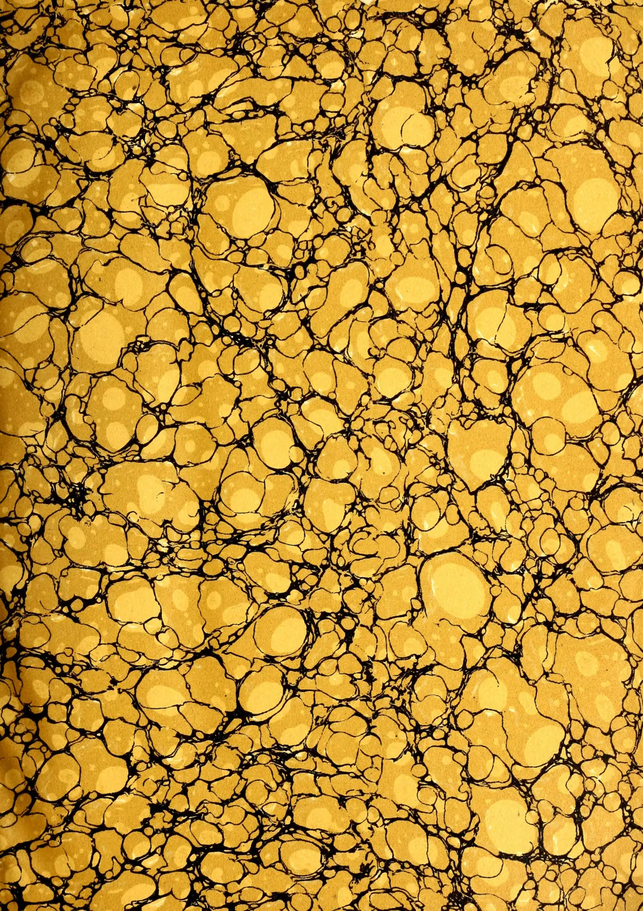
This image displays a classic marbled pattern, often referred to as 'stone' or 'shell' marble. The background is a warm, golden-yellow color with subtle variations in tone, giving it a slightly metallic or aged appearance. Overlaid on this background are intricate, dark black veins that form a complex network of irregular shapes and lines. These veins create a sense of depth and organic movement, reminiscent of natural stone formations. The overall texture is dense and detailed, with no discernible text or other graphical elements. This image shows a blank, aged, cream-colored page, likely an endpaper or flyleaf from an old book. The paper has a slightly textured appearance with some minor discoloration and faint smudges, characteristic of old paper. There is no text or other markings on the page.Digitized by the Internet Archive
in 2014
https://archive.org/details/tropicalagricul381912ceyl
This image shows a blank, aged page with a light beige or cream color. The surface has a subtle texture and some minor blemishes or discolorations, typical of old paper. There is no text or other content on the page.AND
Magazine of the Ceylon Agricultural Society.
(FOUNDED 1881.)
Vol. XXXVIII.
Containing Numbers I to VI: January to June, 1912
44300
A. M. & J. FERGUSON,
COLOMBO, CEYLON.
1912.
11 1
107
107
107
5
13
107
107
94
| PAGE. | PAGE. | ||
|---|---|---|---|
| A. | |||
| African and Eastern Plantations ... | 474 | Cacao in Trinidad ... | 88 |
| Agricultural Bulletin of the Straits and F.M.S. ... | 97 | do Planting, Immortel for Shade of... | 402 |
| do Club, Madresfield ... | 450 | do Production in West Africa ... | 174 |
| do College, Functions and Efficiency of the ... | 256 | do , Tea and Coconuts ... | 271 |
| do Co-operative Credit Societies in England and Wales ... | 437 | Camphor Industry, The ... | 83 |
| do Department for Mauritius ... | 367 | do in India's Wettest District ... | 475 |
| do do of British Guiana ... | 479 | do in Malaya ... | 574 |
| do Education in the University and the School ... | 144 | do , Some facts about ... | 311 |
| do Experiment Station, History of an ... | 135 | do Tree of Kyoto, Great ... | 571 |
| do Implements ... | 453 | Cardamom Market, The ... | 84 |
| do Investigation, Spirit of ... | 245 | Cardamoms, Cultivation and Curing of... | 462 |
| do Research ... | 289 | Cashew Nut, The ... | 516 |
| Agriculture, An Interesting Work on ... | 558 | Castor Oil Plant, Cultivation of ... | 198 |
| do and Distillation ... | 559 | do Oil Plant, The ... | 493 |
| do in Jamaica ... | 358 | Cassava as a Producer of Alcohol ... | 568 |
| do in Mysore ... | 558 | do Root Yield and Cost Price of ... | 410 |
| do in Peru ... | 446 | Cattle Breeding in India ... | 334 |
| do in Trinidad 1909-1910 ... | 357 | Ceylon Agricultural Society Minutes 147, 225, 355, 338 | 338 |
| America, Tea Culture in ... | 561 | do do do Progress Report 147, 251, 538 | 538 |
| Arrowroot, Its Cultivation and Manufacture ... | 212 | do and the Coconut Output of the World ... | 571 |
| Assimilation of Nitrogen by Plants ... | 169 | do Coconut Oil in New York ... | 477 |
| do do by Rice ... | 318 | do Fibre Industry ... | 187 |
| Avocado Pear, The ... | 172 | do Government Agricultural Scholarships ... | 96 |
| do Propagation of ... | 416 | do Planting Enterprise ... | 182 |
| B. | |||
| Bacillus of Foot-and-Mouth Disease ... | 224 | do do Industry of ... | 567 |
| Banana Cultivation ... | 513 | do Tobacco Industry, The ... | 466 |
| Bananas, Manuring of ... | 113 | Ceylon's Palm Products ... | 457 |
| Bantams ... | 225 | China, Tea Trade of ... | 566 |
| Barbados Sour Grass ... | 359 | Cinchona in Bengal ... | 501 |
| Baron Schrotky de Schrottzynski ... | 299 | Citrus Fruit Handling and Shipping in Florida ... | 366 |
| Beekeeping in Ceylon ... | 133 | Clean Cultural Practice Method for Fighting Insect Pests ... | 421 |
| do in Cuba ... | 227 | Close Planting ... | 556 |
| Bird Life and its Effect on our Industries ... | 126 | do do of Rubber ... | 556 |
| Birds to Man, Value of ... | 223 | Cocoa Leaves (Erythroxylon Coca) ... | 398 |
| Black Orpingtons ... | 40 | Cocoa, World's Output in 1908 and 1909 ... | 402 |
| Botanic Garden of Buitenzorg, Java ... | 420 | Coconut, Cocoa, Tea ... | 721 |
| Bran Adulterated with Coffee Skins ... | 472 | do , The Cultivation of ... | 271 |
| Brazil, Rubber Industry in ... | 572 | do Cream, How to Make ... | 87 |
| Brazilian Rubber Congress ... | 293 | do , Distance Apart for ... | 172 |
| do do Law, Proposed ... | 194 | do Fibre Refuse ... | 472 |
| British Association for the Advancement of Science ... | 43 | do do do for Gardening ... | 472 |
| British East Africa, Opportunities on the Coast of ... | 448 | do Growing in the East ... | 283 |
| Broom Fibre Industry ... | 17 | do do in the Philippines ... | 285 |
| Bud-rot in the Coconut ... | 376 | do Industry Abroad, The ... | 365 |
| Butter Nut (Illustrated) ... | 217 | do in the East ... | 283 |
| C. | |||
| Cacao Cultivation, On the Effect of shade on ... | 428 | do in Trinidad ... | 88 |
| do in Ceylon ... | 73 | do in West Indies ... | 171 |
| do Industry, Growth of the ... | 288 | do Output of the World ... | 571 |
| do Palm in Ceylon, Special Review ... | 86 | ||
| do Pest, A New ... | 458 | ||
| do Planting ... | 458, 460 | ||
| do Planting Notes ... | 570 | ||
| do Tea and Cacao ... | 271 | ||
| do , The Cult of ... | 8, 103 | ||
| Coconuts, Cultivation of ... | 271 | ||
| do in Jamaica ... | 271 | ||
| PAGE. | PAGE. | ||
|---|---|---|---|
| Coconuts, in Zanzibar | ... 567 | Flies, Formalin and House | ... 332 |
| Coffee in Madagascar | ... 365 | Foot-and-Mouth Diseases. Reported Discovery of the Organism of | ... 134 |
| Coffee Robusta | ... 31 | Forests and Drought | ... 219 |
| Congress of Entomology, 2nd International | 333 | do of the Empire, The | ... 34 |
| Consols of the East | ... 576 | Formalin and House Flies | ... 332 |
| Conservation of the Soil | ... 247 | Forward Contracts for Plantation Rubber | 99, 491 |
| Co-operation | ... 240 | Fowl Manures, How to Use | ... 70 |
| Co-operative Credit, Bengal | ... 241 | Fruit Growing in Ceylon | ... 365 |
| do do for the Colony | ... 344 | do do in the Tropics | ... 267 |
| Copra Drying | ... 271 | Function of Caoutchouc in the Latex | ... 4 |
| do do House for | ... 461, 462 | ||
| do do Methods | ... 555 | G. | |
| do Industry | ... 187 | Gardening Notes | ... 373 |
| do Trade in 1911 | ... 88 | Giant Aloe at Kew | ... 480 |
| Cost of Production in Malaya | ... 565 | Goonatilleke, A. P. | ... 133 |
| do do on Estates | ... 84 | Grape Fruit and the Pumelo | ... 171 |
| Cotton Cultivation in the Central Provinces and Behar | ... 305 | Green, E. E. | 37, 126, 225, 332, 529 |
| do Cultivation in Turkestan | ... 375 | Green Manuring, Lecture by Mr. Bamber on | ... 78 |
| do Growing in Sind | ... 575 | do Tea, Patent, for Manufacture of... | 576 |
| do Seed Oil, Uncertainty of the Position of | ... 297 | Growing Cucumbers | ... 124 |
| Course of Study for Elementary Schools... | 351 | ||
| Craze for Technical Education | ... 349 | H. | |
| Culture in America, Tea | ... 561 | Hat-Making Industry for Ceylon | ... 281 |
| Cucumber, The Spring | ... 556 | Hemp Industry in the Philippines | ... 281 |
| Cultivation of Cotton in Cuba | ... 395 | Hevea Brasiliensis or Para Rubber, 4th Edition, Review | ... 470 |
| Custard Apple (Anona Squamosa) in Mauritius | ... 518 | 'Hevea' in Brazil, Cultivation of | ... 98 |
| Hindupur Agave Plantation | ... 500 | ||
| D. | History of an Agricultural Experiment Station | ... 135 | |
| Definite Purpose in Agricultural Work, The | 159 | Holmes, J. A. | ... 152, 251 |
| Department of Agriculture, Philippine Islands | ... 146 | Holland, Rubber in | ... 570 |
| Departure of Dr. Willis from Ceylon | ... 75 | do Tea in | ... 570 |
| Development of Cattle Insurance in the Grand Duchy of Baden | ... 164 | House Flies and Formalin | ... 332 |
| Dictionary of Terms used in Agriculture, Botany, Chemistry and Allied Sciences | 51 | ||
| Difficulties in the Improvement of Indian Agriculture | ... 547 | I. | |
| Distance apart for Coconuts | ... 172 | Immortel for Shade of Cacao | ... 402 |
| Distillation and Agriculture | ... 559 | Increased Yields from Fruit Generation Hybrids | ... 142 |
| Doctor P. H. Bahr on the Mongoose in Fiji | 476 | Indian Tea Industry, The | ... 117 |
| Drieberg, C. | 147, 251, 255, 538 | Indigo, Cultivation of Java, Natal | ... 561 |
| Drinking in France, Germany, etc. | ... 572 | do Experimental Cultivation of, for Manurial purposes | ... 469 |
| Dry and Wet Cycles in Ceylon | ... 82 | do in Ceylon | ... 299 |
| Dry Farming | ... 193 | do Planter's False Reasonings | ... 563 |
| do do Experiments of the State Farm, Roma | ... 545 | Industries, neglected | ... 414 |
| Insurance against Forest Fires in Germany | 163 | ||
| E. | International Agricultural Congress at Madrid | ... 62 | |
| Elementary Schools, Course of Study for Elliott, E. | 441, 21, 313, 403, 506 | do Institute of Agriculture | ... 550 |
| Entomology, 2nd International Congress of | 333 | do Opium Conference | ... 200 |
| Exodus from the country Districts and Population | 165 | do Rubber Congress | ... 455 |
| Experimental Cultivation of Indigo for Manurial Purposes | ... 469 | Interplanting Rubber and Tea | ... 367 |
| Experiments in Paddy Cultivation during the years 1910-11 | ... 531 | Ivory Nut Palm, The | ... 528 |
| Extracting Latex from Trees | ... 188 | ||
| J. | |||
| F. | Jaggery Making | ... 519 | |
| Federated Malay States Planting Progress and Labour | ... 173 | do Manufacture | ... 568 |
| Fertilizers and Growth of Rice | ... 408 | Japan, The Trade of | ... 566 |
| do , Use and Abuse of | ... 368 | Java, Rubber in | ... 564 |
| do Tea in 1911 | ... 564 | ||
| K. | |||
| Kapok and its Cultivation | ... 394 | ||
| Katuru Murunga | ... 217 | ||
| Kola Nut, The | ... 399 |
| PAGE. | PAGE. | ||
|---|---|---|---|
| L. | |||
| Lac Culture as an Industry for Ceylon... | 121 | Papua, Growth of Rubber in | 564 |
| Land for Coconuts | 169 | Para and Plantation Grown Rubber, Report on | 181 |
| Law for Encouragement of Rubber Cultivation in Para | ... | do Rubber Hevea Brasiliensis or 4th Edition, Review | 470 |
| Legislation Against Insect Pests and Plant Diseases | 128 | Pelargonium Culture | 329 |
| Light and the Growth of Trees | 119 | Peradeniya Experiment Station | 152, 251, 536 |
| Lock, R. H. 1, 3, 97, 112, 193, 289, 385, 428, 481, 484, 485 | ... | Pernambuco Cotton in Burma | 478 |
| Pernicious Scale | 39 | ||
| M. | Peru, Rubber Industry of | 567 | |
| Macmillan, H. F. | 112, 217, 528 | Pineapples and Dividends | 383 |
| Madresfield Agricultural Club | 450 | do Cultivation | 269 |
| Mahogany Industry of Honduras | 561 | do Industry of Singapore | 382 |
| Maize best Suited for the European Markets | 206 | Pith Grass Industry of Formosa | 279 |
| Maize Meal and Peas Meal Cases | 278 | Plant Poisons | 424 |
| Malaya, Cost of Production in | 565 | Plantain Fibre Industry | 170, 171, 199 |
| Mango Cultivation | 373, 412 | Planting and Development in South America | 371, 476 |
| Manure, Artificial and Farmyard | 278 | Planting Enterprise, Ceylon | 182 |
| do for the Vegetable Garden | 125 | do Industry of Ceylon | 73, 567 |
| do under Fruit Trees | 366 | do in Portuguese Zambesia, Expansion of | 381 |
| Manuring of Bananas | 126, 113 | do out Coconuts | 269 |
| Maslamany, T. P. | 199 | Plantation Rubber, Forward Contracts for | 99 |
| Mat-Making Industry for Ceylon | 281 | Potato Cultivation in Ceylon | 112 |
| Mauritius, a Department of Agriculture for Minor Products in Ceylon | 367 | Poultry Notes | 131, 336 |
| Mixed Vs Unmixed Planting | 73 | Preservation of Timber | 217 |
| Money Lenders and Co-operative Credit | 575 | Preservative of Bark on Trees | 279 |
| Montgomery Hattrick | 143 | Presentation of a Piece of Plate | 355 |
| Moral Influence of Co-operative Credit | 113 | Principles of the Circulation of Water in Tilled Soils and their application | 530 |
| Mycology in Relation to Administration | 456 | Propagation of Avocado | 416 |
| Myrobalans as Tanning Material, Notes on the Best Season for Collecting | 167 | Provision of Technical Advice for Farmers, and the Investigation for local Agricultural Problems | 51 |
| Mysore, Agriculture in | 558 | Q. | |
| N. | Quinine in Combating Malarial Fever, Value of | 146 | |
| Native Rice Growing in Java | 409 | R. | |
| Natural Indigo and Synthetic Indigotin | 498 | "Rab" System of Rice Cultivation in Western India | 146 |
| Neglected Industries | 414 | Re-afforesting Plain Areas of Black Cotton Soil, Method of | 328 |
| New Patents | 576 | Record Yield of Dry Rubber from Hevea Brasiliensis | 485 |
| New York Exhibition | 452 | Research as a Financial Asset | 65 |
| Notes by the Government Entomologist | 222, 223 | do Scholarships in Agricultural Science | 355 |
| do on Tapping | 297 | Rice Ally Crops | 208 |
| O. | do Assimilation of Nitrogen by | 318 | |
| Occupation of Agricultural Students after Leaving College | 243 | do Fertilizers and Growth of | 408 |
| Oil Seed Industries | 383 | do Growing, Native, in Java | 409 |
| Opium Conferences, The | 502 | do Industry in Burma | 557 |
| Orange Cultivation | 175 | Romance of the Rubber Industry | 266 |
| do Growing | 175 | Royal Agricultural Society's Show 1911 | 151 |
| Organism of Foot-and-Mouth Disease, Reported Discovery of | 134 | Rubber African and Eastern Plantations | 474 |
| P. | do and the Singapore Botanic Gardens | 473 | |
| Paddle-Legged Bug, The, Leptoglossus Membraneous | 529 | do Auction Returns | 285 |
| Paddy Cultivation Experiments in 1909-11 | 531 | do Congress, International | 455 |
| do do in Ceylon During the 19th Century 21, 313, 403, 506 | ... | do Estates in Peru | 476 |
| do Manuring, Principles of | 431 | do Exhibition, 1912 | 288 |
| do Seed, Selection in | 481 | do do Conferences | 85 |
| Palm Disease in Godavery | 287 | do do in New York | 288, 452 |
| do Oil Industry of West Africa | 197 | do Experiments, New | 537 |
| do Products of Ceylon | 457 | do Expositions as a Trade Stimulus | 486 |
| Papaya (Papaw), Cultural Direction for | 327 | do 20 feet, Is Thinning out Necessary? | 470 |
| do Hevea Brasiliensis or Para, 4th Edition, Review | 470 | ||
| do in Abyssinia | 384 | ||
| PAGE. | PAGE. | ||
|---|---|---|---|
| Rubber in Ceylon | 73, 183 | Tea Gardens, Indian Shortage of Firewood on | 472 |
| do do and the East Generally in 1912 | 265 | do in Ceylon | 73 |
| do in Malaya | 361 | do in 1911 : McMeekin and Co's Annual Report | 177 |
| do in Middle East | 279 | do in Natal | 280 |
| do Industry, in Conclusion | 270 | do Industry, The Indian | 117 |
| do do in the F.M.S. | 554 | do Interplanting with Rubber | 367 |
| do do , Romance of the | 266 | do Market Review, Indian | 377 |
| do in Trinidad | 88 | do Mate, in Brazil | 476 |
| do , Interplanting, with Tea | 367 | do More Frost on | 184 |
| do , Largest Piece of | 480 | Teak Market and Building in the East... | 285 |
| do Notes | 364 | Tea Sale Averages for 1911 | 190 |
| do Outlook for 1913 | 479 | do Traders' Association Average Figures | 190 |
| do Planter's Note-Book | 3 | do , The Chemistry, Physiology and Aesthetics of a Cup of | 92 |
| do Planting Industry | 270 | Technical Education | 440 |
| do do do of Ceylon | 273 | The British Association for the Protection of Indian Cattle | 166 |
| do Producing Plant of the Mexican Deserts | 196 | do Cult of the Coconut | 103 |
| do Production of Africa | 391 | do Grape Fruit for Ceylon | 71 |
| do Review for 1911, Gow, Wilson and Stanton, Ltd. | 88 | do Paddle-Legged Bug (Leptoglossus Membranaceous) | 529 |
| do Seed Oil | 278 | do Principles of Paddy Manuring | 341 |
| do Seeds, Vitality of | 282 | do Rosary | 221 |
| do , Standard of Crude | 287 | Tibetans and their Tea Stocks | 566 |
| do Tapping in 1850 | 363 | Tobacco Cultivation in Ceylon | 553 |
| do do in Ceylon | 385 | do Grown by the C.A.S. at Mahalipalagama Experiment Station, Imperial Institute Report on | 107 |
| do , U. S. Statistics of Malayan | 388 | do Grown by the U.A.S., Report on | 107 |
| Russian Grown Tea | 565 | do Industry, Ceylon | 466 |
| do Notes, Jaffna | 575 | ||
| S. | Tomato Canker | 280 | |
| Salads and Salad-Making | 156 | Tropical Flowering Plant | 528 |
| Samoan Method of Drying Copra | 555 | do Fruit in the Visayas | 201 |
| School in F.M.S. | 574 | do Industries | 31 |
| Sea Island Cotton in Hawaii | 398 | do do The Cashew Nut | 516 |
| Seed from Young and Old Trees | 71 | ||
| do Selection in Paddy | 481 | U. | |
| Seringueiras or Rubber Trees of the Amazon | 6 | United States of America New Tea Standards | 567 |
| Shortage of Fibre-wood on Indian Tea Estates | 472 | ||
| Shot-hole Borers (Scolytidæ and Bostrichidæ) | 37 | V. | |
| Siamese Bamboo | 51 | Venezuela Cocoa Crop half lost | 558 |
| Silk Culture | 172 | Venkatrum P. A. | 131, 336 |
| Silva, W. A. De | 151 | Visit of Mr. Wicherley to Ceylon | 569 |
| Sir Joseph Hooker, O. M. | 1 | Voa Vanga | 112 |
| Sisal Cultivation in India | 185 | ||
| Soil and the Plant | 231 | W. | |
| do Conservation | 247 | Washing and Creping Patent | 576 |
| do Fertility | 96 | Water Tests of Crops | 367 |
| do Solution | 180 | What Science has done for the West Indies | 154 |
| do do , The | 186 | Wickremaratne, N. | 121 |
| Some Difficulties in Flower Show Schedules | 522 | Wild Rubber Trees of Brazil | 488 |
| Soy Bean in India (Glycine Hispida) | 11, 99 | Willis, J. C. | 51 |
| Soya Bean, The | 189 | Withering of Tea, How to Accelerate... | 556 |
| Spices : New Book on | 369 | Woburn Experimental Fruit Farm | 228 |
| "Spices" : Review | 484 | Workmen's Old Age Pensions in Spain and the National Institute for Old Age Insurance | 165 |
| Standards, New U.S.A. Tea | 567 | Work of the Federations and of the Central Institutions of the Co-operative Societies | 347 |
| State Credit for Agriculture in British India | 162 | World's Tea Trade | 89 |
| Straw-Yarn Process, New | 478 | ||
| Stump-Clearing by Explosives | 161 | Y. | |
| Substitution of Bases in Plant Nutrition | 434 | Yields and Cost Price of Cassava Root in Reunion and Madagascar | 410 |
| Sugar-Cane in India | 321 | ||
| do Industry in Madras | 573 | Z. | |
| Sumatra, Rubber in | 564 | Zanzibar, Coconuts in | 567 |
| Sweet Potato Growing | 36 | ||
| T. | |||
| Tapping, Notes on | 291 | ||
| Tea, Cocoa and Coconuts | 271 |
THE
TROPICAL AGRICULTURIST
AND
MAGAZINE OF THE
CEYLON AGRICULTURAL SOCIETY.
VOL. XXXVIII.
COLOMBO, JANUARY 15TH, 1912.
No. 1.
SIR JOSEPH HOOKER, O. M.
It was with deep regret that we read last month of the death of Sir Joseph Hooker on December 10th at the venerable age of 94. Sir Joseph Hooker, as the leader of the Botanical World for half a century, was entitled to the particular sympathy of all students of Tropical Agriculture—for Agriculture is essentially a branch of botany—and his name is specially connected with Ceylon by three events. These were his collaboration with Dr. Thwaites in the preparation of the enumeration of Ceylon Plants—the first scientific flora of Ceylon, his completion of Trimen's Flora of Ceylon when that work was left unfinished at the death of its distinguished author, and the introduction of Hevea Rubber to the East, which was made at his instigation as Director of Kew Gardens. The fourth and fifth volumes of the Flora of Ceylon were edited by Sir Joseph Hooker, and the greater part of the fifth volume was written by him. The story of the introduction of Hevea to Ceylon is now well known, and it is retold in a forthcoming Circular of the Royal Botanic Gardens, Peradeniya. Ceylon is also indebted to the former Director of Kew for a host of other horticultural and agricultural introductions. There can be few of our readers who will not wish to have recalled
some of the leading features of Hooker's life and character, and we have therefore extracted the following eloquent tribute from the pages of the Gardeners' Chronicle (No. 1,303. Vol. L., December 16, 1911):—
SIR JOSEPH HOOKER, O. M.
Sir Joseph Hooker died at his residence at Sunningdale, on Sunday, December 10th.
His death will be mourned throughout the world of science and in the larger world, wherever there are men to reverence a noble life and to honour splendid achievement. For Hooker was not only the greatest of British botanists; he was one of the great outstanding men of his age. That position he won by the hardest yet surest of ways, that of doing his special work supremely well.
Though he lived far beyond the allotted span of human life, Hooker, the man of science, never grew old. As each new generation of botanists arose, it turned to Hooker as its acknowledged master. The man who had been alive and at work in what seemed to the younger men a remote past was still alive and at work in their midst. The man who led the van of scientific progress in the 50's of last century remained, by right of brain and example, our leader till his death.
2[JANUARY, 1912,The advancing years seemed almost to pass him by, save that they brought him the sacred accompaniments of old age—love, honour, and obedience, troops of friends, till at the age of 94 death surprised him whilst he was yet at work.
Those of us who knew Hooker in his hale, serene old age might well have imagined that his life had been spent in sheltered retirement from the vexations, troubles and perils of the world, yet to few men, in whatsoever walk of life they be, falls such an eventful career as he chose for himself. Well-nigh three-quarters of a century ago—in 1839—he sailed, a youth of two-and-twenty, with Ross in the "Erebus," and on that famous voyage of the "Erebus" and "Terror" he shared in the hardships and dangers which await the explorer in the bleak Antarctic seas.
Alone he trod the passes and hills of the Himalayas, and penetrated whither no white man had gone before. In later years he travelled to Syria, in order to investigate the Cedar groves of Lebanon, and surely none since Solomon had more title to speak "of trees, from the Cedar tree that is in Lebanon, even unto the Hyssop that springeth out of the wall."
Unlike so many journeys the labours of which cease with the home-coming, Hooker's travels involved years of arduous toil after the wonderful harvests of plants which he collected had been garnered in. The working out of his own collections was in itself a herculean task, and beside the plants which he had gathered with his hands, Hooker received countless specimens from his correspondents in the four quarters of the globe.
We have been told by one of his disciples that even in his herbarium Hooker was wont to adopt methods of classification which he had learned to follow in the wilds. The plants to be arranged were strewn upon the floor, and related plants were coaxed gradually by his unerring eye and judgment into their proper groups.
Of the magnitude of Hooker's contributions to systematic botany we speak elsewhere; it suffices here to say that in this domain he was equal, if not the superior, of his great contemporaries, William Hooker, Bentham, and Lindley.
Hooker's claims to immortal memory in the annals of science rest by no means solely on his contributions to systematic botany. A great observer, the range of his observations in the countries which he visited included geological, geographical and meteorological phenomena.
Of them that other great traveller Humboldt pronounced that they are "a perfect treasure of important observations in which a prodigious extent of previous knowledge is brought to bear on every topic, and which is marked with great sagacity and moderation in all the views brought forward."
Versatility is the relaxation of genius, and though Hooker was first and last a botanist, his broad sympathies with all domains of natural knowledge gained for him the sobriquet of the "Versatile Hooker," and established him whilst yet a young man in the first rank of men of science.
Yet, remarkable as were Hooker's achievements as a traveller, collector, and observer, they do not complete the tale of his contributions to knowledge. To many of us, at all events, Hooker's most abiding title to lasting memory is his epoch-making work on the geographical distribution of plants, and the application of that work to the elucidation of the problems of evolution and the origin of species.
Hooker was happy in the moment when he embarked on the "Erebus" and his life's work. Shortly before he sailed with Ross, Darwin had returned from the memorable voyage of the "Beagle." The experienced traveller recognised the high promise of the novice, and none better than Darwin could advise Hooker for his journey of exploration. In those days began the acquaintance which ripened into close and life-long friendship.
There is no doubt that Darwin's attitude of mind towards the "species question" influenced Hooker, and there is also no doubt that Hooker's cautious yet broad judgment proved invaluable to Darwin. Already in his earliest writings Hooker had taken, consciously or unconsciously, the first step away from the dogma of the constancy of species. Similar forms of plants in distant Antarctic lands he attributes not to so many separate acts of creation, but to the isolation—from geographical or climatic causes—of forms which once spreads continuously over the whole area. For more than twenty years after his return from his voyage, Darwin—deep and slow, exhausting thought, and hiving knowledge with each studious year—pondered the problem of the Origin of Species. At every stage, as he acknowledges, Darwin availed himself of the large stores of knowledge and excellent judgment of his friend Joseph Hooker. Hooker and Lyell it was who prevailed on Darwin to publish jointly with Alfred
JANUARY, 1912.]3Review.Russel Wallace the outline sketch of his theories. That sketch was communicated to the Linnean Society in 1858. The review of the Origin of Species which most pleased Darwin was that written by Hooker, with Lindley's acquiescence, in the pages of the Gardeners' Chronicle. In 1868, when he presided over the Norwich meeting of the British Association, Hooker devoted his presidential address to an exposition and defence of the Origin of Species. Thus, both by sober counsel and subtle advocacy, Hooker lent most powerful aid to Darwin. Many years afterwards, in 1908, the conspicuous part which Hooker had played in Darwin's work was recognised officially. At the meeting of the Linnean Society, held to commemorate the 50th anniversary of the communication of the Darwin-Wallace joint paper on natural selection, Hooker attended in person to receive one of the Darwin medals, and delivered—at the age of 91—a vigorous speech recalling the far-off times when the great events were happening.
And through all these eventful years, from pre-Victorian to present Georgian times, Hooker's special systematic and explorational work went on unceasingly. His Antarctic collections were worked out, and the Floras of the Antarctic, New Zealand and Tasmania were published. The Indian journey was accomplished, and that classic, The Himalayan Journal, was written. Therein is evidence enough that, had Hooker devoted himself to literature, he would have achieved no less distinction than he won in science.
Hooker's official connection with Kew began a little more than fifty years ago. After serving for ten years under his father, William Jackson Hooker, the son succeeded to the Directorship in 1865. In that post his great powers of organisation and his vast knowledge of plants enabled him to add another great reputation to the great reputations which he had already built up. As is well known, Hooker passed through troublous times at Kew, where at one period the hand of dull officialdom was heavy upon him. But Hooker, though never one who could suffer fools gladly, won in the long run. Thanks to the saving sense of the Press and the support of men of science, he emerged victorious from the struggle, and preserved Kew from the worst of evils—the uninformed meddlesomeness of an ill-educated bureaucracy.
Of the honours which fell to Hooker, it is scarcely necessary to speak. He received from the Royal Society the Royal, Copley and Darwin medals, and attained in 1873 to the highest position open to a British man of science: the presidency of the Royal Society. In 1877 he was created K.C.S.I., and forty years later, on his 90th birthday, he received the Order of Merit. It is right that the Abbey should offer to receive his ashes side by side with those of our poets and painters, statesmen and warriors. Yet it is more fitting that he should lie beside his father at Kew. His early life, his whole life, was devoted to botany, and it is meet that he should lie in the Mecca of botanical pilgrims.
BY FRANK BRAHAM, F.R.G.S.
To the uninitiated reader who has never visited a tropical country this little book will give a very fair idea of the rubber planting industry of Ceylon and Malaya. The author, however, states in his preface that the object of the volume is to provide a note-book which the rubber plantation assistant can take with him into the field for purposes of reference and guidance. For this purpose the book appears quite inadequate, as was only to be expected in one which is described on the title page as having been compiled from the most reliable and modern sources. Planting, of course, cannot be learnt from
books. At the same time a book written by a practical planter who was really familiar with the details of planting work might be of the greatest assistance to the beginner. Such a book still remains to be written. We do not think that its place is at all adequately taken by the present publication which constantly reveals a want of personal familiarity with the actual working of an estate, whilst attempting to deal with the whole subject of preparation of land, planting, cultivation and tapping in a section of little over six thousand words.
In pursuance of our invariable practice when writing reviews, we proceed to enumerate a few of the points in which we differ from the author of the book under review, a method which we imagine will most commend itself to
Gums, Resins,4[JANUARY, 1912.the author himself should these lines happen to fall into his hands.
Although we agree with Mr. Braham in advocating a comparatively wide distance of planting, we do not know of any direct evidence to show that a wider distance than feet actually results in a heavier permanent yield per acre, whilst at a greater distance than this initial yields must be materially reduced, and the cost of clean weeding—a process which the author emphasises as essential, becomes practically prohibitive.
From the statements on pages 26 and 27 it is to be inferred that in the author's opinion thumb-nail pruning leads to reduced danger of damage from wind. This is certainly not the general experience in Ceylon, where the practice of topping the trees has been generally given up owing to the injury done by wind to trees so treated. Nor do we clearly understand why a tree which divides into three branches should make less of a cup to collect water, than one which only forks into two.
It would scarcely be possible for anyone who is familiar with the growth of Hevea and Ceara rubbers to recommend the planting of the latter as a protective belt between fields of the former.
The author repeats the dictum, due originally, we believe, to Mr. Herbert Wright, that the objective of scientific tapping is to obtain the greatest amount of latex with the minimum of bark removal. If this is the case a method of pricking by which a great deal of latex can be obtained without any removal of bark should be superior to any system of paring. Mr. Braham, however, makes no mention at all of pricking, nor, so far as we can discover, does he ever make use of the word paring, but uses the expression tapping as synonymous with paring. In a book intended for use on the estate it is also surprising to find no practical instructions for carrying out the actual process of paring, which is much the most difficult and delicate of all the operations connected with rubber planting.
In his explanation of "wound response" by the sudden formation of new latex vessels in the neighbourhood of the incisions, the author repeats an ancient error. We imagine he can scarcely be aware of the rapidity with which the increased flow of latex comes into operation.
The third section of the book contains hints for health in the tropics. From the list of the principal diseases to be guarded against enteric fever is omitted.
R. H. L.
BY DR. H. P. STEVENS.
Up to the present time there is little or no evidence as to the part played by the latex in the economy of the plant such as can be interpreted decisively in favour of any of the theories that have been enunciated. This applies whether we consider the function of the latex in regard to one species only or to latex-yielding plants collectively, and whether the latex contains an appreciable proportion of caoutchouc or consists almost entirely of 'resinous' matter. It has been pointed out that all latices do not necessarily have the same functions, but an hypothesis applicable in general to them all should carry more weight than one which can only be applied in individual cases. All latices consist of a watery liquid in which is dissolved practically all the food constituents necessary to plant life, namely, nitrogenous matter, potash salts, phosphoric acid and carbohydrates. Accom-
panying these we have a large proportion, up to 50 %, of chemically very inert material consisting of caoutchouc and resinous matter, these two in the most varied proportions. Any theory which accounts for the presence of caoutchouc in some latices but does not account for the resins in others is incomplete, and consequently defective, unless some special reason for the different behaviour of the resins from the caoutchouc can also be formulated. A theory, to be acceptable, should apply to both types of the inert material, that is, both to the caoutchouc and the resin. Thus, for instance, take the negative results in the search for an enzyme or bacterium which would resolve and convert the non-soluble caoutchouc into soluble and assimilable carbohydrates. Were such an enzyme discovered it would be prima facie evidence in favour of the reserve food theory, but the evidence would be incomplete without some satisfactory theory to account for the presence of resins—practically to the exclusion of caoutchouc—in other latices. In paren-
JANUARY, 1912]5Saps and Exudations.thesis, I may point out that the conversion of caoutchouc into assimilable carbohydrates in situ is extremely unlikely. This is apparent from an elementary consideration of such a conversion from the chemical standpoint. Caoutchouc consists of the elements carbon and hydrogen only, while the assimilable carbohydrates contain in addition the element oxygen, and in such proportion that for every two hydrogen atoms there must be one oxygen atom. A simple calculation shows that caoutchouc would require about its own weight of oxygen, and the question arises—whence could this large amount of oxygen be derived. If derived from other constituents these would be correspondingly reduced. The only possible source of such oxygen would be the air, and it follows that such changes would be confined to the latex in the leaves and could not affect the latex in the vessels of the cortex. On the other hand, resins are fairly rich in oxygen. Or if the caoutchouc be regarded as a waste produce, its formation entails the liberation of large quantities of oxygen.
In the present note it is not intended to put forward any new theory of the function of the latex in the plant, but to formulate an aspect of the question which renders intelligible the primary function of the caoutchouc and resins in the latex.
These inert constituents are always present in a very finely divided form as minute globules, and the chemico-physical functions of matter in this state appear to have been lost sight of.* I am speaking of the functions or properties which invariably accompany matter in a finely divided form. All work up to now has centered on the caoutchouc (and resins), and experiments on yields have been restricted to the percentages of caoutchouc without any regard to the proportion of the other constituents. I refer to the nitrogenous matters, carbohydrates, salts, &c. We have no information as to the variation in yields of these latter substances, and, except for a few analyses, we have no information at all on this subject. Even where analyses are given, we seldom find exact data as to age of the trees, previous tapping history, &c., so that the analyses are of little value for our purpose.
To return to the globules of caoutchouc (and resins), let us enquire what
* Since writing the above my attention has been called to Dr. Hans Molisch's 'Studien über Milchsaft,' page 81, where the possible surface action of the globules is mentioned.
are the characteristics of these substances in the finely divided form in which they occur,—what properties, chemical and physical, must necessarily accompany minute globules in suspension in an aqueous medium lightly charged with water-soluble substances.
It has long been known that the concentration of molecules on surfaces is denser than in other parts of a medium, and to this change in concentration the term adsorption is given; the adsorption of ammonia gas by charcoal is a common text-book example. The ammonia becomes condensed in a concentrated form on the surfaces of the particles of charcoal. Similarly salts may be adsorbed from solution. This is the reason why it is so difficult to remove the last traces of soluble salts when washing a precipitate, and why a proportion of the salts is always retained by the soil in spite of the heaviest rains. This phenomenon is dependent on the area of active surface in which change in concentration takes place,—it is therefore the more marked, the more finely divided the substance. The action is therefore particularly noticeable with the fine particles such as soils are composed of, and it must also play a prominent part in latex, where the globules are very small and the surface exposed to the aqueous medium or continuous phase is very large. Assume then that we have an aqueous medium with small quantities of dissolved carbohydrates, salts, &c., and that it is possible to add to this solution a quantity of caoutchouc or resin in small globules of, say, 0.5 microns to 3 microns in diameter such as are commonly found in latices. The immediate effect would be the withdrawal from the solution of part of the dissolved substances, which would be adsorbed in the surfaces of the caoutchouc globules. With the same globules the amount adsorbed will depend on the concentration of the soluble substances in the aqueous medium. If the concentration be increased by dissolving more of the soluble materials, part only of these would remain in solution and the remainder would be adsorbed; or if part of the soluble materials were removed so as to reduce the concentration of the solution, this would be to some extent counterbalanced by part of the adsorbed substance being given up to the solution. The effect of the presence of the inert caoutchouc or resin globules is to increase the capacity of the latex for retaining its constituents. For the same concentration of these constituents the capacity of the latex for holding certain
Gums, Resins,6[JANUARY, 1912.of them may be much greater than if the caoutchouc globules were not there. The most important function of the globules is however probably the maintenance of a balance in the concentration of certain of the dissolved constituents. If an attempt were made to remove the substances adsorbed by caoutchouc globules by removal of these from the solution, say, by bringing the globules into fresh water, could this be done, a part only of the adsorbed substances would be given up to the water; and with each succeeding treatment less and less would go into solution. If the amounts removed were plotted against the times of treatment, we should find the relationship to be hyperbolic, this being the characteristic of all adsorption phenomena. Hence to whatever extent the adsorbed food constituents of the latex may be drawn upon by the plant there will always remain a reserve in this state.
These considerations may be taken to point in favour of a reserve food theory of the latex function. Such a conclusion would, however, be quite unwarranted at this stage. Before any conclusion can be reached we require direct experimental evidence, and, as already explained, this can only be obtained by systematic observations and analyses of the latex over a considerable period. This should include the wintering period, and the trees should be tapped at regular intervals during the experiment. Analyses giving the percentages of caoutchouc only are quite valueless for this purpose, as are also isolated analyses where the conditions have not been recorded. Whatever the results of such systematic work may be, the fact remains that much of the soluble constituents in the latex must be adsorbed by the globules, whether of caoutchouc or resin, and that such adsorbed material is differentiated as regards availability &c. from the remainder. The data at present available is insufficient to enable us to judge which of the soluble constituents are likely to be adsorbed to any considerable extent by the globules, but their selective action may play an important part. This function of the suspended globules is equally applicable to all latices, whether caoutchouc or resin predominates. The globules may have other functions, but in this particular one, that is, as a vehicle for the food constituents, may be found their economical importance for the plant.
(From the India Rubber World, Vol. XLV., No. 2, November 1, 1911.)
The seringueiras Heveas produce the best known rubber. The basin of the Amazonian rivers is the country on which the different kinds of trees are scattered, unequally grouped, depending upon the nature of the ground, altitude, its dampness, etc. There are several varieties of rubber trees. We note twenty-one different kinds, of which five take a prominent part (Huber).
The rubber tree "rana" or "mangue" (Hevea guyanensis or siphonia elastica) will grow in a very damp ground, nearly always inundated, situated at the mouths of rivers. This tree does not give a very important product.
The rubber tree "branca, vermelha ou preta" white, red or black (Hevea brasiliensis) is found in groups on the islands and at places of inundations, from the middle upward to the high parts of basins of nearly all the Amazonian tributaries. It is also found on solid ground (especially the red variety, which is the least milky) and in places filled with dampness during most of the year. This rubber tree produces the largest quantity and the best class of Amazonian rubber.
The rubber tree "puca" (Hevea viridis) yields latex of an inferior quality. The rubber tree "barriguda" (Hevea spruceana) is frequently encountered on solid and high ground, between the two rivers and in the vicinity of the interior lakes. The latex is not of a good quality, but is used in the mixture of other better varieties of rubber.
The rubber trees "itauba" or yellow (Hevea Cuneata), which produces a rubber of good quality, lives best on high, dry grounds.
The rubber trees are found in nearly all the Amazonian territory, from the sea level up to the altitude of 600 meters (about 2,000 feet) and more, but the best quality is encountered on the islands lying at the mouths of big rivers, and in the high basins of the principal Amazonian tributaries, principally the Madeira, the Purus, the Jurua, the Javary and their own ramifications.
The longevity of the rubber tree is not known exactly—it may live one hundred years or more. The milk production
JANUARY, 1912.]7Saps and Exudations.accumulates with the age of the tree, and therefore its value is increasing with age. Barring accidents or sicknesses, which are very rare, the rubber tree being less inclined to sicken than any other domestic tree, it is supposed to live the time mentioned above. Compared to a gold mine, the rubber tree is much more valuable, because every dollar of profit that is drawn from a mine represents a depreciation in its value, whereas with every year, the rubber tree will augment its production of a better quality. It is an inexhaustible mine, without limits. The rubber tree is an automatic augmentation of profits. With every year's production these profits are increased without depreciating the value of the tree. The rubber trees develop into majestic trees growing tall and straight. At the blooming time the air of the seringual (rubber plantation) produces a very agreeable perfume attracting swarms of bees and other insects. Four months after the seeds begin to appear in hanging clusters. During the hot season there is a discordant concert of a fantastic musketry in the seringual which is produced by the cracking burrs, opening themselves and scattering seeds in all directions.
For the exploration of the rubber, the first duty consists in opening the estradas, which are opened by the matteiros, who are experts on rubber trees.
The estradas are supposed to hold about 120 to 180 trees (Heveas), forming as nearly as possible a circle or a figure 8, in order that, starting from any part of the estrada, the seringueiro will always find his way back. There, the seringueiro builds himself a hut covered with "Paxiuba or Ubussu" that protects him poorly against the elements.
Besides these huts, which are located in the working estrada of the seringueiros, there is the "Centro or Barracao do Patrao" (or the house of the foreman), containing generally a shop, where commissaries, munitions and working tools are supplied, and where all the rubber of the estrada is gathered.
The working material of the seringueiro is very simple and cheap. The necessary tools are: A small machadinha, weighing 125 grams (44 oz.), having an edge of 0.25 mm. (0.01 inch) to which a handle is affixed, the length of which depends upon the necessities of the work; a zinc bucket of 6 to 8 litres (1.58 or 2.11 gallons) to gather the latex, 500 to 600 tijellinhas (tin cups) with a capacity of 200 cubic centimeters (12.2 cubic inches) and a basin of zinc, where the
contents of the buckets are deposited before the defumacao (smoking).
The work starts early in the morning, the seringueiro armed with his machado and carrying a bag of tijellinhas (tin cups) on his shoulder, is exploring the estrada and works at each tree, as high as possible, cutting oblique incisions (taking the upward direction) through all the thickness of the bark. Below each of these incisions he immediately inserts a tijellino, introducing its edge by an inside expression into the bark, or he hangs it up with damp argyl.
The number of horizontal incisions varies in accordance with the thickness of the tree. At 10 a.m., when the dropping has nearly ceased, the seringueiro leaves the hut again with the bucket in which he pours the contents of all the tijellinhas, and which he leaves at the bottom of the tree upside down on small sticks which are standing in the ground for this purpose. When returning to the "centro" the defumacao is started.
The smoker protected from the weather by a few palm leaves is placed near the hut. It is a straight truncated cone, generally made of iron, 50 centimetres (19.68 inches) wide. The seringueiro places it on two stones and builds a fire underneath feeding it with "coco" (the urucary or the inaja) which, on account of its rich smoke containing antiseptical qualities, coagulates the rubber. It is with a kind of cane terminating in a round and straight shovel, similar to the paddles of the canoes used on the Amazon, which lies on a pitchfork at the bottom of the fire, that the seringueiro makes the defumacao (smoking process). First he passes this cane over the smoke, then dips it in a basin close by, which is full of latex, passes it again over the smoke and the first layer appears to be coagulated, then, with a cuia (cup or gourd) he throws over that another layer, and so on successively till the pelle is formed, which represents a ball weighing approximately from 6 to 8 kilos (13.2 to 17.6 pounds), or from 30 to 35 (66 to 77 pounds) at the heaviest.
The well defumated rubber is called "borracha fina" (fine rubber). The rubber by which the congluation has been badly made, or by which the defumacao (smoking) took place a little late, when the milk was already a little coagulated, is called "borracha entrefina" (entrefine rubber).
The sernamby rubber is the naturally solidified rubber, on the ground, in the
Oils and Fats.8[JANUARY, 1911.trees, in the tin cups, in the buckets, etc. It consists of threads or pellicles, mixed with more or less earth refuse or other foreign substance. Its value is estimated to be 30 per cent. less than the fine rubber.
The harvest and the smoking, in other words, the manufacture of the rubber, lasts from six to seven months a year, and during the other months of the very dry season the trees are not touched. At the overflowing time the harvest is rendered impossible on account of the waters inundating the igapos. It is calculated that the average yield of each tree is 44 grams. (1.55 ounce) of latex per day, but one rarely gets more than 5 kilos (11 pounds), which per man represents yearly 450 to 500
kilos (900 to 1,100 pounds) fine rubber and 90 kilos (198 pounds) of sernamby.
After the manufacture, the rubber is taken to the hut of the foreman, and from there sent to Manaos to the avaidor, who is the supplier of the provisions and of the goods to the seringaes, and who, for the most part, is the real proprietor of the seringal. From the avaidor the rubber is sold to the exporters, who send it to the consuming markets of the world.
The exporters are the people who make the "beneficiamento," consisting in opening the pells in qualifying them (rubber fine and entrefine) and in packing them up in solid pine cases to be then embarked at the Manaos Harbor on board the trans-atlantics, which take it to the ports of destination.—Revista Literaria Artistica.
(From Tropical Life, Vol. VII., No. 10, October, 1911.)
Whilst everyone has heard of the fame of the San Blas nuts, few are certain where San Blas is (most of my enquiries have located the centre in the Philippines, but none of them in Panama, where it really is), and so are unable to address themselves to possible sellers of seed-nuts to improve their local supplies. Like the well-known though less famous coconuts in the West Indian island of Trinidad, the San Blas nuts come from the sea-shore of what is known as the San Blas coast of Panama. From this Centre the United States alone, according to the Pan-American Bulletin, take some 6,000,000 nuts, which sell on the New York market, where the nuts are reckoned as being the finest in the world, at prices ranging from $33 to $45 ($1=4s. 2d.) per thousand.
Coconut planters, therefore, who are not satisfied with the size of their nuts, would do well to get into touch with shippers or planters along the San Blas centre in Panama, and import a supply of seed-nuts from this centre, which has not only been noted for its coconuts for generations past, but has also, of late, added new plantations which, together with the older ones, are carefully looked after. All who have spoken to us of San Blas nuts describe the centre as being perfectly free of disease, but this we cannot vouch for from personal experience,
Regarding the output of coprah in the South Seas, the London Chamber of Commerce Journal, the other day, reported that the principal coprah-producing country, after India, is the island of Samoa, where, by regulation of the native processes of preparation, it has been possible to double the production of this important article within ten years. Thus, in 1900, the annual crop was about 6,000 tons, and in 1910 it exceeded 12,000 tons. It is predicted that, within a dozen years, some 30,000 tons will be produced in the island of Samoa alone. At the present time the yield per acre is from 9 to 11 quintals. The production of coprah has also recently begun to extend in the New Hebrides, in the Solomon Islands, in Papua, and in certain of the Pacific Islands. All the coprah actually produced in these regions goes to Sydney, or passes through that port before being re-exported to Europe. Having regard to the constant development of the production of coprah, it is anticipated that Sydney will become one of the most important markets for this article in the world.
There is a possible, not to say a probable, chance (says the Manila Times, quoting Dr. H. D. Gibbs) that the business of making sugar in the Philippine Islands may be entirely revolutionized. The advantages of the Nipa product over those of cane lie in there being a practically inexhaustible supply of nipa trees located all over the Archipelago. Another feature is that, since the sugar would be produced from sap, the crushers
JANUARY, 1912.]9Oils and Fats.in the ordinary sugar mill which form one of the heaviest items of expense in the mechanical line, would be unnecessary. Another considerable item is that once planted, the nipa takes care of itself, that it requires no cultivation, and that its product may go on for a century. Trees which have been producing for half that time, fifty years, are already on record among unimpeachable authorities. The method of extracting the sap is very simple, consisting of the native puncturing each tree, and drawing off the liquid in bamboo measures, day by day this operation lasting for about an average of seventy days annually with each tree. Of course, the process of extraction can be carried on practically all the year, because different trees may be used in the same tract, thus keeping up the business all the year round.
The figures from the yield of one hectare, by a series of measurements, show that from 2,000 trees sufficient sap may be drawn to produce 10,428 kilos of sugar (say tons) of 96 per cent. polarization. At 16 centavos per kilo, a fair average value, this would bring a gross income of 1,668.48 pesetas, from which the expense must naturally be deducted.
Reference has been made principally to the nipa tree, but in addition there are also three other varieties of trees, the coconut buri and sugar palms, all of which produce sap suitable for sugar. The advantage of the transportation of sap over that of the heavy sugar-cane to the mills is of course plainly obvious, since the labourer merely steps from his banca to the shore, extracts the sap, pours his bamboo measures into some larger receptacle in the banca and paddles away to the mill, one man being all that is necessary for the operation, and the building of railroads, as in the case of sugar-cane, being unnecessary for transportation purposes.
It has been estimated by the doctor and his assistants that an area of from 750 to 1,000 hectares of nipa trees would be sufficient to keep a 100-ton sugar mill running continually.
In addition to the sugar industry there is also the production of alcohol, which can be made from the sap of the nipa tree in quantities sufficient to supply the entire China coast, beside what is needed for local consumption. Last year over 9,000,000 litres of alcohol were made from 90,000,000 litres of sap, and this is merely a small fraction of what might be done.
In addition to taking sap from the nipa trees for alcohol, coconut tree sap is largely used, and the scientists have demonstrated that the production of the coconut trees may be increased by over 112 per cent. by intelligent handling.
Experiments made with regard to the yield of sap from one hundred coconut trees for a period of thirty-one days, with two collections per day, showed that the average daily production of sap per tree was approximately 1.4 litres each.
Whilst this is extremely interesting to hear of, we would say that such large withdrawals of sap must tell heavily upon the palms, and by reducing their vigour, decrease both the size and quantity of the nuts. In fact, such trees would, we feel, be useless for copra-production—at least, when being systematically tapped as described.
We have received several inquiries from this side re cultivators for coconut grooves, arising out of our review of Mr. Dean C. Worcester's pamphlet (pp. 179-180 of our September issue), and so will publish our answer in case others out in the Philippines or elsewhere want the same information.
"Most of the unforested land,' writes Mr. Worcester, "suitable for coconut planting in the Philippines is covered with the tall, coarse grass, known as cogon, or with a species of bamboo grass which closely resembles sugar-cane in appearance, cogon grass being by far the commoner of the two. In order to clear cogon land the grass must first be burnt off, and the land must then be ploughed (a strong plough would be needed to withstand the root growth), and then harrowed repeatedly so as to get rid of the roots. If this is not done the cogon will promptly re-establish itself. If native ploughs and harrows are used, the land must be gone over four times the first year, and twice during the succeeding year." Our inquirers wanted to know what sort of implement could be used for cultivation work between coconuts, so we communicated with our friends at Ipswich, who recommended their "Ipswich" steel cultivator as illustrated. These implements are made with 8, 13 or 17 tines. They have one steel "through" axle and one lever for raising and depressing the tines. The wheels are of steel and the centres can be taken out and replaced by new ones, thus making them equal to new. A swivel-wheel is attached to a short pole, and takes all the weight off the animals, but a pole with whipleretrees for
2 Oils and Fats.10[JANUARY, 1912.either two or three horses, or both, can be fitted if desired. The tines are carried by hinged frames, and are free to follow all irregularities of the soil. When one end of the reversible steel points is worn they can be turned round and the other end used. The points have ribs on each edge to strengthen them, and require one bolt only to fix them. Self-sharpening chilled cast points can also be supplied, or steel hoes in. wide. The patent taper spring steel tines are made of the best spring steel, and are strongest at the upper end, where the strain is greatest, no helpers being now required. The tines are tested to stand the roughest usage, and the pressure is applied through spiral springs instead of flat pressure-bars, thus giving the tines greater play; the pressure can be varied at pleasure to work fleet or deep, and the spiral springs make the leverage lighter. The tines can be moved sideways, and can be set with more or less pitch. On very foul land some of the tines can be removed to prevent clogging. All the weeds are brought to the surface and killed, and the soil is thoroughly aired and sunned.
In preparing the land for coconut planting, Mr. L. C. Brown, Inspector of Coconut Plantations, F. M. S., in his Bulletin No. 11 says, that for the first year at least it is preferable to keep the ground free from weeds, as doing so, among other advantages, causes the trees to come to maturity at an earlier stage, saves money in maintenance, and offers greater facilities for ploughing. He attaches great importance, we are glad to see, to seed selection when laying out an estate. We quite agree with him, and it was for that reason we call attention to the San Blas nuts. Mr. Brown reports that the seed nuts imported from Penang and Province Wellesley to some of the large coconut plantations in the Federated Malay States have done exceedingly well; although he adds that excellent nuts may be obtained from Kuala Selangor, Kuala Langat, and Lower Perak. Seed-nuts, we are told, should be selected from well-matured trees of medium size, say, from 25 to 30 years, showing good yield and large-sized roundish nuts, either red, brown or green and not oblong nuts. The seed-nuts must be fully ripe, and care must be taken to ascertain that they are not damaged in any way.
In planting out the seed-nuts in the nurseries prepared for them, they should be buried to half their depth and placed in a slightly oblique position, with the acute end of the nut downwards. It is
an advantage, concludes Mr. Brown, not to plant the seed-nuts for a month or so after they have been picked, so that the outer skin may get thoroughly dry, and the husk be allowed to harden. This must be to avoid pests, otherwise we should plant the nuts as quickly as possible after picking. The trees should be planted (48 to the acre), and when the soil is alluvial and sufficiently above sea-level, Mr. Brown strongly recommends that Robusta coffee be planted ft. as a catch crop, at the same time as the coconuts. When there is a good local demand for fruit, these can be planted instead of, or as well as, the coffee.
Further orders are being received by the leading engineers on this side for mechanical dryers for tropical produce. The increased output of cacao, coprah, coffee, &c., at the chief centres is causing planters and shippers alike to turn to artificial methods of expelling the moisture expeditiously and completely as the parcels come to hand, whether they consist of only a few hundred-weights or many tons. Among the orders recently received are two for Messrs. David Bridge & Co., Ltd., of Manchester, for their well-known rotary dryers. The first came from Fiji, the machine in this instance being, we understand, for drying cacao, whilst the other is for an apparatus to be shipped to the Philippines for drying coprah. Meanwhile the firm is quoting for these now popular machines for all the chief producing centres, including the West Indies, Bahia, West Coast of Africa, British and Portuguese Africa, Java, the Solomon Isles, &c., and hopes before very long to have one or more of their rotary dryers at work at each of these places.
In answer to "F. L. J.," we should recommend "Verb. Sap." (price 2s. 10d.) as the best book on outfits, cost of living and travelling in West Africa, and "The Maintenance of Health in the Tropics," by Prof. Simpson (price 2s. 10d., post free), for general information on the subject.
JANUARY, 1912.]11Oils and Fats.BY DAVID HOOPER.
(From the Agricultural Ledger,
1911, No. 3.)
The original home of the Soy bean plant Glycine hispida, Maxim., G. Soja, Sieb. and Zucc.) is the extreme east of Asia, and it has been long cultivated all over the east between Japan and Java. According to Aiton it was introduced into England in 1790, and according to Professor Church it has met with some successful cultivation in Europe since 1873. Notwithstanding its recommendation, the Soy bean has never been cultivated to any considerable extent in England and the Continent of Europe. The plant was introduced into the United States of America in 1854, and was grown to a small extent in the Southern States, but from the year 1885 its cultivation as a forage crop has gained in importance in all the agricultural centres. Within the last two or three years a great deal of interest has been taken in the cultivation of Soy, and experiments are in progress in Government Farms in Cape Colony, Natal, East Africa, Gambia, Mauritius and Australia.
It is difficult to ascertain the date of the introduction of Soy beans into India. There is no doubt that certain hill tribes, mostly of Mongolian origin, have cultivated the bean for a long time. At the Punjab Exhibition held at Lahore in 1864 Soy beans, identified by Dr. Cleghorn, were sent from the Hill States. This is the first record of the beans being exhibited in this country, and shows that the cultivation was on an insignificant scale.
In 1882 Messrs. Jardine, Matheson & Co. of Hong-Kong sent a sample of Soy beans for experimental cultivation in the Saidapet Experimental Farm, Madras. The plants raised from these seeds were healthy, but the yield of the crop was small.
In 1897 Surgeon-Colonel W. G. King, Sanitary Commissioner, Madras, strongly advocated the cultivation of Soy bean as a valuable food worthy of the attention of the people. In two experiments carried on at Saidapet during 1897-98, the yield of seed per acre was 468 to 495 lbs. respectively. Recent enquiries in
Madras resulted in the opinion that the cultivation in the Presidency is still in an experimental stage.
In 1882 some Japanese Soy beans were sent by the Government of India for trial to Saharanpur. In 1885 very good results were obtained, the black seeded variety giving a yield of 1,124 lbs. per acre, and the white seeded variety giving a yield of 561 lbs. per acre. In 1886 the acclimatised seed was widely distributed; in some cases the crop failed, and in others it was fairly successful, but as a rule where seed was harvested it was said that the pulse was not popular in any form. The Botanical Gardens grew the crop for a few years longer, but as there was no demand for the seeds the cultivation was abandoned. An interest in Soy bean, however, seems to have revived, for the Agricultural Department has this year sent to the Reporter on Economic Products samples of the black variety of Soy beans from forty villages of the United Provinces.
At the Experimental Farm at Nagpur, Central Provinces, the bean was grown experimentally from Japanese seed first planted in 1885. The yield at the end of the first year was at the rate of 180 lbs. per acre, but taking the average of five years the result was 88 lbs. per acre. In the report for 1908-09 it is stated that Soy beans were grown on a small area under field conditions and the yield was fair, but there was little local demand for the seed. It was, however, ground and formed an excellent addition to the diet of the farm cattle. Last year only 43 lbs. were obtained on light soil on the Nagpur Farm, the crop being practically a complete failure; on heavier soil 350 lbs. of seed were raised.
Soy beans have been grown at Poona for nine or ten years with varying results, and they have also been tried at Nadiad in Gujrat and elsewhere in the Bombay Presidency. In the Experimental Farm Report for 1901 a large yield was chronicled, but next year the crops at Poona and Surat failed. In 1904 a yield of 300 lbs. per acre was obtained in light land. One year later nineteen plots were under experimental cultivation in India, but with unpromising results, for only five yielded seed enough to repay the cost of cultivation. The yield varied from 50 to 293 lbs. per acre, and it was found that only when the yield exceeded 200 lbs. was the crop profitable. In 1905-6 the
Oils and Fats.12[JANUARY, 1912.Manjri Farm, Poona, grew nineteen plots with better results, probably due to better soil. The yield of some of the plots was on an average of 680 lbs. per acre—a highly remunerative return. A year later it was reported by Mr. Fletcher, Deputy Director of Agriculture, that an experiment made on the edge of the black cotton soil gave a yield of 1,166 lb. per acre, while adjacent plots gave from 395 to 650 lbs. per acre.
In the Agri-Horticultural Gardens at Lahore Soy beans planted on a small area in 1894 yielded an estimated crop of 349 lbs. of seed per acre and 349 lbs. of fodder. Evidently it varies greatly in suitability to different soils and climates, and does not seem to be adapted to the sea level plains of India.
Gollan observed that the Japanese plant is erect, attaining a height of 12 to 15 inches, while the Himalayan form is a trailing plant. So far this vigorous growing plant does not appear in India to have been attacked by any insect or parasitic fungus.
With regard to Burma Mr. Burkill remarks: "The Burmese grow it under the names of Pe-nga-pi and Pe-kyat-pyin, sowing it never in great quantities along with other beans on the mud banks as the falling rivers leave them bare in October, or more sparingly still away from the rivers. The Kachins and other hill tribes grow a little of it on their hill clearings, the Kachins call it Lasi, The Khasis, the Nagas and other tribes between the Brahmaputra and Upper Assam cultivate it similarly . . . In the Brahmaputra Valley it is grown as far as known only towards Barpeta in the Kamrup District."
Soy beans are called "Bhut" in the Punjab, "Bhat," "Bhatwas" or "Bhatmas" in the United Provinces and in the hills as far as Darjeeling, and "Rymbai ktung" in Shillong and the Khasi Hills. Mr. B. C. Basu gives the Assamese name for Glycine as "Patani Jokra," and the corresponding Bengali name as "Cuhai." In the Naga Hills it is called "Tsudza" or "Sudza." It is grown by the Lepchas in Sikkim and is called by them "Salyang" or "Siliangdun." "Prenaga-pi" is the usual name for Soy bean in Burma, but it has been received under the name of "Lasi shapre tum" from Bhamo, and as "Lasi N'Loi" and "Lasi N'Hui" from Myitkyina. The Santali name appears to be "Disom Horee."
Method of Cultivation.—Soy bean is generally grown by itself as a kharif (rainy season) crop. The seed is sown in June or July and the crop is ripe in September or October, three months afterwards. The seeds should be placed at a depth not exceeding 1 to 1½ inches. Eighteen plants to the square yard may be left after weeding. The plant prefers a peaty soil or one rich in organic matter; a calcareous soil is also favourable to its growth. Potassium sulphate or chloride is a good manure. Under ordinary circumstances it is not necessary to use any nitrogenous fertiliser as sufficient of this element is usually present in the soil, and like other legumes, this plant assimilates the free nitrogen of the air.
When grown for seed it has been found that half to three-quarters of a bushel, or 15 to 20 lbs., per acre is ample. When sown broadcast or drilled in rows very little cultivation is required. A slight harrowing when the plants are young is all that is necessary. If the drills have not been made too far apart it will be found that the plants will soon shade the soil sufficiently to keep the weeds in check and the surface in good condition. It is well known that the cultivation of leguminous crops enriches a soil in its available nitrogen content; certain nitrifying bacteria attack its roots forming tubercles, and these are capable of transforming the nitrogen of the atmosphere into nitrogenous compounds fit for absorption by plants.
When the Soy bean was first introduced into the United States it did not form root tubercles owing to the absence of the particular kind of bacteria in the soil, and in some places the tubercles were not developed though cultivated for a number of years. In other soils which evidently contained the necessary bacteria, the tubercles were developed from the beginning. A soil not containing the bacteria should be inoculated, that is to say, some bacteria must be introduced.
The value of a crop used as green manure depends on two things: first, the addition of nitrogen to the soil, and second the condition in which it leaves the soil after cultivation. It has been found in the United States that although Soy bean compares very favourably with other leguminous plants as the cowpea and clover as regards the first point, it does not leave the soil in as good a condition as the clover. It has been recommended that when a crop of
JANUARY, 1912.]13Oils and Fats.Soy bean is turned under for green manure it must be well limed. This will obviate the bad effects sometimes experienced when a very heavy crop of legumes is ploughed under.
The Soy bean is largely employed in Japan as a soil renewer and is cultivated in rotation with cereal crops. An economical method of growing Soy bean, adopted in Japan, is to show it between rows of maize. Two crops are thus obtained at once, besides which the soil is enriched by the increase of nitrogen. This method could no doubt be extended in India and used with some prospect of success in the cotton districts of Bombay and in the tea gardens of Assam.
The time for harvesting the Soy bean crop necessarily depends upon the use for which the crop is intended. Under ordinary conditions the earlier varieties will mature in 75 to 90 days from the time of planting. It is desirable, however, in harvesting the crop for seed to cut before the pods are quite ripe, if they become too ripe, they will burst open in drying and a portion of the seed may be lost. If the green portion of the plant is to be used for feeding purposes, it is a good practice to cut when the pods are half mature, as in that case the hay will contain a larger amount of digestible nutriment and will be much more palatable than if allowed to stand until the pods are thoroughly mature.
The amount of forage obtained from Soy bean will, of course, vary widely according to the conditions under which the crop is grown. Under favourable circumstances as much as 12 or 13 bushels of fresh fodder may be produced per acre, and 25 to 40 bushels of seed. It has been shown under the head of experiments that from 500 to 1,000 lbs. of seed per acre may be obtained in India in a good year.
The different races of the Soy bean are distinguished according to the colour of the seeds and shape and size of the pods. Dr. C. D. Harz, in his "Landwirtschaftliche Samenkunde," Berlin, 1885, adopted a botanical arrangement of the Soy plants so as to include all the then known forms of seeds. Two so-called race-groups and eight races are thus enumerated.
For the classification prevalent in Manchuria, the following arrangement is taken from "Manchuria, its people, resources and recent history" by Sir Alexander Hosie (1904):—
Yellow bean (Haung-Tow).—(a) White eyebrow. (b) Golden yellow. (c) Black belly.
Green bean (Ching-Tow).—(a) Epidermis green, inside yellow. (b) Epidermis and inside both green.
Black bean (Wu-Tow).—(a) Large, inside green. (b) Small, inside yellow. (c) Flat, inside yellow.
In the Province of Szechuen in Western China the following well-marked varieties of Soy beans are cultivated:—
10.65 grammes). It is extracted from a and b, while c, which is less expensive, is in demand for making bean-curd.
2. Green Soy Bean (Ching Tou).—There are two kinds of this bean, one in which the epidermis and inside are both green, and the other in which the inside is yellow. It is of the same size, shape and weight as the white yellow bean (100 seeds = 18.88 grammes). Both kinds are cooked and eaten as a vegetable and are also salted and put away in jars for winter use.
The yellow and green varieties of Soy bean occupy the ground from April to August, whereas the black kind takes much longer to mature.
3. Black Soy Bean (Hei Tou).—Of this there are two kinds:—
(a) The first is much larger, rounder and heavier than the yellow and green varieties. Only eighty-eight weigh one ounce (100 seeds = 32.19 grammes). Like the green beans it is used in its fresh state as well as pickled.
(b) This is a small flattish bean, about 450 going to the ounce (100 seeds = 6.29 grammes). It is used principally in medicine, also for food. Both the forms are black outside and yellow inside, the testa of the former being readily detachable when crushed.
It will be seen from the foregoing that there is a large variety of Soy beans in cultivation in China and Japan. At the Universal Exhibition held at Vienna in 1873 there were thirteen varieties exhibited, differing according to shape, size and colour. M. A. Paillieux, author of "Le Soya, sa composition chimique, ses variétés, sa culture et ses usages," (Paris, 1881), concludes that there are thirty varieties of the pulse.
The following are the results of an attempt to classify the different varieties of soy beans collected together in the office of the Reporter on Economic Products to the Government of India.
First of all the seeds are classified under four heads according to their colour, viz., Yellow, Green, Black, Brown, and Mottled. These are again subdivided according to their weights, which have been ascertained by Babu S. C. Mukerji, M.A.
Yellow Seeds.—1. Large Yellow Soy Bean.—They are globose seeds, one
hundred weighing from 21.40 to 21.64 grammes. They have been grown in the Poona Experimental Farm, most probably from the Chinese seeds known as Te Huang Tou or Large Yellow Bean.
2. Pale Yellow Bean.—These are globose yellowish seeds but smaller than the preceding (100 seeds = 16 grammes on an average). They seem to be Pai Huang Tou (White Yellow Bean) that have been introduced into Poona. One sample comes from Northern Shan States, Burma (100 seeds = 17.62 grammes).
3. Small Yellow Soy Bean.—They too are globose or ovoid in shape, but one hundred of them weigh only about 10 grammes on an average. (The weight varying from 9 to 12 grammes.) They were mostly obtained from the Experimental Farm of Poona and seen to be Hsiao Huang Tou (small yellow bean) of China. One sample comes from Haka, Chin Hills, Burma (100 seeds = 9.49 grammes) and another from Kalimpong, Darjeeling (100 seeds = 9.24 grammes).
4. Smaller Yellow Soy Bean.—These samples are elliptical in shape and one hundred seeds weigh on an average about 7 grammes. The seeds have been received from Tiddim, Chin Hills, Burma; Kalimpong, Darjeeling; Katha, Burma; Chakratha, Denra Dun; and Simla, Punjab.
5. Smallest Yellow Soy Bean.—They are elliptical or reniform in shape and very small, one hundred seeds weighing from 3.5 to 5.9 grammes. They come mainly from Burma.
Green Seeds.—The ovoid green beans are grown in Poona from Chinese seeds, but they have become smaller in the plants naturalized in India, one hundred weighing from 11.24 to 15.68 grammes, whereas one hundred seeds of the Chinese Green race weigh 18.8 grammes. The epidermis of the seed only is green, the interior being yellow.
Black Seeds.—In these races, the epidermis only is black, the inside is yellow.
1. The large globose race is represented by a sample from Poona, evidently grown from Chinese or Japanese seed. But one hundred seeds weigh 21.5 grammes, whereas one hundred seeds of the Chinese variety weigh 32.19 grammes.
2. The Small Black Soy Bean.—This bean with flattish elliptical seeds is comparatively largely grown in various districts of the United Provinces and Patna Division as well as on the lower
JANUARY, 1912.]15Oils and Fats.slopes of the Himalayas from Kashmir to Darjeeling. Their weight indicates the plant to be the same as is known in China as the smaller-seeded of the two races called together Hei Tou (Black Bean); one hundred seeds weigh 4 to 6 grammes. This has been cultivated for a long time by the natives of India.
It is observed, moreover, that the races of this small black Soy bean that are grown in hilly places like Kashmir, Simla, and Darjeeling have heavier seeds than those grown in the plains of the United Provinces and Patna. The average weight of one hundred seeds of five samples from the hills is found to be 6.5 grammes, whereas the average weight of one hundred seeds of eleven samples from the plains is 5 grammes only. This illustrates the fact that the plant growth is affected by the situation.
1. The large Brown Soy Bean.—There is a sample from Kalimpong, Darjeeling, of large globose seeds (100 seeds=24.66 grammes); this is the heaviest of all the samples of Soy beans in the Museum collection.
2. The small Brown Soy Bean.—They are flattish, elliptical in shape and are grown in the Himalayas from Kashmir to Darjeeling. The weight of one hundred seeds varies from 7 to 8.5 grammes; the average weight in five samples is 8 grammes.
There is only one sample of this yellow and brown race obtained from Shillong. The seeds are elliptical in form and one hundred seeds weigh 10.15 grammes.
Both the brown and mottled races have their epidermis only so coloured, the interior being yellow. They are not described in the above quoted reports. They appear to have been cultivated for a long time by the natives of Assam and the lower Himalayas. The colour of the brown seeds is called "khair," from its resemblance to the colour of eutch or catechu.
In Church's "Food Grains of India" a typical analysis is given of Soy bean presumably cultivated in the country. It contained:—
| Water | ... | ... | 11.0 |
| Albuminoids... | ... | ... | 35.3 |
| Fat | ... | ... | 18.9 |
| Non-nitrogenous extractive | ... | ... | 26.0 |
| Fibre | ... | ... | 4.2 |
| Ash | ... | ... | 4.6 |
Many analyses have been made of the bean grown under various names and in different countries. Several analyses are quoted in Konig's "Chemie der menschlichen Nahrungs- und Genussmittel," Vol. I., pp. 595-600 and 1481. An examination of the results shows that the percentage of oil in the absolutely dried seeds from different countries varies as follows:—
| Chinese beans | ... | 17.60 to 26.18 |
| Japanese | ... | 12.36 ,, 25.55 |
| Java | ... | 18.37 ,, 26.18 |
| Grown in Europe... | ... | 15.16 ,, 21.89 |
| Grown in N. America | ... | 18.42 ,, 19.52 |
Composition of the Seed.—The average of eight analyses from China is 19.89. The average of six analyses from Java is 21.62. The average of forty-two analyses from Europe is 18.98, being from Germany fourteen analyses with an average of 19.74; from Austria eleven, average 19.44; from Hungary six, average 19.16; from Russia nine, average 17.93; from France two, average 15.40.
In examining the Indian-grown seeds there is not much variation from the type except a slight decrease in oil in seeds from Burma and the United Provinces. Soy beans are especially rich in proteids and oil. The oil content is rather remarkable, and at once distinguishes the bean from all other pulses. Edible leguminous seeds give about 2 per cent. of oil, except the Chick pea. (Cicer arietitum) which gives between 4 and 5 per cent.
Dr. J. W. Leather in 1903 analysed the seeds of seven samples of Soy bean from Japanese seeds cultivated at Manjri, near Poona. The amount of oil in them varied from 14.92 to 23.95 per cent., being on the dry weight 15.97 to 24.41 per cent. with an average of 19.99. In 1902 Dr. Leather examined five samples grown on the Dumraon Farm. They yielded from 14.27 to 19.72 per cent. of oil on the air-dried seeds.
(To be continued.)
16[JANUARY, 1912.By MR. PURAN SINGH, F.C.S.,
Chemist to the Forest Research Institute.
(From the Indian Forester, Vol. XXXVII., No. 10, October, 1911.)
It was proposed to examine the fruits of Terminalia Chebula collected at different seasons from the same locality to determine the best time of year for collecting them so as to obtain the greatest yield of tannin. The Forest Chemist received the following specimens from the Deputy Conservator of Forests, South Thana, Bombay, collected in different seasons of the year and at different stages of their growth:—
| No. | Description. | Date of Collection. |
|---|---|---|
| 1 | Half ripe Myrobalans | 27th October, 1910. |
| 2 | Nearly ripe Myrobalans | do. |
| 3 | Quite ripe do. | do. |
| No. | Description. | Date of Collection. |
|---|---|---|
| 4 | Half ripe Myrobalans | 1st January, 1911. |
| 5 | Nearly ripe do. | do. |
| 6 | Perfectly ripe do. | do. |
| 7 | Half ripe do. | 6th March, 1911. |
| 8 | Quite ripe do. | do. |
| 9 | Quite ripe and dried Myrobalans | do. |
The first three specimens were not very different in appearance and size, and of the others, the half ripe and nearly ripe specimens were nearly alike, while the ripe ones were larger in size and deeper in colour.
These nine specimens, after having extracted and rejected the kernels which contain no tannin, were reduced to a fine powder and were analysed under similar conditions. The results obtained are given in the table below.
The tannin was estimated by the Nickel Hydroxide process proposed for the first time by the Forest Chemist. It consists in the use of freshly-prepared Nickel Hydroxide (washed free of alkali and sulphate), in place of chromed hide powder. (See the writer's Note on the use of Nickel Hydroxide in Tannin Estimation.)
| No. of Sample. | Description of Specimen. | Date of Collection. | Proportion of Pulp to Kernel | Moisture. | Ash. | Total Soluble Solids. | Tannin estimated by Nickel Hydroxide. | Non-tannin. |
|---|---|---|---|---|---|---|---|---|
| 1 | Half ripe Myrobalans | 27-10-10 | 1:5:1 | 9.12 | 3.59 | 62.08 | 43.96 | 18.10 |
| 4 | Ditto ... | 1-1-11 | 1.88:1 | 8.59 | 3.92 | 66.64 | 49.84 | 16.8 |
| 7 | Ditto ... | 6-3-11 | 2:1 | 9.26 | 3.48 | 67.16 | 52.96 | 14.2 |
| 2 | Nearly ripe Myrobalans | 27-10-10 | 1.53:1 | 9.06 | 3.60 | 60.00 | 41.60 | 18.4 |
| 5 | Ditto ... | 1-1-11 | 1.89:1 | 8.59 | 4.11 | 65.00 | 46.5 | 18.5 |
| 8 | Quite ripe Myrobalans | 6-3-11 | 2:1 | 9.00 | 3.46 | 65.88 | 49.88 | 16.0 |
| 3 | Ditto ... | 27-10-10 | 1.67:1 | 9.61 | 3.43 | 63.96 | 48.01 | 15.95 |
| 6 | Perfectly ripe Myrobalans | 1-1-11 | 2:1 | 9.34 | 3.84 | 63.94 | 50.39 | 13.55 |
| 9 | Quite ripe and dried Myrobalans... | 6-3-11 | 2:1 | 8.75 | 3.61 | 66.88 | 51.68 | 15.20 |
From the foregoing table it will be seen that the ash in all the samples is nearly the same, being a trifle more on the unripe fruits. In fully ripe fruits collected in November, January and March respectively, the proportion of pulp to kernel increases from 1.67 to 2:1, while in half ripe fruits it increases from 1.5:1 to 2:1 for the same period, and in the so-called ripe fruits, it also increases from 1.53:1 to 2:1.
As for the tannin value, it ranges between 44 per cent. to 53 per cent. from October to March in half ripe fruits and between 42 per cent. to 50 per cent. in nearly ripe fruits, and between 48 per cent. to 52 per cent. in ripe fruits. From
these results the writer is of opinion that the longer the fruit is allowed to remain on the tree, the higher is its tannin value, and it may be safely recommended that myrobalans should be collected when they are perfectly ripe.
Trotman in his Leather Trades Chemistry mentions that there are five chief varieties of chebulic myrobalans named after the district from which they come, and that their price and value vary considerably. It is very difficult, if not impossible, to tell by inspection which are the richest in tannin. Parker and Blochley (Collegium, 1904, 101) have shown that often the hand-picked varieties which fetch a higher price on
JANUARY, 1912.]17Fibres.the market actually show less percentage of tannin than the cheaper varieties, and they prove that the colour of the fruits is no indication of their tannin value. They also state that the hand-picked samples are not only poorer in tannin, but give darker solutions and leather of a deeper colour than the riper fruits. The writer has also noticed the dark colour of the solutions made from half ripe myrobalans.
The hand-picked varieties are generally of a lighter colour and are apparently taken from the trees before they are quite ripe or they are sorted as being of a lighter colour.
The results given in this paper and the conclusions arrived at by Parker and Blochley go to show that the classification of myrobalans according to mercantile practice is erroneous. The fruits
that have remained longest on the tree, i.e., those quite ripe, should be classed as the richest in tannin, irrespective of their colour.
Terminalia Chebula grows in large numbers in some parts of Ceylon, e.g., about Nilgala. Trimen (Flora, II., 160) says, "The fruits are called 'Ink-nuts' or 'Gall-nuts' by the English, and are collected for sale to the Moormen by the country people. In Uva the collection is leased, and the sale in 1892 fetched Rs. 7,500. They are the 'Chebulic Myrobalans' of the old pharmacists, and are here a valued medicine, both when young and in a mature condition. The flesh is very rich in tannin. When dried they show five blunt obscure angles. Wood heavy, very hard, dark brown with a purplish tinge, close-grained, durable."
BY TEMPLE A. J. SMITH,
Chief Field Officer.
(From the Journal of the Department of Agriculture of Victoria, Vol. IX., Part 11, November, 1911.)
The growing of Broom Corn for the purpose of providing material for the manufacturing of what are known as American House Brooms is an industry capable of greater development in Victoria, and it is one that should be of value to holders of small blocks of land, and particularly where no irrigation is possible. Whilst it has been amply proved that the fibre, of excellent quality, and yielding a good profit, can be grown in any part of Victoria, considerable quantities are imported annually from overseas, and also from the neighbouring States of the Commonwealth.
At the present time, the area under cultivation is approximately 450 acres. The bulk of the locally-grown fibre comes from the Ovens and King River Valleys, where it is grown on the alluvial flats having a fair rainfall, or where the land is irrigable. There are many localities in other portions of the State in which the crop could be grown equally well, and I believe that, were the knowledge necessary to produce the crop more generally acquired, the industry would be largely increased and widely distributed.
Broom corn will grow well wherever maize will thrive. It is a hardier crop than the latter, standing drought to a greater extent, and making better growth under adverse conditions. It will not stand frost and is essentially a summer crop. Sandy loams and rich river flats are most suitable: stiff heavy clays are very unsuitable. Rich chocolate soils will also give good crops.
In order to get the best results, the following fertilizers should be applied about four to six weeks before the seed is sown:—
| Superphosphate | ... | 100 lbs. |
| Bonedust | ... | 100 " |
| Sulphate of Ammonia | ... | 50 " |
| Sulphate of Potash | ... | 30 " |
The cost of the whole will be, approximately, 20s. per acre. Farmyard manure, at the rate of 10 tons per acre, is especially valuable. If obtainable, it should be applied in the autumn, and worked into the land.
The seed should not be planted until the danger of frost is past—from October to December. The land must also be well drained and in a warm condition. If sown in cold wet soils, it is liable to rot and poor germination will result. Seeding at the rate of 4 lbs. per acre is sufficient, if sown regularly; the drills should be 3 ft. apart and the plants 7 to 8 in. in the drills. If sown too thickly,
3 Fibres.18[JANUARY, 1912.the plants will require to be thinned out, which will add at least 20s. per acre to the labour bill; the crop will also suffer in both quality and yield, the broom being faulty and of smaller growth. The seed should never be sown more than 2 in. below the surface, as the first shoot is thin and delicate and cannot force its way through, if sown deeply.
As seed is so cheap and is required in such small quantities it is advisable to grade it, and to sow only heavy samples. Many growers immerse the seed in water and float the light seed to the surface; the latter is then skimmed off and thrown to the fowls. It is also wise to treat the seed with a 2 per cent. solution of bluestone, similarly to wheat and oats.
Maize sowers are now fitted to sow broom seed; and, in clean sandy soils, the hand Planet Jr. seed sower answers well.
The land should be fallowed and well worked through the winter to kill the weeds and to get the land in good order. Firming the land with a roller before drilling is a good system. As soon as the young plants are 4 to 6 in. high the whole field should be harrowed. If slightly on the thick side, an extra harrowing can be given, always working across the drills. Until the crop is 6 or 7 ft. high, it will be necessary to use a Planet Jr. horse hoe between the rows to keep down the weeds and to keep the soil loose on the surface.
Where irrigation is practised, two applications of water should suffice; one when the crop is about 12 in. high, and another just after the last hoeing.
Sheds for drying can be built of bush timber; provided the roof is watertight, any material will suffice. Plenty of ventilation is an essential, especially under the eaves and gable ends so as to allow the moist air every opportunity of escaping freely. Doors at each end, and sides that can be easily opened up, will be found advantageous, so that the air can be admitted from whichever side the wind is coming.
The quicker the curing process, the better the sample of fibre so far as colour is concerned. The green colour is fixed by fast drying, whereas a slow process admits of bleaching, which is not desirable.
The floors of the shed can be from 2 to 4 ft. apart, one above the other. The former distance economizes the space
where shed room is not abundant. The 4 ft. height, however, admits of easier working.
A crop planted the first week in November will generally be ready to harvest in March and April. The stage at which the fibre is cut is important. It should commence directly the seed begins to harden, as it is advisable to have the green colour kept in the fibre. This gives it a greater value. When cut at this stage, the stalks will also be more useful as fodder for stock. In many cases harvesting is extended over two and sometimes three months, but the colour of the fibre is bound to suffer if the crop is allowed to become over-ripe. As a slight compensation, the seed, however, will develop to a greater extent under such circumstances.
There are several methods of harvesting. The most popular, especially where the stalks are required for fodder or silage, is to break down all the stalks to the ground in every fifth row, lapping them on one another the whole length of the row. During the process, the heads are cut off from 4 to 6 in. below the junction of the panicles with the main stalk. This operation is performed with a heavy butcher's knife.
The 6 in. lengths are left on the short heads and the 4-in. lengths on the long. Any sheaths attached to the stalk must be rubbed off, and the heads kept straight in the hand with the butts all one way until a handful is gathered. These are then laid across the stalks on the ground in such a way that the panicles are kept clean of dirt, and the air allowed to circulate freely throughout to dry any surplus moisture as fast as possible. The standing rows are bent over and the tops cut off in the same way and laid on the broken-down row.
It is found more expeditious for each cutter to take two rows at a time; it will require five quick men to cut an acre in one day. If the crop has been sown thickly it will take longer, as three small heads must be handled as against an equivalent weight in one large head; the sample will also be inferior. Very small heads and bad heads are better not cut at all, as they will not pay to handle and are also liable to damage the market value of the whole.
Once cut, the fibre should not be left in the field more than one day. If rain is feared, the fibre should be taken straight to the curing shed where it should be laid on floors of saplings,
JANUARY, 1912]19Fibres.battens, or wire-netting to dry. The layers of fibre should not be more than 3 in. in depth, and the air should be allowed free circulation from underneath. In conveying the broom to the shed, the use of large baskets will effect a great saving of time in loading and unloading. In dry weather, the fibre will cure or dry out in 6 or 7 days; it can then be bulked with the heads all one way, and the floor used for a fresh supply. In wet weather it may be necessary to put log fires under the floors to assist in drying out, but this is rarely required.
The bulk should be examined every few days to ascertain if heating is taking place; if the temperature is rising, it should be broken down and re-spread for a day or two. If allowed to heat, the fibre will turn black, and in bad cases will rot away.
The seed is threshed by means of a roller—a drum 2 ft. in length and 12 in. in diameter. This drum is studded with spikes which are screwed in 4 in. apart, spirally or diagonally. The spikes should be 3 in. in length from the surface of the drum, and the distance between the rows from 6 to 8 in. A spindle with a pulley on one end is run through the centre of the drum.
The roller should be driven by any power available, at the rate of 1,500 revolutions per minute. The draught is very light. Hand power may be used, but some motive power will be found best. Where a large quantity is dealt with double rollers are used, the machine being generally home made. A very useful single machine can be bought for £10.
The method of threshing is very simple. To do the work expeditiously four hands are required. The first gets the fibre down, and passes the stalks to the second man on the roller, four to five stalks at one time. The seed ends are lightly laid by the latter on the revolving roller, and turned once. By this action, practically all the seed will be taken off. Care must be taken not to thresh too severely, as damage to the brush at the end of the fibre will be caused. It is better to err on the light side, if any.
When finished, the stalks are thrown on to a table where a third man grades the fibre and ties each sample into bundles, about 5 in. in diameter, with twine, and throws them on to the floor of the shed ready for packing. All the crooked or bent broom should be kept
separate, and two qualities made of the straight. The best in length and colour is made the first sample, and the shorter and slightly inferior, the second.
Illustration No. 4* shows a fine sample of first grade millet, known as hurl. The stalks are cut off and the fibre put on the outside of the broom. This is quite 2 ft. of fine straight fibre and of good colour. All of them, however, are of value for working into the centre of brooms or for making whisks. As they work in for the same broom they can all be regarded as one sample. Plate No. 6* shows bad samples of fibre; C has a bad coarse stalk in the middle, rendering it unfit for a good broom; B and D can only be used for inferior brooms or whisks; A and E cut a great deal of waste; and F is not worth harvesting, and should have been left in the paddock.
After threshing the seed should be dried thoroughly. If found to be heating, turn it with a shovel in order to cool it. It should then be well winnowed and bagged. If stored in a dry place, it will keep for years. A 4-bushel bag of seeds weighs 200 lbs. and over, whilst poor seed will weigh 160 lbs. or less.
Seed selection should be carried out in the field as the crop ripens. Choose only those stalks which show healthy growth, with straight, fine, and long fibre. Before cutting, these should be allowed to ripen until the seed is hard. They should then be marked with a piece of red flannel to distinguish them from the general crop. The varieties which give the best results are Italian, Green Missouri, and Dwarf Missouri.
Though seldom done in Victoria, each sample should be baled separately, the operation is performed in a box specially made for the purpose. It has movable sides and no bottom. The inside measurements are 42 in. by 30 in., the sides being 48 in. high.
The press is placed on level ground, with wires to the number of five placed across the bottom. The fibre is then laid lengthwise in the press, keeping the butt to the outside and as level as possible. A false top, with battens nailed across the top at intervals of 3 in., is put on, battens downwards, and a lever or screw press applied. This can be put down twice or three times, refilling the box until a bale containing 250 lbs.
* Not reproduced,
Fibres.20[JANUARY, 1912.is made. The sides are then taken away, the pressure on the lid being maintained. The wires are brought up and put through besides the battens and tied. After removing the lid the bale is rolled out. In addition to the body wires, it is wise to put a wire from end to end of the bale, if the fibre has to be sent any great distance, especially by rail. Slats are sometimes used on each edge of the bale, but the custom is rare in this State.
The amount of marketable fibre taken from an acre is from 5 to 10 cwt., the value ranging from £35 per ton. Taking the yield of fibre at 7 cwt. per acre, and the average value at £25 per ton, the fibre alone is worth £8 15s., whilst the value of the seed (3 bags per acre, at 7s. per bag) is £1 1s., or a total of £9 16s. 9d. per acre, without taking into consideration the value of the stalks as fodder.
If all labour is paid for, the cost of growing will be as follows:—
| £ | s. | d. | |
|---|---|---|---|
| Ploughing twice, and harrowing | 0 | 15 | 0 |
| Seed (4 lbs. per acre) ... | 0 | 0 | 8 |
| Sowing ... | 0 | 0 | 10 |
| Horse-hoeing (three times between rows) ... | 0 | 6 | 0 |
| Harvesting ... | 1 | 10 | 0 |
| Curing and Threshing ... | 0 | 10 | 0 |
| Baling for Market ... | 0 | 10 | 0 |
| Winnowing seed (three bags at 1s.) ... | 0 | 3 | 0 |
| Bags ... | 0 | 1 | 6 |
| Sundries, including wire, twine, &c. ... | 1 | 0 | 1 |
| 3 | 18 | 2 |
Leaving a profit of £5 17s. 10d. per acre.
Where the grower has his own labour and that of the members of his family, much of the foregoing expenditure would be saved, and with heavier yields than those taken for an estimate, the returns would be considerably enhanced. Growers on the King River reckon the net average returns at from £6 to £8 per acre.
Besides the utility of broom corn for manufacturing purposes, it has a high fodder value. The crop should be harvested before it is thoroughly ripe and the stalks made into silage. On analysis the quality of the latter is equal to maize; cattle eat it greedily and thrive upon it. The stalks are more easily harvested than maize for this purpose, and can be handled better for the chaff-cutter. The seed, which is of value as fowl feed, and for pigs, contains a fair percentage of oil and flour. As its properties, however, are fattening, it is not conducive to egg-laying when fed to poultry. Horses do well on the seed for winter feed, but care must be taken to have it well cleaned and winnowed, otherwise the dust is liable to have bad effects.
As stated previously, the fibre is utilized in the manufacture of American brooms; whisks are also made. Mr. Albert Oates, of North Melbourne, one of our largest manufacturers, to whom I am indebted for photographs of the finished article, states that the market for whisks is a growing one, and that he is compelled to import fine textured fibre for their manufacture. He has, however, obtained for the purpose some locally-grown fibre of which he thinks highly. He is of opinion that the growing of fine fibre would pay, as the price per ton would be considerably higher, ranging to £40 per ton.
In addition to our local market, there should be a fair opening for broom fibre in Tasmania and Western Australia. A sample of Victorian millet sent to England was valued at £22 per ton, and inquiries made for a supply.
Good millet will always pay, and a careful grower will never fall short of a market. On any fairly-equipped farm, the crop can be grown with little expense for machinery; and, in conjunction with other farming pursuits, is worthy of a trial in suitable districts.
JANUARY, 1912.]21BY E. ELLIOTT.
(Continued.)
As, however, the practical results of this policy did not affect native agriculture for a few years, an account of the further progress up to 1871, which happily continued, properly falls within the purview of the period under consideration, and will now be noted.
During the interval 1862-71 the Crops were as follows:—
| Minimum | 4.9 | M.B.P.* | off 514,000, | acres. |
| Maximum | 7.1 | " | " 522,000 | " |
| Average | 6.0 | " | " 494,500 | " |
The maximum was in 1863 with a rainfall of only 43 inches,† and the minimum in 1870, when, though the aggregate fall was moderate (85 inches), the N. E. monsoon was exceedingly heavy.
To avoid the error already deprecated in others of drawing conclusions from the figures of single years, and dividing the interval 1862-71 into two quinquennial periods, I find that the production
| Between 1862-6 | averaged | 5.8 | M.B.P. and |
| " 1867-71 | " | 6.3 | " |
I regret I have not been able to obtain complete figures of the Rainfall for several years between 1867 and 1871, but there are scattered indications that it was not as favourable to cultivation as during the previous or subsequent quinquennial periods. From an old copy of the "Annals of Indian Administration" in my possession, I find that the most unfavourable year in Madras was 1866-7, when the price of paddy in that Presidency rose to Rs. 242 from Rs. 158 per garce (160 bushels) in 1863-4. This, of course, led to very high prices in Ceylon, such as Rs. 2 to 3 per bushel for paddy in the Western Province, while rice was so scarce and dear that, as recorded in Ferguson's Table of Events, "there were food riots at Colombo and emeutes in Galle and Kandy." Again, "Speculum" points out that in the Western Province the area cultivated with paddy had fallen to 116,325 acres in 1865 as against
194,514 in 1863, and writes of 1865 and 1866 as "years of drought and a period of scarcity."
On these grounds he ridicules and impugns the correctness of the paddy crops for those years given in the Blue Book returns (of 6.5 and 6.8 M.B.P. respectively). But as this writer was a merchant residing in Colombo and interested in the management of estates consuming imported rice, he evidently overlooked the fact that the official figures included the production of the whole island, and that the climatic conditions in parts other than around Colombo were more favourable than those within his personal observation. Thus I find a record of a rainfall of 104 inches in 1865 at Peradeniya, (Kandy,) while other figures disclose that there were fair crops in the Southern Province, and that Batticaloa was coming to the front with increasing crops which permitted of the export coastwise of 94,000 bushels (in 1866) to Jaffna, and which had reached over a million bushels in 1869, another year when the Western Province was short both in acreage and production.
Notwithstanding the advance in the East and a good crop in the Central Province, the real shortage occurred in the year 1869, when the acreage fell to 422,000 and the grain crop for the whole island to 5½ M. B. P. This was the minimum of the second period (1867-71) under notice, but it was immediately followed by the record crop of 7.1 M. B. P. off 522,000 acres. The details of these figures disclose an instructive feature, viz., that in the Western Province (inclusive of Sabaragamuwa and Kegalle) the area cultivated was only a little over 117,000 acres, or very nearly as low as in 1865, and the crop was also deficient, especially in the Colombo district. But a reference to the Rainfall returns show that though it aggregated only 85 inches, the S. W. monsoon was light (which doubtless limited sowing in the Colombo district), but the N. E. was very heavy, which damaged by flood the growing crops in the same district, but proved most favourable in the other parts of the island, especially in the North-Western Province, where the cultivation jumped from 36,000 acres (in 1869) to just 90,000, and the crop was 1.2 M. B. P. In the Eastern Province there was also a record cultivation of 64,000 acres and a crop of 1½ M. B. P.
In 1871 the rainfall was 118, and though the area cultivated increased by 66,000 acres (making a total of 588,000), the crop
* M. B. P. stands for millions of bushels of Paddy.
† N.B.—When rainfall is given, it is that of the Agricultural year of the twelvemonth ending 30th April of the year quoted for reasons already stated in the Chapter on Weather.
Edible Products.22[JANUARY, 1912.was nearly a million B. P. less (63) probably damaged by excess of wet, except in the N. W. Province which was again well to the front with a record crop of 12 M. B. P.
A comparison of the two periods gives the following results:—
| Province. | 1867-71. | 1862-6. | |
|---|---|---|---|
| Western & Sabaragamuwa | 1,213 | 1,254 | } Thousands of Bushels |
| Central and Uva | 1,522 | 1,467 | |
| North Western | 844 | 937 | |
| Southern | 753 | 856 | |
| Northern | 693 | 71 | |
| Eastern | 1,200 | 560 | |
| Crops, Total | 6,286,000 | 5,805,000 | bushels |
| Area cultivated | 494,000 | 493,000 | acres |
The decrease in the Southern Province was due to the short rainfall which was specially severe in the eastern parts of Matara and the whole of the Hambantota district, where there were very short crops both in 1868 and 1870, and still worse in 1869, owing to "unusually excessive drought," and consequently the extent sown in that year fell off to 31,000 acres.
I have noticed the details of these years, as I am desirous of emphasizing the great and early benefits of the first Paddy Cultivation Ordinance. If from the above figures is deducted the odd 300,000 bushels as the addition due to the 24,000 acres of land affected by the irrigations works carried out in Sir Henry Ward's time, an area of 470,000 acres cultivated with paddy producing a crop of six millions may be taken as the development due to this beneficent measure at a time when the average production had fallen below four millions of bushels as already shown, and the area cultivated to probably 350,000 acres.*
COERCIVE MEASURES for ensuring the due discharge of the "services" or obligations to the Crown, as original grantor, and subject to which occupation of land was permitted, here call for notice, in view of the passing of the new Ordinance in 1866 in relation thereto. Under Native and Dutch administration the records handed down restrict the penalty to simple forfeiture for non-performance of the service or non-cultivation; but the arbitrary powers of the King and chiefs under Kandyan rule, and the personal authority† vested
† Pridham gives 381,000 acres, which is apparently the area cultivated in the year 1845, but an examination of the other data available indicates this was probably about 10 per cent. above the average. The figures given at the end of the second period, or the probable average production between 1846-55, should be 3.6 M.B. and not 3 as printed.
‡ "The people's little property was at the mercy of the "Modliars" (note by Cleghorn, Secretary of the Records of the island, 1799, on Dutch Administration.)
in the "Modliars" in the maritime districts under the Dutch Government, probably permitted of other and more drastic forms of patriarchal compulsion, under "the unwritten law," some of which indeed survived in the early days of the British occupation, judging by the following extract from a Jaffna diary of 1800 (given in Sessional Paper XVII. of 1890):—
"October 4—punished with 62 lashes M. Morogen, Renter of the Passes, for repeatedly promising to discharge his balances and frequently failing therein."
Such severe measures, however, did not long survive, and Collectors, as Sitting Magistrates, were authorised to commit defaulters to prison until payment; but the influence of the Mudaliyars was largely relied on, as shown by the Circular of September, 1818, which ordered that "with the view of making the native headmen pay more attention to the interests of agriculture, each of them must in future be compelled to reside in the division he is attached to, and go frequent circuits, causing every landholder to account for the cultivation of his land, and finally delivering return of uncultivated grounds and how long uncultivated, in order that the expediency of taxing the present possessors or of resuming their grounds and bestowing them on more industrious persons may be submitted to Government."
The renting system was never introduced into the Kandyan districts, and the Government share of the crops was delivered by the cultivators at certain stores as required by section 18 of the Proclamation of November, 1818. In the maritime districts the procedure was the same where avmani collection existed; and when "renting" was introduced, the renters were at first allowed to make their offers in kind, but this was gradually restricted, and payment in money required. I have been unable to trace any legislation regulating the relations of such renters and the cultivators, but there are references to evasions by the latter, and consequent difficulties in securing suitable renters. Thus, Mr. Dyke writes (1833):—"As the number of capitalists in the habit of bidding for the rent has been yearly decreasing, and the headmen, being unopposed in any manner, have engrossed the rents almost entirely to themselves, generally at very unfair prices. They have further abused their powers and influence to evade payment of the price." Probably a similar state of affairs existed in other districts, and this accounts for the grain revenue falling to the low
JANUARY, 1912.]28Edible Products.figures quoted in Colebrooke's report (£20,911 averaged 1827-8 and 9).
It was to meet this unsatisfactory condition that an effort was made in 1833 to extend to the maritime districts the system of voluntary commutations which was proving so successful in the Kandy district under Turnour's fostering care. But the option was accepted to a very limited extent, and as the new judicial system (to quote Mr. Dyke again) "prevented Collectors taking any steps against a cultivator attempting fraud, except by the tedious process of a civil action before the Civil Court, it was doubtful if the revenues could be managed without suffering a great falling off." He consequently recommended compulsory commutation and the abolition of the renting system; but this was not adopted, and ultimately in 1840 an Ordinance was passed for regulating the renting system, and defining the relations of renters and cultivators. This law also proscribed a summary procedure for dealing with defaulters by the existing District Court, a power subsequently transferred to the Police Court on their establishment (1845). Under this Ordinance fines could be inflicted, and if not paid or recovered by distraint, the defaulter was liable to imprisonment as for other penalties imposed by the Court.
The number of "renters' cases" before the Court eventually rose to thousands, and entailed much labour on the clerical staff, but were nearly all "settled," and a very small percentage indeed ever came to trial.
This Ordinance, however, did not apply to commutation agreements, and the only means of enforcing their payment continued to be by action in the Civil Courts, and in the result large arrears accumulated between 1841 and 1853 in Sabaragamuwa and Kegalle, and led to reversion to renting. This was, however, not the case in the Central Province, with its more favourable climatic conditions and the very reasonable long termed assessments up to 1860. But when the increases already indicated took place, a more ready method of enforcing payment was rendered necessary, and the Ordinance 57 of 1866 was passed, giving Government Agents power of summary distraint and sale of the land in default and of such movable property only as may be on the land in respect of which the tax was due.
THE FOURTH PERIOD, 1872-90, covers the development and progress of paddy cultivation subsequent to the
policy resumed by Sir H. Robinson of spending a portion of the revenue on irrigation works.
Though the history of irrigation has been already written pretty fully per se, in pursuing the object of this compilation, it is not possible to avoid some repetition of it, and the addition of cognate details within the writer's personal observation and recollection.
On Sir Hercules Robinson's arrival, the indefatigable Birch (on whom it may be said had fallen the mantle of Bailey retired) sought out the new Governor and induced him to make his first tour in Sabaragamuwa (of which Birch was then Assistant Agent). It was said at the time that, on hearing of this intention, a high official who had enjoyed the previous Governor's confidence, warned Sir Hercules that Birch was not a safe adviser. However, H. E. returned from his trip with a different opinion of his cicerone, highly impressed with the necessity for a progressive irrigation policy, and sent Birch back to the Eastern Province as Government Agent in 1867.
But notwithstanding the admitted success of the Batticaloa Works, Sir Hercules was apparently not prepared to trust, as Sir H. Ward had done, to the increase in the Government share of the crops or the sale of Crown land benefited as providing the pecuniary return to the revenue, which Earl Grey had some years previously laid down should be a condition of expenditure on irrigation. Consequently a Committee of Council was appointed to enquire into the subject, which, reporting in 1867, recommended that the repair of any existing village tank which could be done for £100 should be undertaken by Government without requiring repayment; but that where more expensive works were provided a water rate of Rs. 3 per acre should be levied. The Governor approved of neither suggestion, but proposed a scheme of his own, under which, where the proprietors required Government aid, it should be granted on condition that the whole expenditure, which he anticipated would in very few cases exceed £1 an acre, should be repaid in ten annual instalments without interest.
To this proposal the Legislative Council agreed and the requisite act was passed; but the terms did not prove generally acceptable, and very little action was taken except in Batticaloa and Matara. In the former, Woodford Birch, who had just become Government Agent, by his former valuable work in the district when Assistant Agent, had
Edible Products.24[JANUARY, 1912.secured the confidence and sympathy of the people, so that not only had he suitable proposals ready to hand, but had no difficulty in obtaining the required consent of the cultivators to a large expenditure.
Previous association with this far-seeing mastermind during a period of great distress in the Giruwa Pattu had imbued the writer of this sketch with Birch's views in regard to irrigation, so that when he got charge of the Matara District, and Sir Hercules Robinson's terms were promulgated, he did not hesitate to strongly advocate their acceptance, so as to secure the execution of the works required at once, trusting to the subsequent financial success which he believed would follow to obtain future concessions. While, therefore, others held back, large sums were devoted to meeting the requirements of these two districts, and in them paddy cultivation made headway. In consequence of the rising importance of Batticaloa, Birch obtained the transfer of the Headquarter of the Eastern Province to it from Trincomalie (January, 1870).
The expenditure during Sir Hercules Robinson's term of office amounted to Rs. 780,000, but in the endeavour to limit the outlay per acre to the figure contemplated by him, the first estimates were kept low and were moreover framed on insufficient data and hasty information unverified by survey or otherwise.
Soon after his departure, the destruction of the Bund of Denegama Tank in Matara and other practical experience convinced the Engineers that cheap irrigation was not possible. Many of the original estimates on which engagements had been based proved insufficient, and the fear of having to pay more heavily than contemplated led to discontent and trouble in Matara, and a paucity of applications even from Batticaloa, after the departure of its indefatigable Agent, Woodford Birch—who had been, on Sir Hercules Robinson's recommendation, appointed in May, 1870, Colonial Secretary of the Straits Settlements—a great loss to Ceylon and a doubtful advantage to himself, as he was shortly after murdered while carrying
Note.—The first estimates, especially of the Eastern Province were extremely low, from Rs. 3.70 for the Pattipala works (24,000 acres) to Rs. 22.20 per acre for the Allai scheme (2,400). Consequently out of a total cost of 1.3 millions of rupees, Government paid one million and the people only, 300,000, as it was held they were only liable for the original estimates disclosed at the early meetings.
ing out the annexation of the Malay States.
Sir William Gregory, who became Governor early in 1872, himself an agriculturist and Irish Landlord, was naturally interested in, and equally anxious to advance and restore, native cultivation, soon recognised the necessity for making some concessions. He consequently provided for an alternative return for the outlay on irrigation, by the payment Re. 1 per acre in perpetuity, as interest on the expenditure, which it was then hoped would be restricted to the Rs. 50 per acre in future.
The Batticaloa landowners were, however, content with the bargains already made, and eventually paid up in full (the amount of the original estimates) as the areas benefited were large and the assessment very light, while there were large extents of waste lands to be had on easy terms of purchase or lease and good crops from new soil, besides returns from the sale of the timber in the absence of an interfering forest department.
But in Matara the alternative was most unwillingly acquiesced in, and when the writer left on promotion in 1875 to Mannar (with the gubernatorial intimation "he had to win his spurs anew"), it was thought by the great body of the cultivators he had burdened their interests with an oppressive load. When, however, in 1886, he returned as Agent of the Province, it was gratifying to find this view had completely changed, and no one questioned the undoubted success of the works, while Government was satisfied with the return it was receiving on its expenditure, viz., less required for maintenance, which is heavy on these works as there is such a length of Channels to upkeep.
Sir W. Gregory's æsthetic tastes naturally inclined him to take much interest in Anuradhapura, the wants and capabilities of which had a few years before been set out forcibly in a report by Mr. Rhys Davids, when Assistant Agent of the district, and who actually had the hardihood to propose its separation from the Northern Province and the appointment of an independent Agent for Nuwara Kalawiya! But the idea had lain dormant until revived, I believe, by J. F. Dickson, who about this time got his 2nd-class promotion as Assistant Agent of the district, but was temporarily acting as Government Agent at Kandy on Russell's death. Sir W. Gregory took the proposal up warmly, obtained the Secretary of State's sanction (September 1873), and Dickson (who had meanwhile
JANUARY, 1912.]25Edible Products.taken up his appointment) was made the first Agent of the new North-Central Province. An able administrator and persevering autocrat, he took up the congenial task of rescuing this old Principality from extinction, and devoted to it with little or no interruption, the best nine years of his life. As already stated, the old agricultural customs had survived in Nuwara Kalawiya, and Dickson lost no time in reducing them to writing, and adding any provisos required to enforce the old communal obligation to repair the village tanks. To him is also due the credit for inducing Sir W. Gregory to undertake the free execution of the necessary masonry, where the cultivators had undertaken to carry out the earthwork of the village tank, a task which was judiciously spread over a number of years. He also induced the villagers to open up the district with "pin-paras," and in other ways judiciously and gradually improved the district and ameliorated the condition of the people.
Concurrently other measures and a considerable outlay by Government aided the development of the Province, but they are outside the scope of this compilation. Agriculturally the restoration of the village tank has been the great cause of the success which has attended Dickson's policy, and which has raised the area cultivated by their assistance from under 10,000 to 44,000 acres at which it now stands, but is yearly increasing with a population of only 80,000.
Bassawakulam and Tissewawa, two tanks close to the City, were restored in 1876-7, and later Nuwarawewa, to improve the water supply and with a view of attracting settlers—hopes which have been partly fulfilled, as from a recent report I note 7,400 acres of the irrigable area thereby are now cultivated twice a year and Rs. 40,000 realised by the sale of the land.
The restoration of the great Kalawewa and the Yoda-ella from it to Anuradhapura, serving seventy tanks en route, came later and cost over Rs. 700,000.
The circumstances which led to an important change in the mode of collecting the Government dues and its effect on paddy cultivation here call for notice. Though introduced by the Indian authorities, who took over the administration of the Island from the Dutch, and abandoned after a short trial, the substitution of a general land tax in lieu of the "taxes on food," as the "paddy reat" and the import duty on grain were termed, continued to be the panacea in the opinion of the Home
authorities. It was suggested in 1833, but the Legislative Council reported against any change as leading to a loss of revenue without any advantage, and passed the Ordinance 14 of 1810, to remedy any alleged abuses in the renting system. In 1845 Sir E. Tennant revived the idea, which met with the approval of a Committee in England, appointed by the Colonial Secretary; but no action was taken to give effect to the proposal, and the subject lay in abeyance, until in 1868 the Duke of Buckingham (then S. S. C.) suggested a reduction in the import duty on rice. Sir Hercules Robinson in reply pointed out that the state of the island revenue would not admit of the loss this would entail, and referred with disfavour to a proposed substitution of a land tax to make up the deficiency. In 1876, the question was raised by Mr. George Wall, Chairman of the Planters' Association, a leading merchant and a former member of the Legislative Council. Failing to obtain local support for his views, his representations induced the Cobden Society of England to take action, and the matter was mentioned in the House of Commons at its instance by a member (Mr. Potter). This was followed by a discussion in the Colonial Legislature, which resulted in the appointment by Sir W. Gregory (January, 1877) of a Commission to "enquire into the taxes on home grown grain and the Custom duty on imported grain." In reporting the action taken to the Secretary of State, this Governor, after five years' careful consideration of the system of taxation in Ceylon, and with a strong desire to revise it, stated he had arrived at the conclusion that no equivalent for the duty on imported and home grown grain was to be found except a general land tax, which he showed was unsuited to the circumstances of the island. He emphasized that the objection to the paddy tithe was not so much to the tithe itself as to the mode most of it was collected, viz., renting. He also pointed out that commutation was open to all who chose to avail themselves of this alternative, and that it had been solely in deference to their wishes that it had not been enforced generally; and that as long as the water supply was precarious, so long would the cultivator decline to be bound by the hard and fast law of commutation. At the time (1877) the revenue from paddy, largely raised by renting which had been Rs. 400,000 per annum prior to 1857 and averaged Rs. 710,000 per annum between 1858 and 1864; and Rs. 930,000 in 1869-73 rose to Rs. 1,040,000 (1874-8).
4 Edible Products.26[JANUARY, 1912.This enhancement was due not only to a rise in the price of paddy, but partly to the very satisfactory agricultural development consequent on the policy already described, with the result that, during the five years ending in 1878, the production of paddy averaged nearly 7 millions of bushels as against 5.8 millions in 1862-6, and 3.6 millions in the early fifties.
The Commission appointed by Sir W. Gregory, which did not report before he ceased to be Governor, after a very thorough enquiry, came to the conclusion that no change was desirable, except that the Government share (of the crops) should be recovered by commutation solely, and that it should be made compulsory on all and not voluntary as heretofore.
The new Governor (Sir James Longden) had come to the island with the strong wish to abolish the "paddy tax," but after full consideration came to the conclusion "these taxes did not in Ceylon affect trade or cultivation to any appreciable extent." He accordingly adopted the policy recommended by the Commission, and the Legislative Council concurred by passing the necessary Ordinance for making the commutation of the Government dues compulsory in such districts as the Governor chose to bring under the Ordinance by Proclamation.
The recommendation of the Commissioners and the policy of Government were undoubtedly largely founded on the generally accepted idea that voluntary commutation had worked so smoothly in the Central Province ever since its introduction by Turnour early in the thirties. No doubts as to this were suggested, or at all events made public till 1883, when it became known that there had been trouble in enforcing the payments of the enhanced commutation rates, already referred to in Uva, especially after 1878 when (as Ferguson records in his reliable "Enquire within on Everything" regarding Ceylon) "the General Revenue fell in consequence of the short coffee crops and planting depression."
Foremost amongst the sufferers from this calamity were the rice growers of the Central Province, where, as already recorded, the rates for the commutation of the Government share of their crops had been trebled in 1864. There was another revision in 1871, by which year the price of rice in the Central Province had fallen considerably, but no reduction was made in the assessment. This was succeeded by a dearer period, and by
1877-8 rice was again as high in price as in 1864-6. Doubtless, it was owing to this no change was made in the commutation at the renewal in 1878; nor had it been then realised how far the depression would go.
The extent and effect of the advances made can best be gathered by the following figures of the total liability in each term, taken from the particulars given in the Agent's report in S. P. XVII. of 1890:—
In 1000 of Rupees.
| Kandy. | Matale. | Nuwara Eliya. | Uva. | Total. | |
|---|---|---|---|---|---|
| 1856 & previously | 20 | 6.5 | 6.2 | 21.2 | 54 |
| 1857-63 | 22 | 10.5 | 12.4 | 22 | 67 |
| 1864-70 | 66.6 | 29.7 | 24 | 72 | 192 |
| 1871-77 | 65.6 | 26.1 | 30 | 73.5 | 195.3 |
| 1878-87 | 62.1 | 23.4 | 31.1 | 76x | 191.6 |
Note.—This is the average for 1878-84. In 1885, when Uva was created a Province, there was a reduction of over Rs. 12,000, why or wherefore is not stated in the papers at my command.
As a check on these figures I have taken out the actual average collections from another return in the same official papers as follows:—
| Kandy. | Matale. | Nuwara Eliya. | Uva. | Total. | |
|---|---|---|---|---|---|
| Commutated Rs. 000 | 61.1 | 23.9 | 31.6 | 73.7 | 190.3 |
| Rented | 3.3 | 2.3 | 2 | 2.3 | 8.1 |
| 64.4 | 26.0 | 31.8 | 76.6 | 198.4 |
As long as coffee flourished like the Irishman's pig, it helped to meet the rent, and the commutation in Kandy and Matale continued to be paid with fair punctuality. But though the depression did not extend to Uva till 1883, as it was the last of the coffee districts to succumb to leaf disease (White's Manual) during 1878-9 and 1880, the average collection in Badulla was only Rs. 44,000 out of a liability of over Rs. 75,000, though they were years of good crops both in Uva and the rest of the Central Province.
As the acceptance of the commutation fixed for each field was perfectly voluntary on the part of the landowners, steps ought to have been taken to collect the paid balance within the year, but nothing was done, and as Mr. Sharpe subsequently wrote "the loose system which prevailed allowed arrears to accumulate until the tax of two years and even more became due."
JANUARY, 1912.]27Edible Products.At this juncture Mr. J. F. Dickson became Agent of the Province, who considered "it was of the utmost importance to enforce and recognize the principle that all taxes should be recovered within the year for which they are due, as if taxes are allowed to fall into arrears it is difficult for many to pay two or three years' taxes at once, or in one year, and the irregular collection of them induces great hardship and suffering." Notwithstanding this latter qualification, he seems to have rejected a proposal made by Mr. Cameron for the gradual clearing off of the arrears, insisting on stringent measures being taken. This led to the so-called "sales" of a large number of holdings. Admittedly there were serious mistakes in dealing with the matter in Uva, first in not recognising the fall in the price of rice in the seventies, and the general depression then setting in; next the forbearance in enforcing payment in 1878-81 from those who had voluntarily accepted the assessment and signed an agreement to pay at those rates; and finally the stringency shown in the recovery of the arrears. But these did not justify the exaggerated picture of the consequences subsequently served up to support the case for abolition, the more especially as all this trouble and the complaints of over-taxation were apparently confined to Udukinda, about the most favoured portion of the Badulla district. No relief was asked for the other divisions of Uva, where according to Mr. White there was distress in the lowlying Korales from 1878 onwards, but not till 1883 was there any in Udukinda "owing to the coffee in the native gardens having totally failed, and the general depression which began in 1878 overtook Uva, which was the last of the coffee districts to succumb to leaf disease."
Note.—In Udukinda the arable area had increased from 7,680 amunams in 1,853 to 8,900 in 1878, or at least 1,220 acres or 16%; and there had been an increase in the population (between 1881 and 1891) both in the villages and on the estates, the chief customers of the villagers for minor products, poultry and especially straw for which the extension of the cart roads created additional demand. It is true the increase in the village population was only 3.2%, but in the adjoining division of Yatikinda there was a decrease of 6.8% and 11% on the estates; and in Wiyaluwa the loss was 2.7% and 11.5% respectively. The commutation rates, I may add, in Yatikinda averaged Rs. 2.60 per amunam against Rs. 3.16 in Udukinda, and were in much the same proportion as in the old 21 years' commutation 84 cents and Rs. 1.10 respectively.
About the same time there was similar trouble in Walapane (Nuwara Eliya district), and Mr. LeMesurier evolved a
harassing tale of destitution and mortality, which subsequent inquiry proved contained gross exaggerations and unjustifiable inferences. He succeeded in obtaining from a sympathetic Governor a remission of 60% and a liberal expenditure on irrigation works which have proved most disappointing. (One of these was the Bodie Ella, but which it was suggested should be termed the Bogie Ella.)
But this enhanced revenue demand appears to have had no adverse effect on paddy cultivation in Badulla, where the production rose from an average of 366,000 B.P. (1869-72) to 477,000 (1873-6) and 513,000 (1878-82), while in the whole Central Province the area cultivated increased from 82,000 (1862-6) to 95,000 (1867-71) and 115,000 (1872-76) acres.
Such crops naturally lead to the enquiry if there was not some cause or excuse in the background for the delay to pay which led to the accumulation and compelled extreme measures for recovery. I think this may be found in the statement made by Mr. Fisher that much of the hardship in Uva was due to tampering with the registers by some unscrupulous clerk, who struck out rupees entered against his friends and inserted them against inferior lands to keep the balance true. I found a somewhat similar procedure had been followed, not surreptitiously but openly by the chief headman of the district who had been entrusted with the revision of the Batticaloa registers in 1879 as the most competent and trustworthy man to be found for the work. All the fertile lands were assessed at very low sums and the inferior lands unduly high. Every bit of land that had ever grown paddy was duly assessed and included. Consequently the sum total of this assessment came out most favourably and showed a considerable increase on paper. But the Batticaloa people were more wide awake than the Badulla cultivators, and the acceptance being voluntary, the result was that the favoured lands only were commuted and the others took their chance with the renter. Consequently the collection of commutation money fell from Rs. 60,234 in 1878 to Rs. 15,000 in 1880, and never got beyond Rs. 23,810 in 1883, and the average grain revenue was only Rs. 57,449 against Rs. 72,098 during the previous septennial period, figures which show Government had been undoubtedly cheated to a large extent (see G. A.'s letter printed on p. 76 of S. P. XVII of 1890).
In other districts even under the renting system there was favouritism
Edible Products.28[JANUARY, 1912.at the expense of Government. In Giruwa Pattu I found one division of a well irrigated fertile village (where a former Pattu Mudaliyar had lived and his widow still resided) had been rented at much less rate than the other divisions on each side. On asking explanation of this from the Mudaliyar who was in office, he candidly said, "Oh yes, we always allowed the widow to buy it cheap as she was rather badly off."
But all this took place under the old way of making assessments, which over-worked district officers were expected to carry out with the aid of their headmen. Consequently it had to be left to subordinates, and only the aggregate results checked by the approving authority in the interests of Government, while voluntary acceptance was looked on as the safeguard of the contributors. It was to guard against such irregularities that when compulsory commutation was determined on, Sir J. Longden promised the duty should be entrusted to officers of high standing, eligible to serve as Agents of Provinces.
Returning to the new system of compulsory commutation, the Ordinance was brought into force in the Western, Southern and Eastern Provinces between 1878 and 1886. Though well intended the innovation was decidedly unpopular, especially in the Batticaloa district, where there had been undoubtedly much evasion under the renting system as worked there. Various allegations were made as to the way the new system was carried out between 1878 and 1885; but the returns show the effect on cultivation was certainly not adverse—indeed quite the contrary—as the area actually cultivated increased in the above named provinces from 279,000 acres average of 1873-6 to 320,000 acres average of 1878-82 and 335,000 acres average of 1883-87. One complaint was that it was used to increase the revenue and without due regard to the interests of the cultivators, but this is easily disproved. There were several points in which the new method differed from the old, viz., all land not cultivated for fourteen years was excluded, as also was any new land aswedumized within the previous seven years; while crop commutation only payable when a land is cultivated was chosen for a considerable area in every district. The only way therefore to compare the two systems is by the actual collections under each for a period of years. Under the provisions of the Ordinance the Commissioners all endeavoured to make this assessment work out so as to give a
future return to Government as near as possible equal to the average of the previous fourteen years.
Note.—The Committee who reported in 1890 gave a return of 36,000 acres of new lands brought into cultivation during the above period.
The following statement shows that not only was this condition observed, but that the new commutation gave results much below the average of the previous seven years.
| ANNUAL AVERAGE REVENUE DURING | |||
|---|---|---|---|
| 14 years before |
7 years before |
various periods after |
|
| FIRST COMMUTATION UNDER 11 OF 1878. | |||
| Colombo | Rs. 000.77.2 | 89 | 76* |
| Kalutara | " " 70 | 80 | 68 |
| Negombo | " " 37.4 | 40.2 | 30.4 |
| Galle | " " 62 | 70 | 65† |
| Mataru | " " 80 | 88.6 | 84‡ |
| Hambantota | " " 28.7 | 30.1 | 20.6‡ |
| Sabaragamuwa | " " 32 | 38 | 36† |
| Kegalla | " " 50.1 | 52 | 48† |
| Batticaloa | " " 61.8 | 51.4 | 63§ |
| Trincomalie | " " 7.3 | 7.2 | 8 |
| Total | Rs. 507,000 | 546,500 | 499,000 |
The only exception is, and that only to a slight extent, in the Eastern Province, and especially Batticaloa, where the Government had been largely defrauded as already explained, and there was only a considerable addition to the cultivated area of productive new land which took the place of old worn out abandoned fields. On the other hand, districts to which the Ordinance was not extended, as in the Northern Province, where under the voluntary system the amounts recovered by commutation largely increased from Rs. 42,000 in 1877 to Rs. 78,000 in 1888, and the total grain revenue of the second half of this period averaged Rs. 13,000 a year more than during the first half. Again, the North-Central Province, the collections by renting showed an increase of Rs. 9,000 a year during the second half of the same period (1878-88).
In the Central Province an assessment under the new system was carried out in 1886 and came into force at the beginning of 1888. The price of rice as already stated was somewhat lower in the eighties, and paddy in the Province had fallen in value. There had also been a considerable return of prosperity, but Mr. LeMesurier continued to write strongly against the tax, though, as mentioned by Mr. Sharpe in his annual
| * During 7 years ending 1889. |
|---|
| † " 6 " " " |
| ‡ " 5 " " " |
| § " 3 " " " |
report for 1887 "with all the sympathy for the landowners he was able to make the 1887 collections without the sale of a single land." Mr. Sharpe adds: "The practical relief in all cases of over-assessment given by the Commissioners forms the best answer to the criticisms of my Nuwara Eliya assistant. Mr. Templer's work in Uda Hewaheta shows even larger reductions than in Kandy proper, varying from 21 to 31 %, a result at which Mr. Le Mesurier was agreeably surprised!" It is rather significant that this was secured by a reduction of 10 % only over 2,650 acres, or Rs. 1,113 a year equal to half a bushel a year per acre. Though Mr. Sharpe expressed himself satisfied at the reduction in Kandy proper, the returns show the total amount due as annual commutation was Rs. 58,720 or only Rs. 100 below the average collections of 1878-88, and the collection in 1888 was Rs. 55,000 within the year.
In Matale the new Commutation was carried out by Mr. Crawford, who increased the average rate in Matale East by 11 cents an acre, but reduced by no less than 54 cents per acre that of Matale North, where there had been an addition of 640 amunams (1,280 acres) in the arable area. The amount due as annual commutation was consequently Rs. 23,175 against an average revenue of Rs. 23,859 between 1878-87, the collection for 1888 was Rs. 22,960 within the year.
In Uva Mr. King in his Annual Report for 1887 states: "The area of land under paddy was the largest on record. The outturn on the whole was good. The tax due for 1887 was fully recovered well within the year, scarcely any statutory pressure being necessary, a highly satisfactory achievement which has now been accomplished for three years in succession."
A commutation was carried out during 1887 under the new Ordinance, and from the same report I gather that paddy was then selling at Rs. 1.50 per bushel at Wilson's Bungalow, but the Commissioner fixed the price at Rs. 1.25 per bushel, and that eventually the assessment made showed a reduction in the previous rates on first class fields from Rs. 1.40 to Rs. 1.25, 2nd class from Rs. 1.20 to Rs. 1, 3rd class 75 to 70 cts, on 4th class from 50 to 40 cts. Owing to the exclusion of a large extent of Crown and other lands which ought never to have been included in the old lists, the area assessed was also considerably reduced. But in spite of these concessions, the aggregate assessment of lands liable to annual commutation alone showed an increase all round, as against the actual revenue
of the previous fourteen years in the four divisions assessed as under:—
| Ukukinda | Rs. 32,510 | against | Rs. 28,158 |
| Yatikinda | " 19,855 | " | " 18,932 |
| Welassa | " 8,509 | " | " 6,796 |
| Bintenne | " 2,585 | " | " 1,416 |
| Total .. | Rs. 62,859 | Rs. 55,352 |
The actual collections for the first year (1888) under the new system, however, amounted to Rs. 59,695 as against Rs. 69,811 for the previous year under voluntary commutation, though the area cultivated for the former year was over one-third greater. As to how the commutation was generally carried out in the Provinces brought under the new system, it may be said "e'en the foe could scarce forbear to cheer." Of the great advocates for abolition, Mr. Le Mesurier's surprise at the reduction in his district has been already mentioned, and Mr. Fisher, replying to the Committee's question if the assessments had been unskillfully performed, wrote:—"The reply to this question, speaking generally, must be in the negative. In saying this I refer to the assessments which have been made afresh, as in the Batticaloa district." Mr. Le Mesurier in his reply concurred in this view and added: "The assessments having been checked by local authorities and by the voluntary agreements of the last fifty years, and having been carefully supervised by the Grain Commissioner himself, have not been as a rule unfair."
From the figures already given it will be gathered that financially Government was no gainer by the change. The great objections in the eyes of the landowners and cultivators were the non-elasticity of the new system—the obligation always to pay the same sum irrespective of the condition of the crops and the general difficulty, if not impossibility of securing relief in case of exceptional agricultural disaster. Annual commutation was also chosen too freely, and there was no means of changing to crop during the term of seven years. If the Government Agents had had the same powers as Collectors have in India of granting remissions, most of the so-called "hardships" would have been remediable, and there would have been no agitation.
During Sir James Longden's administration (1877-83) the financial condition of the Colony restricted the outlay in irrigation to the completion of the works begun in his predecessor's regime, and the expenditure under this head fell to Rs. 45,612 in 1882,
Edible Products.30[JANUARY, 1912.Under these circumstances the policy of Government to encourage paddy cultivation had heretofore met with general approval, but with the advent as Governor in 1883 of Sir Arthur Gordon (now Lord Stanmore) began what may be termed the controversial era. The new Governor's strong sympathies for native interests had preceded him, and at an early date he expressed the opinion that it was "impossible to neglect irrigation without criminal disregard of the obligations imposed upon us by our position in Ceylon." He further intimated his desire to meet the wants of the paddy cultivator "before any but the most necessary expenditure on other objects is sanctioned."
Consequently in 1887 there was further legislation and a new departure, by the definite setting aside for purposes of irrigation of one-fourth of the revenue derived from paddy. It was (to use Sir W. Ridgeway's words) "a public recognition of the duty owed by Government as landlord to the cultivators as tenants," and he might have added as their debtor for the enormous sum contributed for nearly one hundred years to the Revenue of the island as rent, miscalled in later times "grain tax."
To administer the fund thus created provision was made for a Central Irrigation Board, of which the Governor was the President, and Provincial Boards (consisting of the Government Agent and the chief officers of the Works and Survey in each Province) which were to be the executive agency. Much was expected (as Sir West Ridgeway said in his closing address to the Council in 1903) from these Provincial Boards, but in his criticism of their shortcomings sufficient allowance is not made for the difficulties of their position. It was in fact a repetition of the old task of making bricks without straw.
The C. I. B. was most desirous to get the money at their disposal spent, judiciously if possible, but spent, and while pressed for schemes, grudged outlay on professional services, for which the P. I. B.'s were expected to arrange with the local works and survey officers. These gentlemen did, as I can testify, co-operate most willingly so far as lay in their power, but there was a paucity of men and money to procure the necessary surveys and other details. Hinc illæ lachrymæ. Hardly any schemes were properly investigated, estimates proved insufficient and were carried out indifferently, and owing to over-zeal a good cause was exposed to adverse criticism both in Council and elsewhere.
Under these circumstances, and in spite of these difficulties, the expenditure between 1884 and 1890 amounted to Rs. 2,616,280 distributed amongst the Provinces as follows: Rupees thousands:—North-Central 840. Central (including Uva) 448. Southern 382. Eastern 297. North-Western 137. Western (including Subaragamuwa) 189. Northern 169, while establishment and charges not apportioned against works figure for only Rs. 5,545 during the seven years as against Rs. 277,000 in 1904 alone.
As these figures show, Sir A. Gordon warmly took up Sir W. Gregory's schemes for the rescue of Nuwara Kalawiya, where he found in Mr. Frank Fisher (who had succeeded Mr. Dickson as Agent, transferred to Kandy) an energetic officer and a strong advocate of irrigation. The revised system of communal labour for the execution of the earthwork was working most successfully, and the cost to Government of providing village sluices was reduced to a comparatively small sum by a combination of Cement pipes invented by Mr. Aleck Murray, Provincial Engineer. But the new Governor was not content with the slow rate of progress, and readily concurred in the ambitious proposals which had been already made for providing an immense store of water by the restoration of Kalawewa, and thereafter the re-opening of the old Yoda-ela for conveying the stored water to Anuradhapura itself and the tanks en route. These works were accordingly carried out at a cost of Rs. 710,000, and Sir A. Gordon had the gratification of seeing the great tank completed before leaving the island.
In the hopes of attracting settlers and thus extending cultivation in parts of the island where there was little or no resident population, several colonization schemes, such as Bodi-ela, Hambanganaawa, Okkampitiya, etc. were undertaken and considerable outlay incurred in parts of the Central Province, but failed to secure any degree of success. Similar schemes in Sabaragamuwa, undertaken at the recommendation of Mr. Wace, the Assistant Agent of the district, were also disappointing though there was some indigenous population.
In the Southern Province the Walawe works were started, but the unhealthiness of the country knocked up several of the officers sent to supervise the works and caused difficulty in obtaining the necessary labour. Finally, the progress made was due to the energy of Mr. H. Ward, the D. E., who resided at Hambantota and visited the works, rarely passing more than a night in the mala.
JANUARY, 1912.]31Edible Products.rious district. He was, however, removed before the works were finished, and the completion had to be entrusted to others, with unfortunate results. At Tissamaharama, in Magam Pattu, more storage was provided to meet the increasing cultivation developed by the fostering care of Mr. Colin Murray to whose untiring interest and steady advocacy is due much of the success in this locality.
In the Eastern Province cultivation continued to increase, and to meet the wants of the energetic and pushing cultivators of Batticaloa, additions had to be made to the existing works. In the Northern Province communal rules for the better cultivation of paddy had been agreed to and provided for the completion of the cultivators in the repair of village tanks. In addition several of the more important at Vavuniya and elsewhere were restored by the Board on the usual terms.
A small but most useful concession was made by the Minute of 8th March, 1886, "according Government Agents liberty in the course of the year to incur expenditure not exceeding Rs. 1,000 on such irrigation works in their respective Provinces" without obtaining the authority of Government in each case; but reporting to the Colonial Secretary. This was continued under the P. I. B., but was discouraged, and any action taken so criticized during the next regime that it had to be abandoned, but not till a lot of very useful work had been done.
With a view of bringing the important districts of Sabragamuwa and Uva more in direct touch with Government, Sir A. Gordon declared them "Provinces," controlled by Government Agents corresponding direct with the Colonial Secretary and Central Irrigation Board. The district of Kegalle was attached to the Saragamuwa Agency.
During Sir A. Gordon's reign the satistical position of paddy was as follows:—
| Arable area 1890 about 690,000 acres; | ||
| Maximum area cultivated 606,000, Crop 10 million bushels. | ||
| Minimum area cultivated 562,000 | " 7.7 " | " " |
| Average area cultivated 575,000 | " 9.2 " | " " |
Notwithstanding this increase in production the Grain revenue for the whole Island fell to an average of Rs. 932,000 (1883-90) as against Rs. 1,040,000 during the five years prior to the introduction of compulsory commutation.
(To be continued.)
(From the Queensland Agricultural Journal, Vol. XXVII., Pt. 4, October, 1911.)
Rubber planters in new tropical countries who have not had any experience of rubber planting in older rubber districts are much divided in opinion as to the most suitable catch crop, which, planted between the rows of rubber trees, will serve the twofold purpose of keeping down weeds and of giving some annual return until the rubber trees have arrived at the tapping stage. Amongst the various crops grown for these purposes are cotton, yams, sweet potatoes, coffee, &c. Coffee appears to be much in favour in some rubber countries, and the variety Coffea robusta would seem to be better for the purpose than C. arabica or C. liberica.
We have received from Mr. Stuart R. Cope, London, an abstract of a paper on Coffea robusta which was published in the Agricultural News of Barbados, and we republish it, as the information it furnishes on the subject will, we think, be of great value to intending and to already established planters in Queensland. Mr. Cope's planting leaflet says:—
The following information is taken from Dr. P. J. S. Cramer's paper on Coffea robusta as an intercalary crop with Para rubber, which appears in the "Bulletin de la Societe Belge d'Etudes Coloniales," for February, 1911. This commences by referring to the origin of Coffea robusta, which Dr. Cramer considers to be identical with Coffea Laurentia; this species is as distinct from Coffea arabica and Coffea liberica, as these are different from one another, and requires conditions quite other than those needed by these for its proper growth. In the history of the distribution of the species, it was first obtained from Brussels in 1900 for planting in the east and centre of Java, where it was considered as a curiosity until two years later, when its large power of production came under observation. Since 1907 there has been a great extension of the area of Coffea robusta in Java; the estimated area in 1907-8 was 5,000 acres, and in 1908-9 from 20,000 to 30,000 acres, and it is probable that this estimate is below the actual extension. No other kind of coffee is being planted at present to any extent in Java.
Experiment in Java shows that this coffee will flourish from sea-level to an altitude of 3,000 ft. The best planta-
Edible Products.32[JANUARY, 1912.tions are found in the humid districts of East Java where there is a large rainfall distributed equally during the year. These estates are situated from 1,000 to 1,500 ft. above sea-level and the soil is deep and rich in vegetable matter. The plant is capable of resisting drought to a certain degree, but prefers an abundant and regular rainfall. In the south of Java, it has survived a dry period lasting nearly four months; the trees suffered to some extent, but recovered very quickly after the first rain. In Java Robusta coffee is always planted under shade; in connection with this, the shade given by Para rubber trees would be insufficient on account of its inequality, and its absence for part of the year owing to the loss of the leaves. The plant suffers severely if exposed to the wind, and, where such exposure is likely to occur, it is useless to attempt to grow it unless measures are taken for its protection.
The roots of Coffea robusta are strongly developed, and it is noticed in the nurseries that they largely occupy the top soil. It is on this account that the soil condition should be as favourable as possible for the development of the roots. It has been found that the plant grows very quickly on volcanic soils, and on those which are rich in vegetable matter. The growth is much slower in compact and clayey soils.
The article summarises the advantages that should be shown by an intercalary crop, in the special connection, as follows:— It should not injure the Para plants in any way; it should yield a harvest as soon as possible; its cultivation should not entail any specially skilled labour; the preparation of the products from it should not require the employment of any costly machinery. In regard to these matters, the cultivation of coffee is very simple, and Coffea Robusta possesses a special advantage on account of its quick arrival at maturity, by which it is enabled to give a small yield two years after planting, and, usually, a complete crop in the third year; under normal conditions Robusta coffee planted between rubber will give, at the end of the last-mentioned period, a crop of 15 cwt. per acre. The most important matter, however, is that the presence of the coffee does not interfere with the development of the rubber. Observations are given in support of this, as well as of the fact that coffee planted with rubber grows as well as that which is being raised alone
Nurseries for Coffea robusta require much care. They should be capable of providing a deep shade, which can be diminished gradually as the plants become older, in order to accustom them to the sun before they are planted out. The seeds should not be planted more closely than 6 in. apart, as such a distance will enable the plants to be kept longer in the nurseries, so that they will not be planted out before they are ready—that is, when they possess four or five pairs of leaves. The best method is to keep the plants in the nursery for nine months, and then to place them out as stumps. When this is done, the most useful plan is to sow the seed very thickly in a germinating bed, and then to put the best plants out in the nursery at a distance of 1 ft. apart. The chief objection to the use of stumps is that they yield their first crop later than trees that have been put out as seedlings. If it is necessary to have the plants in the ground very quickly, these methods are too slow, and it is of interest that Coffea robusta can be transplanted at almost any age, for plantations exist that have been made from seeds that had just germinated as well as from plants that have been raised from seed at stake. In the examples of this seen by the author, although the plants were only six months old, flower buds had formed in the axils of the leaves on the lower branches. It is pointed out that a similar method of planting could not be employed successfully with any other species of coffee.
If seedlings are to be employed, these should be planted out in the ordinary way, with a ball of soil adhering to the roots; with stumps, this is not the case, all that is required being to cut the tap root back a little, while the lateral roots are untouched. The distance for planting depends upon that between the Para rubber plants. As a basis, 6 ft. may be taken as the least distance between the coffee plants, and 7 ft. between the rubber and the coffee. If the rubber trees are planted in line well apart, it is best not to plant coffee in the rows, because this would prevent the rubber from being seen as a whole, and to plant the rows of rubber from east to west, in order to ensure the largest supply of light to the coffee between the rows.
Robusta coffee possesses a strong tendency to form solely primary branches, during early growth, so that
JANUARY, 1912.]33Edible Products.it is necessary to stop the trees in order to prevent their growing too tall; if the top is removed, the principal branches form secondary branches which are not inferior to the former from the point of view of production. Another method for encouraging the growth of secondary branches is to expose the young plant to direct light. Very little difference in yield has been found from topped and untopped plants. The sole disadvantage of topping is the formation of suckers at the top of the trunk; these should be removed regularly, and this includes all the pruning that is required, except in the case of old trees that have produced suckers near the base on account of injury. The care of a plantation of Coffea robusta is certainly less expensive than that of one containing Liberian coffee; epiphytes do not grow upon it, and it shades the ground completely—in fact, the expenses of its cultivation are less than those entailed in the clean weeding of a rubber plantation. If weeds happen to become abundant, the coffee does not die, but ceases to produce fruit, and is capable of recovering in a few months. When they are one and a-half years old, the trees may be topped at a height of 8 ft., and after they have been topped they reach their full development in three years.
The first flowering takes place a year after planting, though cases are known in Sumatra when the period has been eight months; in the latter case, sterile flowers were formed after seven months, and the normal flowers appeared a month later. After flowering, the time for the formation of ripe fruits may be taken as nine months; thus trees of the latter kind would yield a harvest in two years. The plant flowers during the whole of the year, resembling Coffea liberica; nevertheless, the climate has some effect on production, and the crop is increased in amount during the dry season. The berries remain on the branches for about a month, so that a monthly picking is necessary.
Examples are given of the yields on plantations. In one case where the plants were placed at the corners of a 12 ft. square with another plant in the centre, the yields per acre at the different ages of the plants were as follows:—Two years, 1.5 cwt.; three years, 5.5 cwt.; four years, 17 cwt.; five years, 15 cwt.; six years, 21 to 24 cwt. In another case, the plants were at 10 by 10 ft., with a nutmeg tree in the place of every ninth coffee plant when the yields were, similarly, as follows:—Two years, 1.5 cwt.;
three years, 1 cwt.; four years, 17 cwt.; five years, 17 cwt. Other examples of yields are presented, and the following course of a plantation of Robusta coffee with rubber is given as satisfactory under the conditions mentioned:—The flowers should appear in the first year after planting. In the next a small crop of about 1 to 2 cwt. should be obtained, and this should be increased to 14 cwt. per acre in the third year, with the same production in the fourth year. In the fifth year, the shade of the rubber trees would become too thick, and only the trees in the middle of the rows would give a crop; this would be about 7 cwt. per acre. In five years the coffee plants should be removed, as the shade of the rubber trees would by now make their yield unsatisfactory. These figures apply only to conditions where the rubber trees are planted at a suitable distance from the coffee—namely, at least 7 ft.—and where the conditions of soil and climate are favourable to intercalary cultivation.
The berries are smaller than those of Liberian coffee, and are borne in thick bunches, so that picking is facilitated and hastened. The fruit covering is thin, and there is another advantage in that the skin is easily removed. The seeds are fermented for thirty-six hours, and then washed and dried; for the last named purpose they should be exposed immediately to a temperature of about 60 degrees C. The quality of well-prepared Robusta coffee is about equal to that of Arabian coffee of middling quality; the seeds are slightly different in shape, being larger and more convex than those of Arabian coffee. The bulk is about the same, and Robusta coffee possesses a bluish-green colour similar to that of good Arabian. The market price is about 10 per cent. below that of Java and Liberian coffee, but there is ample compensation for this disadvantage in the difference of expense in production.
In relation to the cost of establishment of a plantation, it must be remembered that the driers and buildings required for the coffee will be of use later in connection with rubber production. Final matters of interest in the present relation are that Robusta coffee is ranked by brokers with good Java coffee, and above Santos. For its proper preparation the seeds should be well roasted—a process to which they lend themselves well, and under which they lose less weight than those of other kinds of coffee.
5 Timbers.84[JANUARY, 1912.]INSECTS AND DISEASES.The only insect dangerous to Coffea robusta that has been noticed so far is Xyleborus coffea, Wurth, which bores holes in the branches; the damage from this is lessened by topping the tree and encouraging the formation of secondary branches. The most serious diseases is caused by Corticium javanicum (see Agricultural News, Vol. IX., pp. 286, 318, 334, 383, and 414). In the treatment for this, it is advised that the trees be cut down, and the sucker which arises
be topped and allowed to take the place of the old plant. Frequent and thorough examination should be conducted for the detection of corticium. Lastly, Coffea robusta is only slightly attacked by Hemileia vastatrix, and the root disease which is so serious in regard to Para rubber is never found on the living roots of the coffee, so that there appears to be no fear of an increase in the amount of this disease in Para rubber through the intercalary cultivation of Coffea robusta.
(From the Indian Forester, Vol. XXXVII., No. 12. December, 1911.)
The increasing interest taken in most civilised countries in questions of forest conservation is a notable proof of the growth of wisdom in the utilisation of the world's resources. For centuries mankind was prone to regard forests mainly as arenas for wholesale and often wanton destruction. The forests were, as the Siberian peasants still say, "the gift of God," to be used or wasted without let or hindrance. Their effect upon rainfall and temperature, their value in preventing the denudation of soil, the large part they play in the control of rivers and the preservation of moisture were factors either not understood or disregarded. Happily most Governments are not recognising that forests are valuable assets, both by reason of the revenue they produce and the direct and indirect benefits they confer. The steady growth of checks upon the reckless exploitation of forests is a wholesome sign. Germany led the way in scientific forestry, and her splendid woodlands, now a possession of enormous value, have been to a large extent under State control for a hundred years. Austria-Hungary has long realised the importance of her forests to agriculture, particularly in the Alpine provinces, and has developed an efficient forestry system. France has not only carried out large works of afforestation on waste lands, but has exemplified the close interdependence of forest and water-supply in the official title of her Forest Department. The vast forests of Russia are slowly coming under scientific control. In the centre and south of Russia stringent measures of regulation have been introduced, though the huge timber areas in the
north are still almost without State care. In Southern Siberia the process of forest extermination is now largely supervised, and in Central Asia the very special value of the mountain forests as "preservers and distributors of rain" receives constant official attention. Norway and Sweden have both begun to appreciate the fact that their valuable forests are not meant solely for destruction. The United States, already consuming three times as much timber as the country annually produces, is turning with enthusiasm to problems of practical forestry. It is curious, and not a little regrettable, that, while so much activity is visible in other lands, the forests of the British Empire have hitherto received comparatively scant scientific treatment at the hands of the State. The one shining exception is India, where an admirable Forest Department is doing excellent work. Canada is still chiefly engrossed in production, and gives little serious attention to the restocking of cleared areas, although her productivity must inevitably diminish in time. Australia has not only failed to realise the immense importance of forest conservation, but in some quarters at the antipodes the question is even regarded as a matter of little account. In the United Kingdom the influence of forests on rainfall and water-supply is fortunately a negligible issue, but the economic advantages of schemes of afforestation are only now arousing the belated interest of the authorities.
Even in India the earlier administrators only drifted into tentative measures of forest control almost by accident. It was the possibility of using teak as an alternative for oak in the construction of warships which first led to attempts to supervise the output of the forests. That the forests of India had any direct
JANUARY, 1912.]25Timbers.relation with water-supply or with areas under agricultural cultivation was almost unperceived. Even to-day in India the scientific aspects of forestry are only fully recognised by very few experts. In an admirable paper by Mr. Eardley-Wilmot, late Inspector-General of Forests in India, recently read before the Royal Society of Arts, it was pointed out that the report of the Irrigation Commission takes absolutely no notice of the relation of forests to the subject under inquiry. That is an extraordinary omission which reveals the perils of over-specialisation. Practically one-fourth of the Indian Empire is under forest, though all land labelled "forest reserve" is not necessarily covered with timber. The forests are useful for the protection of catchment areas, the maintenance of perennial streams, and the storing of moisture, and so have a very direct connection with irrigation. Yet the Irrigation Commission sinned in good company, for it is on record that at one time the Government of India actually tried to sell outright the forests of the Central Provinces. In Mr. Eardley-Wilmot's opinion, the day may still come when the Central Provinces forests may be as valuable as those of Burma. The real father of India forestry was the late Sir Dietrich Brandis, and under the policy he initiated the Indian Forest Department has, in spite of some shortcomings, done much solid work. It came into an almost ruined inheritance, for from the time of the Aryan invasion down to the final Musalman irruption the forests of India had been neglected and laid waste. Large tracts of country in India are out of cultivation to-day owing to the ruthless destruction of trees in bygone years; but though the Forest Department has to rely almost entirely on the natural reproduction of the forests, and can therefore never hope to repair much of the evil wrought in the past, it has effectually wiped out the reproach of neglect.
So far as England is concerned, the modest grant assigned by Mr. Lloyd George for experiments in afforestation is one of the few features of the Budget which arouses little contention. The gigantic progressive outlay recommended by the Royal Commission on afforestation cannot be contemplated without careful preliminary investigation. For the backward condition of Canada in regard to scientific forestry there is much reasonable excuse. The rainfall and water-supply of Canada are not seriously affected, and the vast
areas under timber have possibly justified a somewhat reckless process of clearance, which cannot, however, continue indefinitely except under scientific direction. The successful inauguration of a large pulp and paper-making industry in Newfoundland has so far led the island State to realise the value of its forest resources that an important conference is about to meet at St. John's to consider questions of forest conservation. Nova Scotia is now taking the wise preliminary step of preparing an "inventory" of its forest wealth. It is melancholy to have to add that nowhere in the Empire is less practical attention paid to scientific forestry than in Australia, the country of all others where forest administration should be regarded as of the highest importance. The only plea that can be advanced in behalf of the Commonwealth and the State Governments is that they are almost overwhelmed by the many urgent questions simultaneously demanding their attention. Yet the need for a careful consideration of forest problems in Australia is very pressing. The wanton sacrifice of timber in every Australian State will certainly bring retribution if it is not checked. In no country within the Empire is scientific forestry less understood; in no country is a wise forest policy more imperatively required. Mr. Newton Moore, the able Premier of Western Australia, has just arrived in this country to make known the growing attractions of his State as a field for immigration. Mr. Moore no doubt is well aware that the fertility of the new wheat belt which he so justly extols depends to a large extent upon the influence on climate and rainfall of the forests between the wheat belt and the sea. Forest conservation in Western Australia is, however, still in its infancy, as in all the States of the Commonwealth. The value of the plantations, moreover, as a shield for the crops from hot parching winds in certain areas is still disregarded; and most of the smaller Australian townships elect to remain gaunt and unkempt when they might easily be embowered in trees. It is not, however, for æsthetic reasons, but for severely practical purposes, that a closer study of forestry is required in a continent of such uncertain rainfall. The system of "dry farming," so earnestly advocated recently in Australia by Senator McColl, is no doubt worth careful attention in comparatively arid districts; but in Australia, as in India, forestry should find a foremost place in all movements for increasing the productivity of the land.
36[JANUARY, 1912.BY DR. J. C. WHITTEN,
Professor of Horticulture, University of Missouri.
(Fourth Annual Report of the Missouri State Board of Horticulture, 1911.)
While the sweet potato reaches its best yields towards the south, at the same time it may be profitably grown in Missouri. A fair yield may be expected on almost any ordinary farm land. Some of our richer bottom lands are less well suited to its profitable development than are the uplands of moderate fertility.
The plants make excessive vine growth, and the potatoes are less desirable in quality on the richest heaviest soils. A loose, light soil tending towards sandiness is preferable. At least a fair yield may be had, however, on almost any well drained land that will grow an ordinary corn crop.
Varieties.—Among the varieties most usually planted are the Nansemond, Jersey, Cuban Queen and Vineless.
Propagation.—Sweet potatoes are propagated by means of sprouts, or draws produced in hotbeds from sweet potato tubers. The hotbed should be made in early spring, and the sweet potatoes imbedded, lying close together in a layer and covered with 2 or 3 inches of soil. As soon as the sprouts are well up, they may be broken off close to the sweet potato, each containing a few roots near the base and planted out. If desirable, these draws may be made into cuttings and made long enough to contain three buds; one bud at the base of each cutting, and two above. These cuttings may be rooted by inserting them an inch apart in rows 5 or 6 inches apart in soil or sand in the hotbed. Cuttings should be set deep enough so that the upper bud will be above the soil. Root will quickly be produced below, especially from the vicinity of the two buds which are beneath the soil.
Preparation of the Field.—The land should be ploughed to a good depth and thoroughly harrowed and pulverized. The aim should be to give level culture.
Planting.—If possible, the time selected for setting out the plants should be when the soil is fairly moist, but not wet enough to be sticky. Plants should be set 2 feet apart in rows 4 feet apart. Many growers set by turning the furrow with a turning plough; drop-
ping the plants in the furrow and covering with the loose soil which was turned out. Other growers simply mark the rows with a marker and set the plants with a spade. The spade may be inserted in the soil and pushed forward, leaving the space for the plants and its roots behind the spade. The second person inserts the plants behind the spade to a good depth, and when the spade is withdrawn, the soil is pressed firmly back against the plant with the foot.
Cultivation.—Frequent and thorough cultivation should be given. On very wet land it may be desirable to grow the plants in ridges. Level cultivation, however, is preferable on most soils. Cultivation may continue until the vines cover the ground. In the later cultivations, growing vines will be dragged lengthwise of the rows. A little later, they will branch laterally so as to cover all the space between the rows and keep down weeds.
The question is frequently asked whether it is best to pinch off the tips of the vines to induce tuber formation. With the same question in mind, some growers advise coiling the vines around the hills so that they will make length growth less rapidly. These methods of checking length growth probably do not pay under average conditions. It is usually best to allow the plants to make their own natural growth.
The potatoes should be dug just before frost. If a frost accidentally catches the vines, digging should be done as soon as possible.
Storage.—Sweet potatoes are among the most difficult root crops to store successfully. The most important factors to secure successful storage are never to bruise the sweet potatoes, to keep them dry, and to prevent extremes of heat or cold. Since bruises induce rot, the sweet potato should be handled with great care in harvesting. The sweet potatoes should be allowed to dry thoroughly after digging. For that reason, it is well to dig in the forenoon of a sunny day and pick them up in the afternoon after their surfaces have dried. If the weather is very wet as it is difficult to dry in the field, it becomes desirable, if possible, to dry them spread out under shelter before storing.
Sweet potatoes may be stored by pitting them in the field or in specially constructed potato houses or storage rooms. Sweet potato storage cellars should be well ventilated, sweet potatoes should be put in bushel crates, and stored in ricks
JANUARY, 1912.]37Plant Sanitation.with inch spaces between the crates to keep the potatoes ventilated and dried out. One inch strips of board may be placed on each tier of crates to give ventilating space between tiers. In pitting in the field, a dry position should be selected, so as to avoid surface water. Potatoes may be piled in a conical heap or in a long rick. The heap or rick
should not be more than 4 feet wide on the ground and 2 feet high. Potatoes may be then covered with straw, and just enough soil added from time to time to keep them from frosting. Ample ventilation should be left at the top of the pile, however, for all steam and heat to escape and to prevent sweating or heating of the potatoes.
BY E. ERNEST GREEN,
Government Entomologist.
These two families of beetles, though somewhat widely separated in the systematic arrangement of the Coleoptera, are remarkably similar in external appearance. They have the same cylindrical form, the head more or less concealed beneath the thorax, and many species of both families are curiously truncate behind, this formation being effective in blocking the entrance to the tunnel when the insect (as it often does) is resting at the mouth of its gallery. The resemblance between Scolytidæ and the smaller members of the Bostrichidæ is so close that a microscope is often necessary to determine whether
any particular individual belongs to one or the other family. It is probable that this similarity is not indicative of any common ancestry (of comparatively recent date), but that it is the result of convergence due to identity of habits and of structural requirements.
The principal distinguishing character between the two families is in the shape of the antennæ, the terminal joints of which, in the Scolytidæ, are compressed and expanded into a flattened club (fig. a), while in the Bostrichidæ these joints are distinct and more or less serrate (fig. b.) There is also an essential difference in the feet, Scolytidæ having 4-jointed and Bostrichidæ 5-jointed tarsi. In the early stages the larvæ may be readily distinguished by the presence of well-developed legs in the young Bostrichids, the Scolytid grubs being quite apodous.
The term "Shot-hole Borer" has been generally restricted, in Ceylon, to a single species (Xyleborus fornicatus) that infests the living tea bush. But there are actually very many species, by far the greater number of which confine their attentions to wood that is either dead or diseased. The insect that riddles cut bamboos and bamboo baskets is a small Bostrichid (Dinoderus minutus). Other Bostrichids attack dry wood—especially immature or badly seasoned timber, and sometimes reduce it to a mass of powder. Both Bostrichidæ and Scolytidæ are strongly attracted by bark and wood that has been infected by canker and other fungal diseases. When Cacao canker first attracted attention in Ceylon, the prevalence of small boring beetles in the diseased areas of the bark led to a misconception of the origin of the disease.
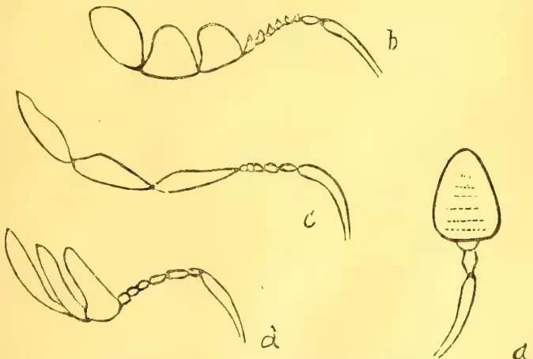
Antennæ of Bostrichidæ and Scolytidæ.
It was, not unnaturally, presumed by the cacao planters that the injury to their trees was caused by an insect enemy. It was only after scientific investigation that the true nature of the disease was determined. A similar misconception is now arising in the case of Hevea
Plant Sanitation.38[JANUARY, 1912.rubber. The rubber trees are subject to several serious fungal diseases, including a canker very similar to that of the cacao. Sections of trees, said to have been killed or injured by boring beetles, are repeatedly sent in to this Department, but a careful examination of the specimens has invariably revealed the presence of one or other of the fungal diseases. In no instance have borers been found in sound healthy bark. A healthy rubber tree is protected from boring insects by the viscid latex which exudes from any wound and overwhelms any insect intruder. In the incipient stages of canker only the superficial layers of bark are involved. Borers will attack these spots and will attempt to gain an entrance: but, as soon as they reach the deeper and as yet unaffected layers of bark, they are repelled by the flow of latex. In later stages of the disease, when the whole thickness of the bark is involved, latex is absent from the diseased tissues, and there is no hindrance to the progress of the insect which can then perforate the bark with impunity and even extend its galleries into the wood itself.
It sometimes happens that latex is found to be exuding from the perforations and flowing down the stem. This is often taken, by the planter, as proof positive that the beetle has attacked healthy laticiferous bark. But the phenomenon is explicable in other ways. In the early stage of the disease, where only the superficial layers of the bark are affected, latex may exude from the deeper tissues through the abandoned galleries of insects that had attempted to push their work beyond the limit of the diseased layer. Another cause of bleeding may result from the separation of dead bark from the wood, leaving a cavity which often becomes filled with latex from surrounding healthy tissues. If the dead bark is imperforate, the latex coagulates and forms a pad: but if the bark is pierced by shot-hole borers, the latex finds its way to the surface. It is possible, even, that borers might attack otherwise healthy bark during a temporary cessation of activity in the laticiferous vessels resulting from excessive drought or over-tapping. Should this happen, a shower of rain might result in renewed activity and bleeding through the perforations would occur. The exudation of latex and presence of boring beetles may usually be looked upon as a valuable indication of incipient disease, thus allowing of early treatment before the disease has become deep seated.
The original gallery constructed by Shot-hole Borer beetles is not primarily
for feeding purposes. It is constructed as a safe nidus for the eggs, which are deposited at the ends of the galleries. In the case of Bostrichids and the greater number of Scolytids, the young larvæ extend the parent gallery while feeding upon the woody tissue. But there is a small section of Scolytidæ which have a different habit. These are the species that attack living plants, and they have been called 'Ambrosia Beetles,' by the American Entomologists, from the fact that they cultivate, in their galleries, a particular fungus known as 'Ambrosia fungus,' upon which the larvæ are nourished. These particular beetles, therefore, do not feed upon the wood at all. In such cases the injury to the plant is the result, primarily, of a partial interruption of sap due to the position of the parent galleries, and secondarily to an invasion of destructive fungi through the perforations.
The galleries of the 'Ambrosia Beetles,' are purposely constructed in such a manner that the normal flow of sap is interrupted. The shot-hole borer of the tea plant runs a circular gallery round the branch, just beneath the cambium, thus partially ringing the branch. An exudation of sap occurs upon the walls of the tunnel, forming a medium for the development of the Ambrosia fungus.
It has been suggested that the canker of our Hevea trees may be originated by spores carried into the bark by the beetles themselves. This idea is a plausible one, but is not supported by the observed conditions. Canker often occurs without the presence of the beetles, but I have not yet seen perforations by the beetle unassociated with fungal disease of some kind. The exudation of rubber latex, in healthy bark, not only repels any inexperienced intruder, but effectually seals up the wound and prevents invasion of fungus.
I append a list of the species of Scolytidæ that I have found associated with various economic plants in Ceylon. I am indebted to Col. Winn-Sampson for the determination of the species.
Xyleborus fornicatus, Eichh.
In living stems and branches of Tea, Psidium, Ricinus, and Albizzia mollucana. Also in diseased branches of Hevea.
Xyleborus brevis, Eichh.
In dead and diseased stems of Grevillea and Albizzia.
Xyleborus asperatus, Bldf.
In dead branches and stems of Albizzia.
Xyleborus semiopacus, Eichh.
In dead stems of Tea, Eucalyptus, Hevea and Grevillea, Occasionally
JANUARY, 1912.]39Plant Sanitation.in apparently healthy branches of Tea.
Xyleborus truncatus, Er.
In diseased stems of Albizzia moluccana.
Xyleborus interjectus, Bldf.
Under blisters of renewed bark of Hevea.
Xyleborus perforans, Woll. (= X. Kraatzi, Eichh.)
In dead and diseased stems of Hevea and Coconut.
Xyleborus discolor, Bldf.
In dead branches of Albizzia moluccana. In dead leaf-stalks and stems of young Hevea.
Xyleborus compactus, Eichh.
In living stems and branches of Tea.
Platypus solidus, Walk. (= P. pilifrons, Chap.)
In diseased stems of Hevea.
Eccoptopterus sexspinosus, Motsch.
In dead and diseased branches of Hevea and Albizzia.
Coccotrypes sp.
In dead and diseased branches of Albizzia moluccana, and in dead leaf-stalks of Hevea.
Cryphalus plumieræ, Norrdl.
In dead stems of Hevea.
Cnestus magnus, W. S.
In living branches of Albizzia moluccana.
(From the Agricultural Journal of the Union of South Africa, Vol. II., No. 4, October, 1911.)
The public is informed that the Government is attempting the eradication of the Pernicious Scale (Aspidiotus perniciosus), the fruit tree pest which was recently discovered in a Pretoria nursery, and which for several years had been spread from there with infested fruit trees and roses. As has been previously notified, the insect attacks and slowly destroys roses and most of the common deciduous pomaceous fruit trees, including apples, pears, peaches, plums, apricots, quinces, cherries, and medlars. It can be held in check by spraying, but it is such an insidious and destructive pest that the Government has deemed it advisable to do what is possible, within reason, to effect its extermination. If left to itself it would undoubtedly be spread from garden to garden and farm to farm by passive agencies, and, sooner or later, would get into the nurseries in affected parts of the country, and then, despite the best supervision practicable, it would
now and again be sent out with plants, and centres of infestation throughout the Union thus become established. The process might be a slow one, but it would certainly be a sure one, and in time the whole country would become troubled with the pest just as the whole country has become troubled with the common Red Scale on citrus trees.
The infested nursery has already been dealt with. Without any material exception every plant in the place of kinds on which the scale was found, together with every plant of every kind that is recorded to be subject to attack, and every plant of other kinds that it seemed likely might harbour the pest, although there is no record of its ever having been found on such plants, have been dug out and burned. All the remaining nursery stock, other than some tender florist plants to which no suspicion at all was considered to attack, has been taken over by the Government and removed to a site in the neighbourhood where it will be grown in quarantine. This stock consists largely of palms, certain creepers, chrysanthemums, and other half-hardy ornamental plants, and some kinds of trees principally conifers, that are recorded not to take the scale. As a further precaution, arrangements have been made that no nursery stock of any kind that the Government may think likely to take the scale be again grown on the premises for an indefinite period. The infested nursery having been cleared out, steps are now being taken with respect to the infested private premises. A limited area round about the nurseries infested, and quite a number of gardens in Pretoria and its suburbs and a few further away have become infested by fruit trees and roses introduced from the nursery. Fortunately, the nursery was largely a floral establishment. Few fruit trees were propagated in it, and the sales of stock that are likely to have carried the scale appear not to have been numerous. A systematic garden-to-garden inspection is to be made in Pretoria and its vicinity, and seedlings of plants which it is thought may have carried the pest farther away are to be looked up; and wherever the insect is found drastic measures to secure its extermination are to be employed. There is some hope that by these means the pest will be altogether eradicated, and at least its spread will be greatly retarded, and the unfortunate time when it reaches nurseries put off indefinitely. Suspected as well as infested plants are to be destroyed, and arrangements with owners to admit of this being done are to be made wherever possible. The Govern-
Live Stock.40[JANUARY, 1912.ment now has authority to destroy infested plants, and will have authority to destroy suspected plants as well as soon as the "Agricultural Pests Act, 1911," is put into force. Hence it is only a matter of time when the Government can effect the destruction of any plants which owners may now decline to have destroyed, or concerning which an agreement as to terms cannot be reached under the present circumstances. The
new Act stipulates how compensation shall be assessed in cases of disagreement.
It is inadvisable to use food plants of the insect in replanting ground from which infested trees have been removed until all suspected trees round about have been destroyed. There is no danger in sowing the land with grains or lucerne, or in using it for any vegetables or other short-lived plants or plants that die down in the winter.
(From the Queensland Agricultural Journal, Vol. XXVII., Part 5.)
Most poultry breeders, not only in Queensland, but in other parts of the world, prefer the Orpington to any other breed. There are some, of course, who pin their faith on those splendid layers, Leghorns. Others have a fancy for Plymouth Rocks, others for Game varieties, but the Orpingtons and the great array of the Wyandotte breed hold a premier place in the estimation of those who keep birds for general utility. The Wyandotte is very much in evidence at Shows, especially in Great Britain, but the Orpington is, without doubt, the most popular fowl in the world. What is the reason for this? It is because of their strong basis of utility. On this point the Rev. T. W. Sturges, in his excellent work "The Poultry Manual," writes:—"They serve the dual purpose of providing large birds for the table with flesh of first-rate quality, and they are good layers of large, brown eggs. They are a docile breed, easily kept within bounds, and the hens make gentle mothers. The chickens are hardy and easily reared. The Orpingtons are not yet old enough as a breed to have been entirely spoilt by the arbitrary selection of fancy points, though the Black Orpington, the oldest of the family, is dangerously near it.
The Orpingtons are usually classed amongst the British breeds, because they were manufactured in England in the village of Orpington, near Chislehurst, in Kent, whence they got their name. Mr. Cook, the originator, in describing how he manufactured the Black Orpington, tells us that, with the wastrels from the good breeds he formed the Black Orpington, using birds that represented the poultry of the three continents—viz., Minorcas from Europe,
Langshans from Asia, and Plymouth Rocks from America. At first they were called mongrels, and they looked it, but the blending of the several breeds was not complete, consequently they did not breed true. Like did not produce like until the innate predominance of first one and then another feature prevailed. But they sprang into popularity because of the novelty of their appearance, and, secondly, because of their undoubted utility and hardiness, and they still maintain their popularity because the fancier has seized upon them and fixed their points.
The method adopted by Mr. Cook in founding the Black Orpington breed is stated, in a paper read at the Poultry Conference, Adelaide, South Australia, on 18th April, 1910, by Mr. F. C. Lampe, to have been as follows:—
A large black Minorca cock was crossed with black sports from Plymouth Rocks. Pullets from this cross were mated with clean-legged Langshan cockerels, and the produce was bred to the short-legged, deep-bodied type so much admired in Black Orpingtons. The result was a black fowl, with a green sheen, clean black legs, plumper than the average Langshan, white skin and flesh, well-shaped carcass, and above all, an excellent winter layer of brown eggs. One of the chief components of the Plymouth Rock breed being probably the Black Java fowl, which, in its turn, had much in common with the Langshan, the double Langshan element gradually overpowered the Minorca element, until Black Orpingtons reverted to little else than clean-legged Langshans. The eggs lessened in size as the Minorca element lost power, and the colour of the eyes—often thin red—reverted to the black or brown of Langshans. Later on, in about 1891, Mr. Joseph Partington, introduced what
JANUARY, 1912.]41Live Stock.was considered an improved type of Black Orpington, and provided practically new blood. It is supposed that he utilised none of the cross used by Mr. Cook, and that the strain probably contained Cochin blood. Mr. Partington's bird being bigger, more fluffy, and all dark-eyed, found greater favour on the show bench, and he completely scooped the pool.
The Black Orpington to-day is anything but "close" (says Mr. Sturges) feathered, and this departure from the still published Standard of Perfection has done more than anything to diminish its usefulness and popularity. Beyond all question, it is not the first-class layer it was for the first ten years of its career, and though it has gained in apparent bulk, its usefulness has declined. There are still good and useful strains in existence, and it is noteworthy that in the Australian laying competitions, which extended over a period of twelve months, the Black Orpington has more than once headed the list with an average of 250 eggs to its credit."
generally recognised is, according to Mr. Lampe, as follows:—
The head must be small, neat, and fairly full over the eye, and carried erect. Many show judges pay too little attention to the head of the Orpington, and coarse-headed birds frequently occupy prominent positions on the exhibition bench. The importance of a small head cannot be too strongly emphasised; it generally accompanies all the excellent qualities that formerly belonged to the Croad Langshan. The eye should be dark-brown, or even black, in colour, should be full, bright, and intelligent. An eye with all these characteristics is seldom found on a very coarse headed bird. The comb should be of medium size, rather thin than otherwise, erect, evenly serrated, and free from side sprigs. The wattles should be of medium length and well rounded, and the ear lobes rather long, thin, and fine in texture. The comb, face, ear-lobes, and wattles should be a bright red colour. The beak should be short and strong, nicely curved, and of black or very dark horn colour. The neck should be not too long, well curved, and with full hackle.
The Body.—The breast should be broad, deep and full, and carried well forward; the breast bone straight and fairly long, the whole body looking
massive and solid, and set fairly low. Particular attention should be paid to preserving the correct shape. The back short, with broad strong shoulders, the saddle rising slightly with full hackle; the wings well formed and carried close to the body; the skin thin and fine in texture and white in colour; flesh white and firm. The tail should be of medium size, not too large by any means, and inclined backwards and slightly upwards.
The Legs and Feet.—Thighs and shanks should be short, powerful, and well apart; the shanks free from feathers, black in colour, turning lighter after the first moult; toes, four in number and well spread. General shape and carriage should be cobby and compact, erect, and graceful. The plumage should be close. It is impossible to pay too much attention to this point. It is to be deeply deplored that so much encouragement is given by a certain section of show judges to birds showing an extraordinary amount of fluff. The breeding of birds for fluff tends to decrease the laying powers of the hens, and fluff generally accompanies an uncommonly thick skin, loose, ungainly body, coarse head, general sluggishness, and lack of vigour and stamina. Such birds are useless from the commercial standpoint, and are an eyesore to all practical breeders. The plumage should be black in colour, with a green sheen or lustre, and the weight should be about 9 lb. to 11 lb. when fully matured.
Practically the same characteristics apply to the hen, with one or two exceptions. The cushion should be small, but sufficient to give the back a curved appearance; weight about 8 lb. or 9 lb. when matured. In South Australia the Black Orpington threatens to rival the White Leghorn in popularity. It shows remarkable adaptability to any sort of climate, and though it flourishes in winter better, probably, than any other breed, it still withstands the summer heat almost as well. It is a docile bird very easily handled, can fly very little, and stands confinement well, though, if allowed free range, it is a vigorous forager. For these reasons alone it is an ideal home bird. The plumage being of self colour, the bird always looks and wears well. Nothing could be more beautiful than the rich beetle-green sheen or lustre of its plumage. There are no markings or lacings to breed for, and, whereas other birds mostly deteriorate in colour or markings after their first season, the Black Orpington tends to improve in the
6 Live Stock.42[JANUARY, 1912.richness of its plumage colour. As a table bird it is one of the best, with its white skin of fine texture and its tender, white, juicy flesh and big well-shaped carcase. In this State it is opposed by no absurd prejudice against its black legs, and readily commands top market prices by reason of its size and quality.
There is a particularly good local demand for the cockerels at prices remunerative to breeders, and the hens, even with their second season, are eagerly snapped up. Apart from its selling value the Black Orpington breeder has the satisfaction of never being without a delicacy for his own table; for the person who is desirous of breeding crossbreds for table purpose, there is no better cross than a Black Orpington hen mated with any variety of Game cock.
The Black Orpington hen, moreover, is unexcelled as a layer of brown-tinted eggs. A strong point in its favour is its ability to lay in the coldest of weather, when eggs are scarce and bring high prices. Even as an all the year round layer it is by no means to be despised, though its tendency to broodiness renders it unable to cope with the best of the light breeds during summer months. Owing to the abnormal craze for records as regards mere number of eggs, the commercial value of the Black Orpington as a layer stands in danger of being overlooked. It must not be forgotten that a big percentage of its eggs are laid in the dear season, hence the total yearly value of its eggs is much greater than appears to first glance, and at the present day it stands at the top of the heavy breed class as a layer. The brown tint of its eggs is a strong point in its favour as a back-yard bird. It is certain that among housewives there exists a very strong prejudice in favour of brown-shelled eggs against white-shelled eggs. By the opponents of the Black Orpington it is urged that its egg is smaller than one would expect from such a big bird. Judicious selection on the part of every breeder would, in a couple of seasons, greatly increase the average size of the egg. The system adopted by the egg circles in this State of grading eggs according to size, together with the action of the Poultry Expert in raising the minimum average weight of eggs at the laying competitions to 24 oz. per dozen, should stimulate every Black Orpington breeder in default to breed for a better-sized egg.
Public competitions have proved that it is possible, by careful selection, to produce a Black Orpington well up to the standard weight that can, in a year, lay a good number of eggs of a high monetary value and of more than average weight.
As a sitter and mother the Black Orpington hen is hard to beat. Even in these days of extensive artificial hatching there is, during certain months, an extraordinary demand for broody hens. The practical breeder with a few dozen Black Orpington hens in his yard is seldom short of a broody hen, even in the depth of winter, and can always obtain a remunerative price for such a treasure. The excessive tendency to broodiness is a great weakness in some strains, but, if desired, it can be gradually bred out. To do so necessitates a lot of work in keeping complete records of each bird, but it is worth the trouble. Black Orpington chickens are remarkably hard and easily reared. They grow quickly and fledge well, especially the pullets. The best time to hatch them in this State is during the winter months from May to August. They flourish in the open in the coldest and the wettest of weather as no other breeds seem able to do. They are wonderful foragers and do well with a free run for the first four months. They are black and yellow or white when hatched. The chickens showing least black generally turn out the most brilliant birds when matured.
At from four-and-a-half to five months old it is advisable to cull out the cockerels and market those not up to standard type. At that age there is a handsome profit in them. They should average about 5 lb. in weight, and about 7d. per lb. live weight can be obtained locally for them. They can bring even better money exported overseas. The early pullets come into lay when about five months old, and the later hatched ones at about six-and-a-half months. Although a big bird, the Black Orpington is not a big eater, and does well on a moderate ration. If heavily overfed, particularly in the second season, it is liable to put on too much fat and deteriorate in laying. To sum up, briefly, there is no better all-purpose fowl in Australia to-day than the Black Orpington. It is exceptionally hardy, a good sitter, a splendid table bird, an excellent layer, a moderate eater, docile and easily handled, while it does well either in confinement or on an open run.
JANUARY, 1912.]43Opening Address by W. BATESON, M.A.,
F.R.S., Chairman of the Sub-section.
(From Nature, No. 2186, Vol. 87,
September 21, 1911.)
The invitation to preside over the Agricultural Sub-section on this occasion naturally gave me great pleasure, but after accepting it I have felt embarrassment in a considerable degree. The motto of the great Society which has been responsible for so much progress in agricultural affairs in this country very clearly expresses the subject of our deliberations in the words "Practice with Science," and to be competent to address you, a man should be well conversant with both. But even if agriculture is allowed to include horticulture, as may perhaps be generally conceded, I am sadly conscious that my special qualifications are much weaker than you have a right to demand of a President.
The aspects of agriculture from which it offers hopeful lines for scientific attack are, in the main, three: Physiological, Pathological, and Genetic. All are closely interrelated, and for successful dealing with the problems of any one of these departments of research, knowledge of the results attained in the others is now almost indispensable. I myself can claim personal acquaintance with the third or genetic group alone, and therefore in considering how science is to be applied to the practical operations of agriculture, I must necessarily choose it as the more special subject of this address. I know very well that wider experience of those other branches of agricultural science or practical agriculture would give to my remarks a weight to which they cannot now pretend.
Before, however, proceeding to these topics of special consideration, I have thought it not unfitting to say something of a more general nature as to the scope of an applied science, such as that to which we here are devoted. We are witnessing a very remarkable outburst of activity in the promotion of science in its application to agriculture. Public bodies distributed throughout this country and our possessions are organising various enterprises with that object, Agricultural research is now
everywhere admitted as a proper subject for University support and direction.
With the institution of the Development Grant a national subsidy is provided on a considerable scale in England for the first time.
At such a moment the scope of this applied science and the conditions under which it may most successfully be advanced are prominent matters of consideration in the minds of most of us. We hope great things from these new ventures. We are, however, by no means the first to embark upon them. Many of the other great nations have already made enormous efforts in the same direction. We have their experience for a guide.
Now, it is not in dispute that wherever agricultural science has been properly organised valuable results have been attained, some of very high importance indeed; yet with full appreciation of these achievements, it is possible to ask whether the whole outcome might not have been greater still. In the course of recent years, I have come a good deal into contact with those who in various countries are taking part in such work, and I have been struck with the unanimity that they have shown in their comments on the conditions imposed upon them. Those who receive large numbers of agricultural bulletins purporting to give the results of practical trials and researches will, I feel sure, agree with me that with certain notable exceptions they form on the whole dull reading. True they are in many cases written for farmers and growers in special districts, rather than for the general scientific reader; but I have sometimes asked myself whether those farmers get much more out of this literature than I do. I doubt it greatly. Nevertheless, to the production of these things much labour and expense have been devoted. I am sure and I believe that most of those engaged in these productions themselves feel, that the effort might have been much better applied elsewhere. Work of this unnecessary kind is done, of course, to satisfy a public opinion which is supposed to demand rapid returns for outlay, and to prefer immediate apparent results, however trivial, to the long delay which is the almost inevitable accompaniment of any serious production. For my own part I much doubt whether in this estimate present public opinion has been rightly gauged. Enlightenment as to the objects, methods, and
Scientific Agriculture.44[JANUARY, 1912.conditions of scientific research is proceeding at a rapid rate. I am quite sure, for example, that no organisation of agricultural research now to be inaugurated under the Development Commission will be subjected to the conditions laid down in 1887, when the Experimental Stations of the United States were established. For them it is decreed in Section 4 of the Act of Establishment:—
“That bulletins or reports of progress shall be published at said stations at least once in three months, one copy of which shall be sent to each newspaper in the States or Territories in which they are respectively located, and to such individuals actually engaged in farming as may request the same and as far as the means of the station will permit.”
It would be difficult to draft a condition more unfavourable to the primary purpose of the Act, which was “to conduct original researches or verify experiments on the physiology of plants and animals” with agricultural objects in view. I can scarcely suppose the most prolific discoverer should be invited to deliver himself more than once a year. Not only does such a rule compel premature publication—that nuisance of modern scientific life—but it puts the investigator into a wrong attitude towards his work. He will do best if he forget the public and the newspaper of his State or Territory for long periods, and should only return to them when, after repeated verification, he is quite certain he has something to report.
In this I am sure the best scientific opinion of all countries would be agreed. If it is true that the public really demand continual scraps of results, and cannot trust the investigators to pursue research in a reasonable way, then the public should be plainly given to understand that the time for inaugurating researches in the public's name has not arrived. Men of science have in some degree themselves to blame if the outer world has been in any mistake on these points. It cannot be too widely known that in all sciences, whether pure or applied, research is nearly always a very slow process, uncertain in production and full of disappointments. This is true, even in the new industries, chemical and electrical, for instance, where the whole industry has been built up from the beginning on a basis developed entirely by scientific method and by the accumulation of precise knowledge. Much more must any material advance be slow in the case of an ancient art like agriculture,
where practice represents the casual experience of untold ages and accurate investigation is of yesterday. Problems, moreover, relating to unorganised matter are in their nature simpler than those concerned with the properties of living things, a region in which accurate knowledge is more difficult to attain. Here the research of the present day can aspire no higher than to lay the foundation on which the following generations will build. When this is realised it will at once be perceived that both those who are engaged in agricultural research and those who are charged with the supervision and control of these researches must be prepared to exercise a large measure of patience.
The applicable science must be created before it can be applied. It is with the discovery and development of such science that agricultural research will for long enough best occupy its energies. Sometimes, truly, there come moments when a series of obvious improvements in practice can at once be introduced, but this happens only when the penetrative genius of a Pasteur or a Mendel has worked out the way into a new region of knowledge, and returns with a treasure that all can use. Given the knowledge it will soon enough become applied.
I am not advocating work in the clouds. In all that is attempted we must stick near to the facts. Though the methods of research and of thought must be strict and academic, it is in the farm and the garden that they must be applied. If inspiration is to be found anywhere it will be there. The investigator will do well to work.
“As if his highest plot
To plant the bergamot.”
It is only in the closest familiarity with phenomena that we can attain to that perception of their orderly relations, which is the beginning of discovery.
To the creation of applicable science the very highest gifts and training are well devoted. In a foreign country an eminent man of science was speaking to me of a common friend, and he said that as our friend's qualifications were not of the first rank he would have to join the agricultural side of the university. I have heard remarks of similar disparagement at home. Now, whether from the point of view of agriculture or pure science, I can imagine no policy more stupid and short-sighted.
JANUARY, 1912]45Scientific Agriculture.The man who devotes his life to applied science should be made to feel that he is in the main stream of scientific progress. If he is not, both his work and science at large will suffer. The opportunities of discovery are so few that we cannot afford to miss any, and it is to the man of trained mind who is in contact with the phenomena of a great applied science that such opportunities are most often given. Through his hands pass precious material, the outcome sometimes of years of effort and design. To tell him that he must not pursue that inquiry further because he cannot foresee a direct and immediate application of the knowledge is, I believe almost always, a course detrimental to the real interests of the applied science. I could name specific instances where in other countries thoroughly competent and zealous investigators have by the short-sightedness of superior officials been thus debarred from following to their conclusion researches of great value and novelty.
In this country where the Development Commission will presumably for many years be the main investigator and controller of agricultural research, the constitution of the Advisory Board, on which Science is largely represented, forms a guarantee that broader counsels will prevail, and it is to be hoped that not merely this inception of the work, but its future administration also, will be guided in the same spirit. So long as a train of inquiry continues to extend, and new knowledge, that most precious commodity is coming in, the enterprise will not be in vain and it will be usually worth while to pursue it.
The relative value of the different parts of knowledge in their application to industry is almost impossible to estimate, and a line of work should not be abandoned until it leads to a dead end, or is lost in a desert of detail.
We have, not only abroad, but also happily in this country, several private firms engaged in various industries—I may mention especially metallurgy, pharmacy, and brewing—who have set an admirable example in this matter, instituting researches of a costly and elaborate nature, practically unlimited in scope, connected with the subjects of their several activities, conscious that it is only by men in close touch with the operations of the industry that the discoveries can be made, and well assured that they themselves will not go unrewarded.
Let us on our part beware of giving false hopes, we know no harmony "of sovran use against all enchantments, mildew blast, or damp." Those who are wise among us do not even seek it yet. Why should we not take the farmer and gardener into our fullest confidence and tell them this? I read lately a newspaper interview with a fruit-farmer who was being questioned as to the success of his undertaking, and spoke of the pests and difficulties with which he had had to contend. He was asked whether the Board of Agriculture and the scientific authorities were not able to help him. He replied that they had done what they could, that they had recommended first one thing and then another, and he had formed the opinion that they were only in an experimental stage. He was perfectly right, and he would hardly have been wrong had he said that in these things science is only approaching the experimental stage.
This should be notorious. There is nothing to extenuate. To affect otherwise would be unworthy of the dignity of science.
Those who have the means of informing the public mind on the state of agricultural science should make clear that though something can be done to help the practical man already, the chief realisation of the hopes of that science is still very far away, and that it can only be reached by long and strenuous effort, expended in many various directions, most of which must seem to the uninitiated mere profitless wandering. So only will the confidence of the laity be permanently assured towards research.
Nowhere is the need for wide views of our problems more evident than in the study of plant-diseases. Hitherto this side of agriculture and of horticulture, though full of possibilities for the introduction of scientific method, has been examined only in the crudest and most empirical fashion. To name the disease, to burn the affected plants, and to ply the crop with all the sprays and washes in succession ought not to be regarded as the utmost that science can attempt. There is at the present time hardly any comprehensive study of the morbid physiology of plants comparable with that which has been so greatly developed in application to animals. The nature of the resistance to disease characteristic of so many varieties, and the modes by which it may be ensured, offers a most attractive field for research, but it is one in which the advance must be made by the development of
Scientific Agriculture.46[JANUARY, 1912.pure science, and those who engage in it must be prepared for a long period of labour without ostensible practical results. It has seemed to me that the most likely method of attack is here, as often, an indirect one. We should probably do best if we left the direct and special needs of agriculture for a time out of account, and enlisted the services of pathologists trained in the study of disease as it affects man and animals, a science already developed and far advanced towards success. Such a man, if he were to devote himself to the investigation of the same problems in the case of plants, could, I am convinced, make discoveries which would not merely advance the theory of disease-resistance in general very greatly, but would much promote the invention of rational and successful treatment.
As regards the application of Genetics to practice, the case is not very different. When I go to the Temple Show or to a great exhibition of live stock, my first feeling is one of admiration and deep humility. Where all is so splendidly done and results so imposing are already attained, is it not mere impertinence to suppose that any advice we are able to give is likely to be of value?
But so soon as one enters into conversation with breeders, one finds that almost all have before them some ideal to which they have not yet attained operations to perform that they would fain do with greater ease and certainty, and that, as a matter of fact, they are looking to scientific research as a possible source of the greater knowledge which they require. Can we, without presumption, declare that genetic science is now able to assist these inquirers? In certain selected cases it undoubtedly can—and I will say, moreover, that if the practical men and we students could combine our respective experiences into one head, these cases would already be numerous. On the other hand, it is equally clear that in a great range of examples practice is so far ahead that science can scarcely hope in finite time even to represent what has been done, still less to better the performance. We cannot hope to improve the Southdown sheep for its own districts, to take a second off the trotting record, to increase the flavour of the muscat of Alexandria, or to excel the orange and pink of the rose Juliet. Nothing that we know could have made it easier to produce the Rambler roses, or even to evoke the latest novelties in sweet peas, though it may be claimed that the genetic system of the sweet pea is, as things go, fairly
well understood. To do any of these things would require a control of events so lawless and rare that for ages they must probably remain classed as accidents. On the other hand, the modes by which combinations can be made, and by which new forms can be fixed, are through Mendelian analysis and the recent developments of genetic science now reasonably clear, and with that knowledge much of the breeder's work is greatly simplified. This part of the subject is so well understood that I need scarcely do more than allude to it.
A simple and interesting example is furnished by the work which Mr. H. M. Leake is carrying out in the case of cotton in India. The cottons of fine quality grown in India are monopodial in habit, and are consequently late in flowering. In the United Provinces a comparatively early-flowering form is required, as otherwise there is not time for the fruits to ripen. The early varieties are sympodial in habit, and the primary apex does not become a flower. Hitherto no sympodial form with cotton of high quality has existed, but Mr. Leake has now made the combination needed, and has fixed a variety with high-class cotton and the sympodial habit, which is suitable for cultivation in the United Provinces. Until genetic physiology was developed by Mendelian analysis, it is safe to say that a practical achievement of this kind could not have been made with rapidity or certainty. The research was planned on broad lines. In the course of it much light was obtained on the genetics of cotton, and features of interest were discovered which considerably advance our knowledge of heredity in several important respects. This work forms an admirable illustration of that simultaneous progress both towards the solution of a complex physiological problem and also towards the successful attainment of an economic object which should be the constant aim of agricultural research.
Necessarily it follows that such assistance as genetics can at present give is applicable more to the case of plants and animals which can be treated as annuals than to creatures of slower generation. Yet this already is a large area of operations. One of the greatest advances to be claimed for the work is that it should induce raisers of seed crops especially to take more hopeful views of their absolute purification than have hitherto prevailed. It is at present accepted as part of the natural perversity of things that most high-class seed crops must throw "rogues," or that at the best the elimination of these
JANUARY, 1912.]47Scientific Agriculture.waste plants can only be attained by great labour extended over a vast period of time. Conceivably that view is correct, but no one acquainted with modern genetic science can believe it without most cogent proof. Far more probably we should regard these rogues either as the product of a few definite individuals in the crop, or even as chance impurities brought in by accidental mixture. In either case they can presumably be got rid of. I may even go further and express a doubt whether that degeneration which is vaguely supposed to be attendant on all seed crops is a physiological reality. Degeneration may perhaps effect plants like the potato which are continually multiplied asexually, though the fact has never been proved satisfactorily. Moreover, it is not in question that races of plants taken into unsuitable climates do degenerate rapidly from uncertain causes, but that is quite another matter.
The first question is to determine whether a given rogue has in it any factor which is dominant to the corresponding character in the typical plants of the crop. If it has, then we may feel considerable confidence that these rogues have been introduced by accidental mixture. The only alternative, indeed, is cross-fertilisation with some distinct variety possessing the dominant, or crossing within the limits of the typical plants themselves occurring in such a way that complimentary factors have been brought together. This last is a comparatively infrequent phenomenon, and need not be considered till more probable hypotheses have been disposed of. If the rogues are first crossed the fact can be immediately proved by sowing their seeds, for segregation will then be evident. For example, a truly round seed is occasionally though very rarely found on varieties of pea which have wrinkled seeds. I have three times seen such seeds on my own plants. A few more were kindly given me by Mr. Arthur Sutton, and I have also received a few from M. Philippe de Vilmorin—to both of whom I am indebted for most helpful assistance and advice. Of these abnormal or unexpected seeds some died without germinating, but all which did germinate in due course produced the normal mixture of round and wrinkled, proving that a cross had occurred. Cross-fertilisation in culinary peas is excessively rare, but it is certainly sometimes effected, doubtless by the leaf-cutter bee (Megachile) or a humble-bee visiting flowers in which for some reason the pollen has been inoperative. But in peas crossing is assuredly not the source
of the ordinary rogues. These plants have a very peculiar conformation, being tall and straggling, with long internodes, small leaves, and small flowers, which together give them a curious wild look. When one compares them with the typical cultivated plants which have a more luxuriant habit, it seems difficult to suppose that the rogue can really be recessive to such a type. True, we cannot say definitely a priori that any one character is dominant to another, but old preconceptions are so strong that without actual evidence we always incline to think of the wilder and more primitive characteristics as dominants. Nevertheless, from such observations as I have been able to make, I cannot find any valid reason for doubting that the rogues are really recessives to the type. One feature in particular is quite inconsistent with the belief that these rogues are in any proper sense degenerative returns to a wild type, for in several examples the rogues have pointed pods like the cultivated sorts from which they have presumably been driven. All the more primitive kinds have the dominant stump-ended pod. If the rogues had the stump pods they would fall into the class of dominants, but they have no single quality which can be declared to be certainly dominant to the type, and I see no reason why they may not be actually recessives to it after all. Whether this is the true account or not we shall know for certain next year. Mr. Sutton has given me a quantity of material which we are now investigating at the John Innes Horticultural Institution, and by sowing the seed of a great number of individual plants separately I anticipate that we shall prove the rogue-throwers to be a class apart. The pure types then separately saved should, according to expectation, remain rogue-free, unless further sporting or fresh contamination occurs. If it prove that the long and attenuated rogues are really recessive to the shorter and more robust type, the case will be one of much physiological significance, but I believe a parallel already exists in the case of wheats, for among certain crosses bred by Prof. Biffen, some curious spelt-like plants occurred among the derivatives from such robust wheats as Rivet and Red Fife.
There is another large and important class of cases to which similar considerations apply. I refer to the bolting or running to seed of crops grown as biennials, especially root crops. It has hitherto been universally supposed that the loss due to this cause, amounting in
Scientific Agriculture.48[JANUARY, 1912.Sugar Beet as it frequently does to five, or even more per cent., is not preventable. This may prove to be the truth, but I think it is not impossible that the bolters can be wholly, or almost wholly, eliminated by the application of proper breeding methods. In this particular example I know that season and conditions of cultivation count for a good deal in promoting or checking the tendency to run to seed; nevertheless one can scarcely witness the sharp distinction between the annual and biennial forms without suspecting that genetic composition is largely responsible. If it proves to be so, we shall have another remarkable illustration of the direct applicability of knowledge gained from a purely academic source. "Let not him that girdeth on his harness boast himself as he that putteth it off," and I am quite alive to the many obstacles which may lie between the conception of an idea and its realisation. One thing, however, is certain, that we have now the power to formulate rightly the question which the breeder is to put to nature; and this power and the whole apparatus by which he can obtain an answer to his question—in whatever sense that answer may be given—has been derived from experiments designed with the immediate object of investigating that scholastic and seemingly barren problem, "What is a species?" If Mendel's eight year's work had been done in an agricultural school supported by public money, I can imagine much shaking of heads on the County Council governing that institution, and yet it is no longer in dispute that he provided the one bit of solid discovery upon which all breeding practice will henceforth be based.
Everywhere the same need for accurate knowledge is apparent. I suppose horse-breeding is an art which has by the application of common sense and great experience been carried to about as high a point of perfection as any. Yet even here I have seen a mistake made which is obvious to anyone accustomed to analytical breeding. Among a number of stallions provided at great expense to improve the breed of horses in a certain district was one which was shown me as something of a curiosity. This particular animal had been bred by one of the provided stallions out of an indifferent country mare. It had been kept as an unusually good-looking colt, and was now travelling the country as a breeding stallion under the highest auspices. I thought to myself that if such a practice is sanctioned by breeding acumen and
common sense, Science is not, after all, so very ambitious if she aspires to do rather better. The breeder has continually to remind himself that it is not what the animal or plant looks that matters, but what it is. Analysis has taught us to realise, first, that each animal and plant is a double structure, and next that the appearance may show only half its composition.
With respect to the inheritance of many physiological qualities of divers kinds, we have made at least a beginning of knowledge, but there is one class of phenomena as yet almost untouched. This is the miscellaneous group of attributes which are usually measured in terms of size, fertility, yield and the like. This group of characters has more than common significance to the practical man. Analysis of them can nevertheless only become possible when pure science has progressed far beyond the point yet reached.
I know few lines of pure research more attractive and at the same time more likely to lead to economic results than an investigation of the nature of variation in size of the whole organism or of its parts. By what factors is it caused? By what steps does it proceed? By what limitations is it beset? In illustration of the application of these questions I may refer to a variety of topics that have been lately brought to my notice. In the case of merino sheep I have been asked by an Australian breeder whether it is possible to combine the optimum length of wool with the optimum fineness and the right degree of crimping. I have to reply that absolutely nothing is yet known for certain as to the physiological factors determining the length or the fineness of wool. The crimping of the fibres is an expression of the fact that each particular hair is curved, and if free and untwisted would form a corkscrew spiral, but as to the genetics of curly hair even in man very little is yet known. But leaving the question of curl on one side, we have, in regard to the length and fineness of wool, a problem which genetic experiment ought to be able to solve. Note that in it, as in almost all problems of the "yield" of any product of farm or garden, two distinct elements are concerned—the one is size, and the other is number. The length of the hair is determined by the rate of excretion and length of the period of activity of the hair follicles, but the fineness is determined by the number of follicles in unit area. Now analogy is never a safe guide, but I think if we had before us the results of really
JANUARY, 1912.]49Scientific Agriculture.critical experiments on the genetics of size and number of multiple organs in any animal or even any plant, we might not wholly be at a loss in dealing with this important problem.
A somewhat similar question comes from South Africa. Is it possible to combine the qualities of a strain of ostriches which has extra long plumes with those of another strain which has its plumes extra lustrous? I have not been able fully to satisfy myself upon what the lustre depends, but I incline to think it is an expression of fineness of fibre, which again is probably a consequence of the smallness and increased number of the excreting cells, somewhat as the fineness of wool is a consequence of the increased number and smallness of the excreting follicles.
Again the question arises in regard to flax, how should a strain be bred which shall combine the maximum length with maximum fineness of fibre? The element of number comes in here, not merely with regard to the number of fibres in a stem, but also in two other considerations: first, that the plant should not tiller at the base, and, secondly, that the decussation of the flowering branches should be postponed to the highest possible level.
Now in this problem of the flax, and not impossibly in the others I have named, we have questions which can in all likelihood be solved in a form which will be of general, if not of universal, application to a host of other cognate questions. By good luck the required type of flax may be struck at once, in which case it may be fixed by ordinary Mendelian analysis, but if the problem is investigated by accurate methods on a large scale, the results may show the way into some of those general problems of size and number which make a great part of the fundamental mystery of growth.
I see no reason why these things should remain inscrutable. There is indeed a little light already. We are well acquainted with a few examples in which the genetic behaviour of those properties is fairly definite. We have examples in which, when two varieties differing in number of divisions are crossed, the lower number dominates—or, in other words, the increased number is a consequence of the removal of a factor which prevents or inhibits particular divisions, so that they do not take place. It is likely that in so far as the increased productivity of a domesticated form as compared with its wild original depends on more frequent division,
the increase is due to loss of inhibiting factors. How far may this reasoning be extended? Again, we know that in several plants—peas, sweet-peas, Antirrhinum, and certain wheats—a tall variety differs in that respect from a dwarf in possessing one more factor. It would be an extraordinarily valuable addition to knowledge if we could ascertain exactly how this factor operates, how much of its action is due to linear repetition, and how much to actual extension of individual parts. The analysis of the plants of intermediate size has never been properly attempted, but would be full of interest and have innumerable bearings on other cases in animals and plants, some of much economic importance.
That in all such examples the objective phenomena we see are primarily the consequence of the interaction of genetic factors is almost certain. The lay mind is at first disposed, as always, to attribute such distinctions to anything rather than to a specific cause which is invisible. An appeal to differences in conditions—which a moment's reflection shows to be either imaginary or altogether independent—or to those vague influences invoked under the name of selection, silently postponing any laborious analysis of the nature of the material selected, repels curiosity for a time, and is lifted as a veil before the actual phenomena; and so even critical intelligences may for an indefinite time be satisfied that there is no specific problem to be investigated, in the same facile way that, till a few years ago, we are all content with the belief that malarial fevers could be referred to any damp exhalations in the atmosphere, or that in suppuration the body was discharging its natural humours. In the economics of breeding, a thousand such phenomena are similarly waiting for analysis and reference to their specific causes. What, for instance, is self-sterility? The phenomenon is very widely spread among plants, and is far commoner than most people suppose who have not specially looked for it. Why is it that the pollen of an individual in these plants fails to fertilise the ova of the same individual? Asexual multiplication seems in no way to affect the case. The American experimenters are doubtless right in attributing the failure of large plantations of a single variety of apples or of pears in a high degree to this cause. Sometimes, as Mr. W. O. Backhouse has found in his work on plums at the John Innes Horticultural Institution, the behaviour of the varieties is most definite and specific. He carefully self-fertilised
7 Scientific Agriculture.50[JANUARY, 1912.a number of varieties, excluding casual pollination, and found that while some sorts—for example, Victoria, Czar, and Early Transparent—set practically every fruit self-pollinated, others, including several (perhaps all) Greengages, Early Orleans, and Sultan, do not set a single fruit without pollination from some other variety. Dr. Erwin Baur has found indications that self-sterility in Antirrhinum may be a Mendelian recessive, but whether this important suggestion be confirmed or not, the subject is worth the most minute study in all its bearings. The treatment of this problem will illustrate the proper scope of an applied science. The economic value of an exact determination of the empirical facts is obvious, but it should be the ambition of anyone engaging in such a research to penetrate further. If we can grasp the rationale of self-sterility we open a new chapter in the study of life. It may contain the solution of the question, What is an individual?—no mere metaphysical conundrum, but a physiological problem of fundamental significance.
What, again, is the meaning of that wonderful increase in size or in “yield” which so often follows on a first cross? We are no longer content, as Victorian teleology was to call it a “beneficial” effect and pass on. The fact has long been known and made use of in breeding stock for the meat market, and of late years the practice has also been introduced in raising table poultry. Mr. G. N. Collins, of the U. S. Department of Agriculture, has recently proposed with much reason that it might be applied in the case of maize. The cross is easy to make on a commercial scale and the gain in yield is striking, the increase ranging as high as 95 per cent. These figures sound extravagant, but from what I have frequently seen in peas and sweet peas, I am prepared for even greater increase. But what is the increase? How much of it is due to change in number of parts, how much to transference of differentiation or homeösis, as I have called it—leaf-buds becoming flower-buds, for instance—and how much to actual increase in size of parts? To answer these questions would be to make an addition to human knowledge of incalculably great significance.
Then we have the further question, How and why does the increase disappear in subsequent generations? The very uniformity of the cross-breds between pure strains must be taken as an indication that the phenomenon is orderly. Its subsidence is probably
orderly also. Shull has advocated the most natural view that heterozygosis is the exciting cause, and that with the gradual return to the homozygous state the effects pass off. I quite think this may be a part of the explanation, but I feel difficulties, which need not here be detailed, in accepting this as a complete account. Some of the effect we may probably also attribute to the combination of complementary factors; but whether heterozygosis, or complementary action is at work, our experience of cross-breeding in general makes it practically certain that genetic factors of special classes only can have these properties, and no pains should be spared in identifying them. It is not impossible that such identification would throw light on the nature of cell division and of that meristic process by which the repeated organs of living things are constituted, and I have much confidence that in the course of the analysis discoveries will be made bearing directly both on the general theory of heredity and on the practical industry of breeding.
In the application of science to the arts of agriculture, chemistry, the foundation of sciences, very properly and inevitably came first, while breeding remained under the unchallenged control of simple common sense alone. The science of genetics is so young that when we speak of what it also can do we must still for the most part ask for a long credit; but I think that if there is full co-operation between the practical breeder and the scientific experimenter, we shall be able to redeem our bonds at no remotely distant date. In the mysterious properties of the living bodies of plants and animals there is an engine capable of wonders scarcely yet suspected, waiting only for the constructive government of the human mind. Even in the seemingly rigorous tests and trials which have been applied to living material apparently homogeneous, it is not doubtful that error has often come in by reason of the individual genetic heterogeneity of the plants and animals chosen. A batch of fruit trees may be all of the same variety, but the stocks on which the variety was grafted have hitherto been almost always seminally distinct individuals, each with its own powers of luxuriance or restriction, their own root-systems, and properties so diverse that only in experiments on a colossal scale can this diversity be supposed to be levelled down. Even in a closely bred strain of cattle, though all may agree in their “points,” there may still be great genetic diversity in
This image is a scan of a blank page. The paper has a light beige or cream-colored tint. There are a few very small, dark specks scattered across the surface, which appear to be scanning artifacts or dust particles. No text, lines, or other markings are present on the page.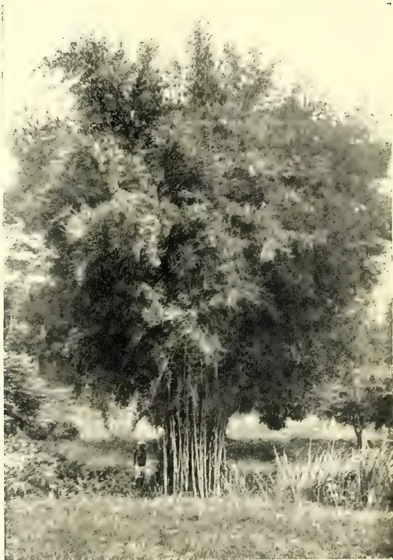
Photo by H. F. Macmillan.
SIAMESE BAMBOO.
JANUARY, 1912.]51Miscellaneous.powers of assimilation and rapidity of attaining maturity, by which irregularities by no means negligible are introduced. The range of powers which organic variation and genetic composition can confer is so vast as to override great dissimilarities in the conditions of cultivation. This truth is familiar to every raiser and grower, who knows it in the form that the first necessity is for him to get the right tree and the right variety for his work. If he has a wheat of poor yield, no amount of attention to cultivation or manuring will give him a good crop. An animal that is a bad doer will remain so in the finest pasture. All praise and gratitude to the student of the conditions of life for he can do, and has done, much for agriculture, but the breeder can do even more.
When more than fifteen years ago the proposal to found a school of agriculture in Cambridge was being debated, much was said of the importance of the chemistry of soils, of researches into the physiological value of foodstuffs, and of other matters then already prominent on the scientific horizon. I remember then interpolating with an appeal for some study of the physiology of breeding, which I urged should find a place in the curriculum, and I pointed out that the improvement in the strains of plants and animals had done at least as much—more, I really meant—to advance agriculture than had been accomplished by other means. My
advice found little favour, and I was taken to task afterwards by a prominent advocate of the new school for raising a side issue. Breeding was a purely empirical affair. Common sense and selection comprised the whole business, and physiology flew at higher game. I am, nevertheless, happy now to reflect that of the work which is making the Cambridge School of Agriculture a force for progress in the agricultural world, the remarkable researches and results of my former colleague, Prof. Biffen, based as they have been on modern discoveries in the pure sciences of breeding, occupy a high and greatly honoured place.
In conclusion, I would sound once more the note with which I began. If we are to progress fast there must be no separation made between pure and applied science. The practical man with his wide knowledge of specific natural facts, and the scientific student ever seeking to find the hard general truths which the diversity of Nature hides—truths out of which any lasting structure of progress must be built—have everything to gain from free interchange of experience and ideas. To ensure this community of purpose those who are engaged in scientific work should continually strive to make their aims and methods known at large, neither exaggerating their confidence nor concealing their misgivings.
“Till the world is wrought
To sympathy with hopes and fears it heeded not.”
Bambusa siamensis. This is one of the most beautiful of bamboos, its delicate stems and plumes of fine feathery foliage, which wave in the lightest breeze, giving it a very distinctive and graceful appearance. It grows to a height of only about 30 feet, and is of sufficiently moderate growth to suit small gardens. This species has been introduced into Peradeniya some sixteen years ago, but has not as yet flowered or produced seed. Therefore its propagation has to be effected by division of the roots in the wet season.
(From the Journal of the Board of Agriculture, Vol. XVIII., No. 8, November, 1911.)
The Board of Agriculture and Fisheries have been informed that the Lords Commissioners of his Majesty's Treasury, on the recommendation of the Development Commissioners, have sanctioned payment from the Development Fund of a sum not exceeding £12,000 per annum to be distributed by the Board as Grants to certain Universities and Colleges in England and Wales for the purpose of assisting these Institutions to supply technical advice to farmers and to pro-
Miscellaneous.52[JANUARY, 1912.vide for the investigation of local agricultural problems.
In order that the character of the work covered by this grant may be understood, it may be convenient to refer in the first place to the Memorandum on the Principles and Methods of Rural Education issued by the Board of Education, Chapter 9, in which it is stated that:—
“This work (i.e., the provision of technical information and advice for those engaged in rural industry) is of a kind that should fall partly to county staffs and partly to those of Universities and Agricultural Colleges. It is clear that advice of two kinds will be in demand in every district; in the first place, the kind of advice on the uses of manures, the relative merits of feeding stuffs, on the manufacture of dairy produce, which experienced persons constantly require, and which any well-prepared instructor should be competent to supply; and in the second place advice in more difficult matters sought, not by the inexperienced alone, but by experienced cultivators, which cannot always be supplied by ordinary instructors, because special knowledge or special investigation is necessary before advice can be given. The county staff should make a practice of referring such special problems to specialists.”
The provision of special advice for agriculturists has in the past taken a somewhat minor place in the work of the Universities and Agricultural Colleges, and has usually been dependent on the inclination and qualifications of certain members of the staff. The Board are convinced, however, that there is a real necessity for work of this character, and that its provision should receive careful attention at the hands of University and College Authorities. It is to assist them in supplying the second type of advice referred to above, viz., that of a special character, that the present grant has been made.
It is not desired that the Institutions should undertake the task of replying to inquiries of a straightforward character which may properly be dealt with by the County Staff, but rather that they should devote themselves to the solution of more difficult problems which demand not merely skill and experience in agriculture, but special scientific knowledge and training.
It must be recognised that the function of Departments of Agriculture, of Universities and Colleges is not merely
to provide the highest grade of agricultural instruction for their students, but also to act as centres of information and investigation in the counties with which they are associated.
Arrangements are now being made for the separate expenditure of considerable sums on Institutions for the promotion of Agricultural Research, and it will be necessary that the Universities and Agricultural Colleges should be familiar with the work done under this head, in order that it may be brought to bear without delay on practical agricultural questions. In applying the results of research, many problems occur which are essentially of a local character and can only be investigated satisfactorily on the spot. The object of the present Grant is to provide a means of dealing with such local problems. On the other hand, questions not peculiar to any locality can be dealt with more conveniently, and with a minimum of effort at a Research Institution.
Cases will no doubt arise where this distinction cannot easily be drawn, and some overlapping may be unavoidable. It is, however, essential that the staffs of the institutions to be aided by the grants under consideration should utilise as far as possible the services of the Research Institutions instead of making separate inquiries into subjects which are already wholly or in part under investigation elsewhere.
There is reason to believe that the existing demand for special assistance for the investigation of difficult local problems will very greatly increase in future.
In the first place, the Board hope that the Instructors employed by Local Authorities will to a greater degree than hitherto refer these difficult problems to institutions specially equipped for investigation, and will consult the Staffs of Universities and Colleges in regard to questions on which their scientific knowledge and experience is likely to be valuable. The Board of Education have drawn attention to this point in the Memorandum quoted above, and the practice is one which should be generally adopted.
The grants which will be distributed by the Board of Education in aid of Farm Institutes are likely to lead in many cases to an augmentation of the County Staff, and an extension in the demand for expert advice may be expected as the number of persons employed in Instruction increases.
JANUARY, 1912.]53Miscellaneous.With the increasing attention paid to agricultural education, moreover, direct applications from agriculturists for advice are likely to become more numerous. Experience in the past has shown that the more the work of a College becomes known to farmers, the more disposed they are to consult the College Staff, and if systematic arrangements for the supply of trustworthy information are made, consultations will become very common. To gain the confidence of farmers in this way it is necessary to convince them that the College Staff is able to advise not merely in regard to the general principles of cultivation and management which are within the knowledge of skilled farmers, but as to difficulties which lie outside ordinary experience, and which may demand exhaustive investigation and patient research.
The range of subjects on which advice may be sought is very wide, and no single institution can be expected to provide specialists in all branches, but provision should be made for the supply of expert advice in those branches of agriculture and its allied industries which are of the greatest importance in the area served by the College. For this purpose the staff should be strengthened by the addition of officers who will chiefly devote themselves to this special type of work, but there would be no objection to the utilisation of their services to some extent in teaching, provided that other members of the staff gave approximately the same amount of time to advisory work. A certain elasticity in the staff would thus be secured and a wider range of subjects covered.
In this connection it must be remembered that many inquiries on agricultural subjects, especially those likely to be made by the smaller or less experienced cultivators as regards dairying, poultry keeping, and gardening can quite well be dealt with by the County Staff, to whom they should be referred. The object of the collegiate institutions should be to deal with the more difficult questions requiring special knowledge.
The success of the scheme depends on the selection of the right type of men. The Governing Bodies of Institutions should, therefore, be careful in recruiting their staff to secure men who have received a thorough scientific training, and who will be capable of carrying out investigations both in the laboratory and in the field. They should be familiar with the technique that may be necessary
in dealing with their special branch, and be capable of closely following the latest developments in science both at home and abroad.
As explained above, it will be the duty of the consultative staff to keep in close touch with the Research Institutions, and in considering the qualifications required this factor should be borne in mind. In many cases it is to this advisory staff that the task will fall of first attempting to put into practice the results of investigations made at the Research Institutions.
On the other hand, men appointed for this work either must have, or must be prepared to acquire, a good working knowledge of one or more branches of agriculture, for in this way only can they gain the confidence of agriculturists and be able to meet them on an equal footing as regards the practical operations of the farm. With a good general experience they should soon be able to acquire a knowledge of local methods.
1. Grants from this fund will only be made to certain selected Institutions, not exceeding twelve in number, in England and Wales, the Governing Bodies of which will be invited to submit schemes to the Board on the general lines indicated above.
2. The grant in each case will be a grant-in-aid only. It must be used for the purpose of extending and developing special advisory work, and not for the purpose of lightening existing expenditure.
3. It will be open to any Institution to employ members of its present staff on this advisory work, but in that case their places must be filled by fresh appointments to the teaching staff.
4. The Board will require to be satisfied that the men proposed to be employed on this work possess the necessary qualifications, and that the salaries paid them are adequate in the circumstances. The men appointed should have given promise of achieving distinction in scientific work, and be such as might be expected to attain to the higher posts at Universities and University Colleges if they adopted teaching as a profession. To secure men of this type, who have also had subsequent practical experience, it will be necessary to offer adequate salaries, though the actual amount may vary according to age and experience. The Board will be prepared from time to time to consider proposals for an increase in the grant to meet such increments of salary as may become necessary
Miscellaneous.54[JANUARY, 1912.owing to the appointment in the first instance of comparatively junior men.
5. The men employed on advisory work may be allowed to do a certain amount of teaching in consideration of the fact that they may possess exceptional knowledge of certain subjects; but inasmuch as their principal duties will be to carry on the advisory and investigation work for which the grant is made, the Institution will be required to see that teaching does not absorb any undue amount of time, and that equivalent assistence is given to them by other members of the staff.
6. In view of the fact that the Agricultural Departments and Colleges are intended to provide information, when necessary, for the County Agricultural Staffs, some assistance from Local Education Authorities may be anticipated, and in fixing the grants to be paid to Institutions the Board will have regard to any evidence, such as grants-in-aid promised by counties, indicating that the advisory work undertaken by the Institutions is appreciated locally.
7. Each Institution in receipt of a grant from this fund will be expected to undertake the advisory work in a group of counties. While it will not be required to investigate problems arising outside its area, it will be expected to assist, by advice, any County Instructor from another district who may apply for information.
8. Members of the Advisory Staff of an Institution in receipt of a grant will be expected to act as Correspondents of the Board for their district.
A DICTIONARY OF TERMS USED
IN AGRICULTURE, BOTANY,
CHEMISTRY, AND ALLIED
SCIENCES:
FOR THE USE OF PLANTERS AND OTHERS.
BY J. C. WILLIS AND M. WILLIS.
(Continued from page 559.)
| Ochraceous | ... Ochre-coloured | Ola | ... Writing tablet of palm leaf |
| Ochreate | ... With a tubular stipule | Onion | ... Allium sativum |
| Ocrea | ... A tubular stipule | Oolong | ... A form of tea made in Formosa and China |
| Oil cake | ... Remains, after crushing out the oil from a seed | Operculate | ... With a lid |
| Oil, fixed | ... Oil obtainable only by crushing | Opium | ... Papaver Somniferum |
| Oil, Volatile | .. Oil obtainable by distillation | Opposite | ... Opposite to one another at a joint |
| Oil palm | ... Elæis guineensis | Orange | ... Citrus Aurantium |
| Okra | ... Bandakai | Orbicular | ... Circular |
| Orchella weed | ... Roccella tinctoria | ||
| Ordeal bean | ... Physostigma venenosum | ||
| Organic | ... Relating to living organs | ||
| Orthotropous (ovule) | ... With straight axis | ||
| Osmosis | ... Diffusion through a membrane | ||
| Otaheite apple | ... Spondias dulcis | ||
| Oval | ... Broadly elliptical | ||
| Ovary | ... Part of a flower holding the ovules; becomes the fruit later | ||
| Ovate | ... Like the section of an egg | ||
| Overlook | ... Canavalia gladiata | ||
| Ovipositor | ... Apparatus for piercing stems, etc., for egg laying | ||
| Ovisac | ... Covering secreted by insects to protect the eggs | ||
| Ovoid | ... Egg-shaped | ||
| Ovule | ... The embryo seed of a plant | ||
| Owita | ... Low land that can be used for rice without irrigation | ||
| Oxidase | ... An enzyme | ||
| Oxidation | ... Combination with oxygen | ||
| Oxide | ... A compound with oxygen | ||
| Oxidise | ... To unite with oxygen | ||
| Oxydase | ... Oxidase | ||
| Ozone | ... Condensed oxygen | ||
| Paddy | ... Unhusked rice | ||
| Pagar | ... A fence | ||
| Palas | ... Butea frondosa | ||
| Palea | ... A scale in a grass-flower | ||
| Paleate | ... With a palea | ||
| Pale bark | ... Cinchona officinalis | ||
| Palma Christi | ... Castor oil | ||
| Palma Christi-silk | ... Eri silk | ||
| Palmate | ... Lobed like the fingers of a hand | ||
| Palmatisect | ... Deeply cut in palmate fashion | ||
| Palmyra | ... Borassus flabellifer | ||
| Pan (Ind.) | ... Areca | ||
| Panduriform | ... Fiddle-shaped | ||
| Panicle | ... A branched raceme | ||
| Paniculate | ... In panicles |
| Papaw | ... Carica Papaya | Penninerved | ... Feather-veined |
| Papaw Mountain | Carica candamarcensis | Penniveined | ... Feather-nerved |
| Papilla | ... A soft superficial protuberance | Peon | ... Office messenger, etc. |
| Papillose | ... Covered with papillæ | Pepper | ... Piper nigrum |
| Pappus | ... The down of thistles and other Compositæ | Perennial | ... Living many years |
| Paraguay Tea | ... Ilex paraguayensis | Perfect | ... With both sexes |
| Para rubber | ... Hevea brasiliensis | Pergola | ... A covered way with creepers raised over it |
| Parasite | ... A plant living at the expense of another | Perianth | ... Outer covering of a flower |
| Parchment | ... Inner layer of coffee fruit | Pericarp | ... Wall of fruit |
| Parenchyma | ... Soft tissue | Perigynous | ... Inserted at level of ovary |
| Parietal | ... On the outer walls | Periodicity | ... A regular happening |
| Paripinnate | ... Pinnate in equal pairs, with no odd leaflet | Perithecia | ... Receptacles for spores |
| Paris green | ... Arsenite of copper used as an insecticide | Periya Durai | ... Chief superintendent |
| Parsley | ... Carum Petroselinum | Persistent | ... Remaining attached after withering |
| Partial | ... Belonging to a part only of the whole | Peruvian Bark | ... Cinchona bark |
| Pashm | ... Shawl wool | Pests' Ordinance | Law for compulsory treatment of pests |
| Passion Fruit | ... Passiflora edulis | Petal | ... Coloured leaf of a flower |
| Pat (Ind.) | ... Jute | Petaloid | ... Like a petal |
| Pata (Ind.) | ... Megass | Petiole | ... Leaf stalk |
| Patana (Ceylon) | An open grassy space in the mountains | Petiolule | ... Small leaf stalk |
| Patchouli | ... Pogostemon Suave | Phaki | ... Fish leaf |
| Pateca | ... Water melon | Phloem | ... See botanical text books |
| Patelliform | ... Dish-shaped | Phosphates | ... Compounds containing phosphorus in a certain definite form |
| Pathological | ... Relating to disease | Phul-wara | ... Bassia butyracea |
| Pathology | ... Study of disease | Phylloxera | ... The grape-vine bug |
| Pawn (Ind.) | ... Betel nut | Physic nut | ... Jatropha Curcas |
| P. D. | ... Chief superintendent of an estate | Piassaba | ... Attalea and other palms |
| Pea | ... Pisum sativum | Picul, pikul | ... 133½ lbs. |
| Peaberry | ... Coffee fruit with only one seed | Pigeon plum | ... Chrysobalanus Icaco |
| Peanut | Ground-nut | Pilose | ... Hairy |
| Peasant Agriculture | ... See Willis' "Agriculture in the Tropics" | Pimento | ... Pimenta officinalis |
| Peat | ... A formation of old decayed moss, &c. | Pinang (Malay) | ... Areca Catechu |
| Pechay (Phil. Is.) | Chinese cabbage | Pine Apple | ... Ananassa sativa |
| Pectinate | ... Comb-like | Pine, Kew, Mauritius | ... Varieties of pine-apple |
| Pedate | ... Palmately divided with lateral divisions two-cleft | Piney varish | ... Vateria indica |
| Pedatipartite | ... With pedate venation and the lobes nearly free | Pingo | ... A yoke |
| Pedicel | ... Stalk of a single flower | Pinguin | ... Bromelia pinguin |
| Pedicelate | ... Stalked | Pinna | ... A segment of a pinnate leaf |
| Peduncle | ... Stalk (may have several flowers) | Pinnate | ... Divided feather-wise |
| Peepul (Ind.) | ... Bo tree | Pinnatifid | ... Slightly cut feather-wise |
| Pekoe | ... A grade of tea | Pinnatisect | ... Deeply cut feather wise |
| Pellucid | ... Transparent | Pipal (Ind.) | ... Bo tree |
| Peltate | ... Like a shield with stalk in middle | Pisiform | ... Pea-shaped |
| Penanglawyer | ... Licuala | Pistil | ... Female organ of a flower |
| Pendulous | ... Hanging | Pistillode | ... Abortive pistil |
| Penicillate | ... Artists' pencil-shaped | Pita | ... Agave fibre |
| Pith tree | ... Herminiera elaphroxylon | ||
| Piyaz (Hind.) | ... Onion |
| Placenta | ... Cushion on which the ovules are borne | Pruning | ... Cutting off certain parts to cause better growth in others |
| Plaited | ... Folded several times | Pseudobulb | ... A bulb-like thickened internode (orchids) |
| Plantain | ... Musa sapientum | Puberulent | ... Slightly hairy |
| Planting | ... Cultivating with hired labour | Pubescent | ... Softly hairy |
| Plasmodium | ... Body of a slime fungus | Pucka | ... Permanent, first-class |
| Platano | ... Plantain | Pudding pipe | ... Cassia fistula |
| Pleuropneumonia | ... An infectious disease of the lungs | Pulp (coffee) | ... The outer coat of the fruit |
| Plicate | ... Folded several times | Pulper | ... Machine for removal of the pulp |
| Plough pan | ... The pan or hard layer made in the soil by continual ploughing to the same depth | Pulque | ... Fermented toddy of Agave |
| Plucking | ... Picking tea | Pulse | ... An edible leguminous plant |
| Plumose | ... Feathery | Pulverulent | ... Powdered |
| Plumule | ... Embryo stem in a seed | Pulvinate | ... Cushion shaped |
| Pod | ... One carpelled dry fruit, opening both sides | Pumpkin | ... Cucurbita pepo |
| Pol (Ceylon) | ... Coconut | Punctate | ... Marked with dots |
| Pollard | ... Continual lopping of stems that readily give off suckers | Punctiform | ... In the form of a dot |
| Pollard | ... Continual lopping of stems that readily give off suckers | Punctulate | ... Minutely punctate |
| Pollen | ... Hornless | Pungent | ... Ending in sharp rigid point |
| Pollen | ... Powder contained in the stamens | Pupa | ... Chrysalis |
| Pollination | ... Placing pollen on the stigma | Purple mite | ... Phytoptus carinatus |
| Pollinium | ... Combined mass of pollen grains | Pustular | ... As if blistered |
| Polyadelphous | ... In many bundles | Pustule | ... A blister or pimple |
| Polygamous | ... Male, female and bisexual | Putamen | ... Shell of a nut, or inner layer of stone of drupe |
| Pome | ... Apple-like fruit | Pycnidia | ... Reproductive cavity in lichens |
| Pomiform | ... Apple shaped | Pyrene | ... Stone of drupe |
| Pomology | ... Study of fruits | Puriform | ... Pear-shaped |
| Poochie | ... Insect, &c. | Quadrata | ... Four-sided |
| Poonac | ... Cake left after crushing for oil | Quarantine | ... Detention at port, to prevent introduction of disease |
| Pore | ... Small opening | Quadrifarious | ... In four ranks |
| Posticous | ... Next the axis | Quills | ... The best form of cinnamon |
| Potato | ... Solanum tuberosum | Quinine | ... The alkaloid of cinchona bark |
| Poudrette | ... Fertiliser made from night soil | Quintani | ... Pickaxe |
| Prehensile | ... Clasping | Quintal | ... One-tenth of a metric ton |
| Pricker | ... Instrument for pricking a stem | Quitrent | ... Yearly payments freeing of other service |
| Primary branches | ... First branches from main stem | Rab | ... Growing on seeds beds on which dung, &c., have been burnt |
| Process | ... A projecting appendage | Rabi | ... Cold weather crop |
| Procumbent | ... Lying along the ground | Rabies | ... Hydrophobia |
| Produced | ... Carried beyond | Race | ... Rootstock of ginger |
| Premorse | ... As though the end bitten off | Raceme | ... An inflorescence with successively younger flowers on the branches |
| Promotion nut | ... Cashew nut | Racemose | ... Of raceme nature |
| Prophylla | ... Bracteoles | Rachis | ... Leafstalk |
| Proteid | ... A compound containing nitrogen | Radiate | ... Spreading from a common centre |
| Protoplasm | ... The living substance of plants and animals | Radical | ... Springing from the ground level |
| Pruinose | ... With a surface waxy bloom |
| Radicle | ... Embryo root in a seed | Resupinate | ... Upside down |
| Radish | ... Raphanus sativus | Retentivity | ... Water-retaining capacity |
| Raffia | ... Raphia fibre | Reticulate | ... Netted |
| Ragi (Ind.) | ... Kurakkan | Retinacula | ... Body to which pollen masses are fixed |
| Rai (Ind.) | ... Brassica juncea | Retrorse | ... Directed backward |
| Raiffeisen societies | ... See Willis' Agriculture in the Tropics, p. 155 | Retuse | ... With shallow notch at tip |
| Rajmakal Hemp | Marsdenia tenacissima | Retting | ... Soaking in water to cause the soft tissue to decay |
| Rambong (Malay) | ... Ficus elastica | Revolute | ... Rolled back at edge |
| Rameal | ... Pertaining to a branch | Rhachilla | ... Secondary axis in grass inflorescence |
| Ramie | ... Boehmeria nivea | Rhachis | ... Axis of inflorescence or compound leaf |
| Ramtil oil | ... Guizotia abyssinnica | Rhea | ... Boehmeria nivea |
| Raphe | ... Adherent stalk of ovule | Rhinoceros beetle | ... Oryctes rhinoceros |
| Raphides | ... Needle-shaped crystal | Rhizome | ... A creeping stem |
| Ras (Ind.) | ... Cane juice | Rhomboid | ... Quadrangular, but not square angled. |
| Ratala | ... Sweet potato | Rice | ... Oryza sativa |
| Rattan | ... Stems of Calamus | Ricepaper | ... Fatsia papyrifera |
| Rattoo | ... Rootstock of sugar cane | Rind Fungus | ... A disease of sugarcane |
| Rayed | ... With ray flowers like the white flowers of the daisy | Rinderpest | ... An infectious disease of cattle |
| Receptacle | ... The organ upon which stamens, &c., are borne | Ringing | ... Removing a complete ring of bark |
| Recurved | ... Curved back | Risa Fibre | ... Vilebrunea integrifolia |
| Red bark | ... Cinchona succirubra | Riti | ... Antiaris toxicaria |
| Red bean (W. Ind.) | ... Vigna Catjang | Roll | ... The mass of tea-leaf as it emerges from the roller |
| Red beetle | ... Rhyncophorus ferrugineus | Roller | ... Machine for rolling tea leaf |
| Red borer | ... Caterpillar of Zenzera coffeae | Rootstock | ... Short erect stem, hardly coming above ground |
| Red rust (tea) | ... Sometimes used for red spider, but more properly the disease due to an alga, Cephalosporium mycoidea | Rose Apple | ... Eugenia malaccensis |
| Red Saunders wood | ... Pterocarpus santalinus | Rostellum | ... Portion of stigma in Orchids |
| Red slug | ... Caterpillar of Heteroseia cingola | Rostrate | ... Beaked |
| Red spider | ... Small bright red leaf-eating mites | Rotate | ... Wheel-shaped |
| Reduplicate | ... Doubled back | Rotation of Crops | ... Change of crop annually for a series of years |
| Reeper | ... Cross-slat in framework of a roof | Rotund, rotundate | ... Rounded in outline |
| Reflexed | ... Abruptly bent backward | Roucou | ... Bixa Orellana |
| Refracted | ... Bent sharply back from the base | Royal Palm | ... Oreodoxa regia |
| Regur (Ind.) | ... Black cotton soil | Rozelle | ... Hibiscus Sabdariffa |
| Regular | ... Symmetrical in whatever vertical plane divided | Rubber | ... Dried latex of Euphorbiaceae, apocynaceae, &c. |
| Rek | ... Alkali land | Rugous | ... Reddish |
| Reniform | ... Kidney-shaped | Runner | ... Thin creeping stem, rooting at the joints |
| Repand | ... Slightly sinuate | Rugose | ... Covered with wrinkles |
| Replicate | ... Doubled down | Rugulose | ... Somewhat wrinkled |
| Resham (Ind.) | ... Silk | Rum | ... Spirit distilled from fermented sugar |
| Resin | ... Secretion of a plant, insoluble in water | Ruminant | ... Animal that chews the cud |
| Ruminate | ... Looking as if chewed |
| Rusa Oil | ... Cymbopogon martini | Schulze-Delitzsch | |
| Ruttee (Ind.) | ... Seed of Abrus pecatorius | Banks | ... Another form of Agricultural banks |
| Ryat | ... Small Agriculturist | Sclerenchyma | ... Hard tissue |
| Saccate | ... Bag-shaped | Scorpioid | ... A type of inflorescence: see botanical text book |
| Sack Tree | ... Antiaris toxicaria | Scrap | ... Rubber that dries on the tree |
| Sacred Bean | Scrub | ... Low jungle | |
| Nelumb | ... Nelumbium speciosum | Scutellum | ... Cotyledon in grasses |
| Safed | ... Albizzia procera | S. D. | ... Junior Superintendent |
| Safflower | ... Carthamus oxyacanthus, tinctoria, &c. | Sea Island | ... A species of cotton |
| Saffron | ... Crocus sativus | Seaside Bean | |
| Sagittate | ... Arrow-head-shaped | (W. Ind.) | ... Canavalia obtusifolia, Vigna glabra |
| Sago Palm | ... Metroxylon Rumphii, &c. | Seaside Beech | |
| Sajjimatti | ... Alkali land | (W. Ind.) | ... Exostemma |
| Sal | ... Shorea robusta | Secondary branches | ... Branches of the primary branches |
| Salep | ... Dried orchid tubers | Secondary thickening | ... Thickening of a stem as it grows |
| Saleri | ... Apium graveolens | Secund | ... Parts directed to one side only |
| Samara | ... A winged fruit, not opening | Seed | ... The embryonic plant, with a food supply |
| Sampaguita | Seed-bearer | ... Trees reserved for seed | |
| (Phil. Is.) | ... Jasmine | Seed-testing | ... Testing seed for impurities |
| San Hemp | ... Crotalaria juncea, &c. | Seepage | ... Soaking through |
| Sandalwood | ... Santalum album | Seer | ... 2½ lbs. |
| Santan (Phil. Is.) | Ixora | Segment | ... A lobe of a combined corolla, leaf, &c. |
| Santara | ... Loose-skinned orange | Segregation | ... Separation and isolation |
| Sap | ... The juice of plants. | Selection of Seed | ... Choice of seed from good parents |
| Sapwood | ... The younger wood | Semilunate | ... Half-moon shaped |
| Sapodilla | ... Achras Sapota | Semul | ... Bombax malabaricum |
| Sappan | ... Cæsalpinia Sappan | Sepal | ... Outer leaf of flower |
| Saprophytic | ... Taking nourishment from decaying organic matter | Separator | ... Machine to separate cream from milk |
| Sara (Ind.) | ... Saccharum arundinaceum | Septate | ... Divided by a partition |
| Sarcocarp | ... Fleshly part of a drupe | Septicidal | ... Dehiscing through the septa |
| Sarmentose | ... Producing long slender runner | Septifragal | ... Segments breaking away from the septa |
| Sarsaparilla | ... Smilax spp. | Septum | ... A division |
| Sarson | ... Brassica campestris, var. Sarson | Sericulture | ... The cultivation of the silk worm |
| San | ... Albizzia stipulata | Serrate | ... With teeth pointing forwards |
| Sava | ... Panicum miliare | Serrulate | ... Slightly serrate |
| Savannah | ... Grassy plain with clumps of trees | Serum | ... The fluid of blood after removal of the corpuscles |
| Scabrous | ... Rough to the touch | Sessile | ... Stalkless |
| Scaberulous, | Seta | ... A bristle | |
| Scabred | ... Slightly rough | Setaceous | ... Bristle-like |
| Scale Bugs, Scale Insects | ... Coccidæ | Setose | ... Beset with bristles |
| Scandent | ... Climbing | Setulose | ... Diminutive of last |
| Scape | ... Leafless flowering stem springing from the ground | Shade Trees | ... Tree planted for shade to a crop |
| Scapiform | ... Resembling a scape | ||
| Scapigerous | ... Scape-bearing | ||
| Scarious | ... Thin and dry | ||
| Scarlet Mite | ... Brevipalpus obovatus | ||
| Schist | ... A rock with foliated structure | ||
| School Gardens | ... Gardens attached to schools, in which children are taught gardening, &c. |
| Shamula | ... Panicum crus-galli | Species | ... cf. botanical text-books. |
| Shaving | ... Removing outer bark | Spicate | ... Disposed in a spike |
| Sheathing | ... Enclosing in a sheath | Spiciform | ... Spike-like |
| Sheet | ... A form of rubber | Spike | ... A raceme with no stalks to the flowers |
| Shellac | ... Refined lac | Spikelet | ... Unit of inflorescence in grasses |
| Shelter Belt | ... Belt of trees to check wind | Spinescent | ... Ending in a spine |
| She Oak | .. Casuarina | Spinulose | ... With small spines |
| Shocking | ... Tying in bundles | Spore | ... Germ of a fungus |
| Shoeflower | ... Hibiscus Rosa-sinensis | Sporophore | ... Spore-bearing |
| Shola (Hind.) | ... Bit of jungle in Patana country | Spraying | ... Application of liquid insecticides |
| Shothole Borer... | Small boring beetle | Spreading | ... Leaning outwards |
| Shrub | ... Woody much branched plant, not over 15 feet or so | Spur | .. Slender hollow extension of some part of flower |
| Sigmoid | ... S-shaped | Squarrose | ... Scurfy |
| Silage | ... Fodder plants compressed in the fresh state | Squash Gourd | ... Cucurbita maxima |
| Silicula, siliqua.. | Pods of cruciferae | Stamen | ... Male organ of a flower |
| Silkworm | ... Caterpillar of the moth Bombyx mori and allied species | Staminode | ... Abortive stamen |
| Silver skin | Standard | ... Posterior petal | |
| (Coffee) | ... Seed coat within parchment | Staple | ... Length of fibre |
| Silo | ... Pit for making silage | Starch | ... A carbohydrate common in plants |
| Silt | ... A deposit from water | Stellate | ... Star-like |
| Simple leaf | ... Unbranched leaf | Stem-bleeding disease | ... A coconut disease |
| Sincama | Sterilisation | ... Making free from living organisms | |
| (Phil. Is.) | ... Pachyrhizus tuberosus | Stigma | ... Receptive part of a carpel |
| Sinna Durai | ... Junior Superintendent | Stigmatose | ... Provided with stigmas |
| Sinuate, Sinuous. | With deep wavy margin | St. Ignatius Bean | ... Strychnos Ignatii |
| Sinus | ... A recess or notch | Stipel | ... Stipule of a leaflet |
| Sirdar | ... A kangani | Stipe | ... A stalk |
| Sireh | ... Betel pepper | Stipitate | ... Stalked |
| Siris | ... Albizzia | Stipules | ... Outgrowth at the base of a leaf |
| Sisal Hemp | .. Agave rigida, var sisalana | Stolon | ... A runner |
| Sissoo | ... Dalbergia sissoo | Stoloniferous | ... Runner-bearing |
| Sleep movements | Movements by which a leaf places itself in a different position at night | Stool | ... A plant from which offsets are taken |
| Small Fennel | ... Nigella sativa | Strain | ... A slight variety |
| Smooth Cayenne | A variety of pine-apple | Stratified | ... Disposed in layers |
| Soboliferous | ... Bearing vigorous shoots | Striate | ... With fine parallel lines |
| Soconuzco | ... A variety of cacao | Strigose | ... With pointed appressed hairs |
| Soluble | ... Dissolving | Strike | ... Give off roots |
| Sonth (Ind.) | ... Ginger | Striolate | ... Finely striate |
| Souchong | .. A coarse grade of tea | Striolate | ... Provided with cones |
| Sour Soil | ... Soil with free acid | Stump | ... Seedling with stem and root cut short |
| Sour Sop | ... Anona muricata | Style | ... Apex of a carpel |
| Soya or soy bean | Glycine soja | Styliform | ... Style-like |
| Spadix | ... A spike-like inflorescence enclosed in a spathe | Stylode | .. Abortive style |
| Spathaceous | ... Of the nature of a spathe | Subacute | ... Rather acute |
| Spathe | ... A leaf enclosing a spadix | Subcordate | ... Rather cordate |
| Spathellule | ... Palea of a grass | Sublimation | ... Evaporation of a solid |
| Spathiform | ... Spathe-like | Subsoil | ... The soil below the top 6 or 9 inches |
| Spathulate | ... Spatula-shaped | Subulate | ... Awl-shaped |
| Specific Gravity | Weight compared to that of an equal bulk of water | Succulent | ... Fleshy |
| Sucker | ... A shoot arising below ground |
| Suffruticose Sugar | ... Somewhat shrubby ... Sweet crystalline substance soluble in water |
Tea Cess | ... Tax on tea export for advertising purposes |
| Sugar Apple (W. Ind.) | ... Anona squamosa | Tea Eel Worm | ... Heterodera radicicola |
| Sugar Bean (W. Ind.) | ... Phaseolus Marantus | Tea Garden | ... Tea Estate |
| Sulcate | ... Grooved | Tea Leaf Roller | ... Gracilaria theivora |
| Sunn Hemp | ... Crotalaria Jurcea, etc. | Tea Looper | ... Boarmia bhurmitra |
| Supari | ... Santara | Tea Mite | ... Tetranychus, etc. |
| Superior | ... Above the other organs | Tea Mosquito | ... Helopeltis |
| Superphosphate | A form of phosphate soluble in water | Tea Paraguay | ... Ilex paraguayensis |
| Superposed | ... Vertically above | Tea Tortrix | ... Cappua coffearia |
| Supple Jack | ... Paullinia curassavica | Tejpat | ... Cinnamomum Tamala |
| Supply | ... A plant put in to fill a vacancy | Tembul | ... Betel leaf |
| Suppressed | ... Aborted completely | Tendril | ... A twining thread-like organ |
| Supra Axillary | ... Above the axil | Tentacle | ... A projecting organ, usually sticky |
| Suture | ... A seam of union | Teosinte | ... Euchlæna luxurians |
| Suvaka | ... Areca Catechu | Terete | ... Cylindrical tapering |
| Sweet Cup | ... Passiflora edulis | Termites | ... White ants |
| Sweet Potato | ... Ipomæa Batatas | Ternate | ... Trefoiled |
| Sweet Sop (W. Ind.) | ... Anona squamosa | Ternatisect | ... Deeply caternately |
| Sword Bean (W. Ind.) | ... Canavalia ensiformis | Terracing | ... Laying out in successive level portions |
| Symbiotic | ... Living together | Tessellate | ... In Chequer-work |
| Syncarp, syncarpium | ... A multiple fruit | Testa | ... Seed coat |
| Synthetic | ... Artificially compounded | Tetrandrous | ... With four stamens |
| Tabu (Malay) | ... Sugarcane | Thallus | ... Flat expansion |
| Tackiness | ... Condition of dry rubber which becomes sticky | Thein | ... Alkaloid of tea |
| Tagram | ... A sheet of galvanised iron | Theobromine | ... Alkaloid of cacao |
| Tal | ... Borassus flabelliger | Thitsi | ... Melanorrhœa ustitatis-sima |
| Taling Milk Creeper | ... Parameria glandulifera | Thorax | ... Cavity in which the lungs, etc., lie |
| Talipot | ... Corypha umbraculifera | Thottam | ... Garden |
| Talug | ... Revenue district | Thrips | ... Insects of family Thysanoptera |
| Tanier | ... Ilanthosoma sp. | Thumb Nail Pruning | .. Pruning away the young buds |
| Tambakhu | ... Tobacco | Tibbu (Malay) | ... Sugar cane |
| Tank | ... An artificial irrigation lake | Ties | ... Sleepers |
| Tannin | ... An astringent found in barks | Tigellous | ... With small stem |
| Tapioca | ... Manihot utilisima | Tikhar (Ind.) | ... Arrowroot of Maranta |
| Tappal | ... Post | Til | ... Gingili |
| Tapping | ... Causing to bleed | Tillage | ... Cultivation of the soil |
| Tap Root | ... Main central root | Tilth | ... State of cultivation |
| Taro | ... Colocasia Antiquorum | Tine | ... Prong |
| Tasar | ... Silk produced by caterpillars of Antheræa paphia | Tineid | ... A family of small moths |
| Tat | ... Bamboo blind | Tinnevelly Senna | Cassia angustifolia |
| Tata Siris | ... Albizia odoratissima | Tipping | ... Removing the tips of branches |
| Taungya | ... Chenia | Tobacco | ... Nicotiana Tabacum and other spp. |
| Tavalam | ... Pack animal transport | Toddy | ... Juice from the inflorescence of palms, etc. |
| Taxonomic | ... Systematic | Toddy Palm | ... Caryota urens |
| Tea | ... Thea sinensis | Tomato | .. Lycopersicum esculentum |
| Tomato Tree | ... Cyphomandra betacea | ||
| Tomentose | ... Hairy with matted wool | ||
| Tomentum | ... Fine wooliness | ||
| Tonka or Tonquin Bean | ... Dipteryx odorata |
| Toon Wood | ... Cedrela Toona | Twine binder | ... A machine binding the |
| Topdressing | ... Laying manure, &c., on | stooks of corn, &c., | |
| the surface | with twine | ||
| Tori | ... Brassica napus, var. | Uda | ... Phaseolus mungo |
| dichotoma | Ukh, Uk. (Ind.) | ... Sugar cane | |
| Tortrix | ... A family of leaf-rolling | Ule | ... Castilloa rubber |
| moths | Uli (Ind.) | ... Mango | |
| Tortuous | ... Bent in different direc- | Ulu | ... Illuk |
| tions | Umbel | ... An inflorescence with all | |
| Torulose | ... Like a loose row of | the flower stalks | |
| beads | from one point | ||
| Torus | ... Receptacle | Umbellate | ... Umbelled |
| Trabeculate | ... Cross-barred | Umbo | ... A boss |
| Tracheid | ... Woody cell | Umbonate | ... Bearing a boss |
| Trapezoid | ... Like a trapezium | Uncinate | ... Hooked |
| Tree | ... Plant over about 15 | Undershrub | ... Low shrub, not over |
| feet and not much | 3 feet | ||
| branched near the | Undulate | ... Wavy | |
| ground | Unguiculate | ... Contracted at base to | |
| Tree Tomato | ... Cyphomandra betacea | a claw | |
| Trenching | ... Bringing up the subsoil | Unifoliolate | ... With one leaflet |
| Triadelphous | ... In three groups | Uniserial | ... In one row |
| Triandrous | ... With three stamens | Univoltine | ... With one brood a year |
| Trichotomous | ... Forking into three | Upas | ... Antiaris toxicaria |
| Tridymous | ... With middle layer the | Upcountry | ... (Ceylon) above about |
| largest | 2,000 feet | ||
| Trifid | ... Forked into three | (India) inland from the | |
| Trifoliolate | ... With three leaflets | Unisexual | big towns |
| Trigenous | ... With three flat faces | Upland | ... With one sex |
| Trimerous | ... With parts in threes | Urceolate | ... A species of cotton |
| Trinitario | ... A variety of cacao | Uri | ... Pitcher shaped |
| Tripartite | ... Deeply divided into | Urud | ... Rice |
| three | Us | ... Phaseolus mungo | |
| Triple-veined | ... With three main veins | Usar | ... Sugar cane |
| Trignetrous | ... Three-edged | Usine | ... Reh |
| Triternate | ... Thrice divided into | Utricle | ... Central sugar factory |
| three | ... Covering of fruit in | ||
| Truck | ... Vegetable crops | Carex | |
| Truncate | ... As though cut off at | Val | ... Dolichos Lablab |
| the end | Valvate | ... Meeting by edges | |
| Tuber | ... Thickened subterra- | Valve | ... Segment of a fruit |
| nean branch | Vange | ... Brinjal | |
| Tubercle | ... Small tuber | Vanilla | ... Vanilla planifolia |
| Tuberculated | ... With knobby projec- | Vanillin | ... The essence of vanilla |
| tions | Vari | ... Panicum miliaceum | |
| Tuberclad | ... Covered with warty | Variety | ... A smaller division than |
| outgrowths | species | ||
| Tuberculosis | ... A contagious disease | Varnish tree, Bur- | |
| taking many forms, | mese | ... Melanorrhoea usitata | |
| e.g., consumption | Vascular, bun- | ||
| Tulsi | ... Basil | dle | ... Fibrous bundle in a |
| Tumid | ... Swollen | stem | |
| Tunicate | ... With successive coats, | Vein | ... Nerve in a leaf |
| like an onion bulb | Venation | ... Veining of leaf, &c. | |
| Turbinate | ... Shaped like a top | Ventral | ... On lower side |
| Turgidity | ... Swollenness | Ventricose | ... Swollen on one side |
| Turmeric | ... Powdered rhizome of | Venules | ... Veinlets |
| Curcuma longa | Vermiform | ... Worm-shaped | |
| Turnip | ... Brassica campestris | Vernation | ... Arrangement in bud |
| Turpentine | ... Resin of coniferæ | Versatile | ... Fastened in like top |
| Turpeth root | ... Operculina Turpethum | of T | |
| Tussock Moth | ... Moths of family Ly- | Verticillaster | ... False whorl |
| mantridæ | Verticullate | ... Whorled | |
| Tussore | ... Tasar | Verrucose | ... Warty |
| Tussur | ... Tasar | Veruculose | ... Slightly warty |
| Tut (Ind.) | ... Mulberry | Veterinary | .. Pertaining to animals |
| Tuver | ... Pigeon pea |
| Vilayati | .. Nicotiana rustica |
| Village agriculture | ... See Willis' Agriculture in Tropics |
| Villous | ... With long weak hairs |
| Vine (American) | Climber |
| Virgate | ... Twiggy |
| Viscera | ... Entrails |
| Viscid | ... Sticky |
| Viscin | ... Substance between resin and caoutchouc |
| Viscous | ... Sticky |
| Vittæ | ... Oil tubes |
| Vulcanisation | ... Combination of rubber with sulphur |
| Wangee canes | ... Phyllostachys nigra |
| Wardian case | ... Closed case with glass top for carriage of plants |
| Wattle | ... Acacia |
| Weathering | ... Turning and exposing to the weather |
| Weevil | ... Certain beetles with elongated snouts |
| Wheat | ... Triticum vulgare |
| White Ant | ... Insect of family Termitidæ |
| White Damma (Ind.) | ... Vateria indica |
| White Mangrove | Avicennia officinalis |
| White Yam | ... Dioscorea alata |
| Whorl | ... Circle of leaves |
| Wind-belt, Wind-break | ... Belt of trees to check wind |
| Winnow | ... To sift out chaff |
| Wire-worm | ... Larva of Elaterid beetle |
| Witches Broom. | Outgrowth due to a fungus attack |
| Watering | ... Causing tea leaf to wither |
| Worm | ... The coiled-up cooler in a still |
| Wound response | In Para rubber, the fact that latex runs more freely after wounding |
| Wrapper | ... Outer leaf of a cigar |
| Yala | ... The August-September harvest |
| Yam | ... Dioscorea |
| Yam Bean | ... Pachyrhigus, etc. |
| Yam, white | ... Dioscorea alata |
| Year Bean (W. Ind.) | ... Phaseolus vulgatus |
| Yellow Bark | ... Cinchona Calisaya |
| Yellow Bark Louse | ... Aspidiotus Camelliae |
| Yellow Mite | .. Tarsonymus translucens |
| Yerba Maté | ... Ilex Paraguayensis |
| Zebu | ... Humped cattle |
| Zemindar | ... Land-holder |
(From the Journal of the Board of Agriculture, Vol XVIII., No. 6, September, 1911.)
A preliminary statement as to the Madrid Agricultural Congress, which was held in May last, appeared in the Journal for July (p. 317). The following detailed summary of the proceedings is based on an article by M. Henry Sagnier, the distinguished Editor of the Journal d'Agriculture Pratique, which he published in that periodical, and which he has most kindly permitted the Board to utilise.
The work of the Congress was distributed among eight sections dealing with the following groups of subjects:—(1) Economics; (2) Statistics; (3) Surveys; (4) Forestry; (5) Viticulture; (6) Fruit Culture; (7) Breeding of Live Stock; (8) Manures. Material for the work of the sections was provided by preliminary papers, the conclusions arrived at in which were discussed and formed a basis for the resolutions that were to be the final outcome of the Congress.
Of these resolutions some consist of recommendations for submission to the Governments concerned with regard to possible reforms; others are suggestions to landowners with respect to improvements that can be introduced in the cultivation of the soil. The permanent Commission of the Congress is charged with the duty of transmitting to the International Institute of Agriculture, at Rome, the resolutions having an international object, with the furtherance of which it is concerned.
Economics.—The first section was devoted to rural economy. This included a number of subjects of considerable importance, and the programme was particularly full, more than twenty-five papers being submitted for consideration.
The first question dealt with was the means of keeping agriculturists on the land, including in the term landowners, farmers and labourers. The problem has many aspects, and it arises in different forms in different countries. Among the six papers on this question that were presented, one of the most important was that of the Comte de Montornes, on a plan for the management of a large estate, which has been put into operation in the province of Valencia. M. H. Hitier contributed an interesting paper, which was much appreciated, on the provision of suitable housing accommodation as a means of
JANUARY, 1912.]63Miscellaneous.keeping agricultural labourers on the soil. Finally, the section recommended a series of legislative measures designed to facilitate the creation of small holdings, to foster co-operation and all movements directed towards the promotion of the general welfare. It insisted, also, on the advantage that would result from a reduction in the excessive subdivision of holdings. It also pointed out the advantage to municipalities, in conjunction with large landowners, of forming "back to the land" committees, for the purpose of facilitating, where desirable, the return of agricultural families to the soil.
The second subject related to agricultural education, and papers were contributed by M. H. Grosjean on the agricultural instruction to be given to the rural classes in France; by W. Westerman on agricultural education in Denmark; and by M. Paul de Vuyst on associations for women agriculturists in Belgium.
Co-operation and agricultural credit formed the third subject dealt with. The conclusions arrived at were mainly of a general character. The section insisted strongly on the necessity for freedom in the creation and development of agricultural co-operative societies, especially those for the purposes of supply, production, and sale. Suggestions were made in regard to the organisation of credit societies that will be useful in countries where such societies are not numerous.
Questions relating to water supply are of the first importance in Spain, and numerous papers on the subject were contributed. These dealt especially with State intervention in irrigation. In that country the demand is unanimous that the State should supply at the proper times the water that is indispensable for agricultural operations. To this end the establishment of a hydrological department is advocated for the purpose of surveying and improving the water supply. The principle of subventions in aid of the construction of irrigation canals was approved on the ground of the eminently productive character of such undertakings, and assistance was asked, not only for new undertakings, but also for the extension of those already existing. In addition to the utilisation of surface streams, the investigation of underground sources of water was included.
The section also considered the question of weirs and the use of water power for electric power stations, undertakings that have a direct effect on the water
supply for agricultural purposes. On this subject M. Leon Dabat presented a paper on the distribution of electric power, the conclusions of which were adopted by the section. They may be summarised as follows:—In granting concessions for the use of water for the purpose of electric power works, the concessionaires should only be allowed to charge a certain price for the sale of power for arising water purposes of general utility, particularly for irrigation, sanitary purposes, drinking water, &c.
Statistics.—The second section dealt with the collection and use of statistics. The discussion resulted in a series of resolutions in the following terms:—
1. That an Official Statistical Department should be organised in every country for the purpose of providing farmers with all the information they require to enable them to arrange their production, and that sufficient financial resources should be placed at the disposal of this department. It should be arranged that the statistics should be published as often and as rapidly as possible.
2. That legislative or administrative means should be taken in each country to verify and publish as frequently as possible, not only the prices actually current for the products of agriculture and agricultural industries, but also the quantities offered and sold at each rate quoted in the official lists.
3. That the International Institute of Agriculture at Rome should be recommended to continue the plan which it has adopted of putting at the disposal of the world the statistical material transmitted to it by the various Governments, and to develop, on as extensive a scale as possible, the series of statistical inquiries at present in course of publication.
4. That, in order to facilitate the comparative study of the statistics of different countries, relating to the trade in the products of agriculture and agricultural industries, standards of quality should be established in each country, which would serve as a basis for comparison. The Congress suggested that the International Agricultural Institute at Rome should examine this question with the object of defining useful types.
5. That for the most important crops, cereals, for example, the reports published should begin at the earliest stage of the growth, and should be published every month, up to the time immediately preceding the harvest.
Miscellaneous.64[JANUARY, 1912.Surveys.—The third section, dealing with surveys, adopted only a series of general recommendations, dealing with the methods of official surveys, their advantages and disadvantages, &c.
Forestry.—Numerous papers were presented to the forestry section, which was one of the most active sections of the Congress. The nature of the discussions is shown by the following general conclusions which were adopted:—
The progress of agriculture and stock-breeding requires, as an indispensable preliminary measure, the reafforesting, and subsequent conservation and management, of all the mountainous districts in the forest zone.
At present the mountainous districts fail to exercise their normal and natural action on the climate, the water system, and the economy of the country.
The forestry administration should divide the mountainous districts forming the forest zone into two main groups, viz., protective and productive areas. The freehold of all land included in the area of protective mountainous districts should be acquired by the State, and immediate steps taken for a soil survey and the reafforestation and management of such land.
The State should exercise technical and administrative control over all mountainous areas that are the property of villages or public bodies. They should be preserved, as being productive though not protective, by the fact of being included within the forest zone. Over the remaining mountainous districts included in the forest zone and held as private property, the State should only exercise a technical inspection sufficient to ensure their proper maintenance and improvement.
The State should proceed to the delimitation of the forest zone and to the classification of the mountainous regions included in it into protective and productive areas, and declare them of public utility.
It was suggested that one of the most important aims of the Congress should be the conclusion of international conventions as a means of arriving at the formation of an international code on the reafforestation of mountains. A union should be established of the States bordering on the Mediterranean for the solution of the forestry problems of the region.
The various States, by example and precept, by moral and material support, and by fiscal immunities and legislative provisions designed to attract private
or collective capital, should promote the maintenance and improvement of existing forests, the management as regards forestry and grazing of mountains and the reafforestation of waste lands.
The State should, by various means, increase the wooded area and maintain and improve the Alpine pastures. To this end it should strive to increase the public forest area, and to stimulate the formation of associations for the purpose by attracting capital towards afforestation, at the same time preventing undue exploitation.
It will be necessary in connection with rivers having an international character, that the work should be carried out on a method drawn up by agreement among the countries interested, each engaging to follow the plan as far as its financial resources and circumstances will allow.
Steps should be taken to popularise the view that agriculture will derive great benefit by the partial substitution of forestry for cultivation where the conditions are unfavourable for the latter, by increasing, in dry regions, the number of wooded pastures, and by dividing arable fields by lines of trees at right angles to the direction of the prevailing wind.
Labour Days should be made general, and should be given an educational character. Societies for the promotion of tree-planting and forestry should be encouraged.
Viticulture and Fruit Growing.—The fifth section of the Congress was devoted to viticulture and wine-making, and, in view of its importance in the southern countries of Europe, the subject naturally attracted much attention. The sixth section was devoted to fruit trees, and also chiefly concerned itself with fruits grown in Southern Europe, such as the orange, lemon, and olive.
Insects and fungi attacking these trees were the subjects of two imports, and, taking as a basis the results which have been attained in the U. S. A. by the introduction of certain useful insects parasitic on harmful insects, the Congress expressed the desire that entomologists in the different countries should request their respective Governments to undertake the study and classification of these useful insects, and to facilitate the exchange of colonies of these insects with countries where insects which they destroy are prevalent.
Live Stock.—In the seventh section the feeding of cattle was the most important consideration. The Congress expressed the desire that the procedure
JANUARY, 1912.]65Miscellaneous.with regard to the analysis of feeding stuff for animals in different countries should be made uniform, and that tables of feeding values for different districts should be drawn up, showing the great differences between the nutritive value of products according to their place of origin. Such tables should be brought together in pamphlet form for distribution to breeders, and should include typical model rations for different animals by districts.
Another resolution asked for uniformity in sanitary regulations relating to animals, and the spread among agriculturists of a practical knowledge of the hygiene of animals.
The section also dealt with methods of treatment of grass and asked for the creation of organisations whose special duty it would be to act as intermediaries for the purchase of seeds, of which the quality should be guaranteed.
Manures.—The object of the eighth section was to collect information on the application of new manures produced by the absorption of nitrogen from the air.
As a result of the papers presented to the Congress, the conclusion was arrived at that nitrate of lime and calcium cyanamide are nitrogenous manures well deserving the attention of the whole agricultural world, though more experiments with these manures must be undertaken in order to ascertain exactly how they should be used.
The other conclusions relate to comparisons between the action of these two manures. The section concluded that nitrate of lime acts similarly to nitrate of soda, while calcium cyanamide appears to behave like sulphate of ammonia.
BY WILLIS R. WHITNEY,
Director, Research Laboratory,
General Electric Co., Schenectady, N. Y.
(From the Louisiana Planter and Sugar Manufacturer, Vol. XLVII., No. 6, August 5, 1911.)
It is only in our century that there could be much significance to such a title as "Research as a Financial Asset." This is an industrial century, and, whether we are proud of it or not we are an industrial people. For some reasons it may be thought unfortunate that so large a proportion of man's energies should be devoted solely to the industries. In some eras we find that there was a predominance of art over
industry; in others, literature was predominant; in still others, war and conquest. Once territorial discovery and acquisition predominated, and now, in our own times, the principles of community interest have so greatly developed that we are accustomed to seeing many people who, instead of directly producing their own necessities of life, are more generally repeatedly producing some one little article which contributes in the lives of others. This we recognize as a natural tendency to higher efficiency. Our intricate and delicately balanced system of work is becoming continually more complex, but is certainly still covered by the elemental laws of demand and of survival. New discoveries in our day are largely mental, instead of geographical, and the old battles of conquest have become wars with ignorance. They are struggles to overcome inefficiencies, attempts to broaden the more common mental horizon, as our ancestors broadened their physical horizon. Very few people realize the rapidity with which technical advances are being made. Few realize how the way of this advance has itself advanced. I might make this more clear by an illustration.
Consider for a moment the increasing uses of chemical elements and compounds. New combinations in alloys, medicines, dyes, foods, etc., etc., and new uses and materials are being produced daily. For a more simple comparison, consider only the advance in our technical uses of the metallic chemical elements.
Copper, iron and five other metals were known and used at the time of Christ. In the first 1800 or 1900 years of our era, there were added to the list of metals in technical use (pure or alloyed) about eight more less than two per century. There has been so much industrial advance made within the past twenty to thirty years that fourteen new metals have been brought into commercial use within this period. This is almost as many in our quarter-century as in the total preceding age of the world. Of course, this rate, as applied to metals, apparently cannot continue, but there is no reason to question the possibility of the general advance it indicates. For centuries a single metal was made to serve for all uses which that metal could fill. Then two metals divided the field, each being used where it was preferred for any reason. Alloys began to displace metals to a limited extent. While the engineer still uses iron for his railroad, iron for his buildings and iron for his tools, these irons are different and
9 Miscellaneous.66[JANUARY, 1912.have been especially developed for those uses. The electrical engineer prefers copper for his conductor, certain irons for the frames of apparatus, other special irons and steels for the shafts, the magnetic fields, etc., and the specialization to best meet specific wants is still under way. I suppose that this kind of complex development is largely responsible for research laboratories.
A research laboratory is a place where men are especially occupied with new problems, presumably not too far in advance of technical application. By this group devoting its entire attention to the difficulties of meeting already well-defined necessities or of newly defining and meeting together, the efficiency of those processes is increased. Men especially trained for this very purpose are employed, and they are usually just as unfitted for successfully manufacturing as those who efficiently reproduce are of discovering or inventing. It is merely an extension of the principle of the maximum efficiency. A man with his entire attention devoted for months or years at a time to the difficulties of a single problem should be better able to reach a solution than the man who can devote only irregular intervals to it. He should then also be the better prepared for a second problem.
A research laboratory is also a place equipped with apparatus especially designed for experimental work. In a busy manufacturing plant, if a foreman has an idea pointing towards an improvement of his product, he frequently has great difficulty in finding the time, the necessary idle apparatus, the raw materials and the incentive to try it. In the laboratory all of these are combined, and there is added a system of co-operation of permanently recording results and an atmosphere of research.
The mathematics of co-operation of men and tools is interesting in this connection. Separated men trying their individual experiments contribute in proportion to their numbers, and their work may be called mathematically additive. The effect of a single piece of apparatus given to one man is also additive only, but when a group of men are co-operating, as distinct from merely operating, their work rises with some higher power of the number than the first power. It approaches the square for two men and the cube for three. Two men co-operating with two different and special pieces of apparatus, say a special furnace and a pyrometer, or an hydraulic press and new chemical substances are more powerful than
their arithmetical sum. These facts doubtless assist as assets of a research laboratory.
When a central organization, such as a laboratory, has access to all parts of a large manufacturing plant, and is forced sooner or later to come in contact with the various processes and problems, the various possibilities and appliances, it can hardly fail to apply, is some degree, the above law of powers.
As a possible means of illustrating the almost certain assistance which one part of manufacturing plant may give another when they are connected by experimenting departments or research laboratories, and how one thread of works starts another, I will briefly review part of a single fairly connected line of work in our laboratory. In 1911 the Meter Department wanted electrically conducting rods of a million ohms resistance. These were to be one-quarter inch diameter by one inch length. In connection with this work we had become fairly familiar with published attempts at making any type of such high resistances. Some kind of porcelain body containing a very little conducting material seemed a fair starting formula after the resistance of almost all kind of materials had been considered. Our own porcelain department was of great help in showing us how to get a good start. We learned how and what to mix to get a fair porcelain, and we found that small quantities of carborundum or of graphite would give us the desired resistance about once in a hundred trials. The rods could be made, but the difference in their resistance when taken from the porcelain kiln, and when they were made as nearly alike as we could make them was often so many thousand-fold, that something new had to be done to make a practical success. A small electric furnace was then devised for baking the rods, and this was so arranged that the rate of rise of temperature was under control and was also recorded. The desired result was obtained, and this work was thus finished. It gave us a certain stock of knowledge and assurance.
At that time a very similar problem was bothering one of the engineering departments. Lightning arrester rods, part of the apparatus for protecting power lines from lightning, were needed. Their dimensions were , and they needed to have a definite, but in this case, low resistance, and could apparently not be baked in a porcelain kiln. The usual temperature variations in such a kiln are so great that in prac-
JANUARY, 1912.]67Miscellaneous.tice many thousand rods were repeatedly fired and afterwards tested to yield a few hundreds of satisfactory product. All the cost of making an entire batch would have to be charged against the few units which might be found satisfactory, and in many cases there were none good in a thousand tested. It was evident that regulation and control of temperature was necessary. This was found to be impracticable in case any considerable number were to be fired at one time, as the heated mass was so great that the rods near the walls of the retort received a very different heat treatment from those near the middle, and were consequently electrically different. This was still the case even when electrically heated muffles were used. This difficulty led to experiments along the line of heated pipe through which the rods could be automatically passed. Some time was spent in trying to make a practical furnace out of a length of ordinary iron pipe, which was so arranged as to carry enough electric current to be heated to the proper baking temperature. Troubles here with oxidation of the iron finally led to substitution of carbon pipes. This resulted in a carbon tube furnace, which is merely a collection of six-foot carbon pipes, embedded in coke powder to prevent combustion, and held at the ends in water-cooled copper clamps, which introduced the electric current. By control of this current the temperature could be kept constant at any point desired. When this was combined with a constant rate of mechanical feed of the air-dried rods of porcelain mixture, a good product was obtained. For the past seven years this furnace has turned out all the arrester rods, the number produced the last year being over 100,000 units.
In this work we were also forced to get into close touch with the electroplating department. The rods had to be copper plated at the ends to insure good electrical contact. The simple plating was not enough. This introduced other problems, which I will pass over, as I wish to follow the line of continuous experiment brought about, in part at least, by single investigation. The electric furnace, consisting of the carbon tube packed in coke, was a good tool for other work, and among other things, we heated the carbon filaments for incandescent lamps in it. We were actuated by a theory that the high temperature thus obtainable would benefit the filament by removal of ash ingredients, which we knew the ordinary firing methods left there. While
these were removed, the results did not prove the correctness of the theory, but rather the usefulness of trying experiments. It was found by experiment that the graphite coat on the ordinary lamp filament was so completely changed as to permit of a hundred per cent. increase in the lamp life, or over 20 per cent. increase in the efficiency of the lamp for the same life, so that for the past four or five years a large part of the carbon lamps made in this country have been of this improved type. This is the Metallized, or "Gem" lamp. Naturally this work started a great deal of other work along the lines of incandescent lamp improvement. At no time has such work been stopped, but in addition to it, the new lines of metallic filament lamps were taken up. In fact, during the past five or six years, a very large proportion of our entire work has been done along the line of metallic tungsten incandescent lamps. In this we have been able to keep in the van of this line of manufacture. The carbon tube furnace has been elaborated for other purposes so as to cover the action under high pressure in vacuo. Particularly in the latter case a great deal of experimental work has been carried out, contributing to work such as that connected with rare metals. In such a furnace, materials which would react with gases have been studied to advantage. Our experience with the metallized graphite led to production of a special carbon for contact surfaces in railway signal devices, where ordinary carbon was inferior and suggested the possibility of our contributing to improvements in carbon motor and generator brushes. On the basis of our previous experience and by using the usual factory methods, we became acquainted with the difficulties in producing carbon and graphite motor brushes with the reliability and regularity demanded by the motor art. Furnace firing was a prime difficulty. Here again we restored to special electrically heated muffles, where the temperatures, even below redness, could be carefully controlled and automatically recorded. This care aided by much experimentation along the line of composition, of proportionality between the several kinds of carbon in the brush, etc., put us into shape to make really superior brushes. The company has now been manufacturing these for a couple of years, with special reference to particularly severe requirements, such as railway motors. In such cases the question of selling price is so secondary that we can and do charge liberally for delicacy
Miscellaneous.68[JANUARY, 1912.and care of operation in the manufacture.
This carbon work naturally led to other applications of the identical processes or materials. Circuit breakers, for example, are now equipped with a specially hard carbon contact, made somewhat as motor brushes are made. It is not my intention to connect all of the laboratory work to the thread which seemed to connect these particular pieces of work, but rather to show the possible effect in accumulating in a laboratory experiences which might effect an inventory.
Among other considerations which appeal to me is one which may be worth pointing out. Probably almost every manufacturing plant develops among its workmen from time to time, men who are particularly endowed with aptitude for research in their line. They are usually the inventors of the company. They are often discoverers in spite of opposition. They are always trying new things. They are almost of necessity somewhat inefficient in the routine production. In many plants they are merely endured; in a few they are encouraged. To my mind, their proper utilization is a safe investment. A research laboratory assists in such a scheme. Sooner or later such a laboratory becomes acquainted with this type of men in a plant and helps them in the development of their ideas.
It is not a perfectly simple matter to measure the value of a research laboratory at any one time. In the minds of some, the proper estimate is based on the profit already earned through its work, which otherwise would not have been earned by the company. This is a fair and conservative method which in our generation ought to be satisfactory when applied not too early to the laboratories. It does not take into account what we may call the good will and inventory value, both of which should be more rapidly augmenting than any other part of a plant. The experience and knowledge accumulated in a general research laboratory is a positive quantity. In our own case we expended in the first year not far from $10,000, and had little more than expectations to show for it. Our expenses rapidly rose and our tangible assets began to accrue. Perhaps I can point to no better criterion than the fact that its force was rapidly increased by a company which cannot be particularly interested in purely academic work. Our annual expenditures passed the $1,000,000 mark several years ago. My own estimate of the value would probably be greater
than that of others, for I am firmly convinced that proper scientific research is practically required by the existing conditions of our technicalage. Without going into exact values, which are always difficult to determine, consider for a moment the changes which incandescent lighting has witnessed in the past ten years. In this field our laboratory has been active in contributing to both carbon and to metallic filaments. Moreover, all of the improvements in this field have been the product of research laboratories of trained men. In the case of our metalized carbon filament, which has now been in use several years, the efficiency of the light was increased by about 20 per cent. Among the carbon lamps of last year these were sold to the extent of over a million dollars.
A broader, but admittedly less accurate impression of changes recently produced may be gained by considering the economy now possible on the basis of our present incandescent lamp purchases in this country, and that which would have resulted if the lamps of only ten years ago were used in their stead. On the assumption that the present rate of lamp consumption is equivalent to about eighty million 25-watt tungsten lamps per year, and on the basis of one and a quarter watts per candle power, as against 3.1 of the earlier lamps, and charging power at 10 cents per kilowatt hour, we get as a result a saving of $240,000,000 per year, or two-third million per day. Naturally, this is a saving which is to be distributed among producers, consumers and others, but illustrates very well the possibilities. It is interesting to note that we are still very far removed from perfect incandescent illuminant, when considered from the point of view of maximum theoretical light efficiency. I see from advertisements that 65,000 of the Magnetite arc lamps, originally a product of the laboratory, are now in use. These must have been sold for something near $2,000,000. The supply of electrodes which we make and which are consumed in these lamps should amount to about $60,000 per year.
Our study of the properties of the mercury arc produced our rectifier, which has been commercially developed within the past few years. Of these, about 6,000 have been sold. As they sell not far from $200 per set, it is safe to say that this also represents a sale of over a million dollars. The advantage of these outfits over other available apparatus must also be recognized as not far from $200 for each hour through which those already sold are all operating.
JANUARY, 1912]69Miscellaneous.In such a complete field as insulations and moulded materials, there have been many changes produced. As far back as 1906 we were using annually, in a certain apparatus, 30,000 specially drilled and machined soapstone plates, which cost $1.10 each. As the result of experiments on substitutes for such material, it was found that they could be moulded by us in proper shape, with holes in place, and of a material giving increased toughness at a greatly reduced cost. As the result of this fact, the price of the purchased material was reduced to us from $1.10 to 60 cents, which in itself would have paid for the work. But further developments proved that the new moulded material could be made for 30 cents, which the foreign material could not equal, so we have since produced it ourselves. This caused a saving of approximately $24,000 annually for this one moulded piece. I have heard of other cases where prices to us have gone down, when we have obtained a little promise from our experimental researches.
In considering the research laboratory as a financial asset, there is another view which might not be visible at first sight. It is the question of the difference between the value of the useful discovery when purchased from competitors in the business and when made by one's own company. It is not usually pleasant to have to purchase inventions after their value is known, no matter from whom, but to have to pay a competitor for such a discovery is doubly irksome. One is naturally unduly fearful of its value to the competitor, and he, in turn, is over-estimating another's power to use it. The purchaser's profit is apparently limited to the differences between his efficiency of operating it and that of the original owner.
I was recently informed by an officer of another large manufacturing company where much chemical work is done, and which established a research laboratory several years ago, that the most important value they got from their laboratory was the assurance that they were keeping ahead and are at least prepared for the new, if they cannot always invent it for themselves. Incidentally, he said that from one part of their research work they had produced process, ect., which had saved $800,000 a year. They are at present spending in their several research departments a total of about $300,000 a year.
We hear frequent reference to the German research laboratories and a brief discussion may be in place. For the past
fifty years that country has been advancing industrially beyond other countries. Not by new opened territories, new railroads, new farm lands, new water-power sites, but by new technical discoveries. In fact, this advance may be said to be largely traceable to their apparent overproduction of research men by well-fitted universities and technical schools. Every year a few hundred new doctors of science and philosophy were thrown on the market. Most of them had been well trained to think and to experiment; to work hard and to expect little. The chemical manufactures began to be filled with this product, and it overflowed into every other calling in Germany. These well educated young men became the docents, the assistants and the professors of all the schools of the country. They worked for $300 to $500 per year. They were satisfied so long as they could experiment and study the laws of nature, because of the interest in these laws instilled into them by splendid teachers. This condition soon began to make itself manifest in the new making of things, all sorts of chemical compounds, all kinds of physical and electrical devices. I might say that pure organic chemistry at this time was academically most interesting. Its laws were entrancing to the enthusiastic chemist, and consequently very many more doctors were turned out who wrote organic theses than any other kind. What more natural than that organic chemistry should have been the first to feel the stimulus? Hundreds and even thousands of new commercial organic products are to be credited to these men and to that time. All the modern dyestuffs are in this class. Did Germany alone possess the raw material for this line? No; England and America have as much of that. But Germany had the prepared men and made the start.
It seems to me that America has made a start in preparing men for the research work of its industries. For example, it is no longer necessary to go abroad to get the particular training in physical chemistry and electro-chemistry which a few years ago was considered desirable. Advanced teaching of science is little, if any more advanced in Germany to-day than it is in this country. In my opinion, the quality of our research laboratories will improve as the supply of home trained men increases, and that the laboratories of this kind will be increasingly valuable when analyzed as financial assets. I am certain, too, that the industries will not be slow in recognizing the growing value of such assets. They merely want to be shown,
Miscellaneous.70[JANUARY, 1912.Probably in most industries there are what have another such vulnerable spot—a trans-search. For example, the efficiency of steam boilers, based upon the heat energy of the coal used and the efficiency of the engine using the steam, are constantly being raised. We may expect, until the maximum calculable efficiency is reached, that this advance will continue. The reason is not far to seek. It is a vulnerable spot. Improvement is impossible. A small increase in efficiency of power plant is an ever-continuing profit. Great numbers of steam power plants exist, and so inventors are influenced by the fact that new improvements may result in enormous total economies. Every rule of the game encourages them. I can make this clearer by illustrations.
Artificial light is still produced at frightfully poor efficiency. Electric light from incandescent lamps has been greatly improved in this respect, but there is still room for greater economies. It is still a vulnerable spot.
In the case of iron used in transformers, we have another such vulnerable spot. A transformer is practically a mass of sheet iron, wound about with copper wire. The current must be carried around the iron a certain number of times, and the copper is chosen because it does the work most economically. No more suitable material than copper seems immediately probable, nor is there any very promising way of increasing its efficiency, but in the iron about which it is wound there is a vulnerable spot. The size of the iron about which the copper is wound may possibly be still much further reducible by improvements in its quality. In other words, we do not yet know what determines the magnetic permeability or the hysteresis of the iron, and yet we do know that it has been greatly improved in the past few years, and that it can still be greatly improved.
Let us make this vulnerable point a little clearer by considering the conditions here in Boston. I assume there are approximately 50,000 kilowatts of alternating current energy used here. Nearly all of this is subject to the losses of transformers. If the transformers used with this system were made more than ten years ago, they probably involve a total loss, due to eddy and hysteresis, of about $1,000 per day at the ten-cent rate. Transformers as they are made to-day, by using improved iron, are saving nearly half of this loss, but there still remains over $500 loss per day, to serve as a subject for interesting research work.
It should also be noted that Boston used only a very small fraction of the alternating current energy of this country.
Consider for a moment two references to the sciences and industry in Germany and England. Dr. O. N. Witt, professor in the Berlin Technical High School, reporting to the German Government in 1903, says: "What appears to me to be of far greater importance to the German chemical industry than its predominant appearance at the Columbian World's Fair, is the fact which finds expression in the German exhibits alone, that industry and science stand on the footing of mutual deepest appreciation, one ever influencing the other," etc. As against this Prof. H. E. Armstrong, of entirely corresponding prominence and position in England, says of England: "Our policy is the precise reverse of that followed in Germany. Our manufacturers generally do not know what the word research means. They place their business under the control of practical men, who, as a rule, actually resent the introduction into the work of the scientifically trained assistants. If the English nation is to do even its fair share of the work of the world in the future, its attitude must be entirely changed. It must realize that steam and electricity have brought about a complete revolution, that the application of scientific principles and methods is becoming so universal elsewhere, that all here who wish to succeed must adopt them."
So long as motors burn out, so long as subways are tied up by defective apparatus, so long as electric motors can run too hot, so long as street cars may catch fire from so-called explosions of the current, so long as the traffic of a whole city can be stopped by a defective insulation or a ten-cent motor brush, there will probably be the equivalent of research laboratories somewhere connected with the electrical industries where attempts will be continually made to improve.
(From the Queensland Agricultural Journal, Vol. XXVII., Pt. 3, September, 1911.)
Hens require a highly nitrogenous ration, for the reason that eggs contain a very high percentage of protein, and one of the constituents of protein is nitrogen. If poultry food is rich in nitrogen, it is natural to suppose that
JANUARY, 1912.]71Correspondence.poultry manure must be rich in that element, and so it is. In fact, it is well-known to practical poultrymen that hen manure is a very high-grade fertiliser, provided it has been properly preserved. There is, however, no farm manure that decomposes more rapidly than does hen manure, and when it decomposes it loses nitrogen very rapidly. In fact, it is the rule rather than the exception, that hen manure loses fully 75 per cent. of its fertilising value before it is put on the soil. The percentage of nitrogen in hen manure has been found to vary from 7 to 3 per cent., the phosphoric acid from 5 to 2 per cent. Where a flock of a hundred or more hens is kept a large amount of valuable manure is produced, and it is important to care for this manure in such a manner as to reduce the loss of fertilising constituents to a minimum. A number of substances, which, if mixed with hen manure, are capable of preserving it for a considerable period of time. Acid phosphate and kainit serve a useful purpose in this connection. An American station recommends the following:—Mix with 30 lb. of hen manure 10 lb. of sawdust,
16 lb. of acid phosphate, and 8 lb. of kainit. Mixed in this manner the manure retains its full value from six to eight months, and when compounded according to this formula contains approximately the following percentage composition:—Nitrogen , phosphoric acid , and potash 2 per cent. A fertilizer of that kind, if applied at the rate of 2 tons per acre, would be a most excellent one for grass lands or for other agricultural crops. It would also be very valuable for use in gardening, where it is desirable to maintain the soil in a high state of fertility. Land plaster, or calcium sulphate, as it is called, is another substance which keeps hen manure from decomposing and from liberating its nitrogen. Parts of the land plaster combine chemically with the ammonia that escapes from decomposing hen manure and forms a non-volatile substance called ammonia sulphate. This, when applied to the soil, becomes available and capable of serving as plant food. The phosphoric acid and potash, of course, is not lost during the fermentation process. These substances are only lost through leaching.
Maligatenne,
Kandy, 15th January, 1912.
SIR,—Your correspondent "A Lover of Grape Fruit" in the December number will be pleased to learn that I have succeeded in growing two plants of this species (received through the Secretary of the Ceylon Agricultural Society) on this property, at an elevation of about 1,800 feet, on gravelly soil, on which the different varieties of citrus are successfully grown. The two plants planted on 24th June, 1908, are now 6 feet high, and any suggestions as to accelerating their growth would be thankfully received; in the meantime it would be interesting to know how far others who received plants at the same time succeeded in growing them.
Yours faithfully,
K. BANDARA-BEDDEWELA.
Akramboda Group, Mahawella, R.O.,
Matale, 11th January, 1912.
DEAR SIR,—Will you kindly give me your opinion on the following point? Is
the seed of a young two-year old Manihot Glaziovii tree likely to reproduce an inferior tree; and, if so, why? Thanking you in anticipation.
Yours, etc.,
W. L. R. BARTRUM.
[We know of no scientific reason why seed from young trees should give rise to progeny inferior to those from old trees, and no conclusive experiments have been made upon the subject. There is, however, a widespread popular belief to this effect, and as such belief very commonly rests upon a basis of fact, we should ourselves use seed from old trees in preference to that from young ones, if both were equally available.
A much more important point is the individual vigour and yielding capacity of the parent tree. Seeds selected from trees which give a high yield will almost certainly reproduce the same trait in their offspring at least to some extent, and this is in itself an excellent reason for rejecting the seed of very young trees.—ED.]
72
MARKET RATES FOR TROPICAL PRODUCTS.
(From Lewis & Peat's Monthly Prices Current, London, 11th October, 1911.)
| QUALITY. | QUOTATIONS. | QUALITY. | QUOTATIONS. | ||||
|---|---|---|---|---|---|---|---|
| ALOES, Socotrine cwt. | Fair to fine | 67s 6d a 72s 6d | INDIARUBBER. (Contd.) | Common to good | 1s 3d a 2s 2d | ||
| Zanzibar & Hepatic " | Common to good | 40s a 7s 6d | Borneo | Good to fine red | 3s 6d a 3s 9d | ||
| ARROWROOT (Natal) lb. | Fair to fine | 8d a 9d | Java | Low white to prime red | 1s a 2s | ||
| BEE'S WAX, cwt. | Penang | Fair to fine red ball | 3s 3d a 4s 1d | ||||
| Zanzibar Yellow " | Slightly drossy to fair | £6 12s 6d a £6 15s | Mozambique | Sausage, fair to good | 1s 6d a 4s | ||
| East Indian, bleached " | Fair to good | 2s 5d a 2s 5s | Nyassaland | Fair to fine ball | 2s 6d a 3s | ||
| " unbleached " | Dark to good genuine | £6 15s a £6 7s 6d | Madagascar | Er to fine pinky & white | 2s 9d a 3s 3d | ||
| Madagascar " | Dark to good palish | £6 10s a £6 17s 6d | Majunga & blk coated | 2s 6d a 3s | |||
| CAMPHOR, Japan " | Refined | 1s 6½d a 1s 9d | Niggers, low to good | 2s a 2s 2d | |||
| China " | Fair average quality | 140s | Ordinary to fine ball | 6d a 3s | |||
| CARDAMOMS, Tuti-corin | Good to fine bold | 2s 11d a 3s 3d | New Guinea | Shipping mid to gd violet | 2s 6d a 3s | ||
| Malabar, Tellicherry | Middling lean | 2s 5d a 2s 8d | INDIGO, E.I. Bengal | Consuming mid. to gd. | 3s 2d a 3s 8d | ||
| Calicut | Good to fine bold | 2s 9d a 3s 3d | Ordinary to middling | 2s 6d a 3s | |||
| Mangalore " | Brownish | 2s 3d a 2s 7d | Oudes Middling to fine | 2s 3d a 2s 6d | |||
| Ceylon, Mysore " | Med brown to fair bold | 2s 10d a 3s 7d | Mid. to good Kurpah | 2s 6d a 2½ nom. | |||
| Malabar " | Small fair to fine plump | 2s 1d a 3s 8d | Low to ordinary | 2s 2d a 2s 6d | |||
| Ceylon Long Wild " | Fair to good | 2s 1d a 2s 3d | MACE, Bombay & Penang | Mid. to fine Madras | 1s 6d a 2s | ||
| Seeds, E. I. & Ceylon | Fair to good | 2s 8d a 2s 9d | per lb. | Pale reddish to fine | None here | ||
| Ceylon Long Wild " | Shelly to good | 6d a 1s 6d | Java | Ordinary to fair | 2s 3d a 2s 6d | ||
| CASTOR OIL, Calcutta, " | Good 2nds | 3½d a 3¾d | Bombay | " good pale | 2s a 2s 2d | ||
| CHILLIES, Zanzibar cwt. | Dull to fine bright | 40s a 45s | Bengal | 2s a 2s 4d | |||
| CINCHONA BARK. - lb. | Crown, Renewed | 3¾d a 7d | MYRABOLANES, cwt | UG and Coconada | 6d a 7d | ||
| Ceylon | Org. Stem | 2d a 6d | Bombay | Jubbepore | 4s 6d a 5s | ||
| Red | 1½d a 4½d | Bengal | Bhimlies | 4s 6d a 6s 3d | |||
| Renewed | 3d a 5½d | NUTMEGS - lb. | Rhajpore, &c. | 5s a 6s 6d | |||
| Root | 1½d a 4d | Singapore & Penang | Calcutta | 3s 9d a 4s 3d | |||
| CINNAMON, Ceylon 1sts | Good to fine quill | 6½d a 1s 5d | 64's to 57's | 10d a 1s | |||
| per lb. | " " | 5½d a 1s 4d | 80's | 6d a 7d | |||
| 2nds | " " | 5d a 1s | 110's | 5d | |||
| 3rds | " " | 4½d a 8d | NUTS, ARECA cwt. | Ordinary to fair fresh | 14s a 15s | ||
| 4ths | " " | 2½d a 3d | NUX VOMICA, Cochin | Ordinary to good | 10s 6d a 12s | ||
| Chips, &c.. | Fair to fine bold | 11d a 1s 2d | per cwt. | " " | 8s 6d a 9s 6d | ||
| CLOVES, Penang lb. | Dull to fine bright pkd. | 9d a 10d | Bombay | " " | 9s a 10d | ||
| Amboyna " | Dull to fine | 9d a 10d | Madras | Fair merchantable | 5s 8d | ||
| Ceylon " | Fair and fine bright | 7d a 7½d | OIL OF ANISEED | According to analysis | 3s 8d a 4s | ||
| Zanzibar " | Fair | 2½d | CASSIA " | Good flavour & colour | 4½d | ||
| Stems " | Medium to bold | 80s a 112s | LEMONGRASS " | Dingy to white | 1½d a 1¾d | ||
| COFFEE | Good ordinary | Nominal | NUTMEG " | Ordinary to fair sweet | 2½d a 1s 4d | ||
| Ceylon Plantation cwt. | Fair to bold | 70s a 78s | CINNAMON " | Bright & good flavour | 1½d | ||
| Native " | Special Marks | 75s a 85s 6d | CITRONELLE " | ||||
| Liberian " | Red to good | 65s a 73s | ORCHELLA WEED - cwt | ||||
| Cocoa, Ceylon Plant. " | Ordinary to red | 43s a 64s | Ceylon | Fair | 10s | ||
| Native Estate " | Small to good red | 25s a 30s | Bombay | Fair | 10s | ||
| Java and Celebes " | Middling to good | 15s a 20s | Madagascar | " " | |||
| COLOMBO ROOT | Dull to fair | 7s a 7½s | Pepper - (Black) lb. | ||||
| CROTON SEEDS, sift. cwt. | Ord. stalky to good | 160s a 170s | Alleppy & Tellicherry | Fair | 5½d | ||
| CUBEBB | Fair | 35s nom. | Ceylon " | " to fine bold heavy | 5½d a 6d | ||
| Ginger, Bengal, rough, " | Small to fine bold | 80s a 85s | Singapore | Fair | 5½d | ||
| Calicut, Cut A " | Small and medium | 60s a 70s | Acheen & W. C. Penang | Dull to fine | 6d a 6d | ||
| B & C " | Common to fine bold | 40s a 45s | (White) Singapore | Fair to fine | 7½d a 9d | ||
| Cochin Rough " | Small and D's | 40s | Siam " | Fair | 7d | ||
| Japan " | Unsplit | 37s | Penang " | Fair | 7½d | ||
| GUM AMMONIACUM | Ord. blocky to fair clean | 40s a 72s 6d | Muntok " | Fair | 8d | ||
| Animi, Zanzibar " | Pale and amber, str. srts | £15 a £16 | RHUBARB, Shenzi | Ordinary to good | 1s 9d a 2s 9d | ||
| " little red | £12 a £14 | Canton " | Ordinary to good | 1d 5d a 1s 8d | |||
| Bean and Pea size ditto | 75s a £12 10s | High Dried.. | Fair to fine flat | 9½d a 10½d | |||
| Fair to good red sorts | £7 a £10 | SAGO, Pearl, large | Dark to fair round | 7½d a 8½d | |||
| Med. & bold glassy sorts | £5 a £7 | medium | Fair to fine | 18s a 19s | |||
| Madagascar " | Fair to good palish | £4 a £3 15s | small | " " | 17s a 18s 6d | ||
| " red | £4 a £7 10s | " " | 14s a 15s | ||||
| RABIC E. I. & Aden " | Ordinary to good pale | 50s a 65s | SEEDLAC cwt. | Ordinary to gd. soluble | 52s 6d a 72s 6d | ||
| Turkey sorts " | Sorts to fine pale | 3s a 45s nom. | SENNA, Tinnevelly lb. | Good to fine bold green | 6d a 8½d | ||
| Ghatti " | Reddish to good pale | 30s a 40s | Fair greenish | 3d a 4½d | |||
| Kurrachee " | Dark to fine pale | 27s 6d a 40s | SHELLS, M. o'PEARL - | Commons peckyard small | 1½d a 2½d | ||
| Madras " | Clean fr. to gd. almonds | £18 10s a £21 5s | Egyptian cwt. | Small to bold | 7s 6d a 16s | ||
| ASSAFETIDA " | com. stony to good block | 9d a 1s | Bombay " | " " | 45s a 16½s 6d | ||
| KINO | Fair to fine bright | 52s 6d a 60s | Mergui " | Fair to good | £10 12/6 a 14 2/6 | ||
| Myrrh, Aden sorts cwt | Middling to good | 60s a 6½s 6d | Manilia " | Sorts | £8 a £14 2/6 | ||
| Somali " | Good to fine white | 45s a 50s | Banda " | Mid. to fine bl'k not stony | 21s 6d a 29s 6d | ||
| Olibanum, drop " | Middling to fair | 35s a 40s | Tamarinds, Calcutta... | Stony and inferior | 10s a 12s [nom. | ||
| pickings " | Low to good pale | 2s 6d a 27s 6d | per cwt. Madras | 4s a 5s | |||
| siftings " | Slightly foul to fine | 2s 9d a 22s 6d | Tor Poeshell - | Small to bold | 11s 6d a 28s | ||
| INDIA RUBBER lb. | Fine Para bis. & sheets | 4s 6d | Zanzibar, & Bombay lb. | Pickings | 8s 6d a 21s | ||
| Ceylon, Straits, " | Ceara | 4s 3d | Fair | 22s 6d | |||
| Malay Straits, etc. | Crepe ordinary to fine | 4d 6d a 4s 8d | TURMERIC, Bengal cwt. | Finger fair to dne bold | 25s a 27s | ||
| Assam " | Fine Block | 4d 9d | Madras " | Bulbs [bright | 18s a 20s | ||
| Rangoon " | Scrap fair to fine | 3s 9d a 3s 11d | Do. " | Finger | 18s | ||
| Plantation | 3s 10d | Cochin " | Bulbs | 15s | |||
| Fair 11 to ord. red No. 1 | 3s a 3d 6d | VANILLOES - lb. | Gd crystallized 3½ a 3½ in | 14s 6d a 19s | |||
| " " | 1s 9d a 2s 2d | Auritus } 1sts | Foxy & reddish 3½ a | 13s 6d a 17s | |||
| Madagascar } 2nds | Lean and inferior | 12s 6d a 14s | |||||
| Seychelles } 3rds | Fine, pure, bright | 3s | |||||
| Good white hard | 40s | ||||||
COMPILED AND EDITED BY A. M. & J. FERGUSON.
No. 1.]
JANUARY, 1912.
[Vol. X.
Main results.—395,000 acres under Tea.
| 215,000 | " | " | Rubber. |
| 32,000 | " | " | Cacao. |
| 7,300 | " | " | Cardamoms |
385,675 acres under Tea.
| 203,920 | " | " | Rubber. |
| 33,000 | " | " | Cacao. |
| 7,426 | " | " | Cardamoms. |
Before entering on the consideration of the Statistics before us, an explanation is due as to the delay in the publication of our "Handbook and Directory" this year. This delay is chiefly due to the alteration of the financial year by Government, which has thrown out of gear several divisions of the volume referring to administrative and revenue departments, and has increased, for this time, the difficulty of compilation very considerably. This inconvenience should be quite overcome in the next issue which, however, like the present one, will appear towards the end, in place of the middle, of the calendar year and so continue regularly, we trust, with the usual twelve months' interval.
We turn now to the detailed table which embodies the figures representing the present position of CEYLON'S PLANTING ENTERPRISE in the staples given in our heading. The main results are that now, at the end of 1911, there are about 388,000 acres of TEA on the plantations entered in the Directory, and, with the allowance always made for small plots and native gardens, there must be a total in Ceylon of 395,000 acres of TEA or an
increase of 9,225 acres since August, 1910.* For RUBBER, we have a total of 215,000 acres, making due allowance for what is intermixed with tea
* Any one referring to the book of 1910-11 may find some discrepancy in the figures given there; but this is explained by the following letter which appeared in the London Times of Oct. 21st last year :—
(To the Editor of the Times.)
Sir,—In connection with the summary of the Ceylon planting industry given in your Financial and Commercial Supplement of last week there is one part of the detailed statistics in the Directory which should be borne in mind in estimating the exact area under tea, rubber, and cacao respectively. I refer to the 75,351 acres of tea and rubber growing together in the same fields; and 20,169 acres of cacao and rubber similarly mixed. This year, the editor—no doubt on planting authority—has credited only one-third of these figures to rubber. But there is very weighty authority on the side of giving less of this acreage to tea and cacao, and more to rubber; and I believe that a fair average would be to divide the figures equally between the different products. In this way we find that in August, 1910, the total area cultivated in Ceylon
with Tea should be about 385,675 acres.
| " Rubber | " | " | 203,920 | " |
| " Cacao | " | " | 30,000 | " |
aOf this, not more than 25,000 acres are planted with trees six years old and over.
There is also an opinion prevalent among experienced planters that, practically, another five years should witness the disappearance of the tea-bushes over most of the 75,351 acres† of mixed fields—a process which must, of course, lessen the annual output of tea-leaf.—Yours truly,
J. F.
Watford, October 14.
†Curiously enough the figures this year for "tea and rubber" are larger, shewing 77,093 acres—and tea is increasingly valuable.
10
74The Supplement to the Tropical Agriculturistand cacao, and also allowance for small portions planted, but not reported in the plantation returns. The total shows an increase of over 11,000 acres in less than a year-and-a-half. The detailed returns from all the districts indicate no less than 77,093 acres of "tea and rubber" and 19,493 acres of "cacao and rubber," intermixed. In both cases, we have divided equally for the two products; but, last year, in the case of "tea and rubber," only one-third was (in the Directory review) credited to rubber and two-thirds to tea. This was afterwards corrected; but it may be a question with some authorities, and in certain districts, whether this proportion can be always maintained; for, although the present high prices encourage full attention to every tea bush, it is also true that rubber, at current prices, must be still the more valuable product of the two. In any case, the detailed figures compiled for each district will enable those most interested to enter into an independent analysis and arrive at their own conclusions, after the volume reaches their hands. Meantime, we consider that 215,000 acres of Rubber may be accepted as a fair approximation for Ceylon at the present time. In his Speech to the Legislative Council in 1905, the Governor of the Colony quoted our figures for that year, as showing the wonderful advance of the new industry which had, at that time, expanded to 40,000 acres. But twelve months later, so keen had been the eagerness and activity to plant rubber, that our compilation in 1906, gave no less than 104,000 acres for all the districts; and now, five years later, more than double this area has to be faced, and it seems as if we must be getting close to the possible maximum of Rubber Cultivation in Ceylon—at any rate with the Para (Hevea) variety! And yet, who can tell, looking at past experience? In 1872, for instance, when "coffee" was the staple (and the planter's only product) 206,000 acres were supposed to be a full show for Ceylon plantations, and indeed the very maximum of coffee was reached with 275,000 acres in 1878. Who would have dreamed then, 33 years ago, that the new century and almost in its first decade, would show a grand total of 670,000 cultivated acres (in tea, rubber, cacao, cardamoms, &c.), spread over 1,806 plantations aggregating 1,005,034 acres in their full extent, requiring 1,946 Managers or Superintendents and Assistants and giving employment to about 550,000 Tamil coolies, besides 150,000 or more Sinhalese, Moormen, Malays, &c., if all domestics, factorymen, watchers and carters resident in the planting districts, are counted. An increase in the number of properties and of opened plantations as well as in total extent is a feature of the progress recorded in 1910-11; but the most remarkable result is found in the number of planters, which shows an increase of 243 between August, 1910, and December, 1911. This shows how prosperity in tea and rubber—and generally in the island—has led to an unusual influx of planting assistants and students, during the past eighteen months especially.
If we hark back to the comparatively subsidiary products we find that 15,863 acres are planted with CACAO alone; but there are 19,493 acres
covered with rubber and cacao, making 25,610 acres altogether for cacao on plantations which, with the usual allowance for native gardens and wayside plantings, will raise the aggregate under the "chocolate" plant in the island to 32,000 acres. Then we have CARDAMOMS, planted to the extent of 7,300 acres (a decrease of 126 acres) and 495 of CAMPHOR or 150 acres less than were returned in the middle of 1910 showing that Camphor clearings have been abandoned or replanted with more favourite products, tea probably. Poor old COFFEE is steadily vanishing from our sight, the 650 acres of the "Arabian" (or more speaking the "Abyssinian") variety in August, 1910, have now become 375; but, curious enough, the "Liberian" has expanded from 84 to 179 acres, 100 of which are in Kurunegala, 56 in Dumbara and 23 in Galagedera; while Hantane has 71 acres of the older Coffee bush, Badulla 67, Haputale 52 and Hewaheta 50, Yakkessa 49 and Pussellawa 22 acres. The CINCHONA returns are now a farce—aggregating 9 acres—3 in Dikoya, 4 in Nilambe and 2 in Matale East! No doubt there must be patches elsewhere; but it is regarded by planters not worth while to record an unproductive product, and, this year, we notice, that "Cinchona bark" is excluded from the Chamber of Commerce export statement. What a contrast to the two seasons (1885-6 and 1886-7) during which Ceylon shipped very close on 30 million lb. of cinchona bark and helped to bring the price of quinine from 16s. to 1s. 6d. an ounce! [1879-80, Howard's quinine was quoted wholesale 12s. per oz., and in 1888-9, it was 1s. 6d.—after Ceylon in 6 years had exported no less than 76 million lb. of bark! In 1898, Howard's quinine was priced 1s. 2d.—A special boon this reduction to India, Southern China, Africa and large parts of America where malaria and mosquitoes abound!] But now, to Cinchona in Ceylon, we may well say farewell, a long farewell, to all its greatness!
For the rest, we may add some particulars to indicate the arrangement and information in the contents of our Statistical Statement put in tabular form. It contains a summary of the planted and total extent of land in private hands in each of the planting districts of Ceylon, giving the number of separate properties, estates opened and worked, of superintendents employed and of the extent cultivated with the different products. This is annually prepared by our statistical department for the Directory, and gives the estate figures up to mid-November, 1911. Our last summary was corrected up to mid-August, 1910, so that the present figures cover a period of fifteen months. The number of divisions remains at 51, but the total of properties has increased from 2,109 to 2,144. A comparison between the larger districts may be of some interest. The Kelani Valley with 158 properties, of which 152 are in working order, 162 Managers and Superintendents and 72,232 acres under cultivation, is the largest planting district in the island. Next comes Kalutara with 146 properties, 160 Managers and Superintendents and 60,961 acres in cultivation. Dimbula has been outstripped this
and Magazine of the Ceylon Agricultural Society.—January, 1912.75time, by both the Kelani Valley and Kalutara, and comes third with 127 properties, 160 Managers and Superintendents and 48,492 acres in cultivation. If Upper and Lower Dikoya are combined they come fourth on the list with 107 properties, 127 Managers and Superintendents and 49,215 acres in cultivation. Next comes Galle with 93 properties, 80 Managers and Superintendents and 23,169 acres in cultivation out of a total of 41,088 in private hands. Lower Walapane is quite a curiosity among the planting districts. It has 8 properties, out of which only one has been opened up and is being worked. The total extent of land in private hands there is stated to be 2,665, out of which only 256 are in cultivation. The total number of Managers and Superintendents (as already mentioned) works out at 1,946; extent of land in private hands 1,005,034; extent in cultivation 669,012. The acreage in tea alone is 349,135 against 340,248 up to mid-August, 1910; in rubber 161,792 against 142,685; in rubber and tea 77,093 against 75,351; rubber and cacao 19,493 against 20,169; cacao alone 15,863 against 16,409; cinchona 9 against 73; cardamoms 7,296 against 7,426; camphor 495 against 646; coffee (Arabian) 375 against 650, (Liberian) 179 against 84. The totals of other (minor) products growing within the "planting districts" associated with the Planters' Association and these having nothing to do with the extensive coconut, cinnamon, &c., cultivation on the sea-borde, are:—
| 1911. | 1910. | |
|---|---|---|
| Timber | 5,569 | 6,350 |
| Grass | 1,353 | 1,589 |
| Coconuts | 22,379 | 19,143 |
| Cotton | 112 | 272 |
| Tobacco | 60 | 56 |
| Cinnamon | 1,949 | 2,491 |
| Citronella | 4,359 | 3,784 |
| Sugar | 40 | 40 |
| Paddy | 932 | 894 |
[N.B.—Let it be remembered, these figures refer to inland plantations which mainly are in tea, rubber, cacao. For the whole island, our figures for coconuts and all the palms, spices, &c., are very different—going to hundreds of thousands of acres, and will be given elsewhere.]
The total under these minor or "other products" on tea, &c., plantations for 1911 is 37,282 against 35,177 in 1910. The THREE LARGEST TEA DISTRICTS are Dimbula, 47,413 acres; Dikoya (excluding lower Dikoya) 39,021 and Badula 21,943. The Kelani Valley and Kalutara have only 13,806 and 8,387 acres under tea respectively. In RUBBER (alone) Kalutara leads the way with 38,155 acres; the Kelani Valley comes second with 34,683, Ratnapura third with 18,029 and Galle fourth with 10,369. Kalutara has in addition 12,247 acres under rubber and tea, the Kelani Valley has 22,381 under the same, Ratnapura 3,738, and Galle 3,350. So much for figures which owe their approximate accuracy and usefulness to the ready response of proprietors, managers and Colombo Agents, to our applications and "forms," and for this attention, we tender our hearty thanks,
Dr. J. C. Willis, Sc. D., (Cambridge and Harvard), M.A., F.L.S., Director of the Royal Botanic Gardens, Peradeniya, and Organizing Vice-President of the Ceylon Agricultural Society, last month left for England, en route to Rio de Janeiro, of the Botanic Gardens of which city he has been appointed Director. Possessed, as he is, of high scientific attainments and keen practical ability, he has had a markedly successful career in the Island, and the wonderful agricultural development of Ceylon is in no small measure due to his services. He first arrived in the Island in 1896, since which date there has been a remarkable extension and growth of the scientific work done in connection with agriculture. At that date there was nothing but the Gardens and a Curator at Peradeniya and one at Hakgala. Now there is a staff of eleven fully trained and qualified scientists, consisting of, in addition to the Director, Dr. Willis, the Assistant Director, Dr. R. H. Lock, the Entomologist, Mr. E. E. Green, the Mycologist, Mr. T. Petch, the Chemist, Mr. M. Kelway Bamber, the Assistant Chemist, two Curators, one Mr. H. F. Macmillan, at Peradeniya, the other, Mr. J. J. Nock, at Hakgala, two Superintendents of Experiment Stations, one, Mr. J. A. Holmes, at Peradeniya, the other, Mr. G. Harbord, at Maha Illupallama, and a Superintendent of School Gardens, Mr. C. Drieberg. All but one have been appointed since the arrival of Dr. Willis.
The first thing which had any bearing on practical agriculture which Dr. Willis did was to start rubber tapping experiments, soon after he came out in 1896. Circulars were published, and Dr. Willis showed in them, for the first time in the East, the wound response of rubber, and brought to public notice that it was going to be remunerative. He went to Sir West Ridgeway, the then Governor, and persuaded him to appoint a scientific assistant, Mr. Parkin, who worked out the method of making biscuits with acetic acid. That was published early in 1899. From that time onwards rubber has gone steadily ahead. To a very large extent the plantation industry which has sprung up in Ceylon has been the result of these investigations, although it must not be forgotten that similar work was being done at the same time in Singapore. On the whole, perhaps Ceylon was a little ahead of Singapore, but the Malay Peninsula soon caught Ceylon up, and passed the Island in planting, having for one thing, a bigger area. The early scientific work, however, was done simultaneously.
Another subject to which Dr. Willis' attention was directed, and which also led to the extension of the Department, was cocoa canker,
76The Supplement to the Tropical Agriculturistinvestigations in connection with which were commenced in 1897. He, with Mr Green worked out a method of treatment of the disease, and that drew public attention to the fact that something could be done to tackle diseases. Mr Green was added to the permanent staff, and Mr Carruthers was asked to come out as Mycologist for certain estates, the estates paying half and the Planters' Association paying the other half, and he worked at the cocoa canker pure and simple. Shortly afterwards he was taken on to the permanent staff of the Department.
The next thing necessary to complete the scientific equipment was a chemist, and Mr Kelway Bamber came out. He is not a "birthday-book" official, but is paid by fees for what he does, and is able to accept private engagements as well. That practically completes the scientific staff, and there is also an Assistant Chemist. This staff was provided by 1900.
In 1901, Dr. Willis began to agitate to get an experiment station started, where proper agricultural experiments could be carried out, and in 1902 Government bought Gangaruwa. Mr Herbert Wright was the first Superintendent, then Mr Mee, and now Mr Holmes.
In 1903, Dr Willis realised that the North Country was ultimately going to be one of the great centres of agriculture in Ceylon, and he got the Government to agree to open an experiment station there, also. This is at Maha Illuppalama, 22 miles from Anuradhapura, and is under irrigation. There was endless difficulty for many years, with labour, the peculiarities of the climate, and one thing and another, but now it seems success is in sight, and Dr. Willis thinks that in another five or six years there will be a good deal of planting in what has hitherto been practically a desert. Coconuts are doing wonderfully well, and there is good reason to hope that tobacco and cotton may be fairly successfully cultivated. Ceara rubber is certainly doing well, but Para makes little, if any, progress. There is a very good soil, and, with cultivation, planting is very successful.
As Dr Willis says, "What people have to realise all over Ceylon is that you have to cultivate. People expect that if they just stick things in and leave them they will grow, but that is not so. In other tropical countries where labour is not so plentiful they cultivate properly."
This gives in outline, very briefly, what Dr. Willis has done during the 15 years in which he has been here. His views, both interesting and valuable, will be found below, in an interview which one of our representatives had with him recently.
Dr. Willis holds a very optimistic view with regard to the future of Ceylon.
"I think," he said, "that Ceylon is in for a very fairly prosperous time. Tea is paying very decently, coconuts are doing very well, and rubber is giving very large profits. Coconuts, it is true, are being planted up all over the earth, but at the same time, no amount of extra planting seems to send the price down. It is bound to go down some day, but there is no sign of it at present."
"It is said that rubber trees are being over-tapped."
"I have no facts to go upon with reference to over-tapping, but I have seen trees which I am sure are over-tapped. Their yield is all right now, but I am sure they will not go on in the same way. At the same time, I have no facts to back up my opinion. The way they cut away the bark, however, gives me that impression, and I am pretty sure they are not allowing enough for renewal. Now that the system of cutting only a quarter, or a third of the bark is coming in, it is much better, but in many places they have been tapping nearly all round the tree. When that is done, it is all right at the time, but it is doubtful whether, when you have tapped away all the old bark, it will have renewed enough to let you start again."
Dr. Willis holds a very hopeful view of the future yield of latex of Ceylon trees, for he told our representative that
"As far as soil and climate is concerned, my general impression is that rubber in Ceylon does not do very well for the first six or seven years, but after that it does very much better. There is no doubt that the Malay States can beat us for six or seven, possibly ten years, but I am quite convinced that, after ten years, Ceylon rubber grows as well as any."
"That is a hopeful view."
"Yes. With the high price of rubber, naturally it pays to have the yield coming in when the trees are young, but I am pretty sure that after about ten years the trees will begin to catch up with those in the Malay States. How long they will take to catch up, of course, I cannot say."
Talking of tea, Dr. Willis said he thought tea was in a fairly prosperous condition, as prices were good. "I don't see any reason to suppose that tea won't go on paying," he said. "Tea is paying at the sort of average rate of any tropical product, and, when it is at that, it is not likely to be overdone, and the price spoilt. People don't seem clearly to understand that. They seem to think that rubber is going to pay fortunes for the next century or two, but it isn't going to do anything of the kind. It will go down to the average as tea has done."
"Although they're making 2s. on the lb. now," exclaimed the Doctor, "they'll thank their stars if they're making 6d., in a very short time, say five or six years. I don't suppose the price will go much below its present figure for the next six months or a year, but you never can tell. Nobody can explain the course of the rubber market. What the rubber market wants, the thing of all things, is that rubber should go to a steady price and stay there. So long as it is going to bump up and down, they will never make a prosperous industry out of rubber. The amount it will go to will be determined by the ordinary laws of political economy, cost of production and amount, but the figure it will settle at will be about 2s., may be 2s. 3d., or 2s. 6d., somewhere between 2s. and 3s. is perhaps the safest thing to say."
and Magazine of the Ceylon Agricultural Society.—January, 1912.71"No-one is going to use rubber for new uses," pointed out Dr. Willis, "until they can be certain they can get it at a decent price. Let it stay, say at 4s., instead of careering up and down the scale, and people will begin to use it and the demand will be increased. If the demand does not go up, the amount planted will cause a most awful over production. There are 1,000,000 acres of rubber now in the eastern tropics. Supposing you get only a hundred-weight to the acre, that is 50,000 tons, and the South American supply is 30,000 tons, that is 80,000, and a hundredweight is an absurd estimate. Three hundredweight is much more reasonable, and that makes 150,000 tons in the East alone, getting on for treble the present consumption."
Speaking with regard to the question of pests, Dr. Willis said they had not yet met any which attacked rubber, and in these days he did not think there was anything to be feared from pests, as, for instance, in the case of coffee. If a man got a single stray poochi running about his estate he sent it to Peradeniya to be examined. People were much too afraid about diseases to let them spread. He did not think they would ever again get diseases to exterminate a product, as coffee was exterminated, but they would have to reckon with diseases, like people did with the cocoa canker. On cocoa estates now, in every estimate so much per annum was allowed to keep down cocoa canker, and the same thing should be done with regard to rubber, as well as tea. To allow a certain percentage to keep down diseases was undoubtedly a safe plan.
A work in which Dr. Willis has been greatly interested is school gardens.
"In 1900," he said, "I was on the committee which reported on the old agricultural school in Colombo, and recommended it to be closed. Mr Burrows, then Director of Public Instruction, and I, brought up a scheme for school gardens, which was adopted, and has spread very much. For many years we had a lot of difficulty, because people said they did not send their children to school to be coolies, they wanted book learning, but now the fashion is going the other way and parents are keen that the children should learn. There is getting to be a strong feeling in the Island that there ought to be a garden in every school. If that were started it would mean an enormous subordinate department of this establishment, because there are 2,500 schools in the island. At present we have 284 gardens, and that takes four superintendents."
"I think," continued Dr. Willis, enthusiastically, "that this is one of the few things that we have been able to introduce that really has produced an effect on native agriculture. With the school gardens, we have brought into the villages a lot of new products, and people are beginning to realise that there are ways in which you can cultivate which give as good results as the ways which they have been used to. That is the first step towards getting them to
change. They are all capable of improvement if they have the money. Financial help is the greatest benefit that has ever been given to native agriculture. I began agitating at the first meeting of the Agricultural Society for financial help to the poorer cultivators, to get them out of the clutches of the money lenders, and I have never ceased to agitate on that subject. It has gone so far that an ordinance was passed last year authorising the establishment of co-operative credit societies. It now remains to put that ordinance into the hands of a capable official who should go about the country and get the villagers to join such societies, otherwise the ordinance will remain a dead letter. These co-operative societies have been wonderful successes in Bengal, the Punjab, and other places in India, and there is no reason to doubt that, properly attended to, they will be an equal success here."
"What is your opinion of the goiya?"
"The goiya? He is a rigidly conservative person. People think it is simply obstinacy, but it is not anything of the kind. Temperamentally he is more conservative than the white man, but, after all, there is not so much difference between him and the small farmer in Europe. He cannot afford to try. For instance, in the transplantation of paddy, he has to spend money, and it is generally a question of 'has he the money to spend?' In any new thing he tries, however carefully you may demonstrate that it is always, or nearly always, a success, anything new is an experiment for him. He is taking a risk, he has to risk money, and as a rule he has not the money to risk. He knows the old methods will give a certain result, and therefore he will stick to them, unless he has very good reasons indeed for changing, and unless he can borrow money at a reasonable cost. If he has a co-operative credit society he can borrow at 12½ per cent., and there is a reasonable chance that an improvement of his methods would pay 12½ per cent. At present, he has to borrow at 50 per cent. and unless the change is going to give him 50 per cent. improvement it is not going to pay him to try it. You may safely say that no agricultural improvement in general ever pays 50 per cent. All these things go back to the keys of progress, which are transportation and finance. It always comes back to that. The scientific improvement of agriculture is a secondary matter."
"What's your opinion of transportation in Ceylon?"
"From the point of view of the goiya I think transportation is pretty good in Ceylon. All the villager wants is roads, and he has them. Ceylon is about as well equipped with roads as any tropical country in existence. The one thing lacking in the agricultural equipment of the villager is finance."
"Can you give us any of the figures resulting from your observations with regard to the growth and measurements of rubber trees?"
78The Supplement to the Tropical Agriculturist‘Yes, I can, but they are too fragmentary to be of any value. I don’t think anybody has made definite and extensive measurements of the growth of the trees, and I have only odd figures. I don’t trust the figures published by the companies. They very often pick out the best trees and are much too liable to take selected rows. When I have gone to measure the trees on an estate I have simply gone right through the whole estate, regardless of the ground, and measured ten or a dozen rows right through, every tree in these rows.’
“In these circumstances,” continued Dr. Willis, “all I can say is that I have never yet found an estate that averaged four inches a year over all its trees, whereas you see company figures much larger than that. In these cases, however, I am not certain that they have not picked out the trees.”
In conclusion, Dr. Willis remarked that he thought that Ceylon was in for a period of very considerable prosperity. It had got its eggs in a good many baskets, and most of the baskets seemed to hold the eggs safely. Ceylon was no longer dependent on one small crop, but had a lot of paying crops, tea, rubber, cocoa, coconuts, cardamoms, and a number of other things.
Dr. Willis goes out to Rio de Janeiro to be Director of the Botanic Gardens there. “It is a post like this was when I came out here,” he said. “Rio is a large town, and the Gardens are in the town, and a great public resort, like Kew. The Gardens are eight miles from the actual centre of Rio, but the electric cars pass the gate every two or three minutes all day long, and people come out by scores of thousands.”
Dr. Willis will be responsible for the introduction of new plants, but there will be a difficulty in obtaining anything from Ceylon as there is strict legislation against plants from Ceylon, in order to keep out the coffee leaf disease. Brazil supplies more than three-quarters of the coffee consumption of the whole world, and inland from Rio there are nearly a million acres in coffee alone. There is as much land planted in coffee in South Brazil as is planted in everything in Ceylon. The introduction of new plants, however, is important, as from them new industries are started. With the exception of coconuts and rice all the industries in Ceylon were introduced through the Peradeniya Gardens, cinchona, tea, cocoa, rubber, and a good many other things. The only thing really native in Ceylon is cinnamon, and possibly rice, but that is doubtful. As far as South Brazil is concerned all the eggs are in the coffee basket, and they want to get something else. Their difficulty is labour. It is practically a white man’s country, where the ordinary domestic servants get Rs. 100 a month, and all labour is expensive. The coffee estates are worked mainly by Italians, who are far more efficient than the people in Ceylon, but they have to be paid correspondingly highly. The labourer there gets Rs. 5 a day.
We wish Dr. Willis a happy and useful time in his new sphere of activity.
The following are extracts from Mr. Bamber’s lecture on the improvement of tea by green manuring, careful pruning, and plucking, given at the recent meeting of the Dolosbage P.A., reported elsewhere. He said: During the last few years considerable attention has been paid to this subject, and results generally have fully warranted the trouble and expense incurred. Mistakes have no doubt been made from inexperience as to the most suitable plants for the soil and district, and from not realising the rapidity of growth of some of the leguminous plants and the amount of labour required to deal with it efficiently. The object of green manuring was, in the first instance, to replace the organic matter in the surface soil. Most of the original jungle soil in Ceylon was rich in humus from the accumulations of leaf mould and decaying vegetation, which largely accounted for the luxuriant growth of coffee or tea when planted in such newly-cleared soil. The want of efficient drainage in the past and the prolonged action of a tropical sun and heavy rainfall soon accounted for not only the actual loss of the original surface soil, but the more or less rapid oxidation of the humus in the sub-plant, from which the nitrogen required by the plant was chiefly derived. With the
LOSS OF SURFACE SOIL AND HUMUS, and the available limes in the soil, bacterial activity must have steadily diminished, with the result that nitrification took place far less rapidly, and in many instances practically ceased. This naturally resulted in slower growth of the tea bushes themselves, more marked hardening of the wood and less capacity for yielding heavy and abundant flushes. To remedy this it was first necessary to restore as far as possible the physical and chemical properties of the original soil. Artificial manures alone could to a large extent restore nitrogen and the essential mineral constituents such as lime, magnesia, phosphoric acid and potash; but the comparatively small amounts of organic matter supplied by 300 or 400 lb. of various cake-residues, could have but little physical effect on the soil. Green manuring was, therefore, the only way to restore the original fertility, and for several years now leguminous and other plants, indigenous to Ceylon, and brought from other tropical countries where tea was being grown, have been experimented with at the Government Experimental Station, Peradeniya, and on a larger scale on many estates in the Island. Crotalaria of several varieties have been tried with varying success.
CROTALARIA STRIATA WAS THE MOST SUCCESSFUL, and yielded large quantities, eight to nine tons of green material per acre during the year. It had, however, several objections, one of which was the difficulty of getting it established in very poor washed soil. This caused a patchy growth, and unless weeding was carefully attended to, weeds grew apace and seeded freely in the thinner spots causing an increase in the subsequent cost of weeding. It grew most luxuriantly during the busy season months, when the labour was not available for cutting and
and Magazine of the Ceylon Agricultural Society.—January, 1912.79mulching between the bushes, so that it had a tendency to become woody, and when cut in this state die out or form seed with little leaf development. Indigofera anil is another plant that does well in tea on certain soils. It has a good branching habit and stands cutting well, but like crotalaria becomes woody if left and is then troublesome and expensive to remove. The latest and best plant of the bushy kind is the Tephrosia candida (Boga medeola). It grows luxuriantly from 1,000 to 3,000 ft. elevation and yields more green material per acre than any similar plant. In suitable soil it does not flower early, but forms a dense leafy growth with a gradually increasing layer of the lower dead leaves. It stands cutting well, and one plot at Peradeniya planted in rows one foot apart has yielded 58.92 tons of green material from four cuttings in the year. This contained approximately 2,639 lb. of nitrogen, which at the equivalent value of nitrogen in sulphate of ammonia would be worth over Rs. 1,300. In general practice such a yield can hardly be expected, but even with one-fourth the amount the improved value of the soil can be imagined. In growing such a crop it must be remembered that the
from the soil, and therefore compete with the tea roots. Analysis shows the ash to contain 20 per cent. lime, 31.6 per cent. potash and 7.20 per cent. phosphoric acid. This drain on the soil has to be supplied, and in order to get such a large bulk of vegetable matter, it pays to apply a mixture of lime, slag and sulphate of potash to this growing crop such as is generally given to tea at the time of pruning. In practice it has been found that Dadaps, Erythrina lithosperma and Albizia moluccana are the best forms of green manure to grow in tea between sea level and 4,000 feet as they interfere less with weeding, and at the same time afford some protection from wind, while yielding a large amount of valuable leafy material. The dadap
but between that and 4,000 grows very freely if the soil is sufficiently porous. It has the advantage of growing freely from large cuttings as well as stumps and seed, and with certain precautions can soon be established. It is always advisable to hole properly for these plants, unless the soil and climate are particularly favourable, and much disappointment and loss of time might have been saved had this precaution been taken. It is also advisable to plant the cuttings within a few hours of making them, as even a day's delay means the death of many. In planting both dadaps and albizzias, it is always advisable to put in one or two seeds with every plant or stump, as it tends to insure a more immediate successful planting, and save the loss of the planting season and a year's growth. The best way to treat the dadap for improving tea is to lop across at 4 ft. or 5 ft. when 10 ft. high, and to repeat this, whenever necessary, usually three or four times during the year. If allowed to grow too high it becomes expensive. The loppings should be laid up every other line of tea after a preliminary deep forking leaving the soil as rough as possible. The following year or after
the next tea pruning the other line to be mulched in the same way. There is no need to bury if ground forked roots do not come up. At Peradeniya the dadap plot has given most satisfactory results, no manure except a mixture of basic slag 200 lb., and sulphate of potash, 60 lb., having been applied at the last pruning in October, 1909, and again just now when the plot had run about 26 months between prunings.
The total weight of dadap for the four years was 80,470 lb., and this at 0.285 per cent. nitrogen, equals 57.33 lb. of nitrogen per acre per annum. This amount of nitrogen is usually applied every second or third year in an artificial mixture at a cost of about Rs. 30 per acre for the nitrogen only, so that the value of this annual increase of nitrogen and organic matter in the soil can be estimated. The tea yields for the last four years were:—
| 1907 | ... 767 lb. | 1909 | ... 1296 lb. |
| 1908 | ... 780 ,, | 1910 | ... 1445 ,, |
| 1911 | ... 1500 lb. | about and pruning. | |
The value of dadap manuring for tea is therefore apparent. I may add the dadap plot at Denford over 4,000, has also given very satisfactory results. The albizia plot has also been very good, but not quite so successful as the dadap. It suits the low-country better than dadaps and grow up to 5,000, but too slowly at the latter elevation for green manuring purposes. It stands wind better and does not require such frequent lopping. Although the weight of material per acre is less, the leaves have the advantage of falling practically to powder on drying, so that they become more evenly mixed in the soil. The total yield of green material in 3½ years was 23,814 lb. which was mulched up alternate lines resulting in an increased yield from 621 lb. to 994 lb. per acre. The value of nitrogen in the loppings was Rs. 148.
In some low-country districts albizias can be allowed to run up 40 x 40 or 28 per acre. These plants are the most suitable for this district, and far as I have seen are the ones now being adopted.
PRUNING.—This improvement of the tea cannot take place, however, until the bushes are in a condition to have a free flow of sap. Good low pruning into clean wood below all knots is, therefore, the first consideration if success is to be obtained. There has been an immense amount of waste from manuring without proper pruning, as with old knotted branches it is impossible to get a free flow of sap through the bushes, and any beneficial result is only temporary. It is, of course, impossible to cut down a whole estate in a round of pruning, but the bushes can gradually be renovated by first cutting below the knots of all the branches, and sawing off one or two of the worst branches from close to the ground. At the next round another branch can be sawn out low down, so that the bush becomes practically a new one, with good straight wood from the ground, and a strong root development below. This new wood should be cut at about 8 in. to induce branching and get a new spread as rapidly as possible. (Often done at 15 in.—18 is a great mistake.) All cuts should be short, which means the knives must be kept sharp. The general practice was to leave the prunings on the surface, without forking or
80The Supplement to the Tropical AgriculturistManihot Glaziovii for normal tropical climates.Manihot Dichotoma for rather dry regions.Manihot Piauiensis for light sandy soil only in rather dry regions.These three varieties are very suitable for elevations; especially Dichotoma and Piauiensis which have been successfully planted up to 5,500 feet.
Seeds true to namecarefully prepared and tested, we supply for trial orders, postage paid to all countries, in
Parcels of 10lbs. net at £3,after receipt of money order or cheque.
10 lbs. contain about 3,700 seeds of Dichotoma or Piauiensis; about 6,300 seeds of Glaziovii; if requested the parcels can also be assorted, according to orders in two or three of these varieties.—Prices for bags of 135 lbs. on application.
Hevea Plantationshave found the Manihots very useful for elevations unsuitable for the cultivation of Hevea, thus making use of idle land.
Telegraphic-Address: "Gevekind Hamburg."
“ A. B. C. Code 5th Edition. ”
cultivation. Later the burial of prunings was commenced, and on most estates it had very satisfactory results, especially in the low country. On steep soil it rather tended to increase wash, and on clayey soils in wet districts it caused the death of many bushes from rosillinea. The latest method is deeply to fork alternate lines, and to heap the prunings from two rows of bushes on the same line. When the leaves dropped they fell into the rough soil, and the branches kept the coolies from treading down the newly-forked line. A modification of this method is to heap the prunings without forking, and when the leaves drop to remove the branches to the next row. Basic slag mixture is then broadcast on the leaves, and the whole deeply forked without actual turning. The branches can then be thrown over the row again. It costs an extra rupee per acre, but is money well spent.
PLUCKING.The old system of plucking which, until recent years was fairly general in Ceylon, was in my opinion, one of the chief causes of the gradual, and in some instances rapid deterioration of tea. It consisted in plucking more or less the whole leaf for a few months, and then taking everything down to the fish leaf for several months before pruning. The effect was to exhaust the branches and older wood of reserve material, which was necessary for the development of new shoots after the leaves and upper branches had been removed. This naturally resulted in bushes coming into bearing more slowly year by year, with an earlier hardening of the young wood, and a gradual falling off in flushing power and yield. The root development was also affected to a large extent. Heavy manuring at great expense would gradually bring the bushes round,
but it can be done far more cheaply and satisfactorily by pruning as suggested above, and then plucking the whole leaf throughout from pruning to pruning, except, perhaps, a few rounds to the fish leaf during the busy season, which encourages more flushing points from dormant eyes, but in this case whole leaf plucking should be reverted to before the rush is completely over.
It is not generally realised what a marked difference such treatment has to the tea bush, and coupled with the improvement of the soil by forking and addition of humus by green manures, and the application of moderate mixtures to supply some available mineral constituents and nitrogen, there is hardly any tea that will not respond readily, and gradually form a dense cover over the soil.
MANURING IN THE DISTRICT.After making some comments on the different artificial manures Mr. Bamber added:—Coming through the district, there is considerable evidence of wash, but there is still ample depth of soil, which can be renovated by green manuring. Care and perseverance are required, but every endeavour should be made to establish systematic green manuring at the earliest possible date, so that in time the amount of nitrogenous artificials required can be reduced to a minimum and the cost of manuring also. The good effect of green manuring with dadaps on Barnagalla is very apparent to all, and Mr. Smith is to be congratulated on his success, and there is no reason why similar success cannot also be obtained by most estates in the district.
The lecture was much appreciated, and Mr. Kelway Bamber was accorded a most hearty vote of thanks by all present.
and Magazine of the Ceylon Agricultural Society.—January, 1912. 81
Fibres, Cotton, Grain, Oil Seeds, Hides and Skins, Timber, Rubber, Drugs, Wool, Ores, Mica, Gums, Tea, Cocoa, Coffee, Copra, Sugar, etc., are being regularly dealt in; Keymer, Son & Co., being selling Agents for Estates, Mills and Exporters.
Samples valued. Best ports for Shipments indicated.
The management of Estates undertaken. Capital found for the development or purchase of valuable properties.
KEYMER, SON & CO.,
Cables:
KEYMER, LONDON.
Whitefriars,
LONDON, E.C.
(Same address since 1844).
BY GOW, WILSON & STANTON, LTD.,
LONDON.
Although the past has proved a marked contrast to the preceding one in many respects, it has witnessed developments and changes in the industry of far-reaching importance. The production of Plantation Rubber in 1910 was less than one-tenth of the world's supply, but during the present year it must have nearly reached a sixth, and instead of this rapid increase resulting in consumers' requirements being temporarily overtaken, it has had a very different effect.
This variety, which may be said to have ranked second in the market previously, has now taken first place as regards the volume of market business compared with other grades, and the larger offerings have met with a regular and sustained demand which has been the noticeable feature of the London auctions recently.
Table showing total quantity and average price of Plantation Rubber offered at auction in London during the last two years:—
| 1st Jan. to st Dec. |
No. of Packages Offered. |
Quantity in Tons. | No f Packages Sold. |
Average Price Paid. |
||
|---|---|---|---|---|---|---|
| Ceylon. | Malaya. | Total. | ||||
| 1910 | 95,394 | 761½ | 4,432½ | 5,193½ | 85,433 | 7s 7½d |
| 1911 | 177,135 | 1,622 | 8,077 | 9,699 | 163,403 | 5s 0¼d |
THE EFFECT OF LARGER SUPPLIES.—What is of still more importance is that the larger auctions are without doubt greatly assisting the importer and manufacturer by reducing the
chances of wild and unwarranted fluctuations in prices which have in the past been so detrimental to the best interests of the industry and robbed the market of the stability so essential for normal development. The diagram of prices shows that in 1910 the difference between the highest and lowest averages was nearly 7s, whilst in 1911 the widest range was about 3s.
During the early part of the year prices were highest, but with a large increase in the visible supplies, a marked depression took place subsequently, from the effects of which a gradual recovery has only lately manifested itself in the market, encouraged largely by stocks assuming more normal proportions.
The prospects of a further increase in supplies from the East, and the fact that the Plantation Market is a free and unrestricted one should tend to greatly assist the expansion of consumption by preventing undue inflation in prices.
In our market review of last year we referred to the readiness with which the larger crop had been absorbed; on this occasion we can go further, as the use of the plantation product now successfully extends to many purposes for which it was formerly thought less fitted than the Para varieties; it is especially significant that for tyres, which use more rubber than any other single section of the trade, very considerable quantities of Eastern grown rubber are now being employed.
Planters continue to complain of the great difficulty of ascertaining the users' chief requirements, and which particular grade is the one really preferred. Much importance has been attached to the highest prices realised in various auctions for different grades as indicating unaccountable changes in the whims and fancies of manufacturers. It must, however, be clearly understood that the fact that some particular
11
82The Supplement to the Tropical Agriculturistgrade sells at a premium over others at any particular auction does not prove that this grade is above all others sought after by manufacturers, but it is far more likely to indicate that there has been a temporary shortage of the favoured variety.
During the year steady progress has been maintained in the method of preparation of the rubber on the estates, and now that most of the properties which are producing any large quantity are equipped with efficient up-to-date machinery, manufacturers are able to rely on a more even standard of quality being kept up, which is of the utmost importance. Our answer to the question in what form the rubber should be prepared is, and has always been, that form in which large quantities can be most economically and quickly made so as to give the best and most uniform quality of rubber with the minimum of handling. In practice it is generally agreed that the grade best fulfilling these conditions at the present time is medium thick light crepe, whilst the prices realised for such rubber, when the quality has been uniform and maintained, have always compared favourably with any other variety, especially when the economy in handling and drying large quantities in this way is taken into consideration. Now that it is generally understood that rubber must be handled as little as possible in the making of crepe, any prejudice which may have existed in a few quarters against it when first introduced has been entirely overcome. By far the larger proportion of Eastern rubber now comes forward in this form, the method of preparation being so well adapted to the treatment of scrap, etc., as well as first quality latex, and the relatively high prices which have consistently been paid for the low descriptions when well prepared have borne ample testimony to the appreciation in which this preparation is held by the manufacturer.
Considerably larger quantities of this variety have been shipped. When the rubber has been very carefully and evenly treated, good prices have been realised. This process requires very thorough supervision and attention, and no advantage has been gained by the use of it indiscriminately. A few excellent samples have been seen of well smoked crepe, but the value of this grade has been seriously affected by parcels of scrap crepe, etc., unevenly cured by smoking and not thoroughly dried. It is difficult for buyers to satisfy themselves that the rubber when smoked in this form is from the first latex owing to the darkening effect of the smoke, consequently the good lots have suffered to some extent for the bad ones.
A really efficient process of directly curing the latex by the agency of smoke is what is required. Some progress has been made in this direction, but the system has not yet reached a commercial stage.
We consider that the process of preparation which has up to now received far too little attention, especially in the Malay States, is the drying of the rubber.
Great economy in time and preparation can be effected by a simple arrangement of heat and forced draught and excellent results are now being got in this way. Whereas with the old form of hand-made sheets and biscuits two months was no unusual time for drying, this operation can now be much better carried out in a few days with the use of crepe machinery and a simple method of hot air and fan drying.
The amount of costly accommodation that will be required by large estates to cope with increasing crops if the drying is to take several weeks, makes it obvious that means must be immediately adopted to hasten this process.
| Port Swettenham tons. | Singapore tons. | Penang tons. | Ceylon tons. | Total tons. |
|---|---|---|---|---|
| 1910 3,482 | 1,696½ | 977½ | 1,465 | 7,521 |
| 1911 3,490½ | 2,411 | 1,811½ | 2,211½ | 12,750 |
| (to 15th September) | (to 9th November) | (to 31st October) | (to 6th November) | (estimated) |
| Tons. | Tons. | Tons. | |||
|---|---|---|---|---|---|
| 1901-02 | 29,997 | 1905-06 | 34,710 | 1909-10 | 39,130 |
| 1902-03 | 28,190 | 1906-07 | 37,810 | 1910-11 | 37,500 |
| Tons. | Tons. | Tons. | Tons. |
|---|---|---|---|
| 1905 14,690 | 1906 14,680 | 1907 14,240 | 1908 15,765 |
| 1909 16,600 | 1910 15,855 | 1911 14,690 | (part Dec. estimated.) |
Much progress has been made during the year with a view to the standardisation of qualities tenderable under market contracts, the trade being fully alive to the fact that every facility must be provided for the smooth and efficient arrangement of the business, so that London shall retain its premier position in the market.
It will be seen from the tables (not reproduced) that the proportion of the total crop actually handled in the London Auctions has steadily increased, in spite of the additional amount of forward contract business also transacted here; thus whilst in 1908 little more than one half of the supply came under the hammer, in 1911 the proportion has increased to approximately three-quarters.
A large volume of business in crops for delivery all through 1912 has been put through, and the total weight of Rubber involved must mount to a very considerable figure.
The complete Colombo tables of Rainfall recorded at the Fort, near the seaside, and at two miles farther East in the Stock Garden, for 1911 have now been published. The results are, in the first case, 58.26 inches against the 42 years' average of 82.91 inches, a deficiency of 24.65 inches, although nearly 13 inches better than the disastrously low fall of the previous year, 1910, which was 45.6. At the Stock Garden the fall in 1911 was 65.46 against an average of 93.90 inches. The Fort's rainfall of 45.6 inches in 1910 was the lowest recorded in the 42 years since the
and Magazine of the Ceylon Agricultural Society.—January, 1912.83observations began in 1870. The nearest experience was in 1874 which gave 51.60 and in 1872 which gave 51.70 inches. On the other side we had such wet years as in 1877 and 1878 when the returns were 107.93 and 139.70 inches respectively; 1883 with 103.61, 1888 with 101.06 and 1889 with 108.65 inches. During the next decade, the year 1891 got 119.03 and 1898 had 103.11 inches; while in the present century there has been only one year (1902) with a big record of 118.70 inches. Nine years below the average have elapsed since, and one year before 1901 also was below the normal in rainfall. There is every reason, therefore, to anticipate that a "wet cycle of years" is likely to commence in 1912. Indeed, as is mentioned in our heading, even last year has brought very welcome and liberal pluvial deposits in the hill country. We learn that in the case of some high properties where careful registers have been kept by the same managers for ten to fifteen years past, the fall recorded by them for 1910 is the heaviest of any during that period. It is along the Western and North-Western sea-borde, that a wet year, or at least, a full average one, is most required in the island. But who dares to prophesy respecting the doings (or vagaries) of the "clerk of the weather"? For instance, in 1898 when he gave us a full total of 103 inches, there occurred, in January-February, one of the longest periods of complete drought (24 days in all without a drop of rain) ever recorded! Finally, we must repeat the figures given to Sir Norman Lockyer—when full of his "cycles" theory and visited Ceylon—namely, the average for 11 years, 1870 to 1880 inclusive, was 80.99 inches; for 1881 to 1891 was 92.16 inches; and for 1892 to 1902 inclusive, the average was 87.32 inches. Now for 9 years 1903 to 1911 inclusive we have had an average of 65.14 inches. We must, therefore, by the law of "cycles" and averages, have some abnormal years, which will give our lowcountry, at least, such rainfall as should put a new face on the annual figures of the coming decade.
Sir Henry Blake, advised the planters to grow camphor, as his predecessor Sir West Ridgeway had done before him. An even greater authority, Sir William Thiselton Dyer, for many years Director of the Royal Botanic Gardens, Kew, also offered the same recommendation. A good many planters took the hint and planted up a few acres with camphor. The trees grew excellently and appeared to have no enemies among either insects or fungi, but the extraction of the camphor was a problem. Dr. Willis eventually knocked the bottom out of the idea by asserting publicly what had not been known before, that the secret of the extraction of camphor was a Government monopoly of the Japanese. Private firms in Formosa wishing to engage in the cultivation of camphor trees are supplied with young plants from the Government nurseries and the seeds are boiled before exported so that they are valueless. In India and Ceylon, where the trees are comparatively young, the idea has always been to extract the
camphor from the leaves and chips. This method also has been tried with some success in the United States, when an extensive experiment with this cultivation was started under the auspices of the Department of Agriculture some years ago. The results so far obtained are excellently summarised in a paper written by Mr. S. C. Hood, Scientific Assistant, and Mr. R. H. True, Physiologist in Charge, Office of Drug-Plant, Poisonous-Plant, Physiological Fermentation Investigation, Bureau of Plant Industry, and recently published in that Department's "Year book of Agriculture."
The trees can be propagated by seed, cuttings or root cuttings, but Messrs Hood and True state that for commercial purposes the first method was found preferable. This bears out Indian and Ceylon experience, but the trouble here has always been the difficulty to obtain good seed. A lot of information is given as regards the methods of planting the camphor and fertilising it, etc., in America, but this is not of much importance here. It is interesting, however, to learn that the best method of growing the trees there is found to be in hedges kept trimmed back to a height convenient for working. It was also ascertained that they respond to trimming more readily than almost any other tree or shrub. The trimming is done by machinery, but the perfect clipping machine has yet to be evolved. After cutting, the prunings are taken to the distilling plant at once, since if they are allowed to dry in the sun or remain exposed to the dew and rain, there is some loss of camphor. The next process is steam distillation, the process being much the same as carried out, though with more crude utensils in Formosa. When steam is passed through a suitable receptacle filled with the leaves, the camphor is extracted in the form of a vapour and passes off with the steam. If the camphor containing steam is conducted into a condenser, the steam is condensed to water and the camphor is deposited as a solid or semi-solid mass floating on the water or deposited on the inside of the apparatus. The volatile oil remains as a pale liquid floating on the water. Any of the standard types of retort employed for other volatile oils can be used for camphor, but metal ones should be avoided, as they are attacked by the camphor and a deposit of oxides and sulphides of the metal is carried over with the camphor injuring its appearance. It is, however, almost impossible to avoid some of this impurity, since metal must enter into the construction of some part of the apparatus, and as all crude camphors must be refined before using, this impurity is later removed.
A more difficult problem has been the finding of a suitable condenser. It is out of the question, Messrs. Hood and True point out, to use wooden boxes or inverted syrup evaporators, as in China and Formosa, and none of the types of condensers used for oils can be employed, since the condensed product is a solid and deposits on the inside, completely filling it. The United States Department of Agriculture hopes, however, soon to solve this problem and to be able to recommend a condenser which will meet all the requirements.
84The Supplement to the Tropical AgriculturistMany plantation companies will soon be compiling the accounts for the year ending December 31st, 1911. The time is therefore opportune to express the wish that some serious efforts be made to give detailed costs of production, per pound of rubber, for the year. Already we have received some excellent reports, notably those of the Kuala Lumpur Rubber Company, and the F M S Rubber Company, in which the costs of the various items are enumerated.
Though we make this request, knowing that it will have a beneficial effect if acceded to, we are fully aware of the variation which must be anticipated in the total cost of production on various estates in the East. The variation is due to the great differences now existing on estates, but these will gradually disappear as the trees grow older and labour conditions become more uniform.
The average daily cost of cooly labour has a great influence on the cost of production. There are many estates in Ceylon and Malaya where the daily average is 38 cents, but in the former country that is equivalent to 6d. and in the latter 10½d. Fraser (I. R. J., Aug. 22nd, 1910) stated that tapping was being done at from 10 to 18 dollar cents by Tamils and 22 to 25 cents by Chinese, but this, he thinks, will be improved upon. A planter, met in the F M S, felt certain that with crops of 500 lb. per acre, the f. o. b. cost of rubber might be brought down to 8d. or 9d. with Tamil tapping in F. M. S.; 1s to 1s. 1d. with Chinese tapping in F. M. S.; 4½d. in Ceylon without manuring; 6d. in Ceylon with manuring.
Another point which influences cost is that some managers charge the actual cost of labour employed in tapping against that item, instead of charging the average cooly cost over the whole estate. A case in point was where the tapping coolies were paid at the rate of 45 cents, when the cooly average over the property was 35 cents. On another property, where the average rate of cooly pay was the same, the cost per day for tapping coolies was below the average, viz., 30 cents, on account of only podians (boys) and women being employed for such work. Weeding and other work is just as essential as work more directly concerned with the collection and preparation of rubber and it would appear to be better to charge the average cooly cost for the estate rather than the cost of individuals employed for the time being on this particular work.
It is obvious that the cost of production must be largely determined by the ages of the trees and methods of tapping employed. The yield and therefore cost also varies according to the distance between the trees, the percentage of trees in the tapping round, the season, and the percentage of crop grades. The large variation in the cost of tapping-knives will even account for considerable differences between the costs of production on adjacent estates. Land, river, and sea transports, local agency charges, and many other factors are also responsible for the enormous variation in cost at the present time.
The weight of rubber brought in by each cooly per day has been given in the annual reports of various companies. On Lanadron estate the outturn in 1908 (trees 5 to 9 years) was 3.67 lb.; in 1909 (trees 6 to 10 years) 3.18 lb.; in 1910 it was 2.63 lb. from trees 3 to 11 years. Ledbury estate obtained 2.14 lb. per cooly per day in 1909 (trees 7 to 10 years), and 2.97 lb. in 1910 (trees 3 to 11 years). On Sione estate 2.69 lb. were obtained in 1909 from trees 4 to 12 years old, and 1.97 lb. in the following year from trees 3 to 13 years old. The Singapore and Johore Rubber Company report a completed task of 2.32 lb. per cooly for 1910. Jementah estate report 1.21 lb. for the same year, the trees on this property being 4 to 6 years old. On several estates an outturn of 5 lb. of rubber per day per cooly is obtained from ten-year-old trees, a fact which indicates that a considerable reduction in cost of collecting rubber will be possible when Hevea trees reach the age mentioned.
If the accounts of estates in full bearing are examined, it will invariably be found that the main item of expense is that included under the heading of tapping and manufacture. This amounts generally to from 50 to 80 per cent of the total cost of production, and includes cost of tapping, utensils, washing, drying, packing, transport, and shipping. Cost of cultivation, which includes roads and drains, weeding, supplying, pests, forking, and tools, is usually next in amount, and averages about 10 to 15 per cent of the total cost. Buildings and repairs are usually from 5 to 7 per cent. General charges also vary, including salaries, insurance, local and visiting agency fees, rent, medical and contingencies, etc., and on estates in view account for from 10 to 16 per cent of the total costs of production. To the above must be added London costs, which include offices, directors' fees, and commissions.—India-Rubber Journal, Dec. 9.
In dealing with the cardamom situation in our issue of Nov. 18th, 1910, we alluded to prognostications of famine prices in the near future, and although these have not eventuated quite as early as anticipated the last sales' price of 3s 11d for good bold palish Ceylon-Mysore is at any rate an approach to the realisation of the predictions. In August, 1909, good bold palish to pale was selling at 1s. 10d. to 2s. per lb. They have been lower in recent years, for instance in 1905, and also in 1904—years of heavy receipts—when 1s. 7d. to 1s. 9d. was paid, and smalls got down to 7d., and they have been higher, as in 1898, when 4s. 3d. was paid. Last year prices were lifted up by the heavy shipments of green pods from Ceylon to India, where there was a short crop; consequently the opening price in 1910 for good bold at 2s. 4d. to 2s. 6d. compared with 2s. 8d. to 2s. 10d. at the close of the 12 months. This year at the drug auctions prices have been mainly in the ascendant, particularly during the last three months, when good bold palish and/or pale have registered the following prices;—
and Magazine of the Ceylon Agricultural Society.—January, 1912.85| s. | d. | s. | d. | s. | d. | |||
|---|---|---|---|---|---|---|---|---|
| Sept. 7th | 2 | 10 | to | 3 | 1 | Nov. 2nd | 3 | 8 |
| " 21st | 3 | 3 | to | 3 | 5 | " 16th | 3 | 5 |
| Oct. 5th | 3 | 4 | to | 3 | 7 | " 30th | 3 | 11 |
| " 19th | 3 | 3 | to | 3 | 6 |
The statistics from Ceylon offer some explanation of the variations we have indicated. To the export figures, Ferguson's Handbook adds the acreage under cultivation and the highest price in London, and we take the following therefrom:—
| Season, | Area planted on plantations, | Exports, | Highest price in London (mid-season.) | ||
|---|---|---|---|---|---|
| lb. | s. | d. | s. | ||
| 1880-81 | .. 1200 | .. 16 | .. 69 | .. 9 | 1 |
| 1898 | .. 5155 | .. 5314 | .. 73 | .. 4 | 3 |
| 1899 | .. 6300 | .. 4495 | .. 9 | .. 4 | 0 |
| 1900 | .. 6841 | .. 5374 | .. 5 | .. 3 | 9 |
| 1901 | .. 8621 | .. 5597 | .. 0 | .. 4 | 0 |
| 1902 | .. 9746 | .. 6159 | .. 2 | .. 3 | 2 |
| 1903 | .. 9500 | .. 9094 | .. 18 | .. 2 | 6 |
| 1904 | .. 9300 | .. 9956 | .. 8 | .. 2 | 6 |
| 1905 | .. 8870 | .. 8746 | .. 25 | .. 2 | 6 |
| 1906 | .. 8744 | .. 7321 | .. 6 | .. 3 | 3 |
| 1907 | .. 8451 | .. 7394 | .. 9 | .. 2 | 6 |
| 1908 | .. 8350 | .. 7154 | .. 18 | .. 3 | 7 |
| 1909 | .. 7738 | .. 8240 | .. 0 | .. 3 | 0 |
| 1910 | .. 7426 | .. 6390 | .. 7 | .. 2 | 11 |
| 1911 (to Nov. 13), | .. — | .. 4936 | .. 0 | .. — | — |
It is to be noticed that of late years the area under cultivation has steadily fallen, and to this in a large measure is due the higher prices which have prevailed. This year to November 13th—the latest figures available—only 493,630 lb. have been exported from Ceylon, against 541,120 lb. at same date last year. India, of course, produces a large quantity. She exported to all parts 358,920 lb. in the year ended March 31st, 1911, as against 405,994 in the twelve months ended same date, 1910. Her home market, however, is a big consumer. Last year she had not enough, and made large draughts on Ceylon supplies, thereby reducing the stuff available for the European and American markets. This year, apparently, India has resorted to more normal requirements as regards outside source, but Ceylon herself has not had the quantities ordinarily required for the other markets of the world. Compared to last year—a poor one, as already indicated—we, like most of the other centres, have had more cardamoms, but we are a good deal behind 1909 in the quantity received. Thus, the largest consuming countries show:—
CEYLON EXPORTS BY COUNTRIES FROM JAN. 1ST TO NOV. 13TH.
| 1911. | 1910. | 1909. | |
|---|---|---|---|
| lb. | lb. | lb. | |
| United Kingdom | .. 214355 | 199452 | 291817 |
| Germany | .. 57859 | 69569 | 96604 |
| India | .. 82547 | 205527 | 107938 |
| United States | .. 56964 | 26449 | 55006 |
| Turkey | .. 23145 | 12670 | 34903 |
| France | .. — | 9233 | 6273 |
An acceptable explanation of the falling-off in the area cultivated lies in the greater attractions of rubber cultivation, and this, in association with some drought, has adversely influenced available supplies. That extreme rates will prevail until the new crop begins to show with importance, i.e., about March-April, can hardly be doubted, nor would it occasion surprise if the high prices now being recorded encouraged additional plantation and collection.—British and Colonial Druggist, Dec. 8.
RUBBER EXHIBITION CONFERENCES
DR. TORREY CRITICISES MR. PETCH'S CRITICISM.
GRADING OF RUBBER.
Liverpool, Nov. 26th.
SIR,—In a recent number of your paper Dr. Petch is reported as criticising the conduct of the conferences held in connection with the Rubber and Allied Trades Exhibition held at London last June and July. As I presided at the greater part of the Conference Sessions perhaps you will permit me to point out that the Conference was what those who contributed papers and took part in the discussions made it. Every paper that was sent in was read, with the exception of one or two where either the paper was belated or there was some misunderstanding. I have not the full programme before me now, but am entirely safe in asserting that at least 80 per cent of all papers read and discussed dealt with the planting and cultivation of rubber, or some problem intimately connected with it. Possibly one or two papers may have savoured of advertising in some degree, but that is an element that is very difficult to eliminate and those who had the matter in hand did not feel warranted in exercising any censorship.
As to the remark attributed to me personally "that planters should mix their latex and not have so many grades," I am glad of the opportunity to put this remark in its proper context and to repeat it under those circumstances with redoubled emphasis.
The great fault with plantation rubber at present is its lack of steadiness in quality. What manufacturers desire is not that new and excellent grades of rubber shall be forthcoming, but that when a grade does appear—no matter what it is—it shall be possible to buy more of the same kind. It is a matter of comparatively little importance what the rubber is like—so it be decent in quality—if only it represent something that can be bought again with assurance that it will be the same as before. It is entirely safe to assert that any plantation that finds it possible to produce—perhaps by blending, perhaps otherwise—one, two or possibly three grades which are uniform from one year to another will find an equally steady and strenuous demand. It is perfectly true that this course may preclude the production of the very highest priced and choicest grades, but it will justify itself by greatly increased turnover and absence of trouble.
As long as the present policy of pitchforking into the market miscellaneous lots of rubber which represent nothing that will ever again be precisely duplicated continues, trouble will continue. So soon as the rubber planting business generally comes on to the common ground with other producers and recognises the same principles as we all recognise all will be well. The consumer is, and should be the dictator, the producer has simply to give him what he desires. A great deal of time has been wasted in talk about "finding out what manufacturers want." You have not given them any one thing long enough for them to find out whether they like it or not. If you will give them any one thing steadily from year to year you will find that they like—and will buy—that whatever it is.
—Yours, &c.,
JOSEPH TORREY,
86The Supplement to the Tropical AgriculturistWe may remind our readers that, according to the most reliable statistics available (until the completed Land Settlement and Survey put us all right) it appears that the Coconut Palm agricultural enterprise covers in this island not much below 800,000 acres (in the gardens and plantations of all Ceylonese and Colonists)—while there is a hope that one day the cultivation may extend to the round million acres. One of the largest reserves of Crown land to be bought and utilised by would-be planters and villagers is in the Put-talam district, alongside of the railway which Governor McCallum or his successor is expected to arrange for, northward of Chilaw. There is also room to extend “topes” in other parts of the North-Western, in the Western, Southern and even the Sabaragamuwa and Central Provinces as well as in the Eastern (the favourite Batticaloa district), and in the Northern and especially in the North-Central Provinces. In the last Dr. Willis and some more have much faith that fruitful, profitable gardens of coconuts can be formed.*
In respect of this, our principal Palm, the past year has been a very remarkable one in more ways than one. For instance, prices have been excellent throughout; but the quality of the kernel, as a rule, has been described as exceedingly poor, owing, no doubt, to the very dry cycle (1903 to 1911 inclusive)—the drought last year being so severe that a very large number of coconut trees (particularly those grown on cabooky soil and in cinnamon) died outright. Some people actually hold that the opening-up of the extensive Sabaragamuwa forests is one of the causes of our several consecutive dry years with practically half our usual rainfall in Colombo, and, in fact, all over our lowcountry planting districts; but this idea is too far-fetched, in view of previous dry cycles. And whether there is anything in that forest theory or not, we can at least safely look forward to the virgin forest being replaced by a “forest of rubber” or even fields of tea shrubs; and so, apart from our wet cycle now due, there is every chance of getting back to normal rainfalls and to due conservation of “pluvial deposits” in place of raining suddenly and causing floods. This conservation would be due to the favourite new cultivation of Rubber as well as tea.
COCONUT OIL.—Taking our chief palm product (coconut oil) first, we find we have exported for last year 512,269 cwt. against that of our very best year (1908) which had 670,121 cwt. with 616,377 cwt. in 1910. The demand was steady throughout the year, and prices f.o.b. Colombo ranged from Rs. 525 to Rs. 535 in December and the price of spot oil in London
*For those who are interested to learn how the coconut palm was first introduced and spread in Ceylon, see a Paper in the Royal Asiatic Journal (Ceylon Branch) Number 57, of the year 1906, as in the “Coconut Planters’ Manual” published at Observer Office.
seemed to be fixed at £43 10s for the same month, while it is now £44. The United Kingdom took, as usual, most of the Ceylon oil. Some two years ago it looked as if the “Soya bean” oil would become a regular menace to the coconut product; but this scare seems to have vanished, and the great “soap” industry of the world continues to be our best customer, and, indeed, owing to the increased demand for soap, the manufacturers have even some difficulty in securing sufficient raw product (nuts or copra) for their requirements. Now this is good news not only to producers, but may be regarded by all our readers, seeing that it means how wonderfully progressive the habit of “cleanliness” is becoming the rule in all parts of the world; and when we remember that “cleanliness is next to godliness,” according to the old adage, we must all rejoice in progress in this right direction! The steady demand for copra also points to there being room for the expansion of coconut growing in the Federated Malay States and other parts of the Tropical East as soap is not likely ever to go out of use, but will increase in consumption.
With the opening of the railway to Chilaw the probability will be that new Oil Mills will be opened in that district, and thus a good deal of the copra will be purchased from the boats from the North and be crushed and the result sent in to Colombo—by the railway. A correspondent, however, thinks that the U.G. Railway will have to reduce the present rates or the bulk of this produce may continue to go by the cheaper old padda boats to Grandpass, as senders will not care to have their copra dumped down at the present over-congested terminus; and he adds that the railway continues to lose a large volume of this important traffic passing its very door daily at Negombo. If rates were reduced, this would all be carried by rail, particularly if a market for its sale was made at or near the new Fort Station. It seems, continues our correspondent, that the General Manager is afraid to come down to “boat charges” for fear they (the boatmen) go “one better” and reduce their charges! [But of this, there is little chance, we are assured.]
COPRA.—This has been very even in quantity over the last four years, last year being, strange to say (severe drought and all) the best with no less than 788,695 cwt! This is clearly a record for the decade, if not for the history of the product. The copra-man proper, that is the man who goes round and buys up all the best nut crops, has a pull over the desiccating miller (as well as on those who buy nuts for shipment) in that he can pay a higher price. But with all the huge shipments, their profit, owing to inferior kernels, has not been so good in 1911, as in former years, as it took in many cases, over 1,500 nuts to produce a “candy of copra.” As regards distribution, the figures for the exports for copra are very remarkable; for, while Russia and Germany took this year no less than 723,058 cwt., all other countries together took the paltry quantity of only 65,637 cwt! Prices fell to Rs. 67.25, to which it dropped during the first quarter. In August it started on a steady up-grade until it reached Rs. 92.50 to Rs. 93.25, or,
and Magazine of the Ceylon Agricultural Society.—January, 1912.87within 25 cents per candy of its greatest price which was touched during the previous year—a price never reached in its former history.
DESICCATED COCONUT.—The greatest increase of our exports is in this article with no less than 22,604,546 lb. for the year! The demand seemed to be greater than ever, owing probably to the very heavy manufacture of confectionery in the first half of the “Coronation” year. The United Kingdom took 15,905,804 lb., or little less than our total export in the year 1902. The six years of short rainfall (averaging about 59 inches only, against 41 years’ average of 82.91 inches) began to tell very much on the size and quality of coconuts, with the result that it required considerably over 3½ nuts to the pound of “desiccated.” Prices ranged from 19¾ cents to 26½ cents, the year ending with 22½ cents per pound for ordinary assortment, but the heavy consignments to Europe, towards the third quarter, caused a fall in prices, while people looked for the usual “cold weather” rise. Mills indeed were compelled to go slow; while some had even to “shut down” for a time. The exports for the three years preceding that now under review, were remarkably even, the greatest being that of 1908 with 27,410,230 lb. The question is—Will the trade demand for this article continue to increase in the present day and with the past ratio? This is very doubtful, for a luxury such as desiccated coconut undoubtedly is. It is clear, however, that there are new uses, and now it is being used so freely for “curries” that we need fear no great falling-off in the future. Exports of this important product were unknown prior to 1884 or 1885, and even now the industry is practically confined to our own little colony. Coconuts were being sold to the Mills, and to copra-men at rates reaching Rs. 64.50 per 1,000 in the first and second quarters and falling to Rs. 52 in the last quarter, when prices of desiccated nut and copra also fell so considerably, that there was a very small margin of profit and when both these—desiccating and copra drying—fell off very much. Some special lots of nuts fetched nearly Rs. 70, but the above prices are a fair average.
COCONUT POONAC.—It would appear that there is but little chance of the export of this article ever increasing in the future, and it is clear that other cattle foods must be taking its place in Europe, or most probably, the higher cost of “poonac” may be the cause of a falling-off. We exported only 213,982 cwt. last year against 309,589 in 1910, while it reached 304,642 cwt. in 1908.
NUTS IN SHELL.—There is a considerable falling-off in the export of these, the figures for the year being 15,589,189 nuts against no less than 21,188,692 nuts in 1908. As stated already, the size of the nut and quality were never so poor as in 1911 and at present, owing no doubt to the consecutive years of decreased rainfall over our chief nut zone, north of Colombo; while south of Colombo as far as Matara, with a heavier rainfall, the yield, nevertheless, has also been poor but quality better. It is, we believe, a well-known fact that a wet climate is not at all conducive to a heavy coconut crop, and that a rainfall of 50 to 60 inches, if well distributed, suits this palm best, with an average soil.
COIR YARN AND FIBRE.—Yarn export last year was a little over 1910 and will probably continue to be very steady in export and in price; but there has been a very remarkable rise in fibre. While “Bristle” No. 1 and No. 2 are very steady at former prices, “Mattress” fibre has risen from Rs. 1.25 to Rs. 5 per cwt in Colombo! Mills have accordingly been working during the year “full blast,” while several new ones (run up in 1909 and 1910 and never worked in that period) are now all working at high pressure—so much so that the demand for machine hands for the mills is very great. Thanks to the increased uses of the last-named fibre (including the making of “fenders” for the great defenders of the Empire, the “Dreadnoughts”) these high prices seem to have come to stay. Let us hope the pendulum may not start swinging the other way, lest it may be a case of too many new Mills being rushed up! This “fibre boom” has resulted so far, in nut growers making an extra rupee or two on every 1,000 nuts they sell, by the increased demand for the coconut husks.
In conclusion, we cannot help thinking that our coconut palm enterprise is in a very sound condition; but there are some amongst us who think that the local manufacturers of the products should get greater encouragement than at present and that a levy should be raised on the steady stream of our raw materials, nuts and copra, sent away from the Colony to foreign lands, to feed their great factories. The wish is to impose an export tax, and that we should send the Continent of Europe our manufactured goods only, and so find further employment for more of the Ceylonese people, who are never likely to find their way from the towns to work on the estates—Coconut, Tea or Rubber. There is good motive involved in the wish. But the policy thus indicated—apart from the general objection to export levies in the Colonies—touches a question which has two sides in reference to the Continent of Europe and opens a great vista of controversy. For instance, what would Ceylon say if, for instance, Russia by way of reprisal (for our interference with Free Trade in Copra,) raised its Import Duty on our Ceylon Tea? And this is only one of the complications that would ensue if provocation was given in the way indicated. For, it must be remembered that our Continental customers have Consuls all over the world whose bounden duty is to inform of any impending fiscal or customs duty which affects their trade. In the end, Ceylon and its people would be sure to suffer.
Obtain one large coconut, and in breaking it open save its milk. Pour a pound and a half of granulated sugar into a pan with the milk of the nut, and heat slowly together until the sugar is melted. Then let the mixture simmer for about five minutes. Grate the fresh coconut and add it very gradually. Boil for ten minutes after the coconut is all in, and stir constantly to keep it from sticking to the bottom of the pot and burning. Pour out upon buttered china plates and cut into squares. This should then be set into a cool place and left for forty-eight hours, as it takes about that time to harden.—D. Graphic, Dec. 8.
88The Supplement to the Tropical AgriculturistLike 1910, the year 1911 was an important one to owners of coconut palm estates and to speculators in copra. Prices for copra were well maintained during the past year, except that the highest price of 1911 was slightly below that of 1910 by a quarter of a rupee. When the market was beginning to show firmer in September last and so continued for a short period of 12 days, it was expected that the value would rise to the unprecedented figure of Rs. 100. This expectation, however, was not realised. On November 1st the price stood at Rs. 91 and then began a downward tendency with alternate fluctuations until the price of Rs. 84.50 was paid on December 31st last. At the present moment, the price stands at Rs. 80.50 for Estate copra and a Rs. 79.50 to Rs. 80.25 for Marawila.
The total export of copra during 1911 amounted to 782,034 cwt., showing an increase of 62,772 cwt. over the preceding year.
As before, Germany heads the list as a purchaser of 558,176 cwt. by an increase of 136,197 cwt.; next comes Russia also by an increase of 4,236 cwt. over previous year's purchases. France takes the next place after Germany and Russia. The purchases of other countries, viz, Austria, Belgium and Denmark, show considerable decrease. It will be interesting to know the reason for this poor show. Holland, after an experimental purchase of 3 cwt. in 1910, has well advanced by taking 1,001 cwt. during 1911. We sincerely hope that this new field for the island's product will be a larger purchaser during the current year and following years. By the way it is worthy of note that the United States have purchased 5,508 cwt., slightly above that of 1910. In 1905 a start was made with 2 cwt.—as samples probably.
Subjoined are particulars of copra exported in 1911 to the United Kingdom, the continents of Europe and America, according to the order of quantities purchased.
| Cwt. | An increase of cwt. | |
|---|---|---|
| Germany | 558,176 | 136,197 to that of |
| Russia | 160,746 | 4,236 1910 |
| France | 15,498 | 6,568 do |
| a decrease of cwt. | ||
| Austria | 12,097 | 64,478 do |
| Denmark | 11,000 | 3,489 do |
| Belgium | 10,508 | 20,562 do |
| an increase of cwt. | ||
| United Kingdom | 7,500 | 5,478 do |
| Holland | 1,001 | 993 do |
| United States | 5,508 | 1,001 do |
| Total exported | 782,034 |
Our neighbouring continent (India) and Italy are altogether out of the list for 1910. The increase in the purchase by Germany, Russia, &c. aggregated 154,476 cwt. The decrease by Belgium, Austria and Denmark amount to 88,529 cwt.
The following is a brief summary of the position of the market and the dates on which the highest prices were fetched during 1910 and 1911.
| 1910. | Rs. c. | 1911. | Rs. c. |
|---|---|---|---|
| January 18 | 86 75 | January 14 | 82 87 |
| February 1 | 83 62 | February 3 | 78 00 |
| March 23 | 85 75 | March 1 | 68 00 |
| April 28 | 93 50 | April 26 | 73 50 |
| May 9 | 90 75 | May 9 | 81 25 |
| June 12 | 86 25 | June 30 | 80 50 |
| July 30 | 84 75 | July 15 | 81 75 |
| August 31 | 87 25 | August 31 | 87 00 |
| Sept. 12 | 93 00 | Sept. 13 | 93 25 |
| October 1 | 90 75 | October 27 | 93 00 |
| Nov. 16 | 87 75 | Nov. 1 | 91 00 |
| Dec. 7 | 82 75 | Dec. 6 & 31 | 84 50 |
From the Export returns of the Singapore Chamber of Commerce to December 31st, it appears, under the heading of copra, a quantity of 1,104,078 piculs (cwt. 1,311,09-22-14) has been exported to the Continent of Europe, whilst in 1910 a quantity of 1,197,793 piculs (cwt. 1,422,379-0-21) was exported, thus showing a decrease of 93,715 piculs (cwt. 111,286-2-7.) To Great Britain no less than 30,355 piculs (cwt. 36,046-2-7) had been exported in 1911. Placing these figures against the total quantity 111,664 piculs (cwt. 132,601) exported to England in 1910, there shows a reduction of 81,309 piculs (cwt. 96,554-1-21) during the past year. The United Kingdom purchased a larger quantity of Ceylon copra during 1911. Does this show that the product of this island is gaining ground with English buyers on the score of cheaper freight, shorter time for distance, and for other advantages which Ceylon copra possesses over the Straits article?
The report on the Blue-book of Trinidad and Tobago for 1910-11 says:—
The exports of cocoa continue to increase in quantity, 57,858,640 lb of the value of £1,230,907, having been exported during the year ending Dec. 31st, 1910. The manurial experiments at River estate have been continued, and also on private estates in different parts of the Colony. It is too early yet to draw definite conclusions. Spraying experiments conducted by the Board of Agriculture indicate a profit over the cost of the spraying. Diseases of cocoa, fortunately not very serious, have continued to receive careful attention. To promote better methods amongst small growers a cocoa prize competition has been arranged, and is expected to produce useful results; the number of entries—430—was much larger than was anticipated.
The cultivation of this tree is being extended in certain districts of both Trinidad and Tobago. Diseases, as in other parts of the world, have caused some difficulty, but care is being taken to keep them in check. The exports during 1910 amounted to 18,872,962 nuts, 2,046,621 lb of copra and some oil, making a total value of £86,823.
This product continues to receive much attention. Large supplies of Castilloa and Funtumia seeds are available locally, as also moderate supplies of Hevea seeds from local trees. Experiments of tapping and preparing rubber have been continued by the Department of Agriculture, and planters in Tobago are making marked advances. Trees of both Castilloa and Hevea rubber give normal yields; of Funtumia but little is known at present; 7,376 lb of rubber valued at £1,395 were exported.—Financier, Dec. 27.
and Magazine of the Ceylon Agricultural Society.—January, 1911.89TRADE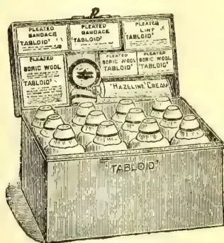
Measurements in.'TABLOID' MEDICINE CASENo. 258 (The Settler's)
Fitted with the world-famed 'TABLOID' Brand MEDICINES, BANDAGES, etc. The medicines are perfectly reliable in hot or damp climates. They are prepared in accurate doses ready for dispensing and are quite palatable. In climate-proof metal case (black japanned).
Price in London 28/0
'Tabloid' Medical Equipments are obtainable
at the principal pharmacies in all countries
BURROUGHS WELLCOME & CO., LONDON
NEW YORK
MONTREAL
SYDNEY
CAPE TOWN
MILAN
SHANGHAI
BUENOS AIRES
x.r 293
ALL RIGHTS RESERVED
IDEAL FOR TROPICAL AGRICULTURISTS
WORLD'S TEA TRADE.GREAT DEVELOPMENTS.CEYLON'S THRIVING INDUSTRY.There have been times when it was needful to draw upon one's imagination in order to write a review of the tea trade that would interest anyone not actively engaged in it—years of superabundant supply, monotonous markets and nothing to relate about prices except their invariable tendency to decline.
Those times have passed. The difficulty now is to decide what to select and what to reject from the mass of matter and the strings of statistics to be dealt with; for the tea trade has grown, and has become a subject of widespread interest.
What has caused the change? Is it the growing use of tea; the attraction of fresh sources of supply; the rise of new markets; the discovery that tea is something that we cannot do without? These all contribute to the interest, but there is another reason, namely, that whereas the tea trade was once a close preserve, difficult for anyone to enter or understand except the China merchants who imported the tea, the brokers who sold it, and the London dealers who bought it—all this is now altered.
THE OPEN DOOR.Only those who knew the days when the middlemen were practically limited to a select
body of wholesale dealers, and when it was deemed illicit for a broker to sell to anyone else, can realise the extent of the change of policy and practice that has opened our market to everyone with money or credit. The change dates from the year when "the five hours" refused to pay the com-broker by each buyer, which released the brokers from their obligation to sell to no one but a dealer. This opened the door to Scottish, Irish, and country buyers, whose entry into the market was followed by large grocers, packet companies, licensed victuallers, co-operative societies, and stores, one after another; then came the new school of blenders, the nation's victualling departments, Mr. Lipton, precursor of the multiple-shop concerns that followed where he led, steamship companies, caterers, dairymen, provision dealers, and foreign merchants.
MARKETS AND PRICES.London's affairs come first. It holds its place, and is still the centre of the world's tea business, to which all markets but the Japanese adjust themselves. Nearly one half comes here of all the tea exported from the East, of which the whole approaches 700,000,000 lb., not counting the 80,000,000 of tablets and bricks made and consumed in Asia. The average of our figures for the last two completed years showed 337,000,000 lb. a year brought in, and 338,500,000 lb. taken out—and all but a fraction of it passed through London. There has only been a slight
12 90The Supplement to the Tropical Agriculturistturning out of the scale in favour of the seller, but it has proved enough to change the tone and tendency of markets. Why has it done so? The answer is that whilst home traders have been looking as usual for heavy supplies, buying from hand to mouth, holding as little duty-paid stock as possible, others abroad have acted differently. Finding their trade developing they went straight to the source of supply, competed with us there, and carried off larger quantities year by year. Our buyers at last realised that the addition to the output in three countries had been intercepted, and they have done their best to prevent it continuing.
Here are the figures: Five seasons back, India, Ceylon and Java shipped 410,000,000 lb. of which we imported 306,000,000 lb. and 104,000,000 lb. went elsewhere, whereas last season, out of 480,000,000 lb. exported we only received 314,000,000 lb. while 166,000,000 lb. passed from us. Of the additional 70,000,000 we only got 8,000,000, and the result has been that to meet the increased consumption we had to consume our stocks, which fell in May 22,000,000 lb. lower than they were five years before. The deflection of supplies, however, has now been checked, and by the most obvious process. The London buyers have had to outbid the rest in order to attract heavier supplies here, and to bring more on their own account from the Eastern markets. The result is that the growers have received more for what they have sold in Mincing-lane than has been paid them for many years, yet the advance upon last year's price is, on an average, but little more than three farthings a pound.
How little it seems: but it means much to the growers in Ceylon and India, who made no more for years than d or 2d on their crops until last season when the profit rose to nearly d per lb. upon the average of all.
And what does the d mean to those who supply us with our tea? It depends upon the sort they sell. An all-round rise was named to shew the sum total of the movement, but the advance has not been equal for all kinds, for whilst fine tea has risen little, if at all, the lower qualities were 1d to d dearer, and the result is that those who have "a good-class trade" do well, whilst those who live by selling tons of cheap tea at very low quotations find themselves in a difficult position. There has been no general advance in retail prices, but a section of the public pays it unconsciously, as the shilling and fourteen-penny teas have disappeared from most of the grocers' counters—their customers are advised to "buy something better," and they do it or think they do it.
Meanwhile the struggle goes on inside the trade between those who want us to buy the cheapest obtainable, and those who sell the sorts that cost double the price and does not pay to sell, and sixteen-pence is made by consent the lowest price. Only insiders know how narrow the margin of profit is on low-priced tea, in wholesale as well as retail trade, alike for blenders, dealers, and grocers. This has brought into question the custom of
the auction-room to take no bid of less than d advance upon the last one made—a rule framed more than fifty years ago when tea was three times its present price. The buyers now want it modified, and bids made by eighths of a penny. They asked for this, and meeting with refusal from the sellers, a section of them agreed to abstain from giving the usual orders. This was the incident that set the rumour afloat and the quidnuncs talking about an alarming "Ring" designed to put down prices.
Figures for only eleven months ending Nov. 30 can yet be given. They showed our total imports to be then 11,828,000 lb more, and deliveries 8,276,000 lb more than in 1910. The stock in bond was 2,130,000 lb lower, with more afloat, due to come in this month. The duty-paid deliveries have risen 8,478,000 lb due to the retailers' fear of being short of stock in hand if there were a strike, and not to be taken as proof that consumption of tea is larger. Our exports were only 200,000 lb short of 1910, and are better than could have been counted on. North and South America are promising outlets, but the Continental business is small and discouraging.
The census returns, showing the population to be smaller than the estimate, make our annual use of tea per head to be as much as 6.39 lb, a level never before reached. The following figures show what is used elsewhere per unit.
| lb. oz. | lb. oz. | ||
|---|---|---|---|
| Australia | 8 0 | Holland | 2 1 |
| New Zealand | 7 10 | United States | 1 2 |
| United Kingdom | 8 4 | Russia | 0 15 |
| Canada | 5 0 | Germany | 0 2 |
| Newfoundland | 4 12 | France | 0 1 |
It will be seen that while a free use of tea is almost universal amongst ourselves, other races are slow to discern its virtue. The chance of their doing so more quickly is still the hope of those who have staked their fortunes upon the future of our Eastern industry. There are signs of progress here and there, and one of retrogression, for less tea per head is now bought in the United States than was the custom twenty years ago.
Turning now to the tea-producing countries in the last the first fact to be mentioned is that the rate at which the total supply increases has slackened. More tea is being produced, but no longer more than is wanted, and traders have now to look for the source from which growing requirements could be satisfied. Let us visit the five countries, and examine them in turn.
In Japan we find the output limited to about 43,000,000 lb. and all but 1,000,000 lb. of it destined for sale in North America. Its island of Formosa only yields some 24,000,000 lb. of fancy tea.
Progress is being made in Java, with quality and value improving. Its output may touch 48,000,000 lb. with an annual increase, but this is but a small fraction of the aggregate of 700,000,000 lb.
120,000,000 lb. or more of various kinds is still exported from China, besides the brick tea from the factories. What of its future? Its trade has suffered badly. New Zealand lost, Australia
and Magazine of the Ceylon Agricultural Society.—January, 1912.91lia nearly gone, Canada going, our own quite small, Russia, its best customer, turning to India and Ceylon, and the United States rejecting its faced green tea. It still survives, however, and is even regaining ground, for Russia, London, and the Continent together have bought some 15,000,000 lb. more this season while America and others have taken 6,000,000 lb. less so far. Chinatea is still needed, and that is why so much concern is felt lest its cultivation or supply should be endangered by the prevailing chaos and disorder.
In Ceylon we come to an industry that thrives, in spite of drought and flood, rubber and dear labour. High-water mark was touched in 1909, when 192,000,000 lb. were shipped; then word was sent that the bushes would give way where rubber was growing amongst them, and only 182,000,000 lb. were made in 1910; but this year the yield is up to 187,000,000 lb. It seems as if the rubber trees were growing slower than was expected, and tea getting more care; manure, moreover, is doing good, and giving plenty of leaf. All that the island can produce is wanted, especially the fine-flavoured tea once made, now becoming scarce. No large schemes for development seem possible, but gradual small extensions of the area planted are being made, and the total is now more than 400,000 acres, including 15,000 still immature, and 78,000 acres that are interplanted with rubber. Our share of the output is about 112,000,000 lb. this year, and 75,000,000 lb. go elsewhere. Russia, Australia, and North America continue to be free buyers in Colombo, and so dependable that the local market, where about 70,000,000 lb. have been sold in auction, moves almost independently of London, strengthening the hands of those who sell their produce here.
We pass on to India, the hope of all who want tea cheap and good, and India should not fail them. About 258,000,000 lb. were gathered there in 1909, some 262,000,000 lb. in 1910, and this year's crop may be as much as 270,000,000 lb., all of which will find a ready sale. Will India go on giving more? It will partly depend upon the climate, and whether the word goes out to pluck with a heavy hand; also on the extent to which manuring is adopted. India has been behind Ceylon in this respect, but its efficacy being proved, it may become more general, the result being more leaf but not tea of better quality. Increase is also due from about 30,000 acres of newly-planted and 20,000 acres of re-planted land since 1906, which should compensate for shortening yields from some of the oldest fields, and give hope of some annual, if irregular, expansion in supply. A fresh forward movement in extending would have been made ere now if it had not been delayed by difficulties connected with labour and the land.
The growers in the North now have the benefit of two markets in which to sell, and of the last crop they sold 76,000,000 lb. in Calcutta, where numerous buyers congregate, who purchased of them and away from us 73,000,000 lb., including what the natives of
India take for local use. The planters in the South sell partly in Colombo, and out of their total of 18,000,000 lb. about 3,000,000 lb. were diverted from London, mostly to America. More is being sold locally this season at the auctions, at a good advance upon last year's price, but somewhat less of it has been taken for foreign and Colonial use, as bidders for London were active in Calcutta.
The existence of these local markets has not received the attention they deserve; they have been overlooked or underrated here, even deemed unwelcome rivals to London's supremacy, but they have been the means by which the desired expansion in the use of our tea abroad has been attained, and the making of the growers' good fortune. This could not have been done, and cannot be maintained, through London channels, and what it has effected the following figures show: During the last decade India and Ceylon's aggregate output increased 104,000,000 lb.; our home consumption of it only increased 25,000,000 lb., and our re-exports of it only advanced 10,000,000 lb. leaving a surplus of 69,000,000 lb. to find a market. How was it done? By means of direct sales to the buyers from other countries attracted to Calcutta and Colombo, whose purchases increased some 80,000,000 lb. or more during the same ten years. There, in a sentence, is the explanation of the limitation of our home supplies and stocks, which set our markets moving upward to the high prices that were lately reached—an outside influence that quite modified or changed the position for a time, if now abating.
The same process has been going on in Java, its increased output being nearly all bought by our competitors. They deserve well of producers, as they have averted the consequences of a glut of tea at home, such as in bygone years threatened this market, and some of them must be named. The Russian markets have added 44,000,000 lb., American merchants 13,000,000 lb., and Australian merchants 7,000,000 lb. to what they bought ten years ago from India and Ceylon, which makes it quite clear to all who do not know it that the price of our tea has been raised by the requirements and action of the Moscow and Hankow firms that buy it on the spot.
The year's story has been told. What of the future? What will it bring to those who grow, ship, deal in, or drink tea? What will be its price next year and the year after? It is unusual to look so far ahead; a few weeks or months used to be the limit of the outlook, but those who have large interests at stake have now to consider something more than the petty details of import and delivery, auctions and average rates, for changes are taking place that may bring new influences to bear upon markets, trade, and prices. We are in the throes of a great movement, a social and economic revolution. The wage-earners are seeking improved conditions, and they are getting them. A general increase in the capacity of the masses to spend money is in sight. How will they spend it? And we are promised other changes that will admit new and vast elements
92The Supplement to the Tropical Agriculturistto the electorati. How will they vote? Will they insist upon having tea, and what else they need, free of the duties? If that should happen, will there be enough for all who want to buy it?
We are brought back to discuss how much can be produced and obtained. Estimates being worthless, the probabilities are all that can be shown; they are that more tea will be gathered from the existing acreage, weather and labour permitting, in the three countries upon which we depend for our supplies. Whatever orders may be given, there will be strong inducement to gather weighty crops, so long as buyers go on bidding almost as much for common tea as they pay for good quality. And they will be welcome—no longer something to deprecate, and speak about with fear and trembling, but to be deemed a boon, for unless we get them our trade cannot expand, nor will the poor, who want tea cheap and good, obtain it.
Large crops, moreover, will be useful to owners of estates if they happen to find their labour bills are heavier; rice dear perchance; manuring somewhat costly; or London charges rising. A failure to secure them, or any serious setback to China's industry, would lead to interesting developments, and give the writer of next year's review something to tell worth hearing.—Daily Telegraph, Dec. 26.
The view that caffeine exists in an infusion of tea in the form of a definite compound with tannin is sustained by further experiments. In a previous article upon the subject it was shown that when an infusion of tea (which always exhibits an alkaline reaction) was acidified with any acid a flaky buff-coloured precipitate settled out, especially in the cold, which proved to contain chiefly caffeine tannate. Further, the proportion of caffeine to tannin in this precipitate was found to be one of the former to three of the latter, and the suggestion was the compound consisted of one molecule of caffeine with a molecular weight of 194, associated with one molecule of quercitannic acid with a molecular weight of 602. In the previous article the formula was strongly given as . The ratio of caffeine to tannin in such a compound would be 1:31. The following is an example of the analysis of this precipitate from a good India Tea:—
| Caffeine | ... | ... | 20.93 | per cent |
| Tannin | ... | ... | 62.80 | " |
| Resinous and oily matters (by difference) |
... | ... | 16.27 | " |
Total ... 100.00 "
The precipitate amounted to 9.84 per cent of the tea used in the infusion. A further experiment gave the following results:—
| Caffeine | ... | ... | 20.89 | per cent |
| Tannin | ... | ... | 62.66 | " |
| Resinous and oily matters (by difference) |
... | ... | 16.45 | " |
Total ... 100.00 "
It follows that the precipitate obtained on making an infusion of tea acid consists principally of caffeine and tannin in the ratio approximately of 1 of the former to 3 of the latter. The presumption is that caffeine tannate is the chief body thrown out of solution by the addition of acid.
When, however, this precipitate is removed by filtration and the filtrate is saturated with ammonium sulphate a further separation of buff-coloured flakes takes place. On analysis these flakes show the following composition:—
| Caffeine | ... | ... | 24.13 | per cent |
| Tannin | ... | ... | 75.80 | " " |
| Tannin | ... | ... | 3.14 | " " |
| Caffeine | ... | ... |
The ammonium sulphate precipitate amounted to 4 per cent of the tea used in the infusion (5 grammes in 400 cubic centimetres of just boiling water allowed to stand five minutes before pouring off). Calculation shows that this particular tea yielded a total of caffeine tannate of 12.26 per cent. Of this total 8.26 was thrown out by mere addition of acid and 4.00 per cent by subsequent saturation of the filtered acid infusion with ammonium sulphate. The whole can be thrown down at once by adding ammonium sulphate after acidifying the tea infusion with dilute sulphuric acid. When this precipitate is air-dried and sunk in a mixture of 1 of alcohol and 2 of benzene the caffeine tannate is separated from the excess of ammonium sulphate crystals and resins and obtained in a comparatively pure state. The solution of caffeine tannate in benzene-alcohol mixture readily yields its tannin to lead oxide (litharge), the caffeine being set free. To give an example, a certain tea (Indian) yields a total precipitate by ammonium sulphate amounting to 11.60 per cent. When dissolved in benzene-alcohol mixture and evaporated to dryness and weighed. The following was the process. A definite volume of the alcohol-benzene solution of the caffeine tannate was evaporated over a weighed quantity of lead oxide. The dry residue was then made into a thick paste with water and extracted with chloroform, which was poured off and evaporated in a platinum basin. The residue from the chloroform represents the caffeine contained in the caffeine tannate. The wet lead oxide paste was then dried to constant weight and the increase of weight shown over the original amount of lead oxide weighed out was regarded to be due to tannin. In this way a residue of 11.60 per cent obtained by evaporating the alcohol-benzene mixture to dryness gave on treatment in the way just described:—
| Caffeine | ... | ... | 2.80 | per cent |
| Tannin | ... | ... | 8.80 | " |
Total (caffeine tannate) 11.60 "
With another tea the total caffeine tannate extracted from the ammonium sulphate precipitate by benzene-alcohol mixture was 12.80 per cent, and the constituents found by lead oxide separation were:—
| Caffeine | ... | ... | 3.20 | per cent |
| Tannin | ... | ... | 9.60 | " |
Total (caffeine tannate) 12.80 "
and Magazine of the Ceylon Agricultural Society.—January, 1912. 93These experiments thus appear to establish that, complex as the composition of an infusion of the tea may be, it at least yields a definite substance in the shape of caffeine tannate, the composition of which is constantly shown to be one part of caffeine with three parts of tannin.
Caffeine tannate is a very interesting substance apart from its occurrence in tea infusion. It may readily be prepared by mixing aqueous solutions respectively of tannin and caffeine in the cold, when a milk-fluid, sometimes with flakes forming according to the strengths of the solutions, is obtained. If a few drops of carbonate of soda solution be added to the mixture a clear pale yellow solution results. If next a slight excess of dilute sulphuric acid be added caffeine tannate separates in flakes which admit of washing to remove free caffeine or tannin as the case may be. These flakes may be dissolved in alcohol-benzene mixture (1 to 2). On evaporating the solution to dryness a crisp crust of caffeine tannate is obtained. If this residue is taken up again in benzene-alcohol and evaporated over a weighed quantity of lead oxide the two constituents are separated. On evaporating the benzene-alcohol and moistening the mass with water to a paste chloroform may be added which will extract the whole of the caffeine, the lead residue on drying to constant weight will give the amount of tannin as an increased weight on the lead oxide employed. To give an illustration: A benzene-alcohol solution of the precipitate obtained by adding acid to a solution of caffeine and tannin in weak carbonate of soda was evaporated to dryness. The weight was 0.1 gramme. The residue was re-dissolved in benzene-alcohol and the solution so obtained was evaporated to dryness in a platinum basin containing 3.210 grammes of lead oxide (litharge). The dried mass, after moistening, was extracted with chloroform. The residue (caffeine) from the chloroform, clean and white, weighed 0.025 gramme. The lead oxide, after being exhausted with chloroform, was then dried at 120 C. to constant weight. The weight proved to be 3.287 grammes, which represents a gain due to tannin of 3.287, 3.210, or 0.077 gramme. The 0.100 gramme of caffeine tannate was thus split into 0.025 gramme of caffeine and 0.077 of tannin, figures which account for the whole of the original substance taken, and which give the product 3.08 when the proportion of tannin is divided by the proportion of caffeine. Caffeine tannate is readily soluble in boiling hot water, but as the solution cools it turns milky. It is, however, permanently soluble in water containing a little alcohol. If caffeine tannate be heated with a little water for some time it assumes the form of an oil.
It was next decided to add an excess of caffeine in solution to a known amount of tannin in solution. If tannin selects a definite amount of caffeine to form a compound it is evident that by estimating the remaining free caffeine in the mixed solution the amount that has combined with the tannin can be ascertained. Thus, 0.3 gramme of caffeine in solution
was added to 0.3 gramme of tannin in solution, a few drops of carbonate of soda solution were added to make the mixture quite clear, and then dilute sulphuric acid was added in slight excess. Caffeine tannate readily separated in flakes from which a clear fluid could easily be poured off. The clear fluid was then repeatedly extracted with chloroform and the chloroform extractions were evaporated. The data and results were as follows:—
| Caffeine taken | ... 0.3 gramme |
| Tannin | ... 0.3 " |
| Calculated caffeine in excess, assuming that 1 of caffeine combines with 3 of tannin } | 0.2 gramme |
| Caffeine in excess found | ... 0.189 " |
It is difficult to extract caffeine completely from a bulky aqueous solution, but the results show an approximation to a combination of 1 of caffeine with 3 of tannin having been formed.
Next the precipitate obtained (caffeine tannate) was spilt up by lead oxide as previously described:—
| Caffeine tannate taken weighed | 0.284 gramme |
| Tannin found | ... 0.214 " |
| Caffeine | ... 0.075 " |
| Total | ... 0.289 " |
The evidence is here again strong in favour of the existence of a definite compound of caffeine and tannin consisting of one of the former and three of the latter.
The reverse experiment was next tried—that is an excess of tannin in solution was added to a known amount of caffeine in solution:—
| Tannin taken | ... 0.30 gramme |
| Caffeine | ... 0.03 " |
| Calculated excess of tannin | 0.21 " |
The mixed solutions were saturated with ammonium, sulphate and thrown upon a filter. The filtrate was exhausted with ethyl acetate and the extraction evaporated to dryness (we noted before that free tannin is soluble in saturated ammonium sulphate, but that caffeine tannate insoluble). The ethyl acetate gave 0.205 gramme free tannin against 0.21 calculated. The caffeine tannate formed was again spilt up by means of lead oxide, and there was obtained 0.10 gramme tannin and 0.03 caffeine, a total of 0.13 gramme caffeine tannate formed against a calculated 0.12 gramme.
We suggest that these findings are important from a physiological point of view, because it is highly probable that caffeine in a state chemical union with tannin must differ very materially in regard to therapeutic action from the alkaloid in a free or uncombined condition, especially having regard to the fact that tannin serves to some extent as an antidote to most alkaloids since it forms with them insoluble compounds. Similarly tannin when combined with caffeine is a totally different thing from tannin in the free state. The astringent properties of tannin, for example, disappear when it is combined definitely with caffeine. It follows that tannin in combination with caffeine will not tan. A solution of pure caffeine tannate does not act upon gelation or proteins, so that
94The Supplement to the Tropical Agriculturistwhen tannin is combined with caffeine its incompatibility with these dietetic substances ceases, and its objectionable retarding action upon digestion accordingly must be modified. If these conclusions are correct it becomes of the utmost importance to determine whether in the enormously popular beverage tea, caffeine or tannin exists in the free state of mutually combined.
We have already shown that to a large extent the teas which are regarded as of high quality by the merchant prove to yield infusions containing caffeine and tannin in the ratio of 1 to 3, and the strong inference is that such infusions contain neither free tannin nor caffeine, but neutral caffeine tannate. The merchant's view of quality would thus appear to accord quite happily with physiological considerations. He is guided, of course, chiefly by the flavour of the infusion, as well as by colour and odour and general appearances. Both tannin and caffeine in the free state have characteristic tastes: the former is astringent and sour, the latter is bitter. A slight excess of caffeine in tea infusion is probably less objectionable than an excess of tannin, since the disagreeable qualities of tannin are more marked. An ideal infusion is one which contains both caffeine and tannin in 1 to 3 proportion—i.e., caffeine tannate—neither constituent being in excess. This ideal is occasionally reached, but, generally speaking, most good teas contain caffeine in slight excess. Caffeine tannate, however, does not possess the qualities of its constituents; it has a peculiar flavour which is smooth and bland, not unlike a very delicate or lightly infused tea. It must be carefully borne in mind that in making these deductions we are not considering the chemistry of the leaf, but of its infusion made by pouring 400 c.c., of just boiled water upon 5 grammes of tea and decanting after 5 minutes—a plan suggested by the tea-taster's method of assaying tea.
The desirable equilibrium may be disturbed by vicious treatment even of a good tea. If an Indian tea be boiled long enough or stewed on the hob a point is reached when tannin appears over and above the amount which can combine with the caffeine to form neutral caffeine tannate. Such an infusion presents the objectionable characters of tannin. When this infusion is saturated with ammonium sulphate the caffeine tannate as such is thrown out. If this is filtered off the excess of tannin will be found in the filtrate, from which it can be extracted by ethyl acetate. Thus the five minutes' infusion of an Indian tea showed a total tannin content of 9.24 per cent. and caffeine 3.70 per cent. On infusing the same tea for one hour the tannin amounted to 16.12 per cent. and the caffeine 4.40 per cent. In the five minutes' infusion, therefore, caffeine was in slight excess (0.38 per cent.) of the tannin, but in the one hour's infusion the tannin is in excess of the caffeine by 2.92 per cent. In other words, 4.40 of caffeine if combined as tannate would mean in the combination 13.2 of tannin, when as a matter of fact the total tannin found was 16.12 per cent.
The experience of making wholesome tea seems to have decided upon a limited time for making the infusion. This limit, in fact, appears to us to insist upon the infusion consisting as far as possible of caffeine tannate and upon the exclusion of an important quantity of free tannin or caffeine present. But even a five minutes' infusion of some teas may not approach this standard. Indeed, in view of our work upon the subject we are able to suggest a classification for teas as follows:—
Good teas are those which on a five minutes' infusion yield only caffeine in the form of caffeine tannate to the infusion, neither caffeine nor tannin being excess; and bad teas are those which yield on infusion for five minutes, a tea containing in addition to caffeine tannate either caffeine or tannin, but especially tannin in excess.
It is obvious from this classification that a good tea may be made a bad tea, but a bad tea cannot be made a good tea, except possibly by very skilful blending. Excessive infusion will spoil a good tea, but a short infusion of a bad tea may be as objectionable as an excessive infusion of a good tea. On physiological grounds, therefore, the buyer of high-quality teas runs less risk of digestive disturbance provided he makes the tea properly.
These points are interesting in connection with the light types of tea grown in China. The short infusions of these teas commonly contain an excess of caffeine, which probably accounts for their bitterness. They are less rich than Indian Teas, a fact which should make the use of Indian teas more economical, but the best types of them never show the presence of free tannin. A five minutes' infusion of a certain China tea showed a total amount of tannin of 4.60 per cent. and caffeine 2.80 per cent. On the basis of the one to three relationship of caffeine to tannin in caffeine tannate it is evident that in this tea there is an excess of caffeine—viz. :—1.27 per cent.—for the amount of caffeine that can combine with 4.60 of tannin is 1.53, making a total of 6.13 per cent. of tannate. As a matter of fact, the amount of caffeine thrown out as tannate when the infusion was saturated with ammonium sulphate was 6.48, which requires 1.62 of caffeine and 4.86 of tannin. In the five minutes' infusion, therefore, there was 1.27 per cent. of caffeine in excess. On infusing the same tea for an hour, however, the tannin then amounted to 7.14 per cent. and the caffeine to 3.20 per cent. Caffeine is still in excess, for the amount combined as tannate is 2.38 per cent., giving a difference of per cent. Some China teas, therefore, are incapable of yielding free tannin, and these are invariably high priced teas.
In the following table will be found a series of analyses of infusions made with Indian, Ceylon, and China teas respectively. The percentage results are based upon five grammes of tea used in the experiment, the brokers' prices which are attached. It will be noted that, as a rule, the high-priced teas yield infusions containing a balance of tannin and caffeine, and in general a larger amount of these constituents.
and Magazine of the Ceylon Agricultural Society.—January, 1912.95The use of a high quality tea is therefore not only salutary but economical also. A very fine example of Indian tea is No. 7. The infusion contained as much as 4 per cent. of caffeine and 9.5 per cent. of tannin. There was only 0.1 per cent. of tannin uncombined with caffeine and 0.90 per cent. of caffeine uncombined with tannin. The price of this tea was 1s 10½d per lb. On the other hand, Indian tea at about half the price—11¼d—gave 8.73 per cent. of tannin and 3.20 per cent. of caffeine, and there was 1.53 per cent. of tannin not combined with caffeine, and the liquor was accordingly harsh and astringent, although the time of infusion was only five minutes. The same applies to the Ceylon teas: a tea quoted at 1s 4d per lb. yielded no tannin over and above what is combined as tannate, while one tea quoted at 10½d gave 2.02 tannin in excess. The tea at 1s 4d again yielded 3.60 per cent. of caffeine, while the tea at 10½d gave 2.96. Ceylon teas, as a rule, show a more regularly balanced composition as regards the ratio of tannin to caffeine (3 to 1), a finding which would seem to show that Ceylon teas are all that can be asked for from a physiological point of view.
When we come to China teas there is again seen to be some relation between price and the percentage of caffeine. A cheap China tea, for example (6½d per lb), gives 1.92 per cent. of caffeine, while one at 1s 5d per lb yield 2.80 per cent. China teas, again, rarely yield an excess of tannin, but nearly always an amount of caffeine in excess of tannin, and caffeine appears to occur in China tea with some constituent other than tannin.
So far we have been dealing with individual teas, but we now come to a consideration of blends. The aim of the blender is of course to produce a palatable tea and more than that, to mix individual teas so that the whole shall be adapted to the peculiar requirements of different public water supplies. In doing this, does he unconsciously produce a mixed tea in which, whatever the drawbacks of the individual teas may be, a balance of caffeine and tannin somewhere near the ratio of 1 to 3 is effected? It is well-known to tea experts that a tea which produces a pleasant palatable infusion with London water may easily be uninteresting or even possibly bad when made with, say, a very soft peaty water in Dublin or with the soft-water supplies of Plymouth, Aberdeen, Swansea, and elsewhere. The consumer has the same experience. He will have made up his mind after considerable trial that a certain tea in his judgment is best, at any rate at home. So convinced is he that the tea is a good one that when he happens to travel he will take care to have the same tea with him only to find out that outside his own district at home the tea becomes different. In other words, he has found a tea which associates perfectly with the home supply of water, but which proves to go badly with waters of different quality. Hence the taster will always be careful to select a tea suited to a particular place, and it is invariably his plan to be sure of this by testing the tea with the actual water supplied to the
neighbourhood for which the tea is required. It is difficult to see here what guides him in this matter except it be flavour. The probability is that rich teas are more suitable for soft acid waters than for chalky waters. We know, at any rate, that an acid water will tend to neutralise the alkaline salts in tea which keep tannate of caffeine in solution; it would tend to throw caffeine and tannin in the form of tannate out of solution, and so weaken the infusion, whereas chalky waters would have the opposite tendency and draw closely upon the available tannin and caffeine which are present in the form of tannate. This is a mere suggestion which may find little support in practice, but so far as we have examined blends deemed to be suitable for certain water the choice appears to be in the direction we have indicated. Thus in a blend intended for consumption in Dublin, where the water is soft and acid from the peat, the total caffeine tannate amounted to 13.20 per cent., the caffeine and tannin being approximately in the 1 to 3 proportion, whereas a tea supplied to districts in Scotland where the water is soft but not acid the total caffeine tannate amounted to 8 per cent., and a tea for Wales, where the water is again soft but not so acid as Dublin water, the caffeine tannate amounted to 10.40 per cent., while the blends supplied for chalky waters showed amount of caffeine varying from 10.4 to 11.60 per cent.
In all cases it is interesting to observe that the blends showed a near approximation to the ratio of 1 to 3 of caffeine and tannin as in caffeine tannate, and whatever the individual requirements of different districts may be, the taster seems to know when and how a combination of teas will give a satisfactory result. The varying alkalinity of teas may probably be a factor in the case. What exactly lies behind the choice of a tea to suit the requirements of different districts is a theme which is difficult to pursue on merely chemical grounds, for in addition to the varying chemical characteristics of different water supplies, there are colonies of people who collectively like a strong pungent liquor, while there are others who prefer their tea to be light and delicate in character.
The subject is by no means exhausted, but we submit that the foregoing investigation has thrown some new light upon the real character of tea infusion, especially in regard to correlating aesthetic with physiological considerations. We have not concerned ourselves at all with the chemistry of the leaf, but with the chemistry of the cup of tea, and in our inquiry we have been assisted by devising new methods of examination. We hope that other investigators will be induced to approach the subject from this standpoint and append a short description of the analytical methods employed.
THE ESTIMATION OF CAFFEINE TANNATE. In all cases the infusion was prepared by taking five grammes of tea and pouring upon the leaves just boiling water to 400 c.c. and leaving the infusion to stand five minutes. It was then filtered. For the estimation of caffeine tannate 200 c.c. of infusion was just acidified with dilute
96The Supplement to the Tropical Agriculturistsulphuric acid and then saturated with ammonium sulphate and kept cold. The fluid was then filtered and the filtrate kept for the extraction with ethyl acetate of any excess of tannin that might be present, or of caffeine by means of chloroform. (It may be noted that a very rapid method of ascertaining whether tea infusion contains an excess of tannin consists in saturating the infusion with ammonium sulphate and filtering. The filtrate will contain any tannin present in excess of caffeine tannate which can be extracted by shaking with ethyl acetate separately and evaporating to dryness). The precipitate in the filter was allowed to dry as much as possible in a current of air. The filter and its contents were then exhausted with a mixture containing 1 part of alcohol and two parts of benzene. The extracts were added together and made up to a definite volume (100 c.c.). A known measure of this (25 c.c.) was evaporated upon a weighed amount of lead oxide (approximately 3 grammes), keeping the mixture thoroughly stirred. The dry mass was then made into a paste with water and extracted several times with chloroform. The chloroform, evaporated carefully to dryness, gives the caffeine in the caffeine tannate. The lead residue was then carefully dried at 120 C. and weighed to constant weight. The increase in weight gives the tannin extracted by the lead oxide. Another portion of the benzene-alcohol solution (25 c.c.) is evaporated to dryness to give the total caffeine tannate.
THE ESTIMATION OF TOTAL TANNIN.—We found that good and consistent results were obtained by taking 20 c.c. of the fresh infusion, adding slight excess of bicarbonate of soda and running in N/10 iodine solution to which were added 400 c.c. of just boiling water, the infusion being poured off after five minutes. The qualities of the teas from the merchant's point of view are indicated by
| DESCRIPTION. | s. d. | |||||||||
|---|---|---|---|---|---|---|---|---|---|---|
| Indian .. | 8.54 | 6.41 | 2.13 | 6.90 | 2.56 | 0.43 | 0.39 | 7½ | ||
| do .. | 8.88 | 6.66 | 2.22 | 5.88 | 2.22 | — | — | 8 | ||
| do .. | 10.32 | 7.74 | 2.58 | 7.39 | 2.88 | 0.30 | — | 8½ | ||
| do .. | 11.48 | 8.61 | 2.87 | 8.41 | 3.52 | 0.65 | — | 8¾ | ||
| do .. | 13.28 | 9.96 | 3.32 | 9.24 | 3.70 | 0.38 | — | 10½ | ||
| do .. | 9.60 | 7.20 | 2.40 | 8.73 | 3.20 | 0.80 | 1.53 | 11½ | ||
| do .. | 12.50 | 9.40 | 3.10 | 9.50 | 4.00 | 0.90 | 0.10 | 11.05 | ||
| do .. | 13.36 | 10.02 | 3.34 | 10.92 | 4.32 | 0.98 | 0.90 | 11½ | ||
| Ceylon .. | 8.83 | 6.66 | 2.22 | 6.30 | 2.80 | 0.58 | — | 8¾ | ||
| do .. | 9.12 | 6.84 | 2.28 | 7.14 | 3.04 | 0.76 | 3.30 | 10½ | ||
| do .. | 10.40 | 7.80 | 2.60 | 9.82 | 2.96 | 0.36 | 2.02 | 10¾ | ||
| do .. | 11.76 | 8.52 | 2.94 | 8.82 | 2.56 | 0.02 | — | 10¾ | ||
| do .. | 13.28 | 9.96 | 3.32 | 9.66 | 4.00 | 0.68 | — | 11 | ||
| do .. | 12.00 | 9.00 | 3.00 | 8.40 | 3.60 | 0.60 | — | 11 | ||
| China .. | 5.36 | 4.02 | 1.34 | 3.02 | 1.92 | 0.58 | — | 6¾ | ||
| do .. | 5.60 | 4.20 | 1.40 | 4.87 | 2.72 | 1.32 | 0.67 | 8 | ||
| do .. | 7.60 | 5.70 | 1.90 | 5.04 | 2.72 | 0.82 | — | 9¾ | ||
| do .. | 6.32 | 4.74 | 1.58 | 3.96 | 2.72 | 1.14 | — | 11 | ||
| do .. | 6.48 | 4.86 | 1.62 | 4.60 | 2.84 | 1.18 | — | 11.5 | ||
until some petroleum either shaken after each addition with the mixture showed a slight excess or iodine present by the well-known violet colour. The factor for tannin was each c.c. of N/10 iodine used multiplied by 0.0021.
ESTIMATION OF THE TOTAL CAFFEINE.—This was estimated by first slightly acidifying the infusion with dilute sulphuric acid, then boiling with an excess of lead oxide. After half-an-hour or so a clear pale yellow fluid resulted which filters perfectly, and can then be several times extracted with chloroform, which on evaporation yields caffeine.—Lancet.
Two schools of agricultural chemists are now in existence. Those who take the historic view of Davy, Liebig and others that the lack of fertility of a soil is due to its lack of substances needed by the plant, which substances must be added as fertilisers, and the school led by Whitney and Cameron, who insist that it is the soil solution that must be examined. They have found in the soil substance like nicoline, carboxylic acid and dihydroxystearic acid which act as poisons and furnish the logical reason for the rotation of crops.
A book of Mr Cameron's gives an intelligently stated resume of the views of this latter school of agricultural chemists. We seem thus far to have known as little concerning plant life as concerning animal life. We know that we inhale and exhale air for a given purpose and that fishes have a satisfactory arrangement for the oxidation of their blood, but of these physiological phenomena incident to plant life we have known but little. It would now seem that plants from a Darwinian point of view, are our first cousins or perhaps older cousins as plant life probably appeared earlier in the history of this planet than did animal life, if we can draw the line of distinction between the two. Aquatic plants probably get their oxygen out of the oxygen of water with a mechanism equivalent to that of the fishes. Dry land plants get their oxygen out of the air, which must permeate the soil and there enter into this soil solution that goes to build up plants.—Louisiana Planter, Dec. 2.
Tonight's Gazette contain a notification re above. As a first step it is proposed to grant four scholarships tenable for a period of three years for a course of training at the Agricultural College at Poona. The scholarships will entitle the holders to the following allowances during the three years of their course of training:—A subsistence allowance of Rs. 50 per mensem, and an outfit and travelling allowance at the rate of Rs. 300 per annum paid half-yearly. The candidates will be provided with quarters, but they will have to provide their own boarding. Fees for tuition, cost of instruments, &c., and rent of quarters will be paid by Government. The scholarships will be granted by nomination by the Governor in Executive Council to selected candidates who were over 19 and less than 24 years of age on Jan. 1, 1912. Applications for the Governor's nomination must be submitted to the Hon. the Colonial Secretary not later than March 1, 1912. Each candidate must send in with his application two certificates of character, one of which must be from the Principal of the last school which he attended; also proof of age. The next scholastic year of the Agricultural College at Poona will commence on June 1, 1912, and the students nominated for the scholarship will be admitted to the College on that date.
VOL. XXXVIII.
COLOMBO, FEBRUARY 15TH, 1912,
No. 2.
It is with considerable regret we read in the valedictory slip issued with the December number of the above journal that, with Mr. H. N. Ridley's retirement from the Directorship of the Singapore Gardens, the publication of the Straits Bulletin comes to an end after a useful existence extending over upwards of ten years.
In our expression of regret we may lay claim to a certain measure of altruism, since Mr. Ridley's Bulletin was one of the very few periodicals which could be regarded as in any way a rival to the Tropical Agriculturist. If the opinions expressed in the two papers have not always been in complete accord, the intention of each has invariably been directed to furthering the best interests of agriculture in the tropics. On the occasion of the demise of the smaller journal we can give voice whole-heartedly to our sympathy with the planting community of Malaya in its bereavement, and our hope that a competent and sufficiently disinterested person may soon be found to step into the gap caused in tropical agricultural literature by Mr. Ridley's departure.
Mr. Ridley has expressed his regret at the small bulk of the Bulletin, but this
has not been an unmixed disadvantage; and when we recall the fact that a majority of the articles which have appeared in it have been from the pen of the editor himself, we are filled with admiration at the energy devoted by the late Director of the Singapore Gardens to what was after all quite a subsidiary occupation.
Mr. Ridley assumed the post of Director of Botanic Gardens in the Straits Settlements in the year 1888, and his unremitting labours in the field of systematic botany have recently been recognised by the Fellowship of the Royal Society and by the title of C.M.G.
The Agricultural Bulletin of the Straits and Federated Malay States began life in its present form in 1902, as the result of Mr. Ridley's individual enterprise, its object being to put the planters of the Federated Malay States and Straits Settlements in touch with scientific developments bearing upon the products which they cultivated. As Mr. Ridley points out, there are upwards of two hundred publications in existence which deal with tropical cultivations in all kinds of languages. We may add that only a few of them share the advantage enjoyed by the Agricultural Bulletin of being edited by a man of science of recognised eminence, with the result that in turning over the pages of many such
Gums, Resins,98[FEBRUARY, 1912.journals the reader must wade through a mass of pseudo-scientific assertions and speculations in the search for the few grains of valuable information concealed amongst the chaff. Mr. Ridley's name upon the title page of any journal is sufficient guarantee that the serious searcher after scientific information will find within matter worthy of his careful consideration.
The first Bulletin of the Department of Agriculture of the Federated Malay States was not published until July, 1909, and prior to this date Mr. Ridley's Bulletin was the only agricultural journal published within the limits of the great rubber-growing peninsula.
Recent numbers of the Straits Bulletin have contained numerous articles by members of the F. M. S. Department of Agriculture, but prior to the establishment of that Department under the late Mr. J. B. Carruthers in 1905, Mr. Ridley represented the sole agricultural authority in the Malay Peninsula. Although still better known in scientific circles for his researches into the flora and geography of Malaya, the ten completed volumes of Agricultural Bulletin remain an enduring monument to Mr. Ridley's agricultural work. In the interests of science we trust that he may long be spared to enjoy his well-earned retirement.
(From the India Rubber World, Vol. XLV., No. 3, December 1, 1911.)
One of the most interesting chapters of the report issued by the Turin Exposition on the State of Para (reviewed in another column), is that dealing with the measures which have been taken for the development of Hevea culture in that State.
While excellent lands were available, of a character appropriate to the proposed cultivation, it was necessary to obtain the co-operation of the Government in the form of such concessions as would attract capital. Other points calling for like attention were the scarcity of labour as well as the high cost of transportation.
By the State enactments of November 5 and 6, 1909, guarantees were conceded of interest premiums and other favours to national and foreign companies, or even to individual agriculturists, having in view the cultivation of Hevea Brasiliensis or Cacao within the territory of the State.
In consequence of this legislation some grave obstacles were partly removed. Among the steps taken by the State Government was the establishment of experimental fields intended for promoting the cultivation of Hevea and cacao at its agronomical stations of Igarape, Assu (a short distance from the Braganza railroad) and of Belem, with a view to giving practical instruction to new planters. The results of these official plantations are said to have been worthy of commendation. At the Orphan Institute of Santo Antonio de
Prata there is a plantation of Heveas in blossom and of cacao, in a lofty and sandy location. This plantation the Government intends to bring up to 100,000 trees of one or other species.
Subsequent to the promulgation of the laws of November, 1909, and up to December 26, 1910, applications had been received from forty-two agriculturists desirous of being inscribed as competitors for premiums, and intending to plant about seven million Heveas as well as two million cacao plants. The proportion of the above, representing foreign capital, was about two million Heveas and a nearly equal number of cacao plants.
Two companies, desirous of availing themselves of the privileges granted by the enactments referred to, proposed to cultivate a total area of 50,000 acres, granted free on the terms of the statute; each company agreeing to plant 200,000 trees annually. The plantations were to be situated: the first in the Lower Amazon territory, and the second on lands between the River Guama and the Prata Institute (already referred to).
The co-operation of the National Government has been the subject of a project submitted to the Federal Chamber of Deputies by the representatives of the State of Para, for promoting the cultivation of Hevea Brasiliensis and cereals in Amazonia, their natural habitat.
In conclusion, the report states: "Amazonia is the best region in the world for the extensive and profitable cultivation of Hevea and cacao. No other country is in a position to compete with it as to fertility of soil, favourable conditions of climate for this description of culture, potentiality of pro-
FEBRUARY, 1912.]99Oils and Fats.duction, and quality of products... Predominance in rubber production will belong to Amazonia in the same way as that of coffee does to Sao Paulo."
(From the India Rubber Journal, Vol. XLII., No. 22, November 25th, 1911.)
During the present month there have been many indications of a spirited demand for future rubber supplies. The present price is quite good enough for Para and other grades, and will serve to maintain supplies from wild sources as in past years. The crops from the East, though considerable, are being readily absorbed at the regular auctions, and large amounts are being disposed of privately. The old Brazilian stocks, carried over during the slump, are no longer feared by buyers, and have been almost obliterated, or lost their "bear" influence.
4s. 7d. per lb. for 1912.
Mincing Lane has dealt with fair quantities of first quality latex for 1912, the contracts allowing the sellers to deliver the article either as smoked sheet, unsmoked sheet, or crepe. The prices obtained have varied from 4s. 6d. to 4s. 7d. per lb., a figure which will inspire confidence among plantation circles who were inclined to look forward with some misgivings to the anticipated large increase in plantation crops for next year.
4s. per lb. for 1913.
The forward contracts entered into for the present year and 1912 for plantation rubber will materially aid in the preservation of comparatively high
prices for first grades during these periods. Already enquiries are being made for plantation rubber over 1913, a year when still larger supplies are expected from the East. We are informed that buyers have offered 4s. per lb. for delivery over 1913 for first latex, and have met with few sellers.
The demand for more rubber and especially pure plantation grades is growing rapidly, and is likely to receive a further impetus if the results of research recently carried out by a large manufacturing firm are published. These results clearly show that plantation rubber, if properly worked by the manufacturer, will be in much greater demand than heretofore in one of the largest consuming sections of the trade.
Wild rubbers, despite the enterprise of many firms in the purification and exploitation of inferior grades, are not likely to show any material increase in quantity for some years to come. Yields from Castilloa trees in Mexico and Central America, from Ficus in the Dutch East Indies and from Manihot in Africa, are not turning out as satisfactorily as those interested in these undertakings would wish; on the other hand high yields are still being obtained from old Hevea trees in the East, and many thousands of young trees will be added to the tapping round month by month for many years to come. Hevea, under cultivation is therefore slowly but surely soaring towards the first position in the trade.
Since the above was written a considerable number of forward contracts for plantation rubber have been entered into at 5s. a pound for 1912.
By DAVID HOOPER.
(From the Agricultural Ledger, 1911, No. 3.)
(Continued from page 15.)
Fourteen samples of the seeds grown from Japanese seeds at the Manjri Experimental Farm were again analysed last year by a leading European firm. The percentage of moisture varied from
9.90 to 12.06, and the percentage of oil from 16.80 to 22.48. Here there is no evidence of deterioration. In the opinion of a crusher to whom the samples were sent, eleven of the fourteen samples were declared to be good and six showing above 20 per cent. of oil, very good indeed and better in this respect than the best Sakura Manchurian beans which contain on an average 19.5 per cent. of oil.
The following analyses of Indian-grown Soy beans were made in the laboratory of the Indian Museum in 1909 and 1910;—
Oils and Fats.100[FEBRUARY, 1912.SOY BEANS, BURMA.| Oil. | Oil in dry. | Water. | Ash. | ||
|---|---|---|---|---|---|
| 31574 | Haka, Chin Hills, Yellow | 15.20 | 18.53 | 18.0 | 5.3 |
| 31614 | Mandalay | 10.66 | 15.57 | 12.3 | 5.6 |
| 31615 | Bhamo | 16.14 | 20.45 | 21.1 | 6.4 |
| 31616 | Lower Chindwin | 13.03 | 15.47 | 15.8 | 6.1 |
| 31619 | Northern Shan States | 16.72 | 18.77 | 11.0 | 5.1 |
| 31620 | " " " " with brown spots | 17.35 | 19.73 | 12.1 | 5.5 |
| 31626 | Chin Hills, Yellow | 17.35 | 19.34 | 18.3 | 6.1 |
| 31705 | Northern Shan States, greenish | 20.05 | 21.78 | 8.2 | 6.0 |
| 31706 | " " " yellowish | 14.29 | 15.55 | 8.1 | 5.7 |
| 31707 | " " " " | 16.49 | 17.88 | 8.3 | 5.7 |
| 32043 | Lashio, Northern Shan States | 13.96 | 14.93 | 6.5 | 5.9 |
| 32074 | Katha | 14.5 | 15.6 | 7.0 | 5.5 |
| 32214 | Myitkyina "Lasi N' Loi" | 15.63 | 16.86 | 7.3 | 4.9 |
| 32215 | " " | 13.5 | 14.54 | 7.2 | 5.0 |
| 32216 | " " "Lasi N' Hti" | 14.8 | 15.94 | 7.2 | 5.1 |
| 32217 | " " " | 13.8 | 14.85 | 7.1 | 5.0 |
| 32265 | Bhamo | 11.15 | 12.0 | 6.7 | 5.6 |
| 31426 | Nagpur, Yellowish | 16.61 | 17.89 | 7.2 | 4.7 |
| 31565 | Kalimpong, black | 15.50 | 17.03 | 9.0 | 5.5 |
| 31566 | " white | 16.51 | 17.83 | 7.4 | 5.5 |
| 31567 | " brown | 17.25 | 18.98 | 9.1 | 5.6 |
| 31568 | " green | 19.52 | 20.87 | 6.5 | 5.5 |
| 31569 | " yellowish | 16.62 | 18.34 | 9.4 | 5.6 |
| 31577 | Patna, black | 14.72 | 17.05 | 13.7 | 5.7 |
| 31617 | Shillong, white and brown | 15.66 | 17.63 | 11.2 | 5.4 |
| 31701 | Kangra | 14.25 | 15.47 | 7.9 | 5.9 |
| 31702 | Simla, brown | 16.83 | 18.29 | 8.0 | 5.1 |
| 31703 | " yellowish | 18.09 | 19.57 | 7.6 | 5.5 |
| 31704 | " black | 17.14 | 18.55 | 7.6 | 5.8 |
| 31803 | Naga Hills, whitish | 14.83 | 16.75 | 11.4 | 5.5 |
| 32027 | Kashmir | 16.59 | 17.76 | 6.6 | 4.5 |
| 32028 | " brown | 14.77 | 15.84 | 6.8 | 4.6 |
| 32583 | Trivandrum, white | 16.16 | 18.38 | 12.1 | 5.8 |
| 32870 | Darjeeling, green | 17.45 | 19.80 | 11.9 | 5.7 |
| 32871 | " white | 16.05 | 18.18 | 11.2 | 5.0 |
| 32872 | " yellow | 17.60 | 19.55 | 10.0 | 5.8 |
| 32873 | " brown | 16.85 | 19.09 | 11.7 | 5.6 |
| 32874 | " black | 15.25 | 17.29 | 11.2 | 5.5 |
| Average | 16.36 | 18.27 | 9.3 | 5.4 | |
| Farrakhabad (3 samples) | 15.67 | 16.7 | 6.6 | 4.9 | |
| Kherq (3 " ) | 14.95 | 16.0 | 6.5 | 4.4 | |
| Sitapur (3 " ) | 15.80 | 16.8 | 7.0 | 4.5 | |
| Unao (3 " ) | 15.81 | 17.0 | 7.5 | 4.6 | |
| Fatehgarh (2 " ) | 15.03 | 16.1 | 6.7 | 4.6 | |
| Manipuri (5 " ) | 16.52 | 17.8 | 7.2 | 4.9 | |
| Hardoi (6 " ) | 16.44 | 17.7 | 7.5 | 4.7 | |
| Etawah (6 " ) | 16.60 | 18.0 | 7.6 | 4.8 | |
| Chakrata (2 " ) | 16.75 | 18.0 | 7.1 | 5.3 | |
| Shikohabad (2 " ) | 17.10 | 18.3 | 6.7 | 4.8 | |
| Lakhimpur (2 " ) | 16.22 | 17.5 | 7.1 | 5.2 | |
| Average | 16.06 | 17.2 | 7.0 | 4.8 | |
| Oil. | Oil in dry. | Water. | Ash. | |
|---|---|---|---|---|
| 31776 Yellowish | 20.55 | 22.07 | 6.9 | 6.6 |
| 31777 " | 19.50 | 20.86 | 6.5 | 6.2 |
| 31778 " | 19.75 | 21.19 | 6.8 | 7.1 |
| 31779 " | 20.0 | 21.67 | 7.7 | 7.0 |
| 31780 " | 20.25 | 21.68 | 6.6 | 6.0 |
| 31781 Greenish | 19.10 | 20.51 | 6.9 | 6.3 |
| 31782 " | 17.30 | 18.72 | 7.6 | 6.1 |
| 31783 Yellowish | 21.20 | 22.84 | 7.2 | 6.6 |
| 31784 " | 18.25 | 19.79 | 7.8 | 6.1 |
| 31785 Black | 19.10 | 20.73 | 7.9 | 6.1 |
| 31786 Yellowish | 22.05 | 23.84 | 7.6 | 6.3 |
| 31787 Mixed | 22.4 | 24.21 | 7.5 | 6.3 |
| 31788 " | 19.30 | 21.00 | 8.1 | 5.4 |
| 31789 Yellowish | 19.80 | 21.67 | 8.2 | 6.2 |
| 31790 Green | 21.70 | 23.56 | 7.9 | 5.9 |
| Average | 20.01 | 21.61 | 7.4 | 6.2 |
Soy bean oil is largely used as food in the Far East. The oil has many other uses. Thus, in China, it is used for illuminating purposes, and as it is a drying oil, it can be used in the manufacture of paints in the place of linseed oil. In Europe as well as in Eastern Asia it is employed in the manufacture of soap and as a machine lubricant.
The oil expressed from Soy beans is a favourite article of diet in Eastern Asia. Recently it has been used in the manufacture of margarine or artificial butter. The digestibility of the oil for man was studied by Korentschewski and Zimmerman in 1906. The co-efficient of digestibility was found to be about 95 per cent. Thus it is seen that Soy bean oil is thoroughly assimilated.
An attempt in 1903 to extract oil from these beans with the country ghani or indigenous oil-mill in the usual way was a failure in Bombay. The oil is expressed by means of primitive plant in the Chinese factories. The method of extraction consists in first crushing the beans into caked masses by means of mill-stones, then heating them on stone slabs until the appearance of vapours, and finally expressing them in an iron receptacle. As first obtained the oil is turbid, but after some time becomes clear, the deposits consisting of sand particles and vegetable fibres. Only the clear oil is exported, but the turbid oil is sold locally. It has a faint odour recalling that of Chinese wood (tung) oil, is bland to the taste and of a dark-brown colour.
Four commercial samples examined in 1905 by W. Korentschewski and A. Zimmerman gave the following results:—Water, 0.3 to 1.80 per cent.; specific gravity at 15°C., 0.9264 to 0.9287; solidi-
fication point, 14.6° to 15.3°C.; saponification value, 207.9 to 212.6; ester value, 203.9 to 207.7; insoluble fatty acids, 93.6 to 94.28 per cent.; iodine value (Hubl) 114.8 to 137.2; solidification point of fatty acids, 16° to 77.3°C.; m. pt. of fatty acids, 20° to 21°C.; Maumene test 102° to 116°C.; and acid value, 1.86 to 15.46.
It belongs to the class of semi-drying oils, that is to say, it has properties intermediate between those of the drying oils, such as linseed oil and the non-drying oils, such as almond and olive oils. On exposure to the air, a thin skin is gradually formed on the surface. It resembles cotton-seed oil in many respects, but is of a more pronounced drying character, as is indicated by its higher iodine value (the iodine value of the cotton-seed oil being 101 to 186). The oil consists mainly of the glycerides of palmitic oleic and linolic acids.
OIL-CAKE.The Soy bean oil-cake left after the oil is expressed is a valuable cattle food, and may be substituted for the dearer decorticated cotton cake. Some cases of supposed poisonous action of the cake have been reported in England. The cause was probably due to overfeeding or admixture with noxious ingredients. Soy-bean cake being exceedingly rich and concentrated, should be used with discretion especially in the case of dairy cows. It is also used as a manure. The following analysis of the cake is taken from the Agricultural Gazette of New South Wales, Vol. XX., 1909, p. 671:—
“Moisture 14.52; ash 5.16; fibre, 4.03; albuminoids, 42.31; carbohydrates, 25.25; other extract (fat and oil), 8.73; nutritive value, 87.3; albuminoid ratio, 1 to 1.06.
“The ash is rich in potash salts and phosphates, and the manurial value is shown by the proportions of fertilising
Oils and Fats.102[FEBRUARY, 1912.ingredients which are as follows in the whole cake:—Nitrogen, 6.77 per cent.; potash, 2.00 per cent.; phosphoric acid, 1.33 per cent."
Soy-bean cake exported from Manchuria is stamped with the manufacturer's brand, and contains a guaranteed analysis of 6.5 per cent. of total nitrogen and 1.5 per cent. of phosphoric anhydride.
The Soy bean is cultivated in the United States of America mainly as a forage crop and numerous experiments have been made in its growth. The following table showing the composition of the various kinds of forage made from the Soy bean (in a fresh or air dried condition) is taken from the U.S. Farmers' Bulletin No. 28:—
| Soy bean forage. | Water. | Protein. | Fat. | Nitrogen Free extract. | Fibre. | Ash. |
|---|---|---|---|---|---|---|
| Fodder (early bloom to early seeds) .. | 76.5 | 3.6 | 1.0 | 10.1 | 6.5 | 2.3 |
| Soy bean hay (Mass) .. | 12.1 | 14.2 | 4.1 | 41.2 | 21.1 | 7.3 |
| " , straw ( , ) .. | 11.4 | 4.9 | 1.9 | 37.8 | 37.6 | 6.4 |
Dr. Leather obtained the following figures as the average of five analyses of "bhusa" or dried green tops of Soy grown at Dumraon in 1902:—Water, 9.85; fat, 1.0; protein, 3.7; nitrogen free extract, 46.07; fibre, 28.44; ash, 10.94 per cent.
When dealing with the chemical analysis of the Soy-bean forage, it should be noted that the proper value of a forage does not depend on its composition only, but the digestibility of the various components must be taken into account. Quoting again from the Farmers' Bulletin:—"The following rough computation will give an idea of the amount of digestible matter in the forage raised on an acre planted with this crop. Under ordinary farm conditions the yield of green fodder usually ranges from 6 to 12 tons per acre. Taking 8 tons as an average yield, the amount of dry matter will be about 2 tons, of which about 54 per cent. is digestible. This will make the digestible matter raised on an acre of ground amount to nearly eleven-tenth ton. Of this amount about one-sixth is protein or muscle-making material and about three-fourths crude fibre and other fat-forming substances."
The Soy bean is very largely eaten by the Chinese and Japanese as a vegetable, and many food preparations are made from it. It is a very important article of diet for people whose staple food is rice, a cereal very poor in proteid or
nitrogenous substances. The highly nitrogenous Soy bean supplies the place of meat in European countries, and the introduction of this rich bean into the dietary of the rice-eating people of India would be a benefit to the country.
Three Japanese food preparations are especially made from the bean: Soy-bean milk, Soy-bean cheese or "topo," and Soy-bean sauce or "Shoyu."
Soy bean Milk.—The Soy beans are first soaked in water for about twelve hours and then well crushed between mill-stones. The powder is then boiled with about three times its bulk of water for about an hour and filtered through cloth. The filtrate resembles cow's milk in appearance and to some extent in composition; it is easily digestible and forms a highly nitrogenous liquid, but it is not suitable for the nourishment of children.
Bean Cheese.—When Soy-bean milk is treated with magnesium chloride (or the mother liquor obtained in the manufacture of common salt from sea water) the proteids are separated in the form of a precipitate. This is collected on a filter, pressed and dried, and forms "topo" or Soy-bean cheese. It is eaten in a fresh state.
Shoyu.—Shoyu is a sauce prepared from a mixture of cooked and pulverised Soy beans, washed and powdered wheat, wheat flour, salt and water. The mass is fermented with rice-wine ferment in casks for from one-and-a-half to five years, being frequently stirred. The resulting product is a moderately thick, brown liquid. Its odour and taste it is not unlike a good quality of meat extract though perhaps somewhat more pungent. Under the name of "Soy sauce" and other fanciful names it has formed the basis of most of the important sauces of Europe for many years.
Roasted Soy beans are being used in the United States and Switzerland as a coffee substitute.
The Soy bean contains little or no starch, and is consequently used as a diet for diabetic patients. Bread and biscuits made from Soy-bean flour are now being placed on the European markets.
Soy bean used to be cultivated in Manchuria to meet the demands in China and Japan, but from the year 1908 Europe has entered the field as a chief customer. During the last few years the Manchurian trade in Soy beans has prospered by leaps and bounds. The chief cause of this sudden development
FEBRUARY, 1912.]103Oils and Fats.is certainly the last Russo-Japanese war when agriculture in Manchuria was greatly stimulated as this country had to provide for the large numbers of soldiers located there. At the end of the war the armies were withdrawn, and Manchuria was obliged to export the surplus of its food products, mainly, Soy beans.
The first large cargo of the bean reached Hull on the 2nd of March, 1909, and contained 5,200 tons. Ever since then the demand for this bean has rapidly increased and British oil-crushers are setting up big machines for the bean-oil. On the continent of Europe as well as in England, a good deal of interest is being manifested in the Soy bean industry. The following facts taken from the Indian Trade Journal of April 28th, 1910, will give an idea of the importance that this trade is rapidly acquiring now-a-days.
"Up to 1907 the total exports of Soy beans from Manchuria did not exceed 120,000 tons annually. In 1908 the shipments amounted to 330,000 tons, and in 1909 they ranged between 700,000 and 800,000 tons.
It is understood that large elevators are being erected outside Hull for handling the bean. This indicates that the trade is expected to be not only large but permanent; and there remains no doubt that this remarkable new trade will affect the Indian business in oils seeds."
Mr. F. E. Wilkinson, H. M. Consul at Newchwang, in his report on the trade of that district in 1909 writes:—
"In 1908, 178,000 tons of beans and 318,000 tons of bean-cake were exported from Newchwang, and 438,000 tons of beans and 276,000 tons of bean-cake from Darien, making a total of 616,000 tons of beans and 594,000 tons of bean cake. Now as 100 tons of beans are required to produce 9 tons of oil, it may be estimated that to produce 594,000 tons of bean-cake, 653,400 tons of beans must have been treated, so that the total quantity of beans represented by the combined exports of bean produce from the two ports was, 1,269,400 tons. Exports from other places on the coast would bring the total exports from South Manchuria to about 1,300,000 tons."
Mr. R. M. Hodson, H. M. Vice-Consul at Vladivostock, in his report on the trade of that district in 1908 to 1909, writes:—
"The Soy bean export to Europe through Vladivostock commenced in December, 1908, and shipments continued all through 1909 till October, the total
amount exported to Europe being 200,000 tons. The cargo was nearly all carried in British bottoms and destined to oil mills in the United Kingdom. . . . The centre of the trade for North Manchuria is Kharbin, and several British firms have recently opened buying agencies there."
One great advantage in Soy bean trade is that the beans arrive in Europe in a perfect condition from distant Manchuria.
The following extract is from the report of the Consul at Newchwang from which an extract has already been made:—
"At the time of the first shipments to Europe, the price of the beans laid down at Darien was about £3 10s. per ton. By the spring of 1909 the value of the Soy bean as an article of commerce had become generally known, and a large number of British and other firms entering the field as prospective buyers, competitions gradually drove the price up. The new crop though well up to the average proved not to be equal either in quality or quantity to that of 1908. The price of beans consequently rose still further, and in February, 1910, it reached £6 5s. per ton, the highest point it has touched as yet.
"At the price mentioned, China and Japan are practically out of the market as buyers, and about 80 per cent. of the purchases of beans made since December last have been for the European Market."
(From the Tropical Life, Vol. VII., No. 11, November, 1911.)
It is commonly asserted that the uses of the coconut palm are as numerous as the days of the year. Apart from local uses, where the leaves serve as roofing, the mid ribs for basket-making, and the hard shell for domestic utensils, the more important commercial commodities are, in the first place, the dried kernel known as coprah, from which a valuable oil is expressed; then comes the fibre from the pericarp, which envelopes the shell, used for ropes and cordage; and lastly, the sap from the young stems and blossoms, which when fermented, provides us with arrack and a good quality of vinegar. With such an important plant it may be of interest to
Oils and Fats.104[FEBRUARY, 1912.give some details as to the methods of propagation, planting, cultivation, and manuring.
As has been proved with other cultivated plants, such as wheat, due attention to seed selection is bound to give increased yields. Seed-nuts should be selected from trees that are known to be good, regular bearers under ordinary conditions of soil and climate,* and though this may be generally recognized, the method of picking the nuts, even from the especially selected trees, is often careless, and tends to destroy this initial advantage. The nuts, of course, should be completely matured, and from this point of view many argue that they should be allowed to fall naturally from the trees. This involves considerable damage to the young embryo, and careful hand-picking, if by reliable and experienced hands, is preferable. To accomplish this the stems of the trees are notched, and this is often done in such a way that little cups are formed, where water lodges, and so sets up decay. Notches are perhaps necessary, but they should always be carefully cut, not too deep and sloping downwards, so as to minimize the danger as much as possible. The ripe nuts are then stored in a dry place for about six weeks, since, if this is not done, the food store in the nuts is liable to decay. A corner of the plantation, preferably under shade, with sandy or well-drained soil, is selected as a nursery, and the nuts are laid lengthwise in shallow trenches and lightly covered with soil. A handful of kainit applied to each nut is of an advantage, as this tends to prevent the ravages of such pests as white ants. From the nursery the young seedlings are removed to the plantation, and this is best done just before the commencement of the rainy season. In removing the seedlings care should be taken to leave the roots as entire as possible, and that no injury be done to the young shoots, especially at their junction with the nut. This transplanting stage is open to many grave dangers. For instance, the young roots may be damaged, and since the function of transmitting water upwards to the leaves is thus impaired, it is advisable to cut off about one-third of the leaves so as to regulate the evaporation from the leaf surface. But another danger is presented in that the period of transplanting may just coincide with the exhaustion of the natural food store in the nut, and before the seedling has developed
sufficient power to extract the necessary food material from the soil by the fine root hairs. This stage occurs about six months after the appearance of the cotyledon or seed leaf, and a period of about three weeks elapses before the seedling has accommodated itself to the new situation. Recognizing this danger, there are many who maintain that the nursery stage is unnecessary, and that the better method is to leave the nuts in piles of ten to twelve, and transport the nuts when sufficiently sprouted direct to the plantation. Those who advocate this method claim that not only is the expense of the nursery work avoided, but weakly plants can be readily seen and rejected. When one considers that in Ceylon two transplantings are carried out, the second when the plants are a year or so old, the nursery method, when practised with reasonable care, is perhaps more advisable. In the plantation the palms should never be less than 25 ft. apart each way, and planted in ordinary orchard form, by 30 by 30 ft., or 48 to the acre, is generally found best.
A few notes may now be made on the conditions of the soil most favourable to the growth of this palm. Without entering too far into the realms of botany, it is necessary to remember that the roots are large and fleshy instead of fibrous, and this points at once to the necessity of having a fine permeable soil. That fact alone explains why coconut palms are naturally found along the seashore, where the soil is of a sandy nature. But the seashore has other advantages. It is now generally recognized that the plant-foods are taken up in a dilute solution, and the water so absorbed is then transpired through the large leaf surface. Naturally, then, there is a distinct connection between the transpiration through the leaves and the amount of plant food taken up, and where the palms are situated in a good airy position the vigour of the trees is best assured. Fully exposed to the prevailing wind, with a more or less constant supply of water, the palms yield profitable harvests of nuts, and on these coastal tracts it is only necessary to avoid storm centres, where violent gales would tear the leaves and dislodge the young nuts to ensure success and obtain regular profits.
From what has been said, one can realize that soil of a clay formation, where drainage has received little attention, are unsuitable, but though the growth of the trees is practically governed by the water supply, stagnant water is detrimental, as the feeding area
* In our October issue, p. 199, we give full particulars of the San Blas nuts and their advantages for planting.
FEBRUARY, 1912.]105Oils and Fats.of the roots is limited to the surface, and the palms are more readily blown over by the wind. Sheltered valleys should also be avoided, though the poor yields from inland plantations can be largely attributed to the lack of water in the subsoil, too close planting and the apparent indifference of the native planters towards any improvement either in the way of thinning out the trees, or by undertaking some form of cultivation to produce a more friable condition of the soil.* By adopting scientific methods of cultivation the environment of our economic plants has been greatly extended, and it is possible to create conditions under which these plants thrive just as well as in Nature, and in many cases far better. So one hopes to extend the region of coconut culture from the coastal areas to the inland districts through due attention to seed selection, irrigation and drainage, planting in orchard form, so as to have the maximum amount of light and air, and regular cultivation and manuring to restore the plant-foods removed by each harvest of nuts.
In the August, September and October numbers of Tropical Life several interesting articles dealing with coconut palms have appeared, and so, to avoid repetition of the information given there, we shall confine our attention to the manuring question. Those acquainted with coconut plantations are quite aware that the trees in the neighbourhood of the stations are frequently more vigorous and produce larger crops than those even a few hundred yards distant. The natives attribute the larger return of nuts to a form of gratitude on the part of the trees for their inclusion in the family circle, but the real reason lies in the fact that such trees get more attention in the way of manure from the cattle sheds and other refuse of a fertilizing character. Not only is a higher yield noticeable, but the nuts are larger, and young trees on the plantations near the stations come earlier into bearing and yield even at their fifth or sixth year; whereas, in ordinary cases, a period of from eight to ten years usually elapses before the trees produce nuts. This is by no means a small consideration, for a quicker return on the outlay is thus assured. Experiments on the manuring of coconut palms have not yet been conducted on any large scale, and up to the present we have only the guidance of the analyses of the various products removed
by a year's harvest. Dr. Backofen has shown by analyses that a crop of 1,000 nuts, i.e., the produce of half an acre, removes the following quantities of plant-food from the soil:—
| Nitrogen | ... | ... | 8.6 lb. |
| Phosphoric Acid | ... | ... | 2.4 " |
| Potash | ... | ... | 18.7 " |
| Lime | ... | ... | 2.3 " |
| Salt | ... | ... | 21.4 " |
making a total of 53.4 lb. of plant-foods removed from the soil of half an acre by the crop alone, and besides this the trees have also to be considered and provided for.
These figures give us a working basis on which we can build up a manure mixture to replenish the soil with the more important plant-foods. Assuming that fifty trees go to the acre, and that the average harvest is fifty nuts per tree, then this means that 21.5 lb. nitrogen, 6 lb. phosphoric acid, and 47 lb. potash are removed. These figures are taken from the analysis of the nuts, and allowing for the growth of, and nourishment for, the trees, we arrive at the following figures:—
| Nitrogen | ... | ... | 29 lb. |
| Phosphoric Acid | ... | ... | 14 " |
| Potash | ... | ... | 74 " |
Before deducing a suitable manure-mixture from these figures we must take certain considerations into account. The palms are known to be heavy feeders, but if found under suitable soil conditions, then the roots have a wider ranging power, and can draw to a greater extent on the original or latent supply of plant-food in the soil. Then, on a young plantation, it is assumed that suitable method of cultivation will be adopted, and for the first two or three years catch crops of marketable value, such as corn and mountain rice, may be grown between the lines. The yields from these catch crops will usually balance the cost of cultivation, but after the fourth year the leaves of the palms will have spread over the rows sufficiently to create too dense a shade for catch crops. Cattle manure is rarely found in sufficient quantities for large plantations, and to supply humus, which is useful to conserve the moisture in the soil, a legume crop, such as velvet beans or cow peas can be grown, and this, when lightly ploughed under, supplies the soil with nitrogen, which the bacteria on the roots have the power of building up from the free nitrogen in the atmosphere. On a fairly heavy soil a legume crop is of considerable value, since roots open up and aerate the soil,
* See "Notes on Cultivation" in Tropical Life for October, p. 200.
14 Oils and Fats.106[FEBRUARY, 1912.Bearing these facts in mind we can recommend the following mixtures :—
| No. 1. | ||
|---|---|---|
| 100 lb. .. | Sulphate of ammonia .. | 120 lb. |
| 150 ,, .. | Bone meal .. | 200 ,, |
| 50 ,, .. | Superphosphate .. | 60 ,, |
| 100 ,, .. | Kainit .. | 100 ,, |
| 50 ,, .. | Muriate of potash .. | 70 ,, |
| 450 lb. per acre. | 550 lb. per acre. | |
The first mixture is suitable for application during the first three or four years, but as soon as signs of the formation of nuts are observed, then the second mixture should be applied, in order to stimulate the trees as much as possible. Where green manures have been ploughed into the soil, then the quantity of sulphate of ammonia can be considerably reduced. These mixtures have been based on the information gained from experiments on orchards where the effects of the various plant-foods have been more or less established. For instance, it has been found that the effects of the nitrogen is to increase the size of the fruit, but in order to obtain quality as well as quantity, phosphate and potash must also be added. These play a prominent part in the formation of carbohydrates and albuminoids, and those who visited the stand of the Potash Syndicate at the recent International Rubber Exhibition, London, will remember the cross sections of the coconuts, where a striking difference in the amount of meat was shown between those nuts from the manured and unmanured plots. Photographs showing relative thickness of the kernels of these nuts have now been taken.
We have been assuming that we are dealing with newly-formed plantations, but the case is quite different when we come to deal with old plantations which may have been neglected for a considerable number of years. The vitality of the trees is naturally low, and we must make up this by the application of plant-foods before any appreciable difference can be noted in the yields. We often find in these neglected plantations, how-
ever, that the trees are too close together, and not only are the yields unprofitable, but these trees are often in a very unhealthy condition, with bud rot, and are thus a source of infection to healthier palms in the neighbourhood. The first step should be to thin out the plantation till the distance apart each way is not less than 25 ft. It is hard to convince a native as to the wisdom of this, but it will be found to be work that pays. After this thinning, cultivation and manuring can be more uniformly practised. A heavy manuring should be given the first year or so in order to restore the vigour of the trees and to promote the formation of nuts. In such cases the first year's manuring may do very little beyond improving the appearance of the trees, but after the second year an increase in the crop is bound to take place. A manure composed largely of organic material is preferable, and the following mixture should give good results :—
| Castor Cake .. | 250 lb. |
| Tankage .. | 200 ,, |
| Sulphate of Ammonia... | 50 ,, |
| Kainit .. | 120 ,, |
| Muriate .. | 80 ,, |
Sufficient for an acre...700 ,,
As soon as the trees show a healthy appearance, then Mixture No. 1 in the first table can be applied with advantage.
“Seeing is believing” is an old adage, and most of us are sceptical in that we require to be shown actual proof of a thing before we will believe it. It is only by actual experimental work that we can hope to convince the planters that the adoption of more up-to-date methods will give increased and profitable yields. and in view of the growing demand for coprah and vegetable oils, which is creating something of a boom in coconut culture, owners and managers of plantations should test for themselves the value of adopting the more modern methods of cultivation and manuring suggested here.
FEBRUARY, 1912.]107AT THE GOVERNMENT EXPERIMENT
STATION AT MAHAILUPPALAMA.
IMPERIAL INSTITUTE OF THE UNITED
KINGDOM, THE COLONIES AND INDIA.
South Kensington, London, S. W.,
16th November, 1911.
The Secretary, Ceylon Agricultural
Society, Colombo, Ceylon.
SIR,—I beg to enclose a report on the nine samples of tobacco from the Experimental Station at Mahailuppalama which you forwarded to the Imperial Institute with letter No. 734 dated 27th March, 1911.
If it is desired to sell the tobacco represented by these samples in this country, it will be necessary to forward the consignment to London before any offers can be obtained for it, as buyers insist on seeing "dock samples" before making offers. The firm of merchants referred to in the report state that the tobacco should be packed in bales of 260 lb. each, and that it must arrive here in good dry condition, containing not more than 14 per cent. of moisture. The usual terms for sale in London are:—
Trade allowances 1 lb. per bale and 4 lb. per 104 lb; discount one per cent., and brokerage 2s. 6d. per bale of tobacco sold.
If it is decided to offer the tobacco on the London market under these conditions, the Imperial Institute should be informed, so that the necessary arrangements may be made with the above-mentioned firm of merchants. Information should also be furnished as to whether the re-grading suggested by the merchants has been adopted, and the weight of each grade shipped to London should be given.
References are made on pages 1, 2 and 7 of the report to the three further samples which you forwarded with letter No. 2334 dated 4th September, 1911. These three samples did not, however, quite correspond in appearance to any of the nine samples previously received, and they were differently labelled. It is assumed in view of your letter No. 2504 dated 19th September, 1911, that they represent a rough grading of the whole of the tobacco into three classes judged
by colour alone. These three samples have not been examined in detail.
I am, Sir,
Your Obedient Servant,
WYNDHAM R. DUNSTAN.
Purged of superfluous repetitions the report is as follows:—
IMPERIAL INSTITUTE.
Date 16th November, 1911.
Imperial Institute No. 38752A.
Reference.—Letter No. 734 dated 27th March, 1911, from the Secretary of the Ceylon Agricultural Society.
Description.—A. "Sumatra No. 1."
Weight. 2 lb. 8 oz.
The sample consisted of seventeen hands of leaves mostly varying in size from 18½ by 7½ inches to 19 by 9½ inches; a few of the longer leaves, however, were somewhat narrower than 7½ inches. The leaves were light brown and fairly uniform in colour though a few showed green spots. They were thin and fairly elastic, but the midribs and veins were rather too prominent. The tobacco did not burn well, but it left a nearly white though rather flaky ash.
Commercial Valuation and Remarks.—A firm of manufacturers described the sample as follows:—"Well-grown tobacco of first length, light in colour, burns white and is suitable for cigar purposes." Another manufacturing firm stated that it was "of mixed colours and texture, and without the bright appearance of Sumatra tobacco," and valued it at 6d. to 7d. per lb. in London in dry and good condition.
A firm of merchants valued the sample at 6d. per 1 lb., and suggested that for export it might be graded with the samples described as "Sumatra No. 2" and "Java topped." (See pages 4 and 9.)
The sample labelled "Ceylon tobacco from imported seed, Light brown" forwarded to the Imperial Institute with letter No. 2334 dated 4th September, 1911, corresponded fairly closely with the above grade and would probably be of similar value.
Imperial Institute No. 38752B.
Description.—B. "Sumatra No. 1."
Weight 3 lb.
This sample consisted of sixteen hands of leaves varying from 14 by 6 inches to 17 by 8½ inches. The colour was vari-
Drugs and Medicinal Plants.108[FEBRUARY, 1912.]able and patchy; most of the leaves were reddish-brown on the whole but greenish in places, whilst a few were dark dull reddish-brown. The leaves were thin and elastic, but the veins and midribs were rather too prominent. The tobacco burnt badly but left a white, though rather flaky ash.
Results of Examination expressed on Material as received:—
| Moisture | ... per cent. | 17.5 |
| Nicotine | ... ,, ,, | 1.8 |
| Nitrogen | ... ,, ,, | 1.5 |
| Ash | ... ,, ,, | 16.6 |
The ash contained:—
| Lime | ... CaO per cent. | 30.7 |
| Magnesia | ... MgO ,, ,, | — |
| Potash | ... K2O ,, ,, | 21.7 |
| Soda | ... Na2O ,, ,, | 0.2 |
| Sulphates, expressed | ||
| as sulphuric acid | SO3 ,, ,, | 2.4 |
| Chlorides, expressed | ||
| as chlorine | Cl ,, ,, | 16.1 |
Commercial Valuation and Remarks.—
This sample was described by a firm of manufacturers as follows:—Red and light yellow with white veins, thin texture; colour too bad for cigars." A second firm classed it with the preceding sample (see previous page) as "of mixed colours and texture and without the bright appearance of Sumatra tobacco," and valued it at 6d. to 7d. per lb. in dry condition. A firm of merchants valued it at 5d. per lb., and suggested that it should be graded with the sample described as "Java No. 3 (S. Brown leaf)." (See p. 6.)
The sample labelled "Ceylon tobacco from imported seed, Brown" forwarded to the Imperial Institute with letter No. 2334 dated 4th September, 1911, corresponded fairly closely with the above and would probably be of similar value.
Imperial Institute No. 38752C.
Description.—C. "Sumatra No. 1. (Mouse seed leaf)." Weight, 2 lb, 1 oz.
The sample consisted of fourteen hands, nine of which were composed of leaves varying in size from 7½ by 3½ inches to 9 by 5 inches, whilst the remainder varied from 12 by 6 inches to 15 by 7 inches. The colour of the tobacco was a fairly uniform dull brown, though a few of the hands contained some reddish-brown leaves. The veins and midribs were rather prominent. The tobacco did not burn well, but left a white though rather flaky ash.
Commercial Valuation and Remarks.—
A firm of manufacturers described this tobacco as "greyish-green tobacco of medium size, rather uneven colour but of good class and white burning," and added that if properly cured it would
be a valuable cigar tobacco. A second firm stated that it "had a fair indication of Java, and would do for cigar purposes" and valued it at 9d. to 10d. per lb. if in dry condition.
The sample was valued at 4d. per lb. by a firm of merchants who suggested that it should be graded with the sample labelled "Java No. 2." (See page 5.)
Imperial Institute No. 38752D.
Description.—D. "Sumatra No. 2." Weight, 2 lb. 7 oz.
Ten hands consisting of leaves mostly varying in size from 16 by 8 inches to 18 by 9 inches, a few being narrower than 8 inches. The colour was variable, but was mostly a dull red brown, with purplish-brown patches on a few of the leaves. The leaves were rather coarser than those of the preceding three samples, and the midribs and veins were thick and prominent. The tobacco burnt badly but left a white ash.
Results of Examination expressed on Material as received:—
| Moisture | ... per cent. | 15.1 |
| Nicotine | ... ,, ,, | 1.7 |
| Nitrogen | ... ,, ,, | 3.1 |
| Ash | ... ,, ,, | 12.6 |
The ash contained:
| Lime | ... CaO per cent. | 35.2 |
| Magnesia | ... MgO ,, ,, | — |
| Potash | ... K2O ,, ,, | 19.2 |
| Soda | ... Na2O ,, ,, | 0.4 |
| Sulphates, expressed | ||
| as sulphuric acid | SO3 ,, ,, | 4.0 |
| Chlorides, expressed | ||
| as chlorine | Cl ,, ,, | 8.9 |
Commercial Valuation and Remarks.—
A firm of manufacturers reported on this sample as follows:—"First length tobacco, red in colour with white veins. Colour is bad, probably owing to faulty curing. Burns grey." A second firm described the sample similarly to the first two labelled "Sumatra No. 1" (see pages 1 and 2), viz., as "of mixed colours and texture, and without the bright appearance of Sumatra tobacco," but they valued it 1d. per lb. higher, viz., 7d. to 8d. per lb. if in dry condition.
The merchants who were consulted valued this sample at 6d. per lb., and suggested that it should be graded with the first labelled "Sumatra No. 1" (see page 1), and that labelled "Java topped" (see page 9).
Imperial Institute No. 38752E.
Description.—E. "Java No. 2." Weight, 2 lb. 1 oz.
Thirteen hands, consisting of leaves varying in size from 13 by 6 inches to 19½ by 8½ inches, and mostly of a dull
FEBRUARY, 1912.]109Drugs and Medicinal Plants.greyish-brown colour, though a few were greenish and others light brown. The leaves varied somewhat in texture, but were mostly of medium fineness. The veins were not very prominent. The tobacco burnt moderately well, and left a grey ash with white edges.
Results of Examination expressed on Material as received:—
| Moisture | ... per cent. | 12.5 |
| Nicotine | ... " | 1.1 |
| Nitrogen | ... " | 2.0 |
| Ash | ... " | 18.0 |
The ash contained:—
| Lime | ... CaO per cent. | 30.4 |
| Magnesia | ... MgO " | 20.3 |
| Potash | ... K2O " | 20.3 |
| Soda | ... Na2O " | 0.3 |
Sulphates, expressed
| as sulphuric acid | SO3 " | 4.1 |
Chlorides, expressed
| as chlorine | Cl " | 10.9 |
Commercial Valuation and Remarks.—
A firm of manufacturers described this as "medium" size tobacco, thin in texture, grey colours, white burning. Suitable for cigars." Another firm classed it with the tobaccos described on pages 3, 7 and 9 as having "a fair indication of Java, and would do for cigar purposes," and valued it at 9d. to 10d. per lb.
The sample was valued at 4d. per lb. by merchants who suggested that it should be graded with the third sample labelled "Sumatra No. 1." (See page 3.)
Imperial Institute No. 38752F.
Description.—F. "Java No. 3 (S. Brown leaf)". Weight, 4 lb. 7 oz.
Seventeen hands, consisting of leaves varying in size from 15 by 8 inches to 17½ by 9½ inches, and in colour from light greyish-brown to dark reddish-brown. The leaves were of medium thinness, with rather prominent midribs. The tobacco burnt badly, leaving a black ash tipped with white.
Commercial Valuation and Remarks.—
A firm of manufacturers described this sample as follows:—"First length, bad colours, red with white veins." A second firm classed it with the tobaccos described on pages 1, 2, and 4 "of mixed colours and texture, and without the bright appearance of Sumatra tobacco," and valued it with that described on page 4 at 7d. to 8d. per lb., if in dry condition.
A firm of merchants valued the sample at 5d. per lb., and suggested that it should be graded with the tobacco described on page 2.
Imperial Institute No. 38752G.
Description. G. "Java No. 3." Weight, 3 lb. 14 oz.
Nineteen hands consisting of leaves varying in size from 13 by 7½ inches to 16 by 8½ inches, and mostly of a dull greyish-brown colour; a few leaves were dark reddish-brown and all were patchy. The leaves were of uniform fineness, with light-coloured, prominent veins. The tobacco burnt badly, leaving an almost black ash, edged with white.
Results of Examination expressed on Material as received:—
| Moisture | ... per cent. | 13.2 |
| Nicotine | ... " | 1.8 |
| Nitrogen | ... " | 2.7 |
| Ash | ... " | 15.3 |
The ash contained:—
| Lime | ... CaO per cent. | 34.1 |
| Magnesia | ... MgO " | — |
| Potash | ... K2O " | 11.5 |
| Soda | ... Na2O " | 1.1 |
Sulphates, expressed
| as sulphuric acids. | SO3 " | 8.4 |
Chlorides, expressed
| as chlorine | Cl " | 9.1 |
Commercial Valuation and Remarks.—
A firm of manufacturers described this sample as follows:—"First length, colours very bad, dark red with blotches and white veins. Not suitable for cigars." Another firm classed it with the tobaccos described on pages 3, 5, and 9 as having "a fair indication of Java," and valued it at 9d. to 10d. per lb. A firm of merchants valued it at 4½d. per lb., and suggested that it should be graded with the sample labelled "Java No. 3 (S. Dark leaf)". (See next page.)
The sample labelled "Ceylon tobacco from imported seed, Dark," forwarded to the Imperial Institute with letter No. 2334 dated 4th September, 1911, corresponded fairly closely with the above and would probably be of similar value.
Imperial Institute No. 38752H.
Description H. "Java No. 3 (S. Dark leaf)". Weight, 1 lb. 5 oz.
Eight hands consisting of leaves varying in size from 11 by 4½ inches to 13 by 6½ inches, but mostly of the larger sizes. The leaves were of dull dark greyish-brown colour, with greenish patches in a few cases. They were of medium fineness, with rather prominent veins and midribs. The tobacco burnt badly, leaving a black ash.
Commercial Valuation and Remarks.—
A firm of manufacturers described this sample as "dark brown and red leaves, badly cured; burns badly." A second firm described it as "a waxy type of leaf, only suitable for cutting as a
Drugs and Medicinal Plants.110[FEBRUARY, 1912.common tobacco, and valued it at 5d. per lb. if in dry condition."
A firm of merchants valued the sample at 4½d. per lb., and suggested that it might be graded with the preceding sample "Java No. 3." (See previous page.)
Imperial Institute No. 38752-K.
Description.—K. "Java topped." Weight, 2 lbs. 3 oz.
Twelve hands consisting of leaves varying in size from 12 by 5½ inches to 19 by 8½ inches, but mostly of the larger sizes. The colour was a fairly uniform dull greyish-brown. The leaves were thin and fairly elastic and the veins and midribs were not too prominent. The tobacco burnt moderately well, leaving a dark grey ash.
Commercial Valuation and Remarks.—A firm of manufacturers described this sample as "medium length tobacco, good class, light brown with some white veins, good white burning, suitable for cigars." A second firm classed it with the samples described on pages 3, 5, and 7, as having "a fair indication of Java," and valued it at 9d. to 10d. per lb. if in dry condition.
A firm of merchants valued this tobacco at 6d. per lb. and suggested that it should be graded with the samples described on pages 1 and 4.
The commercial value of cigar tobacco depends mainly on two factors:—(1) Its composition and (2) its appearance and texture. The former determines its burning quality and the aroma and flavour produced on combustion; and the second the particular purpose to which the tobacco can be applied in cigar manufacture. It is convenient therefore to discuss the present samples of Ceylon tobacco under these two heads.
Of the nine samples forwarded to the Imperial Institute by the Secretary of the Ceylon Agricultural Society in March, 1911, four were selected for chemical examination as being typical of the whole set. The results are summarised in the following table, together with the corresponding figures for two samples of cigar tobacco grown at Trincomalee which were dealt with in the Imperial Institute Report on Tobacco and Cigars from Ceylon 4th January, 1911:—
| Samples from Maha-Hluppalama. | Samples from Trincomalee. | |||||
|---|---|---|---|---|---|---|
| B. "Sumatra No. 1." |
D. "Sumatra No. 2." |
E. "Java No. 2." |
G. "Java No. 3." |
December. Crop, 1909. |
1909-10 crop. |
|
| Moisture | 17.5 | 15.1 | 12.5 | 13.2 | 9.8 | 15.1 |
| Nicotine | 1.8 | 1.7 | 1.1 | 1.8 | 3.0 | 1.4 |
| Nitrogen | 1.5 | 3.1 | 2.0 | 2.7 | 3.2 | 3.3 |
| Ash | 16.6 | 12.6 | 16.0 | 15.3 | 15.6 | 12.5 |
| COMPOSITION OF ASH:— | ||||||
| Lime | 30.7 | 35.2 | 30.4 | 34.1 | 27.7 | 33.2 |
| Potash | 21.7 | 19.2 | 20.3 | 11.5 | 16.0 | 20.1 |
| Soda | 0.2 | 0.4 | 0.3 | 1.1 | 2.4 | 2.5 |
| Sulphates (expressed as sulphuric acid) | 2.4 | 4.0 | 4.1 | 8.4 | 1.8 | 4.7 |
| Chlorides (expressed as chlorine) | 16.1 | 8.9 | 10.9 | 9.1 | 7.3 | 6.5 |
| Burning quality | Poor. | Poor. | Moderate. | Bad. | Moderate. | Poor. |
| Nature of Ash | White, flaky. | White, flaky. | Grey, flaky. | Almost black. | Dry with grey patches. | Black. |
Moisture.—Two of the samples under report, and one of those from Trincomalee contained more moisture than is permissible in tobacco intended for the English market. It should be remembered that in the United Kingdom the duty on tobacco is high and is charged
by weight, so that no more moisture should be present in tobacco intended for export to this country than is sufficient to keep the leaf in unbroken condition. The maximum amount of moisture permissible by trade conditions is about 14 per cent. on arrival. The quan-
FEBRUARY, 1912.]111Drugs and Medicinal Plants.tity which may safely be left in the tobacco on shipment from Ceylon must be determined by experiment, but at present it would probably be best to ship the tobacco containing about 14 per cent. of moisture, which will probably leave enough margin for drying during transit to the United Kingdom, and still ensure the arrival of the tobacco in dry, good condition and free from mould. This matter is also of importance in order to avoid the 'heating' of the tobacco during transit. If a consignment of this tobacco is forwarded to the United Kingdom, great care should be taken to see that it is not too moist when shipped.
Nicotine.—The amount of nicotine in all the samples is normal.
Nitrogen.—The quantity of nitrogen, which affords a rough indication of the amount of albuminoid matter in the tobacco is normal in all the samples analysed.
Ash.—The percentage of ash is low in all the Ceylon specimens examined. Good cigar tobacco as a rule contains about 20 per cent. of ash. No information is available as to the composition of the soils on which these two sets of Ceylon tobaccos were grown, and if the experiments are continued it would be of interest to have samples of the soils forwarded for examination at the Imperial Institute. Judging from the ashes of the tobaccos the soils must be poor in comparison with those on which the best kinds of cigar tobacco are grown.
The composition of the ash is in all six cases very unsatisfactory. As a general rule it may be stated that the burning quality of a tobacco is roughly proportional to the amount of potash in the ash and inversely proportional to the quantities of sulphates and chlorides present. To a certain extent potash may be replaced by lime without serious disadvantage to the burning quality. Good cigar tobacco, as stated above, generally yields about 20 per cent. of ash, of which at least one-fifth is potash and not more than one-twenty-fifth consists of chlorides and sulphates, expressed in the form of chlorine and sulphuric acid respectively. In view of these data it is not surprising that these Ceylon tobaccos should be all of rather poor burning quality. Except in the case of the sample labelled "Java No. 3 (S. Dark leaf"), it was possible to overcome this defect by using the tobaccos as wrappers for cigars made up with other tobaccos of good burning quality, but
the defect will have to be avoided if high class tobacco is to be produced in Ceylon. The defect probably arises from cultivation of the tobacco in soils rich in sulphates and chlorides, or possibly from the use of manures containing these constituents. The soil analyses suggested above will show whether the former is the true cause.
Manures for tobacco should be rich in potash, and this is best applied in the form of wood or plant ashes free from chlorides and sulphates.
The improvement of the tobacco in this respect may perhaps be brought about by (1) selection of soil free from deleterious constituents; (2) gradual selection of those tobacco plants which show least tendency to absorb sulphates and chlorides from the soil; (3) avoidance of manures containing the undesirable constituents mentioned.
These properties are of greater importance in cigar tobaccos than in those intended for cutting into pipe and cigarette tobaccos. Both are greatly influenced by the method of cultivation, but the appearance of the tobacco depends mainly on proper curing and fermentation. The proper cultivation, curing and fermenting of tobacco for cigars are all operations requiring great skill and experience, and success can scarcely be expected unless both skilled supervision and experienced labour are available for the purpose.
The nine samples of tobacco forwarded to the Imperial Institute all appeared to be fairly well grown and contained a large proportion of leaves of good sizes and shapes; and they were fairly free from discolourations due to disease. Their chief defects were (1) their bad and uneven colours, and (2) the occurrence of leaves of different colours and sizes in the same sample. The first of these defects is due to bad curing and fermentation, and the second to bad grading. Both are no doubt the result of the absence of the skilled and experienced labour essential for the proper carrying out of these operations, and the defects will be probably overcome if the experiments are persisted in and opportunity is taken gradually to train natives to do this kind of work. It is satisfactory to note that the texture of the leaves was on the whole good, and that the coarseness typical of many East Indian tobaccos was absent.
It will be noted that the commercial valuations of these samples of tobacco
Edible Products.112[FEBRUARY, 1912]by manufacturers and merchants show considerable variation for the same sample. The reason is that in the case of tobacco such as this, which is on the whole of rather poor quality, two applications are possible. It may be used for cheap cigars, if on trial it proves good enough for the purpose, but if not it will be used for "cutting" into cheap pipe tobaccos. For the former purpose it will realise a higher price than for the latter. Both the manufacturers who were consulted in the present instance considered that certain of the tobaccos would do for cigar purposes, and the valuations given by one of them are based on that view. The merchants on the other hand were of opinion that all the tobaccos would only be suitable for cutting, and the valuations they gave are based on that opinion.
The two firms of manufacturers who were consulted were asked whether they would like to purchase the whole or part of the consignment if it were offered for sale in this country. Both firms stated that they would be glad to consider this question after seeing "dock samples" of the consignment on its arrival in London.
The merchants stated that they would be willing to take charge of the tobacco if it were shipped to this country and sell it to the best advantage. They pointed out that for the purpose they had in view, viz., the sale of the tobacco for cutting purposes, it would be advantageous to divide it into four grades instead of nine, and they suggested that of the present grades the following should be mixed together. (For con-
venience the present grades are designated by the distinguishing letters A to K, used throughout the schedules in this report):—
| New Grading. | Samples. | Labels on original samples. |
|---|---|---|
| 1. | A, D and K. | "Sumatra No. 1," "Sumatra No. 2" and "Java topped." |
| 2. | B and F. | "Sumatra No. 1" and "Java No. 3 (S. Brown leaf)." |
| 3. | C and E. | "Sumatra No. 1 (mouse seed leaf)" and "Java No. 2." |
| 4. | G and H. | "Java No. 3" and "Java No. 3 (S. Dark leaf)." |
It is possible that this re-grading would further diminish the value of those grades which are possibly suitable for cigar manufacture, and the consignment would then be suitable for cigar manufacturers' use. The decision as to whether the merchants' suggestion for re-grading should be adopted will therefore depend largely on the relative amounts of the nine grades available. If a large proportion of the consignment consists of the grades which are shown by this report to be suitable for cigar purposes, it would probably be best to consign the tobacco to this country according to its present grading, or to slightly modify it by adopting the merchants' suggestion so far as grades represented by small amounts of tobacco are concerned.
Vangueria edulis, or Voa-vanga, is an interesting fruit tree which belongs to the same Natural Order as Coffee (Rubiaceæ), and has been introduced from Madagascar, its native home. It is a small shrubby tree, producing a large number of smooth, round fruits of the size of a small apple. This when ripe becomes yellowish-green, the sub-acid sweetish pulp suggesting the flavour of the "Velvet Tamarind" (Dialium). The tree thrives and fruits at Peradeniya, and would seem to show much promise of improvement, by high cultivation and selection. It may be propagated by seed or cuttings. The large shining, light-green leaves are said to be used in medicine in Madagascar.
Potatoes are more or less successfully grown in many up-country gardens, both for market and for private consumption, but seldom, indeed, one sees in the Tropics such a uniformly fine crop as is shown in the above photograph, which was taken recently by permission of Mr. A. J. Kellow, Albion Estate, Nuwara Eliya. This moreover, is not a mere specially-favoured garden patch, but a fair-sized field of several acres in extent of reclaimed patana land. It may be said in regard to potatoes especially that the proof is in the eating, but the writer can vouch for the size and quality of these potatoes being such as would compare favourably with any produced in temperate climes, and any one who has been lucky enough to
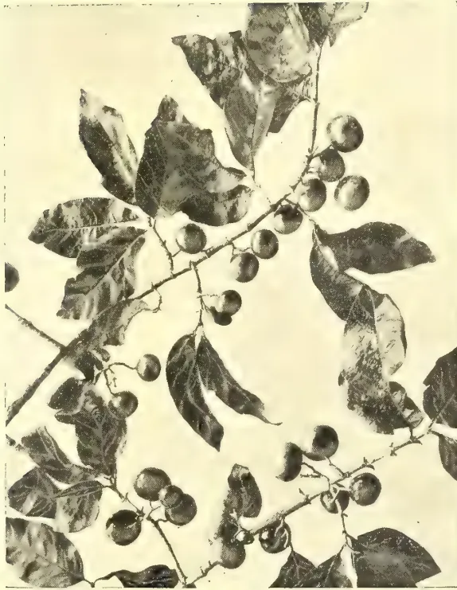
Vide page 112.
Photo by H. F. Macmillan.
VOA VANGA
This image is a scan of a blank page. The paper has a light cream or off-white color with a slightly textured appearance. There are a few very small, faint dark spots scattered across the surface, which appear to be scanning artifacts or minor imperfections in the paper. No text, lines, or other markings are present.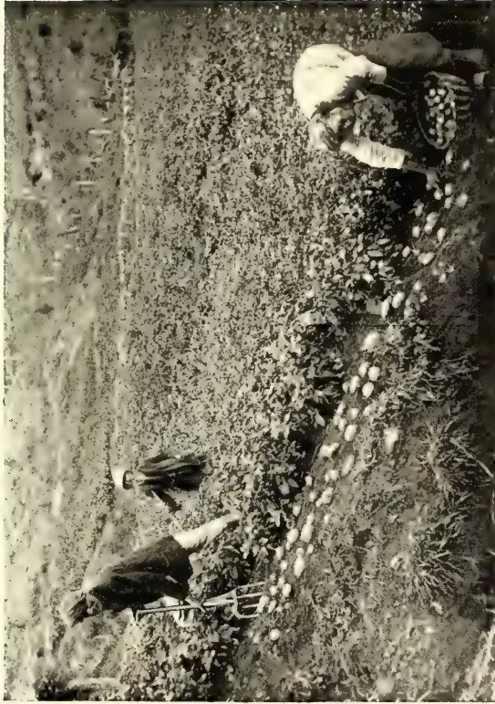
A black and white photograph showing two people working in a field of potato plants. One person is kneeling and picking potatoes, while the other is standing nearby. The field is filled with rows of potato plants, and the ground is covered with soil and some harvested potatoes.Photo by H. F. Macmillan.
POTATO CULTIVATION IN CEYLON.
This image is a scan of a blank page. The paper has a light cream or off-white color with a slightly textured appearance. There are a few very small, faint dark spots scattered across the surface, which appear to be scanning artifacts or minor imperfections in the paper. No text, lines, or other markings are present. FEBRUARY, 1912.]113Edible Products.taste them could not help contrasting them with the inferior potatoes obtainable at the local markets and boutiques.
Few planters know better than Mr. Kellow how to achieve success in the cultivation of upcountry products, but that he has succeeded in obtaining a yield of over 1,300 per cent (i.e., over fourteen fold) in the field of potatoes referred to is, for Ceylon, a specially gratifying result. Many of the tubers weighed over 2 lb. each.
H. F. M.
BY J. MONTGOMERIE HATTRICK,
F.H.A.S., N.D.A.
Botanically, all cultivated varieties of Banana belong to the family Musaceæ. Of the known varieties, only three are cultivated for commercial purposes in Queensland, namely:—
The first, the Cavendish, is the one most universally grown in Queensland. It is a Chinese variety of relatively small habit, and for this reason is usually closely planted, say 12 to 16 feet apart each way.
The other two varieties, Lady's Finger and Sugar bananas, are both strong-growing, and must be planted from 20 to 25 feet apart each way. So luxuriant is the growth in many cases with these strong growing varieties, that one marvels at the amount of vegetable matter produced on an acre of land, and viewing it with the eye of a scientist, it very soon ceases to be a matter for wonder, that the soil under bananas becomes so rapidly exhausted of available plant food.
The variety chiefly grown in the West Indies and in Fiji is the Gros Michel. In the latter Colony it is largely used as a shade-bearing plant in young cocoa plantations, giving at the same time a regular revenue until the cocoa trees come into bearing.
The essentials to successful banana cultivation are:—
Conditions (1) and (2) are, if the bananas are to be grown without irrigation, found only in the tropics. (3)
Absence from storms, cannot be obtained anywhere, nor is it always possible to select spots sufficiently well sheltered, but as the plants are so liable to damage by high winds, this point should always, as far as possible, be borne in mind when selecting a site for a banana plantation. (4) A rich alluvial or volcanic soil is essential, and if drainage be not good naturally, it should be made so artificially.
Data on the optimum quantity of humus in a soil for bananas are difficult to obtain, but there is not the slightest doubt that the presence of abundant humus is very essential. The writer is firmly convinced from his observations, and from the results of his experiments in Queensland, that in the tropics, and particularly on soils devoted to bananas, and also pineapples, the organic matter becomes very rapidly depleted; and mineral artificial fertilisers used alone, while supplying abundant plant food, will fail to give such profitable returns as organic artificial fertilisers such as dried blood, meat works refuse, etc., for the simple reason that they tend, when used alone, to alter for the worse the physical condition of the soil, while the organic manures tend to improve it, in addition to supplying the essential plant foods.
The cultivation of the banana for commercial purposes in Australia is practically limited to Queensland, and even there the area devoted to it is, as the following figures will show, relatively small when compared with the 44,325 acres under this crop in the West Indies in 1905.
| Year. | Acres, | Average bunches per Acre. |
|---|---|---|
| 1906 | ... 5,163 | ... 260 |
| 1907 | ... 4,975 | ... 302 |
| 1908 | ... 4,647 | ... 355 |
| 1909 | ... 4,994 | ... 280 |
| 1910 | ... 5,198 | ... 217 |
On these figures the area under the crop has been practically stationary for the last five years. Indeed, if one goes further back, it is seen that the area has actually diminished by almost 20 % since 1903.
The reason for this is to be found partly in the system of working. The districts best suited to bananas in Queensland lie in the North, where the lands are held by whites, but leased to Asiatics, chiefly Chinese, who in cultivating the banana do not display the skill usually associated with their cultivation of other crops, for the simple
15 Edible Products.114[FEBRUARY, 1912.reason that they do not care whether the land becomes exhausted or not. As they only rent the land, a piece is usually roughly cleared, planted with bananas, and as soon as the plants cease to bear profitable crops, the block is abandoned by the Chinese or Asiatic tenant, who moves to a fresh piece of land.
Other factors, which tend to retard the development of banana cultivation in Australia, are:—
(1) The fact that black or coloured labour is now prohibited in Australia.
(2) The recurrence, particularly in the districts best suited for the growth of the banana, of cyclones or hurricanes.
(3) Transport difficulties.
(4) The limited nature of the market.
All bananas produced in Australia must be marketed in that country, of which the total number of inhabitants does not yet exceed 5,000,000.
In spite of these limiting influences, so important is the cultivation of the banana to Queensland (121,075 bunches produced in 1910) that the best means of maintaining the fertility of banana lands has been the subject of careful scientific investigation, and it has been established beyond doubt that banana plantations need not be abandoned, but by suitable cultivation and manuring may be maintained indefinitely in highly profitable production.
What is possible in Australia holds good also elsewhere, and the writer hopes that by applying the lessons of the present article in the West Indies and other banana-producing lands, results of manuring at least as favourable as those obtained in Queensland may there also be achieved.
Reference has already been made to the very luxuriant growth of the banana. To the practical planter there is no need to emphasise the point, as he is only too familiar with the enormous masses of vegetable matter produced. By the thoughtful, however, valuable conclusions may be deduced when going through a plantation of any age and viewing the bulky masses. Here one sees the plant in all stages of development, from the tender sprouting sucker to the stem which, its function fulfilled, i.e., its fruit produced, lies rotting on the ground, apparently useless, yet a veritable museum of cell forms in the study of which no microscope is necessary, and which from this view point alone, is worthy the most careful attention.
But apart from its purely scientific interest, what does all this teach? Consider for a moment the extraordinarily rapid growth of the plant, its abundant and enormous leaves, the huge cells so easily visible in the decaying plants, the fact that one may commence cutting fruit nine months after the suckers are planted, and that once commenced, fruiting is practically continuous.
Surely this indicates that the banana is not a plant which can slowly absorb the mineral matter it requires from a reluctant and unkindly soil. Rather must it have its manurial ingredients in abundance, and in an easily available form. And this is completely borne out by the known facts. In the data published by Mr. J. C. Bruennich, Agricultural Chemist to the Government of Queensland, one of the most striking points is that chemical analyses of virgin and worn-out banana lands have shown the so-called exhaustion of their available plant food, e.g.—
(a) In Virgin State. (b) Exhausted by 20 years' cropping.
| Soluble in HCl of S.G. |
Soluble in 1% Citric Acid Solution. |
Soluble in HCl of S.G. |
Soluble in 1% Citric Acid Solution. |
|
|---|---|---|---|---|
| % | % | % | % | |
| Potash K2O | ·109 | ·0400 | ·067 | ·0035 |
| Phosphoric Acid P2O5 |
·255 | ·0142 | ·338 | ·0034 |
| Lime CaO | ·450 | .. | ·180 | .. |
| Nitrogen N. | ·560 | .. | ·292 | .. |
From the figures it is seen that in this particular instance the exhausted land contained less than 1/10th the available potash, and not quite th as much available phosphoric acid as the similar virgin soil. Small wonder indeed that the worn out land no longer gave profitable banana crops. The full significance of these figures can, however, only be grasped by studying them in conjunction with the actual food requirements of the plant, as indicated by its chemical composition. The writer is indebted to the same authority for the following figures calculated from his
Lbs. of Plant Food. (Average of 3 varieties, "Lady's Finger," "Cavendish," and "Sugar")
| (a) In Plants per Acre. |
(b) In bunches per acre. |
(c) Total per acre. |
|
|---|---|---|---|
| Pure Potash K2O | 193·6 | 77·38 | 271·48 |
| Phosphoric Acid P2O5 |
14·0 | 8·52 | 22·52 |
| Lime CaO | 99·0 | 3·15 | 102·15 |
| Nitrogen N | 55·8 | 28·74 | 84·54 |
Nothing could well be more striking than the enormous quantity of potash
FEBRUARY, 1912.]115Edible Products.in both the plants and fruit as shown by these figures. Considering the fruit alone, which is, after all, the only part of the plant really lost to the soil, it is seen to contain more than twice as much pure potash as all the other manurial ingredients put together.
Surely it is then small matter for wonder, when this relatively enormous quantity of potash must be absorbed by the plant in a few months, that banana cultivation must be abandoned as soon as the soil has been depleted of its readily available plant food, because not only must the plant absorb all the manurial constituents contained in the fruit, but also the large quantities of these substances required to build up the plant body itself. Taken together, the quantities of manurial ingredients in plant and fruit are enormous, and they must be present in the soil in readily available form if the quickly growing plant is to produce fruit at all, and here in a nutshell we have the secret of the rapid exhaustion and consequent abandonment of even the richest and most fertile banana lands.
But need these lands be abandoned? Is it not possible in the case of bananas, just as with all other crops, to return to the soil the plant food constituents removed and to maintain indefinitely the productiveness of the plantation?
These questions have been most emphatically answered in the affirmative, wherever exact scientific experiments on manuring of bananas have been carried out.
In Queensland the experiments carried out under the direction of Mr. J. C. Bruennich, Chief Agricultural Chemist, have all been planned with the object of finding out the most suitable combination of artificial fertilisers. Mr. Bruennich had evidently been so firmly convinced from his preliminary investigations, that only a complete manure would meet the case, that he has not thought it worth while including incompletely manured plots in any of his experiments.
The trials arranged by the writer in Queensland were, however, simpler and designed in the first place merely to demonstrate to the planters the need for a complete manure, and more than anything else, the necessity of including Potash in their mixtures.
For this reason, the essential feature of the plan of each experiment was that one plot received a certain mixture of artificials furnishing phosphoric acid and nitrogen only, while another plot received in addition to the same quan-
tities of phosphoric acid and nitrogen, a certain quantity of potash.
Other things being equal, the difference in yield between two such plots, gives the increase due to the potash.
As the local conditions under which the Queensland experiments were carried out, varied very much, it was thought advisable to modify the dressings accordingly, and for this reason, it seems better to state the results of each individual experiment separately, in the first place, before grouping all experiments together with a view to arriving at an average result.
The following table gives a summary of the results, not only of the Queensland experiments, but also of two experiments carried out in Fiji, one of which was an official experiment of the Department of Agriculture.
A study of this table will show that in every case the planters have received very handsome returns for the money spent on potash. The net profits are in each case calculated from the value of the crop as stated by the experimenter from the ruling market price on his plantation in the year in which the experiment was carried out. The figures therefore, afford a very fair criterion of the returns to be expected from the judicious use of potash manures. Averaging all the figures, one arrives at the very interesting result that for every 1/ spent on potash, the planter received 6/ in return.
The results of the official experiments of the Queensland Department of Agriculture, have not yet been published. The basis of the complete manure used in these experiments, is, however, equivalent to the following dressing:—
| per acre. | |
| 1½ cwts. | Sulphate of Potash |
| 4 " | Superphosphate |
| 2 " | Sulphate of Ammonia |
Mr. J. C. Bruennich in his Annual Report for 1910, says:—"We find that Cavendish bananas, which are the best croppers, remove yearly, 123 lbs. potash in the fruit alone. Our figures agree very closely with some given by Professor Hilgard, who found 63·1% of potash in the ash of the fruit, and 27·6% in the ash of the leaves. The amount of potash we supplied in our manuring experiments, is, therefore, not sufficient, and should be nearly doubled."
Many of the Queensland experimenters also reported that they considered the dressings given in the writer's experiments were insufficient and from the results of all the experiments, as well as from Mr. Bruennich's data, everything points to the following as a very suitable
(Continued on page 117.)
Edible Products.
116
[FEBRUARY, 1912.
RESULTS OF FERTILIZER EXPERIMENTS ON BANANAS.
| Experimenter and Address. | No. of Plot. | Fertilizers applied in Cwts. per Acre. | Yields per Acre. | Value of Increase due to Potash. | Cost of Potash. | Profit due to Potash. | REMARKS. | |||||
|---|---|---|---|---|---|---|---|---|---|---|---|---|
| Sulphate of Potash. | Superphosphate. | Sulphate of Ammonia. | Bananas Dozens. | Crop Increases per Acre. | Dozen. | |||||||
| (a) Over Unmanured. | (b) Due to Potash. | |||||||||||
| 1. J. T. WILSON, Woombye, Q. |
1 | — | — | — | 1500 | — | — | — | — | — | — | On sandy loam near sea level, 2 years planted. Variety: Cavendish. Price 1½d. per dozen. |
| 2 | — | (1½concentrated) | 1 | 1690 | 190 | — | — | — | — | £. s. D. 7 1 3 |
||
| 3 | 1½ | 1½ do | 1 | 3000 | 1500 | 1310 | — | £8 3 9 | £1 2 6 | — | ||
| 2. J. T. WILSON, Woombye, Q. |
1 | — | — | — | 1000 | — | — | — | — | — | — | Light sandy loam, well sheltered. Rainfall for year 60 inches. Variety: Cavendish. Price 2d. per doz. |
| 2 | — | 4 ordinary | 1½ | 1400 | 400 | — | — | — | — | 4 5 0 | ||
| 3 | 2 | 4 do | 1½ | 2090 | 1090 | 690 | — | £5 15 0 | £1 10 0 | — | ||
| 3. J. K. MENARY, Woombye, Q. |
1 | — | — | — | 800 | — | — | — | — | — | — | Sandy loam, good, deep, well-drained soil. First crop. Variety: Cavendish. Price 2d. per dozen. |
| 2 | — | 4 | 1½ | 1200 | 400 | — | — | — | — | 6 16 8 | ||
| 3 | 2 | 4 | 1½ | 2200 | 1400 | 1000 | — | £8 6 8 | £1 10 0 | — | ||
| 4. GEO. BURNETT Sec. Fruitgrowers Association. Buderim Mt., Q. |
1 | — | — | — | 1290 | — | — | — | — | — | — | Worn out red volcanic soil, 800 feet above sea level, well drained. Crop at 3d. per dozen. |
| 2 | — | 3 | 1½ | 1480 | 190 | — | — | — | — | 11 17 6 | ||
| 3 | 2 | 3 | 1½ | 2630 | 1340 | 1150 | — | £13 7 6 | £1 10 0 | — | ||
| 5. H. COLLARD, Buderim Mt., Q. |
1 | — | — | — | 2650 | — | — | — | — | — | — | Volcanic soil of good quality, but rather porous, 500 feet above sea level. Crop at 3½d. per dozen. |
| 2 | — | 3 | 1½ | 7300 | 4550 | — | — | — | — | 29 16 8 | ||
| 3 | 3 | 3 | 1½ | 9400 | 6750 | 2200 | — | £32 1 8 | £2 5 0 | — | ||
| 6. J. L. HUNT, Nukuavoca, Fiji. |
1 | — | — | — | 400 | — | — | — | — | — | — | Rich alluvial loam. Experimenter regarded test as very satisfactory, and thought, given favorable weather conditions, it would have been more so. Crop at 1s. per bunch. |
| 2 | — | 3 | 1½ | 400 | — | — | — | — | — | 6 16 0 | ||
| 3 | 1½ | 3 | 1½ | 560 | 160 | 160 | — | £8 0 0 | £1 4 0 | — | ||
| 7. DEPARTMENT OF AGRICULTURE, Nasinu Experiment Station, Fiji. |
1 | — | — | — | % Bunches large small | — | — | — | — | — | — | Large bunches are those over 8 "Hands." |
| 2 | — | 4 | 1 | 25.7 74.3 | — | — | — | — | — | — | Value based on crop at 9d. | |
| 3 | 3 | 4 | 1 | 74.1 25.9 | — | — | — | — | — | — | for large, 6d. for small bunches. | |
| 66.2 33.8 | — | — | — | £6 2 6 | £2 5 0 | 3 17 6 | ||||||
| per Acre | |
|---|---|
| 2½-3 cwts. | Sulphate of Potash (96% pure) |
| 3-4 ,, | Superphosphate (17% water soluble phosphoric acid) |
| 1½-2 ,, | Sulphate of Ammonia (20% Nitrogen) |
Equivalent quantities of phosphoric acid and nitrogen may also be given in other forms, e.g., in the form of organic manures, such as meat works refuse, dried blood, etc. In any case, it is essential, in the cultivation of bananas, to maintain an ample store of humus in the soil, and also to apply at regular intervals dressings of lime.
An important point is the influence of the manure on the size of the bunches.
In Jamaica, "a bunch" is "nine." In Fiji a bunch of eight hands, or over, is a "large bunch," under "eight hands" is a "small bunch." The relative proportion of large to small bunches is of great commercial importance, because the price obtained depends so largely on the size of the bunch.
In the experiment conducted by the Department of Agriculture in Fiji (see Table on page 116), which was planned by Mr. Chas. H. Knowles, an attempt was made to determine the influence of the manure on the size of the bunch. He found that while on the unmanured plot only 25% of the bunches were "large," on the plot receiving phosphoric acid and nitrogen, 74% were large bunches. On the plot receiving potash, phosphoric acid, and nitrogen, 66% were large bunches, and although this proportion is lower than from the plot without potash, the absolute yield was so very much more from the complete manure, that the extra outlay for potash was amply justified.
It is difficult, if not impossible, to lay down hard and fast rules for the manurial treatment of any crop, and the writer would urge all planters who intend using artificials, to test his recommendations by practical trial before adopting them throughout a whole plantation, but there can be no possible doubt that on the lines indicated, and with the ever essential concomitants of lime, humus and good cultivation will profitably increase the crop, while maintaining the fertility of the plantation and the size of the bunch.
THE INDIAN TEA INDUSTRY.(From the Indian Agriculturist, Vol. XXXVI., No. 9, September 1, 1911.)
THE LABOUR QUESTION.—I.So far as the tea industry is concerned there would appear to be no signs of relief in the matter of the labour supply. Each year the labour problem becomes more acute, and while the bulk of gardens are still able to cope with the work most essential to their well-being, the whole position is one fraught with anxiety for the future. Famine in the recruiting districts, when it occurs, gives the industry an opportunity of recouping itself for the annual exodus from the gardens of imported coolies to the waste lands in the vicinity, and short crops also from time to time alleviate the situation. But the constant drain on gardens is greater than the influx, and the position is complicated by high wages, which do away with the necessity on the part of the cooly of working the greater number of the days in the month.
This latter phase is responsible in the non-agreement districts for much of the shortage of labour, and it is only a question of time when gardens in Assam and the Surma Valley will find themselves in the same predicament. At present the Act holds in Assam and its prestige is felt from end to end of the Valley. Coolies who are not actually under agreement or who are at least only bound by Act 13 are deterred from independence of opinion as to whether they should work each and every day or not. And in any case the discipline on these gardens is so long established that until very late years no cooly attempted to sit in his house at his own sweet will. This desirable state of affairs is rapidly altering, and with the threatened withdrawal of Act 6, it is only a matter of a few years before it is done away altogether and the cooly will say frankly that he will work only when the spirit moves him. The interpretation of a cooly's sweet will in regard to his work has been found to be a period just sufficient to earn the few essentials to support life and indulge occasionally in intoxication. If a cooly can live comfortably on Rs. 5 per mensem and fifteen days' work can procure him that amount, it is in the nature of things characteristic to the Orient, highly improbable that he will work an extra day to secure himself an excess wage.
That is the position at the present day in Darjeeling, in the Terai, and in the Dooars, and although coolies in
Edible Products.118[FEBRUARY, 1912.these districts are paid what are very large rates in comparison with Assam and the Surma Valley. The history of individual people will show that they work considerably fewer days in the month in the former than in the latter. The constantly-rising rates in the free districts instead of inducing the labour to work more, only enables it to "sit" more and it is indicative of the hopelessness of the situation that no solution of the difficulty has been found. It is impossible for one garden to hold out against the higher rates, as coolies are naturally attracted to the gardens paying them. The attraction, be it noted, is not that the coolies can earn more, but they can sit more, and this is the crux of the whole position. A garden to get its work done has to support a horde of coolies, the bulk of whom work only when the task is pleasant and the rate high. Combination on the part of employers might help in the circumstances, but it is feared that matters as regards rates have now got beyond control, and since no two gardens are equally affected it is most difficult of accomplishment, especially in view of the general competition for labour which is severe.
In Assam, as already stated, the position is as yet comparatively easy, and by keeping up a large force gardens are enabled to work their land satisfactorily. In the Surma Valley, however, the effect of the Act has already begun to dwindle, and free labour conditions are rapidly being established. At the inception of these, comparative relief as regards labour difficulties is the first conclusion come to by planters. While the relaxation of discipline which it is found essential to make to retain the labour on the garden is succeeded by a dropping daily working muster, the full virtue of ticca work as against the old hazri system are discovered and doubles become the order of the day. It is found that coolies can now be induced to turn out to extra hoeing and extra pruning, and liberal pice to the men bring them to the plucking field in the afternoon when their own work is done.
This is the stage of comparative prosperity through which the free districts have already passed, and it is difficult to believe, on the threshold of what would appear to be a complete solution of the labour difficulty that a district when reaching this stage enters upon a certain downward course. It is the last move on the board and represents the calling up of the reserves. For a time the coolies from sheer habit turns out to work with
fair regularity; and, besides, his cupidity is excited at the prospect of earning money which was unattainable before. Gradually, however, as he finds out that he need not work unless he wishes to and that money is easily come by, he falls back to the Eastern habit of working only sufficient to provide himself with the necessaries of life. These, as has already been pointed out, are unfortunately few, and since what it took 25 days' work to secure heretofore can now be secured in 15 days, the latter represents his maximum month's work.
At this point a gardener endeavours to keep up its working capacity increasing the rate offered for piece work or by decreasing the tasks, and as its neighbours are in the same position as regards labour the enhancement of rates is general. Having once entered upon the downward course it is practically impossible to stay the movement. The coolies clamour for higher and higher rates, and batches move from garden to garden seeking increased wages, not that they may earn more, but that they may be able to idle more. Each increase in rates eventually brings about a corresponding ability on the part of the coolies to work less and yet live, on the fat of the land. The result is not only higher rates all round but a lower standard of work, until, as may be found in Sylhet already, a coolie expects to earn a full hazri, hoeing, for two hours' work.
The above is no exaggerated picture of what is occurring now in Darjeeling, the Terai and parts of the Dooars, and what is history there is surely foreshadowed as regards the Surma Valley and Assam. It will be admitted that rates are rising everywhere, but unfortunately there is no tendency on the other hand for the working capacity of the coolies to rise in sympathy. The case in a nutshell is the difficulty of including the coolies set free from discipline to do a full day's work for a full day's wages, or in other words to earn more than is sufficient for his bare wants. We have seen that to increase the rate of wage has sooner or later the opposite effect, and it now remains to search for some means of inducing the coolies to work more in the course of a month or a year.
Any remedy which has for its foundation the attracting of coolies from one garden to another comes, it is submitted, under the category of rate-raising, for two can always play at the game and the result is eventually competition which benefits no one but the coolies. And as to the benefit to the coolies, if we are to be guided either by economic or altruistic principles, no planter who has
FEBRUARY, 1912.]119Timbers.experience of the Free Labour districts will argue that a cooly is benefited physically or morally by a system which gives him incomparable facilities for idling and indulging in riotous debauch. The heavy drinking, which has become such an evil in the Dooars of late years and which is responsible for the witch-craft cases often resulting in serious bloodshed, if not murder, is directly attributable to the ease with which money is come by in that district. The argument that liquor is the saving of the situation, inasmuch as its consumpt-
ion compels the cooly to spend money which he might otherwise save, thus enabling him to be more independent than ever, is neither worthy of the traditions as regards labour upon which our industry has been built, the trust which we hold from Government, nor of the principles of the British race, if a remedy is to be found for the deterioration of the working capacity of the cooly it must be one that is clean and wholesome, one that can face the light of day and have for its furtherance the support of public opinion.
(From the Agricultural News, Vol. X., No. 241, September 2, 1911.)
Trees, like all other green plants, require light in order that they may produce material for the new growth without which they cannot remain alive. This makes it evident that, where a large number of trees are existing together, the extent to which their requirements are satisfied in the matter of light determines the number that are standing on a unit of area as well as the manner of growth in those which continue to live. The importance of the proper supply of light to trees has been recognized first, in an organised, practical manner, in forestry, and it will be well to give short attention to a recent publication which presents particulars of the latest considerations and results belonging to the subject.
In this Bulletin, reference is first made to the ways in which plants are affected by light. They are influenced by this in the building up of food materials, and it is also responsible for the structure, form and colour of the leaves, and the form of the stem and of the crown of the tree. In collections of trees, as in forests, the growth in height, the rate of thinning out and of natural pruning, the character of the smaller plants growing under the trees, and the vigour of the younger trees, are all matters that are determined by the supply of light. It is the recognition of this fact that has stimulated enquiry into the subject, in order that those responsible for forest work may be in possession of accurate information concerning the light required by trees, when growing together.
It must be remembered that plants are subjected to two kinds of light—direct and diffused, and that the proportion of the former is increased as the equator is approached, while they both decrease in amount with increase of latitude. Height above sea-level also affects the ratio of these two kinds of light: the greater the altitude the less is the amount of diffused light, and the larger the quantity of that which is direct. As far as a plant in any given position is concerned, this is illuminated by light which reaches it in different ways, the kinds being overhead light, which is the strongest, side light, light reflected from surrounding surfaces, and that reflected from the ground. The first of these influences the arrangement of the leaves on the branches, their position, and the manner in which the branches are developed. The side light stimulates the growth of the buds that are borne on lateral branches; its effect is often seen in the development of the branches on the side of an opening in a wood or forest. All these must be considered in relation to the illumination of any individual plant, and attention must be given to the fact, as well, that trees rarely receive the total daylight, for this is lessened in amount by the shading caused by the foliage of the plant itself and by neighbouring trees.
In dealing with the behaviour of different kinds of trees, under varying conditions, regard is had to their tolerance of shade or as it is often termed merely, their tolerance. Trees which endure shade well are said to be tolerant, while those needing full light are termed intolerant. Most trees, even in the tropics, will thrive in full light, particularly if they have grown under this condition from the time of planting out. Diff-
Timbers.120[FEBRUARY, 1912,erent plants, in the open, do not, however, employ the same amount of light; they are enabled to use the quantity that suits them best by placing their leaves in such a position, relative to the source of light, as to regulate the amount falling upon them; or the density of their crowns may be increased so as to produce a deeper shade for the lower and inner branches; or the structure of the leaves may be altered, even, in order to lessen their power of assimilation. Tolerance, nevertheless, is not a fixed quality, in regard to any one kind of tree, since plants may change some of their characters in relation to their environment; while the latter cannot have any effect upon the amount of light which is required inherently.
After treating of these matters, the Bulletin mentioned makes short reference to the work of Lubimenko and of Grafe, which has shown that the amount of assimilation carried on by the leaf is influenced directly by its anatomical structure and by the properties of the specialized portions of the protoplasm (chloroplasts) containing chlorophyll, in their cells. This work has also led to other interesting conclusions, among which is the fact that the regulation of assimilation takes place, in medium diffused light, mainly through the influence of the first-mentioned course, while the properties of the chloroplasts have their greatest effect in light at great and small intensities; and that the latter cause determines the stage at which the most useful amount of assimilation takes place.
Consideration is given to experiments that have been carried out for the purpose of ascertaining the most useful cause of the death, or poor development, of undergrowth in forests and woods. These have shown that the state is not caused by insufficient light alone, but by the competition of the roots of the large trees; the effect of the latter is to lower the water content of the soil to such a degree that the smaller plants are prevented from flourishing. This serves to explain the effects of thinning in closely growing plantations, whereby the lessened competition for water among the roots permits of increased growth on the part of the plants that remain.
As regards the intensity of light needed at different stages of growth, it is a general fact that most trees exhibit tolerance when they are young, and that as they become older they require more light, while the differences between various species in this respect become more marked. The demand for light
also changes with the season; more is wanted for flowering and fruiting than at other times. These matters are such as might be expected when it is considered that an increase in the rate of formation of tissue entails an enhanced rate of assimilation, and thus a greater degree of illumination.
There are several methods of comparing the amount of tolerance exhibited by trees of different species. Among these are observation of the density of the crowns, of the rate of natural pruning and thinning under similar conditions, of the rapidity of the growth, of the ability of seedlings to flourish in the shade, and the determination of the ratio between the height of a tree and its diameter. One of the most useful of these methods is the second, namely, observation of the rapidity with which self pruning of the lower branches takes place. As regards the last, the ratio is usually termed the relative height of the tree; its usefulness depends on the fact that the greater the tolerance of a tree, the less is it likely to increase in height in a manner disproportionate to the rate of growth of its diameter. Thus in the case of trees that have died under shade, the relative height is represented by a comparatively large number.
It will be well to mention the effects of shading on the leaves of plants, as they are given in the work under consideration. In the first place, it causes well-marked changes in the anatomical structure; secondly, as is well known, it prevents the leaves from assuming their natural green colour. Further, shaded leaves show a smaller tendency to the production of a crumpled surface and of hairs, than those in bright light, while the veins of the former are less strongly developed. Lastly, shaded leaves are usually thin and limp, and do not possess the dense structure of those that have received a normal supply of light.
Enough has been said to show that the supply of light to plants is of much importance in relation to their life-history, and that this is the case to such an extent as to influence them in the direction of making changes in their structure in order that they may adapt themselves to the particular circumstances of the illumination in which they have to grow. This importance is being recognized for forest plants, and there is no reason why it should receive less attention in relation to plants, such as cacao and limes, raised in orchard cultivation, and to the proper provision of shade trees for plants growing under artificial conditions.
FEBRUARY, 1912.]121By N. WICKRAMARATNE.
(Deputed to study Lac Culture at the Research Institute, Pusa.)
In a letter to the Secretary of the Ceylon Agricultural Society, Professor Dunstan, who had been reporting on samples of lac produced in Baroda State from the rain tree (Pithecolobium saman) suggested that lac culture might with advantage be introduced into Ceylon in view of the fact that all the principal roads were lined with rain trees. This led to a considerable amount of correspondence on the subject between the Secretary of the Ceylon Agricultural Society, the Government Entomologist, and the Imperial Entomologist of India, which finally resulted in a decision to send an Agricultural Instructor to the Agricultural Research Institute and Agricultural College, Pusa, for a training in lac culture. Having been selected for the purpose, I left Ceylon on the 10th September and reached Pusa after a tedious railway journey on the 18th. I immediately reported myself to the authorities, and began my studies which included a month's practical work in the field and a course of lectures by Mr. Misera, the lac expert, who is first Assistant to the Imperial Entomologist. At the end of the course I passed the examination held on the 19th October entitling me to a certificate which I hold. I would take this opportunity of expressing my thanks to the authorities at Pusa for their courtesy and kindness to me as the first Ceylonese student sent to the College.
It is interesting to note that the word Lac is derived from the Sanscrit 'laksha,' a "lac" meaning 100,000 and refers to the large number of insects that emerge from brood lac.
Lac, or Shellac of Commerce, is a resinous substance produced by a species of scale insect (Tachardia lacca) which lives on the tender branches of certain trees. These insects suck the juice of the bark and secrete the resin. In harvesting lac the branches with resinous incrustations are removed from the trees and the resin is scraped off. This is washed and graded for export. Lac is used in the manufacture of varnishes, paints, lithographic inks; in the preparation of gramophone records, in electrical works, and in numerous other ways.
The residual water in which lac is washed contains a dye which was at one time very highly valued as a red colouring matter, and reckoned the chief product of lac collection. But since the discovery of synthetic dyes it has greatly depreciated in value.
In 1868-9 Rs. 796,655 worth of lac-dye and Rs. 1,168,739 worth of shellac were exported from India. In 1897-8 the export of lac-dye was nil, and the export of shellac was valued at Rs. 11,935,957. The present estimated value of lac annually produced, is, according to the Imperial Entomologist, nearly six crores* of rupees and there is room for very large extension of cultivation before the market will be glutted by over-production.
The systematic cultivation of lac was begun in India only comparatively lately. Before that, lac was a forest product. Brood lac is now sent out from the Agricultural Research Institute, Pusa, to various parts of India and elsewhere, and the demand for the services of trained hands is on the increase. It is satisfactory to find it authoritatively stated that at its present price lac is a remunerative industry, that the present prices are the lowest for eight years, that there is a steady demand and a limited source of supply, and that the price is likely to remain at least where it is probably to advance. The present low market rate is considered to be due to special causes such as overstocking or cornering.
The methods of obtaining lac in India are three, namely:—
(1.) By collecting whenever the trees which bear natural lac yield a crop,
(2.) By inoculating standing trees with brood lac and afterwards collecting the lac from them.
(3.) By inoculating trees specially grown for the purpose.
The following are some of the trees best suited to lac cultivation in India; and as they are found in Ceylon they might be similarly used here:—
| Indian Name. | Sinhalese Name. | Botanical Name. |
|---|---|---|
| Kusum | Kon | Schleichera trijuga |
| Palas | Karanda | Butea frondosa |
| Ber | Masan | Zizyphus jujuba |
| — | Ingasaman | Pithecolobium saman |
Kon lac is considered the best, and the tree is a heavy yielder. Karanda and Masan stand heavy pruning which is necessary for the production of new wood.
* A crore = 10,000,000.
16 Miscellaneous Useful Products.122[FEBRUARY, 1912.Ingasaman does not need pruning to the same extent, since it produces succulent branches practically all the year round which enables two crops of lac to be taken in a year.
The chief point in lac culture is its inexpensiveness. The work takes up comparatively little time, so that it need not interfere with the growers' ordinary occupation. Further, the necessary tools, etc., are cheaply procured or made. Again, only a short preliminary training is necessary.
When we come to consider the possibility of cultivating lac in Ceylon, we have to first compare the climate with that of India. There are three distinct seasons in the parts of India where lac is cultivated, viz., a cold season, a hot season, and rainy season.
Hot winds and a temperature above 100° are injurious to the successful cultivation of lac, while a moderate climate is favourable.
In India lac is cultivated in Assam, Bengal, Central Province, United Provinces, Sindh, Punjab and Behar.
At Pusa, where it has been grown successfully for the last five years for purposes of research and experimental work, the seasons are as follows:—A cold season which begins in October and lasts till the middle of March, a hot season of three months lasting till June, a rainy season from July till the end of September. The average annual rainfall is 45" and the temperature rarely rises above 100 F. Two crops are taken in a year, one called "Kartiki" in the beginning of October (from inoculation done in June and July), and the other called "Baisaki" in June-July (from inoculation done in October) corresponding to our "Yala" and "Maha" seasons.
In Ceylon where conditions appear to be favourable we shall have to determine our own seasons after making trials in several localities. These trials might commence in June next when a consignment of breed lac is expected from Pusa.
The following rough estimate of income and expenditure will give some idea of the financial side of lac cultivation. It is based on a low average yield of 4 lbs. of stick lac per tree and a valuation of 55 shillings a hundredweight of Rain tree seed lac as quoted by Professor Dunstan:—
| Rs. | cts. | |
|---|---|---|
| Cost of inoculating 22 trees (1 man 3 days) ... |
1 | 50 |
| Removing incrusted branches or stick lac from tree (1 man 2 days) ... |
1 | 00 |
| Scraping (1 man 4 days) ... | 2 | 00 |
| Washing (1 man 4 days) ... | 2 | 00 |
6 |
50 |
|
| Yield of 22 trees at 4 lbs. per crop 88 lbs. of stick lac producing 56 lbs. ( cwt.) of seed lac valued at 35 shillings per cwt. ... |
20 | 62 |
| Expenditure ... | 6 | 50 |
14 |
12 |
The expenditure on brood lac will have to be incurred only at the start. The lac collected from the brood lac sticks may come to about 20 lbs. which will cover the cost of brood. To the above, the cost of pruning trees other than the rain tree will have to be added. This will be about Rs. 2. The only other expenditure for a beginner will be the value of a couple of knives, say Rs. 2.
In the above estimate twenty-two trees have been taken as the number that can be inoculated by one man without outside labour while attending to his ordinary work, and the yield as cwt. of seed lac. The value of lac dye is not reckoned.
There are over 3,600 miles of road way in Ceylon, and along most of the roads the rain tree has been planted for shade. Taking 3,000 miles of road and 132 trees per mile (if planted at 40 feet apart) and cwt. of seed lac from 22 trees (one mile of road yielding 3 cwt. of seed lac) the 3,000 miles would give 9,000 cwt. This valuing at the rate of Rs. 40 a cwt. will give Rs. 360,000 and when is deducted for expenses, there should remain a profit of Rs. 240,000. The trees may be leased out in groups of 22 or by the mile.
But, before these estimates can be seriously considered, it is necessary to ascertain by actual trials the feasibility of carrying on lac culture in Ceylon; that is to say to ascertain whether our insular situation and climatic conditions are likely to favour or retard the industry. With a view to securing some definite knowledge on these points, I am submitting to the Secretary of the Ceylon Agricultural Society (1) a proposal to carry out trials under my supervision in the Hambantota district, and (2) a memorandum in which I have indicated full details of the process of lac culture, according to the trees available for the purpose.
FEBRUARY, 1912.]123Miscellaneous Useful Products,SUPPLEMENTARY NOTE ON THE
PROPOSED INTRODUCTION OF THE
LAC INSECT INTO CEYLON.
By E. E. GREEN.
(Government Entomologist, Peradeniya.)
Mr. Wickramaratne's paper gives, in a concise form, a useful account of lac culture in India, and clearly shows that—if established in Ceylon—it should lead to a profitable industry peculiarly adapted to the capabilities of the native cultivator. When once the initial difficulty of introducing the insect shall have been overcome, I see no reason why the culture of lac should not be undertaken successfully in Ceylon. The differences in our climate and temperature are insignificant, though some slight alteration of seasons may have to be adopted. A very closely allied species (possibly merely a local race) of lac insect already occurs in Ceylon. It frequents more especially the 'Kön' tree (Schleichera trigona); but the same species (Tachardia albizziae) occurs—though less frequently—upon the following Ceylon trees:—
| Albizzia stipulata, | 'Kabal-mara'; | (Indigenous) |
| Filicium decipiens, | 'Pehimbiya'; | Do. |
| Croton cro-maticum, | 'Keppitiya'; | Do. |
| Harpullia cupanioides, | 'Na-imbul'; | Do. |
| Mangifera indica, | 'Mango'; | Do. |
| Nephelium litchi, | 'Litchi'; | (Introduced) |
| Theobroma cacao, | 'Cacao'; | Do. |
and, probably, upon many other species. Of the trees mentioned. Schleichera, Harpullia and Nephelium belong to the same natural order (Sapindaceæ), and it is probable that the insect would flourish upon such allied species as Sapindus erectus, S. laurifolius ('Kahapenela'), Nephelium longana ('Mora'), and Doncaca viscosa ('Eta-werella'),—all of which are indigenous plants in Ceylon.
Our Ceylon lac is already utilized locally for the ornamentation of ceremonial staves, native furniture, toys, etc.; but the industry is a very small one, and none of the product is exported. Tachardia albizziae does not produce such a plentiful incrustation of lac as does the Indian form (T. lacca). It is principally on this account that the introduction of the Indian lac insect
is desirable. My attention was early directed to this subject, and repeated unsuccessful attempts have been made to import living lac insects from India. These attempts date from the year 1900. The failure has usually been attributable to delay in transport, resulting in the premature emergence and death of the swarm of young insects.
In July last, however, a consignment of living brood lac, collected from 'Kon trees, was received from the Forest Officer, Raipur Division, India. The insects were just commencing to swarm, and the bundles of encrusted sticks were immediately attached to branches of 'Kon' trees (Schleichera) growing in the Peradeniya Gardens. The young larvæ quickly migrated on to the living branches and formed dense clusters at various points. The clusters, however, gradually decreased in size, and no growth of the individuals was observed. Within two months the insects had completely disappeared. A few sticks were attached—as an experiment—to a 'Peepul' tree (Ficus religiosa) and to Filicium decipiens, with no better result.
I can offer no explanation of this failure. The insects were received in good condition; they were transplanted on to trees of the same species from which they had been collected in India; and the young insects successfully transferred themselves to the living branches and showed good promise of establishing themselves; but no further development occurred. The trees upon which they were placed were infested by 'Red Ants' (Ecophylla), but these ants do not usually prey upon Coccidæ. On the contrary, they are in the habit of conserving such insects for the sake of the sweet liquid that they excrete, and they might have been expected to assist in the distribution of the young lac insects.
But such failures should not be accepted as final. Repeated attempts will surely prove that the difficulties are not insuperable; and the probable benefits of the introduction should outweigh any question of initial expense. It is possible that the proposed efforts to inoculate our 'Inga Saman' trees may be more successful. Should the transport of living insects upon sections of branches be again unsuccessful; it may be possible to import young trees upon which the insects have been already established.
Care should be taken to eliminate the parasites that commonly attack the insect in India, though similar parasites already infest our local lac insect in Ceylon;
124[FEBRUARY, 1912.BY DR. J. C. WHITTEN,
Professor of Horticulture, University of Missouri.
(Fourth Annual Report of the Missouri State Board of Horticulture, 1910.)
The cucurbits, including cucumbers, cantaloupes, melons, etc., have similar requirements, and are all cultivated very much alike. They require a light, mellow warm soil. A sandy loam is best. If grown in a heavy clay loam, it must contain much vegetable fibre in order to make it loose and spongy. They are fairly rank feeders, and the soil should be rich. Indeed, much of the damage done by insects and diseases will not be noticeable if these plants have enough soil fertility to keep them growing rapidly from the start. On the other hand, grown in a poor soil so the plants are weak, it is almost impossible to keep them free from insects and disease. Sod-land turned under is an excellent place for these vine crops.
As a rule, land should not be planted to any of the plants of the gourd family for more than one year in succession. This is particularly true of watermelons. If watermelons are planted more than one year in succession, the grower rarely ever realizes profitable crops. Growing plants of the gourd family then, should be part of a general farm rotation; growing a single crop of the gourds and following this with such crops as corn, wheat and clover. The farmers are finding a good rotation to be melons, or one of the gourd group, corn, wheat, clover and then melons again.
The land should be ploughed in the fall if possible. It should be harrowed and worked carefully in spring from the time it becomes workable until the melons or other gourd crops are planted. This will kill most of the weeds and will settle the soil fine and compact below, leaving a good seed bed on top. The cheapest cultivation that can be given such a crop is the disking and harrowing of the soil by way of preparation before the crop is planted.
None of the gourd crops should be planted until the weather and soil are warm, as none of them will stand frost. Ordinarily in this State, they may be planted during the last half of April or very early in May. They are usually planted in check rows; the distance apart varying from 5 or 6 feet each way for cucumbers to 8 or 12 feet apart for
melons. Perhaps the most convenient method is to cross-furrow the land at the distances suggested above. Where the furrows cross the hills can be made. The earth should be scooped out and a shovelful of manure applied if it is available. The soil is then thrown over this manure so the top of the hill is level with the surrounding soil. Six to twelve seeds should be planted in each hill in order to secure a full stand of plants, and also to give opportunity for selection of the best plants, when the poorer ones are thinned out. When the third or fourth leaf is well developed, the plants should be thinned, leaving four plants to the hill for cucumbers and one or two for melons.
The early cultivation may be fairly deep, while the plants are young, and before their roots begin to spread. Not infrequently early in the season, rainy weather may prevent cultivating until weeds get a start. If the early cultivating is deep, these weeds may be more readily killed if they once get established. Later cultivation should be shallow so as not to break off the roots of the plants, once they begin to spread out between the rows. In order to maintain shallow cultivation, it should be frequent. After every rain, the crust should be broken as quickly as the land can be worked.
Frequent cultivation early lets the spring rains soak into the ground instead of allowing them to wash off from the surface. This enables the grower to store up the early rains of the spring deep into the soil below. The shallow dust mulch maintained on top later in the season saves this moisture in the soil, so it will be available for the plants during the dry weather of July or August.
The most common insect enemy of these crops in this section is the striped cucumber beetle. Usually, this insect may readily be kept in check if the soil is rich so the plants grow rapidly, and if frequent cultivation is given to keep the dust on the surface. The cucumber beetle does not like dust. On small areas, he may be kept down by sprinkling air slacked lime or ashes around the hills and re-applying if after rains have wet it down. In large commercial areas, the growers depend upon soil dust maintained by cultivation to drive the insect out of the field. On a dry day, cultivation may begin on the side of the field next to the wind, when the insect, to escape the dust, will go with the wind
FEBRUARY, 1912.]125Horticulture.across the field. Following up this cultivation will drive the bulk of them off the field entirely. The fine dust maintained on the surface and scattered over the plants will prevent his return until the dust is laid by subsequent rains. As the vines begin to run, cultivation can be continued only in one direction; the vines being laid lengthwise of the cultivated rows.
The gourd crop on thin soils responds to artificial fertilizers. The fertilizer should contain nitrogen, phosphorous and potash. The proportions vary somewhat with the character of the soil. Most of our Missouri soils contain abundant potash for most farm crops. The gourd family, especially watermelons, feed abundantly on potash, however, and ordinarily they will respond well to its application. A mixture that will contain the equivalent of the following will be found adequate to most Missouri soils: 100 lbs. Muriate of potash, 75 lbs. bone meal, and 75 lbs. Nitrate Soda per acre. If desired, the equivalent may be secured through the use of Sulphate of Potash, Acid Phosphate and dried blood. It is more economical, however, to keep up the fertility of the soil by using clover frequently in the rotation. Where barnyard manure is available, no other fertilizer will be needed.
(From the Queensland Agricultural Journal, Vol. XXVII., Part 3, September, 1911.)
Amateurs are often troubled about what fertilisers to use and how much. The most simple way out of the difficulty is to buy a good general garden manure—one that contains the three ingredients of phosphoric acid, potash, and nitrogen. Now as to quantity, in the first place we have to remember that lb. to the square yard is 2,400 lb., or over a ton to the acre, which is such a very heavy dressing that it could only be afforded on small areas and with intense cultivation. Still, lb. seems a small quantity to the novice, who wants to give that much to each plant. This is not only not necessary, but is an almost certain way to kill or check the plants. If the beds are in good order moderate manuring only is required, and if they are not; two or three light dressings are far preferable to one heavy dosing. In fact, it is a standing
rule that plants, like weak children and sick people, are injured, and not strengthened by too much and too strong food.
Many an amateur, in fact, kills his plants with too much strong manure. "I thought I would have a grand crop of lettuces," said a man on the tramcar recently; "I got fine plants and a cwt. of superphosphate, and I put a jamtinful of superphosphate for each plant, but nearly every one died, and the rest are miserable, stunted things." He asked if I could tell him why, and I did. If he had used a small tea-spoonful of the superphosphate for each plant and mixed that with the soil for 6 in. all round, he would probably have obtained the results he wished, especially if he had watered them once a week, as they grew, with weak extract of cowdung or fowl-manure.
It is well to recall the fact that there are 2,240 lb. in a ton, and 4,840 square yards in an acre. Therefore, to apply 1 lb. of manure to a yard is equal to over 2 tons 3 cwt. to the acre. A quarter of a pound to the square yard is over 10 cwt. to the acre, and 1 oz. to the square yard is over cwt. to the acre. It may be roughly stated that it will not be wise to go beyond lb. to the square yard of any artificial manure at one application, and 1 oz. to the square yard of sulphate of ammonia, nitrate of soda, or potash is as much as anyone ought to use.
It must be remembered that the condition of the manure is a very important consideration in deciding how much may be applied. Thus bonedust treated with sulphuric acid is bone superphosphate, or the "dissolved bone" of English writers, and the difference is that in the latter case the phosphate of lime is rendered soluble in water and there is free sulphuric acid present. Now, we might apply 10 tons of bonedust to the acre of cabbages without injuring them. We would simply be wasting the bonedust, but if we applied 10 tons of superphosphate our crop would in all probability suffer. So in the case of stable, cow, sheep, or fowl manures. Too heavy dressings of these substances applied fresh are injurious, but if they are thoroughly well rotted and rendered mellow with age they can be applied in almost any practicable quantities. Then, again, some crops are gross feeders, and will thrive in manure which would kill more delicate plants.—"Garden and Field."
126[FEBRUARY, 1912.BY E. ERNEST GREEN,
Government Entomologist.
GENTLEMEN,—I have been asked to address you, this morning, on the subject of "Bird Life and its Effect on our Industries." This is a rather wide subject—if taken literally. But I believe that I shall meet your views by interpreting the word 'industries' as limited to the planting industries of Ceylon: and, from the report of your previous meeting, I gather that the question has arisen more particularly with regard to the presence or absence of Grevillea trees on your estates.
It is certain that the more trees you have about the place, the larger will be the number of birds that will frequent the neighbourhood. It is only a few of the smallest species of birds that can find congenial cover in an area of low-growing tea bushes, and even these species prefer to nest in larger trees where they are less liable to disturbance.
But if there is any special objection to the Grevillea tree, from the planting point of view, there are other trees that would serve the purpose of the birds and of the planter at the same time. The 'Dadap' tree (for instance), while affording grateful shelter to bird life, and providing a rich store of nitrogenous material for the benefit of the tea, is not liable to generate the root diseases that occasionally spring from decaying Grevillea stumps. If the Dadap is unsuited to this elevation, there must be various species of Accacia that could take its place.
In the 'Yearbook of the United States Department of Agriculture, 1909,' there is a paper on "Plants useful to Attract Birds and Protect Fruit." This paper opens with the statement that "Birds play a very important part in the economy of nature, and by their destruction of insects lend material aid in keeping the balance true. Both the farmer and the orchardist are greatly indebted to birds for the destruction of insects and weed seed, and nowhere is the nature and extent of this indebtedness more fully appreciated than in the United States." Though the paper has been compiled to meet the requirements
of the American Agriculturist and many of the recommendations are impracticable in Ceylon, I may quote a few extracts that are of more general applicability:—
"It should be borne in mind that smoothly trimmed hedges and the stiff trees of a formal garden are not nearly so attractive to birds as untrained bushes and tangled thickets." On the ground that most insectivorous birds refresh themselves with a certain amount of fruit and are consequently attracted by trees that produce edible fruits and berries, the writer gives a list of berry-bearing trees suitable for cultivation in America. With the exception of the Mulberry tree, this list would be of no use to us in Ceylon. But there are many wild shrubs that might be allowed to remain in ravines and waste land to attract our local birds. Lantana berries are much sought after by bulbuls which are also very useful destroyers of small insects. The Lantana plant requires no encouragement and may perhaps be considered a troublesome weed. But we have another and equally attractive shrub that is not open to these objections. Its scientific name is Debregeasia and it is known to the Sinhalese as 'Gas-dul.' It flourishes naturally in every ravine and may be recognized by its narrow willow-shaped leaves (greyish beneath) and the coral-like orange berries that cluster thickly along the stalks of the plant.
It is impossible to estimate even approximately the benefits that we derive, directly or indirectly, from the activities of the familiar birds of the country. It is only when—through gross ignorance or mistaken ideas of economy—they have been destroyed or driven away, that their services are properly appreciated. Much attention has been drawn to this subject, recently, in European countries. Amongst other Societies, the Brent Valley Bird Sanctuary Committee has been active in encouraging and protecting birds on the borders of London. This Society has devised various ingenious nesting boxes which are attached to the trees to attract tits, nutnatches and other insectivorous birds.
It is not only the purely insectivorous birds that are useful to us. Many birds prefer a mixed diet of fruit, seeds and insects. Such might perhaps be considered doubtful friends to the agriculturist: but it is probable that they pay well for their board and lodging by their assistance in checking insect pests,
FEBRUARY, 1912.]127Plant Sanitation.It is especially at the breeding season, when their nests are full of clamouring youngsters, that such birds turn their attention to insects.
I have recently read a note describing how, in one of the European countries (Hungary, I believe), the sparrows and other small birds had been exterminated under the mistaken idea that they did more harm than good. As a result, insect pests increased to such an alarming extent that measures are now being adopted, at vast expenses, to reinstate the feathered friends of the farmers.
With the possible exception of the pigeon tribe nearly all frugivorous and graminivorous birds vary their diet with insects. The case against the much-abused sparrow is still an open one. There is no doubt that the vast flocks of sparrows that abound in England do an enormous amount of harm in the harvest fields, and still more—indirectly—by their pugnacious habits which tend to drive away the more strictly insectivorous birds. The sparrow may be of great value in countries where grain crops are not cultivated, or where there may be an insufficient natural provision of more useful species. But in Ceylon, where Passer domesticus is an alien and we are blessed with many insectivorous birds, its increase should be sternly discouraged. I suppose there is no country in the world to which the common sparrow has not been introduced—usually unintentionally. It makes itself at home on shipping and travels freely from port to port. The date of its original appearance in Ceylon is lost in obscurity. It probably came over 'with the Conqueror'—or one of them. Our local race is believed by Legge to have invaded us from the Indian Continent. Considering the number of years that it must have been with us, it does not appear to have increased so rapidly as might have been expected. Possibly beasts and birds of prey may find it more easy of capture than are the indigenous birds that have learnt the ways of their enemies by the experience of countless generations. I am inclined to think, however, that the sparrow shows signs of decided increase in parts of the Uva Province. I have noticed comparatively large flocks of them, when coaching from Bandarawela to Badulla. The multiplication of a new introduction may be very slow at first but, with an inherently dominant species, a stage may arrive when the prolificness of the species exceeds the wastage and there is then no efficient check to its rapid increase. If this should happen in Ceylon, the sparrow might become a serious menace
to rice cultivation. With this view, it would be wise to check the further increase of these birds, by destroying their nests at every opportunity.
I should not advise such action in the case of a truly indigenous species, however obnoxious it might appear. In matters of the distribution of fauna, nature knows her own business better than we do, and artificial interference with her methods is often followed by unexpected and disastrous consequences. The wholesale destruction of hawks and owls has been known to result in a devastating plague of field mice.
The introduction of new birds, however innocent they may appear to be, should not be permitted without careful consideration by experts, and should certainly not be left to the caprice of the individual. A notable instance of mistaken action of this nature occurred in the Seychelles, within comparatively recent years. At one time, rice and grain of various kinds—sufficient to support the population—were grown in the Islands. Birds, especially pretty birds, were somewhat scarce; so some æsthetically inclined individual thought that he was conferring a benefit upon the community by importing and liberating a small flock of 'Cardinal finches' from Madagascar. This beautiful flame-coloured bird flourished exceedingly in its new home and increased enormously in numbers. Being exclusively a grain feeder, it soon worked such havoc that, for many years, the cultivation of rice has been completely abandoned. Formerly, the Islands were self-supporting in the matter of rice. Now, every bushel of rice that is consumed in the place has to be imported.
To return to beneficial birds, fresh knowledge of insectivorous habits is constantly being accumulated. The British Grouse, at one time believed to feed exclusively upon heather, is now known to consume enormous numbers of insects during the summer months. Young grouse are said to live almost entirely upon insect food. Even the smaller hawks and owls are large consumers of insects, especially of beetles and caterpillars. In Ceylon, every bird that flies takes toll of the winged termites which appear, at times, in such prodigious numbers. Kestrels have been observed catching the large cockchafers whose larvæ are sometimes so destructive to the roots of plants. When investigating an outbreak of the 'Spotted Locust,' an animal that, from its brilliant colouring and evil smell, might be expected to be most nauseous,
Plant Sanitation.128[FEBRUARY, 1912.and is certainly avoided by most birds—I was informed by a careful observer that numbers of a large hawk (species undetermined) appeared at the time of the swarms and fed upon the locusts. Kingfishers also vary their diet with beetles of many kinds. The thrush tribe, though sometimes condemned for their partiality to fruit, pay for their dessert by their incessant war against slugs and snails. Cuckoos and their cousins the 'Coucals' (of which our 'Jungle' or 'Pheasant Crow' is a familiar example) devour large numbers of caterpillars as a set-off against their nest-robbing habits. I can remember shooting a cuckoo, in the days when Ceylon was rejoicing in the Cinchona boom, and finding its stomach packed with the huge green caterpillars of the 'Cinchona hawk moth.' The Ceylon Crow has, on more than one occasion, proved a blessing to tea planters in the Kelani Valley districts. When 'Nettle Grub' was ravaging these estates, daily flights of crows used to arrive, each morning, from Colombo, to gorge upon the caterpillars. I have been told that many of them became so replete that they could scarcely fly. A similar immigration of crows was observed during a plague of 'Lobster' caterpillars in the Kalutara district.
To list all the species that are known to feed more or less upon insects in Ceylon would be almost equivalent to compiling a catalogue of the birds of the Island. I must content myself by mentioning only some of those that are more exclusively insectivorous.
It will be unnecessary for me to specify the individual names; nor will you be particularly interested in the correct scientific names. I here give a list of the number of species of the birds that devote themselves more particularly to an insect diet, arranging them in families by their popular names:—
| Woodpeckers, | ... | 10 species. |
| Cuckoos and Coucals, | ... | 15 " |
| Trogons, | ... | 1 " |
| Hoopoes, | ... | 1 " |
| Rollers, | ... | 2 " |
| Bee-eaters, | ... | 3 " |
| Swifts, | ... | 6 " |
| Nightjars, | ... | 4 " |
| Shrikes, | ... | 6 " |
| Minivets, | ... | 2 " |
| Drongos, | ... | 5 " |
| Flycatchers, | ... | 10 " |
| Robins, | ... | 5 " |
| Thrushes, | ... | 8 " |
| Bulbuls, | ... | 10 " |
| Warblers, | ... | 15 " |
| Tits, | ... | 1 " |
| Nuthatches, | ... | 1 species. |
| Sunbirds, | ... | 4 " |
| Flower-peckers, | ... | 3 " |
| White-eyes, | ... | 2 " |
| Swallows, | ... | 4 " |
| Wagtails, | ... | 4 " |
| Pipits, | ... | 3 " |
| Wood Swallows, | ... | 1 " |
| Painted Thrushes, | ... | 1 " |
This makes up a total of 137 distinct species of birds ready to assist the agriculturist in the task of keeping the teeming insect world within reasonable bounds. Some of the species that I have included in my list are extremely rare, and others are confined to particular localities, but it is probable that at least half of them may be found within the boundaries of the Uva Province.
Although, as I have said, it is difficult to estimate the exact debt that we owe to the agency of birds, we know enough to assert, with confidence, that a country without birds would be a desolate country indeed. Every green thing would soon be devoured by the hordes of insects that would multiply without hindrance, and man himself would soon be driven from the desert that would be evolved.
(From the Nature No. 2195, Vol. 88
November 23, 1911.)
The effect to secure national legislation to keep out new and dangerous insect pests or plant diseases which may be brought in with imported nursery stock has been actively favoured by the U. S. Department of Agriculture, just as the department in the past has promoted and secured legislation enabling it to exclude from the country diseased animals or to quarantine and stamp out animal diseases whenever such have appeared. In the case of domestic animals, the exercise of these powers has brought enormous benefit, and has worked entirely satisfactorily to the live stock industry. It is reasonable to believe that like benefits to fruit and forest interests, including the nursery business, will undoubtedly come from similar legislation to exclude insect pests and plant diseases.
The immediate danger which led to the recent effort to secure legislation was the discovery in 1909 of the abundant importation and wide distribution into the United States of nursery stock infested with brown-tail moth nests and occasional egg masses of the gipsy moth. During the year 1909 and 1910 such
FEBRUARY, 1912.]129Plant Sanitation.infested stock was carried into twenty-two States, covering the country from the Atlantic seaboard to the Rock Mountains. During the first of these years no fewer than 7,000 winters-nests of the brown-tail moth, containing approximately 3,000,000 larvæ, were found in shipments into New York State alone—seed material enough to infest the whole United State within a few years. During the second of these years 617 of these nests were found on nursery stock shipped into the State of Ohio, and a much larger number, approximately the same as the year previous, were again sent into New York. Smaller numbers of these nests, proportioned to the amount of nursery stock received, were sent into other States east of the Rocky Mountains during both these years. Fewer brown-tail moth nests were received during the season just ended (1910-11), owing to the agitation in this country and more strict supervision by foreign Governments.
So far as possible, this stock, as voluntarily reported by customs officers and railroads, has been examined and the brown-tail nests removed or destroyed by State authorities, or, where these were not available, by agents of the Bureau of Entomology of the United States Department of Agriculture. Undoubtedly many shipments have not been reported or examined, and it is quite probable that local infestation has already started at different interior points. The history of both the gipsy and brown-tail moths in New England shows that these insects may be present for several years without being noticed, slowly again headway, and then suddenly develop their full power of destructiveness.
It is scarcely necessary to comment on the danger from the careless introduction and wide distribution of these two orchard and forest pests. In a limited district in New England more than a million dollars a year have been spent for a long period in a mere effort to control these two insects, and the General Government is now appropriating three hundred thousand dollars annually to endeavour to clear them from the border of main high ways and thus check their spread. These expenditures do not take into account the actual damage done, but they do serve as a measure of the danger to the whole country from the recent distribution of these two insects on imported nursery stock.
As further illustrations of the constant risk from lack of legislation may be mentioned two very recently introduced
insects which will undoubtedly prove very expensive pests in future years. The European alfalfa leaf-weevil, on the authority of the entomologist of the Utah Experiment Station, Mr. Titus, was probably brought into Utah on packing of nursery stock or other merchandise from Europe. This leaf-weevil has already destroyed much of the value of the important alfalfa crop of Utah, and is spreading into adjacent States. The other illustration is the Oriental cotton scale (Pulvinaria psidii), probably the worst scale pest of citrus and other subtropical plants in Southern Asia. This scale insect has recently been introduced into Florida on imported stock, and is already well established there.
New plant diseases, against the entrance of which there is at present no bar, may even more seriously jeopardise the farm, orchard and forest products of this country. Imported potatoes from Newfoundland are now bringing in the potato wart disease, which wherever it has been introduced in Europe, and also in Newfoundland, puts a stop to potato culture. The importation of white-pine seedlings is now bringing in the European white-pine blister rust, which, if established and disseminated, will destroy much of the value of our white-pine forests. Absolute quarantine against these two plant diseases is the only means of keeping them out. The chestnut disease, now practically shown to have been introduced on trees imported from Japan, illustrates what may quickly happen from such unchecked introductions.
More than half of the important insect enemies and plant diseases now established in the United States have been brought in on imported nursery stock, and new insect enemies and new diseases are being thus introduced every year. Twenty different insect pests, new to the United States, some of them very formidable in the Old World, have been intercepted in the inspections of the imported material by this department this year, and this does not include the introduction of brown-tail moth nests and other European pests with imported seedling stock.
A properly enforced quarantine and inspection law in the past would have excluded many, if not most, of the foreign insect enemies and plant diseases which are now levying an enormous annual tax, amounting to several hundred million dollars, on the products of the farms and orchards of the United States.
17 Plant Sanitation.130[FEBRUARY, 1912.In spite of the many pests which have already gained foothold and the control of which will be a permanent annual charge on production, there remains many other insect pests and plant diseases with equal capacity for harm which, fortunately, have not yet come in; and it is to protect from these new dangers that legislation is now sought, not with the intention of prohibiting the trade in imported stock, but to throw such safeguards around it as will most protect both the importers and the subsequent purchasers of such stock.
The insect pests and plant diseases that have come in are probably here for all time, but certainly no reasonable objection can be made to the effort to safeguard the future. The conscientious importer will be benefited, and the home producers, the dealers, and all the great fruit and forest interests will be protected by suitable inspection and quarantine legislation.
The San Jose scale had become established in California on stock introduced from China about 1870, and was known to be one of the most serious of orchard pests. With proper supervision and quarantine it undoubtedly could have been limited to the Pacific Coast indefinitely. A quite unimportant importation of stock from California by a prominent Missouri nurseryman in the early nineties established this scale in several eastern nurseries, and this led to the first concerted effort to obtain a national quarantine and inspection law. The failure to reach an agreement among the nurserymen, fruit-growers, and entomologists as to suitable legislation prevented anything coming from this effort, although several Bills were introduced in Congress from time to time. In the meantime, the San Jose scale became so widely distributed by transportation on nursery stock that quarantine against this insect was no longer practicable; and the United States is now being taxed, and probably will be for all time, many million dollars annually because there was no law under which stronghold could have been taken of this danger at the outset.
As elsewhere noted, the recent effort to secure legislation followed the entry and wide distribution in the United States of brown-tail moth nests on nursery stock, chiefly from northern France. The discovery about the same time of the entry of the potato wart disease from Newfoundland, and the white-pine blister rust, chiefly from one district in Germany, greatly emphasised the immediate need for Federal control.
In the measure now before Congress, inspection of imported nursery stock is left to the different States instead of being undertaken by the Federal Government. A complete system of notification is provided for, however, both through the requirement of a permit and by subsequent advices to be given by the customs offices, the broker or first receiver of the stock, and the common carrier transporting it.
The first clause of the Bill is as follows:—It shall be unlawful for any person, firm, or corporation to import or offer for entry into the United States from any foreign country any nursery stock unless, until a permit shall have been issued therefore by the Secretary of Agriculture, under such conditions and regulations as the said secretary may prescribe, and unless such nursery stock shall be accompanied by a certificate of inspection in manner and form as required by the Secretary of Agriculture from the proper official of the country from which the importation is made to the effect that the stock has been inspected and found free from injurious plant diseases and insect pests: Provided, That this section shall not be construed as applying to plants or plant products solely intended for and adapted to use as food, but to nursery stock or other plants or plant products for propagation: Provided further, That nursery stock may be imported for experimental or scientific purposes, without the certificate of inspection or the permit of the Secretary of Agriculture hereinbefore required, upon such conditions and under such regulations as the Secretary of Agriculture may prescribe: And provided further, That nursery stock imported from countries where no official system of inspection for such stock is maintained may be admitted upon such conditions and under such regulations as the Secretary of Agriculture may prescribe.
One clause in the Bill makes provision for quarantining foreign districts or particular plant products in foreign district to exclude diseases or insect enemies which cannot otherwise be kept out. This is the provision which has been most objected to by importing nurserymen, and especially by importers who have invested in foreign nursery enterprises in France. It is not the intention to apply this section except in the case of diseases or other dangers which cannot be kept out by inspection or disinfection; in other words, at present it would apply only, so far as is known, to the potato wart disease and the white-pine blister rust.
FEBRUARY, 1912.]131Live Stock.Another clause provides for quarantining districts within the United States where new diseases or insect enemies
have gained a foothold until such districts have been freed from such diseases or insects.
(By P. A. V.)
It may not be a matter of common knowledge that keeping poultry helps to bring about the improved fertility of the surrounding land. It may strike one as impossible; and no wonder since no systematic attempt is made in this country to conserve poultry manure and apply it on the land. But there can be no doubt that this is so as will be evident from a perusal of the interesting Report of the National Poultry Organisation Society of Belgium compiled by Mr. Edward Brown, F.L.S., and published not long ago. Mr. Brown has met with the most noticeable proof of this in what is known as the Campine District which at one time was an arid, sandy plain, covered with fir-trees and incapable of cultivation. But it appears that poultry-keeping was taken up by the peasants thirty years ago on a somewhat extensive scale and by the careful utilisation of the manure produced, much of the land has been so enriched that it has been brought into use for market gardening. Signs of prosperity, it is stated, are evident on all sides, both in the appearance of the people and their dwellings. The villages have grown considerably and Mr. Brown observes that he has not met with, "a more striking instance of the place occupied by poultry in respect to increasing the fertility of the soil and advancing the prosperity of the rural population."
In the Maine Statistical Bulletin No. 168, Messrs. Pearl and Surface present some interesting data on certain factors influencing the fertility and hatching of eggs: The correlation between fertility and hatching quality of eggs was numerically determined for two seasons and the authors found that there was a small but sensible correlation between them; that is to say, in general or on an average, the hen whose eggs run high in fertility will also tend to show a high hatching quality of eggs (percentage of fertile eggs hatched) and vice versa.
It is also shown that the individuality of the female bird is a very important factor in the determination of the fertility of eggs. Different individual females
have characteristic degrees of fertility of their eggs, independent (within limits) of the character of the male bird with which they are mated. This fact emphasises the importance to the breeder of trap-nesting through the breeding season at least. Again a study of inheritance of fertility and of hatching quality between mother and daughter, father and daughter and between sisters showed that there was no evidence that the character, 'fertility of eggs' is in any degree inherited. On the other hand, the character, 'hatching quality of eggs' is to a very large extent definitely inherited in the female bird and apparently also in the male line.
Taking all the results of the paper together it is evident that fertility and hatching quality of eggs are very different characters. While there are great individual differences among different females in respect to the fertility of their eggs, even when mated to the same male, it still remains the fact that this character as compared with the hatching quality of eggs is to a very large degree influenced by external circumstances. On the other hand, the hatching quality of eggs is an innate constitutional character just as much intrinsic as any other physical character, such as the shape of body or length of limb. On the whole the data presented in the paper emphasise the importance in practical breeding work of (I) the selection of breeding stock with reference to constitutional vigor and vitality, (II) the maintenance of the breeding birds in a vigorous condition by proper methods of housing and feeding, and (III) paying attention to the actual breeding ability of the stock and the exercise of selective breeding to improve this character.
Fowls are sometimes attacked by what is known as the tapeworm disease. At Maryland Station in the United States of America fourteen fowls were recently affected by this disease. Messrs. Gage and Opperman have recorded their observations of the out-ward symptoms and post-mortem findings in a back number of the Maryland Station Bulletin. Nodules were found along the outside walls of the intestinal tract with tapeworms attached at each nodular spot within the intestines. It is advised that,
Live Stock.132[FEBRUARY, 1912in such cases, the affected birds should be isolated and kept confined until they have recovered. If large doses of Epsom salts are administered followed by two or three spoonfuls of turpentine, the parasite will be effectually destroyed. Also, droppings of birds known to be infested with the parasites should either be burnt up or, if used as a fertiliser, should be treated with a disinfectant.
In Belgium, Cockrels of light-bodied, egg-producing breeds which, if permitted to grow, have not got much value for table purposes are killed when eight weeks old and sold under the name of milk chickens. For about two weeks before they are killed, the chickens are fed on soft food mixed with milk which softens and whitens the flesh. Naturally, therefore, they are fleshy at the time of killing and weigh from 8 to 10 oz. without any special preparation. We commend this to our fanciers.
The ventilation of poultry-houses is a matter of vital importance to poultry keepers, since overcrowding is known to impair the vitality of the birds, to render them susceptible to numerous diseases and to diminish the number of eggs produced in winter. Investigations made on the subject demonstrate that it is desirable that each bird should be allowed 40 cubic feet of air per hour and that this 40 feet should be supplied at a reasonably slow rate. It is recommended that to ensure this condition, top ventilation as well as ventilation from below should be resorted to.
A very entertaining and instructive article, "Turkeys, In Health and Disease," appeared in a recent number of the Agricultural Gazette of New South Wales, Australia, contributed conjointly by Mr. G. Bradshaw and Mr. A. L. Wyndham. We can in no sense do justice to the article by attempting a bald review here; but since it is possible that many of our readers may not have any opportunities for perusing the article, we shall note down below a few of the more important particulars to be found in it.
The domestic turkey was unknown to England before the discovery of America when these giants of the poultry-yard were found distributed throughout the immense area from Canada to Mexico. It is said that the first turkey to leave its native country was sent to Spain early in the 16th century; from Spain they were introduced into England about A.D. 1524 and since then they have been raised in England fairly extensively. In 1587, turkeys sold very cheap
and the following entry is preserved: "One turkey cock and four turkey hens and six young turkeys, 13s, 4d."
The origin of the name, apparently Asiatic, is said to remain a mystery even today. There have been suggestions in the past that the turkey was brought from Mexico to Spain by moors; and as the moors at that time were known in England as Turks, the big bird from America became known as the turkey or turk. Martin Doyle, a poultry authority of six years ago, says: "Why the name of turkey was given to this bird is not clear. It may have acquired it by having been brought to England by merchants whose principal commerce was with Turkey and other parts of the Levant and who traded with the Indies." Other writers have their own suggestions to offer and the authors say: "But whether any of the suppositions are correct matters little; we have the bird which, if given adaptable conditions, is the most profitable of the whole poultry tribe." And so on and on—but we have no space for them here.
The Farmer and Grazier has the following on "How to judge the age of a fowl": In the case of a pullet, the surface under the wings will always be found interspersed with minute rose-coloured veins which are totally absent in birds that are more than twelve months old. Again there will be found with pullets a fair supply of long, silky hairs which disappear directly the first moult is concluded. In the adult hen, the skin will be found to be perfectly white and free from either veins or hairs; hence, it is easy at a single glance to estimate correctly whether a bird is under or over the age that acts as a line of demarcation between juvenile and adult stock. Additional evidence is forthcoming in the formation of the pelvic bones which in a pullet are much closer than in the hen that has passed the pullet stage. At two years, they are much wider than at one year, so that birds at this age can be readily distinguished from those of, say, 15 and 18 months. The third point of difference is observable in the shanks and claws. In the young bird the skin of the claw is supple and the scales are thin and brilliant. The skin gets coarser and stonger and the scales harder as the bird grows and the nails of the first toe which does most of the work gets much worn. There is also a difference in the eyelids. These acquire wrinkles as the bird gets older and there is also a slightly shrivelled look on the face. This with age becomes more and more pronounced. Lastly there is the question of wing feathers the most infallible
FEBRUARY, 1912.]133Live Stock.test of all. At the conclusion of the most complete moult which takes place when the fowl is exactly twelve months old, the secondaries alter in shape and bear indisputable evidence as to the dividing line having been crossed. Although the surest test of all, this latter can only be ascertained by those well-versed in handling feathered stock.
BY A. P. GOONATILLEKE.
Enemies of the honeybee in Ceylon are numerous. The first in order of merit is the man who does not know of, or does not believe in, modern methods of bee-keeping and who, without compunction, destroys the whole swarm by burning them with a torch or even fumigating them with some noxious vapour, with the hope of escaping from stings and saving the honey. Why any one should be so barbarous as to kill the bees outright when the method of extracting comb and honey is so simple and easy is difficult to explain.
THE BEE MOTH.—This greyish worm lays its eggs in empty combs or crevices in the hive. When the moth enters the comb it surrounds itself with a silken covering and extends it as it progresses along its path of destruction. As a rule it makes its appearance in the hives during the rainy weather. If a hive is once attacked it is certain that the whole hive will be destroyed within a short time unless the apiarist takes effective steps. The first to be destroyed by the moth are the combs vacated by bees, and if such combs are taken out of the hive, they can be kept in safety by fumigating them occasionally with sulphur. The surest remedy against the moth is a strong stock, housed in a hive made of good planks without cracks or crevices and the bottom board kept clean by constant attention. Cracks, &c., may be filled with gum or putty. The Italian bee is little liable to succumb to this pest, for I have had combs attacked by moth in an exceptionally weak colony of Italians, and the result was that the pest was effectually destroyed by the bees.
KING CROWS.—These birds prey on bees by seizing them in the air or on the alighting board. The only preventive measure is shooting.
HORNETS.—These pests hover round the hive and seize the bees in the air or on the alighting board and carry them
off. The best remedy is to set fire to their nests by night within a radius of a mile or two of the apiary, after tracing them by offering a reward of ten cents for the location of each nest.
LIZARDS.—Garden lizards are very troublesome to bees. They are known in Sinhalese as "Katussa" and erroneously called "blood suckers." They must be hunted and killed.
SPIDERS.—Different varieties of spiders are harmful to the honeybee, more especially the venomous variety known in Sinhalese as "Diwimakuluwa," which enter the hive, and kill the bees outright. A single spider is sufficient to destroy a whole hive. The webless spider that creeps on the walls of houses and under the grass as well. The ordinary house spider does damage by entrapping bees in their webs.
ANTS.—Red ants (Sinhalese Dimio) attack bees in swarms and carry the dead bodies to their nests. They even go for the unhatched larvæ in the combs.
Black ants (Sing. Kalukadi) also attack bees in swarms, not during day but by night. They seem to kill for the mere love of slaughter, for the dead bees are left near the hive and not carried away.
Another variety of Black ants (Sinhalese Kurambayo) is also found in Kurunegala District attacking hives in swarms. They carry away the young larvæ without killing them. They enter the hive in spite of opposition on the part of its occupants and, after an attack by these ants, one will find thousands of them dead near the hive but not a single dead bee. They seem to know by instinct that the best time to invade the hive is when the bee-keeper has either taken out combs or given extra brood combs. At such times the bees are generally found to cluster together, leaving uncovered space in brood combs at the mercy of the ants.
The best way of protecting a hive from ants is by standing it in vessels holding water and kerosine. By so doing all varieties of small ants are kept out, which are sometimes troublesome when bees are being fed.
TOADS.—These devour bees, especially by night. They do not appear to wholly digest their prey, which they cast out partially digesting them. They could be met by placing the hives well off the ground.
COCKROACHES.—These are commonly to be found in hives, especially where weak stocks are kept. They destroy
Live Stock.134[FEBRUARY, 1912.only unoccupied combs, but do no damage to the bees.
It is best to place one's hives on stands made of single posts girdling the foot of the stand with a vessel which should contain water and kerosene, so that the post is insulated by the fluid.
Now that the Secretary of the Ceylon Agricultural Society has, with the support of the Bee Committee, got out an extractor and a comb-foundation machine, there is sufficient inducement for the would-be apiarist to take up bee-keeping, not only as an industry but as a pleasant and most interesting pastime and hobby.
(From The Nature, No. 2195, Vol. 88, November 23, 1911.)
The recurrence of this disease in England during the present year has been a source of grave concern to all engaged in agricultural and live-stock industries. It is, however, a matter for congratulation to the Board of Agriculture, and its veterinary department in particular, that the disease has been stamped out again with such a comparatively small loss. There have been eighteen outbreaks this year, with 467 animals affected, an approximate average of 26 animals in each outbreak. This is truly remarkable considering that foot-and-mouth disease is probably the most rapidly contagious of all epizootics.
During the four years immediately preceding the present year there were five outbreaks with 127 animals affected, each outbreak being suppressed in little more than a week, at a total cost of a few thousand pounds. This has only been possible as the result of early diagnosis and the immediate slaughter of all affected and contact animals. The importance of drastic and immediate action can be well realised by noting some of the latest Continental returns. In Germany during August alone there were 37,737 outbreaks of foot-and-mouth disease; in July 12,385 were recorded in Holland, 4,097 in Belgium, and 16,207 in France, where it has been estimated that the loss will amount to more than fifteen millions sterling.
The new Minister for Agriculture has therefore taken a very wise step in appointing a committee, as announced in Parliament last week, "to inquire into the circumstances of the recent out-
breaks of foot-and-mouth disease and to consider whether any further measures can be adopted to prevent their recurrence." The committee of twelve is to be presided over by Sir Allwyn Fellowes, and includes the members of Parliament for South Wilts, St. Patrick's Division of Dublin, Barkston Ash, Carmarthen West, Newmarket, and North Bucks, together with Major E. M. Dunne, Mr R. Carr, Mr. E. E. Morrison, Mr. E. P. Nunneley, and a member of the Central Chamber of Agriculture. They are to be assisted by the veterinary and administrative officers of the Board.
Of Greater importance, however, is the proposal to appoint an expert scientific committee to proceed to India, where the disease is unfortunately very rife, to investigate the special characteristics of the disease, its etiology, the means by which it is contracted and spread, and practicable means of prevention. It is to be hoped that tangible results will be attained so that we can continue to enjoy the markets of the world for our live-stock, as the result of the freedom of these islands from such animal scourges.
(From the Veterinary News, No. 413, Vol. VIII., December 2, 1911.)
From Berlin comes the news of a discovery, which, if confirmed, cannot fail to have a great economic effect in the agricultural world, says the Medical Press and Circular. It is reported that Dr. Siegel, the well-known bacteriologist, has isolated a bacillus, which he regards as the specific pathogenic organism of foot-and-mouth disease. On the 25th instant he announced the fact at the annual meeting of the Prussian veterinary surgeons. The new bacillus he has named "Cytorrhychetes"; he has obtained it in pure culture and found it respond to all the Koch tests. He has successfully inoculated lower animals with the culture, and after much experimentation has succeeded in producing a considerable degree of immunity against infection, although much remains to be achieved in that direction. These conclusions, it is stated, are the result of many years' patient research, in the course of which he has experienced repeated failures. The subject is of so great economic importance that it is certain to be officially investigated without waste of time by the British Board of Agriculture.
FEBRUARY, 1912.]135BY A. D. HALL, M.A., F.R.S.
(From Science Progress, Vol. VI., No. 22, October, 1911.)
The history of an agricultural experiment station which has been in continuous existence for seventy years must be expected to show considerable changes both in the outlook of those conducting the researches and in the opinion of those concerned with the results that have been achieved.
The Rothamsted Experimental Station dates its formal establishment from 1843. In the period that has since elapsed, the whole theory of the nutrition of the plant, the function of manures, and the conception of the part played by the soil has taken shape, so that it may not be without interest to trace the successive stages in the development of agricultural science to which the work done at Rothamsted has so largely contributed.
The late Sir John Bennett Lawes was a small Hertfordshire landlord who came into possession of the property at Rothamsted, near Harpenden, when a boy, and in 1834 at the age of twenty entered upon the management of his home farm. Both at Oxford—where he had attended the lectures of Dr. Daubeny—and in London—where he had made the acquaintance of Dr. A. T. Thomson, author of the Pharmacopœia—he became interested in chemistry and one of his first steps was to attempt the growing of various drug plants upon the farm. His interest in the science of agriculture was perhaps the most excited by the study of de Saussure's Recherches sur la Vegetation and he began a series of pot Experiments with various substances which might possibly be used as fertilisers. It should be remembered that at that time nothing was known of the manurial requirements of a plant; de Saussure, Davy and others had established the nature of the elements usually to be found within the plant but despite the researches of Priestley and Ingenhousz on the assimilation of carbon dioxide the opinion was still general that a plant derived a large part, if not the whole of the carbon it contained from the humus in the soil. The researches of Boussingault completed the demonstration on a large scale that the plant drew its carbon from the atmosphere and this point of view was driven home by Liebig's brilliant report to the British Association in 1840.
What we nowadays call artificial manures were practically unknown. From very early times men had learned empirically the value of materials like woollen rags, rape dust, soot and bones, but their specific action was unknown and the importations of nitrate of soda and guano and mineral phosphates had not yet begun. Lawes became interested in the utilisation of spent animal charcoal, then a waste product on the market and he discovered that the efficacy as a manure of the phosphate it contained was enormously increased if the material were treated with sulphuric acid, this being also true of other phosphates of a mineral character. His experiments were extended into the fields and having convinced himself of the value of superphosphate as a turnip manure, in 1842 he took out a patent for its manufacture. Liebig in 1840 had recommended that bones should be so treated with acid to increase their solubility but Lawes' experiments had already been successful and his patent, which he confined to the treatment of mineral phosphates, owed nothing to Liebig. With characteristic energy, Lawes set about the manufacture of superphosphate and rapidly built up an industry which provided him with the fortune from which he spent so lavishly in the conduct of the later experiments on his estate.
Lawes' early 'experiments had thus been of a somewhat unsystematic nature, but they had the very practical object of ascertaining how phosphates can best be applied to the nutrition of the turnip crop, which turned out to be particularly dependent upon this element of plant food. Their value was immediately recognised by the farming community, which was then in a very active condition and was entering upon its great epoch of development, so that within ten years or so the advantages of using superphosphates had become thoroughly accepted by agriculturists. The importance of the work that Lawes had done was recognised by a public subscription in 1853 which was expended on the erection of a laboratory for the use of the then young experimental station. This latter may be said to have come into existence in 1843, when Lawes secured the co-operation of Dr. J. H. Gilbert, a young chemist who had worked under Liebig at Giessen; the partnership thus entered into continued until Lawes' death in 1900. With the advent of Gilbert, the experiments took definite scientific form and it should be noticed that from
Scientific Agriculture.136[FEBRUARY, 1912.the outset they were never designed to demonstrate, still less to advertise, Lawes' manufactures but were laid out to investigate the nutrition of the plant on purely scientific lines. It is interesting to find that though the plots showed the results to be obtained from various sources of nitrogen, from potash and other constituents of the plant, in only one case were they so arranged as to afford a demonstration of the effect of superphosphates or other phosphatic manure.
The question which was most before Lawes and Gilbert when they laid out their first experimental fields, the question moreover which never ceased to occupy their attention, was the sources of the nitrogen of vegetation. Nitrogen is an invariable constituent on the one hand of plants and on the other of the soil but as plants live in an atmosphere of which four-fifths consists of nitrogen, an atmosphere which also contains traces of combined nitrogen in the form of nitrates and ammonia, it naturally became a question of great interest whether the plants derived their elements from the air or from the soil. Liebig very definitely gave his verdict for the atmosphere, maintaining not so much that the plant could bring into combination the free nitrogen gas as that the ammonia which was brought down in the rain-water was quite sufficient for the requirements of all ordinary plants. He therefore advised farmers to restore to the soil the mineral elements normally removed by the crop and considered that there was no necessity to introduce a supply of nitrogen. In forming this opinion, Liebig had been somewhat misled by the exaggerated estimates which then prevailed, owing to imperfect methods of analysis, of the amount of ammonia contained in the rain. Lawes, however, did not agree; his experience as a practical farmer of the increased growth which was produced by some of the fertilisers like dung, which contains more nitrogen than anything else, led him to conclude that the plant must need to draw this element from the soil. The first set of field experiments were therefore laid out to test on all the crops usually grown upon the farm the effects of varying amounts of nitrogenous fertilisers, particularly the salts of ammonia which were then beginning to be available in commercial quantities; as the results became available he entered the lists against Liebig. An animated controversy followed which lasted as long as Liebig lived, for though the tide of opinion finally settled down against Liebig's point of view, certain
outstanding difficulties were never explained until after his death and he has a few faithful adherents even at the present time. The main problem is solved, however.
What the Rothamsted experiments demonstrated was that for the cereals and some of the other farm crops growth up to a certain point was proportional to the supply of nitrogen. The leguminous crops proved to be an exception, they did not respond to nitrogenous fertilizers to any great extent and they proved exceptions in another way, in that it was not possible to maintain their growth year after year upon the same land as with some of the other crops. One of the most unexpected features revealed by the Rothamsted experiments has been the possibility of dispensing to a large extent with a rotation of crops, provided the supply of fertilisers is kept up. One of the cardinal principles in the old conservative system of farming, a principle embodied in the leases under which the land was let, was that two corn crops should never be taken in succession, and it would have been considered impossible to grow wheat year after year without any break. Yet the sixty-eighth successive crop of wheat upon the Broadbalk field has this year been harvested and one of the plots has yielded more than five quarters to the acre; even the plot which has had no manure of any kind since 1839 has produced over twelve bushels per acre. For various practical reasons it is never desirable to attempt such continuous cropping as this but one immediate result of the Rothamsted experiments has been to encourage a much greater freedom of cropping, until to-day it is a regular thing to take two or three corn crops in succession; a few farmers have even adopted the plan of continuous corn-growing, except in the occasional years that have to be devoted to cleaning and restoring the tilth of the soil.
It would be out of place here to discuss in any detail the conclusions which Lawes and Gilbert drew from their field experiments after the results had been confirmed by a few years' repetition, but it is enough to say that the accepted theory of the manures appropriate to the different farm crops was established by these experiments and that the results have passed into the region of traditional farming practice.
But to return to the nitrogen question, Lawes and Gilbert attacked it in another fashion by repeating in the laboratory
FEBRUARY, 1912.]137Scientific Agriculture.certain experiments on the growth of plants in confined spaces supplied with soil and fertilisers of known composition, so as to be able to draw up a balance sheet of the nitrogen in crop and soil as against the original nitrogen in seed and soil. Experiments of this kind are subject to considerable error and no conclusive results had been obtained by several previous investigators, but the Rothamsted experiments, which showed that the nitrogen in the plant had been wholly derived from the soil, were generally taken to demonstrate the fact that the living plant cannot bring into combination the free nitrogen of the atmosphere. As part of the same question, systematic measurements were made of the ammonia brought down in the rain-water, a large guage measuring one-thousandth part of an acre in area being constructed in order to obtain sufficient rain-water for analysis. During forty years systematic analyses have thus been made month by month, which show that, on the average, the rainfall at Rothamsted brings down about 4 lb. of combined nitrogen per acre per annum, whereas the ordinary crop will remove from 40 to 150 lb. per acre, thus disproving Liebig's opinion that the rainfall provides a supply of ammonia sufficient to maintain the crop without any external assistance from nitrogenous manures.
The leguminous crops provided certain facts inexplicable on this theory of the source of the plant's nitrogen. Several of the Rothamsted records showed that the growth of clover, in addition to yielding a crop containing more than the normal amount of nitrogen, also left the soil richer in nitrogen than it was at the outset; the clue to these facts was finally supplied only in 1887, when Hellriegel and Wilfarth discovered the existence of certain bacteria living "symbiotically" upon the roots of clover and possessing the power of fixing gaseous atmospheric nitrogen. Novel as was this conception, it served to explain the anomalous results which had been recorded at Rothamsted and the later work of Lawes and Gilbert consisted largely in confirming and giving practical shape to this discovery of Hellriegel and Wilfarth. Still later, after Gilbert's death in fact, other bacteria were discovered living free in the soil which also possess the power of fixing nitrogen and some of the evidence accumulated at Rothamsted served to demonstrate that it is to these later bacteria we must attribute the storing up of nitrogen which has been going on for long ages in some of the rich virgin soils, such as the
black lands of Manitoba and Russia. Even the temporary putting down of lard to grass and any other farming process which will enrich the soil with carbonaceous matter leads to the fixation of nitrogen, by providing material from which the appropriate bacteria can derive energy. Thus, in a very wide sense, Liebig's opinion is vindicated: the growth of plants, though not of the higher plants, is the only method by which any considerable amount of nitrogen is brought into combination in nature and it is possible to devise a system of farming which will continue to produce good crops without any extraneous sources of nitrogen, provided the land be supplied with lime, phosphoric acid and potash.
With the first twenty years of the field trials, a period which was sufficiently long to eliminate the experimental error and to smooth out the inequalities due to varying seasons, it might have been considered that the original Rothamsted experiments had done their work; it is indeed true that, as regards the immediate effect of the application of the manures to the crops, final conclusions had been reached of which no revision has been necessary. But here comes in one of the chief contributions of Gilbert to the Rothamsted Station. Possessed of a conservative temperament and persuaded that much still remained to be learnt, he held out for the continuance of the experiments without change; as a result, the treatment of the plots has been repeated without variation from at least 1852 until the present day. Thanks to this continuity, the Station now possesses unrivalled material for the study of a number of questions which were hardly appreciated or even suspected at the time the experiments were designed; in fact, there is hardly any portion of the theory of nutrition of the plant which they do not serve to elucidate. It is even to-day impossible to guess in what directions they may not next prove to be of value; as new points of view and lines of research successively open before us, they will doubtless provide material for investigation, either from the past records or the crops actually growing. A few illustrations of the further developments that have come to light may be given here.
When the Rothamsted experiments were begun, nothing was known as to how such processes as fermentation and decay took place. Liebig and others had attempted certain explanations but that the actions were carried on by living organisms was entirely unsuspected.
18 Scientific Agriculture.138[FEBRUARY, 1912,With the development of knowledge of the actions of the yeast plant in producing alcohol and the early studies of bacterial change carried out by Pasteur, attention began to be directed to the soil as a possible seat of similar actions. In particular it had always been recognised that soil is capable of transforming almost any form of organic compound of nitrogen into nitrates. The higher plants, for example, can only take in nitrogen as nitrate and yet is a matter of indifference whether we supply a crop growing in ordinary soil with nitrogen as nitrate, ammonia or the various forms present in such material as farmyard manure. Clearly some processes must be at work in the soil transforming these compounds into nitrates. This has proved to be the case. In 1877 Schloesing and Muntz were able to demonstrate that the change was a vital one as it is suspended when the soil is saturated with chloroform or other antiseptics which will put living organisms out of action by killing them.
The late Robert Warington was then working in the Rothamsted Laboratory and immediately attacked the question in the light of Schloesing and Muntz's announcement. After confirming their result he succeeded in showing that the action must take place in two stages, each brought about by different organisms, one of which transforms ammonia into nitrite whilst the other completes the oxidation into nitrate. Warington attempted the separation and isolation in the pure stage of two organisms but used the long and tedious method of dilution and before he had succeeded in purifying his cultures to the extent that would satisfy himself Winogradsky published his very elegant method of isolation, which depended upon the growth of the organisms upon a non-organic solid medium-silica jelly. Warington's investigations on the processes of nitrification were not confined to the laboratory. He showed that the organisms are almost confined to the surface layers of cultivated soils and his demonstration of the fact that they multiply on stirring up of the soil in response to free aeration and also benefit by a natural re-action and the presence of mineral plant foods went far to explain the efficacy of many of the ordinary operations of cultivation upon a farm. When, for example, land is bare fallowed during a summer the formation of nitrates is promoted by the aeration of the soil and the increased crop which under normal conditions follows a bare fallow is largely due to the accumulation of nitrates
during the previous seasons, provided that they are not washed out of the soil by the winter's rainfall. Many other facts familiar to the practical farmer could be explained in similar fashion, until the rapidity or otherwise of the formation of the nitrates came to be regarded as one of the main causes of the fertility of the soil. The point of view has, however, shifted of late in consequence of some other work which is now going on at Rothamsted. It has been shown that whilst a partial sterilisation of the soil, such as follows from heating it during a couple of hours to a temperature between 60° and 100°C., is accompanied by a complete destruction of the nitrate-making organisms, yet the productive power of the soil is enormously increased. It may even be doubled. This increase in fertility depends upon a great speeding up of the rate at which the nitrogenous residues in the soil are broken down by bacteria to a state of ammonia, though the ammonia is not oxidised to nitrates. Other investigations go to show that plants can feed as freely upon ammonium compounds as upon nitrates, indeed many of the soluble organic nitrogen compounds like the amino-acids appear to be capable of furnishing the plant with the nitrogen it requires. It had been known before the plants under laboratory conditions can draw their nitrogen from ammonium compounds, but this was not supposed to take place to any general extent in the field. We have now come to regard nitrification as only the end process, the rapidity of which is determined entirely by the rate at which the other preliminary breaking down of organic nitrogen compounds to ammonia is taking place, this latter being the significant change which limits the supply of nitrogen to the crop. Moreover, soils are to be found in nature in which, owing to their acid condition, nitrification is at a standstill, so that plants they carry are entirely dependent upon ammonia and other unoxidised sources of nitrogen.
Warington also accumulated several important facts upon another bacterial process going on in the soil which works in an opposite direction and transforms nitrates into nitrogen gas. Somewhat similar organisms again set free nitrogen gas from ammonia and the organic compounds of nitrogen; the whole group of these changes, to which the name of denitrification is sometimes given involves the impoverishment of the soil by loss of combined nitrogen. Warington investigated the conditions under which these losses are likely to be of
FEBRUARY, 1912.139Scientific Agriculture.practical importance and in this connection the long-continued application of particular manures to the field plots afforded some interesting data. For example, it is found that when nitrogen is supplied as manure to the mangold crop, as much as 78 per cent. is recovered when the nitrogen is put on in the form of nitrate of soda, whereas the recovery from the nitrogen of ammonium salts is only 57 per cent. and from farmyard manure as little as 32 per cent. Nor is the deficit left behind in the soil. On the wheat field, for example, of the nitrogen supplied as farmyard manure year after year until the soil has become exceedingly rich, only about one quarter has been recovered in the crop and another quarter accumulated in the soil, whilst at least half has been lost by bacterial conversion into nitrogen gas. How to tune up this conversion factor and obviate these losses is one of the most important questions before the soil chemist.
Allusion has already been made to the part played by bacteria in the soil in bringing nitrogen into combination and as a consequence of such discoveries the whole point of view of the function of the soil has been changed during the history of the Rothamsted experiments. It is no longer regarded as simply a vehicle for the transference of nutrients to the crop but as an active laboratory, sometimes enriching, sometimes merely circulating, but at other times impoverishing the capital embarked in the land; the relative magnitude of these processes will become more and more under control as the conditions under which they operate are better known.
Another important outcome of this vital view of the soil is the question of the conservation of its fertility under different systems of farming. We see from the long-continued trials at Rothamsted that under any scheme of treatment the soil tends to arrive at a state of equilibrium and to yield a crop which only fluctuates with the seasons. The unmanured wheat plot, for example, has for years given a very constant yield of about twelve bushels to the acre, the annual removal of nitrogen being balanced by recuperative bacterial actions. The dunged plot, on the contrary, has reached another but much higher position of equilibrium, in which the normal annual increments of nitrogen from the manure are disposed of by the accelerated bacterial actions that set nitrogen gas free. Similar wastage takes place when soils rich in residues of previous vegetations, such as the black soils of the prairies or the fens, are put
under arable cultivation without recuperative crops. On one of the rotation plots another equilibrium has been reached by which the land is able to yield crops on a level of about twenty-eight bushels of wheat per acre without an extraneous supply of nitrogen, by the growth, once in a rotation of four years, of a crop of clover. An analogous condition must have prevailed under the old system of farming before artificial manures or imported feeding stuffs were available and when the fertility of the farm had to be self-supported. It is necessary that we should be able to draw up a similar balance sheet for various conditions of farming, extensive and intensive, so as to be able to decide, at each level of fertility, how far the necessary nitrogen taken away in the crops or wasted can be supplied by the land itself or must be brought in from without.
Towards the end of his life indeed Lawes was wont to maintain that the chief problem remaining for solution at the Rothamsted Experimental Station was the fate of the soil under the long-continued treatment it had received. We have seen what complexity the question assumed as regards nitrogen. There are, however, other issues. For example, it has been found that repeated applications of ammonium salts set up an acid condition in the soil; as this acid condition suspends the development of bacteria and substitutes for them another race of micro-organisms, light is thrown upon the special difficulties which are encountered in farming land which is acid by nature. Many of the actions going on in acid soil, as for example the accumulation of peat, can be strictly paralleled and will eventually be explained by some of the Rothamsted plots which have been made acid under known conditions. Again, the fate of other manurial constituents besides nitrogen is important. Investigation of the soil and of the drainage waters of some of the Rothamsted plots which have been continuously receiving soluble compounds of phosphoric acid shows that the phosphoric acid is immediately arrested and accumulates in the surface layers of the soil, where indeed it remains in a condition continuously available for the needs of the crop. Potash compounds, on the contrary, are washed rather deeper into the soil and are not so thoroughly arrested; in both cases the absorption is so complete that the farmer may apply these manures in the autumn and winter and need not fear the loss of whatever is not taken up by the first crop which occupies the land,
Scientific Agriculture.140[FEBRUARY, 1912.Again, the existence in the laboratory of samples of soil taken from the various plots on successive dates in their history led to an investigation of the rate at which carbonate of lime—that indispensable constituent of a fertile soil, is being removed normally by rain and how far this rate is affected by different systems of manuring. In the course of this investigation it became evident that a great number of our cultivated soils owe their present fertility to application either of quicklime or carbonate of lime that were made at regular intervals during the seventeenth and eighteenth centuries; as this operation has been very generally dispensed with during the last half-century our soil must eventually become impoverished and fall to a lower level of fertility. The lessons thus derived have begun to bear fruit, first of all in the advice given to farmers all over the country and then in the renewed attention that has been paid to the regular use of lime that is everywhere apparent. Many a farmer who is now seeing the benefits of applying lime to his land does not realise that this is the outcome of a purely scientific investigation at Rothamsted, which directed the attention of his immediate advisers to a neglected side of soil management.
Whilst work upon the soil is likely to occupy the attention at Rothamsted for many years to come and to cast light upon many unsuspected difficulties the crops themselves provide valuable material for investigation. The question of quality in produce is particularly important to British farmers, but is still almost an unexplored field. We know in a general way that particular soils produce crops of a higher quality and we can sometimes roughly correlate this with manurial but more often with physical factors of soil and climate. We do not, however, know yet what is the difference in composition between crops of high and of low quality, still less do we know whether the ordinary criteria by which quality is judged are justified when the material comes to be employed in feeding man or stock. The knowledge that we have of the composition of a crop is only what may be termed a first approximation. We know the amount of nitrogen it contains and can determine what is protein and what is non-protein. We can estimate the chief carbohydrates—starch and sugar—but there are whole groups of minor constituents which have not been discriminated though they must play the all-important part in determining what we call quality. With the improved methods of analysis now at our disposal and particularly with our in-
creased knowledge of the nitrogenous compounds of non-protein nature, it is possible to attack the composition of crops from a much more refined point of view. We shall also have to work out the presence of a number of substances which exist sometimes in very minute proportions—glucosides, essential oils, alkaloids—which we are beginning to learn may have a most potent effect in the nutrition of animals, because they act as stimuli and starters of many forms of vital action. It is recognised, for example, that the grass of one field may have the power of fattening an animal whereas similar grass growing on an adjoining field, though fed to an unlimited extent, will never bring an animal into condition for the market. Our present methods of analysis fail to discriminate between the two kinds of grass and until they are refined to the pitch of doing so we cannot make much headway with the finer art of feeding cattle and of utilising the land to the best advantage. It is here that the material afforded by the Rothamsted plots becomes of so much value. We have wheat, for example, grown under conditions of normal manuring and on a minimum of plant food, grown again on an altogether distorted and one-sided nutrition lacking in phosphates for example or overdosed with an excess of nitrogen. When we are certain of the effects which these variations produce in the composition of a given crop we may deduce the causes of similar shift of composition found in the produce of ordinary farm land elsewhere. Even such a problem as the susceptibility to disease and its causes finds illustrative material on the Rothamsted plots. For example, certain of the mangold plots are in the majority of seasons devastated by the attack of a particular fungus late in the year, and though they are equally exposed to the possibility of infection the neighbouring plots remain perfectly healthy. We can only conclude that differences in the nutrition of the plants have produced such differences in the composition of the leaf cells that the fungus can find a medium for its development in one case and not in the other. But as indicated above these differences of composition which lead to such widespread results are extremely elusive and difficult of investigation. Just the same thing is true for the science of feeding animals. In the early days certain fundamental questions of this character were dealt with at Rothamsted. The composition of the carcasses of sheep, oxen and pigs at various stages of fatness was established, as were the relations of food to increase and the
FEBRUARY, 1912.]141Scientific Agriculture.origin of fat in the animal's frame. But the science of nutrition has now passed out of that early region of first approximations: we know that carbohydrates and fats supply energy which can be stored in known ratios; we know, roughly, what quantities of protein are required to maintain the tissue wastage. What is now required is an attack upon a much more refined class of problem—why an animal in the last stages of fattening responds so well to linseed cake and acquires a special kindly feel and appearance on this food alone; why again cotton cake and barley meal "nick" so well together; why again oats must not be fed to horses until they have been in store for a certain length of time. These are all questions which depend upon much more delicate methods of analysis than those hitherto available, because they deal with constituents untouched in the first approximation to the composition of the material present perhaps only in minute proportions.
The influence of climate and season has naturally received much attention at Rothamsted but it cannot be said that any great advances have yet been made in the way of correlating meteorological statistics with growth. Temperature and water supply are without doubt fundamental factors in determining yield; the difficulty that attends the problem seems to be the collection of data that are really critical. For instance, everybody will agree as to what constitutes a spell of "growing weather" in spring but it is difficult—we may almost say it is impossible—to define such growing weather in terms of the constants usually determined at a meteorological station or to pick out from an inspection of the daily readings when such a period has taken place in the past. Without doubt the climate chiefly affects a crop by the variations it induces in the water content of the soil, a factor which also depends upon the physical texture of the soil and the treatment to which it is subjected. A certain amount of attention has been given to these points at Rothamsted in the past: for example, determinations have been regularly made of the amount of water percolating through the soil, of the effect of the growth of plants upon the water content at different times of the year and again, of the changes in the texture of the soil—which determines both its retentiveness and permeability—caused by the long-continued applications of particular manures. It is probable, however, that investigations of this kind will
play in the future a more considerable part, as the importance of the physical behaviour of the soil begins to be recognised by scientific men. We have to remember that the labours of the farmer in the spring are almost entirely directed to getting the soil in a particular physical condition; that which he calls "a good seed bed" and the subsequent growth of the crop will depend far more upon the mechanical texture it has acquired than upon the amount of manure it may receive. When the farmer speaks of the field as having been exhausted by the growth of a crop of wheat he refers far more to the bad mechanical condition it has reached than to the comparatively small withdrawal of plant-food and most of the objections which from time to time have been taken by farmers, with reason on their side, to particular artificial manures are really due to their secondary effects upon the tilth of the soil. In the importance which is now being given to the physical aspect of the soil we see again how far we have travelled from the early conception of the soil as a mere magazine of ready-formed food which prevailed for some time after the Rothamsted experiments were started. It would be possible to go on definitely indicating what work remains to be done and what problems are still unattended in such a well-worn subject as to the relation of the plant to the soil; sufficient has been said to show how big the task is before the farmer can acquire anything like the control of the soil which the manufacturer either of metals or of textiles, possesses over his materials. This control is likely to be more necessary to the English farmer than to any other; in no other country is the price of land so high nor the pressure of the population so great; in no other country, therefore, is there such a necessity for intensive farming and for utilising the soil up to its utmost capacity. That the important farming districts of England do at the present time still show a higher productivity than similar areas in any country is in no small degree due to the manner in which the farmer has assimilated the lessons of the Rothamsted experiments during the period of expansion and development in all districts which took place from about 1840 to 1860 or 1870. Now that a fresh wave of prosperity seems to be coming to British agriculture accompanied by an increased intellectual activity and curiosity among the cultivators of the land, we may hope that the later researches at Rothamsted may find both appreciation and translation into practice at the hands of the working farmer.
Scientific Agriculture.142[FEBRUARY, 1912.(From the Gardener's Chronicle, No. 1, 301, Vol. L., December 2, 1911.)
The increased vigour exhibited by hybrids is a fact which is all but universally known, and hence it is not surprising, now that so much attention is being paid to genetics, that a systematic attempt should be made to take advantage of the fact for commercial purposes. Indeed, with the evidence of experiments with hybrids before us, it is somewhat remarkable that such attempts have not been made on a large scale heretofore. Thus, so long ago as 1878, Dr. W. T. Beal found that, by crossing two varieties of Maize (Corn), the vigour of the hybrid expressed itself in an increased yield of "seed" amounting to 31 per cent. Dr. Beal's results were confirmed from time to time by other experimenters working independently. The most recent experiments of this kind are by Mr. G. N. Collins, of the Bureau of Plant Industry, United States (see Year Book of Department of Agriculture, 1910). As the result of extensive trials, Mr. Collins concludes that breeding first-generation hybrids of Maize for seed purposes is commercially practicable. He estimates the increased cost of producing seed from cross-fertilised plants at about 2 per cent. of the normal cost.
Inasmuch as the reproductive vigour of Maize hybrids is confined to, or, at all events, is most marked in the first generation it is necessary to build up the seed each year: hence the extra cost.
In the Maize plant the procedure to be adopted is rendered extremely simple by the fact that male and female flowers are borne on different parts of the plants. Hence, all that is necessary is to cover with stout paper bags the male inflorescence of the plants chosen as male parents. The pollen which collects in the bags is then dusted on the tassels (stigmas) of the plants chosen as seed-bearers. Self-fertilisation, which in Maize is always attended with reduced fertility—even among hybrids—is prevented by removing the male inflorescences before they shed their pollen—from the plants destined for seed-bearing.
How far the exploitation of the enhanced fertility of first-generation hybrids is likely to obtain among other plants is an open question.
In the first place, it may be remarked that, though increased vigour is a very
general, if not universal, phenomenon among first-generation hybrids, it has yet to be proved that enhanced fertility is an equally general phenomenon, even among varietal crosses. In the second place, it remains to be proved that enhanced fertility of the first generation is—as appears to be the case in Maize—lost in the next generation. In the third place, it must be borne in mind that many plants are not so easily manipulated as is the Maize and therefore the question of the extra cost of cross-bred seed as compared with ordinary seed has to be considered. Nevertheless, we are inclined to think that the practice may be extended. We possess at the present moment unpublished researches, which show that first-generation hybrids between varieties of culinary Peas (Pisum sativum) are not only more vigorous growers, but also heavier yielders than are either of the parental varieties. In the case of the Pea, the labour involved in raising stocks of hybrid seed year after year is enormously greater than in the Maize. Each seed-bearing flower must be emasculated and artificially pollinated, and hence the number of flowers which would have to be treated to secure a large supply of seed is indeed great. On the other hand, the operation of emasculation is of the simplest, and could be taught to any person with delicate fingers, in a few minutes, so that, with practice, one worker—and for such work women are better adapted than men—could emasculate, and pollinate, many hundreds of flowers in the course of a day. Another plant with respect to which the first generation hybrid method is eminently successful is the Potato. Here again we have strong experimental evidence, which professional breeders could, no doubt, corroborate, of the high yield of first generation varietal hybrids. Unfortunately, however, the raising of potatoes from seed instead of from sets is not a "commercial proposition." Hence it is much to be desired that exact investigation should be made as to the rate of falling off in yield in subsequent generations. The much discussed "running out" of varieties of potato is often appealed to as evidence that the vigour gained as the result of the original cross is, as a matter of fact, gradually lost. Whether this is so or not, it is important, both from a scientific and a commercial point of view, to know if the loss of vigour and fertility in self-fertilised or vegetatively propagated plants follows any general law of decreasing returns, or whether the rate of loss of vigour—if such occurs—
FEBRUARY, 1912.]143 Agricultural Finance & Co-operation.varies according to the varieties employed in the original cross.
As to the scientific aspect of these matters, there is nothing to say, for nothing is known. It is greatly to be desired that students of genetics should occupy themselves with the significance of the obscure phenomenon of self-sterility and the apparently cognate phenomenon of enchanted vigour of hybrids.
Professor Bateson has already drawn attention to the need for investigation in this branch of genetics, and for our part we know of no subject on which growers, professional hybridists, and scientific men could so well co-operate as on the elucidation of what is at once one of Nature's profound mysteries, and a problem fraught with far-reaching consequences to horticulturists and agriculturists.
(From the Indian Agriculturist, Vol. XXXVI., No. 9, September 1, 1911.)
The interesting address delivered by the Hon. Mr. J. Cumming at the Co-operative Credit Conference raises a somewhat important question of policy which cannot but have a considerable effect on the future of the Co-operative Credit movement. Hitherto, it has been assumed that the main object of establishing co-operative credit societies was to get rid of the mahajan. The reports of the Registrars of these societies have been full of examples of the unconscionable rates of usury which the money-lender imposed upon his victims, and co-operative credit has been represented as a means by which the ryot can discharge his obligations to the mahajan and obtain his necessary capital on fair terms. But Mr. Cumming now tells us that these views are mistaken. The moneylender has, it seems, been maligned. "Epithets are dangerous weapons; is the mahajan after all so rapacious?" Mr. Cumming quoted the late Sir Denzil Ibbetson as having once said that the mahajans "had been often unjustly abused as a class." Further, we are assured that it is no part of the aims of the Co-operative Credit movement to eliminate the money-lender; the object rather is to reform and utilise him. This policy, Mr. Cumming states, has been adopted in Burma, and is to be pursued in Bengal. It is probably true that the popular estimate of the mahajan, by which he is presented as an Indian Shylock, has done him less than justice. There is evidence to show that in the money-lender class are included many kindly individuals who conduct their business on benevolent lines. "In some villages," writes Sir Andrew Fraser in his book of reminiscences, "I have known the good old hereditary money-
lender, whose family had followed this calling for generations among people who looked up to him very much as to a father. I remember one kindly old money-lender, with no very great capital, but just enough to meet the wants of the village community. He had very few customers outside his own village, and the villagers never dreamed of going to any one else. Their relations with him were very kindly. I do not think I ever heard of his being in court as a plaintiff." But Sir Andrew Fraser mentions that this is a state of things which is not frequent at the present day and is only to be found in the remoter villages. On the other hand, while the benevolent bania is rare, the number of unscrupulous harpies and blood-suckers has probably been exaggerated. It is difficult to think that a class which plays so large a part in rural economy would be tolerated if its members were as a rule outrageously harsh and oppressive. The existence of the mahajan is in fact only explicable on the supposition that as a rule he does not conduct his business on lines which irritate his neighbours. There are many bad exceptions, and occasionally these pay for their extortions with their lives. But the average mahajan appears to be a keen business man who drives a hard bargain and yet is careful not to kill the goose that lays the golden egg. The conditions of his trade render high rates of interest almost inevitable. He has to risk many losses, and he seeks to safeguard himself by getting as much as he can out of those who pay. The result must be a great hardship to many of his customers. Yet even in his extortions he has not been fairly represented. As Sir Theodore Morison observes, "the fallacy of percentages attaches to a comparison between the profits on a petty loan of a few shillings and the interest upon the capital lent by a bank." A monthly charge of two annas for the loan of a
Education.144[FEBRUARY, 1912.rupee works out at 150 per cent per annum, a rate which certainly seems extortionate though its actual yield is small on small sums. But, when every allowance has been made for occasional philanthropy in the mahajan and for the circumstances which makes him a greed and exacting financier for the poor, any proposal to associate him with the co-operative credit movement requires very careful examination. We gather from Mr. Cumming's speech that the Government are influenced in pronouncing against hostility to the mahajan by two motives. On the one hand, they recognise that the opposition of the money-lender will be a serious obstacle in the way of the extension of the co-operative credit societies. In many places he has thrown all his power into the scale against the new movement, and, as the ryot is well aware that, even as a member of a co-operative credit society, he may require help from the mahajan for weddings and other expensive ceremonies on which co-operative credit societies frown, the result is that he decides to stick to the mahajan and avoid the co-operative credit society. To overcome the money-lender's opposition the Government propose to treat him in a friendly manner. Another point which must be given due weight is
that the mahajan will be a convenient person from whom co-operative credit societies can obtain capital without assistance from public funds. These considerations are cogent enough so far as they go, but the question remains whether it will be conducive to the best interests of co-operative credit to link the mahajans as a class with a movement which is directed against provident borrowing and against usury. There is a danger that some money-lenders would utilise their connection with a co-operative credit society as a means of facilitating dealings with its members, so that a ryot might borrow openly from his society and secretly from the mahajan. Such a proceeding would not be good for the society or the borrower. Further, it will be difficult for the members of a co-operative credit society, borrowing capital from a mahajan to realise that they are engaged in a movement which make for thrift and independence. Nor can the possibility be overlooked that a mahajan may lure a co-operative credit society into hopeless debt as effectively as a single borrower. We are satisfied that the new development foreshadowed by Mr. Cumming will need to be vigilantly watched.
(From Nature, No. 2195, Vol. 88,
November 23, 1911.)
When the council of the Reading University College decided to develop their agricultural department, they very wisely began by taking stock of the situation, and in view of the report of the departmental committee appointed by the Board of Agriculture to investigate agricultural education in England and Wales, they decided to go abroad for information. For the report confesses that the majority of English farmers are not reached by the agricultural colleges at all; indeed, one witness went so far as to assert that not more than 5 per cent. of the farmers of England are directly affected by them.
Agricultural colleges have, however, gained the confidence of the farmers of Canada and the United States. A deputation appointed by the college there-
fore visited the Macdonald College, St. Anne de Bellevue; the Central Experimental Farm, Ottawa; the Ontario Agricultural College, Guelph; and the Cornell and Wisconsin Universities in the States, to discover what features these institutions possess that enable them to gain the confidence of the farmer. At all the institutions the question of rural life as a whole is frankly dealt with, and women's courses, as well as men's are arranged. Taking as a good example the Guelph College: there is a woman's institute where a complete training for rural life is afforded to women; there are altogether thirteen hundred men and women students, a third of whom are taking the full diploma or degree course; and there is so great a bond between the college and the farmer that during June, 1910, more than 40,000 agriculturists visited, or were expected to visit, the plots and demonstrations. In 1900, the college conducted definite experimental work on nearly 5,000 farms. Further, the college has about eleven official missionaries in the province:
FEBRUARY, 1912.]145Education.graduates who are sent out to gain the confidence of the farmer, to advise where possible on agricultural matters, and, above all, to bring the farmer into touch with the college. But the college is only part of a larger scheme. The Government of Ontario has a definite agricultural policy briefly set out in the report, into which we need not enter, except to note that the college is the centre for teaching, experiment, and constructive ideas. "From Guelph go forth to the country the trained farmer, the trained rural teacher, and the trained housewife." The college, however, is in no bondage to its official position, nor does its connection with University of Toronto give it any airs of superiority or cold academic aloofness; it is closely in touch with its province by countless personal ties and shows a lively and vigorous sense of its responsibility.
With local modifications the same remarks apply to all the other colleges visited. In all cases the college is the centre of agricultural life for its district, and its staff is primarily concerned with the improvement of local rural life.
Why is it that the Canadian and American colleges have succeeded so well, whilst the English colleges, whatever else they have achieved, have certainly not become the centre of rural life in the country? Partly, the deputation consider, because the English farmer is already highly competent and can only be helped by very able specialists. He has behind him a long tradition, and need look to no one for advice; in Canada and the States, on the other hand, the farmer has usually no tradition and must perforce turn to some honest, disinterested source for information; naturally he goes to the college. In England matters have sometimes been made worse by the appointment of rather poor agricultural instructors and by the fact that education is associated in the farmer's mind with heavy county rates.
Thus the success of the Canadian and American colleges, as compared with that of the English colleges, is partly to be attributed to differences in local conditions, and the deputation failed to discover a system that they could transplant here with any hope of success. They learnt much, however, and they applied the experience gained to their own problem at Reading and drew up a scheme for a complete agricultural department. Into the details of
the scheme we need not enter; the principles on which it is based, however, seem to us to be very sound. First and foremost they consider that the staff must be competent: "In making any new appointment of major rank it is impossible to exaggerate the importance of securing a first-class man . . . No proposition receives more lip-homage in educational circles, and perhaps none is more frequently flouted in practice." That a university agricultural department staffed in this way would be eminently successful is beyond dispute, and all interested in agricultural education will hope that Reading will have the means and the courage to go ahead. For as the deputation found out, specialisation is very necessary in agricultural work; indeed, they might have quoted the precisely parallel case of medicine. No college would think of setting up a professor of medical knowledge and one or two assistants as a medical school. Yet most colleges think the arrangement does sufficiently well for agriculture; only one agricultural department has more than one professorship; indeed, at one of our oldest universities even the examiner-ships are not specialised, one and the same person being required to examine both in agricultural botany and agricultural chemistry!
Passing now to the memorandum on the principles and methods of rural education issued by the Board of Education, it is quite evident that a serious effort is being made to bring the education of the country school into some sort of relationship to the conditions of country life. But in reading through it we are not convinced that the Board has grasped the fundamental difference between the conditions of life, and even the outlook upon life, in the country and in the town. The reader instinctively feels that no new method is being evolved, but the old system (which has not been a conspicuous success in the rural district) is simply making a second appearance in a dress with some agricultural trimmings. The organiser who is responsible for giving rural significance to the school is at present "primarily an expert in agriculture in the narrower sense, and it will probably always be desirable that this should be the case." But why? Why not men who primarily possess insight and imagination, who can get to the essentials of the problem, and devise methods of dealing with it? However, teachers and country authorities alike realise its importance, and we may be closer than we think to the new rural education.
19 146[FEBRUARY, 1912.(From the Philippine Agricultural Review Vol. VI., No. 2, December, 1911.)
On October 16, 1911, Mr. F. W. Taylor, of Denver, Colorado, assumed the duties of Director of Agriculture.
Mr. Taylor was for some years, beginning in 1891, professor of horticulture at the University of Nebraska and at the same time in charge of all the university extension work—including farmers' institutes—in that state. From 1897 until 1905 he was connected with the Omaha, Buffalo and St. Louis Expositions as chief of the agricultural and horticultural exhibits. These departments at St. Louis covered 26 acres (10.5 hectares) of floor space, more than one-fourth of the entire exhibit space in the exposition. Exhibits were maintained by all but two or three of the States and Territories of the Union and by forty-four foreign countries. In assembling the exhibits for these various expositions Mr. Taylor visited every State in the Union and also a number of foreign countries; in addition, he has travelled very widely in the investigation of agricultural conditions—with special reference to horticulture—in many countries, including Mexico and practically every part of Europe.
For the last five years Mr. Taylor has devoted all of his time to agricultural work in the arid regions of the West with particular reference to irrigation. Two projects, of which he has had the management, have spent several million dollars in irrigation construction, resulting in the reclamation of more than 200,000 acres (80,940 hectares) of land.
BY S. S. ABRAHAMSON.
Official of the 'Netherlands-Indies Association for the Promotion of the Interests of the Cinchona Planters.'
The value of this little booklet is not lessened by the fact that it is somewhat in the nature of an advertisement for one of the staple products of Java. Though it neither contains nor professes to contain anything to throw new light on the development or treatment of Malaria, it places the main facts, in a
pleasantly concise form and free from all technicalities, before the public, and emphasizes the primary importance of Quinine in the campaign against malarial fever.
The statistics (on page 18) showing the results of the Governmental distribution of the drug in Italy are most convincing. It is here stated that:—"the mortality from Malaria from 1895 to 1901 amounted to an average of about 15,000 deaths per annum (out of a population of 35,000,000). State action against this increasing mortality commenced at the end of 1900 and several laws followed in succession. From distributing Quinine at a low price the Italian Government has now brought about the gratuitous distribution of Quinine prepared by the State—also as a prophylactic—to the needy. The moral and social result has been the diminution of the mortality from Malaria from 15,865 in 1900 to 3,463 in 1908."
To show the enormous mortality from fevers (principally malaria) in British India, figures are quoted for the decade 1899 to 1908, from which it appears that there has been a gradual increase in the number of deaths from 4,085,455 to 5,424,372, the latter representing a death rate—from fevers alone—of 23.96 per 1000.
The author considers that mosquito campaigns and the destruction of breeding places, though of real value, are of secondary importance to the distribution and use of quinine—either as a prophylactic or in the treatment of the disease. He also draws attention to the fact that though Ceylon was at one time the principal exporter of Cinchona, Java now supplies nearly all the world's production of bark; and that Amsterdam now practically monopolises the bark market.
There is a somewhat misleading statement on page 8, where the posture of the hind legs is given as one of the distinguishing characters between Anopheline and Culicine mosquitoes. The latter are represented as using all three pairs of limbs for support, in contradistinction to the Anophelines which raise the hind limbs when at rest. This is not quite correct. A large number of Culicine mosquitoes habitually erect their hind legs when resting or feeding. The noticeable difference is more in the attitude of the body which—in Culicines—is carried more or less parallel with the wall for whatever they may be rest-
FEBRUARY, 1912.]147Miscellaneous.ing upon, while the Anophelines tilt the hinder part of the body markedly upwards.
On page 4 attention is drawn to the importance of the ordinary laws of hygiene; but it is scarcely true that mosquitoes are attracted by "dirt and filth of all kinds."
E. ERNEST GREEN.
Minutes of a meeting of the Board of Agriculture, held at the Council Chamber at 12 noon on Monday, the 8th January, 1912.
His Excellency the Governor presided.
There were also present:—Sir Hugh Clifford, the Hon'ble Mr. Bernard Senior, Sir S. C. Obeyesekere, Dr. H. M. Fernando, Messrs. J. Harward, James Peiris, L. W. A. de Soysa, Tudor Rajapakse, F. L. Daniel, W. A. de Silva, G. W. Sturgess, H. F. Macmillan, and C. Drieberg (Secretary).
The minutes of the previous meeting, held on the 16th October, 1911, were read and confirmed.
Progress Report No. 57 was duly adopted, proposed by Dr. Fernando and seconded by Mr. W. A. de Silva.
The Statements of Expenditure for October, November and December, 1911, were tabled.
The paper on "Lac Culture as an Industry for Ceylon" by Mr. N. Wickremaratne, Agricultural Instructor, was read by the Secretary. His Excellency the President, Sir S. C. Obeyesekere, Sir Hugh Clifford, Mr. Macmillan, and Dr. H. M. Fernando joined in the discussion that followed.
Mr. W. A. de Silva read his Note on the Royal Show, 1911.
His Excellency proposed a vote of thanks for the writers of the papers.
The meeting terminated at 12-30 p.m.
C. DRIEBERG,
Secretary, C.A.S.
Since the meeting of the Board held on October 16 last the following have joined as members:—J. Wells, E. L. F. de Soysa, S. P. Charles, C. S. Abayaratne, A. A. Ward, J. R. Nugawela, D. P. Senaratne, Rosslyn Koch, the Manager, Kanika Raj (Orissa), and John X. Fernando.
Dr. Willis has relinquished his duties as Organizing Vice-President and Editor of the "Tropical Agriculturist," and the thanks of the Society are due to him for his services in these two capacities.
Mr. Wickremaratne, who was sent to the Research Institute at Pusa for a training in lac culture, returned on October 26.
Mr. A. Madanayake has succeeded to the third of the probationary appointments sanctioned by the Finance Committee, so that there are now no further vacancies to fill.
The Secretary visited Bentota, Panadura, Wadduwa, Mirigama, Ambepussa, Veyangoda, Kandy, Peradeniya, Ksebewa, Matale, Welimada, and Haputale.
Mr. Wickremaratne, on his return from Pusa, planted the Balalla garden for the north-east monsoon, and after a week's leave returned to his station at Kegalla and resumed his itinerary work in that district.
Mr. Molegoda supervised the planting of the Madipola and Kalalgamuwa experimental gardens, and travelled through Harispattu, Dumbara, and Yatinuwara before starting on a tour in Buttala and Wellessa in the Province of Uva.
Mr. L. A. D. Silva has been working in the Balangoda and Ratnapura Districts.
Mr. Chelliah was engaged in the Northern Province, and Mr. Sathasivam in the Eastern Province.
Mr. Jayasuria, having attended to the distribution of plants and seeds for the north-east season, visited the Hambantota District to inquire into the difficulties arising from the recent drought. Since his return he has been put in charge of the Bandaragama garden.
Mr. Karunanayaka, after serving an apprenticeship at the Experiment Station, Peradeniya, travelled with Mr. Molegoda for a time, and subsequently accompanied Mr. Jayasuriya to Hambantota. He has since been in Teldeniya, following the tobacco experiment there.
Mr. Bandaranayake, on the completion of his training at the Government Stock Garden was attached to the seed store for a time, and has since gone to the Experiment Station, Peradeniya, for a course of training.
Mr. Madanayake was first attached to the seed store, and subsequently sent to the Experiment Station, Peradeniya,
Miscellaneous.148[FEBRUARY, 1912.Seed Distribution.The usual supply of vegetable seeds obtained for members for October planting, and a large consignment of Soy bean and Tephrosia purpurea seed, was distributed to members who booked beforehand.
The following notes taken from a memorandum on Tephrosia purpurea, drawn up by the Manager of the Sivagiri farm, are published for the information of those who are growing the plant for green manure:—
The full sowing rate is 10 lb. per acre. The seed under favourable conditions, that is, where the land has been prepared by ploughing, &c., should germinate within a week; otherwise it lies dormant for a considerable period without losing vitality, this being generally the case where the moisture in the soil is excessive or insufficient. The germination of Tephrosia seed may be hastened by spreading the seed on the ground after mixing with river sand, covering with straw, and getting it trampled by cattle. The seed can afterwards be separated by winnowing. On a small scale the seed mixed with sand may be pounded in a mortar.
On stiff land the plant grows with difficulty, but continuous sowing of it greatly assists in improving the condition of the soil. The crop is peculiarly suitable for growth during the period the land is idle.
Seeds of two varieties of Indian chillies, received from Koilpatti farm, are under trial by the Agricultural Instructors, while a quantity of Zanzibar chilli seed is available for distribution. This latter variety is suitable for export in the dry condition, and fetches good prices in the London market. it is not likely to have much value in the local market.
Seed of hickory king maize, raised locally, has been widely distributed in localities where maize is usually grown.
Seeds of giant bamboo, a good variety of brinjal, and Zanzibar chilli are available to members.
Fruit Cultivation.The distribution of grafted fruit plants, over 700 in number, was attended to by Mr. Jayasuria, assisted by Mr. Bandaranayake. The plants arrived at a favourable time, and with the prevailing showery weather they should make a good start.
A few seeds and plants of the bell apple were received from Fiji, and seeds of rambutan and pullesang from the Straits.
The Assistant Government Agent, Puttalam, reports that four grafted
grape vines supplied by the Society are thriving in Kalpitiya. They are of the Cordo Blanco variety.
Some very interesting details about the canning of pineapples has been kindly furnished by Mr. Edward B. Nathanielsz, presently of Brooklyn, New York, who has also transmitted a letter from the President of the Sanitary Can Company of New York, advising the despatch of specimens of the sanitary can sealed without solder or acid. Any one interested in this matter should apply to the Secretary for further particulars.
All-Ceylon Exhibition, 1912.The arrangements for this show are well under weigh. The various sub-committees appointed to deal with the details connected with buildings, catalogue, &c., have held meetings and made definite recommendations. The Exhibition will be held at the Victoria Park on or about July 1, 1912, and will remain open for a week. Numerous applications are coming in for the catalogue, which is now ready. The Poultry Club and the Kennel Club have joined forces with the Executive Committee, so that there is no likelihood of the Exhibition suffering by any counter attraction.
Sericulture.Work progresses satisfactorily at the Silk School and Farm in Peradeniya. The Commanding Officer of the Salvation Army reports that the Manager continued the planting of mulberry over the whole land, except the lower portion, which has been given to castor. The Japanese reeling machine is now in daily use, and the mulberry cocoons in stock are being reeled into two-and three-ounce skeins. Samples of the silk submitted to experts have been commended for their strength and brilliancy, and pronounced equal in quality to the silk produced in other silk schools in India. The Manager has received a number of inquiries and visits from those interested in sericulture. Silk-worm eggs, mulberry cuttings, and castor seed have also been supplied to applicants.
Within the next two or three months the Salvation Army intend to send a qualified instructor into the villages to advise teachers and others willing to undertake the rearing of silk worms.
The Secretary of the Society inspected the Silk Farm on the 17th, and witnessed the process of silk reeling.
Demonstration Gardens.A Committee of the Wellaboda Pattu Branch, reporting on the Weragoda
FEBRUARY, 1912.]149Miscellaneous.garden, speak well of the work done by Mr. N. A. S. Jayasuriya, who, since 1907, has not only managed the garden, but also financed it. The original ten acres under cultivation have now been increased to twenty, and necessary drains and paths and additional wells have been provided. All varieties of tropical fruits, vegetables, yams, and other economic products have found a home in the garden. The report referred to concludes with the remark that this garden is serving its purpose as a model garden in the district, and cultivators are copying its methods and obtaining seeds and plants for their own use. Mr. Jayasuriya deserves commendation for having relieved the Society of any financial responsibility for the garden, to the management of which he has given so much time and trouble.
The gardens at Balalla in Wannipattu and at Madipola in North Matale are dealing with dry country products grown in rotation, the main crop being cotton. The Kalalgamuwa garden in Lower Dumbara is chiefly devoted to cotton and maize. In the Kegalla District a number of small gardens have been started on land attached to circuit bungalows for the cultivation of fruit trees.
A considerable area was laid down in cotton during the north-east monsoon rains. In the Jaffna, Batticaloa, Matale, and Dumbara districts the cultivation is being carried on under the supervision of the Agricultural Instructors of the Northern, Eastern, and Central Provinces respectively; while in the Matale North district it is again being grown as a catch crop with rubber as the result of last year's success in this respect. Cotton trials are also being made in the Hambantota and Balangoda districts. Mr. Molegode, Agricultural Instructor, Central Province, reporting on last year's trials with three varieties of cotton at the Kalalgamuwa garden, states that while Sea Island gave a percentage of only 25 per cent. lint, Black Rattler gave 33 per cent. and Cambodia cotton 37 per cent.
An exhaustive report on samples of tobacco raised at the Government Experiment Station, Maha Iluppalama, by the Director of the Imperial Institute, has come to hand, having been transmitted through the Right Honourable the Secretary of State for the Colonies to His Excellency the Governor. The report, of which even a summary would exceed the limit of space that could be given to it here, will probably be published in the Society's magazine.
Mr. Wickremaratne, Agricultural Instructor, reports well of Rascadam paddy seed sent to him for distribution in the Kegalle District. The Ratemahatmaya of Beligal korale is cultivating the crop after raising it in nursery, while the Korala has broadcasted the seed. The crop is reported to have flowered in two months after sowing, bearing heavy ears. Mr. Wickremaratne considers this variety a very desirable short-crop (bala-wi) paddy to adopt, and suggests that a good quantity of seed should be obtained for a larger trial. The Indian seed supply is, however, limited. According to information received from India, Rascadam paddy crops in 3½ months; and while it is a fine paddy, it is also a heavy cropper.
The new ploughs placed on the market by Messrs. Hunter & Co., and specially the one known as the "Goiya," are attracting attention. The latter implement is being tried in different parts of the Island, and promises well. The same firm's flexible harrow is well reported on in more than one quarter, and is likely to turn out to be the implement so much wanted for levelling paddy fields after ploughing.
The Government Entomologist reports as follows on specimens of pests forwarded to him from the Bandaragama fruit garden:—
I find three distinct insects upon the young shoot of orange. These are: (1) an Aphid (Ceylonina thecicola); (2) a Scutellerid bug (Coptosoma siamica); (3) a small mining caterpillar (Phyllomnistis citrella). None of these insects are of any serious importance. The Aphid will disappear very rapidly without any special treatment. The Scutellerid occurs commonly on very many different plants, but has never been recognized as a pest. The mining caterpillar is sometimes present in large numbers on orange trees, and causes the distortion of young leaves; but the tree does not appear to feel the attack seriously. Being an internal feeder, it is difficult or impossible to kill it without removing all the infested leaves. I do not consider that this extreme measure is at all necessary.
Mr. Jayasuriya, Agricultural Instructor, reporting on the use of florium or tree carbolinium, states that he used it on orange trees suffering from a bark disease which has caused the death of a number of trees. He thus describes the disease: "At first a dark roundish patch appears on the bark, and soon after there is an exudation of a light colour. Later on a number of larvæ
Miscellaneous.150[FEBRUARY, 1912.and tiny insects will be found in the decayed tissue." The treatment consisted in cutting away the unhealthy bark and painting the wound with florium. The wound healed up in a few days, and fresh bark grew round it.
The Officiating Imperial Entomologist, writing on November 20 last, states: "In order to enable you to start lac cultivation, I shall send two small crates containing Ber (Zizyphus juguba) brood lac by post by the beginning of June next. This will probably be on June 2. Another consignment of two crates will leave this place on June 8, so as to be in your hands before June 18, the time when the larvæ generally begin to swarm out.
"I have also potted two Ber plants, and one has been inoculated with Ber brood lac this season. If on receipt of a reply from you that the four lac crates are spoiled in transit, I shall arrange to send the tub containing an inoculated plant direct to you via Calcutta. If possible, I shall arrange to send you some Kusumb tree lac to put on the Kusumb trees, as well as a small quantity of Pithecolobium saman lac; but of this I am not yet certain." (Kusumb is Schleichera triguga.)
Referring to Mr. Wickremaratne, Mr. Bainbridge-Fletcher says:—"He has learnt cultivating, scraping, washing, and fumigating lac, and is fit to start and supervise lac cultivation."
The Government Entomologist, Mr. E. E. Green, writing on December 9 last, reports that he has not been successful in his attempts to inoculate local trees with healthy brood lac from Shorea robusta nor did he succeed in inoculating Ficus religiosa and Filicium decipiens. This unfavourable report is rather disappointing, in view of the arrangements being made to start lac cultivation next year.
Professor Wyndham Dunstan has furnished a full report on two samples of coca leaves forwarded to the Imperial Institute from Mr. K. B. Beddewela, Maligattenne estate, near Kandy, where he is growing the Peruvian variety he claims to have introduced into Ceylon.
The samples were submitted for identification to Professor Greenish, in whose opinion the leaves belong to the variety of coca known commercially as Truxillo or Peruvian, and derived from Erythroxylon truxillense Rusby.
The following extract from the report is reproduced for the information of interested parties:—
Results of Examination.—The percentages of ether-soluble alkaloids contained in the two samples were determined by two different methods, which gave concordant results. The averages of the results obtained in each case were as follows:—
| Moisture. | Ether-soluble Alkaloids. | |||
|---|---|---|---|---|
| In Material as received. | Expressed on Dry Material. | |||
| Per Cent. | Per Cent. | Per Cent. | ||
| Sample No. 1 | 8.54 | 1.02 | 1.12 | |
| Sample No. 2 | 11.00 | 0.51 | 0.57 | |
The total alkaloid, as weighed, was in each case obtained in a crystalline condition by adding a minute fragment of pure cocaine to the ethereal solution; this afforded a good indication of the predominance of cocaine in the crude alkaloid. The subsequent examination of the alkaloids showed, however, that the cocaine was accompanied by other alkaloids. There is no trustworthy method for the quantitative separation of cocaine from the associated coca alkaloids, but careful chemical examination of the total ether-soluble alkaloid from sample No. 1 showed that it probably had the following approximate composition:—
In the case of sample No. 2, the small quantity of material available did not admit of a thorough examination, but there is no doubt that the crude alkaloid contained rather less cocaine than in the case of sample No. 1. The amount of cocaine present was probably not more than 70 per cent. of the total alkaloid.
Commercial Valuation.—The samples were submitted to a commercial expert, who stated that on the London market coca leaves are sold by their appearance rather than by their alkaloidal value, and that judging in this way sample No. 1 would realize about 8d. to 9d. per lb., and sample No. 2 about 5d, to 5½d per lb. (July, 1911).
The expert pointed out that the value quoted for No. 1 would obviously be too low if the leaves were bought according to their alkaloidal value.
Remarks and Conclusions.—The British Pharmacopœia does not specify the amount of alkaloid that coca leaves should contain, and the German Pharmacopœia does not include coca leaves in the list of officinal drugs. The United States of America Pharmacopœia requires that the leaves should contain not less than 0.5 per cent. of ether-
FEBRUARY, 1912.]151Miscellaneous.soluble alkaloid, as determined by the method specified in the United States Pharmacopoeia. Both these Ceylon samples of leaves comply with this standard, but No. 1 contains nearly twice the amount of alkaloids found in sample No. 2. This difference is further emphasized if the actual amount of cocaine in the two samples is compared, for in this respect No. 1 is about times as rich as No. 2.
The recorded amounts of total alkaloid contained in coca leaves show great variation, which may be accounted for in part by the different methods employed for the determination.
South American leaves are said to contain from 0.02 to 1.02 per cent., and good specimens contain on the average about 0.8 per cent. of ether-soluble alkaloids. Java leaves are stated by one authority to contain 0.78 per cent. of total alkaloids in the old leaves and 2.08 per cent. in the young leaves. Other authorities give figures within these two limits.
As pointed out in the Imperial Institute report of November 11, 1909, on coca leaves from Ceylon, South America coca leaves contain cocaine as the chief alkaloidal constituent, while the Java leaves are stated to contain very little cocaine, though they yield alkaloids from which cocaine can be prepared. For that reason the Java leaves are not generally used for making medicinal preparations of coca, but are employed chiefly as raw materials by cocaine manufacturers.
General Remarks.—The results of this examination show that these Ceylon coca leaves, like those produced in Bolivia and Peru, contain cocaine as their principal alkaloidal constituent, and are therefore quite suitable for use in making medicinal preparations of coca, as well as for the manufacture of the alkaloid cocaine.
Reporting under date November 4, 1911, Professor Dunstan gives the following analysis of a sample of Dhall (Cajanus indicus) forwarded by me in May last:—Moisture 10.64, crude proteins 20.11 (true proteins 19.87, other nitrogenous substances .24), fat 1.10, starch 57.88, fibre 6.9, ash 3.37. The nutrient ratio is given as 1.3, and the food units 110.0.
Professor Dunstan adds: "The seeds contained no alkaloid, saporium, or Cyanogenetic glucoside. The Dhall was submitted to brokers, who considered it would be worth £6 10s. per ton in London (October, 1911)."
As Dhall thrives and bears well in most parts of the Island, but particularly in the dry districts, it should prove a useful catch crop, and being a legume will not exhaust the nitrogen in the soil.
On July 15 last a sample of Abassi cotton grown at the Experimental Garden, Tissa, was forwarded to the Imperial Institute. The report on this (dated November 3) has just come to hand, and is to the following effect: The lint is soft, fine, rather dull white, somewhat badly stained, and leafy. Yield of lint on ginning 36.6 per cent., yield of lint per 100 seeds 5.3 grains, strength good, length of fibre irregular, from 1 to 1.8 in., mostly from 1.3 to 1.6 in. Commercial value to per lb., with fully good fair Abassi at per lb. The cotton is said to be poor, owing to stains and dirt.
C. DRIEBERG,
Secretary.
January 8, 1912.
[Read at the Meeting of the Board of Agriculture on January 8, 1912.]
Mr. W. A. de Silva, who, while in England last year, visited the Royal Agricultural Society Show at Norwich as a representative of the Ceylon Agricultural Society, furnishes the following note on the Show:—
The Royal Agricultural Society's 71st Annual Show, was held this year from June 26 to 30 at Norwich. The Society was established in 1838, and one of its chief functions consists in the holding of this Annual Show, which is now known as the Royal Show.
The Show this year was held under the Presidency of His Majesty the King.
The total value of prizes offered reached the sum of £10,000.
The following were the number of entries in the different departments of 1911 Show:—Horses 707, cattle 1,061, sheep 741, pigs 416, poultry 1,218,
Exhibits of agricultural implements and machinery, feeding stuffs, seeds, manures, &c., were shown in 457 stands.
There were 54 entries of new implements. In addition to these, there were comprehensive exhibits of horticulture, forestry, plantations and nurseries, and an agricultural educational exhibit.
Prizes were also awarded for exhibits of honey and bees and preserved fruits.
Miscellaneous.152FEBRUARY, 1912A feature at these stands is the manner in which various exhibits are judged. The judging of live stock takes place in specially provided rings and in the presence of visitors. This is done according to approved standards of judging, by which marks are allotted to the various "points" in the exhibits. This system can with advantage be introduced into Ceylon, since it serves both as a lesson and a guide to the exhibitors, helping them to gain a knowledge of the most acceptable points in the animals and produce exhibited, and thereby tending to improve the quality of live stock and agricultural produce generally. The exhibit of live stock was well calculated to give one an idea of the interest that is being taken by farmers and breeders in the United Kingdom in the production of various types of superior animals. An enormous amount of time, labour, and money is expended in this great work.
Some of the large landowners in Ceylon can well follow the example of those who are engaged in Great Britain in perfecting special types of animals. The pure native cattle of Ceylon are, with the necessary attention and expenditure, capable of being developed into a very useful class of animals. Our small hardy daught bull can be vastly improved by selection and breeding. In this way it should be possible to revive a breed of fast trotting bulls and good milking stock, both cows and buffaloes.
Some of the prize winners in the section for horses and cattle were very valuable animals, and in certain classes there were so many excellent animals exhibited that the task of judging was no easy one.
Under poultry there were some birds valued at £100 and more; and quite a large number worth from £30 to £50.
The section devoted to agricultural education was of special interest, showing, as it did, the manner in which this branch of education is being developed in England.
The Board of Agriculture had on exhibition a series of leaflets and publications issued free of cost for the information of farmers and others connected with the agricultural industry. The leaflets dealt with some three hundred subjects. Another noticeable feature in connection with these leaflets is that they are made available in book form; each book contains about 500 pages, and is sold at sixpence. Nature study and rural agricultural education were well represented in a large series of charts, specimens, and prospectuses.
W. A. DE SILVA.
Minutes of a meeting of the Committee of Agricultural Experiments held at the Experiment Station, Peradeniya, on 11th January, 1912.
Present :—The Acting Director, R. B. Gardens (Chairman), the Government Chemist, the Government Mycologist, Messrs. H. A. Beachcroft, N. W. Davies, and the Secretary. Visitor, Mr. Biddulph.
The progress Report since the previous meeting was read.
Resolved :—
J. A. HOLMES,
Secretary, C. A. E., and
Superintendent, E. S. P.
FROM 9TH NOVEMBER, 1911, TO 11TH JANUARY, 1912.
TEA.—All the tea plots were pruned during 1911 and have, notwithstanding, shown generally an increased yield, this being especially noticeable as regards the Manipuri Indigenous which ran for over two years.
The yields were as follows, calculated from the basis that 100 lbs. leaf makes 24.15 lbs. tea :—
FEBRUARY, 1912.]153Miscellaneous.| Plot No. | Jat of Bushes. | Actual. | Calculated to 2,722 bushes per acre. |
|---|---|---|---|
| 141 | Singlo ... | 410 | 584 |
| 142 | 459 | 694 | |
| 143 | 402 | 582 | |
| 144 | Assam Hybrid ... | 618 | 907 |
| 145 | 690 | 728 | |
| 146 | Manipuri Indigenous.. | 1047 | 1263 |
| 147 | 1175 | 1530 | |
| 148 | 1138 | 1510 | |
| 149 | Singlo ... | 1360 | 1720 |
| 150 | 1480 | 1280 | |
| 151 | 366 | 592 | |
| 152 | Assam Hybrid ... | 377 | 593 |
| 153 | 526 | 1400 | |
| 154 | 440 | 780 | |
| 155 | 722 | 935 |
Average 753 lbs.
Dadap... 3431 lb. Albizzia ... 1229 "
CACAO.—The S. W. setting ripened very late and the main crop is only just being harvested.
Canker in the pods has been very prevalent recently, but does not appear to have affected the trees themselves to any extent.
An experiment suggested by Mr. Rosling, namely, to remove all black pods once per week from two acres and to compare the result with the sprayed area, has been carried out during the year.
The figures are:—
| Sprayed cacao ... | 13.5 % diseased |
| Cacao black pods picked weekly... | 21.8 ,, ,, |
RUBBER.—Para. Plot 79 tapped on the vertical system with the Bamber pricker was started in April, 1910, hence the second year terminates in about two and a half months. For purposes of comparison, however, the result for six months from April to September inclusive works out at 11.33 oz. per tree. An appreciable amount of scrap is at present being collected from the ground.
Plot 82, Row B., tapped on the rd circumference system knife only has had of the bark excised and a further division has been started upon. The year's yield from this method was 20.75 oz.
Plot 82, Row C, is being tapped by means of a basal V. This row yielded 11.36 oz. per tree for 6 months from June to November.
Some new experiments have been inaugurated in plot 87, viz., quarters and herring bone pared on alternate days throughout the year, quarters and
herring bone pared daily on alternate months, and the newest Northway pricking system.
Ceara.—This species wintered from February to June, the result of the year's tapping being as follows:—
| Old. | Cuts. | Weight. | |
|---|---|---|---|
| Method. | |||
| V cut to wood | 82 | 8.1 oz. | |
| V Northway knife & pricker | — | 10.4 ,, | |
| spiral do | — | 8.9 ,, | |
| Bamber Pricker, channels | — | 7.4 ,, |
| Method. | Cuts. | Weight. |
|---|---|---|
| Bamber Pricker only | 71 | 2.9 oz. |
| Left spiral knife & pricker | — | 3.7 ,, |
| Right do | — | 3.5 ,, |
| V knife only | — | 4.2 ,, |
| V knife & pricker | — | 4.3 ,, |
September, October and November were the three best months.
M. dichotoma. The yield of these trees was slightly in excess of 2 oz. for the year.
PADDY.—The nursery grown seedlings have been transplanted 10" × 10" and one half of the field has been manured as before with Messrs. Freudenberg's special mixture.
GREEN MANURES.—Small beds of Soya bean, Atylosia albicans and Crotalaria ferruginea have been established.
The following plants have been cut yielding for 1/100th of an acre:—
| Leucaena glauca | ... | 146 |
| Tephrosia candida | ... | 158 |
| Mimosa pudica | ... | 56 |
The Leucaena glauca was planted in March, 1910, and has so far yielded 1,209 lbs. for 8 cuttings and is sprouting as well as ever.
The Tephrosia candida has given 1,857 lbs. in 7 cuttings since January, 1910; a few of the plants have failed to survive the repeated pruning.
OIL GRASSES.—Distillations of the various grasses are being continued.
Owing to the drought in the early part of 1911 the Cymbopogon polyneuros, planted out for the purpose of supplying 2 lbs. of oil to the Imperial Institute, was much delayed in growth, hence it has been impossible to obtain more than 1 lb. to date.
FRUITS.—All the Mangosteens have died from some disease which starts at the tips of the leaves.
The Cashew-nuts were similarly affected when young plants were put out, but did well when sown seed at stake.
20 Miscellaneous.154[FEBRUARY, 1912.There is some difficulty in obtaining supplies for the various plots.
PLANTAINS.—The crop for the year 1911 was as follows:—
| Variety. | No. of bunches. | Weight. lbs. | Amount realised. Rs. | c. |
|---|---|---|---|---|
| Alu-kehel | 56 | 832 | 19 | 90 |
| Kolikuttu | 19 | 169 | 7 | 48 |
| Suwandel | 77 | 544 | 10 | 24 |
| Hondarawalu | 73 | 2,009 | 1,935 | 65 |
| Ana-walu | 42 | 1,258 | 14 | 40 |
| Total | 267 | 4,812 | 71 | 67 |
| Cost of weeding | .. | .. | 46 | 12 |
| Nett profit | .. | .. | 25 | 55 |
FIBRE.—The sisal fibre has been cut and buried; the weight was 9,388 lbs.
MISCELLANEOUS.—Maize, Castor, Sweet Potatoes, varieties of yams, Ginger, Vanilla and Soya bean have been planted on the newly cleared land.
BY SIR W. T. THISELTON-DYER,
K.C.M.G., F.R.S., ETC.
(From the West Indian Bulletin, Vol. XI., No. 4, 1911.)
A little more than a year ago I told in these pages, with a very sore heart, the story of what the late Sir Alfred Jones had accomplished for the West Indies by enlightened commercial methods. That chapter is unhappily closed, for no one has succeeded him. It is a more hopeful task which is now imposed upon me—to give some account of what science has done, and will continue to do. It is worth the telling, and it is more than a mere record of success, but carries a moral of far-reaching extent.
This journal, from its first number, has never ceased to preach the necessity of applying knowledge to the right conduct of human affairs. It continues to preach, and in face of the stolid conservatism of our methods, one might in a despondent mood think with little effect. But if one looks back over long periods it is not so, and the change in public opinion as represented by governmental action is little short of astonishing.
When I first became engaged in colonial work some forty years ago, the doctrine of laissez faire was in full swing. It was held that self-interest would determine whether an industry would succeed or fail; if it failed it deserved to do so, and another would take its place. In either case it was best to leave it severely alone. This is not the place to discuss how far such a
doctrine is sound. But practically it is continually being abandoned. No industry is now free from governmental interference and such interference is only tolerable if directed by adequate technical knowledge. Interference must always be of the nature of restraint, and at any rate theoretically one may ask whether some compensation is not justified. It can hardly be doubted that the community will have more and more to provide knowledge for industry of the kind that self-interest is powerless to provide for itself.
Mill, however, and other economists, clearly saw that academic economic principles were not universally applicable to agriculture. The reason is obvious: the soil is not removable, but has to be utilized as best it can, and where it is. If it went generally out of cultivation food would fail. It was still, however, left to laissez faire, except in some measure in India, where the Government undertook the pioneering work in regard to tea, cinchona, rubber, and some other staples, and then left their commercial development to private individuals. In any other country but our own the work of Rothamsted would have been promoted by the State. There are undoubtedly advantages in scientific research being left unfettered to individual effort, but it is only the richest landowners, such as Coke of Holkham, and the Dukes of Bedford, who can afford to add to agricultural knowledge by experiment. The average cultivator is powerless to follow other than traditional. Yet it is in the interest of the community that he should do better in order that the maximum return may be obtained from the land.
When the country began to acquire tropical possessions, it was seen, however, that something more than laissez faire was required for their economic development. It was the Royal Society, at the hands of its president, Sir Joseph Banks, who first took the work in hand. Having the ear of the King, he was able to use Kew, which was then the private property of the Royal Family, for the purpose. The mutiny of the Bounty was an attempt to add to the cultural resources of the West Indies. An indirect result was the foundation of the great Dutch colonial botanical establishment at Buitenzorg. When it was decided that Kew should be maintained as a national establishment, its colonial utility was apparently one of the main reasons for the decision. In a scheme which received the sanction of Parliament the interest of 'commerce' and 'agriculture' were recognized, as well as the supply of authentic and official informations on
FEBRUARY, 1912.155Miscellaneous.points connected with the foundations of new colonies.' Its functions in this respect were steadily fostered by the Hookers, father and son. The history of Kew thus affords one of the earliest instances in this country of the recognition of the duty of the state to promote scientific knowledge in the public interest. And the historic meaning of the controversies, which have occasionally brought Kew prominently into public notice, is simply the attempt of a policy of laissez faire to arrest its work.
But anything which is rooted in sound principles cannot be checked, because their necessity insists on asserting itself; and the West Indies again supply the illustration. Obviously their chief asset is solar energy. Our channel islands supply us with early vegetables. In a rule-of-three sum the West Indies stand for the channel islands of the North Atlantic shores. Alfred Jones saw this and started a line of steamers to flood us with West Indian fruit. But this is anticipating. In the 'nineties' their condition was the reverse of prosperous. And, if it is a paradox that science was indirectly the cause of the mischief, it happily was able to supply the remedy.
The Napoleonic empire left behind it two permanent legacies, the French code and beetroot sugar. When Napoleon's continental system closed the ports of Europe to British colonial produce, the import of tropical sugar was cut off. As sugar is a necessity of modern food there was the strongest impulse to find a new supply. I need not repeat a well-worn story. The Chemist and the cultivator lavished all their resources on the unpromising beet, and ultimately dethroned the sugar cane. Then came the bounties which flooded this country with sugar at scarcely more than cost price, and drove cane sugar out of consumption.
There is a fundamental principle in agriculture: never to trust to a single crop. Ireland trusted to the potato and Ceylon to coffee, and both failed them; this was from disease. The West Indies trusted to sugar, and in their case the ruin was economic. The balance of solar energy being in its favour, on equal terms the cane should at least hold its own with the beet. But now comes the mistake and its moral. The sugar content of the cane was held to be incapable of increase; the methods of manufacture were often archaic and wasteful. Beetroot sugar was the product of the most refined scientific skill in both directions. It was the fable of the hare and the tortoise.
In the 'nineties' then the West Indies had sunk from prosperity to poverty. I heard it publicly stated at a meeting in the city of London that annexation to the United States was the only remedy. On some of the islands the peasantry were clamouring for food. And so things might have remained but for Mr. Chamberlain, who has never hesitated to cut himself adrift from hide-bound prejudices, and regardless of them, to apply a practical remedy to an evil.
In 1897, after obtaining from Parliament some temporary relief he sent out a commission of inquiry, of which Sir Edward Grey was a member, and to which Sir Daniel Morris, then assistant Director of Kew, was attached as Secretary. The Imperial Department of Agriculture was established the following year, and Sir Daniel Morris left Kew to take up the duties of Commissioner. In a recent paper before the Royal Colonial Institute (see Nature, January 26) he has given a full, and I think extremely modest, account of what he was able to achieve. That paper will speak for itself. My purpose is to show how success flowed from the patient and persistent application of scientific method.
The first thing was to see if the sugar content of the cane could be improved. Like many other plants subjected to long cultivation, it was believed to have lost the power of producing seeds. The Pacific Islands had been ransacked without much success to find more productive kinds which might have arisen possibly by bud variation. The white Transparent cane, which is regarded as a standard in the West Indies, yields tons of sugar to the acre. As sugar content varies, like everything else, in individual plants, it was suggested from Kew that an improved race might be obtained by the process of chemical selection by which the Vilmorins worked up the beet to a high standard and maintained it at it. Some success was obtained, but it was evident that it would be extremely slow. By a stroke of good fortune a more rapid method was discovered. About 1888, Mr. Bovell and Professor Harrison noticed the spontaneous occurrence of seedling sugar-canes in Barbados. It was found that the sugar-cane did actually produce seed, though in so small a quantity that it had been overlooked. As this at once opened the door to seminal variation and selection, the attention of the Colonial Office was at once directed by Kew to the importance of the discovery. The work was vigorously taken up by Sir Daniel Morris, and from 1908 onwards seedlings have
Miscellaneous.156[FEBRUARY, 1912]been raised on a large scale by Mr. Bovell, and continuously selected from, as well as hybridized.
The result has surpassed expectation. One seedling cane, for example, B. 3405, gave an increase more than the standard of 1 ton an acre, representing a net profit of £8. Dr. Watts, the present Commissioner, estimates that the benefit to Antigua and St. Kitts alone would more than cover the expense of the Department. Much light has been thrown on the food requirements of the cane by carefully controlled experiment. As might be expected, potash is found to be favourable, but phosphatic manures to have involved monetary loss. Dr. Watts, who has been the pioneer in the promotion of central factories, has obtained an increased production of 40 per cent. more than the 'Muscovado system'. Nor is this all. The pests and diseases by which the sugar-cane, like all other cultivated plants, is attacked had to be combated. The Cambridge School was drawn upon for mycologists and entomologists. Mr. Maxwell-Lefroy achieved a notable success in discovering the means of controlling the destructive moth borer.
The upshot is that a moribund industry has been given a new lease of life by bringing scientific method to bear upon it. Laissez faire would say that the planters might have done it for themselves. But they did not, and, in fact, could not; a scientific campaign can no more be conducted by amateurs than a military one; the planters would not have known what positions to attack, nor could they have found the necessary men to do it nor directed them if they had.
Other industries had to be revived or created. Perhaps the most important of these the production of Sea Island cotton with the generous help of the United States.
Lastly, but by no means least, an efficient system of rural education has been organized for the negro peasantry. I have no hesitation in saying that it is far in advance of anything which exists in the county where I am writing.
And thus Sir Charles Lucas, speaking from the perspective of the Colonial Office, is able to say that 'while the eighteenth century saw the greatness of the West Indies, the nineteenth their distress, the twentieth century, he hoped, would witness their regeneration.'
But this is not the end of the story. What has been accomplished in the West Indies has not been without its effect as an object-lesson elsewhere. It
is to the credit of the Government of India that it has been, as already remarked, in advance of its time in pioneering work. It deprived China of the monopoly of tea, and with the help of Kew, it has created the rubber industry of the East. But except as regards forestry it has effected little in intensive cultivation.
Canning claimed that he brought the New World to redress the balance of the old. The Department of Agriculture for the West Indies has stimulated a new activity in the East, where some of its trained officers have found a larger scope for work. The recently published 'Report of the Board of Scientific Advice for India' shows an awakeness and initiative which would have been looked for in vain a dozen years ago.
BY C. HERMAN SENN, G.C.A., A.I.J.
(Read September 26, 1911.)
(From the Journal of the Royal Horticultural Society, Vol. XXXVII, Part 2, December, 1911.)
Salad-making and salad-eating are habits of great antiquity. The Romans knew how to appreciate a good salad, but their methods of salad-dressing would hardly appeal to modern palates; for oil, ginger, honey, nitre, and the ubiquitous "garum" (a sauce made of the gills of various pickled fish) were amongst the favourite ingredients. The Romans were in the habit of eating salad at the beginning of a meal as a kind of hors d'œuvre, under the idea that it stimulated the appetite, a custom which was followed by our own country during the Middle Ages, and this custom has of late become fashionable again.
The enormous range of herbs grown in England in Elizabethan days, made salad dishes particularly acceptable to our ancestors. It is true that ordinary vegetables were but little eaten, owing to ignorance of the proper methods of cultivation; but, on the other hand, the supply of salad herbs was far more plentiful than nowadays. Gerard, the herbalist, quotes more than thirty as being in general use, viz., Spanish pepper, onion, leek, chives, garlic, turniptions, winter cresses, rocket, tarragon, various cresses, garden succory, dandelion leaves, endive, lettuces (wild and cultivated), beet, spinach, orache or triplex, dock leaves, sorrel, roots of rampion, lesser house-leeks, purslane, sampier leaves, brook-lime or water pimpernel, borage, bugloss leaves,
FEBRUARY, 1912.]157Miscellaneous.hop sprouts, garden burnet, leaves of musk roses and rosemary. Further mention is made in culinary manuscripts of that period of avens or herb bennet, costmary, cultivated in the Middle Ages for the agreeable fragrance of its leaves, dittany, an aromatic plant, hyssop, savoury, tansy, mallow, and pellitory. How many of the above are used in the kitchen nowadays? These herbs were eaten particularly in the spring-time, for the majority of them were believed to have medicinal properties of special value to the system after the salt-meat diet of the winter months.
The name of John Evelyn naturally rises in connexion with the salads of the past. He it was who, once for all, laid down the true principles of salad-making in his "Acetaria," and no later authority has materially improved upon his theories. Distinguishing between "olera," vegetables for the pot, which should never be eaten raw, and "acetaria," vegetables which should never be boiled, Evelyn declared that to cook a salad by heat or by any slow process of pickling was to deprive it utterly of its essential qualities. He declined to regard fruits as an ingredient in salads, and he certainly knew nothing of the modern combinations of nuts, cheese, fish, eggs, game, and poultry. As regards the dressing, he was of the opinion that an "artful mixture of mustard, oil, and vinegar, with or without the addition of hard-boiled yolks of new-laid eggs, carefully rubbed into the dressing," was all sufficient. The mayonnaise sauce of a later period was, of course, unknown to him. A point that Evelyn strongly insisted upon was the composition of the salad-bow. To pour an acetic dressing into a metal bowl, whether silver or pewter, was an outrage in the eyes of this authority upon salad-making. The only possible bowl to use, he averred, should be one of "porcelaine or of Holland Delft Ware."
Evelyn's list of admissible "saladings" exceeded Gerard's many times, and included daisies (blossoms and leaves), gillyflower, nasturtiums, thistles, vine tendrils, tulip bulbs, daffodil buds, &c.
To come down now to modern salad-making. Everyone knows what a welcome accessory salads are—green and otherwise—to the dinner or supper table, and given a light hand and some sense of artistic arrangement, they are very little trouble to prepare. A popular delusion is abroad that salads can only be obtained in the summer-time when green food is plentiful, whereas any kind of vegetables, raw
or cooked, may be added or substituted in their proper season, and the result is still called by the catholic name of salad.
We have in these days narrowed our list of salad-herbs very materially, and the foundation ingredients for salad-making are now obtained chiefly from lettuce, endive, chicory, cress, watercress, corn salad, sorrel, spinach, and cucumber, but to any of these may be added cooked potatoes, cooked cauliflower sprigs, celery, beetroot, tomatoes, chives, cooked asparagus tips, cooked artichoke bottoms, cardoons, mushrooms, cooked peas, and cooked beans, the whole being frequently fortified in these days of non-flesh diet by nuts, cheese, eggs, and pulses, or by meat-eaters with flaked cooked fish and finely shredded meat, cooked game, or poultry.
Salads vary according to the fashion of different countries. A true French salad consists of but one kind of vegetable in addition to the herbs used, whilst a Russian salad is noted for its variety of mixed vegetables. The following is a recipe for a typical French salad:—
Remove all the outer leaves of two good cos- or three cabbage-lettuces, and cut off the stalks quite close, and wash in cold water. Dry them well after draining them thoroughly in the salad-basket and break up the leaves small. Now beat together in a basin four tablespoonfuls of the best olive oil, with two tablespoonfuls of either plain Orleans wine or tarragon-vinegar wine, and a good pinch of black pepper and salt to taste. Then lay in the lettuce, and turn it well about in the mixture, adding a little very finely-minced green spring onions or chives, and very little chopped green tarragon and chervil. Keep tossing it altogether till the salad has absorbed the dressing, and is equally saturated with it. Then lift it out of the basin and put it into the salad-bowl containing a piece of toasted bread which has previously been rubbed over with a cut clove of garlic. This salad is called Salade Romaine if cos-lettuce is used, and Salade de haitue if cabbage-lettuce is used. Endive, sometimes called chicory, salad is made in precisely the same way.
In the average English household, however, there is still room for enterprise in the matter of salads. Whether or not we intend to remain as the French cook says, a "one-sauce people," we are certainly in great measure a "one-salad people," and even more a "one-salad-dressing people." The most popular salad in this country is, no doubt, the
Miscellaneous.158[FEBRUARY, 1912.lettuce salad, that is to say, lettuce forms by far the chief ingredient of an English salad. Indeed, a salad in the English style would not be recognized without its proper proportion of lettuce. Yet variety in both salads and dressings can be obtained with but little greater expenditure of time or money.
There are certain directions in the preparation of salads which nobody can afford to despise who would rise high in the art of salad-making. First and foremost it is absolutely essential that in preparing green salad every leaf should be most carefully washed and thoroughly drained. This is best effected by placing the leaves after they have been picked and washed and divided into convenient pieces, into a wire salad basket, or by folding them in a clean cloth and shaking well without crushing or bruising them. Where moisture remains on the leaf the oil dressing will not stay, the mixture is ineffective, and the salad is spoiled. Long soaking in water should be avoided. •
Next in importance to the dryness of the salad is the injunction never to let the leaves be touched by a steel knife. They must be torn or broken by the fingers, or cut with a bone, ivory, or silver knife, and then tossed into the bowl in which the dressing has already been mixed.
The question of the salad-dressing is of equal importance to that of the salad. Oil and vinegar supply all that is really necessary as a salad-dressing. The more elaborate mixtures sometimes substituted often detract from, rather than add to, the excellence of a salad. Many English people are prejudiced against the use of oil, but that is because of the poor qualities upon the market and the high price of good oil as compared with the Continent. Only the purest olive oil should be used, or failing this, good nut oil, for the salad itself is cheap enough, and so deserves a careful selection of the adjuncts. The same with the vinegar. Avoid cheap vinegars, which are in reality nothing but pyroligneous acid, and get pure wine vinegar, as this proves the best for salads. Vinegar ought literally to be vin-aigre. Malt vinegar does not usually make good salads. Lemon juice is frequently used by those who object to vinegar. A little cider added with the vinegar is considered an improvement by many.
Sydney Smith, who is often quoted in connexion with salad-making, settled the proportions of salad-dressing years ago as three tablespoonfuls of oil to one of vinegar; and, as for the mixing, one
is reminded of the old Spanish saying which advises salad-makers to be a spendthrift with the oil, a miser with the vinegar, wise man with the salt and pepper, and a madman with the mixing. The necessary salt and pepper should be dissolved in the vinegar before the oil is added. If oil is very strongly objected to, it can of course be omitted and a dressing made of the vinegar only, seasoned with pepper, salt, and castor, sugar to taste, varied occasionally with salad cream. Finely shredded bacon fried crisp and mixed with salad is also admitted as a good substitute for oil. The cheaper salad-dressings are composed mainly of oil, vinegar, mustard, and milk, varied by hard-boiled yolk of egg and a little cream, the richer or mayonnaise dressings being made with raw yolks and the usual concomitants. Vinaigrette sauce is sometimes substituted, consisting of vinegar, oil, and chopped gherkins, capers, parsley, and shallots.
In conclusion, for those who would fain pursue the subject of salads more intimately, I would recommend them to study the compilation of M. Suzanne, who is an authority upon the varieties of the modern salad. Every possible variation upon the theme finds its place in his book, which contains over two hundred salad recipes.
Not so long ago I came across an article on salad cultivation in this country, which showed that French lettuces are much superior to English, and our salad cultivation was severely criticized. This is scarcely surprising, as anyone who has given the smallest consideration to the matter must admit that this class of market-gardening in England is much behind the French. The salads which reach our markets from France are all carefully grown on tiers of platforms or ledges at some distance from the ground, and under shelter, mostly of glass, being thus kept safe from incursions of slugs, as well as protected by other means against the attack of all insects whatsoever. They are carefully and neatly packed, and come to market in perfect condition, thus giving little trouble to the cook when falling under his or her hands. French cos- or cabbage-lettuce is decidedly more tasty and tender than the English product. It may be worth while for English salad-growers to study the French system of cultivation.
Trim and wash thoroughly three cabbage- or two cos-lettuces, drain them well,
FEBRUARY, 1912.]159Miscellaneous.and break the leaves into convenient-sized pieces. Prepare a dressing with finely chopped garden cress, tarragon, chervil, three yolks of hard-boiled eggs rubbed through a fine sieve, three tablespoonfuls of salad oil, one of wine vinegar, and little French mustard. Work all until smooth, and add to the lettuce. Mix carefully, and serve.
Trim two cabbage-lettuces and one endive, rinse in cold water, drain them thoroughly, then break the leaves into small pieces and put them into a salad bowl. Place some finely shredded celery and slices of cooked beetroot neatly arranged on the top. Season with salt and pepper, and with salad-dressing mixed with a small quantity of cream in addition to the usual ingredients.
Cut some firm ripe tomatoes into slices, lay them in a salad bowl with a few thinly cut rings of Spanish onion; sprinkle over with chopped parsley, season with salt and pepper and a pinch of castor-sugar. Dress with oil and tarragon or wine vinegar. Serve with a bottle of salad dressing. The onion may be omitted if not cared for.
Cut some cooked potatoes into thin slices, put them in a salad bowl, mix with one part of vinegar, two of salad oil, a little chopped chives and parsley, a small quantity of chopped capers, and season with salt and pepper. Mix carefully so as to incorporate all the seasoning without breaking the potatoes. Dish up and serve.
Note.—The potato salad is made with best potatoes when they are still warm. A little hot stock added with the dressing is considered an improvement by many.
Peel and cut into slices four to six ripe but firm bananas, place them in a basin, and mix carefully with half a pint of peeled walnut kernels divided into small pieces. Season with salt and pepper to taste, and besprinkle with the juice of half a lemon. Range this neatly in a salad bowl, surmounted with a neat border of watercress, previously washed, picked, and drained; in the centre of the salad pile one or two large tablespoonfuls mayonnaise dressing, and send to table.
Put a teaspoonful of mixed mustard into a bowl, add half a teaspoonful of
castor-sugar, one teaspoonful of salt, and a good pinch of black pepper; add gradually three tablespoonfuls of salad oil and one tablespoonful of vinegar, and stir until the ingredients are thoroughly mixed.
(From the Agricultural News Vol. X., No. 248, October 28, 1911.)
In a recent issue of the Experiment Station Record of the United States Department of Agriculture (Vol. XXV., p. 1), there occurs a thoughtful editorial note on the miscellaneous character of station publications, in which attention is drawn to the lack of precision that exists in the nature of many of the publications issued from experiment stations, and the evils that result therefrom.
It is pointed out that, in the developments that are now taking place in the United States, the functions of various organizations are becoming more defined and specialised; that it is the duty of certain organizations to undertake the imparting and dissemination of agricultural knowledge in its widest sense—a function expressed in the article referred to by the phrase Extension Work; while it is the concern of the experiment stations to carry out investigations, research and experiment, without having the necessity pressed upon them of popularizing their work and bringing it to the close attention of those for whom it is done.
It is argued that the publications of various departments of organisations should tend to make this distinction; but it is complained that so far from this being the case, most of the publications tend to mask the distinction, and mislead the public as to the nature and functions of the institutions from which they issue. The complaint is definitely stated in the following way: 'The number of publications of the experiment stations has greatly increased, but in the majority of cases this increase is not made up of accounts of the station's activity as a research institution. It consists largely in the number of popular and informational bulletins and circulars, which relate to the extension department rather than to the experiment station proper. These are merged in the general stations series in a manner which often gives a wrong impression.'
Miscellaneous.160[FEBRUARY, 1912.With the large areas and wide interests covered by the Department of Agriculture of the United States and the various organizations concerned therewith, there is little doubt that such an effort at specialization as is here suggested will be of immense service in economizing the energies of those engaged in the various duties and in informing the public for whose benefit these organizations or institutions exist, of the real nature of the duties they profess to undertake. In this way the public is enabled to judge more accurately of the value of the work that is done, and incidentally to form a clear idea of the needs of the institutions and to ensure the proper appropriation of funds, and of other means of support and management.
To scientific workers in agriculture, the specialization aimed at would prove to be of great assistance. The immense volume of agricultural literature renders it impossible for any individual to deal with more than a very limited portion, and there is always the fear that some important point may escape notice; while the feeling also exists that valuable time may be lost by expert workers in reading much material having solely for its object the presentation of well-known, established facts in a form that will render them attractive and ultimately serviceable to less informed readers.
What is said with regard to publications may in a great measure apply to the institutions themselves. Under the large conditions of the United States, it is possible to ask for a marked degree of specialization in the work of various institutions dealing with agricultural matters in their different phases; hence as time goes on, an increasingly complete severance of such functions as teaching and investigating, and of specialization in these branches themselves, may be expected. With large communities and complex conditions, specialization is an essential feature of development; but one which, if carried to extremes, brings concomitant disadvantages.
In turning attention to colonial and particularly West Indian conditions, it is readily seen that these preclude specialization in any high degree; indeed, a feature of colonial life is its requirement of ability to cope with a wide range of conditions and circumstances and to perform functions that, in older or larger communities, would be assigned to special experts. This phase was largely in evidence in the United States until quite recently, but appears, at
least in populous centres, to be passing away. It is a state that still exists to a considerable extent in communities in the West Indies.
This condition is reflected in the work of local Departments of Agriculture in the West Indies, with their associated Botanic and Experiment Stations. Popular conception, rarely precise, demands of these most diverse duties—duties that fluctuate largely from year to year with the changes in local conditions and needs. These institutions are required to combine the functions of experimenting in the introduction of new crops and new methods of the improvement of old ones; of performing the duties known as extension work, that is to say the efforts at popularizing and applying the knowledge so gained; while at the same time they are called upon to act as centres for the distribution of plants and seeds needed for local industries, thus undertaking many of the functions which in larger places devolve upon commercial nurserymen. Further, they are regarded as the repositories of information concerning local agricultural industries, and particularly as regards difficulties or troubles that may arise, as for example, in connection with pests or diseases, or imperfect methods of dealing either with soils or products. There is the added fact that in the majority of cases the work is carried on in surroundings having the nature of parks or gardens, regarded by the public as places of resort for pleasure and recreation.
No doubt this must be accepted as essential to the particular stage of development; but what is implied by the conditions should be clearly evident to the minds of those responsible for maintaining and working agricultural institutions under these circumstances. As has been indicated, the state of evolution of the experiment station in the West Indies necessitates its employment in several various directions and for many different needs. It is therefore the duty of the worker in it carefully to discriminate between the purposes for which it is employed; while those for whom it exists should be able to take a broad view of the range of its activities, in order that they may appreciate the fact that its work cannot be made subservient to any limited set of interests.
The matter under discussion required this digression from the consideration of the purposes fulfilled in the issue of publications, to that of the many sided work of the experiment stations. To
FEBRUARY, 1912.]161Miscellaneous.turn to the former, it is expedient, in this place, to indicate the functions of the chief publications issued by this Department. In these an attempt is made to attain, at least in some degree, the specialization which is requested in the publication named at the commencement of this article. This present journal, the Agricultural News, has for its particular object, to state it shortly that which is epitomized in the expression, Extension Work; while the West Indian Bulletin purports to deal with matters of more precise scientific or administrative interest. In another direction, the Annual Reports of the several Botanic and Experiment Stations are confined to statements of the work accomplished during the periods under review; there is little attempt in these to undertake the function that has been termed Extension.
In view of the general considerations above, it should be evident that, as the work of agricultural investigation must derive its scope from its particular object; in the same way, it is expedient that those who issue agricultural publications should make their contents consistent with their purpose. If these matters are kept well in mind on the part of the workers in connexion with agricultural investigation, much of the misunderstanding that is evidenced from time to time by those for whom they work will cease to exist and there will be a corresponding increase of sympathy between the adviser and the advised.
(From Tropical Life, Vol. VII., No. 12, December, 1911.)
Many, perhaps most, people only associate explosives with war, mining, rock-blasting, and occasional anarchist outrages; for a good many years, however, high-class explosives have been used with great success for clearing forest and other land of trees, stumps, boulder, rabbit warrens, ant-hills, &c., and on this account should specially appeal to those clearing land in the Tropics. In freshly opened areas it has the great advantage of breaking up the soil and so rendering it more easy to cultivate; on some hard soils its use can alone make it possible to secure profitable crops. Thanks to modern improvements in the blasting cartridges and the introduction of electric detonators for exploding the charge, this can be done without risk, and at very little expense and trouble. When removing the largest trees and
stumps, after the necessary boring has been done, two or three holes only being required, the operation takes only a few minutes. The size of the tree is of no apparent consequence, it is only a matter of a hole more or less, a larger cartridge, or a stronger explosive; in other respects the methods employed and the labour involved are just the same. As regards the boring, this can be done in two ways:—
No. 1.—By boring into the earth immediately under the tree or stump.
No. 2.—By boring through the large roots of the tree or stump.
The first method is called an earth-hole, and this is the best method wherever practicable, the boreholes being rapidly prepared with very little labour, and the concentration of the charges of explosives well under the tree or stump will ensure success.
The second method is to bore the hole or holes in the spur or large roots of the tree or stump, sufficiently deep to burst the wood. By this process the charge, when fired, shatters the large roots and completely severs them from the trunk, whilst the united force from the concerted action of the various charges causes the tree or stump to be completely uprooted.
In preparing a borehole of the first or "earth-hole" description, the following instructions should be observed:—
Locate any possible opening between the roots for starting a borehole, taking care not to disturb the surrounding earth.
When an opening has been found, boring operations may commence, and for this purpose a crowbar or a 3 in. earth auger may be used—the latter for preference—and the hole bored under the tree or stump in a slanting direction towards the centre tap-root, or centre of the tree, using a little water to facilitate boring operations.
The operator must be guided by circumstances as to where holes should be bored, but a safe method to adopt is to locate the boreholes in such a way that all point to one common centre, viz., the heart of the tree or, assuming the tree or stump to require three holes for blasting purposes, let the boreholes be so divided that each hole is carrying about one-third of the burden of the tree; in this way the tree or stump is balanced, so to speak, upon the three holes. If this system is adopted, good results will follow if the timber is sound. Should the tree be hollow, however, the holes should be carried under the
21 Miscellaneous.162[FEBRUARY, 1912.sound portion, so that the charge has good confinement.
We have not room here to include particulars as to how the holes are to be charged and the cartridges fired but hope to include particulars of this, with illustrations, in our next or the February issue. The explosives must be secured from a leading firm of makers, and the instructions issued by them, based, be it remembered, on years of experience implicitly followed. If these are carefully observed, the best results will follow, and this method of land clearing will be found speedy, certain and economical, especially in virgin forests.
Briefly, the points to be observed are as follows:—
(1) Locate the best positions for bore-holes.
(2) Insert cartridges one at a time, and press firmly on bottom of borehole, using only a wooden rammer.
(3) See that the primer is gently pressed home, and in direct contact with the main charge.
(4) Tamp well and solidly.
(5) See that all connections are well made.
(6) Before connecting with battery, test your cable on galvanometer; and the circuit having been found complete, press down the rack-bar of the exploder firmly and quickly, and the desired results will be speedily attained.
Since the year 1904 the Government of British India has actively encouraged the promotion of co-operative agricultural credit societies and great success has attended this effort to bring credit facilities within the reach of the smallest cultivators. At the same time the earlier system of direct loans to agriculturists by the Provincial Governments has continued in force, and is providing working capital or the means of effecting permanent improvements for a number of the more well-to-do farmers.
This latter system, which is described in the November-December number of the Bulletin of Economic and Social Intelligence published by the International Institute of Agriculture, is carried out under the provisions of the Land Improvement Loans Act, 1883, and the Agriculturists' Loans Act, 1884.
These two laws, though promulgated for the whole of British India, are not
applicable in any province until the Provincial Government has decided to adopt them. Having done so, the Governments make regulations regarding the granting of loans and appoint the necessary officials.
In the case of loans granted under the Land Improvement Loans Act the period of repayment must not ordinarily exceed 35 years. The borrower must find a surety and not only the lands to be improved, but the property of the surety serve as security for the payment of the loans, subject to any previous charges with which they have been burdened.
Sometimes loans are granted collectively to the inhabitants of a village, to the members of a community, or to a group of persons, who either make themselves jointly liable for the payment of interest and repayment of principal, or individually liable for a certain proportion.
Under the Agriculturists' Loans Act, loans are granted for the expenses of cultivation, but the system does not greatly differ from that adopted in making loans for land improvement.
The article quoted takes the figures for the year 1908-9 for the Bombay and the Punjab, and the figures for 1909-10 for the remaining provinces, and calculates that the total amount of loans for land improvement outstanding at the beginning of the period was 2,09,21,669 rupees; the loans granted during the period, 21,63,532 rupees, and the amount outstanding at the end of the period 1,82,30,706 rupees.
For agricultural loans, the corresponding figures were 2,39,13,640 rupees, 48,93,796 rupees; and 1,52,67,891 rupees. This gives the following total figures for the two kinds of loans: Amount outstanding at the beginning of the period, 4,48,35,309 rupees; loans granted during the period, 70,57,828 rupees; loans outstanding at the end of the period, 3,44,98,597 rupees.
In consequence of the precariousness of Indian agriculture, the need of capital varies greatly, and consequently the amount of loans granted fluctuates widely from year to year. The effect of bad harvest is also seen in the amount of irrecoverable interests or principal, and in some years the transactions result in loss to one or more Provincial Governments. On the whole, however, the payments are sufficiently regular to enable the Governments to pay the rate of interest (3½ %) charged to them by the Central Government.
FEBRUARY, 1912.]163Miscellaneous.(Summarised from the Bulletin of Economic and Social Intelligence, 2nd Year, No. 11-12, November-December, 1911, published by the International Institute of Agriculture).
The object of insurance against forest fires is to compensate the owners of forests destroyed by fire for the value of the wood burnt or the expenses of re-afforestation after the disaster. The frequency with which forest fires occur is well known, whether they take place in spring, when the wind blows with greater violence, or in the months of summer and drought, when the temperature reaches the maximum of heat and the wood becomes more readily inflammable. In Belgium, Germany, Norway, Sweden and the United States, the losses from these fires are so serious as to induce the Governments or other public authorities to study special measures for their prevention or diminution.
Yet, as is shown in a study on the matter published in the December Number of the Bulletin of Economic and Social Intelligence, published by the International Institute of Agriculture, it is difficult to attain statistical data of the frequency of the disasters and the seriousness of the damage caused by forest fires, which shows the advisability of insurance against this class of risks. Germany is one of the few states that provide precise and detailed statistics in this connection: in the above mentioned article the present conditions of insurance against forest fires in this country are studied.
Two causes contribute to render this class of insurance more and more appreciated by the proprietors: in the first place, the number of industrial establishments and railway lines in the vicinity of forests increase from year to year, and hence the risk of fires becomes more serious; in the second place, reafforestation of uncultivated lands is effected in most cases by means of plantations of firs, pine trees, or other conifers, which, as is well known, more easily take fire than other kinds of trees. Not only private societies, but also several public Provincial fire insurance societies in Germany, now undertake insurance against forest fires.
In the article referred to mention is also made of the criteria on which the calculation of premiums is generally based. The premium is fixed at so much per thousand of the amount
insured and varies from to 4 per thousand.
For example, for forests of various kinds of trees, or of full grown trees, the premium varies between 0.25 and 0.80 per thousand: on the other hand, for forests for felling, or composed of conifers and various other trees, the premiums vary from 0.60 to 1.50 per thousand. For pure conifer forests, the premium is fixed in respect of the age of the forest; so, for example, if the trees are less than eight years old, the premium varies between 3 and 4 per thousand, while for forests of more than forty years the premium is less; it may vary from 0.5 to 1.5 per thousand. As from one year to another there may be appreciable variations in the number of disasters and in the amount of the damage, it is necessary that the insurance institutes may count upon a constant number of insured; the contract must therefore, as a rule, be made for a period of 10 years; if the insured is not willing to bind himself for so long a time, he must pay a higher premium. Finally, the insurance premium is increased, if there is a line of railway in the neighbourhood of the forest: to convince ourselves of the justice of such a rule, it is enough to glance at the statistics on the causes of forest fires, published by the Statistical Offices of the Grand Duchies of Hesse and Baden, given in the article referred to.
With a view to encourage private insurance businesses also to undertake the risk of forest fires, the Imperial German Supervision Office has recently published a model of the conditions of contract for this class of insurance, compiled in conformity with the Imperial Law on Insurance contract of 30th May, 1908. Similarly with those the same Imperial Office has published with respect to the contract of fire, hail and cattle insurance, they determine the rights and duties of the parties at date of passing contract, while it is in vigour, before and after the disasters.
In the article on forest fire insurance, we have already several times mentioned, these conditions of contract are translated in full: there is no need to say how much the knowledge of them may facilitate the labours of new societies, formed to undertake this branch of insurance and what great interest they have for every one interested in forest economics.
(Summarised from the Bulletin of Economic and Social Intelligence, of the International Institute of Agriculture, Year II., No. 11 and 12. 31st December, 1911.)
Miscellaneous,164[FEBRUARY, 1912.As long ago as 1834, Baron von Ellrichshausen, President of the Farmers' Association of the Grand Duchy of Baden, had proposed that in countries where cattle are specially exposed to epidemic disease, local loan banks should be founded for the assistance of the owners of cattle affected by the disease. However, in the years in which the losses were heaviest and most frequent, these banks seldom succeeded in obtaining from the farmers on the spot sufficient contributions to meet all the applications for loans, or they were forced to fix a rate of interest so high as almost to be prohibitive for many. It was only towards 1840 that true insurance businesses began to be formed, organised under the form of mutual societies among all the farmers exposed to the risk.
In 1846 there were already 60; in 1910, as we read in an article published in the December Number of the Bulletin of Economic and Social Intelligence of the International Institute of Agriculture, cattle insurance was undertaken by about 1,000 local societies in the Grand Duchy of Baden. In addition, a Central Institute, with headquarters at Carlsruhe, organised as a Mutual Society and subventioned by the Government, reinsures the risks of quite 426 of these societies, contributing to make good their losses in the years in which they are largest, and, in the second place, inspecting and controlling the work of the individual societies, both as regards their management and their technique. In 1910, in fact, two inspectors of the Federation controlled the working of 166 local societies, and of 3,654 animals slaughtered it had been possible for the veterinary surgeon first to visit and treat 3,281 according to the rules laid down by the Federation.
In the above mentioned study we find many statistical tables showing the development of this reinsurance institute. It is enough here to note that it was founded in 1893 with 83 adherent societies, with 29,231 head of cattle, while in 1910, as we have noted, the societies reinsured were 426 and the number of animals reinsured amounted to 143,570.
This reinsurance institute is not merely a precious centre of information for the societies in everything relating to the technique and organisation of insurance; it may also facilitate and regulate the formation of new societies, furnishing their promoters with model
rules, indicating to them the criteria for the formation of their tariffs, and helping them to overcome the competition of other insurance businesses.
The subvention granted by the Baden Government to encourage the reinsurance of local societies, in 1910 amounted to 238,300 marks; it varies with the year, because it is only when the reinsurance premium the societies should pay to the Federation exceeds 20 pfennig per every hundred marks insured, that the Government is legally obliged to contribute the difference, that is, to pay the remainder of the sum necessary to make good the entire loss. As a rule, however, losses are made good, half by the Federation and half by the local Society.
In regard to those insurance societies, which in the calculation of their premiums, take account also of the age of the animals, the following data regarding the age of the animals affected, are interesting; of 3,915 head of horned cattle, 264 (6.74 %) were under a year old, 1,488 (38.01 %) were between 1 and 5 years; 1,799 (45.95 %) between 6 and 12 years; and 364 (9.30 %) over 12 years.
As to the causes of death or slaughter of the animals insured, the data published by the Baden Reinsurance Institute prove that the most serious danger is always from infectious disease; in 3,693 cases of loss, 1,113 were due to infectious diseases, especially tuberculosis.
However, most of the local Baden Insurance societies do not only insure against the death or depreciation of value of the animal in consequence of accident or disease; they also insure the owners against the risk of meat being declared unfit for consumption by the public authorities. Here also the article provides statistical data on the development of this special branch of insurance.
Last of all it is observed that the constitution and organization of the local societies, as also of the Federation, and their mutual relations, are regulated by a special law of October, 1910, amending the earlier laws of 1890 and 1898, facilitating the registration of the cattle insurance societies as members of the Federation. This law is reproduced in full as an appendix to the article. If it is borne in mind that there are still in Baden 527 of these societies not reinsured in the Federation, the importance to be attributed to them will be easily understood.
(Summarised from the Bulletin of Economic and Social Intelligence of the International Institute of Agriculture, Year II, No. 11 and 12, 31st December, 1911.)
FEBRUARY, 1912.]105Miscellaneous.To the already rich series of monographs the Bulletin of Economic and Social Intelligence of the International Institute of Agriculture has devoted to Co-operative Insurance in various countries, has now been added a study on Workman's Old Age Pensions in Spain and, particularly, on the National Institute, for Old Age Insurance, the principal basis of this organization.
It is but very recently that co-operative thrift has been introduced into Spain, since the law founding the National Institute for Old Age Insurance was only promulgated on the 27th February, 1908. But Spain was able to benefit by the results of the experience of other nations, which yet has not prevented its providing its population with a really original institution, and one, it seems, perfectly adapted to the requirements it was created to satisfy.
Spain has not thought fit to introduce compulsory insurance but, to render the system of subsidised free insurance fully effective, it has entrusted the Institute charged with the constitution of old age pensions with a work of propaganda which is carried on by very many methods; publication of periodical annals and special monographs; formation of a circulating library, specially for works on saving and thrift; organization of lectures, especially among groups of workmen and societies proposing to themselves the study of social problems; education of specialists, competent to organize or popularise institutes of saving and thrift; grant of prizes to private persons and associations distinguishing themselves in this connection; study of such questions of hygiene and health by the solution of which popular insurance may be encouraged, etc.
With regard to its insurance operations themselves, the Institute offers the most various arrangements. An insured person without children may purchase a pension on alienated capital; a father of a family may, on the other hand, find in a pension on reserved capital the means of combining personal thrift with the accomplishment of his duties to his family.
He has besides the choice of four different methods; a pension may be purchased payable at the age of 55, 60 or 65 years with right to reimbursement of all payments at death at whatever date death may occur, whether before
or after the date fixed for pension; it may again be purchased under the same conditions, but with right to reimbursement of only half the payments; again it may be arranged that repayment, whether of the whole, or the half amount, shall only be made if the death occurs before the age agreed on for the pension. These two last arrangements are made in the interest of the father of a family, who may say to himself, that by the time he draws his pension, his children will be in a position to gain their own living, and it only concerns him to guarantee them against want, should he die before that date.
Let us add that by a very liberal provision, male foreigners resident in Spain are allowed to insure provided they have attained their majority. They may even benefit by the bonuses that the article we are summarising treats of at length, if they have resided over ten years in the country and belong to a State that grants Spaniards similar privileges, or in this respect admits the principle of reciprocity.
Finally, the National Institute has no monopoly of popular old age insurance. On the contrary, the law strives to encourage the organisation of Institutes pursuing the same end, by granting them all the privileges and all the fiscal exemptions enjoyed by the National Institute. Nothing is required of these Institutes except that they should not try to realise profits, that they should be open to workmen or persons of humble condition only, should consult actuaries in the conduct of their insurance business, and, by means of reserve funds, offer the security indispensable.
Several establishments are now profiting by the privileges granted by the law. The National Institute itself, in less than two years' work has already received more than 50,000 applications for books, and it is reported that entire regiments have registered as contributors. This means that an immense field will soon be open to social insurance in Spain.
(Summarised from the Bulletin of Economic and Social Intelligence of the International Institute of Agriculture, Year II., No. 11 and 12, 31st December, 1911.)
Under the expression "Depopulation of the Country Districts" two different phenomena are often confounded: the exodus of the rural population to the
Miscellaneous.166[FEBRUARY, 1912.towns and the decreased birthrate. In an article, the statements of which are amply supported by reference to authorities, in the Bulletin of Economic and Social Intelligence (December, 1911) published by the International Institute of Agriculture, these two demographic movements, as observed in France in the 20th century, are very clearly distinguished from each other, and their respective responsibility for the present scarcity of agricultural manual labour is pointed out.
The exodus from the country began fairly long ago, as Jean Jacques Rousseau deplored it already in his time; but the constantly increased facilities of communication, together with the increasing development of manufactures, has rendered it quite specially acute in our days.
Its causes are of a strictly economic character.
The article we are dealing with attributes most importance to the depreciation of land property, which in certain regions of France assumes alarming proportions. Compulsory military service is also not without its effect; young soldiers richer in illusions than in experience, being too ready to consider the country life inferior to town life. The part played by machinery is perhaps not so definite, for while certain machines brought into use in agriculture have certainly led to unemployment, others have only been introduced in consequence of the decreased number of the labourers, and others again have been without any influence upon labour. Finally, we must not forget various temporary reasons for the desertion of the country, such as phylloxera and the various diseases of the vine.
The study of these causes suggests the remedies. Any measure guaranteeing the security of agricultural life is in itself a power for the preservation of the country population. Such measures
are the recent French laws on the protection of peasant property and the homestead, upon workmen's and labourers' old age pensions. Such are the proposals now before Parliament for the organization of popular agricultural education. Such are the efforts made by private individuals for the restoration of local industries.
More delicate is the problem presented by the decreased birth rate, that all observers agree in considering alarming. This phenomenon is happily not general, and it is with keen interest that a monograph will be read, on the Canton of Fousnant, reproduced by the Bulletin of Economic and Social Intelligence from a very recent publication by Doctor Jacques Bertillon, director of Statistics for the city of Paris. This monograph dealing with a period of nearly a hundred years, shows how in one region of Bretagne the birthrate has been constantly increasing at the same time as the death rate diminished.
Such examples, however, are not sufficient for a satisfied optimism and the Bulletin of Economic and Social Intelligence gives the suggestive enumeration of the measures proposed by M. Bertillon with a view to contending against depopulation.
These are not at all original ideas of the writer, and many of them, as those for testamentary liberty and assistance to families with many children, have been already presented to the French Parliament. The others will be also sooner or later, for it seems the Members of Parliament share the anxieties that induced Jules Simon to say some time ago, when speaking of the proposed remedies against depopulation: "They must all be adopted lest the one that would be effectual be overlooked."
(Summarised from the Bulletin of Economic and Social Intelligence, of the International Institute of Agriculture. Year II., No. 11 and 12, 31st December, 1911.)
45, Courthope Road,
Hampstead, N. W.
London, 18th January, 1912.
DEAR SIR,—I shall feel obliged by your publishing the enclosed aims and objects
of the British Association for the Protection of Indian Cattle in an early issue of your paper.
The advantages that would result to Great Britain from better agriculture in India, particularly the increased produce of better-stapled cotton, which gives employment to thousands of operatives in the Lancashire and Yorkshire factories, are too apparent to need
FEBRUARY, 1912.]167Correspondence.comment, and it is requested that the matter will be referred to in the Editorial columns.
I shall be obliged by your favouring me with one copy of the issue in which this matter is published, for which I will gladly remit any expense incurred thereby.
Thanking you in anticipation,
Yours faithfully,
K. S. JASSAWALLA,
President-Founder, British Association
for the Protection of Indian Cattle.
At a recent meeting of the Committee of the British Association for the Protection of Indian Cattle—an influential body lately formed in London—the following aims and objects were framed:—
1. To prevent the unnecessary slaughter of cattle in India with the view of increasing the number and improving the breed of the animals employed for the cultivation of the land.
2. By this means to encourage the agricultural development of the country and so render the United Kingdom less dependent upon foreign countries for her raw material.
3. To improve the general condition and promote the more humane treatment of cattle in India.
Membership (which is free) is warmly invited and those interested in the welfare of this humane cause are requested to communicate to the President who will be most pleased to hear from them at the address below.
K. S. JASSAWALLA,
President-Founder.
45, Courthope Road,
Hampstead, N. W.,
London.
[Whilst heartily sympathising with the main objects of this appeal, namely the encouragement of agricultural development through the improvement of draught cattle, and the promotion of the more humane treatment of beasts of burden, we cannot help expressing the gravest doubt whether the method proposed in the first paragraph of the memorandum would lead to any such results if put into operation.
The mere increase in the number of cattle, unless accompanied by greatly improved conditions of food supply and general care, must lead of itself to degeneration and not to improvement of the breed.
Science has long established the fact, well known to many generations of breeders, that the chief means of permanent improvement either in plants or animals is selection, that is to say, not indeed the unnecessary slaughter of cattle, but the slaughter of unnecessary cattle. Such slaughter is moreover one of the most fundamental conditions of humane treatment, a fact which all lovers of animals must desire to have brought home to the native inhabitants of Eastern countries.
Thus, whilst agreeing that the prevention of the unnecessary slaughter of cattle is a laudable object, we feel bound to emphasise the fact that this method alone can have little effect either upon the improvement of the breed or upon the promotion of humane treatment.—ED.]
Imperial Department of Agriculture,
For the West Indies, Barbados,
January 9, 1912.
DEAR SIR,—I have to draw your attention to an article in the “Tropical Agriculturist” for November, 1911, entitled “Mycology in Relation to Administration” which is credited to the “Louisiana Planter,” Vol. XLVII, No. 4, 1911.
2. As a matter of fact, this article was written originally as an editorial for the “Agricultural News,” the fortnightly review of this Department, and printed in the issue of this journal for May 27, 1911. It was reproduced, with acknowledgment, in the number of the “Louisiana Planter” mentioned above, and this paper has, inadvertently, been given credit for it by you.
3. In directing your attention to this matter, I may say that I am pleased to note that many articles from the “Agricultural News” have been reproduced in your journal in the past, with acknowledgment, and that I shall always be glad to see that they have been of use to you, provided that mention of the original source is made,
I am, dear Sir,
Yours faithfully,
FRANCOIS WATTS,
Commissioner of Agriculture
for the West Indies.
[We tender our apologies to the Imperial Commissioner of Agriculture for the West Indies for the inadvertence, a repetition of which we shall endeavour to avoid,—ED.]
168MARKET RATES FOR TROPICAL PRODUCTS.(From Lewis & Peat's Monthly Prices Current, London, 6th December, 1911.)
| QUALITY. | QUOTATIONS. | QUALITY. | QUOTATIONS. | ||
|---|---|---|---|---|---|
| ALOES, Socotrine cwt. | Fair to fine ... 67s 6d a 72s 6d | INDIARUBBER. (Contd.) | Common to good 1s 3d a 2s 2d | ||
| Zanzibar & Hepatic | Common to good ... 40s a 72s 6d | Borneo | Good to fine red ... 3s 6d a 3s 9d | ||
| ARROWROOT (Natal) lb. | Fair to fine ... 8d a 9d | Java | Low white to prime red 1s a 2s | ||
| BEES' WAX, cwt. | Penang | Fair to fine red ball ... 3s 3d a 4s 1d | |||
| Zanzibar Yellow " | Slightly drossy to fair ... 66 12s 6d a 66 15s | Mozambique | Sausage, fair to good ... 3s 6d a 3s 11d | ||
| East Indian, bleached " | Fair to good ... 68 a 68 5s | Nyassaland | Fair to fine ball ... 2s 9d a 3s 6d | ||
| " unbleached " | Dark to good genuine ... 65 15s a 66 7s 6d | Madagascar | Fr to fine pinky & white ... 2s 6d a 3s | ||
| Madagascar " | Dark to good palish ... 66 10s a 66 17s 6d | New Guinea | Majunga & blk coated ... 2s a 2s 2d | ||
| CAMPHOR, Japan " | Refined ... 1s 6d a 1s 9d | INDIGO, E.I. Bengal | Niggers, low to good ... 6d a 3s | ||
| China " | Fair average quality ... 140s | Ordinary to fine ball ... 2s 6d a 3s | |||
| CARDAMOMS, Tutiocorin | Good to fine bold ... 2s 11d a 3s 3d nom. | Shipping mid to gd violet ... 3s 2d a 3s 8d | |||
| Malabar, Tellicherry | Middling lean ... 2s 5d a 2s 8d " | Consuming mid. to gd ... 2s 6d a 3s | |||
| Calicut | Good to fine bold ... 2s 9d a 3s 3d " | Ordinary to middling ... 2s 3d a 2s 6d | |||
| Mangalore " | Brownish ... 2s 3d a 2s 7d " | Oudes Middling to fine ... 2s 6d a 2s 8d nom. | |||
| Ceylon, Mysore " | Med brown to fair bold ... 3s a 4s 3d " | Mid. to good Kurpah ... 2s 2d a 2s 6d | |||
| Malabar " | Small fair to fine plump ... 2s 9d a 4s | Low to ordinary ... 1s 6d a 2s | |||
| Seeds, E. I. & Ceylon | Fair to good ... 2s 2d a 2s 4d | MACE, Bombay & Penang | Mid. to fine Madras ... None here | ||
| Ceylon Long Wild " | Fair to good ... 3s a 3s 2d | per lb. | Pale reddish to fine ... 2s 3d a 2s 6d | ||
| CASTOR OIL, Calcutta, " | Shelly to good ... 6d a 2s nom. | Ordinary to fair ... 2s a 2s 2d | |||
| CHILLIES, Zanzibar cwt. | Good 2nds ... 3 1/2 d a 3 1/2 d | " good pale ... 2s a 2s 4d | |||
| Japan " | Dull to fine bright ... 40s a 45s | Java | Wild ... 6d a 7d | ||
| CINCHONA BARK. - lb. | Fair bright good bright ... 40s a 45s | Bombay | UG and Coconada ... 4s 6d a 5s | ||
| Ceylon " | Crown, Renewed ... 3 1/2 d a 7d | MYRABOLANES, cwt. | Jubbepore ... 4s 6d a 6s 3d | ||
| Org. Stem ... 2d a 6d | Bombay " | Bhimlies ... 5s a 6s 6d | |||
| Org. Stem ... 1 1/2 d a 4 1/2 d | Rhajipore, &c, ... 4s 6d a 5s 9d | ||||
| Renewed ... 3d a 5 1/2 d | Bengal | Calcutta ... 3s 9d a 4s 3d | |||
| Root ... 1 1/2 d a 4d | NUTMEGS - lb. | 10d a 1s | |||
| CINNAMON, Ceylon 1sts | Good to fine quill ... 6 1/2 d a 1s 5d | Singapore & Penang " | 80's ... 6 1/2 d a 7d | ||
| per lb. 2nds | " ... 5 1/2 d a 1s 4d | 110's ... 5 1/2 d | |||
| 3rds | " ... 5d a 1s | NUTS, ARECA cwt. | Ordinary to fair fresh ... 14s a 15s | ||
| 4ths | " ... 4 1/2 d a 3 1/2 d | NUX VOMICA, Cochin | Ordinary to good ... 10s 6d a 12s | ||
| Chips, &c. | Fair to fine bold ... 2 1/2 d a 3d | per cwt. Bengal | 8s 6d a 9s 6d | ||
| CLOVES, Penang lb. | Dull to fine bright pkd ... 11d a 1s 2d | Madras | 9s a 10d | ||
| Amboyna .. | Dull to fine ... 9d a 10d | OIL OF ANISEED " | Fair merchantable ... 5s 8d | ||
| Ceylon .. | Fair to fine bright ... 9d a 10d | CASSIA " | According to analysis ... 3s 6d a 3s 10d | ||
| Zanzibar .. | Fair and fine bright ... 5d a 5 1/2 d | LEMONGRASS " | Good flavour & colour ... 4 1/2 d | ||
| Stems .. | Fair ... 2 1/2 d | NUTMEG " | Dingy to white ... 1 1/2 d a 1 3/4 d | ||
| COFFEE | CINNAMON " | Ordinary to fair sweet ... 2 1/2 d a 1s 4d | |||
| Ceylon Plantation cwt. | Medium to bold ... 80s a 113s | CITRONELLE " | Bright & good flavour ... 1 1/2 d | ||
| Native | Good ordinary ... Nominal | ORCHELLA WEED - cwt. | |||
| Liberian " | Fair to bold ... 70s a 78s | Ceylon | Fair ... 10s | ||
| COCO, Ceylon Plant. " | Special Marks ... 75s a 85s 6d | Madagascar | Fair ... 10s | ||
| Native Estate " | Red to good ... 65s a 73s | PEPPER - (Black) lb. | |||
| Java and Celebes " | Ordinary to red ... 43s a 64s | Aleppy & Tellicherry | Fair ... 5 1/2 d | ||
| COLOMBO ROOT " | Small to good red ... 25s a 80s | Ceylon " | " to fine bold heavy ... 5 1/2 d a 6d | ||
| CROTON SEEDS, sift. cwt. | Middling to good ... 15s a 20s | Singapore | Fair ... 5 1/2 d | ||
| CUBES " | Dull to fair ... 7s a 75s | Acheen & W. C. Penang | Dull to fine ... 5 1/2 d a 6d | ||
| GINGER, Bengal, rough, " | Ord. stalky to good ... 160s a 170s | (White) Singapore " | Fair to fine ... 7 1/2 d a 9d | ||
| Calicut, Cut A " | Fair ... 35s nom. | Siam " | Fair ... 7 1/2 d | ||
| B & C " | Small to fine bold ... 80s a 85s | Penang " | Fair ... 7 1/2 d | ||
| Cochin Rough " | Small and medium ... 60s a 70s | Muntok " | Fair ... 8 1/2 d | ||
| Japan " | Common to fine bold ... 40s a 45s | RHUBARB, Shenzi " | Ordinary to good ... 1s 9d a 2s 9d | ||
| ANIMI, Zanzibar " | Small and D's ... 40s | Canton | Ordinary to good ... 1s 5d a 1s 6d | ||
| Unsplit ... 37s | High Dried. | Fair to fine flat ... 3 1/2 d a 10 1/2 d | |||
| SUM AMMONIACUM " | Ord. blocky to fair clean ... 40s a 72s 6d | Dark to fair round ... 7 1/2 d a 8 1/2 d | |||
| Pale and amber, str. srts ... £15 a £16 | SAGO, Pearl, large | Fair to fine ... 15s a 19s | |||
| " little red ... £12 a £14 | medium ... " | 17s a 18s 6d | |||
| Bean and Pea size ditto ... 75s a £11 | small ... " | 14s a 15s | |||
| Fair to good red sorts ... £7 a £9 | SEEDLAC cwt. | Ordinary to gd. soluble ... 52s 6d a 62s 6d | |||
| Med. & bold glassy sorts ... £5 a £8 | SENNA, Tinnevelly lb. | Good to fine bold green ... 6d a 8 1/2 d | |||
| Madagascar " | Fair to good palish ... £4 a £8 15s | Fair greenish ... 3d a 4d | |||
| " red ... £4 a £7 10s | Commonspeaky and small ... 1 1/2 d a 2 1/2 d | ||||
| ARABIC E. I. & Aden " | Ordinary to good pale ... 40s a 50s nom. | SHELLS, M. o'PEARL - | |||
| Turkey sorts " | 47s 6d a 62s 6d | Egyptian cwt. | Small to bold ... 66s a 185s | ||
| Ghatti " | 35s a 45s nom. | Bombay " | " ... 60s a 187s 6d | ||
| Kurrachee " | Reddish to good pale ... 30s a 40s | Mergui " | " ... £10 12/6 a 14 2/6 | ||
| Madras " | Dark to fine pale ... 27s 6d a 40s | Manilla " | Fair to good ... £10 5s a £13 17/6 | ||
| ASSAFETIDA " | Lean fr. to gd. almonds ... £17 a £19 | Banda " | Sorts ... 26s a 31s | ||
| com. stony to good block ... 25s a £15 | TAMARINDS, Calcutta... | Mid. to fine bl'k not stony ... 10s a 12s | |||
| KINO | Fair to fine bright ... 9d a 1s | per cwt. Madras | Stony and inferior ... 4s a 5s | ||
| MYRRH, Aden sorts cwt | Middling to good ... 52s 6d a 60s | ||||
| Somali " | 50s a 52s 6d | TORTOISE SHELL - | |||
| OLIBANUM, drop " | Good to fine white ... 45s a 50s | Zanzibar, & Bombay lb. | Small to bold ... 9s a 31s | ||
| pickings " | Middling to fair ... 35s a 40s | Fickings ... 11s a 25s | |||
| siftings " | Low to good pale ... 12s 6d a 27s 6d | TURMERIC, Bengal cwt. | Fair ... 22s | ||
| INDIA RUBBER lb. | Slightly foul to fine ... 2s a 22s 6d | Madras " | Finger fair to fine bold ... 25s a 27s | ||
| Ceylon, Straits, " | Fine Para bis. & sheets ... 4s 10d | Do. " | Bulbs [bright] ... 18s a 20s | ||
| Malay Straits, etc. " | " Ceara ... 4s 6d | Cochin " | Finger ... 18s | ||
| Crepe ordinary to fine ... 4s 8d a 4s 11d | Bulbs ... 15s | ||||
| Assam " | Fine Block ... 5s | VANILLOES - lb. | |||
| Scrap fair to fine ... 4s a 4s 2d | Mauritius ... } 1sts | Gd crystallized 3/4 a 3/2 in ... 14s a 19s 6 | |||
| Plantation " | " ... 4s | Madagascar ... } 2nds | Foxy & reddish 3/4 a ... 13s 6d a 17s | ||
| Rangoon " | Fair 11 to ord. red No. 1 ... 3s 3d a 3d 9d | Seychelles ... } 3rds | Lean and inferior ... 12s 6d a 14s | ||
| " ... 1s 9d a 2s 2d | VERMILLION .. | Fine, pure, bright ... 3s | |||
| WAX, Japan, squares | Good white hard ... 40s 6d | ||||
COMPILED AND EDITED BY A. M. & J. FERGUSON.
No. 2.]
FEBRUARY, 1912.
[Vol. X.
The Hawaii Agricultural Experimental Station has contributed, through Bulletin No. 24 of 1911, some valuable information bearing directly on the manuring of paddy in respect of its nitrogenous requirements, but indirectly on the fertilizing of all crops according to the conditions of growth, e.g., whether on a dry soil or a wet one. The prevailing idea with regard to chemical nitrogenous fertilizers is that nitrates are immediately available, whereas other forms, including ammonium salts, are not. This idea is supported by the fact that all nitrogenous compounds in the soil tend to become converted into nitrates. It does not, however, follow from this that nitrates can be more easily transformed into proteids. It is also not improbable that the base of the nitrate and the acid radicle of the ammonium salt may respectively exert a stimulating or injurious effect.
From the experiments of Pitsch, Muntz, Griffiths, Hutchinson and Miller, it may be concluded that some plants can utilize ammonium nitrogen equally as well as, or better than, nitrate nitrogen. According to Kneller, rice developed better with ammonium salt in the early stages, and with a nitrate during the later stages. Nagaoka concluded that, in the case of irrigated rice, the value of ammonium sulphate and a nitrate stood in the ratio of 100 to 40—a conclusion which was corroborated by Daikuhara and Imaseki. It is considered that the failure of rice to properly assimilate nitrate may be due to a lack of nitrate-reducing enzymes, which, having long ceased to act through non-use, are no longer developed in sufficient quantities to enable the plant fully to satisfy its nitrogen requirements; and is less likely to be caused by an insufficient sugar content in the leaves. It is well known that the result of denitrification in water logged soils is the formation of nitrates
which causes a loss of free nitrogen. These observations go to signify that the nitrogenous manuring of land must not be based solely on chemical analysis, whether of plant or soil, but also on the condition of the soil and the character of the plant; and that the selection of a particular form of manure, whether nitrate (and if so what nitrate), or an ammonium salt (and if so which salt) or organic nitrogen in some one of its many forms must be decided after full consideration of the many factors which govern the assimilation of the nitrogen by the particular plant in question.
In an interview with Mr. F. W. Knocker, the 'Penang Gazette' got the following in reply to a question as to what the conditions are to be looked for, or points to be observed, in choosing land for growing coconuts.
Chemical constituents and conditions to be taken into consideration in choosing land for coconut cultivation:
| Name of Chemical. | Conditions under which it is found. | Mode of origin. |
|---|---|---|
| Limes | Seashore and river beds. | Shells and lime-stones. |
| Phosphates | Seashore. | Fish and natural deposits. |
| Potash | Inland and seashore. | Burnt bush, etc., & mineral alkalies. |
| Nitrates | do. | Decayed and decomposed nitrogenous vegetable matter, & natural deposits. |
| Sulphur | Mountainous districts. | Pyrites, alluvial ores, and volcanic earths (washed down by streams and rivers). |
22
170The Supplement to the Tropical Agriculturist"The salient points," continued Mr. Knocker, "derivable from those details, if borne in mind, will tell the prospector of coconut land almost in a few glances whether the property he is contemplating purchasing is worthy of further investigation. The topography, however, being satisfactory the geological formation of the hills through which the streams flow that help to fertilize the land should be enquired into, and the sea-shore, and river beds examined. But these and other details requiring thought and attention are obvious from a close study of what I have roughly outlined to you.
"To sum up: what the coconut planter should look for is a soil of a black humus nature washed by a sea or a river tidal way and land well supplied with an admixture of shells and sands and additionally enriched by natural mountain alluvials.
"In many parts of the world it has been proved that, given such a soil, it is possible to obtain the very best results from trees planted 65 or 70 to the acre. But so far as my researches go it is not to be found in the Malay Peninsula to any appreciable quantity, the best that I have so far seen, in large cultivatable areas, being a light-coloured brown humus on which, however, I don't think it would be advisable to plant more than 48 trees to the acre."
"Clean-weeding? Yes, I am of the opinion that that is essential for coconut-land in Malaya for reasons that will be obvious to the practical planter. But I don't wish that to be recorded as a law because the course of time may prove otherwise. In fact, a Central American friend of mine at present in London told me that there—in Central America, not London, by-the-way!—they obtained best results by allowing a substantial undergrowth to cover the roots until about the 4th year. By this method he, and the planters in those regions, found the initial crop was put back one year, but when the trees did fruit they yielded a much heavier shower of nuts. But as far as I can see, the most successful coconut planters in Malaya will be those who make a fine art of soil analysis and manuring, that is to say, not to manure the land indiscriminately but doctor it in such a way as to enrich it with those elements it is naturally devoid of. By that remark I want you to understand that different localities in this country will require different forms of manure; for it is quite obvious that in using a manure manufactured from a stereotyped recipe or formula the planter will, in all probability, be ladening his soil with a constituent which it already has a natural abundance of, whilst on the other hand he may be withholding something of which it is entirely bereft.
"But there is a lot to be said about the cultivation of coconuts, and I am seriously afraid this is being overlooked in Malaya, and many planters are going into it too light heartedly after the abnormal success of rubber. There will be a lot of money thrown away upon it for this very reason."
Jaffna, January 15th.
SIR,—Perhaps many are not aware of the latent source of wealth that lies buried in the plantain fibre, which now practically goes to waste. In the following few lines, I shall endeavour to place before your readers the results of my observations, and the experiments I have been carrying on, while I was in India some years back.
The main reason of our not utilizing the fibre contained in the plantain, which is a common plant in Ceylon, is, I believe, due to the general ignorance of its existence. Experiments have shown that the plantain fibre is admirably suited for cordage of a superior quality. The Manila rope, which is very largely used in ships and for machine driving, is made of the fibre extracted from the "Manilla Plantain," which is a native of the Malaya Archipelago. Experiments for manufacturing fibres out of plantain fibre were also made, and were found satisfactory. I had with me a few different kinds of these turned out by the Trivandrum School of Arts. Some of them looked even better than silk.
The extraction of the fibre is a very simple process, and is done by means of a machine which in itself is very simple. The first of the kind I saw was the invention of Mr. Proudlock of Ootacamund, the pioneer of this industry in South India. It consists of a smooth piece of wood 4 ft. 6 in. by 6 in. on two posts fixed to the ground, and a blunt knife fixed to it lengthwise, with its edge downwards. One end of a string is attached to the handle of the knife, and the other to a long piece of bamboo to form a lever, which is pressed by the foot to raise the blade when working. The cost of it was only about Rs. 3. The disadvantage of this machine is, that it is not easily portable. An improvement on this was the one made at the School of Arts, Trivandrum. The Superintendent of this institution describes the machine as follows:—
"The frame work of the machine is in teak-wood and the scraping blade, with the squeezing fluted rollers, fitted parallel to each other at the top, are actuated by two separate strong springs worked by foot levers. The machine on the whole is sufficiently small and light, to enable it to be carried conveniently to the very spot in the plantain gardens, where the trees are cut, saving thereby a large expenditure, that has otherwise to be invariably incurred in the transport of the raw material. The additional mechanism for squeezing with the fluted rollers, which work in advance of the scraping operation, gives greater pliability to the plantain seaths and renders the extraction of the fibre much easier."
Experiments have shown, that a man with a few days' experience on the machine will be able to work about ten plantain stems a day, with the assistance of a boy, to tear the seaths into longitudinal pieces of an inch and a half wide, and assisting him generally. An average plantain stem cut for fruit yields about 1½ lb. of fibre. The wages of the man and the boy may be put down as 50 cts. a day, and for this 50 cts. we get 15 lb. of fibre. At this rate it costs
and Magazine of the Ceylon Agricultural Society.—February, 1912.171about Rs. 75 to extract a ton (2,240 lb.) of fibre. Add to this Rs. 45 for freight, traders' commission, baling, &c., and the total comes to Rs. 120 and for this sum of Rs. 120 a ton of fibre reaches the London market. The price there is about Rs. 300 a ton—of course subject to fluctuation. From this we see that the profit on a ton of fibre is Rs. 180. I arrive at this figure on the presumption that the stems could be had free. About 1,500 plantain stems would be required to produce a ton of fibre and even paying at the rate of 2 cts. for every stem we may require only Rs. 30 for the whole lot. Deducting this Rs. 30 we could be positive of a nett profit of Rs. 150 on every ton of fibre exported. An acre of land could be planted with 1,500 plants and it takes about 18 months to bear fruits. The bunches could be sold (putting the lowest average value) for 40 cts. each, which would give Rs. 600 and about Rs. 250 would be more than enough to cover the cost of cultivation and the balance Rs. 350 could be added to the profit on fibre.
I am sorry I have not got a list of the different species of plantains found cultivated in Ceylon, but I am sure Mr Drieberg, the talented Secretary of the Agricultural Society, would be able to tell us. I am myself writing to that gentleman on the subject. That particular kind found in Malabar known there as Etta or Neutra Vasha (Musa Paradiesica, I believe) is not found in Ceylon. The fibre extracted from this species is a very superior quality. This kind should be introduced into Ceylon. Some years back I brought a few seeds from Travancore and tried them here in Jaffna, but I am sorry none of them came up.
I think I have said enough on the subject and I sincerely hope that some of my countrymen will think of this industry seriously.
T. P. MASILAMANY
Jaffna, Jan. 23rd.
P. S.—Since writing the above Mr. Drieberg writes to me about a "wild plantain commonly found growing in Kadugannawa, which bears an inedible seedy fruit," which the gentleman expects to be "identical with the Travancore variety"—the Etta Vasha. But I don't think so for the fruit of the Travancore variety is edible—both in the raw and ripe state. The peculiarity of this fruit is that the rind can be peeled off as we would do the outer cover of the tamarind. In Malabar this fruit is dried in sun and converted into flour, which they consider as good as or better than arrowroot. The kind Mr. Drieberg is speaking of is, I think, the kind known in South India as Mata Vasha—hill plantain.—This, they say, is identical with the Marilla plantain. Mr. Drieberg speaks also of a new machine imported by the Agricultural Society, suitable for extracting plantain fibre, and very kindly offers to place it at my disposal for trial, for which I am indebted to him. I am writing to the gentleman suggesting to send this machine to the different agricultural instructors and to ask them to give public demonstrations.—T. P. M.
Jan. 9th.
DEAR SIR,—I find that the supplement to the January T. A. contains two references to this fruit, and in each case a hope is expressed that the Ceylon Agricultural Society will procure seed.
I should wish to state that the Society procured seed of the grape fruit through the U. S. A. Department of Agriculture some years ago (as recorded in the Progress Report), and raised plants which were disposed of to members.
The grape fruit is only a variety of our pumelo, and those who have judged fruits at Shows can testify to the fact that we have local strains of Citrus decumana which are hard to beat. There were some excellent specimens at the last Bandaragama Show. Somehow the fruit is seldom seen on our tables.
There are similar instances of fruits which are much written about but hardly appreciated as local products. The Avocado pear, for instance, which is a good deal advertised as a "salad fruit," is by no means a general favourite, and I know of people who do not consider the fruit worth the picking.—Yours truly,
C. D.
We have received a pamphlet issued by authority of the Commissioner of Agriculture for the West Indies (Dr. Francis Watts, whose name has been mentioned in connection with the Directorship of Agriculture in Ceylon) dealing with coconut cultivation. At the present time when there may be said to be a boom (not the violent boom such as we have had in the case of rubber, but the slow and steady boom) in this crop, a handy and popular treatise on the subject is most welcome. The information embodied is clearly and shortly put, and a few useful illustrations help to explain the text.
Dr. Watts in his preface remarks on the extraordinary fact that the coconut has not been cultivated on any large scale in the Lower Antilles with the exception of Trinidad, and that it is only comparatively lately that estates of any extent have been established; and he goes on to suggest the opening up of groves in many suitable localities in the coastal areas.
The subject is dealt with under the following heads:—Climate, Soil, Botanical Description, Seed Selection, Nurseries, Preparation of Land and Planting, After Treatment, Periods of Bearing, Yield, Diseases and Pests and their Treatment, Commercial products.
A few points of interest are worth noting. It is recommended that on average soils planting should be done not less than 25 ft. apart, on rich soil 30 or even 35 ft. The following leguminous plants are recommended for green manure:—Crotalaria strata, Phaseolus mungo and P. lunatus, Arachis hypogaea, Canavalia ensiformis, Tephrosia candida and T. purpurea.
It is advised that a space of 6 or 8 ft. in diameter be kept free from weeds and the diameter of this increased as the tree grows;
172The Supplement to the Tropical AgriculturistUnder Yield we read that the tree begins to produce as early as the end of the 4th year, but usually in the 6th or 8th, while a good crop should not be looked for till the 9th or 12th year—the period depending largely on the soil, rainfall and treatment.
The chapters on Insect Pests are from the pen of the Entomologist (Mr. H. A. Ballou) while the section dealing with fungoid diseases is by Mr. F. W. South, the Mycologist. The sucking insect pests mentioned (to refer to them by their popular names) are Bourbon Aspidiotus, Coconut Snow Scale, Coconut Mealy Bug, Glassy Star Scale, Black Line Scale, and White Fly; the biting insects, Bassolus sophoræ and B. istamia; boring insects, the Palm Weevil and Giant Moth Borer.
The fungoid diseases include budrot, root disease, stem bleeding disease and leaf disease.
February 10th.
SIR,—I see from Exchange that as the result of enquiries instituted by Sir Wm. MacGregor, who had actual measurements taken, it was found that roots stretch as much as 50 feet from the base of the tree under exceptional circumstances: 30 feet was found to be a common distance. According to many South Sea planters, the distance between trees should not be less than 40 feet. This is pretty wide, but there is no doubt that for the best development 30 feet is the minimum. What have our local authorities to say on the point? Another crop that has suffered by close planting is cacao. Both are fruit crops and should be cultivated orchard-fashion for the best results.—Yours truly,
COCOS.
Our Correspondent in Manila sends us some interesting extracts from an article he has written on the silk exhibits at the Carnival, as he started the industry there, by importing eggs and live cocoons from Mr. Braine, of Ceylon. On coming to the exhibit of the bureau of science one appears to be entering into a gold mine of silk, for everywhere are to be seen hundreds of yards of yellow cloth very much like the beautiful golden yellow Philippine silk. At one place there are racks for trays which will carry the silkworms in all stages of growth, from the egg to the adult moth. Visitors are able to see silkworms, feeding and spinning cocoons, moths, laying eggs, and the eggs as they are hatching on the little circles of filter paper where they are kept.
Several girls are engaged in the reeling, throwing and spinning of this native grown silk. An improved loom is on exhibition, being used for weaving this silk into jusi and other native silks. This loom has been presented by Messrs. Aguinaldo and Sampidro, who are importers and have their offices at 215, Calle Misericordia. Although simple in construction it is speedy and capable of weaving complicated figures.
The bureau of science desires to impress upon the visitors to the exposition the importance of silk culture to the islands and
the opportunities there are in it for large returns on a very small investment. The capital needed for silk culture is very small and profits large.
At the present time the most important work in silk culture is being done at the Batac industrial school under the direction of W A V Wiren who is the farm superintendent in that school. Silk is being produced on a commercial scale in Batac and the outlook there is very bright. Mr Wiren reports that the "whole town will be raising silk next year" and that all those who have done so during the last year have had "very fine success."
Silkworms spend about 3 or 4 days in each of the first four stages after hatching and about seven in the last stage before showing signs of being ready to spin their cocoons. The total life of the Philippine silkworm is about 38 days from egg to egg. This particular breed of silkworms has been evolved by the bureau of science by crossing the "Bengal-Ceylon type" with the Japanese, which has produced a race of silkworms that passes through "nine generations a year," thus enabling the silk grower in the Philippine islands to get that many crops a year as against one to three in Japan and five to seven in Ceylon. Silkworms feed continuously, except during molting and just before spinning, and consume 30,000 times their weight of food from hatching to cocoon. Their food is the leaf of the mulberry tree which grows rapidly here in the two years after the cuttings are put out, to produce silk.
or what is commonly known as the "Alligator" pear, because of its dead colour and prickly spines, is rapidly gaining favour at home and in America. It is most successfully grown in Hawaii, while in Formosa, the Philippines, and other tropical countries experiments are proving very successful with this fruit, and should also here. The Field has an excellent description of the pear (Persia gratissima). The tree is related to the bay, and grows to about 30 feet in height, with a spreading head, ovate entire bright green, deciduous leaves about 6in. long, and small, whitish flowers, borne in the axils of the upper leaves. The fruits, which are freely produced, are usually similar in size and shape to a William pear, and they are smooth, green, tinged more or less with purple, very pulpy when ripe, and inclosing a large egg shaped seed. The pulp is firm and buttery, greenish yellow in colour, with a flavour that suggests walnuts. —The tree is common in many tropical countries, being cultivated for its fruits, which are highly esteemed though at first they are not always esteemed. It is eaten raw with salt and pepper, and considered to be very nutritious. Unfortunately, the nature of the fruit when it is ripe is such that it bruises easily, which makes its transportation difficult. It is gathered a few days before it is ripe. —Special attention is being given to the Avocado pear in Florida and California, where it is looked upon as a tree of considerable commercial importance,
and Magazine of the Ceylon Agricultural Society.—February, 1912. 173
and in the Pomona College Journal of economic Botany for last September there is an article which gives some interesting particulars of its cultivation in those two States. Although the tree is easily propagated from seeds, yet there are numerous well marked varieties of it which are reproduced by grafting or budding, seedlings being used as stocks. They begin to bear fruit in their second or third year. The varieties bear such names as Pollock, Trap (the most preferred in Florida), Baldwin, Family, Peacock, etc. Full grown trees yield from 500 to 1,000 fruits yearly. They vary in their season of ripening, the normal time being August and September, but by selection varieties have been obtained which ripen much later and are therefore in most demand by planters, the fruit finding the readiest sale in the States during the winter months. Some of the Mexican varieties have a thick-skinned fruit, and therefore travel better than the thin-skinned kind. There is also some variety in the colour, size and shape of the fruits of the cultivated sorts, some of which are apple-shaped and purple, others yellow or dull crimson and they weigh as much as a pound or more. There is a hope among dealers that a seedless variety will be obtained, although the chance of such a thing is about as remote as that of a seedless peach. Avocado pears are now to be seen in the windows of fruiterers in the West end of London.
Writing to us from a favorite division of the F. M. States, an old Ceylon planter does not give a favourable account of the steadiness of the coolies in his neighbourhood we are sorry to see, although it is a natural consequence of multiplied temptations. He begins:—
"I must express my gratitude at the firm manner you are fighting the drink traffic in Ceylon. I only wish we had such a champion here, as it has become in this country an increasing danger to the people, and especially to our old friend Ramasamy. I regret to say that I have seen more drunkenness here in a week, than I had seen in Ceylon for 14 years in the 'eighties' and 'nineties.' Money is plentiful; and so are the gin shops, and coolies also take the stuff to their lines and imbibe. There are several cheap decoctions of German make that they indulge in, all more or less intoxicating."
Then, we are told a little on the other side, and also of some of the difficulties with the management and conservation of labour, even in the "land of prosperity and dollars":—
"The liquor shops in the vicinity of estates are fairly well controlled. The District Officer generally sends a circular round annually to the Secretaries of the local Associations to inquire if any shop or shops, are undesirable or badly conducted, or in any way proving a nuisance, and if so, the holders are promptly refused a renewal of their license. So that it rests a good deal with the
Managers as to how many or how few taverns may be in a district. Some argue that it is putting into one hand that might be divided amongst more. So it resolves itself into 'local option'; but I regret to say the grog-shops are studded all along our thoroughfares, and are mostly in charge of Chinese who themselves are on the whole a sober race; though keen for making money. They have the most of our shops both in towns and villages, and are more enterprising than the Malays who are an indolent people as a whole, who are allowing their fertile holdings to pass into the hands of Chinese principally, or Europeans should they require them. But the Government Policy is to reserve mostly all the road frontages for the natives of the country, called Kampong lands. If a big lot of them were rounded up with a view to purchase, the District Officer in their interests might refuse a transfer, and I have heard of this being done. The Malays are a very sober race, and it is not for drink, but for the improvident desire to be able to act the gentleman from his point of view and he forgets (or it is not in his creed) that 'to labour is to pray.' The unsophisticated Malay in remote regions is a courteous and well-disposed person. The Government looks well after the interests of the Malay; but I fear with all this care, they cannot prevent them and their lands being gradually acquired by the more enterprising, industrious and frugal races that are quickly occupying the trade and industries of the fast developing and fertile country. However, there is plenty for all, and the Roads and Railways are fast laying open large tracks of land all over the peninsula. The Government have an enormous and increasing revenue, and this is being partly used for the development of Roads, Railways, &c., which are all free of debt. There is of course, a diversity of opinion, as to how it is being spent, or not spent—or given on loan to Padar Docks, or to develop Siamese Railways when they might be improving townships, roads and bridges in the States. And yet it is a farseeing policy to aim at, having a railway right up through the peninsula, up on to Bangkok in course of time—not far off perhaps! Government have been pushing us in legislation regarding our immediate planting requirements, and undoubtedly irritating to some, but laws have to be made for those who are wishing to evade or abuse, and for the breaker, not the law-abiding and honourable person. The land laws, such as quit rent I disagree with, when they again catch us with the per cent ad valorem duty, and which has to be paid at once, and we have to wait two months for our sales, it is cutting off in both ways. We get the land at one dollar for six years, and 4 dollars an acre thereafter, but 10 shillings an acre for land cultivated or uncultivated (and some is not fit for cultivation) seems a hardship to me, when they step in as well and get per cent ad valorem duty when the land reaches the producing stage.
"There are many irritating and impracticable regulations from Health Officers, without due thought or discrimination, and again this Protectorate of Indian labour is sometimes unsettling, as the coolies think the Government
174The Supplement to the Tropical Agriculturistare paying their passage, not knowing we have to pay a cess of 8 dollars per head per annum which would do more than cover it. They look to the Protector as their head, to interfere in all sorts of frivolous matters, and when the Protector comes round, refer to him as the 'periya durai,' which has a tendency to undermine the planters' authority. How would Ceylon Managers care for this sort of thing? When their labour force looks to another instead of him as their P D? Of course it is irritating, and Ramasamies can only be asked who brought them to the Estate, and who gives them their rice and curry, who gives them money for their needs and the large sums to remit to their country. Still the feeling prevails; a case of 'not by your leave are we employed.'
"There is a great deal of bolting, and after all the expense, say 15 to 20 dollars in getting them over with quarantine and other expenses, get them fit, teach them to tap and make them efficient—they go over to a Chinaman's estate, or other unscrupulous person's place and get 40 to 45 cents a day instead of the 30 cents we pay. This practice has assumed quite serious proportions. We are trying to stop it, but it is a difficulty; you cannot blame the cooly who goes for the higher pay, and natives and Chinese or those who keep outside the Association don't recruit, but get labourers by a higher wage, the fruits of our expense, and labour and teaching, with no risk of loss, and it beats me to see how it can be quite effectually stopped. We brought in a registration fee for locally recruited coolies; but up-to-date it has had little effect in bringing about a better state of things."
The interest created by the articles in the Manchester Guardian, on "Cocoa Production in West Africa," with special reference to the labour problem, will be vividly remembered by all those who read them at the time. They were contributed by Mr. John H. Harris, Organizing Secretary of the Anti-Slavery and Aborigines Protection Society, after investigation on the spot, and have been reproduced with slight additions, in pamphlet form. The first article deals with the conditions obtaining in the Gold Coast. Twenty-two years ago this Colony had not exported an ounce of Cocoa. In 1910 a harvest of over 50,000,000 lb. was garnered and the Gold Coast Colony claims to have risen to the position of the third Cocoa-producing area in the world and now challenges with confidence the premier position. The organization of the industry is of the simplest, the whole being in the hands of the natives and worked under a small holding system—the white men being the middle-man between the European manufacturer and the native producer. The Government endeavours to keep the industry in the hands of the native farmers and assists them by sending lecturers through the Colony, whose duty it is to advise the farmers upon pruning, fermentation, drying, the danger of pests and the general principles
of modern agricultural science. The soil and climate of the Gold Coast appear to be peculiarly suited to the growth of cocoa. The hot sun, coupled with a rainfall varying between 32.09 and 54.92 per annum, produces that "steamy" atmosphere which is ideal for cocoa growing. Prior to 1890 there were no exports; in 1891 export began with 80 lb. weight, value £4 sterling, the exports since then have been:—
| Lb. | £ Value. | |
|---|---|---|
| 1891-1895 ... | 62,998 ... | 1,120 |
| 1896-1900 ... | 2,573,350 ... | 58,432 |
| 1901-1905 ... | 35,526,803 ... | 610,865 |
| 1906-1910 ... | 165,494,360 ... | 3,012,926 |
In so far as the actual production of cocoa is concerned there is at present very little cause for anxiety. The indigenous population is apparently numerous enough to bring into cultivation the major part of the soil. The problem which faces administrator, merchant and native producer is that of transport. This threatens to become acute. At present transport of cocoa on the Gold Coast is divided between the railway, motor lorries, barrel-rolling and carriers. With the extension of roads and light railways, a fair price for cocoa in the home market and just treatment for transport labourers, Mr. Harris thinks the present difficulty will be automatically solved. The normal head-load in West Africa is 60 lb. but not a few carry a double load, i.e., 120 lb. for which they receive double pay. According to several merchants, not infrequently in the season they will carry a treble load of 180 lb. weight. These people engage in the work of cocoa-carrying for four to six months, earning from 3s. to 4s. per day, then they return to their homes laden with kola-nuts which they sell at enhanced prices. In the round trip, from the triple enterprise of cattle-selling, cocoa-carrying, and the kola-nut trade, they make a very substantial sum. Providing this current of transport labour can be maintained, coupled with steadily increasing rail and motor facilities, there would appear to be no reason why the Gold Coast should not attain its ambition and become in less than a decade the first cocoa producing area of the world.
The system of cocoa production which has taken firm hold of the Gold Coast territories is unique in West Africa. In Southern Nigeria the natives are only now beginning to adopt the methods of the neighbouring colony. In German Cameroons, Spanish Guinea and Fernando Po, French Congo, Portuguese San Thome, and in some parts of British territory, the production of cocoa is almost entirely in the hands of European planters employing large numbers of native labourers. The paramount complaint is shortage of labour—a problem which is left by the British Administrator to work out its own solution. It is obvious that whilst labour is swept into the plantations, disabilities are placed upon the small holder and native farmer; consequently the best tracts of land and those nearest transport facilities are passed over to the European (foreign) syndicate. Having removed the native from effective competition, in production the next step is that of forcing him to labour on the plantation a condition of things which has been respon-
and Magazine of the Ceylon Agricultural Society.—February, 1912. 175sible for insurrections in two colonies recently. Under one Administration every native uncontracted is liable to arrest. In another the planter merely orders so many labourers through the Government which instructs the chiefs to supply forthwith the requisite number of employees. Under such systems of administration the prosperous conditions which prevail in the Gold Coast are well-nigh impossible. In spite of these and other practices the supply of labour is inadequate and efforts are made to import labourers from other colonies. In some parts of French Congo an admirable system of labour-transfer is in vogue. The labourers are contracted from one part of the colony to another on yearly contracts at 15/- per month with board and lodging. The process is under Government supervision, which if it errs at all is on the side of the labourer. For this supervision the employer pays the Government 5 francs per head and 1 franc for the contract.
San Thome suffers more than any other colony from the lack of labour, for there are practically no indigenous natives, and the Portuguese administration has in the past made the fatal blunder of supplying the island with "contract" as opposed to "potential citizens" labour. In the islands of San Thome and Principe there are over 2,000 European overseers and gangers employed on the cocoa estates—for no gang is allowed to work without white supervision—the cost of which must make serious inroads in the profits of the cocoa planters.
We are led to write some notes on fruit growing, Oranges in particular, by a letter which has come to hand from an up-country correspondent who writes as follows:—
"GAMPOLA.—Will the author of 'Gardening Notes'* kindly inform me through the medium of your incomparable columns, whether it is advisable to bare the roots of young orange trees, say, eight years old, to force the trees to bear; and whether this is the time to do it? Their backwardness being due probably to shade (now removed) and deposit of soil covering the roots for some inches. The soil is still gravel and clayey; elevation 1,800ft., rainfall, say, 120 inches."
This leads to some interesting points; and we will endeavour first of all to answer our correspondent, and then add some general
which may be of use to many readers. Oranges should do fairly well at 1,800 ft, but the rainfall of 120 inches is rather against them. Did Gampola get 120 inches in 1910—and 1911—and will be this year? Oranges, like a dry climate, and one which gives them a regular and pronounced "wintering" or "resting" period. Certainly we get very good thick-skinned green oranges in Ceylon
* Published in the "Ceylon Observer."
grown in the lowcountry, and good ones also grow at high elevations; but it is very difficult to grow yellow oranges successfully here.
It is well-known that many plants and trees which are shy fruit-producers will bear abundantly for a season if they receive some severe shock to the system, such as beating and damaging the branches and foliage, or disturbing and cutting the roots. Such a practice is, however, very drastic, and is not one to be lightly resorted to.
The practice of removing the soil around the tree and laying bare the roots for a time is sometimes resorted to in the case of the Orange. If this is to be done the present is the season for doing it.
should be as follows:—At the beginning of the dry season stop watering the Orange trees, and let them dry up, then open up the soil around the tree exposing the roots for three or four weeks. Over these roots make a heavy application of old, well rotted cattle manure, with a little lime, and some potash manure if procurable. This manuring must be plentiful, covering the roots all over by some three inches. Cover over again with fresh soil. If artificial watering can be done, the trees may then be watered freely, but otherwise arrange for this to be finished at about the commencement of the monsoon rains.
of laying bare the roots, and the cutting of the young fibrous feeding-roots, is to cause the tree to go into an artificial wintering and all the leaves drop off. As soon as water is applied the tree awakes to vigorous growth and activity; fresh foliage grows all over, and a good blossoming should follow, with a resultant crop of fine oranges.
comes on about June, and the fruit should be ripe in eight to ten months.
[If our correspondent treats his trees in this way, no doubt he will get a good crop of fruit, and when ripe next year we trust he won't forget the author of Gardening Notes!]
As a general rule it may be taken that the Orange will not grow really well and fruit successfully on its own roots; it has to be 'budded.' That is a bud of a good Orange is made to grow on a stock of a Citron or Sweet Lime—just as most good Roses have to be budded on a wild briar stock.
In Ceylon, it is not easy to get good budded Oranges, but no doubt the Agricultural Society's Secretary will procure them, or one of the Ceylon florists, or they can be imported from India or Western Australia, where magnificent Oranges are grown. In India good budded plants can be purchased at about Rs. 25 per 100 for selected plants. When they are planted you must see that the stock, that is the lime plant, does not throw out its own growth, and deprive the Orange bud
176The Supplement to the Tropical AgriculturistManihot Glaziovii for normal tropical climates.
Manihot Dichotoma for rather dry regions.
Manihot Piauiensis for light sandy soil only in rather dry regions.
These three varieties are very suitable for elevations; especially Dichotoma and Piauiensis which have been successfully planted up to 5,500 feet.
carefully prepared and tested, we supply for trial orders, postage paid to all countries, in
after receipt of money order or cheque.
10 lbs. contain about 3,700 seeds of Dichotoma or Piauiensis; about 6,300 seeds of Glaziovii; if requested the parcels can also be assorted, according to orders in two or three of these varieties.—Prices for bags of 135 lbs. on application.
have found the Manihots very useful for elevations unsuitable for the cultivation of Hevea, thus making use of idle land.
Telegraphic-Address: "Gevekind Hamburg."
: A. B. C. Code 5th Edition. ::
of sustenance; any such growth must be cut off at once and only the bud allowed to develop.
Oranges must not be too closely planted—10 feet apart is a good distance; and while the plants are young other crops may be grown in between. As the Orange tree is a very handsome bush, with nice bright green foliage, and looks very attractive when covered with Orange blossom, and still more so when carrying its crop of golden or green fruit, it is a tree which may well be planted in the garden surrounding the estate bungalow.
The holes must be large, filled in with plenty of good soil, and the ground around each plant must be kept forked up and worked, so as to encourage root growth and the consequent vigorous growth of the tree itself.
Generally Oranges have two flowering and fruiting seasons, but to get the best results one only must be permitted. If the tree flowers at the end of June it is best; a second flowering often takes place in February-March, but this should be stopped, as the tree cannot well bear two crops a year, especially where it does not get a real resting period.
must be carefully attended to and watered regularly in dry weather until they have developed a good root growth and are established. As regards pruning, take out any weak leggy growths, and get a nice regular shaped bush. When the trees are fully established they need
not be watered so frequently, except in the flowering and fruiting season; and then an occasional good watering, soaking the ground to a good depth, is better than a daily sprinkling which only moistens the surface soil.
For young orange trees moderately good soil, such as is found in low-country gardens, the following is a good mixture. This helps on the young trees and brings them into bearing well. The manure should be given in a circle round the tree, about 2 to 3 feet from the stem.
The mixture is as follows:—
| Steamed bones | qrs. 3 | lb. 08 |
| Ground-nut cake | 2 | 10 |
| Sulphate of ammonia | 1 | 12 |
| Sulphate of potash | 0 | 26 |
| cwts. 2 | 0 | 6 |
This can be obtained from any of the Colombo manure merchants, who will supply it ready mixed for use at a moderate price.
The orange likes a light free soil with a lime-stone sub-soil; good drainage is essential, and shade from winds. A gravel soil need not be unsuitable, for a good bed of soil enriched with manure can be made up. Give the surface soil plenty of cultivation, forking it up, or hoeing it frequently, and a mulch of stable straw, or litter from the estate cattle shed, or anything of that sort in the dry season is useful, as it covers the soil and prevents too rapid evaporation.
and Magazine of the Ceylon Agricultural Society.—February, 1912. 177
Fibres, Cotton, Grain, Oil Seeds, Hides and Skins, Timber, Rubber, Drugs, Wool, Ores, Mica, Gums, Tea, Cocoa, Coffee, Copra, Sugar, etc., are being regularly dealt in; Keymer, Son & Co., being selling Agents for Estates, Mills and Exporters.
Samples valued. Best ports for Shipments indicated.
The management of Estates undertaken. Capital found for the development or purchase of valuable properties.
KEYMER, SON & CO.,
Cables:
Whitefriars,
KEYMER, LONDON.
LONDON, E. C.
(Same address since 1844).
The continued great commercial development of Great Britain, of which the Board of Trade monthly returns give ample evidence, has doubtless influenced tea in respect to progress in consumption and it is the more surprising that there is to record an advance in prices simultaneously with an increase in demand.
For the third year in succession producers in general have had every reason to feel satisfied with their investments. The yields in the aggregate, although not bounding up as they sometimes did in the lean years, have shown an increase in each of the great producing countries and at the same time a largely enhanced price has been secured. Taking the London public auction average of the prices of Indian tea for the calendar year as a factor, the improvement on 1910 has been 78d, per pound. This may be assumed to apply to all teas, because if the difference in the case of Ceylon has been less, it has been greater in Java and China. Upon the world's consumption of tea, which (excluding the internal consumption of the producing countries and 80,000,000 lb of Brick Tea for Russia) is in round figures 616,000,000 lb, there was an increase in selling value within the year of fully £2,000,000. The certainty of high dividends could not be without influence on investors and the outcome is a great appreciation in capital values. This is best shown by the tables of Mr Geo. Seton estimating the value of the debentures and shares of 170 tea-producing companies representative of India and Ceylon. The progression shown is as follows:—
| £ | |
|---|---|
| 1st November, 1908 | 20,000,000 |
| 1st December, 1909 | 22,900,000 |
| 1st December, 1910 | 30,300,000 |
| 15th November, 1911 | 34,400,000 |
1910 showed the largest increase, but much of that arose by anticipation in connection with rubber and of what has actually occurred in 1911.
The gain of the producers described above has been largely at the expense of the merchants, who, in various grades of trade, form the connecting links of the commercial chain. In many markets, especially of perishable provisions like butter, bacon and cheese, the retail prices are elastic and follow the course of the wholesale. Tea has always been fairly firmly established in grades of fixed price and in the good old times, when it provided the mainstay of a retail grocer's profits, fluctuations in the ruling markets meant merely an increase or diminution in what was, at the worst, a substantial profit. Now that Tea is a severely competitive line, and that pushing retailers are continually selling some of it at less than cost, the advance in prices above referred to has been paid for to a great extent by the distributors. The consumer has doubtless in many cases been supplied with Teas of lower quality at the old prices and in some cases he has been induced to buy a finer Tea, but it may pretty safely be reckoned that, on the aggregate of the year's trading in Tea, there has been a large falling off in the distributive profit.
A rectification of the assumed average rate of consumption was caused by the figures of the census of 1911. These show the rate per person to have been rather larger than was calculated previously. A further slight advance was shown in 1911, but it is considered that the year's withdrawals from bond have provided for some reserve beyond immediate requirements. The working classes, whose demand is the main factor in consumption, have been prosperous. There has been comparatively little unemployment and wages have been advancing. The
23
178The Supplement to the Tropical Agriculturistcommunity has absorbed during the year largely increased quantities of most of the important lines of food products that are imported. Excellent value is still (thanks to competition) obtainable and there is no beverage except water that anywhere nearly approaches Tea in the liberal supply of healthy liquid that can be obtained in return for a small expenditure.
The decline in the importations shown during 1910 has been more than made good and the total used for home consumption is the highest on record. The quantity taken by Russia from Great Britain shows a considerable decline, but the United States of America and Canada have increased their demands so much that the re-exports differ little from those of last year. The quantity printed for auction in London increased by 34,000 packages, and was exceeded only by that for 1906. The total production for the whole of India in 1910 was 261,681,000 lb., which compares with a total of 263,000,000 lb. furnished in the Government returns for 1909. The latter figure has, however, now been corrected to 257,800,000 lb. There was therefore an increase in yield of some 4,000,000 lb. The recorded exports for 1910 were 256,435,000 lb. and this left only 5,200,000 lb. for internal consumption, a quantity considerably under what probably was used. The average rate of production per acre remained the same as in 1909, viz., 466 lb. The Dooars showed a decline from 642 to 582 lb., but Travancore advanced to the second place in the list with an average outturn of 567 lb. per acre. This district has forged ahead in recent years, but is still probably far below its maximum possibilities.
The unfavourable weather, which was the cause of restricted production in 1910, was again a factor throughout a large portion of the year, and in consequence the supplies available for London fell off considerably. The rainfall in some portions of the island was considerably below the average for recent years. The deficiency took place chiefly in the early part of the calendar year, and the tea yields, where the drought took fullest effect, were very short. In the later months, however, the rainfall was heavy, and in consequence there has been a fair increase in the year's crop. As the direct off-take, so far as latest advices show, has only slightly increased, most of the excess crop falls to be dealt with, as usual, in London. The quantity brought to auction in London was only 1,184,000 packages as against 1,210,000 and 1,290,000 packages in the two preceding years. The increased yield goes to prove that either the fear of loss of tea crop because of rubber cultivation was exaggerated, or that the more thorough application of manurial methods of culture is proving fully effective. The time cannot now be far distant when the rubber interplanted amongst tea will have had its full effect, and the demand for tea seed in recent years indicates that a fairly large addition must have been made somewhere or other in the island to existing tea-bearing areas.
The total crop for the year should work out at about 188,000,000 lb., of which 113,250,000 lb. have been shipped to the United Kingdom.
No country of origin has made more relative progress during the year than the Island of Java. The development in production appeared for several years to beslow, but the crop for 1911 looks like being almost double that for 1905. We are beginning to reap the results of the extensive planting operations of recent years, and the probability of constantly expanding yields of useful quality teas will act as a steady factor in the Tea Trade. The total export for 1910 was stated by the Thee-Export-Bureau in Batavia to be 40,639,000 lb, and for the first 11 months of 1911 to be 44,000,000 lb so that a crop of 48,000,000 lb is not at all improbable. Had the whole of the increase in yield fallen to be dealt with by Holland and the British Isles, the effect on the general level of tea prices might have been appreciable. The producers in Java, however, have realised their proximity to the great Australian markets, to which a supply has been sent down representing a good deal of the excess. It has been suggested that much of the tea in question was sold forward by contract at rates lower than could now be obtained in the open market, and should that be so, there may, during 1912, be a reversion to the previous outlets. The consumption of tea from this island must however have become well established in the Australian Colonies, where the demand has always been very largely one that did not call for the choicest qualities. The diversion of so much of the crop has not given opportunity for much gain in consumption within the United Kingdom.
The peculiar circumstances in regard to available supplies of lower-grade Teas rendered the China growths of more importance than they have for many years assumed on the London market. It is necessary to go back to 1903 to find such large deliveries of this growth being made for home consumption, and that this fact has been made use of those interested in pushing specially the sale of the China production, to secure a good deal of cheap effective advertising. There is evidence that the campaign so skilfully conducted in favour of a reversion to China Tea is having the effect of increasing the consumption of choice high priced grades, but, so long as those are retailed as fancy articles and surcharged when supplied in Tea shops and restaurants, the effect upon the trade figure can be but a relatively insignificant one.
The latest official statistics indicate that there has been a moderate increase in the production of both these growths, but practically the entire export trade in them is for the United States of America and Canada. The efforts to introduce the use in England of the delicate and light-drawing Formosa Teas have not yet had much success, and it will be a matter of difficulty to get English consumers to drink what is so entirely different from their usual ideas of what a cup of Tea should be.
There has been a considerable addition to the production of Green Teas in both India and Ceylon during the year and it would
and Magazine of the Ceylon Agricultural Society.—February, 1912. 179appear that these are gaining ground in Central Asia and the North American Continent. There are no statistics available in London to show the destination of the Green Teas passing through the port, but the home trade demand for such manufactured in the British dependencies is absolutely nominal. It is probable that the strict exclusion of artificially coloured or faced Tea by the United States of America is helping to divert the trade from an older channel.
The labour problem of tropical plantation work is not like that of Great Britain—to find employment for all—but to find workers to put through the necessary work. There are few estates so favourably situated that enough resident labour is available and in consequence the importation of workers has become a necessity. Paternal governments in various places have tried to protect the labourers, putting barriers in the way of free immigration to large areas of active employment. Assam, Dooms, Southern India, Ceylon and the Straits Settlements are all anxious for recruits to carry out the great developments of production that have been planned. The matter has now become of more than local consequence, and in view of the great importance to the tropical planting industries, which have given a chance for enterprising careers to so many of the youth of the British Isles and profitable fields for investing capital to so many others, an Imperial Commission might well be charged with the duty of organising and improving the methods of removing labourers from where they have to live poorly on meagre earnings to the places where work awaits them on terms of remuneration far beyond any possibility of acquisition in their locality of birth.
The increasing size of modern merchant vessel, the great development of the navy, the addition to the crews of both, as well as the constantly increasing number of travellers by sea for business and pleasure, make the trade in tea for ships' stores much more important than formerly. The effect of this will best be seen by comparing the quantity taken for this purpose during 1901, viz., 1,524,000 lb. with that recorded in 1910, viz., 2,556,000 lb. In only a few instances do the well-known passenger lines pay adequate attention to furnishing passengers with a suitable high-class tea prepared and served in an appropriate manner. The luxurious character of modern shipboard life still leaves something to be attained in this direction.
There is nothing much to chronicle for the year in the way of progress so far as the aggregate of consumption, other than that within the British Isles, is concerned. The quantities taken through London continue to decline, especially for Russia and Europe generally, but fortunately the deficiency has been made good by the off-take for Transatlantic consumption. The exports from Calcutta and Colombo also show serious declines in the Russian demand, with considerable increases for America and elsewhere, but the latter have proved inadequate to compensate and consequently heavier
shipments have had to be made to London. The attack made by Java producers on the Australian markets looks like reducing the off-take of British-grown Tea for those by some 6,000,000 lb. It would appear now that the large development in the Russian demand during 1910 was only an over liberal provision for requirements that did not materialize.
There are signs that the movement in favour of getting consumers to make more free use of the finer growths of Tea has not been without effect, but it will require the expenditure of much more money and energy than have yet been given to it to make it really successful. It can scarcely be expected that the producers of low-grade Teas, who have been reaping by far the greater share of the prosperity in recent years, should subscribe to or aid such an attempt, and few of those concerned in the growth of choice qualities have evinced any active interest. What should really be a producers' movement has been left to distributors and the general conditions of the distributive section of the Trade do not leave much surplus either of time or funds to devote to propaganda work. The Lancet enquiry into the chemistry of Tea has been continued during the year and the conclusions more strongly than ever demonstrate, that the Teas which the Trade rank highest (by the fact that more money is paid for them) are the most economical in use and the safest, so far as health considerations are concerned. Unfortunately, it is impossible for the scientific conclusions of The Lancet to reach the ordinary consumers to any appreciable extent. The vast majority of them think merely that they wish to buy at the lowest possible price what is termed Tea and it is only really in Ireland that there is a large demand for high quality liquoring Teas at a relatively higher figure. Statistics are not available of the Irish trade separately, but it is probable that the Irish people, who are among the greatest Tea drinkers of the world, stand relatively low in their rate of consumption of dry Tea merely because they insist upon having what gives a much greater and finer liquid equivalent than do the low-grade blends retailed elsewhere.
There was a very great increase in the amount of laboratory work done in the 12 months ended 31st March, 1911, by the Government Laboratory (Customs Branch) in endeavouring to maintain the purity of Tea passed as fit for home consumption. No less than 10,335 samples were analysed, of which 9,689 representing 111,285 packages were passed as fit for human food and 646 samples representing 1,374 packages (122,725 lb.) were allowed to be delivered for exportation or for use in the manufacture of caffeine. Seventy samples, representing 388 packages, were condemned as unfit for food, but of these packages 272 had been imported specially for making caffeine.
In the remote past Tea had a bad reputation in respect to alleged adulteration, but the "Sale of Food and Drugs Act of 1875" rendered prac-
180The Supplement to the Tropical Agriculturisttically impossible of recurrence what had really been long before put an end to by the good sense of traders. Deceptions of another sort are followed now. Recklessly improper descriptions of quality are advertised; Tea is offered at prices utterly inconsistent with the high character attributed to it; and it is rare for packets of Tea made up ready for sale to contain the ostensible weights printed thereon. A collection recently made of the packet Teas most generally known and sold revealed only one brand that contained "full weight without the wrapper." The matter has not escaped the notice of the Inspectors of Weights and Measures, and at one of their recent meetings, careful returns were presented showing how far from full weight were many of the Tea packets offered for sale. It would be well and in the interest of morality and common honesty, as well as common sense, if the English law were to ordain that the weight of every commodity sold should be irrespective of the containing substance, in the same manner that goods sold by measurement do not include the containing vessel in the quantity. There would soon be trouble were the publican to try and include the size of the pot when serving a quart of beer.
Some most interesting facts about the early history of tea cultivation have been re-discovered during the year, and they carry historical knowledge of the business further back than do most of the well-known references so frequently reproduced. Even that in Pepys's diary bears date 25th September, 1660 (O.S.), while the book containing those referred to was published in London in 1698, and is stated to be a second edition of a translation from the French. The writer was a Jesuit Father, by name Louis le Comte, who had apparently travelled extensively in China and wrote descriptive accounts of much that he saw there. The following brief extracts may be of interest:—
"Tis certain that their usual waters are not good which, perhaps, hath obliged the inhabitants, especially in the Southern Provinces, to drink it always warm; but because warm water is unpalatable and nauseous, they bethought themselves of putting some leaves of a tree to it, to give a gusto. Those of tea seemed to be the best, and so they frequently made use of it. It may be also that God Almighty, whose Providence hath so universally provided for the wants of His people, and, if I may be bold to say it, for their delight and pleasure, would not deprive China of that which is necessary to life; so that for to supply the defect of wells and fountains, which the nature of the ground hath made everywhere salt and brackish. He hath been pleased to produce that species of a particular tree in abundance, whose leaves serve not only to purge the waters from their noxious qualities, but also to make them wholesome and pleasant."
"Among these samples there are two that I may speak of beforehand. The first is the leaf of thee (thee is a corrupt word of the Province of Fokien, it must be called tcha, this is the term of the Mandarin language) as they call it in China; they are much divided in their opinions touching the properties they ascribe to it. Some do maintain that it hath admirable ones."
The current working of the Trade in its distributive channels has been much interfered with in London and elsewhere by the disturbed
condition of the labour market. In addition to the grave inconvenience and loss of trade caused in many quarters, a permanent addition to the cost of doing Tea business has now been made in the increase of the warehouse charge for handling, sampling, rent, etc., necessitated by the concessions made to the dock labourers. Advances in rates of freight have also to be faced and when the Port Rates imposed during 1910 are taken into account the enhancement of working expenses is seen to be material.
The level of prices, as recorded in London Auctions, was, at the close of the year, on the average about the same as at the end of 1910, while the stocks in hand of all growths were fully four million pounds more. The prospective arrivals are an uncertain factor. The figures for Indian Tea do not show that we have received into warehouse all the excess shipped, while it is well known that more must arrive from Ceylon early in 1912 than did last year. Should the home and export demands continue at about the recent level it should not be difficult to handle all available supplies if adequate time be given. Importers have, however, so frequently, in their fear of falling market, unduly pushed realizations and thus produced what they feared, that there is great risk of something of the kind again happening, because of the large unoffered stock that apparently remained in bond at the close of the year.
A tabular statement of statistics relating to the last six calendar years is issued herewith, and a diagram illustrating various trade changes during the last 21 years.*
By order of the House of Commons a White Paper was recently issued containing much interesting and useful information as to the production and distribution of Tea. It is frequently said that statistics can be made to prove anything, and this particular paper shows a fairly steady progressive gain in the rate of consumption within Great Britain, and a very irregular use per person of Tea in several other countries. It is exceedingly difficult to ascertain in countries where Tea is a Duty-free article, what is the consumption per person, and the assumption that importations are equivalent to consumption has produced in the tables great variations from year to year of the rate consumed. For instance it is improbable that there has been a falling off in the rate of consumption in the United States of America or even in Russia, although the latter is a country with a heavy rate of Duty. The importations shown into Australia and New Zealand give for 1909 average rates of consumption of 6.83 lb. and 7.45 lb. per person, but the quantities shown as imported from India and Ceylon much exceed what was actually shipped down there in the same year.
McMEEKIN & Co.
10 and 11, Lime Street, London, January 16th, 1912.
* Not reproduced.
and Magazine of the Ceylon Agricultural Society.—February, 1912. 181
6, Mincing Lane, London, Jan. 1st, 1912.
In our last annual review we referred to the phenomenal prices and violent fluctuations which occurred in 1910, when plantation rubber touched 12s 10d and fine para 12s 6d, closing at 5s 3d and 5s 7d respectively. It is interesting to note and compare the fluctuations during 1911 :—
The highest price touched by fine para was 7s 2½d, whereas, the highest price touched by plantation fine was 8s ¼d.
With the exception of February and May, when the price of fine para and of plantation were the same within a farthing a pound, the price of plantation fine has ruled the whole year from 4d to 1s per lb above the price of fine para. The average for the year comes out, fine para 5s, plantation fine 5s 6d, and when it is considered that the production of plantation during 1911 was about 14,000 tons against 8,000 tons in 1910, we think all concerned must be highly gratified, and that such figures and results speak for themselves, and supply the most eloquent and reassuring evidence of the appreciation of plantation rubber, and the position it has made for itself on its intrinsic merits, and as a result of the excellent preparation by the planters. A year ago we advocated in our circular, smoked sheet and blanket crépe. The planters have sent smoked sheet and blanket crepe, and the results have proved most gratifying. We congratulate those who on the estates and in the factories have in so short a time turned out such excellently prepared rubber to meet the requirements of the trade, and thereby secured such prices and a premium over fine para for their output. It is perfectly clear that the absorption by consumers of the enormously increased supply at an average price of 5s 6d per lb. for first quality and other grades in proportion, would never have taken place if it had not been for the extraordinary improvement in the preparation and the evenness of the quality produced by all the well regulated and up-to-date estates. Manufacturers know they can now depend on plantation rubber both for quantity and even quality, and so are using more and more of it every day. Para and plantation rubber opened at about the same figure, namely 5s. 6d. per lb., but before the end of January both were under 5s. Fluctuations, with the exception of a very sharp advance to over 7s. early in March, have not been anything like as violent as in 1910 and the steadier conditions have been extremely beneficial to the industry and tended to increase the volume of business enormously. A feature of the year has been the great increase in the business done for forward delivery, both for short periods and for 12 months ahead, at prices which indicate a considerable amount of confidence upon the part of consumers of the safety of present rates. Large sales for delivery each month during 1912 have been made on estate account at prices ranging from 4s. 2d. to 5s. for first
latex; the bulk of the business being done at about 4s. 6d. per lb. As will be seen by the figures, the Brazilian crop was 38,000 tons against 38,270 tons in 1910, and the highest price was 7s. 2½d. in March and the lowest 3s. 10½d. in May, compared with 12s. 6d. and 5s. 7d. during 1910. Fine hard para is still the standard grade of the rubber industry, but there is no doubt the plantation rubber is being used by a great many manufacturers in the place of it and the latter has now a prominent position in practically every factory. The quantity of plantation at the fortnightly auctions shows a marked increase, especially during the last six months, the sales averaged about 400 tons each and the heaviest was 522 tons at the last sale in November, totalling for the year 9,500 tons. With reference to the large quantities offered at each auction it is most satisfactory to note that buyers were found for practically everything catalogued, and even the 522 tons in the November sale did not disturb prices to any great extent. To our mind it is far more important to see the market widening and new outlets found than any great increase in price. At present, 4s. 6d. seems a figure at which manufacturers can work and use larger quantities of plantation rubber, and the less of the cheap grades and admixtures. The total output of Plantation Rubber from all parts of the world during 1911 amounted to about 14,000 tons against about 8,000 during 1910. Estimates are given for 1912 varying between 18,000 and 22,000 tons. It is estimated that up to date about 3,000 tons have been sold for delivery during 1912. It is impossible to foretell the future, but the market seems to be settling down to good sound business at round about 4s 6d; and now that Brazilian rubber does not hold the absolute control of the market as it used to do, conditions, both natural and political in the Amazon valley, are not likely to have anything like the influence they have had up till now. Demand from all parts of the world, including America, for plantation rubber, has been more evenly distributed throughout the past year and with the good supplies offered at each auction, manufacturers have had but little difficulty to fill their immediate requirements and, if they thought fit, to avail themselves of the forward market, with every confidence as to the quality of the deliveries they would receive. On forward sales the standard of First Latex arrived at is now not quite so high as regards colour, and nearly all lots of good sound Crêpe Biscuits and Sheets made from First Latex, even if a little off colour, are now tenderable. Smoked Crêpe is not tenderable at present, but no doubt will be later when it is better known and comes in larger quantities. We have not space enough in this report to say as much as we would like about the recent Rubber Exhibition held in London. It was a great success and the quality and number of the exhibits both showed a marked improvement on the last exhibition three years ago and practically all the rubber sent was a very high standard. We published "A Short Criticism on the Exhibits" at the close of the exhibition, which gives full details and descrip-
182The Supplement to the Tropical Agriculturisttions of the rubber shown from all the principal estates.
SOUTHERN INDIA Rubber is now coming in larger quantities and the quality of both Hevea and Ceara compares very favourably with the older producing countries in the East.
JAVA AND SUMATRA shipments are increasing rapidly and the quality shows some improvement, but a great deal more care must be taken in both these countries in the preparation and condition of the rubber before shipment.
BORNEO ESTATES are all sending larger shipments, and some of the Smoked Sheet ranks with the older and better known marks of Ceylon and Malaya.
EAST AFRICAN Manihot Crêpe is growing in favour and the preparation has been greatly improved.
CEARA from the East is not increasing much, but from South America, and Nyassaland and Uganda, some very promising, though small, shipments have been received.
FICUS Crêpe (Rambong) is still in good demand and wanted, but shipments are not increasing, which is disappointing.
CASTILLOA has shown some improvement, but this species is apparently very difficult to cure properly. It is uncertain which is the best method, but we believe either Smoked Sheet or Thick Crêpe would be the best form to make.
FUNTUMIA.—Smoked Sheet still comes to the market, but quantities from the few estates which have been shipping have fallen off.
HEVEA in Blocks is still only sent by Lana-dron and, as in 1910, has sold readily at excellent prices.
LEWIS & PEAT, Rubber Brokers.
Colombo, Dec. 15.—The careful inquiry into the staple industries on plantations throughout the island, periodically carried out for "Ferguson's Ceylon Handbook and Directory" has just been completed for the edition for 1912. The main results may be summarised, premising that the figures cover all the cultivation by European colonists and Ceylonese owners of tea, rubber, cacao, and other estates, as well as that in small gardens.
Tea and other crops at the end of 1911, contrasted with those for August, 1910, are as follows:—
| Area in Acres. | ||
|---|---|---|
| Crop. | Dec., 1911. | Aug., 1910. |
| Tea | ... 395,000 | 385,000 |
| Rubber | ... 215,000 | 203,520 |
| Cacao | ... 32,000 | 33,000 |
| Cardamoms (spice)... | 7,300 | 7,426 |
An increase in 15 months of between 9,000 and 10,000 acres of tea and 11,500 acres of rubber is indicative of continued prosperity in these two staples; while the demand and prices for cacao and cardamoms do not seem to encourage any extension of cultivation. There are, besides, certain minor products which make the aggregate of cultivation on 1,806 plantations 669,012 acres, out of a total extent of 1,005,034 acres, the excess being reserve forest or "patena" (grass) or waste land. The total of the resident managers
or superintendents and assistants (including a certain limited number of "planting students") is now 1,946, an increase of 243 since August last year, showing unusual attraction and activity. It may be mentioned that there are 77,093 acres of tea intermixed with rubber plants and also 19,493 acres of cacao and rubber interplanted. Some time ago it was supposed, owing to the great value of rubber, that the tea and cacao in these areas would gradually and quietly disappear. But, in the case of tea especially, the special demand and better prices seem to have induced greater attention, for there is no falling-off, but rather an increase, in the figures for tea and rubber interplanted. Still, Para rubber continues to keep up in value, and it may be a question what proportion of the acreage should be eventually credited to tea, rubber, and cacao. For the present the compiler has divided equally between the products interplanted.
The rapid progress in rubber is very remarkable. In 1905 the compiler's figures stood at 40,000 acres, and were officially quoted by the Governor as remarkable; but in 1906 the area planted had risen to 104,000 acres, and now—five years later—the extent planted is doubled and good authorities are of opinion that the maximum of rubber cultivation (at any rate with the Para Hevea variety) is close at hand. And, indeed, when we remember that with Malay States, Java, Sumatra, Borneo, Burma and Southern India there must be a million acres of cultivated rubber in the Asiatic tropics, and, as Dr. Willis, retiring Director of the Botanical Gardens, has been stating in the Ceylon Observer, if only one cwt. of rubber per acre per annum is harvested, that will be 50,000 tons to add to Brazil's export of 30,000 tons, giving a supply of 80,000 tons without counting the exports from Africa, Mexico, and elsewhere. But Dr. Willis adds that his supposed one-cwt. crop is absurdly low; 3 cwt. will be more reasonable very soon, giving 150,000 tons from Asia, when the price must fall considerably, even though new uses may increase the present demand. So far as the planter is concerned there is a satisfactory margin for profit, even if current prices in London and New York fall much lower, though in over-capitalized plantations shareholders must suffer when that day arrives. Dr. Willis, after 15 years' work and experience here, leaves with strong faith in the future of Ceylon as a planting colony, but is anxious that "school gardens" (of which he has helped to establish 2,500 for the Ceylonese) may be extended and that the native agriculturists may be released by Government from the clutches of money-lenders. If, with official encouragement, co-operative societies are multiplied in Ceylon (as they have been in several parts of India) much may be done to improve the condition of the Sinhalese and Tamil cultivators of rice, cotton, tobacco, and palms.
Turning back to Ceylon's planting enterprise, I may refer in a few words to the old staple of coffee and cinchona bark. Thirty-three years ago coffee was the only product for the planter in the hill country here, and there were 275,000
and Magazine of the Ceylon Agricultural Society.—February, 1912. 183
acres planted (giving an annual export of a million cwt.—making the island the third coffee-growing country in the world.) Now coffee has disappeared until only 550 acres are cultivated. First it was superseded by cinchona plants, which grew readily on the same fields, until in eight years (1885 onwards) Ceylon exported over 100 million pounds of “bark,” which helped to reduce the price of Howard’s quinine from 16s and 12s per ounce, until in 1898 it was quoted 1s 2d.—a special boon to India, Southern China, Africa, and large parts of America, where malarialia abounds. But when the price of quinine fell, it became unprofitable to grow the cinchona shrubs in Ceylon, and, very fortunately, it was then found that the hardy tea plants of Assam flourished exceedingly all over the then “coffee region” of Ceylon and much beyond it, for while coffee only succeeded between 1,500 feet and 4,500 feet above sea level, tea grows in maritime districts and right up to fields even 6,500 feet and higher up. At this moment there are only nine acres of cultivated cinchona in Ceylon (against 55,000 acres 30 years ago) and the industry is monopolised in Java, with the Government gardens in India. But then Ceylon has instead its 670,000 acres of tea, rubber, cocoa, and cardamoms—apart from its 760,000 acres of coconuts, 140,000 acres of other cultivated palms, 45,000 acres of cinnamon and a great native industry in growing rice, other grain, tobacco, essential oil grasses, cotton fibres, fruit, and vegetables.—London Times, Jan, 22.
There are two districts in Ceylon where rubber is said to grow best, namely, the Kalutara district and the Kelani Valley, and as most of the older estates are situated in one or other of these two districts a visit to them is perhaps the best introduction to rubber planting that could be obtained. But there are now many other districts where rubber is grown, where the conditions are little, if any, inferior for cultivation to the two already named. Indeed, it is remarkable, in going through the rubber districts of the island, to observe to what a great extent rubber is being cultivated; it appears to be everywhere, up to an elevation, at all events, of between 2,500 to 3,000 feet, and even at a height of 4,000 feet it may be seen, though at this elevation it is grown experimentally rather than as a commercial enterprise; naturally, at a height of 3,000 to 4,000 feet the trees, even if they prove ultimately successful, take much longer to mature than those grown at a lower elevation. Hopes are expressed that, as is the case with tea, rubber grown at a high elevation will prove to be superior in quality to that grown lower, but that this will prove to be so seems very doubtful, as the requirements of the two products are by no means entirely similar. It is only by an extended tour in the planting districts that the rapid growth of the industry can be ade-
quately realised; the fact that the area under rubber at the middle of last year amounted to over 180,000 acres, including the areas interplanted amongst other products, does not give much idea of the manner in which it is spread over the country. There are situated in the Kalutara district estates belonging to such well-known Companies as the General Ceylon, P. P. K., the Rosehaugh, the Neboda, the St. George, the Glendon, the Dalkeith, the Eastern Produce, the Kalutara and the Doranakande, in addition to many owned by local rupee Companies and in private hands. The rainfall is considerable, ranging up to an average of over 150 in. per annum; it is well distributed. In the Kelani Valley district (usually known as the “K. V.”) are situated estates belonging to the Grand Central, the Sapumalkande, the General Ceylon, the Ceylon Tea Plantations, the Yatiyantota, the Nagolle, the Doranakande, the Rajawella, the Doolgalla, the Sunnygama and other companies. The rainfall here ranges up to over 180 in. per annum, and is well distributed throughout the year. Other rubber growing districts, which are given in order according to total acreage planted are:—Ratnapura, Kegalla, Galle, Kurunegala, Matale, Haputale, Monaragala, Madulsima, Kadugannawa and Rakwana. There are also several others, but the acreage there is not as yet very large.
It may be said as a general rule that the estates in Ceylon have been very thoroughly cleared, and that they are kept very clean; whole fields, and almost whole estates, may be seen without a weed visible anywhere. Naturally, in the dry weather this absence of undergrowth makes the surface of the ground dry and hard, and as it is during the hot, dry weather that the trees “winter” and shed their leaves, thus removing the shade which they usually give to the ground, the soil would receive the full rays of the sun were it not for the fallen leaves, which provide a thick, if dry, carpet. It is impossible, on visiting a number of estates, not to be struck by the diversity of opinions held and methods adopted by different superintendents and their visiting agents. It might be expected that in various districts, where the same conditions do not prevail, different methods would be required, but the diversity may be, and indeed often is, found on estates where the conditions are nearly identical; and it is not in one point only as to field-work or manufacture that it shows itself, but in almost every detail of the estate; from this it seems obvious that a great deal has yet to be done before the best methods can definitely be stated to have been agreed upon and a standard reached. Views as to the distance apart that trees should be planted vary very much—20 by 20, 20 by 10, 15 by 15, 30 by 10, 10 by 10, &c., all these and others are advocated and adopted on different estates. Attention has already been called to the general absence of weeds, and this is a point on which opinion seems to be united.
Methods of tapping and tapping instruments are far from being uniform. A great many
184The Supplement to the Tropical Agriculturistsystems have been tried, and amongst others the basal V., herring-bone, half-herring bone, pricking, full spiral, half spiral, and recently a one-third spiral system has come into favour. The spiral system appears to be most popular, and the one-third spiral is being adopted on several estates. The method is as follows:—A longitudinal groove is cut in the bark of the tree from the base upwards; one-third of the way round the tree a second groove is cut parallel with the first and terminating some inches higher than it; another groove is then cut from the top of the first groove to the top of the second; at each tapping a shaving of bark is taken off between the two longitudinal grooves until the whole of the bark has been removed between these two grooves. The same operation is repeated on the next third section of the tree, and by the time the tree has been tapped right round the bark on the original one-third has renewed itself, and is ready to be tapped again. As the tapping is in a spiral form it runs round the spiral till it reaches the first longitudinal, and runs down that, and is collected in a cup placed at the base. In order to assist its rapid flow into the cup, a twig dipped in water is run round the tapping line immediately the tapping has been done and this reduces the amount of scrap rubber which adheres to the tree. Under this system, if properly carried out, there should be no necessity for resting trees (of which a good deal has been heard lately, but perhaps more in other parts of the world than in Ceylon), as one-third of the bark is always ready for tapping. A further extension of this system is sometimes adopted when the trees have attained a considerable girth—that is, the one-fourth spiral—by which the tree is divided into fourths instead of thirds, and only one-fourth of the bark is operated on at a time. Men, women or children are employed for tapping, and quite young boys may be seen at this work; they make very good tappers, and will sometimes earn almost as much as a man. It is rather comical to see the very small youngsters who are employed to pick the scrap off the trees. Just as there are so many methods of tapping, so there are so many kinds of tapping and paring knives, while the pricker is still used by some planters, and is highly spoken of by them. By this system the bark is pricked into instead of being pared off; but its advantages (or otherwise) had perhaps better be left for the expert to discuss. In the time taken to coagulate the latex practice varies considerably; on some estates coagulation is completed in ten to fifteen minutes, whilst on others the operation is continued for three or four hours; the time varies according to the amount and strength of acid used. Trees are quite ready for initial tapping, in suitable districts, at about 4½ years old, as in many cases they are at that age over 18 in. in circumference at a height of 3 ft. from the ground; it is, however, somewhat surprising to observe how the size of trees of precisely the same age varies, even in the same field, trees next to one another in a row often showing difference in girth. The reason for this is, apparently, that some trees find a looser lay of soil than others, and are thus able to get their roots down rapidly.
Methods of drying the rubber after manufacture are also diverse. In some cases a vacuum drying machine is used which will dry the rubber in a few hours; in other cases it is merely hung in a drying-room (generally a former tea-withering room), where it is left for as long as a week. A new drying installation is in use at one factory by which the drying-rooms are heated by hot air supplied by pipes of large diameter, having numerous apertures through which the hot air escapes into the rooms; a large exhaust fan sucks out the air, so that a fresh supply of hot air is continually being circulated.
Fears are sometimes expressed that disease will play havoc with the rubber plantations of Ceylon, as it did with coffee in the old days, with such disastrous results; but, so far as can be seen, there is very little disease on any of the estates, and where it has appeared it has been so speedily dealt with that it has had no chance of spreading. There seems little doubt but that, with the increased experience in all forms of tropical agriculture and the expert assistance and advice at hand, the chances of any disease having a widespread effect are very much less than was the case thirty or forty years ago. With the opening up and extension of so many estates, the question of fuel has become an important one, the supply of firewood, which was generally used, being obviously insufficient for the increased needs. Oil fuel installations are being very generally adopted, particularly on the larger estates, the oil being supplied in bulk by tank carts. Up-country the water power is often sufficient for turbines to be used, but these are found rather on the higher tea estates, and not so much on the lower-lying rubber properties.
It is somewhat surprising to find that, although capital has been so largely provided from the country for the development and extension of estates in Ceylon, there is in very few cases any independent audit of the accounts in the country, the supervision undertaken by the local agents being, no doubt, considered to be sufficient. It is no uncommon thing in the Federated Malay States and Straits Settlements, as well as in Java, for the estate accounts to be professionally audited on the spot, so that the adoption of such a course could not present serious difficulties in Ceylon, and has, obviously, much to recommend it.—Financial Times, Dec. 11.
A planter high up writes (on 8th inst.):—"We had a severe frost last night again, and I will see how my experiment in covering some exposed bushes in hollows turns out and how these bushes compared with those in other hollows, not protected, though quite as much exposed to frost." It will be interesting to know if waste pruning or bracken-ferns as covering are effectual against frost?
and Magazine of the Ceylon Agricultural Society.—February, 1912.185TRADEIn his book, Scouting for Stanley in East Africa, Thomas Stevens wrote:
"Stanley, in recommending these ('TABLOID') medicines, has earned the gratitude of every man who goes to a tropical country."
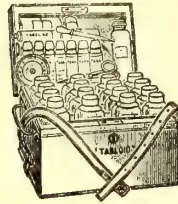
No. 254. Size:
9½ × 7 × 6½ in. The
ideal Estate Chest.
Approx. price in
London, 75/0
Particulars, outfits and refillings
supplied by all Chemists
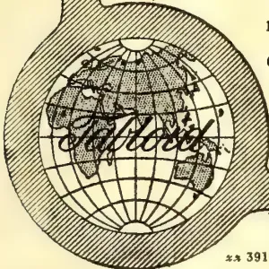
zs 391
BURROUGHS WELLCOME & Co., LONDON
NEW YORK MONTREAL SYDNEY CAPE TOWN MILAN
SHANGHAI BUENOS AIRES All Rights Reserved
Some three years ago a Committee which was appointed by the Board of Agriculture in India to report on the Indian Fibre Plants expressed the opinion that, under careful cultivation on good land in a moist climate, Sisal could be made to yield the largest, quickest and most profitable returns. The existing data on the subject is scattered and insufficient, but it has been thought desirable, in view of the importance of the matter, to bring together the main facts about the fibre plant, its cultivation and extraction of the fibre.
According to Mann and Hunter Sisal Hemp is botanically known in two varieties, viz., Agave Rigida variety Elongata and Agave Rigida variety Sisalana. The Sisalana variety is considered preferable for the Indian tea districts. The two principal methods of propagation are by "Bubbils," growing on the pole of the flowering stalk and by "Suckers" continuously thrown out from rootstocks. Decided difference of opinion exists as to the class of soil required for a Sisal hemp plantation, but a well drained and moderately light soil is considered suitable for the purpose. Those who are in a position to know are of opinion that sisal requires as good, if not a better, soil than tea. The plants are put in nurseries for which a slightly sloping piece of land with a good friable soil is required. Shade trees in the nursery are injurious. With care planting can be done at almost any part of the year, but February to June is considered the
best time. In India five feet between the plants and nine or ten feet between the rows would seem to be a good distance. The plants should not be buried in the ground above the base of the leaves. In the third year from putting out, the plants attain a height of over four feet and are considered fit to afford a first crop of leaves. The leaves are considered ready to cut when they extend at right angles to the stem. Cutting may be made at all times of the year, but in the Indian tea districts the operation is limited to the months from October to June. The maximum quantity of fibre per acre that can be expected from 3 years old plants is one to two cwts. During the following year a return of five cwts per acre may be expected which will be more than doubled in the fifth year. The number of leaves per plant varies a good deal from 25—30 at Lucknow, 35 in Sontal Parganas, 50 in Saharanpur, Cachar, Sylhet, 60—70 in Port Blair, 72 in Meringa (Assam) to 80 in Poona.
On an average, 50 to 60 lb. of marketable fibre is considered a fair outturn, though some patches may give as high a yield as 100 lb. of fibre per 1,000 leaves. The plants continue to yield an annual supply of leaves till they pole. Little reliable information is available as to the period which elapses before poling under Indian cultivation. It depends on the individuality of the plant and even more on its environment. Plants pole in good soil after the sixth or seventh year. They generally pole earlier in good soil than in poor. At the first sign of poling large plants will be available to replace
24 186The Supplement to the Tropical Agriculturistthat which is coming into flower. If the pole be cut out when first noticed the plant will give its full quota of leaves for that year, though if the pole is allowed to grow the leaf will be practically worthless. Hence the flower stalk should always be cut on first appearance unless bubsils are considered more valuable than the former when the latter will be sacrificed to the former.
The original machine for working the fibre is called the Raspador. In the automatic and semi-automatic machines which are now in use the principle is the same as in the original Raspador, though improved in respect of mechanical arrangements, for the automatic and semi-automatic handling of the fibre, and in some other respects. The extraction of the fibre by hand is unpleasant on account of skin irritation caused by the sap.
In selecting a site for the factory, the accessibility of a copious water supply, space for sufficient amount of drying ground, means of disposing of the refuse, and ease of despatch of the fibre deserve consideration.
After the extraction of fibres they are washed and dried and are taken to the press and baled for shipment. The fibres are used for ropes and cordage, carpets, mats, matting, brush making and the waste for paper making.
Apart from the cost of sisal hemp plants, the actual cost of planting out a garden and bringing it to maturity will be a little under that of bringing a tea estate of the same size to the same point under similar conditions.
As stated above a minimum outturn of 10 cwt of fibre per acre is expected from five years old plants. The manufacturing cost including cutting, carting, baling, freight to Europe, insurance, etc., amounts to £12 a ton. To this has to be added the expenses of cultivation, rent, supervision, etc., which are on the average about £3 per ton, thus bringing the total cost of the fibre landed in Europe to £15 a ton. A few years ago Agave fibre was selling at £30 to £40 per ton. The present price is about £23. At this lower figure there would be a profit of £8 per ton or £4 per acre.
The soil and climate of Bihar seem suitable to the cultivation of Agave. There are several lands that at present are giving a very poor return from either indigo or country crops and yet many of these are most suitable for Agave and will give a better return than what is now being obtained from even the better class of lands. There are few concerns in Bihar that during the last few years can show a profit of even twelve rupees per acre. So that Agave cultivation is well worthy of the attention of all planters.—Indian Trade Journal, Dec. 12.
The latest issue of the Year Book issued by the U.S.A. Department of Agriculture contains a very instructive paper on the Agricultural Duty of Water contributed by the Soil Water Expert of the Department, in the course of which the author discusses the important part played by water as a medium of plant nutrition.
A fundamental fact in the chemistry of the plant is that the organism can take up its food
only in the form of solutions. While, therefore, the presence of soil water is necessary to enable the plant to avail itself of the food derivable from the soil, it is also essential that that food should in the first instance be in a condition that renders it capable of being dissolved, that is to say it should consist of soluble compounds.
At present we are not concerned with the latter condition, which, as every practical agriculturist knows, is favoured by proper methods of tillage and which results in the aeration of the soil and the conversion of potential factors into actual elements of fertility.
What we here desire to draw attention to is the important role filled by water as a circulatory medium in the absence of which the soil may be said to be inert or dead, as in seasons of excessive drought when plant nutrition is practically arrested. In order, however, to fulfil its function, it is necessary that the water present should be in a condition which, as the author puts it, renders it efficient according to its quantity in relation to the texture or porosity of the soil.
A soil may be in a condition of saturation so that the interstices between the soil particles are completely filled with water to the total exclusion of air. It will be apparent that in this condition the soil is incapable of serving the plant, inasmuch the water present cannot act as the circulatory medium, since stationary and inert, and will continue to be so till the excess is removed by drainage or other means.
For the best results the quantity of water in a soil should be sufficient to form a film round such soil grain so as to allow of capillary action going on through the whole mass, and at the same time leave room for air in the interstices. These films promote physical and chemical action both within the soil particles and between them and the grass, and ultimately become charged with plant food.
The physical character of the soil, on the other hand, must be of such a degree of porosity as will permit of the soil water being held under the best conditions. Where the soil is too dense or too open association of soil particles and soil water which should exist is absent and capillary action is retarded or arrested.
The movements of soil water, though affected by rain and drought, are chiefly controlled by the action of growing plants. Water entering the soil, from whatever source, is retained, as already explained, as films round the soil particles, till it is drawn up into the plant through the root hairs. Thence it passes through the plant body and is transpired by the leaves after leaving its freight of plant food behind.
As fast as the water in the upper layer of the soil is taken up, it is supplied by the lower layer which acts as a sort of reservoir.
In order, therefore, to favour the action of the soil solution it is necessary to ensure (1) that the soil possess the proper degree of porosity which will make it capable of retaining moisture and giving it up when required to the plant through capillary action, and, (2) that the surface soil is kept in such a state of tilth as to prevent the loss of moisture through general evaporation.
and Magazine of the Ceylon Agricultural Society.—February, 1912. 187
The manufacture of coconut oil and other copra products in Great Britain is carried on principally at Liverpool and Hull. Copra, of course, is imported from producing countries and the oil expressed therefrom in mills in England. Coconut (says a recent consular report) is imported largely in the unrefined state, refined, and then re-exported to a considerable extent, chiefly to the Netherlands. As an indication of the movements of trade in these products it may be stated that in one week in September, 1911, there was imported into London unrefined coconut oil to the amount of 400 barrels and 130 drums from Germany and 36 packages and 13 hogsheads from Ceylon. In the same week only one shipment of copra (180 cwt, was imported into London. The unrefined coconut oil imported into the United Kingdom in 1910 totalled 539,686 cwt, valued at approximately one million sterling, and of this quantity 308,086 cwt. were from Ceylon, 74,065 cwt. from France, and 68,000 cwt. from Australia. The exports (of British production) amounted to 73,173 cwt., of which 64,211 went to the United States; of foreign and colonial production 112,692 cwt. were exported, the Netherlands receiving 46,172 cwt. On October 30 the price for spot unrefined coconut oil (London) ranged from £44 to £47 per ton. Of refined coconut oil the total imports amounted in 1910 to 500,219 cwt, France supplying 266,367 cwt. and Germany 130,060 cwt. The exports (of British production) totalled 228,109 cwt., no less than 164,847 cwt. thereof being sent to the Netherlands. The foreign and colonial refined coconut oil exported amounted to 9,364 cwt. of which 3,958 cwt. were shipped to the United States. There are no available statistics relating to copra alone.
It will be noticed that more than two-thirds of the British-refined coconut oil exported went to the Netherlands, the cause for this being the fact that it is used largely in that country in the manufacture of margarine. The use of animal fats and oils in the production of that commodity has given way largely to coconut oil, in consequence of public taste favouring the latter. From the country named, Great Britain imported 818,901 cwt. of margarine in 1909 and 1,069,558 cwt. in 1910, valued at more than two millions sterling and £2,600,000, respectively; from the United States, 18,263 cwt. of margarine were imported in 1909 and 11,209 cwt. in 1910; while France supplied 23,369 cwt. and 32,288 cwt. in the respective years. It is stated that from 500 pounds of copra 25 gallons of coconut oil should be obtained.
In addition to margarine, the oil is now being increasingly used in the manufacture of soap. A large and well-known firm near Liverpool is spending, it is reported, one million sterling in
acquiring plantations in West Africa in anticipation of rising prices of copra. The November quotations ranged from £25 to £29 per ton at London, Antwerp, and Hamburg, though they were a little lower at Marseilles. The oil is particularly suitable for making marine soap which will lather in salt water. Coconut oil is saponified in heat with strong lye, but there is no 'salting out'; a hard soap is formed, although the percentage of water is high. There are two methods of drying the broken coconut kernel to form the copra; one by sun drying, the other artificial. It is stated that the former is less effective than the latter, as the drying is often not sufficiently thorough, rot setting in during transportation from the producing centre to the country of destination.
Another report from Singapore says that the only artificial drying apparatus used in the manufacture of copra in the Federated Malay States is a shed with a grating (on which the copra is placed) about 6 feet from the floor a fire being lighted underneath. There seems to be no reason why a hot-air fan apparatus should not be used—something after the style of the "Sirocco" dryers used in the manufacture of tea in Ceylon. Sundried and artificially dried copra are sold together and not separated, though if a sufficiently large quantity of the former were put on the market it would certainly command a higher price, as it is superior to that prepared by the latter method, the only disadvantages being the time it takes to dry thoroughly and the likelihood of the copra being covered with dust and other impurities. The most common pests of the coconut palm are the black and red beetle. These, however, are easily controlled. Rats cause very little damage, and the trees of the Federated Malay States appear to be singularly free from fungal disease.
The following interesting report on the market in fibres has been specially compiled for us by Messrs. Bastone and Firminger:—
PALMYRA FIBRE.—Fluctuations were within narrow limits, and while common, middling and fair qualities scarcely maintained their price position, prime dark stiff was realizing full prices in some improvement. Stock in London public warehouses shows 393 tons, being about the same as a year ago.
KITOOL FIBRE.—Consumption throughout the year was on a diminished scale, and the article closed dull and quiet at prices which were barely maintained.
COCHIN, COIR YARN, WEAVING.—As anticipated, there was a moderate increase in production for the year, but the anticipated decline in prices was not realized, in fact, the reverse took place in consequence of consumption having considerably increased. The closing prices of 1910 were fully maintained in the early part of the year (1911), when a decided advance took place on new season's yarn crop being reported small. Fine and medium weaving descriptions advanced £1 to £3 per ton, whilst
188The Supplement to the Tropical Agriculturistcommon was found to be extremely scarce and marked an advance of £4 per ton during the year. The outlook is that present prices will be maintained until the estimated quantity of the new crop (due in August) is ascertained.
COCHIN, COIR YARN, ROPING.—The production has increased, and consumption slightly fallen off. Prices at the opening of the year 1911 were barely maintained and slightly gave way during the early summer, but supplies falling off at the latter end of the year prices recovered and closed nominal without change from 1910. Prospects for 1912 are that present prices will be maintained.
CEYLON, COIR YARNS.—The higher prices ruling for all descriptions of Cochin yarns materially affected Ceylons, and consumption having increased there was a steady advance in all grades, marking a total advance on the year of about £3 per ton and closing with prices at top. No further advance is anticipated and prices will probably slightly give way during the present year.
COCHIN, COIR FIBRE.—Although the production was less than 1910, and demand slightly fell off, prices were fully maintained and closed without change. Prospects are good, and higher prices may be expected.
CEYLON FIBRE (MATRESS).—Although there was increased production in this article, consumption, assisted by the augmented demand from South Africa and Australia, overtook supply, and prices further advanced £2 to £3 per ton from those ruling at the close of 1910. It is anticipated that, without other countries produce this fibre, further advance may be looked for.
COIR ROPE.—The shipments of native made rope were small, the manufacture being unsatisfactory and the rope unreliable. Prices ruling in 1910 were only maintained.—London Times, Jan. 22.
This invention relates to a method of and means for extracting latex from trees, and has for its object to obtain a better yield by means of suction.
The present methods entail considerable loss by reason of latex coagulating or oxidizing by the action of the air. Not only is there very considerable scrap rubber, but by the process of coagulation and oxidation in the tappings leading to the channels, the natural flow of the latex is prevented because the tappings become sealed, and further, the flow of the latex in the first instance is retarded by the atmospheric pressure thereon.
The new method consists in extracting by suction in any convenient manner rubber and other latex from the tree, without any outside influence, that is to say, without the atmospheric action or the oxidation of the latex.
The latex is conducted from the tree directly to a suitably covered receptable, and it may be collected from the said receptacle, and vulcanised and treated in any desired manner, such as by loading, etc.
Figure 1 shows a length of tubing actually around a tree in spiral fashion, and with plug valves inserted within the bark of the tree and leading to the tube.
Figure 2 shows an enlarged detail of the plug and a portion of the tubing. The tubing A in the example shown is provided with plug valves B, which may be pitched at a distance of say 6 inches apart. The valves B are inserted through the tubing A and thence into the bark of the tree.
The tube A may be provided with flanged sleeves to accommodate the plug valves and to prevent the collapsing of the tube by suction. The plug valves B may be provided with a central port b; which may have at the extremity of the valve four cut-away ports, such as b1, and leading from the central port b may be right angle ports b5.
The depth of each plug inserted in the bark of the tree may be determined by adjusting the cap b6, which is screwed on to one end of the plug valve, and so that by unscrewing or screwing the cap b6 the length of the plug is determined.
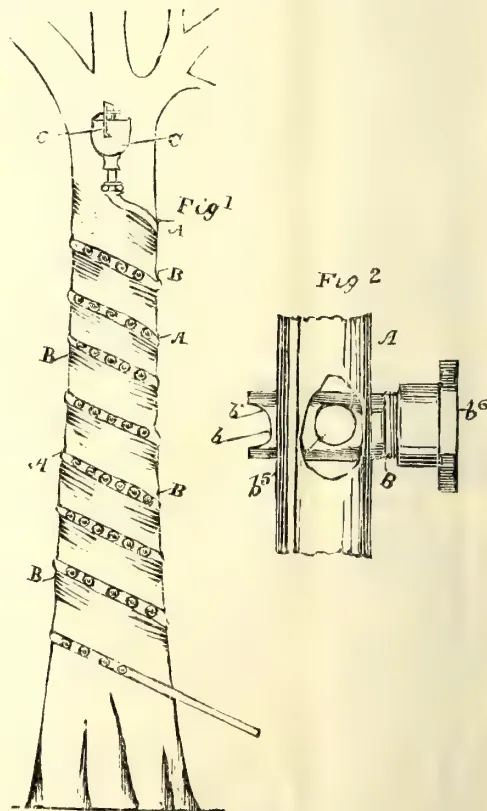
The end of the tube leading towards the upper portion of the tree is preferably provided with a water cup C, containing porous stone and also a float indicating arrangement such as c for the purpose of indicating the amount of water in the cup.
and Magazine of the Ceylon Agricultural Society.—February, 1912. 189
To prevent coagulation within the interior of the tube, water from the cup may be caused to trickle through the tube by the small suction set up in the tube. The water thus flows from the cup, and somewhat thins the latex and causes it to flow freely to the pump.
To the lower or other end of the tube there is connected a simple pump, for choice a single barrel type, capable of being operated by means of the employment of a fulcrummed lever, that is to say, by the action of moving the lever up and down, the plunger of the pump is also operated.
The pump is provided at its lower portion with an inlet and an outlet; the inlet in one instance being connected to the latex tube and the outlet being provided with a branch leading to the latex receptacle. Each is provided with ball valves operating in opposite directions, that is to say, when suction is created in the latex tube, the ball valve of the inlet portion is pulled off its seat, against a stop. Simultaneously the ball valve of the outlet is pulled against its seat, and after the downward stroke of the plunger the ball valve of the inlet is seated and the ball valve of the outlet unseated.
With this arrangement of ball valves, it becomes possible to disconnect the latex tube from the inlet and connect it with the outlet, for the purpose of irrigating the trees the whole of the latex has been extracted therefrom. In this case the outlet becomes the suction by the simple process of unscrewing the ball valve connections and reversing them.
It has been found in actual practice that it is of great importance that the rubber trees should be irrigated after the latex has been extracted therefrom, and, further, it is also of great value to return the un-recoverable caoutchouc globules, that is to say, the latex residuum of the tree.
Preparatory to inserting the plug valves in the tree, a portion may be punched out of the bark of the tree, that is to say, a disc portion, by means of a separate punch; or the plug valve itself may be provided with a knife edge for punching the bark of the tree. All punchings from the bark of the tree should be saved and restored within the tappings.—Patent No. 22,632-1910, to William Clarkson, Friars Park, Lesmahagow, Scotland.—India Rubber Journal.
We have received a pamphlet issued by authority of the Commissioner of Agriculture for the West Indies (Dr Francis Watts, whose name has been mentioned in connection with the Directorship of Agriculture in Ceylon) dealing with coconut cultivation. At the present time when there may be said to be a boom (not the violent boom such as we have had in the case of rubber, but the slow and steady boom) in this crop, a handy and popular treatise on the subject is most welcome. The information embodied is clearly and shortly put, and a few useful illustrations help to explain the text.
Dr Watts in his preface remarks on the extraordinary fact that the coconut has not been
cultivated on any large scale in the Lower Antilles with the exception of Trinidad, and that it is only comparatively lately that estates of any extent have been established; and he goes on to suggest the opening up of groves in many suitable localities in the coastal areas.
The subject is dealt with under the following heads:—Climate, Soil, Botanical Description, Seed Selection, Nurseries, Preparation of Land and Planting, After Treatment, Periods of Bearing, Yield, Diseases and Pests and their Treatment, Commercial Products.
A few points of interest are worth noting. It is recommended that on average soils planting should be done not less than 25 ft. apart, on rich soils 30 or even 35 ft. The following leguminous plants are recommended for green manure:—Crotalaria striata, Phaseolus mungo and P. lunatus, Arachis hypogaea, Canavalia ensiformis, Tephrosia candida and T. purpurea.
It is advised that a space of 6 or 8 ft. in diameter be kept free from weeds and the diameter of this increased as the tree grows.
Under Yield we read that the tree begins to produce as early as the end of the 4th year, but usually in the 6th or 8th, while a good crop should not be looked for till the 9th or 12th year—the period depending largely on soil, rainfall and treatment.
The chapters on Insect Pests are from the pen of the Entomologist (Mr H A Ballou) while the section dealing with fungoid diseases is by Mr F W South, the Mycologist. The sucking insect pests mentioned (to refer to them by their popular names) are Bcurbon Aspidiotus, Coconut Snow Scale, Coconut Mealy Bug, Glassy Star Scale, Black Line Scale, and White Fly; the biting insects, Bassolus sophorae and B. isthmia; boring insects, the Palm Weevil and Giant Moth Borer.
The fungoid diseases include budrot, root disease, stem bleeding disease and leaf disease.
The latest virtue claimed for the Soy Bean is that it is a cure for diabetes. We see in a mail paper that two medical men Drs Friedenwald and Buhrhah have been treating a large number of diabetic cases with soy bean. The patients were first placed upon an unlimited diet, then upon the usual diabetic diet, and, thirdly, upon the same diet plus the soy bean, which latter largely replaced the gluten of wheat bread and in nearly every instance there was a marked diminution in the glycosuria. Soya beans contain practically no starch, and may be taken as a vegetable by soaking them for about 16 hours until the skins can be removed, after which they are boiled in salt water or with bacon and seasoned with pepper, salt and butter. When the bean is not available the gruel flour is even more serviceable, the percentage of protein in it being almost one-third greater than the percentage of protein in the whole bean, being due to the removal of the fibrous hulls, which contain but little protein.
190The Supplement to the Tropical AgriculturistSummary of Ceylon and Indian teas sold at public auction in Colombo for the twelve months ended December 31st, 1911, with the average prices realised:—
| Estate. | lb. | av. | Estate. | lb. | av. |
|---|---|---|---|---|---|
| Glassaugh | 221247 | 58 | Coreen | 160616 | 50 |
| Pedro | 295032 | 57 | Winwood | 152520 | 50 |
| Monkswood | 194308 | 57 | Ormidale | 144310 | 50 |
| Tommagong | 177228 | 57 | Templehurst | 127776 | 50 |
| Westward Ho | 131308 | 57 | Rahatungoda | 118326 | 50 |
| Wanarajah | 458479 | 56 | Kincora | 116962 | 50 |
| High Forest | 614950 | 55 | Annandale | 102653 | 50 |
| Agra Ouvah | 337039 | 55 | Batgodde | 92218 | 50 |
| Denmark Hill | 226878 | 55 | Faithlie | 85061 | 50 |
| Court Lodge | 205408 | 55 | St. Vigeans | 79263 | 50 |
| Ellawattie | 195852 | 55 | Mount Everest | 72080 | 50 |
| Tullybody | 146857 | 55 | Caillander | 70184 | 50 |
| Tientsin | 132844 | 55 | Kinross | 66746 | 50 |
| Gonakelle | 122300 | 55 | Stafford | 65654 | 50 |
| The Scrubs | 117692 | 55 | Donachie | 33953 | 50 |
| Preston | 112410 | 55 | Moray | 345081 | 49 |
| Maha Uva | 319472 | 54 | Waldemar | 315398 | 49 |
| Middleton | 309887 | 54 | Glentilt | 30662 | 49 |
| Gcnapatiya | 204031 | 54 | Uvakellie | 297515 | 49 |
| Hornsey | 199963 | 54 | Brownlow | 275783 | 49 |
| St. Johns | 155281 | 54 | Mocha | 264788 | 49 |
| Loinorn | 111716 | 54 | Battalgalla | 252513 | 49 |
| Agra Elbedde | 111483 | 54 | Tempestowe | 231218 | 49 |
| North Cove | 98496 | 54 | Maymolly | 213989 | 49 |
| Naseby | 96699 | 54 | Ganawatte | 193709 | 49 |
| Glasgow | 412866 | 53 | Muirburn | 176231 | 49 |
| Tinioya | 163025 | 53 | Lamiliere | 174612 | 49 |
| Minna | 92088 | 53 | Queenstown | 166610 | 49 |
| East Fassifern | 75024 | 53 | Kelaneiya and | ||
| α Cranley | 70460 | 53 | Bæmar | 141120 | 49 |
| Inverness | 280507 | 52 | Oakwell | 132479 | 49 |
| Bramley | 183947 | 52 | Mahagalla | 122801 | 49 |
| Logie | 148887 | 52 | Gingran Oya | 113,470 | 49 |
| Noupareil | 99426 | 52 | St Evelyn | 108048 | 49 |
| Dambagas- | Hardenhuish | 104828 | 49 | ||
| talawa | 98145 | 52 | Luckyland | 99730 | 49 |
| Blinkbonnie | 92362 | 52 | Beauvais | 97936 | 49 |
| Devonford | 88702 | 52 | Strathspey | 91347 | 49 |
| Cleveland | 70640 | 52 | Mansfield | 43427 | 49 |
| Ingestre | 254744 | 51 | Mincing Lane | 40744 | 49 |
| Nahavilla | 205045 | 51 | Agra | 31020 | 49 |
| Ardlaw and | α Somerset | 24258 | 49 | ||
| Wishford | 203708 | 51 | Bon Accord | 20620 | 49 |
| Harrow | 168268 | 51 | Richmond | 10755 | 49 |
| Theresia | 164311 | 51 | St. Clair | 523142 | 48 |
| Walla Valley | 162143 | 51 | Verelapatna | 456503 | 48 |
| Marigold | 155860 | 51 | Deviturai | 419865 | 48 |
| Killarney | 146892 | 51 | Rookwood | 339826 | 48 |
| Queensland | 131401 | 51 | Tonacombe | 307705 | 48 |
| Palmerston | 118623 | 51 | Tymawr | 307292 | 48 |
| Ireby | 117800 | 51 | Oonoogaloya | 258570 | 48 |
| Detenagalla | 116064 | 51 | Attampettia | 258182 | 48 |
| Mahanilu | 102706 | 51 | Kirklees | 227018 | 48 |
| Ladbroke | 88930 | 51 | Tempo | 209965 | 48 |
| Melton | 88237 | 51 | Kew | 208328 | 48 |
| Cecilton | 67341 | 51 | Newburgh | 206560 | 48 |
| α Helbrook | 19900 | 51 | Galapita- | ||
| Gampaha | 354624 | 50 | kande | 184535 | 48 |
| Bunyan and | Macaldeniya | 170636 | 48 | ||
| Ovoca | 277021 | 50 | Deaculla | 168118 | 48 |
| Fairlawn | 265751 | 50 | Avon | 165925 | 48 |
| High Fields | 199655 | 50 | Invery | 157423 | 48 |
| Adisham | 181919 | 50 | Kellie | 154689 | 48 |
| Dunkeld | 171723 | 50 | Cobin Ella | 149998 | 48 |
| Estate. | lb. | av. | Estate. | lb. | av. |
| Munukettia | 142573 | 48 | Battawatte | 24912 | 46 |
| Stamford Hill | 135088 | 48 | Camnethan | 214325 | 46 |
| Nadoo Totem | 13391 | 48 | New Valley | 206782 | 46 |
| Nyanza | 132648 | 48 | Talgaswella | 205360 | 46 |
| Robgill | 117941 | 48 | Cotta | 192785 | 46 |
| Clarendon | 116016 | 48 | Tamaravelly | 192665 | 46 |
| Erismere | 114214 | 48 | α Delta | 165357 | 46 |
| Aigburth | 11910 | 48 | Baddegama | 159118 | 46 |
| Deemaya | 110714 | 48 | Elemane | 158581 | 46 |
| Warleigh | 110420 | 48 | Opalgalla | 154097 | 46 |
| Glen Taaffe | 107705 | 48 | Waragalande | 136263 | 46 |
| Hyndford | 101452 | 48 | Paumure | 130435 | 46 |
| Dunnottar | 85087 | 48 | Agra Oya | 129184 | 46 |
| Rilpolla | 83276 | 48 | Walpita | 124510 | 46 |
| Ravenscraig | 80210 | 48 | Glendon | 117220 | 46 |
| Grange | Errollwood | 110430 | 46 | ||
| Gardens | 78775 | 48 | Rambodde | 105188 | 46 |
| α Avondale | 69405 | 48 | Stonyhurst | 104316 | 46 |
| Bittacy | 65157 | 48 | Oodooweera | 102861 | 46 |
| Wattamulla | 64058 | 48 | Walton | 102740 | 46 |
| Simla | 56208 | 48 | Glengariff | 100897 | 46 |
| Bowhill | 55870 | 48 | Little Valley | 99330 | 46 |
| Ben Nevis | 48697 | 48 | Norton | 94569 | 46 |
| Meath | 42639 | 48 | Galphele | 87201 | 46 |
| Blarneywatte | 24669 | 48 | Agra Tenne | 83952 | 46 |
| α Dovedale | 12311 | 48 | Raxawa | 81918 | 46 |
| α Henfold | 227 | 48 | Wattagolli | 80542 | 46 |
| Bandara Eliya | 649987 | 47 | Carfax | 77746 | 46 |
| Florence | 512732 | 47 | Mahatenne | 77450 | 46 |
| Roeberry | 427199 | 47 | Craigmore | 73568 | 46 |
| Dammeria | 293424 | 47 | Massena | 64680 | 46 |
| Bopitiya | 285919 | 47 | Rosemont | 62434 | 46 |
| Shawlands | 264458 | 47 | Kehelwatte & | ||
| Galloola Div. | 201611 | 47 | Bodawa | 61718 | 46 |
| Castlereagh | 199863 | 47 | Demoder- | ||
| Monto Christo | 198963 | 47 | watte | 57465 | 46 |
| Rookatenne | 189170 | 47 | Anningkanle | 54680 | 46 |
| Osborne | 189120 | 47 | Manickwatte | 54207 | 46 |
| α Mount Ver- | Pattipolla | 53602 | 46 | ||
| non | 169806 | 47 | Abergeldie | 52785 | 46 |
| Donnybrook | 146441 | 47 | Taprobana | 51894 | 46 |
| Evalgolla | 145285 | 47 | Adawatte | 38098 | 46 |
| Rickarton | 142697 | 47 | Geneheriya | 35433 | 46 |
| Galleheria | 138245 | 47 | α Kabragalla | 29005 | 46 |
| Upper Ohiya | 125389 | 47 | α Bellwood | 18076 | 46 |
| Dunbar | 124210 | 47 | Udapalata | 15985 | 46 |
| Hatton | 105175 | 47 | α Tangakellie | 11287 | 46 |
| St. James | 100250 | 47 | Wellington | 11000 | 46 |
| Old Madegama | 95848 | 47 | α Devon | 4669 | 46 |
| Columbia | 91186 | 47 | α Penrith | 2564 | 46 |
| Dickapitiya | 88595 | 47 | α Campion | 1789 | 46 |
| Polgahakande | 71791 | 47 | α Spring Valley | 1490 | 46 |
| Stubton | 69747 | 47 | Marl- | ||
| Theydon Bois | 68292 | 47 | borough | 537774 | 45 |
| Poolbank | 66785 | 47 | Poonagalla | 437093 | 45 |
| Seenagolla | 61311 | 47 | Ambragalla | 425470 | 45 |
| Medenham | 56545 | 47 | Yahalatenne | 400820 | 45 |
| Old Haloya | 56000 | 47 | Choisy | 388350 | 45 |
| α North | Neuchatel | 382766 | 45 | ||
| Punduloya | 32715 | 47 | Marie Land | 379639 | 45 |
| Pembroke | 28484 | 47 | Geragama | 281090 | 45 |
| α Kenmare | 27147 | 47 | Hantane | 256044 | 45 |
| Carville | 15570 | 47 | Haranagalla | 244023 | 45 |
| α Meeriacotta | 6416 | 47 | Pallegodde | 222829 | 45 |
| Dunsianane | 3333 | 47 | Clyde | 216731 | 45 |
| α Hyde | 1740 | 47 | H. G. M. | 212958 | 45 |
| Vogan | 480667 | 46 | Myraganga | 204430 | 45 |
| Panilkande | 371060 | 46 | Laxapana- | ||
| Unugalla | 322,038 | 46 | galla | 195690 | 45 |
| Great Valley | 303015 | 46 | Porapass | 192480 | 45 |
| Ottery | 302323 | 46 | Hatherleigh | 187921 | 45 |
| Nakiadeniya | 288850 | 46 | Morahela | 175717 | 45 |
| Orion | 275792 | 46 | Oonanagalla | 170206 | 45 |
* Denotes Incomplete Invoices.
and Magazine of the Ceylon Agricultural Society.—February, 1911.191| Estate. | lb. av. | Estate. | lb. av. | Estate. | lb. av. | Estate. | lb. av. |
|---|---|---|---|---|---|---|---|
| Natuwakelle | 149742 45 | Waitalawa | 185553 44 | Haga | 7691 44 | Mahagoda | 19165 43 |
| Owilikande | 139230 45 | Perth | 175075 44 | aRagalla | 7325 44 | Barrington | 18920 43 |
| Lonach | 138669 45 | Mousa Eliya | 168870 44 | Bungay | 7289 44 | aPittaratmalie | 18463 43 |
| Gallinda | 138145 45 | Kobbakaduwal | 154720 44 | Awliscombe | 7150 44 | Wattagalla | 17656 43 |
| Bollagalla | 133100 45 | Beverley | 153 69 44 | aAvoca | 6601 44 | Lindoola | 17561 43 |
| Glenanore | 132372 45 | St. Heliers | 147215 44 | Morantenne | 5495 44 | Lantern Hill | 17215 43 |
| Madulkelle | 124618 45 | Sirikandura | 144831 44 | aTillyrie | 5132 44 | Kotigalla | 14 27 43 |
| King's Grange | 119486 45 | Warakamure | 128337 44 | Golconda | 4874 44 | aRosita | 12192 43 |
| Leangapella | 116882 45 | Havilland | 114689 44 | Carolina | 3010 44 | aAldie | 11114 43 |
| Ferndale | 114862 45 | Gangwarily | 107679 44 | Tembiligalla | 304760 43 | Maligatenne | 11050 43 |
| Wella | 112829 45 | Ingiriya | 106048 44 | Digalla | 280334 43 | aForres | 10369 43 |
| Igalkande | 111248 45 | Jak Tree Hill | 102990 44 | aElston | 259340 43 | Markville | 9186 43 |
| Girindi Ella | 110323 45 | Hathmatte | 99388 44 | Kiriporuwa | 239699 43 | Kuruwita | 8558 43 |
| Hangranoya | 109926 45 | Ferriby | 94668 44 | Eila | 219920 43 | aRangbodde | 7395 43 |
| Coldstream | Keenagaha Ella | 85279 44 | Pansalattenne | 207664 43 | Woodside | 6900 43 | |
| Group | 107151 45 | Looloowatte | 82275 44 | Maldeniya | 189520 43 | aCaledonia | 6756 43 |
| Weygalla | 106111 45 | Dalhousie | 81424 44 | Good Hope | 185924 43 | aKandahena | 6755 43 |
| Glencorse | 102182 45 | Oonankande | 80571 44 | Penrhos | 183223 43 | Rathalawewa | 6715 43 |
| St. Mary's | 100916 45 | Kehelgama | 80345 44 | Ruanwella | 183175 43 | aLindupatna | 6275 43 |
| Whyddon | 95555 45 | Elchico | 77805 44 | Olunes | 174848 43 | Berry Hill | 6210 43 |
| Shannon | 91353 45 | Nugahena | 70611 44 | Millewa | 164570 43 | Kahatagalla | 5888 43 |
| Meeriatenne | 88057 45 | Mowbray | 62650 44 | Puspone | 161745 43 | St. John Del. | |
| Ampitigodde | 87518 45 | Theberton | 62618 44 | Mipitiakande | 156736 43 | Rey. | 4943 43 |
| Kelvin | 86815 45 | Glen Esk | 60443 44 | Erin | 154277 43 | Soranawella | 4707 43 |
| Meddegodde | 85744 45 | Labugama | 57027 44 | Shrubs Hill | 134630 43 | Nickawella | 4640 43 |
| St. Aubins | 78562 45 | Narangoda | 56352 44 | Ballywatte | 129422 43 | Albion | 448 43 |
| Eastland | 72989 45 | Karagahattenne | 55770 44 | Tunisgalla | 126920 43 | Alutkelle | 3 65 43 |
| Dalukoya | 67256 45 | Heatherton | 55735 44 | Tismoda | 124875 43 | Somaratne | 19 9 43 |
| aDarrawella | 66207 45 | Purana | 55131 44 | Hogalla | 124259 43 | aGreenfield | 189 43 |
| Strathdon | 64620 45 | Bridstowe | 54175 44 | Kituldeniya | 124236 43 | Mount | |
| Ormondale | 53925 45 | Glenalmond | 54090 44 | Gona | 117314 43 | Temple | 260359 42 |
| Glenfern | 53426 45 | aNew Peacock | 53715 44 | Monrovia | 111974 43 | Erracht | 222739 42 |
| Salawa | 47227 45 | Nifield | 53439 44 | Goolshane | New | ||
| Matale | 45185 45 | aDoone Vale | 51649 44 | Ally | 111627 43 | Angamane | 195645 42 |
| aEdward Hill | 44859 45 | aForest Creek | 47984 44 | Alingford | 109668 43 | Palm Garden | 183306 42 |
| Munangalla | 44111 45 | Richmond Hill | 47557 44 | aBalado | 103090 43 | Nahalma | 167075 42 |
| aSyston | 43592 45 | Balgownie | 45726 44 | Mentmore | 100276 43 | Galata | 167067 42 |
| Nugagalla | 43550 45 | aNilomally | 40080 44 | Talduwa | 98813 43 | Yakalakelle | 159560 42 |
| Anniwatte | 42555 45 | Dargan | 38857 44 | Ingrogalla | 97781 43 | Dehiowita | 154929 42 |
| aPingarawa | 38056 45 | Carney | 36995 44 | Mousadella | 96284 43 | Kitulgalla | 149883 42 |
| Ambagasdowe | 36899 45 | aCulloden | 36051 44 | aAmbalawa | 87520 43 | aBirnam | 147673 42 |
| Headington | 36770 45 | Hillside | 34497 44 | Farnham | 85913 43 | Embia Oya | 145878 42 |
| Gadadessa | 36556 45 | Suduganga | 33995 44 | Siriniwasa | 82955 43 | Laurawatte | 144220 42 |
| Murraythwaite | 36345 45 | Moragalla | 33894 44 | Irex | 79100 43 | Silva Land | 135935 42 |
| Gwernet | 35780 45 | Dimbuldande | 33427 44 | Troy | 66450 43 | Temple Hill | 135692 42 |
| Lyeegrove | 35692 45 | Ettapolla | 32615 44 | Olympus | 64908 43 | Semi-Dale | 135615 42 |
| aBogawan- | Higham | 32174 44 | Nellicollay- | Andiatenne | 126097 42 | ||
| talawa | 25124 45 | Donside | 31168 44 | watte | 61098 43 | Kurulugalla | 112493 42 |
| Kempitiya | 23395 45 | aKnuckles | Footprint | Longville | 103106 42 | ||
| Labuduwa | 20750 45 | Group | 31125 44 | Group | 60980 43 | aDover | 94032 42 |
| aEllamulle | 19123 45 | Heidri | 26725 44 | Kotagaloya | 57840 43 | Tavalamtenne | 86349 42 |
| aAgrakande | 18828 45 | Glenorchy | 26545 44 | Pindeni Oya | 50977 43 | Yellangowry | 85300 42 |
| Bambragalla | 8258 45 | Sithalaganga | 23180 44 | aDewalakande | 47335 43 | Morton | 81297 42 |
| Rajamally | 4386 45 | Lowmont | 22007 44 | aUry | 47165 43 | Atherton | 75329 42 |
| Sylvakandy | 655269 44 | Moredukande | 21887 44 | Galagawa | 42576 43 | Panniyakande | 72685 42 |
| Bulugolla | 347533 44 | Primrose Hill | 21601 44 | aSanquhar | 42309 43 | Damblagolla | 70448 42 |
| Swinton | Wiharagama | 20063 44 | Wahagapitiya | 39125 43 | Meegastenne | 6855 42 | |
| Division | 340669 44 | Wyamita | 19890 44 | Katugastota | 38059 43 | aEderapolla | 58868 42 |
| Mossville | 332898 44 | Widworthy | 18184 44 | aNewmarket | 35028 43 | Noorani | 56944 42 |
| Neboda | 312055 44 | Maskeloya | 17980 44 | St. Martins | 34600 43 | Talawitiya | 57514 42 |
| Kelani | 267561 44 | aDelmar | 17581 44 | Halbarawa | 34518 43 | Horamulle | 34100 42 |
| Ganapalla | 222824 44 | aSummer Hill | 16674 44 | Kannatota | 29249 43 | aLorne | 31901 42 |
| K. P. W. | 204843 44 | Palletenne | 16233 44 | Malwasawa | 28160 43 | Yatadola | 31010 42 |
| Kandaloya | 203029 44 | Danawakande | 15976 44 | Rothes | 27924 43 | Hartfield | 30731 42 |
| Citrus | 202177 44 | Ritnageria | 13 45 44 | Madala | 27259 43 | Ankande | 28213 42 |
| Deniyawa | 200531 44 | Rockside | 13005 44 | Aludeniya | 26508 43 | Berulgodella | 26117 42 |
| Avissawella | 199965 44 | Tokkatiamulla | 11907 44 | Kurunduwatte | 25669 43 | Bowella | 25995 42 |
| Cooroondoo- | Diakola | 10700 44 | Kalupahana | 24312 43 | Castlemilk | 24880 42 | |
| watte | 198316 44 | aRadella | 9623 44 | Tellisford | 22171 43 | Dullawa | 24540 42 |
| Hanagalla | 194809 44 | Dumbugodde | 9580 44 | Honiton | 21347 43 | aGorthie | 23957 42 |
| Wallawe | 190394 44 | Gabbela | 9379 44 | Pilamatalawa | 20432 43 | Maryland | 23620 42 |
| Torwood | 186069 44 | Moragalla | aWaverley | 19546 43 | aKintyre | 22592 42 | |
| Group | 8407 44 | Kanampalla | 19234 43 | aWatawella | 21552 42 |
| Estate. | lb. av. | Estate. | lb. av. | Estate. | lb. av. | Estate. | lbs. av. |
|---|---|---|---|---|---|---|---|
| aTelbedde | 21472 42 | aLaxapana | 8010 41 | Carolina | 41256 39 | Ketapola | 18888 38 |
| aGlenugie | 20138 42 | aKelburne | 7390 41 | aPenylan | 38534 39 | aStair | 17725 38 |
| Harrisland | 19847 42 | Trewardena | 7295 41 | Patulpanne | 35470 39 | aMudamana | 17350 35 |
| Horagalla | 19219 42 | aEl Teb | 4560 41 | aHalgolle | 35304 39 | aPantiya | 17130 38 |
| aNikakotua | 17847 42 | aThotulagalla | 3794 41 | aMarakona | 33922 39 | aHoolankande | 16451 38 |
| aWestHaputale | 17383 42 | aWattegodde | 2240 41 | Yatiyana | 32976 39 | aKarawanella | 16179 38 |
| aMandara | aGalgawatte | 2170 41 | aNarbapana | 32425 39 | Eilandhu | 10000 38 | |
| Newera | 16563 42 | Peak Shadow | 1723 41 | Dikmukalana | 31555 39 | aMeerakellie | 9125 38 |
| Orwell | 16146 42 | Gordon | 1574 41 | aPendle | 24040 39 | aArslena | 8295 38 |
| aSt. Andrews | 15259 42 | Mahawale | 569057 40 | aIngoya | 22744 39 | aNapier | 7947 38 |
| aAmherst | 14266 42 | aMuendenia | 215582 40 | aRugby | 21255 39 | Beacon | 7205 38 |
| aAlton | 12629 42 | Alpitakande | 212771 40 | aGonamade | 21079 39 | aWesthall | 4285 38 |
| aLynstead | 12169 42 | Oxford | 203150 40 | aSpringwood | 18721 39 | aEllegalla | 3480 38 |
| Paradise | 12054 42 | aHapugas- | aPoengalla | 17838 39 | aSt Helens | 18639 37 | |
| Ettrick | 11850 42 | tenne | 113525 40 | aWiharagalla | 17777 39 | aWeoya | 12080 37 |
| aFordyce | 11615 42 | Welikaru- | Elfindale | 17405 39 | aSinnapitiya | 11152 37 | |
| California | 10610 42 | nawa | 70250 40 | aAsgeria | 16995 39 | aGalaha | 7760 37 |
| aBelton | 9647 42 | Ellapola | 69335 40 | aLauderdale | 16745 39 | Kotugodella | 7435 37 |
| aWallaha | 8702 42 | Romania | 65945 40 | Bodagoda | 15144 39 | Pinnalade | 6646 37 |
| aCottaganga | 8055 42 | Utuwangoda | 64508 40 | Fairfield | 13220 39 | aWewelmadde | 1190 37 |
| aBlairavon | 7840 42 | Tiverton | 63263 40 | aCaraigengilt | 10635 39 | aDivulane | 351 37 |
| aYoxford | 6276 42 | Freds' Ruhe | 51311 40 | Ossington | 10507 39 | aWoodend | 13697 36 |
| Arnayake | 5770 42 | aMedde- | aOkoowatte | 10442 39 | Sherwood | 13775 35 | |
| Atherland | 5711 42 | kande | 50881 40 | Udawella | 9234 39 | aSouthwark | 2465 35 |
| Sandanawatta | 5644 42 | Ellawala | 48284 40 | aAlplakande | 7121 39 | aSan Cio | 1666 35 |
| Horagaskelle | 5443 42 | Doolhena | 46241 40 | aSunnycroft | 6761 39 | aDedugalla | 12891 34 |
| Ullandupitiya | 5282 42 | Depedene | 42635 40 | Ellalanga | 6660 39 | aKalugala | 8000 34 |
| Dimbulkelle | 5085 42 | Florida | 40830 40 | Atholuwa | 6445 39 | aWeweltalawa | 5922 34 |
| aAcrawatte | 3810 42 | aAlver | 30424 40 | aKoskellie | 5745 39 | aMeddetenne | 382 34 |
| Mahawella | 3558 42 | aHatale | 29697 40 | aGlenshee | 4929 39 | aNew Town | 558 32 |
| Wewelkande | 3181 42 | aMadda- | Uragalla | 3578 39 | aNew Peradeniya | ||
| aHindugalla | 2475 42 | gedera | 29140 40 | Wepalle | 3224 39 | 2160 31 | |
| Easton | 2289 42 | Sudangedera | 27754 40 | aPolatagama | 3040 39 | Holmsdale | 1295 27 |
| aPungetty | 1682 42 | aAlgooltenne | 26575 40 | aDartry | 1018 39 | aGaloya | 960 26 |
| Ledgerwatte | 1196 42 | Panvillekande | 26237 40 | aSidmouth | 49325 38 | aArdross | 984 25 |
| Moerland | 282151 41 | Helula | 24800 40 | aAllakolla | 22068 38 | ||
| Balantota | 250814 41 | Huluganga | 24675 40 | ||||
| Bellongalla | 181341 41 | aEton | 23516 40 | ||||
| Ismalle | 139653 41 | Kudaganga | 22301 40 | ||||
| Alpha | 126002 41 | Kanuketiya | 21843 40 | ||||
| Leangaha | 112000 41 | aGlassel | 19847 40 | ||||
| Walahanduwa | 91640 41 | aDankande | 18410 40 | ||||
| aLyndale | 72452 41 | Rajalea | 16460 40 | ||||
| Torrington | 71188 41 | aRelugas | 15650 40 | ||||
| aKalupane | 67045 41 | aNorfolk | 15300 40 | ||||
| aParusella | 59486 41 | Candawatte | 15164 40 | ||||
| Kalugama | 55938 41 | aLebanon | |||||
| aNew Rasagalla | 55507 41 | Group | 14246 40 | ||||
| Lyndhurst | 53149 41 | Katukurundu- | |||||
| Chapelton | 43163 41 | goda | 12746 40 | ||||
| St. Ives | 38760 41 | aWarriagalla | 12462 40 | ||||
| Vicarton | 38260 41 | aEdmonton | 12327 40 | ||||
| aGonavy | 38136 41 | Talagalla | 11437 40 | ||||
| Burnley | 34595 41 | aKadienlena | 9060 40 | ||||
| aAtgalla | 33961 41 | aSorana | 7830 40 | ||||
| aMariawatte | 33409 41 | Mount Beauty | 7745 40 | ||||
| aLoolecondera | 33087 41 | aDelpotonoya | 7561 40 | ||||
| Karawketiya | 22013 41 | Lower Ka- | |||||
| Tebuwana | 20298 41 | nanke | 7272 40 | ||||
| Bloompark | 19420 41 | aLetchemy | 6078 40 | ||||
| aKatooloya | 19208 41 | Horagoda | 5367 40 | ||||
| Charlie Hill | 19179 41 | aHoonocotua | 4097 40 | ||||
| aKolapatna | 18986 41 | Ashdale | 3820 40 | ||||
| aAbbotsford | 16710 41 | Godakelewatte | 2770 40 | ||||
| aTroup | 14002 41 | Unagaswella | 2390 40 | ||||
| Sadamulle | 12447 41 | Welikande | 189761 39 | ||||
| Malwatte | 12010 14 | Sindamallay | 98871 39 | ||||
| aWarwick | 11543 41 | aTrafalgar | 79891 39 | ||||
| aSt Leys | 9656 41 | aChesterford | 66212 39 | ||||
| aUdaveria | 9328 41 | aKnavesmire | 58743 39 | ||||
| aBeausejour | 9120 41 | Rambokpitiya | 56902 39 | ||||
| aRutland | 8920 41 | Amblakande | 54290 39 | ||||
| Reucastle | 8135 41 | Wewewatte | 52647 39 |
| INDIAN TEAS. | |||
|---|---|---|---|
| Halashana | 26595 55 | Love Dale | 18819 44 |
| Surianelle | 322132 49 | aPeriavurrai | 109858 43 |
| Lockhart | 163948 49 | Cherambadi | 107302 43 |
| Glen Morgan | 41961 49 | Pootoo Mulla | 95005 43 |
| Dunsandle | 9795 49 | Wentworth | 78454 43 |
| Madupatty | 472076 48 | aNullatanni | 58371 43 |
| Devicolam | 202906 48 | aPambanar | 4870 43 |
| Chittavurra | 1186040 48 | Stanmore | 429090 42 |
| Thia Shola | 31685 48 | Isfield | 139175 42 |
| Kannia- | aMunaar | 90911 42 | |
| mallay | 763679 47 | aLetchmi | 74568 42 |
| Sothuparai | 253023 47 | aGlenmary | 65229 42 |
| Vagavurrai | 153760 47 | Kolam | 42230 42 |
| Avondale | 24506 47 | aSevenmallay | 41165 42 |
| aYellapatty | 32163 46 | aChokanad | 76018 41 |
| Pullivasal | 15244 45 | aStagbrook | 92967 40 |
| Terrace | 11164 45 | aGundumally | 13460 40 |
| Venture | 96573 44 | Faith Hall | 6448 38 |
| Nedemballi | 77969 44 | Kentons | 16960 36 |
| aKalaar | 38377 44 | ||
| CEYLON GREEN TEA. | |||
|---|---|---|---|
| Sapumal- | St. Catherine | 54576 43 | |
| kande | 199922 53 | Ashbourne | 13935 42 |
| Alveston | 34105 52 | aMorandande | 29918 41 |
| Vincit | 57204 50 | aDunedin | 44961 32 |
| Udapolla | 5790 50 | aTarawera | 54749 31 |
| Glenalla | 72610 49 | aHalloowella | 17536 31 |
| Ooloowatte | 49521 49 | aMadampe | 77005 29 |
| Eadella | 31885 49 | aAvington | 20776 29 |
| Mahalla | 20205 48 | aKiriwana | 92097 23 |
| Piccadilly | 11865 48 | aOaklands | 6823 23 |
| Yathulana | 2406 47 | aMapitigama | 36140 21 |
| Galawada- | aUdabage | 32010 21 | |
| kanda | 12832 45 | ||
VOL. XXXVIII,
COLOMBO, MARCH 15TH, 1912,
No. 3.
An extensive report has recently been issued by the International Institute of Agriculture on Campbell's Dry Farming System. The general principles upon which this system is based have been more or less familiar to scientific students of the Soil for many years, but they have only recently been brought into prominence, notably by a series of Dry Farming Congresses held in the United States of America, the first having been convoked at Denver, Colorado, in 1907.
As a result of the new system arge areas in the Central States of the Union and in the more arid regions of Hungary and Russia have been brought successfully under cultivation without the aid of irrigation. In addition many farms which formerly yielded a precarious crop, and sometimes failed entirely in years of more than usually deficient rainfall, have been rendered permanently successful. A section dealing exclusively with Dry Farming has been added to the Agricultural Department of the United States of America.
The system of dry farming depends mainly upon three simple principles.
The first of these is based upon the fact that a cultivated soil absorbs more water than an impervious and uncultivated soil. A simple method of
conserving the meagre supplies of water derived from a limited rainfall is therefore to cultivate the soil deeply and thoroughly before rain is expected, and thus store up additional supplies of water in the soil itself.
The second principle is one which is already comparatively familiar. It depends upon the fact that a loose and powdery layer on the surface of the soil is very impervious to water and acts as an effective mulch, preventing loss of water by evaporation.
Both the above principles are well known to planters in Ceylon. The system of forking to prevent soil wash is now very widely adopted. Unless the rainfall is quite excessive the water is held up and absorbed by the loosened soil instead of rushing over the surface. In the drier parts of Ceylon the disc harrow is already becoming a familiar instrument for pulverizing the superficial soil and producing an impervious mulch. This implement was introduced into Ceylon by the Botanical Department, and has been used with great success at the Government Experiment Station at Maha-iluppalama and elsewhere.
The third principle, with which Campbell's name is specially associated, is less familiar. By the use of fork or plough the whole of the surface soil is broken
Gums, Resins,194[MARCH, 1912.up and large air spaces are left in it. Just as a loose layer on the surface hinders loss of water from the upper layers of soil into the air, so a loose layer of soil at a greater depth checks the upward passage of water from the subsoil into the soil where it is required for the use of surface rooting plants.
In a dry climate, therefore, the best result is obtained by compressing the lower layers of soil immediately after ploughing whilst leaving the upper layers in a loose and friable condition. For this purpose Professor N. W. Campbell has introduced a special form of roller known as a "sub-surface" packer, having narrow iron wheels placed separately on a single axle. The wheels have sharp edges and are placed at some distance apart. In use the wheels sink through the superficial layers of the soil and compress and consolidate the lower layers. Afterwards the surface is pulverized and smoothed by the use of a toothed harrow.
In addition to the encouragement of water transference, compression of the soil has another advantage, for the root
system of plants develops much more freely in a compact soil than in a loose one, and the system of cultivation described appears to benefit the growth of plants directly to a rational extent quite apart from the question of water supply.
The regions into which Campbell's dry farming system is being introduced with success have rainfalls of 25 inches a year and under, and countries with rainfalls between 15 and 25 inches are classed by dry farmers as merely "semi-arid." In the tropics such a rainfall implies practically desert conditions. There are many regions of Ceylon, however, with a much higher rainfall where the conservation of soil moisture is an important problem, and it is highly probable that much could be done in districts of intermediate rainfall by dry cultivation without irrigation. Cotton and Tobacco would appear to be crops likely to lend themselves readily to such treatment, whilst the disc harrow might be employed with advantage on Coconut and Rubber estates for the conservation of soil water by means of a surface mulch as well as for the destruction of weeds.
(From the India-Rubber Journal, Vol. XLIII., No. 1, January 6th, 1912.)
It will be remembered that following the Conference held at Rio de Janeiro, under the auspices of Senor Pedro de Toledo, Minister of Agriculture, some months ago, a special Parliamentary Commission was appointed to elaborate, in accordance with the views expressed by the Conference, measures for the defence of the rubber industry. This Commission, which was composed of well-known parliamentarians, has just issued its report, together with a draft of the proposed law. Both documents are very long and enter very carefully into detail. We summarise below the draft of the proposed measure which is expected in the capital to be passed without much modification.
The document commences by declaring all utensils and materials intended for use in the culture, collection and preparation of rubber, free from import duties. Claims for exemption must be
made to the customs' inspectors, who will take steps to verify the statements of applicants without loss of time.
Bonuses will be granted to those who make plantations, or re-plantations of rubber trees according to the following scale:—
(a) For every twelve hectares of new plantations of Hevea, 2,500 milreis; for the same area planted with Caucho or Manicoba, 1,500 milreis; the same area planted with Mangabeira, 900 milreis.
(b) For every group of twenty-five hectares of re-plantations of the above kinds of trees upon lands on which these varieties already exist in the wild state, 2,000 milreis, 1,000 milreis, and 720 milreis respectively.
These bonuses will be payable one year before the first tapping, after proof has been given of the proper use of the lands and right treatment of the trees. In addition to the above, an annual bonus of five per cent. calculated upon the bonus named above as due to planters of Hevea will be paid, commencing from the first year of the plantation, to those who can prove that they have cultivated at the same time plants of food or industrial value.
MARCH, 1912.]195Saps and Exudations.The Government will establish, at carefully chosen points, experimental gardens for demonstration purposes. There will be one such station (for Hevea) in the Acre Territory, and one in each of the following States:—Mattogrosso, Amazonas, Para, Maranhao, Piauhy, and Bahia. Experimental Stations for the culture of Manicoba and Mangabeira will be established in the States of Piauhy, Ceara, Rio Grande do Norte, Pernambuco, Bahia, Minas Geraes, Sao Paulo, Goyaz, Parana and Mattogrosso.
The Government will also make an allowance of up to 400 contos of reis to the first factory for refining Para rubber and reducing the various qualities to a standard which is uniform and superior for the purposes of exportation to the present grades. This factory must be established at both towns of Belem and Manaos. A further grant of up to 100 contos of reis will be made to the first factory dealing with Manicoba and Mangabeira rubbers in the same way. Finally, a grant of up to 500 contos of reis will be made to the first factory of rubber goods establishing itself at Manaos, Belem (Para), Recife, Bahaia, Rio de Janeiro. It will be necessary for each factory in each of the groups mentioned above to show that there has been effectively employed in its erection and in the installation of machinery a sum equal to four times the grant allowed.
The Government will construct three barracks for immigrants, of sufficient size, and organised like that on the Isle of Flores, at Belem, Manaos, and at a point to be agreed upon in the Acre Territory. It will also construct, in the valley of the Amazon, at such points as seem to require them, hospitals, surrounded by small agricultural colonies, where the sick may be received and cared for. These hospitals will undertake vaccination, the sale of the most indispensable medicines, etc. The management and the cost of the barracks for immigrants will be at the charge of the Government of the Union; the hospitals will be managed by men of recognised professional capacity.
In order to facilitate transport and to lower the present high charges in the Valley of the Amazon, the Government will, with the shortest delay possible, undertake the following improvements:—
(1) The construction of short lines of railway, on narrow gauge, along the rivers Xingu, Tapojas, and others in the States of Para, and Mattogrosso, and along the Rio Negro, the Rio Branco
and others in the State of Amazonas. In cases where the States of Para, Mattogrosso, and Amazonas have already made arrangements for the construction of such lines, the Government, in order to ensure the more rapid completion of these works, will grant a subvention of 15 contos per kilo.
(2) Construction of a line of railway, which, leaving the Medeira Mamore line at a suitable point in the neighbourhood of the Bar on the River Abunan, will pass by Villa Rio Branco and by a point between Senna, Madureira, and Catay, terminating at Villa Thaumaturg with a branch towards the frontier of Peru along the valley of the River Purus.
(3) Construction of a railway from the Port of Para to Pirapora, in the State of Minas Geraes, and to Coroata, in the State of Maranhao, with the necessary branches to put it in communication with the limits of navigation of the rivers Araguaya, Tocantins, Parnabyba, and San Francisco.
(4) Execution of the necessary works to render navigable during the whole of the year for vessels drawing up to three feet of water, the rivers Rio Negro between Sao Isabel and Cucuhy; the Rio Branco from its mouth to the Port of San Joaquim; the Purus from Hyntananhan to Senna Madureira; and the Acre from the Bar up to Rio Sinho de Pedras.
Exemption from all import duties is granted to vessels of all kinds intended for the navigation of the rivers, and the regulations of the inland merchant marine will be revised and simplified, and various charges reduced; the Government will grant a similar exemption, as well as such indirect favours as it may deem necessary, to any enterprise which engages itself to provide a coal depot at a point in the valley of the Amazon previously fixed upon, and to undertake the coaling of steamers at rates approved by Government. The Government will give its aid to the establishment of agricultural colonies in the valley of the Amazon. (A number of clauses containing the Government policy in this direction are included in the document under consideration, but space does not admit of their reproduction.)
The Government will undertake the demarcation and surveying of the occupied lands in the Federal Territory of the Acre. This demarcation will have for a result the recognition of parties in possession; which will be followed by the issue of corresponding titles.
The Government proposes to support a rubber exhibition to be held every three years at Rio de Janeiro,
Gums, Resins,196[MARCH, 1912.The Executive has authority to enter into agreements with the Governments for the States of Para, Mattogrosso, and Amazonas in order to obtain from them a reduction of 50 per cent. upon the export taxes on wild rubber, and a total exemption during the twenty-five years commencing from the promulgation of the present law, from all duties in favour of cultivated rubber produced in these States. The reduction of 50 per cent. mentioned above will be carried into effect by means of annual partial reductions of 10 per cent. until the figure of 50 per cent. is reached. Immediately this agreement has been reached, the Executive will grant the same reduction to rubber exported from the territory of Acre, and the same exemption on cultivated rubber. The Government is also authorised to enter into negotiations with the above States with the object of applying to the rubber produced in the territory of the Acre of the same protective measures as will be in force in these States. All dispositions to the contrary are rescinded.
(From Nature, No. 2198., Vol. LXXXVIII.,
December 14, 1911.)
Amongst the botanical collections formed in 1852 by Dr. J. M. Bigelow, whilst attached to the Mexican Boundary Survey, were specimens of a shrub known to the Mexicans as "guayule," afterwards described by Prof. Asa Gray as Parthenium argentatum. No mention, however, was made of its rubber-bearing qualities. It was not until 1876 that public attention was directed to guayule rubber by an exhibit sent to the Centennial Exposition at Philadelphia in that year. The country peon had, it appeared, for long been in the habit of making playing balls and other articles by the "communal mastications" of the bark of this shrub, and it was by that means sufficient was obtained for the above-mentioned exhibit. Investigation showed that the plant was capable of producing in the neighbourhood of ten per cent. of its weight of dry rubber, and that it grew in vast abundance in the desert country of Northern Mexico.
This discovery speedily changed the economic value of these deserts, and set in motion business operations involving millions of capital based upon the amount of raw material in sight. In 1902 chemical and mechanical extraction plants were set up, and guayule rubber,
though an inferior article containing a high percentage of resinous substance, soon became a very important item in the imports of the United States. At the present day the outlay of American capital in Mexico alone is said to amount to 30,000,000 dollars.
A good deal has already been written dealing with guayule, but the monograph by Prof. F. E. Lloyd is a most welcome addition to special rubber literature. Its contents are the outcome, Prof. Lloyd states in his preface, of an investigation carried out by others and himself at the instigation of certain Mexican rubber companies towards the elucidation of the question of the profitable cultivation of guayule in the desert with a view to future maintenance of supplies.
In addition to the physiology of the plant under varied conditions, the main subjects dealt with are questions of climate and soil, seed germination, methods of reproduction, results of cropping, environment of the plant, its rate of growth, methods of extraction, the possibility of maintaining the supply by irrigation, and the effects of this upon the yield of rubber. In the course of the investigation attempts are made to throw light upon many interesting problems in connection with the physiology of desert vegetation.
Much attention has been given to the formation of resin and rubber, and the close connection between the two. There appears to be no tube-like laticiferous system as in other rubber-yielding plants, the rubber being formed apparently in the cells of the resin-canal, whilst the resin itself is found only in the canals and not in the cells.
The guayule shrub is a very slow grower, a fifteen-year-old plant being no more than 15 inches in height, and Prof. Lloyd estimates that existing supplies will be exhausted in a few years' time. Seed can be germinated and plants easily raised by giving a small amount of shade and subsurface irrigation. On p. 121 the author remarks that "the most fundamental economic question for which an answer will be sought in these pages is that relating to the production of rubber under irrigation." In searching for a reply one has to be content with the statement that "The less the water the thicker the bark (cortex) and vice versa." Irrigated plants naturally grow more vigorously, but produce wood at the expense of cortical tissues, and it is largely the latter from which the rubber is extracted.
MARCH, 1912.]197Oils and Fats.The book is evidence of a vast amount of labour undertaken in the spirit of enthusiasm, but its utility for the general reader is curtailed by the want of condensation in dealing with experiments and tabular results, and the absence of definite statements or deduc-
tive conclusions. It is elaborately illustrated by photolitho plates, containing a large number of photographs and line-drawings of the minute histological structure of the different parts of the plant, as well as by some fine photographs of desert surroundings.
(From the Oil, Paint and Drug Reporter, Vol. LXXXI., No. 4, January 22, 1912.)
Washington, January 19, 1912.
The palm oil industry of West Africa is regarded by United States officials, who have investigated it, of importance that is little realized by the American people. This is stated in the report just received at the Commerce Department from Sierra Leone. The report shows that palm oil is used in the countries of that region instead of lard, and is exported for the manufacture of soap, candles and lubricating oils. The statement is made that palm oil will bring $150 per ton in Europe at the present time, and that the chief drawback to reduction in the cost of delivering palm oil to the different commercial countries is the lack of transportation facilities. The report also gives an account of the exports of palm oil and details of the industry itself as follows:—
The amount of palm oil annually exported from British West Africa now amounts to 15,160,000 imperial gallons (imperial gallon equals 12 American gallons), valued at not less than $5,750,000, while the yearly export of palm kernels is 226,000 tons (ton equals 2,240 pounds), valued at over $16,000,000. These figures do not include the exports of palm oil or kernels from French West Africa, German West Africa nor the Kongo. The palm tree from which the oil and kernels are obtained is indigenous and grows in great quantities in all West Africa. It is most prolific from the Cameroons to and including a part of French Guiana, the area embracing Northern and Southern Nigeria, the Gold Coast, the Ivory Coast, Dahomey, Togoland, the Kongo, Liberia and Sierra Leone.
The only drawback to the widespread development of the palm oil industry in West Africa is the lack of transportation, and this will not be overcome until the country is well opened up. Steady progress is being made in this
direction, however. There are large palm-bearing districts not far from the coast, and on the verge of wide navigable rivers, where the question of transportation involves no great difficulty for expense, and it is in these districts that the industry will first be undertaken on a large scale. As palm oil will bring $150 per ton in Europe at the present time, and as handled on a large scale, it could be delivered in Liverpool for $75 per ton, including all charges with cost of production, it can be easily seen that future developments will be rapid and have an important bearing on the general prospects of West Africa. The amount of trade here is doubling every ten years, and promises in the near future to rival that of South Africa.
The trees are 30 to 40 feet high and bear as many as seven or eight cones of fruit, each about the size of a man's head. These cones are studded with the kernels, which consist of the fibrous outer coating or pericarp, which contains the palm oil and the palm nut, inclosed in a thin shell. The pericarp and the kernel yield about 60 and 50 per cent. respectively of their weight in oil. The oil obtained from the pericarp is a deep yellowish blood red, while that from the kernel is white. Both the palm oil and the palm nut oil are used locally instead of lard. The natives and some Europeans claim that it is a fine flavour. The oils are used in Europe in the manufacture of soap, candles and lubricating oils.
There is no cultivation of the fruit other than gathering it when matured. The kernels are prepared by beating the fruit in a mortar until the pericarp is separated from the unshelled kernel. The emulsified pericarp is then boiled in water in a large pot, that part of the oil that has not already been free collecting at the top. The kernels are cracked one at a time with a hammer or stone by the women and children. There are now in the market several machines for removing the pericarp and cracking the kernels, but they have not as yet proved a success.
Oils and Fats.198[MARCH, 1912.(From the Indian Agriculturist, Vol. XXXVI., No. 11, November 1, 1911.)
The Department of Agriculture, Burma, has issued the following Cultivator's Leaflet on the cultivation of the Castor-oil plant:—
The castor-oil plant is cultivated chiefly for the oil which is yielded by the seeds. This oil is used largely for medicinal purposes, for lighting, for lubricating and for several other purposes. The "cake," which is the residue left after extracting the oil from the seeds, makes an excellent manure for any kind of soil, but cannot be fed to cattle. The plant is also cultivated in some places as food for "Eri" silkworms which live on the leaves.
Though a very inferior variety of castor plant grows wild in Burma, it has not been cultivated to any extent up to the present time. By sowing the larger seeded varieties now grown in India, a good profit can be made on suitable soil, with very little expense for cultivation. Much waste land is suitable for castor cultivation and will give large yields.
There are several varieties, some having large seeds and some smaller seeds; some being sown during the rainy season and some at the beginning of the cold weather. Two of the best varieties—a large-sized one and a small-sized one—are both sown at the beginning of the rainy season and ripen their seeds during the cold weather.
This plant is not very exacting as regards soil. Any kind of soil which is open and porous will do very well. Stiff clay soils which do not allow water to pass through them should, if possible, be avoided for this crop, but red soils and coarse sandy soils at the foot of hills are especially suitable. Even poor sandy or gravelly soils will produce a crop of castor-oil beans.
Before the rains begin the land should be cleared of jungle, and after the first showers it should be ploughed twice with the ht'e. If the soil is poor, manure should be applied, if it can be obtained, and ploughed or harrowed in. Afterwards harrow well with the ht'on.
Sowing may be done at any time from May to July. The seed should always be sown in rows as follows:—
| Distance between rows. | Distance between plants in rows. | |
|---|---|---|
| Large varieties | ... 6 feet. | ... 5 feet |
| Small varieties | ... 4 " | ... 2 " |
Make small pits or holes at the proper distance apart and two inches deep; and into each hole drop two to four seeds. Cover up with soil and press down lightly. If the soil is very dry, water should be put in each hole.
The cold weather varieties are sown in exactly the same way as above except that sowing is done about September.
About 10 or 11 lbs. of seeds will be sufficient to sow one acre.
When sowing is done in rows, it is easy matter to weed. Bullock hoes or other weeding implements may be used to reduce the hand labour. The land must be kept free from weeds and the surface soil loosened by hoeing. The ht'e may be used between the rows, but the hoe will be necessary near the plants. Irrigation is not necessary.
In about seven months after sowing the fruits begin to ripen and should be picked by hand as they become brown and hard. Picking generally continues till about nine months after sowing. The remaining leaves may then be fed to cattle and the stalks cut for firewood. In some cases, however, the trees continue to bear fruits for a much longer period and may be left until they no longer yield profitably.
After picking the capsules should be heaped up, covered with straw and weighted with soil or any other convenient substance. After about a week the capsules will be found to be rotten and should then be thoroughly dried in the sun. When well dried beat with a stick to extract the seeds. Continue to dry the remaining capsules and beat again until all the seeds are obtained. Separate the seed from the broken capsules and spread out to dry; after which it may be stored, crushed or sold.
One acre will easily yield 500 lbs. of cleaned seed—a yield of 1,200 or 1,300 lbs. of beans has often been obtained—whilst the cost of cultivation is very small indeed.
The seed may be sold or crushed to obtain oil. There are several methods of obtaining the oil from the seed:—
(a) By the ordinary "Hsee zôn" or Sesamum oil-mill. The seed is put into the mill and crushed in the same way as Sesamum seed. Sometimes the
MARCH, 1912.]199Fibres.seed is shelled before crushing, but this is not necessary as the cake cannot be used for feeding purposes. From 100 lbs. of seed about 30 to 35 lbs. of oil may be obtained in this way.
(b) By roasting the seed, then pounding it and afterwards boiling it in water. Stir the mixture constantly and skim off the oil as it rises to the surface. Boiling is continued for two or three days, the second day's boiling producing better oil than the first. From
100 lbs. of seed only about 30 lbs. of oil can be obtained in this way.
(c) By far the best method is by means of an oil-press as used by large millers. This method gives more than 35 lbs. of oil from 100 lbs. of seed. Therefore, as there is a good market, it is better to sell the seed whole to millers than to crush it by the ordinary methods.
Whenever procurable the cake and other refuse should be used as manure. For this purpose it is specially valuable for sugarcane, paddy and cotton.
(From the Ceylon Patriot, January 30, 1912.)
Perhaps many are not aware of the latent source of wealth that lies buried in the plantain fibre which now practically goes to waste. In the following few lines I shall endeavour to place before your readers the results of my observations and experiments I have been carrying on while I was in India some years back:—
The main reason of our not utilizing the fibre contained in the plantain, which is a common plant in Ceylon, is, I believe, due to the general ignorance of its existence. Experiments have shown that the plantain fibre is admirably suited for cordage of a superior quality. The Manila rope which is very largely used in ships and for machine driving is made of the fibre extracted from the "Manila Plantain," which is a native of the Malaya Archipelago. Experiments for manufacturing fabrics out of plantain fibre were also made and were found satisfactory. I had with me a few different kinds of these turned out by the Trivandrum School of Arts. Some of them looked even better than silk.
The extraction of the fibre is a very simple process, and is done by means of a machine which in itself is very simple. The first of the kind I saw was the invention of Mr. Proudlock of Ootacamund, the pioneer of this industry in South India. It consists of a smooth piece of wood 4" by 6" by 6" on two posts fixed to the ground, and a blunt knife fixed to it lengthwise, with its edge downwards. One end of a string is attached to the handle of the knife, and the other to a long piece of bamboo to form a lever which is pressed by the foot to raise the blade when working. The cost of this was only about Rs. 3. The disadvantage
of this machine is that it is not easily portable. An improvement on this was the one made at the School of Arts, Trivandrum. The Superintendent of this institution describes the machine as follows:—
"The framework of the machine is in teak wood and the scraping blade, with the squeezing fluted roller, fitted parallel to each other at the top, are actuated by two separate strong steel springs worked by foot levers. The machine on the whole is sufficiently small and light to enable it to be carried conveniently to the very spot in the plantain gardens where the trees are cut, saving thereby a large expenditure that has otherwise to be invariably incurred in the transport of the raw material. The additional mechanism for squeezing with the fluted rollers which work in advance of the scraping operation, gives greater pliability to the plantain sheaths and renders the extraction of the fibre much easier."
Experiments have shown that a man with a few days' experience on the machine will be able to work about ten plantain stems a day, with the assistance of a boy to tear the sheaths into longitudinal pieces of an inch and a half wide, and assisting him generally. An average plantain stem cut for fruit yields about 1½ lbs. of fibre. The wages of the man and the boy may be put down at 50 cts. per day, and for this 50 cts. we get 15 lbs. of fibre. At this rate it costs about Rs. 75 to extract a ton (2,240 lbs.) of fibre. Add to this Rs. 45 for freight, traders' commission, baling, insurance, &c.; the total comes to Rs. 120. And for this sum of Rs. 120 a ton of fibre reaches the London market. The price there is about Rs. 300 a ton—of course subject to fluctuation. From this we see the profit on a ton of fibre is Rs. 180. I arrive at this figure on the
Drugs and Medicinal Plants.200[MARCH, 1912.presumption that the stems could be had free. About 1,500 plantain stems would be required to produce a ton of fibre, and even paying at the rate of 2 cts. for every stem, we may require only Rs. 30 for the whole lot. Deducting this Rs. 30 we can be positive of a nett profit of Rs. 150 on every ton of fibre exported. An acre of land could be planted with 1,500 plants, and it takes about 18 months to bear fruits. The bunches could be sold (putting the lowest average value) for 40 cts. each, which would give Rs. 600; and about Rs. 250 will be more than enough to cover the cost of cultivation, and the balance Rs. 350 could be added to the profit on the fibre.
I am sorry I haven't a list of the different species of plantains found cultivated in Ceylon, but I am sure Mr. Driberg, the talented Secretary of the Agricultural Society, would be able to tell us. I am myself writing to that gentleman on the subject. That particular kind found in Malabar known there as Etta or Nantra Vazha (Musa Paradisiaca, I believe) is not found in Ceylon. The fibre extracted from this species is of a very superior quality. This kind should be introduced into Ceylon. Some years back I brought a few seeds from Travancore and tried them here in Jaffna, but I am sorry none of them came up.
I think I have said enough on the subject, and I sincerely hope that some of
my countrymen would think of this industry seriously.
T. P. MASILAMANY.
Jaffna, 15th January, 1912.
P.S.—Since writing the above, Mr. Driberg writes to me about a "wild plantain commonly found growing in Kaduganawa, which bears an inedible seedy fruit" which the gentleman expects to be "identical with the Travancore variety,—the Etta Vazha." But I don't think so, for the fruit of the Travancore variety is edible—both in the raw and ripe state. The peculiarity of this fruit is that the rind could be peeled off as we would do the outer cover of the tamarind. In Malabar this fruit is dried in the sun and then converted into flour, which they consider as good as or better than arrowroot. The kind about which Mr. Driberg is speaking of, I think, is the kind-known in South India as Mala Vazha—hill plantain. This they say is identical with the Manila Plantain. Mr. Driberg speaks also of a new machine suitable for extracting plantain fibre, and very kindly offers to place it at my disposal for trial, for which I am indebted to him. I am writing to the gentleman suggesting to send this machine to the different agricultural instructors, and to ask them to give public demonstrations.—T. P. M.
23-1-12.
(From the Chemist and Druggist, No. 1663, Vol. LXXIX., December 9, 1911.)
The International Opium Conference was opened at The Hague on December 1 by Dr. Van Swinderen, Dutch Minister of Foreign Affairs. Twelve nations are represented at the Conference, comprising Great Britain, Germany, France, Holland, Italy, Russia, Portugal, China, Japan, Persia, Siam, and the United States, all the Powers being represented on the Shanghai Commission of February, 1909. Turkey was especially invited to take part, but declined. The Right Rev. C. H. Brent, Bishop of the Philippines, who presided over the Shanghai Congress, was elected President, and in accepting the honour, referred to the great problem involved in the opium question. He believed the Shanghai Conference pointed the way for the legisla-
tion to be adopted, and he hoped that the legislative Act which would result from the work of the Conference would have the opinion of the whole world behind it. The Dutch Foreign Minister, in his speech, paid a tribute to the American Republic for its initiative in calling the Conference, and thanked the United States delegates for the trouble taken in drawing up the memorandum. The Minister declared that the resolution adopted at Shanghai would form the basis of the final Convention, and that in accordance with the wish of Great Britain—a wish which, he said, was greatly appreciated—the deliberations would include questions affecting the use not only of opium, but also of morphine and cocaine. In reporting the opening meeting, "The Times" correspondent gives particulars of the scope of the inquiry and a tentative programme to which allusion has been made on several occasions in The
MARCH, 1912.]201Edible Products.Chemist and Druggist. In order to refresh the memories of our readers, it may be recalled that the initiative of the present Conference, following upon that of Shanghai, was taken by the United States, who, on September 1, 1909, addressed a circular letter to the Powers proposing legislation. Since then the proposed inquiry has gradually broadened as the result of opinions expressed by Great Britain and others, and, as already indicated, will include the discussion of international measures against the manufacture of and traffic in morphine, cocaine, and Indian hemp drugs. The American Government's circular suggested fourteen proposals for discussion. Some Powers, while generally accepting the proposals, reserved the expression of their individual views for the Conference; others, including France, China, and Great Britain, made specific reservations in advance. When the Conference resumed its sittings on Monday, the Programme Committee de-
cided to draft eight resolutions dealing only with opium and following generally the basis laid down by the Shanghai Commission. It was agreed to omit six of the fourteen subjects suggested for discussion in the American Programme. These include (1) the reciprocal right to search vessels; (2), the establishment hereafter of an internal commission; (3), a self-denying agreement by countries at present not producing opium; (4), the examination of existing treaty obligations and international agreements regarding the opium traffic. The latter resolve is the outcome of the British Government's objection to discuss the arrangements already made for the progressive extinction of the Indo-Chinese opium trade. In deference to the views of the Portuguese delegates, and in the interest of the Colony of Macao, it was decided to treat boiled opium as distinct from raw opium. French has been agreed upon as the official language, but some delegates have no knowledge of French.
By P. J. WESTER,
Horticulturist.
(From the Philippine Agricultural Review, Vol. IV., No. 10, October, 1911.)
During the spring campaign against rinderpest, the Philippines Coast Guard cutter Luzon was placed at the disposal of the Bureau of Agriculture for a trip to the southern islands, the vessel being scheduled to touch at several points which are difficult of access by the regular steamer lines. Recognizing the unusual opportunity to get a horticultural "bird's-eye-view" of the island to the south of Luzon, the Director of the Bureau instructed the writer to accompany him during the part of the trip, for the purpose of collecting data on the status of fruit growing at the points visited and to obtain some information relative to the comparative richness of the pomological flora in these islands. The object in this was to enable the bureau to determine where horticultural exploration work may be prosecuted most profitably in this part of the Archipelago in the future, and to plan for such other work as would tend to encourage a more general cultivation of better varieties of fruits than are
now grown. The party consisted of Dr. G. E. Nesom, Director of Agriculture; Messrs. O. W. Barrett, Chief of the Division of Experiment Stations; M. M. Saleeby, Fibre Expert; D. B. Mackie, Agricultural Inspector; C. V. Piper, Agrostologist of the Bureau of Plant Industry, United States Department of Agriculture; Mrs. Piper, and the writer. The Luzon left Manila, April 15, and arrived at Cebu the 17th.
Short trips were made, by land, from Cebu to Dano, Carmen, Argao, and Carcar, from which place the other members of the party proceeded across Cebu to Barili to meet Doctor Nesom on the Luzon. Returning from Barili to Cebu to coal, stops were made at Bosac and Bais, Oriental Negros.
The itinerary from Cebu to Tacloban, Leyte, included stops at Dapitan, Zamboanga; Croquieta and Misamis, Misamis; Camp Overton, Zamboanga, from which place a visit was made overland to Iligan; Cagayan, and Mambajao, Misamis; Butuan and Cabadbaran, Agusam; and Surigao, Surigao, at which points stops were made of longer or shorter duration. An interesting day was spent in Tacloban and vicinity, after which the steamer proceeded to Catbalogan, Samar, and to Pulupandan, Occidental Negros, where the Luzon was dismissed. Three days were con-
26 Edible Products.202[MARCH, 1912.sumed at the Bureau's Experiment Station in La Carlot Occidental Negros, after which the party proceeded to Iloilo on a small interisland steamer. After a six days' stay in Iloilo, devoted to exploration trips in the surrounding country, including a journey to Capiz by rail. Messrs. O. W. Barrett, M. M. Saleeby, D. B. Mackie and the writer returned to Manila, May 11. The trip was attended by most favorable weather conditions.
The interisland voyage, with its beautiful and ever changing scenery, the islands covered with a tropical vegetation that speaks volumes for the wealth of the soil, was a revelation to the writer and the source of great pleasure and unmingled enjoyment. Were it not for the remoteness of the Philippines from Western civilization, the inland sea of the Archipelago would long ago have been one of the beaten paths of the tourist. He daily invades new territory, and the writer ventures to predict that no sooner do the beauties of the interisland voyage become better known than it will be one of the tourist routes of the world.
But, if the natural beauty of the islands compels one's admiration, and the signs of the latent agricultural resources fill one with wonder, the failure of the inhabitants, at large, to more than eke out a bare living and the crude methods employed in the culture of the main crops of the islands and the conversion of the natural products into food, or into articles of commerce, show the backward condition of the development of the islands and their industries no less strikingly, and to those who have seen the resulting prosperity in other parts of the world of the same industries properly developed, there is a vision of the wealth and prosperity that is due when the Philippines once come into their own.
Fruits are abundant throughout the year in the tropics, or should be, but there is a distinct lull here in the fruiting season between April 1 and May 15; the season of the citrus fruits, the orange, tangerine, and pomelo has closed; the lime and lemon have not yet reached maturity; a limited number of mangoes are found in the market commanding good prices, but the bulk does not arrive until late in May and June; only a few belated custard apples are in evidence, and the sugar apple is only just in bloom. The soursop is the only cultivated species of the genus Anona that matures fruits during all seasons of the year, and they are, during the spring, only sparingly produced. The
guava is mainly a summer fruit, and excepting the macopa, which is now ripening its fruits, and the early fruit of the duhat, also in season about May 1, the other related species, the yambo and pitanga ripen their fruits later. The cashew is at its best, and a few chicos are marketed, but they mature mainly during the summer; the lanzones do not ripen until in the autumn, and the jak, as well as the nearly related breadfruit are mostly only half grown. The banana, of which fruits of the various varieties are found in the markets in the different towns in the Archipelago at all seasons of the year is an exception, as is also the papaya.
For this reason very little opportunity was given on the trip to test many of the fruits that grow in the Philippines, and to reach a conclusion as to the merit of the different parts of the islands for the production of certain fruits. In fact, it is very doubtful if the results of such a test would accurately indicate the adaptability of certain fruits to one locality, or that another is unfavourable for its production, this for the reason that no intelligent care is accorded the fruit trees; presumably little attention is paid to selection in planting seed, and budding and grafting are unknown. Fruit growing, as an industry, can scarcely be said to exist; the fruit trees are growing, a few of each kind, about the houses of the inhabitants, invariably set too close or planted along the roadsides or edges of the rice fields, on hillsides or in ravines where the land is untillable. The writer obviously did not have the opportunity to see all there was in the islands visited, but the notation of only one regularly planted fruit orchard seen during the trip probably well illustrates the condition of the fruit industry in the Philippines.
The only fruit tree whose product forms a staple article of export from the Philippines is the coconut (Cocos nucifera), and there are probably few towns in the Archipelago on the seaboard where this tree is not planted. The itinerary of the trip did not include any point where the growing of coconuts is an industry of importance, but small groves were passed here and there, on the road from Cebu to Carmen and also seen in Dapitan, Cabadbaran, and Iloilo. The trees do not produce to the full extent of their capacity on account of too close planting. Barring the presence of the coconut beetle the trees appear to be remarkably free from insect pests. The coconut does not usually produce fruit until the trees are 7 to 8 years old,
MARCH, 1912.]203Edible Products.but a peculiar dwarf variety was met with in Misamis that is claimed to fruit when only four years old. The fruits are considerably smaller than the ordinary nut, with a somewhat thicker flesh.
Cacao (Theobroma cacao), so important a crop in certain parts of the tropics, has never developed to an industry in the Philippines, and yet some parts of the Archipelago are undoubtedly well adapted to its culture. The cacao requires, to succeed, somewhat more attention than is bestowed upon fruit trees by the average planter in the Philippines, and this was well attested by the appearance of the specimens seen here and there during the trip.
The banana (Musa spp.) is found universally planted in all places that have been visited. The house is indeed rare, in the yard of which does not grow one or more clumps of bananas, but those grown are mostly inferior varieties. It is a remarkable fact that in only two places, Iloilo and the near-by town of Jaro, there were found in the markets fruits of the "Chinese dwarf," a variety that has no superior in the Philippines, and is one of the best varieties in existence. Aside from the superior quality of its fruits, and its greater productivity than that of the kinds usually planted, the dwarf habit of the plant enabling it to better withstand the violence of the typhoons than the varieties commonly grown, should recommend it to the planter.
Of the citrus fruits, the pomelo, or "lucban" (Citrus decumana), the tangerine or "narangita" (Citrus nobilis), the "cabuyao" (Citrus torosa), the orange or "cajel" (Citrus aurantium), the lemon or "limon" (Citrus limonum), and lime, also called "limon" (Citrus limetta), are planted with frequency in the order enumerated, the pomelo is found about evenly distributed in the points visited, and invariably the trees observed were vigorous and thrifty, considering the absence of care and attention; two types exist, one white fleshed and one whose flesh is more or less pinkish, with an exceedingly great variation in form, from roundish oblate to a very distinctly pyriform fruit; the presence or absence of pubescence noted on the young twigs of the trees of this species is probably correlated to other distinctive characteristics in the fruit. The tangerine is somewhat less extensively planted than the pomelo. This species was found in greater numbers in Tacloban, Palo, and Tanauan, Leyte, than at any other point. Samples of the fruit were obtained only at Mambajao, those being markedly larger
than tangerines generally found in the market in Manila, and of fairly good quality. Wherever trees of this species were observed they appeared to be perfectly at home. Next to the tangerine, the cabuyao seems to have a place in the affections of the native population. This is a very vigorous tree, and while the fruit seems to be of little value, it may, on trial, prove to be a very desirable stock for the cultivated species. The lemon is planted rather rarely, and to a less degree the orange; the lime is but seldom seen and the citron exists only in the gardens of the more well-to-do. In Tacloban, Leyte, and Catbalogan, Samar, excellent fruits of the calamondin (Citrus mitis) were obtained, juicy and pleasantly acid. This fruit under cultivation might develop to a very good "ade" fruit, but it is now very little grown. A fruit called "sua," used by the natives in cleaning clothes, was offered in the markets of Cebu and Tacloban, and it was also seen in Misamis. The fruit is very distinct from all other citrus fruits and is best described as a small, oblately flattened citron, prominently ribbed longitudinally, and is possibly a variety of Citrus medica; it appears to be almost unknown outside the Visayas. The samuyao is an unidentified, small, round, citrus fruit with a wrinkled surface and a conspicuous dent at the apex, about 25 millimeters in diameter, found in the market of Cebu, also very distinct in appearance from other known citrus fruits; it is used by the Filipino women in washing their hair and in making a pomade.
Perhaps nothing illustrates better the condition of the citrus industry in the Philippines than the fact that California oranges are sold, not only in Manila, but in Iloilo and Cebu. In these places, as well as in the small town of Catbalogan in Samar, Sicily lemons were for sale in grocery stores, and yet there is scarcely room for doubt that good lemons can be cheaply produced in the islands.
Considering the attention they receive, the citrus trees in all parts of the Archipelago appear to be thrifty, vigorous, and free from scale insects to a remarkable degree. With the introduction of scientific methods of culture, Porto Rico having a climate similar to that of the Philippines, produces a very superior orange and pomelo, and it seems, therefore, reasonable to believe that the orange, as well as the other citrus fruits, may in the future not only be produced here for home consumption, but also for export to Japan, Australia, and the mainland of Asia.
Edible Products.204[MARCH, 1912.The mango (Mangifera indica), so extensively grown in several provinces in Luzon, is rather sparingly planted in the southern islands. No trees of this species were seen in Catbalogan, though they are probably planted further inland, and there were notably few in Taclobau, otherwise so rich in fruits, and at several other points. Even in Cebu the mango is not planted extensively as in certain districts in Nueva Ecija, Bulacan, and Cavite, though Cebu mangoes form an article of export during the fruiting season. The mangoes examined in Cebu were of the same general character as the carabao variety in Luzon and fully equal to them in flavour and quality. Seemingly perfectly at home on the eastern shore of Cebu, the almost total absence of the mango in the interior, in going from Carcar to Barili was striking. The neighbouring island, Bohol, is said to produce considerable quantities of mangoes. Mango trees of the type referred to are scattered through the country around Iloilo and adjacent towns, and are seen here and there from the railway going from Iloilo to Capiz on the north shore of Panay. The general character of the mango trees in Dapitan would seem to imply that they are a type different from those noted elsewhere in the Philippines. In the market of Cagayan, mangoes of the type known as "pahutan" in Cavite were sold under the name of "paho." The "pangi" mango, an unidentified relative of Mangifera indica, of which a few specimens were obtained in Iloilo, is a tall upright growing tree with comparatively smooth trunk and small greenish fruits, the pulp very resinous and distinctly flavoured, gelatinous, rather fibrous and having a large seed. Experiments may show this to be a desirable stock for the mango, but the fruit does not seem to possess any characteristics that might, to advantage, be imparted to the mango by hybridizing the two species.
The breadfruit (Artocarpus spp.) is very generally grown in Tacloban and the places visited in Occidental Negros and Iloilo; in fact, it appears to grow wild along the roadsides. It grows luxuriantly in the Visayas wherever planted, but is not generally grown except in the places mentioned. However, the trees appear to be almost exclusively of the poorer kinds that are propagated from seed, the natives evidently not knowing how to propagate the seedless variety. It is probably safe to say that the introduction of the twenty or more Polynesian varieties
into the Philippines would prove of greater value to the Archipelago than the introduction of the same number of kinds of any other food plant. The jak (Artocarpus integrifolia), a species closely related to the breadfruit, seems to be a general favourite in Tacloban and adjacent town in La Carlota and Pulupandan, and is also planted to a considerable extent in Dapitan, where a fruit was obtained that weighed approximately 25 kilos. The prevalence of the breadfruit in Iloilo and its luxuriant growth there has already been commented upon. It was therefore surprising to see its near relative, the jak, thriving under the same conditions, so seldom grown in that locality. In Catbalogan not one specimen was seen.
The papaya (Carica papaya) is planted very universally throughout the islands visited, and its growth is all that can be desired; but the variety grown is mostly a degenerate, diceous type, the fruit of which is almost universally small and seedy and of very poor quality.
Three species of the genus Anona are grown in the Philippines: the soursop, or "guanabano" (Anona muricata), the sugar apple, or "ates" (Anona squamosa), and the custard apple, or "anona" (Anona reticulata). Of these the soursop in many places appears to be the favourite in the Visayas, markedly so in Tacloban and neighbouring towns where the other species are rare. In Iloilo the sugar apple is very common, while the other species are less in evidence, the custard apple seems everywhere to be less esteemed than either the soursop or the sugar apple. All species luxuriate wherever seen, and the sugar apple and the soursop are abundantly productive. The fruitfulness of the sugar apple is due to the presence of certain species of Coleoptera that abound in the Philippines and which pollinate the flowers of this species. In Florida the writer found the same species of Coleoptera act as pollinizing agents for both the sugar apple and the cherimoya (Anona cherimolia), and with the species noted here it is, therefore, probably safe to predict that the cultivation of the cherimoya, the most esteemed species in the genus and one of the most famous of the tropical fruits recently introduced into the Philippines by the Bureau of Agriculture will be successful.
The sapodilla, or "chico" (Achras sapota), is not universally planted, perhaps for the reason that it is of slow growth and more tardy in the production of fruit than most other tropical fruits, few being seen outside of Taclo-
MARCH, 1912.205Edible Products.ban, Iloilo, Cebu, and Argao, at which last point they are grown to considerable extent. The fruits are in general of good quality but very small. A rather inferior pineapple, "pina" (Ananas sativus), is found widely distributed in the southern islands, appearing here and there to naturalize itself. Cultivated fields of this species were nowhere noted during the trip. Many mangosteens (Garcinia mangostana), 10 meters tall, in prime condition and in full bloom, were encountered in Dapitan where this species appears to be perfectly at home. No mangosteens were observed north of Mindanao. In only two places, Dapitan and Argao, were lanzones (Lansium domesticum) found planted in any considerable numbers. The introduction of this species into new territory appears to proceed very slowly. North of Mindanao the durian (Durio zibethinus) is seldom, if at all, grown, and it is rare even in that island. The ciruela (Spondias purpurea) is well esteemed by the native, and is, in some localities, planted in considerable numbers; in fact the only fruit orchard worthy of the name seen during the trip at Pulupandan, consisted of ciruela trees. The bilimbi (Averrhoa bilimbi) is very generally grown throughout the south and seems to bear well. Its relative, the carambola (Averrhoa carambola), a much larger fruit, is rather scarce. The guava (Pisidium guajava) has naturalized itself throughout the region visited. The duhat (Eugenia jambolana) is scattered throughout the Visayas, and its near relative, the macopa (Eugenia javanica) a far inferior fruit, is quite generally planted everywhere, possibly because of its attractive appearance. The cashew, or "casoy" (Anacardium occidentale) is not generally grown. The tamarind, or "sampaloc" (Tamarindus indica), at once graceful and majestic, is a conspicuous object in most places, but does not appear to be very fruitful. The yambo (Eugenia jambos), and the macopa (Eugenia malaccensis), are perhaps less grown in the southern islands than any other fruits introduced. The santol (Sandoricum indicum) and the mabolo (Diospyros discolor), both species indigenous to the Philippines, are found throughout the region visited.
Inseparable from the Philippine villages in the Visayas, no less than in Luzon, is the betel-nut palm or "bunga" (Arecia catechu), the fruit of which is of considerable local commercial importance, being extensively used as a stimulant by the Filipinos. The date palm (Phoenix dactylifera), so important in
Northern Africa, Arabia, and adjacent countries, has scarcely been introduced into the Philippines; the only specimens of this species seen during the trip were found in Iloilo. As far as is known the date has never fruited in the Archipelago.
The grape (Vitis vinifera) and the fig (Ficus carica) were both introduced by the Spaniards, and the grape is reported to succeed fairly well in Cebu. Unfortunately the writer did not have the opportunity to visit any of the vineyards and examine the vines. Fig trees exist in the gardens of wealthy Spaniards in Bais and Misamis, and probably elsewhere, but judging from fruits tested, it is doubtful if this fruit can be cultivated to advantage in the Philippines; the fig being a fruit of the temperate zone, this is, in fact, scarcely to be expected.
Aside from the data gathered, a very complete collection of seeds of the genus Citrus was secured that will be used in connection with the testing of different stocks for the cultivated varieties of the orange, tangerine, pomelo, and lemon; an interesting miscellaneous collection of plant material of economic and ornamental plants was also brought to Manila.
It does not appear, from the observations made, that the presence or absence in certain localities of certain fruits is a reliable guide in regard to the adaptability, or vice versa, of a certain species to that locality. It shows, perhaps, rather a preference in a certain locality for a certain fruit, and also which were the first kinds introduced there; it indicates probably also the inaptitude of the natives to take hold of a new thing, clinging to early introductions in preference to more recent ones.
Most, if not all, of the cosmopolitan fruits referred to above have been introduced into the Philippines by the Spaniards—a not inconsiderable number of species, but there are many species absent that one might expect here after the long dominion of the Philippines by a once great European power with colonies in all parts of the tropics. Yet the situation in the Philippines in this respect is, perhaps, not very different from that in many other tropical colonies.
Exceedingly few cultivated varieties of the genus Citrus have been introduced into the Philippines, and those so recently that their worth has not yet been established,
Edible Products.206[MARCH, 1912.In the introduction of the mango—the fruit of which from the best types in the Philippines is of unsurpassed excellence, even superior in flavour to the East Indian varieties introduced into Florida that have fruited so far, and closely approaching them in their freedom from fibre and in their small seed, the Philippines have been more fortunate than any other part of the tropics, where the seedling types mostly produce small fruits, inferior in flavour, very fibrous, and with a large seed. Unlike the East Indian grafted monoembryonic mangoes which fail to do so, the polyembryonic mangoes of the Philippines reproduce themselves practically true from seed. Fortunate in the introduction of the mango, the reverse is the case in the pineapple, only one mediocre variety having come to the attention of the writer, and no time should be lost in introducing the several superior varieties that are cultivated in Florida, the West Indies, Hawaii, and Singapore. The avocado (Persea gratissima), destined to become one of the great tropical fruits of the world, the a sexual propagation of which has been so solved in Florida within the last ten years where large budded orchards are now being rapidly brought into prominence, has never gained a permanent foothold in the Philippines until introduced by the Bureau of Agriculture a few years ago, and no trees of this valuable fruit are planted in the Visayas, where apparently everything is favourable for their growth. The rapidity with which the seed deteriorates, making difficult its safe transportation to countries distant from its natural habitat, is responsible for this, and partly explains the absence, until recently, of this species in the Philippines; but the failure to have introduced the cherimoya from Peru, Mexico, and Chile, the seeds of which are so easily transported, seems almost criminal negligence in view of the fact that three other species of the same genus with vastly inferior fruits have been imported and are flourishing. Bertholletia excelsa, the well-known “nigger-toe” nut from Brazil, the sapote blanco (Casimiroa edulis), also ceriman (Monstera deliciosa), the only aroid in the world that produces an edible fruit, and that of great excellence, almost entirely seedless; the feijoa (Feijoa sellowiana), the culture of which in California is rapidly attaining considerable proportions, and which is successfully cultivated in southern France, the tiess (Lucuma rivicola var. angustifolia), and many other species are still waiting to be introduced into the Philippines from the
Western Hemisphere, as is also the hevi (Spondias dulcis), now introduced into many parts of the tropics from its home in Polynesia. It is almost inexplicable how the roselle (Hibiscus sabdariffa) has escaped introduction from Malayasia and Indo-China, and yet not more so than the no less remarkable absence of several species of Nepheliums and other fruits that are found in the Malay Peninsula, Java, and adjacent islands. No fruit of African origin seems to have yet been introduced into the Philippines.
Sugar, copra, hemp and rice are perhaps destined to always be the great staple crops of the Philippines, and, in time, the cacao should become of considerable importance; but the soil, climate and the geographical position of the Archipelago, with Manila as one of the great shipping centres of the Far East and its proximity to Hongkong, Shanghai, and the ports of Japan, with the heavy passenger traffic passing through these ports are such as to insure a very substantial income from the production of fruits, if this industry is properly developed, and in this the Visayas should have a very considerable share.
BY C. DU P. CHIAPPINI,
Trades Commissioner for South Africa.
(From the Agricultural Journal of the Union of South Africa, Vol. II., No. 4, October, 1911.)
Neither I nor any one else can say with any degree of certainty which breeds of maize are most suitable for the European markets, if it is to be understood that the maize is to be produced in South Africa, for there are many important matters to be taken into consideration. First, from the market point of view, we have to consider which classes of maize are most in demand or are likely to be so in the future. To enable us to consider this feature of the question, we have to take into consideration the uses to which different classes of maize are put by the buyers, and even then it will be necessary from time to time to follow closely the requirements and demands of the markets; these fluctuate not only in so far as the general maize trade is concerned, but also as to the different classes in accord-
MARCH, 1912.]207Edible Products.ance with the demands of the different consumers and manufacturers of maize products.
Then in so far as the producer is concerned, we must consider what classes of maize he can produce most profitably in the particular area in which he is situated. While keeping before him the market prices of the different varieties, he has to consider whether he can produce a high price and delicate variety, or must he grow a lower price and hardy variety. In this connection he must consider the rain and drought, the insect and other pests, and the keeping quality of these varieties in transit. Then there are the early and late varieties to be considered, and the most important of all, the yield of muids per acre.
The solution of the question dealt with now, viz.; "The classes of maize best suited for the European Market," has been satisfactorily solved by other exporting countries only by careful observation and experience. The South African maize grower is gaining experience fast. He has been ably assisted and guided by the special sections of the Agricultural Departments of the different South African Governments, now under Union, dealing with this matter. Rapid progress has been made, and if things are continued on these lines, we will all soon know which classes of maize can be best produced in South Africa, and which will meet with the greatest demand on the European markets. It is, however, my duty to give some idea as to what the European markets are now buying, and what classes of maize they are paying the best price for. Up to this point I have not dealt with named breeds, but have only dealt with "classes." Let me say at once that the buyers on the European markets do not worry themselves about breeds, they only deal with the "classes"; indeed, I do not think there are more than a very few dealers on the great grain markets of Europe who could give you the name of more than a few breeds of the maize they deal in.
For commercial purposes maize can be divided first into two main classes:—(1), "Flint or Round"; (2), "Dent or Flat." From these are made up the five great commercial classes of maize: "White Flat," "White round," "Yellow Flat," "Yellow Round" and "Mixed."
Though "White Flat" has generally been making a better price than "Yellow Round," it is not used by any means in such large quantities in Europe as the latter class, and it has not yet been proved that it will hold its position
as the highest priced South African maize if very large quantities are shipped. While "White Round" is seldom wanted, "Yellow Round" is the class most generally dealt in; while "Yellow Flat" is also a very popular article, it is of a little less value per quarter than the "Round." "Mixed" is strictly speaking "no class," and is always of less value than any of the before-mentioned classes.
The English markets are larger buyers of "Yellow," while the Continental markets favour the "White" classes. The variety of maize which always makes the best price is the "Small Yellow Flint," known as the "Cinquantino" or "Bessarabian," and is generally worth about 1s. 9d. per quarter (8d. to 9d. per muid) more than South African "White Flat" or "Yellow Round," but the yield per acre is said to be very small.
In dealing with the five commercial types of South African maize, I will place them in the order in which they stand on the European markets, together with their approximate prices per quarter of 480 lb. (f.a.q.—Government terms, July-August shipments). I may mention that this order has been most generally maintained during the past four years, though sometimes there was little or no difference between the first two classes:—
| s. | d. | ||
|---|---|---|---|
| 1. | White Flat | 22 | 3 |
| 2. | Yellow Round | 21 | 3 |
| 3. | Yellow Flat | 20 | 9 |
| 4. | White Round | 20 | 6 |
| 5. | Mixed | 20 | 0 |
This is on the basis that the maize under all these classes is exactly similar quality; should, however, the "Yellow Round" be slightly better quality than the "White Flat" it will make a better price, the same remark applying to the other classes.
So far I presume we have been dealing with sound maize only, but as no maize-producing country in the world produces only sound or first quality maize, it is my duty to express an opinion as to what is to be done with maize which has become damaged or in an unsound condition. It must be remembered that maize out of condition still remains an article of commerce, and though I am just as anxious as any other person that the good name of South African maize on the European markets should be maintained, and that only sound maize should be exported, I see no reason why damaged maize should not be exported provided such maize is sold as damaged
Edible Products.208[MARCH, 1912.maize, and not under a Government certificate placing it under a grade higher than that which it deserves. It has been found necessary in almost every trade or industry that markets should be found not only for the first and second qualities of the products, but also for the third grades, the damaged portions, and the by-products in such trades. And in so far as the maize trade is concerned the same opportunity should be given to those producers and dealers who are unfortunately in possession of maize which has become damaged, perhaps through no fault of theirs, to enable them to export such maize if they choose to take the risk and they find they cannot dispose of it locally, but stringent regulations should be made that any maize to be exported, found to be in a "weevily," "musty," "damp," or other unsound conditions should be sold as such; and that both the Government Graders' certificate and the shippers' bill of lading be endorsed "weevily," "musty," "damp," or otherwise; and further that such damaged maize be not shipped in the same holds or in near proximity to sound South African maize. If weevily maize is exported and sold as "weevily maize," and no Government certificate is given to the shipper placing it in any grade other than weevily, it cannot damage the good name of South African maize on the overseas markets, and if it is not placed in the same hold or in the same ship it cannot damage sound South African maize. Most other countries ship damaged maize, they are well-known articles of commerce on the European markets, prices are made and uses are found for them. If growers cannot dispose of their damaged maize to those who choose to buy it, and who can find a use for it, they will not during unfavourable seasons make their industry pay.
Space does not permit me to deal with the uses to which different classes of maize are put in Europe, nor do I feel justified in dealing with the different named breeds of maize; it will be sufficient for me to advise producers to aim at producing a good sound plump clean mealie containing lots of food irrespective of breed, always bearing in mind your local conditions and particularly the yield per acre, which is the most important of all, its capacity to withstand drought and resist diseases, and experience will teach you which breed is the most profitable to produce.
By O. W. BARRETT,
Chief of the Division of Experiment Stations.
(From the Philippine Agricultural Review, Vol. IV., No. 11, November, 1911.)
There is always grave danger in the one-crop system. No farmer in any country, unless conditions are exceptionally favourable can afford to risk his future welfare and present prosperity on the basis of a single crop, since naturally that crop is always more or less under the influence of great fluctuations in demand, of severe changes in climate, and of injurious fungus or insect pests. The rice shortage, which at present so seriously affects not only the Philippines but all the countries from Shanghai to Sumatra, serves as an illustration of this principle. In the Philippines, however, this shortage is undoubtedly more severe in its effects upon the poorer classes than in countries like Cochin China, Annam, and eastern China, where ally, or auxiliary, crops greatly relieve the situation. In nearly all the countries of the Far East, with the exception of the Philippines and perhaps the East Indies, soy beans and sorghum enter largely into the daily ration of the people throughout the greater part of the year. Maize is, to some extent, also coming to be a crop of considerable importance especially in northern China, but in none of the Far Eastern countries is this most potentially valuable of all known cereals used to the extent it deserves. The conservative spirit evidenced towards new foods, not only in the Far East but in all parts of the world, is largely responsible for the lack of interest in maize especially, and to a greater or less extent in several other cereals and legumes.
When we reflect that outside of the Western Hemisphere and Europe there are comparatively few agricultural peoples who know how to plant corn, and still fewer who know how to prepare it for the table, we can appreciate, in a measure, the deplorable disfavour with which this king of the cereals has been regarded. But times are changing, however, and within a few years it is very likely that maize in its many types will very largely replace such cereals as rice, barley, etc., covering, as these types do, a great range in agronomic possibilities—some being adapted to very hot and moist regions and requiring six to eight months to mature, others adapted to
MARCH, 1912.]209Edible Products.cold climates and shallow soils and ripening in sixty, or even fifty, days; moreover, some varieties are very rich in starch, while others are rich in proteids; some three hundred distinct varieties are now under cultivation in the Americas and Europe.
In the Philippines the great fault in regard to maize seems to be that the people using it do not appreciate the fact that it must be cooked at least twice as long as rice. Naturally a seed very rich in oily and proteid substances is more difficult to digest than one containing practically nothing but starch. If the Philippine people would realize that corn is really a better food than rice, kilo for kilo, and that the only thing necessary to make it both palatable and nutritious is thorough cooking, they would, I believe, enter upon a new era in the general welfare of the people as well as a new era in the general agriculture of the Archipelago. There are, of course, faults with the present system of cultivation of maize in the Philippines, and again there is chance for great improvement in the varieties now used, which can be brought about either by the introduction of new varieties from abroad, or by the up-breeding of the so-called native sorts, or by both.
A new feature of the case is presenting itself; the leaves of maize may be stripped from the stalks as soon as the seed has begun to harden in the ear, and these leaves when baled form a valuable forage, which will find a ready market at the military posts where horses or mules are stationed. An American farmer in Nueva Ecija finds that in his experience here this fodder excels all others. Thus the Philippine-farmer can not only supply his family and domestic animals with a most nutritious food and sell the surplus grain at a good profit, but he can also dispose of the heretofore practically unutilized portions of the plant, to wit, the leaves, tops, and husks.
One feature of the maize question of the Philippines which requires attention on the part of both producer and the wholesale merchant is the storage of the grain in bulk. This matter is now being studied by the Bureau, and we may say that there appears to be no great difficulty in storing the grain, provided that proper weevil-proof cylinders or tanks are used, and provided that the maize is thoroughly dried before putting into these storage receptacles. Fumigation in storage, while not always practicable for the small farmer, presents no serious difficulties to the merchant.
Probably every tourist who has visited any of the cities of Japan or China has noticed in the markets these peculiar blocks of a grayish white, jelly-like substance, and wondered whether they were really good to eat, but comparatively few have ever tried there the three or four varieties of vegetable "cheese" prepared from the soy bean.* Just across the China Sea our neighbours of Cochin China and Indo-China are now, and have been for a long period, relying to a considerable extent upon the soya or soy bean to give a variety in their diet.
Experts in threpsology the new science of nutrition, seem to be in accord on the fact that in dietary matters two kinds of food are at least four times as good as one, and four kinds of food are probably eight times as good as two; in other words, it is physiologically very unsafe for a human being to depend upon one, or even two, kinds of food. Most people are now familiar with the principles of this new science, and even school children know that the "daily ration" must be "balanced" as to proteids and carbohydrates.
The soybean contains comparatively little starch, but this lack is made up for by the very large amount of protein, or vegetable albumen, which is the basis of the so-called cheeses, or casein products made from this legume. By grinding the seed to a fine meal and dissolving this in water, a kind of vegetable milk is formed which may be passed through a coarse filter and then coagulated usually with a minute quantity of some harmless mineral powder; upon coagulating, this "cheese" may be allowed to slightly ferment, thus forming a grayish or yellowish substance, or it may be dried rapidly without fermentation, or cooked and then partially dried. By the latter method a solid, very nutritious substance resembling goat's-milk cheese is obtained. A kind of condensed milk and a sort of thick cream may also be prepared from a concentrated solution of soybean flour.
* At least five preparations are commonly made in Japan from the soy bean. These are natto, tofu, miso, yuba, and shoyu.
Natto is prepared by boiling the beans in water for five hours to render them very soft. The hot mass is then wrapped in small portions in straw, and the bundles securely tied at both ends, are placed in a cellar in which a fire has been kindled. The cellar is then closed for twenty-four hours and the cooked beans allowed to ferment in the warm, moist atmosphere. The fermented product is a thick, viscid mass and has a peculiar but not putrid odour.
27 Edible Products.210[MARCH, 1912.Recently the European food experts have realized the high nutritious value of the soybean and a factory has been established near Paris for the manufacture of various food products from this wonderful seed. It is said that a new condensed ration tablet, which will be of great use to travellers and soldiers, has been put on the market; it is composed of soybean casein combined with several other substances and is believed to contain about the maximum of nutriment with the minimum of bulk.
The United States has recently begun the exploitation of soybean culture and several results have already been attained: first a variety, or rather a number of varieties constituting a "type," have been introduced from Japan into the rice region of the southern States, and by growing these wet-land varieties after the main crop on the rice fields, the soil is considerably enriched by the
Tofu, or bean cheese, is prepared as follows:—The beans are soaked in water for about twelve hours, and crushed between millstones until of a uniform consistency. The ground material is then boiled with three times its bulk of water for about an hour, and filtered through cloth. The filtrate is white and opaque, having somewhat the appearance of milk. It has, however, the taste and smell of malt. This milky liquid, to some extent, resembles cow's milk in composition.
The protein in soy bean milk is precipitated by adding the mother liquor obtained in the manufacture of salt from sea water, which contains considerable magnesium chloride. The precipitate is filtered off and formed into cakes with the hands. It is eaten in the fresh state or frozen. In the latter case it loses part of its water.
Miso is prepared from cooked beans, which are rubbed to a thick paste and fermented with rice-wine ferment. Miso is of two kinds, white and red, and to some extent resembles tofu.
A sort of film forms on the surface of soy bean milk which in appearance suggests cream. This material is sometimes prepared in quantity by evaporating the milk, and when dried it is used as an article of food under the name of yuba.
Shoyu is a sauce prepared from a mixture of cooked and pulverized soy beans, roasted and pulverized wheat, flour, salt, and water. The mass is fermented with rice-wine ferment in casks for from one and a half to five years, being very frequently stirred. The resulting product is a moderately thick brown liquid. In odour and taste it is not unlike a good quality of meat extract, though perhaps a trifle more pungent. Under the name of soy sauce it has been known in India, and to some extent in Europe, for many years.—(Extract from "Soy Beans as food for Man," by C. G. Langworthy, Ph.D., Farmers' Bulletin, No. 58, United States Department of Agriculture.)
nitrogen stored up in the soybean roots and by ploughing under the plants the texture of the soil is vastly improved, so that the yield of rice is remarkably increased; secondly, it is found that several varieties of soybeans contain from 15 to 25 per cent. of an oil which has various economic uses and the residue "cake" is a high grade stock food, this branch of the industry alone amounts to many thousands of dollars per annum; thirdly, it is grown as a silage crop, and although too coarse to feed green, it is run through the silage cutter and mixed with maize fodder, the two materials thus forming a much better ensilage than either would be if used separately.
Though a comparatively new crop outside of the Far East, soybeans are being carefully studied and within a few years there will undoubtedly be, by the process of artificial selection, a goodly number of practically new varieties; moreover, the number of secondary by-products to be derived from the grain will increase and become important items in commerce; "Shoyu" sauce made from the soybean is now used, under various names, in both Europe and America as a meat relish.
The wet-land varieties of soybean can be grown on the irrigated rice fields throughout the Philippines, while the ordinary varieties should do well on soils which would produce maize and similar crops. Being a legume, the soybean is not dependent upon vegetable matter for the supply of nitrogen in the soil so much as most other crops; when closely planted the growth is usually so rapid and dense that weeds and grass do not interfere to any great extent. Now is the time for the Philippine agriculturists to take up soybean culture in earnest, and to develop it in the same way even if not to the same degree, as our neighbours across the way have been doing for centuries. The fact that there are practically no seeds of this valuable crop at the present in the Philippines is a sad commentary on the progressiveness of the Philippine farmers; but it is never too late to learn.
Three or four distinct varieties of sorghum, commonly called "batad," have been cultivated for a considerable time in the Archipelago; however, because of the inferiority of the varieties grown here, as compared with the sorts grown in America, India, China, and Africa, this grain has not entered largely into use here as a table grain. The seeds of all varieties are excellent feed for
MARCH, 1912.]211Edible Products.poultry, and, of course, may be fed to pigs and cattle as well. The difficulty in using the small seeded varieties is largely in hulling, grinding, and freeing the flour from the "bran."
Generally speaking, the sorghums require less rain during their growing season than the maize varieties. This fact, together with their very rapid growth and heavy yield of seed make the crop one which should be given much more attention than it receives at present. While not so rich in oil and gluten as maize, there is no question but that sorghum grain made into meal is almost as valuable for the table and for feeding domestic animals, poultry, etc., as the former. Throughout the entire Continent, as well as large districts in India, south and eastern Asia, these sorghums are very largely grown and in many districts they furnish the chief article of diet. At least 200 named sorts are grown in India and the number cultivated from the Sudan to the Kalahari desert is probably not less than 50, and may be nearly 100. The writer once measured stems in a field of sorghum grown by the Ronga Kafirs of Mozambique and found that some of the stems were about 6 metres (over 19 feet) in height. As grown by the Kafirs in East Africa the plants run very largely to stem instead of seed, through too close planting, but even under adverse conditions a yield of grain in the fields of these savage tribes is probably twice or three times the yield of maize on the same area. One of the types, or groups of varieties, of the sorghum are now known as "kafir," on account of their origin among the Kafir tribes of south-east Africa. Eastern China has furnished another class of sorghums known as the "kowiangs;" these are rapidly gaining favor in the great sorghum belt of the Middle and Western States. Another type, comprising the "durras," are supposed to have originated in Egypt and the Levant; still another group, the "milos," are largely grown in India.
Nearly 350,000 hectares of land are now planted in sorghum in the State of Kansas alone, while Oklahoma has probably about the same amount. The yield of the grain sorghums of America is from 25 to 45 bushels (750 to 1,000 liters) per hectare; the value of the grain is about 80 to 90 centavos per bushel ( to 3 centavos per liter), which gives a hectare value of about P 30 for the grain alone. The yield of forage is about 7 to 8 tons per hectare.
New varieties are continually appearing on the American market, largely due to artificial selection on the part of
intelligent farmers who have learned the method from their experience in growing corn and other grains; and in this they have been very largely assisted, of course, by the various experimental farms and stations of the Department of Agriculture.
The proportion of seed to the weight of the entire plant is gradually increasing. "One plat of milo at the Dalhart experimental farm, Texas, in 1908, yielded 47.2 per cent. of its weight in grain."
The Bureau of Agriculture has grown sorghum for several seasons at the Alabang stock farm, with uniformly excellent results. However, it is proposed to introduce a considerable number of better varieties from America and other countries and to try them out at the various experiment stations of this Bureau during the coming year. Some of the varieties which are suitable only for forage will be tested at the various forage testing stations, under the direction of Col. J. C. Gresham, of the quartermaster department, United States Army. It should be remembered that sorghum gained its prominence in America not so much through the yield of grain as from the fact that some of the first varieties to be introduced were very rich in sugar, and are still used, to some extent, in the production of sorghum syrup; unfortunately it is difficult to crystallize this syrup, so that it is probable that no sorghum will ever be able to compete with cane and sugar beets.
Among other crops which should be grown in the Philippines to break up the single-crop idea—which has unfortunately held such a prominent place in Philippine agriculture—may be mentioned the following:
Peanuts, inferior varieties of which are grown to some extent in nearly all provinces of the Archipelago.
Taro, or gabe, inferior varieties of which are grown to a limited extent, especially in the visayas.
Yautias, which were introduced by the writer and Mr. Wm. S. Lyon from tropical America in 1904, but which have never received more than a small fraction of the attention they deserve as first class root-crops.
Cassava, a few varieties of which are cultivated to a slight extent in some districts, but which are seldom used as they should be in the preparation of dried flour, tapioca, etc.
Yams, or ubis, which are recognized as valuable foods throughout the tropics,
Edible Products.212[MARCH, 1912.but generally speaking, only inferior varieties of which are used, and then mostly by the savage tribes in this Archipelago.
Beans, the lack of interest in which is, according to dietitian, largely responsible for many of the physiological evils and probably some of the diseases occurring throughout the Archipelago.
Coupeas, which are grown to a limited extent, but which for various reasons are not sufficiently well known,
And last, but not least, the coconut could be utilized as human food to a much greater degree and in more ways than at present. It is said that "one ripe nut per meal per man is enough."
BY THE EDITOR,
(From the Queensland Agricultural Journal, Vol. XXVIII., Part I, January 1912.)
Although several papers on arrowroot growing and on the manufacture of the commercial starch have from time to time been published in the earlier issues of the "Queensland Agricultural Journal," yet, as the present-day subscribers are unable to obtain copies of those journals owing to their being out of print, it is deemed advisable to collate all available information on the industry and present it in pamphlet form to intending arrowroot-growers, from many of whom inquiry is being frequently made as to the prospects of the industry in Queensland.
It is now over fifty years since the industry was first established by the late Mr. George Grimes at Oxley Creek, where he erected the first machinery for manufacturing arrowroot on a commercial scale. As soon as this took place, the writer who had been growing arrowroot in the same district and manufactured it with most primitive appliances, as will be shown later on, entered more largely into the business of cultivating the plant, and abandoned the manufacture in favour of supplying Mr. Grimes' mill with the raw material, to their mutual benefit.
The bulbs were sold at £2 10s. per ton, and on the then virgin scrub soils between Oxley Creek and Rocklea (then known as the Rocky Water-holes), and on the Brisbane River, the yield was enormous. Two varieties were grown at that period—the Bermuda or Maranta grundinacea; and the large purple
variety, Canna edulis, called in the West Indies "Tous-les-mois." These differ materially from each other both in habit of growth and in size, shape, and colour of the bulbs.
The Bermuda plant is diminutive, rarely attaining a greater height than from 3 to 4 ft. The blossom is white, and the tubers, which cluster round the roots, are also white, with a thin shiny skin and bare of rootlets. They adhere to the roots of the plants much in the same manner as potatoes, and are neither very large nor numerous. The starch yielded by the Maranta is of excellent quality and usually commands a higher price in the English market than that of Canna edulis. How little actual difference there is between the product of the two varieties is indicated by the following analysis, taking the best Bermuda arrowroot at 2s. per lb. and the Queensland arrowroot (Canna edulis) at 3d. per lb:—
| Bermuda Arrowroot, |
Queensland Arrowroot, |
|
|---|---|---|
| Moisture | ... 13.00 to 16.50 | ... 17.36 |
| Starch | ... 82.24 | ... 81.52 |
| Ash | ... 0.124 | ... 0.142 |
| Proteids | ... 0.052 | ... 0.078 |
| Fibre | ... 4.09 to 1.20 | ... 0.90 |
The result is, therefore, chemically, about the same, particularly in regard to starch, which is the chief constituent. There is a little more moisture in the Canna, and more fibre in the Maranta. Under the microscope, the Canna arrowroot shows a more silky texture, and the grains are slightly coarser.
The reason why Maranta has never become popular in this State is that it does not yield one-quarter the weight of bulbs, nor is the starch content equal to that of Maranta grown elsewhere, besides which the excess of fibre in this variety makes the matter of treatment more difficult.
A remarkable point about the sale of Queensland, or "Australian Arrowroot" as it is called in England, is that it cannot be sold in Great Britain without some qualifying term attached, such as "Queensland" or "Australian" arrowroot. How this has come about is rather interesting. When the Drugs and Food Act was passed by the Imperial Parliament, it was specified that "Arrowroot is the product of the plant Maranta arundinacea." That is what Bermuda and Mauritius arrowroots are made from. Manufactured arrowroot from the Canna edulis was then practically unknown in Great Britain. I have shown about what little difference there is between the two. It has actually
MARCH, 1912.]213Edible Products.been stated that Queensland arrowroot is an adulterant! Whereas it is generally conceded that, so far from that, it is preferable as a food to the Bermuda product. The purple variety, which is, as said, exclusively cultivated in Queensland, grows to a great height, often rising to 8 ft. or 9 ft. It has very large, broad ribbed leaves; and as many as 15 to 20 stalks rise from a single stool, each stalk representing a large bulb. In the flowering season the plant sends up a long, straight spike, from the head of which bursts a beautiful bunch of bright scarlet flowers, having the appearance of those of the common Canna known as "Indian Shot" but far larger. The seeds do not often mature, however, as do those of the Canna family generally. The bulbs from which the arrowroot of commerce is prepared form a compact mass on and near the surface of the soil, and so prolific is the plant that I have dug from a single stool as much as 60 lb. and even 80 lb. weight of bulbs.
It does not follow that because there are, at present, only one or two principal centres of arrowroot manufacture in Queensland, therefore the plant will thrive only in these localities, which are mainly located on the South Coast line, at Pimpama Coomera and Ormeau. On the contrary, it grows luxuriantly on all the coast lands—from the Tweed River in the far South to Cooktown in the far North. As to soil, it prefers the rich alluvial scrub lands on river and creek banks, but does very well also on the deep black soils of open country. This refers to the purple variety. The Bermuda plant prefers a more sandy loamy soil, deep, with no clay subsoil. The writer grew both varieties at Oxley on the newly-cleared scrub land bordering that creek, and found that the Maranta (Bermuda) did not thrive well on the rich soil, many plants producing only two or three tubers, 6 or 7 in. long, and about 1 in. diameter. The purple Canna, on the contrary, grew most luxuriantly, and produced an enormous quantity of bulbs, which found a ready sale at Mr. Grime's mill, then located on the Brisbane River.
The climate and rainfall in the districts named were exactly suited to the well-being of the plants, and it is worthy of note that no insect or fungoid pests were ever observable either on leaf stem, or bulbs. It follows that a deep, rich, well-drained soil and a moderate rainfall are all that is needed to ensure a good crop.
A visit to some of the arrowroot farms serves to show that there is a similarity among them all, both in preparation of the land, planting after cultivation, and harvesting.
Where planting takes place in newly burnt-off scrub land, the innumerable stumps, of course, occupy so much of the surface as to preclude any ploughing. It then becomes necessary to dig holes with a sharp mattock or hoe which will cut the roots of the felled trees with which the ground is matted. The rows should be about 6 ft. apart with 4 ft. 6 in. between the holes; but owing to the presence of stumps, very little regularity can be observed, and the planter must do the best he can as to distances between plants. On open cleared lands, where the plough can be used, the proper distances can be observed. The land, in the latter case, should be thoroughly well ploughed, harrowed, and pulverised. Then shallow drills are drawn with the plough about 6 in. deep, and at the regulation distance of 4 ft. 6 in. apart single small bulbs are dropped and covered by turning a furrow over them on each side. On very rich new land, the best results have been obtained by placing the rows 8 ft. apart. As the land becomes poorer, the rows may be closer together, but should not be of a less width than 6 ft. I saw a field lately at Pimpama, on what was once an old sugar plantation (Ormeau), in which the rows were 6 ft. apart, yet in the month of April the plants had spread to such an extent that it was difficult to walk between them.
When the plants are above ground, they must be kept clean as in the case of other crops, and by the time they are about 3 ft. high they will want little further cultivation beyond throwing up a furrow against the roots-hilling up, in fact, as with potatoes. From this time forward, the heavy foliage will soon have covered the ground, thus effectually preventing the growing of weeds.
The planting season extends from August, after the last frosts to the end of November and even up to January in some late localities. When full grown, a field of Canna presents a very pretty sight, the broad leaves of dark-green giving a fine impression of richness and contrasting vividly with the numerous scarlet blossoms to be seen on the plants. From six to eight months—the latter term as a rule—bring the crop to maturity, and a little frost is then beneficial by shrivelling up the tops and concentrating the starch in the bulbs. Suppos-
Edible Products.214[MARCH, 1912.ing the crop ready to harvest in July or in the beginning of August, when one or two frosts have touched the plants, the manufacture should be at once begun and carried on until the end of October. If the work is protracted into the spring months, the bulbs begin to shoot, and the yield of starch is consequently lessened in quantity and deficient in quality.
When the bulbs have come to maturity—that is, in from eight to nine months after planting—and when the plants have, as stated above, had a touch of frost, then is the time to commence the harvest. Mr. D. Lahey, in a paper entitled "When to harvest Arrowroot," said:—
"A good test for ascertaining when arrowroot is ready for digging is the following:—Observe the outer leaf of the bulb. A triangular slit will be noticed pointing downwards. If the slit appears white, the bulb is still immature, but as soon as it turns purple the crop may be harvested. Arrowroot may be left to stand over for two seasons, as in the case of sugar-cane."
The latter statement is important, for it has happened in some cases that, when the crop was larger than the available mill power was capable of dealing with, the growers turned their cattle into the field. Had the crop been held over, it might have been possible to get it in during the next season, and thus avoid a great deal of extra labour.
When harvesting, the stalks are first cut down with a hoe, cane knife, or reaping hook. The stool is then dug up with a strong mattock or a stout-eyed No. 3 grubbing hoe. A spade or fork is quite useless for the work, as the stool has a strong hold of the ground, in addition to which the bulbs of Canna edulis cling firmly together by the masses of the rootlets proceeding from each bulb. When free from the soil, the bulbs must be separated, and all earth adhering to them knocked off. As soon as dug, they must be carted to the mill; therefore, it is well not to take up more than can be operated on each day. Every day's exposure to the weather or to the hot sun has an injurious effect upon the colour of the manufactured starch.
The average return of a good crop is about 30 cwt. of starch, or five to six times the quantity in tons of bulbs. From 12 to 20 tons per acre have been dug from a field in which the plants were set at distances of 5 ft. between the plants in rows 6 ft. apart. It goes without saying that the yield will vary according to soil, locality, season, good or
bad cultivation, and proper washing, grinding, and drying appliances; but, as a general rule, the yield of starch may be set down at from 15 cwt. to 30 cwt. per acre, although under most exceptional circumstances, it is recorded that as much as 4 tons of finished arrowroot per acre have been obtained. I cannot, however, vouch for this statement.
The machinery employed in the manufacture of arrowroot in the very early days of agriculture in Queensland was as primitive as that used by the ancient Britons for pounding grain or by the Australian natives for crushing the seeds of nardoo. The first growers made use of a grater made by punching holes with a nail in a piece of kerosene tin. Gradually improvement crept in, until a hand machine was constructed by the writer which much accelerated the work, but was still only a makeshift.
Since that time modern machinery has been introduced capable of turning out from 10 cwt. to 30 cwt. of commercial arrowroot per day. Such a plant may be thus described:—
Motive power, a 6 to 10 h.p. engine, root washers, carriers, grinding mills, cylinders, elevators, rotary sieves, shaker sieves (two), chute patent circuitous trough (for which Mr. Lahey holds a patent), agitators and sieves, centrifugals for draining, tables, and calico for draining.
The whole of the work, after the tubers have been raised to the highest point of the building, is effected by by gravitation. The tubers (or roots as they are erroneously called), as they come from the field, are tipped from the drays on to the carrier, whence they are automatically carried to the tuber-washing trough. Running through the centre of this is a spindle with diagonally inserted pegs of sufficient length to clear the bottom and sides of the trough by about 1 in. Here the bulbs are thoroughly cleaned of all dirt, stones, &c., and they are then passed on to the grater, which is a large, wooden cylinder covered with perforated iron buried, on to which the bulbs drop from a hopper. A stream of water pours upon this continuously from above, and the pulp and starch held in suspension pass on to a shaking sieve. From this the farina and water pass to a second sieve, the pulp being ejected on the other side of the first sieve. On leaving this sieve, which is perforated with very fine holes, the water and farina are shot into a large trough, where the latter soon settles at the bottom,
MARCH, 1912.]215Edible ProductsWhen a sufficient quantity for the day's work has passed into the trough, the farina is allowed to settle firmly, and the water is gradually drawn off through a series of taps till the farina is left in a solid mass at the bottom.
Now, it will be seen that the surface of this mass is covered with a dirty slime. This is washed off and is put aside for pig food, as a certain amount of farina is stirred up with it, and it passes through a fine silk sieve into the next trough, leaving the first one clear for the following day's work. After further skimming and washing the now almost clean product passes into the circular trough which runs right round the building. In this there is an agitator, something like the paddle-wheel of a steamer, which revolves and thoroughly stirs up the whole mass.
When the agitation has proceeded for some time, the farina is once more allowed to settle, and a final superficial washing of the mass takes place.
This process does away with all hand-washing—in fact, from the time when the bulbs are emptied from the drays on to the carrier, they are not handled in any way, except to cut off close enough in the field.
The farina is finally dug from the circular trough, and is passed through a centrifugal machine to extract all possible moisture. It is then taken to the drying ground, where it is exposed to the sun on frames covered with calico. Should a shower of rain fall upon it whilst it is drying, the rainwater has the singular effect of turning the farina brown, when it has to be re-washed. Hence the weather must be carefully watched during the drying process. After being thoroughly dried, the farina, which is now brilliantly white, is bagged and put up in various forms for export.
Most mills are constructed on the same plan, and the process is practically the same in all.
It may be interesting here to show how the earliest arrowroot-growers manufactured the farina.
The bulbs were well washed, and all roots pared off. Then they were grated by hand on a grater made of part of a keiosene tin punched full of holes, whose ragged edges served to reduce the bulbs to pulp. This was done over a tub of water. Two or three other tubs covered with calico were provided, and the pulp and farina were separated by working the hand round and round on
the calico, water being poured over the mass. The pulp, having been thus separated, was sent to the pigs, and the farina at the bottom of the first tub was well stirred and the water poured off, when the farina passed to the next tub, and so on for three or four washings, when the clean farina was dried on calico frames. This process was necessarily a very slow one, but, as arrowroot was then worth 1s. per lb., it was very remunerative.
The writer improved upon this by constructing a primitive machine.
A log about 2 ft. in diameter and 8 ft. long was hollowed out by axe and adze to form a trough. At the head of this trough was fixed a framework much like the wooden stand of a grindstone. A large wheel was then cut from a sound log 3 ft. in diameter and 1 ft. wide. Tin plates, turned into graters (which required frequent renewal) by punching holes in them with a nail, were next nailed on to the edge of the wheel, to which a wooden axle and handle were fitted. The wheel, when placed in position, turned in the water with which the trough was filled. Above the wheel was a wooden hopper from which the bulbs dropped on to the wheel. This wheel was easily turned by one man, and the grated bulbs dropped into the water in the shape of pulp and farina. The latter gradually settled at the bottom, and the pulp was removed by a narrow-tined fork and by hand. After a short interval to allow the farina to settle down firmly, pegs were withdrawn from the lower end of the trough and the water drawn off. The farina was then dug out of the bottom of the trough, and was passed through calico stretched over a tub. By hand-stirring and at the same time pouring on clean water, the whole of the farina passed through the calico into the tub, leaving the gross impurities behind. This operation was repeated three or four times until the arrowroot was perfectly white and free from any foreign substance.
After the last washing, it was placed on shallow trays or calico frames and dried in the sun. The arrowroot at that time (1863) was readily sold locally at 1s. per lb., and a small quantity sent to London brought 1s. 6d. per lb.
Such a machine to-day would only prove a source of loss to the grower.
With the present up-to-date arrowroot mills, the whole process—from the digging of the bulbs to the drying of the prepared farina—occupies about twenty-four hours.
Edible Products.216[MARCH, 1912.It will easily be understood, from what I have written about the process of manufacture, that it is of little use trying to manufacture arrowroot unless there is a plentiful supply of good clean water.
One of the principle growers and manufacturers at Yatala, near Beenleigh, estimated that, when working his mill three days a week and producing about half a ton of arrowroot a day, 24,000 gallons of water were used every eight hours. The refuse fibre and pulp are carted back to the fields and utilised as manure.
Another grower stated that arrowroot gave a monetary return about equal to maize and potatoes; but it was a surer crop. It would stand flooding that would kill potatoes, and dry weather would not affect it so adversely as it would corn. Both these troubles I have experienced, and can quite bear out his statement.
The yield of commercial farina may be set down at from 1 to even 2 tons per acre and the price ranges from £16 to £20 per ton. Late market reports give the price in London at from 2d. to 3½d.; per lb. Bermuda being quoted in October, 1911, at 1s. 7d. per lb.
A considerable item of expense in the manufacture is the cost of firewood, seeing that it takes a cord of wood for each ton of tubers. The tubers contain from 20 to 30 per cent. of starch or 400 to 600 lb. of starch per ton of tubers.
Such a mill as I have described would cost, according to capacity, from £500 to £1,200, exclusive of about £200 for the necessary drying and storage sheds. Where cornflour is made, the cost of a mill may run to over £4,000, owing to additional and more complicated machinery for producing, this product, although the process is much akin to the manufacture of arrowroot. Briefly, the corn (maize) is first steeped in hot
water, and is then ground between large millstones, after which it passes through sieves into huge vats, when it settles, and the gluten remains on the surface. This gluten cannot be washed off without the aid of chemicals.
In the principal Arrowroot-growing districts above mentioned there were in 1910, 366 acres planted, mostly in small areas. According to the Government Statistician's annual report published in August, 1911, the yield of bulbs amounted to 4.275 tons—an average of 11.68 tons per acre—from 3,132 tons of which were produced 718,636 tons of commercial arrowroot; value, £7,744. The price of Queensland arrowroot has of late had a considerable upward tendency; and whereas the London price to the Queensland manufacturer has been as low as £14 per ton, British Importers during the past year paid up to £30 per ton. This rise, which at the time of writing, appears to be permanent, has not failed to give a stimulus to the industry, and next year's statistics in reference to the production may show a much larger area planted.
In July, 1909, there were 241 acres under this crop, nearly all in the districts named; and the yield amounted to 1,555 tons of tubers, of which 1,197 tons were used for the production of commercial arrowroot, the quantity of which was estimated at 300 tons, divided amongst the different districts as follow:—Pimpama, 100 tons; Coomera, 40 tons; Yatala, 10 tons; Ormeau, 50 tons, and Nerang, 60 tons. The commercial arrowroot produced was only 246,064 lb. The Australian requirements are about 350 tons annually, and, with the large increase in population by immigration and otherwise, this demand is constantly increasing, which means that, unless the area devoted to arrowroot cultivation is considerably extended, from 50 to 100 tons have to be imported to supply the deficiency:—
| Year. | Imports. | Exports. | Production. | |||
|---|---|---|---|---|---|---|
| Quantity. | Value. | Quantity. | Value. | Quantity. | Manufacturers Value. | |
| Lb. | £ | Lb. | £ | Lb. | £ | |
| 1905 | 2,240 | 12 | 597,325 | 5,439 | 758. | 4,028 |
| 1906 | ... | ... | 491,771 | 3,949 | 759 | 3,639 |
| 1907 | 78 | 1 | 658,619 | 5,389 | 497,891 | 3,292 |
| 1908 | 103 | 1 | 560,105 | 5,792 | 480,620 | 4,013 |
| 1909 | 32,032 | 886 | 218,614 | 3,250 | 246,064 | 3,332 |
| 1910 | * | * | * | * | 718,636 | 7,744 |
* Not Available.
This image is a scan of a blank page. The paper has a light beige or cream-colored tint. There are a few very small, dark specks scattered across the surface, which appear to be scanning artifacts or dust particles. No text, lines, or other markings are present on the page.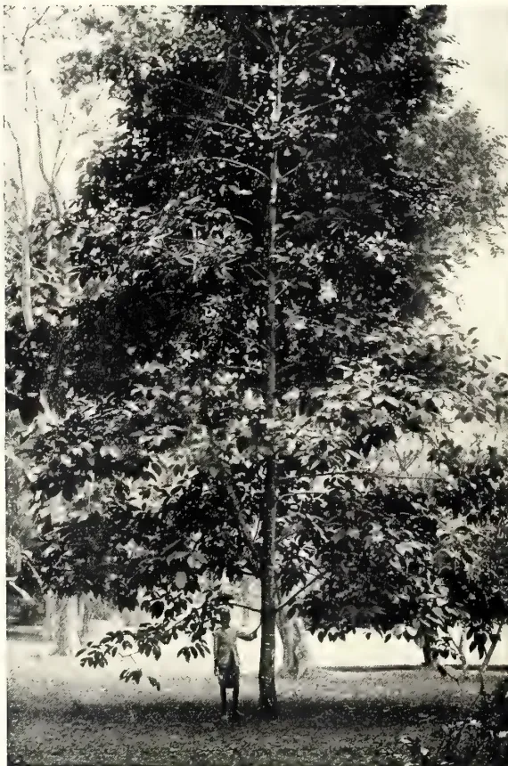
See page 217.
Photo by H. F. Macmillan.
BUTTER-NUT, OR SONARI-NUT.
[Faint page: no legible print of its own could be verified; text withheld (stage 4 review list)]
This image is a scan of a blank page. The background is a uniform light beige or off-white color. There are a few very small, dark specks scattered across the surface, which appear to be scanning artifacts or dust particles. No text, lines, or other graphical elements are present.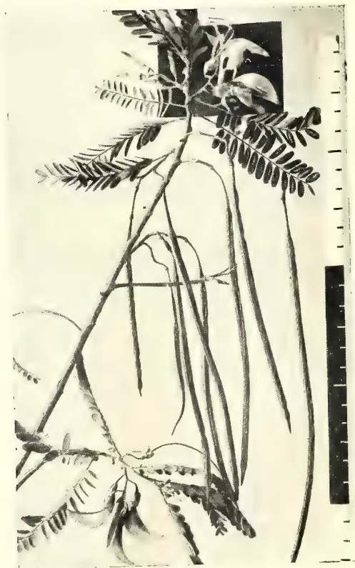
Photo by H. E. Macmillan.
KATURU-MURUNGA.
MARCH, 1912.]217Timbers.It will be seen from the above that, roughly, three times the weight of tuber was treated in 1910, as compared with the figures for 1909, with an equivalent increase in the marketable article. A great deal of the latter finds its way to the Southern markets, where it meets with a ready sale. There was only 246,064 lb. made in 1909, which was a year of partial failure. During 1910 the quantity manufactured was 718,636 lb., but in these days of facile transport a commodity of a non-deteriorating nature does not glut the market or materially affect the standard retail price. Naturally the produce of one calendar year is dealt with commercially during the year following; but the statement above, though only supplying figures to the end of 1909 (those relating to imports and exports for 1910 not being available), shows that there has always been a considerable proportion of our arrowroot sent out of the State.
The Butter-nut, or Sonari-nut, known botanically as Caryocar nuciferum, is a handsome lofty tree, attaining a height of over 100 feet, bearing large lanceolate trifoliate leaves. It is a native of Brazil and British Guiana, and was introduced to Peradeniya in 1891. Here the tree grows luxuriantly, and for the last two years has flowered freely, so that it may be expected to set fruit at
any time. The remarkable globular fruit is of the size of a child's head, consisting of a brown woody shell, which when ripe contains four large kidney-shaped seeds. Each of these also is enclosed in a hard reddish shell, about four times the size of a Brazil-nut, and considerable force is required to break one open. The kernel has a pleasant nutty taste, and is esteemed in England for confectionery and fruitarian dishes. Sonari nuts are imported into England from South America, and may usually be seen in Covent Garden, or retailed in London at 3d. to 4d. each. The tree thrives best in rich deep or alluvial soil. It is unfortunate that it takes so long to come into bearing, but it is a way many tropical trees have. (See Frontispiece.)
H. F. M.
This remarkable vegetable is a small, quick-growing leguminous tree, known to botanists as Sesbania grandiflora, and to the Sinhalese as "Katuru-murunga." Both the tender leaves and flowers are used as a choice vegetable, the large fleshy petals of the latter being especially relished when fried, or used in soups or curries. The bark, leaves and flowers are also valued medicinally. The tree is known to the Tamils as "Agatti-keerai." It is easily propagated by seed.
H. F. M.
(From the Journal of the Board of Agriculture, Vol. XVIII., No. 10, January, 1912.)
The increase in the durability of timber which may be brought about by the use of preservatives is a question of considerable importance in the United States in view of the large annual production of timber in that country, and the subject has engaged the attention of the Forest Service of the Department of Agriculture since 1902. Although the experiments carried out by the Forest Service were confined to the treatment of poles for telegraph and telephone purposes, many of the results are of interest to the English agriculturist from the point of view of estate management.
Seasoning of Timber.—The question of seasoning necessarily requires consideration before the use of preservatives
is dealt with, since proper seasoning not only prepares timber to receive the preservative treatment, but under certain conditions may be in itself a means of increasing its durability.
Contrary to general opinion, the Forest Service found the shrinkage taking place during the seasoning of poles to be very slight, amounting, in seasoning from green to air-dry condition, to about 0.1 in 0.2 in. in the circumference at the butt end, and from 1.15 in to 0.25 in. in the circumference at the top end of poles. The loss in weight during such seasoning was found to be ordinarily from 16 to 30 per cent. of the original weight, but in the case of yellow pine of the western United States as much as 49 per cent. was lost during seasoning in from three to nine months.
The rate at which wood seasons was found to depend chiefly on climatic conditions, timber cut during spring and summer becoming seasoned, as a rule,
28 Timbers.218[MARCH, 1912.much more rapidly than that cut in autumn or winter. Soaking the timber in water, the degree of exposure to the air, and the method of piling the timber also affect the rate of seasoning. Timber which is seasoned rapidly is much more liable to split than that which is seasoned more slowly. In the latter case numerous small splits are formed, but these close again when the wood absorbs moisture, and apparently no detrimental effect is caused. If, however, the wood seasons rapidly, wide and deep splits may be formed, which do not again close, and which not only decrease the strength of the timber, but materially hasten decay by allowing entrance of insects and fungi.
Application of Preservative with a Brush.—A very simple method of using a preservative is to apply it to the surface of the wood with a brush, but while experiments carried out in this direction by the Forest Service have given good results, this form of treatment does not present a complete solution to the question of timber preservation. It is especially useful, however, where the erection of even the simplest plant would not be justified, as the cost is very low. Creosote was applied hot to poles of chestnut, cedar and pine, and the average amount of preservative absorbed in each case is shown in the following table:—
| Species. | Absorption per Pole, | Length and Diameter of Pole. | Length Treated, ft. | |
|---|---|---|---|---|
| 1 coat | 2 coats | |||
| Chestnut... | 1b. | 1b. | ft. in. | ft. |
| White cedar (Southern U. S.) | 2.6 | 4.7 | 30 × 7 | 6* |
| " (Northern U. S.) | — | 4.9 | 30 × 7 | 6* |
| Red " (Western U. S.) | 3.0 | 4.4 | 30 × 7 | 6* |
| " | — | 6.5 | 40 × 8 | 8† |
| Yellow pine ( , , ) | 2.4 | 3.6 | 40 × 8 | 7† |
* Between 2 ft. and 8 feet from butt end.
† From butt end to height indicated.
In these experiments a penetration of from in. to in. was obtained in seasoned timber. With regard to chestnut, it is stated that in some cases failure of treatment was due to the tendency of the thin sapwood to scale off after exposure to weather and that better results might have been secured if the sapwood had been shaved off for a few feet above and below the ground-line, so that the preservative would be applied to the more firm heartwood. Applications of carbolineum, creolin and tar were also made with a brush, the absorption of tar by 6 ft. of pole being on an average about 7 lb. Care should be taken in this method to fill all splits formed during seasoning; the preservative should not be applied when the surface of the wood is wet or when very cold. In most cases better results will be obtained by heating the preservative before applying.
Treatment by Immersion.—Immersion in a tank filled with preservative has the advantage, in common with the brush method of application, that the butt end only of poles can be treated, and the expense is avoided of applying the preservative to the portion above ground, which in many cases is sufficiently durable without treatment. The treatment consists in subjecting the timber to successive baths of hot and cold preservatives, these latter being thus driven into the wood by atmospheric pressure. Three methods of procedure are possible:—(1) After the timber has
been held in the hot preservative for the required length of time, the heating may cease and without change the whole be allowed to cool; (2) the timber may be transferred from the hot liquid to another tank of cooler preservative; and (3) the preservative may be changed, the hot being drawn off and colder preservative run into the treating tank. The hot bath, as a rule, simply prepares the wood for treatment, absorption taking place, except in the case of very dry and porous woods, during cooling.
The length of time during which the wood must be kept under treatment is dependent among other things on the species and condition of the wood. Thus where the sapwood is narrow and the heartwood difficult of penetration, the treatment should be discontinued after the sapwood has been impregnated; and where the sapwood is wide, the period of treatment must be arranged so as to avoid an unnecessarily large absorption of preservative.
In the case of porous woods a relatively deep penetration is obtained as compared with the quantity of preservative absorbed by shortening the cold bath and removing the wood while the preservative is still fairly hot. Immersion of chestnut in creosote at a temperature of 231° F. for four hours, gave relatively good results; while in the case of white cedar (Northern U. S.), little advantage was gained by prolonging the hot bath
MARCH, 1912.]219Timbers.beyond three or four hours. Good results were obtained by treating red cedar (Western U.S.) for two hours with hot creosote and one hour with cold creosote, although in this case longer treatments sometimes gave better results.
As regards the condition of the wood, it was found that the drier the wood the more readily it may be treated. The absorption of preservative by green timber is small and irregular, and the treatment of unseasoned timber is unsatisfactory in addition, on account of the liability of such wood to split in drying, and thus expose untreated wood to decay. Where it is decided to treat wood not thoroughly seasoned, the temperature of the hot bath of preservative should be high, about 215° F. to 230° F. Experiments carried out by the Forest Service on wood which had been soaked in water before seasoning showed that the wood was not rendered any more permeable to preservative by such treatment.
The Forest Service found that the sapwood of nearly all the common species of wood of the United States could be successfully impregnated by the open-tank process; while, on the other hand, the heartwood of many species could only be successfully treated by artificial pressure. The absorption of creosote by poles of various woods was found to be as follows, 6 ft. of the butt end being treated in each case:—
| Species. | Absorption. | |
|---|---|---|
| per Pole. lb. |
Penetration. in. |
|
| Chestnut ... | 21.5 | 0.3 |
| White Cedar (Northern U. S.) ... | 48.4 | 0.5 |
| Red Cedar (Western U. S.) ... | 39.5 | 0.8 |
| Yellow Pine ( " U. S.) ... | 81.4 | 3.1 |
| Lodgepole Pine ... | 34.0 | 1.0 |
Increased Durability as a Result of Treatment.—The results of tests indicated that an average increased life of at least three years may be expected from applications of preservatives with a brush. The cost of applying two coats creosote to 6 ft. of pole (including cost of labour) is estimated on the average at about 10d., and it is computed, therefore, that if the pole has an increase of life of one to two years the cost of treatment is amply repaid.
The application of creosote by the tank method will, it is stated, so preserve the butt end of the pole that the life of the pole will be the life of the top, and
no data as regards the life of that part of the pole which is above ground are possessed by the Forest Service, since replacements are commonly made because of the failure of the portion immediately above and below the surface. It is estimated, however, that the life of chestnut is increased by six years, white cedar by eight years, red cedar by ten years, yellow pine by seventeen years, and lodgepole pine by fifteen years. The total cost of treatment with creosote by the tank method of 6 ft. of pole is given as follows:—Chestnut, 3s. 3d.; white cedar, 4s. 4d.; yellow pine, 6s. 9d.; red cedar, 5s. 7d.; lodgepole pine 5s. 2d.; and the annual saving per pole, after deducting cost of treatment, is computed as follows:—Chestnut, 7½d.; white cedar 6d.; red cedar 1s. 6d.; yellow pine, 9s.; lodgepole pine, 4s. 1d. It will be noticed that preservative treatment pays better where the wood has very little natural durability than where it has naturally a large durability; the use of the wood for poles, posts gates, &c., which would otherwise be unsuitable is thus rendered possible.
(From the Indian Agriculturist, Vol. XXXVI., No 11, November 1, 1911.)
We dealt several months ago with an important article on the influence of forests on floods, which appeared in the Indian Forester. The conclusion arrived at by the writer was that, whatever, their effect upon the rainfall, forests do unquestionably affect the violence of floods and minimise the destruction caused by them on steep hillsides. In the current number of the same publication appears a highly interesting contribution dealing with "The Influence of Forest on Drought," a subject of exceptional moment to India. The beliefs of the Forest Officer who holds the tenets of the European schools are described at the outset. He contends that forests, especially in mountainous regions, store the waters that fall from the clouds, preventing their too rapid surface flow, minimising their evaporation; and giving them gently off in the shape of perennial springs and rivers with an equable flow. The absorption of the rainfall into the ground is facilitated by the roots of the trees, which break up the soil; and it is maintained that while 6 per cent. of the rainfall percolates more than two feet into the soil in land bare of trees, 60 per cent. does so in the case of forest lands which are covered with vegetable mould. Another point of importance is the fact
Timbers.220[MARCH, 1912.that evaporation inside a forest is half that which proceeds outside, and consequently a large amount of moisture is retained for future use. Notwithstanding what appeared to be overwhelming evidence to the contrary, however, the Weather Bureau of the United States issued a statement some time ago that ploughed fields will hold water quite as well as the ordinary mould of forest, and that it is believed that there is no evidence that deforestation has ever augmented droughts. In order to controvert this statement the writer in the Indian Forester marshalls evidence which appears to be irrefutable. He explains at the outset that by drought he does not mean failure of the rainfall but rather the failure of the water-supply, whether it is derived from wells, springs or rivers. Mr. Curtis Guild, an eminent authority in the United States, declares without hesitation that the experience of China, France, and of Spain is that the denudation of forest clad hills has led to a succession of freshets and droughts on what were once fertile slopes, and, save where reforestation has been carried out, has reduced the agricultural population by sweeping away the very soil itself. Observations made by Mr. de Rothenbach, director, of the water service of the city of Berne, show that the springs from which the supply is derived are sheltered by a mass of forest. The consequence is that the springs have a regular and constant flow and during dry seasons the forest gives out slowly the water that it has stored up during the rains. Professor Huffel again describes in his "Economic Forester" experiments conducted by the Swiss central station of forestry research with the object of comparing the flow of two water-courses, one emanating from a basin containing only eighteen per cent. of forest area, and the other with a forest area of ninety-one per cent. It has been verified as the outcome of the investigations, first, that at the time of the maximum of high water the channel of the deforested region carries 30 to 50 per cent. more water per unit of surface than the wooded region. The next proposition established is that after dry periods of long duration, the springs of the deforested region dry up completely and the bed of the stream becomes dry, while, on the other hand, the stream from the forest region gives at least five litres of water per second. There is
much more evidence from Europe, but it will be of more interest to examine the results of the enquiry lately held at the instance of the Government of India into the influence of forests on water supply in this country. The investigation has not been carried out for a sufficient period of time, but a number of notable facts have been brought to light. In Berar, for example, the destruction of forests in the Melghat has necessitated the stills used for the extraction of Rusa oil being located lower down the stream, in consequence of the lack of water at the spots where they were previously placed. A number of statements bearing on the theory that forests have an important effect on the area available for cultivation are forthcoming from Burma, while a comparison has been effected in Bengal between two rivers, the one flowing through a forest area and the other with its catchment area deprived of protective verdure. These rivers are the Koina and Rora in Singbhum, both 30 to 45 miles in length. The Koina drains an expanse of country of which 80 per cent. is reserved forest, and it holds a plentiful supply of water throughout the year. The Rora, on the other hand, passes through a region which has been almost entirely denuded of trees, with the result that its water runs low in the winter and in the hot weather disappears. The committee appointed in 1903 to report on the denudation of forests in Chota Nagpur and Orissa, again showed that there had been deplorable destruction of forest in Manbhum, Ranchi, Singbhum, Sambalpur, and Orissa, which was secured by over-exploitation by contractors, extension of cultivation, wasteful and reckless cutting by villagers, fires, and over-grazing. The Committee found that the subsoil water level is very low in most parts of Chota Nagpur, and in Ranchi wells 40 to 50 feet deep dry up at the beginning of the hot weather. In the opinion of the investigating body, moreover, it was proved that the streams in Government Forest reserves last longer through the dry season than streams of similar size in denuded areas. In view of these facts and of the other evidence adduced, the writer of the article is fully justified in maintaining "that forests do play an all-important part in preserving moisture and in ensuring an equable flow in springs and rivers," and that their destruction leads to results of a most undesirable character.
MARCH, 1912.221(From the Gardeners' Chronicle, No. 1, 303.—Vol. L., December 16, 1911.)
The N. R. S. have recently issued to their members the third edition of the Handbook on Pruning Roses, containing directions for pruning some 1,200 to 1,300 varieties of Roses. The book follows very much on the lines of its predecessors, and it is only necessary to notice the modifications that have been made in the present edition. In the earlier instructions for pruning the ordinary garden Roses, that is to say, H. P.'s, H. T.'s, and Teas, the three illustrations showing the unpruned Rose which appeared in former editions are now generally omitted, no doubt with the object of saving space, and in view of the fact that in the illustrations showing the pruned plant the parts that have been cut off are shown in dotted lines, so that the size and features of the unpruned plant may be gathered from them.
The drawings illustrating the instructions for pruning, instead of facing the instruction to which they relate, are now collected together in pairs, so that each of the pair faces the other; the pair of illustrations in most cases representing the different ways of pruning the same Rose for exhibition and garden purposes. The advantage of this alteration is not, at first sight, very obvious. It would seem generally more convenient to have the instruction placed opposite the drawing illustrating it, but, probably, the object may have been to bring into sharper contrast and accentuate the difference between pruning for exhibition and for garden purposes.
The book now contains two very clear drawings showing how to prune dwarf Tea Roses. In the previous editions, the only drawings illustrating the pruning of dwarf or bush Roses had probably been taken entirely from hybrid perpetuals, and many members had found themselves at a loss when they tried to apply the methods shown in drawings which illustrated the rather stiff and upright habit of these varieties to the Roses of a more spreading and branching habit of growth, such as is generally found to be the case among the Tea Roses. The illustrations, now inserted in the Pruning Book, show how to deal with Roses of this branching type.
The instructions for pruning the summer flowering, climbing Roses con-
tained in the Multiflora scandens and Wichuraiana groups have been entirely revised and rewritten (see Instructions XXV. and XXXV.), and as these are both clear and concise, there should be little difficulty in following them, or in understanding the reasons for the operations suggested. The directions as to the time of pruning especially in the case of the Wichuraianas, raises a question of some interest, which is, perhaps, scarcely yet settled. At the head of the instruction we find: "Prune as soon as possible after flowering them well over"; while later on it is stated: "The Pruning. . . . may be done as soon as the flowering is over, and should be completed by the autumn or early winter." Now, nearly all the Wichuraianas have finished flowering by the middle or end of August, and some earlier, and admitting that the pruning of these Roses ought to be completed before the spring growth commenced, the problem is whether it is better to prune in August or early winter, say about Christmas time. The advantages of August pruning are, first, that we allow the young growths on which we are to depend for flowers next year all the sun and air they can get for ripening the wood, second, that we are able to get rid of the loose, surplus growth of summer, and make pillar or pergola neat and tidy in the autumn garden, and, third, that we have probably pleasanter weather for performing the operation. The disadvantages of August pruning, which operate in favour of deferring the operation till Christmas, are that we suddenly cut off, in August, an enormous mass of foliage which must cause a check to the nutrition of the plant; we miss the chance of obtaining the occasional autumn flowers which, in some seasons, may be intermittently produced up to Christmas (it is curious that in the autumn following the hot summer of 1911 we seem, at least in some places, to have less of this intermittent autumn flowering than is usually the case), and, what is, perhaps, more important than anything else, we lose the rich autumnal effect produced by many Roses of this class, Dorothy Perkins, for example, when the foliage darkens and begins to turn a russet-red in the autumn frosts. It is quite likely that not only do we want further experiment and observation to settle the question, but also that the one method may be best for one position or use to which the Rose is put, and the other for other positions and uses,
Plant Sanitation.222[MARCH, 1912,Since the last edition, the names of nearly 200 Roses have been added to the list at the end of the book, which gives for each variety a reference to the instruction suitable for its treatment. This list is interesting from another point of view, for it is probably a fairly
complete enumeration of the Roses now commonly cultivated in gardens. Taken all round, this little book is, perhaps, one of the most useful and generally appreciated of the National Rose Society's publications.—White Rose.
E. ERNEST GREEN, F.E.S.
EEL-WORMS.—Some tea seedlings have been sent in from the Ambawella district, with the characteristic symptoms of eel-worm infection. The collar and tap-root are irregularly thickened and rugose, the bark being of a corky texture, with many decaying cavities. On stripping off the diseased bark of these roots many eel-worms are exposed, some of them in the encysted condition of Heterodera, but others of a worm-like form.
My correspondent reports:—"In my nurseries the leaves of the small plants turn yellow, and—when such plants are pulled up—their tap-roots are found to be eaten through. No big plants suffer. This disease runs right through some of the beds."
In the 'Tropical Agriculturist' of July and August, 1909, a similar attack is described, and photographs of the injured roots of tea seedlings are shown in the November number of the same volume.
This pest, so far as tea is concerned, appears to be confined to quite young plants. As soon as the taproots have penetrated to the deeper layers of the soil they appear to be immune from attack. I have never seen any signs of trouble from eel-worms on older plants in the field. Though principally a pest of the nursery, it is possible that plants grown from seed at stake, in infected soil, might suffer.
When once the pest has appeared in the nursery, it is useless to attempt to save the younger plants. The larger plants, that have already formed strong taproots, may be planted out with safety, after which the remaining seedlings (in the infested beds) should be pulled up and burned. The ground should then receive a heavy dressing of quick-lime and be allowed to lie fallow for some months,—the longer the better. It is said that the young worms are able to remain alive in soil devoid of vegeta-
tion for months, apparently without taking any nourishment. When fresh plants are placed in such infested soil, the worms enter the rootlets and feed upon the tender tissues. When fully grown, the females become encysted and assume a globular or pear-shaped form, and develop large numbers of eggs. The resulting young worms usually leave that plant and wander in the soil in search of fresh rootlets.
One of the principal causes of trouble in tea nurseries is the bad habit of utilizing the same ground for several consecutive years, during which time the eel-worms become more and more concentrated in the soil. No damage may have been noticeable during the first year, though it is probable that a few isolated plants may have been attacked. During the process of making up the beds for the second year, the infected soil is distributed over a wider area, with the result that a larger number of plants are attacked and thousands of young worms are liberated from them. In the third year, by a similar process, whole beds may be affected, when the resulting damage to the seedlings is at once patent.
Thorough dessication of the soil has an inhibitive effect upon the development of the worms. The old-fashioned plan of burning the soil to be utilized in nurseries would be a still better safeguard. Another method of disinfecting soil has been suggested in a Bulletin issued by the United States Department of Agriculture. It is there advised that seed beds and nurseries should be sterilized before planting by means of Formaldehyde (commonly known as Formalin). The treatment is described as follows:—
"The formaldehyde method consists essentially of treating the soil with a weak solution of 1 part commercial formaldehyde. It has been found that a solution of 1 part commercial formaldehyde in 100 parts of water is effective against the root-knot nematode in shallow beds when applied at the rate of 1 to 1½ gallons (or more in the case of
MARCH, 1912.]223Plant Sanitation.very absorbent soils) to every square yard of soil surface. For deep beds the quantity must be increased. Care must be taken that all parts of the soil are reached and thoroughly wetted by the solution. Upon the thoroughness with which it is done depends largely the success of the process. After the formaldehyde solution has soaked in the soil should be thoroughly stirred, so that all parts may be exposed to the disinfectant. Before setting into the soil any plants or sowing any seeds the excess of formaldehyde must be allowed to escape by evaporation or, if necessary, be washed out by flooding the bed. The former is preferable. The writer has not found the germination of seeds interfered with when 10 days are allowed to elapse between the treatment and the sowing of the seeds, especially if the soil be allowed to become rather dry and be stirred in the meanwhile. The treatment of plants already attacked is almost impossible. Means that will destroy the nematodes are mostly injurious to the plants containing them."
(From Nature, No. 2199, Vol. 88, December 21, 1911.)
Vegetation is the prime requisite for the perpetuity of all other forms of life upon the earth. The greatest known enemy to vegetation is insect life, while bird life, by virtue of its predominating insect diet, yields a most important balance of power against the ravages of this the chief pest of vegetation.
The number of insect species is greater by far than that of the species of all other living creatures combined. The voracity of insect life is as astonishing as its power of reproduction. Many caterpillars consume twice their weight in leaves per day, which corresponds to a horse eating daily a ton of hay.
The development of young birds is so rapid, and the demand upon the vitality of older ones so great, that an enormous amount of food is necessary to sustain the vital processes. Digestion is exceedingly rapid in birds; and they feed for the most part throughout the day, especially when rearing young. The number of insects daily passed into the insatiable maws of the nestlings during the period almost exceeds belief. But the most valuable services of the adult bird are rendered when it is feeding in winter or early spring, for then it destroys countless numbers of insects in the embryo state, and thus prevents
myriads of depredators from coming forth. Grave and far-reaching results invariably follow the suppression of this perennial regulative influence which is exerted by birds individually everywhere as a check on insect life.
Forest trees have their natural insect foes, to which they give food and shelter; and these insects in turn have their natural enemies among the birds, to which the tree also gives food and shelter. Birds are not only essential to the well-being of the tree, but the tree is necessary to the life of the bird. It is because of this most delicate adjustment between the tree, the insect, and the bird that Mr. Frank M. Chapman's statement "that it can be clearly demonstrated that if we should lose our birds we should also lose our forests," must be regarded as profoundly true. Call the bird in the orchard an evil if you will. But it is a necessary evil, and the fruit-grower must make up his mind to pay the bird its wages, even though at times they may seem exorbitant.
Each season, until hay-making commences, the grass offers cover and shelter for the nests of such birds as breed on the ground. The fields also provide food for birds, and for the insects on which birds feed. Where the birds of the field are undisturbed they tend to hold the grass insects in check. On the other hand, when the numbers of birds in the field are, for any reason, insufficient, the insects increase.
Without birds grass could not be grown. The grub of a single species of beetle, if unchecked, could destroy all the grass roots of our meadows, or any of the several species of cut-worms might be sufficient to destroy all the verdure above ground.
The destructive habits of the small rodents, which are the natural prey of hawks, and owls, are much the same all the world round. Here in England—though on account of their small size and secretive habits they are often undiscerned by man's dull eyes—they swarm in such numbers in the fields and hedgerows that the damage they do must prove a steady drain on the resources of the farmer. The number of small rodents eaten by the rapacious birds is almost as remarkable in proportion to their size as is the number of insects eaten by small insectivorous birds.
The young of hawks and owls remain a long time in the nest, and require a great quantity of food. During this period the resources of the parents must be taxed excessively in the effort to
Live Stock.224[MARCH, 1912.satisfy the hunger cravings of their offspring, and it is not to be wondered at if some individuals are forced occasionally to snap up a chicken. But what is the worth of the chicken, or of the young pheasant, occasionally taken compared with the hundreds of thousands of pounds' worth of damage that is wrought in the orchard and fields by rodents that hawks and owls, had they been spared, would have fed upon for the maintenance of their species?
The destruction of the white heron for its scapular plumes has robbed half the world of the bird which is most useful to man. Its loss to India and to China is most serious. It never touches grain; but feeds solely near water and over damp ground, the breeding places of innumerable batrachians, small crustaceans, and pestiferous insects, all of which directly or indirectly injuriously affect crops in the neighbourhood. The presence of the white heron in the rice-fields, for instance, is distinctly beneficial to the farmer, and rice is one of the most extensively grown crops of India and of China.
Turning to Australia, it may be mentioned that the slaughter of this and other wading birds for their plumage is causing in that country a decline in its fish resources. As these birds grow fewer in numbers, so do the crustaceans that destroy the fish spawn increase in hosts.
The gull is a surface feeder. It may occasionally levy toll on useful fish when they are indiscreet enough to come to the surface of the water, but to say that they do any appreciable injury to the fishery business is absurd. On the other hand, the presence of the gull is essential to man's health. While the bird fulfils many useful minor offices, such as destroying larvae in land along the sea-board, and in eating enemies of fish that are exposed during low tide, its chief function in the economy of nature is that of scavenger of the harbours and of the littoral, just as vultures are the scavengers of the main-land.
Birds, unquestionably, are one of man's greatest possessions; yet it is just the possession on which he often sets the least value.
(From the Veterinary News, No. 419, Vol. IX., January 13, 1912.)
The annual meeting of Prussian Veterinary Surgeons has just been held in the Institute of the Teachers' Union, at Alexander Place, Breslau. Several representatives of the Minister of the Interior had been prevailed upon to attend, and in the interesting day's agenda the subject of most importance was centred on the question: "What has the last outbreak of foot-and-mouth disease taught us?" For one and a half years the Prussian Monarchy has been persistently and severely affected with this plague, which, in spite of all work and care taken against it, has remained constantly prevalent. Up to this moment no trace of the bacillus of this disease had come to hand, and all effort at attacking the real cause of the plague was wanting. Under these circumstances the announcement by the reporters that Dr. Siegel, one of the guests present, after indefatigable and painstaking researches, actually appeared to have found the bacillus of the disease, and that he would impart the result of his
investigations to the assembly, caused a great sensation. Dr. Siegel was listened to with intense interest as he unfolded the line of thought which he adopted in seeking out the bacillus of the disease, a work which had been broken off at different times, partly on account of external reasons and partly because he appeared to be on a false path, although he always resumed his investigations. He has now succeeded in discovering a micro-organism to which he has given the name of Cytorrhychtes, and which is looked upon as being beyond all doubt the bacillus of the disease. The investigator has announced no illusion, for the coccus found by him has been subjected to all the proofs which the fundamental law of Koch with its postulates deem necessary. Undoubtedly the coccus has passed all tests, for it may at once be demonstrated in the blood as well as always in the characteristic vesicles on the gums of animals ill of the disease, it can also be grown as a pure culture and—the most important postulate—by inoculation with a pure culture foot-and-mouth disease can be produced. The Investigator has further found that artificially produced foot-and-mouth disease confers immunity against natural infection, although not
MARCH, 1912.]225Live Stock.yet absolute. To all appearances we stand on the threshold of a powerful revolution in the scientific combating of this disease, against which we have been more or less powerless up to now. The speaker demonstrated his address by excellent and instructive cinematograph pictures, and the great applause which greeted them showed their excellence and the value and present success of the work.—Berliner Morgenpost.
(From the Queensland Agricultural Journal, Vol. XXVII., Pt. 3, September, 1911.)
From an economic and commercial point of view the beautiful little Bantams may be said to be of little value, but they are great pets of children, and it has not infrequently occurred that a Bantam has had the distinction of carrying off the prize for "best bird in the show." The Rev. T. W. Sturges, M.A., in his excellent book on "Poultry," has a very interesting chapter on Bantams, from which we take the following extracts:—
Bantams are, at the smaller shows, usually divided into two classes for "Game Bantams" and two for "Variety Bantams"; or two for clean-legged varieties; and two for feather-legged varieties; and sometimes into six classes, in which the game have two for themselves, with two for other clean-legged varieties, and two for the feather-legged.
It is much less costly to exhibit Bantams than the larger breeds. The entry-fee and prize-money are usually the same, but the cost of railway carriage to and from a show is only about one-fourth as much. Three or four Bantams, and the hamper in which they are sent, would not weigh more than one hamper with a large bird.
There is a great charm about these little pets, and although some of the varieties are notoriously bad layers, like their larger ancestors, others give as good a return in eggs, when the diminished cost of housing and feeding are considered, as the bigger breeds, and many a delicate invalid could be tempted with a Bantam's egg who would turn aside from an ordinary one.
Three or four hens and a cock form a decent breeding-pen, and the house to hold them need not be above 3 ft. by 2 ft., while the run necessary to keep them in health may be correspondingly diminished. There is no trouble preparing hot food, since hard corn, (wheat and barley) forms their staple diet, in
order to keep down the size; and, though they need careful management, they are not half the trouble of the bigger breeds, except at hatching time, when the young are more delicate. Some Bantam hens will hatch and rear their own chickens comfortably, and a bantamised hen of a larger breed will do, but most expert breeders employ the Silkie or a cross of the Silkie and another breed for this purpose. The eggs do not hatch well in an incubator, though it is a common and successful practice to remove the eggs from the hen a few days before hatching, and then place them in an incubator to hatch out—a practice successfully adopted also with the larger fowl, as there is then no danger of the chick being crushed.
One of the chief points for the exhibitor to aim at is, diminished size, the general rule being that a Bantam should weigh one-fifth the weight of the original breed, so that when a cock weighs 6 lb. in a large breed, the Bantam should weigh 18 to 20 oz.; and if the hen weighs 5 lb., the Bantam should be 16 oz. Some allowance is made in the newer breeds for extra size, as it usually takes years to get type and size combined into regulation order.
This Lilliputian size is one of the chief difficulties for the breeder, as the very tiny specimens rarely lay fertile eggs, and, indeed, there is considerable danger in their laying eggs at all when the size is diminished below the average, so that many a champion in the show-pen leaves no progeny behind.
When they are kept as pets only, with no intention of showing they usually exceed the standard weights, but they are more easily reared, unless the other extreme is reached, and the birds are over-fed and too fat.
Most of the Bantams are simply a copy in miniature of the larger breeds—one-fifth, or thereabouts, of the size, and with similar markings and characteristics.
The scales of points, however, differ materially, and; as the newer varieties approach perfection the scale is amended from time to time, and the way to be "up to date" is either to join a poultry club which fosters the variety, or, at least, to secure the latest standard of perfection issued by the club, and which may vary any year. The Poultry Club Standards are only revised at much longer intervals. In the case of the older and better known varieties the standard remains permanent.
In all the Bantams it is desirable to breed as small as possible; but type, symmetry, and colour should have the
29 Live Stock.226[MARCH, 1912.first consideration, and in the order named. It will also be found that, in many of the varieties, head-points count for more than in their larger counterparts, e.g., in Minorca Bantams, defects in comb count 30 points, while in the larger it is 15; in Leghorn Bantams, 20; in the larger, 12. The reason for this is, that, in breeding the smaller birds, breeds with rose combs, or peculiar combs like the Silkie, have been introduced, and perfect combs are more difficult of attainment. The same general rule naturally applies throughout, viz., that, where any feature is most difficult to obtain, it scores the highest number of points. In no single instance do the points count exactly the same in the larger and the smaller races, although the aim of the Bantam breeder is to produce a copy in miniature. In one case it is size; in the other shape or colour; in others, wealth of feather is most difficult to attain in foot and shank or tail. It is therefore necessary for the amateur breeder to know which points are most important for the time being, and not to despise a Bantam for a failing which would at once put the larger breed out of court.
Bantam breeders guard their secrets more jealously than any others, and the methods by which the various breeds have been bantamised, and brought to the measure of perfection they have attained, are not the popular possession of the Fancy, and there is no book that goes into the details of the matter.
The most popular varieties are the Game Bantams, the Black Rose-comb, the Sebright and the Pekin in its various colours; though there are many charming minor varieties fast gaining ground, among which the Biahma Bantam takes a foremost place. Of these, the Sebright has no large namesake, and this distinction is shared by other breeds, such as the Booted Bantam and the Japanese.
The Game Bantam is a copy in miniature of its elders, and exists in nearly all its varieties. The small size and the fineness of bone are two of its most difficult attainments. The weight for moderns is 20 oz. for cockerels and 24 oz. for cocks; for pullets 18 oz., and hens 20 oz. The various "points" are fairly equally divided between size, type, colour, and feather. Coarseness is a great fault. The feather should be short and the bone light. Shortness and compactness of body with great reach of limbs are essentials. The Black-Reds are the most popular, and a good specimen realises a high figure. Piles are sometimes victorious over the other
colours, and are marvels of colour and daintiness. Birchens are more difficult to keep small, but are very attractive, while their counter-parts, the Brown-reds, are as difficult as any to breed to colour. A good game Bantam cockerel, with its erect carriage and finely-drawn body is the daintiest creature imaginable.
Old English Bantams follow the moderns closely in the race for popularity and, as the good ones are not in as few hands, and are later in origin, they are rising in demand. The Spangle is, perhaps, the most popular. The Black-Reds are very attractive, but for quaintness of colour the Blue-Reds take the first place. They are as small in weight but shorter in build, and more bulky in body than the moderns.
Rose-combed Bantams are very popular, especially the black variety. They resemble the Black Hamburg in style and shape. A good colour, and a wealth of broad sickles are prominent features, while the comb and ear-lobes count for 33 per cent. of the marks. The trimming of Hamburgs' combs, as usually practised, is said to apply with even greater force to the Bantams. If the patience and skill which are devoted to the manipulation of combs were applied to breeding them, and due allowance made for minor defects for a time, the need for trimming would die a natural death. As it is, a clever faker escapes, and the clumsy hand is penalised; while the novice and the man who would exhibit his stock as nature made them is discouraged. In breeding, great care should be exercised to select a cock that has been bred with a good comb, neat in size, square in front, and the top "crowded with little round spikes," which have not been multiplied by the trimmer's dividing knife, nor cut off at the side where they are apt to overhang. If a trimmed comb would breed its "like," something could be said for it, but where "cut and come again" is so fruitful in a wrong direction the practice is deplorable. For diminution in size, the smallest hen that will breed should be selected, the cock being the fount of colour and style, and the hen of stamina and size.
The White Rose-comb is very pretty, but not bred so near to perfection nor so popular as the black.
(To be continued.)
BY D. W. MILLAR.
(From the Gleanings in Bee Culture, Vol. XXIX., No. 23, December 1, 1911.)
Both my partner, Mr. Curnow, who for fourteen years has studied and experimented with bees in the tropics, and myself find many rules and regulations for handling bees discussed in Gleanings, which would be of no value here, more than would many of our methods be in the North. However, of late there has been much discussion on swarming foul brood, increasing, etc., where we believe our methods would apply, and while they may be old and worn out they are the best we know about here, and we have read nothing similar. On account of the difference between bee-keeping in the North and in the tropics, about all we know we have had to figure out for ourselves. So far as I know there is nothing published on tropical bee-keeping. This is why many Northern bee-men, and the best, have had difficulties in this country. Possibly what I have to say may start something that will help us.
All our new blood, which we believe in introducing regularly, is pure Italian, although we prefer the dark leather-coloured bee, which comes from a pure queen mating with a hybrid drone. They have the three distinct bands, but cannot be pure, although they pass as such. However, we make no special effort to breed for them, as we keep our apiaries as nearly pure as is possible, where there are so many black bees in the country. We make our hives, after the pattern of the ordinary American single walled hive, out of native cedar, and all other wood parts the same. For rabbits we use a piece of No. 24 galvanized iron, 7/8 wide by 14, fitted into a slot sawed to slope a trifle inward, in the dapping of the hivehead, the slot being just deep enough to allow the proper height above for the frame to rest on. This, we find, saves time and nails, and gives a smaller surface for the frame to stick to. The ten-frame-size hive is our preference, but in the honey-super only eight are used. These will, if properly spaced, be filled with as much honey as ten; and as we go in for extracted honey almost exclusively, there is less work in extracting.
Many long methods for moving colonies from one location to another have
been given, but we find here the simplest and best way is to move the hive at night, and to place a bottom-board or some noticeable object in front of the entrance for the next day. The bees' attention will be called to the change in this way, and the new location marked. This we got from Anna B. Comstock in "How to Keep Bees."
We avoid swarming, if increasing, by removing surplus brood with adhering bees to a new hive, giving them a new queen. If we do not care to increase, we place a super of foundation on the bottom below the honey board; place the queen in this, and the bees will come down and get busy. We then destroy queen-cells if there are any above. After the brood above has hatched and cells are cleaned, honey will be stored, and they will have had enough to do without swarming until they forget about it.
Foul breed is contagious but not epidemic here, and we consider ourselves negligent if it gets beyond one colony. When we notice symptoms of any kind we place a small sack of moth-balls between the frames. If it is of the European variety, we then remove the diseased brood to the honey-super, where the unaffected portion will hatch and the other will be cleaned out by the bees. We do not consider this contagious. If American foul brood, we get a new hive and place it entrance to entrance with one diseased. We place in the new hive a full healthy frame of hatching brood, shaking off all old bees and the queen, filling the rest of the super with foundation. An escape is placed on the entrance of the old hive, and left for thirty days, then what remains is burned in the old hive. A sack of moth-balls is placed in each hive.
Recently we noticed that someone wanted to know how best to increase his bees rapidly. We should like to know how to keep them from doing so, or, rather, what to do with them as fast as we can increase at a profit. If we want a hundred or so to increase, we take from the strongest colonies of hatching brood one or two frames, or whatever we can without debilitating the old colony in the least. We place one frame in a new hive between two of foundation; add foundation as fast as needed, and usually in six weeks we
Scientific Agriculture.228[MARCH, 1912.have a strong colony. Of course we do this way only when we have nothing else to do, and can sell the increase without weakening our working colonies.
We use but little smoke and try to raise quiet bees. If we have a bad colony we kill the queen and try another. Of course, all our bees will sting; but we mean by this an exceptionally cross family. Queens of our own rearing are cheap, and are good for only about two years here any way. We have been using the Swarthmore system for two years, and prefer it for queen-rearing. In working here we dress for comfort regardless of bees, and our outfit consists of short-sleeved undershirt, duck or linen trousers, low shoes, and a panama. Veils, gloves, etc., are in the way for fast work, and too warm. When, through our negligence, oversight, or overwork we have a swarm, it is brought back on our arm or in our hat. Don't understand that we are immune to bee-stings, but they are few; and of no consequence except for the instant; and a few stings occasionally are very good for one's health. We don't have rheumatism.
We do not shade our hives except in locating an apiary. We select a place
where there are a few young palms, and perhaps some other small trees. Hives are placed on two bricks, flat, one at each end. Everything is removed from the apiary, and Bermuda grass planted. It grows fast, is short, cannot be killed, and ants dislike it.
For robbers we use pure creoline, applied with a feather at the ends and on sides of the hive. For brood rearing with our Italians we note no difference day in and day out except that they usually let up for about thirty days from the middle of January to the middle of February.
About what is the average yield of extracted honey per colony per year in the cold countries? We figure thirty gallons here, the lowest I know about being fifteen and the best forty-five. Unless all signs fail, this will be a good year for us. Cuban honey has had a black eye in the past; but it is not all alike, for we can market as good as there is. There are few modern bee-keepers with modern machinery here, the larger per cent. of bees being still kept in logs. Consequently, in the past a lot of honey has been shipped in very bad shape; but present pure-food laws should tend to remedy this.
BY THE DUKE OF BEDFORD, K.G., F.R.S.,
AND SPENCER U. PICKERING, M.A., F.R.S.
The action of grass on fruit trees is often so deleterious that it arrests all growth, and even causes the death of the tree. In none of the experiments on the subject, which have now extended over sixteen years, has any recovery from the effect been noticed, except in cases where the roots began to extend beyond the grassed area. But trees which become grassed over gradually during the course of several years, apparently accommodate themselves to the altering conditions, and suffer much less than when the grass is actually sown over their roots. It is partially due to this circumstance that the effect of grass in commercial orchard is often less than that observed in the experimental plots at the farm; whilst another reason for
differences in the results is that the effect undoubtedly varies in intensity in different soils, though the instances where the effect appears to have been nil are very rare. The fact that a tree has become well-established in the ground before the land is grassed, does not, however, prevent it from suffering from the grass; trees at the farm were grassed over four years after they had been planted, and they were so much affected that many of them were nearly killed; and the trees—standards as well as dwarfs—when similarly treated twelve years after planting are behaving in the same way, though they did not suffer so severely till the third or fourth season after the grassing.
Some varieties of apples—dependent, no doubt on their vigour of growth—evidently suffer less from grass than others, but very little difference has been found between the effect on standards on the free stock and dwarfs on paradise, and no explanation of the difference in the grass-effect in different soils can be traced to the depth of good soil avail-
MARCH, 1912.]229Scientific Agriculture.able for root-development. The baleful effect of grass is by no means confined to apples: pears, plums and cherries were found to be affected by it in the same way, and to, probably, nearly the same extent; though in the case of these trees the standards suffered less than the dwarfs.
It is possible that in some soils where the effect produced is not great, grass might be advantageous from a commercial point of view, for the check given to the growth of the tree tends to increase its cropping, and grass effects the colouring matter of all parts of the tree, generally resulting in a high colouring of the fruit. Such results were obtained at Ridgmont when the ground was grassed up to 5 or 6 feet from the stem of the tree.
To what distance grass should be removed from a tree so as to have no effect on it must naturally depend on the nature and size of the tree, as well as on the nature of the soil; with freshly planted standard apple trees, in soil which was not specially favourable to the action of grass, a very considerable effect was produced when the grass was 4 feet away from the stems; on the other hand, keeping a space free of grass extending only 6 inches from the stem of freshly planted dwarf trees was found to have some beneficial effect, even in the Ridgmont soil. The proportion of roots extending into the grassed ground which are sufficient to make the grass-effect apparent, is remarkably small, amounting in some cases examined to only th of the weight of the whole tree.
Forest trees appeared to be affected by grass in the same way as fruit trees when the grass is sown immediately after planting; six different kinds were examined both at Ridgmont and in some light sandy soil. The only difference in the behaviour of them and of the fruit trees was, that, in the case of conifers planted in light soil, the effect was much less than with other trees, and some recovery occurred with them as time went on instead of the effect becoming intensified.
The action of eighteen different grasses on apple trees was examined, with the general result that the action in all cases was considerable, but was greater with the strong-growing grasses than with the weaker ones. Clovers had a similar stunting effect, but the lightness in the colour of the leaves, conspicuous with trees under grass was absent when clover was grown.
The question of the action of grass being explicable by its affecting the aeration of the soil, by its altering the amount of carbonic acid present, or by its effect on the soil-temperature was investigated some years ago, and any explanation on such ground was found to be inadequate. The question of soil-moisture and of food-supply was also investigated, with a similar result, and further evidence has much strengthened these conclusions.
As regards soil-moisture, there are general grounds for regarding a deficiency of such moisture as affording no explanation of the effect of grass on trees, for this effect is produced in wet seasons as well as in dry ones, and trees which are affected show none of the usual signs of suffering from drought; indeed, when vegetation suffers from drought, it is the grass which shows the effect much sooner than the deeper rooted trees. Determinations were made of the water contents of grassed and tilled-soil at Harpenden at intervals through the year, and it was found that the grassed soil was slightly the wetter of the two from the beginning of January till the end of March, after which it became the drier, but the water contents never fell below the limit which has been found to be favourable for plant growth, although in this very soil when grassed the trees were showing all the symptoms of grass-injury. In the plots at Ridgmont, where dwarf apple trees have suffered so much from grass, various determinations have all shown that the grassed soil during the summer is actually wetter than the neighbouring tilled ground. What the explanation of this anomalous state of things may be is not known, but it effectually disposes of the view that the grass-effect there is due to lack of moisture. In some experiments the moisture in the soil has been increased to various extents by supplying the trees every week with water through pipes under their roots, and though such trees were slightly benefited by this treatment, they still continued to show the effect of the grass very strongly, and were far less vigorous than similar trees in tilled soil, though this was much drier. Still more conclusive experiments were made by growing trees in pots and keeping the water contents up to the same point, by watering them two or three times a week; but even when the grass-roots were prevented from coming into contact with the tree roots by a layer of wire gauze, and when the water was supplied from below, so that the tree got all that it wanted first, the effect of the grass on it was nearly as great as ever.
Scientific Agriculture.230[MARCH, 1912.As to the food-supply it is difficult to see how the tree can suffer from want of nourishment so long as the soil is rich and water-supply is sufficient. The trees in the grassed plots have been manured annually just like those in the tilled plots, and the grass crop is not removed but is left to rot on the ground; the soil of these grassed plots may be poorer by the amount of material in the one crop which is actually growing on them, but in a series of years this would represent a removal of food-material far smaller than that removed by the vigorously growing and cropping trees in the tilled plots; indeed, it is well-known that grass crops, if properly manured, actually enrich the soil, and it has been found by direct experiment that, when trees are grown in soil taken from the grassed plots, they flourish better than in the soil taken from the tilled plots. Various other experiments have been made on the subject, of which it is only necessary to allude to some pot experiments similar to those mentioned above, in which nourishment was supplied with the water, without effecting any appreciable reduction in the action of the grass, though the soil was thereby rendered richer than it was in the plots without grass, where the trees were growing vigorously. It is evident, therefore, that the grass-effect cannot be explained by any lack of nourishment; if the immediate cause is starvation, it is starvation in a land of plenty, due to some other factor which prevents the roots from availing themselves of the food which is there.
Amongst the possible causes of the action of grass, that of a physical alteration in the soil has been examined, but with negative results. The grass might either by mechanical or chemical means cause an accumulation of very fine soil particles at a depth corresponding with that of the tree-roots, and so interfere with the functioning of these. But mechanical analyses of several grassed and tilled plots of ground failed to reveal any alteration in the distribution of small soil particles which would account for the effect of grass. Other experiments in which the soil was made alkaline, showed that the grass-effect could not be attributed to alkalinity produced by the grass in its growth.
Incidentally, the physical alteration produced in soil by rendering it alkaline with potassium carbonate, was investigated and found to be surprisingly small.
The question of soil bacteria was also partially examined. The numbers of such bacteria in some grassed soil in which trees had been suffering from the grass-
effect, was found to be considerably greater than in the neighbouring tilled soil; but this could not account for the grass-effect, for such an effect was equally apparent in the case of trees grown in sand, where the number of bacteria present was found to be much less than in tilled soil.
In connection with this question trees have been grown in soil which had been partially sterilised by heating to different temperatures, and they have been found to behave in the same way as other plants. The action of heat on a soil result in the destruction of the greater part of the bacteria present in it, and the total destruction of certain protozoa which feed on the bacteria; the result of which is that, after a certain lapse of time, the bacteria left in the soil multiply without check, and the soil becomes richer in bacteria and in the nitrates formed by them, than it was originally and such soil is specially favourable to plant-growth; at the same time, however, the heating results in the production of some substance which is actively toxic towards plant-growth, and, so long as this is present plants will not flourish in it. But the toxin is rapidly oxidised by the action of air and moisture, and is destroyed under cultivation in a few weeks. In soil which has been heated, therefore, plants will not thrive at once, especially if the supply of air is restricted, though after a time they grow better in it than in soil which had not been heated at all. Thus plants may behave in diametrically opposite ways in heated soil, according to the conditions under which they are grown. This has been found to be the case with apple trees as well as with grasses and other plants.
The toxic substance produced by heating soils was found to be toxic towards the germination of seeds as well as towards the growth of plants, retarding the germination and reducing the percentage of seeds which germinate. In extreme cases seeds may take five or six times as long to germinate in heated as in unheated soil. As experiments on seed-germination can be carried out in a day or two, whereas those on plant-growth require many weeks, during which the character of the soil may become materially altered, the former offered a promising means for searching for the presence of toxic matter in grassed soil. A considerable number of instances were taken in which grassed and tilled soils within a few feet of each other were examined as to their behaviour towards germinating seeds, and the examination was conducted at three
MARCH, 1912.]231Scientific Agriculture,different seasons in the year ; but the results in every case showed, contrary to expectation, that the soil from the grassed ground was slightly more favourable towards germination than the tilled soil. These results, of course, afford no direct evidence in favour of the presence of a toxic substance in grassed soils, though they are quite consistent with such a view, for a toxic substance, if present might, just as in the case of heated soil, give rise, on decomposition, to conditions specially favourable towards germination. It was noticed, also, that in most cases the soil which had been under grass absorbed water much less readily than the neighbouring tilled soil, a behaviour which is highly suggestive, inasmuch as the same character is observed in heated soils in contrast with unheated ones.
Strong evidence of a positive character as to the formation of a toxic substance during the growth of grass was finally obtained from various series of experiments with trees grown in pots. It was found that such trees, when watered with the leachings obtained from trays containing grass growing in sand, flourished more than when water alone was supplied ; but when the trays were placed on the surface of the soil (or sand) in which the trees were growing, so that the washings from the grass reached the tree-roots with practically no exposure to the air, they then had a very deleterious effect, nearly if not quite as great as when the grass was grown above the roots of the trees in the ordinary way. The trays containing the grass were movable, and the sand in them, with the grass growing in it, was separated from the medium in which the trees were growing by the perforated iron bottoms of the trays and a sheet of wire gauze ; moreover, the contact between the bottoms of the trays and the sand or soil beneath would be, at the best, very imperfect, so that it is impossible to explain the action of grass in such a case by the abstraction by the grass of anything from the soil (or sand) below the trays, and it must be due to the passage of something from the trays down to the trees. The experiments on this subject were numerous, and the grass-effect was uniformly shown in all of them ; and, it should be mentioned, the trees without grass, with which the grassed trees were compared, were grown with trays of sand above their roots, so as to exclude the possibility of explaining the results by the mere presence of the trays.
The ready oxidisability of the toxic matter formed by grass into some sub-
stance which favours plant-growth will explain the previously observed beneficial effect of grass-leachings in cases where these had been exposed to air, and also why soil taken from grass ground should be more favourable to plant growth than that from tilled ground. All this in the full accordance with what has been established as to the behaviour of heated soils towards plants, where toxic matter is formed by the heating, and increased fertility follows its destruction, and is in accordance also with the results obtained with the germination of seeds in soil from grassed and ungrassed ground, the time elapsing between the drawing of the samples and the germination of the seeds being sufficient for the conversion of any toxic substance present into a beneficial substance.
BY EDWARD J. RUSSELL, D.SC.,
(London),
Goldsmith Company's Soil Chemist,
Rothamsted Experimental Station.
(From Science Progress, Vol. VI.,
No. 21, July, 1911.)
In order that the reader may be in a position to appreciate the exact force of the hypotheses to be discussed here, and to understand the precise bearing of the points at issue in the controversies to which they have given rise, it is desirable at the outset to state briefly the salient features of the relationship between soil and plant.
Various conditions have to be fulfilled in order that a plant may make satisfactory growth : there must be sufficient food, water, air, warmth and light, also there must be an absence of harmful and inhibiting factors. Further, if the plant is to be grown economically and without undue risk of loss, the soil must provide a sufficiently firm anchorage ground, so that the plant can stand up well and not suffer too much from wind. For our present purpose we may dismiss the action of light as being unconnected with the soil and group the remaining requirements in two main classes : food supply and certain inhibiting factors, which are largely connected with the chemical properties of the soil, form the one ; the water, air, temperature and root-hold factors, which are more closely related to its physical properties, the second. The distinction is further con-
Scientific Agriculture.232[MARCH, 1912.venient in that it also indicates the lines of cleavage in the discussions that have centred round the hypotheses now under discussion.
All these factors are of equal importance. A deficiency of any one of them sets a limit to the effectiveness of the others and consequently to the crop growth. Thus, no matter how much food may be supplied, the plant cannot make a corresponding growth if the water supply be insufficient or the temperature too low. It is therefore fatal to our subject to take too narrow a view of the inter-relationship of the plant and the soil; however necessary it may be for purposes of investigation to concentrate attention on one special factor or group of factors, any division along conventional biological, chemical or physical lines is almost certain, sooner or later, to lead to disaster, because of the risk of overlooking some other factor, outside the purview of the experimenter that is limiting the effect of the particular factors under investigation.
Some nine or ten elements of value as nutritive materials, including nitrogen, phosphorus, potassium, sodium, calcium, magnesium, iron and others are supplied to the plant by the soil. Long experience has shown, however, that addition to the soil of compounds of some of these elements, particularly of nitrates, phosphates, potassium salts and calcium carbonate, commonly leads to an increase of plant growth. Organic matter in the form of plant residues, dung, etc., also increases the crop. All the evidence so far available goes to show that the plant food is taken up from the solution made by the carbonic acid generated by micro-organisms or by plant roots. Thus the soil moisture functions in two capacities: it is the source of water for the plant; it is also the medium through which the food is absorbed.
Numerous investigations of the soil water have, therefore, been made. Its ultimate source of origin is the rain-water falling on the soil; part is held by surface attraction to the particles and part slowly percolates through the soil and runs away into the subsoil; the rest evaporates. A soil will never drain itself dry but always contains a certain amount of moisture, no matter how long the interval since the last rain. Indeed considerations of surface actions would lead us to expect a movement of water from the moister to the drier parts of the soil or, more strictly, from the places where the moisture films have a flat to those where they have a
sharp curvature. How far this capillary movement actually takes place has not been determined. Evaporation is always going on and reducing the thickness of the films, but it diminishes in amount very rapidly below the surface of the soil. The minimum amount of soil moisture not further reducible by drainage but only by evaporation depends on the size of the soil particles, their arrangement and the amount of organic matter present. As illustrations the following figures show the lowest amounts of water found in certain soils periodically examined by the writer:—
Lowest amount of Water found in certain Soils after periods of Drought per cent. by Weight.
| Clay soil, Rothamsted. |
|
|---|---|
| No Organic Manures supplied. | Annual Dressing of Farm-yard Manure. |
| 11.9 | 18.0 |
| Sandy Soil, Millbrook. |
Heavy Clay Soil, Woburn. |
| 7.6 | 20.0 |
The air relationships are bound up with the water content of the soil. Only a limited amount of space is available in the soil for air and water. In some of the above cases the figures are:
Volume available for Air and Water in 100 Volumes of Soil in
| Rothamsted. No organic Manure. |
Rothamsted. Farmyard Manure. |
|
|---|---|---|
| Total space unoccupied by soil particles ... | 24 | 38 |
| Minimum of water always present ... | 23 | 30 |
| Difference, being maximum volume of air that can be present | 11 | 8 |
The volume of air present in the soil fluctuates from the maximum figures given above to the very small volume found during and shortly after heavy rain. Oxygen is continuously being absorbed and carbon dioxide evolved, but usually atmospheric oxygen diffuses sufficiently rapidly into the soil to maintain there a partial pressure approximately equal to that outside. Thus the difference between the soil air and atmospheric air is that the former contains a few more volumes of carbon dioxide in 10,000 parts than the latter.
Injurious and inhibiting factors are of various kinds and form a highly vague group, but some of them must be put out of action by calcium carbonate, because of the striking effect it has on soil fertility. Indeed from the vegetation standpoint, soils can be divided into two main
MARCH, 1912.233Scientific Agriculture.groups—those that contain calcium carbonate and those that do not. So great is the distinction that the practical man has long since made use of a separate name for the latter soils and calls them "sour," a word which many writers naturally but not altogether correctly interpret as "acid."
These then are the main relationships which agricultural chemists are called upon to investigate. Of the various hypotheses as to the constitution of the soil that have been framed during the course of these investigations, the most complete are those of Whitney, Cameron and others associated with the Bureau of Soils of the United States Department of Agriculture which we shall now proceed to set out.
The foundation of these hypotheses is the recognition of the vitally important functions of the soil moisture. The films of water surrounding the particles are looked upon as the nutrient solution feeding the plant and constituting by far the most important part of the soil. This soil solution has been studied in two respects—in relation to the plant and in relation to the soil, with remarkable and unexpected results in both cases. The relationship between the soil solution and the plant has been elucidated by a study of plant growth in various culture solutions. Perhaps the most striking conclusion is that the rate of plant growth is relatively constant over wide variations in the concentration of the solution; in Breazeale's experiments an increase in the strength of the nutrient solution from 75 parts to 750 parts per million of total soluble salts produced only little effect on the growth of wheat seedlings. Variations in the relative proportions of the constituent salts have a much more marked effect, and not only lead to changes in the rate of growth but also to changes in the character of the plant, i.e., the proportion of root to leaf, etc.
Perhaps the most important property of the solution in relation to the soil is that its concentration is practically constant in all ordinary soils. Taylor and Mooney (v. [28]) concluded from a large number of analyses that the amount of solution associated with a million parts of soil contained , , , . Whitney and Cameron [28] accept these figures which, they consider, "represent closely the average figures for the great majority of cultivable soils as regards these several constituents." It is since admitted that the nitrate figures are subject to con-
siderable fluctuations, and indeed that nitrates ought hardly to be regarded as mineral but as organic constituents of the solution, as they arise from organic matter; but the position is still maintained with regard to the phosphoric acid, potassium, and calcium.
The constancy in composition of the soil solution is readily accounted for. Most soils arise from a relatively small number of minerals. It is supposed that the process is mainly one of disintegration and not decomposition. The large fragments of the soil are shown to consist of unaltered minerals, and the small fragments could probably all be identified if suitable methods were available. Thus most soils are chemically alike from the qualitative point of view; they are mixtures of the same complex minerals, and differ only in the proportions of the mixture and the size of the fragments. In consequence the soil solution in equilibrium with these particles has the same composition in all cases. Further, it is argued that the addition of a soluble potassium salt to the soil cannot increase the concentration of the solution in K ions, since any of the new ions going into solution would simply throw others out of solution. The solubility product, it is supposed, must remain approximately constant whatever soluble salts are added.
The mineral particles of the soil constitute the reserve from which the soil solution is reinforced as fast as soluble material passes into the plant. But they serve another purpose; they form the great framework over which the soil solution arranges itself in accordance with the laws governing surface attractions. Any local disturbance brought about by the action of plants or other causes is readjusted at a speed which depends on the size and nature of the particles, the presence of organic matter, and various other factors. Whilst therefore all soils are alike in regard to the composition of the soil solution, they show great differences in respect to the arrangement of the solution over their particles and the speed of readjustment; in other words, in the speed at which the nutrient solvent is supplied to the plant.
The fertility of the soil does not depend on the chemical composition of the soil for two very good reasons: the composition of the soil solution is the same in all soils; and even if it were not variations in composition would be without effect on plant growth. In most soils fertility depends on the physical factors regulating the supply of the soil solution to the plant.
30 Scientific Agriculture.284[MARCH, 1912.But this simple view of the constitution of the soil must in many cases be complicated by another factor because the relative infertility of a soil is often communicated to its aqueous extract. Thus two soils of Cecil clay, very similar in physical characteristics, show marked differences in fertility, and their aqueous extracts showed like differences. But we have seen that the soil solution is similar in composition in all soils, and direct analysis proved these two aqueous extracts to be no exceptions to the rule. Hence the infertility of the poor soil was not due to any deficiency of food-stuffs, but to some toxic substance. Numerous other cases have been investigated, and wherever the relative infertility of a soil is transmitted to the aqueous extract it is supposed that some toxin is present. It is further considered that the toxin is organic.
So great was the toxicity of the solution that in some instances it was an even poorer medium for plant growth than distilled water. But Livingstone found [14] that its toxicity could be lessened in various ways: by dilution, when indeed it might actually increase plant growth; and also by shaking with calcium carbonate, precipitated ferric or aluminium hydroxides, cotton wool, shredded filter paper or carbon black; the solution then became much improved as a culture medium. Further, the addition of fertilisers, especially such as were known to benefit the soil, also improved the solution; the organic matter of dung and of green manure was very useful and had some specific effect not shown by the inorganic constituents. In one experiment wheat plants gave the following results:—
| Amount of Transpiration, | Weight of plants, tops only. | ||
|---|---|---|---|
| Green. | Dry. | ||
| 1. Plants grown in soil extract alone | 100 | 100 | 100 |
| 2. " " " + dung extract | 400 | 213 | 151 |
| " " " + ash of dung extract + Na NO3 equivalent to nitrogen lost in preparing the ash | 196 | 112 | 109 |
The value of the dung extract is clearly not due to its ash ingredients or its nitrogen, because all these are present in Series 3. "That the organic matter is directly of use to plants as nutrient material is not probable," say the authors; "it appears to be beneficial largely through some action on the soil constituents." It is therefore considered that the infertility of many soils is due to toxic constituents, and as these are probably organic a double set of experiments was begun by Schreiner and others
[16-21]; the effect on plant growth of organic compounds likely to occur in the soil was studied by elaborate water cultures; and a careful search was made in the soil itself for such organic compounds as could be identified.
The water culture experiments showed that numerous substances particularly neurine and guanidine were toxic to plants. In general oxidation reduced toxicity: choline was less and retain still less toxic than neurine. Tyrosin again was harmful but the black oxidation product it affords was actually beneficial. The toxicity of neurine and guanidine and presumably of the other substances also was reduced by addition of charcoal, pyrogallol, calcium carbonate and sodium nitrate. Further, when two crops were grown successively in the same solution the second did better than the first, an effect that may be connected with an oxidising power possessed by plant roots [16]. The combined effect of plant roots and of fertiliser was very potent in overcoming the effects of a toxic body.
The search for organic compounds in the soil is complicated by the presence of large amounts of sand, slit clay and highly complex organic substances. In consequence the problem has not attracted workers; the first serious investigation was made by Schreiner and Shorey [19], who obtained a number of compounds, including two hydroxystearic acids, a picoline carboxylic acid and several products of protein and nucleoprotein hydrolysis. The harmful effects on plant growth of one of these dihydroxystearic acid was investigated at some length [21].
Several attempts have been made to discover how these toxic organic substances arise in the soil. Whilst some are supposed to be normal decomposition products of the complex organic matter of the soil, others are considered to be excretions from plants. The old hypothesis of de Candolle is revived, and these excretions are supposed to be harmful to other plants of the same kind but not necessarily to plants of a different kind. An explanation is thus afforded of what is said to be common phenomenon; the sterility finally induced when one and the same crop is grown continuously on the same ground. Water culture experiments are quoted to show that wheat seedlings exude from their roots something that makes the solution toxic to a subsequent batch of seedlings.
Lastly, the part played by fertilisers has been studied. The beneficial effects
MARCH, 1912.]235Scientific Agriculture.of fertilisers are not in dispute, but it is contended that their action is much more complex than has hitherto been suspected. Most writers have maintained that fertilisers are simply foods; Whitney and his colleagues, on the other hand, consider their nutritive effect as relatively insignificant, or at least as only one of several beneficent functions. As the soil solution has the same composition in all cases, there clearly is no exhaustion of food constituents from the soil, and "exhaustion" or "poverty" must therefore be explained in some other way. Great stress is laid on two functions, the physical effect of fertilisers on the distribution of the soil solution; and their influence in removing toxins, or, as Whitney puts it, in soil sanitation.
We can summarise the hypotheses under seven headings:—
(1.) The soil is formed by disintegration of the rock-forming minerals, decomposition taking place to a relatively insignificant extent.
(2.) All normal soils are therefore chemically alike and the soil solution has the same composition in all soils.
(3.) The soil solution forms the nutrient solution for plants; all soils are therefore equally well provided with plant food.
(4.) This nutrient solution is distributed over the surface of the soil particles in accordance with the laws governing surface attractions. The rate at which any disturbances are re-adjusted depends on certain properties of the particles and is of prime importance in determining the productiveness of soils.
(5.) But in many cases there must be some other factor involved because the aqueous extracts of soils, instead of behaving all alike as they should according to (2), often show the same differences in productiveness as the soils themselves. A toxin must therefore be present in infertile soils.
(6.) Some toxins may arise normally during the decomposition of the soil organic matter, but some are probably excreted by plants.
(7.) Fertilisers do not function primarily in the soil as nutrients for the plants, but they have a much more complex action. They may alter the distribution of the soil solution, or throw out of action some of the toxins, and probably they serve other functions also.
Discussion first centered round the relative importance of the physical and
chemical properties of soils, and more recently around the alleged excretion of toxins by plants. That the physical properties of soil were of fundamental significance in determining fertility was recognised by all the older agricultural chemists, although actual investigations were made only by Schubeler [22], Wollny [30], and a few others. It was not till Witneys's first papers appeared [24, 25] that the relationships became clear and definite; and when later on, Briggs [6] and King [13] published their notable researches on the movements of water in soils, chemists were put in possession of useful working hypotheses, and learnt how to connect up the properties of a soil with the properties of its component particles. It was shown that the size of the particles and the extent of their surfaces were highly important factors in regulating the water and air relationships of soils; further, that the known agricultural properties of the soil could be correlated with the amounts of the variously sized particles it contained, amounts readily determined by a mechanical analysis. These ideas were introduced into this country by Warington [23], and have so commended themselves that mechanical analysis is now a recognised part of the work of a soil chemist, and indeed gives a better basis for explaining the agricultural properties than does a chemical analysis [11].
But we are not prepared to agree that the chemical properties of soils are relatively insignificant in determining fertility. If the coarser fractions of a soil are analysed they are found to be almost entirely silica, but the finer portions—below 0.005 mm. diameter—which play a controlling part in soil fertility are more complex and contain besides the undecomposed rock material a quantity of weathered silicates and decomposition products. The special properties of the finer material are associated by Whitney with their small dimensions, approximating in some cases to molecular dimensions and not with any particular chemical compositions; but evidence is accumulating that mere smallness of size will not account for all the observed proportions. The view most commonly held by chemists is due to van Bemmelen [1-4]. Under the conditions obtaining in the soil a number of the decomposition products are deposited in a colloidal form, hence the soil particles are coated with a colloidal complex containing silica, aluminium and ferric hydroxides, alkaline bases, phosphoric acid and humus, not in true chemical combination or even in any
Scientific Agriculture.236[MARCH, 1912.simple proportion. This complex is decomposable by change in temperature, concentration, etc.; but the process is continuous and does not show the per saltem character of chemical change; the complex can be acted upon by various solutions (as for example added fertilisers), absorbing certain substances as a whole, e.g., organic substances, or simply giving up to the solution an amount of base equivalent to what it has absorbed. These changes, he has shown, follow the ordinary laws of absorption of colloids [2, 3]. On this view the concentration of the soil solution directly depends on the composition of the colloidal complex, and may be altered within limits by addition of soluble salts.
Thus we are up against a question of fact—whether the soil solution is or is not constant in composition in the case of different soils. Unfortunately the difficulty of extracting the soil solution has not been satisfactorily overcome, and recourse must be had to devices which give its composition only approximately. If we suppose that the water of a well represents the soil solution, then there is clearly no sort of constancy of composition in passing from soil to soil, as can be seen by looking through the numerous recorded analyses. If we suppose that the drainage water from the top layer of soil, which is rather different in composition from well water, more nearly represents the soil solution we again find no evidence of constancy, although in the case of a particular field the drainage water may show but little variation throughout the whole season.* Unfortunately sufficient data are not yet collected. But perhaps it is fairest in this discussion to accept Whitney's method and to analyse the figures obtained by Taylor and Mooney on which he based his statements. Considerable variations are found; the highest and lowest values are:—
| Highest. | Lowest. | |
|---|---|---|
| Phosphoric acid ... | 40.60 | 0.59 |
| Nitric acid ... | 62.00 | trace |
| Calcium ... | 102.85 | trace |
| Potassium ... | 62.20 | 4.93 |
* Von Seelhorst (Journal für Landwirtschaft, 1901, 49, 251) made complete analyses, at first each week and afterwards each fortnight, of drainage water running from a field during the year in August, 1899, to August, 1900. The results in parts per million are:—
| CaO | MgO | SO3 | K2O | N2O5 | |
|---|---|---|---|---|---|
| Highest figures ... | 184 | 46.4 | 59.2 | 3.7 | 8.2 |
| Lowest figures ... | 157 | 31.3 | 43.5 | 1.7 | 1.0 |
If we group the figures to show their distribution, we find in the case of phosphoric acid the number of instances where there are:—
| Less than 5 parts per million of dry soil= | 127 | or 27.97 | p. c' |
| 5 to 10 do do do | = 193 | 44.99 | „ |
| 10 „ 20 do do do | = 105 | 24.47 | „ |
| 20 „ 30 do do do | = 8 | 1.86 | „ |
| 30 „ 40 do do do | = 3 | 0.70 | „ |
A similar distribution can be worked out for the other constituents. Under the circumstances we cannot accept the conclusion that the soil solution is of the same composition in all cases. The difference in view is more fundamental than it appears. Whitney tacitly assumes that the concentration of the soil solution is uniform throughout the mass of soil. On our view the concentration is subject to considerable local fluctuations, depending on the local partial pressure of carbon dioxide in the soil atmosphere, which in turn depends on the distribution of roots and other living agencies, on the distribution of calcium carbonate, of water and other factors. Even if a quantity of the soil solution could be extracted, we cannot agree that the average composition it possessed would have any real counterpart in the soil.
However, these criticisms are met by the argument that variations in concentration of the cultural solution do not in any case influence the rate of plant growth, and consequently any variations in the strength of the soil solution would be without effect on fertility. Again, we cannot accept the statement. In an infinitely dilute nutrient solution, i.e. in pure distilled water, plants make no growth; the amount of growth increases with the concentration till some limiting factor intervenes, when further increase in concentration produces no increase in crop; finally, if the concentration become too great, secondary adverse effects set in and growth is depressed. There is a fairly wide range over which the limiting factor controls the situation and the nutrient solution may increase in composition without increasing plant growth; accordingly we find a number of culture solutions in use for plant physiological purposes, but we have no evidence whatever that the soil solution is anywhere near this range of concentration. The fact that plant nutrients such as nitrates, phosphates and potassium salts are among the commonest and most effective manures, whilst non-nutrient salts are not in the use for this purpose, is strong ground for allowing nutritive functions to fertilisers; nor since their complex
MARCH, 1912.]237Scientific Agriculture.action is admitted, do we see what is gained by denying them such functions.
Among the numerous organic compounds of the soil that Schreiner and his co-workers are isolating, it is not surprising that some possess toxic properties. But it does not follow that a substance toxic in water culture is toxic in the soil. Powdered charcoal reduces or removes the toxicity of the solution apparently by absorbing the toxic substances; soil also is known to possess similar absorptive powers, indeed in one of Livingstone's experiments soil was actually found to reduce the toxicity. We cannot therefore take it as proved that toxic substances isolated from the soil have been acting as toxins. There is, however, indirect evidence of the presence of toxic substances in the soil under certain conditions. It has already been stated that soils can be divided into two classes in their relationship to plant growth according as they do or do not contain calcium carbonate. Soils deficient in calcium carbonate are known to be relatively infertile; the practical man calls them "sour," and writers usually explain matters by saying that acids are present which plants will not tolerate. There is reason to suppose that the micro-organic flora of the soil is altered when the calcium carbonate falls below a certain limit, and we can take it as certain that the course of decomposition in such soils differs from that going on in presence of sufficient calcium carbonate. Unfortunately no investigations have been made in this country of "sour" soils in spite of the interesting problems they present, but there are indications pointing to the presence in them of toxic substances.
In their disregard for chemical analyses, the Bureau of Soils do not generally state whether or not the soils under investigation are rich in calcium carbonate. But from their general description it appears that the soils giving the toxic extracts are in the "sour" category, especially as calcium carbonate or lime commonly improve the soil and the extract. So far as "sour" soils are concerned, therefore, we agree with Whitney that toxic organic substances may be a cause of infertility. We have no evidence, however, that such substances are present in soils sufficiently provided with calcium carbonate, in which class are included all our well-farmed soils.
When we turn to the question of plant excretions we can find no evidence whatsoever in favour of their existence. At Rothamsted plants have been grown continuously in water cultures, in sand cultures and in soils without showing any sign of suffering from excretions of previous generations. Six crops of rye were grown in succession in sand to which only nutrient salts were added so as to maintain the food material at a constant amount. A seventh crop was then taken, and at the same time a crop was grown on perfectly fresh sand on which nothing had grown before, supplied with an equal amount of the same nutrient salts. There was no significant difference in the two crop yields, they agreed within the 5 per cent. experimental error. A similar experiment was made with buck-wheat, another with spinach, and a parallel series was made in soil cultures. In all cases the result was the same; the 1910 weights were as follows:—
1910 Crops: Mean of Four Pots.
| SAND CULTURES. | SOIL CULTURES. | |||||
|---|---|---|---|---|---|---|
| Weight of dry matter, grams. | Weight of dry matter, grams. | |||||
| Rye. | Buck-wheat. | Spinach. | Rye. | Buck-wheat. | Spinach. | |
| Cropped six times previously... | 30.4 | 5.4 | 33.3 | 26.4 | 23.9 | 20.0 |
| Fresh sand ... .. | 31.3 | 13.5 | 29.5 | 27.1 | 25.2 | 20.8 |
Both sand and soil contained 2 per cent. of calcium carbonate.
If either the rye, buckwheat or spinach excreted any toxin the amount accumulating during the growth of six successive crops was insufficient to cause any appreciable depression in yield in the crop; the exceptional result given by buckwheat in sand could not be confirmed.
Thus we are once more up against a question of fact; it is asserted by the American workers that the continued growth of one and the same crop on the
same soil leads to a low crop-production, whilst we on this side are unable to obtain any evidence to this effect.
But again the experimental difficulties are considerably greater than they appear at first sight. Water cultures do not long remain sterile but soon contain a bacterial population which clearly produces some change in the solution, because the nitrates quickly disappear. Sand cultures rapidly develop a vigorous growth of algae and bacteria; here also
Scientific Agriculture.298[MARCH, 1912.nitrates tend to disappear. Soil, we know, is the seat of many far-reaching changes. Thus we have never got a perfectly clear issue: the experiment has always been complicated by other changes taking place simultaneously. Our conclusion, therefore, is that there is no unexceptional evidence of any toxic excretion by plant roots.
Many statements may be found in agricultural literature to the effect that certain crops poison others, or even young plants of the same kind, perhaps the most picturesque being an account many years ago by Sir Hans Sloan of a wonderful Eastern plant, the Scythian Lamb, that devastated the ground for some distance around it.* It is a commonplace among practical men that ground becomes "sick" if a crop is grown too frequently. Careful examination, however, always shows complicating factors at work. Many years ago Daubeny [9] investigated certain cases at Oxford from the standpoint of de Candolle's excretion hypothesis, but failed to find any evidence of the existence of toxins, and his work still remains among the best we have on the subject. Even the strikingly harmful effects of grass land on fruit trees demonstrated by Pickering's well-known experiments have not been shown to be the result of any toxic excretion.†
On the Broadbalk field at Rothamsted wheat has been grown continuously since 1843, but there is no sign that the unmanured plot is suffering from a
toxin; the young plant, which ought to show symptoms of poisoning if a toxin were present, is always healthy and develops normally. But there is the greatest possible difficulty in keeping down weeds because the opportunities of "clearing" land under continuous wheat culture are not great, and no practical man could possibly bear the expense such a system entails. Again, continuous turnip growing leads to difficulties because the particular cultivations involved soon cause the formation of a hard layer of soil—technically a "ploughsole"—some 5 inches below the surface. Continuous mangold growing on Barnfield has brought a diminution of the soil organic matter, so that a tilth can only be got with difficulty and the soil cakes very badly after rain. If a storm happens to come any time after the young plant is through, and before it has grown very much, there is great danger that it may be beaten down into the sticky soil and not pick up again; an excellent illustration is afforded during the current season. These cultivation difficulties are very serious from the practical point of view and effectually prevent continuous cropping with any one plant except where a liberal amount of organic matter is present in the soil, when tillage is a much simpler matter. A rotation is therefore always followed in practice—the benefit to the crop is seen in the following table of wheat yields at Rothamsted:—
TOTAL PRODUCE LB. PER ACRE AND TOTAL GRAIN LB. PER ACRE.
| Rotation. (Agdell Field.) Unmanured since 1848. |
Alternate. (Hoos Field.) Unmanured since 1851. |
Continuous. | ||||||
|---|---|---|---|---|---|---|---|---|
| Total produce. |
Total grain. |
Total produce. |
Total grain. |
(Broadbalk Field.) Unmanured since 1839. |
Plot. 6. Complete artificial manure including 43 lb. N per acre per annum. |
|||
| lb. per acre. |
lb. per acre. |
lb. per acre. |
lb. per acre. |
Total produce. |
Total grain. |
Total produce. |
Total grain. |
|
| 1907 ... | 3,459 | 1,066 | 3,094 | 849 | 1,715 | 618 | 5,073 | 1,554 |
| 1903 ... | 3,219 | 1,255 | 2,111 | 915 | 1,078 | 485 | 3,175 | 1,094 |
| 1899 ... | 4,785 | 1,704 | 2,620 | 1,004 | 1,825 | 769 | 3,182 | 1,274 |
| 1895 ... | 3,066 | 1,436 | 2,129 | 978 | 1,384 | 664 | 2,916 | 1,390 |
| 1891 ... | 4,868 | 1,927 | 3,645 | 1,404 | 2,142 | 828 | 4,466 | 1,568 |
| 1887 ... | 4,689 | 2,184 | 2,365 | 1,153 | 1,801 | 906 | 3,329 | 1,477 |
| 1883 ... | 5,140 | 2,146 | 2,461 | 1,160 | 1,878 | 872 | 4,386 | 1,781 |
| 1879 ... | 2,162 | 669 | 1,187 | 379 | 1,093 | 330 | 2,283 | 691 |
| 1875 ... | 4,412 | 1,579 | 2,718 | 993 | 1,575 | 567 | 3,073 | 1,065 |
| 1871 ... | 3,004 | 929 | 1,892 | 605 | 1,715 | 615 | 3,386 | 1,089 |
| Average. | 3,880 | 1,490 | 2,422 | 944 | 1,621 | 665 | 3,527 | 1,298 |
* See Evelyn, Terra. "This vegetable is called the Tartarian lamb from its resemblance in shape to that animal. It has something like four feet, and its body is covered with a kind of down. Travellers report that it will suffer no vegetable to grow within a certain distance of its seat."
† The latest evidence is however in favour of such an effect.—Ed. T.A.
MARCH, 1912.]239Scientific Agriculture.On Agdell field the wheat is grown in a rotation—fallow, wheat, roots, barley—wheat being sown only once in four years. On Hoos field the course is fallow, wheat, the wheat coming every alternate year; on Broadbalk wheat is grown every year. No manure is added to any of these three plots, and in particular plot on Agdell field under consideration no clover is grown. Yet the differences in yield are striking; the wheat grown in rotation without manure is not only greater in yield than the unmanured wheat grown continuously, but it even exceeds the crop on the Broadbalk plot that receives annually a complete dressing of artificial manure including 43 lb. of nitrogen per acre.
It is difficult to account for these extraordinary results. Whitney argues from his hypotheses that rotation takes the place of fertilisers, and these figures at first sight lend some colour to his view. But the statistics for the turnip crop put a wholly different complexion on the matter. On the Agdell unmanured plot turnips give a miserably poor crop of less than a ton to the acre, against twelve tons or more on the manured plot; here then there is no evidence of rotation acting like a fertiliser. It is difficult to believe that the small excretion given off by so insignificant a crop as one ton of turnips per acre could after four years be sufficiently potent to keep the next crop down to the same low level. While, therefore, we cannot accept Whitney's hypothesis, we are not yet prepared with another; the whole matter remains among the many interesting problems as yet unsolved presented by Agdell field.
The outstanding differences between Whitney's hypothesis and those more generally accepted may therefore be reduced by three:—
(1) Whitney supposes all soils to be chemically alike in that all are made up of the same rock material; consequently the soil solution is the same in all cases. Other chemists, on the other hand, consider that the soil is more complex, containing colloidal decomposition products and a solution which not only differs in composition in different soils but also shows local variations in composition in different parts of the same soil.
(2) He further supposes that variations in concentration of the soil solution have no effect on the rate of growth of plants, and that in consequence all soils are equally rich in plant food; added fertilisers owe their value to other than nutritive effects.
(3) He considers that infertility must therefore be due to other causes than lack of nutritive compounds; dismissing considerations of nutrition altogether, he supposes instead that infertility arises from the presence of toxic organic compounds, some of which at any rate may be plant excretions. We, on the other hand, attach great importance to the nutritive functions of the soil constituents and of added fertilisers; while some of us agree that part of the infertility of "sour" soils may be due to toxic substances (and apparently the soils examined by Whitney and his colleagues were "sour" soils), we cannot accept the view that plants excrete toxic substances.
There is no doubt that the work of the Soil Bureau has suffered from leaving out of consideration all biological changes going on in the soil. The decomposition by micro-organisms of the residues of previous generations of plants gives rise beyond doubt to quantities of plant food, yet the function of this nutrient material is never considered; instead attention is concentrated on possible toxic substances to the exclusion of useful substances. Thus the field of view is unduly restricted.
The investigations have, however, served a very useful purpose in stimulating inquiry, and they have brought home the fact that the relationships between soils and plants are complex. It is no longer possible to take the old narrow view that the soil simply supplies food to the plant; the earlier papers compelled recognition of the fact that the size of the soil particles which regulate the water and air supply is more important than their chemical composition, and consequently that mechanical analysis is more useful than chemical analysis in characterising soils; the later papers direct attention to possible toxins of which we may have some in our own "sour" soils. We can find much to criticise in the details of the experiments and still more in the conclusions drawn from them; not infrequently the facts themselves are in dispute. Above all we should like to see a re-examination of the fundamental positions based on definite crucial experiments and consideration of alternative hypotheses. But, whether further work support their hypotheses or not, Whitney, Cameron, Schreiner and their colleagues have made agricultural chemists re-examine their ideas on the soil, and such a reconsideration must in the end advance the subject, however troublesome or superfluous it may at the time appear.
240[MARCH, 1912]BY THE DIRECTOR OF AGRICULTURE.
(From the Philippine Agricultural Review, Vol. V., No. 1, January, 1912.)
One who has given any study, even in a very superficial way, to the agricultural conditions in the Philippines, must gain the impression at the very start that no considerable amount of results can be secured in bettering the conditions of the islands without intelligent and efficient co-operation between the Bureau of Agriculture and the growers of the various crops, from the sale of which must come for many years the money resources of the people.
The Bureau of Agriculture might be organized in a most effective way, with thoroughly practical men in every division, able to render most efficient help in the way of information and advice, and yet, if the people who actually grow the crops do not avail themselves of the opportunity to get this help, the whole organization is practically without value. As the conditions now are in the Islands, large sums of money for carrying on work in any Bureau not being available, no other way seems possible for rendering efficient aid except by co-operation. The way in which this may be brought about is very simple in theory, but how well it can be worked out in practice depends entirely upon the people from whom the Bureau and all its branches are organized.
The matter of bringing about such co-operative demonstration work is one of the most important facing the Bureau at this time. How this may be done may be illustrated very thoroughly by speaking of one line of work which has been started and promises to be very useful. Reference is made to the tobacco work being done by the Bureau in the Cagayan Valley. This work, which has recently been started, is to be continued along the following lines:—
A small station is maintained at Ilagan in Isabela Province. It is not the intention to carry on at Ilagan any large or expensive line of activities, but it will be used as a centre from which to work among all those tobacco planters who desire to co-operate. At the station will be grown tobacco of various varieties and under varying conditions, and an attempt will be made to illustrate proper methods of cleaning seeds, curing and packing tobacco, and all other prac-
tical questions which come up to the planter. By far the larger and more important work, however, will be through asking tobacco growers to co-operate with the station by planting small plats under such conditions and of such varieties as are recommended by the Bureau, with a further agreement that the cultivation, gathering, curing, and packing of tobacco from these tracts shall be done with the help and assistance, in an advisory way, of the Bureau. There is no doubt that within a very short time the value of tobacco produced in the valley may be increased very largely in proportion to the area planted.
If intelligent and effective co-operation like this is carried on in the same way, there is no reason why assistance may not be given by the Bureau in the growing of rice, sugar, rubber, coconuts, fruits, vegetables, and in fact all the agricultural products either now growing in the islands or which may be successfully introduced.
A few dozen co-operative demonstrations—such as has been described in the case of tobacco—applied to all of the other crops mentioned, as well as to any others which can be grown here, would, in a very short time, show the varieties of soil-products which are adapted to the different localities and greatly increase the actual amount received from the sale of the various crops. In the case of rice, the Bureau has been growing nearly a thousand varieties of the grain, from which are being selected those kinds best adapted to the manifold conditions, and in another year the Bureau will have seeds of these selected varieties for distribution to those growers who will agree to carry out co-operative demonstration work, enabling the Bureau to learn what kinds are adapted to the different localities, and to point to the results which have been reached under conditions which can be met by any grower.
The Bureau is extremely anxious to get in touch, as rapidly as possible, with all those growers of crops anywhere in the Islands who are willing to co-operate in any way. Applicants for an opportunity to carry on such work should designate the crops which it is believed will succeed in the neighborhood, how much land is available, what soil-products are now successfully grown, and such other information as will enable the Bureau to select the varieties it believes would succeed in the district.
MARCH, 1912.]241 Agricultural Finance & Co-operation.There are, doubtless, in many parts of the Islands, varieties of crops which have been introduced or which may have originated in particular sections that are so much better than the average that they could well be introduced more widely in the same neighborhood and tried in other places where the probabilities indicate that they would succeed. The Bureau is desirous of knowing of all such cases as this and of receiving seeds or plants with which it may experiment.
Such co-operative demonstration work can be carried on most effectively and helpfully when the location is such that the fields may be visited and studied by as many interested people as possible. They should, except under special circumstances, be located near centres of population, so that their effect may be made as broad as possible through a knowledge of the results coming to many people in the immediate neighbourhood. The Bureau is earnestly desirous of bringing about a large amount of such co-operative work and will particularly welcome helpful suggestions and requests from those who are sufficiently interested to join in such an arrangement.
(From the Indian Agriculturist, Vol. XXXVI., No. 9, September 1, 1911.)
The Co-operative Credit Conference which was opened by the Hon. Mr. F. A. Slacke, and which was dissolved into Sub-Committees, resumed its sitting on July 29 in the Committee Room at Writers' Buildings.
The Hon. Mr. J. G. Cumming in placing the programme before the members spoke as follows:—
Gentlemen,—Before we proceed to the business of the day, it is my privilege to be permitted to offer to you a few observations on the co-operative movement; and for these I must ask your indulgence. It is a matter of no small importance that so many have gathered here from all parts of the province to assist, by contributions of individual experience and by discussion of underlying principles in promoting the spread of a knowledge of the principle of co-operation and the welfare of the people at large. It is an altruistic movement, as there is little to be gained from it beyond a consciousness of having done one's duty. Let us consider among the many possible subjects three main heads:—What is the root principle of co-operation; what has the organisation done so far; and what it should do in the future.
The principle of the Co-operative movement may be explained by any one of you to an enquirer on the lines of Æsop's fable of a bundle of sticks. The total credit of a number of people banded together is greater than the total of their individual credits. It is the watchword of the United States of America—"United we stand, divided we fall." Now while the advance in the direction of urban societies and share banks is to be welcomed, while each little step in co-operation assists the formation of thrift, mutual help and respect for constituted authority, yet it is among the Agriculturists—at least two-thirds of the population of India—that the forward movement is most desirable through the agency of rural societies. The idea is not unfamiliar to the agriculturists. The system of taccavi loans is well understood, a system under which Government lends money to raiyats on their joint personal security; a system also which has the supreme advantage of preserving their self-respect. Now amongst the agricultural classes of this country, who are not so individualistic as are some members of their class in some other parts of the world, you have a congenial and fertile soil in which the seeds of their great movement may be sown.
The next point of consideration is what has been done? The movement in Bengal is practically only seven years old; and the name of Mr. Gourlay will be revered in future years as its godfather. Three Provincial Conferences have been held; delegates have been sent to five All India Conferences. But consider—Bengal, Behar and Orissa have roughly a population of fifty million. The total membership last year was only 35,000, and if rural societies be alone considered, almost 30,000. Now, what is the proportion of, say, thirty thousand unites to, say, thirty million agriculturists? Take again the working capital: the total amount last year was only eleven lakhs. There are many jute mills on the Hoogly whose individual paid-up capital is far greater than that. The effect on the economic condition of the province is therefore minute. But do not let that discourage you. During the past year there has been in Bengal much praiseworthy progress, on which Mr. Buchan, Babu Jamini Mohan Mitra and their noble band of co-adjutors throughout the province are to be cordially congratulated. There has been an increase in comparison with the previous
81 Agricultural Finance & Co-operation. 242[MARCH, 1912.year of nearly 40 per cent. in the number of societies, of over 50 per cent. in the number of members, and of nearly 60 per cent. of the working capital. This is remarkable; it is a proof of past enthusiasm and an earnest of future progress.
The last observation with which I shall trouble you is about the future. It is stated from time to time in the Press and elsewhere that this movement is intended to fight the rapacious mahajan. Even a Provincial Registrar a few years ago suggested that the local money-lenders were simply harpies, and were utterly out of the question as suppliers of capital for the rural societies. Epithets are dangerous weapons: is the mahajan after all so rapacious? The late Sir Denzil Ibbetson, whose knowledge of the economic conditions of rural life was monumental, once said that the mahajans had been often unjustly abused as a class. Whether he is called the mahajan or the chetty or the sowcar or the Kaya, the agriculturist's financier performs a definite function in the body politic. It is futile to abuse him; I do not defend usury, but he is after all a business man; and when dealing with individual debtors whose crops depend upon the waywardness of a monsoon, he has to charge high interest for low security. What has to be done in rural societies is to attract the local financier by offering him moderate interest and good security on the villager's joint credit, and by freeing him from the necessity of realising his dues by Civil Court decrees. The money for the financing of the crop exists to a great extent locally; and co-operative credit ought to get it on easy terms with mutual advantage to lender and borrower. Sir Harvey Adamson, the Lieutenant-Governor of Burma, has emphasised the same view at the recent Burma Conference. He said that the picture of the future is not the elimination of the chetty, but his establishment as a banker on a sounder and less speculative line of business, with less risk of bad debts, and consequently lower rate of interest. As societies band themselves together into unions—a sound course of development which official advice is developing in Bengal,—the security is strengthened, so that Government aid, which in the early stage was considered almost essential, is steadily decreasing and should in time be entirely unnecessary. In Bengal at the present time less than 7 per cent. of the working capital is Government money. The mahajan has been naturally hostile, as long as he did not understand. I believe
that if the movement is sensibly controlled, the mahajan will in time to come understand that his own best interest will be served by financing local societies. I am speaking of course of the professional village money-lender; there are many in this country besides mahajans who lend money. So my last point is, do not consider the village mahajans as an enemy, but as a local capitalist with whom you expect and desire to do mutually satisfactory business.
The Presidential speech over, various organisers made statements of the progress made during the year. The Registrar then summed up the developments. He showed how the number of members of societies of all kinds had risen from 511 to 800 up-to-date. The membership had increased from 22,000 to 36,000, and the capital from 7 to 12 lakhs. A great progress had been made in established area. Seven new areas had been opened and they were promising well. He concluded by emphasizing the necessity for more unofficial organisation.
The report of the Sub-Committee on Village Banks was then presented. It included the recommendations to be adopted in forming societies, in internal administration of societies, on the nature of security for loans and the principles of repayment in instalment. Several instances of the moral effects of co-operation were cited.
The Conference next discussed the revised by-laws of rural societies.
The Sub-Committee, on Central Banking Unions, then presented its report which showed the great progress that had been made by the life unions in the province. The success obtained by the experiment in centralisation was held to justify further trials on a wider scale.
The Conference then proceeded to discuss the best methods of financing societies in North Behar.
An interesting discussion then followed on Share Banks, in which several representatives from Calcutta societies, including Mr. Kirkpatrick of Messrs. Bird and Co., Mr. Stevens, of the Custom House, and Mr. Smail, of the Port Commissioners, took part.
The Conference accepted the principle that the borrowing power of the society should be limited by a rule, and that the dividend on shares should also be limited.
The Conference resumed its sitting at 11 a.m. on the 1st August, under the presidency of the Hon. Mr. J. G. Cumming. The policy at present pursued in financing societies was first discussed.
MARCH, 1912.]243Education.It was recognised that it was unsound for the Registrar to act as an Intermediary between societies and the money market, but in new areas the Registrar might assist in supplying funds to societies. It was also admitted that every central banking institution should make its own arrangements for funds. The great difficulty experienced by the village societies was the want of fluidity in the matter of supply of capital, and it was felt that if societies were to take the place of money-lenders, there must be a system by which all the ordinary requirements of the members should be met by the societies at all times. The ideal to be aimed at was that every member should have a drawing account with his society; his society in turn a drawing account with the central Banking institution to which it was affiliated; and the latter a cash credit account with the Joint Stock Bank. A very satisfactory progress was reported in members' deposits and local capital, and the importance of local capital as forming the bulk of societies' working funds was recognised.
Father Hoffman gave an interesting account of the progress of the Ranchi Catholic Society, the members of which were Roman Catholic aborigines. He reported a great increase of membership
and members' deposits and the working capital of the society.
Rev. Paul Wagner gave an interesting account of the work which he was doing amongst the aborigines of his mission in Chota Nagpur. The experience of these two workers conclusively proved that work amongst aborigines was possible only, if there was a provision for close local supervision.
Amongst other subjects discussed were—(1) A Co-operative Journal for Bengal; (2) Possibility of introduction of co-operative stores and various forms of agricultural co-operation.
The whole of the afternoon sitting was taken up with the discussion of the Amended Co-operative Societies' Act which will be introduced in the Council next cold weather.
Mr. Cumming in summing up the discussion counselled close adherence to co-operative principles, and at the same time deprecated any dogmatism in view of the great diversity of local conditions and circumstances.
The Conference concluded with a vote of thanks to the Hon. Mr. Cumming and Mr. Buchan.
The Chairman and the members of the Conference were photographed by Messrs. T. P. Sen & Co.
(From the Journal of the Board of Agriculture, Vol. XVIII., No. 10, January, 1912.)
Questions are sometimes asked as to the parentage of the agricultural student, and as to what becomes of the student himself. The Board's Report on the Distribution of Grants for Agricultural Education in 1910-11 furnishes some interesting particulars on this point. The Institutions which are aided by the Board were asked to supply information
showing the occupation of the parents of these pupils who left during the past three years, and the occupation which the pupils themselves now follow. A summary of the returns is given below. The institutions have been arranged in three groups: (1) Agricultural Colleges situated on or near their own farms and providing residential accommodation for a substantial proportion of, or for all, their pupils; (2) University Colleges and other institutions situated in towns and not providing residential accommodation on, or close, to their farms; (3) Farm Schools providing residential accommodation on farms.
| Total Number of Students Leaving. | Occupation of Parents. | Occupation of Students. | |||||
|---|---|---|---|---|---|---|---|
| Farmers. | Land-owners. | Others. | Farmers. | Land-owners. | Others. | ||
| Agricultural Colleges (7) ... | 1,064 | 469 | 160 | 435 | 843 | 161* | 60 |
| University Colleges and other Institutions (5) ... | 384 | 279 | 7 | 98 | 310 | 21* | 53 |
| Farm Schools (3) ... | 321 | 221 | 6 | 94 | 294 | 2 | 25 |
| Total ... | 1,769 | 969 | 173 | 627 | 1,447 | 184* | 138 |
* Include a few teachers, &c.
Education.244[MARCH, 1912.]Of 1,769 pupils from whom full particulars are available, it will be seen that 1,631 are known to have returned to occupations connected with the land, and the great majority are engaged in farming. The "others" number 138, and include a good many who have been lost sight of and may have taken to agriculture. As regards parentage it will be observed that 969 were the sons or daughters of farmers, and a further 173 were connected with the land. It will be remarked that the largest proportion of pupils of non-agricultural origin is to be found in the first group of agricultural colleges shown above, the reason being that residential colleges in the country, with farms attached, are always preferred by non-agriculturists who wish to secure an agricultural training for their children. One College, which would have been included in Group 2 if particulars of the occupations of students had been available, is somewhat exceptional in that the parents of 55 out of 79 pupils were not directly connected with the land.
The Agricultural Department of the University of Cambridge is in a different position from the institutions referred to above, the students being members of one or other of the Colleges, and their parentage not being known to the Department. The figures supplied by Cambridge have, therefore, not been included in the above returns. In the past three years 231 students have attended the classes provided by the Agricultural Department of this University. Of these 59 are engaged in teaching or research, or are employed in supervising agricultural work in other countries, 26 are landowners or expect to inherit land 17 are engaged in, or are preparing for, land agency work, 13 are farming. The occupations of remainder are unknown, but it is probable that many of them expect to inherit land or to become associated with land management.
(From the Indian Agriculturist, Vol. XXXVI, No. 9, September 1, 1911.)
The increasing recognition of the necessity of finding new avenues of employment for young Indians of education is a satisfactory sign, even though the steps adopted to make good the deficiency have not been productive of far-reaching results. The fact that in other countries educated men are able to make a competence and often a fortune in
industrial pursuits is striking the imagination of the Indian youth and causing some of the more enterprising among them to adventure across the sea in order to secure technical training. But the possibilities of training in India itself are by no means exhausted. The greatest industry of this country is agriculture, and in the scientific tilling of the soil many educated men might find healthy and remunerative employment if they possessed the knowledge which scientific agriculturists in other countries find it necessary to acquire. The full report of the proceedings of the Agricultural Conference held at Allahabad during the present year contains a great deal of suggestive evidence bearing on this problem. Mr. Moreland, the Director of Agriculture, in discussing the question of the estate management, said that the more he saw of the Province the more clearly did he realise the immense loss suffered by landlords in the aggregate owing to the inefficient management of their estates. Mr. Moreland declared that when he was requested to recommend a land agent or manager, he found himself compelled to admit that the profession did not exist, and the most he could suggest was that the services of a Government official should be obtained. This statement was corroborated by Mr. A. W. Pim, Joint Secretary to the Board of Revenue. The Court of Ward, he informed the Conference, had abundant experience of inefficient management. The best managed estates seldom came under their control, yet the larger number of cases in which it was found on assumption of charge that the servants of all grades regarded their own prosperity as linked not with the prosperity but with the ruin of the property, indicated a low general standard of management. The Court of Ward, indeed, had been compelled to have recourse more and more to Government servants as managers, which was in part due to the difficulty of finding efficient men outside. The significance of these statements is so obvious that they need not be emphasised. The question that now arises relates to the manner of training of eligible young men for the openings which present themselves. Mr. Moreland's testimony on this point is somewhat discouraging. The Government of the United Provinces offer facilities in the Agricultural College at Cawnpore for the training of estate managers, but the students coming forward to qualify for the profession are few, although the openings offered to competent men appear to be numerous. Mr. Moreland
MARCH, 1912.]245Miscellaneoussuggested that instead of turning their nephews and sons into clerks, landholders might well devote attention to the honourable occupation which agriculture offers. It was pointed out at the Conference that an efficient estate manager must be at once a man of business and an agriculturist. A practical man who kept himself in line with the latest agricultural developments would be of value not merely to his employer but to India. The cultivator though conservative is by no means averse from adopting new methods when he is convinced of their efficacy, and the educated classes have a great field open to them in this direction if they willingly avail themselves of it. India has already given some idea of her agricultural potentialities by the enormous shipments of cotton, wheat, seeds, jute, tea and other products which have been proceeding for a number of years past. There is great scope for further development. In this work the classes which now seek to enter professions that are already overcrowded might participate with profit to themselves and advantage to the country. It is evident, moreover, that unless certain agricultural industries are to be prejudiced in the foreign markets, the cultivator and those who deal with
him will have to be taught the folly of endeavouring to supplement their legitimate profits by illicit gains. Mr. W. G. Bevis, who spoke at the Allahabad Conference as a manufacturer of cotton yarn and fabrics, affirmed that the dishonest practices which prevailed tended to throw discredit on Indian trade in general and Indian cotton in particular. He had found, he said, the dead bodies of small animals in the bales. "I have also found," he added, "bricks enough to pave a small courtyard, also large heavy stone boulders from the Berars. This is exceptional, but when I have to pay the price of cotton for stones and brick I feel annoyed.... The more usual adulterations are, however, sand, cotton seed, and damp—the latter in the form of water is, I understand, habitually added by many of the cotton presses in Berar to add weight." The British Commercial Attache at Pekin, as we pointed out recently, reports that the watering of cotton by the Chinese threatens to lead to the exclusion of Chinese cotton from the markets of the world. Malpractices in India must have a similar tendency, and it is desirable that men of education with sound ideas of commercial ethics should be induced to become interested in the industry.
(From the Agricultural News, Vol. X., No. 247, October 14, 1911.)
Those who are responsible for agricultural investigation and experimentation at the present time are faced by the fact that the field over which their energies may be expended has largely widened in recent years. Agricultural problems are no longer regarded as being comparatively small in their scope and simple in their nature. They require the assistance of many of the so-called branches of science. The help of the chemist, the botanist, the plant pathologist and physiologist, the entomologist, the geologist and the physicist, large as it is, does not exhaust the amount of aid that is needed by the agricultural investigator.
This circumstance has led to the existence of the worker who specializes in one or two of the many matters that must receive attention for the elucidation of agricultural problems. He does not necessarily go into the field, nor
need he be an agriculturist in the ordinary sense of the term. His work may be purely academic, nevertheless, it is required by the practical experimenter, who has not the time, and probably does not possess the knowledge, to enter into specialized scientific investigations. Further, the attitudes of the two kinds of workers are different: the specialist directs his gaze towards what is waiting to be found out, while the maker of agricultural experiments gives his attention to results already obtained, in order that they may be endowed with a practical value.
While the latter kind of investigator is a user of existing results, it is the purpose of his work, as has been indicated, to employ these for obtaining others that are applicable on a larger scale. He must, therefore, be in possession of a definite scheme of working. It is his duty, also, thoroughly to master the necessary preliminaries before he proceeds to put any scheme into operation. An important matter among such preliminaries is the gaining of an adequate knowledge of what has already been discovered in relation to the
Miscellaneous.246[MARCH, 1912.subject. It is too often the case that ground is covered by one investigator, in ignorance that it has been traversed already and to an adequate degree, by another with consequent waste of time, resources and energy. It should hardly be necessary to point out that the provision of a central agricultural organization possessing a wide knowledge of agricultural matters and the power to direct the energies of the officers under its charge forms the most useful means of preventing the loss that arises in this way.
One necessity for the experimenter is the possession of the imaginative faculty. He must be able to take a broad view of the field in which his activities are to be confined, so that he may see plainly where his work is required, and be able to devise the best methods for experimentation. Without such a view, he will be likely to make his research a matter, merely, of attention to inconsiderable details.
He also requires patience. In agriculture, particularly, years of careful observation and many repetitions of experiments are generally needed before any dependable results can be obtained. Attention may be drawn, for illustration, to manurial experiments, particularly with the sugar-cane and cacao, that have been carried out during long periods in the West Indies.
Another requisite is a proper realization of the necessity for the fair and honest presentation of his results. As far as is humanly possible, the direction of the experiments and the presentation of what they appear to demonstrate in fact should be free from bias arising from preconceived theories. There should be no ignoring of indications contrary to existing ideas; nor, on the other hand, should too great a stress be laid on isolated circumstances that appear to give support to some favourite theory. Theories of the latter kind will often have to be discarded, and there should be no hesitation in dismissing them from further consideration, once they have been proved untenable.
The advantage of the fair treatment of results appears in another light. It may lead to the forming of conclusions that are of the greatest use, although totally unexpected. Such conclusions are of all the more value because they have been formulated after ignorance of the consistence and in the consequent absence of bias in their favour.
In presenting reports of work, much care should be taken that such presentation is affected with the greatest
clearness, and fairness to the evidence that is available. Where this is the case the clearness of the account is of the largest use to other experimenters, and may even enable them to elucidate useful facts in connexion with their own work. The importance of this indirect use of negative conclusions will be evident.
Where positive results of certain application have been obtained, they have two uses. The first is the obvious matter of their utilization in existing circumstances; the second is their employment to suggest other lines of work. Such results actually have their place in a larger scheme; they comprise a necessary step for its completion. The provision of all the results in the scheme are in the hands of no single investigator. One takes up the work where another leaves it; but the conclusions reached by those who succeed the pioneers could not have been obtained without the existence of the preliminary conscientious investigations.
Lastly, the use of the results of experimentation is not confined to the line of work in which they have their special place; it exists for other, probably quite dissimilar, interests. It was not obvious that the observation of Cavendish, that the oxygen and nitrogen of the air unite in the presence of an electric spark would be a necessary preliminary of obtaining an artificial manure, using the nitrogen of the atmosphere; the agriculturists of the time did not regard the work with bacteria, of Pasteur, as the commencement of studies which would lead to the devising of proper systems of tillage and agricultural conservation.
The agricultural investigator has before him a large field of work. He cannot enter alone. He must survey it with an open mind, and decide which part of it to occupy; for this he will most probably require the guidance of those who can more easily see how his work must be correlated with that of others. Lastly, he will find it partly occupied with the results of former activities. These he will employ for the conduct of his researches, in order that he may leave at least something of use to those who will take the place in which he once laboured conscientiously.
MARCH, 1912.]247Miscellaneous.(From the Hawaiian Forester and Agriculturist, Vol. VIII., No. 11, November, 1911.)
(Address of President Taft before the National Conservation Congress at Kansas City, Mo., September 25, 1911.)
At last year's Convention of this Congress I had the honour and pleasure of delivering an address on the subject of conservation of our national resources, and therein attempted to state what the term "Conservation" of our national resources meant, what were the statutes affecting and enforcing such conservation, classified the different public lands to which it would apply, and suggested what I thought was the proper method of disposing of each class of lands. Nothing has been done on this subject by Congress since that time, but it is hoped that the present Congress at its regular session will take up the question of the conservation of Government land containing coal and phosphates or furnishing water power, adopt some laws that will permit the use and development of these lands in Alaska and in continental United States, and evolve a system by which the Government shall retain proper ultimate control of the lands, and at the same time offer to private investment sufficient returns to induce the outlay of capital needed to make the lands useful to the public. The discussion did not invoke the consideration of any question which directly concerned the production of food.
To-night, however, I wish to consider in a summary way another aspect of conservation far more important than that of preserving for the public interests public lands, that is, the conservation of the soil, with a view to the continued production of food in this country sufficient to feed our growing population.
We have in continental United States about 1,900,000,000 acres. Of this, the Agricultural Department, through its correspondents, estimates that 950,000,000 acres are capable of cultivation. Of this, 873,729,000 acres are now in farms. The remainder, about 1,000,000,000 acres, is land which is untillable. It is reasonably certain that substantially all the virgin soil of a character to produce crops has been taken up. It is doubtful how much of the part not included in farms can be brought into a condition in which tillage will be profitable.
The total acreage of farms in the last ten years, although the pressure for increased acreage by reason of high farm prices was great, was increased only about 4 per cent., or about 35,000,000 acres. There are upwards of 25,000,000 acres that will be brought in under our irrigation system, and perhaps more, and the amount of lands which can be drained and made useful for agriculture will amount to about 70,000,000 acres.
The total improved farm lands in the United States amount to 477,448,000 acres, which is an increase in the last ten years of 62,940,000, or 15.2 per cent. The product per acre actually cultivated increased in the last ten years 1 per cent. a year, or 10 per cent. The total product increased in ten years nearly 20 per cent.
The population in this same time increased 21 per cent. If the population continues to increase at its present rate, we shall have in fifty years double the number of people we now have. It is necessary, then, that not only our acreage but also our product per acre must increase proportionately so that our people may be fed. We must realize that the best land and the land easiest to cultivate has been taken up and cultivated, and that the additions to improved lands and to total acreage in the future must be of land much more expensive to prepare for tillage. The increase per acre of the product, too, must be steady each year, yet each year an increase becomes more difficult. Still, even in the face of these facts, there is no occasion for discouragement. We are going to remain a self-supporting country and raise food enough within our borders to feed our people. When we consider that in Germany and Great Britain crops are raised from land which has been in cultivation for 1,000 years, and that these lands are made to produce more than two and three times per acre what the comparatively fresh lands in this country produce in the best States, it becomes very apparent that we shall be able to meet the exigency by better systems of farming and more intense and careful and industrious cultivation. The theory seems to have been in times past that soils become exhausted by constant cultivation, but the result in Europe, where acres under constant use for producing crops for ten centuries are made now to produce crops three times those of this country, shows that there is nothing in this theory, and that successful farming can be continued on land long in use, and that great crops can be raised and garnered from it if only it be treated scientifically and in
Miscellaneous.248[MARCH, 1912.accordance with its necessity. There is nothing peculiar about soils in Europe that gives the great yield per acre there and prevents its possibility in the United States. On the contrary, there is every reason to believe that the application of the same methods would produce just as large crops here as abroad.
One of the great reasons for discouragement felt by many who have written on this subject is found in the movement of the population from farm to city. This has reached such a point that the urban population is now 46 per cent. of the total, while the rural population is but 54 per cent., counting as urban all who live in cities exceeding 2,500 inhabitants. This movement has been persistent, and has made it very difficult for the farmers to secure adequate agricultural labour, with an increase in the price of labour which naturally follows such a condition. Still we ought to realize that enormous advance in the machinery used on the farm has reduced the necessity for a great number of farm hands on each farm.
Mr. Holmes, of the Department of Agriculture, in the Yearbook of that department for 1899, points out that between the years 1855 and 1894 the time of human labour required to produce one bushel of corn on an average declined from 4 hours and 34 minutes to 41 minutes, and the cost of the human labour required to produce this bushel declined from 35 cents to 10 cents. Between 1830 and 1896 the time of human labour required for the production of a bushel of wheat was reduced from 3 hours to 10 minutes, while the price of the labour required for this purpose declined from 17 cents to 3 cents. Between 1860 and 1894 the time of human labour required for the production of a ton of hay was reduced from 35 hours to 11 hours and 34 minutes, and the cost of labour per ton was reduced from $3.06 to $1.29.
In 1899 the calculation made with respect to the reduction in the cost of labour for the production of seven crops of that year over the old-time manner of production in the fifties and sixties shows it to have been $681,000,000 for one year. But while it is possible to say that there may be in the future improvements in machinery which will reduce the number of necessary hands on the farm, it is quite certain that in this regard the prospect of economy in labour for the future is not to be compared with that which has been effected in the last thirty years. Hence we must regard the question of available popu-
lation and available labour in that population for the cultivation of the fields as an important consideration. My impression from an examination of the figures is that the change in this last decade from farm to city has not been as great in its percentage as it was in previous decades, and, if this be true, it indicates that there is in the present situation an element that will help to cure the difficulty. Farm prices are increasing rapidly, and the profits of farming are becoming apparently much more certain and substantial. While the acreage of the improved land only increased 65,000,000, or 15 per cent., and the total acreage only 4 per cent., the value of the farms in money increased from $17,000,000,000 to $35,000,000,000 in ten years, an enormous advance. This, of course, was due somewhat to the investment of additional money in the improvement of land and somewhat to the increase in the supply of gold, which had the effect of advancing all prices, but the chief cause for the advance is in the increase in the price of farm products at the farm. So great is this increase that the value of the average farm has now gone from $2,895 to $5,470, while the average value per acre has increased from $19.81 to $39.69. In addition to this, comforts of farm life have been so greatly added to in the last ten years by the rural free delivery, the suburban electric railway, the telephone, and the automobile, that there is likely in the next ten years to be a halt in this change toward the city, and more people in proportion are likely to engage in gainful occupation on the farm than has heretofore been the case. Such an effect would be the natural result of the actual economic operation of the increase in the value of the farm product, and the increase in the certainty of farming profits.
It is the business of the country, in so far as it can direct the matter, to furnish the means by which this economic force shall exert itself along the lines of easiest and best increase of production. Of course the Government, by furnishing assistance in irrigation, increases the amount of tillable land, and the States if they undertake the drainage of swamp lands, will do the same thing. The cost of such improvements will be considerable, and will affect the farming profit, but the result generally in such cases is to yield such great crops per acre that the farmer can well afford to pay interest on the increased investment. Increased acreage from any other source is likely to be, however, in more
MARCH, 1912.249Miscellaneous.stubborn land, calling for greater effort in tillage and producing less per acre. We may reasonably infer from the high prices of the decade immediately past that everything was done by those who owned land to enlarge the acreage where that was easy or practical, and that what is yet to be brought in as tillable land presents greater difficulties and greater expense. The way in which the States can help to meet future increased demand is by investigation and research into the science of agriculture, and by giving to the farming community a knowledge which shall enable them better to develop the soil, and by educating those who are coming into the profession of farming. It is now almost a learned profession.
The first great step that has to be taken in reformed agriculture is the conservation of the soil. Under our present system the loss to the farms in this country by the erosion of the soil is hardly to be calculated. Engineers have shown how much is carried down the great rivers of the country and is deposited as silt each year at their mouths. The number of cubic yards staggers the imagination. The question is how this can be prevented, as it must be, because the soil which is carried off by this erosion is generally the richest and the best soil of the farms which are thus denuded.
Of the rain or snow which falls on the land, a part evaporates into the air, a second part flows down the slopes to the streams, and is called the run off. The third part soaks into the soil and sub-soil, and thence into underlying rocks, perhaps to reappear in springs or seepage into streams. This is called ground water. The fourth part is absorbed by organisms, chiefly by trees, grasses, and crop plants, either directly through the tissues or indirectly through the roots penetrating the moistened soil. Erosion is due to the run-off, and its quantity is dependent on the slope of the farm and also the nature of the soil and its products. Any reasonable slope, and any full cover of forest or grass with an abundant mulch, or a close crop on a deeply broken soil, or a friable furrow slice kept loose by suitable cultivation, will absorb rain and curtail the run-off, or even reduce it to slow seepage through the surface soil, which is the ideal condition. Now, the ground water is the most essential constituent of the soil, because solution, circulation and organic assimilation are dependent on water. All the organisms and tissues are made up of this solvent of water, and it constitutes a large per-
centage of the bodies and food of men and animals. The question of the amount or ratio of ground water in the soil is a vital one. If it is excessive it makes a sodden mass, sticky when wet, but baked when dry, so that there is no possible absorption further into it, and it sends on the water that falls on it to erode easy slopes.
The erosion begins on the farm and should be remedied there. Deep cultivation tends to absorb the product of each rainfall and to reduce the run-off. Deep cultivation brings up fresh earth salts to the shorter rootlets, but carries down the humus and mulch to thicken the soil and feed the deepest roots. In flat lying fields and tenacious soils tile drainage is the best method of relieving the farm from the danger of too great run-off. Deep drainage permits both soil and sub-soil to crumble and disintegrate and through mechanical and chemical changes to become friable and capable of taking on and holding the right amount of moisture for plant growth, while the water which runs out through the drain is clear without carrying the soil with it, and therefore without erosion. Of course, different farms require different treatments. Certain farms require what is called contour cultivation, by which each furrow is to be run in such a way as to level and to hold the water. On hilly lands strips of grass land are grown, called balks or breaks, separating zones of plough land, and they should curve with the slopes, and the soil being carried by the water will be caught by them and constitute them a kind of terrace without effort. The use of forests, of course, in foot hills and deeply broken country is essential and should be combined with grazing. They will prevent the formation of torrents by making the mulch and soil deep and spongy. Of course, over all mountain divides the retention of forests greatly helps to prevent the carrying off of the good soil to the valleys below. The proper selection of crops has much to do with the stopping of erosion.
I gather these facts from the reports of the Secretary of Agriculture as to the best method of preventing erosion. They are simple and easily understood, but they need to be impressed upon the farmers by education and by reiteration. Then the productivity of the soils might very well be increased by more careful use of commercial fertilizers. In 1907 $100,000,000 was expended in fertilizers, but the Agricultural Department is of opinion that one-third of this was wasted for lack of knowledge as to how to use it.
32 Miscellaneous.250[MARCH, 1912.Careful crop rotation is essential because it has been found that the remains of one crop have a poisonous effect upon the next crop if it is of the same plant, but such remains do not interfere with the normal production of a different plant. Then a kind of crop may and should be selected to follow which will renew that element in the soil which the first crop exhausted.
Then there is the organization of the farm on plain business principles by which the buildings and the machinery are so arranged as to make the movement of crops and food and animals as easy and economical as possible. A study as to the character of the soil and the crops best adapted to the soil, the crops to be used in rotation for the purpose of strengthening the soil—all these are questions that address themselves to a scientific and professional agriculturist, and which all farmers are bound to know if the product per acre is to be properly increased. We have every reason to hope, from the forces now making toward the education and information of the farmer, as to the latest results in scientific agriculture, that the country will have the advantage of improvement in our farming along the proper lines. Further, agricultural development is to be found in the breeding of proper plants for the making of the best of crops, while the growth of live stock is made much more profitable both to the owner and to the public by improving the breed and the infusion of the blood of the best stock.
The improvement in agricultural education goes on apace. All the States are engaged in spending money to educate the coming farmer, and this system is being extended, so that now we have the consolidated rural school, the farmers' high school, and the agricultural college, and one who intends to become a farmer is introduced to his profession soon after he learns to read and write, and he continues his study of it until he graduates from his college, and applies for a place upon the farm.
The land-grant colleges established by the Federal Government have vindicated the policy in making the grant. Now the department employs 11,000 persons, many of whom are engaged in conducting experiment stations and spreading information all over the country. The co-operation between the State agricultural school system and the Federal Government's public city bureau and experimental work is as close and fine as we could ask. It is difficult to justify the expenditure of money for agricultural purposes in the Agricultural,
Department with a view to its publication for use of the farmers, or to make grants to schools for farmers, on any constitutional theory that will not justify the Government in spending money for any kind of education the country over, but the welfare of the people is so dependent on improved agricultural conditions that it seems wise to use the welfare clause of the Constitution to authorize the expenditure of money for improvement in agricultural education, and leave to the States and to private enterprise general and other vocational education. The attitude of the Government in all this matter must be merely advisory. It owns no land of sufficient importance to justify its maintenance of so large a department or of its sending into all States agents to carry the news of recent discoveries in the science of agriculture. The $50,000,000 which has been spent for research work in the department, however, has come back many fold to the people of the United States, and all parties unite in the necessity for maintaining those appropriations and increasing them as the demand shall increase.
It is now proposed to organize a force of 3,000 men, one to every county in the United States, who shall conduct experiments within the county for the edification and education of the present farmers and of the embryo farmers who are being educated. It is proposed that these men shall be paid partly by the county, partly by the State, and partly by the Federal Government, and it is hoped that the actual demonstration on farms in the county—not at agricultural stations or schools somewhere in the State, but in the county itself—will bring home to farmers what it is possible to do with the very soil that they themselves are cultivating. I understand this to be the object of an association organized for the improvement of agriculture in the country, and I do not think we could have a more practical method than this. It is ordinarily not wise to unite administration between the county and State and Federal Governments, but this subject is one so all-compelling, it is one in which all people are so interested that co-operation seems easy and the expenditure of money to good purpose so free from difficulty, that we may properly welcome the plan and try it.
On the whole, therefore, I think our agricultural future is hopeful. I do not share the pessimistic views of many gentlemen whose statistics differ somewhat from mine, and who look forward to a strong probability of failure of self-
MARCH, 1912.]251Miscellaneous.support in food within the lives of persons now living. It is true that we shall have to continue the improvement in agriculture so as to make our addition to the product per acre 1 per cent. of the crop each year or 10 per cent. each decade, but considering what is done in Europe, this is not either impossible or improbable. The addition to the acreage in drainage and in irrigable lands will go on—must go on. The profit to the State or to the enterprise which irrigates or drains these lands will become sufficient to make it not only profitable, but necessary to carry through the project, and we may look forward to the middle of this century when 200,000,000 of people shall swear fealty to the starry flag, as a time when America will still continue to feed her millions and feed them well out of her own soil.
MINUTES of a meeting of the Committee of Agricultural Experiments held at the Experiment Station, Peradeniya, on Thursday, 7th March, 1912.
Present :—The Government Entomologist (in the chair), Messrs. H. F. Laycock, H. A. Beachcroft, and the Secretary.
The Progress Report since the previous meeting was read.
There being no other work, the meeting then adjourned.
J. A. HOLMES,
Secretary, C. A. E. and
Superintendent, E. S. P.
TEA.—The Manipuri, pruned in December, has been tipped; the live branches left when pruned have also been removed.
The younger supplies are suffering from the dry weather, the total rainfall for the year so far being only '60."
A pamphlet embracing last year's tea results will be published on the receipt of a few analyses from Mr. Bruce.
CACAO.—A round of cankering has been accomplished since the last meeting. A few plots have also been pruned, the non-bearing foliage branches being removed where in excess.
116 cwt. has been sold in Colombo recently.
RUBBER.—The various methods of tapping are being continued with Para, and the vertical channel system has again, as last year, risen in yield in the dry weather.
Ceara is not now being tapped as the trees are wintering.
The lumps which are so apparent on the trees of many estates have been removed with an alavangu from the Experiment Station trees, and the wounds treated with cow dung, clay and sulphur.
GREEN MANURE.—The following green manure plants have been cut yielding:—
| Leucaena glauca | ... | 94 lbs. |
| Tephrosia candida | ... | 198 ,, |
MISCELLANEOUS.—Maize has done better than previously, but is not up to expectation.
Sweet potatoes have yielded as much as 50 cwt. per acre.
COCA.—Coca leaf has been cured with a view to showing the product at the coming Exhibition.
SOYA BEANS.—A very poor crop has been harvested from inoculated land, but I am led to understand that the second crop is more remunerative, as the seed requires acclimatization.
GINGER AND YAMS.—These have entirely disappointed expectations.
MANIOC.—An acre planted with this product is doing well.
NURSERIES.—Tea nurseries have been made for the convenience of the Station.
Since the meeting of the Board held on January 8 last the following have joined as members:—Major C. R. Hodgins; R. D. Scoble Hodgins, Superintendent, Captain Garden, Akmimana; G. H. Hall, Volkart Bros.; C. A. Odiris de Silva; M. J. W. Roberts; Rosslyn Koch; and Edgar L. Ephraums.
His Excellency the President has been pleased to appoint Mr. James Wickremaratne, Gate Mudaliyar, as a member of the Board, in place of Mr. D. A. Gooneratne, Gate Mudaliyar, deceased.
Dr. Lock, Acting Director of the Royal Botanic Gardens, has temporarily undertaken the duties of Editor "Tropical Agriculturist and Member of the Ceylon Agricultural Socie
Miscellaneous.252[MARCH, 1912.Mr. A. Madanayake, Probationary Agricultural Instructor, has been stationed at Kurunegala, and takes charge of the garden at Balalla. Mr. N. Wickremaratne, having given over the work of the Kegalla District to Mr. Jayasuriya, left for the Southern Province, and will make Galle his centre.
The Secretary was in the Northern Province between January 10 and 16, and also visited Talatu-oya, Madipola, Teldeniya, Urugala, Mediwaka, Kalalgamuwa, Madugoda, Balalla, Gampola, Kadugannawa, and Ruwanwella.
Mr. L. A. D. Silva, Agricultural Instructor, Ratnapura District, visited the following places in the course of his itinerary:—Balangoda, Weraluppe, Tiruwanaketiya, Weligepola, Wikiliya, Maswenna, Galagama, Imbulpe, Dharmana, Kirivetitenna, Agalakumbura, Malhela, Udagama, Kuruwita, Kendangamuwa, Ellawala, Dippitigala; Madampe, and Rakwana.
Mr. N. Wickremaratne's itinerary included Pindeniya, Dedigama, Kehelwatugoda, Undugoda, Mawatugoda, Maho, Balalla, Mattamagoda, and Weragala.
Mr. W. Molegode visited Galasiyapattu korale in the early part of the year, inspecting paddy lands cultivated according to his instructions. Subsequently he visited Galagedara, Weuda, Kurunegala, Udawawela, Gampola, Udagampaha korale, Gunnepana, Kalugala, Kitulgala, Matale, Wattegama, Talatu-oya, Madipola, Mahagama, Mediwaka, and Kalalgamuwa.
Mr. S. Chelliah devoted his time to the work in the Jaffna peninsula, visiting places where cotton is being grown under his supervision. He has since left for the Eastern Province to organize work for the current year.
Mr. A. Madanayake visited Padukka, Bope, Ambalangoda, Weragoda, Nindana, Panadure, Bandargama, Henaratgoda, Kinigama, and Amunugoda.
Mr. N. M. Jayasuriya, who was on sick leave during January, took charge of the Kegalla District from February.
Mr. M. J. A. Karunanayake, who spent some time in following up the tobacco experiments carried on at Teldeniya, was deputed to make a tour in the Anuradhapura District (including Tamankaduwa) during January and February.
Mr. P. B. M. Bandaranayaka, who has been in charge of the seed store and the central garden at Bandargama, for the Hambantota District, will work in co-operation with Wickremaratne.
The Kalalgamuwa garden, seven acres in extent, is situated about two miles away from Mediwaka Government boys' vernacular school, the teacher of which is conducting a series of experiments in the growth of new crops. A number of plots are devoted to different varieties of cotton with a view to ascertaining the most suitable for the district, which at one time raised its own lint (of an inferior quality) for spinning purposes. Sea Island, American Upland, Egyptian, Cambodia, and Sakellarides cottons are being carefully cultivated, and the produce of each will be submitted for report as soon as it has been gathered. Another series of plots is devoted to a four-course system of rotation. Among the new crops introduced by the teacher is coriander (Coriandrum sativum), which is doing exceedingly well, and is likely to be taken up in the villages. As one of the condiments very largely used in native cookery, coriander should prove a remunerative crop, in addition to tobacco and chillies, which are commonly cultivated in the district. For initiative, enterprise, and perseverance the teacher of the Mediwaka school has few equals among his own set. The resthouse-keeper of Madugoda, who is co-operating with the teacher, has had most encouraging results with English potatoes.
The Madipola garden, which is in direct charge of the teacher of the Madipola school, is devoted to the growth of crops in rotation. The teacher is enthusiastic and hardworking.
Balalla garden has had a bad record from a variety of causes, but chiefly owing to the severe drought followed by the heavy rains at the end of last year. The cotton plantation has fortunately survived these checks, and a fairly good crop of Sakellarides may be expected.
Messrs. Burn & Co. of Howrah (Calcutta) report that they have a variety of implements and machines suitable for paddy work. They offer to supply the Meston plough at Rs. 4 10 annas c.i.f. Colombo, and send descriptive lists of other appliances, such as hulling machines, grinding mills, chain pumps, &c.
Mr. W. Molegode, Agricultural Instructor, Central Province, is carrying on trials at five centres in Harispattu, where single seedlings were transplanted 6 in. by 6 in., 9 in. by 9 in., and 12 in. by 9 in. Rascadam paddy is being grown in Udugampola korale, and Gold-seal paddy at Kandedeniya. With the consent of the Assistant Government
MARCH, 1912.]253Miscellaneous.Agent, Matale, the instructor has taken charge of a field in the town for experimental purposes.
Mr. W. R. Bibile, Ratemahatmaya, Wiyaluwa, writing on January 31, reports that he has grown some of the "Carolina gold" paddy received from the U. S. A. Department of Agriculture. He sowed the seeds on September 11 last, blossoming began on December 15, and reaping was done on January 29. The crop was badly damaged by the heavy rains which prevailed just about the blossoming period, but about two bushels of good seed have been secured for re-sowing. Mr. Chabliiss, the U. S. A. rice expert, states that in South Carolina and Georgia, Carolina gold rice requires a growing period of five months. It is usually irrigated, though it is also cultivated in high lands without irrigation in much the same way as maize. Under irrigation the rice is grown in rows 15 inches apart and is intercultivated.
Mr. L. A. D. Silva held a successful demonstration in the use of the Meston plough at Wikiliya on January 15.
The Director of Science and Agriculture, Demarara, has kindly supplied 10 lb. each of four varieties of paddy. These are known as Demarara 3, 4, 6, and 75, and are excellent types, yielding from 86 to 100 bushels per acre. It is interesting to note that Nos. 3, 4, and 6 are the selected progeny of Ceylon hill rice, sent from here about 1902-03, while No. 75 is a selected Indian rice which a cooly from India took over with him, and from which the Department of Science and Agriculture, by continuous selection, raised the present strain.
The Secretary inspected a 20-acre block of land planted with cotton by Mr. Sabapathy in Kayts. The plants had suffered severely as the result of the heavy rainfall of December last, and the greater part is not likely to come to anything. This is a very unfortunate experience for the enterprising owner, who, in spite of the disappointment, has resolved to plant a larger area this year.
Cotton is doing well at the Balalla, Kalalgamuwa, and Madipola gardens.
The variety known as Sakellarides, of which seed was sent to the Society by the British Cotton Growing Association, is a particularly hardy plant. The cotton is named after the discoverer, M. Sakellarides, who isolated it from a field of Mitaffi on his Egyptian estate. Professor Dunstan, reporting on a sample forwarded by the Director-
General of Agriculture in Egypt, speaks highly of its strength, lustre, colour, texture, and length, and valued it at 14½d. per lb., with fine Jannovitch at 13¾d.
Through the kindness of Mr. J. C. Barnett, Adviser to the Department of Agriculture, Bangkok, Siam, a dozen grafted plants of the seedless pumelo (Citrus decumana) have been secured. Considering the value placed upon this fruit from a dietetic point of view, the introduction of the seedless variety (which could now be propagated locally by grafting) is a distinct gain.
In view of the large supply of pineapples during the fruiting season, certain enterprising persons have been considering the possibility of tinning the fruit for export, as well as for local sale during the off-season, and a syndicate has been formed with the object of starting a canning factory. The most important consideration for any scheme of this kind is the selection of a suitable type of can, and in order to assist in this matter the Society has been instituting inquiries, which have brought to light the merits of the patent Sanitary Can. Its chief recommendation is that no heat or solder is necessary for sealing, this operation being a purely mechanical one, effected by means of a "double-seamer" machine. Further information may be had on application at the Society's office, where a sample of this can be seen.
Bell-apple (Passiflora laurifolia) seeds received through the kindness of Capt. Montgomery, late of Ceylon and presently of Fiji, have germinated well, and plants are now available for distribution to members.
Plants of Pullesang (Nepelium mutabile) are also now available, raised from seeds secured through the kindness of the Director of the Botanic Gardens, Singapore, on the suggestion of His Excellency the President.
The points raised at the last meeting of the Board in connection with the paper on lac culture were duly submitted to Mr. E. E. Green (Government Entomologist), who has kindly replied as follows:—
"The Indian lac insect is known to occur only upon certain trees specified in my previous note. It is extremely unlikely to attack tea, cacao, or rubber, or any other of our staple crops. The species (Tachardia decorella) that occurs occasionally upon the tea plant in India is a
Miscellaneous.254[MARCH, 1912.very distinct and somewhat rare species. It is not considered an important pest of the tea plant. Our local species (Tachardia albizziae) has been recorded from the cacao tree; but I have seen only two instances of such infestation, and in neither of these instances was the effect upon the tree appreciable. I am not personally acquainted with the Indian lac insect in its natural habitat, and cannot say what effect it has upon the trees upon which it is cultivated; but from my knowledge of our local species, I do not anticipate that it would seriously retard the growth of the 'Inga Saman' tree. I think it is possible, however, that the natural growth of this tree will not be well suited to the cultivation of the insect, but that specially pruned trees will have to be prepared for its reception."
The Imperial Entomologist to the Government of India has been good enough to express his opinion on the same points as follows:—
"The species of lac found on tea in India is not the same as that met with on Ber (Zizyphus jujuba), Palas (Butea frondosa), and Kusumb (Schleichera trijuga). As we have no specimens of lac on cacao and rubber from Ceylon, we cannot say how far the two species are related to each other; but, so far as our experience of India goes, there is no likelihood of the Ber, Palas, and Kusumb species transferring themselves to cacao and rubber. It is true that the lac insect considerably lowers the vitality of the tree on which it grows. The species found in India on Pithecolobium dulce and P. saman also breeds on Albizzia lebbek and Nephelium litchi. The safeguard against killing the trees by continuous inoculation will be to give them sufficient rest, and to pollard them carefully. Another alternative will be to divide the trees into three working blocks and to cultivate the lac insect (Tachardia albizziae, Gr.) every third year in each block."
Mr. A. Madanayake, Agricultural Instructor, while on a visit to Henaratgoda, heard of the ravages of a caterpillar on paddy at a village called Amunugoda, about six miles off, and proceeded to inspect the infested fields. Large areas were found to be badly damaged by the pest, which was found to be eating down the plant, leaving, as a rule, only two to four inches standing; but in some places the plants had been entirely destroyed. Specimens secured by the instructor were submitted to Mr. Green, who furnished the following report:—
"The pest of paddy plants is the caterpillar of a small Pyralid moth,
named Nymphula depunctalis. This insect has been reported as destructive to rice plants in India, Burma, and the Malay States. It occurs also in Africa, Java, and Australia. The caterpillar is aquatic, and beathes under water by means of external filamentous gills, which are disposed in tufts on each side of the body. It lives in a case formed by spinning together the edges of sections of the leaves of the plant. These cases retain the water and enable the insect to crawl up to the upper parts of the plant without drying up. It is unable to live without moisture. Consequently the best means of checking the pest is to drain off the water from the infested fields and allow them to remain dry for from 24 to 48 hours, or as long as possible without affecting the health of the plants."
Specimens of anatto leaves (Bixa orellana) were submitted to the Government Mycologist, who found them attacked by a fungus—Ovularia bixce.
Mr. Madanayake, Agricultural Instructor, reported on the diseased condition of large patches of coconuts near Padukka, and forwarded specimens, which were submitted to the Government Mycologist, who reported as follows:—
"The leaves are attacked by Pestalozzia palmarum, a very common leaf disease of coconuts and other palms. It is rather more prevalent than usual just now, probably owing to more than ordinary infection during the prolonged rains. As a rule, it occurs only on the older leaves; if it attacks the young leaves, it is a sign that the tree is not in good health, and requires cultivation and manuring."
Mr. N. Wickremaratne, Agricultural Instructor, reported as follows in submitting specimens of diseased coconut fronds:—
"I inspected some coconut trees on an estate in Kalahe, in Galle, said to be attacked with some disease. I submit specimens of leaves, roots, &c. The estate in question is about 2½ miles (in a direct line) from the sea. The trees are about eight years old, some in bearing and some not. The land is hilly. The soil varies in character, and trees in several places on different soils are attacked. The disease was detected about two months ago. There are rubber trees three to four years old among the coconuts. Dark brown spots first appear on the leaflets, which ultimately become dry and break away, leaving only the 'ekels.' The lower branches are first attacked, and the disease travels inwards. In course of time the tree dies. I had one of the trees uprooted and
MARCH, 1912.]255Miscellaneous.examined the roots; the lowest roots were unnatural in colour, and when split open showed some dark spots. The disease appears to be spreading. The trees attacked looked like those devastated by caterpillars."
On the above, Mr. Petch, Government Mycologist, has been good enough to make the subjoined report:—
"The leaves are attacked by the common coconut leaf-disease caused by Pestalozzia palmarum. As a rule, this is confined to the older leaves, and does very little harm. If it attacks the young leaves, it is a sign that the tree is in poor health. Such trees should be manured with a potash manure. The death of a frond in the middle of the crown is the chief symptom of a disease which I am at present investigating. Up to the present its cause has not been ascertained. Apparently it has nothing to do with the root, and it is not bud rot. Is Mr. Wickremaratne certain that the trees which exhibit this symptom die off? That is a point which we have not yet been able to ascertain in other instances. I hope to furnish further particulars of this disease shortly."
In July, 1908, a parcel of logwood (Hæmatoxylon campechianum) seed was received from Jamaica, having been introduced as a honey plant on the recommendation of the Bee Committee. The first flowering of the trees in Colombo took place at the Government Stock Garden about the end of January; but I am informed by Mr. A. P. Goonatilleke, the enthusiastic bee-keeper of Veyangoda, that the trees on his Kolongasayaye estate (Kurunegala District) flowered as early as April, 1910. As the seeds are winged and the tree grows freely, except at high elevations, it is likely that logwood will become a common plant. Whether it will prove of any value as a source of dye remains to be seen; the imports into England alone are valued at something like a quarter million sterling. It will be of interest to bee-keepers to know that coriander provides excellent bee pasture. The way coriander at Kalalagamuwa attracted bees was a surprise to the people of the neighbourhood,
A package of the edible seed of Sterculia fatida has been sent to the Imperial Institute for report as to its commercial value.
Samples of silk reeled at the Peradeniya silk farm have been despatched to the Imperial Institute for report and valuation. The silk was of two kinds,
one from the Mysore silk worm and the other from a hybrid Mysore-Bengal variety producing a bright golden silk. The manager states that he hopes in a couple of months to send eri silk thread spun on the farm. Silk worms introduced from the silk farm at Peradeniya to Manila have been hybridized with Japanese worms, and the progeny is reported to show continuous improvement and no sign of disease. The Government Entomologist has suggested that seed of this improved strain should be procured.
The Secretary of the Ceylon Agricultural Society having retired from the office of Secretary to the All-Ceylon Exhibition, 1912, Mr. H. F. Macmillan, Curator of the Royal Botanic Gardens, has succeeded him. Mr. Macmillan, who has had considerable experience in the management of Shows, has all the arrangements well in hand. The Exhibition, which will be held in the Victoria Park, Colombo, opens on July 1, and catalogues can be had on application to the Secretary, Peradeniya, or from this office.
C. DRIEBERG,
Secretary.
Colombo, March 7, 1912.
Minutes of a meeting of the Board of Agriculture held at the Council Chamber at 12 noon on Thursday, March 8th, 1912.
His Excellency the Governor presided.
There were also present.—The Hon'ble Sir Hugh Clifford, Sir Solomon Dias Bandaranayaka, The Hon'ble Sir S. C. Obeyesekere, the Hon'ble Mr. Bernard Senior, the Hon'ble Mr. J. G. Fraser, the Hon'ble Mr. C. T. D. Vigors, the Hon'ble Mr. T. B. L. Moonamalle, the Hon'ble Mr. H. Van Cuylenburg, Messrs Tudor Rajapakse, G. W. Sturgess, F. L. Daniel, H. F. Macmillan, G. Harbord, W. Dunwille Disawa, A. Bruce, A. E. Rajapakse, W. A. de Silva, Dr. T. Petch, Dr. Pearson and Mr. C. Driberg (Secretary). The following visitors were also present:—Messrs. David Scott, F. Crosbie Roles, James Barber, W. Freudenberg and R. Chelvadurai Proctor.
The minutes of meeting held on the 8th January, 1912, were read and confirmed.
On the motion of Mr. W. A. de Silva seconded by Dunwille Disawa, Progress Report No. 58 was adopted. In connection with the remarks on Fruit Cultivation, His Excellency suggested that the Secretary should communicate
Miscellaneous.256[MARCH, 1912.with the Director of Agriculture in the Straits with a view to obtain further particulars regarding pineapple cultivation and preservation.
Statements of Expenditure for January and February were tabled.
Baron Schrottky read his paper entitled "Indigo Cultivation for Ceylon," which evoked much discussion, in which Sir Hugh Clifford, H. E. the President, Dunuville Disava and Mr. F. C. Roles took part. The Baron was accorded a hearty vote of thanks for his interesting paper.
C. DRIEBERG,
Secretary.
(From Science, Vol. XXXIV., No. 884,
December 8, 1911.)
It would be an indication of ingratitude and inappreciation if I failed to acknowledge at this time the great honour of being elected to preside over your deliberations, an honour commensurate with the distinguished history and eminent usefulness of this Association. Because it has been my good fortune to attend these meetings from their very beginning, in addressing you on this occasion I cannot be accused of speaking without knowledge and understanding if at first I refer in the spirit of congratulation to the benefits of this organization, both for those of us who have participated in its deliberations and for the institutions which it represents.
Not the least important outcome of these assemblages are the personal relations that have been established. The hand clasp that has spanned a continent has not only made possible the formation of friendships that have greatly enriched our lives, but thereby has come a sympathetic touch of labourers in the same field so essential to unity of purpose and understanding. We would all feel impoverished, personally and officially, if there were withdrawn from the sum of our life experiences the beneficent results of the intercourse that these meetings have afforded.
Because we are friends as well as co-workers, we keenly feel the absence from our midst of those who have passed out of life's activities. Two of the best beloved of our long-time associates have entered into their final rest during the year that has passed. For many years these gatherings were favoured by the gentle and refined presence of Matthew H. Buckham, who through a long life of activity as an educator exhibited the qualities of a scholar and a gentleman.
May many rise up with a similar type of mind and character to mould the intellect and purposes of coming generations. We shall not forget the kindly spirit, the manly attributes, the single-ness of purpose and the efficient service of Edward B. Voorhees, whose life and activities were on a plane so high that they presented an inspiring example of useful living. The number remaining of those who aided in founding and building these new educational agencies, and who are still in active service is small, and these pioneers in an undeveloped field can but feel that they are transferring to "other men and other minds" the abundant fruit of their labours.
Again, this Association has been an active and most influential agency in augmenting the resources of the institutions from which you come, and in developing and unifying their administrative and pedagogical methods. Through your accredited representatives an influence, national in scope, has been focused upon legislation. The enlarged financial support of the colleges and stations by the Federal Government could hardly have been secured without your united effort, directed along an authorized channel. You must also recognize very clearly that your annual discussions have been helpful, even essential, to the wise solution of administrative and educational problems. Probably no other influence has been more potent in hastening and shaping the far-reaching readjustment that has been effected during the past few decades in the aims and methods of education, even in our secondary schools, than has the example and propaganda of the institutions arising from the first Morrill Act, an influence to which your deliberations have served to give form and purpose.
But the main reason for extending congratulations to you at this time is the status and beneficent results of the activities here represented. It would be easy to show the marvellous growth of the equipment and work of the land-grant colleges and agricultural experiment stations by the use of statistics that are almost startling in their proportions. I shall not resort to this method, however, for you know the facts, and besides, the prominent display of such large figures savours of showy parade or of vainglorious pride. It is enough to say that as a whole these wards of the nation and states are liberally equipped as to buildings, apparatus and funds, with a disposition on the part of the
MARCH, 1912.]257Miscellaneous.state governments to provide for increasing demands in these directions; students are not lacking, practice both in agriculture and engineering is giving respectful attention to your utterances; all this indeed because after nearly five decades of strenuous and almost heart-breaking struggle, whatever have been your mistakes, you have demonstrated your right to exist and thereby have won public confidence. The colleges and stations for whose upbuilding you have laboured hard and loyally are now public utilities of great importance. They are an intelligent and directive force in the conservation of our resources, both social and material. In brief, these institutions have come to be a national asset of great and permanent value.
But now that the hardships and discouragements incident to the establishment of the new and the untried are past and public confidence is won, now that you are reasonably well equipped and have the plastic minds of thousands of young men and women with which to work your will, the time has come to ask this question: Are these agencies established and maintained by public funds, doing work of a kind and in a manner, under the conditions which have developed, that is calculated to most fully promote public welfare? No one will deny the assertion, I am sure, that colleges were brought into existence not for the purpose of providing a fraction of one per cent. of our young men and women with a college education as an individual favour, but to be constructive and conserving factors in building and maintaining a strong nation. "The community has come to be convinced that education is the most competent means for the preservation and enrichment of itself." With this end in view, is their work wisely planned and directed?
A consideration of this comprehensive question requires that we bring to mind the directions along which the colleges and stations exert their influence in the exercise of their proper functions. These directions are mainly three:—
It is my purpose to direct your attention chiefly to questions involved in the college training of young men and women and the development of knowledge, but I ask your indulgence while I
briefly refer to the first phase of influence which I have mentioned:—
As to the influence of the land-grant legislation and its results upon the public or governmental relations of educational agencies, there can be no doubt that one of the consequences of this legislation is a strong movement toward the injection of federal aid, and the federal control necessarily, accompanying the expenditure of federal money; into secondary education that so far has been exclusively supported and controlled by the State. The concrete expression of this movement is the introduction into Congress of bills providing for the annual expenditure of vast sums of federal money in aid of normal schools and high schools in the various States. The policy proposed, if made effective, would have far reaching results, and for this reason it should be considered by this body in the spirit of wise stateness with reference to ultimate results rather than on the basis of any immediate financial advantage that might accrue to states or institutions.
It is well for us to keep in mind this law so well formulated by an educator of long experience, "that the efficiency of public education becomes the greater as the responsibility for carrying it forward is more directly and immediately felt." This admirable expression of a sound principle may be supplemented by the statement that an efficient system of public education cannot be imposed upon a community by aid from without, but must be gradually developed from within.
Moreover, the broadcast precipitous distribution of public funds into localities where there does not exist the understanding and preparation necessary to their wise expenditure is sure to result in lamentable waste. This would be a less regrettable result however, than the influence of outside aid upon the spirit of initiative and self-dependence of the people, in the absence of which no progress is made in any enterprise whatever. The school-district system once widely in vogue in the eastern states, where each political unit was practically a pure democracy, while expensive, possessed certain advantages of simplicity and directness because of the close relation of the citizen to the school. It was a system that gave large latitude to the individual development of boys and girls and was far removed from the mechanisms of highly concentrated systems that are inelastic and attempt to force square boys and girls through round holes. While the
33 Miscellaneous.258[MARCH, 1912.]old system would not meet existing conditions which, for reasons of economy, require a closer organization and a fuller concentration of authority, we should avoid so far as possible, the dangers of bureaucracy in school administration that are by no means unreal. The injection of federal aid and authority into local educational affairs could but increase the dangers to educational freedom that always attend a highly centralized administration; and, above all other considerations in importance, such a policy is in the direction of removing the citizen too far from his direct reasonability, even through taxation, for the maintenance of local institutions. The exercise of citizenship, involving as it should a discussion of public matters and a sacrifice of time and money, has great training value and is an essential means of attaining the civic efficiency necessary to our form of government. Have we any reason to doubt that the states will provide for advances in secondary education as rapidly as public sentiment, available pedagogical tools and opportunity will justify new movements? The progress already made in several states indicates that we have not.
There are those who declare that the advance of nationalism, even in the control of education, is irresistible. It is encouraging to note that there are already signs of an action against this movement. Whatever comes to pass, we should be warned that any readjustment of the relations of government to education which does not fully preserve the autonomy of the states, and to a reasonable degree of localities within the states, in the administration of educational matters, would be repugnant to the spirit of our institutions, and a revolutionary and dangerous innovation.
I shall introduce the other phases of this discussion by the assertion that the chief and absorbing aim of the college, whether it be subsidized by private endowment or by public funds, should be the training of young men and women in a manner and to a degree that is consistent with well-recognized college standards. This statement, regarded by many as expressing an obvious truth, is given prominence in this connection not because there is any ambiguity in the language of the first Morrill act, which specifies very clearly the function of the proposed institutions, but because in recent years these colleges are moving with accelerated momentum towards agricultural activities, costly in time
and money, that have only a remote relation to the training of their students. I refer to public addresses, farmers' institutes, reading courses, demonstration work, railroad-train instruction, fair exhibits, secondary education and similar efforts that just now seem to be increasing rapidly in volume and in their demands.
Because many of these activities are more or less spectacular and are popular in character, they certainly attract attention and stimulate interest both in the agencies which participate in them and in the knowledge which it is sought to impart. For these reasons they are very useful. Doubtless many of us upon whom is laid the burden of administering the affairs of the colleges and stations and of securing the funds necessary for their development and maintenance regard extension work of various kinds not only as rendering a real public service, but as an efficient means of securing the public favour that insures generous support. It would be an interesting problem, psychological, ethical or otherwise, to determine in what proportions altruism and expediency enter into the motives that lie behind some of our agricultural propaganda.
But, setting aside the question of motives there is every justification for declaring that in so far as these popular efforts and secondary education with the college, minimize academic efficiency through the diversion or limitation of funds, through their absorption of the time and energy of teachers or through their reaction upon the atmosphere of the college and its standards of instruction, in so far the lesser is usurping the greater. It is fully recognized that this assertion is antagonistic to the view that extension work is a function of the Agricultural College co-ordinate with, and of equal importance with, the training of young men and women, to be maintained on an equal footing as to development and permanence, and it is so meant. It may further be said that because of the strong trend towards the popularization of agricultural knowledge both within the college and station and without, because of the sweep and strength of the agricultural extension movement which is taking such diverse forms and is so largely occupying the thought and energy of college and station leaders, there has never been a more critical period in the life of the colleges and stations or a time in which their efficiency for the accomplishment of their primal and fundamental purpose should be more carefully guarded.
MARCH, 1912.]259Miscellaneous.The gravity of the situation is augmented by the fact that the agricultural and business interests of the country, alive to the value of our worth, are now proposing to us what we shall do and are urging upon us not only efforts of our own, but our active support of new efforts that are outside our province, but to which we are expected to sustain relations of advice and aid. These suggestions, which sometimes are almost equivalent to demands, are certainly made in the spirit of good will and helpfulness and are always worthy of our most respectful and careful consideration, but it is seriously to be doubted whether popular conceptions of the aims and methods of education and inquiry are a safe basis on which to establish the policy that shall dominate the work and influence of either the college or station.
The chief reason that will here be advanced for directing the means and energy of the land-grant colleges along the higher ranges of educational effort is that under the conditions now existing these institutions will most fully promote public welfare by devoting their resources mainly to preparing men and women for leadership. Our social and vocational future is largely a matter of leadership. He is widely utopian who prophesies a day when all the people or even a majority, will possess the knowledge and ability necessary to wise discrimination in civic and economic affairs. It is equally fanciful to hope that any large proportion of actual farmers will ever be college-trained. Secondary education must serve the needs of the great majority of the occupants of the land. In the past the reaction of the agricultural college upon public welfare has been largely through men who have become investigators, teachers, publicists and managers of large agricultural enterprises rather than through the distribution of practical farmers.
What has been true of the past seems likely to be increasingly the experience of the future, and this fact in no way minimizes the value of the college in agricultural affairs. We ignore the teachings of all human experience if we look for the time when the destinies of the nation and the interests of agricultural or of any vocation will not be safeguarded by a small minority of citizens whose training has placed them outside the domination of dangerous sentiment and ignorant prejudice and who possess that power of discrimination derived from a knowledge of fundamental principles, without which we may
not expect an intelligent and judicial consideration of either vocational or public questions.
Not only are we greatly dependent upon wise leadership in both social and industrial affairs, but with the college lies the opportunity for its development. It is among the young men and women who seek the advantages of college instruction that we find those who, because of ambition and capacity, constitute material with the largest possibilities of future usefulness. If the college fails in wisely moulding these plastic minds it fails to fully occupy its one great opportunity, and if, on the other hand, the training given is inadequate or unbalanced or in any way less effective than is reasonably possible, both the receptive student and the public are defrauded and suffer a loss that can scarcely be made good.
Not all college graduates will be leaders, and not all leaders will possess a college degree; but it is a fact worthy of emphasis that the opportunity of the college is with the few and not with the many. Only a very small proportion (perhaps one or two in a hundred) of any generation of men and women will come into extended contact with college life, and these few will be the medium through which the college will render its largest and most effective service. The college can never come into efficient touch with the many as it does with the few. Whatever direct influence it secures over the general public lacks concentration and continuity; in fact, is diffuse and indefinite. Experience and observation show that a discouraging proportion of the minds reached by the attempts at popular instruction are either irresponsible or incapable and the constructive value of these efforts is not to be compared with the life-long example and influence of those who are adequately trained for social and industrial leadership.
There are those, doubtless, who believe that these institutions supported by public funds, should stand in especially close relation to the people and that in order to do the work for which they were organized they should establish a low grade of admission, occupy a secondary place in our educational scheme, adhere closely to instruction of an ultra-vocational character and engage extensively in agricultural propaganda, leaving to the older colleges and universities the severer training that is required in preparing men and women for the higher ranges of thought and activity. It is to be hoped that if we have in any measure adopted this
Miscellaneous.260[MARCH, 1912.]policy we shall move away from it as rapidly as circumstances will permit. Such a policy is a practical assumption that there is no place in the agricultural field for the highest type of intellectual development and equipment, an assumption to which no well-informed student of social and economic conditions is likely to consent. If we also take into consideration the fact that the dignity and importance of agricultural opportunities receive little emphasis in those institutions where the main trend of thought and training is in other directions we see sufficient reasons why the agricultural college should not relegate to other agencies its clearly indicated function—the production of the leadership that is needed for advancing the interests of the farm.
And so, because of the unsatisfied demand for adequately trained teachers and investigators, because of the complex and difficult problems related to farm life that insistently face us, so many of which are unsolved, because the redirection and upbuilding of rural-life institutions need for their accomplishment the guidance of leaders of a high order of ability, and because of the greatly increasing demand for service in these several directions which is only partially met, should we not insist that the material resources and the human knowledge at the command of the agricultural college and the plans and purposes there nourished should be directed toward sound inquiry and the training of young men and women for such service as will only be rendered by the few. Until we have means beyond what can reasonably be expended in increasing the efficiency of the colleges and stations, is it a wise policy to assign to other purposes funds that should be applied to securing and holding teachers and investigators of large attainments and success, those who are masters in their special fields? Agriculture needs more of such men and should be able to create for them a favorable environment for their work.
And we now come to a question towards which this discussion has been aiming from the very first. What conditions should prevail in college instruction and what results should be kept in view in the training of young men and women for vocational and social leadership?
In considering this question we may well begin by asking what qualities should be possessed by those who are to enter effectively into the service of agriculture and country life? There can be but one answer. They are the same fundamentally that are essential to
efficiency and well rounded success in any calling or profession. If the teacher, the investigator, the statesman, the lawyer or the business man should possess integrity of thought and purpose, be able to reason keenly and base his reasoning on fundamental and well-grounded principles, so should those who are to assume responsibility and leadership in agricultural affairs. There is no place for loose thinking and the empiricism of superficial knowledge in the consideration of the economic and social problems pertaining to the open country. It is hardly conceivable, either, that the college will succeed in developing in its students these necessary qualities by any educational methods essentially different from those commended by long experience. The pedagogical tools may differ from the old ones, but the ultimate result, if it is worth while, will be those attributes of mind and character that have long been recognized as the distinctive marks of strong men and women.
As preliminary to a discussion of the conditions essential to the attainment of this result, we may safely establish certain premises on which to base any contentions that may follow. These premises, conceded on every hand, are the following: first, the subject matter of the class room should be concise and severely engage the student's mind; second, the instruction given, in whatever field, should represent the latest and best conclusions; third, this instruction, if it is to secure for the graduate an advantage over the merely practical man, must give a well-grounded acquaintance with fundamental facts and principles; fourth, the college should so react upon the young men and women that come within its influence as to develop in them high ideals of living.
There are three factors that are most intimately related to these fundamental conditions, the teacher, the curriculum and as an outgrowth of these two that somewhat intangible influence we call college atmosphere.
What about the larger of these factors, the teacher? It should be required of him as one great essential that he be a man of scholarly spirit and attainments, and being such he should have opportunity for study and reflection. Is it not time to inquire whether we do not need a renaissance of the atmosphere of scholarship in our vocational colleges, an atmosphere that must first surround the teacher there to be breathed in by the students? Because we have been exalting the man with a so-called practical touch, possessed of the
MARCH, 1912.]261Miscellaneous.ability to edify the farming public, through a pleasing way of discussing practical subjects, or who hustles about doing things, is not our vision of the scholar as an essential factor in agricultural education and inquiry somewhat obscured, and if scholarship is to be discounted in favor of qualities that make for popularity, we may well be solicitous concerning the standards and effectiveness of agricultural instruction a statement that is equally applicable to experiment stations as instruments of research.
It is a gross error to permit a young man, or any man, to believe that success with the people in conducting agricultural propaganda, or the possession of superficially built and glibly expressed practical knowledge unsupported by a sound scientific training, constitutes an adequate reason why he should be a member of a college faculty or a station staff. Success in the energy-consuming activities of the institute platform, the fair exhibit, the railroad train or the demonstration field is not an evidence of fitness for class room or research work. We are guilty of a false estimate of values when we place a salary premium or any other premium on success in distributing diluted information, however valuable this effort may be, as against the function and influence of the quiet and patient scholar.
If the college is to nourish the moral character of a student the teacher must be something more than a scholar. Character will not be much influenced by directly aiming at such a result through the teaching of ethics. Much more potent will be the general tone or atmosphere of college halls, an atmosphere that emanates from the teacher. In his hands, teaching the science should not only promote scientific accuracy, but should nourish integrity of thought and purpose. All the exercises of the class room should be pervaded by the ethical spirit. For these reasons the standards by which a faculty is selected should include something more than the possession of good character, and the necessary professional qualifications. The human attributes of the teacher are no less important.
We may consider certain dangers to college instruction arising from extension work. This work on the part of the college teacher is a menace to his efficiency, because such activities not only use the physical energy that should be reserved for the class room, but sooner or later they minimize or destroy the habit of study and the spirit of scholarship. The man who serves for
any considerable part of his time as a purveyor of popular information is almost certain not to present to his students the latest and best knowledge in the best way, or to add much to the stock of knowledge.
Another danger to the teacher from a diversion of his thought to extension work of the popular kind is that unless he possesses unusual self-discipline and control, he will carry to the class room more or less of the loose and dilute phraseology of platform discussion and will to a greater or less extent depart from the concise and severe terminology so essential to the best training conditions.
These are most unfortunate results. We should carefully guard and cherish the intellectual impulses and equipment of the teacher and the investigator, because they are the instruments whose edge must be fine if we are to be successful in rightly fashioning the minds and hearts of young men and women and in laying open the hidden recesses of truth.
What has been said concerning the qualities of the teacher and the necessity for defending him against the invasion of outside duties applies with equal force to the investigator. The Experiment Stations here represented, founded as research agencies, have rendered splendid service to agriculture and are now firmly established in the confidence of the people. Nevertheless, we should not let the popularity of these institutions cloud our vision or confuse our estimate of the real character of their work. They have mightily stirred the mass of agricultural knowledge, have conducted an extensive propaganda of existing information, have recast old facts and principles into new and profitable applications and have made some explorations of real value into the unknown, all of this to the great benefit of the farmer and his business. But the period through which we have been passing can justly be characterized as much more marked for its development of agencies and for its distribution of existing information than for its permanent additions to agricultural science.
Moreover, leaving out of account the extensive dispersion of the time and energy of experiment station workers into the highways and byways of agricultural extension and considering only our attempts at investigation, it may reasonably be doubted whether broadly speaking, our efforts of inquiry have been conducted on a plan of spirit and method as high as that reached by the investigators of an earlier period. It
Miscellaneous.282[MARCH, 1912.may be that we have lived up to our present possibilities, doubtless we have, but whether we have or not, it is certain that unless the agencies constituted for research purposes can secure and maintain larger freedom in policy and more fully break loose from the restrictions of expediency imposed by semi-political relations and by misguided demands for popular efforts on the part of supposed investigators, we shall mostly continue to halt on the outskirts of great problems whose solution would render to agriculture the highest possible service. It is gratifying to be able to believe, however, that we are on the ascending plane in the stability and effectiveness of our research efforts.
These suggestions concerning the limitation of the activities of the teacher and investigator are not intended to be arguments against the eminently useful efforts directed toward enlightening and stimulating the public mind. These efforts should continue, but it is fair to inquire whether we have not reached a point in the development of agricultural education and the demands made upon it where the widely distributed popular instruction and secondary education of all forms should be maintained through agencies organized especially for these purposes, to which the college of agriculture should be co-ordinated in an advisory relation. Extension instruction and secondary education, if they are to work out the largest values, must be widely available and stimulate local initiative and activity. The college may well be a source of advice and, when means are abundant through a corps of experts who shall be independent of other duties, it may aid in giving the needed accuracy and direction to the knowledge that it is sought to impart. But such aid should serve to stimulate and supplement the activities of other agencies and of the various communities that are to be benefited and should be so related to the colleges as in no way to hamper their academic work.
Has not the time come when extension work should be carried on through the co-ordinated effort of the state department of education, the department or board of agriculture, the colleges, the normal and secondary schools, the churches, the grange, the railroads, the chambers of commerce and other business and commercial bodies, all of which should be associated in a board of direction and should contribute to a permanent and salaried faculty of instruction. There is every reason why the agricultural college should have an important place in the education of the
public, but is there now any reason why it should attempt to compass the whole field or burden itself with the entire responsibility, financial or otherwise, for such efforts?
There are those who will argue, I suspect, that the closer limitation of the work of the college faculty to the higher ranges of academic training would cause these institutions to lose their vital connection with public thought and needs. We certainly have no use for a fossilized center of learning in these days when the college must be regarded as a public servant, but to prevent its petrification it is not necessary that the farmers' picnic, the grange hall, the institute platform or the railroad train shall be frequented by the teacher and investigator. These excursions from college halls may be replaced by expeditions for the careful study of social, and economic conditions as they are seen on the farm and in the various business operations that are related to agriculture, with no loss but rather a gain, in the value of the service rendered.
When an issue is raised concerning vocational curriculums we enter upon debatable ground. This audience needs not to be told that many a faculty session has been devoted to a vigorous, even heated, discussion over the relative proportions and distribution of studies in agricultural and engineering courses, for there are present many who are in the midst of a contest that is still being waged. Only general considerations concerning this much-debated matter are in order at this time.
A proper regard for a student's success in after-life requires that at least three considerations shall enter into the use of his time and into the arrangement and subject matter of the course of study he is expected to pursue. These are the development of personal power, the cultivation of both the sense and understanding of social and moral obligations and preparation for vocational activity.
The development of personal power is placed first because it is the all-comprehensive factor in determining individual efficiency. It is not attained through the mere storing of information or through familiarity with technical details, for knowledge and skill are but instruments for use. It consists essentially of the power of initiative, the ability to think clearly and to reason sanely and fundamentally, and, above all, it involves that mastery of self and of the raw materials of life that lies at the foundation of all individual success.
MARCH, 1912.]263Miscellaneous.Personal power is acquired through discipline, and so the disciplinary value of a course of study is a prime consideration. Have we not to some extent lost sight of the great and abiding truth that the intellectual and moral culture of man as a man is the only road to either a social or a vocational uplift? In our anxiety to demonstrate the value of these institutions to the material interests of the nation, have we not over-commercialized the instruction, even the atmosphere, of our vocational schools and colleges? The leaders in engineering education are beginning to say so, and is it not true of agriculture? We may well give heed to the words of a recent writer who thus comments on the educational influence of the ancient guilds:
"The soul of this ideal education of the masses was the training of character. They had no illusions that the mere imparting of information would make people better, nor that the knowing of many things would make them more desirable citizens. In none of the higher walks of life does it ever cease to be more the question how much of a man one is, than how much he knows of his special business."
The cultivation of the sense and understanding of social and moral obligations is placed second because human relations and the quality of human effort are determinative factors in the larger successes and satisfactions of life, whether we consider the individual or the social body. It is sound doctrine to declare that, in the last analysis, the defeats of individuals and of nations are moral defeats. Moreover, we now see very clearly that the critical problems which face agriculture are no less social than vocational. Our greater weakness is not in our bread-winning capacity, but in unsound business ethics and in bad social adjustments.
And then, there is the larger relation of the educated man to national welfare. It has been said that the cure for the ills of democracy is more democracy. If more democracy is coming, and it seems to be, we shall sorely need the steady influence of wise social leadership. The education of the masses is superficial. That keen observer, Mr. Bryce, has said that "it is sufficient to enable them to think they know something about the great problems of politics and insufficient to show them how little they know." Bishop Newman declares that "if a practical end must be assigned to a university course I say it is that of training good members of society. It is the art of social life and its end is fitness
for the world." Another writer has observed that the land-grant colleges are ranked as an economic rather than a social force. If this accusation is just, these institutions should purge themselves of an unsound policy. We do violence to the highest interests of the individual and of society if we fail to cultivate in those over whom the mantle of a baccalaureate degree is thrown a sense and comprehension of their obligations to society.
It is a disorted training that emphasizes bread-winning capacity at the expense of fitness for social service. Our national welfare is already threatened by the divorcement of patriotic citizenship from industrial activity.
Preparation for vocational activity is placed last, but not because the equipment of the mind with the facts of science and their applications to the art of agriculture is in any sense unimportant. The colleges of agriculture are dealing directly with the subject matter that is related to the farmer's vocation, and they will violate their obligations and limit their usefulness if they do not continue to do so.
In discussing the vocational and training value of courses of study in agriculture, I shall simply be ranging myself on one side of this much-debated question, when I insist that these courses should present good pedagogical form and should lend themselves largely to training in the fundamental sciences and present the lowest feasible minimum of ultra-practical subjects.
Remarks concerning pedagogical form may not now be pertinent to any existing situation. It has been said, however, that, in the past, agricultural subjects have been taken out of the normal pedagogical order and placed among the studies of the freshman year, or otherwise distributed illogically in the curriculum, simply that a student's attention shall be held to agriculture and more graduates in agriculture thereby secured. Doubtless such transgressions are not committed now, but if they are they look very much like an attempt to lasso young men and drag them at the heels of expediency. What justification is there for invading the intellectual rights of a student or imperiling his future success by giving him less than the best possible training; and how useless such an expedient. We shall not coerce a man's choice of a life work, however, hard we may try to do so. Young men will continue to enter the door that they believe opens to them the largest opportunity, as they always have done as they ought to do.
Miscellaneous,294a[MARCH, 1912.It is the subject matter that should engage the attention of the agricultural student concerning which we are likely to differ most widely in opinion. Those who are seeking for members of a faculty or station staff are bound to concede that, as a rule, altogether too many graduates are poorly trained for these positions, largely because they are poorly fitted in the sciences fundamental to the line of work in which they offer themselves.
For instance, candidates for positions in horticulture are generally obliged to confess a woeful lack of acquaintance with physiological botany. Those supposed to be specially trained in animal nutrition rarely have the necessary knowledge of organic and biological chemistry, and graduates in agronomy are likely to be more familiar with superficial facts than with soil chemistry and the science of plant nutrition. Judging cattle, corn and fruit; grafting trees, visiting orchards, calculating rations are exercises of small training value, even small vocational value, compared with severe attention to the processes of nature that underlie agricultural practice of all kinds. If many of the colleges expect to give their graduates a good start on the road to success as teachers and station workers they should seriously consider a curriculum that deals more largely with the fundamental sciences and less with agricultural technics as a superstructure.
And should not the same policy be followed with those who are to enter practical agriculture? A fact of fundamental importance in this connection is that the farmer is equipped for success in farm practice not so much through expert handicraft as through a knowledge of conditions that determine the successful growth of plants and animals; in other words, an acquaintance with nature's processes. The mechanical details of agriculture are comparatively simple, but the control of nature's resources is complex and difficult. With great respect for the opinions of those who hold opposite views, I am constrained to express the conviction that the man is best prepared for the life of a farmer who knows the most about the fundamental sciences and their relation to his vocation, and for this reason I can but regard the time as comparatively inefficiently spent that is devoted in college to observations and exercises of an ultra practical character, or to gaining information that is easily acquired from the ordinary experiences of practical life. This doctrine may be reactionary but it is in accordance with
movements now in progress in other vocational schools. We have fallen into the error, it is to be feared, of regarding the student mind as a storage tank for useful facts rather than as an instrument to be fashioned into soundness and efficiency. We must never forget that the farmer is comprehended in the man. And when we realize that many of the graduates of these institutions will exert a dominating influence upon the mental and moral development of young men and women, we see a most important reason why their education should not be confined to the narrow line of technical training. And above all, as has been urged these graduates are to be members of society.
After all, what are the supreme objects of education? It has been reported, though I do not credit the statement, that a member of an agricultural college faculty once declared that the business of his institution was to bring about the production of more hogs at greater profit. If this remark was made, what a spectacle it pictures! It places the hog at the pinnacle of educational aspiration with man as a lesser figure. In sharp contrast to this gross conception of educational ideals stand the sentiments of great minds who have seen broadly and clearly the larger issues of life.
Hill says of education that it should "quicken a man's mental perceptions, form in him the habit of prompt and accurate judgment; lead to delicacy and depth in every right feeling and make him inflexible in his conscientious and steadfast devotion to all his duties." Milton wrote that "the main skill and groundwork of education will be to temper the pupils with such lectures and explanations as will draw them into willing obedience influenced with the study of learning and the admiration of virtue stirred up with high hopes of living to be brave men and worthy patriots."
Listen to Mill:—
"The moral or religious influence which a university can exercise consists less in any express teaching than in the pervading tone of the place. Whatever it teaches it should teach as penetrated by a sense of duty; it should present all knowledge as chiefly a means of worthiness in life, given for the double purpose of making each of us practically useful to our fellow creatures and of elevating the character of the species itself."
W. H. JORDAN.
Agricultural Experiment Station,
Geneva, N. Y.
264b
MARKET RATES FOR TROPICAL PRODUCTS.
(From Lewis & Peat's Monthly Prices Current, London, 3rd January, 1912.)
| QUALITY. | QUOTATIONS. | QUALITY. | QUOTATIONS. | ||||
|---|---|---|---|---|---|---|---|
| ALOES, Socotrine cwt. | Fair to fine | 65s a 70s | INDIARUBBER. (Contd.) | Common to good | 1s 3d a 2s 2d | ||
| Zanzibar & Hepatic " | Common to good | 40s a 72s 6d | Borneo | Good to fine red | 3s 6d a 3s 9d | ||
| ARROWROOT (Natal) lb. | Fair to fine | 8d a 9d | Java | Low white to prime red | 1s a 2s | ||
| BEES' WAX, cwt. | Penang | Fair to fine red ball | 3s 3d a 4s | ||||
| Zanzibar Yellow " | Slightly drossy to fair | £6 12s 6d a £6 15s | Mozambique | Sausage, fair to good | 1s 6d a 3s 10d | ||
| East Indian, bleached " | Fair to good | £8 a £8 5s | Nyasaland | Fair to fine ball | 2s 9d a 3s 6d | ||
| " unbleached " | Dark to good genuine | £5 15s a £6 10s | Madagascar | Fr to fine pinky & white | 2s 6d a 3s | ||
| Medagascar " | Dark to good palish | £6 10s a £6 17s 6d | Majunga & blk coated | 2s a 2s 2d | |||
| CAMPHOR, Japan " | Refined | 1s 6d a 1s 9d | Niggers, low to good | 6d a 3s | |||
| China " | Fair average quality | 140s | New Guinea | Ordinary to fine ball | 2s 6d a 3s | ||
| CARDAMOMS, Tutiocorin | Good to fine bold | 2s 11d a 3/3d nom | INDIGO, E.I. Bengal | Shipping mid to gd violet | 3s 2d a 3s 8d | ||
| Malabar, Tellicherry | Middling lean | 2s 5d a 2s 8d " | Consuming mid. to gd. | 2s 6d a 3s | |||
| Calicut | Good to fine bold | 2s 9d a 3s 3d " | Ordinary to middling | 2s 3d a 2s 6d | |||
| Mangalore " | Brownish | 2s 3d a 2s 7d " | Oudes Middling to fine | 2s 6d a 2/3 nom. | |||
| Ceylon, Mysore " | Med brown to fair bold | 3s a 4s 3d " | Mid. to good Kurpah | 2s 2d a 2s 6d | |||
| Malabar " | Small fair to fine plump | 2s 2d a 2s 4d | Low to ordinary | 1s 6d a 2s | |||
| Seeds, E. I. & Ceylon " | Fair to good | 3s a 3s 2d | MACE, Bombay & Penang | Mid. to fine Madras | None here | ||
| Ceylon Long Wild " | Shelly to good | 6d a 2s | per lb. | Pale reddish to fine | 2s 3d a 2s 6d | ||
| CASTOR OIL, Calcutta " | Good 2nds | 3d a 4d | Java | Ordinary to fair | 2s a 2s 2d | ||
| CHILLIES, Zanzibar cwt. | Dull to fine bright | 40s a 45s | Bombay | " good pale | 6d a 7d | ||
| Japan " | Fair bright good bright | 40s a 45s | MYRABOLANES, cwt | Wild | 4s 6d a 5s | ||
| CINCHONA BARK. - lb. | Crown, Renewed | 3d a 7d | Bombay | UG and Coconada | 4s 6d a 6s 3d | ||
| Ceylon | Org. Stem | 2d a 6d | Jubbepore | 5s a 6s 6d | |||
| Red | 1d a 4d | Bengal | Bhimies | 4s 6d a 5s 9d | |||
| Root | 1d a 4d | NUTMEGS - lb. | Rhajepore, &c. | 3s 9d a 4s 3d | |||
| CINNAMON, Ceylon 1sts | Good to fine quill | 6d a 1s 5d | Singapore & Penang " | Calcutta | 10d a 1s | ||
| per lb. | " " | 5d a 1s | 64's to 57's | 6d a 7d | |||
| 2nds | " " | 4d a 5d | 80's | 5d | |||
| 3ds | " " | 3d a 4d | NUTS, ARECA cwt. | Ordinary to fair fresh | 14s a 15s | ||
| 4ths | " " | 2d a 3d | NUX VOMICA, Cochin | Ordinary to good | 10s 6d a 12s | ||
| Chips, &c. | Fair to fine bold | 11d a 1s 2d | per cwt. Bengal | " " | 8s 6d a 6d | ||
| CLOVES, Penang lb. | Dull to fine bright pkd. | 9d a 10d | Madras | " " | 9s a 10s | ||
| Amboyna " | Dull to fine | 9d a 10d | OIL OF ANISEED | Fair merchantable | 5s 8d | ||
| Ceylon " | Fair and fine bright | 5d a 5d | CASSIA " | According to analysis | 3s 6d a 3s 10d | ||
| Zanzibar " | Fair | 2d | LEMONGRASS " | Good flavour & colour | 4d | ||
| Stems " | NUTMEG " | Dingy to white | 1d a 1d | ||||
| COFFEE | Medium to bold | 80s a 113s | CINNAMON " | Ordinary to fair sweet | 2d a 1s 4d | ||
| Ceylon Plantation cwt. | Good ordinary | Nominal | CITRONELLE " | Bright & good flavour | 11d | ||
| Native " | Fair to bold | 70s a 78s | ORCHELLA WEED - cwt | ||||
| Liberian " | Special Marks | 75s a 85s 6d | Ceylon " | Fair | 10s | ||
| COCO, Ceylon Plant. " | Red to good | 65s a 73s | Madagascar " | Fair | 10s | ||
| Native Estate " | Ordinary to red | 43s a 64s | PEPPER - (Black) lb. | ||||
| Java and Celebes " | Small to good red | 25s a 80s | Allepy & Tellicherry | Fair | 5d | ||
| COLOMBO ROOT | Middling to good | 12s 6d a 20s | Ceylon " | " to fine bold heavy | 5d a 6d | ||
| CROTON SEEDS, sift. cwt. | Dull to fair | 70s a 75s | Singapore " | Fair | 5d | ||
| CUBEBS | Ord. stalky to good | 150s a 170s | Acheen & W. C. Penang | Dull to fine | 5d a 6d | ||
| Bengal, rough " | Fair | 35s nom. | (White) Singapore " | Fair to fine | 7d a 9d | ||
| Calicut, Cut A " | Small to fine bold | 80s a 85s | Siam " | Fair | 7d | ||
| B & C " | Small and medium | 60s a 70s | Penang " | Fair | 7d | ||
| Cochin Rough " | Common to fine bold | 40s a 45s | Muntok " | Fair | 8d | ||
| Japan " | Small and D's | 40s | KHUBARB, Shenzi | Ordinary to good | 1s 9d a 2s 9d | ||
| GUM AMMONIACUM | Unsplit | 38s 6d | Canton " | Ordinary to good | 1s 5d a 1s 8d | ||
| ANIMI, Zanzibar | Ord. blocky to fair clean | 40s a 72s 6d | High Dried.. | Fair to fine flat | 9d a 10d | ||
| Pale and amber, str. srts | £15 a £16 | Dark to fair round | 7d a 8d | ||||
| " little red | £12 a £14 | SAGO, Pearl, large | Fair to fine | 18s a 19s | |||
| Bean and Pea size ditto | 75s a £11 | medium | " " | 17s a 18s 6d | |||
| Fair to good red sorts | £7 a £9 | small | " " | 14s a 15s | |||
| Med. & bold glassy sorts | 25 a £8 | SEEDLAC cwt. | Ordinary to gd. soluble | 52s 6d a 62s 6d | |||
| Madagascar " | Fair to good palish | 24 a £8 15s | SENNA, Tinnevelly lb. | Good to fine bold green | 5d a 8d | ||
| " red | 24 a £7 10s | Fair greenish | 3d a 4d | ||||
| ABABIC E. I. & Aden " | Ordinary to good pale | 40s a 50s nom. | SHELLS, M. o'PEARL - | Common specky and small | 1d a 2d | ||
| Turkey sorts " | 47s 6d a 57s 6d | Egyptian cwt. | Small to bold | 65s a 185s | |||
| Ghatti " | Sorts to fine pale | 35s a 45s nom. | Bombay " | " " | 50s a 187s 6d | ||
| Kurrachee " | Reddish to good pale | 30s a 40s | Mergul " | " " | £10 12/6 a 14 2/6 | ||
| Madras " | Dark to fine pale | 27s 6d a 40s | Manilla " | Fair to good | £10 5s a £13 17/6 | ||
| ASSAFETIDA | Clean fr. to gd. almonds | £17 a £19 | Banda " | Sorts | 26s a 31s | ||
| com. stony to good block | 25s a £15 | FAMARINDS, Calcutta.. | Mid. to fine bl'k not stony | 10s a 12s | |||
| KINO | Fair to fine bright | 9d a 1s | per cwt. Madras | Stony and inferior | 4s a 5s | ||
| MYRRH, Aden sorts cwt | Middling to good | 52s 6d a 60s | TORTOISE SHELL - | ||||
| Somali " | " " | 50s a 52s 6d | Zanzibar, & Bombay lb. | Small to bold | 9s a 31s | ||
| OLIBANUM, drop " | Good to fine white | 45s a 50s | Pickings | 11s a 25s | |||
| pickings " | Middling to fair | 35s a 40s | TURMERIC, Bengal cwt. | Fair | 22s | ||
| siftings " | Low to good pale | 12s 6d a 27s 6d | Madras " | Finger fair to fine bold | 25s a 27s | ||
| INDIA RUBBER lb. | Slightly foul to fine | 20s a 22s 6d | Do. " | Bulbs [bright] | 18s a 20s | ||
| Fine Para bis. & sheets | 4s 10d | Cochin " | Finger | 15s | |||
| " Ceara | 4s 6d | Bulbs | 15s | ||||
| Ceylon, Straits, | Crepe ordinary to fine.. | 4s 3d a 4s 11d | VANILLOES - lb. | ||||
| Malay Straits, etc. | Fine Block | 4s 11d | Mauritius ... 1sts | Gd crystallized 3/4 a 2/4 in | 14s a 19s 6d | ||
| Assam | Scrap fair to fine | 3s 11d a 4s | Madagascar ... 2nds | Foxy & reddish 3/4 a | 13s 6d a 17s | ||
| Plantation | 3s 10d | Seychelles ... 3ds | Lean and inferior | 12s 6d a 14s | |||
| Bangoon | Fair 11 to ord. red No. 1 | 3s 3d a 3s 7d | VERMILLION .. | Fine, pure, bright | 3s | ||
| " " | 1s 9d a 2s 2d | WAX, Japan, squares | Good white hard | 40s 6d | |||
COMPILED AND EDITED BY A. M. & J. FERGUSON.
No. 3.]
MARCH, 1912.
[Vol. X.
IS THE TOTAL OF RUBBER EXPORTED FROM
SOUTHERN ASIA THIS YEAR TO EXCEED
30,000 TONS?
We showed recently how very near the mark did the estimates given in the Ceylon "Handbook and Directory," of rubber to be exported from Ceylon during 1908-11, approximate to the actual results. But it must be remembered that we were "in the days of small things" in dealing with the rubber areas in "bearing" for these years. Even in 1904, when our returns showed 25,000 acres as planted, only "600 acres" of this could be said to be "bearing" (or six years old) and so the ratio moved up slowly until in 1909 we found that 5,500 acres must have been "tapped" or "tappable," while by 1910, this became 20,000 acres out of a total planted of 203,500 acres, and last year the proportion became 35,000 acres out of the aggregate in cultivation at the present time. Henceforth we begin to face very considerable figures if any faith is to be placed on the statistics of planted area six years ago. For instance, in 1907, the estate returns showed 150,000 acres covered with rubber, and for next year (1913) the moderate estimate in bearing is 130,000 with 170,000 and 186,000 in 1914 and 1915 when the Ceylon export should then (three years hence) be 20,000 tons. Of more immediate interest is the expected current year's export. We put it down as 6,500 tons; but we believe that 7,000 or more are anticipated in some quarters; while the Malay Mail estimates 14,122 tons for the Federated Malay States in 1912. For all "Malaysia and the Straits," the London Times representative expects 18,000 tons for this year. If we make allowances for Java, Sumatra, Borneo and some minor producers in the Far East and for India and Burma, it is very evident that "the East" should send to the European and Ameri-
can consuming markets not less than 30,000 tons of rubber* during 1912, all but a small proportion, the produce of cultivated plantations and mainly of the "Hevea" variety. For last year Messrs. S. Figgis & Co. put down the plantation supply at 14,200 tons and they estimate 850,000 acres as under rubber cultivation in the East; while our table (just made up) shows 884,500 acres—with 1,072,700 acres for "the world"; but the figures for Mexico, Congo, Guianas and Brazil are, at best, only guesses amongst the variable reports and publications available from these parts. It is very clear, however, that time is close at hand for an active and important collision in the London, New York and European continental markets between Wild (Amazonian and West African) and Plantation rubbers. Last year demonstrated a considerable testing in this respect and the plantation article came off very well in the competition. But the lessons to be taught from the experience of 1912 will be more manifold and important both as to relative quality and price, based as they must be on the much larger quantity from the East. Lower prices, most people have been anticipating; but so far the expectation is not fulfilled. Many would like to see a marked advance in consumption even if prices went a little lower; and one important question which has to be solved is, how far the "wild" Para rubber-gatherers or their employers or patrons, can stand a declension of prices in the European and American markets? We know in the East, pretty well, at what rate per lb. rubber, under ordinary conditions, can be turned out of plantations, at least in Ceylon, Malaya, India, Java, Sumatra, Borneo, &c. S. Figgis & Co. put 88,000 tons as the "Rubber" production and consumption of the world for 1911. Is 91,110 tons too high a figure for 1912? We hope not; but rather that
* Worth 10 to 12 million sterling?
34
266The Supplement to the Tropical Agriculturistthis figure may be exceeded and that for all concerned—and especially for the planters in “the East,” and those in Ceylon—may the year prove a satisfactory one in every way, giving a due reward for all honest labour.
Some years ago, Mr. Thomas North Christie wrote a very readable paper for “Chambers’ Journal” under a heading very like the one above; but the time has already come for a new and even more startling chapter in the “Romance of Rubber” if due respect be given to the crops and values already attained in the East. Estimates framed by some of the more level-headed experienced men in the Eastern Planting world some years ago have been far eclipsed by actual results; while even the “wild figures” and “dreams,” as they were laughingly dubbed, of amateur outsiders, are now likely to be ranked as common sense and even moderate prognostications. Not many years ago, it was supposed by a good “official” authority that 25,000 acres (and later 40,000 acres) was the probable limit of land in Ceylon that could be covered by Hevea (Para) rubber; while the area actually planted is all but an insignificant portion of 215,000 acres cultivated in the island; there are 400,000 in the Malay Peninsula and nearly 200,000 more in Java, Sumatra and Dependencies, with 25,000 for Borneo, Siam and New Guinea, while India and Burma make up 47,000, or a grand total of Rubber Cultivation for South-eastern Asia of 387,000 acres. But if but 15 to 20 per cent. of the trees growing in this area are only now being tapped, and if 30,000 tons* “Plantation” are to be shipped Westward this year, what may be the crop when all is in bearing? Five years ago, the anticipation most regarded in the home market was one which pointed to an Asiatic export of “Plantation” rubber in 1912 as under 10,000 tons in place of three times that quantity; and even the late Mr. Carruthers—sanguine man as he was thought—was many per cent. below reality in his estimate for Malaya; while no one doubts that even Sir John Anderson’s “wild dream” of an export of 70,000 tons (!) from Malaya may be realised in 1916 A. D. It must be remembered that Governor Anderson, in venturing on such figures in a six-year anticipation, did so for the purpose of inducing planters to cultivate the land they had opened, rather than to “grab” more land and extend. May not the counsel be a wise one to offer now all over the East? In any case, it will be for all interested in the “Amazonian”
region of South America and in the “Funtumia” trees or jungle-creepers of the African interior, to lay to heart the lesson of the inevitable increasing crops of “plantation rubber” which must come, year by year, during the current decade from the East. One of the most moderate estimates (though deemed very sanguine at the time) was that made by Mr. Stanley Arden, F.L.S., in 1909 when he said that “the Middle East will in another five years (by 1914) supply 40,000 tons, valued at £13,440,000 even if the price fall to 3s per lb.” One local authority puts 20,000 tons for Ceylon in 1920; Malaya 40,000 and Java, Sumatra and Borneo 15,000—or 75,000 tons eight years hence; while taking no notice of India, Burma and sundry minor producers. But it is not well to dwell on figures attached to an estimate of eight years hence, although it may be useful to bring up such in order to caution speculators and would-be planters of new land, to think and look before they leap. In any case it is most true, as the London Times says, that the percentages of “wild” and “plantation” rubber in relative position are changing; so is “the rapid progress the latter is making in supplying the world’s requirements.” When we remember the hopeful view of the future of rubber in this colony that Dr. Willis gave to our representative as he was leaving Ceylon, the Brazilian authorities and public interested cannot say that they had no one to warn them. Low prices there must be, as time rolls on; but if new uses come to the front, and consumption rapidly increases, the decline in market rates must prove very gradual. In 1910 “plantation” rubber provided one-tenth of the world’s requirements; but last year it supplied one-sixth and 1912 may see this proportion increased to one-third. Let it also be noted that the manufacturing demand for “plantation” rubber steadily grows and its value may be seen when the fall in price during 1911 averaged 1s. as compared to a fall of 1s. 6d. in “Para” from the Amazonian territory.
Let it be noted that while and Consumption—we put the total of the World’s Rubber Production at 1,822,200 cwt. as the supply of 1912 (and consumption of the different manufacturing countries as a little less) or 91,110 tons, so good an authority as Mr. Lampard puts the world’s consumption in 1912 as high as 101,000 tons and the total output (production or collection) as 93,000 tons (of which only 20,000 tons are given to the Middle East); while another high authority (Hecht) gives 90,180 tons as the supply, indicating a still stronger position for the producer (planter), than even Mr. Arthur Lampard supposes. Clearly, the indications are of a satisfactory and prosperous year throughout 1912, at least, for the planters in Southern Asia with rubber trees in bearing.
* One “wild estimate” in 1910 actually gave 75,000 tons of rubber to come from the East in 1912. Mr. Brice corrected this to 18,750 tons; but the actual output may be 30,000 or over.
and Magazine of the Ceylon Agricultural Society.—March, 1912.
267
There are, we regret to say, few enough tropical fruits that are really good, that can be described as delicious, appetising and satisfying; but it is more to be regretted that so little attention is paid in Ceylon to fruit growing and so little effort made to produce fruits worth buying and eating of the varieties that are grown here—we say “grown,” because so little care is bestowed on the fruit trees that to call it “fruit cultivation” would be an exaggerated misnomer!
How many of our readers are there who can say that they succeed in obtaining in Colombo, or elsewhere in Ceylon, a regular supply of good local fruit, fruit worth eating. Occasionally we get in the height of the particular season, a few good pines, some good mangoes, an occasional decent papaw, and at rare intervals a few oranges worth eating, and with difficulty bananas fit to eat—and that’s about all. Yet how many of our readers are not prepared to pay a fair price for really good local fruit?
Certainly one of the best of the lowcountry Ceylon fruits is the papaw or papaya—Carica papaya; and being easy to grow there is really no reason why everyone who has a garden should not grow a regular supply of these fruits for himself and if proper attention is given real good fruit can be produced. And a good papaw taken fresh out of the ice chest, cut in slices, and sprinkled with the juice of a fresh-cut lime, is a fruit worth eating of an early morning and one of the best fruits obtainable in Ceylon.
There is little need to describe the plant which is so well-known with its cylindrical tapering trunk and of umbrella-shaped crown of handsome, deeply-cut, fan leaves at the ends of long stalks, so we will start straight away with the
The Papaya prefers a rich porous soil, but will thrive in any good garden soil if supplied with manure; but there is one important point, it does not like “wet feet,” dislikes water standing around its roots, so should be planted in well-drained soil.
If a regular plantation is to be made for them, the ground must be deeply dug up and the soil well broken up, and between the rows of Papayas other crops can be grown such as Brinjals, Tomatoes, etc. If only a few plants are wanted grown here and there in the garden just to give a supply of nice fruits for the bungalow table, the holes for the plants can be dug out and filled in with good soil. As the Papaya is a handsome tree, it may readily be planted about the garden. The holes should be cut deep, and large, say 3 feet across and 3 feet deep—the larger the better; and filled in with good garden soil, leaf mould if obtainable, and well-rotted, old cattle manure.
The plants are propagated from seeds, and care should be taken to select the seed from the best fruit off good, free bearing trees. The varieties, which are not known by name, differ in the size and shape of the fruit, and in their flavour and quality, so that it is best to select by actual knowledge of the fruit. Do not select only for size of fruit, consider the sweetness and flavour as well, and also select fruit with a small seed cavity or hollow and few seeds. Some Papayas produce far more seeds than others, and few seeds are preferable.
As regards shape in selecting seed fruits, give preference to oblong fruit over roundish ones. There is a reason for this which we will give. Papayas are both male and female trees, while some produce flowers with both stamens and pistils in the same flower; these latter are generally, if not always oblong fruit, and the flowers being self-fertilised are more likely to reproduce the same sort of fruit; while the roundish, melon-shaped fruits generally grow on the female trees.
A seed bed in the open should be prepared and the soil well broken up and made fine on the surface; or the young plants may be raised in wooden seed boxes. Sow the seed thinly, and just cover the seeds with a thin layer of fine soil, and water well. In the hot weather the seeds should have some light shade over them, and at other times protection from heavy rain.
The little plants soon appear and grow apace, and when a few inches high may be transplanted to their permanent quarters. Before transplanting see that the seed bed is fairly moist, and lift the young seedling plant with as large a ball of earth around the roots as possible to avoid cutting or damaging their little roots. When transplanting, especially in sunny weather it is not a bad plan to trim off a few of the leaf blades, as this lessens the evaporation of water from the seedlings and keeps them fresher and encourages their re-establishment in their new quarters. The planting hole should not be quite filled in, and the young seedling must not be put deeper into the soil than it grew originally in the nursery bed or seed box. Plant it firmly, however, and water it. If sunny, shade for a day or two, until the plant appears to be establishing itself.
The above is for garden work; if Papayas are to be grown on a larger scale for supplying the market with fruit, or for obtaining papain (the curdled juice of the fruit) on a commercial scale, we cannot do better than quote the following hint from an expert on the subject:—
“In order to protect the tender plant from the sun until it is established, it is well to place around it a few leafy twigs at the time of planting. It is well to set out three plants to each and as the plants grow up and fruit, to dig out the males or the two poorest fruiting plants. If the plants cannot be set out in the field at the time indicated (at a height of about 7 to 10 centimetres), transplant them from the seed bed to a nursery
268The Supplement to the Tropical Agriculturistsetting out the plants about 20 to 30 cms. apart in rows about a metre apart, or more to suit the convenience of the planter. While the best plan is to set out the plants in the field before they are more than 30 cms. tall, the plants may be transplanted to the field from the nursery with safety after they are more than 1.5 metres high, provided that all young and tender leafblades are removed, leaving the entire petiole, or leafstalk, attached to the plant, if the petiole be cut close to the main stem, decay rapidly enters it. If the entire petiole is left it withers and drops, and a good leaf scar has formed before the fungi have had time to work their way from the petiole into the stem of the plant."
must be done regularly during dry weather, and also when the plant is commencing to flower, and as the fruit is setting a little liquid manure may be given. The tree begins to fruit when about 10 months old, but too many fruit must not be allowed to develop at first. When the first few fruits have set the strongest growing, best shaped ones may be kept, and all others nipped off. The young vigorous tree will endeavour to produce far more fruit than it can properly carry to maturity. After the second year when it is much stronger and larger more fruit may be left on, but the tendency of the Papaya is to produce far too many fruit, and weeding out a number of them will result in better, finer fruit.
If well attended to, the trees will continue bearing fruit almost all the year round for several years. Attention is required in forking up the surface soil around the tree, and applying a mulch periodically of rotted cattlemanure. As the tree gets older a good dressing of old manure will do a lot of good. If enough trees are grown in the garden and kept well attended to there should be a plentiful supply of fruit each month.
After the plant is some four years old the fruit begin to deteriorate and a fresh nursery may be started. The authority above referred to makes the following suggestion for the treatment of
"When a plant has grown so tall it is difficult to gather the fruit, which also at this time grows small, cut off the trunk about 75 cms. above the ground. A number of buds will then sprout from the stump, and will grow several trunks that will bear fruit like the mother plant in a short time. These sprouts, except two or three, should be cut off, for if all are permitted to grow the fruit produced will be small. . . . All male plants should be destroyed wherever they appear, as not only are they unproductive but by their pollen being carried to the fruiting plants they tend to produce degenerate plants when these are grown from the seed produced on plants growing in the vicinity of male plants. There is no need to fear that the other plants will not fruit if the male papayas are destroyed, for the reason that there are always plants about having perfect flowers and which provide sufficient pollen for the fruitification of the female plants."
These fruit were the subject of notes last month and we have nothing special to add to what we then said on the subject of orange cultivation; but we note that four kinds of Orange are being distributed in Ceylon. There are many varieties of Orange, and the four referred to are Coorg, Satkadi, Nagpore, and Sylhet. We confess we do not know these Oranges under their names, but the Nagpore or Nagpur Orange is probably synonymous with the Cintra or Sunktara Orange (according to Woodrow), as this is the variety so very successfully grown by fruit growers in Nagpur.
This Orange has the characteristic we recently referred to of bearing two crops of fruit in the year, and Woodrow says the success of the growers in Nagpur is due to the habit of setting distinctly to rest separate brakes of the trees about November and March, thereby ensuring one good crop from each brake instead of two imperfect crops. Average fruit of the Nagpur or Cintra Orange weigh 7 oz., but they grow to 10 oz. or even more
The fruit is described thus:—"The skin is smooth, in one variety very loose, in another tightly fitting the pulp; the loose-skinned variety has a corrugated nipple rising from a circular depression on the stalk end, and the stigma end depressed and rougher than the sides; seeds about 20, pulp sweet and of typical colour."
According to some authorities a great deal depends on the stock on which the grafted Orange grows; some claim it has a great effect on the sweetness and quality of the fruit. This is rather open to doubt; anyway it is as well to get good stocks in the beginning.
The two principal stocks for Oranges used in India are the Sweet Lime and the "Jumbooree" which is said to produce very fine Oranges.
This is one of the few really good fruit for desert purposes that we have in the Tropics, but even the Mango is not often grown to perfection; and amongst the hundred or more varieties there are few which are really first class fruit, fit to be served on the table as dessert. Most Mangoes possess the strong and very objectionable flavour of turpentine that is so characteristic of the poorer varieties, and this is often accompanied by a coarseness of fibre in the pulp which renders the fruit almost unfit to eat, certainly unpalatable.
The reason for the general run of Mangoes being of such poor jat is that the plants are raised from seed, and no selection is made to improve the fruit; the result is degeneracy, and a very large number of Mangoes, each differing slightly from the others. The only way to get good plants bearing good fruit is to have grafted plants, the buds being selected from really good trees, which are known for their excellent fruit.
The Ceylon Agricultural Society imports four kinds of Mangoes, quite enough for most pur-
and Magazine of the Ceylon Agricultural Society.—March, 1912.269poses. These named varieties may, therefore, be depended upon. We are not aware upon what stocks these are, but almost any young seedling Mango will do for a stock. We believe that it was the Portuguese colonists in India who first started grafting Mangoes; they noticed the many varieties of Mango and the different qualities, and started grafting. This is why the
have been so long known as superior varieties. It is not so very difficult to graft the Mango, and in case amateurs in Ceylon wish to try their hand we give the following notes on the subject by Mr. Marshall Woodrow, who took great interest in the subject and practised grafting in India, and taught many native gardeners how to do it.
We do not quote Mr. Woodrow word for word, but the substance of his directions are as follows: Take a seedling Mango tree, which is to be the stock, about 4 inches in thickness, and saw it across at 18 inches or so from the ground. From a selected Mango tree, known for the quality of its fruit, cut a well-ripened shoot of the previous year's growth about inch in thickness; this shoot is the scion. With a sharp grafting knife pare the two sides of the scion, until there is a regular diminution from a point about 6 inches from the lower end downwards, the least thickness being about inch. The side of the scion to be placed next the wood of the stock should be planed and the outer side slightly rounded.
A slit through the bark of the stock is made with the knife, the same length as the pared part of the scion. A little dagger-shaped piece of bone or horn is then inserted at the top of the slit bark and pressed down till the bark is raised, and into the space between the bark and the wood, the sharpened or pared part of the scion is pressed. The bone piece is withdrawn as the scion is inserted, and then the whole tightly bound round with a piece of fibre and strong twine. The whole is then covered over with "grafting wax" or well-kneaded clay. Air and water are kept away as much as possible from the fresh graft, and gradually the two will fuse and grow together into one plant.
The Ceylon Agricultural Society has four varieties of Mango, as follows: Alphonse or Badami, Raspuri, Mulgoa and Goa.
ALPHONSE, BADAMI, or APHOOS is generally considered to be the finest Mango in the East. In weight the fruit averages half-a-pound, and is said to possess "a subtle blending of all agreeable flavours." The fruit is green with a crimson glow on the exposed side as it grows, and is oblong in shape, slightly thickened at the upper end, and without any prominent point or peak. The leaves of the tree can be distinguished by the midrib being light red until leaves are mature; and the branches of the flower spike are of a rich rose colour. Its habit of growth is stunted and irregular, and the tree is said to be delicate and prone to insect attacks,
We are glad that this subject received such prominent attention at the last meeting of the Agricultural Society. There has been no particular effort made to develop the cultivation of the fruit on a commercial basis and the pioneer efforts of the recently formed syndicate will be watched with considerable interest. As H. E. the Governor pointed out, pine-apple canning is a great business at Singapore, and also in the Hawaiian islands. In the latter, canning men pay one cent (of a dollar) a lb. for pines. They plant 10,000 to the acre and as an average pine weighs 4 lb. the profit per acre works out at 400 dollars (£80) less cultivation and cartage. The prospective pine-apple grower should select his soil with the greatest care. The best soils are probably light loams, rich in humus. A heavy cold soil, or soil inclined to become sticky or gummy in wet weather should never be chosen. Look for what is a good scoring soil containing sufficient sand to make it pliable at all times, and it is advisable that it should slope gradually. Hilly parts should be passed by. From 10,000 to 12,000 plants could be planted in one acre without overcrowding and there is an enormous profit to be made both in exporting to other countries and in supplying the local market. It is difficult to obtain a good pine in the Colombo bazaars now-a-days. Fancy prices are demanded for small sized immature fruit and we believe the general experience is that the pines one gets in Colombo are dried up and flavourless. The villager looks upon pine-apples as an insignificant adjunct to his other products, gathers up the fruit in a half ripe condition and brings it to the bazaars. He spends nothing in cultivation or transport and is satisfied with anything he gets for the fruit. Planters in the lowcountry have an excellent opportunity of growing pine-apples for a profit. Four or five acres planted with it should bring in a handsome return at the end of twelve or fourteen months.
A New Guinea planter writes:—"My predecessor as manager of this coconut estate planted all the young trees native fashion, i. e., with the top of the nut level with the surface of the ground, without any preparation of the soil. In your book 'All about the Coconut Palm' it is distinctly stated that holes 3 ft. by 3 ft. by 3 ft. should be dug, then filled in to within 6 inches (one planter says 15 inches) of the top with good soil and the nut set in the middle at the same depth in the ground as when in the nursery. The holes were to be very gradually filled, but not completely until the plants were carrying 10 green leaves at one time. During the next wet season, N.-W. monsoon, I am to plant up another area and feel more inclined to follow these instructions than adopt the shallow planting of the natives, but wish to get the latest expert opinion before deciding." Our correspondent would do well to follow the directions given in "All About the Coconut Palm." If he fills the hole up to about 6 to 12 inches of the top he will find it will work well.
270The Supplement to the Tropical AgriculturistIn disposing finally of this subject for the present, there are a few further figures worthy of note. On Feb. 25th, 1910, the London Times gave prominence in big type, to a paper by "A Correspondent" on "Supplies of Rubber with estimated future production." In a table of "Production of old and new Companies" (134 Rubber Companies for Malay States; 86 for Ceylon and India; 54 for Borneo, Dutch E. Indies, &c.; 23 Africa, South America) the writer showed the total for 1912 to amount to 23,733,000 lb. equal to about 10,000 tons and that for 1914 to about 21,000 tons. Further it was supposed that the South American supply two years hence would keep to about 40,000 tons and 26,000 tons would cover "wild" rubber from other parts, and, further, if 6,300 tons (or 30 per cent) be added to plantation for "rupee" Companies and private producers, a grand total of 93,300 tons would be reached. But the estimator two years ago was cautious, for he allowed 20 per cent (5,640 tons) for trees "resting" or other wise "put out of action," making the aggregate production of 1914 as 87,140 tons. We need not say that even the present year is expected to give a better result, especially in "plantation" rubber and a total supply of 92,000 tons or over is expected; while, as regards consumption or demand a higher figure is advanced by several authorities. There is one other estimate (in favour in Germany, it appears) which puts the output of "plantation" rubber in 1916-17 (when the planted area of last year will all be productive) at 110,000 tons with 65,000 tons of "wild" if so much be collected. But the German estimate of consumption by 1916 comes to 110,000 tons, leaving a big surplus wasted? ! But due allowance is not made for new uses when prices fall, as they would with a surplus. Apparently, however, falling prices for Rubber do not come in a hurry. Three years ago, a shrewd Ceylon authority ventured on average prices for a series of years, thus: 6s. 6d. in 1909 to 4s. 6d. per lb. for 1912, and then 4s.; 3s. 6d., and 3s. for the next three years respectively, and the last price (3s. in 1915) "I estimate a reasonable one for many years to come." So wrote Mr. Joseph Fraser in 1909 and there is no reason yet to consider him unduly sanguine as a prophet. On the other hand it is shown that estates opened and carried on to bearing for £30 an acre, or so, with satisfactory crops and rubber produced at 1s or even 1s 3d a lb., a price giving a 6d per lb. profit should satisfy the Eastern Rubber Planter. Much, of course, will depend on how the "wild rubber" capitalists and collectors will stand the coming ordeal and we cannot forget that the great "Para" authority, Dr. Huber—who is described by Pearson of New York as knowing 'more about the Hevea species than any one else in the world'—considers that it will be difficult for the Amazon Valley soon to compete with Eastern plantations.
Still, there may be a prolonged fight. An industry which has lasted 50 years, and means everything to the people concerned, is not to disappear in a brief period. For the present year, the indications for Brazil are considered quite hopeful; and by the Government reducing its levies and Bankers coming to the rescue of employers, the Amazonian collection should continue even if the price fell to 3s a lb. But when the market goes below that rate, there must be a gradual reduction; and thereafter the quantity of "wild" going annually to the world's market may be described in Prior's line:—
Fine by degrees, and beautifully less.
No one gives stronger encouragement to the average plantation producer than does Mr. E. L. Killick of the London "Financier" when he writes in the issue of (February 16th, as follows:—
We know the rapid expansion which is taking place in the manufacture of medium-priced motor-cars, and we also know with tolerable certainty, that nine-tenths of the horsed-trade vehicles now in the streets will in the very near future be displaced with rubber-shod commercial motor vehicles. We are three years nearer such a consummation than we were in 1908, and the price of rubber is the same! It is impossible to avoid asking the question—What is going to happen in the meantime? Certainly the price of rubber will not be a deterrent to the manufacture of motor vehicles for trade or any other purposes. If they can be put on the market as efficient and economical substitutes for the horse-drawn variety, as they certainly will be ere long, then rubber must and will be had regardless of the cost. A high price for the commodity, we know, carries many evils in its train, but it is impossible to avoid the conclusion that, should there be any appreciable access to activity in the motor manufacturing industry, a higher range of values for rubber is practically certain. At least, investors need have no fears on the score of over-production yet a while, and, incidentally, it may be pointed out that the present is essentially a time to hold firmly to all reputable Rubber Plantation shares. Plantation-grown Rubber is already capturing the markets, and as the quantity increases, and especially as the price declines, the Amazonian and African wild product must gradually diminish, no matter what the Brazilian authorities and American capitalists may do.—In conclusion, what is the approximate amount of paid-up capital placed in Rubber-cultivating Companies? In March, 1907, the reckoning was £5,250,000. Up to the end of August, 1910, Messrs. Zorn & Leigh Hunt made up a statement (for use in the Paper on "Ceylon, Malaya and Java") which showed a total of £48,770,222; while last year, the editor of the Straits Times increased the amount to nearly £52,000,000. This is for an industry dating with the first Hevea plant in Ceylon in 1876; twelve years later began systematic cultivation (in Malaya especially); but only ten or twelve years of planting activity, and yet it is to give in all probability ten to twelve millions worth of raw product to the manufacturers of Europe and America during this year, 1912!
and Magazine of the Ceylon Agricultural Society.—March, 1912.271Much might be said about the above products and the latest tables which represent their positions in the producing and consuming countries of the world. But it must suffice present to say that against 1,282,930,000 lb. tea production, the total "exports" are estimated at 737,366,000 lb., the balance of nearly 550,000,000 lb. representing the enormous "home consumption"—especially in China and Japan where weak tea is drunk morning, noon and night—in all the countries where it is produced. India is credited with 10 millions, Ceylon and Java each with 2 millions of tea "home consumption"—figures which ought to rise greatly as years roll on and the merits of the drink become appreciated by "the millions." This is apart from the indigenous Maté tea of South America (now cultivated in Brazil and Paraguay) and of which 200,000,000 lb. are estimated to be produced and consumed, though it seems to us, the reckoning is an over-literal one.
Of "Cocoa" (the production of "Theobroma Cacao" a plant due to Brazil as much as the "Hevea" rubber tree) the world's production is put at 4,455,500 cwt., Brazil, Ecuador, Trinidad and West Africa being the larger producers; and the United States and Continent of Europe being the great consuming customers, though the United Kingdom has much increased to use of "cocoa" during late years.
"COCONUT PALMS GROWN IN THE WORLD" according to our table—the only one (as in the case of most leading tropical products) ever formulated; or certainly, when first advanced a good many years ago. In this estimate, Ceylon is supposed to lead with 770,000 acres under this favorite palm (whose habitat according to De Candolle, lies between Java and Sumatra), while South America (500,000 acres) comes next, and the "Eastern Archipelago" and British India (each with 400,000 acres) are supposed to come third. Many authorities—reports of travellers, consuls and administrative and Customs officers—have been consulted year by year; but at best, the figures can only be taken as "approximations." The aggregate amounts to 3,170,000 acres with 215 millions of coconut palms growing on the world's surface—that is, within the tropics. The annual crop may be fully 6,650,000,000 nuts, the larger proportion of which are consumed for food purposes where produced. But for much more respecting this product as well as other staple products, see the forthcoming big book, or else in "The Coconut Planters' Manual" for the cultivation covered by the title.
We published an article some time back which was reproduced in the "Tropical Agriculturist" on the systems of copra-drying pursued in Ceylon. It was there pointed out that in Ceylon the copra-producer has not departed from the old methods of sun and grill drying. We repeat this as we have had a letter from a Philippine correspondent, asking us to recommend driers of the types used here.
Through the courtesy of the Secretary of the Ceylon Agricultural Society, a very interesting and valuable article on the cultivation of coconuts in the Philippine islands, and a comparison with the Ceylon product, has come into our possession, from which we are pleased to reproduce extracts below, showing the methods of cultivation, the difficulties under which copra is produced, and a comparison in prices between the Philippine and Ceylon production:—"Twenty per cent of the Philippine exports in 1909 were coconut products, a fact that shows the extent of the coconut industry in these islands. Among the coconut growing countries of the world, the Philippines rank third, but the Philippine copra is poorest in quality. Our old method of drying and the common practice of using nuts not fully ripe, as well as lack of care in baling the products are responsible for this low classification. Little attention or none at all is commonly given the seed beds and the selection of seeds. Yet much is to be gained in the betterment of our nuts if we select the seeds and only plant those that are possessed of the characters suited to our purpose. For instance, when coconuts are raised for copra, big nuts rich in fatty contents are to be preferred, and if only seeds possessing those characters are planted, the next generation of trees will produce a greater percentage of such nuts, yielding on the average a better quality a large quantity of copra. If on the other hand, tuba is the principal product, trees yielding the greatest number of fruits are more desirable, for more sap is obtained from them. Seeds from such trees are then used to produce seedlings. In selecting seed nuts, the characters of the trees from which they come are to be taken into consideration, instead of merely the character of the individual nuts. Seedlings are transplanted usually when they are from six to 24 months old. The sooner the seedlings are transplanted, the better start they are given and the more healthy and productive the trees will be. The age at which to transplant is regulated by economic conditions. The distance between trees depends upon the fertility of the soil. On rich soils the trees must be farther apart than on poor ones; for in the former trees are thrifter, and, therefore, occupy more space than in the latter. Coconut trees grow admirably in full sunshine when furnished with a good supply of moisture in the ground. The arrangement of trees to be recommended is the quincunx. It has the advantages that every tree is equidistant from its neighbours, and there is an increase of eleven per cent. over the number planted on a given area following the rectangular method. The coconut makes good returns when fertilized; but in the Philippines fertilizing has never been done, at least on a commercial scale. According to Semler, the author of the Tropische Agrikultur, when a tree yielding 40 fruits per year is fertilized with a good stable manure, it will increase its production to 50, and another yielding 80 will increase it to 100 during the same length of time. The value of fertilizers can
272The Supplement to the Tropical AgriculturistManihot Glaziovii for normal tropical climates.
Manihot Dichotoma for rather dry regions.
Manihot Piauiensis for light sandy soil only in rather dry regions.
These three varieties are very suitable for elevations; especially Dichotoma and Piauiensis which have been successfully planted up to 5,500 feet.
carefully prepared and tested, we supply for trial orders, postage paid to all countries, in
after receipt of money order or cheque.
10 lbs. contain about 3,700 seeds of Dichotoma or Piauiensis; about 6,300 seeds of Glaziovii; if requested the parcels can also be assorted, according to orders in two or three of these varieties.—Prices for bags of 135 lbs. on application.
have found the Manihots very useful for elevations unsuitable for the cultivation of Hevea, thus making use of idle land.
Telegraphic-Address: "Gevekind Hamburg."
: A. B. C. Code 5th Edition. ::
be seen right here, and we recommend to our farmers the use of any kind available. These plants are nitrogen-fixers, better than ordinary manure as a provider of nitrogen. The coconut has two principal insect enemies in the Philippines the Oryctes, rhinoceros, commonly called uang, and the Rhynchophorus ferrugineus, the red beetle, and also called uang by many. In the case of the former the adult insect does the damage, and in that of the latter the larvae. The low quantity of our copra is due mainly to the use of immature nuts, and to the poor method of handling it. The common nut-gatherers never allow the nuts to mature completely. Much is to be gained if, instead of gathering the nuts while on the tree they are allowed to be dead ripe, and to fall of themselves. They will be thus given time to concentrate their oil contents and thus yield a better quality of copra. This method has two objections; one is the chance for the fruit to germinate on the tree before falling, and the other is the danger of the nuts' being lost, or destroyed, after falling. The first difficulty in localities where it occurs, can be avoided through seed selection; the second is easily remedied by keeping the plantation free from weeds. The principal coconut product exported from the Philippines is copra. The total export of this article for nine months ending March, 1909, was 5,353,548 dollars, of which 2,774,131 dollars, representing 122,638,576 pounds of the article, that is more than one-half of the export,
were imported by France alone, (from the "Quarterly Summary of Commerce of the Philippine Islands" for January-March, 1909). But the Philippine copra is classed as the poorest, as can be seen from the following prices of copra from different countries, in Marseilles, December 11th, 1909:—
| For every 100 Kg. | Fr. |
|---|---|
| Ceylon sundried | ... 61 |
| Singapore | ... 58 |
| Manille ... | ... 55 |
| Java sundried | ... 60 |
Comparing the price given for the Manille copra with that of Ceylon sundried, the former is losing eleven per cent by this difference, in classification. If we could, therefore, improve our copra and succeed in classifying it among the best, we would increase our income eleven per cent for this product. According to Prudhomme the superiority of the best copra is 'to be mainly attributed to a very careful preparation and to the use of well matured nuts.' The factory of the Philippine Products Company, the first of its kind in the Philippines, run by Americans in Pandacan, exported in 1908 to the United States and to England 709,239 gallons of oil, valued at 265,069 pesos, and which were made from 5,325 tons of copra."
and Magazine of the Ceylon Agricultural Society.—March, 1912.273Fibres, Cotton, Grain, Oil Seeds, Hides and Skins, Timber, Rubber, Drugs, Wool, Ores, Mica, Gums, Tea, Cocoa, Coffee, Copra, Sugar, etc., are being regularly dealt in; Keymer, Son & Co., being selling Agents for Estates, Mills and Exporters.
Samples valued. Best ports for Shipments indicated.
The management of Estates undertaken. Capital found for the development or purchase of valuable properties.
KEYMER, SON & CO.,
Cables:
Whitefriars,
KEYMER, LONDON.
LONDON, E. C.
(Same address since 1844).
By R. H. LOCK, Sc.D.
Three different genera of rubber-yielding plants have formed at different times the object of commercial enterprise in Ceylon. Of these, the Castilloa rubber tree of Central America was found after fairly extensive trials to possess little value for the Ceylon planter, so that its cultivation has now become almost extinct in this country.
Manihot glaziovii, the rubber of the Ceara Province of Brazil, has been somewhat more successful, and it is thought by many that a prosperous future awaits the cultivation of this species in the drier regions of the Island, although its successful treatment presents difficulties, which have not yet been entirely overcome.
There remains Hevea brasiliensis, the rubber tree par excellence of Eastern cultivation, which so far exceeds all other species in importance that in Ceylon and Malaya rubber and Hevea have become almost interchangeable terms.
Hevea brasiliensis is a tall and handsome tree with a bark of medium thickness, and possessing an excellent consistency for the passage of the various tools used in tapping, combined with a remarkable faculty for recovering from the effect of wounds. The latex tubes form a series of concentric delicate networks occupying the inner layers of the bark, or more properly the cortex. The amount of latex present varies greatly in different trees. Thus, when comparing two trees of equal circumference, ten times as much latex can often be got from one as from the other. The leaves are smooth, with three spear-shaped leaflets, and are very variable in size; indeed, all features of the tree are subject
to marked variation. In Brazil the shape of the leaves is considered a feature by which good and bad varieties can be distinguished. The variety introduced to Ceylon appears to be one of the best, although showing in its turn considerable variation. In the Western parts of Ceylon the leaves fall from the trees about January and are replaced by new leaves shortly afterwards, so that for a few weeks the trees winter with bare branches. On the same side of Ceylon the flowers appear soon after the leaves, and the seeds ripen about August. Three of the well-known marbled brown and gray seeds are contained in a single fruit, the latter consisting of a hard, woody capsule, which bursts open when ripe and scatters the seeds to a considerable distance.
Hevea rubber was introduced into the East by the Indian Government at the advice of the late Sir Joseph Hooker, then Director of the Royal Gardens, Kew; and Kew itself provided a resting place and nursery for the seedling plants midway in their long journey from the Amazon Valley to Ceylon. The best Para rubber trees are said by Mr H A Wickham to grow on those forest-covered plateaux of a few hundred feet elevation, which occupy the spaces between the great arterial river systems of the Amazon Valley in Brazil. It was from such trees, well grown and already being worked for rubber that the original seeds were selected on the left bank of the Rio Tapajos. The idea that these particular rubber trees had their origin in very swampy country is therefore quite erroneous, and in practice it is found that careful drainage is required before Hevea can be induced to grow well in swampy land in Ceylon.
The seeds themselves were obtained with infinite trouble and ingenuity by Mr H A Wickham from the Tapajos plateau. For some time prior to 1876 Sir Joseph Hooker had been endeavouring to obtain living seeds of Hevea brasiliensis from the Amazon Valley, but no success
35 274The Supplement to the Tropical Agriculturistwas met with until a commission to supply the seeds was given to Mr Wickham by Sir Clements Markham of the India Office. Even so these seeds might never have reached Kew, but for the extraordinary chance which enabled Wickham to charter an ocean-going steamer which had arrived on the great river and had there been abandoned by her supercargoes. The seeds were hurried on board, and a great number of them safely survived their journey. Having arrived at Kew it was decided that the climate of Ceylon was better suited than that of India for the rearing of the seedlings, and the gardens at Henaratgoda, sixteen miles from Colombo, were opened for their accommodation, and here some forty of the original trees still survive. Upwards of 7,000 plants arrived in Ceylon in 1876 in 39 Wardian cases by the s.s. Duke of Devonshire, and their subsequent history may be traced in the annual reports of three Directors of Botanic Gardens in Ceylon—Doctors Thwaites, Trimen, and Willis.
The first tree flowered at Henaratgoda in 1881 and during this year Trimen commenced his first experiments in tapping. The plantation was thinned out in 1882, and in 1883 260 seedling plants were raised, most of which were distributed in Ceylon. In 1884 there were over 1,000 trees at Henaratgoda, but it was found necessary to thin the plantation again in 1885, and we read of 457 fine trees existing in 1887. In his report for 1888 Dr Trimen strongly advocated the cultivation of Hevea in Ceylon, and in 1890 the Forest Department opened a plantation at Edangoda, which was increased to a certain extent in subsequent years. In 1893 about 90,000 seeds were distributed to planters in Ceylon, and similar numbers were disposed of in the years immediately succeeding, the seeds being eagerly taken up at a price of Rs. 10 per thousand.
Trimen's estimate of the probable yield of a rubber plantation was very low according to modern ideas, and it was not considered safe in those days to tap trees at an earlier age than ten or twelve years. The largest of the Henaratgoda trees, tapped of course very lightly by an incision method, gave the following yields in alternate years, beginning with 1888, when it was already twelve years old:—
| lb. oz. | |
|---|---|
| 1888 | 1 11 |
| 1890 | 2 10 |
| 1892 | 2 13 |
| 1894 | 3 3 |
| 1896 | 3 0 |
From these yields Trimen estimated that a very handsome profit could be obtained.
Dr. Willis started tapping experiments at Henaratgoda on a plantation of eleven to twelve-year old trees in 1896, and in 1898 Mr J Parkin carried out a series of experiments in the coagulation of latex and in tapping, which are now classical in the history of this product. During 1905 and 1906 experiments were carried on at Henaratgoda by Mr Herbert Wright, and since 1908 by Mr Kelway Bamber and the present writer.
Planting continued steadily until 1904, when the area was estimated at 11,000 acres, and then came the historic rush into rubber which characterised the years 1905-1907. In 1906 the first World's Rubber Exhibition was held in the Royal Botanic Gardens at Peradeniya. At the time a great deal of rubber was planted through existing tea fields, a fact which has caused considerable fluctuation in the estimates of the present area under rubber; but with the recent increase in the price of tea, combined with some falling off in the price of rubber, this practice has been largely given up.
Of the total planted area, probably exceeding 200,000 acres, some 50,000 acres are now being tapped, but only a part of this area has yet arrived at the full producing stage. The following table shows the increase in the area planted with rubber in Ceylon, and in the quantities of rubber exported during the past ten years:—
| Acre.a | Tons. | Acre.a | Tons. | ||
|---|---|---|---|---|---|
| 1900 | 1 750 | — | 1906 | 100,000 | 146.3 |
| 1901 | 2,500 | — | 1907 | 150,000 | 248.3 |
| 1902 | 4,500 | — | 1908 | 175,000 | 407.2 |
| 1903 | 7,500 | 18.7 | 1909 | 180,000 | 666.3 |
| 1904 | 11,000 | 34.5 | 1910 | 184,000 | 1,601.3 |
| 1905 | 40,000 | 75.2 | 1911 | 190,000b | 3,000.06 |
The hardness of the Para rubber tree in its new home is a matter for astonishment, and the trees have made good growth in situations where in the early days botanical experts would never have dreamt of their succeeding. As might be expected, however, the tree makes its most rapid growth and gives an earlier and heavier yield in the moist low-country. The plant will grow, though less luxuriantly, in rocky situations above 2,000 feet, where it may be seen entering into competition with the still more hardy tea bush in its power of making the best of unfavourable circumstances; and it will also grow in comparatively dry districts, if adequately protected from wind. It may be mentioned here that wind is perhaps the worst enemy of the rubber tree; but others are cattle, pig, deer, monkeys, and porcupine, the last of these even continuing their attacks upon full-grown trees and tearing off the bark at the base.
The processes involved in opening an estate are matters which, not being a practical planter, the present writer may pass over somewhat rapidly. The forest is cut down and when dry is burned, these operations being generally carried out on contract. Roads and drains are then cut, the number of the latter and the distance between them depending upon the lay of the land. Drains in Ceylon are mainly used for preventing the rush of water down sloping land and so conserving the surface soil. The drains are therefore carried across the slopes with as little fall as possible, and the steeper the slope, the closer together must the drains be placed in order to prevent soil wash, which leads to very serious losses where tropical rainfall is experienced. Swampy land under rubber is found in comparatively few districts of Ceylon, but
a Not including considerable areas partly planted with Hevea among other products.
b Estimated.
and Magazine of the Ceylon Agricultural Society.—March, 1912.275such land when well drained, and especially if liberally treated with lime, will bear trees which show excellent growth and yielding capacity. In such cases the minor drains must generally be placed between every row of trees, and special ditches dug to carry away the water. It is generally sufficient if the water level can be lowered 2 feet below the surface of the soil.
The distance at which rubber trees should be planted still gives rise to considerable discussion in Ceylon, but the tendency is towards wider and wider planting. At present the average number of trees to the acre in Ceylon is about 190, representing an average distance of about 15 by 15 feet, but in good soil 20 by 20 is now more generally recommended, and there are authorities who consider even this too close. There is something to be said also for the suggestion to plant in clumps of three or four, allowing the same number of trees to the acre.
When the positions allotted for the plants have been staked out, holes must be dug for their reception. The larger the holes can be dug, the better, as a good start is thus assured for the plant, but funds will not often allow of a larger size than a 2 foot cube. If the seeds have been sown at the beginning of the wet season, they may be planted out as soon as they have germinated in the nursery; but if the sowing is late, the plants may be allowed to grow until the next wet season, and are then transplanted in the form of stumps. In planting the hole is filled with good surface soil, to which it is usual to add a little artificial manure.
As a general rule, all planted rubber is fenced, in order to protect it from the attacks of animals. As soon as the rubber is planted the Superintendent's chief duties are to see that any vacancies are supplied, and to keep the ground clear of weeds. Weeding is a comparatively expensive operation, and many planters prefer to reduce the expense by the cultivation of some other product between the lines of rubber trees. The ideal catch crop for this purpose still remains to be discovered. Probably the most satisfactory method is to grow some leguminous cover crop, which may be cut down at intervals and used as nitrogenous mulch for the growing rubber trees. By growing such a crop in lines across a steep slope and by judicious mulching a good deal of soil wash can be prevented, and a terrace formation induced, which is highly beneficial. The same result can be obtained by laying the branches of dadaps transversely across the slope. Dadaps or similar trees are especially useful in windy districts when the rubber is young, but care must be taken to avoid overcrowding as the rubber grows older. Of low-growing nitrogenous plants, various species of Crotalaria, Tephrosia, and Indigofera have been found exceedingly useful; for an account of these reference may be made to Circular No. 17 of Vol. V., published in June, 1911.
As regards the effect of forking or cultivating the soil, opinions differ widely, and no reliable data are available. But it is hardly to be expected that this expensive operation will lead to much financial profit. On level land it is pro-
bably better to conserve the surface mulch of fallen leaves, and to imitate forest conditions as closely as possible.
Except for the removal of dead branches, pruning is not generally recommended in the case of well-grown rubber trees. Formerly a process known as thumb-nail pruning was advocated, in which the terminal bud of the tree was nipped off when a height of 12 to 15 feet had been reached. The result of this treatment was to cause a forking of the tree into two or three main branches, and it was claimed that the rate of increase in the girth of the main trunk was accelerated.
A brief general account of the methods employed in collecting latex and in preparing from it the pure dry rubber of export may here be attempted. A start is made in the very early morning, since the earlier the trees are tapped the more freely does the latex flow. The rubber is obtained from the trees by one of many methods of tapping, and different methods are in vogue on different estates. Tapping methods may be divided into two main classes, those of excision or paring and those of incision or pricking, but the vast majority of estates both in Ceylon and Malaya employ some modification of the former, and we shall therefore begin by confining our remarks to paring methods. All these have the same object in view, namely, the extraction of the largest possible amount of good quality latex with the least possible injury to the tree, the most obvious index of injury, at least in the early stages of the process, being the quantity of bark removed. Although other factors contribute to the result, it is generally agreed that the amount of bark removed by paring should be as small as is compatible with a good flow of latex.
In the majority of cases the process actually employed is some modification of the one here to be described. A vertical groove is first cut in the outer bark of the tree extending to a height of from 3 to 6 feet according to the circumference of the tree. From this at intervals of about a foot oblique cuts are made sloping upwards at an angle of 45 degrees, either on one or both sides of the vertical channel, these methods being described as half and full herring bone respectively. The slanting cuts are made deep enough to tap the soft inner bark, but not so deep as to injure the delicate cambial tissue which adjoins the wood, and which provides for the renewal of the cellular tissues from which the latex is derived.
A certain time must be allowed to escape before tapping can be recommenced on the renewed bark. In Ceylon it is generally customary to allow three years for this process, but botanical investigators are rapidly coming to the conclusion that this interval must be considerably increased if the trees are to continue in full health and vigour. In addition, it has been recommended that the trees should be allowed a series of intervals of complete rest. These should be timed so as to coincide with the driest portion of the year.
276The Supplement to the Tropical AgriculturistA great variety of tools have been devised for removing the shavings of bark. With regard to these the most important point is that any tool used should have a razor-like edge, so as to remove with a clean cut the thinnest possible shaving of bark, and at the same time obtain a free flow of latex. Blunt tools clog the small tubes, take off a thicker shaving than is necessary, and leave a ragged ledge, down which the latex fails to run properly. Some of the tools proposed are weird engines of considerable complexity, but as in other trades, so in rubber tapping, the best results are often obtained with the simplest instruments, and very good tapping is performed on many estates with a slightly modified gouge or farrier's knife. After an extensive trial of the patent tools, public opinion in Ceylon now shows signs of a return to the more primitive types of knife.
When the latex has ceased to flow, the contents of the cups are usually collected in enamelled iron pails, every precaution being taken to ensure the utmost cleanliness; and, indeed, from this stage onwards the processes of rubber preparation have much in common with those obtaining in an up-to-date dairy.
Further observations on both the theoretical and practical aspects of paring will be found in Circular No. 2 of Vol. VI., published in October, 1911.
So far we have confined our remarks to the method of paring or excision. The alternative group of methods by which the tree is tapped by incision or pricking has many points to recommend it, at least in theory. If we are to credit the dictum of Mr Herbert Wright that the best method of tapping is the one which leads to the largest flow of latex with the least possible removal of bark, a pricking system in which no bark is removed should be superior to any method of paring. There are, however, many other points to be taken into consideration, besides the flow of latex and the removal of bark. It may, therefore, prove instructive to discuss the disadvantages under which some systems of pricking labour as compared with good paring. From such a discussion we may hope to arrive at some idea of the features which should characterize the perfect system of pricking.
The fact is that no method of large incisions truly conforms to the definition given above, since such incisions entail the destruction, if not the removal, of a considerable mass of living cortex; and this destruction goes much deeper than that caused by careful paring, and often involves the cambium itself. On the other hand, a small clean prick, such as may be made with the point of a penknife, generally heals up completely without any sloughing off of cortical tissue, in spite of the fact that the blade has actually penetrated the cambium. Such a prick also leads to a considerable flow of latex in comparison with the size of the wound inflicted.
The writer has been shown on an estate in the Southern Province of Ceylon a method of pricking which seems to avoid most of the drawbacks hitherto described. The trees are tapped on a herring-bone system, and each rib of the herring
bone is represented simply by four small pricks inflicted by a single insertion of a serrated knife. The teeth of this pricker and the intervals between them are practically identical with those of Macadam's comb pricker exhibited at the Rubber Exhibition of 1906, but the number of teeth is only four. The herring bone occupies an area about 3 inches wide, over which the bark is previously scraped clean. A shallow vertical channel is cut down the centre of this area from a height of 5 or 6 feet to the bottom of the tree, and the knife is then pressed into the bark with its blade at an angle of 45 with the channel, the pricks being made at vertical intervals of a foot. In performing this operation care has to be exercised to keep the pricker vertical to the surface of the tree so as not to induce a strain which might cause the cambium to split. With a little assistance from the tapper the latex flows into the channel and down the tree. On each day following a similar set of incisions is made half an inch below the old ones. When the first area is completed after twenty-four days' tapping the whole operation is repeated on the opposite side of the tree. Subsequently similar figures are intercalated between the old ones until the whole circumference has been tapped. A return is then made to the original area after a period of rest, which is more or less extended according to the freedom with which the latex is found to flow.
As a practical amendment to the method as here described, we would venture to suggest that it is desirable to leave one or more vertical areas untapped; and these, in our opinion, should aggregate not less than 6 inches width, and consist of individual strips not less than 2 inches wide.
The method here described is open to the same abuse as all other pricking systems, in the temptation which it presents of overtapping small trees. But if no trees under 18 inches are tapped, and if the method is adopted of resting any field which shows a falling-off in yield, the system appears to be practically free from theoretical disadvantages. No sign of injury could be seen in the renewed bark of trees which had been tapped for three years by the method described. We are informed that the yield from considerable areas tapped by this system is fully equal to the average from pared trees of the same age in Ceylon, and that the cost of obtaining the rubber is no greater.
In the fact of the generally expressed opinion which favours paring, we hesitate to recommend the universal adoption of this method without further trial, especially as there is good evidence to show that a system of tapping which suits one district is sometimes quite unsuccessful in another. We think, however, that all estates which desire to be abreast of the times would do well to give the method a trial on a limited number of trees.
The latex has still to undergo treatment in the factory before it is ready to appear in one or other of the forms familiar on the market as crepe, sheet, biscuit, or block, as the case may be. Where large quantities of latex have to be dealt with, crepe is perhaps the most
and Magazine of the Ceylon Agricultural Society.—March, 1912.277usual form taken by the final product at the present day. In the preparation of the other varieties of commercial rubber named above certain modifications must be introduced into the process.
In the preparation of crepe, the latex, after being strained in order to remove any small particles of bark or other mechanical impurities, is poured into enamelled pails or pans, and a small quantity of acid added. Acetic acid is most commonly used, its chief advantage being that the quantity introduced can be varied between comparatively wide limits without affecting the result, so long as the excess of acid is removed from the rubber by thorough washing. Recently the use of hydrofluoric acid has been recommended as this substance is said to possess strong antiseptic properties. It may here be noted that any acid will effect coagulation if added in the right proportion, and so will many other chemical substances, but the utmost care must be taken not to introduce any material which would be likely to affect the product during its manipulation into rubber goods. By the use of a slight excess of acetic acid coagulation can be effected in about 15 to 20 minutes, and the blanchmange which the rubber resembles at this stage is washed by passing it between steel rollers under a stream of water. From this process the rubber emerges in long thin corrugated strips having rather the appearance of crepe. The next operation is drying, during which the rubber is either hung up in slightly heated rooms, or enclosed in vacuum or hot air drying machines. The former method of drying occupies several days, whereas by the use of machines the moisture can be got rid of in a few hours. Finally, the rubber is milled once more between slightly warmed rollers. The amount of this final milling requires to be carefully regulated, and this is a matter for co-operation and correspondence between the planter and the manufacturer, since the latter requires to know the exact physical condition in which the rubber leaves the estate factory. The condition most popular at the moment is the thick corrugated strip of rubber known as blanket crepe. If it is desired to export the rubber as block, several strips can be pressed together at this final stage.
For preparing sheet or biscuit the latex must be set in shallow pans. Coagulation takes place rapidly on the addition of acid, but for convenience of handling the clot is allowed to stand for a few hours until it sets firm. As much water as possible is then squeezed out of the rubber, either by machine rollers or by hand, and the drying takes place in hot rooms, occupying from a week to ten days, if the sheet or biscuit does not exceed three-sixteenths of an inch in thickness. In some factories a further curing operation is added to those already described, the rubber being hung up in an atmosphere impregnated with creosoted smoke until the antiseptic properties of the creosote are to some extent imparted to the rubber. Several inventions are undergoing trial, which have in view the common object of treating the latex with creosoted smoke and effecting coagulation at the same time,
Rubber is packed in wooden boxes holding about a hundred-weight or a little more. It is highly important that the interior of the boxes should be smoothly planed, and that no packing material should be used which can stick to the rubber, since the smallest amount of grit or foreign matter adhering to the surface materially affects the value of the product.
The yield of rubber from individual trees varies enormously, a difference of over 1,000 per cent having been found between the best and worst trees of quite a small group at Henaratgoda. The average per acre from well-grown trees of the same age at the same elevation is, however, fairly constant, and the yield per acre is the safest method of calculating probable returns. A fairly conservative estimate for Ceylon would be 100 lb. per acre by the end of the seventh year, 150 lb. during the eighth year, and 250 lb. during the ninth year, with an increase up to about 400 lb. per acre in subsequent years.
It has been suggested that the collection of the seeds which are now produced in large quantities on Hevea plantations may form the basis of a profitable minor industry, since the kernels contain about 40 per cent of an oil which is similar to linseed oil, and has been favourably reported upon by chemists at home. The suggestion to lease out the right of collecting the seeds does not appear a very happy one, owing to the opportunities for theft of rubber which such an arrangement would afford. But at times of abundance the collection could be readily carried out on the estate by children too small to take part in the tapping and other regular work.
Hevea seeds weigh about 7 lb. per thousand, and the cost of collection this year was given by the Superintendent of the Peradeniya Experiment Station as under half a cent a pound. As the kernels represent approximately half the weight of the seeds, a ton of kernels will not cost more than Rs.22.50 to collect under these circumstances. To this must be added the cost of decorticating the seeds, and for this purpose machines are under trial, with which it is hoped to perform the operation at a comparatively small expense. It is possible that the development of this subsidiary industry will form an appreciable addition to the value of rubber estates in the future.
In Jamaica, not only have coconuts not been cultivated or manured, but they have been treated in the roughest possible fashion; a common practice is to make steps and stairs on them by chopping footholds on them, so as to make it easy to climb them. A coconut tree should live and bear for 100 years, but when chop holes are made in it the water enters, fermentation is started and the coconut begins to rot. Holes and trenches for manure should not be too near the mature palm. If the tree is full grown, six feet would be too near, 8 to 12 feet better.
278The Supplement to the Tropical AgriculturistWith reference to the reports which you have forwarded to me, regarding the white maize meal and peas meal cases, in which the vendors were convicted by the bench, I must confess that I most heartily approve of the result. Farmers have, for too long, been simply robbed by the sellers of trash, under the names of the artificial manures and feeding stuffs, and the fact of any analyses being given, of samples of such, does not help them in the very least. The British farmer has not time to go hunting after honest tradesmen, and when they do go the length of getting the article, which they have purchased, analysed, and find it wanting, the fact only embitters their lives the more; because there is not one farmer in a thousand who cares to go to court, to fight against any such fraud. In the two cases referred to above, I was glad to read that the farmers had been game to go to law, and that they had won their cases; but the result will avail nothing, for the sale of adulterated manures and feeding stuffs will go on as merrily as ever.
In my own case, I am not a buyer of artificial manures, as I found, from bitter experience, that they did more harm than good, but I do buy a considerable quantity of feeding stuffs, and yet I feel positively certain that I seldom get what I order, but have just to grin and bear with the poorness of the quality. The result of this is that I now use tons of my own grown oats, which I know to be pure and unadulterated, in preference to buying feeding cakes which are mysteriously manufactured. Undecorticated cotton cake is, probably, the worst of all adulterations, except, perhaps, the mixture which is dignified by the name of Lambs food, and which is merely the sweepings of the dealers' stores, composed, no doubt, of a lot of good spillings out of bags, but of a greater lot of mud, dogs' hair and other extraneous matter. This may seem a very sweeping condemnation on my part, but I am writing from personal experience. With regard to pure maize meal, I have great satisfaction in saying that I do know one place where I can get this in perfection, and I would rather pay £1 more, per ton, for a supply from this vendor than accept a cheaper article from any other dealer. The seller referred to, however, is, I am afraid, the exception which proves the rule. With regard to Mr Hughes' own patent,—basic superphosphate,—I can say nothing. The superphosphate, without the basic,—by which Sir John Lawes made a fortune, is, unquestionably, the worst thing in the shape of artificial manures that ever I tried, and I have observed that wherever this is much used, there finger and toe in turnips is to found rampant. I am always ready and willing to try anything in the shape of manures, but I have oftener found them worthless rather than useful. Take the much vaunted "kainit," for instance, which I was persuaded to apply to my potatoes. I gave it a fair trial, took great trouble with the crop, and the haulms grew so luxuriantly that I thought, at last, I had got a good thing, and was likely to make a larger purchase next year. But, alas, when the potatoes were dug up, there was positively not a tuber at the roots, except the seed
ones which had been planted, everything had gone to tops. "Kainit," as you can understand is, therefore, now "taboo" with me. Of course I believe in bones, and would gladly apply them to my land, if I only knew where the bones came from, but, when I see my neighbours losing cattle from anthrax, the result of putting bones of deceased cattle from abroad, on their ground, I, naturally, stay my hand and buy none, but keep on using the good old fashioned cattle manure, which, although the dearest and most laborious to apply, is still the best, for it never fails and needs no analysing. The proof of the pudding is the eating thereof, and I find that those who spend their money in adulterated artificial manures and feeding stuffs have neither better crops nor fatter stock than I myself have, the result of applying cattle manure only, to my ground, and using my home grown oats for feeding purposes.—Cor. [Written some time ago, but M.S.S. mislaid.—A. M. & J. F.]
Writing on Feb. 16th, Mr. John Hughes sends us the following remarks which come in appropriately in view of the fore-going criticism on the other side:—
"In reference to the enclosed cutting on farming in Aberdeenshire I can assure you the use of artificial manures is now so fully recognised as beneficial when properly selected and properly applied, that no argument is necessary to support this view. Farm-yard manure being a complete manure is, of course, generally the safest and most effective for all crops and on all soils, but no farmer has sufficient to treat his land with, so he is compelled to employ artificials for those other parts of his farm which have not had any farm-yard dung. Last summer being so dry the artificials could not produce their full effect on the crops, whereas dung which contains 75 per cent. of moisture was most effective in supplying water as well as the necessary plant-food ingredients."
In Ceylon we have authority for saying that the demands are so numerous for manures from tea, rubber and coconut planters that the Colombo dealers find it difficult to overtake them quickly enough.
The commercial value of rubber seed oil as a substitute for linseed oil has been favourably reported on by the Imperial Institute. The experimental feeding of cattle with Para rubber seed-cake has given promising results, but its definite value as a food cannot be stated without more extended trials. The oil is clear, and in colour and smell resembles linseed oil. It belongs to the class of drying oils, and gives a clear transparent film when dried by exposure to air. The husks contain a yellow fat which has a high saponification number and a low iodine value, but since the amount of this solid fat in the husks is very small, it hardly affects the properties of oil obtained by grinding kernels and husks together. Leading brokers report that the oil would be worth probably 20s. per ton, but that merchants would not take it up without an opportunity of first testing it in bulk.
and Magazine of the Ceylon Agricultural Society:—March, 1912.279Messrs. Walker Sons & Co., Ltd. Colombo, have been appointed Sole Agents in Ceylon, for Avanarius Carbolineum, which is a preservative for bark on trees, and a safeguard against decay and dry rot fungus and wood-destroying insects. It is not a recent invention, for it has been in use for thirty and more years, during which its efficiency has been well tried. Testimonials to its effectiveness have been received from Companies, Corporations and private individuals in all tropical Colonies. Wood if well pregnant with the oil resists the influence of damp air more effectively. Although its success has been proved when used in the directions indicated above, there is another use which has even more interest to planters in Ceylon. It can be applied to green wood as well as to dry, and has been tried on trunks of Orange and Lemon Trees with success. It is very probable similar results would be obtained if it were applied to any other tree, as for example, the rubber tree, where damaged bark threatens the life of the tree.
Messrs. Walker Sons & Co. will be happy to supply, free of charge, a sample bottle to anyone writing them, and mentioning the name of this journal.
In Formosa pith grass is found in the prefectures of Shinchiku, Toyen, Taihoku, Giran, Taito, Karenko, Ako, and Taichu. The total production annually in these districts is stated to be between 225,000 and 300,000 pounds, but actually it amounts to a little less than that. The districts where the grass is grown are situated in the savage territory, hence production is not only limited, but gathering the grass is a hazardous occupation. Formosa pith grass is divided into two kinds, high and low hill products, which are again subdivided into seven grades, according to quality. There are twenty pith-paper manufacturers in the town of Shinchiku, and one or two in Daitotei. The former town has naturally enjoyed a monopoly of the trade. Moreover, because of its nearness to the district of production, it has greater advantage in selecting materials than other districts. This condition assisted the growth of the trade, and gave a living to hundreds of native workmen. Formerly the pith-paper sent to Japan was used mostly for artificial flowers, but recently it has been employed in the manufacture of picture cards. In foreign countries, especially in France, it is utilised in fashioning hats and ladies' bonnets. In America it is used in artificial-flower making. Chinese girls are adepts in flower making, and produce such artistic creations that the practised eye cannot detect the artificiality. Lately the pith-paper market has been much disturbed by attempts on the part of a company to control the local production, and by the introduction of an imitation paper. The total export of pith grass from Formosa in 1910 was 30,000 pounds.
Most planters in Ceylon have their own views as to rubber in the Middle East, and probably have read as many others as they want to, but, even in these circumstances, the opinions of so well-known a man as Mr. John Turner, Director of nine of the most important companies in the Middle East, are well worth having. Mr. Turner was on his way home after visiting Java, Sumatra, and the Malay Peninsula generally, "seeing how things are going on," not visiting as a Visiting Agent, but as a Director of Companies, to see that their interests are being properly looked after. The Companies are:—Anglo Johore Rubber Estates, Ltd.; Asahan (Sumatra) Rubber Estates, Ltd.; British North Borneo Rubber Trust, Ltd.; Bukit Sembawang Rubber Co., Ltd.; Rim (Malacca) Rubber Estates, Ltd.; Selaba Rubber Estates, Ltd.; Singapore United Rubber Plantations, Ltd.; Taiping Rubber Plantations, Ltd.; Tali Ayer Rubber Estates, Ltd.
Asked what had impressed him most, he said:—"My opinion is that the real
is tapping. The labour question, of course, is always there, but it seems to be settling itself to those who take it up in an intelligent and businesslike manner. The managers of estates need not think to sit down and expect labour to come to them, unless they have already secured a name, and the nucleus of a labour force. Tapping, to begin with, has been bad on almost every estate, it has been too deep, and now are not tapping enough, because they have been frightened at the results of over-tapping."
"It is a very dangerous thing," laughed Mr. Turner, "for anyone to go on an estate and say that the tapping is not deep enough, because the planters lost so much by tapping too deeply before that they are apt to be touchy if told they do not tap deeply enough now."
"How is the growth?"
"The growth all over is quite good," said Mr. Turner. "On certain places, where the soil is poor, as it is on a great many Malacca estates, when it comes to a case of bark renewal the poor soil will tell very badly against them. After the first few times the tree has been gone over, bark renewal will be a very serious question, and the rich alluvial soils of the flat country will come to the front."
"What do you think of Java?"
"I am inclined to think," was the answer, "that it will not be equal to the Straits, but I have not been able as yet to get sufficient data to make any definite assertion."
"Have you seen any Ceylon rubber?"
"No, I haven't," Mr. Turner replied, "but I have been up to Peradeniya today, and I think that the tapping experiments being tried there by Mr Bamber will lead to a system being adopted which will be
280The Supplement to the Tropical AgriculturistAN IMPROVEMENTin many ways. There are no cross-cuts, so that the circulation of the tree is very little interfered with. There is less fear of the cambium being cut into. The cambium is touched by the point of the knife, but in such a way that the wound (wound, it may be called, but it is only a prick), is hermetically sealed, so that the air does not get to it, and it appears to heal up without any ill effect."
Reverting to the subject of Java, Mr. Turner went on:—"I have been very much taken with Robusta coffee over in Java. Some estates on which Robusta coffee is being grown as a catch crop will soon pay dividends from that alone. With regard to tea, I am not a tea planter, but it appears to me as if it is going greatly to increase in quantity and improve in quality. The Dutch planters seem to be working hand in hand with the English, and with very satisfactory results."
"What do you think of rubber generally?"
"Rubber, of course, is bound to come down to 2s. or thereabouts, but in the Straits we need fear nothing because we shall survive. It will be the survival of the fittest, and our position makes us the fittest. Both our soil and climate are better than those of Ceylon."
"How about prices?"
"The price of rubber is to me a mystery. I had never dreamed of its keeping up as it has done. However, as far as the Middle East is concerned, the rubber industry is a thoroughly sound one."
TEA PLANTATIONS IN NATAL.The operations of the firm of Sir J Liege Hulett and Sons, Ltd., are not confined to the production of sugar. Immense quantities of tea pioneers of the tea industry in South Africa. It may surprise many readers to learn that next to Ceylon and India, Natal is by far the most important of the tea-producing Colonies of the British Empire, and the industry is one of considerable value to the country. It will be remembered that the destruction of the coffee plantations by a fungoid disease was essentially the cause of the existence of the now splendid Ceylon tea industry, and it was precisely the same misfortune which in 1877-78 necessitated Natal planters seeking a new field for the investment of their capital. When it became evident that coffee was doomed as a cultivation of first-class importance, Mr (now Sir) J Liege Hulett became convinced that, with suitable plants, tea would prove the salvation of the planters. The matter was brought before the Lower Tugela Planters' Association, and on the Government being asked to render assistance, free freight on seed imported from India was offered to the Colonists. The latter formed a syndicate to defray expenses, and seed from Calcutta was landed in Natal in March, 1877, and immediately planted out in nurseries. Unfortunately about the time the seedlings were planted out a severe drought visited the country, and out of 4,000 plants successfully raised from the seed only 1,200 survived. The seriousness of this set-back was increased by the fact that the surviving plants
would require three or four years before they would yield any seed for nursery purposes, and it was not until 1880 that seed was gathered from them, the quantity obtained being barely sufficient to plant five acres. In the following year, however, the planters returned to their task with undiminished determination, and, in spite of many subsequent discouragements, the plantations gradually increased until at the present time they extend to thousands of acres.
The most productive tea gardens are at an elevation of about 1,000 feet, the land at this altitude being generally of an undulating character, well watered, and the climate sufficiently humid to encourage leaf production. The area of the great tea-growing districts in Victoria County is 1,290 square miles in extent. ...Sufficient land to supply all the tea consumed in South Africa at the present time can be found in the Lower Tugela Division (Victoria County) alone.
Natal tea has a distinctive character of its own, and, while it is not so pungent and harsh to the palate as the teas of India and Ceylon, it is in reality a more wholesome tea to drink, for the reason that it contains a much lower percentage (as much as seven and a half per cent. less) of tannic acid, and in addition is richer in caffeine, the stimulating principle of tea and coffee. The tea plantations of Messrs J L Hulett and Sons, Ltd., form one of the leading features of industrial Natal. They are situated at Kearsney, to the north-west of Stanger, and a light railway runs from Stanger Station on the main line to the factory, a distance of eight miles. The Company owns two very large factories on the Kearsney Estate turning out considerably over one million pounds of tea per annum. The area under cultivation at the present time is about 2,000 acres, with possibilities of extending up to 5,000 acres if necessary.—London Times, Dec. 14.
TOMATO CANKER.The Board of Agriculture and Fisheries desire to warn all growers of tomatoes that the disease known as tomato and cucumber canker (mycosperella citrullina) is included among the diseases which, in pursuance of the Destructive Insects and Pests Order of 1910, must be reported to the Board by the occupier of any premises on which they appear. A description of the disease is given in the Board's leaflet No. 230, copies of which can be obtained free of charge and post free on application to the Secretary, Board of Agriculture and Fisheries, 4, Whitehall-place, London. Letters so addressed need not be stamped. Growers who are in doubt as to whether or not the disease is present on their premises should submit specimens of affected plants to the board for determination. Up to the present the disease has been chiefly confined to tomatoes grown under glass. Occupiers of premises on which the disease appeared last year are strongly advised not to plant tomatoes in the same soil, unless it has been adequately sterilised, and to spray all their plants during the early part of the season with Bordeaux mixture or a solution of liver of sulphur (one pound to 32 gallons of water).—M. Post, March 1.
and Magazine of the Ceylon Agricultural Society.—March, 1912.281TRADE MARK
BRAND
Outfits ranging from pocket First-Aid
(as illustrated) to
equipments
for large
estates,
mines,
etc.
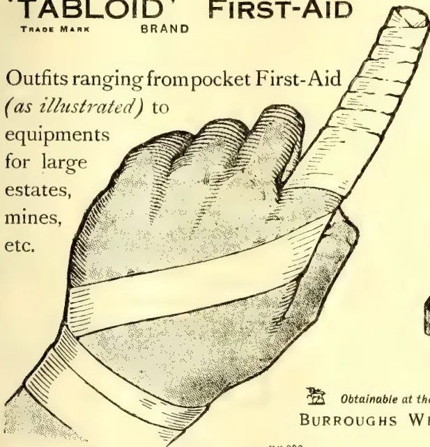
No. 710 'TABLOID' FIRST-AID
Ideal for individual use.
Can be constantly carried
in pocket, saddle-bag, etc.
Price in London 2/0
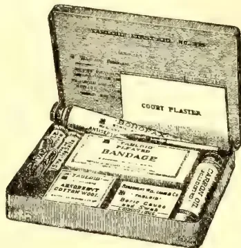
Obtainable at the principal pharmacies in all countries
BURROUGHS WELLCOME & CO., LONDON
rr 392
ALL RIGHTS RESERVED
The recent discussion in the Tropical Agriculturist Supplement on the subject of a hat-making industry for Ceylon, suggested by our Manila Correspondent, has led to an interesting letter from a Japanese gentleman. Our correspondent is Mr. S. Iida, Manager of the Yokohama Nursery Co., Ltd., to whom we are greatly indebted for a report on what is doing in this line in Japan. He writes:—
The straw hats made from the Pandanus leaf, bleached quite white, resemble the Panama hats in the weave and shape. This industry was started about ten years ago in Formosa originally, and as the demand grew it has been established in the Loochow Islands where the grass grows wild luxuriantly, and in some provinces of Japan proper. The annual outturn is not certain, but a rough estimate would be 10,000 doz. valued at Yen 200,000. Men's hats cost Yen 10-30 per doz. Ladies'—Yen 35-50, the latter is for foreign market exclusively. The industry has now been firmly established and appears to grow rapidly. It will, moreover, do so more rapidly if all Chinamen cut off their queues, as it is already felt that the supply is far too short.
The hat made of young Chamaecops excelsa, leaf bleached white looks somewhat like the Panama hat, but the material is coarser in touch and rougher in texture. This and the Panama hat made from the genuine imported Panama straw (Carudovia Palmata) is also made in Japan though on a small scale.
These hats are entirely made by hand, and no machine whatever is used in the manufacture. If you have the suitable material and your people be interested in the making, they will need no teaching but simply to undo the cast-off Panama hat and thereby learn where to start and how to work, and they will acquire the dexterity of fingers in a few months. The talipot (Corypha umbraculifera) produced in Ceylon I judge to be too coarse for the hat making purpose, not so pliable as the Panama straw. The length of grass or palm leaf blade should be 24-30 inches; immature pliable materials are preferable. Any palm leaves can be bleached by means of sodium peroxide. If any further information is required, I shall be pleased to communicate.
Manila, Jan. 25th.
DEAR SIR,—I wrote recently, sending you extracts on the Hemp industry, &c., and mentioned that men get 1-3rd of the Hemp for cutting and stripping it. I find that they get P2 (2 pesos), value 4s., a day, for this work, or one-half of the hemp, if they prefer it. The work of stripping the Hemp is very hard, and sometimes causes rupture. The Hemp planters will probably find that it will pay them better to sell the stalks whole to the paper bag manufacturers, rather than give men one-half of the Hemp, to cut and strip it for rope. There will be a boom in Hemp planting. Land is cheap, and Hemp is easily and cheaply grown.—Yours very truly,
MANILA COR.
36 282The Supplement to the Tropical Agriculturist[By F. G. SPRING, SUPERINTENDENT,
GOVERNMENT PLANTATIONS, F.M.S.]
Seeds of Hevea brasiliensis do not retain their vitality for a long period and the consequent difficulty of forwarding them successfully to distant countries is well known. This year several hundred thousand Para seeds from tapped trees were packed in Venesta chests with charcoal and forwarded to Trinidad. The results obtained were far from satisfactory although the seeds were most carefully selected and packed.
There is no doubt that seeds picked immediately on falling, and carefully packed, give the best results. If they are allowed to lie on the ground, or if badly packed, a smaller percentage of germination will be obtained. It must be borne in mind, however, that no matter how the packing has been done, the vitality of Para seeds cannot be retained for any length of time if they are not gathered immediately. The seeds must not be packed too many in a box, otherwise fermentation starts and the whole mass heats and loses its vitality; the packing material must be just sufficiently moist to prevent the seeds from drying out and not moist enough to encourage the growth of moulds and bacteria. For the same reason the packing must be fairly tight and yet not quite air-tight. Small boxes seem better than larger cases.
Experiments have been carried out as mentioned in a previous article* at the suggestion of the Director of Agriculture to compare the germinating power of seeds from tapped and untapped trees (Expt. I.) and to see if by coating the surfaces of the seeds with various substances (Expt. II.) the germinating power could be retained for a longer period. The tapped and untapped trees selected for the experiments are 12 years old; the first mentioned have been tapped for the past two years, the seeds were collected fresh each morning and treated as mentioned in the following list.
All seeds were packed with burnt padi husk in biscuit tins, each containing 200 seeds. The tins were wrapped in brown paper and sealed.
Boxes Nos. 1, 2, 3, 4, 5 and 6 were kept 3, 5, 7, 8, 9, and 10 weeks respectively then opened, and the seeds planted in well prepared nursery beds. It will be seen from the tables that seeds from untapped trees gave on an average 50 per cent. higher germination than those from tapped trees reckoned on the absolute percentage. In each test the former showed from two to three times as many germinations as the latter.
A record of similar experiments is published in the Circulars and Agricultural Journal of the Royal Botanic Gardens, Ceylon, Volume IV., No. 11, May 1908. This circular states that "seeds from tapped trees kept for five weeks did not germinate but those kept for four weeks showed 28 per cent. germination while seeds from untapped trees kept for four weeks did not germinate and those kept for three weeks showed only 3 per cent. germination. Both in percentage, germination, and time of germination the seeds from tapped trees are better throughout."
No information is given regarding the manner in which the seeds were kept previous to planting. It will be seen that the Ceylon figures are at variance with those obtained here, but it is difficult to say why this should be. The Ceylon Circular also states that seeds from tapped trees are smaller, weigh less per 1,000 seeds than those from untapped trees. This agrees with the figures obtained here namely, seeds from untapped trees were found to be on an average 10.7 per cent. heavier than those from tapped trees of similar ages. The figures in Experiment I. are of interest not only as regards the suitability of exporting seeds from untapped trees but they also tend to show the effect tapping has on the vitality of the seed. Tapping lessens the weight and size of the seeds, and according to the present experiments reduces the germinating power.
It is evident that seeds which are to be exported are best selected from untapped trees.
Experiments are to be conducted to compare the growth of plants resulting from seeds of tapped and untapped trees.
TABLE I.--Percentage of Seed Germination obtained from Tapped and Untapped Trees.
| No. of box. | No. of seeds in box. | Length of time the seeds were in boxes. | No. of plants obtained. | Percentage of seeds Germination. | ||
|---|---|---|---|---|---|---|
| Tapped. | Untapped. | Tapped. | Untapped. | |||
| 1 | 200 | 3 weeks | 67 | 156 | 53 | 73 |
| 2 | 200 | 5 do | 46 | 133 | 23 | 66 |
| 3 | 200 | 7 do | 48 | 100 | 24 | 50 |
| 4 | 200 | 8 do | 40 | 167 | 20 | 83 |
| 5 | 200 | 9 do | 40 | 164 | 20 | 82 |
| 6 | 200 | 10 do | 49 | 165 | 24 | 82 |
The seeds in these experiments were collected and packed in a similar way to those in the first experiment but they were coated respectively with bees wax, hard paraffin, and vaseline. The beeswax and hard paraffin were melted and the seeds dipped into their respective liquids, allowed to solidify and then packed. Previous to planting the seeds, the hard paraffin, beeswax, and vaseline were removed.
The percentage of germination of untreated seeds from tapped trees can be seen by referring to experiment I. On comparing this with the seeds coated with beeswax it will be seen that the latter showed an increased germination to the extent of approximately 30 per cent. The seeds coated with hard paraffin gave better results than untreated seeds from tapped trees but not as good as those coated with beeswax.
The seeds treated with vaseline did not germinate. The coating of rubber seeds with any substance is undoubtedly an expensive treatment but if seeds have to be sent to countries which take from 1½ to 2½ months to reach and seeds from untapped trees cannot be obtained, then, I think that the extra percentage of germination resulting from seeds being coated with beeswax would more than repay the extra expense entailed by this system of treatment.
* Agricultural Bulletin of the Straits and Federated Malay States Vol. X, No. 11, p. 345, November, 1911.
and Magazine of the Ceylon Agricultural Society.—March, 1912. 283
TABLE II.—Percentage of Germination of Seed from Tapped Trees coated with Bees' Wax and Paraffin.
No. of Plants Obtained. Percentage of seed Germination.
| No. of box. | No. of seeds in box. | Length of time the seeds were in boxes. | Bees Wax. | Paraffin. | Bees Wax. | Paraffin. | Untreated.* |
|---|---|---|---|---|---|---|---|
| 1 | 180 | 3 weeks | 107 | 83 | 59 | 34 | 33 |
| 2 | 180 | 5 do | 108 | 71 | 60 | 40 | 23 |
| 3 | 180 | 7 do | 94 | 74 | 52 | 41 | 24 |
| 4 | 180 | 8 do | 87 | 66 | 45 | 37 | 20 |
| 5 | 180 | 9 do | 100 | 61 | 55 | 34 | 20 |
| 6 | 180 | 10 do | 86 | 58 | 47 | 32 | 24 |
* Untreated seeds from tapped trees (see Expt. I.)
In no case was there apparent a large falling off in germinating power from the third to the tenth week. It is hoped to repeat both experiments in 1912 - Straits Agricultural Bulletin for February.
MORE FROM MR. WICHERLEY.
Sir,—The contribution from my pen on the subject of coconut growing appears have created in the minds of some of your correspondents an erroneous idea in regard to the position of the Federated Malay States as a copra producer. I have no brief for Ceylon, or any other centre of the industry, and in drawing a comparison between the values of output from the places named and Malaya I was merely showing the difference between what is indisputably the finest and highest-priced copra the world produces and a product, which, whether there are shortcomings in the Malaya variety of coco plant or not, has not heretofore been put upon the market in a condition to compete successfully with the Ceylon and Southern India article. I have already given my testimony elsewhere to the adaptability of the Malayan soil for all the purposes (including the raising of the coconut palm, which grows faster and begins to bear sooner than in Ceylon) to which European capital can be profitably applied; and as regards copra, the official figures testify eloquently to the happy condition of the industry, and it would be superfluous for me to add a syllable thereto. I would, however, respectfully point out to your correspondent, Mr. Hallifax, that "quit rent" lands are not absolute freeholds as such obtain in India and Ceylon. Furthermore, what does your correspondent mean when he says, speaking of the "alleged" superior value of Ceylon and Southern India plantations, that "unfortunately for Mr. Wicherley the facts are too well known to permit of any doubt whatever"? Does he traverse the market quotations as to values of Malayan copra as against that from Malabar and Ceylon? I wrote with the actual market prices for the day before me and also from data giving prices ranging over a long period of fluctuating values. When Mr Hallifax speaks of a "superior process of treatment now in use," does he not give his own argument away? I have some knowledge of the Marseilles copra market, and, save for small occasional consignments recently forwarded from Penang by an enterprising Frenchman (M. Marot), who claims to be able to turn out an article so superior that
even the mail boats do not refuse to carry it, I have never yet heard of Malayan copra fetching a price "higher than Ceylon copra now commands or is ever likely to command." I can assure Mr Hallifax that the Malayan authorities themselves would welcome any such appreciation in the Peninsula copra, but nobody conversant with the actual facts can with any seriousness maintain such a claim.
With regard to coconut land valuation, I ventured early in the summer of last year to address a letter to the Financial Times on this very matter, and I stated therein the lines upon which values should be obtained "in the probable absence of any estate books," and these coincide with the suggestions of your correspondent. But in the present case "Query" asks for certain information in circumstance which point to the probability of an estate under European manipulation in Malaya, and that was the reason for advising inspection of "estate books" among other things of course. I can only reply to the question Mr Hallifax puts to me regarding native ownership of coconut estates in Ceylon by saying that nobody having a practical knowledge of the subject can reasonably expect a coconut plantation with its restricted values to have the same attractions for European capital and European enterprise as, say, a rubber estate, and that is the reason why, I take it, that, in spite of the heroic efforts of promoters during the last 18 months, underwriters are unsympathetic towards coconut estate propositions, even when these are on offer from freehold Ceylon.
As a safe investment, yielding always a moderate and steady return on one's capital, I doubt whether there is anything in tropical agriculture (outside rubber growing) to compare with good coconut lands.
But there are, I repeat, better openings and immense possibilities in the exploitation by European capital of those waste products which have always been too much for native enterprise and native talent. It was the same with regard to the introduction of the desiccated coconut. Although the native desiccated the nut daily for his curry, it was left to an enterprising Englishman to make a big and quick fortune by placing it upon the European market in a style that was both businesslike and attractive.—I am, &c.,
WILLIAM WICHERLEY.
22, Limes-Grove, Lewisham, S.E., 26th Feb.
Sir,—The correspondence on coconut growing published in your columns from time to time is always of great interest, and you will doubtless receive more replies than mine to the letter which you publish to-day from Mr William Wicherley, and to the heresies enunciated therein in regard to coconut growing in Malaya, and particularly to those contained in the last paragraph of his letter against the copra industry in general. As he has dealt seriatim with "Query's" questions, I will, for the sake of succinctness, follow on the same lines. (1) The Malay Peninsula—on the land bordering the sea—affords excellent facilities and the very best
284The Supplement to the Tropical Agriculturistgeographical and climatic situation for growing coconuts. Especially do I allude to the East Coast of the Peninsula, and in particular to the State of Kelantan, which but recently opening up is now advancing by leaps and bounds. It is a well-known fact that here coconuts grow in more luxuriant profusion than almost anywhere else in the world, the Kelantan nut being famed for its weight and size, averaging 200 nuts to the picul (equal to 133 1-3 lb.) of copra. In the district I refer to, the lie of the land, climate, and proximity to the sea are all that can be desired. The soil is the ideal soil for the coconut palm, and its physical qualities make it very easy to work. Ceylon copra admittedly commands a better price in the market, but for this there is a reason apart from any extra merits in the nut itself. When good care is exercised in harvesting the nuts under European supervision, such as is seen in Ceylon, where coconut raising has been such a profitable industry for years, the copra thus produced commands a higher price than when less or very little care is shown, and when the copra of both ripe and unripe nuts is mixed. Given intelligent management and the collection of only fully ripe nuts, the highest market price would be obtained and the highest percentage of oil extracted. It has been calculated by experts that by the selection of ripe nuts alone an increase of expressed oil can be obtained 300 to 400 per cent. in excess of carelessly gathered and carelessly dried nuts. Today in Malaya, except on one or two estates now coming under European supervision, the collection of nuts and drying the copra have been entirely in the hands of the natives, this fact accounting for the difference in price.
(2) Mr. Wicherley is right in saying that yields compare favourably with other places. It is safe to allow in this district for six-year-old trees an average of 10 nuts per tree, 30 at seven years, 40 at eight, 50 to 60 at nine to ten, and 80 nuts at eleven and upwards. With careful attention an average of even 100 nuts per tree could be secured, so favourable are the local conditions.
(3) Cost of production in Malaya is only high when imported indentured labour has to be provided. In the State of Kelantan there is a large native labour force on the boundaries of the estates now being opened up, and I would challenge Ceylon, or even Southern India, to show cheaper work than is being done in this district.
(4) It is true there are no freehold estates in Malaya; but in Kelantan, at all events, and I believe also in the Federated Malay States, land is held on tenure direct from the Government in perpetuity. The Land Office is always open to register transfers of land to responsible parties, so that to all intents and purposes this method of lease is as good as any freehold. The quit rent here is only one-half that named by your correspondent—namely, 50 cents (1s 2d) per acre for the first six years, when trees are considered to be in bearing, and $1 (2s 4d) per acre thereafter in perpetuity.
I cannot follow Mr Wicherley's calculation in regard to profit to be obtained from 500 acres. Allowing 55 trees per acre, and an average of 45 nuts only per tree—with 225 nuts to the picul,
or 4,000 to the ton (his own figures) at to-day's price of $10.50 (Straits currency) per picul—this gives a gross return of £6,700. Again, allowing for his estimated expenditure of £2,000 (equal to £4 per acre, which is excessive), this leaves a net profit of £4,700 per annum, against his £1,000. What he does with the difference he does not tell us.
(5) At present in Kelantan beetles or other pests are hardly known, and, owing to the wise prescience of Government, which has formed a special department with staff and inspectors to deal with this question, should there be an appearance of any of these pests the methods available would at once place a limit on their operations.
(6) In regard to the relative prospects for investments in Ceylon or Malaya, I venture to say that the latter presents by far the most favourable opportunity. Even to-day land can be obtained in the latter without such high premiums as are at present being demanded in Ceylon, and for any investor who has the capital and the pluck to get in now on the ground floor he would see, in six years time, 100 per cent. per annum or more on his money, even allowing for a lower level in copra prices than those now current.
The world-wide demand for copra occasioned by the increased uses of the oil, not only for soap, but as the base of a wholesome margarine or "nut" butter, at present shows possibilities of unlimited expansion in almost all European countries and in America. The coconut industry is growing in importance more rapidly than any other, and it offers opportunities and inducements for employment of capital second to none in the world of tropical agriculture, and I would refer to an extract from a recent report of Mr R W Munro on the Sungei Kechil Estates, in which he says: "Touching on coconut cultivation as an investment I always consider that one of its chief attractions is the exceptional stability of the product, which renders a fairly accurate forecast of the profits possible for many years ahead". It is quite true that there is also an ever-present and increasing demand for fibres of any and every kind, and experts state that by utilising the fibre of the husk at least 33 per cent. could thereby be added to the profit on copra. At present, throughout almost the whole of Malay, these husks are thrown to waste, owing to no capital having been employed in erecting deoorticating plant. But the mainstay of coconuts is the oil, and, for the reasons which I have enumerated above, I emphatically join issue with your correspondent in his statement that handsome returns are not to be obtained from coconut estates.
You are at liberty, sir, to give Mr Wicherley my name and address should he desire it, but not wishing to be advertised as engineering his "boom," which will come all right of its own volition.—I am, &c.,
A BELIEVER IN COCONUTS.
London, W. Feb. 20th
Sir,—In confirmation of the statements contained in my letter published in your issue of the 24th instant that the State of Kelantan, Malay Peninsula, is in the best situation, both geographically and climatically, for coconut
and Magazine of the Ceylon Agricultural Society.—March, 1912.285growing, I would like to draw the attention of those of your readers who may be interested in the subject to the official "Kelantan Administration Report" for 1910, signed by Mr. J Scott Mason, the remarkably able British Adviser to the Government of Kelantan.
On page 3, paragraph 4, Mr. Mason writes :— "At the Agri-Horticultural Show held in Singapore in August Kelantan nuts were awarded the first prize for husked coconuts, and the first prize for the best bunch of coconuts. Tungku Besar, who exhibited for the first time, informed me that 180 nuts were sufficient to make one picul of copra : a wonderfully good return."
I venture to say in all confidence that neither in Ceylon, the Philippines, nor the West Indies can such a return be shown, the coconuts of these countries averaging 220 to 225 to the picul of copra.—I am, &c.,
A BELIEVER IN COCONUTS.
London, W., Feb. 25th.
—Financial Times.
is already an industry pressing close on the heels of that of Ceylon. We estimate that 1,000 to 1,200 million nuts are produced here yearly by coconut-palms not reserved for other purposes than nut-bearing. Our Manila correspondent writes below on the subject and sends an extract, showing 965 million nuts were harvested in the Philippines last year; and extensions are proceeding apace. The "Consols of the East" are free from the depressing influences that could lower their value like those affecting British Consols; it is no wonder that Ceylon men who have made money in rubber, or inherited it, or both, come back here to look out for coconut property to invest in and seek a safe return in double-figure interest thereon.
Manila, March 4th.
DEAR SIR,—The Malanao Coconut Co. gives some interesting particulars. Coconuts pay well here, with very little cultivation. The trees are not pruned at all, and the nuts are allowed to fall. Dead trees are not cut down and the fallen trees are allowed to rot on the ground, and become a breeding-place for beetles. I saw coconuts at Dogupan which are about 20 per cent larger than any nuts I saw in Ceylon. There is also a small nut. There are no desiccated coconut factories, and one would pay well. Coconuts are only grown for ornament in Manila, and the nuts are 5 cents in the market, and drinking coconuts, or "curumbas" cannot be bought. People do not eat curry here, and it is a rare dish at a Restaurant, and made without coconut milk, with old curry powder prepared in London by Cross and Blackwell. An Indian merchant has recently imported curry powder from Calcutta and told me that he sold a large quantity to the army, but I am sure that the army soldier cooks cannot make a good curry, and would not think of putting coconut milk in it.—Yours, &c.,
MANILA COR,
(Extract.)
“Coconut growing offers an almost assured certainty of large and steady returns from comparatively small investment? That in 1911 the copra exports equalled 24.89 per cent of all Philippine exports. That about 965,155,699 nuts, making 115,602 metric tons of copra, worth $19,798,914.00, were harvested during 1911. That an annual profit of at least 2 pesos per tree is being made from hundreds of present bearing groves. That with proper selection of seed-nuts, proper planting and care this profit could be greatly increased. That a safe and reliable company has been incorporated in Manila for the purposes of growing 100,000 trees by the most approved methods, in one of the best locations in the Philippines—free from typhoons, droughts, wild hogs and coconut beetles. That stock in this company can be secured at par with payments for same covering a period of five years. That all money paid in will be held by the bank of the Philippines until 85 per cent is subscribed thus assuring the presence of sufficient funds to properly develop the plantation. That the proposed plan in detail can be secured by addressing. The Malanao Coconut Company, 9 Plaza Cervantes, Manila.
In view of the large amount of building extensions proceeding in various towns in the East, Colombo most especially, the outturn of teak (which figures so much in our buildings) is of considerable interest. We see that the Siam Observer understands that there is a slight upward tendency in the Bangkok teak market at present, owing to the smaller arrival of rafts from upcountry last season, which ended in January. The rise is principally in first-class wood, quality squares and planks being in particular demand. Both in Siam and Burma there has been a certain shortage in the supply. A few of the sawmills have ceased working for some time past. The coming season which opens in June next is expected to be a good one, but nothing definite can be stated just now by the dealers as everything depends upon the water supply.
Ten Seconds Per Lot.
The rapidity with which over 800 tons of plantation rubber were sold at the last auction sales is most gratifying and businesslike. It must be remembered that the sale practically lasted only two days, from 11 a.m. to 5 p.m. each day, less 1½ hours for lunch. A turnover of approximately £400,000 in such a short period stands as the record.
As an instance of the rate at which business was done it is interesting to place on record that Mr. Oliphant Devitt (Lewis and Peat) disposed of 494 lots in one hour, twenty minutes, or at the rate of about six lots per sixty seconds. Well might we remark, "like father like son."—India Rubber Journal, March 2.
286The Supplement to the Tropical AgriculturistU.S. A. DEPARTMENT OF COMMERCE AND LABOUR
MONOGRAPH.
Washington, Feb. 16, 1912.—An instructive and interesting report on the cocoa production of the world and trade therein has just been prepared by the Bureau of Manufactures, Department of Commerce and Labour, from a great variety of reports from almost every country in the world where cocoa is produced. This document covers more than 50 pages, and from it the information is deduced that the world's production of cocoa in 1911 increased 13 per cent., compared with the previous year, and aggregated a total of 551,816,985 pounds. The great increase in the previous five years is shown by the returns for 1905, which gives the world's total production of cocoa at 317,440,805 pounds.
The methods of handling and the international movement in cocoa and its products, together with some details of the methods of manufacture, with an analysis of the best character of cocoa beans, is summarized as follows:—
Raw cocoa is handled principally through middlemen at both shipping and receiving ports. Consumers of raw cocoa—that is, the manufacturers of chocolate and other cocoa products—do not deal direct with planters, and few manufacturers themselves own plantations. The Portuguese Islands São Thomé and Príncipe, Ecuador, Brazil, Trinidad, Gold Coast, Venezuela, and the Dominican Republic are the principal growers of cocoa. São Thomé and Príncipe cocoa is practically all handled through Lisbon. The leading shipping points in the other countries mentioned are Guayaquil in Ecuador, Bahia in Brazil, Port of Spain in Trinidad, Accra in the Gold Coast, La Guaira in Venezuela, and Sanchez in the Dominican Republic.
The United States ranks first in the list of cocoa-making countries, followed by Germany, France, England, Netherlands, Switzerland, and Spain, in the order named. New York is the principal cocoa market in the United States, the imports of raw cocoa and cocoa shells through that port during the fiscal year 1910 having been 104,432,000 pounds, out of a total of 108,668,070 pounds imported into the United States. In Europe, the principal markets are Hamburg, Havre, and London. Quotations, terms of sale, etc., are described in some detail in the report from Havre.
According to Payen the average composition of good West Indian beans is as follows:—Fat (cocoa butter) 50 per cent starch, 10 per cent; albuminoids, 20 per cent; water 12 per cent; cellulose, 2 per cent; mineral matter 4 per cent, and theobromine, 2 per cent. The fat, along with the other constituents, makes the beans very nutritious, but too fatty to suit many people's tastes, and in the preparation of cocoa it is separated.
The chief stages in the manufacture of cocoa products are: (1) sorting and cleaning of raw beans, (2) roasting, (3) breaking and shelling, (4) grinding of the roasted and broken beans and the addition of other substances, such as sugar and species, (5) molding and packing. The various products of these processes are (1) cocoa shells, (2) cocoa nibs, which are
simply the broken up pieces of the roasted beans, (3) chocolate, which is the ground nibs with the addition of sugar and flavouring material; (4) cocoa used for a beverage, which is the ground nibs with most of the fat extracted; (5) cocoa butter.
Regarding the plan for the valorization of cocoa upon somewhat similar lines to those adopted in Brazil for the valorization of coffee is summed up in this paragraph on the authority of Omar E. Mueller, of Bahia, showing the aims and purposes and the countries party to the plan, as follows:—
The three countries to participate in the agreement are Portugal, Ecuador and Brazil, representing the cocoa ports of São Thomé, Guayaquil and Bahia, respectively. At each of these ports the cocoa exporters and receivers are to nominate a local commission for the direction of local interests. Each of these local commissions will designate a representative to constitute an Executive Committee of three to reside in some European centre as yet undetermined, probably Hamburg or Antwerp.
This executive committee will be empowered to establish periodically a minimum price at which cocoa will be sold. If feasible, it will recognize only two grades of cocoa and determine but two corresponding prices. These two grades will be known as superior and good or fair.
It is expected to control over 50 per cent. of the world's production of cocoa, and this margin. It is optimistically anticipated, will be sufficient to permit the imposition of a minimum price upon the world's markets.
The aim of the valorization committee is stated to be to establish stable conditions and neutralize the speculative fluctuations which have hitherto prevailed with respect to this commodity. This moderate program has gone far to enlist the confidence of local exporters, because it is felt that cocoa planters are already realizing a very good profit of from 75 to 100 per cent. net. and that any artificial raising of the price of cocoa would accrue neither to the advantage of the exporter nor to the country at large, because it would inevitably lead to a decreased consumption of the grade of cocoa raised here and stimulated the output of countries outside the syndicate, such as Trinidad and Haiti. In this respect the conditions are not analogous to those prevailing relative to coffee at the time the coffee valorization was effected. Then the coffee planters were raising so much coffee in excess of what the market could absorb, that they were forced to sell their product below the cost of production.
The American and the foreign press have both devoted considerable space to reports on the project, the various details of which have been fully discussed. The financing of the plan is the most important requisite to its success, and the realization of sufficient capital is in doubt. The fact that cocoa beans deteriorate if kept in storage for a length of time offers a serious obstacle to the success of the project. In 1900 Portugal (São Thomé and Príncipe), Ecuador, and Brazil produced 225,152,679 pounds of cocoa beans, out of the world's crop of 487,012,136 pounds, or less than one-half.—New York Oil Reporter, Feb. 19.
and Magazine of the Ceylon Agricultural Society.—March, 1912.287The time is approaching when it will be necessary for dealers in raw rubber, manufacturers, and contractors generally, to reconsider the question as to the form of rubber which must be taken as the standard. In the past Fine Hard Para has always been accepted as the standard on account of its quantity and comparative uniformity; the runner-up in point of quality has been plantation Hevea, the quotation for which has usually been given as so many pence discount or premium compared with Fine Hard. The premier position has hitherto been denied to the plantation product, firstly because of its reputed variability and secondly on account of its insignificance as an annual crop. Furthermore, some government contracts have continued to insist upon the use of Fine Hard Para, this being, to the officials responsible, the only reliable standard known. Elsewhere, however, first quality plantation Hevea has been accepted in important contracts, and we have good reason for hoping that the same will be the case in this country ere long.
It is not proposed to revive the discussions regarding the variability of plantation grades beyond merely acknowledging that it unfortunately exists. But with this concession we must also couple the contention that Fine Hard Para is also variable, not so much in the working processes as in loss on washing. The difficulty of adapting plantation Hevea in the manufacturing processes will very soon be overcome, and is largely compensated for by the fact that it is more constant in actual composition than any other form known.
The main factor in determining a standard form of rubber is the quantity likely to be available of the particular grade under consideration. This is specially the case when the runner-up is admittedly pure and likely to be favoured by consumers in virtue of its intrinsic properties. The fact that the regular fortnightly sales in London are now dealing with from 1,000 to 1,500 tons per month is sufficient to indicate the existence of a substantial source. The appearance of such large quantities of plantation rubber at the regular auctions has entirely thrown into the background the fluctuation in Brazilian supplies. The holding up of two or three thousand tons of Fine Hard Para has no longer the effect on markets which such a procedure once had. The plantation supply of 500 tons in 1906 was doubled in 1907; 1,800 tons were produced in 1908, 3,800 tons in 1909, 8,200 tons in 1910, and 14,000 tons in 1911. This year the plantations may yield from 20,000 to 25,000 tons. And soon it will be more than the maximum crop of Hevea from tropical America. There are 25 separate plantation companies concerned with the cultivation of Hevea in the East, which if I mistake not, will together produce 25,000 tons of rubber annually at some future period. The point does not, I think, need much argument. It may be taken for granted that the crops of plantation Hevea will, in point of the quantity as well as constancy in composition, dominate the rubber market in future years.
There is another factor to be borne in mind which unmistakably proves that the comparatively new arrival is of greater value to many buyers than the old standard rubber. That is the price paid for first quality plantation. For many years plantation Hevea was quoted at a discount, and for quite a long period the prices paid for plantation and Fine Hard Para have been badly balanced. For instance, in 1910 the month of January saw plantation rubber at a discount, in February a premium was paid; this gave way to a discount in June, and so on. But from April of 1911 to the present time plantation Hevea has consistently stood at a premium of from 6d. to 8p. per lb. This premium has been established when large supplies have been available. Manufacturers by this time know that many estates can deliver large quantities at regular intervals—twice per month—of rubber which they know loses very little on washing. Already they are entering into forward contracts for 1913, at from 4s. 4d. to 4s. 6d.; a figure very close to that for spot Fine Hard.
It is therefore clear that in point of (1) constancy in composition, (2) prices paid, and (3) supplies plantation Hevea is now in a position which warrants universal recognition. The day is not far distant when marked reports must give the price not of Fine Hard but of average first quality plantation against which all comparisons can be made, and thus place that commodity on its proper footing.—India-Rubber Journal, March 2.
From the orders recently passed by the Government of Madras on the question of dealing with the destructive disease affecting the palmyras, and to some extent also the coconut palms, in the Godavery and Kistna districts, it would appear that the seriousness of this pest is still far from properly appreciated by the authorities, and it is doubtful if the steps that are being taken for its eradication are in any way adequate. It is, however, some consolation to find that the Government express their disapproval of the method of coping with the disease suggested by the Board of Revenue in September last, viz., that in place of the present system of cutting the diseased trees throughout the affected areas, an attempt might be made to patrol the boundaries of those areas so as to prevent the disease from spreading. Indeed, the very suggestion to tackle such an intricate problem as this palm disease in such a perfunctory way will create a doubt as to the ability of the authorities to give sound advice regarding a mycological problem of this nature. We have for many years advocated the employment of a qualified Mycologist to investigate this trouble, and we believe the Board of Revenue did so also as long ago as 1908. The Agricultural Department has since been reinforced by the appointment of Mr. W. McRae, an expert mycologist, and yet the Government in their recent Order, state that they are inclined to think that it would be possible to make a
288The Supplement to the Tropical Agriculturistmore efficient scientific study of the disease if the Mycologist deputed one of his assistants to reside in the affected tract... Had expert advice been sought five or six years ago, and acted upon without delay, in connection with the destructive disease in the Godavery delta, there is little doubt that it would have been overcome by now, and much money saved and anxiety avoided. The chief feature of the papers issued with the Government's latest Order in connection with the disease is the amount of speculation indulged in by the various officers whose opinions have been invited, regarding the harm that may be done by the fungus and the best way of dealing with it... What is wanted, therefore, is not theories, doubts or conjecture, but full and detailed information regarding the life-history of the fungus, as pointed out as long ago as June, 1908, by Mr. M. E. Couchman, I.C.S., who was at that time Director of Agriculture; and the man to obtain this is, we repeat, obviously Mr. McRae, and not one of his assistants. Once this information is available, Mr. McRae would be able to give some definite advance as to the best means to be adopted in dealing with the fungus, and it behoves the Government to see that that advice is acted upon without delay, even if it entails special legislation to empower Revenue Officers to order the cutting down of diseased trees. This is a matter which concerns, not the affected districts alone, but every District in the Presidency where palmyra and coconut palms are grown, for, in the light of the opinions which McRae has expressed already, there is every probability of the disease, if neglected, gradually spreading over both the East and West Coasts. Then, indeed, as he says, the damage to palmyras would be very great, and one hesitates to contemplate the loss which such a disease might cause among coconut palms. —M. Mail, March 21.
The Rubber Growers' Association, London, Offer their Gold, Silver and Bronze Medals (each with Diploma) for the three samples of plantation Rubber (irrespective of the method of preparation or country of origin), specially entered for the Competition, that may be placed highest by the Jury. The following (received by to-day's mail) are the
filled up as prescribed must be enclosed in the case. Competitors may attach to this cards giving supplementary information as to the place and method of production, the postal address of the estate, the office of the owners, etc., for the benefit of manufacturers or possible buyers. Portions of each sample received within the prescribed time will be placed on show in the Raw Rubber Section of the Exhibition, adjoining the general exhibits of producing countries, and all the foregoing information will be attached to the samples by the Exhibition staff after the awards have been made.
5. Competitors will be required to certify on the Form of Entry accompanying the exhibit the genuineness of any sample sent in for competition and to have their forms countersigned by an official of their local Association, but in the case of estates unconnected with any Association, the signature of the nearest British Consul or other recognised local official will be accepted.
6. The awards will be made immediately on the opening of the Exhibition, without scientific or chemical tests and merely on the basis of commercial value, by a jury consisting of not fewer than seven members selected from the raw rubber experts of New York.
7. The decision of the jury shall be final in all matters connected with the competition.
8. At the close of the Exhibition all samples sent in will be sold by the Exhibition authorities, if possible by auction, to the regular consumers of such rubber, and the net proceeds remitted to the competitors.
9. All samples must be delivered carriage paid to the building between September 10th and 16th addressed :—
A STAINES MANDERS,
Manager, Rubber Exposition,
Merchants' and Manufacturers' Exchange,
Grand Central Palace,
46th and 47th Streets, Lexington Avenue,
New York City,
and marked "Raw Rubber," with country of origin, in bold letters. (Note.—This is necessary, New York being in a protective country; all raw rubber is admitted duty free, but if marked it will facilitate Customs entry). The samples will be unpacked, displayed and covered by Fire-Insurance, free of charge to competitors.
10. Forms of Entry (in duplicate) may be obtained from the Secretary, Rubber Growers' Association, 1, Oxford Court, Cannon Street, London, E.C., and from Rubber Planters' Associations in all parts of the world, and one copy thereof must be returned not later than the August 10th, 1912, to A. Staines Manders, Manager, International Rubber and Allied Trades Exposition, Grand Central Palace, 46th and 47th Streets, Lexington Avenue, New York City. All letters bearing the post mark of August 1st, 1912, will be accepted as entries.
Note.—Consular Invoices upon the forms supplied by the Government of the United States of America must be prepared for each shipment, and legalised by declaration before the Consul at the shipping port. Upon completion they should be forwarded with the shipping documents to Mr A. Staines Manders, at the address stated above, who will clear through Customs.
THE
TROPICAL AGRICULTURIST
AND
MAGAZINE OF THE
CEYLON AGRICULTURAL SOCIETY.
VOL. XXXVIII.
COLOMBO, APRIL 15TH, 1912.
No. 4.
AGRICULTURE AND RESEARCH.
A PLEA FOR A BETTER UNDERSTANDING BETWEEN PRACTICAL AND SCIENTIFIC AGRICULTURISTS.
It will be generally conceded that misunderstandings sometimes arise between the practical exponents of agriculture and their scientific advisers. Among the factors which have led to this want of unanimity the writings of certain advocates of science cannot be entirely exonerated. There can be no doubt that the practical man is often contemptuous of science, whilst there may be a few of smaller experience who suppose with child-like faith that scientific methods can effect anything. From time to time scientific apologists have most ill-advisedly taken advantage of the frame of mind last mentioned, and have put forward in the name of science claims which at present are entirely unjustified. It is our object to occupy a few lines in a protest against these claims and in advocacy of a fuller measure of confidence.
Practically every agricultural country in the world now devotes large sums of money to agricultural research. In England the Board of Agriculture and Fisheries has recently initiated a scheme, some account of which will be found on page 386 of the last Volume of the Tropical Agriculturist. But this expen-
diture points the moral that science is not omniscient; these large sums are to be spent in the creation of new knowledge, not in the application of known facts. The test of hard cash, which is one which generally and quite rightly appeals to the practical man, teaches the lesson that more knowledge is urgently required.
The complaint has been made in more than one quarter that the staff of the Ceylon Botanical Department is not sufficiently in touch with the planting community, and it has been urged that it is the duty of its members to go forth into the plantations and endeavour to induce the superintendents to listen to their advice. The answer to this charge is that before knowledge can be communicated it must be created. An example may serve to drive this moral home. The present writer whilst in charge of the Mycologist's correspondence during the absence of the latter on a year's leave at home, found himself able without difficulty to identify, and to recommend the suitable treatment for nearly a dozen of the commonest diseases of rubber, tea, coconuts, and cacao. The knowledge so communicated represented six years' laborious study on the part of Mr. Petch. Prior to that gentleman's arrival in Ceylon it would have been utterly impossible for a highly-trained Mycologist to give more than vague and
290[APRIL, 1912.eneral advice on such matters. To take another example. The writer has been occupied during the past four years in experiments on the tapping of Hevea rubber, and is now beginning to consider himself competent to give advice on a few elementary points connected with this operation. Before these experiments were begun, it was found that no records existed anywhere which were in any way adequate for the use of an observer who wished to draw sound conclusions on the physiology of latex formation. How many years must elapse before these problems are even approximately solved it is impossible to estimate.
The complaint above mentioned has another objectionable aspect. It is a reflection upon the qualifications of the Visiting Agents of the Ceylon planting companies. We have been accustomed to look upon these gentlemen as a highly intelligent body of men, possessed of wide agricultural experience, and eminently well qualified to interpret the scientific results obtained at Peradeniya for the benefit of the superintendents whom they advise. It appears to us a proper arrangement that the Peradeniya staff should occupy themselves with research and expound the results of their researches in the Circulars and Agricultural Journal of the Department. The system of visiting is an agency well suited for carrying the light so kindled into dark places of remote plantations, even if the Postal Department should prove an insufficient vehicle. The great majority of Peradeniya Circulars, however, are couched in language which ought to be intelligible to any estate manager.
As regards the cultivation of the chief native products of Ceylon—Paddy, Coconuts, Cinnamon and many others—we may safely say that little scientific knowledge of any kind exists, and if it does not exist it cannot be communicated. For the improvement of these industries therefore the first necessity is research, and in every one of them a variety of problems awaits solution, requiring only time and brains for their elucidation in
addition to the necessary land and labour. But the brains and especially the time must be forthcoming. Hurried experiments and hasty conclusions are worse than none at all. For we think it will be admitted by all who are acquainted with the Goiya that advice which leads to failure is likely to make a more permanent impression upon his mind than a corresponding amount of sound instruction. It is therefore important to make sure of the success of the first new product or method introduced into any given district before recommending it widely, in order to avoid possible discouragement of those whom it is desired to benefit. The innate conservatism of the native cultivator in agricultural matters will only be strengthened if he finds that his advisers are liable to make mistakes. For the same reason the task of advising the villager in cultural operations should only be entrusted to highly-trained and cautious officers.
In this connection we may call attention to the opinions expressed in Mr. Bateson's address to the Agricultural Section of the British Association last year. The whole of this address, which is reprinted in the January number of the Tropical Agriculturist, is worthy of the careful consideration of all practical men, and no passage is more significant than the following:—
“Let us on our part beware of giving false hopes. We know no harmony ‘of sovran use against all enchantments, mildew, blast, or damp.’ Those who are wise among us do not even seek it yet. Why should we not take the farmer and gardener into our fullest confidence and tell them this? I lately read a newspaper interview with a fruit-farmer who was being questioned as to the success of his undertaking, and spoke of the pests and difficulties with which he had to contend. He was asked whether the Board of Agriculture and the scientific authorities were not able to help him. He replied that they had done what they could, that they recommended first one thing and then another,
APRIL, 1912.]291Saps and Exudations.and he had formed the opinion that they were only in an experimental stage. He was perfectly right, and he would have hardly been wrong if he had said that in these things science is only approaching the experimental stage.
"This should be notorious. There is nothing to extenuate. To affect otherwise would be unworthy of the dignity of science."
We suggest that those who profess that science is already able to cure all the ills that cultivated plants are heir to, ought to incur the suspicion of the public and of public authorities. They
lay themselves open to a charge either of ignorance or of insincerity.
We have, perhaps, emphasized sufficiently the present imperfection of scientific knowledge. We may close our remarks in a different key. The future is rosy with hope. If existing knowledge is limited, the course of future discovery possesses no such definable limitations. Given time, training, and ingenuity in devising new methods of attack upon outstanding problems, our knowledge of scientific agriculture cannot fail to progress steadily and surely. In agriculture, no less than in other lines of research, past successes augur well for future progress.
(From the India Rubber Journal, Vol. XLIII., No. 8, February 24th, 1912.)
The Peradeniya Circular, by Dr. R. H. Lock, on tapping of Hevea trees by the method of paring, though dated October, 1911, has only just been received. We would suggest that the staff at Peradeniya despatch their Circulars to Europe more promptly. The contents of the Circular are, however, of some importance, and we propose to give publicity to the views therein expressed, because they are not in exact accordance with those we hold. The following are extracts from Dr. Lock's Circular:—
Experiments carried out at Henaragod and elsewhere have shown that the interval between successive tappings—so long as this does not exceed a week or so—makes little difference to the yield of rubber per tapping. The interval chosen is therefore mainly a matter of convenience, and the most convenient interval is usually found to be one of two days. Daily tapping carried on continuously, unless the area tapped is very limited, entails using up the bark so rapidly that all the readily accessible bark is stripped
from the tree before the sections first tapped have sufficiently renewed to allow of a repetition of the process. This generally means in addition an excessive drain upon the resources of the tree, and in this way the renewal of the bark may actually be hindered. Two days between successive tappings is therefore the interval most commonly allowed.
The time which must be allowed for the renewal of the bark differs according to the size and vigour of the tree. But we think that experienced planters would generally agree with the following statement. If the system of tapping is such as to remove the whole of the external cortex to a height of 6 feet, tapping of the renewed bark may be begun after three years on large and vigorous trees, and these may be roughly defined as trees which have reached a girth of 3 feet at 3 feet from the ground at the period in question.
In the case of trees which do not exceed 2 feet in girth after two years' tapping, the rate of removal of the bark should be retarded in order that the renewed bark should not be touched for two years more, i.e., four years in all. To treat
Gums, Resins,292[APRIL, 1912.different trees according to their size would doubtless lead to difficulties in estate work, and under these circumstances we should recommend an interval of four years rather than one of three, except under very favourable conditions.
As regards the size at which tapping may safely be begun, we consider that trees less than five years old from planting should not be tapped at any point where they are less than 18 inches in girth. The reason for this restriction is that the bark is then so thin that it is almost impossible to pare without causing injury to the tree.
If it is decided to allow four years for the renewal of the bark, the simplest system which can be adopted is to divide the circumference of the tree into four equal parts, and to tap these successively by the half-herring-bone method. Each quarter section of the tree will then represent a year's tapping. The quarter section opposite the first should be tapped second, and the other two in order.
In an experiment at Henaratgoda twenty-nine trees were tapped daily by the herring-bone method with six cuts placed at vertical intervals of a foot. During the first month's tapping the three upper cuts yielded together a daily average of 558 cc. of latex (nearly a pint), and the three lower cuts a daily average of 561 cc. During the last month, at the end of which the bark between the cuts had been almost entirely removed, the average daily yield from each of the six cuts was as follows:—
| 1. | 2. | 3. | 4. | 5. | 6. |
|---|---|---|---|---|---|
| 77 | 86 | 98 | 82 | 83 | 440 |
Thus, when the bark between the cuts is nearly exhausted, the lowest cut yields as much latex as all the other five put together. In addition, the latex from the lowest cut is more concentrated, and contains a higher percentage of rubber.
These were old trees with a good thickness of bark. In the case of young trees we should expect the difference to be even greater.
While we admit that the vigour of the tree must be taken into account in determining the renewal of the bark, we cannot understand upon what evidence tapping renewed bark three years old is recommended. We have experience in many countries and on trees of different ages, and our view is that the four years' interval for bark renewal which we have laid down, should only under very exceptional circumstances be reduced. We would rather see the interval allowed for renewal of secondary bark increased to even five years than reduced to three. We are aware when making this statement that many trees upon which tapping was commenced when they were three years old appear to grow so vigorously that the renewed bark presents the general characters of primary bark when under four years old, and that on many estates such bark has been tapped and good yields obtained. But we also have information to hand which teaches us that even with a four years' bark renewal there is a check to the average growth of the tree, and that the yield of the rubber from renewed bark is not so much as many have been led to expect. We are informed that a gentleman who hails from Johore, and whose experience over a very large area of tappable trees is well-known, prefers to increase not only the period of the bark renewal above four years, but also to increase the minimum size of tapping from eighteen to twenty inches a yard from the ground. We believe it to be a much wiser course to adopt a method which will relieve to some extent the strain on the trees which the removal of the bark undoubtedly involves; it is better to aim at a long life and good steady yields rather than high yield and premature death. Until we see more evidence against us we shall continue to recommend a minimum period of four years for bark renewal in even the favoured countries, and a much longer interval for trees at high elevations, on bad soils, or in unsuitable climates.
APRIL, 1912.]293Saps and Exudations.Again, we must differ from the statement that the interval between successive tappings, providing it does not exceed a week or so, makes little difference to the yield of rubber per tapping. This is apt to lead to very bad work on some estates, and we hope that managers will not depart from the system of tapping every alternate day, or even, if necessary, tapping every day. We would much rather see the Peradeniya authorities lay stress upon the thinness of the bark shavings during tapping operations, and the mapping out of the tapping area on each tree in such a manner that the area available will last the minimum period we have previously specified. What, for instance, would be the practical issue if a manager on the advice given in the Circular only tapped once per week? What distance between the tapping lines would have to be allowed when the manager obtained bark shavings of an average thickness of one-twentieth to one-twenty-fifth of an inch? Surely there is something misleading in the suggestion made by our friends.
(From the India Rubber World, Vol. XLV., No. 1, October 1, 1911.)
With a view to defining and elucidating the situation, a Congress was opened on August 14, at the Ministry of Agriculture, Rio de Janeiro, composed of delegates from the rubber producing States of Brazil and from various Brazilian commercial bodies, interested in the solution of the rubber crisis. The Congress was under the presidency of Dr. Pedro de Toledo, Minister of Agriculture.
Among those present was Senhor Monteriro de Souza, deputy, representing the State of Amazonas and the Manaus Commercial Association; Senhor Passes de Miranda, deputy, representing the State of Para; Dr. Henrique Hirsch (of Messrs. Adolph Hirsch & Co.) representing the Bahia Commercial Association;
as well as a number of delegates from other parts of Brazil.
In his opening remarks, the President alluded to the rubber crisis prevailing in the north of Brazil; affecting, as it did, the second in importance of the export products of the country, and the source of a great part of the national wealth. Sacrifices would be necessary, but would be amply repaid by the industrial and commercial development of northern Brazil. With this in view, it had been considered advisable to formulate an organized plan, acceptable to the Government, in the elaboration of which material help had been given by Dr. Mendes, Director of the Commercial Museum, and Dr. Pereira da Silva, the well-known engineer.
The project, Dr. de Toledo added, had been drawn up in complete accord with the views of the President of the Republic. It embraces a systematic program of suitable measures, which when, once carried into effect, would ensure a period of prosperity to the rubber-growing States.
When the reading of the plan, of which translation is subjoined, had been concluded, Senhor Passes de Miranda expressed his approval of same. Senhor Henrique Hirsch, the delegate of the Bahia Commercial Association, asked whether the project was susceptible of modification. Dr. de Toledo replied that the proposals represented the initiative of the Government, with a view to meeting the competition of Far Eastern rubber. The plan was economic rather than financial in character; the Government being prohibited from entering into trading operations for the solution of the present crisis. The project, he added, was subject to such modifications as might be dictated by the experience of the delegates.
A proposal was unanimously accepted for the appointment of a Committee of five members to study the plan elaborated by the Government, and to present a report at the second sessions, to be held a week later. The delegates selected for
Gums, Resins,204[APRIL, 1912.this Committee were Messrs. Monterio de Souza, Passos de Miranda, Joao Cabral, Henrique Hirsch, and Arthur Orlando.
At the second session of the Congress, held on August 22, Senhor Passos de Miranda, delegate from the State of Para, and spokesman of the Special Committee which had been investigating the Government proposals, presented a report from that body to the effect that, being impressed with the prospective benefits and results to be anticipated from the proposals submitted, they requested the Government to take into consideration the slight alterations suggested, and to examine the supplementary proposals, as justified by their respective authors, with a view of seeing how far the requirements indicated could be complied with.
The President (the Minister of Agriculture) then stated that the recommendations of the Special Committee would receive the due consideration of the Government, and would be published in full. The suggested alterations proposed in Section 2, that the money prizes should be given for Hevea, as being the best quality of rubber; in Section 4, that the twenty-five years would count from the date of the promulgation of the law. In Section 8 (second object) par. b, it was proposed to establish a field of demonstration in Matto Grosso.
In conclusion, the President added that after careful study, the whole matter would be submitted to the Federal Congress for ultimate decision; the valuable interests of Northern Brazil being duly regarded and protected. In order to carry out the plans in view, the co-operation would be needed of the State and Municipal Governments. He expressed appreciation of the work of the delegates, to whom he tendered cordial thanks.
On the motion of Dr. Joao Cabral, delegate of the State of Piauh, the following resolution was adopted without debate:—
“The representatives of the States, commercial associations and other inter-
ested bodies, assembled in the present Congress, upon the invitation of the Honorable Minister of Agriculture, to study the problem of the north of Brazil, wishing to declare itself as to the plan elaborated by the Government, to be submitted to the appreciation of the Congress, hereby express their great satisfaction with and sincere approval of same. It is conceived with judgment, patriotism and decisiveness on the part of the Government in dealing with this problem, of vital importance for northern Brazil.”
After the passing of this resolution, the President declared the Congress terminated.
The following proposals were submitted to the Rubber Congress held at Rio de Janeiro, August 14, 1911:—
1. The exemption from all import duties of all utensils and materials intended for the cultivation, gathering and treatment of three descriptions of rubber (Hevea, Manicoba and Mangabeira), whether only for purposes of extraction or for cultivation.
2. The awarding of money prizes under two categories: (a) for Hevea, Manicoba or Mangabeira; (b) for other descriptions, in such a way as to promote the ground being suitably utilized, as well as for the entirely new cultivation of any description of rubber.
The prizes will be awarded for sections of 25 hectares (about 62½ acres) in the first category and of 12 hectares (about 30 acres) in the second. They will be based upon the species of the tree cultivated, and the outlay during the year immediately preceding the commencement of production.
3. The establishment at convenient, selected points, of experimental stations or fields of demonstration for the cultivation of Hevea in the State of Amazonas and the interior of Maranhão (in one of the valleys of Tury-Assu or of Mearim, Jequitinhoaha or the Contas river); and for the cultivation of Manicoba in the south of Piauh, in the interior of Serido,
APRIL, 1912.]295Saps and Exudations.in Rio Grande do Norte, in the south of Bahia, in the north of Minas and in the interior of Sao Paulo. These stations should furnish annually to all interested persons, information as to results obtained and seeds selected, as well as instructions with reference to the best methods of cultivation.
4. General reduction to one-half of the present federal state or municipal export duties on rubber from native trees, with the exception of Caucho; and the complete elimination of these duties during twenty-five years, for plantation rubber produced from the same species of trees.
5. Concession of the privileges necessary and sufficient for the establishment of refining plants, which will reduce each species of rubber to a uniform type for export.
6. Concession of the privileges and advantages necessary for plants manufacturing rubber goods, seeking to establish themselves in the country; particularly at Manaus, Para, Pernambuco, Bahia and Rio de Janeiro.
7. Organization of a permanent service of aiding workers, whether native or foreign, who come of their own initiative, or with their travelling expenses paid by the Federal Government or by the Brazilian states, to the valley of the Amazon; including the construction of three hospitals of sufficient capacity at Para, Manaus and a convenient point in the federal territory of Acre. The organization and objects should be identical with those of the Ilhas das Flores, or some hospitals of the interior; the hospitals to be surrounded by small agricultural colonies, where patients can be received for gratuitous treatment and vaccination, with facilities for selling medicines of the highest quality, especially sulphate of quinine, also for the extensive distribution of printed matter containing recommendations as to hygienic measures for the prevention of diseases, as well as rules and methods for curative treatment in the absence of a doctor,
8. With special reference to Hevea rubber, the following measures should be carried out with the greatest urgency, intended to facilitate and cheapen transportation within the valley of the Amazon, and also to provide such transportation between the point and the states of the North-East and South, as may allow of supplying the markets of distribution with an abundance of healthful alimentation.
In connection with the first object:
(a) Construction of a railroad starting from a convenient point on the Madeira and Mamore line, near the mouth of the River Abuman by Villa Rio Branco and a point between Senna Madureira and Catay, and terminating at Villa Thaumaturgo, with a branch to the Peruvian frontier in the valley of the River Purus. As the construction of this railroad will be a measure of considerable importance for the supply under favourable conditions of all descriptions of imports to the federal territory of Acre, Porto, Velho, on the River Madeira, should be open to the commerce of all nations.
(b) Construction of a railroad uniting the valley of Amazonas with the north-eastern and southern states of Brazil.
(c) Improvement in the navigable conditions of the River Negro, as far as Cucuhy; of the Branco, as far as Boa Vista; the Purus, as far as Senna Madureira; and the Acre, as far as Rio Zinho.
(d) Exemption from import dues of steamers intended to navigate the rivers, and the revision (with the object of reducing and simplifying the present burdens) of the Coasting and River Navigation Laws.
(e) Concession of indirect favours, including exemption from import duties, of an enterprise proposing to establish depôts of coal at convenient points to be chosen, intended to supply steamers at the lowest possible prices.
In connection with the second object:
(a) To lease two of the national farms of Rio Branco, to a suitable enterprise, engaging to carry out on a large scale the breeding of cattle, and to cultivate
Gums, Resins,296[APRIL, 1912.cereals (maize, beans, rice, manioc, etc.); also to establish a packing house, to make dairy products, with machinery for the treatment of rice and other cereals and for the manufacture of manioc flour.
(b) Direct colonization, in conjunction with the administration, of the Farm of Sao Marcos to the North of the river Uraricoera, with families of agriculturists and cattle breeders; having in view the development of production of the above-named alimentary articles on the farms leased by the Government, and also particularly the breeding of cattle, horses and mules.
(c) Concession of privileges to three companies, which may wish to establish large farms on the above conditions in the territory of Acre, between Rio Branco and Xapury; in the state of Amazonas, in the zone of the river Autaz; and in the state of Para at a point convenient to the Lower Amazon.
(d) Concession of privileges for the establishment of a company for the purpose of fishing, properly equipped to salt and can fish.
9. With special reference to the federal territory of Acre, the immediate definition and consequent recognition of lands now held and the granting of the definition titles.
10. The holding of triennial exhibitions at Rio de Janeiro, as well as awarding of prizes for the best product and processes.
In dealing with the questions now affecting Brazilian rubber, the Rio de Janeiro correspondent of the "Hamburger Nachrichten," calls attention to the fact, that out of the $315,000,000 represented by the aggregate exports of Brazil in 1910, about $132,500,000 consisted of coffee and $122,500,000 of rubber. The rubber question is thus a vital one for that country.
The worst point now affecting Brazilian rubber, it is remarked, is not the present low price (for which North American
speculators are held responsible), but the constantly increasing competition of the rubber plantations of India, Ceylon, the large Sunda islands, the German colonies in Africa, etc., Brazil would, it is added, be quite able to withstand this competition, if the cost of production were diminished, and if, above all, the three principal factors, which increase the cost of Brazilian rubber were wholly or partially eliminated. These are:
1. The export duty of 22 per cent. on the value, which is levied in Para and Amazonas, as well as in the Federal Territory of Acre.
2. The excessively high price of the necessaries of life in the rubber territory, where nothing is grown.
3. The high cost of transportation as a result of the Coasting Law.
With reference to the last-named point, it is remarked that the Amazon, with its tributary streams, has about 30,000 miles of good navigation. It might be expected that under such favourable circumstances, transportation would be cheap; in fact cheaper than in any part of the world. The Brazilian law, however, requires for a steamer of 300-500 tons the same number of officers and as large a crew as for an ocean steamer of 1,000 tons. Steamers and other craft which ply between Manaus and the Madeira-Mawore territory have thus to carry excessive crews.
According to the statement of an American engineer, the freight rate from Para to Sao Antonio in the territory named, amounts to the equivalent of $25 a ton, while the rate from Antwerp to the same port only equals $7.50 a ton. In conclusion it is pertinently remarked:
"Under these circumstances it is clear that neither the rubber business, nor any form of industry can prosper. A primary condition of prosperity is a change in the Navigation law, which is the real cause of the unsatisfactory state of transportation, not only in the Amazon territory, but throughout the Brazilian coast in general."
APRIL, 1912.]297(From Oil, Paint and Drug Reporter, Vol. 81, No. 7, February 12, 1912.)
The condition of the cotton-seed oil industry is one of more or less uncertainty and widely divergent opinion. There are many complications and many considerations that are contradictory, and there is the usual absence of definite statistics as to the amount of seed in the country; the amount already marketed and the amount that will eventually be marketed. The one certain fact that is known is that the crop of cotton was the largest in the history of the country. Both the Department of Agriculture and the figures of the Census Bureau place the total crop at well above 15,000,000 bales. This is taken to mean more than 7,500,000 tons of seed produced. There the value of statistics end. No one knows how much of that seed will come to the mills, how much will be used as fertilizer, and how much will be retained for planting. In normal years, with the seed in good condition, one ton will produce from 38 to 40 gallons of crude oil, and this will produce from 35 to 36 gallons of refined oil. It all depends upon the condition of the seed when crushed and the quality of crude when refined. These are some of the unknown quantities in the equation, and these, together with the uncertainty of the marketing, are the points that are causing the present wide variance of opinions as to the future.
To consider the size of the output first of all, it has been the general opinion in the trade that the production of oil this season would be over rather than under four and one-half million barrels. The production last season was in the neighbourhood of 3,300,000 barrels, so it will be seen that the estimates of the present crop are of an increase of more than one-third. Last year's oil was pretty thoroughly sold out at prices much higher than those ranging at present, but it is hard to believe that
consumption this year will increase in the same proportion as the estimated increase in the output. It is also pointed out by those, who expect lower prices, that the Government's figures show that there is an unusually large number of hogs on the farms, and that the price of lard, already low, which to an important extent influences the price of cotton-seed oil, is likely to go lower. It is figured that these hogs will be rushed to market on account of the advanced figures at which corn is selling, thus depressing the lard market and consequently holding down the consumption and the price of cotton-seed oil. It is also believed that the unusual size of the olive crop will have some effect upon the demand from abroad for cotton-seed oil, and the pessimists declare that they cannot see where we will dispose of our record-breaking production even at the present or lower figures. It is estimated that from 70 to 80 per cent. of the seed produced last year was taken to the mills, and it is figured that with cotton—the staple—selling much lower than last season, and with the farmer inclined to hold for higher prices, an equal percentage of seed will be crushed this year. While it is admitted that the price of seed is low—selling now at from $18 to $19 per ton, and a few weeks ago much lower—the farmer will prefer to dispose of it rather than let it rot or use it for fertilizer on land which has already produced so much cotton that the marketing price is almost ruinous.
On the other hand there is just as well posted and as wise an element in the trade which is inclined to view the future with optimism, and which is of the opinion that the present level of prices is too low to be in keeping with the real statistical position of the industry. These reasoners doubt if the eventual output of oil will reach four million barrels, and many are of the opinion that it will be but little more than it was last season. To sustain these calculations they point to the fact the general condition of the seed being
38 Oils and Fats.298[APRIL, 1912.sent to the mills is the worst ever known. Continuous wet weather during the fall and early winter throughout the South is said to have caused tremendous deterioration in the seed that was not marketed early. The crushers are unwilling to pay full prices for seed in this condition, and it is claimed that many farmers are refusing to sell at the best offers that are made for the damaged stocks, holding this class of seed is not likely to improve the price as the majority of the growers have but poor facilities for storing, and seed once thoroughly wet has but little chance to dry. Then, again, it is claimed that the quantity of oil produced by the refiners will be far below the usual ratio with the quantity of crude consumed. The interstate Cotton-seed Crushers' Association and the New York Produce Exchange—the principal speculative market—have agreed upon nine per cent. as the proper amount of loss to be calculated in the process of refining. Reports that are now coming from many Southern mills indicate this percentage is being exceeded. So much of the crude is off grade on account of the inferior condition of the seed, that refining losses are running up to fifteen, twenty, and one instance reported even to twenty-nine per cent. This would mean very much less oil per ton of seed, and a consequent shortening of the yield in spite of the great crop of cotton. At the normal nine per cent. ratio of loss a ton of cotton-seed should produce about thirty-six gallons of refined oil; at the less ratio as at present reported this production will not be more than thirty-three or thirty-four gallons per ton. Under such conditions it is argued, as a manifest proposition, that either the price of seed must decline or the price of oil advance.
So much for the production, now for the consumption. The demand for prime cotton-seed oil, it is claimed, never gave better promise of being heavy. The export movement is the most extensive ever known. During the week ending 3rd February there were exported more
than 67,000 barrels, the largest ever recorded in the history of the industry. This fact was mentioned in the last issue of the Oil, Paint and Drug Reporter. The shipments up to this date, since the season began, September 1, 1911, are more than a half-million barrels, and are more than 100,000 barrels in advance of the shipments at the same period in 1909, when the total exports for the season exceeded 1,000,000 barrels, a record that has never been equalled. The oil now going out is to fill orders placed last summer and fall, but the demand from abroad is still insistent and liberal contracts are being placed for spring delivery. The present range of prices is particularly attractive to foreign consumers, and the high figures at which the majority of food products are selling has a tendency to increase the consumption.
At home the demand is said to be satisfactory. The takings of the lard compound manufacturers are fully up to normal, and the demand from the oleomargarine makers has very considerably increased owing to the fact that the abnormally high prices at which butter has been selling has vastly increased the consumption of the oleo products.
Thus it can be seen that there is much uncertainty and difference of opinion as to the future. This predominating uncertainty has led to considerable activity in the speculative local market. Longs have unloaded or shifted the position of their outstanding contracts to future months, and many shorts have thought it wise to cover at present ranges. In the actual crushing industry the mills have been inclined to tread very softly. Experiences last season were not such as to encourage recklessness. The majority of the mills in the South will not sell crude unless they have the seed in their possession from which to make the oil. The unusually inclement weather and the impassable condition of many Southern roads, since the first of the year, has made the deliveries of seed so very slack that many mills have been compelled to close operations, or greatly to reduce them. Offerings of crude have therefore
APRIL, 1912.]299Dye Stuffs.not been heavy within the past few weeks, and refiners, too, are willing to wait until the future is more clearly outlined. There has also been a scarcity of press cloth and a considerable advance in price, which has to some extent interfered with crushing operations, and has now and then caused temporary suspensions.
The whole industry is therefore in some confusion. With the present demand excellent and with future prices low, there is still a hesitancy about making extensive commitments. Lack of definite information as to the output is engendering a spirit of caution into both crushers and refiners. It seems to many a good time to avoid hurry.
BY BARON SCHROTTKY.
[Paper read at the Meeting of the Board of Agriculture, March 6, 1912.]
The object of the paper on Indigo, which you have permitted me to read to you to-day, is to arouse interest in an industry which, for some time past, has been considered moribund, if not dead. The natural indigo industry, at one time one of the most prosperous industries in the East, has been practically ruined by the competition of a synthetic dye. Adolf von Bayer discovered in 1880 a method of producing from coal tar products a substance identical in every respect with indigotine, the chief dyeing principle in the indigo of commerce, in which it is found to the extent of about 60 per cent. The Badische Soda and Aniline Fabrick acquired Bayer's patents, and in 1897 brought into the market a synthetic indigotine at a price low enough to compete with the natural dye. The Badische Company was able to sell their product at a profit at the cost price of natural indigo, then about Rs. 120 to Rs. 150 per maund of 74 lbs. This competition naturally resulted in the closing of most indigo factories in Bengal and Northern India which were dependent for financial assistance on Calcutta houses, and only those planters who had land of their own, on which they could very profitably utilize the excellent manure which indigo refuse yields, were able to keep their heads above water. The export of indigo, which in 1896 was 187,337 cwt., valued at nearly £4,000,000
sterling, had fallen in 1910 to 18,061 cwt., valued at a little over £200,000 sterling. Indigo continued to be grown in Behar and elsewhere in India, but chiefly for the sake of the manure it yields, the dye coming to be looked upon almost as a by-product. It was at the darkest period of the Indian indigo industry that Sir Edward Law, Finance Member of the Indian Council, in his Budget speech, March, 1904, spoke hopefully of a possible revival of the industry, if planters would only put their factories on a sounder financial basis, practise economy in the management of their estates, select the best yielding variety of the indigo plant, and adopt more scientific methods of manufacture. It is due to a few of the more enterprising planters of Behar that progress has been made in these directions. A great advance was made by the introduction into India of a new variety of plant, the Indigofera arrecta, a native of Natal, which not only yields a larger crop per acre than the old variety, but is also a hardier plant, withstands prolonged drought better, and does not need to be re-sown every year. It will crop for at least three years, and I have seen plants in Behar which have been cut twice every year for five years. Indigofera arrecta yields also a greater percentage of dye than the old variety, and its introduction was spoken of by the Pioneer in 1907 as "by far the most important improvement in the agriculture of indigo within recent years." But this improvement was not sufficient in itself to enable the planter to compete
Dye Stuffs.300[APRIL, 1912.]successfully with the synthetic dye; manufacture had to be brought to greater perfection; four more years of research work on my part were necessary to attain this, and this work was brought to a successful issue only last year. Indigo dye exists in the leaves and green parts of the plants in an insoluble form, and cannot be extracted by simple maceration. The plant is cut about six inches from the ground and then fermented in large masonry tanks, when by enzymic and bacterial action a soluble form of the dye is obtained, which, after further treatment, is then converted into the indigo of commerce. This is put on the market in a dry form, generally in 3-inch cubes, and has to be ground down again by the dyer into a fine paste before he can use it in his dyeing vat. The Calcutta Englishman in its issue of March 9th, 1911, summarizes the work done as follows:—
Three distinct points of progress towards the rehabilitation of the natural indigo industry have been achieved in recent years, namely:—(1) The cultivation of a new and better yielding variety of the indigo plant (Java-Natal indigo or Indigofera arrecta). This gives a 50 per cent. better yield than the plant formerly in cultivation. (2) Improvements in manufacture by scientific methods. These give promise of an increased outturn of dye, nearly twice as much as the ordinary manufacturing process will yield. (3) The marketing of the dye in the form of paste, which the dyers have declared to be absolutely essential if they are to use natural indigo. These are obviously notable advances, and, in an address recently delivered before the Behar Planters' Association, Baron Schrottky produced the evidence of dyers and planters to show that the natural dye can now be produced at a price and in a form which makes it possible to undersell the synthetic product in the English market.
The great increase in the yield of dye which has been obtained by the latest developments of the industry will be more fully realized by comparing a
maximum outturn of lb. of dry dye from 100 lbs. of green plant in 1887, which was then spoken of as "marvellous," with the lb. of dry dye which 100 lbs. of the green plant can be made to yield now. But quite as important has been the advance made in marketing the dye in the more convenient form of a paste of such qualities and of such an atomically fine division of the dye, that—speaking from practical experience—as much yarn can be dyed a certain shade with one lb. of Indigotine in the standard natural indigo paste, as can be dyed with lb. of Indigotine in the synthetic dye. We arrive now at the question of how this development of the indigo industry affects Ceylon, where it has never been considered profitable to grow the plant, even at the flood tide of prosperity in that industry. In those days the yearly outlay of an indigo factory—for supervision, rent of land, cultivation, manufacture, and the marketing of the dye—used to be in Behar about Rs. 36 per acre, and the outturn was 24 lb. of the dye per acre, selling at Rs. 3 per lb. This gave a cent. per cent. profit. Cheapness of labour and cheapness of land were then the essential elements in the profitable cultivation of indigo, and on this basis Ceylon could not hope to compete with India. But now these items are not of such importance, since the industry has developed on lines which make it necessary to treble the outlay, so that the cost of labour and land is now proportionately much smaller. It is this change which enables Ceylon planters to take up indigo cultivation with every chance of success and profit. The increased outlay is chiefly due to the cost of scientific methods of manufacture, and the very large additional outturn of dye obtained thereby has reduced the cost of natural indigo of average quality (60 per cent. indigotine) to 1s. per lb.; whereas the synthetic dye costs 1s. 6d. to manufacture, and is sold at present at 8d. per lb. of 20 per cent. paste, equal to 2s. per lb. of 60 per cent. indigotine. The way
APRIL, 1912.]301Dye-Stuffs.is, therefore, open for a revival of the natural indigo industry on a better basis than ever before, for it is well-known that the cost of the synthetic dye cannot be further reduced. It is generally acknowledged that natural indigo has better dyeing properties than the synthetic product, and dyers will give preference to the natural dye if they can get it at the same price, of a standard quality and in the more convenient form of a paste. Such a standard natural indigo paste of keeping qualities has now been produced; it has been tested by practical dyers, it has met with the approval of Mincing Lane brokers, and it finds a ready demand and sale at a remunerative price. It will, of course, take some time before an indigo industry on these up-to-date lines is established even in Behar. But a beginning has been made there, and it is to be hoped Ceylon will follow suit, for here there is no lack of enterprising men with a command of credit and ready money, which is essential. The climate is favourable, the soil is suitable, and, in short, we have here all the elements that should ensure success. The indigo plant grows better in Ceylon than in Behar. It grows wild in the low-country and at high altitudes, it is found up to 5,000 feet, it grows in the dry districts and in the wet districts, and there are some sixteen varieties of Indigofera indigenous to the Island. The plant grows in Ceylon for the greater part of the year (excepting the very dry districts), and will yield three to four cuttings in the twelve months; whereas in Northern India, where there are four months of cold weather and three months of drought, only one good cutting can be obtained, the second cutting depending much on the season, and, at the best, yielding only a half crop. Mr. Teixeira de Mattos, General Secretary on the Midden Java Planters' Association, has given me the crop outturn of Indigofera arrecta in Java as amounting per acre to 32,000 lbs. per year for three cuttings, the yearly outlay being Rs. 100 per acre. This crop outturn of green plant could, I feel certain, be reached here also in Ceylon,
wherever the rainfall is over 60 inches for the year, and where the fall is well divided between the south-west and north-east monsoons. In the dry districts of the island, with only one monsoon, and a rainfall of only about 40 inches spread over four to five months of the year, we can only expect two cuttings, which might be estimated to yield about 20,000 lbs. of crop per acre, for in Behar I have the statistics of a crop of Indigofera arrecta sown on March 20th and yielding before the middle of September, within a period of six months, two cuttings amounting to 21,600 lbs. per acre. If we take for Ceylon a rather higher outlay per acre than in Java, say Rs. 120 per acre, and add to this the extra expenditure in working according to scientific methods of manufacture (say Re. 1 for every 400 lbs. of crop treated), we arrive at a total outlay, for a yield of 32,000 lbs. per acre, of Rs. 200 per acre, and for a yield of 20,000 lbs. crop Rs. 170 per acre. The outturn of dye for Ceylon may be safely estimated at about the same as that obtained in Behar by scientific methods of manufacture, i.e., lbs. of standard indigo paste per 100 lbs. of green plant, though actual manufacture from plants grown in Ceylon has shown that the yield of dye is higher than in Behar. Arrangements have been made with a Mincing Lane firm to take over the standard paste at the rate of 50 cents per lb. c. i. f. Colombo. The outturn of standard paste per acre yielding 32,000 lbs. green plant may, therefore, be estimated at 800 lbs. of paste, value Rs. 400 plus Rs. 148, the estimated value of the residual manure, which the decomposed plant yields after the dye has been extracted, making a total of Rs. 548 against an expenditure of Rs. 200. In the districts where only 20,000 lbs. of green plant can be cut per acre, the outturn of standard paste will be 500 lbs., value Rs. 250 plus Rs. 100, the value of the manure, or a total of Rs. 350 against an expenditure of Rs. 170. There must further be deducted rent of land (or the interest on the capital represented by it),
Dye Stuffs.302[APRIL, 1912.and also interest on the capital invested in the building of a factory and depreciation. With the assistance of a few enterprising men in Colombo, this question of the possibility of successfully pioneering in Ceylon an indigo industry on up-to-date lines has been brought nearer to realisation. Indigofera arrecta and Indigofera sumatrana have been experimentally cultivated during the last six months in gardens within Colombo city as well as at higher elevations on coconut and rubber estates. The plants have grown satisfactorily, as could only have been expected, for indigo is a weed which will flourish well with ordinary cultivation in all tropical and semi-tropical countries. Even where it was sown broadcast on totally unprepared hard laterite soil a crop has been obtained, though the growth is irregular. What was sown in Colombo in July last has already yielded two cuttings (the second cutting at the rate of 14,500 lbs. per acre), and the plants are shooting out well for a third cutting. Plant grown in the Kalutara district has been manufactured in a miniature factory according to scientific methods and has yielded well, the outturn of dye being much greater than the Behar plant yields, and was equal to lbs. of standard paste for 100 lbs. of green leaf. You will have noted that I have added to the value of the dye the estimated value of the manure, which is a by-product of indigo manufacture. This is a most valuable asset, especially for Ceylon, where the soil cries out for manure more and more every year. The fact that indigo cultivation and manufacture will yield as a by-product one of the most valuable of natural manures is one pregnant with the greatest possibilities for this Colony. We know from the experience gained in India and Java that this manurial matter trebles the outturn of tobacco; that it doubles the outturn of paddy, in grain as well as in straw; and it will also be found very suitable for coconut cultivation, for cacao, and for tea. The manure, consist-
ing of the fermented green leaves and stalks, is put into heaps and kept in pits, and can be further improved in value by running the waste liquid after fermentation over it. The bacterial life, set going by the fermentation, helps to decompose the plant, and turns the whole mass into a brown friable mould. Sir George Watt, in his "Dictionary of the Economic Products of India," specially refers to the great value of this manure, and you will find the fact mentioned there that experience has shown that land cultivated in indigo is greatly benefited thereby. Indigo is one of the few plants which enrich the soil on which it is grown (1) by the exudation into the soil of nitrogenous matter from peculiar root-nodules, in which through bacterial action the inert nitrogen of the air is worked up into assimilable nitrogenous products; (2) by the fall of leaf; and (3) by the droppings of the millions of insect life which an indigo-field harbours, while the long taproots of the plant draw nourishment from strata of soil not reached by ordinary crops. This indigo refuse is called "seet," and closely approximates in its general composition good English farmyard manure, though it is decidedly richer in its chief constituent—nitrogen. From 100 maunds of green plant about 80 maunds, or about 3 tons of well-rotted "seet" are obtained. Mr. Rawson, from whose report to the Behar Planters' Association, pages 9—12, I quote, says that, without taking into consideration the very valuable manurial qualities of the decomposed organic matter in the "seet," its principal plant food constituents per ton would be equivalent to 103 lbs. sulphate of ammonia, 36 lbs. sulphate of potash, and 13 lbs. tribasic phosphate of lime. Compared with oil cake, which contains only 14 per cent. of moisture, while "seet" contains 70 per cent., one ton of "seet" is equivalent in manurial value to about 5 cwt. of castor cake. The actual results are, however, even greater in the case of "seet," as the plant food there is in a more assimilable and subdivided form than in either farmyard manure or
APRIL, 1912.]303Dye Stuffs.oil cake. Composition of indigo refuse or "seet":—
| Per cent. | ||
|---|---|---|
| Water | ... | 72.56 |
| Organic matter | ... | 22.88* |
| Mineral matter | ... | 4.56† |
100.00
| *Containing nitrogen | ... | 0.98 |
| Equal to ammonia | ... | 1.19 |
†Containing—
| Silica | ... | 1.04 |
| Lime | ... | 1.09 |
| Magnesia | ... | 0.21 |
| Potash | ... | 0.89 |
| Phosphoric acid | ... | 0.27 |
| Phosphoric acid equal to tribasic phosphate of lime | ... | 0.58 |
—(Rawson.)
Rawson gives the actual money value of the "seet" from 100 maunds (=8,000 lbs.) of green plant as amounting to Rs. 37. From an outturn of 32,000 lbs. of green plant per acre we may therefore expect, in addition to the dye, a residual manure worth Rs. 148. The amelioration of the soil, as a concomitant of indigo cultivation, has been recognized as one of the most important elements of the industry in India, and should receive the same recognition in Ceylon. I trust that the data I have given will draw the attention of Ceylon planters to the cultivation of a product which, even grown as a subsidiary crop, opens such large possibilities for the more successful cultivation of the present staple products of the island.
(From the Times of Ceylon,
March 7th, 1912.)
The GOVERNOR cordially welcomed Baron Schrottky and expressed his pleasure that a visitor to the Island should read them a paper on such an interesting subject.
Baron SCHROTTKY thanked His Excellency, and then read his paper as given above.
Sir HUGH CLIFFORD said he would like to ask the Baron to inform them what was the area sown in Colombo in July last, and also what was the area planted in the Kalutara district.
Baron SCHROTTKY replied that a small area was sown in Colombo gardens; about an acre, more or less, on a coconut estate; and about 60 acres in Kalutara.
Sir HUGH: In a single block?
Baron SCHROTTKY replied in the affirmative, adding that in the Kalutara district where the seed was sown without preparation on the land, the results were extremely successful; and the Baron produced a plant, about four feet high, which he said had grown there in four months, having been planted in October last. He asked the meeting to note the very long tap roots and other distinctive features of the plant. The Baron emphasised with pride that the plant had grown in four months, and declared that not even in India or in Java had he known a plant to grow so well in that time.
The GOVERNOR: Java has a particularly good soil!
Baron SCHROTTKY: Yes; but not even in Java have I seen anything like this.
The GOVERNOR observed that in the Straits the Chinese grew a great deal of indigo, cutting it when so high—(indicating his neck). He remembered this through snipe-shooting, for the plants reached up to his neck.
Sir HUGH CLIFFORD asked the Baron in what part of Kalutara the experiment was made.
The BARON replied that it was near Clyde estate.
Sir HUGH: Near a river?
The BARON: Yes; not very far away.
Sir HUGH said the paper was an extremely interesting one, but there were one or two questions he would like to ask. They were, however, more in the nature of an invitation to the author of the paper to give them fuller information than in the nature of a criticism. Continuing, Sir Hugh said he thought
Dye Stuffs.304[APRIL, 1912.that those who were acquainted with Ceylon and with the Straits Settlements and Java would experience something akin to surprise at the information that any growth grown in Ceylon was likely to be more advanced at an early age than anything grown in the Straits or in Java under similar circumstances. He thought it was a matter of knowledge to all of them that rubber, for instance, in the Straits, at the age of three years, was comparable with rubber in Ceylon of five years. He had only once had the opportunity of visiting Java, but he would imagine that Java was almost as far ahead of the Straits in the matter of fertility as the Straits seemed to be of Ceylon. Similarly Java was a country which was exceptionally blessed in the matter of population, having something like a population of 40 million people, and an enormous cheap labour supply, from which to draw, of an almost inexhaustible character. He noticed that the Baron placed the cost per acre in Java at Rs. 120.
Baron SCHROTTKY: Rs. 100, Sir.
Sir HUGH referred to the paper and corrected himself, remarking that the Baron was then allowing 20 per cent. extra. Might he ask on what basis those figures were worked out?
Baron SCHROTTKY: There is the cultivation, the cost of seeds, the cutting of the plant, and bringing it to the factory.
Sir HUGH: And for labour?
Baron SCHROTTKY: I take the labour rate here at 50 per cent. more than what is paid in Java.
Sir HUGH: Might I ask you to reduce it to cents?
Baron SCHROTTKY: The rate of pay in an indigo factory in Java is sixpence on an average.
Sir HUGH: Do you remember how much in Java currency?
Baron SCHROTTKY: Sixpence is the average rate of labour there all round. Women and children, who are largely
employed are, of course, paid considerably less. But six pence is the average; and I have taken it here at eight pence. The Baron added that both in India and Java the cultivation of indigo was very largely carried on with tobacco, and declared that in connection with tobacco cultivation there was no manure in the world which would give results equalling indigo.
Sir HUGH asked the Baron whether, if such an elaborate system were followed, the planter would not expect it to exhaust the soil to some extent. Sir Hugh, referring to the statement in the paper that, from an outturn of 32,000 lbs. of green plant per acre they might expect, in addition to the dye, a residual manure worth Rs. 148, asked further how this calculation had been arrived at. He (Sir Hugh) also wished to know what allowance had been made for transport. What calculations were the basis from which that result of Rs. 148 emerged? He wanted to know whether, in view of the fact that indigo had a limited market, he could ensure prices at a remunerative figure; whether, if they had to convey the seed a considerable distance, it would not be found eventually that the cost of transport would eat its way into the estimated profit of Rs. 148. He would also like to know the cost of the preparation; how the calculation had been made; and the cost of preparing the seed, for, presumably, it had to be placed in holes in the ground, and that would cost money. The Baron would, he was sure, agree that these were important points, and they would be very grateful if he would put them into possession of further details.
Baron SCHROTTKY, in a lengthy reply, mentioned that indigo was one of the few products which did not exhaust the soil. It was quite a mistake to think that the plant took everything out of the soil, and returned nothing back. The Baron also dealt with the question of pests, saying that they preferred indigo to anything else, and would leave any other plants in the vicinity. They
APRIL, 1912.]305Fibres.were harvested with the indigo leaves, and helped to provide a good result. Replying to Sir Hugh's question regarding how the Rs. 148 had been calculated, the Baron referred to Mr. Rawson's figures quoted in his paper, which gave the result. As regarded the question of transport, the idea was not to make the manure for people 20 miles away, but to plant so many acres adjoining tea, &c., for the use of that estate. If there were transport the cost would have to be added, but the costs of emptying the vats had been allowed for in the cost of production.
Sir HUGH pressed several of his points, and his dialogue with the Baron was a lengthy one.
Mr. F. CROSBIE ROLES thought that the Baron rather under-estimated how highly cultivated were tea estates in Ceylon, and he thought the most that the Baron could say regarding the benefits of this seed was that it could be used instead of artificial manures. He did not think that it could possibly be expected that a well cultivated estate could have
ITS YIELD INCREASED BY 50 PER CENT. He would like to ask Baron Schrottky for more information about the special process—his own patent.
Sir HUGH CLIFFORD: Professional secrets! (Laughter.) You are obliged to answer that with some reserve, Baron.
Baron SCHROTTKY held to his contention that indigo seed was far better than the finest artificial manure. He was a trained chemist and was careful not to overstate results. He did not think there need be any reserve about his process. He had not been carrying on his research work purely from a monetary point of view. There was his glucose and alkali process, and the steeping could be carried on for a much longer time than before, and thus the better results were obtained. The Baron went at some length into more or less technical details.
Mr. ROLES: Could the Baron tell us something about growing indigo under irrigation?
Baron SCHROTTKY's reply was, in the main, to the effect that success under irrigation was unlikely, though it would carry the young plants through a dry season.
The Hon. Sir S. C. OBEYESEKERE asked how the sensitive plant compared with the indigo plant in conveying nitrogen to the soil through its nodules.
Baron SCHROTTKY said he had no experience of the sensitive plant.
Mr. PETCH and Mr. BRUCE were expected to put questions or make remarks; but
Sir HUGH CLIFFORD cordially thanked the Baron for his paper.
STUDIED FROM AN ECONOMIC ASPECT.
BY D. CLOUSTON, M.A., B.SC.,
Deputy Director of Agriculture, Central
Provinces and Berar.
(From the Agricultural Journal of
India, Vol. VI., Part IV.,
October, 1911.)
No crop in the Central Provinces and Berar has received more attention within the last half century than cotton. Within that time the mill consumption
of the raw material in Great Britain America, India, and the Continent has increased enormously. There has been considerable variation in the prices from year to year, but they have always remained sufficiently high to make the cultivation of this crop more profitable than that of any other grown in the cotton tract. Bumper crops in India itself have little effect in lowering prices, as the world's supply of raw material is never quite equal to the demand. Prices have, therefore, remained high, and the wealth amassed in the cotton tract of these Provinces has been very consider-
39 Fibres.306[APRIL, 1912.able. Wealth has brought in its train many desirable features; it has raised the standard of comfort of the whole population for the tract. Their homesteads are commodious and comfortable, and their cattle are the best to be found in the Provinces. The people are better educated, too, and more enterprising.
The area under cotton, which in 1868-69 was only 2,037,617 acres, had increased to 4,176,561 acres forty years later (1908-09): while in 1909-10 it had topped million acres. The great increase in the area has been largely at the expense of wheat and millets. The rapid expansion in the cultivation of this staple has, in no small degree, been due to the improved railway facilities which have been introduced within the last half century. Previous to that time the Central Provinces and Berar were almost inaccessible. The two great cotton marts outside the Provinces were Bombay and Mirzapur on the Ganges, to which cotton was carried by road by the Banjaras. The load (bojha), of about 240 lbs. consisted of two loose bags slung pannier-fashion on a bullock's back. The cost of transport in this way often exceeded half the value of cotton. Much loss was suffered in transit, too, for the cotton was eaten by the bullocks, stolen by the drivers and damaged by the dust. The dirty state in which this fibre was exported had long been a cause of complaint among English mill-owners. Previous to that time little inducement had been offered to the grower to supply clean cotton, as no more was given for clean samples than for dirty ones. The ryot was, it is said, in the habit of sowing his cotton broadcast in certain districts as a mixture with tur, juar and other crops; he seldom did any weeding and did not start picking till all the bolls had matured. The village bania as middleman adulterated his purchases with cotton seed, earth and water; there were as yet no European agents stationed in the Provinces to set the standard of honesty in the trade. The exporter, who was directly interested in getting cotton of good quality, was stationed in one of the big marts and never came into direct
touch with the producer, who therefore remained in ignorance of his requirements as to quality. It is not surprising that under these conditions India cotton became a byword among English mill-owners, whose opinion was that it would never be used by them, except as a makeshift in the event of a shortage in the American supply.
The first real attempt at improvement of this staple in these Provinces dates from 1866, when Mr. Rivett Carnac was appointed Cotton Commissioner, (i) to introduce foreign staples, (ii) to improve the indigenous plant, and (iii) to watch over all affairs relating to cotton, and to further, so far as might be legitimately possible, all interests connected therewith. At this time the cotton of the Central Provinces and Berar were classified as Chanda jari, bani or Hinganghat and Berar jari oomras. Chanda jari and bani were different names for the same variety, which was known as Chanda jari when grown as a cold weather crop in the district of that name, and as bani or Hinganghat when sown in other parts of the cotton tract in the beginning of the rains. The staple of this cotton was described forty years ago as being fine and silky and quite suitable for the English mills—being nearly equal to middling American. It is interesting to note that samples of the selected bani now grown on the Akola Farm have this year been valued at 8-40d. per lb., when middling American was selling at 8-07d., which proves that this, our long-stapled cotton, has been improving rather than deteriorating in the quality of its staple. Berar jari or oomras was slightly inferior to Hinganghat; the name was applied very possibly to all cottons containing a mixture of bani and the finer types of jari. The Cotton Commissioner decided to concentrate his attention on the improvement of bani or Hinganghat mainly, and to improve it by seed selection. Large quantities of Hinganghat seed from the locality of the same name were sent to Berar, Nimar, Jubbulpore and Chhattisgarh, as well as to other Provinces. In 1867, 855 tons of seed of
APRIL, 1912.]307Fibres.this variety were distributed. The results were disappointing; bani did badly in most places, and from the selection of seed no results of proved value were obtained. Trials made with American cottons at this time proved equally unsatisfactory. Though grown with great care, they gave poor yields of lint and the fibre was weak. The efforts made to facilitate transport, however, were much more successful. Owing largely to the exertions of the Cotton Commissioner the rolling-stock of the country was increased, new branch lines were opened, suitable yards for storing cotton were provided, and baling presses were introduced. Though the highest expectations formed at the period of the American war were hardly fulfilled, the course of the cotton trade was, after the first five years, one of steady progress; gins and factories sprang up one after another, and the control of the trade tended steadily towards Indian hands, the pioneer European firms dropping out one after another.
The next important attempt at improvements dates from the year 1904, when the Government of India, in response to an appeal from the British Cotton Growing Association, urged Provincial Governments to take up the question of cotton improvement once more, and suggested the following lines on which it might be carried out. (i) The botanical examination and classification of all existing varieties of cotton, both wild and cultivated. (ii) The introduction of better varieties and improved method of cultivation. (iii) The provision and distribution of good seed of the varieties ordinarily grown. Steps were again taken in these Provinces to improve this staple; but, strange to say, forgetful of the failures of the past, an attempt was made once more to push bani at the expense of jari, which needless to say once more ended in failure. Very few cultivators could be induced to purchase bani seed, which the Department had collected for distribution, and those who did were dissatisfied with the poor yields of the lint obtained.
In 1906 it was decided to work out a scheme of improvement on scientific and economic lines with the sole aim in view of benefiting the grower. The different indigenous races were classified; and plant-to-plant selection was started in the case of each. Exotic varieties were freely tried, and field experiments were started designed to ascertain the relative values, from an economic aspect, of these, and of the indigenous cotton.
The result of the classification of the cottons grown in all the cotton-growing taluks showed that the so-called jari, the almost universally prevailing type, consisted of a heterogeneous mixture of different races—the plants of which differ greatly in their habit of growth and in the quality and quantity of their lint. In the classification I was guided by the work previously done by Prof. Gammie, whose assistance throughout has been invaluable. The character of the mixture was found to vary greatly in different parts of the Provinces. In the Tapti valley and Nimar the finer types, viz.; malvensis and vera predominate; in quality the lint of this mixture is probably very similar to that of the jari or oomras grown fifty years ago. In the South including all Berar, where cotton cultivation is more advanced and the cultivators more intelligent, the coarser but more productive types, viz., rosea and rosea cutchia were found to be in excess; this mixture is commonly known as Berar jari, katevilayti or varadi. Its origin is doubtful: it is said to have been introduced from Khandesh. The classification of six typical samples, three from the Central Provinces and three from Berar, is given below:—
| Locality, | Percentage of | |||||
|---|---|---|---|---|---|---|
| Malvensis and Bani. | Vera. | Rosea. | R. Cutchia. | Upland | American. | |
| Hoshangabad, C.P. | ... | 26 | 61 | 12 | 0 | 1 |
| Nimar, C.P. | ... | 38 | 55 | 0 | 5 | 2 |
| Bhopal | ... | 57 | 42 | 1 | 0 | 0 |
| Kelapur, Berar | ... | 14 | 7 | 37 | 26 | 16 |
| Amraoti, Berar | ... | 19 | 22 | 33 | 24 | 2 |
| Ellichpur, Berar | ... | 16 | 16 | 59 | 8 | 1 |
The jari types in most cases form at least 90 per cent. of the mixture, the remaining 10 per cent. being made up of American Upland varieties, locally known as gogli kapas and bani. These cottons vary greatly in the quality of their staple and in their percentage of lint to seed. The lint of buri and bani is nearly 1' in length, while that of the roseas is but little more than ". Rosea gives 39 per cent. of lint to seed, while bani gives 26 per cent. only. As it was found difficult to discriminate between bani and malvensis, when there was no lint available, they have been classed together. The former, however, forms only a negligible part of the mixture except in a narrow strip of country bordering on the Nizam's Dominions and far from the railway. The repeated attempts made to restore its pristine glory have failed, because the ryot knows that it is a poor yielder, that it is difficult to pick, as the bolls are so small, and the plant so tall and straggly, and that it is less hardy than katevilayti. The percentage of exotic cotton of the Upland type in the mixture varies from 1 to as high as 15 per cent.; but it generally falls below 2 per cent. A trial of numerous exotic varieties resulted in buri being selected as the most promising. It has since been proved to be immune to wilt disease, and to be more suitable than jari for districts where the rainfall is high.
In the past far too much stress has been laid on the importance of quality of staple as opposed to quantity. In the absence of accurate knowledge as to the outturn per acre, ginning percentages and relative values of the lint of the different races grown, the methods of improvement adopted were largely based on the requirements of Lancashire Mills. What was good for the ryot was lost sight of. After having gained a fuller experience we are compelled to admit that, under present conditions, quantity is a more important consideration than quality, and that over 9/10 of the cotton area rosea is the variety which will pay best. Many buyers never look at the length of the staple at all; those do
pay more attention to such good qualities in the lint, as "freedom from dirt," "bulk," "colour" and a high ginning percentage than to length of staple. This is easily understood when one takes into account the great demand there is for short-stapled Indian cotton in Europe and Japan. To get the full market value for a long-stapled cotton in India it must be sent to an agent who has a special purpose for lint of that class. The grower seldom has the business acumen to do this, and therefore loses heavily when he grows a cotton of superior staple; but, even if the full market value were paid, it would be exceedingly hard to find any long-stapled cotton that would compete with rosea, which gives a heavy yield of cotton of a kind which is much in demand. In these Provinces arrangements have been made by the Department of Agriculture to collect and sell the long-stapled cotton grown to the Empress Mills, Nagpur. Though the prices paid by the Manager, Khan Bahadur Benzonji, compare very favourably with the valuations of the same cottons in Manchester, it is evident from the statement below that, even after making these rather troublesome commercial arrangements in the interests of the grower, rosea, on account of its yield and very high ginning percentage, is easily the most profitable variety for the cultivator to grow:—
| Variety. | Average Yield for 4 years in lbs. per acre. | Value at this year prices in Nagpur. | |||
|---|---|---|---|---|---|
| Of Kapas. | Of lint. | Of seed. | Rs. | As. | |
| G. Neglestum malvensis. | 373 | 112 | 261 | 57 | 5 |
| " " vera | 343 | 115 | 228 | 51 | 11 |
| " " rosea | 402 | 161 | 241 | 69 | 14 |
| " " rosea cutchica | 412 | 150 | 262 | 66 | 0 |
| Berar (Jari) | 371 | 132 | 239 | 58 | 5 |
| G. Hirsutum (buri) | 303 | 100 | 203 | 57 | 15 |
| G. Indicum (bani) | 255 | 74 | 181 | 14 | 3 |
It is certain that large quantities of such long-stapled cottons as bani and buri, which Lancashire requires, could be grown in the Central Provinces and Berar should the prices paid for the
APRIL, 1912.]309Fibres.lint prove remunerative to the grower. At present they do not, except under the very special conditions to be noted later. It will be gathered from the statement below that, if we were to deal directly with Lancashire instead of disposing of the lint locally, the price realised for our short-stapled cotton relative to that of middling American, would be even higher than the trade pays for it here, and that to substitute a long-stapled cotton for it, would under these circumstances prove still less remunerative for the cultivator. By exporting his cotton to Lancashire he would, under the most favourable conditions, get about 33 per cent. more from a long-stapled cotton such as bani than for his short-stapled rosea; but the outturn of lint of the latter would, on the other hand, exceed that of the former by about 117 per cent., so that, if he were to grow and export bani at present prices, it would be at a comparatively heavy loss.
Valuation of lint per lb. in December, 1910, by—
| Variety. | Manager, Em-press Mills, Nagpur. | Wolstenholme and Holland, Liverpool. | Gaddum & Co., Manchester. | Middling American. |
|---|---|---|---|---|
| Rosea | 6.49d. | 7d. | 6.75d. | } 8.07d. |
| Malvensis | 7.42d. | 8.20d. | 7.75d.-8d. | |
| Buri | 8.67d. | 7.90d.-8d. | 8d.-8.25d. | |
| Bani | 8.81d. | 8.40d. | 8d.-8.25d. |
The purchaser pays the same price for the lint of pure rosea as for that of the Berar jari or katevilayti now grown over nearly all the cotton tract; but rosea gives a ginning percentage of 39, while in the statement below, kindly supplied by the Manager, Empress Mills, Nagpur, it will be seen that for Berar jari the percentage for the past three years has been about 35 only; so that rosea will give 10 per cent. more lint than the mixture at present grown,
Ginning percentages obtained at Factories.
| 1908-09. | 1909-10. | 1909-11. | |
|---|---|---|---|
| Yeotmal | 35.17 | 34.16 | 33.85 |
| Alkola | 35.00 | 35.43 | 34.38 |
| Amraoti | — | 35.71 | 35.40 |
| Nagpur | 35.07 | 35.77 | 34.65 |
| Wardha | 34.33 | 35.10 | 34.29 |
Rosea is a hardy variety and therefore suffers less than others from the vicissitudes of the climate and the cracking of our black cotton soil; it is the earliest, too, of all the races grown, and its seed gives the highest germinating percentage. It is capable of great improvement in its ginning percentage by plant-to-plant selection. The selected strain which is now being propagated on the seed farms has given an average of 40.3 per cent. of lint. If it were possible to substitute rosea for the katevilayti now grown, the higher ginning percentage alone would in normal years result in an increase in the Central Provinces and Berar of 51,000,000 lbs. of lint. We believe that this is possible, and that to effect it merely requires time and organisation, as the cultivators everywhere are clamouring for the seed.
At present prices there is no possibility of growing bani, except at a comparative loss, owing to its low ginning percentage. An effort has been made to raise it by selection, and one strain has been improved to the extent that it gives 29 per cent. of lint, but even at that it is hopeless to think of growing it at a profit.
Rosea cutchica is slightly inferior in the quality of its staple to rosea, and gives from 2 to 3 per cent. less lint.
Malvensis and vera give about the same outturn of lint, which is nearly equal in quality to that of bani. There is a great variation in the quality and percentage of lint of different strains of malvensis, and it is therefore believed that there is much scope for that reason for its further improvement.
At present prices it pays to grow buri in fields where deshi cotton is subject to wilt disease, and this is being done. Many cultivators who have tried it have found that it pays, too, when grown in the well-manured khari soil found near the villages. In the rice tract, where the rainfall is high, it has done distinctly better than deshi cotton.
Plant-to-plant selection of all these different cottons has been carried on continuously during the last five years, and all the seed sown on the experimental
Fibres.310[APRIL, 1912.farm has been propagated in each case from a single mother plant. The seed of these selected strains of rosea buri and malvensis is supplied to the different private seed farms, whose owners in turn distribute it to the cultivators. From the experimental and seed farms 120,000 lbs. of seed were distributed last year; about 150,000 lbs. will be distributed this year; while next year, if the crop is a normal one, the distribution will run up to at least 200,000 lbs. There are already forty-two of these seed farms in existence, scattered over sixteen taluks. Selected seed will continue to be supplied to these from the experimental farms, where selection is carefully supervised. The owners of seed farms fix their own rates and arrange for the sale and distribution of their own seed: the Department of Agriculture advertises it for them as widely as possible. Till this year, the selected seed for these farms was supplied by the Department free of cost; as they have now become popular institutions, and as the merits of seed selection are becoming more widely appreciated, those who have started new farms this year have agreed to pay the full market price for the Department's selected seed. All these farms will be run on that footing next year. They will therefore be entirely self-supporting in future, and the duty of the Department regarding them will consist in supervision with the view of ensuring honest dealing, in widening the distribution of seed of the variety specially suited to the locality, in keeping in touch with the owner, and in popularising and extending the system of distribution to other centres. The system is based on the assumption that the owners, nearly all of whom are enlightened members of the Agricultural Associations, are sufficiently honest to sell as selected seed only that which they have raised each year from the improved strains supplied by the Department. The seed supplied to them being of pure strains, it necessarily follows, that in the event of their adulterating it with their own inferior seed, their sins will find them out in the mixed crop raised from it, and that they will soon lose any
reputation they may have gained as seedsmen. No such adulteration has yet been reported, and we believe that, by exercising efficient supervision, we are in a position to put an end to the practice, should it arise.
The greatest difficulty of all is that of getting the kapas ginned without injuring the quality of the seed. Up to the present nearly all the seed has been hand-ginned. As these farms have increased in number, however, great difficulty has been experienced in getting sufficient labour at the proper season. During the picking season, i.e., from October till January, the women coolies are employed in the juar and cotton harvest, and the seed-grower has therefore to store his kapas till the slack season comes round which coincides with the beginning of the hot weather. By that time the price of lint has generally fallen; moreover, the buyer reduces the prices still further, on the ground that the cotton has been hand-ginned and is therefore 'dirty.' The grower has still another difficulty to contend with: in the event of plague breaking out in his village, flea-infected plague rats sometimes harbour in the kapas and die there. In the light of these facts it has been decided to get the work done in future by power rather than hand gins. All the seed cotton of the Experimental Farm, Akol, has been ginned for the last four years on two Platt's gins driven at a low speed by a small 5 H.P. Steam engine. The germinating percentage of the seed ginned in this way is as high as that of hand-ginned seed. Arrangements are now being made to set up similar ginning plants, but with an oil instead of a steam engine. We thus hope to have the whole cotton belt studded with hundreds of village seed farms, with small central ginning factories here and there, capable of dealing with all the selected cotton grown thereon. These farms will also continue to serve as centres at which seed of new varieties will be grown for distribution. Of buri, the new variety recommended for certain classes of soil, seed for 3,000 acres was
APRIL, 1912.]311Drugs and Medicinal Plants.distributed in this way last year, while this year twice that quantity will be dealt with.
We believe that a great and permanent improvement of cotton can be effected by working thus from within. The trial of exotic varieties will be continued, but here the difficulties in the way of attaining success are greater owing to the soil and climatic conditions being unsuitable for long season cottons. The rainfall of the cotton tract ranges from 30" to 45" annually,—nearly all of which is obtained during the first three months of the growing season, i.e., from the end of June till the end of Septem-
ber. After this the dry weather sets in and exotic cottons suffer from "red-leaf blight." Sometimes, too, they are still further damaged by frost in December or January. Requiring as they do a longer growing season, they are subject to forms of damage which our indigenous varieties, being earlier and hardier, escape. Of the exotic varieties tried up to date, buri is by far the most promising. It is comparatively early. It is, moreover, immune to wilt disease, and therefore meets a distinct want in this part of India, where, owing to continuous cropping with cotton, this disease is in places becoming serious.
BY AMBROSE WARNER.
(From the Agricultural Journal of the Union of South Africa, Vol. III., No. 1, January, 1912.)
Camphor is used principally in the manufacture of celluloid. The world's consumption is about 11,000,000 lb. annually, of which 70 per cent. is used by celluloid factories, 2 per cent. in gun-cotton works, 15 per cent. for disinfecting and deodorizing purposes, and 13 per cent. for medical preparations.
Japan, Formosa, and China are practically the only countries of export, and the Japanese Government supplies about 70 per cent. of the world's output. Germany and the United States are the largest importers.
The price of camphor, wholesale on the London market has varied over the last ten years from 1s. 4½d. to 3s. 6d. per lb., but the lowest market price was only touched when several factories commenced making synthetical camphor which, however, proved not only too expensive a process, but the camphor made had not the requisite properties, and it was also very highly inflammable, which resulted in several of the works being burnt down, and consequently
all of them are now closed; there is, therefore, no competition with what is almost a Japanese Government monopoly.
The price in London to-day is about 1s. 6d. per lb.
Camphor is distilled from all parts of the camphor tree (Cinnamomum camphora), which is one of the most beautiful trees in the world, attaining a height of about 100 feet. Its home is in the Far East, but the trees have grown well in Ceylon, Malay Straits, Algiers, Florida, East Africa, and South Africa. A Government report from German East Africa states that from plants grown there, only two years old, the camphor oil only differed from the Japanese oil in containing a remarkably large amount of camphor much higher than the Japanese oil.
In Ceylon the trees thrive at all elevations from sea level to the highest mountains, and like a well-drained deep sandy loam containing good quantities of lime and potash.
The process of distillation is a very simple one, requiring no great amount of capital, and in the Far East it is done by the very lowest class of aborigines. In Japan the producers are by law bound to sell their output to the Government at a fixed price, which is a remunerative one.
Drugs and Medicinal Plants.312[APRIL, 1912.]In South Africa the profits on this industry with the price of camphor put at 1s. 6d. per lb. would probably amount to about £10 per acre after two or three years, increasing as the trees matured.
Care must be taken in securing the seed, as the Japanese have a way of "doctoring" it before it leaves the country in order to prevent it germinating; a favourite dodge is to kiln-dry it. The seed is about the size of a small pea and should be white and oily inside, and the embryo should also be white and plainly visible. Seed that has been "doctored" is usually discoloured or the embryo dark in colour. Being an oily seed, the germinating power only remains for about six months, so care must be taken that the supply is fresh. It ripens about November, and it should therefore leave China not later than the end of December. It should be packed in slightly wet charcoal, as this has been found to preserve it better than any other substance. The Agricultural Department of British East Africa received some from Japan in 1909 in excellent condition packed in this way.
Propagation.—The seed should be put in water and left to soak for twenty-four hours. Those that sink are more likely to germinate than those that float, as the light seeds consist of little more than shells. The best seeds should be sown about inches apart in a bed of good soil well prepared by deep digging, well drained and free from drips off trees, the soil must be broken to a fine tilth and have sand added if it is not sufficiently porous. This is important, as the seeds take from seven weeks to three months to germinate, and they would be liable to rot if the soil held too much moisture. Sow to of an inch deep, keep the beds well watered, and see that the soil is made firm but not tight.
In South Africa it would be advisable to erect a slight shed (open all round) to shade the seed-bed from the fierce sunshine. About 5,600 seeds go to the pound, for which a space of about four square
yards is necessary, and this should average about 2,000 plants.
Transplanting.—When the seedlings are large enough to handle it is better to transplant to 6 inches apart and leave them until they are 12 inches to 24 inches high, then they should be finally planted out 4 feet by 8 feet apart in rows across the direction of the prevailing winds.
If let alone in two years the trees should have attained a height of about 10 feet, but it is better to train them into the form of hedges about 4 or 5 feet high, and they can then be clipped four or five times a year with ordinary hedge shears. Only young stalks and leaves should be cut.
Yield.—Each bush should give about 14 lb. of leaves and stalks per annum. There would be about 1,360 trees per acre, or, say, 19,000 lb. of "flush." The minimum yield of camphor should be 1 per cent., or, say, 190 lb. camphor per acre valued at, say (only 1s. 6d.) £14 5s.
Distilling is a very simple business. The natives of Formosa and Japan until recently used a hollow tree trunk with a wood fire burning underneath and water dripping on it above; but of late years they rig up a wooden cask on a brick stove, put the flush mixed with water into it, light a fire underneath, and let water drip on to the top. In the lid is fixed some straw, and in that the camphor crystallizes from the steam.
Other methods for distillation are used, and all give satisfactory results as long as metallic substances, such as iron, are avoided, as these are apt to contaminate the camphor.
Careful experiments have been recently carried out, and the following details of one might be useful:—
5 lb. of young flush was put into a copper vessel with fifteen pints of water, and a glass dome luted on which was connected with a glass condenser. The water was heated slowly from below and a thermometer placed so as to register the temperature two inches above the water and flush. At . (.) crystals of camphor condensed on the glass
APRIL, 1912.]313Edible Products.dome, which at 90° C. (194° F.) were carried back into the water by the condensed steam. At 100° C. (boiling point) the steam and camphor vapour was passing rapidly into the glass condenser, while the leaves were covered with oily drops of camphor. Distillation at 100° C. was continued for two hours, when 7.93 pints of water, containing camphor oil, had collected in the condenser. This was then passed through a wet paper filter to separate the camphor and oil from the water, 1.10 per cent. camphor and oil being obtained.
As a rule the camphor is almost entirely distilled once during three hours, and a strong smell of camphor is given off as soon as distillation commences.
Camphor when first distilled appears to be practically free from oil, but actually oil continues to sink to the bottom of the mass of crystals for some months unless it has been expressed by centrifugal force.
The Japanese camphor is imported into Europe in tubs covered with mat-
ting, each placed within a second tub secured on the outside by hoops of twisted cane. No metal lining is used, and the camphor has therefore some of its superfluous moisture absorbed by the wood.
In Ceylon the cost of pruning, distilling, and putting the camphor on the market does not exceed £3 per acre.
Camphor oil is largely used in the manufacture of soaps, and no doubt Natal could use large quantities of it at good prices.
The camphor retailed at the shops is often to a great extent mixed with other cheaper ingredients such as paraffin wax, and cannot always be taken as a guide to the nature of pure camphor.
The industry is one that is well worth trying in the warm and moister regions of the Union, and might become a valuable asset to the country
Camphor trees, as is well known, make a very useful timber, largely used in the Far East for all sorts of purposes.
BY E. ELLIOTT.
(Continued from page 31.)
I will now proceed to record the circumstances which led to the abolition of the "grain tax," the term by this time generally used to indicate the Government share of the paddy grown in the island.
Sir Arthur Gordon, like his two predecessors in the Governorship, arrived with a predisposition to amend, if not abolish, what, he had believed, was a tax on the food of the people, but a short experience led him to acquiesce in the opinion of his predecessor and that almost universally held in the Colony,
that abolition was not called for, and that such a step would adversely affect a liberal policy in regard to irrigation, to which he rightly attached such importance. However, this Governor, who had through his official career been an ardent protector of native rights, had his sympathies aroused by the exaggerated representations as to the results of the action taken to remove the arrears under the voluntary commutation in Uva and Walapane some five years previously (1882-3) under Mr. Dickson's régime as Government Agent of the Central Province.* These misrepresentations were adequately exposed by Mr. Moir, who had succeeded to the Agency of the Central Province, and was directed to enquire; but the irrepressible Mr. Wall,
* Mr. Dickson left Ceylon in May, 1866, on appointment as Colonial Secretary of the Straits Settlements,
40 Edible Products.314[APRIL, 1912.now Editor of a local paper, used them as an additional argument for reviving the cry for the abolition of the "Grain Tax," and a violent newspaper controversy ensued. Mr. John Ferguson (in the "Observer") holding "The Ceylon grain tax to be a righteous impost, apart from defects in its levy, which were capable of amelioration." The Cobden Society in England took up the matter, and a good deal of "inexpert comment, to which Colonial administrators are frequently liable," was enunciated at a meeting, and a demand formulated for the abolition both of the grain tax and the Customs duty on imported grain.
In view of this agitation a Committee of the Legislative Council was appointed in July, 1889, to enquire into the working of the Ordinance of 1878.
This Committee after very full and independent enquiry reaffirmed the views which had been heretofore held by local administrators and legislation, and acquiesced in by at least three successive Governors, as follows :—
(a) That paddy lands in Ceylon have always been subject to a levy of a portion of their produce, that in its origin this levy was a rent, not a tax, that it was heaviest under the rule of the native sovereigns, and that it has been continuously reduced during the occupation by the English; that as last settled by the Ordinance 11 of 1878 it is lighter than at any previous time, and that at present it is the survival in a modified form and more beneficial form of the rent exacted by the ancient kings as Lords paramount "of the soil."
* See "Taxation in Ceylon with special reference to the Grain Tax," Observer Press, 1890, a compilation I have found most useful. Mr. Ferguson "did not at all mind abolition if it stood alone," but held if the Paddy tax went the Customs duty must follow, "and the only possible means of making up the deficiency will be by a general land tax" utterly unsuited to Ceylon.
Note 2.—The Committee were Messrs. O'Brien, Saunders, Moir, Williams (officials); Ramanathan, Seneviratne, Grinlinton and Panabokke (unofficials).
(b) That the abolition of the grain tax would involve reduction of expenditure on irrigation.
(c) That if the grain tax were abolished the duties on imported grain would have to be abolished also, as recently demanded by the Cobden Society of England.
(d) That the substitution of a general land tax, for the grain tax and the import duty, was impracticable.
(e) That the assessments made under the Ordinance were, as a rule, fair and equitable.
(f) That collection in kind or renting should not be reverted to.
(g) That the Ordinance was defective in its want of elasticity to meet individual cases of hardship and in other respects, but that to a certain extent it had attained its object of affording relief to holders of paddy lands encouraging cultivation, and that the revenue collected in 1888 without sale was highly satisfactory.
In view of this generally favourable state of affairs the Committee recommended adherence to the system of compulsory commutation, but made various suggestions for remedying the defects, which the practical experience of the ten years' working of the new procedure had disclosed. The chief recommendation for granting relief was a graduated reduction in the tax fixed, when a crop was below tenfold and total exemption when under four, on I presume (though it was not specified) the quantity of seed sown in any parcel. This entirely overlooked the fact that the "sowing extent" (that is the quantity of seed sown per acre) varies in Ceylon from bushels (in Batticaloa) to 2 bushels (in the Central Province), and even less in other parts of the Island.*
This proposal was consequently admitted to be unsuitable, inequitable and unworkable. While some of the other
* When the seed is sown in beds and subsequently transplanted, I believe one bushel or even less is said to suffice for an acre's extent,
APRIL, 1912.]315Edible Products.minor suggestions were calculated to improve the working of the Ordinance, it must be admitted the Committee failed to find a remedy for cases of individual hardship or exceptional circumstances, calling for summary and immediate action without reference to Government.
It is surprising no notice was taken nor information obtained as to the procedure in India in regard to the rents of land held under periodically revised commutations (there called settlements) in regard to which considerable discretion as to remissions is left to the District Officer* as "the man on the spot" best able to judge. The suggestion that this precedent should be followed in Ceylon as a suitable mode of meeting cases of individual hardship was made by Mr. Fisher, and the writer (S.P. XVII of 1890, p. 47 and 67), but was not even noticed in the report. As regards coercive measures the Committee recommended that the right to cultivate a defaulting holding for a limited period should be legalised, and pointed out that though unfortunately spoken of as "sales," the action taken heretofore was practically only forfeiture of the right to cultivate (subject to certain obligations†) which had always followed on default (as already explained) and transfer to another, alike under Native, Dutch or English rule.‡ In the Madras Presidency
* I recently learnt from an Indian Civilian that a Collector could remit up to 10 % of the gross liability, and for any further relief beyond this, the authority of Government had to be obtained. In a recent valedictory notice of an Indian Civilian, it is said "he introduced new principles of suspension and remission of land revenue collection in times of scarcity largely transformed the spirit in which the dues of Government are collected."
† These "services" were not always the same, thus in Matara four "Wallekaddes," including the best paddy lands in the district, were known as the Bathgams and had to supply rice for the King's use, while another twelve villages still known as the Angurugams had to supply charcoal.
‡ See Circular of 1st September, 1812, to all Collectors.
the Government deals directly with the ryots, and holding in default is, I understand, summarily given to the first applicant; but in Ceylon "the rent" had been misnamed "grain tax," and a procedure provided by law for seizure and transfer in default, which came to be referred to as "eviction," a term conveying to English minds a turning out from a home, ignorant of the fact that no one in Ceylon lives in or on his paddy field.*
From the returns given, I find that the actual number of "sales" for non-payment of the compulsory commutation between 1878-88 averaged 1,500 per annum, with an area of 1,400 acres, out of a total holding of 300,000 parcels containing 383,000 acres. Out of this an extent of 1,021 acres was redeemed by the cultivation after sale; 4,710 acres were restored at the Jubilee, and some arrangement regarding the restoration and redemption of the rest bought in on behalf of the Crown (8,800 acres or 2% of the total taxed area) would have probably been made at the next revisions, as they were mostly lands of small value only occasionally cultivated, and which would have been made liable in future to crop commutation. The number of lands of any value sold was very small indeed, and for many of these default was purposely made for a variety of reasons, e.g., to defraud mortgages and to get rid of small shareholders.
The assertion of the Committee, that the rent had been continually reduced during the occupation of the island by the British, was vehemently challenged, and, though it and subsequently Mr. O'Brien correctly ascribed the advance in the revenue from grain to the increase in production, as well as the admitted rise in the selling price of paddy, neither furnished any figures in support of this view. Indeed, both erred in considering the Government returns useless and unreliable, whereas, as I trust I have shewn, they only required a little
* One of the speakers at the Cobden Society meeting spoke of a "family sold out of its home for a tax of about Rs.2."
Edible Products.316[APRIL, 1912.correcting of palpable mistakes and misprints to prove their general correctness and sufficient accuracy for purposes of comparison, even if under-estimated.
To test the correctness of the Committee's assertion, I have framed the following compilation:—
| Period. | Gross Revenue | Crop. | Incidence per Bush.* | Price per Bushel. |
|---|---|---|---|---|
| R. 000 | M. B. P. | Cents. | Cents. | |
| 1833-9 | 330 | 6 | 5.5 | .50 |
| 40-6 | 371 | 5.6 | 6.6 | .60 |
| 47-52 | 384 | 5.3 | 7.2 | .67 |
| 53-7 | 490 | 5.7 | 8.8 | .80 |
| 58-61 | 730 | 6.1 | 11.9 | 1.10§ |
| 62-64 | 760 | 5.85† | 13.0 | .130 |
| 65-67 | 1.020 | 6.2† | 16.4 | .160|| |
| 68-73 | 905 | 6.1† | 14.8 | .145 |
| 74-78 | 1.040 | 7.6† | 13.7 | .150|| |
| 79-83 | 942 | 8.0† | 11.8 | .140 |
| 84-8 | 954 | 7.8† | 12 | .140 |
Before proceeding to discuss this return, it will be advisable to explain how and where I got the information embodied in it.
Since writing the earlier portions of this compilation, and quite recently I have been fortunate enough to obtain access to the Ceylon Blue Books prior to 1868, which could not be found when I originally applied for them at the Public Records Office, London, to which they had been removed some time before from the Colonial Office Library.
I have consequently been able to collate the figures relating to paddy cultivation back to 1836, and obtain more accurate results than those previously deduced from the revenue recoveries alone.
The figures for gross revenue, of course, include the receipts for shares in excess of the ordinary tenth, to which a large area in the Maritime districts was liable,
* Obtained by dividing revenue by crop.
† 2 } allowed for excess exemptions in Kandyan
‡ 4 } districts.
§ Great rise in price owing to scarcity in Southern India as shown by increased number of Immigrants arriving in 1858 by 96,000 against 50,000 in 1856.
|| High price due to famine in India. In 1877 Immigrants numbered 177,000, and in 1876 164,000.
amounting in 1831 to nearly 150,000 bushels on a crop of 2 M.B.P. This continued until the lands paying the higher rates were surveyed and sold in the sixties. On the other hand the crop estimates in the Kandyan country include the production from lands, exempted from tax, held by temples, headmen, etc., but the amount thereof I find comes to about the same figures as the excess in the Maritime districts.*
I find further that the Government share was about one-tenth of the gross crop, including exemptions, and in the Maritime districts it was over one-eighth until 1864. Consequently for statistical purposes, the above extras may be taken as eliminating each other, and admitting of comparison being based on the gross figures both for revenue and production.
This view is supported by an analysis of the other available information. Thus the average revenue (1833-91) Rs.330, divided by the average crop of the period given in the Blue Books as 6 M.B.P. gives the incidence per bushel of the gross crop 5.5 cents. An examination of the details of Turnour's commutation in 1833 discloses that the incidence was 5.22 per bushel exclusive of exemptions; and the B.B. returns from 1831-2, which are given separately for the Maritime districts, work out at 6 cents, exclusive of the excess above referred to. Allowing for the production of the Kandyan district being exclusive of exemptions, nearly 50% higher than that of the Maritime districts, these figures give an average of 5.53 cents. In view of the closeness of these results I have adopted the simpler course of ascertaining the incidence of the several periods by dividing the gross revenue by the gross crop as stated in the Blue Books down to 1861.
But by that year, owing to the sale of the Crown fields paying the higher rates,
* In Turnour's returns the exemptions in the Udarata are given as 63,000 bushels. In Badulla they were 12,000; in Sabaragamuwa 25,000; in Four Korales 26,000, making 126,000 bushels exclusive of the Seven Korales, where the system also prevailed.
APRIL, 1912.]317Edible Products.the Government share of the gross crops in the Maritime districts had fallen to about one-ninth. But late in the sixties I found that in the Matara district the Government share was still equal to one-eighth of the gross produce; while in the Western Province in 1878, nearly 24,000 acres were still liable to a quarter and 75,000 to half shares. See S. P. XVII., of 1890, p. 171.
On the other hand in the Kandyan districts, the area cultivated with paddy and liable to pay, had materially increased since 1830, so while the amount of the exemptions remained the same, the proportion was reduced.*
These opposing influences probably preserved the equilibrium which previously existed, but to be on the safe side, so that there should be no grounds to impugn the conclusions drawn from my figures, a considerable reduction, it will be observed, has been made from the gross crops for the years subsequent to 1861.
As regards the price of paddy I find Turnour's rate for the thirties averaged 52 cents, and the separate return of the Maritime districts, already referred to, works out to 48 cents per bushel. I have accordingly adopted 50 cents as the average price for the whole island in the thirties, the figures in the B.B. being from 6 to 42 pence.†
For the subsequent periods I have purposely taken similar moderate rates
* In the Kandy home districts the increase was from 7,900 ammunams (say 15,800 acres) included in Turnour's commutation to 9,845 (say 19,690 acres), the extent commuted in 1878. Again, in the Four Korales (Kegalle district) the advance was from 3,300 ammunams (say 8,250 acres) to 4,285 ammunams (say 10,456 acres). The exemptions in the Kandy district in 1832 were 17,000 against 16,800 acres in 1878 (see S. P. 1892, XVII., p. 140). By 1878 the Maritime production was equal to that of the Kandyan districts including exemptions, as against five-sevenths in the thirties.
† Viz., 6-18 pence in Central Province; 9-21 pence in Northern; 8-42 pence in Western Province.
as indicating the probable "threshing floor" price such as would be used for commutating purposes or be ordinarily bid by a renter.*
As the value of home-grown grain has long—in nearly all, if not all, parts of Ceylon—been regulated by the selling price of imported rice (as Turnour recognised was already the case so far back as 1830), I add the Customs valuations of the latter at Colombo as indicatory of the ratio of increase; viz., 1842-56, Rs. 1.75; 1857-62, Rs. 2; 1862-69, Rs. 3; 1870-96, Rs. 3.25. In 1850 imported paddy was valued at 75 cents per bushel.
The figures under the heading "incidence" is the proportionate amount of the tax on each bushel of the gross produce. This, it seems to me, is the correct method of comparing the "taxation" of each period and testing if it is disproportionate or not to the advance in production and price.
To admit of this being seen at a glance I have recast the details, taking the figures of the thirties as the unit of comparison, as follows:—
| Period | 1830-9. | 1858-61. | 1865-7. | 1868-73. | 1874-8. | 1879-83. |
|---|---|---|---|---|---|---|
| Price | 1 | 2.2 | 3.2 | 3 | 3 | 2.8 |
| Production | 1 | .016 | .033 | .017 | .266 | .33 |
| Total | 1 | 2.21 | 63.253 | 3.017 | 3.266 | 3.13 |
| Incidence | 1 | 2.18 | 3* | 2.7 | 2.5 | 2.18 |
| Revenue | 1 | 2.21 | 3.09 | 2.74 | 3.15 | 2.83 |
The price of paddy, it will be observed, rose gradually, till early in the fifties it had reached 75 cents, but the great increase in revenue was in 1858 and 1859, when it jumped up to Rs. 888,620, and the average of this period 1858-61 was Rs. 730,000 against Rs. 490,000 in the previous one and Rs. 330,000 in the thirties. But though the Revenue had increased 2.21-fold, the incidence had only risen 2.18-fold owing to an advance in the price and production of 2.216 or practically pari passu.
Comparing the figures of the thirties with those of the period of maximum revenue (1874-8), largely due to causes external to the island by which the
* Thus in 1858 I put it at 110 cents; though I find that in the Southern Province the Government share of the crops estimated at 1.4. M.B.P. fetched Rs. 258,729 or about 150 cents a bushel,
Edible Products.318[APRIL, 1912.growers benefited far more than the Government, we obtain the following results, viz:—
(a) That the gross revenue increased from Rs. 330,600 to Rs. 1,040,000, or from 1 to 3.15.
(b) That the incidence per bushel of the gross crop rose from 5.5 to 13.7 cents, or from 1 to 2.5.
(c) But that the price of paddy went up from 50 cents to 150 cents per bushel, or from 1 to 3.
(d) And gross production increased from 6 to 7.6 millions of bushels of paddy, or from 1 to 1.266.
Summarizing these facts shows that:—
| The price increased 3-fold. | } 3.266-fold |
| The production, a further 0.266-fold | |
| The incidence increased | 2.5 ,, |
| The Revenue ,, | 3.15 ,, |
or in other words, that the advance in price and production would have justified a rise in revenue to Rs. 1,078,000, but the actual increase was to Rs. 1,040,000.
After the introduction of compulsory commutation and the considerable assessments made thereunder, the revenue from this source fell, though there had been an increase in production and an advance in the money collections in the districts where the renting system was still in force. The comparison is, however, still more favourable, and the "Incidence" fell from 16.4 cents in 1865-7 to 11.8 cents in 1879-83, while the comparison with the thirties was as follows:—
| Increase in price and production | 3.13-fold. |
| ,, ,, incidence | 2.18 ,, |
| ,, ,, Revenue | 2.85 ,, |
There are no data available for carrying investigation further back, as the few figures of the revenue collections prior to 1830 extant are net returns, largely obtained by sale of the balance of paddy collected in Aumani, after paying in kind for its collection, storage and transport, also a commission to headmen, besides the allowance claimed for wastage, which was apparently very considerable. The change of system in 1830 accounts for much of the 65 % of increase secured by Turnour's voluntary commutation in the Kandyan districts.
In concluding this examination of the available data bearing on the question, I feel the conclusions arrived at amply justify the assertion of the Committee that the rise in the revenue was due to the advance in the price of paddy and increased production, and that the tax as "last settled by the Ordinance of 1878 was lower than at any former time."
This Committee did not report until April, 1890, and as Sir Arthur Gordon's departure had already been fixed for the following June, time did not permit of his dealing with it, beyond I presume forwarding it to the Secretary of State. No Despatch by him was included in the papers subsequently made public (S. P. IV., 1892), but it was known he concurred in the views expressed as to the impracticability of abolition and the substitution of a general land tax, specially in view of the still unsatisfied requirements for the extension of irrigation to increase the production of food and secure the amelioration of the population in backward districts.
The outlay with this object between 1857 and 1883 was (say) 3 millions of Rupees, and during Sir Arthur Gordon's administration there was a further apportionment of about 2.6 million rupees,* making a total of say 6.6 million rupees, or slightly over one-fourth of the revenue from paddy (24 millions rupees) in the same interval.
(To be continued.)
(From the Agricultural News, Vol. X., No. 250, November 25, 1911.)
Attention was given in the Agricultural News, Vol. IX., pp. 97 and 328, to recent work that has been done in connexion with the assimilation of nitrogen by plants. It was pointed out that this had shown that nitrogen is not only
* I take these figures from Keane's report S.P. LV., 1905, which is however somewhat in excess of other published accounts probably as they may indicate sums voted, and not actual expenditure within each Governor's term.
APRIL, 1912.]319Edible Products.taken in by green plants in the form of nitrates, but that they can make use of it directly by absorbing ammonium sulphate through the roots. In this way, the old opinion that nitrates alone were available for absorption from the soil by plants has received considerable modification, and it is the purpose of the present article to review investigations that have been undertaken lately in connexion with the matter.
Some of this work has been done at the Hawaii Agricultural Experiment Station, and is described in Bulletin No. 24 of that Institution. In this, it is pointed out that the usual practice is to refer to the nitrogen in nitrates as being present in a more available form than that contained in ammonium sulphate, dried blood or hoofs and horns. As regards this, as is stated, while the application of nitrates is more economical and more stimulating to plant growth than that of ammonium salts, it is not a necessary consequence that nitrates are more easily changed into proteids, or that they are more readily assimilated than the naturally occurring ammonium compounds. The difference between the behaviour of nitrates and that of ammonium salts of the latter are likely to cause an unfavourable soil acidity, and the fact that the former are less firmly fixed in the soil, and therefore more easily taken up by plants. In connexion with the subjects, reference is made to the researches of Russell, Hutchinson and Miller, and to that of other observers. The investigations of the experimenters just mentioned, it may be said, receive special attention in the Agricultural News, Vol. IX., pp. 33 and 98.
Returning to the matter in the Bulletin mentioned, it is pointed out that the soils on which rice is cultivated form a useful means of investigating the question of the direct assimilation of ammonium sulphate, because little or no nitrification can take place in them, in their water-logged conditions, on account of the difficulty of the access of air; in fact denitrification is likely to occur, especially as such soils often contain large
quantities of organic matter which probably tend to assist in denitrification. After shortly dealing with past experiments that have been made in relation to nitrogen assimilation by rice, the Bulletin proceeds to describe manurial experiments with that crop that have been conducted at the Hawaii Experiment Station for the past two years.
On a field scale, the trials have shown that only slight effects were produced by the employment of nitrate of soda, either in one application before transplanting, or applied at intervals during the growth of the crop. The results were different with ammonium sulphate, for its use gave considerable increases in the return, more especially from the single application. It is pointed out that the greater loss of nitrate of soda by leaching may contribute to this effect, but that it is unlikely that the condition was brought about solely through this circumstance, 'for the yields from the single application of nitrate of soda were greater two times of the three than the yields from the repeated applications.'
The importance of deciding whether nitrates are carried out of the reach of the roots of the plants, and if they are lost to any great extent through denitrification, led to the making of pot experiments, with soil taken from a rice field after it had been aerated for a period of two months. In the trials each pot received the same amount of sulphate of potash and of superphosphate; the differences of treatment were comprised in the employment of ammonium sulphate, sodium nitrate, calcium nitrate, magnesium nitrate and soy bean cake, in quantities providing 0.6 grammes of nitrogen per pot. Tests made at intervals showed that nitrates were formed in all the pots, within five to ten days after water had been added and were present in the largest amount, by far, in pots containing nitrates. In no case was the accumulation of nitrites greater than two parts per million of the irrigating water. As time elapsed the nitrate content was reduced to a low minimum, except where it was applied repeatedly; whereas that
Edible Products.320[APRIL, 1912.of ammonia was maintained. Considerable increases in the ammonia content succeeded the use of ammonium sulphate or soy bean cake; but these were very small, with the application of nitrates. As regards the growth of the rice plants in the pots, the best results were obtained where ammonium sulphate was used; those from soy bean cake were intermediate between the returns from the no-manure series and the ammonium sulphate series; there was only a slight increase of growth with calcium and magnesium nitrates. Lastly, with respect to this series of experiments, the kind of manure used had no great effect on the percentage of nitrogen in the straw and grain.
Further experiments were made in flasks, in order to determine whether the loss of nitrates was due to denitrification or absorption by the rice plants; they showed that the former was the operating cause, and from a practical point of view, that nitrates do not form a suitable manure for rice. The investigation was supplemented by trials with sand cultures, both wet and dry, to determine if nitrogen as ammonia is capable of supplying all the requirements by rice in regard to that element, and what behaviour is shown by this plant when nitrogen is only available as nitrates. In the result, it was shown that ammonium nitrogen is sufficient for the vigorous growth of the plant, except in the case of ammonium nitrate, while where the soil was kept wet, nitrate of soda completely failed to bring about any growth of the rice. Where the soil was not saturated with water, similar results were obtained, and in both cases interesting observations were made with nitrates other than sodium nitrate. It should be mentioned that preliminary work with rice in sand cultures demonstrated that the presence of five or more parts of nitrates per million of irrigation water was usually fatal to the plant.
In the discussion of the results of the experiments, it is pointed out that the conversion of nitrates into proteids is
essentially a reduction process; that nitrates as such do not occur to any considerable extent in plants; and that proteids, whatever their source, do not contain nitrogen derived immediately from nitrates but from ammonium compounds. It is thus to be concluded that the nitrogen contents of plants is likely to be greater when they are supplied with ammonium salts than when they are given nitrates, and this conclusion is supported by the work of Russell, Hutchinson and Miller, as well as by the results of the investigations under review. In this connexion the interesting suggestion is made that the circumstance that rice has been raised for centuries under conditions that preclude to a large extent the formation of nitrates, has to a great degree caused it to lose the power of reducing nitrates eventually to form proteids. This suggestion is to be made the subject of further investigation.
It may be stated shortly that the result of the work to which attention is given has been to show that ammonium sulphate is of the greatest use as a manure for rice in wet cultivation, while nitrate of soda produces little or no effect; that soy bean cake is useful, but inferior to ammonium sulphate in this connexion; that denitrification takes place in paddy soils, causing the formation of nitrates, and possibly the loss of free nitrogen; that in submerged rice soils the formation of ammonium salts occurs to a considerable extent; that the provision of nitrate as the only source of combined nitrogen, for rice plants, gives unhealthy and stunted growth; that the greater the presence of nitrates the greater is the extent to which nitrites are formed, and that this may reach such a degree as to injure the rice; and that the failure of rice properly to assimilate nitrates is probably due to a lack of nitrate-reducing enzymes, caused through the non-use of these over a long period of time.
For the agriculturist, the matter of practical importance is that ammonium sulphate and organic nitrogenous bodies
APRIL, 1912.]321Edible Products.are preferable to nitrates in paddy cultivation. For the investigator, the suggestion arises regarding lines of research for the purpose of enquiring further into the forms in which nitrogen is assimilated directly by plants.
By J. WALTER LEATHER, PH.D., F.I.C.,
Imperial Agricultural Chemist.
(From the Agricultural Journal of India,
Vol. VI., Part III., July, 1911.)
INDIA IS IMPORTING MORE THAN HALF-A-MILLION TONS OF SUGAR ANNUALLY.
This statement will sufficiently indicate the object of the present article. It is not merely that the above indicated quantity is large, but it is also one that is constantly increasing. Twenty years ago India purchased 100,000 tons of sugar; ten years ago the import had risen to 300,000 tons; now it is in excess of 600,000 tons. The fact is all the more striking when it is recollected that India produces more sugar than any other country, the estimated production being about three million tons. Two questions at once occur to the mind, which are:—
(i) Is the transaction a sound one? and
(ii) Can it be avoided?
The reply to the first of these is, I think, both simple and definite. During the last twenty years the cultivated area has increased by about 21 million acres, which area has been utilised for the expansion of the wheat, cotton, oil seeds and food-grain crops; at the same time there has been no corresponding increase in the sugar-cane area, which has in fact suffered some slight decline. These facts are demonstrated by the following statement *;—
STATEMENT OF AREAS IN BRITISH INDIA.
(Millions of Acres.)
| Total Culti- vated area. |
Wheat. | Cotton. | Oil Seeds. | Sugarcane. | |
|---|---|---|---|---|---|
| Average of 5 years 1894-95 to 1898-99. ... |
191 | 19.6 | 9.4 | 12.6 | 2.8 |
| Average of 5 years 1899-1900 to 1903-04.. |
198 | 19.8 | 10.2 | 12.6 | 2.5 |
| Average of 5 years 1904-05 to 1908-09. ... |
212 | 22.0 | 13.4 | 13.4 | 2.4 |
* Agricultural Statistics of British India.
As a business transaction the position is perfectly sound; for it is clear that under present conditions it pays the Indian cultivator better to grow other things than sugar and to purchase the latter. It is an example on a very large scale of what happens in the case of many districts on a much smaller one, some of which never grow any sugar at all, but always purchase what they require.
But when we turn to the second question and consider whether India can avoid purchasing these large quantities of sugar, the answer is by no means simple. In one sense the position can be defined, for it is evident that it will only pay the cultivator to grow more sugar if (i) its price rises, or (ii) the crop can be raised more cheaply, or (iii) more sugar can be produced per acre, or naturally if a combination of these conditions can be realised. Regarding (i) it is highly improbable that any rise in price will occur. It is true that the world's demand for sugar constantly increases, but the future of sugar may be expected to be similar to its past, and it will be produced more and more cheaply. There is, however, one important point which deserves mention here. Whilst it may be expected that sugar will become cheaper, there will be a limit to such fall in price, because there is no probability that all the other sugar-producing countries could together supply India's whole demand. The latter is about 3.5 million tons. At the same time, even supposing one million tons were imported, this would be no reason for assuming a rise in the price. Also in respect of condition (ii) which implies cheaper labour, there is no probability of this being realised; wages will rise and agricultural machinery has not so far helped to decrease the labour bill for cultivating or harvesting the sugar-cane crop. At the same time there is some evidence that the cost of cultivating an acre of cane in India is high. Hadi estimates this at about Rs. 65-80 per acre. It is not easy to compare accurately the cost of cultivation in
41 Edible Products.322[APRIL, 1912.other countries, but so far as I am able to do so, the following may be given. Cuba, Rs. 100; Louisiana, Rs. 26; Java, Rs. 30. The Cuba estimate is based on a production of about 30 tons cane per acre. But if the cost in India is really greater than in Java, it is difficult to see how it can be reduced. The solution of the difficulty clearly depends on condition (iii), and if India is to avoid her current very large sugar bill, she must increase the outturn per acre and extract a larger proportion of the sugar which is in the cane.
It will probably be best to consider first the question of extracting a larger proportion of the sugar from the cane. It is well known that the amount of juice expressed from cane depends on the efficiency of the mill. We are not considering here whether one sort of cane will yield more juice than another, but purely the outturn of juice from any cane when crushed by good and bad mills respectively. The best mills are no doubt those which are working in the large factories. Here the presence of the engineer secures that the mills are kept in good repair, and over and above this, the cane passes from the first mill along a "feeder" to a second mill, and is on the way wetted with water, so that a further quantity of juice is obtained, albeit much diluted; and this process is repeated a third time in the most modern factories. Passing from this in the downward scale, we have power-driven mills badly cared for, the small iron bullock-driven mills so largely used by the cultivator, and finally the old wooden mills of various patterns which have practically disappeared in India. Comparing the small bullock power iron mill which has come into such general use in India during the last twenty years, with the best steam-driven mills, it is quite easy to argue that the latter will extract much more sugar from cane than the former. If both are in good repair, it is probable that the steam-driven mill will extract from one-eight to one-fifth more. With the aid of the best mills, with double and treble crushing 90 to 94 per cent. of the juice is
obtained, from which we may deduce the following. It is usual to obtain from the thick varieties of cane grown in Southern India 70 per cent. juice, the total being about 90 per cent. in the cane. A steam-driven mill of good type with double or treble crushing will not extract more than about 80 per cent. From the thin canes containing about 85 per cent. juice, a good pattern bullock-power mill will extract 60 per cent., whilst a steam power mill would extract about 79 per cent. Unfortunately the small bullock-driven mill is often at a disadvantage for want of being kept in good order. For example, in a test made by Mr. Mollison some years ago at Dharwar one iron mill expressed one-sixteenth more juice than another pattern, and Khan Bahadur Md. Hadi quotes cases in which a well-made mill extracted from one-tenth up to one-fifth more juice than mills found in villages. Again, Mr. Moreland has stated that the examination of the stock of mills in one sugar centre revealed the fact that not one was fit for use, and the same was found in another large tract of country, and he adds "at a very low estimate I believe that the effective yield of juice per acre could be increased by 10 to 15 per cent. if efficient mills were procurable." In fact, one of the chief defects of the small mill is the difficulty of maintaining such a very large number in good working order.
Adding to defective working the fact that the best of these small iron mills could not compete with the best power mills in which the cane is "double" crushed, one is apt to assume that, were all India's cane crushed by the latter, an increased yield of something like one-fifth more sugar would result. And one-fifth more sugar is equivalent to India's imports! But such an estimate overlooks one or two features which considerably modify it. In the first place, all the cane of India will not, in our time, be crushed by the best power mills. Circumstances are generally opposed to such a huge change. Then, secondly, power mills are not necessarily better than the small iron mill. For instance, at the recent Exhibition at Allahabad
APRIL, 1912.]323Edible Products.one of the latter type beat several power mills in open competition, though it must be here noted that the latter were only "single" crushers; that is, the begash was not treated with water and then again crushed, as in the more perfect types. Thirdly, very large quantities of cane are required to feed a good steam-driven mill, and this means almost necessarily a serious delay after cutting the cane before it is crushed. For instance, cane has to be brought some 40 or 50 miles by rail at the present time to some of the mills in India, and is certainly not crushed before the second or third day after being cut in the field. Mr. Noel-Paton in his valuable paper "Notes on Sugar in India" places great weight on the importance of this factor. Cut cane suffers depreciation if not crushed within twenty-four hours. But he errs when he attributes (p. 38) to the general Indian practice, loss from this cause. One of the great advantages of the present system in India is that the cane is cut only as it is required, and hence does not suffer from this source of depreciation. Indeed loss of sugar from this cause would have to be set against the various advantages which the steam-driven factory offers. In any case, whatever extension of steam power crushing there may be in the near future, it is certain that this will not make any large difference in the amount of sugar which is obtained from the cane grown.
So long as the greater part of the people of India are satisfied with gur, its production is neither a loss nor a disadvantage, but rather the reverse, because both in the sense of a sweetmeat as also in that of a food-stuff the molasses included in the gur is just as valuable as the cane sugar. An increase in the number of factories in India is no doubt desirable in order to supply a part at least of the demand for white sugar, but they will not be a means of increasing the sugar production in any marked degree. If the production is to increase, it must by means of (i) a larger outturn of cane per acre, (ii) the cultivation of cane yielding more sugar at the mill, and
(iii) an extension of the area under cane, and the problem is largely independent of whether the cane is crushed by the cultivator or goes to a factory. In approaching this subject it is well to compare the outturn of sugar per acre which is realised in different countries; Java seems to head the list with an average of 3 to 4 tons per acre; Demerara, Mauritius and Queensland produce rather under two tons. Coming to India we have—
| Bombay | ... | ... | 2.5 | tons per acre. |
| Madras | ... | ... | 1.9 | " " |
| Eastern Bengal and | ||||
| Assam | ... | ... | 1.05 | " " |
| Bengal | ... | ... | .9 | " " |
| United Provinces | ... | ... | .8 | " " |
| Punjab | ... | ... | .6 | " " |
Although these figures for the several countries are not strictly comparable, because "sugar" in countries outside India means more or less refined sugar, whilst in India it means gur, they are nevertheless useful for our purpose.
Firstly, they show how much more is obtained per acre in most countries than in India. It seems certain that, so long as the disparity is so great as it is, so long will these other countries be able to produce sugar cheaper than India can. That is not principally due to the central factory system is certain. The figures represent principally differences in the field.
Then, secondly, considering the Indian outturns, it is evident that the tropical parts of India produce considerably more sugar than the United Provinces and the Punjab. And in this lies probably one of the "keys" of the situation. It so happens that by far the greater part of India's sugarcane area lies outside the tropics, and concurrently a considerably lower yield per acre is realised. The question then arises, is it reasonable to expect that these subtropical countries can ever produce such yields as the tropical countries do? And here let it be noted that India's cane is not of low quality in so far as proportion of sugar in the juice is concerned. Average cane-juice in Java contains
Edible Products.324[APRIL, 1912.from 15 to 17 per cent. of sugar, which is certainly not higher than that of Indian cane. These figures will appear low to some readers. It is quite true that some cane grown in Java is richer than this, and runs up to as much as 20 per cent.; but this is likewise the case in India. The defects of the Indian crop are (i) small weight of cane per acre, and (ii) a high proportion of fibre in the cane, which causes, especially in single crushing a low yield of juice.
The production of more cane per acre and of cane yielding high proportion of juice, containing high proportions of sugar, are subjects well understood, but the solution of the problem in India is not by any means a simple one. The United Provinces include more than half the sugarcane area, and the visitor from other cane-growing countries is at once struck by the small thin canes which are nearly universally grown. Why grow such cane, a cane indeed which contains a high proportion of fibre and consequently yields less juice to the mill? As a matter of fact, the general growth of these thin canes is not due to mere ignorance on the part of the cultivators. Thick canes of better quality are grown in small quantity very widely throughout the Province and are called Poundas, which are, however, generally sold for chewing, and only in the Meerut Division is a moderately thick cane crushed for sugar manufacture. Why is this the practice? One reason given is that the Poundas are not "sweet," that is, the juice is said to contain a low proportion of cane sugar. Such evidence as we have does not support this argument. Even if the Ukhs are somewhat sweeter, they contain less juice. Assuming for example that the juice of the Ukhs contains on the whole 17 per cent. sugar, whilst Poundas contains 15 per cent., then since the Ukhs yield about 55 per cent. juice and the Poundas 70 per cent. juice at the mill, 100 pounds of Ukh cane will yield pounds of sugar at the mill, whilst 100 pounds of Pounda will yield pounds of sugar. Other reasons are that the
Poundas are more liable to disease and are more freely attacked by jackal and pig. Also, they have not generally tillered so well in Behar as they do in Southern India.
A first consideration towards the improvement of cane as a sugar producer is the cultivation of a cane which will grow well in the particular locality. Nothing has been more striking when attempting to improve the yield of cane than the sensitiveness of newly-introduced canes to novel environment. This is, of course, well known, but perhaps generally realised. For example, two varieties of cane were obtained from Mauritius in 1894 for growth at Poona. In respect of weight of cane they did well, but instead of yielding juice containing 18 per cent. sugar as had been expected, they only contained some 10 to 12 per cent. They only slowly improved. Similarly canes brought from Poona, from Burdwan and from Saharanpur to Cawnpore in 1897 grew very defectively. At Pusa, too, many of the varieties which have been obtained from other parts of India have failed to do well. At the same time, and conversely, some have done well, and have yielded good crops of sound and rich cane, though subject to disease in certain years. Curiously, too, among those that grew well at Pusa were the two Mauritius canes from Poona which did so badly there at first. These yielded juice containing 18 to 20 per cent. of sugar.
Thus it follows that when attempting to improve the cane of a district, a most labourious piece of work is involved, extending as it must do over a number of years, in order to ascertain what varieties from other parts may do better than the local one. Again, what is ascertained to be the best cane at one Experiment Station is not necessarily applicable to a whole Province. Owing to differences of soil and climate each sugar-growing Province in India would require several sugar-cane stations in order to make the work at all complete. And the work cannot be much abbreviated, excepting that in some
APRIL, 1912.]325Edible Products.parts, more particularly the tropical parts of India, the varieties already grown are of a high quality.
This is the line of investigation adopted by Mr. Clarke, Agricultural Chemist, United Provinces, and is one of the most important that can be followed.
Another means of increasing the outturn of sugar per acre is by liberal manuring. It is unnecessary to say that the crop responds to liberal manuring. It is not, however, the case that the cane land is not manured in India. Probably no crop is treated more liberally than is the sugar-cane crop in respect of good cultivation and manure. In some parts, notably the Deccan districts, very liberal quantities of manure are used, and it is here that the outturn is very high. In most parts, especially the United Provinces and the Punjab, the quantity of manure employed is certainly small. In fact in this respect the crop suffers like all others in India. At the same time it would be a mistake to suppose that by liberal manuring the outturn can be increased one hundred per cent. Some experiments were made at the Cawnpore farm between the years 1897 and 1903 with the object of trying to obtain there as large outturns as are commonly obtained in the Deccan. These showed that the heaviest crops raised were not one-half as large as those obtained in the Deccan, and moreover some of the cane, more especially the thin "Ukhs," suffered depreciation in quality. Moderate allowances of manure would no doubt be of advantage, but to employ the large quantities which are used in Southern India would probably do harm.
Passing from these considerations regarding the increased yield of cane in areas already under the crop, to the question of a possible extension of area, we meet with two facts. The one is that, despite the constant increase of total cultivated area large increase of imports, and increased price of gur, there has been a contraction of area under sugar-cane. The three five-year averages which I have quoted indicate a contraction of some 400,000 acres in fifteen years,
Statistics are perhaps not altogether reliable in such cases. For instance, the contraction in the United Provinces in 1910-11 in comparison with the previous five years is some 200,000 acres, but so recently as 1907-08 this Province grew the largest area of the last twenty years. On the other hand, the Punjab crop of 1910-11 was one-third greater (more than 100,000 acres) than the last five years' average, but the latter included two crops very much below the average. At the same time there is, I know, a general feeling of anxiety in regard to the United Provinces crop, for if it is not contracting, it is certainly not expanding. In Bengal, too, which includes the second largest area, the answer is even more definite. It seems then unreasonable to hope for any large expansion in this part of India. Other crops pay the cultivator better.
One of the most curious facts in relation to India's sugar-cane area is that it is nearly entirely situated outside the tropics. How comes it that the country which produces more sugar than any other should grow the crop in the more temperate parts, whilst nearly all the rest of the world's cane is grown in the tropics? It is certainly not because the outturn is large. As already demonstrated, this is far below the tropical average. The explanation is probably two-fold. Firstly, the Indo-Gangetic alluvium is a soil which possesses an unusual fertility; a fertility probably largely due to its water-holding capacity. A crop can exist in it through the hot weather when it would fail in most soils. Secondly, and probably principally, the facilities for cheap irrigation have been greater in the United Provinces than in other parts. The canal-irrigated area has always been large, and where dependence has been on wells, the sub-soil water is near the surface. There is also some support to this explanation in the fact that the Punjab is the only province in which a distinct increase of area under cane has occurred in recent times, and this is the province which has had a large increase of canal irrigation. But is it not a fundamental mistake for
Edible Products.326[APRIL, 1912.India to grow most of her cane in those parts where the outturn per acre is necessarily so much below that of competing countries? The fact of it being so at present is not a complete answer. One might have hoped that with the increased irrigated area in Madras, some sign of an increased area under cane would become evident, but apparently her people find it pays better to grow cholum (Andropogon Sorghum). Eastern Bengal is again another Province possessed of a climate more in accordance with the requirements of the cane crop, but here jute holds the "field."*
But if, for one reason or another, it pays the Indian cultivator better to grow other crops than cane, why should not Burma make an attempt to complete with Java and Mauritius? The climatic conditions are there more nearly akin to what is required. The dry
"hot-weather" as it is understood in the Gangetic Valley is absent. In its place is a heavy rainfall distributed throughout the months of April to November; the temperature is considerably more uniform and does not reach the high figures so common to the United Provinces; at the same time the humidity is considerably higher.
These climatological features are much more in accord with the requirements of the sugarcane. The hot weather of the United Provinces occasions an excessive transpiration of water. In some recent work on this subject at Pusa, we found that the curve representing the water requirement of sugarcane was as illustrated in the chart B, whereas in a humid climate it would have been more like that in chart A. We may put the matter in figures thus:—
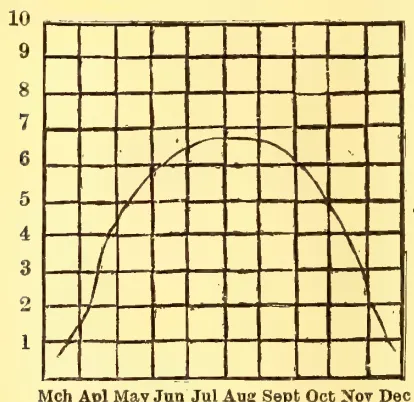
A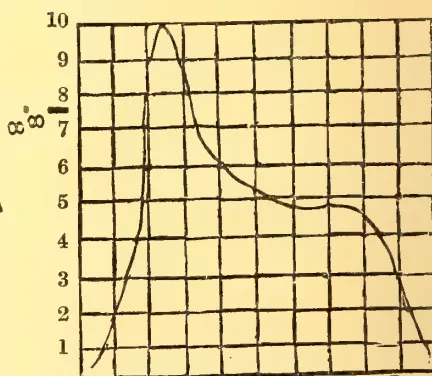
B| March (2nd half.) |
April. | May. | June. | July. | August | September. | October. | November. | December (1st half). |
|
|---|---|---|---|---|---|---|---|---|---|---|
| Temperature 8 A.M. ° F. | 76 | 79 | 84 | 85 | 82 | 83 | 83 | 77 | 66 | 56 |
| Relative Humidity 8 A.M. | 47 | 50 | 64 | 79 | 87 | 86 | 89 | 83 | 84 | 85 |
| Calculated water transpired by crop of 20 tons cane per acre ... |
3" | 4.0" | 10.0" | 6.7" | 5.7" | 5.0" | 4.6" | 4.9" | 3.5" | 3" |
| Total | ... | ... | ... | ... | ... | ... | ... | ... | ... | 43.5" |
Thus, owing largely to the low humidity and high temperature during April,
* Since writing this article I hear from Mr. Meggitt, Agricultural Chemist, Eastern Bengal and Assam, that he can grow very heavy crops of cane at Jorhat, and that there are large areas in Assam which are available and suitable, both as regards soil and climate, for the crop.—J.W.L.
May and June, especially in May, the water requirement was considerably greater than would have been the case under more moderate conditions. The water indicated in the statement is that actually transpired by the plant, in addition to which there will be a further considerable quantity which is simply evaporated from the soil.
APRIL, 1912.]327Edible Products.But in any case it must, I think, be accepted that so long as India's principal sugar-cane area lies outside the tropics, so long will the yield per acre remain far below that of the other principal producing countries.
By P. J. WESTER,
Horticulturist, Bureau of Agriculture,
Manila.
(From the Queensland Agricultural Journal, Vol. XXVIII., Part 1,
January, 1912.)
The Philippines Bureau of Agriculture has issued the following directions for growing papaws, which should prove of interest and be useful to growers of this delicious fruit in Queensland:—
Seed Bed.—The seed bed should be prepared by thoroughly pulverising the soil by spading or hoeing the ground well, and the clearing away of all weeds and trash. Sow the seed thinly, about 1 to 2 centimeters apart, and cover the seed not more than 1 centimeter with soil, then water the bed thoroughly. In the dry season it is well to make the seed bed where it is shaded from the hot midday rays of the sun under a tree; or it may be shaded by the erection of a small bamboo frame, on the top of which are placed grass or palm leaves. If the seed is planted during the rainy season, a shed of palm leaves should always be put up over the seed bed to protect the seed from being washed out and the plants from being beaten down by the heavy rains.
Transplanting.—When the plants have attained a height of about 7 to 10 centimeters, they are ready to be transplanted to the place where they are intended to grow.
Unless the transplanting has been preceded by a good rain, the plants should be thoroughly watered before they are removed from the seed bed. In order to reduce the evaporation of water from the plants until they are well
established in their new quarters, about three-fourths of the leaf-blades should be trimmed off.
In transplanting, take up the plants with so large a ball of earth that as few roots are cut or disturbed as possible. Do not set out the young plant deeper in the new place than it grew in the nursery; firm the soil well around the roots, making a slight depression around the plant, and water it thoroughly.
In order to protect the tender plant from the sun until it is established, it is well to place around it a few leafy twigs at the time of planting. It is well to set out three plants to each hill, and, as the plants grow up and fruit, to dig out the males or the two poorest fruiting plants.
If the plants cannot be set out in the field at the time indicated, transplant them from the seed bed to a nursery, setting out the plants about 20 to 30 centimeters apart in rows a meter apart, or more, to suit the convenience of the planter. While the best plan is to set out the plants in the field before they are more than 30 centimeters (12 in.) tall, the plants may be transplanted to the field from the nursery with safety after they are more than 1.5 meters (59 in., say, 5 ft.) high, provided that all except young and tender leaf blades are removed, leaving the entire petiole or leaf stalk attached to the plant; if the petiole be cut close to the main stem, decay rapidly enters it. If the entire petiole is left, it withers and drops and a good leaf scar has formed before the fungi have had time to work their way from the petiole into the stem of the plant.
Treatment of Old Plants.—When a plant has grown so tall that it is difficult to gather the fruit, which also at this time grows small, cut off the trunk about 75 centimeters (28 4/5 in.) above the ground. A number of buds will then sprout from the stump, and will form several trunks that will bear fruit like the mother plant in a short time. These sprouts, except two or three, should be cut off, for if all are permitted to grow the fruit produced will be small.
Timbers.328[APRIL, 1912.Seed Selection.—Seed should be saved from the best fruits only. By this is meant not so much a large fruit as one that is sweet and well flavoured, with a small seed cavity and few seeds; oblong fruits should be preferred to roundish ones in saving seed, as they grow in plants having both stamens and pistils in the same flower; and these being, very largely, self-pollinated, the seeds produced from such flowers are more likely to reproduce their kind than the seed from roundish, melon-shaped fruits, which mostly grow on female plants.
All male plants should be destroyed wherever they appear, as not only are they unproductive but their pollen being carried to the fruiting plants they tend to produce degenerate plants when
these are grown from the seed produced on plants growing in the vicinity of the male plants.
There is no need to fear that the other plants will not fruit if the male papayas are destroyed, for the reason that there are always plants about having perfect flowers, and which provide sufficient pollen for the fructification of the female plants. This applies particularly to the Hawaiian papaya.
General Remarks.—The papaya is very impatient of water standing around the roots, and should be planted only on well-drained land; being easily injured by strong winds, it should be planted in sheltered situations.
Keep the land clean of weeds and the plants well mulched.
(From the Indian Forester, Vol. XXXVII., No. 12, December, 1911.)
There are two ways of working black soil. One is sowing on moulds and the other sowing in furrows made by iron ploughs and levelled with a heavy guntika.
1. Preparation of Mounds.—In my range I tried sowings on mounds 12" × 4" × 1½" each in rows 9" apart. The seeds sown were chiefly Babul, Nim (Melia indica), Albizia Lebbek, and Tamarind.
Melia indica, Babul and Tamarind germinated well over 95 per cent. of the mounds, and have grown from 9" to 1½" before the winter. During the winter and summer the mounds were found to crack. Steps were taken to fill up the cracks with earth dug from the trenches around the mounds. Several of the seedlings were found dead before the ensuing rainy season. Those that escaped the drought of the first summer are growing well, and the greatest height
attained by seedlings in one year was Nim 4½', Babul 3', Tamarind 1'. The results of this operation show 50 per cent. of the mounds successful. The cost of carrying out mound sowing was Rs. 7-2-0 per acre as per details shown below:—
| Rs. | a. | p. | |
|---|---|---|---|
| Preparing 180 mounds per acre, at 6 pies per mound... |
5 | 10 | 0 |
| Sowing seeds, per acre | 0 | 8 | 0 |
| Filling in the cracks, per acre | 1 | 0 | 0 |
| Total... | 7 | 2 | 0 |
2. The Second Method.—Last year I tried the second method of sowing seeds. I had iron ploughing over 154 acres in four different reserves. The method employed is shown below. In order to eradicate mirth grass I engaged iron ploughs drawn by five pairs of good oxen or six pairs if the animals were weak, and had the land well ploughed and then exposed for one month.
I then got the ploughed area levelled with heavy guntikas and had the mirth grass collected and burnt. In the rains of June and July 129 acres of land so treated were sown with seed drills in furrows 6" apart. Tamarind, Melia
APRIL, 1912.]329Horticulture.indica and Babul germinated densely over 36 acres. Elsewhere the growth was poor.
In January, 1911, while inspecting Badnahal Reserve I found big cracks all along the furrows and saw the danger of the roots of the seedlings being exposed. To prevent the seedlings from dying I at once had both sides of the furrows levelled with an ordinary guntika drawn by a pair of oxen and employed women coolies to add the loosened earth to the seedlings forming a ridge along the furrows. This process successfully closed all cracks. Once again I had the sides loosened with guntikas to prevent the surface cracking during the summer. The seedlings were in January 6" to 9" high. In March I found they had grown from 1' to 2' high; and on further inspection on the 25th August I found they had attained a height varying from 2' to 5'.
There are not less than 1,500 seedlings per acre over 36 acres and 500 seedlings per acre over 9 acres in this reserve.
The cost of the operations was Rs. 13 per acre. Details are given below :—
| Rs. a. p. | ||
|---|---|---|
| Clearing shrubs and grubbing out stumps | ... 1 | 0 0 |
| Iron ploughing | ... 6 | 0 0 |
| Levelling with heavy guntika | ... 3 | 0 0 |
| Sowing with seed drills | ... 0 | 8 0 |
| Loosening the soil with ordinary guntika and adding loosened earth | ... 2 | 0 0 |
| Collection of seeds, etc. | ... 0 | 8 0 |
| 13 | 0 0 | |
In 15 acres of land ploughed with iron ploughs seeds were sown broadcast as an experiment. The results, however, are very poor, seedlings being very few in number and unequally distributed over the area.
The above operations have been carried on in Adoni Range, Bellary District, where the annual rainfall is 22 inches.
S. THUMBOO NAIDU,
Forest Ranger.
Adoni, 30th August, 1911.
(From the Queensland Agricultural Journal, Vol. XXVIII., Part 2, February, 1912.)
Propagation by seed is the only way to raise superior varieties. The first and most important of their qualities is form; the next is substance; the next, size; and the last, colour. To these may be added habit and truss. Save seed only from such as possess already these points approaching perfection. In all attempts to hybridise, let the one to bear the seed possess the property of form. In order to obtain the other properties wanting, cut off the anthers of the well-formed variety before the pollen-cases shed their contents, and the moment the hybridising is performed, cover the flowers with a close-fitting cap of a fine muslin net to prevent insects from carrying strange pollen to the
stigma dusted with pollen from such varieties as have the desirable properties. When the seed is ripe gather it carefully and divest it of its arils or feather-like appendages, wrap it up in a paper, and keep it in a dry drawer in a cool room till spring. Sow it early in spring, and, if necessary, place it in gentle heat—a hot bed that has been at work for a few weeks will answer admirably. Sow in wide, shallow pots, well drained, in a light rich compost; press the seed down gently, and cover it about a quarter of an inch. If the seed is good, it will quickly germinate, and should then be removed from the hot bed and placed upon a shelf in the greenhouse near the glass. Water very moderately, or the plants will be apt to damp off. As soon as the seedlings have made their second leaf, pot them off singly into 2-in. pots, in a compost of loam and leaf-mould in equal parts, with
42 Horticulture!330[APRIL, 1912.a liberal addition of river sand, finely sifted. Replace them on the shelf, and shade for a time from the hot sunshine. The seedlings will soon fill these small pots with roots. They must then be re-potted into larger-sized pots, and subsequently be treated in the same way as those which have been propagated by cuttings. Keep them close to the glass, and give them abundance of air on all favourable occasions. As soon as the weather will permit, place them out of doors, upon a bed of ashes of sufficient thickness to prevent worms from entering the pots. The situation should be an open one, the grand object being to ripen the wood and induce a stocky or bushy habit, so as to ensure their flowering the following season. The size of pots to flower them in need not be more than in. When there is a fear of autumnal frosts, remove them into the greenhouse, and place them on a shelf at such a distance from the glass as will serve to keep them dwarf and bushy. There is no need to top them in the manner hereinafter recommended for plants raised from cuttings, the object being not to raise fine specimens, but to get them to flower as quickly as possible in the following spring.
Cuttings may be put in and struck from July to September. The general time, however, is when the plants have done flowering and require cutting down to make bushy plants for the next season. The best place to strike the cuttings is in the bush house in a frame set on a spent hot bed, removing the soil and substituting a thick coat of cool ashes, and over this a bed of dry sawdust in which to plunge the cutting pots. This dry sawdust serves to absorb the moisture in the pots and the necessary waterings. The best soil is pure loam mixed with silver sand. The most suitable pot is one 5 in. wide at the top. The pots must be well drained with pot-sherds, and filled to the top with the prepared loam; it should not be pressed down too hard, but made firm enough to hold the cuttings fast. Another point is to use it in a state neither wet nor dry.
The side shoots which have not flowered make the best cuttings. These should be cut off close to the stem. Cut off the bottom leaves of the cutting close to the stem, leaving only two of the uppermost. Place the cutting in a shady place for about an hour to dry up the wound. Then put them in the prepared pots round the edge, inclining the leaves inward. When a pot is filled, give it a gentle watering. Then plunge the pots into the frame, and shade them from the sun or even from light. Reduce the shade very gradually. The temperature should not much exceed 60 degrees Fahr. As soon as the roots are 1 in. long pot them off immediately into the smallest 60-pots, which are generally about 2 in. in diameter. A small addition of well-decomposed leaf-mould may with advantage be mixed with the loam. When they are finished potting off, give another gentle watering and replace them in the bush-house until fresh roots are formed. Renew the shading, but disuse it as soon as it is safe to do so, and then give plenty of air (if in the propagating house) to prevent the plants being drawn up and becoming spindly. To cause them to become bushy plants furnished with branches close to the pots, nip off the top bud; the lower side buds will then break and push forth, and these must be again stopped as soon as they have made thin leaves. The plants will then be ready to receive a second potting, and should be removed into the open air.
The above remarks and directions, so far as cuttings are concerned, relate only to the so-called show varieties. There is another class of pelargoniums which are designated fancy varieties. These are more difficult to increase by cuttings. Place the cuttings in shallow pans, only in. deep, with a hole in the centre, in the usual loam and sand, placing them on the shelf or in the frame in the bush-house on topsy-turned pots. If in the propagating house, place them close to the glass. The cuttings are made very short with a portion of the old wood at the bottom of each. Very little water is given till the callosities
APRIL, 1912.]331Horticulture.are formed, when it is given more freely, and then roots make their appearance, when they must at once be potted off and the usual treatment followed.
Make a shallow pan for them by first putting in a portion of pure loam and sand, then a covering of pure sand alone; give a gentle watering to settle it, and then prepare the buds. Take a shoot of moderate strength, cut off the leaves, but not quite close to the stem; then cut off the two lowest buds, leaving about a quarter of an inch of wood below each bud. After that, split the shoot containing the two buds down the centre. If the two buds are not exactly opposite, but one a little below the other, the upper one must be shortened below the bud to the proper length. The upper cut should be very nearly close to the bud. Make a sufficient number ready at once to fill the pan or pot, and plant them, using a short blunt stick, a degree thicker than the bud cutting. Insert them so as to only leave the bud just above the sand. Plant them close to and round the edge of the pan, placing the cut side close against the pot, which will, of course, place the bud side inwards. Then fill up the holes with a little dry sand, and water gently again. Place them either in a propagating house or in a frame. Shade from bright sunshine in whatever situation they are placed, and water as required. The buds will soon break and show leaves, shortly to be followed by a shoot.
Some kinds of Fancy Pelargoniums and most of the Cape original species are difficult to increase by any of the above methods. In such cases there is left the mode of increase by cuttings of the roots. This is almost certain of success. Take an old plant, carefully shake off all the soil and cut the roots into short pieces, retaining as many fibres as possible to each. Put each root cutting singly into as small pots as they can be got into, leaving the top just visible. Place these in the house or frame appro-
priated to propagation; give a gentle watering, and shade effectually. New roots will soon push forth, and their shoots will appear generally in clusters. When that takes place, reduce the shade to give colour to the leaves and strength to the shoots. As these advance in growth, thin them gradually by slipping one or two off at a time, till finally they are reduced to one which is to form the future plant. As soon as this shoot attains the height of 2 or 3 in., nip off the top to cause the side shoots to grow, and so form a neat bushy plant.
Cut them down in January, and leave them in a cool pit. In eight or ten days after being cut down, and receiving moisture about the tops rather than among the roots, the pots may receive a fair watering—as much as will reach every good root. When the buds break gradually expose to the air. When 1 in. or so in length take the plants to the potting-bench; shake the soil from the roots; examine and prune the roots a little; reshift into similar, or what, in general, will answer better, smaller-sized pots; place them again in the cool pit, and keep close until the fresh roots are running in the new soil. Then gradually expose them entirely to the weather, steering clear, however, of cold rains and early frosts. Plants cut down in January will require to be placed in blooming-pots at the end of April or May. Those cut down in February will not want re-potting till the spring of the following year, and then different successions of blooms may be expected. During the cold months the temperature of the pelargonium house should seldom be higher than 50 degrees Fahr. In the case of large plants, little stopping will be required after re-potting. Thinning instead will often be necessary. Hence old plants generally produce the earliest bloom, as every general stopping of the shoots, as well as every shift given, retards the blooming period.
332[APRIL, 1912.]BY E. ERNEST GREEN,
Government Entomologist.
The use of Formaldehyde (or Formalin), as a deterrent against House Flies, has been recommended—from time to time—for some years. The simple exposure of dishes containing dilute formalin was said to drive away every house fly from the premises, and the success of this treatment has been vouched for by various persons. I must confess, however, that my own experiments with dilute formalin have been uniformly disappointing. Whether our Ceylon house fly is a more hardy race, or whether our warmer climate has a weakening effect upon the action of formalin, the fact remains that I have never been able to record the slightest success with this simple treatment.
But if the house fly can be induced to swallow even a weak dose of formalin, it is certainly fatal to that insect. It does not find plain formalin and water sufficiently attractive: but formalin mixed with sugar or milk, in judicious proportion, is readily imbibed by flies—with fatal results. One method is to fill a soup plate with damp sand, place a disc of blotting paper on the sand, spread the paper with sugar, and sprinkle the sugar with dilute formalin—in the proportion of one part to twenty of water. As commercial formalin is of the strength of only 40 %, this dilution represents a mixture of about 2 %.
The Journal of Economic Entomology for October, 1911, (Vol. 4, No. 5) publishes an article on "Formalin for Poisoning House Flies," by R. I. Smith, of the North Carolina Experiment Station. Mr. Smith set himself the task of freeing a college dairy from a plague of flies. Of the condition of affairs before the treatment he remarks:—"In the milk room the flies covered the walls and ceiling, and the straining cloth at milking time was actually black with flies." He continues:—"My first experiment proved successful.
This was the addition of one ounce of 40 per cent. formalin to sixteen ounces of fresh milk. This mixture was placed in four shallow tin plates and set on the floor of the milk room about 3 o'clock one afternoon. The flies commenced to feed and die within a few minutes, and continued to die rapidly even while the evening's milk was being brought in and strained. These plates of poison were left over night, and the milkers advised me that the flies were feeding greedily the next morning soon after daylight. The dead flies, swept up about 8 a.m., measured about one pint, representing fully 5,000 flies."
"This experiment was repeated for three successive days, and about one pint of dead flies were swept up every morning. In addition to the flies actually secured, many dropped dead outside the windows."
"My next experiment was to use a mixture of half milk and half water instead of whole milk. Formalin was added in the same proportion, one ounce to sixteen ounces of diluted milk. This proved to attract the flies as well as the whole milk."
"Several variations in the proportion of formalin and milk were tested, but my conclusion is that the use of one ounce to sixteen is most effective. The following method of stating the formula has been used for newspaper articles, in order that every housekeeper can prepare it easily:—One ounce (two tablespoonfuls) of 40 per cent. formalin; sixteen ounces (one pint) of equal parts milk and water. This mixture should be exposed in shallow plates and by putting a piece of bread in the middle of each plate, it furnishes more space for the flies to alight and feed, and in that way serves to attract a greater number of them. Whole milk can be used, but the diluted milk seems to be just as successful."
"A very conclusive test of the efficiency of the above formalin mixture was made in a large calf barn where flies were extremely numerous. Six plates of the
APRIL, 1912.]333Plant Sanitation.mixture were placed in the passage way between the stalls. This passage way is about six feet wide and thirty feet long. The poison mixture was exposed at 12 o'clock noon, and left until 8 o'clock the next morning. The dead flies when swept up measured three quarts, and certainly one-half as many died in the stalls on each side. I estimated that we killed between forty and fifty thousand flies in twenty hours by this experiment."
"At the writer's suggestion many housekeepers have used the formalin as recommended above, and several have reported the killing of flies by the pint and quart. A gentleman in charge of a farm, where a large horse barn is maintained, tells me that he poisoned a gallon of flies the first day he tried the mixture. This statement was vouched for by other witnesses in whom I have perfect confidence."
"A good place to expose the formalin mixture is on the front and back porches, where flies are frequently numerous, and waiting to enter when the doors are opened. I know of several people who have used it successfully in this manner."
"The use of the formalin-milk mixture in dwelling houses has not proved so successful, except in unscreened kitchens of dining-rooms."
"This poison was tested in the large College mess-hall where over four hundred students can be seated, resulting in practically cleaning up all the flies in two days. Previous to that time the steward had been using tanglefoot fly paper, often having as many as thirty sheets exposed. Fully that number were present when the formalin was used, but in spite of them the flies were numerous."
I have satisfied myself, by actual experiment, that our Ceylon fly is not proof against this mixture. Sweetened condensed milk was employed in place of fresh milk, and proved to be very attractive. Flies that fed upon this mixture died very quickly—certainly within two minutes.
Though so rapidly fatal to house flies, formalin mixed with syrup was eaten by various kinds of ants with impunity.
Ants that had partaken freely of poisoned syrup were still alive and apparently in good health after twenty-four hours.
In recommending this treatment I wish it to be clearly understood that it should only be accessory to measures of strict cleanliness. Flies breed in filth, and where filth is allowed to remain fresh broods of flies will constantly replace the victims of the poison. The formalin treatment is merely a palliative to destroy existing flies in a building.
The First International Congress of Entomology, held in Brussels on August 1st-6th, 1910, was an unqualified success. It was well supported by Entomologists of all countries, both theoretical and practical, and also by many Governments and institutions, which are at last beginning to realise the profound importance of this science in Medicine and in Agriculture.
The Membership was nearly 400, and upwards of 300 actually attended the proceedings.
The results of the deliberations are being published in two volumes (imperial octavo), the first being devoted to the proceedings and discussions, the second to the numerous valuable memoirs contributed by many authorities upon a great variety of subjects, including papers devoted to pure and to economic Entomology. The volume of Memoirs (515 pages, 27 plates) is now published and issued to Members. The volume of Proceedings will follow shortly.
It was decided at the First Congress that the Second Congress should be held in 1912, and the following meetings every three years from that date, so that in future the International Congress of Entomology will be held one year before the International Congress of Zoology.
Live Stock.334[APRIL, 1912.The Second Congress will therefore be held at Oxford on August 5th to 10th, 1912, under the Presidency of Professor E. B. POULTON, D.Sc., F.R.S.
A Reception Committee has been formed consisting of:—
Dr. F. A. DIXLEY, F.R.S. (Chairman).
Professor G. C. BOURNE, F.R.S. (Professor of Zoology).
Professor H. L. BOWMAN, D.Sc., (Secretary to the Delegates of the University Museum).
Professor E. B. POULTON, D.Sc., F.R.S. (President of the Second Congress).
GEOFFREY W. SMITH, M.A. (Fellow of New College).
Commander J. J. WALKER, M.A. (Secretary of the Entomological Society of London).
H. ELTRINGHAM, M.A. (Cant.), (Oxon.),
Secretary.
G. H. GROSVENOR, M.A., Secretary.
It is hoped that the Reception Committee will be able to arrange for Members of the Congress to have rooms in the Colleges at a moderate price, but this privilege will be available for gentlemen only.
A list of hotels and lodgings recommended, with tariffs, will be issued later.
In order to facilitate the arrangements, it is requested that ladies and gentlemen who propose to join and attend the Congress send in their names as early as possible to the General Secretary of the Executive Committee, who will be happy to give any further information.
Ordinary Members who pay £1 (25 francs) will receive all publications of the Congress. Ladies and children accompanying Members will, on payment of 10s. (frs. 12.50), each, have all privileges of Members except that of receiving the publications.
Life members who pay a composition of at least £10 (frs. 250), will receive free all future publications of the Congress.
The funds received in respect of Life Compositions will be invested, and only the interest will be at the disposal of the Executive Committee. Sir DANIEL MORRIS, D.Sc., and the Hon. N. CHARLES ROTHSCHILD, M.A., F.E.S., have kindly consented to act as Trustees of the funds.
Members who propose joining the Congress, or presenting papers are requested to fill in the accompanying forms and send them in with their subscription (except of course in the case of Life Members who have originally paid) to the General Secretary of the Executive Committee, MALCOLM BURR, D.Sc., c/o Entomological Society of London, 11, Chandos Street, Cavendish Square, London, W.
The Programme of the Second Congress of Entomology will be sent out early in the spring, and, we believe, will be found so attractive, that we shall have the pleasure of welcoming to Oxford a large gathering of Entomologists and friends of Entomology.
On behalf of the Committee,
E. B. POULTON, President.
MALCOLM BURR, General Secretary.
(From the Indian Agriculturist, Vol. XXXVII., No. 2, February 1, 1912.)
A Brahmin, engaged in prayer and the performance of Pooja, was vexed by the gambols of a cat, and decreed that the irreverent feline should thereafter at prayer time be deprived of its liberty
and chained to a pole. By-and-bye, the object of the imprisonment was lost sight of, but at prayer time the cat continued to suffer temporary loss of liberty. The real Pooja came to be discarded, but the imprisonment of the cat endured as a religious ceremony. This is not the only Indian instance in which sense has been supplanted by super-
APRIL, 1912.]335Live Stock.stitution. The Indian cattle breeder has inherited from his ancestors a great wealth of useful cattle lore, but a good many sensible practices have been gradually transformed into senseless superstitions. Based originally on sound economic considerations, several of these practices are now merely encased in the empty shell of sentiment, and as such they serve no useful purpose whatever. We have in the dedication of Brahmini bulls to Hindu temples a striking illustration of the degeneracy into useless and empty emotionalism of a practice which, there is good reason for believing, was inculcated by the early Aryan Hindus as a measure of selective breeding the importance of good, healthy cattle as an essential aid to the agricultural industry, having even in those early times impressed itself upon the observant ancients. Brahmini bulls are still to be met with in most typical Hindu villages, but they play practically no part whatever in keeping the indigenous breeds of cattle healthy and efficient. In olden times these bulls used to be both carefully selected and carefully looked after, and Indian cattle were famed for their great strength as well as their beauty. The robustness of their cattle of old is well indicated by the mythological story that the bull was the animal used by Siva for riding. At the present day, none of the essential conditions requisite to the profitable maintenance of Brahmini bulls are attended to. One very common mistake is to select bulls simply because of their strength and handsomeness. The fact is either ignored or unknown that bulls imported from other localities may not make good sires, although they may have high intrinsic merits. The best course is to select good bulls from the indigenous stock, as these would be accustomed to the climate, locality and general local conditions, and would thus exist under favourable and familiar environments.
In Southern India, perhaps the most celebrated breed of cattle is that raised in the Nellore District. The Nellore bulls and cows are undoubtedly among
the finest and most powerful to be seen in any part of the world, and, within recent years, their fame has extended so widely that breeders have come from such distant countries as the Straits Settlements, Australia, North and South America, the United Kingdom and the continent of Europe to buy Nellore bulls and cows at the annual cattle shows, and magnificent prices have sometimes been paid for really splendid animals. The Western cattle breeder doubtless succeeds in improving the quality of his stock through the agency of these Nellore cattle, but that is because, in the West, cattle breeding has been raised to the high level of a science. This is not the case as yet in India, where the methods of cattle raising are still largely crude and empirical, and we are aware of several instances in which Nellore bulls, taken to distances from their native habitat, have rapidly deteriorated and disappointed the expectations of those who aimed at stock improvement. So, one point which must be firmly insisted upon, if Indian cattle are to be really improved, is that breeding bulls should be selected with due regard to their fitness for local conditions, and the most advisable course is to select the best bulls out of strictly local breeds. Where good local bulls are not procurable, and it is necessary to import, care should be taken to see that the importations possess local characteristics as far as possible, for experience has shown that the mixing of widely different breeds of cattle has not been at all satisfactory. Having secured suitable breeding bulls, only the initial condition requisite to the improvement of indigenous stock has been fulfilled, and after this a great deal would still have to be attended to.
The breeding bulls must be well looked after, and, if possible, handed over to the charge of intelligent and influential villagers, who may be expected to care for them constantly and well. It is necessary that useless bulls in the herd should be removed, and that useless and desirable cows should be removed also. What we commonly find at the present
Live Stock.336[APRIL, 1912.day in villages in which Brahmini bulls are maintained is that these animals are permitted to roam promiscuously, the result being a poor quality of progeny. It is nobody's business to see to the proper housing, feeding, and watering of the Brahmini bulls, and, as a result of all this, what was intended by the ancient Hindus to be a rational measure of selection breeding is to-day almost everywhere nothing better than a profitless religious superstition. Good breeding bulls having, in the first instance, been carefully selected with regard to their points, their possession of local characteristics, and their suitability to local conditions, the next point is to insure the regular and steady continuance of the work of improving the quality of the indigenous stock, and this is to be attained by selecting the very best of the young bulls obtained. As far as the West is concerned, this may be considered scarcely more than the A. B. C. of cattle-breeding, but in this country, one who has watched the problem of cattle management need scarcely be told that there are cattle breeders who fancy they have done everything necessary to improve stock permanently in procuring a healthy bull. Indeed, the necessity of continuous breeding operations from generation to generation is one of the first principles which requires to be inculcated in a country where the thoroughness of the ancient times has been almost everywhere replaced by spasmodic energy, and a peculiar species of inability to work at anything with sustained effort and with concentration of purpose. The ancient cult of the Brahmini bull gave India a robust type of cattle, noted for their stamina, their draught and milk-yielding qualities, and their fine appearance, regarding which last there is frequent mention in Sanskrit literature. As we have shown, the cult has not been quite destroyed, only it has been thickly encrusted with superstition and profitless sentiment. When by the intelligent fusion of Eastern and Western methods, the Brahmini bull is restored to its rightful place in the Indian economic scheme, we
shall cease to lament the degeneracy of the cattle of India, and the agriculturist, who everywhere has not enough live-stock for the satisfactory pursuit of his industry, will have reason to bless his ancestors who, in their sagacity, gave the Indian ox a position of religious sanctity.
By P. A. V.
Mr. E. T. Bird, the great English poultry expert who has travelled pretty well all over the world studying poultry-breeding in all climes and conditions, points out very truly that a frequent cause of infertility in eggs is the fat state of the breeding stock. Laying hens should be maintained in a lean hard condition, and on no account allowed to become fat and flabby, because in the latter case the eggs will not only be more liable to contain no germ, but they will probably be much fewer in number. There is always a tendency during winter months when the hens are under cover a good deal, and the nights are long for them to get too fat, and this is a point that must be carefully watched. If the male bird gets too fat, he becomes lazy and will not perform his duties in a satisfactory manner. As far as possible, exercise should be encouraged, as nothing helps so much to keep the birds in a good working condition. The fowls composing the breeding-pen should be periodically examined, and if they are too fat, the food should be reduced, while if, on the other hand, they are too thin, the ration should be increased.
When mating up a breeding-pen, fanciers must be guided as regards the number of hens to run with a male by the time of year, the age of the birds and the variety. In the case of large breeds of the Asiatic, Orpington or heavy American type, it is not advisable to run more than four or five hens with a cock in the early part of the
APRIL, 1912.]337Live Stock.year, and old cocks of the Brahma Cochin type should only have three or four hens. Later, when the weather is warmer and the birds are more vigorous, the number of hens in Orpingtons, Wyandottes, etc., may be increased to six or eight. With breeds of the smaller type, such as Leghorns, it is generally safe to run six or seven hens with a vigorous young cockerel early in the season, and later on the number may be increased to ten or twelve. In a large run a cock may also run with more hens than in a small one.
A hen in best laying condition has surplus fat. A very fat hen seldom lays well, and a poor hen cannot also do so. The very fat hen usually does not lay because her condition has become one of debility, and because her tissues are weak and flabby. Fowls are naturally grain-eaters. A large part of their food should, therefore, be cereals. Maize is an excellent grain if used with discretion. It is, perhaps, the grain most relished by fowls. Therein lies the danger. Fowls eat it so greedily that, it being a fattening food, they are likely to become overfat when it is fed too freely. When properly cooked, though fed every day, no evil results would follow. Wheat is, perhaps, the best grain for poultry, and its by-products are among the safest and most satisfactory of foods. Heavy oats are perhaps next in value; light oats are a delusion. Peas, though difficult to secure, are the richest and one of the best of poultry-foods. Wherever meat can be obtained it should be given; chopped boiled liver is greedily devoured by fowls and cut green bone of either goat or sheep is invaluable. When fowls have perfect liberty they can search for insect-food and can thus procure a considerable amount of worms, grubs, insects, seeds; etc., all of which are most beneficial, besides which they assist in reducing the food bill. Barley meal is one of the most useful foods during the cold weather; mixed with bran in the proportion of two of the
former to one of the latter it makes an excellent ration, and one upon which the birds do remarkably well. Barley meal is not nearly so extensively employed for poultry as it might be.
When selecting birds for egg-production, there is one fact which should never be lost sight of, namely, that a well-developed posterior always denotes good laying powers. The use of any organ naturally tends to its increase and thus a good layer invariably possesses large and well-developed egg-organs. A table-bird on the contrary has a large breast and is comparatively small behind, while a general-purpose fowl is fairly well-balanced. In choosing a bird for egg-production, one should be selected that is firm and close in body, of a good size though not too big, clean and tall on the legs, active in habits, and, as already indicated, well-developed behind. One other point must ever be remembered, as it has so material an effect upon the results, namely, that in order to procure the largest number of eggs, pullets from good layers must be chosen. That like produces like is an inexorable law of breeding, and poor layers will never produce good ones. If a pen of hens are very good layers, all the pullets therefore should be carefully retained, only in this manner is it possible to build up a strain of birds which will lay well and regularly.
Though there are many breeds of poultry that are difficult to surpass for utility purposes, there are still numerous people who greatly prefer a mongrel or a cross-bred to a fowl that shows any trace of good breeding. There is little doubt that a first cross between two distinct breeds promotes strength and quick maturing, so the question "Which is the best cross-bred fowl?" is often asked. Most poultry-keepers appear unaware of the fact that a cross-bred and a mongrel are not the same thing. A cross-bred fowl is usually understood to be the produce of two distinct breeds mated together; whereas
43 Live Stock,338[APRIL, 1912.a mongrel is composed of various breeds so intermingled that its ancestry cannot be stated. Of all the cross-breeds there are few to surpass the Minorca-Langshan, bred from the black Minorca cock and the black Langshan hen. This alliance produces large, handsome, black chickens, the pullets laying large eggs, many brown in colour. This cross lays well both in winter and summer, stands confinement well, and though the hens are generally sitters, they are easily broken of the desire to incubate. Another capital layer is produced by mating the Andalusian with the Langshan; the eggs are large and mostly coloured, and the fowls are usually black and like the Minorca-Langshan in appearance. An excellent Langshan cross, though not often seen, is that between the Crevecoeur cock and Langshan hen. The chickens, thus bred, are large, black, short-legged fowls, slightly crested, maturing quickly and free layers of various tinted eggs. They are excellent table fowls, hardy and do well in a limited space. A favourite and very successful cross is the Dorking cock with a Light Brahma hen. The chickens are good layers of nice, sized eggs. The hens are inclined to be frequently broody in the warm weather, but are fairly easily cured of their desire. A cross that is often made is that of the Houdan-Leghorn, the offspring being particularly hardy, great layers of white eggs, and doing well in a small run. The Houdan, in fact, crosses satisfactorily with many other fowls. For instance, a Houdan cock mated with the Brahma, the Indian Game, the Plymouth Rock, or the Langshan will produce quick maturing, large and heavy chickens. When big meaty chickens for the table are required it is not advisable to use male birds such as the Leghorn and Minorca, or the offspring will be narrow and deficient in breast. For producing high-class table chickens there is no better cross than that between the Dorking and Indian Game. The chickens are very large and carry a lot of meat in the right place. The Old English Game crossed with Dorking hens result in chickens that are
more tender in flesh than the Indian Game cross, but are not so large.
The influence of climate on domestic animals of all kinds when transferred from their usual habitat, to districts or countries more or less remote, is well-known to have a changing effect upon them. The conditions of life in them become completely revolutionised, and, even to the superficial observer, are seen to undergo a change, either for better or worse; usually the latter at least for a time, whether of short or extended duration. This applies to nearly if not all forms of organic life, and plants are no exception to the rule. The nature and extent of climatic influence has in the case of the larger domestic animals received long and careful study from men of practical and scientific attainments. Much valuable information has been adduced by farmers and others from their experiences and researches in every country and in every clime. Acclimatisation with them is a subject that has become familiar, both in theory and practice. Consequently, cases from this cause in cattle, etc., while still existing, are reduced to a minimum. The domestic beast and fowl, being lower in the scale than man, cannot command his reasoning faculties, and so have to submit to the inevitable, but nature steps in to do what she can by causing a gradual alteration in the constitution of the animal to counteract the evil influences of climate. The whole subject is so interesting and yet so wide that we cannot do justice to it in the space of a single Note. We shall return to the subject later, and, in the meanwhile, we hope that other writers to this journal or other correspondents will bring their experiences to bear upon this most intricate question, experiences whether elementary or fragmentary.
Cramp in ducks, says a lady writing to Farming World, may or may not be a very serious ailment. A great deal must depend on the kind of so-called cramp. If it is only paralysis of the loins, in-
APRIL, 1912.]339Live Stock.duced by fear, or if it is rheumatism caused by cold, it will readily succumb to treatment. Sometimes the "cramp" is weakness and want of circulation, which is caused by breeding from debilitated stock. For this kind there is no hope, and it is a waste of time to attempt any remedy. On the inside of the leg there is a large vein, which may be easily seen, as it crosses the joint and spreads over the foot. In cases of severe cramp this vein will be seen to be full of stagnant blood. The blood will be in beads. If this vein is rubbed the blood will circulate for a few seconds. Soon after the rubbing ceases the blood will once more become stagnant. If the duck is beheaded with a sharp axe there will be little or no flow of blood from the neck. As the cure for all kinds of cramp is the same, it is always worth while to try it, for in many instances the duck will never be subject to cramp again. If the case is obstinate, it may be argued that it is wasting time, and that the duck will never be strong. As soon as a duckling is observed to be suffering from cramp, a flat tin should be filled with hot water and then covered over with hay to temper the heat. The duck should be placed on this, and an old sack or flannel should be made very hot and laid across its back. All food and water should be given very warm, and the duck kept as warm as possible. Very often after half an hour of this treatment the duck will be perfectly recovered, but it is well worth while to exercise a little patience, and it is very seldom that the treatment has to be repeated twice after recovery.
Moulting is a natural process for poultry, but at the same time it entails considerable strain upon a bird, and the older the bird is the more trying, as a rule, does the moult become. The manner in which a fowl gets through the moult depends a good deal on its state of health at the time. If it is vigorous and healthy, the moult may be forced by a considerable reduction in the quantity of daily food for about a fortnight or three weeks, and then again
a sudden increase to full rations, and if, when full rations are again resorted to, the birds are kept somewhat warmer than usual, the process of casting the old feathers will be considerably hastened. The forced moult, however, is the most trying because it is unnatural, and it should only be resorted to when really necessary for some definite reason. If birds were required to be in complete new feather by a certain date for show purposes, or if utility stock were required to be in full lay by a certain date so as to meet a coming demand for table eggs at the commencement of a social season in some large town, it would be permissible and advisable to force the moult, but for all ordinary purposes it is wiser to let fowls moult as they please. In both cases, however, much can be done to help the process. As soon as the old feathers begin to fall, a generous course of feeding should be commenced in order to meet the growth of new feathers. Oily seeds such as ground nuts (pea nuts) and linseed will be of use, while Sussex ground oats, wheat, peas, sunflower seed, etc., may enter largely into the bill of fare. A little flour of sulphur sprinkled daily in the morning mash will help matters forward considerably, and the fresh green food and meat ration should be generous. Tonics and stimulants are not, as a rule, needed in this country, but an iron tonic in the drinking water at moulting time is very beneficial.
Bulletin No. 45 of the Cornell Reading Course for Farmers is a paper by Messrs. T. E. Rice and C. A. Roges on the importance of Constitutional vigour in the Breeding of Poultry. The authors reach the following conclusions :—
From the experiments we must conclude that there is a relation between the physical characters of fowls and their constitutional vigour, which will enable a careful observer to select the weak from the strong, and also that these qualities are transmissible from parent to offspring; we may also assume
Live Stock.340[APRIL, 1912.that, other conditions being equal, weak parents are more likely to produce infertile or less hatchable eggs, which will give weaker chickens, than are strong parents.
Should we not, in view of these facts, practice a system of rigid selection of the weak from the strong during all stages in the life of the flock, and from the strong select only a few of the strongest for breeding in order that we may keep only the most vigorous fowls, with the object of securing larger production with less mortality and greater net profit, and at the same time of insuring stronger stock each succeeding generation?
If we are to succeed permanently we must so hatch, rear, feed, house and breed our poultry that they will keep in perfect health. Good health in the fowls is the foundation of successful poultry husbandry.
As nearly all diseases of poultry, in fact all excepting those due to an error in digestion, come as a result of an insanitary condition, too much attention cannot be paid to the problem of sanitation in poultry-yards. Below are given a few hints and suggestions that may be found useful for the amateur, assuming that the veteran poultry man has learned it from a costly experience. The first essential for a sanitary poultry-yard is a well-selected locality, one with a sandy soil that will dry off quickly after a rain being preferred. A poultry-yard that is used as such from year to year is sure to become insanitary unless the necessary precautions be taken, especially is this so of the smaller yards, and to such poultry men we would commend the saying: Get busy and keep busy; clean up, clean out and keep clean.
The poultry business is no place for a lazy man or a loafer, for you can only make a success by continually keeping at it and looking after the little things. One very important thing a majority of breeders overlook is the removal of the droppings which should be cleaned out every morning and removed at least
three times a week. Another important thing from a sanitary standpoint is the housing of the fowls; this will be referred to again later. Another important thing for prevention of disease is the removal from the flock of all sick birds. No matter what the ailment, the bird should at once be removed to different quarters, thus protecting the healthy birds as well as giving the afflicted one a better chance for its life.
Gape is a disease that seldom, if ever, attacks adult birds. It is confined almost entirely to chicks from four to eight weeks old, but has been known to attack older chicks (says an exchange). It is often very troublesome and hard to check, some chicks nearly always succumbing to the malady. The chicks open their mouths and gape and have a choking cough. The cough becomes more frequent as the disease advances.
The gaping of the chick is caused by small, red, V-shaped threadworms, which are attached to the root of the windpipe. The origin of these worms has caused widespread discussion, both in Europe and America. Many causes have been offered, but none have been wholly accepted. Mr. A. M. Holstead believes that the gape worm was the product of the head louse, which laid its eggs in the nostrils, and the eggs then passed into the windpipe and so caused the gape worms. Others believe it to be caused by eating angle worms. The chicks coughing up the worms spread the trouble, for when these worms are eaten by other chicks they will become affected in the same way.
There are numerous cures as well as causes. A favourite one is the giving daily of camphor in grains the size of a grain of wheat, or a pea. The odour reaches the worms in the windpipe and destroys them, while the camphor lies in the crop. Another remedy is to take a feather and strip to within an inch of the end, moisten it with turpentine and insert in into the windpine, twist it around and withdraw quickly. The following ointment is sometimes recom-
APRIL, 1912.]341Scientific Agriculture.mended :—One ounce of mercuric ointment, one-half ounce sulphur, one-half ounce crude petroleum, two ounces lard ; mix thoroughly and keep from air. Apply with the finger, rubbing a little into the down of the head and throat of the chick when hatched. Avoid too liberal use, as a little is all that is necessary. This will, at all events, destroy the head lice, whether the disease is prevented or not.
A much-used remedy is to take a horse hair and twist it, thus forming a loop. Insert this in the windpipe and twist around, then withdraw. Many of the worms will have been caught in the loop and detached. Ground, when once occupied by diseased chicks, is claimed to be dangerous for chicks for some years if not disinfected, as the worm, when coughed up will remain in the ground for some years.
(From Bulletin No. 63. Vol. III., of the Department of Agriculture, Madras.)
In the manuring of crops many factors come into operation, and it is only after a careful consideration of these that a manure suited to the needs of a crop and the soil on which it is grown can be selected. The chemical and physical properties of the soil, the particular requirements of the crop grown, the type of soil and the methods of cultivation employed are among the most important factors to be taken into account, and as many of these apply with particular force to paddy cultivation, they determine to a very large extent the kind of manure employed and the manner of applying it.
Paddy cultivation as practised in Southern India differs essentially from ordinary cultivation in that (1) the land is prepared for the reception of the crop by a system of puddling, and (2) the land is kept flooded and therefore saturated with water during the greater part of the growing season. These two factors dominate the whole of the conditions under which paddy is grown and their effect on the soil and the plant must receive careful consideration if the manuring of paddy is to be placed on a rational basis.
The puddling of paddy land previous to transplanting affects the physical
condition of the soil mainly by bringing about the disintegration of the soil particles, and thus increasing their number and producing a finer and more clayey texture. This effect is not confined to the first few years after a soil is brought under paddy, but continues so long as the land is thus utilized, so that unless counteracting influences are brought to bear, a paddy soil tends to become heavier in character as years go on. This is well shown by certain analyses carried out at Chaganoor in the Bellary district. Here the ordinary dry soil bordering some isolated paddy-fields contained approximately thirteen millions of particles in every gram of soil, whereas the land which had been under paddy cultivation for about four years contained millions and land which had long carried paddy crops millions. Further, it is an invariable rule that paddy land has a finer texture and heavier character than the surrounding dry lands. The fact that paddy cultivation produces a heavier and closer soil being thus demonstrated, the first problem which presents itself in the manuring of such lands is the question of using manures which will tend to counteract this effect. Should the object aimed at in manuring produce a lighter and coarser soil and so counteract the efforts of the methods of cultivation, or should the manure act by accentuating these effects?
This problem can be solved by employing the principles which apply to dry
Scientific Agriculture.342[APRIL, 1912,land farming. Here certain manures cause the very fine particles of a soil to become cemented together to form compound particles, thus producing a coarser texture and a lighter soil, whereas another set of manures have the opposite effect, and by destroying the compound particles already existing in a soil a finer texture is produced. To the former class belong those manures which contain large quantities of organic matter, and on which on undergoing change in the soil yield humus, a substance which has a decidedly beneficial effect on the texture of soil. In the latter class may be placed many artificial manures of the type of ammonium sulphate, etc.
By applying representatives of these two classes to a paddy soil and contrasting the relative effects on the crops, it is possible to arrive at a general conclusion. Such an experiment has been in operation on the Central Farm, Coimbatore, for several years in which the effect of a green manure was tested against similar land to which a mixture of bone-meal and potassium sulphate was applied as a manure. As in both cases, nitrogen, phosphoric acid and potash were added to the soil with the manures applied, such an experiment gives directly the effect of the bulky organic manure. With daincha as the green manure crop, a yield of 4,200 lbs. of paddy was obtained, with wild indigo about 3,100 lbs., and with Calotropis leaves 3,877 lbs., whereas the comparison plot only yielded 2,652. Another plot to which another type of bulky organic manure was added, namely, castor-cake, yielded 3,550 lbs. of paddy. Thus the addition of a bulky organic manure to a paddy soil gives better crops than a manure containing little organic matter, but which has approximately the same manurial value. Consequently it may be stated that the first essential of a paddy manure is that it should contain a large proportion of organic matter capable of producing humus, thus counteracting the tendency of such soil to become finer in texture and heavier in character.
Taking the next factor, the fact that the land is kept fully saturated with water throughout the greater part of the growing season means that there is practically no free oxygen present in the soil, and this draws at once a sharp distinction between paddy cultivation and that of ordinary field crops. The presence or absence of air in a soil determines to a very great extent the course of the changes undergone by the nitrogen of a manure before it is incorporated with the plant tissues and in ordinary soils the nitrogen of the manure after undergoing many intermediate changes unites with the oxygen of the air to form nitric acid, a substance which is easily absorbed by the crop and the nitrogen it contains easily utilized for the purposes of the plant. On the other hand in paddy soils, no oxygen being present, instead of nitric acid, ammonia is produced, but it has been shown in Japan that the paddy plant readily assimilates this substance, and consequently the products of the decomposition of many manures in such soils are suitable for the needs of the plant, and there is no need to endeavour to alter the ordinary course of affairs in this respect.
Fermentations which take place in the absence of free oxygen are known as anaerobic fermentations, and that this is the type of fermentation which takes place in paddy soils is shown by the composition of the bubbles of gas which are evolved. The gases found are the same as those obtained from marshes and bogs where the fermentation is known to be anaerobic. Under these anaerobic conditions, nitrates are decomposed, and the nitrogen they contain liberated in the free state, a form in which nitrogen is of no value as a plant food to paddy as well as to all cereal crops, and consequently manures containing nitrates should not be used for the manuring of paddy.
Further, as those soils are kept saturated with water, any substances which are soluble in water, and which are not retained by the soil are liable to be washed away and lost, and nitrogen
APRIL, 1912.]343Scientific Agriculture.when in the form of nitrates is particularly liable to be washed away. On the other hand, the dangers of loss by washing away ammonia is very slight, for, although the substance is very soluble in water, the soil has such an attraction for it as to remove it from solution and so prevents any loss by leaching occurring. These considerations lead to the conclusion that nitrates in any form are not suitable manures for paddy, whereas ammonium compounds or substances which yield ammonia under anaerobic conditions are useful, and actual experiment at Coimbatore has shown that calcium nitrate and saltpetre are of little value when applied to a paddy crop.
The factors discussed above have, so far as manurial ingredients are concerned, dealt only with the utility of the different forms of nitrogen, whereas all manuring must have reference to the supply of potash and phosphoric acid as well.
Paddy being a cereal, the general requirements of that class apply in so much as those crops respond to the application of nitrogen and phosphoric acid, and these manurial ingredients are therefore the ones most generally used, whereas potash is usually only applied when the soil is known to be deficient in that respect.
Thus broadly speaking, in manuring these crops attention is primarily paid to supply an adequate amount of nitrogen and phosphoric acid, the supply of potash only receiving a secondary consideration. That this holds good for paddy is shown by the results of the manurial experiments carried out in the Godavari and Kistna Deltas and at Coimbatore, for out of seven experiments the use of nitrogen
and phosphoric acid gave an increased yield over nitrogen alone, and further in five of the cases the addition of potash actually produced a decreased yield. For instance, at Coimbatore, nitrogen (in the form of a green-manure crop) and phosphoric acid gave a yield of 3,733 lbs. of paddy and 4,043 lbs. of straw per acre, whereas nitrogen, phosphoric acid and potash gave only 3,294 lbs. of paddy and 3,228 lbs. of straw. Thus the need for supplying potash in paddy manuring is comparatively unimportant and is determined chiefly by the character of the soil on which the crop is grown. This is an exceedingly fortunate result to obtain, for potash is expensive and consequently the fact that its use can usually be dispensed with decreases very greatly the cost of manuring. It is true that in these experiments the use of a comparatively large amount of potash has often led to a large increase in yield, but in these cases, the cost of the manure supplied has often been greater than the increased value of the crop obtained, and has in fact resulted in a small loss to the cultivator.
The position arrived at so far may be summarized as follows:—
(From the Journal of the Board of Agriculture of British Guiana, Vol. V., No. 2, October, 1911.)
It is with some little satisfaction that we are able to record that the principle of co-operation is at length to have a full trial in British Guiana. Readers of the Journal will perhaps remember our articles dealing with various phases of this important subject: "Some Local Aspects of Co-operation," (January, 1910), "Mutual Insurance of Live Stock," (April, 1910), "Agricultural Banks and Co-operative Societies," (July, 1909), "Agricultural Banks and Government Aid," (April, 1909), and will give us credit for having persistently kept the topic in the foreground. The practical realization of the principle the colony owes to its Governor, Sir F. M. Hodgson. He appointed two Committees, the first of the Combined Court to consider the subject, and the second of a more general nature guided by the recommendations of the first; and this latter Committee, presided over by His Excellency himself, has formulated a scheme which deserves the fullest trial. We do not propose to discuss the report of either Committee; politics as such are not within the purview of this Journal; but the text of the second report is so clear, so sympathetic, so interesting in its grasp of the real problems involved, and promises soon to be of such historical interest, that we reproduce it here verbatim. It will be seen that the chief points decided on are the extension of credit to other than purely agricultural purposes, the rejection of the principle of unlimited liability (which is the heart and soul of the Raiffeisen system), the adoption of Government aid and Government supervision, benefit to Co-operative members only, interest at 12 %, and the establishment of a Co-operative Credit Banks Board. With this preface we can let the report speak for itself. "We have very carefully considered the question of
establishing Agricultural Loan Banks, or, as we prefer to call them, Co-operative Credit Banks, in British Guiana; and from the evidence placed before us and from enquiries we have made, we are unanimous in recommending the establishment of such Banks as not only desirable but necessary in the best interests of the colony.
"We endorse what was stated by the Governor in his Minute dated the 11th January, 1911, which was presented to us on the opening day of the enquiry, viz., 'The value of Agricultural Loan or Co-operative Credit Banks is that they open sources of credit to the humblest individual; they stimulate co-operation, reduce the price of money, break down and perhaps stamp out altogether the baneful business of the usurer, teach business habits by inculcating forethought and calculation, stimulate an interest in work and encourage thrift. They are, in fact, if properly and carefully worked, valuable educational and moral factors.'
"We think that the title 'Co-operative Credit Bank' is to be preferred to that of 'Agricultural Loan Bank,' because the latter implies that the operations of the Bank are limited to agricultural pursuits, whereas, in the event of the Legislature deciding to give effect to our proposals, the operations of the Banks to be established will not necessarily be confined to loans to farmers and others engaged in agriculture. Primarily no doubt the Banks will be used for assisting farmers, but they will also be available for loans for other approved industrial objects making for the benefit of the individuals concerned.
"Having decided that the establishment of Co-operative Credit Banks was necessary, the next matter for our consideration was the kind of Bank likely to be most suitable to the needs of the people of the colony—the Bank most likely to find favour and therefore to do the greatest amount of good. There are two kinds of Banks established in other
APRIL, 1912.]345 Agricultural Finance & Co-operation.parts of the world, namely, Banks with limited liability and Banks with unlimited liability—the latter are most in favour in Europe, being what are known as Raiffeisen Banks. Each member is a guarantor for the other members and mutuality of liability is the guiding principle. The Raiffeisen Bank is open to the poorest, the only requirement for membership being a warranty of good character. Such banks are co-operative Banks in the truest sense of the word, and on that account are ideal Banks.
“But we think that Banks with unlimited liability are unsuitable for introduction into British Guiana at present. They are no doubt suitable to the more sophisticated people of European Nations who know their neighbours, and can watch and check their work; but the people of British Guiana are not in the same position. They are averse to watching and checking their neighbours’ affairs, and would not take kindly to the responsibility of having to make good their neighbours’ defaults.
“We accordingly recommend the adoption of Banks in which membership is dependent upon taking a share or shares, and in which liability is limited to the amount of the share capital. At the same time in order that the ideal Co-operative Credit Bank should not be shut out altogether, we think that provision should be made in any Ordinance that may be passed to give effect to our proposal for the establishment of such Banks at places where it may be shown that they are required and can be advantageously worked.
“Model Rules for working Co-operative Credit Banks on the limited liability system are submitted. They have been made as simple as possible in order that they may be better understood by those who will require to be guided by them.
“We suggest that each Bank established in the colony should have its own memberships, its own Committee of Management, and be entirely independent of any other Bank. It should, in fact, stand or fall by itself. Each Bank
must establish its own capital of guarantee. Such capital will consist of the value of the shares (we recommend $5 shares) taken up by members, and, if applied for, a loan by the Government, at interest at the rate of 4 % per annum, of a sum in no case to exceed the amount paid up by the members in shares.
“We are strongly of opinion that when money is loaned by the Government to a Co-operative Credit Bank, the Chairman of the Committee of Management should be either a Government Officer or a responsible person nominated by the Governor, who should remain on the Committee so long as the Government loan to the Bank or any part of it exists.
“It is, we think, an essential feature of any scheme that loans be made by Co-operative Credit Banks only to its members, and only to them upon adequate security either in the shape of approved guarantors or in unencumbered immovable property. We have satisfied ourselves that at any rate in the first instance it would not be desirable to make loans at a less rate of interest than 12 % per annum.
This rate, we believe, will suffice to pay interest upon any loan obtained from the Government as well as the necessary expenses of management and supervision. Thus, if a rice farmer requires a loan of $100 for six months in connection with his operations he will, at the end of that period, have to pay back to the bank a sum of $106. He can, however, pay back in instalments if he so desires.
At the present time the small farmer can only obtain the means of carrying on his farm by resort to the money-lender, or, if he is a cultivator of rice, by getting a merchant dealing in rice to finance him. In the former case we find that he has to pay as a rule 1 cent per week for every dollar borrowed, that is to say, at the rate of 52 % per annum; so that, if he borrows $100 for six months, he has to pay back $126. And sometimes the terms are even higher and more ruinous. In the latter case, in addition to paying a high rate of interest either
44 Agricultural Finance & Co-operation. 346[APRIL, 1912.in money or paddy, he is generally bound by stipulations as regards the sale of his paddy, and is not always free to sell at his own terms in the open market.
"It is clear from the evidence before us that if the Banks charge interest at the rate of 12 %, the sum to be paid for a loan will be nothing compared to that which has to be paid at the present time, and farmers will have the added benefit that they will be under no obligation to sell the fruits of their labour to any particular individual or at any given time.
"We strongly recommend that the accounts of Co-operative Credit Banks should be subjected to periodical audit by an approved auditor.
"The evidence which accompanies this report speaks for itself with regard to that referring to money-lending transactions. It is clear to us that the peasant proprietor will never advance under present conditions, and that his only chance of salvation lies in his being able to obtain money under suitable guarantee, at reasonable terms and without harassing conditions.
"Very important facts were placed before us by Officers of the Victoria Loan Bank Association, the Negro Improvement Society Loan Bank at Rosehall, and the Buxton Loan Bank started under the auspices of the Buxton Farmers' Association. From the evidence given with respect to these Banks, it is clear to us that the principles under which Co-operative Credit Banks are worked are already known to a limited extent, and that the people are beginning to recognise the benefits which such Banks can offer. The work of the Government in establishing Co-operative Credit Banks will under the circumstances be the easier.
"We suggest that an Ordinance be passed to give effect to our proposals, and we think that in carrying them out the Government should proceed with great caution. What is wanted is to teach people the value of Co-operation and the advantages of thrift, and this
cannot be done by establishing a large number of Co-operative Credit Banks simultaneously and providing loans of money in profusion. Where there is a demand for such Banks, the requirements of the people should be looked into, and if a sufficient number is found agreeable to conform to the rules when a Bank might be started. But in the first instance it would be advisable in our opinion to start with two or at most three Banks as object lessons, and preferably to start by taking in hand the Co-operative Credit Banks already in existence, if the members of them are willing that this should be done.
"Once it is clearly shown to the Government that the people desire to co-operate, and to obtain the advantages attaching to co-operation, that Banks can be worked without loss to the Government and with benefit to the people, and that the system is understood and suited to the requirements of the colony, an extension of the system becomes easy and can be made at comparatively short notice and with little risk.
"We recommend that there should be a Co-operative Credit Banks Board for the purpose of dealing with applications, supervising the arrangements for the loaning and repayment of Government money, and advising the Government generally, and that this recommendation should be embodied in the Ordinance.
"We further recommend that the rules of each Bank should be made subject to the approval of the Governor-in-Council.
"In submitting this report we express the hope that the Government will recognise the value which Co-operative Credit Banks will be to the people of British Guiana, and in their interests will authorise a trial being made of them.
WORK OF THE FEDERATIONS
AND OF THE CENTRAL
INSTITUTIONS OF THE
CO-OPERATIVE SOCIETIES.
2ND YEAR—NUMBER 10.
(From the Bulletin of the Bureau of Economic and Social Intelligence, 31st October, 1911.)
1. The Fifth Congress of Agricultural Co-operative and Mutual Societies.
The Congresses of Agricultural Co-operative and Mutual Societies organized by the National Federation are events of the highest importance for the French Agricultural world. The Fifth Congress, held at Evian-les-Bains from the 4th to the 10th September worthily continued the series of those previously held at Bordeaux, Blois, Montpellier and Rouen.*
The programme of work before the Congress was subdivided into four distinct sections: agricultural credit, syndicates, co-operative societies, and insurance.
We shall here give a brief account of the labours of the first three sections. Those of the fourth will be treated in a special article which will be found in the part of the Bulletin which contains the articles upon Agricultural Insurance.
1. AGRICULTURAL CREDIT.
In this section we deal first of all with short term loans granted by the credit banks to the agricultural syndicates. Experience has, in fact, shown that the syndicates offer insufficient guarantee for loans of this character, for, according to the law of 1884, any member may, at his pleasure, withdraw from the association. So the Congress expressed its desire that the credit banks exact from the syndicates supplementary guarantees beyond those established by the organic law.
As to the system of the administration of the property of the regional banks, the Congress recommends all the banks
* See Bulletin of the Bureau of Economic and Social Intelligence, December, 1910, page 285.
that desire to invest their capital in negotiable paper to buy the securities below par, and to select such as are repayable at par within a period of greater or less length, as, for example, 3 % redeemable railway bonds, etc.
The problems of long individual credit* is set forth by M. Descours-Desacres in an interesting report occupied the attention of the members of the Congress for a considerable time. For some time it has been seen that the law of 19th March, 1910, could not be applied in its entirety if the regional banks had at their disposal only the modest credits it allows them.† A solution then had to be found which would permit the farmers to profit by this special form of credit by means of which it is expected that small landed property will be developed and consolidated. After a full discussion of the matter, the Congress, on the proposal of M. Decharme, Chief of the Bureau of Mutual Agricultural Credit and Agricultural Co-operative Societies at the Department of Agriculture, expressed the desire that the regional banks be admitted equally with the Real Estate Credit Societies,‡ to receive advances out of the National Pension Fund. They also ask for other facilities for the concession of these loans.
* See Bulletin of the Bureau of Social and Economic Intelligence, 31st December, 1910, page 274, and 30th April, 1911, page 207.
† For this service, the law assigns the regional bank advances for agricultural credit without interest out of the annual sums paid by the Bank of France. These advances, however, may not exceed twice the capital of the said bank. They must, besides, be repaid at the end of twenty years.
‡ See Bulletin of Social and Economic Intelligence, December, 1910, p. 320. The law of 10th April, 1908, upon Peasant Property authorized the National Superannuation Fund to grant the Regional Land Credit Societies loans for twenty-five years at 2 % up to the amount of 1,000,000,000 francs. These sums are intended to serve for the concession of loans on mortgage to individuals and societies for the purchase of small town and country property.
Agricultural Finance & Co-operation. 348[APRIL, 1912.We have often pointed out in previous articles in this bulletin how ill-defined is the position of the agricultural syndicates with regard to their commercial capacity, especially after an important sentence of the Court of Cassation, refusing them the right to make purchases on behalf of members. The draft bill presented by M. Ruan on the 19th June, 1908, for the institution of agricultural economic syndicates distinct from the professional syndicates, although not yet dealt with in Parliament, has already excited much rather lively discussion among the organizers of syndicates.
The Fifth Congress of Agricultural Mutual Societies could not fail to concern itself with this very important problem. After discussion of the report presented by M. Tardy on the subject of the legal régime of the agricultural syndicates, in which he claimed for them a special legislation distinct from that for the commercial and industrial syndicates, the desire was expressed that the Commission entrusted with the amendment of the various legislative provisions relating to mutual agricultural credit and co-operation should present in accurate text for the definite regulation of the judicial position of the agricultural syndicates for collective purchase of farm requisites.
M. Semichon, Manager of the Narbonne Enologic Station, reports upon the working of long collective agricultural credit, in accordance with the law of 19th December, 1906, on loans to the co-operative societies for production.* After full discussion of the matter, the Congress expressed the following desires:—
That the agricultural co-operative societies be at last assigned their own judicial régime by an organic law†;
* See Bulletin of Economic and Social Intelligence, December, 1910, p. 226.
† It must be remembered that in France there is no fundamental law on co-operative societies, and they are subjected to the common régime of societies.
that encouragement be given to the formation of unions of co-operative societies grouped by classes and regions, and that regular periodical inspections be organized of all co-operative societies profiting by long or short agricultural credit; that the Unions of Co-operative Societies, the Federation of Agricultural Mutual and Co-operative Societies, as well as the Agricultural Department, prepare detailed monographs on the agricultural co-operative societies of various kinds; that the States waive the mortgage registration required by article 10 of the decree of 20th August, 1907, as guarantee of the long loans granted by the regional banks to the co-operative societies for production, and that the Federation study what means may be substituted for this guarantee.
On the proposal of M. Balp, the Government was further requested to appoint a Commission at as early a date as possible to amend the laws on agricultural co-operation as has been done in the case of credit. If necessary, the opinion of the associations concerned might be obtained through the Federation.
After hearing M. Belletre's report on collective sale and exportation of fruit, the Congress expressed the following desires: That the foundation of agricultural co-operative societies for collective sale and exportation of fruit be encouraged in every way, in the regions lending themselves to fruit culture, especially by the publication of the results obtained by the existing associations and by popularising the law of 29th December, 1906; that the existing co-operative societies unite in federations to profit by the advantages derived from these organs of centralisation, especially as far as the distribution of the produce on the markets is concerned; that the Department of Public Works exert influence on the transport companies to improve their speed and facilitate delivery, etc.
Finally, M. Belletre gave the members of the Congress the results of his inquiries on the fruitières of Haute Savoie.
APRIL, 1912.]349Education.He dealt with the origin, of these very ancient associations of small milk producers, and gave important details on the constitution of these societies and their working. His researches show that there are to-day in Haute Savoie 360 co-operative fruitières and 60 private fruitières producing cheese and butter. In 1910 these societies will have made 25 millions francs worth of cheese.
Thanks to the development and improvement of these associations, the farmers have had an appreciable increase in the price of their milk. It was sold at between 10½ and 13 centimes the litre in 1891, and in 1911 it had risen to 18 centimes.
(Summarised from the Annales de la Mutualité et de la Co-operation Agricoles. Paris, September-October, 1911.)
BY HAROLD COX.
(From the Indian Agriculturist, Vol. XXXVII., No. 2, February 1, 1912.)
Since I have been in India nothing has surprised me so much as the extravagant importance attached by leaders of Indian opinion to Technical Education. There seems to be a universal belief that technical education is a kind of fetish which has only to be set up and worshipped, and straightway flourishing industries will spring into being all over India. Even cautious thinkers seem to regard technical education as the first essential to the industrial development of the country. That this sudden craze should have taken possession of Indian minds is all the more surprising to me, because I can remember that when I was in India before, proposals to substitute technical for literary education were very properly scouted by Indian opinion. To European advisers who somewhat thoughtlessly said: "Learn trades and make fortunes"—Indian gentlemen replied that there was an immediate market at the Bar and in Government service for young men who had received a literary education, but there was no such market visible for boys who had received an industrial training. Twenty years have passed, but the same answer might still be made. It is true that the number of competitors for Government service and the Bar is greater than before, but the prizes are still there in
goodly number for the best men to win whereas, as far as I have been able to learn, in the case of technical education there are practically no prizes at all. People say that until India possesses an industrially trained population she cannot possess industries. That is a question which I will discuss presently, but it only remotely concerns the parent who is considering what are the openings for his son. The sensible Indian knows that a boy who has had literary education will have a chance of obtaining a really good position as a barrister or as a civil servant, and that even if he completely misses these chances he will still be able to find some employment as a clerk or a teacher. But suppose the boy has been sent to a technological college and learnt the technique of some particular industry, what is he to do with his knowledge? Who is going to give him employment? It is no answer to these questions to say that technical education is a prelude to the industrial development of the country. The boy wants employments; he does not want "preludes to industrial development."
Let me relate an anecdote. Some years ago the Government of India, which has also been bitten with this craze for technical education, sent to England an Indian boy to be taught the art of dyeing according to the latest scientific methods in a technical college in Yorkshire. He was a very bright boy; he worked hard and gave complete satisfaction to his teachers. Just as he had finished his studies, a big English firm
Education.350APRIL, 1912.]asked the Principal of the College to recommend them a scientific expert in dyeing. Without any hesitation the Principal recommended this young Indian lad, and the firm, after making further enquiries, engaged him at a salary of £200 to £300 a year. That is not a very princely salary after several years of hard work, but the point of the story is that the employment of this young man in England by an English firm is in no way a "prelude to the industrial development" of India, and is a very unsatisfactory return for the money which the Indian taxpayers have lavished on the boy's education.
If anyone ask why this Indian boy finds employment in England and not in India, the answer is very simple. In England industrial development has reached a high level, and therefore there is a demand for scientifically trained experts; in India industrial undertakings of the modern type are extremely rare, and must remain rare until more capital and more enterprise are forthcoming. Industries are not started because a number of class-room trained experts are clamouring for employment. Before an industry can be started, somebody must have the enterprise and energy to organize its beginnings; and that somebody must either have capital of his own, or else must be able to persuade other people to supply the capital required. These are the primary essentials to the establishment of any new industry, and, if they can be secured, the remaining difficulties can be faced with some hope of success. But unless the spirit of enterprise exists and capital is forthcoming, nothing can be done. In India there is very little enterprise, and if capital exists its owners decline to invest it in Indian enterprises. Therefore, for the Government to spend large sums on technical education would be not only a waste of the taxpayers' money, but a cruel wrong to the boys who had been deluded into acquiring knowledge for which there was no market. The matter can easily be put to a test. Let the Government, before launching out on any big
schemes of technical education, ascertain how many firms there are in the whole of India who want an expert chemist or an expert dyer or any other kind of expert that it is proposed to turn out from the technical schools. Let the Government further enquire what salaries these firms propose to pay, and to what extent they are willing to employ Indians in place of Europeans. When this information has been collected and published, I suspect that there will be very little further demand for technical education on a wholesale scale.
These considerations, of course, in no way effect the altogether different problem of providing tuition for boys who look for employment in the subordinate branches of industry or commerce. There is certain to be in the larger towns a steady demand year in and year out for skilled mechanics and for clerks who can write shorthand and use a typewriter, and who have some knowledge of the elements of accountancy. Doubtless the education authorities already have given attention to these points, but when a native gentleman talks enthusiastically of the blessings of technical education, he is evidently thinking of something very different from the training of clerks and mechanics. He has in his mind the conception that the sons of gentlemen can be taught in school class rooms how to become great captains of industry. That is the wildest delusion. Even in Europe the school-trained industrial expert can, as a rule, only look forward to a very modest salary as a paid servant in some big firm. I am told that in Germany first-class chemists are to be had for little over £100 a year. In India, there is not even this outlet for the talents of the industrial expert, and a boy who had devoted precious years of his early life to mastering the technical details and scientific principles of some particular trade would find when he left school that, from the point of view of earning money all his time had been wasted.
If it is asked—How then is India to develop industrially? the answer is; She
APRIL, 1912.]351Education.must begin by acquiring capital and enterprise; and if these are not forthcoming from her own people, she must borrow them from other countries. In the first half of the nineteenth century Germany had to borrow capital and enterprise and technical skill from England; she is now able to compete with her teacher. The same opportunity lies open to India, but her progress will necessarily be slower than that of Germany, because most of her people are still on a lower intellectual plane than the Germans occupied two generations ago. Meanwhile, it is worthy of consideration whether, so far as educational work is concerned, it would not be wiser to direct attention to agriculture rather than to manufactures. Agriculture is and always will be the principle industry of the people of India. Already it is in some of its branches a more profitable occupation than many manufacturing industries, and there is a great probability of a further relative advance. On the one hand, the growing population of the world and the general rise in the standard of living are forcing up the prices of foodstuffs; on the other hand by the application of science to agriculture, farmers are now able to secure a much more profitable return for their labour. It may be indeed that the future lies with the farmer rather than with the artisan. But whatever the future may bring forth, at present it is beyond doubt that there is in India a greater opportunity for applying the teachings of science to agriculture than to manufactures. For in India it is only possible to establish manufactures on any extensive scale—and that very slowly—by borrowing capital and enterprise from Europe, whereas agriculture already exists. There are millions of cultivators in India who with the aid of technical advice would be able to increase the quantity or to improve the quality of their produce, thus adding enormously to the wealth of India and to the well-being of her people. Here is unlimited scope for what may be called scientific missionary enterprise; and here is a practical opening for young
men who will make it their profession to go about the country—as is already being done in Europe—carrying advice to the farmer on his own fields.
(Report by T. H. GIBSON, Inspector of Schools.)
(From the Hawaiian Forester and Agriculturist, Vol. VIII., No. 12, Dec. 1911.)
At the last meeting of the Commissioners of Public Instruction held June 11, 1911, there was some discussion of our course of study, and in the course of this discussion it was suggested by the superintendent that a committee be appointed to consider the advisability of preparing a separate course of study for the rural schools—that is, for the miscellaneous schools of one, two, three rooms, etc., and it was decided that the matter be taken up by the superintendent at a meeting of the supervising principals.
As the “arranging and re-arranging of studies to be pursued and the prominence to be given to any particular branch of learning” comes under the province of the inspector of schools, according to law, the matter was referred to me for consideration.
I have given this important matter a good deal of thought, and having been so long connected with the schools of this Territory, I am fairly well informed as to the development of the present course of study. It is not the work of one or a few men, but is the outgrowth of the ideas and work of the leading educators and school officials of these islands. It is the result of the study and work of such men as Richards, Armstrong, Hitchcock, Baldwin, Bishop, Alexander, W. R. Castle, M. M. Scott, A. T. Atkinson, Townsend, Judge Cooper and E. A. Mott-Smith and others. The later revisions have had the benefit of the advice and criticisms of such educators and experts as Dr. Brown, late Commissioner of Education at Washington, Col. Parker of the cele-
Education.352[APRIL, 1912.brated Cook County Normal School, Miss Zonia Baber and Miss Flora J. Cook of the education department of Chicago University, Prof. John Dewey, and others, some of whom have more than a national reputation as educators.
Before making any recommendations of my own on the subject, I decided to consult leading educators and college men connected with educational affairs throughout the States. I wrote a personal letter to each describing conditions here and stating the character of our school population. I enclosed copy of our Course of Study and asked for suggestions and criticisms in regard to the same. I quote from the replies received up to the present time.
Prof. Chas. E. Bessey, University of Nebraska: "I realize that you have a problem which is entirely different from that which confronts us in the States, and as I look over the printed course of study it seems to me that you have mastered the situation in a most excellent way. I am greatly pleased with what you have outlined, and I think especially that your plan of 'creating the necessity for language' in what you plan for the children to do is admirable. In this way you will accomplish the first great thing to be done, namely, that of bringing the children to an understanding of the English language. . . . .
"Next to the acquisition of the English language by these people of many nationalities, an industrial training is of most importance, and since the work in the Islands is largely agricultural, it is desirable that the grammar school should articulate with the agricultural college. So I commend this feature of your plan very thoroughly . . . . . One thing must not be lost sight of, and that is, that year by year all over the world we are becoming more and more mechanical; that is, even in agriculture and horticulture and allied subjects people are depending more and more upon mechanical devices, so that it is imperative that the industrial work that you give the pupils shall have much of the mechan-
ical brought in. It is not enough that they should be taught to get out into the gardens and fields for agricultural purposes, but they must be taught to understand and to know mechanical problems.
"The only question that I have in connection with the printed course of study is whether you have not made the nature study a little stiffer and harder than it should be for the degree of development of the children. This question is raised not as a finality, but merely as a question. However, this can be determined by trial.
"I like very much your suggestion of 'collecting' under nature study. If you can extend this part of the nature study, I am sure you will be helping to make it more efficient.
"I shall be very glad to continue this correspondence, for I am greatly interested in it."
(Note). Nature Study. In speaking of nature study, Dewey says: "The aim of the elementary school is wrong. It should not be knowledge but to organize the instincts and impulses of children into working interests and tools." The stress should be on methods not results. Not that we do not want results, but that we get better results when we transfer the emphasis of attention to the problem of mental attitude and operation. We need to develop a certain active interest in truth and its allies, a certain disposition of inquiry together with the command of the tools that make it effective, and to organize certain modes of activity and observation, construction, expression and reflection.
Jas. E. Russell, Dean, Teacher's College, Columbia University: "Upon examination of the Course of Study which you sent, I find it very difficult to judge of the work which you plan to do in your schools. Your plan for teaching English, which is indicated briefly in the course of study, and to which you call attention in your letter, is sound in principle and has proved successful in the foreign districts in our large cities."
APRIL, 1912.]353EducationHe then refers to courses of study in larger cities where the school authorities have been confronted with the problem of how best to deal with non-English speaking children.
Chas. F. Wheelock, Asst. Comm. Education Inspection Div., N. Y. State Ed. Dept.: It would seem to me that the main purpose of your instruction should be to make this polyglot aggregation of children fairly intelligent regarding ordinary things of life and to give them the ability to express what they know in Intelligent English. The course of study that you have submitted seems to be, in the main, a most excellent one. In minor details I should suggest changing it, but possibly your experience may prove that I am wrong. . . .
"The Nature Work.—The work seems to be most excellently arranged. Nature study looks a little heavy in the advanced grades. Experience would be needed to determine whether it could be done or not.
"I find it frequently true that children have powers beyond what they are ordinarily credited with, and that many of the limitations that we have been accustomed to put on courses of study, because we believe the children incapable were really unnecessary."
He criticises somewhat the industrial work if it be intended that boys and girls are required to do the same work—thinks there should be a division. Also in number work of the third grade he criticises the limitations of numbers to 1,000 and the multipliers and divisors to two figures. He considers the limitations unwise, as he says "in the third grade the children should begin to do a little generalising, and be able to imagine some things they have never seen.
"I fear that I have not given you anything of very great value, but I wish to assure you that I have gained something myself from your letter and from the course of study which you sent me."
(Note.) Whether the nature study be considered too heavy in the advanced grades depends much upon the manner
of presentation. The work was not intended to be treated from a scientific standpoint, but simple experiments and observation of various processes in nature and the arts—a knowledge of common things about us. The more advanced grades are found mostly in the centres of population near the various industries, and such children are brought more or less into contact with pulleys, machinery, sugar mills, wharves, etc. As I said before, whether this part of the nature study be heavy or the reverse depends altogether upon the method of presentation of the subjects.
In regard to limiting the number of work in the third grade in the making of bills, for instance, to article the kind, measure and prices of which are known, the idea was to warn teachers against the use of words without thought, particularly necessary on account of the many non-English speaking children in the schools. Limiting operation of numbers to 1,000 was done, so that children would work only with numbers which were possible of comprehension by them.
Prof. Henry W. Holmes, Division of Education, Harvard University: "In general, it seems to me that your course of study is excellent. Naturally everything depends on the way in which it is carried out, but so far as your program on paper is concerned, it is unquestionably commendable. I have only one doubt about the general character of the program; it seems to me too difficult. It is not too meagre nor graded too low for a good city system of schools in the States. I should fear, therefore, that teachers would find it a hard program to carry out under your conditions. But of this point you can best judge for yourself.....
"I cannot, I regret to say, criticise your elementary school program in great details, but I will add here one or two remarks on certain particular points, which may indicate for you the basis of my general reaction as given above. I shall give you rather the points of ad-
45 Education.354[APRIL, 1912.verse criticism than those of approval, not because the former would be more numerous if I spoke of each detail in the course, but because I suppose you wish suggestions for improvement rather than mere praise.
"1. Are the stories told in language work the native stories; or are they stories of American, English and German inheritance? So large a portion of your school population is oriental, that it would seem highly desirable to have your fairy tales, fables, rhymes, etc., very largely oriental in origin.
"2. Are the punctuation marks to be taught in each grade carefully listed? If a more general recommendation to teach punctuation is given out, it is likely that no one teacher will feel responsible for the teaching of particular marks.
"3. Your nature study program seems to include rather too much observation and too little actual growing of plants or animals, etc., although this element is not entirely lacking in it.
"4. Your illustrative work, which stands, I suppose, for drawing, seems to aim rather more than it should at the development of mere technical skill with the pencil and brush, and the capacity to make working drawings or semi-scientific representations of objects....
"Your course in Geography seems to emphasize too much and too early the scientific study of the subject. The social side of it—conditions of life the world over—should be very strong at the beginning, and should yield only at the end to the scientific aspects of the subject.
"6. It would seem to me that you introduce technical Grammar rather too early in Grade IV.
"7. Your History seems to me to emphasize too much at the beginning American history; it would seem natural to start somewhere nearer home.
"8. Your course in nature study, introducing scientific experiments in Grade V. seems to be too advanced."
(Note).—In regard to the statement that the course of study seems too difficult, it may be said that that depends upon how exhaustively each subject is treated in the different grades. If larger or vital points of subjects are taken up and minor details left out, the course is not so difficult as it may appear at first glance. The difficulty comes in attempting to teach too many things in the subjects not worth teaching.
1. In answer to question "1" I would say that the stories told in language work comprise stories of Hawaiian, Japanese and Chinese origin as well as those of English and German inheritance. In the first grade, for instance, we have "Kila, the Canoe Builder," tales from Hawaiian history. "Hok Lee," Chinese. "The Monkey and the Crab," Japanese, fairy tales from China and Japan, etc. Anglo-Saxon stories predominate to inculcate ideas of our civilization.
2. Punctuation is part of writing, and as the sentence is written on the board, the child is familiarized with the necessary punctuation marks as with the words used.
3. This criticism is just so far as the nature study program is set forth in the manual, but the growing of plants, etc., is very generally continued in school gardening and manual work.
4. Illustrative work includes modeling in sand and clay, chalk modeling (land forms) on blackboards, pencil and crayon work, pen and ink work, painting in water colours, marking and dramatization, not with the idea of developing technical skill, to make working drawings or semi-scientific representation of objects, but to express thought through the organization of the child's powers.
5. Nature Study and Geography in the lower grades do emphasize the social side of the study very strongly as shown in the detailed outline of the course of study.
6. The directions in the course which seems to require the teaching of formal grammar in the lower grades may be misleading, but the intent and practice
APRIL, 1912.]355Miscellaneous,is only to familiarize the child with the terms and forms used in the study of grammar while in close connection with the expression of the thought, the natural way of learning the construction of language. While the direction is to teach the possessive case, for instance, it is not intended that the child is to learn a grammatical definition or rule, but that he is led to observe its form, and while the teacher calls his attention to this the proper term may be used, "possessive," and so with other grammatical terms, as noun, verb, phrase, sentence, etc. When speaking of words there is no more reason why the teacher should not use the proper term than there is when he is talking of numbers and uses the term divisor, multiplier or subtrahend: In this way the child is familiarized with the forms of grammar by hearing them when attention to them is necessary all through the grades. In the sixth and seventh grades, children may use a grammar for reference as they would use a dictionary, and when they reach the eighth grade the study of formal grammar will be comparatively easy.
7. The history work does begin at home. We have Hawaiian legends, tales from Hawaiian history, national stories adopted, Chinese and Japanese stories and myths, old stories of the East which describe conditions of a primitive people, stories suitable for festivals, as for
Kamehameha Day, thanksgiving, Christmas and Easter. In these legends and stories we have the beginning of history teaching, and it is not until the fifth grade that there is any attempt to teach formal history.
Agricultural Economist and Horticultural Review, Vol. XLIV., No. 504, (New Series) p. 319, December, 1911.
(From the Bulletin of the Bureau of Agricultural Intelligence and of Plant Diseases, 3rd Year, No. 2, February, 1912.)
The Board of Agriculture and Fisheries has awarded twelve of these scholarships in agricultural science.
The scholarships have been established in connection with the scheme for the promotion of scientific research in agriculture, for the purpose of which the Treasury has sanctioned a grant to the Board from the development Fund.
The scholarships are of the annual value of £150, and are tenable for three years.
They have been established in order to train promising students, under suitable supervision, with a view to their contributing to the development of agriculture, either by carrying out independent research, or by acting in an advisory capacity to agriculturists.
(From the Royal Botanic Gardens, Kew. Bulletin of Miscellaneous Information, No. 1, 1912.)
The International Rubber Exhibition held in London in July last was made the occasion of an interesting presentation of a handsome silver salver to the Royal Botanic Gardens, Kew, in commemoration of the part played by this institution in the initiation of the
Para rubber industry in the Eastern Hemisphere.
The presentation was made by the Rubber Growers' Association at a banquet held on July 7th, 1911, and the salver was accepted on behalf of the Royal Botanic Gardens by Sir W. T. Thiselton Dyer.
At the same time a telegram was sent by the Chairman to Sir J. D. Hooker, during whose directorship the introduction of Hevea brasiliensis to our Eastern
Miscellaneous.356[APRIL, 1912.possessions took place. In acknowledging the gift, Sir W. T. Thistleton-Dyer said :—
Sir Henry Blake and gentlemen,—I think the Permanent Secretary of the Colonial Office, who is present with us to-night, will agree with me that this is rather a unique occasion in official history. You know that Civil servants serve under the Crown, I think I may say, without fear or expectation of favour. When they do their duty they are subject to a good deal of criticism. They are very glad when their efforts meet with some success. I can honestly say, as far as I know, that the last thing they except to get is the smallest credit for it. I find myself now in front of a stupendous piece of plate which Sir John Anderson suggests I should take away under my arm. I confess that I find the situation rather embarrassing, but I am very much comforted when I read the inscription, because nothing is more impossible than for a servant of the Crown to receive any substantial recognition of anything he has done. What Kew did in this matter was nothing more than its ordinary routine work. That institution now lives in the third century of its existence. As I have reminded my neighbour, the Consul-General for Germany, it was founded in the 18th century by a princess of his nation, who, to adopt the words of Mr. Gladstone, "cast her aspirations into the future" of her adopted country when she founded Kew. We have done many things in the past at Kew. When I say "we," I speak of a considerable procession of predecessors in the 18th century. We—that is Kew—tried in the same way as we engaged in the rubber enterprise to transfer the breadfruit from the Pacific to the West Indies. The mutiny of the Bounty grew out of that attempt, and there was a chivalrous predecessor of Mr. Wickham in the Kew gardener, who stuck to the captain, and died from exposure in the boat. Peace has its victims as well as war. Well, we succeeded with regard to rubber. I can assure you that on that 14th of June, when Mr.
Wickham arrived at Kew in a hansom cab with his precious bag of seeds, not even the wildest imagination could have contemplated its results in this banquet to-night. What we did was done in the most ordinary and routine way. I was the lieutenant then. My chief, who is now in his 95th year, and who has the vigour of youth, but is not allowed to dine out, would have enjoyed very much to be present here to-night; but there is one whom I miss, who was the prime mover in the enterprise—one to whom your cheer should go up—Sir Clements Markham. (Applause.) He was the prime mover also in introducing the Cinchona plant into India, and giving India the advantage of quinine. He travelled in South America, and I think that out of quinine the idea came to him that he would round off that part of his life's work by giving to the East rubber as well. When I tell you that owing to Markham the natives of Bengal for a farthing can get five grains of quinine at any post office, you will realise what he did with the help of Kew in introducing the Cinchona tree into India. In the same humdrum way we did the same with rubber. I saw Mr. Wickham's seeds planted. We knew it was touch and go, because it was likely the seeds would not germinate. I remember well on the third day, going into the propagating house where they were planted, and seeing that by good luck the seed was germinating. So rapidly did the plants grow—1,900 of them—that we had to have special cases made. On August 12th, 38 cases went out to Ceylon on a P. & O. steamer in charge of a gardener, but I will not bore you with other details. You yourselves are able to judge of the result, and you can appreciate the advantage of Kew taking up a matter of this kind. The whole expense of initiation, and the whole burden of finance from first to last was borne by the India Office, and the people to whom the Colonies in the East ought to be grateful is the Indian Government, which, I am afraid, has reaped very little advantage. You owe it that debt, and it is a deep debt. I
APRIL, 1912.]257Miscellaneous.would also like to point out that Kew is not merely an isolated institution in a London suburb; it is in communication with a network of similar institutions all over the Empire, and it has the advantage of being able to command the assistance and co-operation of all of them. It may interest you to know that owing to advice that nothing of the kind would grow in the plains of Bengal, we refrained from sending these precious Hevea plants to Calcutta, but with the consent of the India Office, which was generous enough under the circumstances, we sent them to the Ceylon Botanic Gardens. From Ceylon we were able to supply the Straits Settlements, and so we planted the Hevea in a climate and under physical conditions which were most suited to them. But, as you know, at that time the East was not ready for them; it required imagination to see their future, but we had scientific colleagues who watched over their growth and helped the enterprise in the best possible way. I need not enumerate their names, they are perpetuated on this salver, which will pass into the custody of my successors at Kew. But I might say a word about my friend, Mr. Ridley, who has assiduously nurtured the rubber industry and fostered its expansion in the Native State. There is nothing more to add except that the thing has been a great success. Kew has attempted many things; some have failed and some have succeeded; and, as far as the officials at Kew are concerned, they feel that it is generous of you to make this presentation. I am sorry my successor is not present to-night, or he would have endorsed what I have said. We have but done our duty. Such a gift is no doubt highly irregular; but what I put to my conscience is, that it is not a present to any individual—it is a present to Kew and to the nation, and it will be preserved at Kew as a public memorial. Kew has received many gifts from persons who are anxious to develop its usefulness. This, perhaps, will also answer that purpose, as it will give an encouragement for the future. (Applause.)
The salver, which is engraved with the Royal Arms, bears the following inscription :—
Presented
By a number of those interested in
the Eastern rubber industry,
to
THE ROYAL BOTANIC GARDENS, KEW,
to Commemorate the Introduction of
Hevea Brasiliensis, the Para rubber
into the Eastern Hemisphere,
An achievement which laid the found-
ation of a most important industry.
India Office Clements Markham,
Kew Hooker, Trimen.
Ceylon Thwaites, Trimen.
Malay Peninsula Cantley, Murton, Low,
Ridley,
Collectors Wickham, Cross.
1st July, 1911.
The salver has been placed on exhibition
in Museum No. 1.
(From the Agricultural News, Vol. X.,
No. 238, p. 181. Barbados, June 10th, 1911.)
(Bulletin of the Bureau of Agricultural
Intelligence and of Plant-Diseases,
2nd Year—Numbers 8, 9, 10.
August-September-October, 1911.)
Cacao.—The exports of cacao continue to increase in quantity 51,575,000 lb., having been exported during the year ending December 31st, 1909.
A large number of manurial experiments were started at River Estate by the Department of Agriculture. Spraying experiments have been carried out by the Board of Agriculture, and the results are reported to be satisfactory.
The Mycologist and the Entomologist have also been engaged in studying the diseases of cacao and recommending remedies.
Sugar.—The exports during 1909 amounted to 45,330 tons; 11,401 cane farmers produced 154,000 tons of canes.
Miscellaneous.358[APRIL, 1912.Special attention has been given during the year to the study of the "frog hopper" insect which is most destructive to the cane crops, with a view to discovering the most effective means of minimising the attacks of this pest.
Coconuts.—Exports during 1909 were over 20,300,000 nuts.
Rubber.—80,000 trees of Hevea, 600,000 trees of Castilloa and 25,000 trees of Funtumia are growing in Trinidad.
The trees vary in age from 1 to 15 years. Hevea having been found to grow well, a large consignment of seeds was imported from the Malay States, but only a small number (about 3,000) germinated. As it is intended to grow Hevea on a large scale, a further supply of seeds will be obtained.
Castilloa trees grow well, and rubber has been exported in small quantities for the past few years. Tapping on a larger scale is about to be undertaken.
Rice.—This cultivation is entirely in the hands of small growers, who grow mostly for their own use.
Bananas.—Experiments in manuring bananas have been carried out by the Government on its lands known as St. Augustine, and it has been shown that a profitable return can be obtained from heavy applications of pen manure. The variety of banana known as "governor" has been shown to possess several advantages over the "Gros Michel" variety. About 110,000 bunches have been exported during the year, showing a large increase over any previous year.
Agricultural Shows.—Five Shows were held during the year in different districts.
Government Farm.—Additions have been made to the breeds of stock at the farm by the importation of Holstein, Guernsey and Jersey bulls and cows. A
second sire jack has also been imported. The hackney and thoroughbred stallions continue to be highly appreciated.
(From the Agricultural News, Vol. X., No. 242, p. 255, Barbados, August 5th, 1911.)
(Bulletin of the Bureau of Agricultural Intelligence and of Plant-Diseases.
2nd Year—Numbers 8, 9, 10, August-September, October, 1911.)
The value of the chief products exported during the year for 1908-09 were as follows:—
| £ | |
|---|---|
| Bananas ... .. | 1,044,820 |
| Cigars ... .. | 263,850 |
| Rum ... .. | 186,803 |
| Logwood and logwood extract | 160,861 |
| Coffee ... .. | 116,166 |
| Cacao ... .. | 90,914 |
| Sugar ... .. | 77,047 |
| Grape fruit and oranges ... .. | 51,840 |
The development of the fruit industry of Jamaica continues, and the increased export of sugar and rum shows that these staples have proceeded some little way toward the recovery of their old position.
Other matters of general interest are the facts that the central sugar factories are doing successful work, and that a new factory has been opened in Westmoreland; that, judging from voluntary returns, most of the land is in woods and ruinate, while an area amounting to over three-quarters of the area of such land is tilled in Guinea grass, or exists as common land; and that in regard to the sale of Crown lands for small holdings, it has been decided to proceed with caution in the matter of selling by instalments, on account of the fact that about one-quarter of the area at present out on credit is now in arrears or taken back.
APRIL, 1912.]859Correspondence.BARBADOS SOUR GRASS.Bolton Mansions Hotel,
Bolton Gardens,
Scuth Kensington, S.W.,
28th January, 1912.
DEAR SIR,—Whilst reading the Bulletin of the Imperial Institute, Vol. IX., No. 1, I came across a review of Mr. Macmillan's Handbook of Tropical Gardening. In this review it is stated that "The reference on page 104 to Paspalum conjugatum as "Barbados sour grass is inaccurate; this valuable plant is Andropogon pertusus, mentioned on page 462 without a common name." I looked up the Flora Zeylanica at the South Kensington Museum, and found as I thought that Barbados sour grass was given by the late Sir Joseph Hooker as the popular name of Paspalum conjugatum with the authority of Ferguson, also, in the History of Barbados by Sir R. H. Schomberg, the vulgar name is given "Broad-leaved Savannah grass"—"sour grass"
I wrote accordingly to Professor Dunston (privately), saying I thought his reviewer was in error, and quoted the above authorities. I added that for as long as I could remember Paspalum conjugatum had been known in Ceylon as "The sour grass of Barbados."
To my letter he sent me the accompanying reply, and I have received his permission to send you a copy.
Yours, etc.,
JOHN F. JOWITT.
Imperial Institute.
London, S.W., 16th January, 1912.
DEAR JOWITT,—With reference to your letter of the 12th December regarding "Barbados sour grass," I have looked carefully into this question and have also consulted the Director of Kew.
It appears that the name "sour grass" has been applied indiscriminately to more than one species, and as its use may consequently lead to confusion, it would be better to avoid it altogether,
In Barbados, Andropogon pertusus has been known as "sour grass" for at least forty years, and specimens of this grass, under the name of "sour grass," have been received at various times at Kew during that period. No specimens of Paspalum conjugatum have ever been received at Kew from Barbados under the name "sour grass." Andropogon pertusus was introduced into the West Indies from India.
The statement which you quote from the Flora of Ceylon that P. conjugatum is the sour grass of Barbados, rests apparently on the authority of Ferguson, but the Director of Kew has not been able to verify this. Duthie in his "Fodder Grasses of India" does not quote the name "sour grass" at all. Both grasses are common in Bengal, Andropogon pertusus as a native, and Paspalum conjugatum as an introduced grass, but neither species is known there as "sour grass."
P. conjugatum is referred to as "sour grass of Jamaica" in Kew Bulletin, 1894, p. 385.
I am, yours sincerely,
WYNDHAM R. DUNSTAN.
J. F. JOWITT, Esq.,
Bolton Mansions Hotel,
Bolton Gardens, S.W.
[We are informed by Mr. Macmillan, on the authority of Mr. Piper, the expert agrostologist of the U. S. Department of Agriculture, who has recently been deputed to make a special study of the grasses of the Philippines, that Paspalum conjugatum is commonly known in the Philippines as "Sour" or "Bitter grass," also occasionally as "Carabao grass."—ED.]
360
MARKET RATES FOR TROPICAL PRODUCTS.
(From Lewis & Peat's Monthly Prices Current, London, 28th February, 1912.)
| QUALITY. | QUOTATIONS. | QUALITY. | QUOTATIONS. | ||||
|---|---|---|---|---|---|---|---|
| ALOES, Socotrine cwt. | Fair to fine | 65s a 70s | INDIARUBBER. (Contd.) | Common to good | 1s 9d a 2s 8d | ||
| Zanzibar & Hepatic | Common to good | 40s a 72s 6d | Borneo | Good to fine red | 3s 10d a 4s 3d | ||
| ARROWROOT (Natal) lb. | Fair to fine | 3d a 9d | Java | Low white to prime red | 1s 6d a 3s | ||
| BEES' WAX, cwt. | Penang | Fair to fine red ball | 3s 9d a 4s 5d | ||||
| Zanzibar Yellow | Slightly drossy to fair | £6 17s 6d a £7 | Mozambique | Sausage, fair to good | 3s 6d a 4s 4d | ||
| East Indian, bleached | Fair to good | £7 17/6 a £8 2/6 | Nyassaland | Fair to fine ball | 3s a 4s | ||
| " unbleached | Dark to good genuine | £5 17/6 a £6 12/6 | Madagascar | Fr to fine pinky & white | 2s 9d a 3s 6d | ||
| Madagascar | Dark to good palish | £6 12s 6d a £7 | New Guinea | Majunga & blk coated | 2s a 2s 6d | ||
| Camphor, Japan | Refined | 1s 6d a 1s 8½d | INDIGO, E.I. Bengal | Niggers, low to good | 6d a 3s 3d | ||
| China | Fair average quality | 140s | Ordinary to fine ball | 2s 6d a 3s 6d | |||
| CARDAMOMS, Tuti-corin | Good to fine bold | 2s 11d a 3/3d nom. | Shipping mid to gd violet | 3s 2d a 3s 8d | |||
| Malabar, Tellicherry | Middling lean | 2s 5d a 2s 8d | Consuming mid. to gd. | 2s 6d a 3s | |||
| Calicut | Good to fine bold | 2s 10d a 3s 3d | Ordinary to middling | 2s 3d a 2s 6d | |||
| Mangalore | Brownish | 2s 3d a 2s 7d | Oudes Middling to fine | 2s 6d a 2/5 nom. | |||
| Ceylon, Mysore | Med brown to fair bold | 3s a 4s 3d | Mid. to good Kurpah | 2s 2d a 2s 6d | |||
| Malabar | Small fair to fine plump | 2s 9d a 4s | Low to ordinary | 1s 6d a 2s | |||
| Seeds, E. I. & Ceylon | Fair to good | 2s 7d a 2s 9d | MACE, Bombay & Penang | Mid. to fine Madras | None here | ||
| Ceylon Long Wild | Fair to good | 3s 2d a 3s 4d | per lb. | Pale reddish to fine | 2s 3d a 2s 6d | ||
| CASTOR OIL, Calcutta | Shelly to good | 6d a 2s | Java | Ordinary to fair | 2s a 2s 2d | ||
| CHILLIES, Zanzibar cwt. | Good 2nds | 3½d a 4d | Bombay | " good pale | 2s a 2s 4d | ||
| Japan | Dull to fine bright | 40s a 45s | MYRABOLANES, cwt | Wild | 6d a 7d | ||
| CINCHONA BARK. - lb. | Fair bright good bright | 40s a 45s | Bombay | UG and Coconada | 4s 6d a 5s | ||
| Ceylon | Crown, Renewed | 3½d a 7d | Jubblepore | 4s 9d a 6s 6d | |||
| Org. Stem | 2d a 6d | Bhimies | 4s 10½d a 6s 9d | ||||
| Red | 1½d a 4½d | Rhajapore, &c. | 4s 6d a 5s 9d | ||||
| Org. Stem | 3d a 5½d | Calcutta | 3s 9d a 4s 3d | ||||
| Renewed | 1½d a 4d | NUTMEGS - lb. | 64's to 57's | 10d a 1s | |||
| Root | 1s 3d a 1s 7d | Bengal | 80's | 7½d | |||
| CINNAMON, Ceylon 1sts | Good to fine quill | 1s 4d a 1s 6d | Singapore & Penang | 110's | 6d | ||
| per lb. 2nds | " " | 1s a 1s 5d | Ordinary to fair fresh | 14s a 15s | |||
| 3rds | " " | 1s a 1s 4d | NUTS, ARECA cwt. | Ordinary to good | 9s 6d a 11s | ||
| 4ths | " " | 2½d a 3d | NUX VOMICA, Cochín | " " | 7s 6d a 8s | ||
| Chips, &c. | Fair to fine bold | 1½d a 1s 2d | per cwt. Bengal | " " | 7s 6d a 8s 6d | ||
| CLOVES, Penang lb. | Dull to fine bright pkd. | 9d a 10d | Fair merchantable | 5s 11d | |||
| Amboyna | Dull to fine | 9d a 10d | OIL OF ANISEED | According to analysis | 3s 5d a 3s 9d | ||
| Ceylon | Fair and fine bright | 5d a 5½d | CASSIA | Good flavour & colour | 4½d | ||
| Zanzibar | Fair | 2½d | LEMONGRASS | Dingy to white | 1½d a 1½d | ||
| Stems | NUTMEG | Ordinary to fair sweet | 2½d a 1s 4d | ||||
| COFFEE | CINNAMON | Bright & good flavour | 1s 1½d | ||||
| Ceylon Plantation cwt. | Medium to bold | 80s a 113s | CITRONELLE | ||||
| Native | Good ordinary | 70s a 80s | ORCHELLA WEED - cwt | ||||
| Liberian | Fair to bold | 72s a 83s | Ceylon | Fair | 10s Nom. | ||
| COCO, Ceylon Plant. | Special Marks | 67s a 71s 6d | Madagascar | Fair | 10s | ||
| Native Estate | Red to good | 43s a 65s | PEPPER - (Black) lb. | 5½d | |||
| Java and Celebes | Ordinary to red | 25s a 80s | Alleppy & Tellicherry | Fair | 5½d | ||
| COLOMBO ROOT | Small to good red | 15s a 20s | Ceylon | " to fine bold heavy | 5½d a 6d | ||
| CROTON SEEDS, sift. cwt. | Middling to good | 70s a 75s | Singapore | Fair | 5d | ||
| CUBEB | Dull to fair | 150s a 170s | Acheen & W. C. Penang | Dull to fine | 6½d a 6d | ||
| GINGER, Bengal, rough. | Ord. stalky to good | 35s nom. | (White) Singapore | Fair to fine | 8d a 9d | ||
| Calicut, Cut A | Fair | 80s a 85s | Siam | Fair | 8d | ||
| B & C | Small to fine bold | 60s a 70s | Penang | Fair | 7½d | ||
| Cochin Rough | Small and medium | 40s a 45s | Muntok | Fair | 8d | ||
| Japan | Common to fine bold | 32s | KHUBAR, Shenzi | Ordinary to good | 1s 9d a 2s 9d | ||
| GUM AMMONIACUM | Small and D's | 40s | Canton | Ordinary to good | 1s 5d a 1s 8d | ||
| ANIMI, Zanzibar | Ord. blocky to fair clean | 40s a 72s 6d | High Dried | Fair to fine flat | 9½d a 10½d | ||
| Pale and amber, str. srts | £15 a £16 | Dark to fair round | 7½d a 8½d | ||||
| little ditto | £12 a £14 | SAGO, Pearl, large | Fair to fine | 18s a 19s | |||
| Bean and Pea size ditto | 75s a £11 | medium | " " | 17s a 18s 6d | |||
| Fair to good red sorts | £7 a £9 | small | " " | 14s a 15s | |||
| Med. & bold glassy sorts | £5 a £8 | SEEDLAC cwt. | Ordinary to gd. soluble | 45s a 60s | |||
| Madagascar | Fair to good palish | £4 a £8 15s | Tinnevelly lb. | Good to fine bold green | 6d a 8½d | ||
| " red | £4 a £7 10s | SENNA | Fair greenish | 3d a 4½d | |||
| ARABIC E. I. & Aden | Ordinary to good pale | 35s a 45s nom. | Common speckey and small | 1½d a 2½d | |||
| Turkey sorts | Sorts to fine pale | 32s 6d a 37s 6d | SHELLS, M. o'PEARL - | ||||
| Ghatti | Reddish to good pale | 27s 6d a 35s | Egyptian cwt. | Small to bold | 77s 6d a 185s | ||
| Kurrachee | Dark to fine pale | 27s 6d a 40s | Bombay | " " | 67s 6d a 187s 6d | ||
| Madras | Clean fr. to gd. almonds | £17 a £19 | Mergui | " " | £12 7/6 a £15 | ||
| ASSAFOETIDA | com. stony to good block | 25s a £15 | Manilla | Fair to good | 29 5s a £14 | ||
| KINO | Fair to fine bright | 9d a 1s | Banda | Sorts | 32s a 37s | ||
| MYRRH, Aden sorts cwt | Middling to good | 52s 6d a 60s | TAMARINDS, Calcutta | Mid. to fine bl'k not stony | 10s a 12s | ||
| Somali | Good to fine white | 50s a 52s 6d | per cwt. Madras | Stony and inferior | 4s a 5s | ||
| OLIBANUM, drop | Middling to fair | 45s a 50s | TORTOISESHELL - | ||||
| pickings | Low to good pale | 12s 6d a 27s 6d | Zanzibar, & Bombay lb. | Small to bold | 11s 6d a 37s | ||
| sittings | Slightly foul to fine | 20s a 22s 6d | Pickings | 11s a 16s | |||
| INDIA RUBBER lb. | Fine Para bis. & sheets | 5s 3d | Finger | 22s | |||
| Ceara | 5s 2d | Finger fair to fine bold | 25s a 27s | ||||
| Ceylon, Straits, Malay Straits, etc. | Crepe ordinary to fine | 5s 1d a 5s 4d | Bulbs | [bright] | 18s a 20s | ||
| Assam | Fine Block | 5s 4d | Finger fair | 21s | |||
| Scrap fair to fine | 4s 6d a 4s 7d | Bulbs | 15s | ||||
| Plantation | 4s 3d | VANILLOES - lb. | Gd crystallized 3½ a 8½ in | 13s a 18s 6d | |||
| Fair II to ord. red No. 1 | 3s 6d a 3s 10d | Mauritius | Foxy & reddish 3½ a | 13s a 16s | |||
| " " | 2s a 2s 8d | Madagascar | Lean and inferior | 12s 6d a 13s 6d | |||
| Seychelles | Fine, pure, bright | 3s | |||||
| VERMILLION | Good white hard | 42s | |||||
| WAX, Japan, squares | |||||||
COMPILED AND EDITED BY A. M. & J. FERGUSON.
No. 4.]
APRIL, 1912.
[Vol. X.
We reproduce below from the Straits Times an important and carefully compiled document by the well-known Johore planter, formerly of the Belgian Congo Department of Agriculture, showing acreages of rubber planted in the Near East and probable yields for Malaya. Ceylon is put at 200,000 acres, whereas it has nearly 215,000 or over—by our latest Directory returns. But it is over the yields for Malaya that Mr. Malet enters into details. Here it will be seen he has reckoned the acreage for each year of planting from 1898 (before which he gives only 50 acres as planted) up to 1911—in which year he calculates 63,000 acres (!) were planted up (or 30,000 and 50,000 below the top years, 1907 and 1910.) And he has also varied the yield from 60 lb. per acre, for 4-year-old, to 350 lb. per acre for 10-year-old rubber. The result is: we have yields estimated, from the acreage to be in bearing each year, as follows:— 1912, 20,350 tons (263,000 acres); 1913, 28,610 tons (324,000 acres); 1914, 38,700 tons (437,000 acres); 1915, 49,790 tons (500,000 acres); and 1916—59,410 tons. But this is theoretical, and the estimate for 1911 on the same working, 30,162,000 lb. (13,460 tons) actually proved to be 23,400,000 lb. (10,460 tons)—this large shortage being due to the big drought of March to May 1911.
(Straits Times, March 21.)
We have been favoured by Mr C C Malet with the following very interesting calculations about the Malayan Rubber Industry. The figures are the most complete we have seen, and they appear to have been compiled with great care and accuracy. Mr Malet is perhaps an optimist on the matter of production a few years hence, but there is much in past experience to support his
views and we would attach, as he does, great importance to the conservation which should result from increased knowledge of how tapping can be done to greatest advantage:—
Statistics re the planted area under Para Rubber, in the Malay Peninsula.
These statistics are compiled from the information supplied by the Government surveys, and the Planters' Association of Malaya, etc.
Area planted up to and including the year 1909, and the approximate areas planted each succeeding year since:—
| Areas given in acres. Estimated | ||||
|---|---|---|---|---|
| 1909 | 1910 | 1911 | 1912 | |
| F. M. S. | 200,000 | 60,000 | 20,000 | 280,000 |
| Colony | 96,000 | 14,000 | 20,000 | 120,000 |
| Johore | 30,000 | 30,000 | 20,000 | 80,000 |
| Kedah | 4,000 | 3,000 | 1,000 | 8,000 |
| Kelantan | 4,000 | 5,000 | 1,000 | 10,000 |
| Tringganu | ... | 1,000 | 1,000 | 2,000 |
| Total | 61,000 | 113,000 | 63,000 | 500,000 |
The estimated area planted with Para Rubber in the Middle East, at the end of the year 1911, amounts to the following:—
| Acres. | |
|---|---|
| The Federated Malay States | 280,000 |
| The Colony of the Straits Settlement:— | |
| Malacca | 65,000 |
| Singapore Island | 20,000 |
| Province Wellesley | 25,000 |
| The Dindings | 10,000 |
| Johore (believed to be actually over 100,000 acres) | 80,000 |
| Kedah, Kelantan, and Tringganu | 20,000 |
| Borneo (B. N. Borneo, Brunei, Sarawak, and Dutch Borneo) | 25,000 |
| Cochin China | 15,000 |
| South India and Burmah | 30,000 |
| Ceylon | 200,000 |
| Java, Sumatra and the Islands | 200,000 |
| Estimated total (probably quite 1,000,000) | 970,000 |
46
62The Supplement to the Tropical AgriculturistThe above areas do not include many somewhat nebulous areas planted by Chinese and natives, whose value is problematical.
Detailed list of the estimated yearly plantings in the Malay Peninsula :—
| Year Planted. Between 1876 and 1898 } | Acreage planted during the year. | Estimated total acreage at the end of the year. | ||
|---|---|---|---|---|
| say 50 acres. | do | each year. | 50 acres. | |
| 1898 | 500 | do | 550 | do |
| 1899 | 1000 | do | 1550 | do |
| 1900 | 1450 | do | 3000 | do |
| 1901 | 4000 | do | 7000 | do |
| 1902 | 8000 | do | 15000 | do |
| 1903 | 10000 | do | 25000 | do |
| 1904 | 14000 | do | 39000 | do |
| 1905 | 25000 | do | 74000 | do |
| 1906 | 48000 | do | 122000 | do |
| 1907 | 93000 | do | 215000 | do |
| 1908 | 48000 | do | 263000 | do |
| 1909 | 61000 | do | 324000 | do |
| 1910 | 113000 | do | 437000 | do |
| 1911 | 63000 | do | 500000 | do |
The estimated average yields per acre for all Malaya, from acreages of different ages, is assumed to approximate the following :—
| 4 year old trees | 60 lb per acre. |
| 5 do | 125 do |
| 6 do | 200 do |
| 7 do | 250 do |
| 8 do | 300 do |
| 9 do | 325 do |
| 10 do | 350 do |
Older trees will not be considered as yielding more than this, as most of them are either cut to pieces by early experiments in tapping, or else being rested from recent overtapping.
On this basis, the yearly outputs for Malaya may be estimated as follows :—
| Number of acres in tapping. | Ages of trees. Years. | Estimated yield per acre, in lb. | Estimated total output, put in lb. |
|---|---|---|---|
| 50 | 35—14 | say 1000 | 50000 |
| 500 | 13 | 350 | 175000 |
| 1000 | 12 | 350 | 350000 |
| 1450 | 11 | 350 | 507000 |
| 4000 | 10 | 350 | 1400000 |
| 8000 | 9 | 325 | 2600000 |
| 10000 | 8 | 300 | 3000000 |
| 14000 | 7 | 250 | 3500000 |
| 35000 | 6 | 200 | 7000000 |
| 48000 | 5 | 125 | 6000000 |
| 95000 | 4 | 60 | 5500000 |
| 215000 | 30162000 | ||
The actual crop for 1911 was only 23,400,000 lb, however, largely owing to the tremendous drought of March to May, 1911, but also due to the fact that the bulk of the 1906-1907 plantations were somewhat neglected during 1908-1909, and only produced a small portion of the theoretical yield, the total year's crop being about 6,000,000 lb short of the theoretical estimate. This was, however, anticipated largely, and my estimate for the Peninsula, made in January 1911, amounted to 12,000 tons, or 26,880,000 lb, which could have reasonably been expected but for the drought, which threw all calculations out,
| Number of acres in tapping. | Ages of trees. Years. | Estimated yield per acre, in lb. | Estimated total output, in lb. |
|---|---|---|---|
| 50 | 36—15 | 1000 | 50000 |
| 500 | 14 | 350 | 175000 |
| 1000 | 13 | 350 | 350000 |
| 1450 | 12 | 350 | 507000 |
| 4000 | 11 | 350 | 1400000 |
| 8000 | 10 | 350 | 2800000 |
| 10000 | 9 | 325 | 3250000 |
| 14000 | 8 | 300 | 4200000 |
| 35000 | 7 | 250 | 8750000 |
| 48000 | 6 | 200 | 9600000 |
| 93000 | 5 | 125 | 11625000 |
| 48000 | 4 | 60 | 2880000 |
| 263000 | 45587080 | ||
This is equal to an output for the present year of 20,350 tons.
This crop is not, however, likely to be realised, as a good deal of the older rubber is being rested from recent overtapping, and the younger rubber is in many places still backward from neglect : from which it is however rapidly recovering since the properties were properly financial by the capital raised during the boom.
The crop for the last quarter of 1911 was just under 8,000,000 lb, so that crops of 9,000,000 lb., 9,000,000 lb, 10,000,000 lb, and 11,000,000 lb respectively, may be expected under normal circumstances for each quarter of this year, 1912, amounting to a total of 39,000,000 lb equal to about 17,400 tons net for the year.
| Number of acres in tapping. | Ages of trees. Years. | Estimated yield per acre, in lb. | Estimated total output for the year, in lb. |
|---|---|---|---|
| 50 | 37—16 | 1000 | 50000 |
| 500 | 15 | 350 | 175000 |
| 1000 | 14 | 350 | 350000 |
| 1450 | 13 | 350 | 507000 |
| 4000 | 12 | 350 | 1400000 |
| 8000 | 11 | 350 | 2800000 |
| 10000 | 10 | 350 | 3500000 |
| 14000 | 9 | 325 | 4650000 |
| 35000 | 8 | 300 | 10500000 |
| 48000 | 7 | 250 | 12000000 |
| 93000 | 6 | 200 | 18600000 |
| 48000 | 5 | 125 | 6000000 |
| 61000 | 4 | 60 | 3660000 |
| 324000 | 64192000 | ||
Estimated total acreage in bearing, in the Peninsula, in 1913, amounts to 324,000 acres, yielding a theoretical output of 64,192,000 lb of rubber, equal to 28,610 tons net.
There seems to be no particular reason why this yield should not be realised, as the bulk of the area planted since 1905, i.e., 1906—1909, amounting to 250,000 acres, will be yielding very nearly double the crop yielded by the area planted 1906-1908, during 1912.
| Number of acres in tapping. | Ages of trees. Years. | Estimated yield per acre, in lb. | Estimated total output the year, in lb. |
|---|---|---|---|
| 50 | 38—17 | 1000 | 50000 |
| 500 | 16 | 350 | 175000 |
| 1000 | 15 | 350 | 350000 |
| 1450 | 14 | 350 | 507000 |
| 4000 | 13 | 350 | 1400000 |
| 8000 | 12 | 350 | 2800000 |
| 10000 | 11 | 350 | 3500000 |
| 14000 | 10 | 350 | 4900000 |
| 35000 | 9 | 325 | 11375000 |
| 48000 | 8 | 300 | 14400000 |
| 93000 | 7 | 250 | 23250000 |
| 48000 | 6 | 200 | 9600000 |
| 61000 | 5 | 125 | 7685000 |
| 113000 | 4 | 60 | 6780000 |
| 437000 | 86712000 | ||
and Magazine of the Ceylon Agricultural Society.—April, 1912. 363
Equal to 38,700 tons net, for 1914.
| Acres. | Years. | lb. | For the year | For the year |
|---|---|---|---|---|
| 1915. | 1916. | |||
| lb. | lb. | |||
| 50 | 39—18 | 1000 | 50000 | 50000 |
| 500 | 17 | 350 | 175000 | 175000 |
| 1000 | 16 | 350 | 350000 | 350000 |
| 1450 | 15 | 350 | 507000 | 507000 |
| 4000 | 14 | 350 | 1400000 | 1400000 |
| 8000 | 13 | 350 | 2800000 | 2800000 |
| 10000 | 12 | 350 | 3500000 | 3500000 |
| 14000 | 11 | 350 | 4900000 | 4900000 |
| 35000 | 10 | 350 | 12250000 | 12250000 |
| 48000 | 9 | 350 | 15600000 | 15600000 |
| 92000 | 8 | 350 | 27900000 | 27900000 |
| 48000 | 7 | 350 | 12000000 | 12000000 |
| 61000 | 6 | 350 | 12200000 | 12200000 |
| 113000 | 5 | 350 | 14125000 | 14125000 |
| 63000 | 4 | 350 | 3780000 | 3780000 |
| 50000 | 111537000 | 133082000 |
Five hundred thousand acres is the estimated total area planted up to 1911.
The above total yields amounting to about 49,790 tons net for 1915; and to 59,410 tons net for 1916.
It would seem that nothing less than an adequate supply of tapping labour could prevent these yields from being realised, as the higher yields from the better cultivated areas would compensate the smaller yields from the poorer plantations, etc., and areas gone out of cultivation.
C. C. MALET.
Singapore, March 11, 1912.
Below is an account (over 60 years old) of rubber tapping, in 1850: which we might call an up-to-date article on Rubber Sixty Years Ago. We wonder if it was true that they made goloshes on the spot; and the bottle-making is rather difficult to believe as, if one covered a ball of clay on the end of a stick with rubber, how could they be removed? This extract was quoted in the Englishman of February 9th, 1850:
(From a New York Paper.)
The 'Seringa' tree as it is called by the natives (the India Rubber), is common to the whole Valley of the Amazon, but is most abundant on the inland and low lands, which at times are inundated in the rainy season. The trees are scattered promiscuously through the forest, and reach a diameter of eighteen inches or more; the bark is smooth, somewhat resembling the beech, but thicker. The leaf is an oblong oval, thick and glossy, the wood white and rather soft, being useless for building, as it decays very soon. The milk is white and tasteless, and may be taken into the stomach with impunity, much resembling the milk which exudes from the 'milk weed' of New England and seems to reside in the bark or between the bark and wood. The first work of the 'Seringero' (as the Indians who gather the article are called) is to open foot-paths from tree to tree in the forest, so as to form a circuit sufficient for the operations of one man, so that each man has his own
circuit diverging from the cabin. These paths constitute the chief value of a location, rather than the soil, and are sold or rented to the occupants at moderate prices. The cabin is built on posts set in the ground, with the floor elevated from two to four feet, so as to be above the inundations and Spring tides. They live simply and cheaply,—for a basket of farina, a coarse quality of tapioca,—made from the mandioca root, and costing from 50 to 150 cents, sustains a person some 35 days, and is eaten dry, or a little moistened, with the addition of a piece of dried fish roasted. This, with coffee, is the standing food of the country people, Indians and negroes, who are the collectors of rubber.
The tree requires to be tapped every day, by making an incision into the bark with a species of tomahawk, about an inch wide. Beneath each incision is attached a cup made of moist clay, about the size and form of the half of a goose egg, which keep their places by the adhesion of the clay. From six to ten cups are placed upon a tree, which yield from two to five tablespoons of milk each per day—the trees are tapped from the root to as far up as can be reached even by a scaffold. Each incision makes a rough wound on the tree, which in time, though not dead, makes them useless, because a smooth place is required on which to attach the cups. The men start out at daylight to tap their trees, each taking a ball of kneaded clay in the hand for making any cups that may be wanted, and having made their circuit in three or four hours, return to the house for breakfast. Soon after noon they make the round again, to collect the milk in gourds slung, in thongs of bark and hung over the shoulder. The cups are detached from the tree to empty them, and remain covered up at the foot of each tree for the next day's use. On reaching the house, the milk is manufactured at once into shoes, bottles, or sheets, as it soon hardens. This is often done by females. A fire is made of some nuts, common in the forest, over which is placed, inverted, an earthen pot with a hole in the bottom, whence issues a jet of hot smoke. The wooden lad after being smeared with clay to prevent adhesion, is dipped into the milk, which adheres to it like paint, and is hardened by one or two seconds' exposure to the hot smoke, then is plunged again successively into the milk until the required thickness is obtained. Extra coats are given to the heel and sole. About 16 to 18 dips form the shoe, say ten general coats and six extra for the bottoms and heels. Each last has a handle which is stuck into the ground for the shoe to dry. When finished, they are of a dingy white; but by exposure to the sun and dew, in a few days turn brown and black, during which they are covered with drops of water exuding from the rubber. In two days the shoes are hard enough for figuring, which state lasts some three days. This is done simply by drawing lines on the soft surface with the rounded point of wire or needles. In a week the shoes are taken from the last (which once were of clay, but now wood only is used). As soon as a few pairs are finished, they are taken to market and sold by the makers, under previous engagements, and perhaps for
364The Supplement to the Tropical Agriculturistadvances received, at from ten to fifteen cents per pair. One man collects milk for six to ten pairs per day. The dipping of a pair of shoes occupies about fifteen minutes, and the figuring, the same or less.
The bottles are made by dipping a ball of clay formed around the end of a stick, which is removed when dry or by soaking in water. The rubber of Para is the best known, and thus far has only been collected near the coast—but the "Seringa" abounds throughout the banks of the Amazon and its numerous branch up to the foot of the Andes, as well as along the Orinoco and other parts of South America—hence the supply will ever be inexhaustible. The collection is mainly confined to the dry season, from the effect of the rain on the crops.
It might be supposed that the luxuriant vegetation and tropical position of Para would produce a most unhealthy climate, but the very opposite is the fact. The people are rudy and hardy, and Para has the healthiest climate, I have ever known within the torrid zone. The sun scorching at mid-day, but the nights, with mornings and evenings, are delightful. The average of the mercury about 85 : but within the towering forests, the air is always cool and fresh. There are no roads in the country for carriages. The river and its branches form their grand highway. Hence every house is supplied with canoes and galiotas, which are propelled by paddles and sails. The plough is yet unknown in the province of Para. The land when cleared soon becomes too much infested with grass and weeds, to be kept down with the "tresado" or cutlass, which seems to be their chief farming implement. The field is then abandoned, and a new one cleared, and the old one soon springs up into a tangled forest. Corn and Rice are the only grains raised. Plantains, yams, and sweet potatoes, are less used than in the West Indies. In some parts broad "campos" or prairies sustain large herds of cattle and horses but in the forest little pasturage is to be found.
Further information is to hand respecting the supply of guayule. Mexico has been favoured with an unusual abundance of rain during the last year, which has meant much to the producers of rubber in that country. In fact, according to a large buyer of guayule rubber, the principal form of rubber produced in Mexico, these abundant rains have been the real salvation of the rubber industry. Speaking on the matter, Mr Charles T Wilson says:—"Production of rubber in Mexico is attended by many difficulties, of which the main is lack of rain. The guayule rubber requires much water to reproduce quickly, and that is the reason an extensive irrigation system is now being planned by the Intercontinental Rubber Company. Without a steady water supply, something that Mexico never knows, the time that must elapse before the guayule can reproduce is purely problematical.
The guayule rubber industry is still in its infancy, and with the increased demand for particular form of rubber among the manufacturers in this country has big possibilities." Rainfall of the last twelve months has resulted in a rapid growth of the small guayule shrub, particularly on the large acreage of the Intercontinental. This is not the shrub that has previously been cut, but the small vegetation that was not touched during the last few years. The Intercontinental harvesters have been most careful to preserve this small shrub, something that cannot be said of some of the other large producers in Mexico. The result of this is now apparent; within the next two years the Intercontinental should reap the benefit. Much of the new shrub is now large enough to cut or pull, and considerable rubber could be obtained. Intercontinental rubber managers, however, have decided not to touch any of the growth for at least a year, when, they say, the supply of rubber that can be obtained from same will be greatly increased. The Intercontinental, as conditions stand today, must conserve its resources, and for this reason is not going to make any more large contracts for the next few months. Only some 65 of the 140 pigeon mills at the Torreon plant were in operation when the recent trouble caused the entire shutting down of the plant. This means that the plant was working at less than 50 per cent of capacity, which is estimated at approximately 1,200,000 lb monthly. On the 50 per cent basis this would mean a production of approximately 600,000 lb. monthly, which agrees with the averages of the last few months as published by the "Wall Street Journal." Contracts with the United States Rubber Company and one or two other large manufacturers of America are all that the Intercontinental wishes to handle at this time of uncertainty, and the company is in a position to take care of these for at least two years with the actual full-grown shrub now on hand. Madero interests in Mexico control approximately 35 to 40 per cent of the guayule output of that country. The Intercontinental has probably 45 per cent, which leaves only 15 to 20 per cent for the other guayule companies operating there. There are four of these other concerns, of which the Anglo-Mexican Rubber Company controlled by English capitalists, is the largest. The Intercontinental's large output is from one factory at Torreon. The Madero people have an advantage, having three factories, so that in event of an insurrectionary movement, as of the last month, it is possible to keep at least one of the plants running; consequently, there is never the complete shut-down necessitated at the Intercontinental works. At least 28,000,000 lb of guayule rubber were produced in Mexico in 1910. Of this amount it is estimated that nearly 10,000,000 lb was produced by the Intercontinental, 8,000,000 by the Madero interests and the remaining 10,000,000 lb among the four other guayule rubber companies. Any estimate of the 1911 production is impossible now, but it will undoubtedly fall below 1910 because of the troubles in Mexico. The proportionate production, however, among the several companies for the year will be about the same.—Financial Times, March 15,
and Magazine of the Ceylon Agricultural Society.—April, 1912.365Coffee-growing in Madagascar is beginning to take an important place amongst the agricultural industries of the island. In the Mananjary district there are no fewer than twenty coffee-growing estates, containing at least 700,000 plants, producing at the present time about 120 tons annually. It is estimated that the yield from these plantations will in a few years' time be increased to at least 500 tons. The Liberian variety of coffee is chiefly grown in Madagascar, but many planters are introducing a quality resembling East Indian, with small berries and thin husks. Madagascar coffee is beginning to find a market in France.—R. S. Arts Journal.
The increased importance which products of the coconut palm are attaining is evidenced by the constant reference to them in foreign journals. The February number of the Philippine Agricultural Review contains a number of interesting notes on various aspects of the industry. Until recently the bulk of the coconuts produced in the American tropics was shipped as nuts to New York, Boston, Baltimore and New Orleans; but now the making of copra is being taken up, and artificial driers are coming to be employed in its preparation.
One of the largest of these driers has been established at Georgetown, and is of the heated-air instead of the steam type. It takes about 24 hours to dry a charge of the fresh kernel, and to turn out about 1 ton of the finished product for which the prices realised are said to be rather better than for the best sun-dried Philippine Copra, which is described as "unsmoked and bone-dry."
At present Jamaica is exporting about 12 million raw nuts and Trinidad about 9 millions, the total value of the coconut products of Tropical America being about Pesos 4,000,000 per annum.
It is believed that within the next three years the output from the use of artificial driers will materially reduce the export of nuts. The manufacture of coconut products has also begun in the States. A factory has been opened at Portland for handling copra from the Philippine and Pacific Islands. The chief product at present is a vegetable butter called "Kaola." It is a pure article, uncoloured by the yolks of eggs or anatto, and containing no water to induce rancidity, and its price is less than half that of dairy butter.
Bud-rot is reported to be playing havoc in Cuba, where, according to Professor Earle, who was specially deputed to investigate the disease which is killing the palms, the industry is in a parlous condition. He reports that the export of nuts from Baracos has dropped from 18, to 6 millions, that more than half the trees
are dead, and that many more are affected; while the oil factory that worked day and night now works only two days in the week. Whole plantations are reported to have been completely destroyed. The President has offered a reward of P60,000 for a cure. In this connection the Philippine Review commends the excellent work of Professor Copeland in checking bud-rot in the Philippines, but for which, it believes, the Islands might to-day be in the same deplorable condition as Cuba.
Beside bud-rot, the coconut is subject to a goodly number of pests and diseases—the squirrel, rat, coconut caterpillar, black beetle and red weevil; the stem-bleeding disease, leaf disease and root disease—the last supposed to be caused by a Botryodiplodia which has done great damage in Travancore. Ceylon might well congratulate itself in so far having escaped any serious loss from these pests and diseases, and in having Messrs. Green and Petch to assist in keeping them at bay. It is worth noting that the ravages of red weevil, and to some extent also the black beetle, can be minimised by a simple device. This consists of leaving a tree here and there to be tapped for toddy which by its smell attracts the pests and so facilitates their capture.
In June last the Fruit Growing and Preserving Co., Ltd., was incorporated in Ceylon with a capital of Rs150,000. Since then considerable interest has been awakened in the industry. Up to now the fruit which has mostly attracted the attention of the Co. has been the pineapple. The plant for preserving and canning has been installed, but much progress has not been made because of the small quantity of fruit available and the high prices demanded. The pineapple is a plant of the cactus kind and saps the best part of the soil, so it is not popular as a subsidiary crop. Before rubber was introduced the pine was grown largely and in some parts of the Southern Province, the Kalutara district and in the North-Western Province it
Since then, the cultivation seems to be dying away, and a fruit which could have been bought for 5 cents or less about five years ago, cannot now be bought for even five times that value. Mr A D MacHaffie, of Messrs. Geo. Robson & Co. (who are the Co's Agents) and who is acting, for Mr Harry Martin, as Manager of the firm in conversation with a representative of the Observer to-day, stated that great difficulty had been experienced in getting a sufficient supply of fruits to carry on the industry of preserving and canning. Hence the results during the seven months ending December 31, 1911, had been far from satisfactory. Fancy prices were demanded and the supply was exceedingly limited,
366The Supplement to the Tropical AgriculturistHe had not been very long in Ceylon, but he had been long enough in India to know that the climate of Ceylon was as good, if not better than, some of the best districts of Southern India where the pineapple grew very luxuriantly. The difficulty here, as far as he knew, was in getting land for cultivation. He was sure that if the cultivation of the pine was systematically and carefully carried out, the results would in every way justify the outlay on such a cultivation. As far as he knew, he thought that the Fruit Growers' Company were ready to bring out any plant required, and
in every way. The soil here was very good, the climate was not hard at all, it was very temperate, and he could not understand why, if all kinds of English fruits could be grown successfully in a place like Bangalore, better results could not be gained in Ceylon.
Asked whether mangoes had received any attention at the hands of the Company, Mr. MacHaffie said that that what he had said about pineapples applied equally to the mangoes. He knew that in some parts of Southern India the best of mangoes could be secured, but he did not know of any great output in Ceylon. When the pressman informed him that the mango fruit was abundant in some parts of the Western Province, Jaffna District and the Southern Province, he was surprised. If that was the case, he was sure of a great opening. In India, even during the mango season, a dozen fruits could not be bought for less than a rupee, which was the ordinary price, but when he was told that in Ceylon mangoes were much cheaper, Mr. MacHaffie was disposed to doubt it. If there was a sufficient supply of fruits the Company would at once take up the matter, he said. But so far no investigations had been made in that direction. The only difficulty, he said, was that there was only one crop in a year. If a canning factory was opened for mangoes, a large number of employees would be required, because the fruits had to be canned and packed during the season; if not, there would be heavy losses.
Mr MacHaffie said that the canning of mangoes was similar to the process employed in the case of other fruits. First the mangoes were pared and the stones taken out. Over-ripe, bruised or otherwise unfit fruit were rejected. The good ones were put in cans, which were weighed and filled with syrup. The cap was then soldered on to the opening of the can with a capping steel, leaving a vent hole in the middle of the can for driving out the air inside. Steam from a boiler was passed in to the water in a large wooden vat and the cans were placed in the boiling water in crates suspended from a crane. This was called exhausting. After the air had been driven out, the vent hole was soldered up and the cans were put in boiling water. This operation was called processing. After a certain time the cans were taken out and placed in the cooling vat. They were then ready for shipment. In conclusion Mr MacHaffie said
that he could not do anything in the matter until Mr Harry Martin returned to the Island, in about three months, when it was likely that the subject of mango preserving would be seriously considered.
A Sinhalese gentleman, who has a large rubber estate in the Kelani Valley, speaking to our representative, said that the villagers did not care at all about cultivating fruit, as in years gone by. In his estate there was a block of land of about 8 acres in extent where pineapple was planted as an experiment, and he was glad to say that the results had been so far satisfactory. With regard to mangoes he said that the yield of that fruit was ten times as much as that of the pineapple. He was sure that if sufficient encouragement were given, those who had mango trees would nourish them and cultivate them more systematically instead of cutting them down.
The investigations of citrus fruit handling and shipping in Florida were continued during the season 1910-11 on a broader and more comprehensive scale than has been possible in previous years. The lines of work included: (1) a comparison of fruit picked and handled carefully with ordinary picking and handling, and a comprehensive study of the effect of washing; (2) shipping experiments with carefully picked and packed fruit, and fruit picked and packed in the ordinary commercial way, part of each lot being packed and shipped as soon as practicable after picking, and part being delayed several days before packing and shipping; (3) inspection of oranges in the fields and packing houses for the determination of mechanically injured fruit and fruit with long stems, with demonstrations of the effect of such injuries on the keeping qualities of the fruit; (4) a determination of the percentage of 'stem-end' decay in oranges shipped to Washington, and the study of the occurrence of the stem-end rot under different conditions, including shipping experiments with fruit from sprayed and nonsprayed sections of experimental groves.—W. I. Agricultural News, March 1.
It is usual to apply manure underneath fruit trees as far as their branches extend overhead, but this is not a correct system, writes an authority on the Continent. At an experimental station on the Rhine a cherry tree 25 years old was dug up, and the roots were found to extend more than 11 yards. The roots of a plum tree three years old were quite two yards long. How extensive, then, must the roots of a fully-grown tree be! From this fact it is clear that the proper plan is to spread the manure, whether farmyard manure or artificial, in a wider circle, and in orchards, where the trees are close together, to distribute it over the whole surface. Only in this way is it certain that all the trees will get the benefit of the nourishment supplied to them.—Western Mail, March 16.
and Magazine of the Ceylon Agricultural Society.—April, 1912.387Many experiments have been made upon different kinds of crops and the amount of water required to produce a pound of dry matter varies greatly. These tests indicate that 200 lb. of water will be necessary to produce a pound of dry matter, while in other cases as high as 800 lb. or 900 lb. will be necessary. Such a variation is due to the climatic conditions, locality, kind of crop, and kind of soil. In the humid regions less water is required than in the arid country, and this fact partly explains why a greater amount of water must be held in the soil in our irrigated districts of the west. Wheat, in all probability, will require less water, per pound of dry matter, than oats; and alfalfa requires more than oats. If we assume that an average crop requires 400 lb. of water to produce 1 lb. of dry matter, and in the case of alfalfa, which produced 4 tons per acre for the season, will require for the above average about 51,200 cubic feet of water, or a depth of a little over 14 in, over the entire acre. This amount of water must be held in the soil particles as free water available for the plant growth. A good soil must be of such a nature as to act as a reservoir and at the same time supply the necessary chemical constituents to the plant.—Western Mail, March 16.
An Observer representative spent a few days of March as the guest of Mr. James Westland at Gammadua, and in talking over planting matters, Mr. Westland conducted the writer over part of the above estate. While this section of the country grows comparatively little rubber, it is the opinion of Mr. Westland that the day of interplanting rubber with tea, is waning, and that another decade will see an end of the present system.
"While there are a number of features connected with interplanting that might be good, I don't believe it is conducive to the best production of either rubber or tea, to interplant them, especially in this district," said Mr. Westland.
Mr. Westland called attention to the fact that where the rubber was interplanted with tea one or the other suffered more or less in development, and it also made a great deal more work and trouble to handle the two products in tapping and plucking.
"I am certain that tea in this part of the country at least, would do much better without any rubber planted amongst it," continued Mr. Westland, and he went on to say that it was very difficult to get enough labour to take off the crops when matured, and that when the rubber was ready for tapping, and the tea bushes matured for plucking, it was often difficult to get sufficient coolies in the fields
to handle both promptly. As a result the crops were not what they should be when taken off.
What system may take the place of the old, Mr. Westland does not prophesy, but he is certain the old is doomed, even in the extensive rubber-growing districts. Of course, it is an admitted fact that in high country like the Matala district, where the monsoon tears across the hills in gales at certain times of the year, and often strips the tea bushes, that either rubber trees or other effective shade trees, planted among the tea, protects it from storms and excessive rains. On the other hand, interplanting is looked upon by a number of planters in Ceylon with the same prejudice as Mr. Westland.
While this view of interplanting may cause surprise in some quarters, it is not the first time complaints have been made that it is not the most effective way of developing tea and rubber, and more than one planter has been cudgeling his brain to devise a newer and better system of development for his tea and rubber lands.
The project of a Department of Scientific and Experimental Agriculture, properly equipped and manned, to assist and encourage not only the sugar industry, but also the development of other products in Mauritius, appears to be rapidly approaching realisation, according to our Mauritius exchanges of Feb. 29th. The Governor takes a personal interest in the project and has drafted the details of the organisation of the new Department, with the concurrence of the two bodies at present concerned with the Agricultural endeavours of the Colony, namely, the Chamber of Agriculture and the Agronomic Institute. The plan drawn up by the Governor provides for a Director—whose nomination is to be left to the Secretary of State for the Colonies—an Agricultural Chemist and an Entomologist, with a staff of four experienced officers to attend to clerical and statistical work and to control experimental plantations. Nominations to fill up all the posts except that of the Director have already been made and these have met with the approval of the planting community of the Colony. The creation of the Department of Agriculture entails the absorption of the following existing departments, viz.:—The Agronomic Station, the Statistics Department of the Chamber of Agriculture, the Gardens of Curepipe, Le Reduit and Pamplemousses; but the Governor safeguards the interest of such officers as the creation of the new Department may affect and provides for them on the staff of the new Department. The revenue which will be available to meet its upkeep will be a duty of two cents on sugar and the present budget for the two Gardens, plus Rs. 6,000 to come from general revenue, the whole amounting to Rs. 60,000. The Governor's project is expected to be submitted forthwith for the approval of the Secretary for the Colonies, and it is hoped he will adopt it.
368The Supplement to the Tropical AgriculturistManihot Glaziovii for normal tropical climates.Manihot Dichotoma for rather dry regions.Manihot Piauiensis for light sandy soil only in rather dry regions.These three varieties are very suitable for elevations; especially Dichotoma and Piauiensis which have been successfully planted up to 5,500 feet.
Seeds true to namecarefully prepared and tested, we supply for trial orders, postage paid to all countries, in
Parcels of 10lbs. net at £3,after receipt of money order or cheque.
10 lbs. contain about 3,700 seeds of Dichotoma or Piauiensis; about 6,300 seeds of Glaziovii; if requested the parcels can also be assorted, according to orders in two or three of these varieties.—Prices for bags of 135 lbs. on application.
Hevea Plantationshave found the Manihots very useful for elevations unsuitable for the cultivation of Hevea, thus making use of idle land.
Telegraphic-Address: "Gevekind Hamburg."
: A. E. C. Code 5th Edition. ::
USE AND ABUSE OF FERTILISERS.The following is from the "Mark Lane Express Agricultural Journal":—A lecture on the above subject was recently delivered by Mr. G. A. Cowie to the Maidstone Farmers' Club. Farm-yard manure is the foundation of fertility and its storage, said the lecturer, is a very important question. Everything should be done so as to avoid the loss of the liquid. When it decomposed there was a certain loss of ammonia and the bacteria which really caused the loss of the ammonia thrived best when the temperature rose, and it was therefore necessary to keep the temperature as low as possible. Another point was to keep the heap, and it was in the form of a heap, as compressed and consolidated as possible; that way they would lessen the loss of ammonia.
The province of artificial fertilisers is to supplement farmyard manure, and in the opinion of Mr. Cowie, it is astonishing what ignorance prevails with regard to their use. First as to nitrogen, the specific action of this substance is to stimulate leaf development, and therefore when nitrogen is deficient, the plant is stunted.
As to phosphates, when this constituent is deficient the proportion of straw to grain is too great, so that whilst the nitrogen acted on the foliage or the stem, the phosphates and potash had more to do with the fruit or the root formation, as the case might be.
The characteristics of the different forms of nitrogen were explained, and then the lecturer dealt with the ordinary phosphatic manures. He spoke a good word for steamed bone flour, which contains about 1 per cent of nitrogen and 58 per cent of phosphates. For certain crops, such as turnips, for instance, these manures were not sufficiently known to the farmer. Steam
bone flour was sold as a rule in a better divided form than bone meal, and consequently acted quicker. For some reason or other, which was difficult to explain, it was not used very generally by farmers. He supposed that they thought that when the nitrogen was removed the value of the manure was lost to some extent, but there was really no ground for this prejudice. Then there were the guano manures, such as Peruvian guano, etc. It would not be denied that the chief constituents of manure were present in guano in a very fine form. Take, for instance, the ammonia that was present in what was known as an organic form, or in a manner in which it was easily soluble by the plant.
The last class of manure was the potash manure of which there were three kinds on the English market. There was kainit, which contained 12½ per cent of pure potash; also sulphate of potash and muriate of potash. With regard to potatoes he thought he could be dogmatic on that subject. Potatoes were a crop for which he thought sulphate of potash would be the best to use. Muriate of potash was certainly not to be recommended for potatoes. If the land was deficient in lime, then the sulphate would be better than the muriate. Again, with regard to the application of potash manures, kainit should be put on in the autumn, as there was no doubt that better results came from an application in the autumn than from one in the spring. It was, of course, impossible for the phosphates or potash to produce the proper effect unless they were incorporated in the soil before the plants began to grow, because they took some time to get far enough into the soil. It was a remarkable thing that the farmers who systematically applied potash salts had suffered the least from the drought.—Western Mail, March 16.
and Magazine of the Ceylon Agricultural Society.—April, 1912.369Fibres, Cotton, Grain, Oil Seeds, Hides and Skins, Timber, Rubber, Drugs, Wool, Ores, Mica, Gums, Tea, Cocoa, Coffee, Copra, Sugar, etc., are being regularly dealt in; Keymer, Son & Co., being selling Agents for Estates, Mills and Exporters.
Samples valued. Best ports for Shipments indicated.
The management of Estates undertaken. Capital found for the development or purchase of valuable properties.
KEYMER, SON & CO.,
Cables:
Whitefriars,
KEYMER, LONDON.
LONDON, E.C.
(Same address since 1844).
NEW BOOK BY H.N. RIDLEY, ESQ., F.R.S.
(Specially Reviewed for the "Ceylon Observer.")
This is a volume of some 444 pages, well printed in large and easily read type, dealing with spices. The author, Mr H N Ridley, having spent so many years of his life in the East is, as a botanist, doubtless well-acquainted with the botany of the spices peculiar to the country of his sojourn. But the book is not confined to these, nor apparently is it intended for botanists. The author presumably makes no claim for the work to be exhaustive or particularly up to date, so that the critic is in this respect rather disarmed. There are in all 15 illustrations, all from old-fashioned wood-cuts which might (and probably have) done service 50 or 60 years ago, but are scarcely justifiable in these days of advanced photography and photo process work. With so fascinating a subject, the talented author has obviously missed his opportunity of making an attractive volume by means of up-to-date illustrations; for these are, after all, what the average reader first looks for in a book of this sort. Not only are the illustrations rather antique, but unfortunately several of them can scarcely be recognised; thus, peppercorns are made to look more like small figs. The author, however, may not be answerable for the quality of the reproduction work, but is responsible for the titles used; thus, what is represented as "Vanilla" does not contain a single pod of that spice, whilst the block labelled "Vanilla flowers" shows one flower and some leaves, and the picture "Pepper from Borneo" is apparently only a portion of the other entitled "Pepper in Borneo." No illustrations are given of such leading spices as cardamoms, cinnamon, ginger, etc. These, however, are minor points.
At the commencement of the book there are 22 pages of "Introduction." The reader should not, however, be deterred by these, for the voluminous preface or rather introduction, mainly deals with manure, soils, packing, etc. Its
may be judged from the fact that nearly six closely printed pages of it are given to an extract on Bordeaux Mixture, taken from the "Journal of the Board of Agriculture." It is interesting to learn on the authority of Mr Ridley that the spice plants now cultivated in the East (nutmeg, clove, ginger, etc.) bear no close resemblance to their uncultivated forms in the forests. Such, however, is the usual result of high cultivation when carried on for long periods. The author claims to have adopted a classification for spices according to the parts of these used, whether they be fruit, root, or bark; this useful resolution has not, however, been carried out, for immediately after fruit spices come flowers (i.e. cloves), after that bark (cinnamon), then fruit again (pepper, &c.), while "Grain of Paradise" is dumped most inappropriately under the heading of "Long Pepper," not even being given leading head lines.
That the work, though stated by the author to be "written for all parts of the world," is not of an exhaustive nature may be gathered from the fact that such spices as Madagascan clove (Ravensara), Calabash nutmeg (Monodora), Star anise, etc., are omitted altogether. On the other hand, condiments such as cummin, dill, and coriander, none of which are suited to the tropics, are duly presented. Coming to the
it is interesting to learn that the principal flowering season of vanilla in the Straits is from September to November; while in Ceylon it is May and June. The statistics of exports of vanilla from the different countries might be more useful if brought up to date; for instance, the last date given for exports
*By H N Ridley, MA, CMG, F.R.S., F.L.S., (Late) Director of Botanic Gardens, Straits Settlements. Published by Macmillan & Co, London. Price 8s. 6d.
47 370The Supplement to the Tropical Agriculturistfrom Mexico is 1893; Guadeloupe, 1883; Réunion, 1897; Seychelles, 1906; Java, 1888. No export figures are given for Zanzibar, Ceylon, nor for the Straits, though for Tahiti (1895), the author states that of 122,083 kilos, "92 tons went to the United States, 35½ tons to France, and the rest to New Zealand and England"—the italics are ours. The nutmeg plant is given as a tree about 30 to 40 ft. in height, though, it is said, in Malaya it is usually much smaller. We have frequently seen
50 to 60 feet high, and those in the notable grove in Peradeniya Gardens are even taller, bearing heavily, we are informed, twice a year, and have done so for the last 60 years or more. It is well known that the nutmeg tree is unisexual, i.e. bearing either male or female flowers. There are, however, exceptions to this rule, and occasionally one meets with a male nutmeg tree bearing both kinds of flowers and even some fruits. According to Mr Ridley this is not a rare occurrence, for he says: "A male tree after some years, usually about six, frequently commences to produce female flowers, and eventually becomes wholly female,"—the italics are ours. He even goes further and states that in Penang and Province Wellesley every pure male tree is cut down as soon as it is recognisable, and only bisexual trees are relied upon to supply the pollen for the female trees. The idea that both nutmegs and cloves, in order to thrive, must "smell or see the sea" (meaning they must not be far removed from it), is not a new one, but is erroneous; for we know that both flourish in places a hundred miles or more inland. The author refers to nutmegs in Ceylon in 1883, and concludes: "The cultivation seems by now to have quite died out"—which, of course, is not the case, and we know of one estate alone in the low-country where a large area was planted up with this product not many years ago; the trees were bearing heavily when we last saw them, and the fruit was carefully dried and exported. The author refers to "limed" nutmegs in commerce, but does not describe the meaning of the term; and when he says that "the mace usually costs more per lb. than the nutmeg itself," he is apparently not aware that its value is usually twice to three times that of the latter.
Species of the clove genus, says the author, are "natives of the tropical and sub-tropical regions all over the world" (Ireland included presumably), and in describing the flower of the "Cassia Bark" he informs us that "the pistil is in the centre,"—useful information doubtless to a person who might be looking elsewhere for it. Of the clove tree, he states, "the whole inflorescence is 1½ in. long," when he surely means the individual flower, not the inflorescence. Allspice (Pimenta officinalis) is said to belong to the same order as the clove tree (Eugenia), though the Pimenta is the generic name by which it is generally known. Allspice, Mr Ridley presumes, has never produced fruit in Ceylon, which is decidedly wrong. The cinnamon tree is described as a tree "usually about 20 ft. in height,"—it is more usually 40 to 50 ft. The date of
the latest export of cinnamon from Ceylon is 1888! "Malayan cassias" are referred to without botanical names, and so are the "Canary-nut," whatever that may be, and the Mengkudu. It is interesting to know that the pepper cultivated in the Malaya Peninsula, is so far as the author has seen, of one variety only; this is remarkable, considering the numerous varieties met with in cultivation. The most recent reference given by Mr Ridley regarding pepper in Ceylon appears to be in 1883, and he is obviously not aware that there is a fairly considerable export of pepper from Ceylon at the present day. We are also told that, among other uses, pepper is used in making soap.
With regard to cardamoms, "the rhizome-cuttings," we are told, "are called bulbs in Ceylon, and are usually purchased from natives." It is recommended not to pull off the whole raceme when gathering the fruit, also to support the leaf stalks with stakes and plantain bast,—an advice which seems more applicable to pot-plants than to a cardamom plantation. No elevation is given for the product, but a process of bleaching is said to be variously done by means of boiling water and a soap mixture, while "starching" of the capsules is said to be done by means of a mixture of "rice, wheat, soap and buttermilk." "Ceylon cardamoms" are described as "1 to 2 inches long, 3-sided, and often curved," which unfortunately is a leg-pull (for the author), and the table of cardamom exports for Ceylon ends with the year 1889. There is no excuse for an author to shut his eyes from such knowledge, for this could easily have been obtained from various sources, including a book recently published in Ceylon, and which has obviously been freely made use of (though not acknowledged) by the author, for even a misprint has been unconsciously taken over. Nor is Mr Ridley aware that instead of clipping the cardamoms by hand, the process is often done now by means of a clipping machine invented by a Ceylon planter.
With regard to capsicums, we are told that in some countries "the seed is sown broadcast, and so left," which the author does not consider "at all advisable." Further, "the rain is said to spoil the flowers and fruit" (surely there need not be much doubt about it), and that "The seeds, when sprinkled broadcast over the land, produce about 15,000 plants to the acre." The latter statement is typical of many similar ones in this spicy volume. "Wadakaha" (Acorus calamus), a common aroid plant in many parts of the low-country, is included as a spice, because it is said to be sometimes used for flavouring beer, &c. Why, therefore, not include hops?—and why omit, in addition to the important spices above mentioned, such well known condiments as caraway, karapircha (Muraya), fennel, garlic, mint, mustard, marjoram, savory, thyme, horse-radish, parsley, sage, etc.? Mr Ridley is apparently under the impression that the Sinhalese coolies, like the Malays, do no work, for, in his enumeration of races supplying coolly labour, the Sinhalese are not mentioned.
and Magazine of the Ceylon Agricultural Society.—April, 1912.371Among the crumbs of wisdom which are provided for the planter in this volume are:—"In soil where a plant cannot obtain its food and water in sufficient quantity it becomes pale and weak." "When a plant has been injured by a pest, it is advisable to manure it to give it a fresh start." "Bordeaux mixture as used on root fungus of trees may be made stronger and merely poured on the ground." "Stable manure in the tropics, requires rotting for several years before it can be used." (The author does not state where it should be stored—in tin-lined cases presumably.) "Burnt earth is a most useful manure, and is widely used in the tropics for different crops; it is a necessary manure for pepper." "The planter must have his eyes everywhere, letting nothing escape him, and using common sense in his work." A nursery bed for nutmeg seed "should be well dug and manured." "The plant (in clove planting) is then put into a hole in the earth which fills up the large hole, and the soil heaped up round it."
The author, as will have been seen, affects a loose grammatical style, of which the following are examples:—"The chilies are fertilised with liquid manure once a week." "When the plants (chilies) have established themselves, . . . their roots should be partially exposed by removing the earth from their bottom." "Be careful not to strew them (chilie seeds) over one corner of the prepared ground only, as the seeds (meaning seedlings, presumably) will become spindly and drawn up." Catty is sometimes spelt 'kati.' A maund is given as 28 lb. instead of about 80 lb.
The characteristic energy of the author is manifested in the pages upon pages quoted from other works and writers, often unreliable and irrelevant, and sometimes unacknowledged. Ferguson's books on Spices, also the Tropical Agriculturist, have obviously been largely availed of. In one case (cloves), 10½ consecutive pages are taken from the latter journal, though it is not mentioned in the list of literature at the conclusion. Altogether the book, written in a warm climate and on a warm subject, appears to show some signs of rapid work; but allowance must be made for the difficulties under which the author doubtless laboured, amongst them being pressure of official duties.
South of Rio lies the State of Sao Paulo, which is one of the rich and most important in all Brazil. The rapid growth of this State is principally due to the extraordinary development of the cultivation of coffee. Sao Paulo exports sufficient of this valuable commodity to supply three-quarters of the world's demand, the average value of the coffee annually exported from this State being approximately £14,000,000! The staple industry of Sao Paulo is the cultivation of coffee. The many fazendas, with thousands
of acres of brownish-red soil hidden beneath the olive green of the coffee tree, cover by far the largest portion of the 112,311 square miles which compose this rich State. The planting of young coffee trees commences with the wet season, which lasts from November to the end of January. On new estates three years must then elapse before the first crop is produced. The "picking" season starts about May and continues well into the month of September. Santos, the chief port of this State, now possesses one of the finest harbours in Brazil. Transatlantic liners call almost every day, and the maritime activity is very great. The annual exportation of coffee from this port alone averages 8,000,000 bags, weighing 1 cwt. 20 lb.
Brazil furnishes more than three-quarters of the world's production of this commodity, and coffee represents the principal wealth of the country: although this is the case, few people are aware of the country of origin when consuming it. The reason for this is that Brazil grows more than can conveniently be sold, and in proportion to the comparatively small output from all sources, also to the speculations in the distributing centres, which often causes, for commercial reasons, the place of origin to be suppressed, and is detrimental to the producing state. Owing, also, to the enormous bulk to be handled, it is not found easy to induce planters to limit the exportation to standardized grades of the finest quality only. Not clearly understanding their own ultimate interests they are often tempted to export inferior kinds.
The Brazilian Government, in face of the low prices obtained for this commodity when grown in that country, and of its sale under the denomination of other origins when once it has reached European markets, has devised a scheme for the protection and popularization of Brazilian coffee. No important beneficial results have, so far, been felt. This, however, is in no way due to any deficiency in the original idea, but is apparently caused by the inability of those responsible for its application to execute it in the most efficient manner. Impartially expressing an opinion on this matter, I should say that there is no doubt that the grievances of planters are well founded, because their profits are very small in comparison with the gain of the numerous intermediaries. In Brazil, as in many other countries, all measures, even those directly affecting the interests of any and all industries, are left to the care of the State. Coffee planters and agriculturists, instead of organising themselves into a strong body to devise the best means for ameliorating the present state of affairs, have forced the State to become a merchant, a most prejudicial step to their cause. Their salvation lies in the increase of consumption, and that increase cannot be obtained unless coffee is sold at a price within the means of the labouring classes. Although it is impossible within these limits to deal with this subject in detail, a few figures may be given with regard to the production and cultivation of coffee in Brazil. The chief producing States are:—Sao Paulo, Rio de Janeiro, and Minas Geraes, but coffee is grown also in
372The Supplement to the Tropical AgriculturistEspírito Santo, Bahia and Ceara—the combined production having reached the extraordinarily high figure, in 1906-7, of 16,000,000 bags of 60 kilos each, this being the highest on record; in the following year only just 13,000,000 bags were produced. The area occupied in these States by coffee plantations is equal to ten times that of Belgium, with about eight hundred million coffee trees systematically planted. Many of the “Fazendas” are as large as some countries, and have within their boundaries rivers with organised navigation and railways for the conveyance of their produce.
The extreme north of Brazil comprises the vast territory watered by the Amazon. This, the tropical zone, is divided into several states and the Territory of the Acre. The principal States are Para and Amazonas, the general characteristics of which are dense tropical forests and swamps. The great staple of the whole of Amazonia is rubber, which is exported in enormous quantities. The State of Para is situated at the mouth of the Amazon, and possesses for its capital one of the finest cities in Brazil. Para City, or Belem, as it is more often termed, is the great Port for the shipment to Europe and the United States of all the rubber collected from the hundreds of “estradas,” or rubber estates situated within reach of the lower section of the Amazon river. The city possesses many fine squares, parks, and avenues, and has a good electric tramway and lighting system; large steamers are able to come alongside the quays in the port, and so long as the price of rubber remains high in the European markets, Belem will continue to prosper. There is but one main industry in the whole of this portion of Brazil, and that is the cultivation, collection, and curing of rubber. Both the States of Amazonas and Para depend almost entirely upon this industry for their revenue; it is the great staple of the whole of Amazonia. More particulars regarding the cultivation of rubber trees will be given under “Concessions.” The enormous rise in the price of rubber in Europe and America, owing to the much increased demand, has greatly benefited these two States, and they have now entered upon a new era of prosperity. Every month sees the opening up of some new rubber estate; and the great highway of the Amazon is being used more and more by the ships of all nations. Liners from Liverpool and other European ports now steam up this mighty river for thousands of miles, and for some years it has been possible to travel from Iquitos, Beru, to Liverpool without changing cabin.
In the forest of Brazilian Amazonia there is sufficient timber of all kinds to supply the world's demand, and the valuable medicinal plants which grow in abundance, such as ipecacuanha and sarsaparilla, are too numerous to mention.
The second staple product of Brazil is rubber, which is indigenous in the Amazon Valley, where it abounds in all directions. Rubber is the coagulated latex of certain lactiferous plants, the best quality being obtained from the Heveas. Until thirty years ago Brazil monopolised the
rubber markets of the world, but since then, on account of the great increase in the demand other countries have directed their attention to the cultivation of gum producing trees on a large scale, resulting in a great increase in the output, qualities, and process of production. Since the authorities in Brazil have observed the advancement of the industry in other countries, measures have been taken to regulate the cultivation and process of tapping and curing rubber; and many well-arranged plantations are now to be found in Brazilian territory, not only in the valley of the Amazon, but in several other States. Beside several kinds of Heveas there are also other species almost as valuable, such as the Manigoba and Mangabeira, which grow principally in the States of Ceara, Piahy, and Bahia, also in the unexplored forests on the S. Paulo side of the river Paranapanema. There is a growing demand for rubber, owing to the continual increase in its application in almost every industry, and Brazil offers one of the best fields for its cultivation. The only difficulties encountered at present arise from the uneven distribution of trees in the forests and labour organisation. The latter could easily be overcome by owners of . . . rubber lands who would care to introduce suitable immigration, taking advantage of the facilities offered by the Federal Government. The climate of the vast regions watered by the Amazon is not all that could be desired; nevertheless persons of all nationalities may be met there, enjoying the best of health, and the death rate is comparatively small; but in the other States where rubber can be cultivated with the greatest advantage, the health conditions can be said to be ideal.
Most of the Brazilian rubber goes to the United States, where there is a market for any quantity that could be produced.
RUBBER AND PERUVIAN SLAB.—A growing industry in Bolivia is the cultivation of rubber and caoutchouc trees. The former produce what is known in the European markets as “Fine Para Rubber” and “Entrifino,” and the latter “Peruvian Slab.”
PERUVIAN SLAB.—The tree which produces this substance (of a similar nature to rubber) has nothing in common with the rubber tree. The latter rises from the ground with a perfectly round trunk, and grows to a height which varies from thirty to fifty yards. It has a trifoliate leaf, which is single and simple. The caoutchouc tree from which the Peruvian Slab is obtained, as a rule has huge roots rising above the surface of the ground. Its leaf is compound, and measures half-a-yard in diameter, having on either side of the stalk other thick leaves, which give to it a most singular aspect. The bark has a glossy surface, and may be either white or gray. Hence the denomination of black and white caoutchouc. It grows on hard soil as well as on mountain slopes. It is hardly ever found in the proximity of rubber trees. Like the rubber tree, it grows more abundantly in some places than in others, and the wider apart the trees are the larger size is. The industry of collecting and preparing caoutchouc has now been estab-
and Magazine of the Ceylon Agricultural Society.—April, 1912.373lished for several years over all those parts of Peru watered by the rivers which flow into the Amazon. The caoutchouc produced is, in appearance, similar to that obtained in Central Africa. The process of curing it is much more simple than that of rubber. To obtain the latex the tree is cut down, and as many incisions as the trunk will admit are immediately made in it; the milky juice then flows from these to the ground. The coagulation is then effected by mixing either lime or potash with the juice. A few days later the strings of the caoutchouc are pressed together into larger masses or biscuits. After the tree is cut down the stump shoots up again the following year, and grows so rapidly that five years afterwards the same operation can be repeated. Such is not the case with the rubber tree, which, being very delicate, is easily destroyed by the slightest injury to the wood, and never grows again. The market value of Peruvian Slab is about one-half that of fine rubber. Caoutchouc trees abound in the neighbourhood of the Bolivian rivers, where the soil is hard, and the collection of this product will no doubt be increased as the rubber becomes exhausted, or when labour is more easily obtained and the rates of transport are cheaper.
FINE RUBBER.—This is the name given to India-rubber of the finest quality, which in the Liverpool and New York markets is known as "Fine Para Rubber." The processes originally used at the commencement of the industry have been generally improved upon until certain fixed rules have been established, which now form the backbone of a large industry. Rubber collecting was commenced in the islands of the Amazon. From these islands it spread out to the forests on the banks of the great river and its tributaries, the district of the Madera being that which has attracted most attention.
The considerable increase in the demand for rubber during recent years has given a great impetus to the cultivation of rubber trees in all parts of tropical South America. Bolivia, owing principally to the lack of adequate means of transport, has not yet received her full share of this newly-found prosperity, although Sir Martin Conway calculates that in the Beni country alone there may be as many as 50,000,000 rubber bearing trees. The laws relating to the acquisition of rubber estradas contain the following important clauses:—Every native or foreigner has the right of exploring the uncultivated woods of the Republic in search of rubber trees or other vegetable products. The ownership of trees producing indiarubber, and of the land on which they are situated, is adjudicable by the State. The adjudication will be made by "estradas," or groups of 150 trees, the parties interested having to set forth their claims in hectares. Every person to whom a claim is granted shall pay for each "estrada" the sum of 15 bolivianos, payable in 15 annual instalments of one boliviano. Default of payment of the annual instalment will occasion the loss of the prospective right to define ownership, and if payment is in default for one year, the State will assume the ownership of "estradas."
The Montana, or Forest Region, which, although little exploited, is by far the richest zone in all Peru, occupies about two-thirds of the whole Republic, and is composed of immense tropical forests, in many parts of which the feet of the white men have never trod. In this region, beneath the luxuriant vegetation, gold, silver, copper, tin, mercury, lead, and coal exist in large quantities. In the rivers which traverse this extremely fertile but uninhabited land, bright specks of gold can be distinctly seen in the sandy beds beneath the clear waters. Thousands of rubber-bearing trees grow in the dense forests; and on the plains, both in the north and south cocoa and coffee trees flourish. The River Amazon, called by the Peruvians "Maranon," which crosses almost the entire continent of South America, cuts through the northern territory of Peru. The valley of this fine waterway is one of the most fertile spots on the globe, for in this well-watered tropical region the maximum point of vegetation is reached. The prolific growth, not content with covering the banks and adjacent land for hundreds of square miles, in many parts almost blocks the passage of the river with overhanging trees and floating vegetation. Words cannot describe the beauty unfolded by every turn and twist of this great river from the moment of its rise in Peruvian territory to its mouth on the Brazilian Atlantic coast. Unless one has seen the exuberant growth and vivid lights and shades of the tropics, such a scene as that represented in the valley of the Amazon cannot be accurately imagined. The staple product of the vast interior of Northern Peru is rubber, and every year sees an increase in the trade and foreign commerce of the whole of Amazonia. The time will come when ships from every civilised nation of the world will steam up this magnificent river for the purpose of exporting the natural riches of the limitless forests.
In our notes last week we dealt with the method of grafting mangoes and the varieties of this fruit brought into Ceylon by the Ceylon Agricultural Society. We resume the subject to-day.
THE MULGOA MANGO—is a Madras variety of good size, average fruit weighing 1 lb. The skin is green and yellow, and the pulp which is free from fibre is pale yellow in colour.
GOA MANGOES.—What exactly the Agricultural Society mean by "Goa" mango we do not know, for there are quite a number of Goa Mangoes, all considered good varieties in Goa, and most of them well-flavoured fruit. As stated in these notes last week it was in Goa that grafting and improving mangoes by selection was first done, that is why Goa varieties are thought so highly of. One authority gives eleven named varieties of Goa mango, varying considerably in shape, flavour, colour, and in weight
374The Supplement to the Tropical Agriculturistfrom 8 oz. to 21 oz. per fruit. Which of these, or how many of these, we wonder, are included by the Agricultural Society in their "Goa mango."
As a matter of fact there is great ignorance—or very little knowledge, is the better way to put it, perhaps—concerning varieties of tropical fruit; and most fruits want naming badly to avoid confusion.
We wonder who will decide as to varieties of Mango at the big exhibition of fruit expected at the All-Ceylon Agricultural Exhibition to be held before long in Colombo.
MYSORE MANGOES.—Of these there are no less than ten varieties described in the Mysore Gazetteer. And there are dozens of different Mangoes in different parts of India in each of the following districts: Poona, Khandesh, Ahmednagar, Satara, Kolaba, Belgaum, Dhwarwar, Surat, Hyderabad, &c.
But really and for all practical purposes, it does not matter what the name is so long as the Mango graft you get is a good one. We will, therefore, not bother further with names of varieties, but proceed to give some helpful hints on the subject of
As the Mango grows to a large-sized tree, and develops fairly quickly, it will not do to plant them too close to each other in a plantation, nor too near other trees in a mixed garden.
Planting should be about 20 feet apart, say 20 feet by 20 feet in a plantation. The holes should be at least 2 feet each way, that is 2 feet square and 2 feet in depth. The hole should then be filled in with a prepared mixture. To get good results the following is recommended:—
When the hole is prepared, start filling in by placing about 50 lb. weight of bones, or bone meal, or crushed bones, at the bottom of the hole, then fill in with good surface soil mixed with a liberal supply of well-decayed cattle manure. The young Mango must be firmly planted, but the soil may be hollowed out round the stem so as to form a retaining cup for water. Mangoes develop quickly if the roots have a good rich soil to draw nourishment from.
An authority on this fruit says: In planting mango trees large quantities of bones, as fresh as procurable, should be buried in the pits prepared for planting. If the bones are broken small the effect will be more early apparent, but unbroken bones will ultimately yield up their constituents under the dissolving action of the carbonic acid at the point of the roots. Bones alone are not sufficient manure, because they are not soluble quickly when in the soil, therefore should be supplemented by old cowdung or small fish.
Regarding the use of special manures one authority gives the following interesting note: The cultivators near Bombay apply about 10 lb. weight of common salt to each large tree about the end of the rainy season. The effect of this will probably be to arrest the growth of leaves during October and November and thereby encourage the formation of flower buds, and as the Mango appears not to object to salt this practice in
such a climate as Bombay is highly commendable. It is only on account of the arrest of leaf development that the salt may be useful; in gardens where watering is necessary and the Mango shows a tendency to produce fresh leaves during October and November, the application of salt will, no doubt, bring about the desired result. For it to be effectual, apply the salt during September.
The general requirements of the Mango are a deep, well-drained loam; it likes heavy rainfall, or an abundant supply of water given, but stagnant water in the soil is very detrimental.
The rains of the past week have been very beneficial to the garden generally; and everything has a washed, freshened look. Quisqualis, Petrea, Jasminum, Tristellateia and other flowering creepers have come into fresh blossom, encouraged by the rain. The grass is growing rapidly and the mower must be brought into use again.
The unexpected and out-of-season rains have, however, rather upset conditions for those plants that should just now be enjoying a month or six weeks' rest before coming again into active growth. Caladiums in the open were all resting, or should be, but the rain-soaked soil will start new roots from the bulbs, and the plants will be induced to come into growth again. The same with Cannas, and other bulbous plants.
When the end of the dry season is at hand a general cleaning up of the garden is necessary, and this is the time to do any painting required, of gates, fences, garden rails, tubs, &c. As regards tubs a new idea in painting these has just been started by Mr. MacMillan, the distinguished Curator of the Royal Botanic Gardens, who has had the flower tubs painted white with green bands. This looks very neat and most effective. The plant tubs at the King's Pavilion, Kandy, and at Queen's Cottage, Nuwara Eliya, have been finished in this style also, and we can assure amateurs that the effect is very good. We recommend readers to adopt this, and follow Mr. MacMillan's good example.
Among the grafted fruit trees which can now be purchased in Ceylon are several kinds of citrus fruits, members of the Orange and Lemon families. These require generally treatment and cultivation such as we have given as directions for Orange growing.
The PUMELO, Citrus Decumana, is one of the fruit plants which can be obtained at Rs. 1.50 each by members of the Ceylon Agricultural Society.
The tree is attractive looking, and when in flower, is beautiful with its fine scented waxy flowers, followed later by a crop of huge fruit. The Pumele fruit attains a weight of 4 lb. The tree thrives in moist climatic conditions, where Oranges will not do well, and likes a very rich soil, which should be porous and well drained. Broken up old bricks and mortar, and old building material, mixed up with old cattle manure and garden soil makes a good planting medium,
and Magazine of the Ceylon Agricultural Society.—April, 1912.375To ensure a good fruit crop an annual application of manure should be given—old, well rotted cattle being as good as anything. This is dug in around the stem, and water given pretty freely.
Much pruning is not required, but all dead and weak shoots and growths should be cut out, and a nice-shaped tree induced to develop.
When the young fruits are about the size of marbles they must be thinned out, and only one fruit left on each small fruiting stem.
LIMES.—There are several different Limes. Mr H. MacMillan mentions ten varieties in his book on "Tropical Gardening." We may quote from him as follows:—
Patee—a small round fruit, much esteemed.
Kaghuzee—of the size of a hen's egg, in most general cultivation.
Gora.—A small oval fruit much cultivated.
Kamuralee.—A large handsome fruit of pale lemon colour about the size of a small coconut.
Rungpore.—A round smooth-skinned fruit.
Taba.—A large globose, spongy fruit.
Kaffir Lime—in Ceylon is almost the size of a lemon, with a warty, coarse skin.
Spineless Lime.—A sport of the ordinary Lime, said to have originated in Dominica in 1891, the stem and branches being without the usual formidable spines.
Seedless Lime.—In recent years several varieties of Limes have been raised whose fruit are almost, if not quite free from seed. The "Persian Seedless" or "Tahiti Lime" is reported as being the chief variety grown in Cuba, the fruit being prolific and containing a high percentage of citric acid.
Of the SWEET LIME, also imported by the Agricultural Society, Mr. MacMillan says:—
This is a distinct variety, the fruit of which is of the form of a moderate sized orange, with smooth pale-green rind. It has a sweetish instead of an acid taste and is considered very refreshing and agreeable.
This excellent fruit grows well at medium and high elevations in the Tropics, but the fruit itself is not so good as those grown in cooler climates where it gets a winter rest. The late Mr. Nock said that the Lemon in Ceylon invariably dies from exhaustion after 6 or 8 years.
The CITRON is another tree of this family which so far has not been very successfully cultivated in Ceylon.
Several varieties of the Grape Vine have been imported into Ceylon by the Agricultural Society, including the Black Hamburg and Muscat of Alexandria. We see little real use in importing Grapes into Ceylon: it is extremely improbable that they can be grown here successfully. They will not do up in the hills, and a trial of them at Hakgala Gardens under glass only terminated in failure. Grapes will not stand a moist, damp climate; they require a dry heat when ripening the fruit and a cold resting time, when all growth is suspended.
As we are of opinion that Grapes will not succeed in Ceylon we do not propose devoting much space to their cultivation. The only place where Grapes have been grown in Ceylon with any likelihood of success is in the North of
the Island in the Jaffna district, but even there they are not at all satisfactory. Mr. H. F. MacMillan writes as follows in his "Handbook of Tropical Gardening" regarding grape-growing Ceylon: "In the dry provinces of India grapes of very fair quality are grown, both from exotic and indigenous sorts, while in the dry northern part of Ceylon certain varieties of grape have long been cultivated with some degree of success. Here the want of a winter rest, which is so essential to the plant, is partially supplied by barring the roots and exposing them to the sun. This operation is resorted to once a year about the time of the principal pruning, in July. A practical experiment which was made a few years ago in Colombo, under the supervision of an expert viticulturist, proved conclusively the unsuitability of the uniformly steamy and hot climate here to the Grape Vine. Exhaustive efforts have also been made by Mr. W. Nock at Hakgala Gardens in growing vines in a glass-house which, however, ended in failure as regards the production of fruit."
In case our readers in the North wish to go in for a trial with Grapes, now that good sorts are available from the Agricultural Society, we give the following note on the treatment of the vine and the yield in Jaffna from Mr. MacMillan's most useful book, a book on Gardening in the Tropics which can be strongly recommended to our readers.
PRUNING AND THINNING.—The usual pruning is carried out after the crop is over, all lateral shoots being pruned back once a year, to within two or three buds of the main stem and any unnecessary growth removed. In order to obtain fruit of the best quality the berries should be thinned out by means of a pair of fine scissors, and the bunches also reduced in number. In Jaffna two crops a year are obtained, the principal one in March and the second in September. The fruit takes three to four months to ripen from the time of flowering, the vines each producing an annual crop of from 100 to 300 lb. or more, which is sold at 30 to 50 cents per lb."
Mr. MacMillan states that a mixture of loamy soil and decomposed cattle manure suits the grape vine well; and in Jaffna fish manure is considered the best fertiliser, though the natives have a strong belief in the value of salt as a manure for Grapes. Old, well rotted cattle manure is good for vines, also old bones; for the Grape Vine is a rank gross feeder and feeds on almost anything rich and strong.
Consul-General John H. Snodgrass, of Moscow, reports that the Russian government has been assisting in many ways the growers of trans-Caspian cotton. It appears from official reports that in the autumn of 1910 the agricultural department organised the first cotton-seed plantation in Turkestan.
In 1911 one such station was working in the Namangansk district of the Ferghana Oblast, covering an area of fifty-three dessiatines (about 143 acres). Here three systems of cultivation were applied: First, by machinery only,
376The Supplement to the Tropical Agriculturistthe seeds being sowed in rows, and the soil between the rows plowed with horses; second, by using both machinery and hand labour for sowing, but working the soil between the rows with horses; third, by manual labour only, employing the natives. The best results, from the point of view of an abundant crop, were achieved by relying entirely on machinery, the results being 8,613 pounds per dessiatine (2.7 acres) for machinery, 5,556 pounds for machinery and labour, and 4,921 pounds for hard labour alone. Manure was used in the first instance only.
The average crop of cotton obtained on the plantation amounted to 3,692 pounds per dessiatine, but a second crop of 540 to 720 pounds is expected, so that the average for the station for 1911 may be estimated at about 4,300 pounds. It is expected that the sale of the cotton crop may bring about $5,800, but as there were other plantations on the ground allotted for the experiment, producing an income of $1,185, the total income of the station for 1911 will amount to $6,985. The total amount spent on the organisation of the plantation was $5,263. There was thus a profit of $1,772, and in addition there were 108,300 pounds of the best seeds, which are in great demand and will be sold at good prices.—Bradstreet, March 1.
In writing last week on Coconut cultivation abroad, we made reference to the ravages caused by this disease in Cuba where it has practically ruined the industry. The disease has been known in the West Indies for more than 30 years; but in Ceylon it would appear to have been first brought to official notice in 1906, when a short circular on the subject was issued by Mr Petch, Government Entomologist.
Since that year the disease has formed the subject of special investigation by Mr John R Johnston, Assistant Pathologist to the U.S.A. Department of Agriculture, who, after making exhaustive researches, has issued a comprehensive report (Bulletin No. 228) in which he announces that the disease is caused by Bacillus Coli, or at least an organism indistinguishable from it. This bacillus is of almost universal distribution and is commonly found in the intestines of man. The virulence of the disease in Cuba will be realised from the following facts: A grove of 450 trees was totally destroyed in two years; another grove was reduced from 1,200 to 300 bearing trees within the same period; a planter who once derived a revenue of £5,000 per annum now gets barely £500.
These facts should serve as a warning to our local planters to take every possible precaution to prevent the disease, which already exists in the Island, from assuming an epidemic form. Being of bacterial origin the malady is easily communicated by animals, birds and insects, and when once attacked a tree may be killed in two months or take a year or more before it succumbs. The early symptoms are the yellowing and falling of the leaves and the dropping of immature
nuts. Eventually the middle folded leaves bend over, and the entire heart is involved in a vile-smelling soft rot.
It is somewhat discouraging to be told that the application of various fungicidal mixtures, as remedies, gave unsatisfactory results. The only treatment recommended is of a preventive character, viz., to cut down all deceased trees and destroy them by fire, burning at the same time all débris consisting of fallen nuts, leaves, &c. In addition to this it is recommended that plantations should be maintained in a sanitary condition and proper methods of cultivation practised.
It is interesting to note that while previous investigators differed in their diagnosis of the primary cause of bud rot, some attributing it to a fungus, others to insects and so on. Mr. Petch himself, so far back as 1906, was satisfied (see page 224 of his circular) that the organisms responsible for the decay were bacteria, and recommended the felling and burning of diseased trees. He further condemned the close planting which prevails in many gardens as favouring the spread of disease by preventing the evaporation of moisture from the young shoots.
The village cultivator has yet to learn that fruit-bearing plants need a good supply of sunlight and air, and a definite feeding area for root development, to ensure proper nutrition and promote their yielding capacity. The commonly-prevailing idea would seem to be—more plants, more fruit.
On estates under intelligent supervision the carrying out of the recommendations referred to may be reckoned upon, and indeed, in many cases the details as to sanitation and cultivation are already receiving attention; but the constant occurrence of neglected areas in the neighbourhood of estates is a serious menace to the industry, as providing foci for the spread of insect and fungoid pests. One would imagine that the Lowcountry Products Association, which is so greatly interested in the coconut industry, would have conceived the idea of formulating some scheme for the maintenance of plantations in a sanitary state, with a view chiefly to improving the condition of the scandalously neglected gardens so frequently met with—rank with noxious weeds and decomposing débris. If pressure in some form could be brought to bear upon the owners or lessees of such properties, the advantage would be two-fold, inasmuch as it would remove an existing danger to cultivated estates, and at the same time ensure better returns to the parties who have an interest in the neglected lands. Could not the services of the instructors employed by the Agricultural Society be utilised in this connection? The report under review, consisting of 175 pages, is illustrated by 14 plates and 10 text figures, which considerably enhance its value.
We can only congratulate Mr Johnston on the satisfactory conclusion of his arduous labours and the service he has rendered not only to the American dependencies but to the tropical world at large.
and Magazine of the Ceylon Agricultural Society.—April, 1912.377Green
Butterfly
Brand
Put up in
Sterilised
Tins
Used on H.M.S. 'Medina' for Their Majesties King George and Queen Mary's voyage to India; selected for His Majesty's Camp at Nepaul, Delhi Durbar.
Fussell's Milk is perfectly pure, full-cream, natural cow's milk—not condensed; not skimmed. Keeps fresh for any length of time in any climate.
ENTIRELY FREE FROM ANY PRESERVATIVE
Of all Retailers. Wholesale: Miller & Co., Colombo.
Fussell & Co., Ltd., British Government Contractors, London & Norway.
ELEVEN GOLD MEDALS
SEASON 1911-12.
[By Messrs. Carritt Moran & Co.]
Calcutta, April, 1912.—Season 1911-12 has closed with an actual crop, as represented by shipments through Calcutta and Chittagong, of 245 million lb., of which 184 millions have been shipped to the United Kingdom. Last year the corresponding figures were 240 and 174 millions respectively.
The quantity shipped from Chittagong has totalled 55½ millions, an increase of 2½ millions in the clearances from that port.
The amount of tea offered by public auction in Calcutta has been rather more than in the previous season, sales having totalled 78 millions of which 7 million lb. consisted of dust.
has shipped about the same quantity as last season the actual figures being 18½ and 18¼ millions in 1911 and 1910, respectively. Of these rather over
4½ MILLIONS HAVE BEEN SOLD THROUGH THE
COLOMBO AUCTIONS
against 3½ millions in 1910.
In respect of quality the crop has been about average so far as liquor considerations are concerned, for although fine tea has been comparatively scarce, all districts with the exception of the Dooars have maintained a
useful standard and at no period of the season has the market been supplied with an undue proportion of plain ordinary teas. With regard to appearance, however, the same cannot be said, for rough stalky kinds have probably never been more prevalent and this has not been confined to districts where quantity is the desideratum, but has extended to parts of Assam from which this class of tea is not expected. The almost entire
has been a feature; the increased cultivation and manuring that gardens in this district generally have received of recent years, and progressive methods of pruning, have undoubtedly influenced freer growth, and it is not improbable have at the same time enabled the bushes to withstand the effects of the blight that is to a great extent responsible for this characteristic in tea. In this connection it is interesting to note from statistics issued by the Director General of Commercial Intelligence, that while the outturn per acre in Cachar and Sylhet has during the past five years increased only some 4 per cent the yield per acre in the Brahmapootra Valley has increased fully 20 per cent.
The first flush teas from the
though not so attractive as the previous year were nevertheless of a useful description. Later in the season quality was very irregular, for while some gardens sent forward teas fully
48 378The Supplement to the Tropical Agriculturistequal to the standard of previous years, manufactures from others fell much below expectations; as a rule, however, this was compensated for by increased yields. This district has produced the usual attractive flavoured teas expected in semi-final and final invoices and the autumnal character has perhaps been more pronounced than usual, but as a rule this has synchronised with thin liquors. The Doors has sent to market teas that have on the whole been disappointing, for with the exception of the first flush, at no period of the season can quality from this district be said to have been good and the autumn crop has been the least attractive gathered for many seasons, the rich liquoring invoices usually seen have been comparatively scarce; Terai offerings, on the other hand, have been if anything above average.
Cachar and Sylhet manufacture has been quite satisfactory in regard to liquor and comparatively little sour or overfired tea has come forward, but in appearance the teas have been spoilt by the undue proportion of stalk they have contained which would undoubtedly have seriously affected values had not the demand for "price tea" been exceptionally strong throughout the season.
A considerable quantity of what can best be described as
TEA HOUSE SWEEPING CONTINUES TO FIND ITS WAY into consumption and it is unfortunate that the jurisdiction of the Health officer of the City is apparently restricted, for whereas the presence of a comparatively small percentage of sand or other mineral renders tea liable to confiscation, parcels of "so-called tea" which contain a large admixture of other vegetable matter may be marketed with impunity. This is almost invariably bought by native buyers for distribution in India, for in no other country would it be allowed to pass the Customs, and its unpalatableness is probably to some extent the cause of the comparatively slow increase in the consumption of tea amongst the natives of India.
Climatic conditions have mainly been very similar to the previous season and until the end of August were almost universally favourable to growth. The latter months of the season, however, have shewn a steady falling off in output and an increase of fully 12 million lbs at mid-season has been reduced to little more than 5 millions by generally unfavourable weather and an exceptionally early appearance of cold weather conditions.
The manufacture of
GREEN TEA CONTINUES TO FIND DISFAVOUR
amongst producers; and offerings in public auction have been insignificant. A certain quantity of this class of tea has, however, been disposed of by private treaty and clearances through Calcutta and Chittagong have totalled 1½ million lb., the destination of which has for the most part been Persia and Russia. The prices obtained have generally been satisfactory, but the difficulty of maintaining a uniform standard of quality, the uncertainty of demand which it is not unnatural should follow a commodity of which there are
no regular supplies, and the remunerative results recently given by black teas, have generated a disinclination to produce green tea in northern India; and it is probable that little or none of this description will be manufactured in the coming season.
Ceylon on the other hand continues to show much enterprise in this direction and her green tea trade must now be looked upon as firmly established, shipments having totalled during the past year practically 9 million lb., an increase of 2½ millions over the preceding year, Russia having exported half this quantity. In Southern India also, attention is being paid to the manufacture of unfermented teas and it is estimated that fully 2½ million lb. will be manufactured this year; it must be remembered, however, that conditions both there and in Ceylon vary very much from those existing in Northern India, for the continuous flushing of the bushes throughout the year enables a comparatively uniform standard of quality to be maintained. At the same time it is perhaps unfortunate that producers in this part of India have not seen their way to foster and extend a production that might in times of depression prove of great value.
The Planters of Southern India were again instrumental in reviving the question of allocating a portion of the funds at the disposal of the Cess Committee to a bonus on green tea, but although the suggestion found favour in some quarters it did not receive sufficient support to warrant its inclusion in the Committee's budget for the coming season.
From the producers' point of view the past
SEASON HAS PROBABLY BEEN THE BEST EVER
EXPERIENCED
in Northern India, for not only has the crop been of record dimensions but it has realised a higher average price than for many years past, and all districts with the exception of Darjeeling, which is only fractionally higher, have received approximately half-an-anna per lb. more for their produce than in the previous season, which in turn shewed for the most part highly remunerative results.
The selling season commenced at the end of May with all grades on a comparatively high level, but so strong was the demand for tea that prices with occasional fluctuations rose steadily, until at the beginning of November clean common Pekoe Souchong was selling freely at As. 7-3 per lb., the highest point touched for this grade of tea for many years past.
Large orders for low-priced teas were forthcoming from some of the big distributors at home, and the market was to a great extent influenced by this competition, a position which has not obtained of recent years, London buyers being unable, as a rule, to compete profitably in Calcutta with the demand from foreign markets. When, however, it was realised in Mining Lane that shipments from both Northern India and Ceylon to the United Kingdom would be considerably more than the previous season, and some provision having been made by distributors against future developments, an easier feeling was manifest and this movement became more pronounced at the beginning of the new year.
and Magazine of the Ceylon Agricultural Society.—April, 1912.379TRADEIn his book, Scouting for Stanley in East Africa, Thomas Stevens wrote:
"Stanley, in recommending these ('TABLOID') medicines, has earned the gratitude of every man who goes to a tropical country."
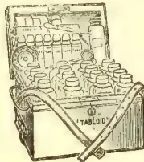
No. 254. Size:
9½ × 7 × 6½ in. The
ideal Estate Chest.
Approx. price in
London, 75/0
Particulars, outfits and refillings
supplied by all Chemists
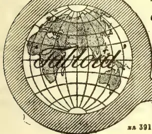
ss 391
BURROUGHS WELLCOME & Co., LONDON
NEW YORK MONTREAL SYDNEY CAPE TOWN MILAN
SHANGHAI BUENOS AIRES All Rights Reserved
The following table shews the
AVERAGES REALISED
for each district during the last five seasons :—
| Season 1911-12. |
Season 1910 11. |
Season 1909 10. |
Season 1908-09, |
Season 1907-08. |
|
|---|---|---|---|---|---|
| Assam | 7.11 | 7.5 | 7.4 | 6.7 | 7.6 |
| Cachar | 6.11 | 6.4 | 5.10 | 4.11 | 6.3 |
| Sylhet | 7.0 | 6.5 | 5.10 | 4.11 | 6.3 |
| Darjeeling | 9.7 | 9.6 | 10.0 | 8.8 | 9.3 |
| Doors | 7.4 | 6.11 | 6.11 | 6.0 | 6.10 |
| Terai | 7.1 | 6.7 | 6.3 | 5.2 | 6.4 |
| Chittagong | 6.11 | 6.3 | 5.10 | 4.11 | 6.3 |
Total averages 7.7 7.1 6.10 5.11 6.11
It would appear from the above that quantity-producing districts have again benefited to a much greater extent than those whose aim is quality. The comparative scarcity of fine tea from Assam and the larger crops gathered in some parts of Darjeeling at the expense of flavor, have had some effect on the season's averages of these two districts. Good tea has been wanted throughout the season and supply has as a rule been insufficient to meet demand with the result that remunerative averages have always been forthcoming; at the same time it is probable that the unusually high basis of value which has ruled for common and medium teas has enabled those who produce these to show even better results than others whose first consideration has been quality, and it is not improbable that a continuance of present market conditions will tend still more to the sacrifice of quality for quantity on some gardens were hitherto the reverse has been the case.
The following figures shew the
DISTRIBUTION OF THE CROP FROM NORTHERN
INDIA :—
| To | 1911 mills. |
1910 mills. |
1909 mills. |
1908 mills. |
1907 mills. |
|---|---|---|---|---|---|
| United Kingdom | 184 | 174 | 180 | 168 | 161 |
| Australia | 10 | 9½ | 8½ | 9 | 11 |
| Canada and U.S.A. | 8 | 6½ | 7½ | 6½ | 4½ |
| Russia | 31½ | 40½ | 30½ | 25½ | 27½ |
| Bombay and Persia | 6½ | 6 | 6½ | 7 | 6 |
| All other Ports | 5½ | 4 | 3½ | 4½ | 3½ |
| Totals | 246 | 240 | 235½ | 220½ | 213½ |
In addition to the above about half-a-million lb. have been sent by rail to Bombay and an appreciable quantity has been taken from the Calcutta Auctions for consumption in this country, for of the 78 millions which have been marked locally only 71 millions are shewn in figures supplied by the Port Authorities as having been exported.
United Kingdom figures include 4 million lb. the destination of which was not London but various coast ports.
In reviewing the above figures the most noteworthy feature is the very marked shrinkage in the direct exports to Russia, shipments to this country more particularly via far Eastern ports have steadily declined in comparison with the previous season's record, and this has been materially augmented by a very considerable falling-off in shipments to Hankow; the revolution in China which has led to the overthrow of the Manchu Dynasty, resulted during October
380The Supplement to the Tropical Agriculturistin all buying orders being cancelled from this quarter and although this was modified in the closing sales of the season buying was only resumed tentatively and the total shipments for the period under review shew a decrease of 4 million lb. as compared with the previous season.
With the return of settled conditions in China a complete resumption of buying for Hankow may be confidently expected, for we understand that the factories where brick tea is manufactured have not suffered from the hostilities that have raged in the city.
It is believed that various causes have influenced
but the failures of crops has undoubtedly restricted consumption in the districts where famine conditions have prevailed, it is also not improbable that the exceptionally heavy increase in purchases by Russian buyers in 1910, as compared with the previous year, resulted in somewhat large stocks being carried over towards the requirements of the past season. Apart from these considerations, it is not unlikely that the comparatively high level of values that has ruled, and the generally indifferent make and appearance of the crop, have caused increased attention to be paid to China growths; and in support of this contention it is noteworthy that shipments from that country to Russia have shewn an unexpected increase. The setback in the volume of business that has passed between Calcutta and Russia has not unfortunately resulted in increased purchases on the London market; in fact, the reverse has been the case, for during the past year exports have decreased nearly 25 per cent. A considerable quantity of Dusts were diverted from this market to London when buying for Hankow was suspended, but the experiment was not attended with success, the demand for this class of tea being so limited that prices declined to a marked extent immediately offerings were above the normal.
With the exception of Russia, trade with all countries has been satisfactory and in the main, steady progress has been made; it seemed probable at one time that the Australian Colonies would require less tea from both India and Ceylon on account of increased imports from Java, but heavy shipments at the latter end of the season have resulted in the exports from India to that market exceeding those of the previous season. Both
CANADA AND THE UNITED STATES OF AMERICA have operated on this market with considerable freedom throughout the period under review, the shipment figures to those countries disclose a considerable increase during the past twelve months. This is encouraging, for despite the efforts of the Cess Committee who have for some years past expended considerable thought and money on the exploitation of these markets, Indian tea has not received the attention that might have been expected.
continues to expand, though political troubles and the unsettled state of the
country in the Southern and wilder parts have undoubtedly affected commercial enterprise; in Northern Persia, however, where Russian influence is felt and trade routes have been protected, considerably more tea has been taken; it is almost certain that the increased imports have already gone into consumption for imperative buying orders from the centre were forthcoming at the end of season and the value of suitable teas was raised to an exceptionally high level.
despite increased imports of all tea into the United Kingdom during the past year, as disclosed by the Board of Trade returns, of over 16 million lb., and in view of this the exceptionally strong and active demand that existed and the high basis of values that was established and maintained for all grades, while the bulk of the crops were being handled could scarcely have been expected; but unusual circumstances arose and at the beginning of August when the New Season's teas were arriving freely, a labour strike at the London Docks entirely disorganised trade and restricted offerings to such an extent that the price of tea for immediate delivery rose considerably. It was generally expected when these troubles had been adjusted and the accumulated arrivals placed on the market, that price would decline; but distributors and dealers throughout the country continued to buy freely, not only for immediate requirements but as a provision, against further strikes, and although at the close of the year stocks of all tea in the London Warehouses were less than a year ago it is certain that there was considerably more held in the country by distributors generally. The London market has during the last few months shewn less activity, a movement that naturally followed depleted stocks in the country with considerable supplies still to come forward. While therefore the dock strike temporarily benefited producers, it disclosed to distributors the weakness of hand to mouth buying, and this section of the trade were quick to realise and guard against a position of extreme danger.
As a result of the strike an increase in wages was conceded to the labourers, of which sellers on the London market have been made to bear the burden for an addition of 10 per cent. to the already high charges levied by the London Warehouse authorities, came into force on October 1st.
A branch of the industry to which too much care and attention cannot be paid is the
Freight being by measurement shippers are not unnaturally desirous of economising by packing the maximum amount of tea into the minimum space; but unless the package used is strong and well put together, this will prove false economy; really good and sound packing costs infinitesimally more per pound than indifferent packing and the additional expenses on an entire crop is soon recovered on a small proportion of it, as more liberal competition is undoub-
and Magazine of the Ceylon Agricultural Society.—April, 1912. 381tedly extended to teas which are known to be packed in reliable boxes. Venesta, Imperial and other patent packages of more or less the same description, continue to find favour with buyers for the Russian market, but generally speaking the ordinary country box, when well put together, with corner pieces, gives satisfaction. The comparatively small percentage of claims put forward for loss in weight occasioned by bad packing must be admitted as sound evidence of steady improvement in the strength and durability of the packages now-a-days supplied to the trade, but there are still indications that the importance of good and sound packing is not even now universally realised.
During the past season a
DIVERGENCE FROM THE USUAL FRIDAY SALES was made in favour of Tuesday, this was done at the instigation of the Warehouse authorities who were of opinion that the change of day would enable both sale and shipment teas to be handled more expeditiously; the alteration has proved a success and will be continued during the coming season. Improved transport facilities have resulted in tea being brought to market more rapidly year by year and this has tended to confine the selling season within a shorter period with the result that any cessation of sales during the busy months might, in the opinion of the authorities, temporarily disorganise working at the Warehouse; to mitigate this the trade have been asked to discontinue the usual break during the Poojah holidays and to hold sales continuously. Sellers have expressed their willingness to assist the Warehouse in the manner suggested and the decision now rests with buyers who, it is hoped, will see their way to suffer the inconvenience entailed by the proposed innovation.
continues to cause much anxiety to proprietors, particularly those whose interests are centred in Assam, for it is with difficulty and only at great expense, that the labour force on the majority of gardens can be maintained on a basis sufficient to ensure efficient working. The Government of India have notified their intention to abolish Act 6 on July 1st, 1913, and in this connection we understand a memorial, which is now under consideration locally, has been drafted in London by the Committee of the Indian Tea Association; this memorial, while recording the feelings of the industry on the various points at issue, prays for some modification of the restrictions at present placed on recruiting as an offset to the abolition of Act 6 in the labour districts, at the same time drawing attention to the difficulties with which Assam has to contend as compared with the Crown Colonies who are assisted in the acquirement of indentured labour. It is unfortunate that it should be considered necessary to embarrass Assam with onerous restrictions, for the Tea Industry has done much in the past to open up a Province which otherwise would have remained waste and unprofitable.
The diversity of opinion which existed amongst proprietors regarding the methods by
which this problem can best be solved has to some extent disappeared, for although all are not in entire agreement with regard to Penal labour, the necessity for an act dealing with enticement is almost universally accepted, and it is probable that this conformity of opinion will enlist the sympathies and assistance of Government; at the same time all industrial and agricultural undertakings are passing through a period of great anxiety on the labour question, not only in India but in other countries and although every consideration is now extended by proprietors to tea garden labour, it would be unreasonable to expect the Tea Industry to escape the difficulties that are at the present time so widely felt.
In anticipating the ensuing season,
may be looked for, though the measure thereof will depend to a great extent on the quality of the crop, for provided a good useful standard is maintained it is difficult to see how supply can be in excess of demand. It should be remembered that India has gained her position of eminence amongst other tea producing countries through the merits of her production in the past, and any falling away from the standard looked for will jeopardise her hold on the markets of the world to the benefit of other growths. It is unfortunate that a freer system of plucking should, in some quarters, have been resorted to in the past season, and although results may have proved otherwise, the success attained can only be temporary, for there have been indications that Russia and other countries will revert to China growths in preference to
from this country. The strong demand for tea that existed from all foreign markets at the close of the season is indicative of depleted stocks and points to considerable activity being manifest when the new season's teas are offered; it is also thought possible in some quarters that the recent troubles in China may be the means of materially restricting the "first crop" teas in that country and from reliable information received through private sources, we believe such will be the case; Russian buyers therefore in particular may be expected to operate on this market with exceptional freedom.
Ceylon coconut planters will be interested to hear of the possibilities of competition from Portuguese Zambesia. information to the following effect has been furnished by H.M. Consul at Lourenço Marques, Mr. R. C. F. Maugham, who says:—
The soils of Zambesia are extraordinarily rich, and capable of producing every variety of agricultural produce usually associated with this part of Africa. Both black and deep chocolate organic soils are constantly met with, and immense agricultural estates containing these, and also a rich red, argillaceous clayey soil, especially suitable for coffee, could be
382The Supplement to the Tropical Agriculturistmarked out with ease in practically any part of the centre of the country. At Nhamacurra an association has planted some 1,700 hectares (about 4,200 acres) of sisal (Agave rigida sisalana), which has already produced good fibre and will undoubtedly give consistently excellent results; whilst, commencing at Mixixine, the association possesses plantations of coconut palms estimated to contain no less than 700,000 trees, about one-fifth of which are now coming into bearing. All round about Quilimane, north, south and west, the cultivation of the coconut palm has been steadily pursued for some years past, until at present the number of trees actually planted out and owned by three prazo concessionnaires may possibly aggregate a total of nearly 1,500,000 trees; of these, probably not more than one-fifth, or even less, have begun to produce, but there is no doubt that in the course of the next five years the export trade of copra from Quilimane will have become exceedingly important. The only existing railway in Zambesia is one of 18-in. gauge which runs between Quilimane and a small settlement 18 miles away on the Macuze river, called Maquival.
Our readers and we are greatly indebted to Mr R. Derry, acting for the F.M.S. Director of Agriculture, Mr Lewton Brain, for the information he has supplied elsewhere regarding the Pineapple Industry of Singapore, which is by no means defunct. To those who are developing or reviving pine cultivation in Ceylon there is much that is suggestive, and ought to be practically useful, in these notes to which we direct special attention:—
Botanic Gardens, Singapore,
Straits Settlements, March 27.
SIR,—With reference to the article on Pineapple cultivation in the Ceylon Observer and your letter of March 9th, I have to state that the Singapore tinned Pineapple has so far held its own against fair competition for the reason that, strange, though it may appear, the quality of the pine comes out of the tins better than it goes in; but whether this result is due to climatic influence, or chemical change, I cannot say,
It would be more correct to say that land is obtained, rather than selected, which has partially recovered and partly reafforested itself after a previous crop, and may have been uncultivated from a few to twenty years. Such soils may vary from ordinary clay to hard laterite, and the site may be undulating to steep, and usually intersected with ravines and swamps, but always hilly, as the flat lands are more valuable for market gardens and sugar, and the cultivation of pines has not extended far from main roads owing to the cost of transport.
The cultivators, Malays or Chinese squatters after clearing and burning off the bluker (scrub or secondary growth) usually line and hole at right angles to the contour of the land for the
purpose of easy collecting after plucking, i.e., straight rows up and down not round a hill. It is usual to hole three feet in, and four feet apart between rows, and at intervals wider spaces are left for the purpose of collecting the crop. A bullock cart track is left following the contour of the land, where there is an easy gradient, which also serves for draining and conducting heavy wash to the ravines or swamps. On large clearings it is usual to erect shelters with protected sides which serve as shelters for watching the crop, particularly at nights, against the ravages of pigs, and as a store for fruit in wet weather.
There is very little, if any, varietal distinction in the field Pineapple; but the crops diminish in size considerably as the plantations mature. Cuttings are obtained from off-shoots or suckers from the base of the plant. Fruit cuttings take longer to come into bearing and are usually, partially, sun-dried, and the lower leaves removed before planting. The holes are frequently prepared with a local "planter" wooden implement like a crowbar by Malays, and with a changkol by Chinese, who add any charcoal or burnt earth at hand. While the plants are growing, or for the first 12 months, the plantations are carefully weeded, but it is not the custom to manure. Occasionally, burnt earth or cow manure, is applied to a small, or special patch, but general manuring on plantations is not adopted.
The first crop is produced from the original cuttings in about 15 months; subsequent crops from off-shoots, and such crops are improved in size if the off-shoots are reduced to two or three growths. This is usually done for two or three crops, but is gradually abandoned. After the first crop the plantations furnish three or four crops in the year according to the number of off-shoots left. The crops fall off in dry weather, an abundant rainfall is essential.
As the plantations are native holdings, it is not possible to state the actual crop per acre, but I think 5,000 fruits per acre a safe estimate for Malaya for the first three years. Plantations are usually abandoned after six years and earlier if driven out by Lalang. The practice however is in process of alteration. At the present time much of the accessible land is being leased for Rubber, and the lessees sublet their land to Squatters who plant and maintain the Rubber according to contract, with the right to interplant Pineapples, at a stated distance from encroaching on the rubber. This alteration will probably result in more careful cultivation of the pine and better crops.
Although not free from diseases, Pineapples in Malaya are not sufficiently injured to receive any special precautions. Mealy bug occurs, but is not prevalent. Fruit rot, the result of a fungus following on a punctured fruit, represents a small percentage of discarded fruits. The worst pests, for which precautions are taken, come from Pigs, Porcupines, Musangs and sometimes Deer. Most of the plantations are fenced against Pigs and Deer and all are trapped or shot.
The crop is carted direct from the estate to the factory in the town, in Singapore, and
and Magazine of the Ceylon Agricultural Society.—April, 1912.333brought by sea from Malacca. There is also a ready sale for the fruit in the bazaar. Although the field pine is not appreciated by Europeans a fresh ripe fruit is quite palatable, but a fruit plucked before it is ripe, and perhaps a week old, is not commendable.
If you wish any information on the method of tinning, I will supplement this account by further notes.—Yours faithfully,
R. DERRY.
for Director.
While pineapples are probably grown with more profit in the Hawaiian islands than any part of the world, it is only because the planters have studied this product, and applied to it the most adaptable methods to produce a finely matured fruit. And the result has read something like a fairy story from King Midas; the profits have even astonished the planters who were interested in the estates growing pines. And ten years previous to their first big crop in 1902, you could scarcely get a Hawaiian plante to look at a pineapple. It was because a long-headed man, then secretary of the Planters Association of Hawaii, told that body of men that some day their sugar crop (which is the principal product of the Islands) would fail. Then what would they have to fall back on, except small crops of coconuts, rice and bananas, which would not tide them over to another season. Some of the members sat up and took notice. Immediately all the information and samples possible were obtained from the other pineapple-growing countries of the world. Companies were formed, areas planted with different species, and the authorities established an experiment station, where a scientific study of pineapples was conducted. The outcome has been a most delicious and healthy fruit which is gaining a famous reputation around the world. The renewed interest in the pineapple situation here begins to look as if the subject would be taken up seriously before long, and investigated with a view to undertaking the pineapple project on a substantial scale. While most of the planters of Ceylon have rubber to fall back on in case tea should fail, and vice versa, at the same time, inter-planting has seen its best day, and even now many of our largest planters are contemplating its abolition as a method conducive to producing either better tea or better rubber, each planted separately. Some of the planters will eventually devote themselves to one or the other exclusively. In any event, both rubber and tea crops are subject to ravages by droughts, pests and storms, while the pineapple, hardy and easily cared for, grows low, and is, in nine cases out of ten, a sure crop.
That the pineapple is to be one of the principal fruit productions of all tropical countries is exemplified in the reports of the agricultural departments from Japan (covering Formosa) the Philippines, Java, Cuba, Porto Rico, Panama, Florida, Mexico, Southern California, parts of
India; and experiments are even going on in certain districts of British South Africa. At first the problem of shipping from Ceylon seems a difficult one; but when it is considered that the pineapple can be shipped, partly ripe, and by the time it reaches its destination, is in the pink of condition; also when the shipments are once under way, and kept going, the transportation question shrinks into insignificance. Another point in favour of growing pineapples, is that first-class, finely matured fruit always brings a good market price, and the demand is invariably strong. Second and third grade fruit find a ready market for preserving and canning purposes in all of the big world centres. One large canning factory in New England last year offered to contract for, and take all the pineapples which Cuba, the Philippines and Hawaii could raise together. And they all refused to make contracts, for the individual market demand was so great that they could afford to be independent. We are glad that our Government officials are looking into the matter, for we have faith in Ceylon as a future pineapple country, and if our planters can produce as fine a grade of this fruit as of tea and rubber, it is our prediction that within ten years we will be running Hawaii a close race for first position. Once the pineapple industry is started on a proper scale, and handled judiciously, there is little doubt as to the profits and certainty of crops. Dividends of from 40 to 60 per cent. on common pineapple shares are reported from Honolulu last season, and many of the Cuban companies paid as high as 50 per cent., which is an excellent showing in consideration of the quality of Cuban pines as compared with these grown in Hawaii. We have recently received several interesting letters with regard to pineapple growing, and some definite action will no doubt be taken soon, as to a further investigation of this subject.
Washington, March 8th, 1912.—A series of reviews on coconut and other oil seeds in the Cocos Islands, Ceylon, France and Mexico is contained in reports received at the Bureau of Manufactures from those countries:—
Regarding the manufacture of copra in the Cocos (Keeling) Islands, it is stated that these nuts run about 7,000 to the ton, against 4,000 to the ton in the Straits Settlements and the Federated Malay States. The trees were seriously damaged by a typhoon in 1909, but the production was heavy during the past year, and the copra product has a large market in Europe and brings high prices.
Regarding Ceylon, it is shown that during 1911 there were 511,269 hundredweights of coconut oil exported to different countries, and 788,695 hundredweights of copra. Regarding the shipment of oil cake, it is said that 213,982 hundredweights of coconut oil cake were shipped in 1911, of which amount 4,681 hundredweights went to Great Britain and 121,000 hundredweights to Germany.
The report which comes from the Marseilles district of France says that receipts of oil seeds in that district during 1911 almost equalled
384The Supplement to the Tropical Agriculturistthose of 1910, which was the largest on record, amounting to 643,634 metric tons for the 1911 business. The largest volume of these receipts was shelled nuts, amounting to 200,509 metric tons; of copra, 173,056 metric tons; lin-seed, 11,540, and sesame, 80,266 metric tons; cotton-seed, 9,180 metric tons.
In connection with these reports there is also received from Yokohama an account of the rape-seed oil refining in Japan, and from Gothenburg an account is given of a new soya bean mill in Sweden. The report from Yokohama says:—
Japanese production of rapeseed is about 2,750,000 bushels annually. The 12,879,604 gallons of oil therefrom in 1909 was valued at $4,661,294, which included that from 2,794 tons of imported seed. Imports of rapeseed in 1910 were still larger—10,333 tons, valued at $364,951.
Japanese rapeseed yield 19 to 22 per cent. of oil, against 17 to 22 per cent. from the Chinese seed imported. A bushel of seed produces to quartz. The oil is used largely for cooking, though some is used in making light lubricating oil and for soap making. The seeds are usually crushed in mortars in which the pestle is worked by motor or by foot power with a stone pestle. The following methods of refining are supplied by the Japanese Department of Commerce and Agriculture:—
(1) Oil is gradually mixed with strong sulphuric acid and after an hour's stirring is allowed to remain for six to twelve hours until all sulphides are completely precipitated. This precipitation is carefully removed and the oil washed several times in a warm bath.
(2) Oil is placed in a pan and heated for about thirty minutes over a slow fire, when oyster-shell ash and cottonseed ash, in amount each equal to 3 per cent. of oil being refined, are added to mixture, with a little water. This mixture is stirred for four or five hours, then removed from pan and placed in a jar to cool. It is then passed through Japanese filter paper and again placed in a pan and heated to a temperature of 130 degrees C. Some of the water is poured off and the balance soon evaporates, leaving the oil a light colour.
The above processes are designated "old process," and it is likely that improvements will soon be made in the refining of these oils. The 93,010 tons of rapeseed oil cake produced in 1909 were valued at $2,387,326. This article is used for fertiliser, but represents only a small proportion of the oil cake so used, as great quantities of Manchurian bean cake are imported for that purpose.
The account received from Gothenburg tells of the new soya bean works in the following:—
For installing a plant to work soya beans from Manchuria the Aktiebolaget Goteborgs Ris-och Valskvarn (Gothenburg Rice and Roller Mill Company) has increased its capital stock from 794,000 crowns ($212,792) to a minimum of 2,000,000 crowns ($536,000) and a maximum of 6,000,000 crowns ($1,608,000). Establishing such a plant at Gothenburg has been discussed for several years.
The plant will be the first of its kind in Sweden. Soya bean oil, oil cake and meal have
hitherto been imported from Hull, England and from Copenhagen. This oil has in the past four or five years become a strong competitor of other vegetable oils, many of which are imported from America, while the bean cake and meal have been most successful in competing with American cotton seed cakes and meal.
The new enterprise is allied to the Swedish and Danish East Asiatic companies and with similar plants at Copenhagen and Stettin, and Danish money forms part of the capital. The two East Asiatic companies referred to operate a joint steamship service to the Far East, and the problem of return cargo for the ships that go out with paper, pulp, timber and iron is important. This explains their interest in developing uses for Manchurian beans. It is planned to expend 1,500,000 crowns ($402,000) in plant, erecting a new mill capable of handling 30,000 tons of beans annually, so designed that it can easily be enlarged to 50,000 tons capacity.
From Consul Michael, at Calcutta, the following brief reference was made in a report on the British Indian sesamum crop:—
The final memorandum on the Indian sesamum crop of the 1911-12 season, which covers the British provinces producing about 79 per cent of the reported crop in British India states that the total area reported was 4,164,700 acres, against 4,933,300 acres in the previous year. The total outturn (excluding Hyderabad) was 311,300 tons, which is 136,300 tons less than during the preceding year. This is a decrease of 15.6 per cent in area and of 30 per cent in outturn. —New York Oil Reporter.
British investors in the light of recent experience are likely to fight shy of rubber exploitation in Abyssinia, but according to Professor H. Jumelle, who writes on the subject in the current issue of the "Journal d'Agriculture Tropicale," a decided increase in the quantity and quality of the rubber produced in the old empire of Prester John is to be expected. In 1910 Abyssinia exported 310,500 lb. of rubber, valued at £60,766. The importations at London are increasing steadily, and Abyssinian sheets and scrappy sell at prices which approximate to those obtainable for Manicoba sorts. The source of the rubber is a Landolphia which flourishes at altitudes from 2,500 to 3,200 ft. A manufacturer who has examined a sample rather under than over the usual standard of quality gives the following analysis: 1.8 per cent. moisture, 0.15 ash, 7.2 per cent. of resins soluble in acetone. This was valued at 6 to 8 francs the kilo when Para was quoted 12.00 francs. The collection of rubber in Abyssinia is a monopoly and is at present in the hands of M. Ydlibi—whose name is not unknown to English readers. The payment made by him to the Ethiopian Government is understood to be 117,500 francs per annum. An Egyptian syndicate works half the concession under license from M. Ydlibi, and this syndicate is stated upon the authority of its manager, M. Balanos, to be about to engage in a vigorous exploitation of huge rubber-bearing areas at present untouched. —India-Rubber Journal, March 23.
VOL. XXXVIII.
COLOMBO, MAY 15TH, 1912.
No. 5.
In the last number of the Tropical Agriculturist we reprinted an article entitled Notes on Tapping from the India Rubber Journal for February 24th. This article embodied a criticism of our Circular, Notes on the Tapping of Hevea Rubber by the method of Paring. (Circulars and Agricultural Journal of the Royal Botanic Gardens, Vol. VI., No. 2, October, 1911.)
Two points in the Circular are criticised. With regard to the first of these we do not think there is any real ground for disagreement between the Editor of the India Rubber Journal and ourselves. In fact, it would seem that we have only expressed the same opinion in slightly different words. The view of the India Rubber Journal is that "the four years' interval for bark renewal which we have laid down, should only under very exceptional circumstances be reduced." Our own statement is as follows: "Tapping of the renewed bark may be begun after three years on large and vigorous trees, and these may be roughly defined as trees which have reached a girth of 3 feet at 3 feet from the ground at the period in question." Now, if tapping was begun when these trees were 18 inches in circumference at 3 feet, such trees will have increased in girth at the rate of six inches a year during the first three years of tapping. There can be no doubt that such a rate of increase is quite exceptional in Ceylon. Therefore, we go on to say at the end of the same paragraph, "we should recommend an interval of four years rather than one of three except under very favourable circumstances."
Our intention was and is to recommend an increased interval rather than a reduced one. In the second edition of Mr. Herbert Wright's "Hevea Braziliensis," published in 1906, the author wrote, "If the area is excised at such a rate that the whole of the bark is removed in three years, the oldest renewed tissue, by the time it can again be tapped, may be considered near maturity, and can be operated on with comparative safety." That advice was taken by a large number of planters in Ceylon, and the view that a longer interval is required if the full vigour of the trees is to be preserved, has only recently begun to gain ground. It is our object to accelerate the progress of this view, and we cordially endorse the present opinion of the Editor of the India Rubber Journal that four years should be regarded as the minimum safe interval. We are quite prepared to find that even this interval will have to be increased as the result of further observations on bark physiology. Our subsequent remarks will be found to have some bearing upon this point.
386[MAY, 1912.On the second point criticized we are definitely in disagreement with the Editor of the India Rubber Journal. The statement complained of is that the interval between successive tappings, provided that it does not exceed a week or so, makes little difference to the yield of rubber per tapping. Our most recent results necessitate a modification of this statement, but not in the direction indicated by the India Rubber Journal. Although we feel certain that this is not his real opinion, the further remarks of the Editor suggest that he is in agreement with the view we once heard expressed by a young Superintendent, namely, that it was desirable at all costs to get through the bark marked out for a specified period. A more wrong-headed view than this could not possibly be taken, and we do not seriously attribute it to the India Rubber Journal.
As a matter of fact, the interval between successive tappings does make a difference to the yield of rubber per tapping. And the difference is in favour of an increased interval between successive tappings—not a reduced one. The difference appears to become greater, the longer the trees are tapped, and we have only arrived definitely at the opinion stated after nearly four years of continuous experiment. In support of this statement the following facts are submitted. For a full account of the Experiment down to the end of February, 1911, the reader is referred to Circulars 9 and 18 of Vol. V., obtainable from the Botanic Department. The further account of this experiment is likely to be considerably delayed owing to stress of work. We, therefore, take this opportunity of making public one of the most important results attained.
The experiment described was carried out on seven rows of ten trees each. The trees are old and closely planted. The rows are numbered I. to VII. and tapping was carried out, on the system described in the Circulars, in the same way on all the trees except that the interval between successive tappings was different for the different rows. The following table shows the average interval in days between successive tappings and the number of years allowed for renewal on the system adopted:—
| I. | II. | III. | IV. | V. | VI. | VII. | |
|---|---|---|---|---|---|---|---|
| Interval ... | 1.4 | 2.6 | 3.9 | 5.1 | 6.5 | 7.8 | 9.0 days. |
| Period of renewal... | 2.3 | 4 | 6 | 7 | 8 | 9 | 10 years. |
The average yield per tapping of ten trees is given in grammes in the following table, which covers the last six months of 1908 and whole of 1909-10-11. During the whole of this time the experiment was carried on without a break.
AVERAGE YIELD PER TAPPING.
| I. | II. | III. | IV. | V. | VI. | VII. | |
|---|---|---|---|---|---|---|---|
| 1908 ... | 100 | 107 | 148 | 158 | 169 | 210 | 163 |
| 1909 ... | 57 | 72 | 86 | 91 | 113 | 121 | 108 |
| 1910 ... | 58 | 69 | 67 | 96 | 118 | 115 | 115 |
| 1911 ... | — | 87 | 78 | 143 | 169 | 176 | 154 |
One of the best yielding trees in row III. had unfortunately to be cut out early in 1910 owing to canker. No allowance is made for this fact in the above table, but in the table which follows one-fifth of the actual yield is added to the yield for row III.
It was obvious early in 1910 that some of the weaker trees of row I. had suffered from the rate at which they had been tapped, and it was not thought desirable to continue operations on the renewed bark.
Now it might be thought possible to draw the conclusion at once from the above table that the yield of rubber per tapping increases directly with the inter-
MAY, 1912.]387val between successive tappings up to an interval of eight days (row VI.). But it has to be remembered that row I. is always in a later stage of tapping than row II. and so on; whilst down to the end of 1910 the earlier tappings give in all cases higher yields than the latter ones. Towards the end of 1911, however, the yields began to increase. This increase was much greater in the case of the rows tapped at longer intervals. The following table shows the yields for January and February, 1912:—
PERIOD OF SIXTY DAYS, JANUARY AND FEBRUARY, 1912.
| GROUPS OF TEN TREES.* | ||||||
|---|---|---|---|---|---|---|
| II. | III. | IV. | V. | VI. | VII. | |
| No. of tappings ... | 24 | 17 | 12 | 10 | 8 | 7 |
| Total yield grammes ... | 1,932 | 1,540 | 2,080 | 2,163 | 2,020 | 1,572 |
| Average per tapping ... | 80 | 90 | 173 | 216 | 252 | 224 |
The average yields from rows V, VI. and VII. for these two months are greater than any yields previously obtained from rows I, II. and III.
From the above table the remarkable fact appears that after years' steady tapping (making full allowance for the fact that Row III. row contains only nine trees), rows IV., V. and VI. each yielded a larger amount of actual rubber, from 12, 10 and 8 tappings respectively, than rows II. and III. from 24 and 17 tappings respectively.
Turning to the figures for 1909-11 it is of interest to record approximately the crop per acre which the yields recorded would produce. The result expressed in lbs. is as follows:—
AVERAGE ANNUAL CROP PER ACRE.
| II. | III. | IV. | V. | VI. | VII. | |
|---|---|---|---|---|---|---|
| 1909-10 ... | 566 | 480 | 381 | 364 | 315 | 257 |
| 1911 ... | 653 | 620 | 605 | 565 | 490 | 360 |
Now the yield for 1911 has increased over the average yield for 1909-10 in every case, but the increase is decidedly greater in the case of the rows tapped at longer intervals. Expressed as percentages of the average yields for 1909-10, the increases are as follows:—
| II. | III. | IV. | V. | VI. | VII. |
|---|---|---|---|---|---|
| 17 | 29 | 59 | 55 | 56 | 38 |
In view of the figures for January and February, 1912, the conclusion presents itself that we are rapidly approaching a period when the crop gathered once a week will exceed the crop gathered every three or four days. According to the figures so far available an interval of days (rows V.) appears likely to give the best final result. All the tables here given show a distinct falling off in the case of row VII, indicating, as might have been expected, that nine days is too long an interval. The best yield per tapping is given throughout by row VI, and the best total yield for January and February, 1912, by row V. To revert to the subject of the early part of this article, if these were the only facts available, we should be justified in recommending a period of renewal of eight years as superior to one of four years.
We do not wish to labour this point too far, as it is desirable to know the further course of the experiment before coming to a final conclusion.
It must not be forgotten that the present experiment was made upon trees upwards of twenty years of age planted at a distance of only feet. The facts are, however, remarkable, and of such importance that it seems desirable to place them at once in the hands of the public. There can be no doubt that the facts so far available point to the desirability of an increase in the interval between successive tappings.
* Allowance is made for the fact that row III. contains nine trees only.
388[MAY, 1912.(From India Rubber World, Vol. XLV., No. 4, January 1, 1912.)
Recognising the importance to the American rubber and kindred industries of full and detailed information as to the development of rubber culture in the Malay States, a systematic investigation of the whole question has lately been made by the United States Government. This difficult task has been ably carried out by Mr. D. Milto Figart, United States Vice-Consul General in charge at Singapore, who has compiled a report covering the four years 1907-1910, which (though not yet published) the Indian Rubber World has by the courtesy of the Bureau of Manufactures, Department of Commerce and Labour, had an opportunity of examining, and of which the leading features are reproduced below:—
The report includes (1) rubber acreage, yield and production; (2) cost of development per acre and of production per pound. Other points touched upon are (3) comparative quality of product, probable output, market value and dividends; while (4), labour, diseases and other important points likewise receive attention. Appealing, as it does alike to the rubber manufacturer and to the economic student, this skilfully compiled report amply repays perusal.
Dealing with the history of the "rubber boom," which occurred within the last year covered by the report, Mr. Figart refers to the inherent soundness of the rubber trade, as being demonstrated by the relatively small number of failures, which marked the subsequent decline in values.
Taking the first and last of the four years dealt with, the total rubber acreage of Malaya rose from 179,227 acres in 1907 to 362,853 in 1910, thus having more than doubled within the period in question. That the grand total of pro-
duction increased from 2,278,870 pounds in 1907 to 14,368,863 pounds in 1910, would show the largely augmented productiveness of Malaya as the result of methodical and scientific rubber cultivation.
The acreage planted on December 31, 1910 (362,853 acres) represented 632 estates (as compared with 534 a year earlier) with an acreage of 292,033. Of the 1910 acreage about one-fifth had been planted during that year, while the plantings of 1909 only represented 15 per cent. of the total cultivated acreage at the end of that period.
Ceylon, while producing in 1910 more than six times as much rubber as in 1907, had a much smaller quantity to start with. Consequently the excess in the Malayan yield, as compared with that of Ceylon, now amounts to about 11,000,000 pounds, as illustrated by the following comparison:—
| 1907 | 1910. | |
|---|---|---|
| Pounds. | Pounds. | |
| Malaya ... | 2,278,870 | 14,368,863 |
| Ceylon ... | 556,080 | 3,298,652 |
Much interest attaches to the following details of the present rubber acreage in various Asiatic countries:—
| Malaya ... | 362,853 |
| Ceylon ... | 241,885 |
| Netherlands Indies ... | 150,000 |
| Burma ... | 13,525 |
| Cochin China ... | 11,000 |
| South India ... | 30,000 |
| Total acres, 1910 ... | 809,263 |
From a comparison of this table with the figures already quoted, it would seem that Malaya, with 362,853 acres, produced in 1910 14,368,863 pounds, while Ceylon, with 241,885 acres, only produced 3,298,652 pounds.
Following the above important statistical facts, is a valuable estimate prepar-
MAY, 1912.]389Saps and Exudations.ed by Mr. C. M. Cumming, Manager of Linggi Plantation Limited, Selangor, of the cost of opening up a rubber plantation of 1,000 acres (250 acres each year) including 10 per cent. for contingencies. The cost is estimated as representing: First year, $19,681; second year, $18,588; third year, $22,649; fourth year, $33,902; fifth year, $26,741; sixth year, $27,053; seventh year, $31,240. The total cost (without interest) would thus far be $179,854, but striking off respectively one-eighth, one-third and five-eighths for the last three years, the amount would be reduced to $147,969, or approximately (as Mr. Figart states) $150 per acre.
Taking the principal items of gross expenses for the first and seventh years, the following result will be shown:—
| 1st year. | 7th year. | |
|---|---|---|
| Premium and Survey | $2,272 | ... |
| Clearing 250 acres | 2,130 | ... |
| Planting 250 ,, | 852 | ... |
| Plants and Seeds | 1,136 | ... |
| Bungalow ... | 1,704 | ... |
| Hospital, etc. ... | 1,704 | ... |
| Rent ... | 568 | 2,272 |
| Superintendence | 2,272 | 4,260 |
| Weeding ... | 1,278 | 8,520 |
| Machinery ... | ... | 5,680 |
| Other Expenses | 3,976 | 7,668 |
| 17,832 | 28,400 | |
| Contingencies, 10 % | 1,789 | 2,840 |
| $19,681 | $31,240 |
The estimate of $150 an acre, it will be remembered, is arrived at in conjunction with five-eighths of the amount of the expenses for the seventh year being charged to revenue.
According to the estimate of prominent planters, the annual yields per acre may be counted as follows:—
| Pounds. | |
|---|---|
| Fifth year ... | 50 |
| Sixth year ... | 150/188 |
| Seventh year ... | 250/281 |
| Eighth year ... | 350/381 |
| Ninth year ... | 400/404 |
| Tenth year ... | 400/577 |
| Eleventh year ... | 400/633 |
While well-managed estates have been producing from 500 to 800 pounds of rubber per acre, it is remarked that in many cases these figures will not be reached. At the same time, it is added, these conservative estimates will probably be greatly exceeded if tapping is delayed until the proper period has elapsed, and is then carried on in the most scientific manner.
In pro-forma calculations given of prospective annual results from the fifth to the twelfth year, the lowest of the above estimates of quantity is used as a basis of calculation.
The scope and general features of the above-named calculation are illustrated by the following estimates applicable to an estate of 1,000 acres:—
| Fifth year—250 acres at 50 lbs. per annum=12,500 lbs. at $0.72 per lb. | $9,000 |
| Less cost of production at $0.48 per lb. | 6,000 |
| (Estimated result) | $3,000 |
| Twelfth year—1,000 acres at 400 lbs. per annum=400,000 lbs. at $0.72 per lb. | $288,000 |
| Less cost of production at $0.36 per lb. | 144,000 |
| (Estimated result) | $144,000 |
As to this crucial point, it is stated that the average cost per pound for thirty-three estates taken indiscriminately, equalled 1s. 2½d. or $0.29. This average, it is noted, is on a basis including young trees. That in the estimates of results just referred to, the cost of production is figured at 36 cents, is in harmony with the conservative nature of Mr. Figart's other calculations.
On this subject Mr. Figart makes the following recommendation:—
"Plantation rubber, while superior to fine hard Para in resinous and mineral tests, has generally proved inferior in strength, and more care must be taken
Gums, Resins,390[MAY, 1912.in working it up to prevent a soft product resulting. Recent tests, however, have been more satisfactory, and with improved methods in cultivating, collecting, coagulating and preparing (plantation) rubber, it is confidently expected that the future product will approximate fine hard Para in every important test."
Mr. Figart's view, that nothing definite can be said about the probable output of rubber is a statement of importance. At the same time, he quotes the subjoined estimates of two prominent rubbermen, which are very close to each other, which he characterizes being "as good estimates as can be obtained."
| Malayan alone | 14,368,856 lbs. (or about) | 6,450 |
| Ceylon alone | 3,298,652 " | 1,450 |
| Total Far East | 17,667,515 " | 7,900 |
| Tons. | ||
|---|---|---|
| 1910 | ... .. | 6,450 |
| 1911 | ... .. | 11,000 |
| 1912 | ... .. | 18,000 |
| 1913 | ... .. | 24,000 |
| 1914 | ... .. | 33,000 |
| 1915 | ... .. | 45,000 |
| 1916 | ... .. | 65,000 |
| 1910 | ... .. | 7,900 |
| 1911 | ... .. | 16,000-17,000 |
| 1912 | ... .. | 25,000-30,000 |
| 1913 | ... .. | 40,000-45,000 |
| 1914 | ... .. | 55,000-60,000 |
| 1915 | ... .. | 70,000 |
When figures in respect to Ceylon, the Netherlands Indies, Burma, etc., are added to those from Malaya in Estimate No. 1, the result will be very close to that shown by the second estimate.
In connection with these points Mr. Figart remarks that the following conditions may be assumed :—
Cost of production 36 cents per pound ; (some estates now turning out rubber for less than 24 cents).
Selling Price, 2 shillings, or 48 cents.
Profit, 12 cents per pound.
On the basis of the two estimates previously referred to of 400 and 577 pounds per acre for ten-year-old trees, it is calculated that the profit per acre would be respectively $48 and $69. Taking even the lower figure, it is shown that in the cases of seven estates chosen indiscriminately, the profit would represent for original investors from 17.4 per cent. to 61.5 per cent., while on the present high market values the shares would pay from 2.6 per cent. to 6 per cent. These results, it is urged, show the sound basis of the industry, even with appreciated share values.
A constant increase is recorded in the arrivals of Chinese immigrants at both Singapore and Penang; the number landed at the former port in 1910 having been 216,321, as against 151,792 for 1919. The number arriving at Penang was 59,414; being 37 per cent. in excess of that recorded for the previous year. It being calculated that by 1920 there may perhaps be a million acres of rubber trees in Malaya, as compared with about one-third that area at present under cultivation, this possible three-fold increase would necessitate a labour force of 600,000 to 700,000 coolies against the 200,000 at which the present number has been estimated. The prospective increased cost of the coolie labour required to meet the needs of the estates is a factor to which Mr. Figart calls attention, as possibly enhancing the cost of Malayan rubber production.
A distinction as to accessory crops is drawn between catch-crops and cover crops. The former description is grown for the purpose of getting revenue during the first four or five years up to the time when the rubber is at the producing stage, but agriculturally they are not to be recommended. In the Federated Malay States less than 6 per cent. of the rubber acreage was planted in 1910 with catch crops (principally coffee), as against 10 per cent. in 1909, while in
MAY, 1912.]391Saps and Exudations.the Straits Settlements the percentage was only 28 per cent., as compared with 40 per cent. for the previous year.
Cover-crops are planted between rubber, at present chiefly with the object of reducing the expenditure on weeding. Mr. Figart remarks that no cover-crop can be unconditionally recommended in Malayan plantations, considering the best procedure at present to be absolute clean weeding. He adds, that if a leguminous and easily controlled cover crop were introduced, it might be preferable even to clean weeding, particularly if it paid the cost of its own production.
Although experiments in crushing rubber seeds for the oil and residual poonac have so far been without satisfactory results, recommendations have been sent to planters to instal machinery suitable for the purpose named, so as to continue trials in the direction indicated.
In a detailed Appendix, the work of Mr. C. C. Malet, formerly connected with the Agricultural Department of the Belgian Congo, and at present a licenced valuator in the Straits Settlements, full pro-forma particulars are shown of the various elements of cost of rubber production on a thousand acre estate, on the basis of 400 pounds per acre, and an average per acre of about 120 trees. The cost of production is quoted as a fraction under 26 cents per pound for the estimated annual product of 400,000 pounds.
Mr. Figart's views on the general situation of rubber are so broad and far-seeing, that they may with advantage be quoted literally :—
“Considerable thought is being given to the question of whether the future plantation rubber industry will be much affected by the wild rubber supply. The present cost of marketing wild rubber is higher than the cost of producing plantation rubber, and with the large quantities of the latter coming on the market in a few years' time (possibly 100,000 to
150,000 tons), there will be a strong tendency in the direction of reducing the supply of wild rubber which can be marketed at a profit. Realizing this, the Brazilian Government is taking steps which will make possible a material reduction in the cost of collecting wild rubber. However, it is the general opinion of manufacturers that the new uses to which rubber will be devoted will absorb the visible supply, and maintain prices at a figure which will allow a liberal margin of profit to investors in plantation rubber. This fact is evidenced by the investment in the Orient of millions of dollars in this industry by a group of American capitalists, but a small percentage of whose holdings is planted and none of which are in bearing.”
One planter has the following to say :—
“When the output from the plantations (say 1,000,000 to 1,200,000 acres in more or less full bearing by 1920-22) amounts to over 200,000 tons per year, then in order to sell this huge output the price must be reduced so low that many new channels of consumption will be opened up, which means a probable average price of, say, 30 cents per pound, at which price it is not at present conceivable that fine hard Para can be profitably collected even under the best of circumstances.”
The above is, of course, based on a much lower cost of production than the writer has used in this article.”
While it has only been possible to reproduce some of the most prominent features, the above summary indicates the leading points of the report, and shows the vast amount of preparation and skilful compilation undertaken by Mr. Figart and his colleagues.
(From the India-Rubber Journal, Vol. XLII., No. 27, December 30th, 1911.)
Though no longer generally referred to as the Dark Continent, our funds of information with regard to certain parts
Gums, Resins,392[MAY, 1912.of Africa are still meagre, and rubber statisticians, amongst others, either fight shy of the subject of the rubber production of that Continent altogether, or content themselves with a few figures carelessly garnered and of the comparative value. The difficulty lies in the bewildering number of territories and spheres of influence into which the Continent and adjacent islands have been divided by the Powers. Figures, if they are to be had, must be collected from so many sources that the task of gathering full particulars of the rubber output appears to present even greater difficulties than it really does. As a matter of fact, nearly every Colony and Protectorate possesses a fairly efficient statistical service, but the figures for the whole of Africa, though published separately in obscure Government reports, have never been collated and made really accessible to members of the rubber trade. For one reason in particular, a more or less exact knowledge of the output of rubber from the African Continent is at present desirable. Africa furnishes, next to South America, the largest proportion of the world's rubber supply. The collection of wild rubber in the African Forest is, with some notable exceptions, principally a native industry, and is not organised and financed by Europeans or persons of European descent to the same extent that it is on the Amazon. The rubber is collected under great difficulties, and the collectors, year by year, are forced to go further and further afield and open up new areas. The destruction of various rubber-producing vines and trees, if we are to believe reports, proceeds apace, and recent reforms will, it is said, have the effect of reducing the incentive to the native to undertake this particularly arduous work. The price factor is, of course, of considerable and even overshadowing importance, and if rubber quotations slip back very much further, it is probable that these anticipations will be confirmed. On the other hand, with rubber at or around its present price, it would appear that smaller outputs from one district may be off-set by
increased outputs from others, and the present total of the whole Continent maintained. To some extent, how great cannot yet be estimated, the provision of modern machinery for crushing and extracting rubber from the vines may contribute to this result. How important this whole question is to those engaged in the production of plantation rubber and to the manufacturer of rubber goods, may be gathered from the fact which we are now able to state, that the production of African rubbers amounted last year to some 22,000 tons, obviously the reduction of this supply to, say, one-half of its present amount would, with the threatened disappearance of such low grade rubbers as the Guayule, have a considerable influence on the future of the rubber industry. Such a result would be received by planters with complete equanimity, but though completely off-set by a large increase in the supply of plantation rubbers, the disappearance of a large class of African rubbers would not perhaps be equally pleasing to manufacturers.
The chief territories producing and exporting rubber are the Colonies and Protectorates of the British, the French, the Germans, and the Portuguese and the Congo State. The French Colonies, including Madagascar, come easily first at the head of the list, and are followed by the Congo State—for the present a good second—and the Portuguese Colonies. The British and German Colonies produce a lesser amount at present. Contrary to what is perhaps the general impression, a considerably larger amount (21,462 tons, as against 19,113 tons) was exported from the above areas in 1910 as compared with 1909. Production was of course greatly stimulated by the high prices ruling for rubber. The following figures for the French Colonies have been compiled in this office from the official returns and checked and found correct by the French Minister for the Colonies, whose courtesy in this matter we here acknowledge :—
MAY, 1912.]393Saps and Excudations.RUBBER EXPORTS FROM THE FRENCH
COLONIES IN AFRICA.
| 1909. Kilos. |
1910. Kilos. |
|
|---|---|---|
| Senegal— | ||
| (a) Guinea ... | 69,502 | 36,733 |
| (b) Niger-Soudan ... | 595,045 | 320,408 |
| (c) Casamance ... | 352,628 | 352,407 |
| (d) Others ... | 7,171 | 9,923 |
| Upper Senegal and Niger | 241,289 | 865,480 |
| French Guinea ... | 1,808,430 | 1,712,508 |
| Ivory Coast ... | 1,241,877 | 1,401,269 |
| Dahomey, etc. ... | 699 | 913 |
| Gabon ... | 289,079 | 314,841 |
| Central Congo and Oubanghi ... |
1,447,217 | 1,341,234 |
| Madagascar ... | 701,570 | 1,125,441 |
| Total Kilos ... | 6,754,507 | 7,457,157 |
Total English tons
(of 2,240 lb.) ... 6,647 7,340
It will be noticed that considerable increases have taken place in the exports from Madagascar, of which 17 per cent. come to the United Kingdom, and in those from the Upper Senegal and Niger. Part of the French Congo, an important rubber-producing Colony, has been ceded to Germany by the recent Treaty.
THE CONGO STATE.
The Congo State shipped in 1909 5,217 English tons of rubber; the export fell in 1910 to 5,000 English tons, the value being £2,406,837. A further drop appears to be expected, but the length at which we have recently dealt with rubber production in this State (India Rubber Journal, November 25th and December 2nd) renders unnecessary any further reference at the moment.
THE PORTUGUESE POSSESSIONS.
The Portuguese Consul in London has kindly obtained for us figures of the exports of rubber from the Portuguese Possessions in East and West Africa. These are as follows:—
| 1909. Kilos. |
1910. Kilos. |
|
|---|---|---|
| From Mozambique ... | 315,495 | 290,416 |
| „ Angola ... | 2,896,806 | 3,270,006 |
| Total Kilos ... | 3,212,301 | 3,560,422 |
| Total English tons ... | 3,161 | 3,504 |
50
As will be seen, the exports from Angola (Portuguese West Africa), which is the principal producing region, largely increased during the past year. The value of the shipments in 1910 was: From Mozambique, 208,866 milreis; from Angola, 6,257,568 milreis. This converted into English currency at par, i.e., 4·5 milreis equal £1, would be £46,414 and 1,390,510 respectively.
THE BRITISH COLONIES.
Our next table gives the exports from the British Colonies in Africa, and it is gratifying to our national pride that while small compared with the exports from the French Colonies and the Congo State, these show as a whole the largest percentage increase in the year. Practically the whole of the output is from our possessions on the West Coast, but with the growth of plantations those of the East Coast are rapidly increasing their shipments. The figures for Somaliland and the Anglo-Egyptian Soudan are the sole items missing; but these must be small.
| 1909. lb. |
1910. lb. |
|
|---|---|---|
| Gold Coast ... | 2,764,190 | 3,223,265 |
| S. Nigeria ... | 1,388,009 | 2,634,023 |
| Gambia ... | 15,548 | 7,148 |
| Sierra Leone ... | 92,016* | 57,641* |
| Nyassaland ... | 27,144 | 59,471 |
| Uganda ... | 47,738* | 105,909* |
| British East Africa ... | 81,424* | 177,234* |
| Union of South Africa ... | 250 | 3,625 |
| S. Rhodesia ... | 4,689 | 2,004 |
| N. W. Rhodesia ... | 2,588 | 42,027+ |
| Total lb. ... | 4,423,596 | 6,312,347 |
Total English tons... 1,954 2,818
The above figures are, however, by no means a record, and were largely exceeded (for instance) in the nineties. In 1895, for example, Nigeria exported 5,377,886 lb., the Gold Coast 4,022,385 lb., Sierra Leone, 1,429,680 lb., and British East Africa 104,850 lb. Even so recently as 1906 they were largely exceeded.
The value of the exports in 1910 is placed at about £730,000.
* Twelve months ending 30th March of year stated.
+ 39,710 lb. equal imported rubber re-exported via Livingstone and Beira.
Fibres.394[MAY, 1912.THE GERMAN COLONIES.The German Consulate in London has checked the following statement of the exports of rubber from the German Colonies in Africa.
The figures do not include a very small output from German South-West Africa, amounting to about 25 tons in 1909.
| 1909. Kilos. |
1910. Kilos. |
|
|---|---|---|
| Togoland .... | 146,786 | 134,919 |
| Kamerun ... | 1,517,635 | 1,961,756 |
| German E. Africa (wild) | 255,880 | 329,811 |
| G. E. Africa (plantation) | 228,468 | 413,895 |
| Total Kilos ... | 2,148,769 | 2,840,381 |
| Total English tons... | 2,114 | 2,800 |
Here, again, a considerable increase in the exports is to be noted, but, as
shown, it is largely due to the increase in the outputs from cultivated plantations.
The value was returned at about £550,000 in 1909, and £898,000 on 1910.
SUMMARY.Summarising the above figures, we find that the French Colonies, the Congo State, the Portuguese, British and German Colonies exported respectively 6,647, 5,217, 3,161, 1,974, and 2,114 tons in 1909, total 19,113 tons; in 1910 they exported 7,340, 5,000, 3,504, 2,818, and 2,880 tons, total 21,462 tons. The production of the remainder of Africa, i.e., Abyssinia, Somaliland, Anglo-Egyptian Soudan, Liberia, Spanish Guinea, etc., would probably bring the figures up to 22,000 tons or thereabout in 1910.
FIBRES.KAPOK AND ITS CULTIVATION.(From the Bulletin of the Imperial Institute, Vol. IX., No. 2, pp. 121-123, London, 1911.)
(Bulletin of the Bureau of Agricultural Intelligence and of Plant-Diseases.
2nd Year—Numbers 8, 9, 10.
August—September—October, 1911.)
The Kapok tree, Eriodendron anfractuosum, occurs in the Dutch East Indies, India, Ceylon, the West Indies, Mexico and Central America.
The Kapok tree grows at the sea-level and up to an altitude of 3,000 or even 4,000 feet, but gives the best yield and quality of fibre when situated at less than 2,000 feet above the sea. It is said to flourish best on a porous, loamy soil, in a climate with a dry east monsoon, and to be capable of withstanding heavy rains and resisting long periods of drought.
The propagation of the tree can be easily effected by means of either cuttings or seed. In the latter case the seed is sown in nurseries and is only lightly covered with earth. If the soil is poor, it is recommended that stable manure should be applied about ten days before
sowing. The seed should be planted in rows at a distance of 10 to 12 in. When the young plants are about 5 or 6 in. high they should be no longer shaded but exposed to the sun. If the plants do not obtain plenty of sunshine, they grow thin and lanky. The seedlings are planted out when from 8 to 12 months old. In Java, Kapok trees are commonly planted about 12 to 15 feet apart, along the roads in the coffee and cocoa plantations. When the trees are grown in special plantations, they should be placed about 18 ft. apart, for if planted more closely they soon interfere with one another. The trees commonly attain a height of 30 feet, or even more.
Before transplanting, it is advisable to strip off all the leaves and to cut the stem down to a height of 1½ to 2 ft.; and also to cut the chief roots so as to make stumps of them. If the top is not cut it will usually die down to the ground. The trees subsequently require very little attention; but the soil must be kept free from weeds.
During the early years of growth other plants can be cultivated between the young trees. In Java it is a common practice to grow pepper in this way,
MAY, 1912.]395Fibres.but it should be planted before the Kapok trees are 3 or 4 years old.*
The trees begin to bear in the third or fourth year. The crop is never very large until the sixth year. A large tree brings 1,000 to 1,500 fruits to maturity per annum, each of which contains about 0·7 to 1·2 grams of dry fibre. The tree flowers in April or May, and the fruits mature and begin to open at the end of October or in November. The fruits are gathered by means of long bamboo poles bearing small hooks at the upper ends. They are then left exposed to the sun, and when they are fully open the seeds are removed from the fibre by beating with sticks, or by means of a simple machine.
The number of bales (of about 80 lb. each) exported from Java in recent years is as follows: 1907, 92,874; 1908, 109,852; 1909, 87,685.
A German firm has recently discovered a method by means of which Kapok can be spun either alone or in mixture with cotton.
BY H. C. HENRICKSEN, Havana.
(From Tropical Life, Vol. VIII., No. 1,
January, 1912.)
We have had a great many inquiries in regard to cotton-growing in Cuba during the last four years, and we have answered them to the best of our knowledge. The information to be obtained on the subject is scattered and not very satisfactory, but we have sifted it down to a few facts, from which certain deductions can be drawn. Cotton has been grown here from time to time, and a few years ago a considerable acreage was planted. All the different attempts, we understand, were practical failures, and
* As pepper is a climbing plant, supports are used for it, and generally quick growing trees, provided with a soft bark, such as Kapok, Erythrina indica, several species of Albizia, etc. Heinrich Sembler, Die Tropische Agrikultur II. Band, p. 298. Wismar, 1900.
the reason seems to have been a lack of knowledge. At this time, when the recollection is more or less vague, the failures are mainly attributed to Boll-weevil, but there seems to have been a number of other things indicating a general unpreparedness of the parties who made the trials. The Boll-weevil is undoubtedly the greatest obstacle to successful cotton culture in Cuba, but it can be overcome as well as all other obstacles. It may require co-operative effort, and it may even require some Government regulations, but that cotton can be made a fairly profitable crop has been well proved by yields from small plants during the last couple of years.
It is not probable that short staple cotton can be made a paying crop in Cuba, and only the long staple or Sea Island should be planted. There are several varieties of that on the market in Florida, and it is impossible to say which one will be most suitable for Cuba until they have all been thoroughly tried. Good seed may also be obtained from Barbados, but regardless of where it comes from, it ought to be thoroughly soaked in corrosive sublimate before planting. This can be done by mixing 1 oz. of corrosive sublimate in about six to seven gallons of water. Then soak the cotton seed in that for at least twenty minutes, after rinse off in clear water and plant at once or spread out to dry if the seed is to be stored. The corrosive sublimate is poison, and the water should be kept away from animals.
After a few crops of cotton have been grown on the Island it may be possible to obtain varieties better adapted than those that can be brought from abroad at the present time. Cotton varies very much in the field, and any grower can improve his crop by selecting seed from the plants that are most vigorous and produce the longest fibre. This is very important, because it sells according to the length and strength of fibre.
A good variety on fair soil and properly fertilized may be expected to produce 800 to 1,000 lb. of seed cotton per
Fibres.396[MAY, 1912.acre, that is, 225 to 275 lb. lint and 675 to 725 lb. seed. The price varies from year to year. It has ranged from 25 cents to 56 cents per lb. for good West Indian grade during the last few years.
Soils such as the ordinary tobacco soils of Western Cuba, the sandy loam savannah soils of Eastern Cuba, and the better soils on the Isle of Pines are good cotton soils. They are easy and cheap to work, and if legumes are planted in rotation the fertilizer bill will not be large. The best method is to plough the land in May and plant. Cow peas may have to be fertilized in order to have a good stand, but the second or following crops will probably grow well enough without. A good fertilizer would be 50 lb. sulphate of ammonia, 100 lb. double acid phosphate, and 100 lb. muriate of potash applied in the furrow before planting. If the land is very weedy the cow peas should be planted in rows 2 ft. apart, and about 12 in. apart in the row, in order to allow for one to three cultivations. If the ground is fairly clean from weeds, the cow peas, as well as the fertilizers, may be sown broadcast.
After the cow peas have been ploughed under, lay off the cotton rows 5 ft. apart with a small plough, scatter 100 to 200 lb. each basic slag and kainit in the rows, and mix it in which a cultivator run shallow. Of course, where green manuring is not practised, then about 50 lb. of sulphate of ammonia would be required in addition to the basic slag and kainit. Plant the cotton in the furrow, dropping five to six seeds in a place 2 ft. apart. At that time of the year there will usually be enough moisture, and cultivation will therefore be necessary only for keeping the weeds down. The seeds germinate in four to five days, and as soon as the plants are well-established they should be thinned out, leaving two only. This can conveniently be done with the hoe at the first hoeing. At the next hoeing one more plant should be cut out, leaving only one in a place. When cultivating, the soil should be thrown against the row to give support to the plants.
August 1st to 15th seems to be a good time for several reasons, although there are drawbacks to be considered. It is favourable because of the moisture in the soil at that time, but the drawbacks are the hard storms that sometimes destroy crops in October. A great deal of rain during picking time is unfavourable, but cotton ripens here in eighty to a hundred days, and would therefore have to be picked during November. November is usually dry, although two years out of the last ten have been too wet for the successful handling of cotton, as shown by the following table:—
TOTAL RAINFALL AT PINAR DEL RIO DURING THE MONTH OF NOVEMBER.
| 1900 | ... | ... | ... | ...1.06 | inches |
| 1901 | ... | ... | ... | ... .25 | " |
| 1902 | ... | ... | ... | ...3.49 | " |
| 1903 | ... | ... | ... | ...7.94 | " |
| 1904 | ... | ... | ... | ... .39 | " |
| 1905 | ... | ... | ... | ...2.11 | " |
| 1906 | ... | ... | ... | ... .59 | " |
| 1907 | ... | ... | ... | ... .79 | " |
| 1908 | ... | ... | ... | ...1.50 | " |
| 1909 | ... | ... | ... | ... .40 | " |
| 1910 | ... | ... | ... | ...1.06 | " |
If it was not for the lack of moisture during the winter months, November 1st would be a good time to plant, and February would be almost ideal for harvesting.
There are a number of insects attacking the cotton plant in most places where cotton is grown, and growers should be prepared with remedies, because the destruction is usually swift, and it is too late to send for remedies after the insects have started. There are specially three things which every grower should have on hand, viz., burnt lime, Paris green and flowers of sulphur. The first insect liable to appear is the Cotton Caterpillar. The adult is a small greyish moth which lays eggs on the leaves. The eggs hatch out in seven to eight days, and the caterpillar becomes full grown, in. long and in. in diameter, in ten to fourteen days. If left to feed on the leaves five or six days such a
MAY, 1912.]397Fibres.worm will devour an enormous amount, and naturally it must be destroyed at once. The usual remedy is 1 lb. Paris green mixed with 7 lb. air-slaked lime. This should be tied in thin cloth bags and dusted over the plants after a rain or before the dew is off in the morning, and the application should be repeated as often as necessary.
Another insect destructive in places is the Blister Mite. This is a minute insect attacking the leaves and causing small blisters. Such blistered leaves will be of no use to the plant and the growth will be stunted. A good remedy for Blister Mite is flowers of sulphur mixed with equal parts of air-slaked lime and dusted on like Paris green. This same remedy may also be used for rust and mildew diseases caused of fungi. The leaves become spotted, and, in cases of mildew, white underneath, which, as in the case of Blister Mite, spoils their usefulness and checks the growth of the plant.
The Boll Worm, which hatches out and feeds in the boll, is the same as the Tomato Worm and the Corn Ear Worm, and cannot be destroyed by poisoning, but the moth will lay its eggs in corn in preference to cotton, and the insects can therefore be largely caught by planting a few rows of corn in the cotton field, and cutting it for green fodder shortly after the ears have formed.
Another insect worth looking out for is the Cotton Stainer. This is a bug which stains the cotton with its yellowish excrement, and causes some damage by sucking the juices from the bolls. The insect will probably not be troublesome, but if so, spraying mixtures like whale-oil soap or kerosine emulsion will have to be used, because it cannot be destroyed with arsenical or other poisons.
The Boll Weevil is a small weevil, boring into the young bolls and laying her eggs which later hatch out into a small grub. This grub feeds on the tissues inside the boll and destroys it. There are no poisons that can reach the grub
inside the boll, nor kill the adult weevil; but the pest can be kept in check in the following manner:—Destroy all the wild cotton plants in the vicinity, including tree cotton and all. This can be done in any community with co-operate effort, and in places like the Isle of Pines and the extreme western end of Cuba, it could be done very thoroughly by a Government decree.
All cotton fields should be planted about the same time, and as soon as the cotton has been picked, except the last scattered bolls, the fields should be burned over and ploughed up. In that way there will be no breeding-place left for the insects, and other insects besides weevils will be killed off.
This, we surmise, is one of the very important operations not properly attended to in the past. To pick cotton by hand may not be an art, but it certainly requires some experience to do it well and cheap. Long staple must be handled carefully, much more so than the short staple cotton in the United States, because it is a fancy article and must be properly handled to bring a fancy price.
The pickers should be supplied with a sack having two compartments, and they should learn to pick the cotton in such a manner that no leaves or pieces of stems adhere to the lint. In one compartment of the sack should be put nothing but the absolutely first-class clean cotton. In the other compartment should be put the stained dirty and under-developed lint. The cotton should be picked only when it is dry, that is, free from rain or dew; but even then it may be too damp to gin, and it should be spread out on lath frames in the sun for a few hours. Next it should be wipped and graded, that is, it should be freed from all dirt, which can best be done on a wire-netting of in. mesh, stretched over a frame. The cotton should be slapped on to that frame, a handful at a time, allowing impurities to fall through, and dirty, stained lint should be picked out during the process. This wipping, sunning and careful pick-
Drugs and Medicinal Plants.398[MAY, 1912.ing is strictly adhered to in the British islands where cotton is grown. Of course, labour is much cheaper there than here, but we have seen an entire crop handled very successfully in that way by women and children. The last step is ginning and baling. It goes without saying that a grower could not afford to plant five or ten acres of cotton and buy a gin for that small amount. A cotton gin and press cost considerable money, and, by the way, there is not a single gin in operation in Cuba to-day, so that a small planter cannot have his cotton ginned after he harvests his crop. In ginning, the lint is separated from the seed, and an average grade of Sea Island cotton will give 25 to 29 lb. lint to 71 to 75 lb. seed from each 100 lb. brought to the gin. The lint is pressed in bales of 500 to 600 lb. each, and the seed can all be used to good advantage here in Cuba. As a matter of fact, much of the oil is being used under the name of butter, and nearly everyone who has cows buys cotton-seed for feed.
(From the Agricultural News, Vol. X., No. 242, p. 246, Barbados, August 5th, 1911.)
(Bulletin of the Bureau of Agricultural Intelligence and of Plant Diseases.
2nd Year—Numbers 8, 9, 10,
August-September-October, 1911.)
One difficulty which has been experienced in growing Sea Island Cotton
in Hawaii is that of excessive yield, which results in a too prostrate form of growth.
In one locality on the windward side of Oahu, where the rainfall is about 70 inches per year, 2 acres of Sea Island cotton required about 5,000 props in order to keep the branches from lying upon the ground and causing the bolls to rot. In this respect the Caravonica cotton is superior to Sea Island, since it invariably has an upright habit of growth. The difficulty experienced with the prostrate habit of the Sea Island can be appreciated from a consideration of the fact that, in the 2 acre field just mentioned and in another 1 acre field, on the leeward side of Oahu, the average number of bolls per plant was 700, and on one tree 1,200 bolls were counted at one time. This produces a weight under which the slender branches of the Sea Island cannot support themselves in an upright position.
An elaborate series of pruning experiments is now being carried out with the idea of learning a method by which an upright growth can be induced in the Sea Island cotton, at least for the second and subsequent years of the crop. Some promise is already held out by these experiments. A strain of Sea Island, secured from one of the best plantations of James Island (S.C.) shows a more upright habit of growth than any other strain of Sea Island which has thus far been secured.
La Quinzaine Coloniale, XV. Annee. N. 16, P. 20. Paris, 25 Aout, 1911, and Revue Scientifique, 49e Anne, 2e Sem., No. 10, P. 311. Paris, 11 Septembre, 1911.
(Bulletin of the Bureau of Agricultural Intelligence and of Plant Diseases.
2nd Year—Numbers 8, 9, 10,
August-September-October, 1911.)
The Coca leaves are produced by
Erythroxylon Coca, Lam., a shrub of the family of the Linaceæ, which grows in the regions of the West Coast of South America, especially in Peru and Bolivia. Of late years, Coca plantations have been made in Java and Ceylon, and considerable supplies now reach Europe from those countries, above all Java, which is endeavouring to secure the monopoly of the sale of this plant. India, the United States and the Federated Malay States, where the cultivation
MAY, 1912.]399.Drugs and Medicinal Plants.of Coca has also been undertaken, produce only very small quantities.*
Coca leaves enter into the preparation of several galenic medicinal substances (wine, dye, powder, etc.), but are mainly used for the extraction of cocaine. According to the origin, variety, age of leaf, etc., the proportion of alkaloid contained varies between 0.30 and 0.75 per cent. Nevertheless, though some leaves, like those of the variety cultivated in Ceylon, contain almost exclusively cocaine, others, like those of Java, chiefly contain homologues of cocaine, which are afterwards converted into the latter.
The exports of Peruvian leaves amounted approximately as follows:—
| In 1905 | ... | 1,315,825 kil. |
| „ 1906 | ... | 2,842,916 „ |
In Peru, the cocaine produced is impure, and is chiefly forwarded to Germany, where it is purified.
The export statistics (Bulletin of the Imperial Institute, 1910, VIII., 388-392) for this cocaine are as follows:—
| In 1903 | ... | ... | 7,800 kil. |
| „ 1904 | ... | ... | 7,527 „ |
| „ 1905 | ... | ... | 6,778 „ |
| „ 1906 | ... | ... | 5,914 „ |
| „ 1907 | ... | ... | 6,057 „ |
According to the Consul General for Bolivia in London, the annual production of Coca leaves in Bolivia is about 95,000 cwt. (48,269 quintals); of this quantity, however, very little is exported.
From Java, up to now, only leaves have been exported, particularly to Holland and Germany, for extraction of the alkaloids. There is nevertheless a scheme on foot for the erection of a factory for the treatment of the leaves on the spot.
The exports of Coca leaves from Java and Ceylon were as follows:—
* Truxillo, Cuzco, Huanta, Java, and Ceylon Coca leaves are known. The “wide leaf” variety is that of Peru and Bolivia; the “slender leaf” that of Java. The content of alkaloid is between 0.78 and 2.50 per cent. Wehmer, Pflanzenstoffe, Jena, 1911, p. 380.
| Java. | Ceylon. | |||
|---|---|---|---|---|
| lbs. | Kg. | lbs. | Kg. | |
| In 1904 | 57,032 | 25,836 | ... | ... |
| „ 1905 | 151,057 | 68,429 | ... | ... |
| „ 1906 | 274,259 | 124,239 | 41,724 | 18,901 |
| „ 1907 | 553,765 | 241,806 | 46,986 | 21,285 |
| „ 1908 | 1,026,022 | 464,788 | 80,088 | 36,280 |
| „ 1999 | ... | ... | 68,306 | 30,943 |
These latter figures, supplied by the British Consul in Batavia, are perhaps rather high. According to the General Consul for the Netherlands in London, the exports for Java and Madura in 1908 were only 416,612 kilogrammes, of a value of 166,645 florins (a florin equals about 2s.).
Alongside these figures, which give an idea of the world's production of Coca, it may be of interest to add that de Jong (Tesysmannia 1910, p. 201) estimates the present annual consumption of Cocain at 12,000 kilogrammes.
Revue Scientifique, N. 9, P. 257, 262.
Paris, 26 Août. 1911.
(Bulletin of the Bureau of Agricultural Intelligence and of Plant-Diseases.
2nd Year—Numbers 8, 9, 10,
August-September-October, 1911.)
The information on which this article is based was taken from the exceedingly interesting work full of important data just published by M. Aug. Cheavlier and Em. Perrot: Les Kolaïers et noix de Kola, A. Challamel, Paris, Mai, 1911.
The writers have grouped the Kolas into various sections, of which we shall here only retain the two created by M. A. Chevalier, Macrocola and Eucola. The former section contains the largest tree of the genus (82 to 130 feet); in the latter, the only section of the genus Cola producing utilisable kernels, the trees are of small growth (mostly 20 to 50 feet high, rarely exceeding 65 feet).
Five principal species may easily be distinguished in the section Eucola: Cola nitida (Vent.) A. Chev., C. acuminata (Pal. Beauv.) Schott. and Endl., C.
Drugs and Medicinal Plants.490[MAY, 1912.Ballayi (Cornu), C. verticillata (Thonn, in Schum.). Stapf, C. sphaericarpa A. Chev.
The Cola nitida is the species most generally cultivated (French Guinea, Ivory Coast, Sierra Leone, Liberia, Gold Coast) and the one supplying nearly all commercial nuts. Its seeds always have two cotyledons. It presents a number of variations which Mr. A. Chevalier groups into four sub-sections: C. rubra, which exclusively supplies big-red nuts; C. alba, which supplies only big white nuts, C. Mixta, the most widespread form in the cultivated state, which yields red nuts, white nuts and sometimes pink nuts mixed on the same tree: C. Pillida, which lives in the forest on the Ivory Coast and which supplies small-sized nuts, often pink in hue.
The Kola trees, which produce good nuts, are trees of the habit of our apple trees, with isolated, simple, lanceolate, acuminate leaves which are glabrous and leathery, in the adult state, more or less glossy above, averaging 4 to 6 inches in length by 1.2 to 2 inches wide. The petiole, more or less long, almost cylindrical has motile inflations at both ends, which by swelling, regulate the inclination of the leaf according to the light it receives.
The flowers, grouped in compound clusters, have no corolla. Their calyx is creamy white, but inside, at the bottom of the tube, it exhibits a blackish purple spot, extending half way up the lobes. Some trees produce male flowers exclusively; the majority of the individuals produce a large number of inflorescences wholly male, and then some clusters with hermaphrodite flowers at the base and male flowers at the top. Some plants have male and hermaphrodite flowers intermingled on all their inflorescences, and at times a cluster of male flowers is surmounted by one or more hermaphrodite flowers. It is very rare to find Kola trees bearing more hermaphrodite flowers than male. Messrs. Chevalier and Perrot state they never found a Kola tree carrying exclusively hermaphrodite flowers. They also draw
attention to the fact that when the Cola nitida grows under unfavourable circumstances, either under the thick canopy of the forest, or at altitudes exceeding 800 metres (2,600 ft.) above sea level, it produces only male flowers.
The number of seeds (nuts) per fruit (pod) is very variable; from 1 to 12 are found; 5, 7 or 9 are the most frequent. A single flower can produce from 1 to 7 follicles, or 30 to 200 grammes (1 to 7 oz.) of fresh nuts. Rarely, however, are more than 20 to 30 groups of follicles, which have simultaneously attained complete development observed on one and the same tree.
The seed is provided with a white integument which the natives remove after the harvest. What we call the Kola nut is the seed without this integument, and consisting only of the embryo because the albumen is wanting. The number of cotyledons, thick and fleshy, possessed by this embryo, ranges from 2 to 7. We have seen that in C. nitida and all its varieties, i.e., in the cultivated strains, it is constantly two.
In almost all works on the Kola tree this tree is said to yield several harvests per year. This is quite wrong; in reality there is only one season per year for each region, during which the greater portion of the fruit ripens.
The Kola trees grow very slowly, whatever the botanical species and the region of cultivation. In the Ivory Coast forest, a Kola tree requires 25 to 30 years to reach full development. In French Guinea it rarely produces any flowers before being 8 to 10 years old, and only about the fifteenth year do the trees give any appreciable yield. The production of the same tree varies greatly from year to year. A yield of 10 kilograms (22 lb.) of fresh nuts appears to be the maximum obtainable in one year from the Cola nitida cultivated under the best conditions.
In favourable soils the Kola tree can live to a very advanced age. According to the natives of Lower Dahomey, Cola acuminata lives nearly as long as four
MAY, 1912.]401Drugs and Medicinal Plants.human generations which would represent approximately 120 years.
Kola trees have many enemies. In Dahomey deep galleries are hollowed out in the branches and trunks of Cola nitida by a coliopteron, Phosphorus Jansoni. Of all the insects attacking Kola kernels, the best known and most dangerous is a member of the curculionidæ, Balaninus Kolæ. In French Guinea Kola trees are sometimes infected with a disease manifested by the formation of witches-brooms, and probably due to a fungus not yet studied.
Once they have been taken out from the pod, the Kola nuts must in order to be transported over great distances, without serious damage, be very carefully packed. The caravan drivers generally line the outside of the baskets with leaves of certain marantaceæ, above all those of Clinogyne Schweinfurthiana K. Schum, and C. remosissima K. Schum. When the nuts are not required to be kept for long, they are enclosed in the wide leaves of a species of Rubiaceæ, Mitragyne stipulacea Hiern. For conveyance to Europe packing in peat is recommended.
The world's output of fresh Kola nuts now amounts to about 20,000 tons. French West Africa alone produces 4,500 tons.
As yet Europe receives almost exclusively dry Kolas. They are divided into half-Kolas, or Kolas with two cotyledons produced by Cola nitida, and into quarter-Kolas or Kolas with four or five cotyledons produced by the other species.
The price varies from 0 fr. 75 to fr. 1.15 per kilogramme (d. to d. per lb.) for nuts with two cotyledons, and from 0 fr. 40 to 0 fr. 75 (d. to d. per lb.) for those with four.
The imports of dry Kolas into Europe and the United States as yet only amount to 1,000 tons per annum. Very small quantities of fresh nuts have for
some years past arrived in France, England and Germany. This trade will undergo great expansion when the properties of Kola are better known in Europe.
It is chiefly in Africa, however, that the consumption of Kola nuts is capable of very great increase. A black who is accustomed to use this commodity easily consumes 600 to 700 nuts per annum, i.e., about 10 kilogrammes (22 lbs.). More than one-half of the inhabitants of French West Africa, i.e., about 5 million individuals, are already very fond of it. The consumption is limited by the rarity and dearness of the product due to the difficulties of transport. Therefore the construction of an extensive railway system will bring about a large increase in the consumption of Kola nuts, which will thus be brought within the reach of every purse; this growth cannot be otherwise than profitable to the business. The drying of the nuts, owing to the dehydration and to diastatic actions, entails a considerable change in the chemical composition, the most important point of which is the liberation of the greater portion of caffeine, and it will be readily understood, therefore, that the action of Kola on the organism has been attributed to this latter. We may add in order to be as complete as possible, as things at present stand, that the presence of betain in the proportion of 0.25 to 0.45 per cent. has been pointed out in the Kola nut.
The first investigations into the physiological action of the Kola nut were carried out at the suggestion of Dr. E. Heckel. While some authors would see nothing but the effects of caffeine in the action of Kola, Mr. Heckel attributed a special activity to the kola red, which was superadded to that of the caffeine. Recent enquiries into chemical composition evidently prove him right, because this substance undoubtedly still contains a small quantity of caffeine combined with tannin, and this tannic compound cannot remain without effect on the organism.
51 402[MAY, 1912.]Revue Scientifique, 29e annee, No. 11, P. 346. Paris, 9 September, 1911.
(Bulletin of the Bureau of Agricultural Intelligence and of Plant-Diseases.
2nd Year—Numbers 8, 9, 10
August-September-October, 1911.)
During the ten years, period from 1899—1909 the total production of cocoa rose from 99,886,649 kilogrammes to 204,660,000 kilogrammes; therefore it more than doubled, showing an average annual increase of 10,000 tons.
Brazil continues to lead the producing countries with 33,730 tons in 1909, being an excess of 770 tons over 1908. The exports of that country are made up in very great part of Bahia produce, which in 1909 totalled 28,783,080 kilogrammes. After Brazil come: Ecuador (30,650 tons in 1909), Trinidad (23,260 tons), Venezuela (16,890 tons), San Domingo (14,820 tons), etc.
The American group produced in 1909 137,260 tons as against 137,070 tons in 1908.
The harvests in San Thome continue to progress (28,560 tons in 1908, and 29,620 in 1909) and they furnish a cocoa which is more and more appreciated.
The vigorous impulse given to the cultivation of cocoa in the British West African Possessions finds expression in a considerable increase of the exports (14,260 tons in 1908 and 22,470 in 1909). There is no certainty, however, that this remarkable progress will be continued for any long time to come owing to the want of care in native cultivations.
The progress made by the German Colonies is very appreciable, The German output rose from 2,740 tons in 1908 to 3,400 tons in 1909, 2,800 tons coming from Kamerun. The African group produced in all 48,440 tons in 1908 and 56,860 tons in 1909.
(From the Department of Agriculture, Trinidad and Tobago Bulletin, Vol. X., No. 69, December, 1911.)
The usual practice in Trinidad is to plant Immortel from stumps, that is to say, from branches more or less the thickness of one's wrist. The prevalence of this practice is due to the impression that trees planted in this way grow more rapidly. This impression is in my opinion erroneous, and the practice has serious disadvantages. Trees planted from stumps can have no tap roots, and are consequently liable to be more easily blown down and cause immense damage to the cacao.
During the last two or three years I have paid special attention to the planting of the immortel in contracts on the Endeavour Estate at Chaguanas, with the object of suppressing the method of planting from stumps. Needless to say, great difficulties were experienced in getting the contractors to put in small plants, and still more so, to plant from seed at stake. These difficulties have almost entirely disappeared, as experience has shown that when young plants, not more than twelve inches high, are used at any time between June and December, the growth of the tree is just as vigorous at the end of a year or two as when a stump has been planted. When the plants are taken out with any degree of care, no damage is done to the tap root, and it takes no more time or trouble to dig out and plant the small trees than it does to cut and plant a branch. Planting from seed at stake is in my opinion the most advantageous for the proprietor and contractor alike.
When this method is adopted the proprietor may be certain that he has a tree with a tap root which can offer greater resistance to the wind; it has cost the contractor less time to plant, and it has, if anything, within a couple
MAY, [1912.]403Edible Productsof years grown to a larger size than trees planted from stumps. The only disadvantage, if it does exist, is that the immortel seeds ripen in February and March, and if the dry season is very severe it would be advisable not to plant until May.
Contractors have often told me that Immortel trees will not grow from seed; the reason for this failure is obvious—the elementary rules of preservation have not been observed. Immortel seeds are liable to be bored by small insects, and will, undoubtedly, not germinate when planted under such conditions. My experience has been that fully 95 per cent. of sound seeds planted under favourable conditions before the end of June have not only germinated, but grown to healthy trees. I have also observed that when stored in a dry place Immortel seeds keep fairly sound until September. From October it would be preferable to use small plants, care being taken not to damage the tap-roots.
The above notes only refer to the planting of the Anauco Immortel* in young contracts; I do not think it would be a success to attempt planting seed or small plants in bearing cacao fields unless the spot was very open.
I have spoken to a few planters on this subject, and the opinion generally expressed was that the Immortel tree never gave a tap root, or that, if it did, after a time it rotted. Being of a totally opposite opinion I dug round a young tree four to five years old, which I knew had grown from seed, and satisfied myself that not only the tap root was present, but that it was as healthy as could be desired. I examined an older tree nine to ten years old with the same result. It might be worth recording that this older tree, besides the tap root which grew vertically into the soil, had what may be called four secondary tap
* Erythrina umbrosa, generally used as a shade-tree for cacao growing on hills, but in the writer's opinion equally suitable for well-drained flat lands.
roots forming angles of about 30° with the tap root.
JOSEPH DE VERTEUIL,
Note.
I am entirely in favour of growing Immortel from seeds as a shade for cacao and strongly against growing them from cuttings.
Besides developing a stronger root system, the seedling tree attains a greater height and gives a clear space of 20 feet or more between its lower branches and the cacao below.
I have no doubt that the seeds would keep for a few months before sowing, and by that time any that were damaged by insects would clearly show outward sign of the damage.
Immortel is generally speaking a surface-rooted tree, though doubtless roots that go deeper are given off from the underside of the large lateral surface roots.
On the other hand Immortel trees grown from cuttings, besides having less power to resist wind, also require constant trimming of branches, a matter of some expense, and do not allow a clear space between their lower branches and the cacao beneath them that gives the necessary circulation of air to ensure healthy and vigorous growth of the cacao.
C. S. ROGERS,
Forest Officer.
By E. ELLIOTT.
(Continued from page 318.)
Chapter IX.
PERIOD 1890-6.
In view of the views expressed by the Committee already related, there was considerable surprise when it became known that the incoming Governor Sir Arthur Havelock, who arrived on the 27th May, 1890, had as a result of a study of the above report during his voyage,
Edible Products.404[MAY, 1912.]landed with a project reduced to writing for the abolition of the "grain tax." It was currently reported that the outgoing Governor (who did not leave the island till 29th May) on perusing this document had informed his successor that the views expressed therein were similar to those he held on arrival, but local experience had changed.
In September the new Governor's proposals combining the "abolition of the paddy tax, the introduction of a land tax, reduction of the import duty on rice, and substitution of import duty on other articles," were printed and circulated for report by the Government Agents, with the intimation they did not "profess to express any definite views intended rather to elicit criticism."
With one exception these officers reported unfavourably on the Governor's proposals, especially the substitution of a general land tax; and the members of the Executive Council also recorded adverse opinions.
In the Legislative Council the unofficial members supported a motion by the planting member (Mr. Christie) that "no unnecessary delay should take place in affording such relief as the circumstances of the revenue should permit, and that eventual abolition should be aimed at"; but they did not approve of the substitution of a land tax or a reduction of the Customs duty on grain, being of opinion there was no necessary connection between the two imports, as asserted by the Cobden Society.
In this dissent the official members and indeed all the Civil Service, but one or two juniors, concurred; but in disapproving of immediate abolition (and preference for alterations in details and possible reduction) they were further influenced by the fear that this would be followed by an agitation which could not be resisted for a remission of the Custom's duty on imported rice. It was also thought that such a big reduction of revenue as this and the absence of the contribution from the paddy cultivators, would curtail the liberal ex-
penditure on irrigation which had been incurred for some years past, and which was just beginning to show tangible results. If the official members had been assured on these points, I think their concurrence would have been secured.*
The Sessional Paper (III., 1892), published after the final settlement of the question, discloses that the Governor asked for statistics as to the alleged increase of paddy cultivation, and was informed there was no "reliable information" on the subject. He consequently appears himself to have referred to the Blue Books and formed an unfavourable opinion on this point, as he found the area cultivated in 1878 was 30,000 acres greater than in 1889, though 37,727 acres of Crown land had been sold for paddy cultivation in the interval. If a friendly Bodisat had been at hand, he would doubtless have pointed out that the area cultivated in 1878 was exceptionally large and due to a very heavy rainfall (114 inches), while the reduction in 1889 was due to a much smaller rainfall which limited the area cultivated especially in the North-Western Province.† But if H. E. had compared the figures of production he would have found them to be nearly identical, just under 10 M.B.P. and records especially
* Mr. O'Brien wrote:—"As to this (abolition) I imagine everyone must agree, the only conceivable difference being as to how and when (p. 89, S.P., XII., 1892). In this Sir Edward Walker (Colonial Secretary) and Mr. Saunders (Treasurer) concurred. Mr. Twynam G.A., N.P., reported at first strongly against a general land tax as a substitute, and subsequently expressed the opinion that if the import duty was not interfered with and a certain portion of the tax imposed in place devoted to irrigation work, "an effort should be made to get rid of the paddy tax."
† The figures for this Province alone was 117,000 acres in 1878 against 74,600 in 1889. In his reply to the Government Circular the writer pointed out that comparison should be based on the average of several periods of years, and not on the returns of single years. (S.P., 1880, p. 26.)
MAY, 1912.]405Edible Products.in the Central Province and Badulla. Further, if instead of comparing single years, periodical averages had been collated, it would have disclosed that there had been substantial progress made in the production of paddy, since the outlay on irrigation instituted by Sir Hercules Robinson, thus :
| Acreage. | Production. | |
|---|---|---|
| 1862-6 | ... 467,000 | 6 M.B.P. |
| 1872-6 | ... 530,000 | 7 " |
| 1883-7 | ... 588,000 | 8.4 " |
These figures show an advance in production of nearly 40 % in twenty-one years, or 2.4 M.B.P., of which only 720,000 was contributed by the districts where the expenditure on irrigation was chiefly incurred, and exclusive of the prior increase at Batticaloa, chiefly due to the works constructed in Sir H. Ward's régime.
It is the more to be regretted that some such figures were not compiled as Mr. O'Brien's assertion of the absence of "reliable figures" was late in the discussion ascribed to "the doubt not as to the approximate truth of the figures, but as to the expense they would give." Mr. Le Mesurier went further and declared production "had greatly decreased in the Central Province and Uva" whereas really there had been in both a considerable increase, subsequent to the great rise in commutation rates in 1864, as shewn by the following figures taken from the Blue Books :—
| Annual Average 1853-7 in C.P. including Uva 1,200,000 B.P | |||
|---|---|---|---|
| " | " 1858-61 | " | " 1,240,000 " |
| " | " 1862-6 in C.P. 1,052, Uva | 406 | 1,458,000 " |
| " | " 1883-7 | 1,164 | 481 1,611,000 " |
| " | " 1888-92 | 1,242 | 610 1,611,000 " |
Evidently, as coffee failed paddy flourished, but while much was made of the former fact, the latter was overlooked. Nor, as regards the increase in the market value of paddy were any definite figures supplied; nor even attention drawn to the fact that the Customs valuation of imported grain which had been Rs. 1.75 per bushel up to 1857 and Rs. 2 till 1861 was raised in 1862 to Rs. 3 and in 1872 to Rs. 3.25 per bushel. Under the Ord. 11 of 1878 for the purpose of
annual commutation the average price prevailing in this district "for the previous fourteen years was to be taken as the value per bushel." Mr. O'Brien considered this should be the average selling price throughout the year, but judging from the rates published, none of the Grain Commissioners appear to have acted on this principle, but to have inclined to accept the selling price at harvest time, as the writer did fixing no less than ten different rates, according to locality, in the Batticaloa district; where in the fourth quarter of the year the price is often trebled, the supply being limited and transactions few.
On the other hand Mr. Wall asserted there was an increase in the "price of rice" between 1862 and 1888, and on this ground impugned the advance in the grain revenue (in the Central Province and Uva) to Rs. 154,068 in 1888 as against Rs. 68,190 in 1862, ignoring the fact that the latter sum was collected at the commuted rates fixed some years previously, when paddy was undeniably cheaper, and doubtless unaware the cultivated area had risen from an average of 82,000 acres to 97,000 in the interval.*
But the arguments in support of abolition, which carried most weight, were the alleged hardships in parts of the Kandyan districts. Encouraged by the change of views at Headquarters, the story of the over assessment and the sale of lands in default in Walapana were resurrected, though the Committee of inquiry had recorded that they did not enter upon their discussion because the misrepresentations that have been made in respect thereto had already been adequately expressed elsewhere (p. xvi. S. P. XVII of 1890). The hardships of Udukinda were also revived, and the planting member (Mr. Christie) voiced in Council Messrs. Fisher and Le Mesurier's
* The great advance in the Commutation rates in the Central Province and Uva did not take effect till 1864, prior to which the collections were made on the old commutation of 1839 in Badulla and of 1856 in the rest of the Central Province.
Edible Products.406[MAY, 1912.representations. Thus backed, they naturally received more ready credence as they went to support the views already formed, though they only referred to action taken in a very small proportion of the entire acreage and under a system of voluntary commutation, carried out by over-worked district officials; and which had been superseded by a special Ordinance, intended to guard against such irregularities, worked by selected officials, whose work had secured a tangible reduction in demand, and had met with approval, even by the "opposition."
Another point on which the Governor laid much stress in his Despatch was an allegation by Mr. Ashmore in a report on the revision of the Udukinde Division in Uva that one cause of the high assessment previously made, was that to the officers responsible therefor who "thought the amunam was the equivalent of two acres, not one," the assessments seemed fair.*
This mistaken view Mr. Ashmore stated was held both by the first Commissioner under 11 of 1878, and by Mr. John Bailey as shewn in his review of 1858 printed in S. P. XVII. of 1890. But I find on reference to this document, not only does it not contain any such expression of opinion, but that Bailey wrote in another report on Irrigation proposals, which is to be found printed
* He was authorised to re-assess the division by special agreement with individual landlords, fixing the price of paddy at the average of the past four years of depression and to "reduce the estimates of the Government share though within the law but too heavy for the people to bear." Acting on these exceptional terms, it is not surprising he reduced the assessment from a total of Rs. 29,130 to Rs. 17,136, but there was no proof that the last assessment made under the Ordinance of 1878 was excessive, especially as it only differed to the extent of 2 cents per acre from that of the adjoining division of Yatakinda. This re-assessment and reduction, it may be remarked, followed a record crop in Badulla District in 1889 of 991,000 B.P. off 40,000 acres.
in Sir H. Ward's collected speeches as follows:—
"I have measured and assembled cultivators to estimate the extent in amunams, and the result was:—
In Udukinda one acre equalled two amunams."
Nor do the published returns disclose that the Grain Commissioner held the erroneous view, for in the usual returns he gives the incidence of the annual Commutation fixed in Udukinda at Rs. 4 per acre, as against Rs. 3.58 per amunam, figures which intimate that the amunam was slightly less than an acre! To this may be added the fact that the amount of seed used for a given acreage varies, frequently even as regards adjoining holdings, so that commutation assessments are necessarily based on the sowing extent (and fold of yield) even when the surveyed extent is known, as I found in Batticaloa*. Indeed, it is only in the statistical summary of results that any reference is made to "acreage," in stating the incidence of the annual tax per acre, taking it at the probable average equivalent of the district.
There are other contentious points in Mr. Ashmore's report, but there is no use in now discussing them.
Sir A. Havelock could only look at the dark side of the position and persistently ignored the lighter shades; indeed, he went so far as to assert that the "noxious influence of the paddy tax had some share in reducing the natural increase of population in Ceylon," basing this view chiefly on an alleged decrease of the population especially in Matale. Of course in ignorance that the acreage under paddy in that district had increased in 1887 by at least 388 amunams, say 760 acres since 1878 (when it was commuted under the old system) besides any further addition during the previous seven years. In Uva regarding
* Surveyors only give the total area of a holding from which deductions have to be made to ascertain the sowing extent, e.g., for the niyaras or ridges.
MAY, 1912.]407Edible Products.which he had his doubts, too, it is interesting to note that 1899 was a record in the Province for the largest crop of paddy ever harvested (991,000 bushels), and the greatest area ever put under paddy (39,654 acres), thanks, of course, largely to the favourable rainfall 90 inches, with a very heavy S. W. and a heavy N. W. Conditions which also account for the crop of that year of the Central Province being the third highest on record, though the returns are less liable to fluctuation there than in any other part of the island.
After all this discussion the Governor in January, 1891, asked for the authority of the Secretary of State to abolish the "grain tax," and as a means of recouping the anticipated loss to the revenue proposed first a small tax on all land privately owned, besides an advance in the selling price of Government salt; also death duties and some additional Customs duties. In this Despatch the Governor further proposed to reduce the duty on imported rice by nine cents a bushel, but subsequently (October, 1891) withdrew this suggestion, possibly on learning that the Cobden Society had on second thoughts restricted its request to the abolition of the internal tax and so informed the Secretary of State.
In his final settlement of the matter, the Secretary of State declined to admit a connection, legal or economic, between the question of the paddy tax and that of the import duties on grain, and decided on abolition pure and simple. Mercifully for both Governor and governed he vetoed the proposed land tax and suggested as "worthy of consideration whether any addition to taxation should now be proposed," but sanctioned an appropriation by statute from the general revenue of Rs. 200,000, to be placed at the disposal of the Central Irrigation Board in lieu of the fifth part of the Grain Tax set apart by Sir A. Gordon. Though the Secretary of State deprecated any additional taxation, the Customs duties on tobacco and spirits were increased, and a duty of 25
cents per gallon was imposed on imported Kerosine oil. I see by the latest returns open to me that this was over five millions gallons (in 1905), so that the receipts now probably equal the amount of the grain duty at the time of its abolition. As it is reported "the consumption goes on to the supercession even among natives of the local coconut oil." I would suggest the people who formerly paid the grain tax now contribute as largely as ever to the revenue through this agency, if, as contended by some, such duties fall on the consumers and not on the producers.
So the Grain Tax was abolished from the 1st January, 1893. In view of one of the arguments used that the return from the grain tax had fallen off considerably, it is significant that the last year it was levied the area cultivated, 618,600 acres, and the crop produced, over 10 millions B. P., were records, never before equalled since the advent of the British, and that the revenue collected Rs. 1,047,315 was the third highest ever secured.*
In consequence of the abolition of the grain tax, a proposal was made by the Government Agents at the annual "Durbar" to increase the irrigation rate from Re. 1, to Rs. 2, but was not accepted by the Governor.
The expenditure on irrigation during Sir A. Havelock's term amounted to the considerable sum of Rs. 1,881,040, and to him credit must be given for sanctioning the important Deduru Oya work in the North-Western Province and the Giant's Tank in Manaar, for both of which he was violently assailed in the Legislative Council.
A beginning was also made at the instance of Mr. Frank Fisher, then Government Agent of the Eastern Province, with a large scheme, known as Vaganeri, in the north of the Batticaloa district, where nearly the entire popul-
* This includes the amount Rs. 928,039 collected within the year and Rs. 119,000 of arrears subsequently, as did the figures given in the report quoted (as well as fine grain which I exclude).
Edible Products.408[MAY, 1912.ation are Moors, and very energetic cultivators who have done so much for the development of the district.
During Sir A. Havelock's term the production of paddy continued to rise and reached the record figure of 10.7 M. B. in 1895, although the rainfall of the agricultural year 1894-5 was (at Colombo) 73 inches, owing to a very moderate South-West, but fortunately the North-East was ample and general, and the crops all over the island were good.
(To be Continued.)
JOSE ZAMORA.
(From the Philippine Agriculturist and Forester, Vol. 1., No. 8, October, 1911.)
As a preliminary experiment, to furnish data for the intelligent planning of field experiments on the application of fertilizers to rice, a set of pot cultures was started in March, 1911. Twenty-one earthen pots were thoroughly cleaned and dried. They were then soaked on the outside with coconut oil, to prevent evaporation from the pots themselves, and consequent gradual removal of salt from the soil.
900 g. of a mixture of two parts loam and one part sand was put into each pot. Rice seed of an upland variety was germinated between filter papers. February 20, two days after germination, chosen uniform seedlings were transplanted one to each pot. The fertilizers were applied at the same time.
Chemically pure salts were used in these experiments, the preparations being made in the chemical laboratory. Molecular solutions of the various salts were made up; from these solutions such quantities
were measured with a burette as contained the weight of pure salt stated below in grams. These amounts are based on the assumption that rice is planted 25 cm. apart in each direction, or 160,000 plants to the hectare, and that a hectare is fertilized, in the case of pot 1 with 214.4 kg. of ammonium nitrate, and 92.48 kg. of potassium phosphate. The other fertilizers are modifications of that used on this pot, with the same relation to amount per hectare and need no further explanation.
Nineteen pots were fertilized, of which one was destroyed early in the experiment. Two check pots, unfertilized, were kept with these throughout. For a part of the time a number of other pots were kept as checks, and the growth of all these was notably uniform. Throughout the experiment daily measurements were made of the growth of each leaf of each plant. The keeping of such complete growth records made it impossible to use such a number of plants as would of course be needed to get results of high reliability regarding the relation of the fertilizers to the yield. The preparation of these complete growth reports, showing the differences in the development of the rice under the influence of the different fertilizers, the constant effect of the treatment, was the primary object in making this study. But the necessity of transferring this work to Manila, involving the necessity of growing the plants under somewhat abnormal conditions make it appear now hardly worth while to publish the results at such length as to include these measurements. The growth tables would more than fill an issue of this magazine. In spite of the inadequate illumination of the plants, the experiment is not without value. Its results are shown in summary in the following table:—
| Plant Salts | I. | II. | III. | IV. | V. | VI. | VII. | VIII. | X. | XI. |
|---|---|---|---|---|---|---|---|---|---|---|
| NH4 NO3 | 1.34 | 1.34 | 1.34 | 1.34 | 1.34 | 1.34 | 1.34 | 0.67 | 0.67 | 2.68 |
| K2 HPO4 | 0.578 | 0.578 | 0.578 | 0.578 | 0.578 | 0.578 | 0.578 | 0.289 | 0.289 | 1.156 |
| Ca H4 (PO)2 | ... | 1.103 | 1.103 | 1.103 | 1.103 | 1.103 | 1.103 | ... | 0.5518 | 2.206 |
| Mg Cl2 | ... | ... | 0.8506 | ... | ... | ... | ... | ... | ... | ... |
| Mg (NO3)2 | ... | ... | ... | 0.8506 | ... | ... | ... | ... | ... | ... |
| Mg SO4 | ... | ... | ... | ... | 0.8506 | ... | 0.8506 | ... | ... | ... |
| No. of leaves | 12 | 13 | 13 | 13 | 14 | 13 | 13 | 13 | 13 | 13 |
| Height in mm. | 721 | 1140 | 771 | 851 | 830 | 893 | 943 | 860 | 870 | 688 |
| Flowering date | Jl. 6 | Jn. 30 | Jn. 21 | Jn. 26 | Jn. 16 | Jn. 30 | Jn. 12 | Jn. 26 | Jn. 30 | Jl. 3 |
| Grains, Number | 61 | 75 | 68 | 67 | 73 | 68 | 71 | 60 | 56 | ... |
| Plant Salts | XII. | XIII. | XIV. | XV. | XVI. | XVII. | XVIII. | XIX. | XX. | XXI. |
|---|---|---|---|---|---|---|---|---|---|---|
| NH4 NO3 | 1.34 | 2.68 | 1.34 | 1.34 | 0.67 | 2.68 | 2.68 | 1.34 | ... | ... |
| K2 HPO4 | 1.578 | 1.156 | 0.578 | 0.578 | 0.289 | 1.156 | 1.156 | 0.578 | ... | ... |
| Ca H4 (PO)2 | 0.5518 | 2.206 | 0.578 | 0.289 | 1.44 | ... | 2.206 | 0.289 | ... | ... |
| Mg Cl2 | ... | ... | ... | ... | ... | ... | ... | ... | ... | ... |
| Mg (NO3)2 | ... | ... | ... | ... | ... | ... | ... | ... | ... | ... |
| Mg SO4 | 0.4253 | 1.7012 | ... | ... | ... | ... | 1.7012 | ... | ... | ... |
| No. of leaves | 13 | 13 | 13 | 13 | 13 | 13 | 13 | 13 | 13 | 13 |
| Height in mm. | 952 | 535 | 833 | 1384 | 807 | 808 | 560 | 1012 | 481 | 503 |
| Flowering date | Jn. 21 | Jl. 2 | Jn. 28 | Jn. 26 | Jl. 3 | Jn. 30 | Jn. 21 | Jn. 29 | Jl. 10 | Jl. 6 |
| Grains, Number | 79 | 48 | 61 | 83 | 39 | 66 | 49 | 79 | 32 | 36 |
From the data given in this table the following conclusions can be drawn:—
First.—The control plants, that is, those without any fertilizer are far behind any of the fertilized plants, both in the rate of growth and in the number of grains set.
Second.—The addition of salts of magnesium had no appreciable beneficial effect in any case. Pots XIII and XVIII, which received the most magnesium, bore the most backward of any of the fertilized plants. Pot XII, which received the smallest dose of magnesium, gave the best results of any of the pots which received any.
Third.—Of the three plants which were fertilized with ammonium nitrate and potassium phosphate only, that which received least and that which received four times as much throve about equally well.
Fourth.—The most thrifty plants were those in pots XV and XIX, the next thriftest in No. II, which differs from XB and XIX only in receiving a much heavier dose of calcium phosphate.
Fifth.—The most promising fertilizer for rice on this land, calculated as per hectare is:—
| NH4 | NO3 | = 214.40 Kg. |
| KH2 | (PO4)2 | = 91.84 ,, |
| CaH4 | (PO4) | = 46.24 ,, |
(La Culture Indigène du Riz à Java.—Note rédigée par M. Amrhyn, chef de cultures au Congo belge, chargé, en 1911, d'une mission agricole aux Indies Néerlandaises).—Bulletin agricole du Congo belge, Vol. 11., No. 4, pp. 744-748 (3 figs.). Bruxelles, Decembre, 1911.)
(Bulletin of the Bureau of Agricultural Intelligence and of Plant-Diseases. 3rd Year—Number 2, February, 1912.)
Rice is cultivated in Java in three different ways:—
Cultivation of Rice in Flooded Fields.—The rice fields form a succession of terraces arranged without any slope
and surrounded by small banks to keep in the water. The latter is conveyed to the highest terraces and successively empties on to the lower fields.
Some time before starting work, at the beginning of the rainy season, the rice field is flooded. The soil slowly grows wet. When it is sufficiently softened, ploughing begins; each ploughing is followed by a harrowing, and cultivation continues till the surface is transformed into soft mud.
The nurseries consist of small areas surrounded by banks, which are likewise ploughed several times after flooding. The surface water is then drained off, and on the mud, side by side, whole rice ears are placed. After sowing, the nursery is once more flooded. In eight or ten days the water is drawn off during the night, and irrigation after that only effected by day. This goes on for about two months.
52 Edible Products.410[MAY, 1912.When the young plants are 18 to 24 in. high they are ready for transplanting to the fields; they are dug up and made into small bunches; these are set out after cutting off the top of the stalk, care being taken to bury the root thoroughly. The distance between each bunch is 4 to 8 in.
After planting the rice field is left dry for three to four days. It is then once more flooded. If the rice is yellow in appearance, the field is dried for some time, and about seventy-five days before the crop it is let dry for good. The attentions required consist in keeping the banks in good repair and weeding two or three times. It is advisable to clear away plants growing on the bank to get rid of vermin.
Rice-growing in Wet Fields.—This method is applied where there is not enough water for regular flooding. The field is flooded at the start of the rainy season. When the soil is soaked the water is run off. The soil is then ploughed deeply two or three times and harrowed down. The rice seed is sown in the plough furrows and immediately covered by harrowing. The soil is kept cool by surface cultivation. If the weather is dry and water is at hand, the field is flooded from time to time. During the heavy rains the rice grows very rapidly. By means of well-designed banks the water is then kept as long as possible on the field; it is however necessary to provide for a slight current in the water, because in stagnant water rice is largely attacked by a caterpillar which gets inside the stalk and makes the plant wilt.
Cultivation of Rice in Dry Fields.—This method is only practised in mountain regions. The soil is tilled with the plough or spade, or sometimes not at all. For sowing, all that is done is to dig holes with a hoe or spade 6 to 8 inches apart, and put down a few grains.
Oryza montana and O. sativa are the two species generally grown. The former is issued for dry rice fields and the latter for flooded or wet rice fields. The most frequent diseases of rice are caused
by Leptocorisa acuta, an insect which attacks the young ears and thus prevents the formation of the grain; Tylenchus oryzae, a nematode which attaches itself to the roots; the caterpillars of Nymphula stagnalis, Hesperio philliona, etc., are likewise very frequent; to prevent their metamorphosis, it is recommended to leave the field flooded.
For harvesting the rice, the ears are cut one by one and then tied up in bundles. These bundles are stacked and conveyed to the storehouses. After the crop, the land is very often allowed to lie fallow for six months, or earth-nuts, sweet potatoes and other quick growing vegetables are cultivated.
Under native cultivation the average yield per acre is 900 to 1,080 lb. of paddy. With improved methods, yields of 2,700 to 3,600 lb. per acre are obtained, producing about 80 % of dry rice.
(La culture du manioc) Colonie de Madagascar et Dependances. Bulletin economique, 10e annee, No. 1, p. 141-151. Tananarivo, 2e semestre 1910 (Received 24th August, 1911.)
(Bulletin of the Bureau of Agricultural Intelligence and Plant-Diseases. 2nd Year—Numbers, 8, 9, 10. August—September—October, 1911).
Cultivated Cassava belongs to several species of the genus Manihot or Jatropha. The two best known species are the Manihot utilisissima and the M. aipi (or M. Dulcis).* There are several varieties
* The difference between the species Manioc utilisissima and aipi, based on the toxicity of the former species, is far from being absolute. It is certain that both contain hydrocyanic acid, and, other conditions being equal, the Manihot utilisissima more than the aipi. Those interested incline to the view, however, particularly in Reunion, that methods of cultivation and habitat exercise a very great influence on the formation of the poison, and that the Manihot
MAY, 1912.]411Edible Products.of Cassava in Madagascar, but in the Tananarivo region hardly more than three are known: the "Mangahazo Gasy," the "Mangahazo Masombica," and the "Mangahazo Borib oana." The latter is held in most esteem. It seems to correspond to the variety known in Reunion under the name of "Camanioc."
The yields of Cassava vary very greatly. In the island of Reunion, 20 to 25 tons per hectare is regarded as a good yield of Camanioc and 50 to 60 tons as an exceptional harvest. The Soso Cassava when cultivated in the field gives a yield exceeding that of Camanioc by about 15 to 20 %. Singapore Cassava, which ripens in the course of a year (instead of 18 to 24 months) produces about one-fifth less than Camanioc. On the East Coast of Madagascar the production approaches 25 tons without manuring; in the environs of Tananarivo it is barely 10 tons per hectare. In Brazil this culture yields from 25 to 30 tons per hectare.†
In Reunion the cost price of a hectare (2.47 acres) of Cassava (and Maize as an alternating culture) is made up as follows:—
| Francs | |
|---|---|
| General expenses ... | 20. |
| Interest on capital ... | 80. |
| Two crossed harrowings ... | 10. |
| Ploughing ... | 80. |
| Carting Cassava and Maize ... | 75. |
| Planting ... | 25. |
utilissima may become innocuous, and, on the contrary, the M. aipi poisonous, as the case may be. In Madagascar all the Cassava cultivated appear to belong to the category of sweet Cassavas. It is not rare, however, to find the Cassava roots becoming charged with bitter substances in certain positions, particularly on lowlying lands. In Reunion it is held that the Cassava often becomes bitter when successive harvests are made on the same land, or slips obtained from these harvests.
†According to the data collected by M. Semler, each Cassava plant produces on the average 4 to 6 kilogrammes of tubes; the production per hectare is said to be 40,000 to 60,000 kgs.—H. Semler, Die Tropische Agriculture, Wismar, 1900, II, p. 787.
| Francs. | |
|---|---|
| Upkeep ... | 105. |
| Harvesting (lifting) ... | 37.50 |
| Preparation of Maize ... | 1.50 |
| Alternate planting ... | 10. |
| 144. |
| PRODUCTS. | |
|---|---|
| 30 tons of Cassava at 15 fr. ... | 450 |
| 1.2 ,, Maize at 150 ,, ... | 180 |
| 630 | |
Profit over hectare: fr. 63.444 = fr. 186.
In Madagascar the expenses seem to be very much lower. They are made up approximately as follows:—
| Francs. | |
|---|---|
| General expenses (only noted, to be reduced as much as possible) | |
| Two ploughings and harrowing ... | 30 |
| Planting Cassava (by hand) ... | 15 |
| Upkeep (hoeing twice and ridging once) ... | 60 |
| Lifting ... | 10 |
| Cleaning and conveying to works ... | 10 |
| Manuring ... | 45 |
| 180 |
In Sambirano, a hectare of Cassava involves an expenditure of about 145 francs, and produces from 25 to 40 tons of green roots. Allowing for depreciation of plant, buildings, cattle and general expenses, each hectare grown with Cassava in Sambirano would give 225 francs net profit.
A ton of Green Cassava yields about 400 kg. of sliced and dried Cassava with the black skin removed. The Camanioc furnishes from 18 to 20 % of starch. Factory expenses in the Island of Reunion are 56.50 fr. for tapioca, and 41.50 fr. per ton for starch. Absolutely dry Cassava contains 97.5 % of constituents convertible into sugar (M. de Brevans laboratory experiments). In industry 100 kg. of dry cassava produce from 45 to 50 litres of very full alcohol of 90° strength, with easily rectified residue. The Cassava flour may also be employed for feeding calves.
Edible Products.412[MAY, 1912.MANGO CULTIVATION.BY D. L. NARAYAN RAO,
Proprietor, Nursery Gardens,
Hyderabad (Deccan).
(From the Agricultural Journal of India,
Vol. VI., Part IV., October, 1911.)
The mango is pre-eminently the fruit of India, and rich and poor anxiously wait for the advent of the mango season. In gardens it is given the foremost place, and its absence in any garden is a matter for regret. There are no records available as to the actual area under mango cultivation in India. This is probably due to the difficulty of securing even approximately correct information regarding the innumerable varieties scattered all over the land. The total area is undoubtedly large.
The cultivation of mangoes is not equally remunerative everywhere. In Northern India where the tree is common, good mango fruit sells at 20 seers or more per rupee, and in Hyderabad good local fruit is never sold at more than 8 seers for the rupee—the average being only 4 seers. Though Hyderabad possesses extensive gardens in and around it, yet the local supply which is available in May and June is always insufficient to meet the demand. Out of season and early in season Hyderabad gets its supply of this fruit from other parts.
The consignments of mangoes from the East Coast, Poona, Bangalore, Chittoor, Salem and other places compete fairly with the local supply even after paying railway freights for long distances.
Many people in the Deccan and other places complain that mango gardens are run at a loss. Others are planting large areas with it as a safe investment in the belief that they must pay. Some of the large mango gardens were planted by rich men, when the economic conditions of the country were different from what they are now, with the special object of getting as many good varieties of fruit as possible for personal requirements, while profit was only a secondary object. Other gardens planted partly for personal needs and partly with commercial
motives are only imitations of the above with regard to principles of gardening. In them very little care is taken with respect to selection either of soils or of varieties of mango.
The idea that mangoes grow equally well in shallow and in deep fertile soils is not based on a careful observation of facts. All successful mango gardens are situated in soils which have at least a depth of 5 feet with good drainage and moisture under ground. Hence the fact remains that the best yielders and longest lived and healthiest trees are found in deep fertile retentive soils. In places like the districts of North Arcot, Salem, Bangalore, Bunganpally and the vicinity of Waltair, etc., where the successful cultivation of mangoes has become traditional, the garden owners possess much practical knowledge on the subject. In these districts varieties eminently fitted for commercial purposes were selected long ago and grown extensively with the result that these districts have been able to supply mangoes every year to distant markets up to the end of August or even later. (1) Dilpasand, (2) Thoothapari, (3) Neelam, (4) Kallapahad, (5) Nawab Pasand (Roomani) at Arcot, (6) Benishan, and (7) Shakerpara at Bunganpally in the Kurnool district are the chief commercial varieties. These varieties have spread to almost all places in Southern India and Deccan, and are easily recognized by gardeners.
The illustration given under the name of Thoothapari at the end of Professor Woodrow's book, "The Mango," belongs to the real Dilpasand and not to Thoothapari.
SURE-BEARING.The mango tree, even when grown in a suitable soil and climate is a very uncertain bearer, and it is very difficult to forecast whether the crop will be good or bad. The hundreds of varieties advertised by nurserymen might be mangoes of very good quality, but a majority of them and a very large majority of seedling mango trees in the country are very unreliable with regard to fruit-bearing. Some of them do not even blossom once in two or three years, but
MAY, 1912.]413Edible Productsthe commercial varieties mentioned can be relied upon to give at least partial crops every year. If half the number of existing trees were to bear fruit every year, the local markets would be glutted and people would be compelled to find new methods of exporting surplus fruit to foreign countries.
The habit of mangoes in producing fruit varies with soil and climate. The Peterpasand of Madras is the same as the Pairi of Bombay, or the Goabunder of Hyderabad, or the Badami of Chittoor. Being a very rapid grower, this tree is extensively cultivated in all those places, and its fruit comes very early to the market, but it is a shy bearer here.
The well-known Alphonso of Bombay, known in Madras as Kaderpasand, and its type the Russapuri of Bangalore is also a very shy bearer. The famous local Mulgoba also is a very shy bearer, but it is said to bear better at Chittoor and Bangalore. The commercial varieties mentioned above, in addition to other virtues, seem to bear well in poor soils also.
Some of the best keeping varieties of mango of these parts seem to have originated in Arcot and Salem districts. Some of them keep for two months after removal from the trees. The Benishan is a speciality to Bunganpally, and is probably the best mango in the Deccan.
The majority of mango trees mature their fruit in Hyderabad in May-June. Markets then get glutted and prices suddenly fall. In many places the mango season lasts less than three months. By careful attention to late-bearing and long-keeping varieties the season can be extended from three to five months as is the case in Arcot and Salem districts. The fertile tract of country near Waltair in the Vizagapatam district is rapidly becoming a large centre of mango cultivation. The garden owners there understand their business well. Some of their select varieties are Rajmanu, Nalla Kayala Yandrus, Koram Gova, Swantam and
Suverna Rekha, etc. Some of these are probably local names given to foreign plants. Similarly, by searching in other parts of India, suitable commercial varieties can be found. The time of appearance of mango blossom and fruit varies considerably in different parts of India. This has to be definitely ascertained and kept in mind by fruit growers for their own advantage. Here in Hyderabad the mango trees commence to blossom by the 15th December. The majority of trees are in full blossom by the 15th of February.
The greatest enemies to mango blossom appear to be the innumerable small insects known as Aphides, which cause what is popularly known as "Mango Honey." People think that this is caused by heavy dew. These Aphides weaken the tree at the time of blossom by sucking its sap and excrete a sort of thick viscous substance which coats the flowers and other parts of the tree like varnish, making not only further fertilisation impossible, but scorching much of the previously fertilised fruit. A heavy rain is supposed to cleanse the trees, and in the absence of it syringing with pure water or soap suds and one per cent. of kerosene oil seems to destroy them. Spraying the trees once or twice with a weak solution of Bordeaux Mixture or Iron Sulphate previous to appearance of the blossom will be found to prove a good precaution against Aphides or other pests which infest these trees.
In America spraying has become an essential part of gardening, but here it is unknown to cultivators. Its usefulness, importance and advantages can well be illustrated in the case of the mango tree.
Climate.—People in all parts of India are more or less partial in praising the excellence of mango fruit produced in their own locality. There is some truth in the belief among some of the best connoisseurs of mangoes in Hyderabad, that even select varieties of grafted mango plants imported from distant places and cultivated here produce better flavoured fruit than the original.
Edible Products.414[MAY, 1912.An examination of fruits collected and brought from different parts of India, and placed side by side reveals the fact that the fruit of one place differs from that of other in colour, general appearance, smell and other qualities. It is quite possible that the dry Deccan climate with a small average rainfall, although unfavourable to great productiveness of fruit, yet cleanses it of its resinous matters and consequently improves the flavour.
Irrigation.—Much useful information might be collected on the subject of irrigating mango gardens in different soils. The fruit produced from areas which are frequently inundated for irrigation with tank or river water, or which have a high underground water-level rising almost to the roots is always inferior to that produced in gardens situated on well-drained slopes and carefully irrigated. During the vigorous period of the growth of mango plants, say up to at least their eighth or tenth year, the trees should be abundantly irrigated, so that they may not receive a serious check to their growth. Of course, there are exceptional soils with a high underground water-level on which mango plants do not require any irrigation after the fourth or fifth year from planting.
When fruit is our aim, particularly from well-grown trees, the whole ground under the trees should be well dug with a pickaxe and exposed in October-November after the rains are over. This operation induces the trees to blossom. The ground should remain in this state for about forty days from the time of flowering. It is very often found that if the ground under trees is copiously irrigated just when fruits are setting, or when they are only about the size of marbles, the whole crop suddenly withers and drops down on account of the sudden rush of sap to them.
Manuring.—Manuring of mango trees with well-rotted litter in July or August once in two or three years increases the yield of fruit, but it is said that high manuring interferes to some extent with
quality. Leaf mould is always the safest manure for mango trees.
Applications of strong manures to unirrigated trees after the rains sometimes even kill them in shallow Morrum soil.
BY HOWARD NEWPORT,
Instructor in Tropical Agriculture,
Cairns.
(From the Queensland Agricultural Journal, Vol. XXVIII., Part 2, February, 1912.)
The regrettable waste of good food material in the North Queensland mango crops cannot but be noticed by almost every visitor during the fruiting season, and seldom escapes comment.
The turning to account of the excess production of a fruit of this nature, that almost defies efforts to transport it, and which is in comparatively little demand in the most popular methods of surplus fruit utilisation—viz., as jam or pulp—presents somewhat of a problem; and the successful utilisation of the oftentimes heavy crops of mangoes that are produced in the tropical parts of Queensland is a matter that has exercised the minds of many.
The best of this fruit only can be utilised for the table. A ripe mango cannot be packed or transported, and mangoes picked green (and hard) enough to be packed in ordinary fruit cases and shipped to the larger markets of the Southern towns and cities never attain the lusciousness of the properly ripened fruit. Hence the mango as re-tailed on the fruit stalls of the South is often but a travesty, and certainly no criterion, of the real article.
In any case from an average crop it is necessary to carefully select those in just the right condition to pack for export, and those discarded are not only the finest fruit, but are practically entirely wasted. Ripe mangoes in season are fed to pigs in dray loads on many
MAY, 1912.]415Edible Products.upcountry farms, and the ordinary farm horse or cow soon learns to be very fond of all it can pick up or reach. Other uses of the mango are for chutney-making, for which condiment the demand appears to be steadily increasing. For this purpose many tons of mangoes are cut up and converted into "pulp" and sent to the Southern factories. A small quantity is preserved in sugar or as jam, but very little demand exists for this—at least in the North.
Another method I have not seen any published references to, and which I found some settlers in the Cooktown district successfully carrying out, would seem to have considerable possibilities. The mango is picked just before turning colour. On being peeled, the flesh is found to be firm and a pale-yellow colour. This is cut off with a large knife in chips or small slices some 2 in. in length, 1 in. or so wide, and perhaps in. thick. These slices are laid in the sun to dry, and become dry enough to store in three or four days. Sheets of galvanised iron (roofing) were used with sheets of paper laid on them. Cloth was not found satisfactory, and the paper could not be dispensed with, as the acid juice of the fruit turned the product a dark colour if in direct contact with the iron. I observed various stages of drying, but was unable to see any one batch through from peeling and paring to packing. I was, however, informed that if laid out in full sunlight in the day, and covered at night, it is dry enough to pack in three to four days. One turning is required. The fully dried "chips" are of a very pale-yellow or brownish-white colour, and if only cut into similar shapes could hardly be distinguished in appearance from the best dried apples. Sometimes when half-dried the chips are threaded on to strings or hemp twine for convenience, as is done with apple chips in some countries and with meat in others, as such strings are more easily exposed to the sun and air, as well as brought under cover again than are trays. I have even seen these strings, 5 or 6 yards in length,
draped over the clothes-lines for final drying.
These chips, when thoroughly dry, are stored in airtight receptacles, and may be packed quite tightly in them. Large glass jars and wide-mouthed bottles are used, but the best receptacles are the large earthenware jars in which the Chinese import liquor, preserves, or sauces. Hermetical sealing is very necessary, and is generally done with ordinary beeswax.
In this manner the mango keeps perfectly, and apparently indefinitely, without any preservative whatever.
When cooked, the dried fruit darkens in colour a little, and is not so decided in flavour as is the typical fresh mango—in fact, to one who did not know what it was, it tastes somewhat like a mixture of dried apples and apricots. It makes excellent tarts and pies, and could equally be used for jams or chutneys.
Here in the North there is quite a considerable demand for dried fruit of this nature, mostly apples and apricots, the retail cost of which is about 1s. per lb. With many the particular kind of fruit is immaterial, and dried mangoes would be welcomed—in fact, one or two local grocers who have had dried mango put before them have not only found a ready sale, but a demand for all they could procure.
Prepared in the way described, no doubt it would be expensive on a large and commercial scale, but properly taken up by a small company with a little capital, and American machinery and appliances (such as rotary peelers, slicers, evaporating ovens, &c.) used, it looks as though a fair share of the market for dried fruit might be captured with a distinctly enticing new commodity, the preparation of which would leave a good margin of profit between cost of producing or procuring and retailing at 1s. or even less per lb.
The raw article is certainly cheap enough at any season, and especially so in a season such as has this year
Edible Products.416[MAY, 1912.been experienced in North Queensland; and, scientifically evaporated and packed in substantial barrels, the commodity would keep well, and also very probably be rapidly popularised in those portions of the Commonwealth where the pleasure of a really luscious mango of good quality can seldom, if ever, be experienced and enjoyed.
BY P. J. WESTER, Horticulturist.
(From the Philippine Agricultural Review, Vol. IV., No. II., November, 1911.)
The fact that the avocado (Persea gratissima) will thrive and fruit in the Philippines is now being established beyond doubt, as trees introduced in 1903 by the Bureau of Agriculture are this year bearing their second crop. A short exposition of the experience gained in the propagation of this fruit by the writer during seven years' study of tropical fruits in south Florida may, therefore, be of timely interest. The method described has been used repeatedly on a large scale by the writer, as well as by others with uniformly good results.
The seed of the avocado is very susceptible to injury from fungi, and loses its viability very rapidly by being exposed to the air, and it should, on that account, be planted as early as possible after it is taken from the fruit. Where delay is unavoidable, the seeds should be covered by moderately moist soil. Seeds treated in this way can, however, be left for a short time only, as germination in most cases starts very early, much more so than in the seed of the mango.
There are two methods of propagating the young plants: (a) To grow and bud the stock in pots or boxes, and (b) to plant the seed in the nursery, bud the stock there, and afterwards take up the budded plants, transplant them to boxes or pots, and grow them in a plant shed until they are large enough to set out in the field. The direct transfer of plants
from the nursery to the field has never been done on an extensive scale, as far as the writer is aware. In Florida, where on account of the sandy character of the soil this does not adhere well to the roots, the avocado transplants with more difficulty than citrus trees, but it is quite probable that in loamy and clayey soil where the plant can be taken up with a ball of earth around the roots, it could be moved without serious trouble.
If the plants are to be grown in pots or boxes the seed should be planted in pots 15 centimeters in diameter, or boxes 12 to 15 centimeters in width and 25 centimeters in depth. The bottom of the pot or box should be covered with broken potsherds, coal ashes, small stones, or gravel to provide proper drainage, and the seed should be about 15 to 20 millimeters with soil. Sandy loam, rich in humus, is good potting soil. After planting the seed, the pots should be plunged in a frame in a plant shed giving about half shade, and should be covered with a thin layer of straw or leaves to prevent evaporation and washing out of the soil by the usually heavy fall rains. The watering required is usually, at this stage, very slight, but the pots should be looked after frequently to see that the soil does not dry out, nor, on the other hand, should the soil be kept wet and soggy by excessive watering. In two or three weeks after planting the first plants begin to appear above ground, and as they reach a height of 15 to 25 centimeters, they are shifted to another frame and given more room. Sturdy plants are obtained only by giving them plenty of room, other conditions being favourable. As soon as the plants in pots are about 25 to 30 centimeters high, they are shifted to a larger sized pot, are 17.5 to 20 centimeters in diameter, and may be budded as soon as they have attained the thickness of a lead pencil. The plants should remain in the boxes until they are planted out. If the plants are grown in pots or boxes, a plant shed should be constructed so as to give half shade to shelter the plants from wind and sun.
MAY, 1912.]417Edible Products.No one who is not well versed in the care of pot-plants should attempt to grow the stock-plants and bud them in pots or boxes, or else the result is sure to be discouraging—if not a complete failure. It takes an experienced man to keep the plants not only in a growing condition, but in a condition of perfect health with the sap flowing freely, and in condition for budding. To do this the plant should receive a certain amount of water from day to day, and this only a trained man can rightly gauge. If over-watered the soil sours, the roots decay, and the growth of the plant is suspended; if too little water is given, even for one day, the cambium layer dries up and bark sticks to the wood as it is glued; in either case budding is impossible. Also, the plants should be examined every three weeks, if not oftener, and all roots that have started to grow through the drainage vent cut off. If this is not attended to, the greater part of the root system of the plant will soon have formed outside of the pot. The avocado is a voracious feeder and soon exhausts the available food supply in the pot, and the fertility of the soil must be renewed by artificial means. Where cow manure is available, this may be mixed with water, strained through a sieve or a coarse cloth into a barrel and diluted until it assumes the colour of weak coffee; the plants should then be watered with this mixture once in two or three weeks, according to their condition. Frequently manure is not readily obtainable, however, and resort must be had to artificial fertilizers. Only the most soluble chemicals should then be used, those that furnish a plant food immediately available. The writer has for several years used the following formula for many kinds of tropical plants (including the avocado, mango, anonaceous plants, guavas, etc., and different species of palms), applied at intervals as directed for the manure water, with highly satisfactory results:—
| Nitrate of soda | ... grams | 275 |
| Sulphate of potash, | ||
| 49 per cent | .. | 125 |
| Acid phosphate, | 16 | |
| per cent | .. | 350 |
| Water | .. liters | 100 |
Care should be taken to see that all the constituents are well dissolved. The acid phosphate has a tendency to settle at the bottom, and the solution should, therefore, be stirred up now and then.
If the plants are to be budded in the nursery the seed should be planted about 20 centimeters apart and covered with 15 to 25 millimeters of soil in rows laid off 1 meter or more apart to suit the convenience of the propagator. If the soil is dry, the land should be well irrigated after the planting of the seed, and the rows where the seed is planted covered with a mulch of straw, leaves or seaweed. In order to induce the plants to develop a better lateral root system the rows should be gone over when the plants are about 15 centimeters high, and a sharp-edged spade thrust diagonally into the ground under each plant, cutting off the taproot about 10 to 12 centimeters below the surface of the ground. The weeds should be kept down by frequent shallow cultivation. Deep cultivation should be avoided.
For propagating work in the nursery, the simplicity of the method, the rapidity with which the work may be performed, coupled with great economy of material—a valuable feature where this is scarce—renders the method of shield-budding preferable to all other methods of propagation. The avocado, fortunately, responds well to this method.
Much has been said about the difficulty of budding the avocado, particularly in regard to the failure of the buds to start, though if proper conditions are observed it is only slightly more difficult to bud than the orange or the peach. The principal difficulty according to the writer's observations has been mainly with the operator, who has lacked the manual skill necessary for success and the good judgment necessary for the selection of buds; not infrequently it has been due to a poor budding knife. Budding and grafting of a plant are analogous to a surgical operation on a human being, but the man who would be horrified to see a surgeon pull out of his pocket a rusty and dull jackknife to per-
Edible Products.418[MAY, 1912.form an operation will frequently go and bud avocados or other plants with just such a knife, and then wonder why so many buds failed to grow. The wonder is that any could grow at all. Not only should a budding knife made expressly for the purpose be used for this work, but it should be absolutely clean from all impurities and have an edge keen as a razor. A small whetstone and leather strop should be included in the working toolkit, so that the knife can be sharpened as needed. The writer, in his budding work, frequently tests the keenness of the blade on his forearm; if too dull to smoothly shave the hair the knife is ground or honed before another bud is cut.
Budding should never be attempted unless there is a good flow of sap, so that the bark separates readily from the wood. Old hard budwood should not be used, for, unlike the citrus, anonaceous fruit and several other plants, the buds of which are sunk into the bark tissue, and from which new buds issue if a sprouting bud is broken off, the buds of the avocado are mostly raised above the bark; consequently if a bud fails to sprout, it frequently falls off even before the leaf itself has dropped, thus leaving a blind bud incapable of producing any growth whatever. Because of this feature of the avocado and the tendency of the old buds to drop, the use of old budwood will always be accompanied by a certain percentage of loss from buds going "blind" even after a perfect union between stock and scion has become established. Another reason for the failure to get the buds to sprout, complained of by some propagators is that the buds are cut too small, and that the leaf buds proper are small and poorly developed and unable to start before the rapidly growing callus around the bud smothers it. The importance of the selection of budwood from the current year's growth—sufficiently mature so that it does not snap on bending, carrying vigorous and well-developed buds that are not crowded on the budstick, thus allowing the cutting of large buds—
cannot be too strongly emphasized. Suitable budwood may be "made to order" by manuring the trees heavily with nitrogenous fertilizers and irrigating them a few months before the budwood is wanted.
After the wood has matured as indicated, there need be no fear that it is too tender. In fact, the tenderest full-grown buds may be used with success in the hands of a skilled budder. The writer has frequently used the tip of a budstick, inserting it as a "spring bud" with good success. The bud should be inserted as near the ground as possible, for this will save much time later, otherwise consumed in rubbing off adventitious buds, and the buds also have a tendency to start easier when inserted near the ground than when placed higher up on the stock. In countries where light frosts may be expected during the winter, it gives better opportunity to protect the bud by banking the tree with soil than if the bud is inserted far above the ground.
In making the opening in the stock to receive the bud, make a vertical incision about 35 to 40 millimeters long, at the lower end of which make a horizontal incision as shown in Plate 1 (c).* Then lift the bark by passing the point of the blade under the bark upward from the horizontal incision making a wound suggesting an inverted T. The T bud may also be used, and the bud is then pushed downwards, but the inverted T bud has been found to be the more advantages and expeditious method. The bark should be lifted sufficiently so that none but the gentlest pressure is needed to insert the bud in position. Now cut a bud of the size shown on the accompanying plate,* by passing the knife diagonally under the bud, taking care not to cut the bud too thin, and that no tear or break is made in the tissue; place the bud in position and tie firmly—but not tight enough to strangle—with grafting tape; begin at the horizontal cut and cover the entire bud to prevent its drying out and to prevent
* Not reproduced.
MAY, 1912.]419Edible Products.access of water. In the light of the experiments conducted by the writer the avocado may be budded at all seasons of the year; however, in large practice it is best not to bud at the approach of the dormant period for the reason that the buds then sprout with more difficulty than at other seasons, in the meantime being in danger of becoming callused over.
For tying material, raffia, soft cotton string, or grafting tape is used. The writer has found grafting tape preferable, as it prevents the drying up of the bud before circulation has been established between scion and stock, and excludes all extraneous moisture, which, when other tying material is used, frequently enters the bud and destroys it.*
If the weather is warm and the stock is in growing condition, the union will
* A wax preferred by the writer in grafting or for making wax cloth is made of equal weights of beeswax and rosin. Other recipes are: rosin, 3 kilograms; beeswax, 1 kilogram; linseed oil, 0.5 liter; or: rosin, 2 kilograms; beeswax, 1 kilogram; tallow, 0.5 kilogram.
The wax is prepared by placing the ingredients in a suitable iron pot and melting them over a slow fire. Liquid wax may be made by melting 1 kilogram of wax made according to the last recipe mentioned, and adding 0.75 liter of alcohol; mix thoroughly and keep in a tightly corked bottle.
The best material for grafting tape is cheap cotton cloth that tears easily; tear up the cloth into strips 15 to 20 centimeters wide; wind the strip of cloth on stout iron wire until the roll is not more than 4 centimeters in diameter; if thicker the wax will penetrate with difficulty to the centre. To prevent the cloth from being undone tie a string around each end of the roll. The weight of the wire causes the rolls to sink in the mixture while the cloth absorbs the wax; if sticks of wood are used on which to wind the cloth the rolls should be weighted down. Place the rolls in the melted wax which will saturate the cloth in about fifteen minutes. Do not place the rolls of cloth in the mixture in a boiling state, or the cloth may be burned. When ready to use unroll the cloth and tear it into strips about 20 millimeters wide.
take place in two weeks, sometimes even in a shorter period, and the buds are then unwrapped to below the leaf bud, and the top of the stock lopped about 7 to 10 centimeters above the bud. If, on examination, it is found that the union has not yet been formed, replace the wrapping for another week. It is important that in a vigorous and rapidly growing species like the avocado, the unwrapping and lopping be attended to as soon as there is a good union, as otherwise the callus soon grows over the bud and smothers it before sprouting—one of the difficulties experienced by amateur operators. In order to force the bud to start, it is no less essential that all adventitious sprouts be rubbed off as soon as they make their appearance.
After the bud has made a growth of 15 to 20 centimeters and ripened by its wood the stock should be trimmed off by a sharp knife immediately above the bud. The cut should be covered with grafting wax or paint to prevent the entrance of fungi which, if this is not attended to, frequently enter the wound and destroy the bud. The fungi not frequently enter the stock, through the wound that is made at the point of lopping the stock, working downward until they destroy the bud; they are recognized by the brownish appearance of the bark and wood. The only means by which a budded plant attacked in this way may be saved is by trimming off the stock to the bud and covering the cut with grafting wax, linseed or paint.
After being trimmed the plant is left in the pot until the wound is healed, when it is ready for planting in the field. If the pot-grown plants have been given good attention and budded at the proper time, the majority should be ready for the field a year from planting the seed—the more precocious even earlier. In a well-conducted nursery all stocks should be budded before they are six months old.
Where the plants are transferred to boxes before planting out this should
Horticulture.420[MAY, 1912.be done after the wound is fairly well healed up. Before taking them out of the ground prune off about one-third of the foliage. Great care should be exercised to prevent the roots from drying out or from being bruised. In "boxing" the plants, carefully work
the soil in among the roots and allow them to remain in as natural a position as possible. Water the plants thoroughly and keep them well shaded for a few days. When they have thoroughly established themselves they are ready for transplanting to the field.
(Le Jardin Botanique de Buitenzorg, Java).—Bulletin Agricole du Congo Belge, Vol. 11, No. 2, pp. 179—196. Bruxelles, Juin, 1911.)
(Bulletin of the Bureau of Agricultural Intelligence and of Plant-Diseases. 2nd Year—Numbers 8, 9, 10, August-September-October, 1911.)
Four Botanic Gardens in the tropics are noted for their wealth in plants, the beauty of their arrangement, and the magnificence of their situation; these are the gardens of Rio Janeiro, Brazil; Peradeniya, Ceylon; Singapore in the Malacca promontory; and Buitenzorg, Java.
Of these the richest is undoubtedly the Botanic Garden of Buitenzorg; it also has the largest number of laboratories and experiment stations, and is an ideal place for students of botany and agriculture.
Moreover, Buitenzorg extends to foreign students more generous and ready welcome than any other similar institution; a special laboratory is reserved for their use, and the library with its rich collection of botanical and zoological collections is open to them. Buitenzorg is especially interesting for the study of tropical agriculture, as this place is the headquarters of the technical branches of the Department of Agriculture of the Dutch East Indies.
Buitenzorg, called the Eden of the tropics, comprises the European town, the Governor-General's residence, partially surrounded by the Botanic Garden, the
native city, and the Chinese Kampong. It is enclosed by two torrential rivers, the Tjiliwong and the Tjisadane. Buitenzorg enjoys a mild climate, due not to its altitude, which does not exceed 265 meters, but to frequent storms and daily rains. The average temperature for the year is 20° C. The average for September, the hottest month, is 25.5° C., and that for February, the coldest month, never falls below 14.5° C. During the day the thermometer registers 30°, 31° and even 33° C. during the hot season. The climate is very damp. It rains almost every day, generally between 12 and 4 p.m., and the rain is often accompanied by violent storms, sometimes by almost uninterrupted electric discharges. The total annual rainfall at Buitenzorg is 4,367 mm, or double that of the dampest regions of the Belgium Congo. The rainfall is very evenly distributed, as it rains one day on three even in the driest season.
The average rainfall at Buitenzorg is:—
| January | ... | 471 mm. | 25 days of rain |
| February | ... | 407 " | 23 " " " |
| March | ... | 444 " | 24 " " " |
| April | ... | 427 " | 21 " " " |
| May | ... | 355 " | 17 " " " |
| June | ... | 270 " | 13 " " " |
| July | ... | 254 " | 11 " " " |
| August | ... | 226 " | 11 " " " |
| September | ... | 356 " | 14 " " " |
| October | ... | 407 " | 18 " " " |
| November | ... | 377 " | 20 " " " |
| December | ... | 373 " | 22 " " " |
The first agricultural institution opened at Buitenzorg was an Experimental Garden, to which a botanical collection was annexed from the start. In 1868 important changes were made in
MAY, 1912.]421Plant Sanitation.the Botanic Garden. It was quite shut off from the Governor's park, to which it had been annexed. Besides this, Teysmann opened five annexes to it in the mountains at different altitudes (1,050 to 3,020 meters), so as to cultivate under normal conditions the plants of the coldest regions. In 1880 the Director, Prof. Treub, greatly stimulated the development of the scientific section of the work; he opened laboratories, and placed them at the service of foreign men* of science. In short, he transformed this Botanic Garden into an International Tropical Station for the study of botany, and it has remained unrivalled as such. At present, efforts are being made to promote the agricultural activity of the scientific staff, in view of the preponderating importance of agriculture in the economy of the Dutch East Indies. The Botanic Garden occupies an area of 54 hectares (133 acres) which are entirely irrigated.
Over 9,000 kinds of plants are grown at Buitenzorg. They are generally classified by families according to the flora of Bentham and Hooker.
The following scientific institutions are connected with the Garden:—
The experimental station at Pjikeumment must be added to this long list. It is of special importance for agriculture, and is about half an hour from Buitenzorg; the several varieties of colonial crops are grown there on large plots of land on a practical system. This station is deserving of special study, as is also the School of Agriculture annexed to it since 1903, which receives both European and native students.
BY EDWARD M. ERRHORN.
(From the Hawaiian Forester and Agriculturist, Vol. IX., No. 1, January, 1912.)
In the course of the ages through which our world has existed there has been gradually established, by the influence of surroundings, a certain ratio between animals and plants. There is a continuous struggle going on among
the plants themselves as well as a struggle between the plants and insects. This has been more generally observed where nature's influence has been upset, making surroundings as it were unnatural. Extensive plantings of one plant or other has created abundance of food which very soon is eagerly sought by various enemies, either fungi or insects, and nature is unable under such conditions to hold her balance.
From the time that man began to cultivate, his crops have been attacked by some pests, be it vegetable (fungi)
Plant Sanitation.422[MAY, 1912.or animal (insect pest), and we find in some of the oldest books on gardening and entomology how the early farmer and horticulturist had certain remedies to combat the enemies of his crops with. Many of these were rather queer in their composition. I remember reading of a remedy which was used in the Southern States consisting of lime, soap and whisky.
Within the last decade great strides have been made in fighting pests, but it is not my intention to-day to dwell on insecticides and their uses, nor on parasites and predaceous enemies of our pests, nor on the great benefits which have been derived from such methods. I am going to draw attention to a method which I am sorry to say is but little known in these Islands, and which, if taken up by the various growers, will do much to check the ravages now caused by various pests. I draw your attention to the practice of clean culture. Cleanliness on a farm, in a field, or in a garden means much to the crops or to plants and much toward the reduction of pests. Why? Clean culture means cleanliness; the destruction of weeds, the removal of crop remnants as soon as the crop is done; picking up and destroying dropped fruit, removing, burning up, or otherwise destroying all rubbish that cumbers the ground. Experience has shown that many of our pests are protected by these very materials which we should get rid of.
Take our melon fly as an example. This pest has been in the Island over twenty years, and it is to-day one of the worst pests we have. It is next to impossible to raise cucumbers, melons or squash, and only by covering over these is the grower rewarded by being able to raise a few inferior melons. Why is this so? Anybody can go into the outskirts of Honolulu and he will sometimes see fields of cucumbers, melons and the like lying above the ground, and if he should take the time and examine a few, he would find them decayed and alive with maggots, a large per cent. being those of the melon fly. What if
clean cultural practice were employed, in gathering up and destroying of all such rotten, infested produce? Some time ago I cut a small piece of a water melon from one found in a field, and placed it in one of my breeding jars. From that piece, about 3 inches square, I bred 109 melon flies, not counting a large number of decayed flies which also issued from it. I have often wondered how many flies could have been bred from the melon and how many flies would have bred from the field on which were many hundreds of melons. Would clean cultural practice pay in a case like this one? It surely would, and on account of the habits of the insect, clean cultural practice would be the only profitable way of coping with the pest. I mentioned the destruction of weeds as pertaining to clean cultural methods. Many fields after being planted to various vegetables are allowed to grow up in weeds, and the crops usually are of inferior quality. Not only that, but certain pests are attracted to the weeds and also find good food on the growing crop. After the crop is harvested the rubbish and weeds are usually allowed to remain for some time, and many insects collect and hibernate in the tangled mass, patiently waiting for the next planting to be made. Now that the Mediterranean fruit fly is with us we can readily see that the practice of clean culture, the collecting and destroying of all infested fruit will do much toward checking the pest. In fact, I have already met several who have started this method, and they have reported improvement in their crop conditions.
In a vegetable garden not long ago I saw a lot of old cabbage plants, the remnants of the crop. The heads had been cut out, and the stump left, and new growth had started, and these plants were completely covered with the cabbage aphid, and near by the ground had been prepared for another cabbage crop. Now, if the plants had been pulled up and destroyed, the breeding place for the aphid would not exist, and the newly-
MAY, 1912.]423Plant Sanitation.planted crop would be, practically speaking, free from the pest.
We very often see a grower plant a piece of land which was covered with healthy weeds and at once start to plant all kinds of small crops in the field. The seeds sprout and suddenly disappear, and Mr. Grower can't understand what is killing the plants. He calls in the Bugman, who shows him some fine fat cutworms. Nature had provided a feast of weeds for this pest, but Mr. Grower destroyed the food and planted new food. Had he any knowledge of clean cultural methods, he would not have allowed these weeds to grow long enough to attract the cutworm; also, he should have ploughed the weeds under several weeks before planting his crop, so as to starve the cutworm or prevent their development.
No matter where we go or where we look, we find some cause for all the trouble with our fruits, plants or vegetables. The other day a shipper received word from the Coast that his bananas had to be fumigated on account of scale insects. He said: "Just think of it, bananas infested with scale, never heard of such a thing before, though that only trees could be infested with scale." Well, he wanted me to go and take a look at the plantation. I told him that I knew of three species of scale insects infesting the banana plant and fruit, and that we would probably find the plantation badly infested if the scale had been found plentiful on the fruit. Just as I had expected, the plants, in fact the whole grove, was in a terrible condition. Old stumps had been left standing, the dry leaves were hanging over the old and new growth, and were all badly infested with scale insects, which as the leaves dried up, readily crawled to the new leaves and to the forming bunches. The existing condition was absolutely unnecessary, and the chances of re-establishing a clean plantation by the application of clean cultural methods should be a very easy task, but it must be done on a thoroughly systematized plan.
To illustrate how important clean cultural methods are, I may mention that the cotton growers, who, under ordinary conditions lose from 50 % to 75 % of the cotton crop, owing to the serious attack of the cotton boll worm (Celechia gossypiella), can and have proved, that by collecting the affected bolls, or on a larger scale, by pruning the cotton plants, removing all infested bolls and the late stragglers which generally harbour the cotton worm, the pest can be reduced to a very small percentage.
Clean cultural methods, when carried out in conjunction with spraying, or if carried on where the natural enemies of the varicus pests abound, always show a decided improvement owing to the action of two or three factors working together, but clean cultural methods alone will do much toward a very good check on some of our worst pests. The old saying, "An ounce of prevention is worth a pound of cure," is as applicable to man in relation to insects or fungi which injure his crops as to other matters which affect his well being. The enterprising grower who employs practical methods for the control of the insect-pests which menace his crops has a distinct advantage over one who does not. He is enabled to obtain a good yield, while the careless grower only gets loss and disappointment. Eternal vigilance is the price of a good crop, especially in a country where the summer season always prevails.
Co-operation in the control of pests is another feature of success and should be instituted on business lines. The greatest damage to a thrifty farmer or grower is very often caused by his negligent and indifferent neighbour. It does not seem just to the clean culture grower that his next door neighbour should be allowed to breed all kinds of pests which soon find their way to his clean farm, and it is not just and should be remedied. The careless banana grower should not be allowed to produce scale infested fruit which, when sent to the outside market is held up, fumigated and condemned, and will, if such infested fruit is permitted to be
Live Stock.424[MAY, 1912.shipped, probably stop a good and paying industry. Steps should be taken to protect the industrious, clean culture practising grower by regulations which
can be used to make those who do not protect their own crops abate their nuisance, and thereby check the promiscuous breeding of all kinds of pests.
BY JOSEPH BURTT-DAVY, F.L.S., F.R.G.S.,
Government Botanist, Transvaal.
(From the Agricultural Journal of the Union of South Africa, Vol. III., No. 1, January, 1912.)
The losses among stock in South Africa due to poisonous plants have not received that attention which the subject deserves, owing to the fact that hitherto efforts have been largely concentrated upon tick-borne and other diseases due to parasites. Now that these parasitic diseases are in a measure under control, stock farmers are turning their attention to other sources of loss among their flocks and herds, such as lack of winter feed and direct loss from eating poisonous plants. The recent ravages of "gal-lamziekte" in Bechuanaland and the adjacent districts of the Transvaal and Orange Free State, a disease which appears to be caused by some obscure poisonous plant, have brought the subject prominently before the public.
I do not propose to discuss gal-lamziekte in the present article, as a joint report on the subject by Dr. Theiler and myself is in course of preparation. But in order to secure the intelligent assistance of stock farmers in clearing up the problems connected with poisonous plants, I have prepared the following preliminary notes on plant poisoning. I shall be glad to receive from farmers throughout South Africa, and especially in the gal-lamziekte area, specimens of any of the grasses, bushes, or "weeds" which are eaten by stock, and of any plants which are suspected of being poisonous; these can be sent post free if marked "O.H.M.S.", and addressed—
"The Government Botanist,
P. O. Box 434,
Pretoria."
In discussing gal-lamziekte many farmers have expressed the opinion that the disease is caused by some poisonous plant. Others have thought this improbable, or even impossible, because of certain peculiarities connected with the incidence of the disease. A study of plant poisoning in different parts of the world explains some of these peculiarities, which are quite compatible with the known characteristics of poisoning by certain plants, as can be seen from the following notes:—
Season of the Year.—With some poisonous plants trouble is experienced mainly at certain seasons of the year; this is particularly the case with the Tulps (species of Homeria and Moraea) and Slangkop (Urginea, Burkei), and usually also with Chailletia or Gift-blaar (Dichapetalum cymosum.) In these cases the reason may be traced to the fact that the plants in question make their new growth of foliage before the rains begin, and therefore at a time when green feed is scarce and stock are suffering from a prolonged diet of dry food. They pick up the poisonous foliage in their eagerness for something green, either in ignorance of its poisonous character, or accidentally among the short grass just springing. Such plants are usually avoided by animals accustomed to them. But with other poisonous plants the case is sometimes quite different.
In veterinary practice it is commonly recognized that a plant may be harmful at one time and not at another. It is well known that vegetable drugs differ in potency at different seasons of the year, the difference being, perhaps, correlated with the stage of growth of the plant. Some are only officinal if gathered at a particular season or stage of development. That a similar difference
MAY, 1912.]425Live Stock.may apply to the toxicity of some plants is shown by Melter (1899), who records that his horse ate 500 lb. of dried hay of Passiflora incarnata without any injurious effect; it had been gathered in July when the plant had passed the flowering stage. In the following March, eight months later, the horse ate only 25 lb. of the dried plant, which had been gathered for medicinal purposes when in flower (the condition in which it is most potent); this time the result was fatal.
The Condition and Age of a Plant may effect its Toxic Properties.—The poisonous principle of some plants, e.g., Conium maculatum) is volatile, and the dried material may be less dangerous than the fresh. Hay made from the sleepy grass of New Mexico (Stipa Vaseyi) does not appear to possess any poisonous qualities, although in the fresh state the plant has a narcotic effect on horses (Scribner, 1898). The young plants of Lotus arabicus of Northern Africa are highly poisonous to horses, sheep, and goats, according to Dunstan and Henry, but the old, mature plants are freely used as a fodder by the natives. Feeding experiments with Crotolaria burkenna produced no effect when the plants were partially dried. This factor renders the investigation of the poisonous principle of some plants more difficult, as they lose a large part of the poison on being gathered or prepared for research.
Some parts of certain plants are more poisonous than others. The fruits of the Hemlock (Conium maculatum) and the seeds of Stramonium (Datura Stramonium), of species of Lathyrus, and of other plants contain a larger proportion of poison than the foliage.
The relative proportion of poison contained probably differs in individuals of the same species, just as there is a difference in the flavour or sweetness of two fruits from the same tree, in the amount of latex yielded by different rubber-producing trees of the same species, and in the amount and quality of opium produced by the Opium-poppy under varying conditions of soil and climate.
Some kinds of poisonous plants are much more dangerous than others, perhaps because more often eaten, or because the poisonous substance contained is more virulent, or because one kind contains a larger proportion than another. Therefore, some species act on the system with great rapidity, while the action of others is relatively slow.
Small doses of some poisons may be taken with beneficial effect, when large doses may be fatal. Some of the most deadly poisons (e.g., Belladonna, Strychnine, Aconite) are valuable drugs when taken in official doses. It is evident, therefore, that a plant is not necessarily harmless because stock are occasionally seen to eat of it without injurious effect.
The toxic properties of plants are not of course due in all cases to the same chemical substance. It is well known that several toxic compounds are present in various plants, which differ in their effect on the animal system, e.g., the Alkaloids, nicotine, morphine, atropine, hyoscyamine, strychnine, and veratine; the Glucosides, lotusine, coronilline, and amygdaline; the Gluco-alkaloid solanine; and the Acids aconitic and hydrocyanic.
Sometimes the same poison is present in more than one species or genus of plants, e.g., hyoscyamine, which is characteristic of the Henbane (Hyoscyamus niger) and atropine, characteristic of the Deadly nightshade (Atropa Belladonna), these are both present in the Stramonium (Datura Stramonium); solanine occurs alike in the Black nightshade (Solanum nigrum), the Jerusalem cherry (Solanum pseudocapsicum), the tomato (Lycopersicum esculentum), and in the white sprouts and unripe tubers of the potato (Solanum tuberosum) when grown near the light.
Similar toxic properties sometimes occur in many plants of the same family. The presence of poisonous alkaloids, narcotics, acids or acid compounds is often common to and characteristic of many species of a genus and even of a family; thus Hyoscyamus, Atropa, Datura, and Lycopersicum, referred to
54 Live Stock.426[MAY, 1912.above, all belong to one plant-family, the Solanaceæ. On this account we are able to treat some plant families as more dangerous than others; thus the Ranunculaceæ are often acrid and poisonous; the Papaveraceæ, the tribe Cichoriaceæ of the Compositæ, and the Solanaceæ are apt to be narcotic; the family Loganiaceæ produces some of the most dangerous vegetable drugs known to us. On the other hand, some large families of plants contain no species known to be poisonous, e.g., the Cruciferæ, etc.
Not all kinds of animals equally affected.—Some kinds of animals are poisoned by plants which are harmless to other kinds, e.g., Darnel seed is said to be poisonous to man, dogs, horses, and sheep, but to be wholly innocuous to cows, pigs, and ducks (Wood, Remington, and Sadtler). The well-known poison ivy, Rhus toxicodendron, of the Atlantic Coast of North America, and the Poison-oak, Rhus diversiloba, of the Pacific Coast, are very poisonous to man, but are greedily eaten in quantity by horses with no ill-effect. Morris (1896) states that Leucaena glauca is greedily eaten by cattle, sheep, and goats without ill-effect, though very injurious to horses, mules, donkeys, and pigs. Dr. Watkins Pitchford suggests that probably all plants which are poisonous to animals are also poisonous to man.
Not all Individuals equally Susceptible.—Nor are all individuals of the same animal species equally susceptible to certain poisons. In California some people are immune against poisoning by Rhus diversiloba; most persons are only slightly inconvenienced, some are made seriously ill, and a few have been killed by it. Chestnut (1898) reports that Rhus toxicodendron, of the Eastern United States, acts in the same way, and he further states that this variability is not confined to poisons acting externally.
Susceptibility may be increased by Ill-health or Poverty of Condition.—The condition, age, or state of health of the animal sometimes has an influence on
its susceptibility to certain poison, or to the quantity which may be consumed without serious effect. Wilcox (1901) reports that sapotoxin, a poisonous substance found in many plants, is far more injurious when the alimentary tract is ulcerated than when it is healthy.
Acquired Craving.—In the case of some poisonous plants animals which taste them develop a morbid craving which, when once acquired, can scarcely be overcome. This is true of Astragalus Hornii and other "Loco-weeds" of the Western United States. Maiden (1911) reports a similar result from eating the Australian "Indigo Plant," Swainsona galegifolia. Chestnut (1898) finds that in the Southern United States stock usually avoid Helenium autumnale, but sometimes develop a taste for the plant and are killed quickly by eating it in large quantity. The seeds of the common Boer pumpkin of South Africa, if eaten freely by poultry or ostriches, are said to make the birds "crazy" and to produce temporary paralysis; it is also said that "once they acquire the bad habit of eating the pips it is difficult to break them of it." This craving may be developed to such an extent that animals ignore their proper food, and, instead of grazing quietly, spend their time hunting over the camps in search of individuals of the particular plant they have learned to like, even digging up the roots to satisfy their craving, with the result that they become emaciated from lack of sufficient food. This taste is an acquired one, and does not necessarily affect all the animals in a herd or flock. Certain animals on one side of a fence may acquire it, while those on the other side may not. It is well known that animals have their particular friendships, and that some of them generally graze together, especially if they belong to the same family. If one member of such grazing group acquires the taste for a certain poisonous plant, it is likely that the other members will learn to eat it also.
These facts must explain the "spread" of a disease caused by poisoning to farms which were hitherto supposed to
MAY, 1912.]427Live Stock.be clean. Farmers who have a herd affected with a disease which is not contagious sometimes move to supposed clean farms, either hiring the grazing or selling the herds outright. If some of these animals have acquired the taste for the particular plant they will hunt for it, and if they find it in sufficient quantity will eat of it and become affected; in this way the disease may "spread."
This abnormal craving may be acquired through scarcity of feed in winter or early spring, which causes the animals to eat anything green. If they are moved to a farm where the feed has not been eaten down closely, they are likely to find enough of their normal food to make it unnecessary to resort to the dangerous species, and so the losses may be checked for a certain time, only to recommence, however, when the veld is eaten down. In such cases an obvious method of treatment is the provision of an adequate supply of palatable winter feed such as Teff hay. This would act as a preventive, but not as a remedy for cases where the poison has already been taken into the system.
A Distaste may also be Acquired.—It is commonly stated by men who are much with stock in South Africa that animals learn to know and to avoid poisonous plants. Certain it is that stock brought up on a farm where Tulp abounds will feed among it constantly and with impunity, often without the loss of a single head, while strange animals, from places where it does not grow, will eat of it, and die if not carefully watched and treated. Experiments carried out by our Veterinary Division tend to confirm this view; G. V. S. Dunphy (1906) notes that sheep and goats which had once been poisoned with Dichapetalum and had recovered from the effects seemed to show a great dislike for the leaves. In a test with Yellow Tulp (Homeria pallida) Doctor Theiler was unable to induce a hungry ox which had been starved for thirty-six hours to eat Tulp even when chopped and well mixed with hay.
Small amounts of Poison may sometimes be taken with Impunity.—It does not necessarily follow that a plant is harmless because stock are occasionally seen to eat of it without injurious effect, for large doses may be fatal. Some deadly poisons (e.g., Strychnine, Belladonna and Aconite) are valuable drugs when taken in official doses.
Many stock farmers of the Transvaal are firmly convinced that the converse is also true, and are prone to give decoctions of Tulp or Gift-blaar to render their cattle and horses immune.
Classification.—Vegetable poisons may be grouped as follows, if we adopt Kobert's classification of poisonous substances:—
1. Irritants which cause gross anatomical changes of the organs, e.g., croton oil and savin.
2. Blood poisons—
3. Poisons which kill without the production of gross anatomical change—
(To be continued.)
BY R. H. LOCK, SC.D.
(From Circulars and Agricultural Journals of the Royal Botanic Gardens, Peradeniya, Vol. VI., No. 9.)
In a recently published Circular* certain views were expressed by the present writer on the importance of the proper treatment of shade in Cacao Plantations. The conclusion was drawn from more or less general observations that the planting up of shade trees and the cutting out of excessive shade have a far greater effect upon the crop than any amount of manuring whether with artificial fertilizers or with cattle manure. Figures were published which showed in the opinion of the writer that no definite distinction could be drawn between the behaviour of twentyfive different plots, covering an area of 22 acres, some of which had been left unmanured for the previous eight years, whilst others had been treated with large quantities of different specified fertilizers. It is the object of the present note to communicate certain definite figures which have a direct bearing upon the question of the treatment of shade.
The positions of the different groups of plots here described are shown in the accompanying plan.
The manured plots, described at length in Circular No. 4 of the current volume, bear the following numbers: 3-9, 94-96, 98-101 and 107-111. They occupy altogether 19 acres. These plots have been treated regularly with various fertilizers since 1903. We will refer in future to the whole group of manured plots as group A.
The plan shows that the following eight plots, 1 and 2, 10 and 112-116, each an acre in extent, are situated in close proximity to group A. Speaking in general terms they are closely similar to
the plots of group A both in respect of the varieties of cacao which occupy them and in the nature of their soil. They have, however, the advantage of possessing a somewhat larger proportion of good Forastero trees as compared with trees of the Old Red variety, and it is believed that plots 1 and 2 received considerable quantities of cattle manure prior to 1902, when the estate was taken over by Government. Since 1902 the treatment of these plots has been precisely the same as that of the manured plots, except for the fact that they have received no fertilizers of any kind. We will call this group of unmanured plots B.
We may further describe plots A and B as being situated on the near side of the paddy-field which divides the Experiment Station into approximately equal portions.
On the further side of the paddy-field there is a block of 42 acres (plots 11-52) which was occupied by old cacao in 1903. Subsequently certain of these plots were cleared in order to make room for other products, as follows:—Plots 24 and 25 in 1905, plots 11 and 12 in 1908, and plots 13-23 in 1911. The area described was thus reduced in 1911 to 27 acres. It should be pointed out that the plots cleared were among the poorest yielders of the group in question, a circumstance which adds additional weight to the argument which follows. We may call the group of plots on the far side of the paddy-field group C.
Group C consists of very much poorer cacao than groups A and B. It includes a considerably higher proportion of the old Red variety, and it is interplanted with coconuts to an extent which must have had a material effect upon the crop of cacao produced. Groups A and B also bear a small number of coconut trees, but not so many as group C. The number of coconuts has remained constant on all three plots throughout the experiments, and their presence does not
* Report on Experiments in Manuring Old Cacao, Circular Vol. VI., No. 4, October, 1911.
A vertical black line runs down the left side of the page, starting near the top and ending near the bottom. It has several small horizontal ticks or dashes along its length, which appear to be part of a binding or margin structure. The rest of the page is blank and light-colored. This image is a scan of a blank page. The paper has a light beige or cream-colored tint. There are a few very small, dark specks scattered across the surface, which appear to be scanning artifacts or dust particles. No text, lines, or other markings are present on the page.Plan showing positions of Cacao Plots.
Experiment Station
Peradeniya
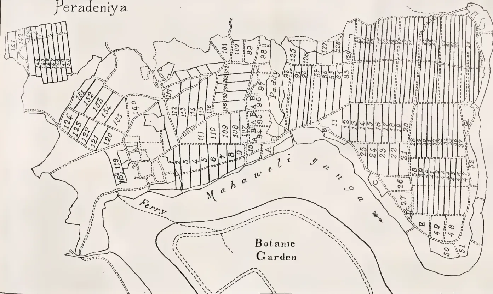
The map illustrates the layout of cacao plots at the Experiment Station Peradeniya. The plots are organized into several distinct sections, each with its own set of identifiers. A central feature is the Mahaweli ganga, which flows through the middle of the station. To the south of the river is the Botanic Garden, and to the west is a ferry crossing. The cacao plots are numbered and labeled as follows:
appear to affect the argument which follows, though doubtless reducing the possible crop of cacao on different plots by different amounts.
We come now to the question of the treatment of shade on the different groups of plots. At the beginning of 1902 the whole estate was simply a jungle of Albizzias, Dadaps and Arecanuts, besides coconuts and other trees, beneath which the cacao, which suffered severely from canker, produced an almost negligible crop. Clearing operations were vigorously prosecuted during 1902 and 1903, with the result that groups A and B were practically cleared of excess shade by the end of 1902, and group C by the end of 1903. Treatment of canker by excision and spraying was also undertaken on all three groups.
As regards the further treatment of shade, the following statement quoted from my earlier Circular applies to groups A and B equally, but not to group C. "In 1904 dadaps (Erythrina lithosperma) were planted over the whole area at the rate of 300-400 to the acre. These should have been kept closely lopped, but were allowed to get out of hand and to become closely crowded in 1906. With this fact the comparatively poor crop of 1906-07 may perhaps be associated. During 1907 the greater number of the dadaps were cut down, leaving only 30-40 per acre for purposes of shade. The crop for 1908-09 was the second best on record. The same dadaps have continued to stand up to the present date as a source of lofty and even shade."
On group C dadaps were similarly planted at the rate of 300-400 per acre in 1904-05, all such operations being performed somewhat later on group C than on groups A and B. None of the dadaps planted were ever felled, with the result that a condition of excessive shade prevailed from 1908 onwards. By 1910 the dadaps themselves began to suffer from close planting, and both dadaps and cacao are now in a miserable condition.
The average crops per acre from groups A, B, and C, over a series of years are
shown in the accompanying table, and the variations in crop are also shown graphically in the accompanying diagram. It is obvious that the curves representing the crops from groups A and B are closely similar, and we may consider these first, reserving group C for later discussion.
The initial condition of the unmanured plots B was distinctly superior to that of the manured plots A as shown by the crops for 1903. By 1904, however, this difference was obliterated, and in 1905-06 the manured plots yielded an appreciably higher crop than the unmanured. Subsequent to 1906 the average crop from the manured plots fell below that of the unmanured plots by an amount nearly equal to the difference in 1903, and the superiority of the unmanured plots has since been maintained to about the same extent. The natural conclusion is that the manures applied during the first three years of the experiment had a beneficial effect upon the crop, but that after this the addition of still more manure was useless or even prejudicial so far as the yield is concerned. It is clear, however, from the diagram that the main variations in the crop both from group A and from group B are due to some other cause.
Over Ceylon generally the crop of cacao gathered in 1906-07 and exported in 1907 was the largest ever recorded. On groups A and B, at the Experiment Station the crop showed a very marked falling off. The only condition to which this falling off can be attributed is the dense condition of shade which was then beginning to prevail.
In 1907-08 the general Ceylon crop fell off greatly, but the crop gathered on groups A and B at the Experiment Station showed a marked increase. The shade was reduced to normal proportions early in 1907, so that the cacao had the benefit of increased air and light during the whole of this crop season.
From 1908 onwards the shade on these plots was kept in a normal condition, and the variations in the crop obtained from groups A and B are found to
Scientific Agriculture.430[MAY, 1912.agree with the variations in the Ceylon crop generally. Thus there was an increase in 1908-09, and a falling off in 1909-10, which continued in 1910-11.
On group C the heavy shade once planted was never cleared. The most notable difference between curve C and curves A and B is the failure of the cacao on group C to respond with the increased crop to the good seasonal conditions which evidently prevailed in 1908-09. It is clearly impossible to attribute the decreased crop produced during the last-named season to the want of manure, because the unmanured group B, showed just as great an increase in crop in 1908-09 as did the manured group A. The falling off can only be attributed to excessive shade. The effect of this shade appears later in the case of group C than in that of the other two groups, partly because the dadaps were planted later, and partly because they grew more slowly, doubtless owing to the fact that much of the available space was already occupied by coconuts. It will be seen that the last state of these plots was even worse than the first.
To sum up. We have a steady increase in crop from 1903 to 1906 on all three groups of plots, associated with the clearance of excessive shade in 1902 and the planting up of dadaps in 1904-95. The increase is more marked on the manured than on the unmanured plots. Associated with excessive density of shade we have a marked falling off in crop in groups A and B in 1906-07. This was followed by an increase in 1907-08 after the excessive shade had been cleared. During this period the crop on group C remained nearly constant, a circumstance which may be associated with the later planting and slower growth of the shade trees. By 1908 the shade on these plots too became excessive, and the crop fell off accordingly, until at the end of the period of experiment the condition and crop of these plots was as bad as at the beginning. Finally from 1908 to 1911 normal conditions of shade prevailed on groups A
and B, and during this period the variations in the crop from these plots agreed with those of the crop on Ceylon Estates generally. I do not think that any experiment could have been devised which would have demonstrated the effect of shade on the crop of cacao more conclusively. Considering the crops on the Experiment Station by themselves, the only result which could possibly be thought discrepant is the increase in crop which occurred during the season 1907-08, and immediately followed the clearing of excessive shade, is itself followed by a still greater increase in 1908-09. But if we take into account the exports of cacao from Ceylon as a whole, it appears that the season 1908-09 was a better one for cacao than the season 1907-08, a fact which sufficiently explains the further increase of crop.
The double line shows the average annual crop per acre from the group of manured plots A. The crop seasons are marked at the bottom of the diagram, and the actual number of good pods obtained per acre is shown in the column at the left.
The two unbroken lines shows similarly the average annual crop from the two groups of unmanured plots B and C.
The broken line shows the export of cured cacao from Ceylon. The export is in each case that for the second year of the two recorded at the foot of the diagram. The amount in cwts. is to be found by multiplying the figures in the column at the left by 10. Thus the export for 1907 was 92,500 cwts. This amount probably represents approximately the crop for the season 1906-07.
The crop figures for the Experiment Station from 1905 onwards are given for the season July to June. Figures for the seasonal crop are not available before 1905. For 1903 and 1904 therefore the crop shown is that from January to December as given in the Controller's Reports:—
Yields of Cacao (number of good Pods) from Manured and Unmanured Plots.
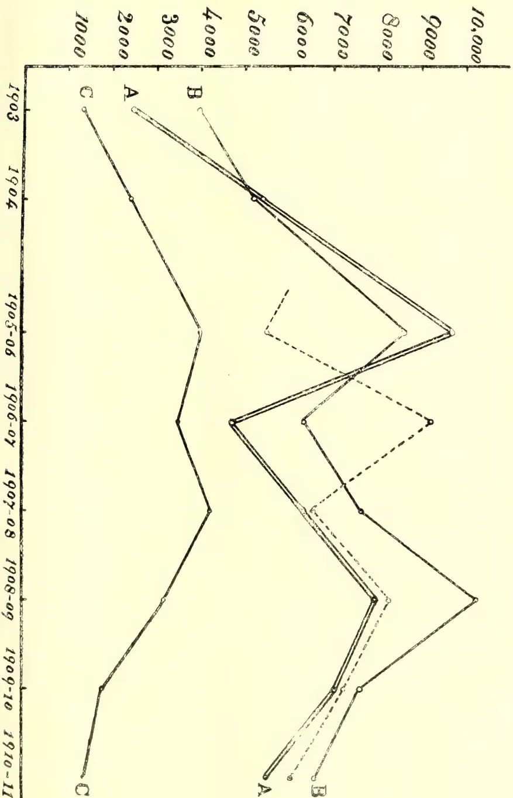
The graph displays the yield of cacao in terms of the number of good pods for three different plots (A, B, and C) over a period from 1903 to 1910-11. The y-axis represents the number of good pods, ranging from 1000 to 10,000. The x-axis represents the years. The data is presented in two series for each plot: a solid line representing the manured condition and a dashed line representing the unmanured condition.
| Year | Plot A (Manured) | Plot A (Unmanured) | Plot B (Manured) | Plot B (Unmanured) | Plot C (Manured) |
|---|---|---|---|---|---|
| 1903 | 3500 | 3500 | 4000 | 4000 | 1000 |
| 1904 | 3000 | 3000 | 3500 | 3500 | 2000 |
| 1905-06 | 9000 | 8500 | 9000 | 8500 | 3500 |
| 1906-07 | 4500 | 4500 | 4500 | 4500 | 3500 |
| 1907-08 | 4500 | 4500 | 4500 | 4500 | 4000 |
| 1908-09 | 9000 | 8500 | 9000 | 8500 | 5000 |
| 1909-10 | 3000 | 3000 | 3000 | 3000 | 6000 |
| 1910-11 | 1000 | 1000 | 1000 | 1000 | 7000 |
| Dadaps cut in 1907. |
Dadaps not cut in 1907. |
||
|---|---|---|---|
| 19 acres manured. |
8 acres unmanured. |
Unman- ured. |
|
| 1903 | 2,330 | 3,880 | 1,327 |
| 1904 | 5,245 | 5,173 | 2,426 |
| 1905-1906 | 9,582 | 8,644 | 4,130 |
| 1906-1907 | 4,742 | 6,344 | 3,410 |
| 1907-1908 | 5,933 | 7,655 | 4,199 |
| 1908-1909 | 7,991 | 10,259 | 3,238 |
| 1909-1910 | 7,081 | 7,645 | 1,803 |
| 1910-1911 | 5,622 | 6,729 | 1,405 |
BY W. H. HARRISON,
Agricultural Chemist.
(Continued from page 343.)
(From the Department of Agriculture,
Madras, Vol. III., Bulletin No. 63.)
Having now briefly summarized the conditions peculiar to paddy cultivation, and their effect on the question of manuring that crop, it becomes necessary to review the manures available in Southern India for this purpose, and to discuss briefly their utility. For this purpose the manures may be classed as follows:—
1. Bulky Organic Manures.—This class includes most of the popular manures for paddy, e.g., green manures, poonacs, farmyard manures, fish manures, etc., and all of them are characterized by the large proportion of organic matter they contain, and, as decomposition must take place before either humus is formed, or the manurial ingredients become available as plant food, it is necessary to apply them before transplanting. The rate of decomposition of these manures is, however, very rapid under the conditions mostly obtaining under paddy cultivation, and within less than one month it has proceeded far enough to be of benefit to the young plants, and consequently there is usually no necessity to apply these manures more than one month previous to the time of transplanting. On the other hand, if applied only very shortly before transplanting,
the manure is not sufficiently decomposed to be of much value to the plants, and in addition actual harm may occur owing to the products of decomposition seriously affecting the growth of the crop.
Wherever the local conditions render it possible to grow a crop previous to a paddy crop, manuring by means of a green-manure crop may be carried out. Such crops as Sesbania aculeata (daincha), Crotalaria juncea (sunn-hemp), Tephrosia purpurea (wild indigo), Phaseolus mungo (green gram), etc., through the agency of peculiar bacteria which live on their roots possess the power of assimilating the free nitrogen of the atmosphere and storing it up in their tissues. On ploughing these crops into the soil decomposition takes place, and the nitrogen they have absorbed becomes available for the next crop. In other words, through their use the cultivator has the power of obtaining the usually expensive nitrogen at a very low cost, and consequently green-manuring must not be despised. The nitrogen supplied to a crop by means of poonacs costs from As. 8 to 8½ per lb., that supplied by means of artificial manures costs about As. 10 per lb., whereas the nitrogen supplied by a green-manure crop is obtained merely at the cost of ordinary cultivation charges, and may be put down as a maximum of one anna per lb., and usually the actual figure is much less than this.
Under favourable conditions, daincha will grow to a height of over 8 feet, and enough can be grown on one acre to supply sufficient nitrogen to manure about four acres of paddy. Sunn-hemp being a smaller growing plant will not yield so much green-manure, but even in this case the produce of one acre will answer for over two acres of paddy. Wild indigo and the grams are in comparison to the above only dwarf plants, the amount obtained from an acre should, unless the crop is very heavy, be applied to the land on which it is grown.
With regard to green-manures, it must be borne in mind that the potash and phosphoric acid they contain is obtained from the soil on which they are grown,
Scientific Agriculture.432[MAY, 1912.and in consequence no enrichment of the land in this respect is obtained. All that happens is that the potash and phosphoric acid present in the soil is taken up by the green manure crops and again returned to the land, but in a condition to be readily absorbed by the main crop which follows. Now as the practice of green-manuring leads to heavier paddy crops, it follows that ultimately more potash and phosphoric acid is removed from the soil than would otherwise be the case, and the land in consequence will all the sooner be impoverished with regard to these two manurial ingredients. Provision must, therefore, be made to supply these ingredients to the land in the course of time, and this is done best by occasionally dressing the soil with such manures as super and bone-meal which are very rich in phosphoric acid, and more occasionally still with wood-ashes, sulphate of potash, etc., manures which are rich in potash. The point to be remembered is this, that green-manures are not complete manures, as they bring only nitrogen and humus to the soil.
Green-leaf manures, i. e., leaf and branches cut off from plants growing on waste ground or forests and puddled into the soil have practically the same effect as green-manure crops, but they differ from the latter in so much as they supply potash and phosphoric acid in addition to nitrogen. They are complete manures, and from this point of view are to be preferred to green-manure crops if they can be obtained cheaply in the requisite quantity. Unless, however, they can be obtained locally at a very cheap rate, and in the requisite quantity it will be found more economical to utilize green manures crops grown on the land itself supplemented by a comparatively small annual dressing of superphosphate or bone-meal.
Comparative tests with green-manure have been carried out at Coimbatore, with the result that green-leaf manure gave a yield of 4,490 lbs. of paddy and 5,811 lbs. of straw per acre, whereas the same weight of daincha (grown on the
ground) gave 4,000 lbs. paddy and 4,400 lbs. straw. The difference between the yields of paddy in the two cases is not great, considering the large yields obtained, but such as it is it is due to the extra potash and phosphoric acid brought to the soil with the green leaves, for when super is used in conjunction with a green-manure, the yields obtained often exceed that obtained when green-leaf manure is used. Compared with the yields from plots receiving no manure which gave only 3,392 lbs. of paddy and 3,124 lbs. of straw, the efficiency of green manures and green leaf manures is undoubted.
Poonacs and fish manures are also bulky organic manures which can be utilized with advantage where they are obtainable at a cheap rate. They contain a much larger portion of nitrogen and other manurial ingredients than green manures, and consequently can be used in much less quantity. Thus in an experiment carried out on the Coimbatore Farm to compare the relative values of these bulky organic manures, 4,000 lbs. of green leaves yielded a profit of Rs. 120 per acre, 4,000 lbs. of wild indigo Rs. 98, 400 lbs. of white castor poonac Rs. 109, 500 lbs. of black castor poonac Rs. 104, and 560 lbs. of fish manure gave Rs. 114.
Poonacs are complete manures, and there is generally little necessity to use any other manure in conjunction with them unless it is a superior bone-meal to increase the proportion of phosphoric acid put on the land. This mixture is generally very effective in increasing the yield of paddy, and the cost of the super needed for the purpose is comparatively small. On the other hand, fish manure is not a complete manure, as it is practically devoid of potash, and in consequence wherever the soil is deficient in that ingredient, a mixture of sulphate of potash or wood ashes with fish manure can be used with advantage. The use of this mixture, however, should only be attempted after a small trial has given successful results, as not only is the potash expensive,
MAY, 1912.]433Scientific Agriculture.that reducing the profits, but unless there is actual need for it the tendency is to reduce the yields given when compared to fish manure alone. Thus the use of 560 lbs. of fish manure and 56 lbs. of sulphate of potash resulted in a net profit of only Rs. 82 as against a profit of Rs. 114 with fish manure alone. On the other hand, with one experiment in the Kistna delta, potash gave an actual increase in the profit obtained.
2. Manures obtained from Bones, the chief of which are bone-meal and bone superphosphate, can under certain circumstances be used with advantage in manuring paddy. Bone meal is exceedingly rich in phosphoric acid, and as a rule contains a fair proportion of nitrogen, and at the same time it undergoes rapid decomposition in paddy soil, and its manurial ingredients are thus quickly made available for plant food. To a certain extent, therefore, it conforms to the principles laid down on the first part of this article, but the amount of humus it can yield is exceedingly small, and the best effects are produced when it is used in conjunction with a manure containing large quantities of organic matter, particularly with green-manures. In this case, the substances produced by the decomposition of the green manure assist the solution of the phosphoric acid of the bones, and thus make the latter much more available for the plant than would otherwise be the case. The same strictures which apply to the use of potash manures with fish manures apply also in this case. Unless the soil is very deficient in potash, recourse should not be had to this ingredient owing to its tendency to reduce the yields and profits. Thus at Coimbatore 560 lbs. of bone-meal yielded a net profit of Rs. 112 per acre, whereas the same quantity to which 56 lbs. of potassium sulphate were added only gave Rs. 79.
Bone superphosphate is obtained by treating bones with sulphuric acid, by which the phosphoric acid is made soluble, and when added to a soil is at once available as a plant food. This manure is therefore a "quick-acting manure," and its effect is best seen when given in
the form of dressing to crops already in the ground. Usually it contains some nitrogen in addition to the phosphoric acid, but its value is mainly dependent upon the amount of the latter ingredient present, and consequently with soils poor in humus, such as are general in Southern India, it is best used in conjunction with the bulky organic manures. Thus at Coimbatore, land manured solely with a green-manure crop grown on the land itself gave 2,814 lbs. of paddy and 2,691 lbs. of straw, whereas similar lands manured with the same green-manure crop plus 112 lbs. of superphosphate gave 3,733 lbs. of paddy and 4,043 lbs. of straw. The conclusion in the case is obvious, especially when it is noted that the large increase was due to an amount of super, valued at less than Rs. 3.
It must also be pointed out that the use of comparatively large dressings of super does not yield a commensurable increase in the crop obtained, so that, except under exceptionable circumstances, a dressing of 112 lbs. of super to the acre is the maximum necessary.
3. The Mineral and Artificial Manures.—These manures which include superphosphate, ammonium sulphate and saltpetre are with the exception of the last not of great importance to the ryot owing to their comparative scarcity and high price. Saltpetre is produced locally in large quantities, and as it contains both potash and nitrogen, it is under certain conditions of cultivation a good manure, but the nitrogen being present in the form of nitrate, it is as was shown at an earlier stage not suited for paddy manuring.
Ammonium sulphate is only produced in India to a very limited extent, and is mainly imported from Europe, so that although it is a quick-acting manure and quite suited to paddy cultivation, the cost of the nitrogen is so great that at present it may be left out of account by the ryot.
Superphosphate is prepared from mineral phosphates in exactly the same way that bone superphosphate is prepared from bones, and consequently
55 Scientific Agriculture.434[MAY, 1912.almost all that has been written regarding the latter applies to this substance also. It must, however, be remembered that unlike bone super it contains no nitrogen. Another phosphatic manure is basic slag, and probably with a development of the steel trade in this country, it may become readily accessible to the cultivator. At present, however, it may be left out of account.
Lately, two artificial manures have been introduced in Southern India, namely, Calcium nitrate and Cyanamide, and it is probable that in the near future they will be manufactured in this country. Of the two, so far as paddy cultivation is concerned, calcium nitrate is of little use, but Cyanamide may possibly find an application as it yields ammonia in the soil, and in consequence could be used to enrich the nitrogen content of low grade poonacs, etc. Experiments are now being carried out with this substance at Coimbatore.
All of these artificial manures, it must be pointed out, do not fulfil the first condition laid down with regard to paddy manuring, i.e., to supply organic matter to the soil, and consequently although they can be used either alone or in suitable admixture with one another, the best results are obtained when they are used in conjunction with bulky organic manures. An exception may, however, often be made in the case of superphosphates, for when the soil is poor in phosphoric acid, a dressing of the substance has often yielded remarkably good crops, but even here it will be necessary sooner or later to supply organic matter if the enhanced rate of cropping is to be maintained.
In concluding this section it must be stated that many of the yields which have been quoted were not obtained the first year after applying the various manures. In reality the yields obtained have gradually increased with each annual application of manure, so that a permanent enrichment of the soil has taken place. Thus, when green-manure was first applied to a plot of paddy land on the Central Farm, a yield of only
2,400 lbs. of paddy per acre was obtained, but the next season yielded 3,500 lbs.; and now after being annually manured for four years the yield is 3,900 lbs. Most of the other experimental plots show the same increasing outturn, and in one case the yield now obtained is 4,500 lbs. This result is most important as showing the possibility of producing a greatly increased fertility in paddy soils, but to obtain such results careful and systematic manuring is required. Spasmodic manuring at intervals of a series of seasons cannot bring this about and will only lead to a comparatively insignificant increase in the average fertility of the soil.
From the Agricultural News, Vol. X., No. 252. December 23, 1911.)
This interesting subject has received attention in a recently issued Journal, in the shape of a translation of a paper read before La Societe Centrale d' Agriculture de Belgique, and appearing in the number of the journal of that Society for May 7, 1911. Investigations in regard to the matter have been carried out over a period of many years, and it will be well at the present time to draw attention to some of the more important results that have been obtained, employing for the purpose the information presented in the paper just mentioned.
The British Association for the Advancement of Science, at the meeting in Liverpool in 1837, requested that a review should be made by Liebig and Dumas of the state of the knowledge, at the time, of organic chemistry. The result was the preparation, by Liebig, of his Treatise on Organic Chemistry, in relation to agriculture and physiology.
It was pointed out in the memoir that the bases most usually met with in plants are potash, soda, lime and magnesia, and that these are capable of replacing one another, in chemical compounds, in amounts that are con-
MAY, 1912.]435Scientific Agriculture.stant, and are known as equivalent quantities. As these quantities are different in the case of each element, it follows that, when one of them is substituted by another, in a salt, there must be a change from the absolute weight of the old compound to that of the new.
Plants, again, all contain organic acids, which vary in nature in the different kinds. These are necessary, in order that the life-processes of the plant shall continue. They usually exist combined with one or more of the bases, acts as a stimulus to the formation of the organic acids, and this matter receives support from the observation of de Saussure, to the effect that the bases are found in greatest quantity in those parts of the plant nearest to the regions in which assimilation is taking place; thus the leaves contain proportionately more ash than the branches, and the latter more ash than the trunk.
Liebig stated further that it is not likely that a plant, under normal conditions, produces a much greater quantity of any given acid than it requires for the existence; it is also to be expected that the amount of alkaline base in a plant will always remain the same, no matter in what kind of soil it is growing. It was explained by Liebig that any deficiency in regard to one base would be supplied by the substitution of an equivalent amount of another base. It results from this circumstance that, as the weights of the base vary, the absolute weight of the ash must differ according to the kind of substitution in the compounds which it contains. Another conclusion reached by Liebig, which is pertinent to the matter under discussion, was that, even where plants have been grown in soils containing very different proportions of lime magnesia and potash, the equivalent amount of these bases, expressed in terms of oxygen, is the same, within reasonable limits, for similar quantities of wood and of the ash.
The results of the work Liebig and others were expressed more clearly by
Champion and Pellet, and their statements virtually corresponded with what has just been put forward. In regard to the interchange-ability of the bases, the author of the paper mentioned at the head of this article agrees that this exists, but draws attention to the presence of limits to the extent to which any one base may be excluded by the substitution of one or more that are different. When this critical point is passed, the plant ceases to develop favourably; this fact is supported by the work and opinion of Loew in Japan, Bernardini, and May at Washington. Claassen has also reached the same conclusion, as the result of investigations with sugar beets, and Pellet has shown that the heart rot of the beet is most prevalent in soils possessing an undue proportion of potash and a deficiency of magnesia. Further Marchal, of Gembloux, has proved that the formation of nodules on the roots of leguminous plants receives interference from an excess of potash in the soil, and that the development of the plants themselves is adversely affected; so that the ultimate effects are lessened yields, with the minimum fixation of atmospheric nitrogen. Lastly, other investigators have made the observation, in the case of certain plants, that an excess of potash produces decay; and that if some of the potash is replaced by other bases, as for example magnesia, the plants can be made to revive and resume normal growth.
Sufficient has been said to indicate that much harm is likely to arise through the absorption of an undue proportion of potash by plants. The condition may bring about large changes in the nature of the crops; and it certainly causes a diminution in the power of plants to assimilate nitrogen, so that from a practical point of view a waste takes place of this important and comparatively expensive item of plant food. From the point of view of economy the matter is affected in another way. Next to nitrogen, potash is the most costly element that has to be supplied to plants; thus its supply in excess leads to waste on this
Agricultural Finance & Co-operation.436[MAY, 1912.account alone. There is the future consideration that the fact of the presence of an undue amount of potash causes the assimilation of other bases to be deficient, and the plant is accordingly deprived of the means by which the important and useful anatomical and physiological changes that are dependent on them may be brought about.
The conclusions reached in the article under review are that, firstly, since lime, soda and magnesia cost nine-tenths less than potash, practical field experiments should be made in order to determine how far these bases may be substituted
for potash; secondly that there should be ascertained the best proportions of lime, magnesia and sulphate of potash, for the development of legumes and all other plants, as well as the extent to which, when these proportions are assured, nitrogen should be added to the soil; thirdly for different soils, the effects on the soil of potash, and of lime and magnesia, should be investigated.
It is evident that the proper carrying out of such work should do much toward the devising of methods of manurial treatment that will contribute to the realization of maximum returus with minimum expenditure.
(From the Indian Agriculturist Vol. XXXVII., No. 1, January 1, 1912.)
Mr. Henry Wolff when advocating the extension of co-operative credit has never failed to dwell on the moral effect of the movement in which he is so deeply interested. The report of Mr. S. H. Fremantle, the Registrar of Societies in the United Provinces, affords the most remarkable evidence in support of Mr. Wolff's contentions. A genuine spirit of co-operation is growing up among the villagers, who in some districts regard membership of their society as a privilege, and refuse it to persons who are known to be of doubtful character. The people have also proved themselves ready to come to the assistance of fellow members in the day of adversity. In Benares a member died leaving an indebtedness to a society of Rs. 57. His widow and minor son were unable to meet this obligation, whereupon the remaining members raised a subscription and paid the debt. Another instance is recorded of a member who had frequently lost his pass-book being tried by the panchayat and fined four annas for his negligence. The fine was utilised to buy sweetmeats for the boys of the locality
who were, no doubt, duly impressed with the advantage of having a co-operative society in the village. Disciplinary measures were also taken against one Balwant Singh, panch of the Thora Society, who had been secretly keeping up a connection with the local mahajans. For this offence Balwant Singh was fined eight annas and promptly degraded from his panchayatship. It is amusing but also gratifying to learn that bhajans, or songs, in praise of co-operation have been composed, and that the popularity of these economic ballads is gradually extending. As in Bengal, it is found in the United Provinces that a desire for education is created and stimulated by the movement. The co-operators desire to read their own passbooks and to sign their own pro-notes. "The general atmosphere of progress engendered by the societies," writes Mr. Fremantle, "makes the members keen on the extension of education. I have accordingly encouraged societies to devote a portion of their profits to the education of their children. The amounts, however, so available are very small, and some societies in Fatehpur have solved the difficulty in their own way by insisting on their secretary giving up two hours a day to teaching." In other cases societies have supplemented the in-
MAY, 1912.]437 Agricultural Finance & Co-operation.adequate common fund by a special subscription in order to engage teachers for the children. Mr. Fremantle is unquestionably right when he says that co-operative credit societies will be a potent factor in the extension of primary education. Their moral influence is also utilised for the good of the weaker brethren. In Unao and Benaes, it appears, several of the Parsi and Chamar societies have foresworn the use of intoxicating liquor. A Khatik society held a panchayat to consider the case of the sarpanch, who was frequently intoxicated, and upon his pledging himself to offend no more he was given another chance of reformation. Several cases are, moreover, cited where the panchayat have kept a person of doubtful character waiting many months for admission, and have only allowed him to join on being convinced that he was genuinely determined to abandon his evil ways. Another important fact in relation to the movement is that the panchayat as a rule represents all castes and classes of cultivators. "The potential value to Government and to the community as a whole of the presence of such a body in a village," Mr. Fremantle remarks, "is immense. Education, sanitation, medical relief, arbitration and the encouragement of village corporate life, are all matters in which it can render very great assistance." The results already attained in the various Provinces emphasise the vital importance of extending the co-operative credit movement on right lines. Great progress has undoubtedly been made, but if the movement is to effect the economic regeneration of India the utmost care must be taken to avoid mistakes and to enlist the active help of the educated community. Where this assistance has been forthcoming it has proved of the greatest service, and those who have taken part in the formation of societies on a sound basis have done good work for the country. In the Government Resolution on the present Report a high tribute is paid to Mr. Fremantle for the difficulties he has surmounted, and it is observed that those acquainted with the
intensely conservative habits of the Indian cultivator will realise that the measure of success in the United Provinces already secured could only have been attained by constant tact and perseverance.
(From the Journal of the Board of Agriculture, Vol. XVIII., No. 9, December, 1912.)
The article deals only with co-operative Societies which concern themselves solely with the provision of loans of money to small agriculturists, and takes no account either of societies which make loans to dwellers in towns or of societies which may add the business of making advances to members to their main object of agricultural production, distribution or supply.
It is possible to form an Agricultural Co-operative Credit Society under the Industrial and Provident Societies Act, with Shares and share-capital and limited liability, but as a matter of fact, all the societies of this character now in existence in England and Wales have been registered under the Friendly Societies Act, 1896, and the special authority granted by the Treasury in accordance with Section 8 (5) of the Act. A society registered under that Authority must have for its object the creation of funds by monthly or other subscriptions, to be lent out to, or invested for, members of the society, or for their benefit, and must have in its rules provisions that no part of its funds shall be divided by way of profit, bonus, dividend, or otherwise, among its members, and that all money lent to members shall be applied to such purpose as the society or its committee of management may approve.
There is nothing in the Friendly Societies Act to prevent the registration of a society in which the liability of the members for the debts of the society is limited to a fixed sum in each case (or
Agricultural Finance & Co-operation.438[MAY, 1912.limited by guarantee, as it is called); but no society has yet been formed on this basis, and all the existing societies have adopted a rule to the following effect:—
“Every member of the Society shall be equally with every other member, jointly and severally liable for all debts incurred by the Society, and for any loan which a member or his sureties may fail to pay.”
Thus in all existing societies the liability of each and all of the members for the debts due by the society is unlimited, and the ultimate security offered by the society for advances made to it is the total property of all its members put together.
A society registered under the Friendly Societies Act has to submit its rules to the Chief Registrar, whose duty it is to satisfy himself that they are not contrary to the Act. Most of these societies have adopted the model rules recommended by the Agricultural Organisation Society, to which all but two of them are affiliated, and the others have rules which are in all important respects similar; so that regarding all of them it may be said that, besides the principle of unlimited liability, they have the following features in common.
No one can be admitted as a member unless he lives within a certain circumscribed area, such as a parish, or two or more adjoining parishes, and so is personally known to most of his fellow-members. He must also be approved by the committee as a man of good character, worthy of admission to the society. All the members have an equal voice in the election of the committee and the management of the society.
Loans are granted only on approved security, and must be utilised only for a specified purpose, which in the opinion of the committee, is such that there is a sufficient prospect of the loan repaying itself by the production, business, or economy which it will enable the borrower to effect. No member can have out on loan more than £50 altogether at
any time, though he can, of course, repay one loan and afterwards take out another, not exceeding £50.
The society may receive deposits, either from members or non-members, and may pay interest on them.
No profit may be divided among the members of the society. All profits must be carried to a reserve fund, which can only be drawn upon to meet exceptional losses by resolution of the general meeting of the society. Even if the society is dissolved, this reserve fund cannot be divided among the members, but must be spent on some useful purpose in the parish. Thus the only pecuniary benefit a man may expect to gain by becoming a member of such a society is that of obtaining loans for profitable purposes connected with agriculture at a low rate of interest; and if a man is unlikely himself ever to require such a loan, his motive for joining as member can only be to help on a beneficial movement, and to assist his neighbours, by his guarantee and guidance, to get small loans on advantageous terms.
The accounts of the society, with the exception of those relating to individual loans and deposits, are open to the inspection of all interested in the funds. They must be audited annually and submitted to the Chief Registrar, and a copy of the annual balance-sheet must be conspicuously displayed for the information of all concerned.
At the end of 1910 there were in England and Wales 40 registered societies of the above type, scattered over twenty counties. Six of these were registered in 1895 and 1896, seven were registered in the three years 1904 to 1907, and in the last three years the numbers registered have been respectively seven, ten, and ten, so that the movement has recently shown signs of more rapid development.
Of these 40 societies, nine either sent in no returns or reported that they had as yet done no business. According to the annual returns for the year 1910, submitted to the Chief Registrar by the
MAY, 1912.]439 Agricultural Finance & Co-operation.remaining 31 societies, they had at the end of the year 663 members—an average of 21 per society. They had during the year advanced 119 loans to their members, so that less than one in five of the members took out a loan during the year. The loans aggregated £1,390 and averaged £12 per loan; in individual cases they varied from £3 to £40. The earnings of these 31 societies during the year amounted to £147 (including a gift of £50), and the charges of the year were £82, so that there was a net profit on the year's working of £15, besides the gift. Their expenses of management, which are included in the above charges, amounted to £34, or a little over £1 per society. Their total assets amounted to £1,924, of which £1,421 were out on loans to members, and their total liabilities to £1,654, of which £489 were due to banks and £1,088 to depositors; and the total profits to date of all the 31 societies put together amounted to £270. This total includes gifts aggregating £115, so that the profits actually earned to date were £155, an average of £5 per society.
It takes some years for a credit society to get into working order, and the progress made can be better judged by taking separately the totals for the six oldest societies, which have been at work for over fifteen years. Between them they had last year 145 members (an average of 24 per society), and during the year they gave out 34 loans, so that about one in four of the members got a loan. The loans aggregated £511, and averaged £15 per loan. The rate of interest charged on loans to members was, in four societies, 5 per cent., in one 6 per cent., and in one only 4 per cent. They had secured deposits amounting to £481, paying interest on them at 3 per cent. in four societies, and at 4 per cent. in one. Two of them had obtained advances from banks at 4 per cent., and one at 3 per cent. During the year they earned £36 in interest, and received other income amounting to £1, while their interest charge was only £20, and their expenses of management £6, an average of £1 per society; so that the net profit of the year was £11, or nearly
£2 per society. Their assets amounted altogether to £743, including gifts of £65, and £556 out on loans to members; and their liabilities were £538, including the £481 held on deposit. Their surplus of assets over liabilities amounted to £205 (including the £65 received as gifts), so that they have now, after fourteen years of careful management, built up a reserve fund equal to more than one-third of what their members require in loans during the year. This is their own property, on which they have no interest to pay. The loans have been repaid punctually, and the societies have made no bad debts and incurred no losses, and only in three or four cases have they had to call on the sureties to help in repaying loans due from members. In hardly any case has the surety ultimately failed to recover the money from the actual borrower.
The loans were all taken out for purposes likely, in the opinion of the committee, to prove profitable, such as the purchase of sheep, pigs, cattle, horses, carts, implements, seed, manure, or cattle feed, or the employment of extra labour on the borrower's holding. The loans are generally made repayable about the time when the borrower may expect to reap the return on his expenditure, and the date for repayment is, therefore, generally from six to twenty months after the date of the loan; some loans, however, were granted for two years, repayable by six-monthly or annual instalments.
The members agree in saying that they have derived great benefits from the existence of these societies, which have enabled many of them to obtain the small loans needed for their agricultural operations at a lower rate of interest than they would have had to pay elsewhere, and some of them to obtain loans who could not otherwise have borrowed at all. They cite instances of men who were enabled, by a loan from the society, to buy and feed sheep, pigs or cattle, to hold over stock for better prices, to procure seed, plants or manure, to work their land to better
Education.440[MAY, 1912.advantage, or to add to the area of their holdings, and of some who, by means of a succession of such loans, have risen from the position of labourers to that of substantial small-holders.
The establishment of these societies in the rural villages in which they are found has evidently not only added to the prosperity of many of the villagers, but
has stimulated neighbourly feeling by showing men how they can help their fellows by the exercise of care and mutual trust, without any real pecuniary risk to themselves, has encouraged thrift and efficient methods of cultivation, and has at the same time increased the self-respect of the individual members, and inspired them with hopes of progress.
(From the Indian Agriculturist, Vol. XXXVII., No. 3, March 1, 1912.)
TO THE EDITOR.
SIR,—As one who knows something of technical works as carried on in this country from the practical (not the educational) point of view, you will perhaps accord me a little space for remarks forming a corollary to Mr. Harold Cox's excellently sensible article in your last issue. Mr. Harold Cox very properly scouts the idea of dry theoretical technical education, but let him further investigate the subject, and he will find that among the Indians there are very excellent technical workmen, who have been trained not in schools, but in practical concerns, manufacturing and other trades. People, as Mr. Harold Cox remarks, may say that India cannot possess industries for the reasons advanced, but the fact that India does possess industries rather works against the theory that India does not possess an industrially trained class. I do not claim the wider sweep of population. As the cobbler should stick to his last, I mention first the Engineering trade in which I am employed. Look round Calcutta, and you will find the tall chimneys everywhere. Of all the thousands and thousands employed in these works, how many are Europeans? Let our British visitors take a walk round one or two of these workshops—and one or two in Calcutta are worth a visit, as being quite comparable in size and efficiency with any shops at Home, and
they will find trained Indians turning out important jobs, while the Home-trained European supervisors scarcely need to overlook them. That is the true technical education. These prime Indian workmen do not possess university degrees, and many cannot read or write, but they can command higher wages than the overflow from the learned professions. Look into the great railway workshops at Jamalpur, Khargpur, Lahore, Ajmere and other centres, and you will find technically educated Indians working and working well everywhere, and but for certain drawbacks inherent in the age-old-customs, from which they are now breaking loose, excellent material they form out of which to fashion craftsmen of the best.
The cry for "technical education" does not come from the class really interested in becoming craftsmen, but from the class—no blame to them—whose tradition is against manual labour, in Bengal called the bhadr-log. Their ambition is not to become craftsmen, but supervisors, learning theoretically in order to direct the manual labour of others. They are not yet sufficiently instructed to know that we, whom they see in the position of directing others' labour, have had to pass through the mill of hard manual labour ourselves. If an English or Scottish lad is intended for the engineering trade, he has as a beginning to serve his apprenticeship working at bench and lathe side by side with the actual wage-earning workmen and on an absolute equality with them under the orders of foremen
MAY, 1912.]441Education.This at present is distasteful to the middle-class Indians who aspire to attain the same position by theoretical training which the British attain through practical and theoretical training combined. It is an axiom in one excellent educational system—the Swedish—that the hand educates the brain, and in point of fact I have found the trained Indian artisan to possess an intellect far more in accord with western thought than the book-learned classes. These men cannot be handled by any but practical workmen as supervisors, and therefore the dream of technical education per se, supplying a class of efficient engineers, etc., of the higher class is a vain one. If some means could be found of inducing the middle classes, now exclusively literary to undergo the necessary manual training, the problem of Indian industries would be solved. I have had much to do with Indians in three Presidencies, and I know that the matter is in them, if only means could be found to bring it out, for the higher classes, if they would only take the practical training, would excel the present lower class workmen just as at home the youths of the better classes pass beyond the workmen of the artisan class, commencing at the same benches and the same manual work.
That, Sir, is the true industrial problem of India, and the solution lies in imbuing Indians of the better classes, hitherto accustomed to a literary career only, with a sense of the real "dignity of labour." No "technical colleges" will solve this problem,
C. J.
(Report by T. H. GIBSON, Inspector of Schools.)
(Continued from page 355.)
J. C. Boykin, Assistant Commissioner, Bureau of Education, Department of the Interior: "There appears to be little actually in the course that can be seriously criticized with substantial
reason. The characteristics are such as may be expected in view of the conditions described in the accompanying letter, namely, the emphasis laid upon language and the prominence of manual work.
"It may be doubted if it is advisable to begin the study of the structure of the language as early as the first grade, as the reference to 'nominative and objective cases' seems to indicate. It is not clear how such instruction is given, however, and it is probable that those who prepared the course did not intend that an attempt should be made to teach formal grammar to such young children. The amount of memory work and the unusual stress laid upon the correction of errors of speech are noticeable, and for schools under ordinary conditions might be open to criticism, but under the circumstances such methods are probably justifiable.
"The amount of manual work in the Hawaiian schools seems to be greater than is generally required in the schools of the States but such instruction appears to be well suited to the conditions of the People of the Islands, and the specimens exhibited at the several expositions have been distinctly creditable.
"The fault of the course seems to be less in what it contains than in what it omits. There is nothing to indicate relative values; to show how much time should be given to each branch; or to emphasize essentials. All is put upon the same basis, and a word or a phrase is as much as is given to any topic, whether it be 'Pioneer period of American history from 1492 to 1850,' which might well occupy 40 weeks, or 'how waste matter goes off,' for which 40 minutes might be sufficient.
"The course is meagre to a degree. It is difficult to understand how such a brief list of topics can produce desirable uniformity of instruction in the schools of the territory, or even how it can be considered a 'course of study' in the usual sense. Perhaps it is not so intended, for on page 19 it is directed that 'each teacher, with the assistance of the
56 Education.442[MAY, 1912.principal must prepare and place on file at the beginning of the term a daily program, an outline of the term's work', etc. In other words, each teacher must make his own course of study, presumably observing as far as may be the hints in the published course. In general these are so few as to interfere but little with the teacher's individuality if he is fortunate enough to possess such a quality, but on the contrary they are not sufficient to be a guide to the beginner or to the teacher of moderate ability and attainments. An example of this may be found on page 17 under the heading 'Proper use of language', for Grade VIII, namely, 'Review and commit to memory the fundamental principles and rules of English composition in connection with the daily work'! It may be expected that this will be construed in as many different ways as there are teachers, and may require anywhere from five to five hundred hours of school time in a year. Illustrative work is specified for all the grades, but there is so little of detail for the higher grades that the teacher is left almost wholly to his own resources.
"Such meagreness, or vagueness, is noticeable throughout the document, but there is a marked exception to it in 'History and Language' for the higher grades. The requirements in this respect for Grade VIII are truly formidable, including American history under the constitution, the French Revolution, the Conquest of India, the Union of the North German States, Government of the World, Hawaiian history, and several other topics. Any one of these might easily occupy months of study and to introduce them all will necessarily mean scrappy and disjointed work; and history of all subjects, should be pursued in an orderly and consecutive manner, and not as a series of disconnected incidents.
"It is recommended, if a new course is in preparation, (1) that it be made more specific and direct in statement, leaving less to the individual judgment of the teacher, for not all teachers are of equal ability; (2) that it describe each year's
work in greater detail, and that in each grade the work prescribed be approximately sufficient to occupy the year; (3) that in each study the minimum number of hours per week and of weeks per year be specified, the time being so arranged as to leave a reasonable margin to be apportioned according to individual preference or to local conditions."
(Note). Mr. Boykin's objections are answered in a large measure in the preceding notes and by saying that a detailed outline has been prepared for the first four grades and is being prepared for the grammar grades also, which divides the work by terms and months. In respect to the criticism in History in Grade VIII it can easily be seen that the objection is caused by a misconception of the work. The commissioner's understanding of what is intended is the correct one, that is that the war of the Revolution is the real history work of that year and the incidents and parts of European history referred to are used as collateral work.
P. P. Claxton, Commissioner of Education, Washington, D. C.: "I have just looked over the course of study of the schools of the Hawaiian Islands, which you sent to this Bureau some time ago, and also the correspondence in regard to it. I have just come into the office and have not had time to study the course of study as fully as I would like to, but I want to say that I am very much pleased with it. It seems to me that you have done well in trying to adapt it to the needs of the children of the Islands. There are, however, two or three things that I may want to write about more fully when I have a little more time.
"I am wondering if in all the lower grades you might want to combine nature study and geography. The two are so very much alike that the nature study can probably be done better as a part of the geography work, and the geography work will be enriched thereby.
"The number work follows a plan very popular in many parts of the United States, but this plan has long seemed
MAY, 1912.]448Education.to me defective, while I feel quite sure that the subject can be taught more simply and effectively by giving the first half year to counting, and the second half year to counting by tens; so as to lay a foundation for the understanding of our decimal system of writing, and writing numbers. The second year should be given to addition, subtraction and comparison, and the numbers dealt with should not be so narrowly limited. Children who learn to count, and to count by tens, can just as well do problems involving thousands and tens of thousands. The third year should be given to the facts of multiplication and their application in multiplication, division, fractions, and ratio. I do not believe it is well to attempt to teach the ordinary four processes at the same time. There are in fact seven processes; the first three go together, and the second four, and they should be grouped thus in teaching. A long experience has convinced me that much time may be saved and much power gained by teaching arithmetic in this way.
"I do not clearly understand whether you expect technical grammar to be taught in the grades below the eighth. If you do, it seems to me that it is not best. Children as a rule do not understand the generalizations, and an attempt to learn them stands in the way of their gaining a real mastery of language.
"Spelling, of course, is best taught in the lower grades in connection with composition work. In the fourth and fifth grades there is need for a book that classifies words according to their spellings a little better than the one you mention.
"I want to commend most heartily your plan of trying to base the development of language on the child's understanding of nature and occupations, the language thus growing out of its own experience. I wish also to commend your use of what you call national stories, also repeated stories and rhymes. I know nothing quite so good or useful in teaching language to small children
as such stories as The old woman and her pig, The house that Jack built, etc.
"I think Mr. Boykin's adverse criticism of the history work of the eighth grade is based on a misunderstanding of what you intend. I suppose that you intend to make the period of American history designated the real history work of that year, and that the incidents and parts of European history referred to are to be used as collateral work, thus following the Herbartian idea as set forth especially by Doctor McMurry in his book on Special method in history. If this is so, I commend it most heartily.
"If at any time you should come to Washington, it would give me the very greatest pleasure to talk with you about your work in Hawaii. I am sure you will have much to tell me that will be very interesting and valuable. . . .
"P.S.—To make this course of study serviceable to the teachers, it ought to be outlined in detail with some suggestion as to order of the subjects in the several years, to the time to be devoted to the various parts of the subjects, and the means of correlating them. If the Bureau can be of any service in helping you do this, let me know."
The following is a copy of a course of study for country schools proposed by the N.E.A. in report for 1905, pages 85-86, with some notes on causes of retardation:
(The course below is given only as a sort of guide and a standard which all country schools may strive to reach.)
| Reading | Writing |
| Spelling | Music |
| Language | Nature Study |
| Number work | General exercises |
Reading, using in part themes from nature, the farm and the home
| Spelling | Hygiene |
| Language | History |
| Number work | Drawing |
| Nature Study | General exercises |
| Music | Writing |
Reading ; nature stories forming a part.—
| Spelling | Geography |
| Language | Hygiene |
| Arithmetic | History |
| Music | Nature Study |
| General exercises | |
Reading ; country literature included.
Geography ; should include the distribution of farm products.
| Spelling | Drawing |
| Language | Nature Study |
| Arithmetic | General exercises |
| Writing | Music |
Reading ; including stories of our country and lessons in agriculture and home economics :—
Geography ; including in part physical geography in respect to the work done by nature's forces in preparing soils :—
| Spelling | |
| Language | History |
| Arithmetic | Physiology |
| Writing | Nature Study |
| Music | General exercises |
| Drawing | Literary society work |
Reading ; lessons should include animal life and ad-
| venture | Physiology; including principles of nutrition and food values. |
| Spelling | Co-operative enterprises |
| Language | Agriculture; 1st half-year, the affairs of agriculture; 2nd half year of the soil. |
| Arithmetic | General exercises ; for boys, wood-work ; for girls, sewing |
| Writing | |
| Music | |
| Drawing | |
| Geography |
| Reading and Literature | Music |
| Spelling | History |
| Arithmetic | Co-operative enterprises |
| Grammar | Agriculture; farming schemes |
| Writing | General exercises |
| Geography; combined with physical geography | Literary society work |
| Reading and Literature | Geography |
| Spelling | History |
| Grammar | Agriculture |
Arithmetic ; including farm problems, land surveying and farm statistics
| General exercises | Literary society work |
CAUSE OF RETARDATION IN COUNTRY SCHOOLS.
(Report of N. E. A., 1905, Rural Schools, pages 50-51.)
The poor results in the teaching of the common branches, too often apparent, are given as good and sufficient reasons why no other work should be attempted. It is assumed that the poor quality of these results is due to lack of time in the school and that, therefore, there is no time for anything else.
The other objection is that the course of study is now overcrowded and that, in rural schools especially, the variety and number of classes render it impossible to organize and instruct additional classes in new subjects.
As to the first objection, it may be said that the poor results in the teaching of the common branches is not due to lack of time on the part of pupils, so much as to poor teaching and lack of proper organization.
The second objection is likewise not well founded, because the overcrowding of the course is not due to the number of subjects which are not worth the teaching.
The subject matter in the common school course of study needs a critical revision, not so much with the idea of eliminating entire subjects as for the purpose of cutting out matter now found
MAY, 1912.]445Education.in most textbooks in the treatment of these subjects, and upon which much time is spent in the school without profit to pupils.
Textbooks are made to sell; most publishers recognize that certain detail of treatment of a subject is regarded as of vital importance by one superintendent while another regards it as utterly without value. The argument of the publisher from the commercial standpoint is that if this detail is supplied, it will meet the requirements of one, and can be omitted by another, and thus the book can be accepted by both.
In the rural schools the supervision is necessarily lacking in effectiveness, and the teachers, not feeling themselves competent to make proper eliminations, undertake to teach everything in the books, which was made to include everything which anybody might wish to teach.
The Course of Study.—What is it? What is its purpose?
A course of study should represent the policy of the Department of Public Instruction in regard to the subjects to be taught in the public schools, so arranged as to suggest their relation to each other, their relative importance, and the methods of teaching. It is the Charter, the Constitution.
The Term Outline is an adaptation of the course of study for each individual school or group of schools, giving the work in each subject in detail and apportioned to each month or divisions of the term.
The Lesson plan is a detailed statement of the methods used in teaching the different subjects.
The Daily Program shows the amount of time devoted to the study of each subject. This is important as showing the time given to each subject and also the economical use of the school hours by the teacher.
Considering the favourable attitude of such men as I have quoted from towards our present course of study, and remem-
bering its evolution, I would not at the present time recommend any radical changes. It is elastic enough to be adapted to all our conditions and lacks detail enough to leave room for the initiative and originality of the teacher. All agree that it is sound in principle and good so far as it goes. In fact, you have never heard an unfavourable criticism of it when clearly understood from any student of school administration, from any educational expert, or from any organization which has gained for itself a reputation for intelligent interest in public school affairs.
At present there is general interest being awakened in regard to school curriculums all over the United States; there is a very general feeling that the courses of study should be changed in some way to better meet the needs of the child—his future as well as his present needs. Formerly the only thought of the teacher was the training of the child's mind. Now we are gradually realizing that the child is made up of soul, body and clothes, as well as mind and that it is this child in his entirety that comes to school and this child that the school must provide for. As I say there is at present a great unrest in this matter and it seems to me that it will be a wise policy to wait and see just what direction this movement will take and what light will be shed upon the subject by the study and investigations which are in progress.
When the industrial schools which are contemplated have been started and fully under way, it may become necessary to make some changes in the course to meet the changed conditions, but at present I believe no change is necessary but that all seeming difficulties can be met by preparing detailed outlines, following the requirements of the course, and adapted to the several districts of the islands.
Therefore, I recommend that each Supervising Principal prepare a type term outline adapted to the schools under his supervision—an outline for a one, two, three-room school, etc., copies
Miscellaneous.446[MAY, 1912.]of these outlines to be sent to the Department and to the several local principals to be by them, under the direction or with the approval of the Supervising Principal, adapted to meet the needs of their schools. From the term outlines filed in the office by the Supervising Principals, the Department may, by selecting the best from each, prepare type outlines which will better meet the needs of the schools in general and
will serve as a working basis for particular outlines by all supervising principals and thus bring about more uniformity in school work.
I believe that, if all these suggestions and instructions are intelligently carried out, and if we all work faithfully and loyally together, the work accomplished this year will place the schools of our territory on a higher plane than they have yet occupied.
Peru To-day. No. 4, pp. 25-42. Lima
June, 1911.
(Bulletin of the Bureau of Agricultural Intelligence and of Plant-Diseases
2nd Year--Numbers 8. 9. 10.
August-September-October, 1911.)
The three distinct Peruvian zones of the Coast, the Sierra and the Montana have very different climates, but all are seats of agricultural industries.
A large part of the coast of Peru is arid though traversed by fifty-five rivers. The cultivable area of the valleys watered by these streams is above 1,500,000 acres, but not more than two-fifths of this land is now irrigated and cultivated. Two large irrigation projects at least are about to be undertaken. The application of some of the principles of "dry farming" will also be studied, the Government sending a representative to the Congress in the United States this year.
In the coast regions the cool night air permits the growth of many temperate fruits, as well as all tropical fruits and vegetables.
Cereals, principally wheat, barley, and varieties of corn, are grown on the slopes and plateaus of the Andes, with splendid coffee, tobacco, and many vegetables and fruits.
In the Montana the climate is salubrious and the soil fertile. The area may be taken at 250 000 square miles, mainly
forest. In this domain the rubber lands are included.
Sugar growing is effected principally on the coast regions, the total area devoted to the industry being about 220,000 acres.
In the first six months of 1910 some 57,000 tons were exported, and during the year 1910 over 29,000 tons were consumed in the Republic.
The Government Experiment Station for sugar is studying methods to promote this important industry. The only variety of cane cultivated is the Jamaica Amarilla. Cotton is produced in Peru under the most favourable conditions known.
Sea Island gives an average per acre of 442 lbs; Mit Affi gives up to 550 lbs. on the coast, and 830 lbs. in the upper valley of Pativilca. The native cotton (Gossypium Peruvianum) gave 625 lbs. per acre in the last harvest.
The consumption of cotton in the factories of Peru in 1909 was 2,500,000 kgs. of ginned fibre, the grand total of production being therefore 23,870,256 kgs, or 52,624,843 lbs.
In 1909 was exported :
| Cotton ... kg. | 21,370,256 |
| Seed ... , | 7,761,212 |
| Cake ... , | 2,528,039 |
Hevea brasiliensis from which the jebe or highest grade Para rubber is obtained, is the principal source of rubber. Castilloa is also found in Peru, usually
MAY, 1912.]447Miscellaneous.in the dryer lands at higher altitudes, and provides the "caucho" of trade.
Plantation rubber is being tried on the lands of the Peruvian Corporations Perene Colony with promise of success.
The rubber is mainly exported through the natural outlet of the Amazon River, via the Peruvian Port of Iquitos, and enters the market as Para rubber. The exportation for 1909 was of 2,801,547 kgs.
In the three regions into which the Republic is divided, coffee is produced with great success; but where its cultivation has reached the largest development is in the "Montana" districts. The best kind in the coast zone is grown in Pacasmayo.
In the "Sierra" district the most valued is that of Choquisongo. The excess of the production over the total home consumption, about 1500 tons, is exported to the United States, Chile, and other countries.
The vineyards are in the early stages of development. Of late years the cultivation has greatly improved and shoots or cuttings have been imported from Italy, France, Chile and United States. The valleys of Ica and Moquegua are especially adapted for this industry. In 1905 the Government decreed the establishment of experimental fields in certain estates in the valleys of Moquegua. The total production of wine for 1910 amounts to 10,463,850 litres and 1,711,783 litres of spirits.
Maize is grown extensively and barley to a limited extent. Wheat is grown in several varieties, mainly upon the plateaus. The most important rice fields are in the Department of Lambayeque and the Province of Pacasmayo. The average amount of the annual crop may be put down as between 30,000 and 40,000 tons.
Dividivi, also known as "Tarra" is a tree native of Peru, being found chiefly in the Department of Ica. It is used for tanning. Every variety of tropical fruit grows or can be grown in Peru to perfection. Of the temperate fruits, the apple, peach, pear, plum, cherry, fig and
quince may be taken as typical, excellent varieties being grown. The Department of Moquegua is particularly remarkable for its olives. At present, the production of olives does not suffice to meet the local demand, and very small quantities are exported.
Peru is the natural home of the potato which grows in many varieties. Of these the most famous is the Peruvian yellow potato. The whole world is familiar with Lima Beans, the wide flat beans of greenish or yellowish colour and rich flavour.
The yield of the Lima varieties is about 1,700 lbs. per acre.
The total production of coca is estimated at 12,000,000 kilogram.
Cacao is not yet cultivated on a scale in any sense commensurate with its possibilities.
Tumbez, Jaen, Huancabamba, Jeveros and to some extent the Amazonas are the chief sources of supply of tobacco.
The forests of the Montana contain trees of extraordinary size and beauty, capable of furnishing plain lumber and hard woods of almost every known variety and in unlimited quantity.
A very good grade of the so-called Panama hats is made in the Province of Piura, of which Paita is the port. They are commercially known as Catacaos hats. Most of the straw which is stripped from a squatty palm, with fan-like leaves, called coquolla, comes from Ecuador. The yearly export is about 250,000 hats.
In Peru the raising of cattle, sheep, horses, goats, llamas, alpacas and vicunas is extensively practised.
The best known stock raising districts are in the Departments of Cajamarca, Junin, Ayacucho and Puno, and in the province of Acomayo, Chumbivilcas, Canas and Anta.
The Peruvian cattle are of medium size, strong for work in the field, but rather of an inferior quality for food or dairy purposes. In order to improve the stock,
Miscellaneous.448[MAY, 1912.several English; French, American and Swiss choice breeds have been introduced with success, especially the Durham and Brown Swiss.
The hide industry in Peru is one of growing importance. The quantity of wool exported is over 4,000 tons. Peru has the advantage of producing besides sheep's wool that of the Ilima, the alpaca and the vicuna, the latter being highly esteemed for its fineness. The introduction of Patagonian sheep for cross breeding is one of the recent developments of the pastoral industry.
BRITISH EAST AFRICA :
OPPORTUNITIES ON THE COAST FOR
THE PLANTER AND CAPITALIST.
BY T. H. HILKEN.
(From the Chamber of Commerce Journal : Official Organ of the London Chamber of Commerce Incorporated, Vol. XXXI., No. 214, February, 1912.)
Opinions are divided as to the respective merits of the Lowlands and Highlands of British East Africa, as many points have to be taken into consideration; but as there is no dispute as to the many profitable opportunities for the settler and capitalist in both directions it may be well, in the first instance, to look at the possibilities of the coast-belt before dealing with the upcountry position. Tropical conditions prevail within the limits of the coast-belt, and the periodical trade winds, regular rainfall, and fertile soils are factors of the greatest importance to the planters and others interested in their operations.
The climate for the most part is not inferior to that of Ceylon, and, provided ordinary precautions are taken, the Anglo-Indian or other experienced planters, need have no fear as to his ability to direct native labour in the Lowlands all the year round without injury to health. There is some malaria on the coast-belt, certain districts having an indifferent reputation owing doubtless to their low-lying and swampy level, but, on the whole malaria is claiming
fewer cases, and this declining tendency will doubtless continue as the country falls more completely under European control and influence.
The rainfall varies considerably along the coastal plains, but it is generally sufficient for all the tropical produce under cultivation. The soil also varies considerably, ranging from a thin covering on coral rag to the rich red earth, black loam, and sandy covered clays on which cultivation was undertaken on an enormous scale when the Arab and Portuguese planters had the call of an almost unlimited supply of slave labour.
There is a considerable variety also in the crops cultivated by the present occupants of the coast lands i.e., the natives, the Indians and Goanese, and some few white men. The native generally is content with a little shamba round his hut where he raises some maize, millet and other cereals, with occasionally a few bananas, papaya, and coconut-palms. The Indians generally favour coconut groves, and have extensive holdings down the coast. There is also some rubber cultivation under white supervision, and in certain directions the Ceara trees are doing remarkably well. But wellnigh every description of tropical produce can be raised in the coast-belt, and cotton is doing well (under irrigation). Sisal and other fibres are successfully produced, together with rice, sugar, groundnuts, beans, maize, millet, sesame and many other valuable crops. In all about 1,500,000 acres may be taken as a safe estimate of the coast lands area that is suitable for coconuts, rubber, hemp, etc.
Rubber calls for a fairly large capital outlay, and the planter must wait four years for any considerable return. Suitable land is not readily procurable under lease from the Government, as title difficulties are holding up considerable areas and these are not likely to be cleared away for some time. Plantation areas are obtainable, however, from present holders at a reasonable price, but expert
MAY, 1912.]449Miscellaneous:advice is advisable as (apart from native title questions) rubber requires a congenial soil and situation for its proper cultivation, and an unsuitable selection may eventually prove disastrous to the planter's hopes. The cost of clearing, planting, weeding and cultivating up to the third year, when a small yield of rubber should be secured is variously estimated at between £4 and £5 per acre. At two-and-half to three years the Ceara rubber tree should yield about 6 oz. per tree, or about 100 lb. wet rubber per acre (allowing for the usual 302 trees to the acre) and the yield should then regularly increase at the rate of lb. per tree per annum; so that there is "money in rubber," even at the present low level of prices.
Sisal is an attractive plant and is largely cultivated. It is remarkably hardy, entirely impervious to the attacks of insects and plant diseases, and flourishes on comparatively thin and poor soil. The cost of cultivation is much the same as rubber, but at least four years must be allowed for in calculating on the first yield. The plant required for the fibre production is rather expensive, so that a large area should be put under cultivation, or arrangements made for co-operation in dealing with the output of several adjoining plantations. There is a fair profit in sisal under proper management, especially at the present prices.
A coconut plantation on the coast is perhaps the most attractive proposition for the prospective settler, and it is not surprising that a considerable extension of the area under cultivation is already reported. Coconuts are a safe crop, and copra shows a steadily advancing tendency which seems likely to continue in view of the increasing and wide-spread demand for the commodity. The only drawback is the long waiting time—six or seven years is a fair estimate—for any return from the investment; but, on the other hand, when the return comes in it is well worth waiting for, and moreover
is a permanency of steadily increasing value. The cost of bringing coconuts to maturity may be estimated at 50s. per acre, and as there are only seventy trees to the acre, there is ample space between the 25 by 25 feet rows for the cultivation of sesame, beans, or other catch-crops, which should materially assist in meeting the cost of cultivation. Some planters assert that they more than cover this expense out of the catch, crop profits, but this cannot be relied on as the invariable experience. Once the plantation is brought to the yielding stage, there is no difficulty in disposing of the nuts locally, or the Indians will readily rent the trees, giving a rupee (1s. 4d.) per tree rental, which represents an annual income of £4 13s. 4d. per acre. The coconut-palm is indigenous, and does exceptionally well throughout the coast-belt, and the local produce has a high and long established reputation.
The labour supply is plentiful down the coast, and although the wages rule higher than those obtaining upcountry, it is generally considered that the coast boys are better workers and are worth the extra pay. The average wage may be taken at about 12s. or 15s. per month, and, if rations are also given, the extra expense should not exceed d. per day.
In the case of any young country the prospective settler is at a disadvantage in the ordinary way when seeking information as to the actual results obtained by the older settlers who are inevitably suspected of a desire to effect a sale of something or other when they speak well of the land of their adoption, whilst on the other hand any adverse opinion is apt to be looked upon as the usual grumble of the "returned empty." The authorities in British East Africa being well aware of these difficulties, have wisely established experimental farms at several points where the tropical produce of the coast-belt, and the temperate zone produce of the Highlands may be seen in every stage of cultivation with reliable records alike
57 Miscellaneous.450[MAY, 1912.of successes and failures for the information of any bona-fide inquirer. At these stations careful efforts are being made to prove the value and suitability of different crops and breeds of stock, and the value of these institutions cannot easily be overstated. The Director of Agriculture rightly remarks in his report of 1910-11:—"Competition and rivalry make it imperative that only the best stock be bred, the more suitable varieties of crop be grown, and the very best methods be adopted in their management." And it is here that the experienced planter may easily score over his neighbours, Indian, Goanese and native. Their coconut groves are badly laid out as a rule, and the palms suffer severely through the neglect and mismanagement to which they are subjected. When one sees the magnificent palms producing fairly well, despite deep cuts in their sides made by natives in search of nuts, and others dwarfed and stunted because of tapping for drink-making purposes, it is easy to realize what remarkable result must follow on proper planting and cultivation by Europeans in well-chosen ground. British East Africa is outside the hurricane zone, and although in parts the borer-beetle is a troublesome pest, it is not a serious danger to the young plants if proper precautions are taken. Constant supervision is necessary to ensure successful results from coconuts, as indeed from every other crop, although when once established the overseer's work in the plantation is reducible to a minimum.
(From the Gardeners' Chronicle, No. 1,302. Vol. L., December 9, 1911.)
I think the title which would best describe the scope and work of a club such as the one which forms the subject of this article would be "Agrihorticultural Club," both elements playing an important part in its activities. Unfortunately there is often a tendency to ignore the claims of horticulture in
favour of those of its more utilitarian sister-craft; a tendency which is apparent in the policy of the present Government. The Board of Agriculture and Fisheries has truly as much to do with horticulture as it has with the industries which it ostensibly governs; but that is not saying much. And why should not "horticulture" be especially mentioned in the title of the Board, instead of being tacitly included under "Agriculture"? The two industries although closely allied, are clearly quite separate and distinct. Horticulture is becoming of greater importance year by year; more labour is employed in this service, more land placed under floral cultivation, more results obtained from even the same acreage by the application of the system of intensive culture.
There are, however, signs of agencies at work which, if rightly and wisely directed, should bring about a great improvement in the status and development of these industries. I allude, for instance, to the recently established Development Fund, a portion of which is to be devoted to numerous experiments of a scientific nature in horticulture and agriculture. The Royal Horticultural Society's experimental station in their gardens at Wisely was established with a similar object, though in relation only to horticulture.
Nature study, botany, gardening, &c., are taught in Government and council schools and colleges, both day and continuation, all over the country, so that opportunities are offered to all to learn at least something of these fascinating subjects. Indeed, to me, as a practical gardener, there appears even a danger of overdoing the scientific and theoretical side of horticulture; this is useless unless it is accompanied by really hard, persistent practical work. Horticulture would never have been brought to its present position had it not been for the unremitting industry and toil of thousands of working gardeners, many of whom had no advantage whatever in the way of scientific instruction or knowledge.
MAY, 1912.]451Miscellaneous.The club which forms the title of this article is run on very "practical" lines, though the claims of science are by no means ignored. The founder of the club, Earl Beauchamp, is also its president, and much of the success it has already attained is to be attributed to his initiative, and the keen interest he takes in its welfare. The president is supported by a committee of about 20 practical men—farmers, fruit growers, gardeners, and others resident in the neighbourhood.
The aims of the club are two-fold; firstly, to induce the workers on the land to take a creative and proprietary interest in their labour; and secondly to increase their efficiency. In point of fact, these two may be taken as cause and effect, for, with interest there is more energy, more spirit, greater intelligence, than without it. In order to induce the interest prizes are offered for competitions, covering nearly all the work done on an ordinary farm—hedging, ditching, ploughing, thatching, mowing, reaping, rick-building, hop-drying, hop-stringing, sheep management, poultry keeping, &c. There is also a veterinary section, dealing with the prevention and cure of the common diseases of farm stock.
An agricultural exhibition is held annually on the estate in connection with the club; this is always a red-letter day for the workers; prizes are distributed, and a feast is provided which no one is too proud to enjoy. There is also an annual flower show, which is held in the grounds of the court; prizes are offered for almost every sort of flower, fruit, and vegetable which a cottage can produce. The day of the flower show is the great day of the year; not only to do the workmen who compete, but prizes are also given for needle work, carving &c., the results of long busy winter evenings of the wives and older children. Then are competitions for miscellaneous articles, such as butter, cakes, honey, and wasps' nests—this latter a most useful class, especially in such a summer as the last. The oppor-
tunity is taken to give demonstrations on various useful subjects, such, for instance, as the pruning of trees, in connection with which a special class is held by an expert in the art, which may be attended by anyone in the district. At the end of the session (three or four weeks) a pruning exhibition is held in an orchard within reach of the club; a competent fruit grower is appointed as judge, and prizes are given for the best pruned trees. Each competitor is distinguished by a letter attached to his coat, and corresponding to that on the trees which he has to prune. The trees are generally Apples (standard). Plums, and Gooseberries, or sometimes Pears, Cherries, and Currants, and they are chosen to present as far as possible the same features. The competition begins punctually at 10 a.m., without regard to weather, and each competitor is provided with steps, ladder, saw, and knife. The judge remains on the spot and watches the work throughout, and at 1 p.m. the competition ceases. The judging is done by points, which are noted down during progress of the pruning, so that the winner is declared as soon as the competition is closed. As a rule about 15 or 20 lads compete. Points are given for judgment as to which branches to cut, skilful and expeditious manipulation, and the appearance of the trees when finished. The pruning demonstration is really of great service to orchard owners, who may thus have their trees pruned free of all charge; the work is usually done very well, as the competitors are trained by the hardy fruit foreman at Madresfield Court. In case of any damage being done, the judge is empowered at once to stop any pruning if the competitor appears incompetent. The advantage to the men themselves is still more obvious; the knowledge thus gained will be of incalculable benefit to them, especially to those who will one day possess fruit trees of their own.
The theoretical side of horticulture and agriculture is chiefly developed by means of lectures and demonstrations which take place in winter at the club room; there are also nature study
Miscellaneous.452[MAY, 1912,rambles in the summer. It may be mentioned here that this part of the work receives valuable assistance and encouragement from the Worcester County Council in the shape of an annual grant of £150.
The recreative aspect is by no means forgotten, and cricket in the summer, concerts, a few dances, and facilities for boxing practice in the winter, form pleasant diversions. The evening of the flower show is always wound up by a dance on the lawn, which attracts large numbers of country people, and which is always attended by the Earl and Countess Beauchamp.
I hope that I have succeeded in showing that this club renders a considerable amount of real and practical service to the villages in the neighbourhood, and so indirectly to the county in general. The club, moreover, publishes a quarterly journal, which records the transactions in an interesting way, and is edited by the estate agent, Mr. Wilson.
The secretary of the club is Mr. A.D. Melvin, address Abbotsford, Malvern Link, Worcestershire, and the secretary of the horticultural sub-committee is Mr. Crump, of Madresfield Court Gardens. In case anyone would like to hear more of the work of the club, either of these gentlemen would, I am sure, be glad to give information on the subject.—Owen Thomas.
A Meeting of the Hon. Advisory Committee of the New York International Rubber and Allied Trades Exposition was held at the London Chamber of Commerce on Monday, 5th instant. Sir Henry Blake, G.C.M.G., presided, and among those present were Mr. Alexander Bethune, Mr. Norman Grieve, Mr. J. McEwan, Mr. F. J. B. Dykes, Mr. H. M. Mitchell, Mr. R. Hoffmann, Mr. J. Dick-Lauder, Mr. J. L. Shand, Mr. E. G. Salmon, and Mr. Staines Manders, organising manager. Sir William Hood Treacher,
Lord Elphinstone. Sir Thomas Barlow, and the Brazilian Consul wrote expressing their regret at their inability to attend, but promising to support the Exhibition in every possible way. In his report, Mr. Staines Manders stated that while other countries are negotiating Brazil, Peru, Mexico, Trinidad, the Republic of Honduras, British Guiana, Jamaica, the Hawaiian Islands, Cockin China, Equatorial Africa, Occidental Africa, Madagascar, Belgium and the Congo, Ceylon, British Malaya, Lower Burmah, and Portugal have either officially or semi-officially intimated their intention to exhibit. The Dutch East Indies are practically the only country of note from which no definite information has been received.
Sir Henry Blake presided. Suffering from a bad cold, he gave proof of interest in the Exhibition by turning out on so inclement a day. He said that it was in the interests of the plantations and of some of the manufacturers that they should be properly represented in New York which had never yet had placed before it all the excellent conditions of rubber production in our Eastern Colonies. He need hardly say that when America learnt to appreciate those conditions it would be to the advantage of planters in Ceylon and Malaya. Money must be spent; money was like any other seed: if you do not sow you cannot reap. They must attract American capital and support, and he urged them to look to the future. It behoved them to be prepared to meet competition in the markets of the world. They must determine to make the Rubber Exhibition in New York as good as, if not better than, that held in London last year. The American manufacturers take more than one-half of the world's supply of rubber, and he was satisfied that it would be to the rubber grower's benefit to make a good show in New York.
Mr. Staines Manders said it was their desire that the manufacturers of America might know what rubber was produced under the British flag. He announced that Professor Wyndham Dunstan had
MAY, 1912.]453Miscellaneous.arranged on behalf of the Imperial Institute to send samples and selections of every known rubber grown in British possessions—an exhibit which would be of value to all scientists, manufacturers, and students. He had advice from Ceylon and Malaya that they were energetically at work, but they wanted assistance from this side. Resolutions moved by Mr. Norman Grieve and Mr. Alexander Bethune were carried, approving the appointment of special committees of gentlemen connected with Malaya and Ceylon to secure subscriptions from companies and individuals with Mid-Eastern interests, the committees in Malaya and Ceylon being advised by cable of the amount subscribed. Mr. Norman Grieve explained that the Rubber Growers' Association had appointed a committee of three to go into the question of medals and awards to be offered for competition by planting companies. Mr. Herbert Wright wrote suggesting that a resolution should be passed appointing representatives to take charge of the interests of Java, Sumatra, and Borneo, mentioning Mr. R. N. G. Bingley, Mr. A. G. N. Swart, and Mr. Hammond. The proposal was approved, though no one knew, in their absence, whether those gentlemen were prepared to serve.
In answer to a question as to whether the British machinery manufacturers were going to exhibit in New York, Mr. Manders said up to the present they had not agreed to come in. They felt they could not compete with manufacturers on the other side, but he reminded them that the Americans were already turning their attention to machinery required for plantations and wild rubber. A very large percentage of the makers of American machinery would be exhibiting, and it would be the English machinery makers' loss if they held aloof. For the rest, Mr. Manders made it clear that rubber interests in all their infinite variety will be well represented, and he left the impression that it will be necessary for those who have not yet signified their willingness to participate, to hurry up if they would not be too late.
The support which has been forthcoming in the past few weeks has assured the success of the enterprise, and we can only hope that as rubber is to a very large extent a British Imperial asset, so British interests, whether on the planting or manufacturing side, will be adequately represented in New York.
(From the Indian Agriculturist, Vol. XXXVII., No. 4, April 1, 1912.)
The following is a list of implements recommended by the Department of Agriculture, Burma:—
1. Large iron plough, Rs. 27.—This plough is of general utility and works well on all soils—irrigated or unirrigated. It ploughs to a good depth and is very useful in getting land prepared quickly or in helping to free it from weeds. One ploughing is equal to three or four with the Hté. It is excellent for large holdings where deep cultivation is required.
2. The "Meston" plough, Rs. 7-8.—A light iron plough which does much better work than the Burmese plough. It is especially suitable for light and medium soils, is easy of draught and prepares the land for sowing quickly and well.
3. Small cultivator, Rs. 110.—This cultivator runs on three wheels and has seven teeth which stir up the soil. Two or more teeth can be removed if desired. It does excellent work in land infested by weeds; and for rapidly preparing fields for sowing dry crops it is unequalled. One pair of bullocks can draw it with five teeth, or in light soil with seven teeth; but in heavy soil two pairs will be required for seven teeth. Useful only on large holdings as the cost is high.
4. Bullock hoe or cultivator, Rs. 40.—This implement can be used for many purposes:—
(1) As a cultivator before sowing. It has five iron teeth and does work
Miscellaneous.454[MAY, 1912.similar to No.3. though it is not so strong and does not usually cultivate quite so deeply. It is easily drawn by a pair of bullocks and is an excellent weed eradicator and preparer of the soil. Does three times the work of the Htôn.
(2) As a hoe or light cultivator between the rows of the crops grown in lines. Two of the teeth can be replaced by hoe blades for cutting out the weeds; and by means of a lever the teeth can be made to work close together or wide apart according to the distance between the rows of plants.
(3) It can be used for making ridges. As the cost is somewhat high it is not to be recommended for very small holdings.
5. "Planet Junior" hand hoe, Rs. 22-8.—This is a light implement easily worked by hand. It can be used both as a hoe and as a small cultivator between the rows of plants. It is a most useful implement for gardeners and on small holdings—and can be made to do many times the work of the Pauk-too in weeding ground-nuts, chillies, vegetables, etc.
6. The Disc Harrow or cultivator Rs. 50 to Rs. 75.—This implement is well-known in some parts of Burma. It consists of a number of revolving discs (6 to 12 usually) which cut into the soil. It is useful on large holdings for breaking up the soil but not as a weed eradicator. The price varies according to the size of the implement or the number of discs.
7. The "Angle" Harrow, Rs. 7.—For description and uses see Cultivators' Leaflet No. 22, which can be obtained free on application to the Director of Agriculture.
9. The "Small Occupation" Winnowing Machine, Rs. 132.—This machine is
easily worked by two people and will clean 20 to 25 baskets of paddy per hour. It cleans the paddy quicker and better than winnowing by hand and you are independent of the wind. In some places a higher price (as much as Rs. 5 per 100 baskets) has been paid for paddy cleaned by this machine. Owing to the high price it is not suitable for a small holding, but for medium and large holdings it is most useful. A number of cultivators might combine together and purchase a machine; or co-operative credit societies might buy, and hire or lend out machines. A good profit can be made by hiring out machines at Rupee one per day (the price paid up to the present to the Department). Larger machines can be supplied at prices according to size and out-turn of clean grain.
10. Hand Chaff cutter Rs. 11.—A small machine for small or large holdings. Used to cut up jower stalks, paddy, straw, etc., or bullock food, much quicker and better than cutting it in the ordinary way with a dah. Larger machines can be obtained for hand, bullock, or engine power. Prices on application.
11. Chain pump, from Rs. 40.—This pump is worked on the endless chain system. It will supply a large quantity of water and is easy to work. It is recommended for gardens, betel groves, and for irrigating fields where a large quantity of water is required to be raised from a small depth. The price varies according to the height to which it is required to raise the water.
Any further information regarding the above implements may be obtained by applying to the Deputy Director of Agriculture, Northern Circle, Mandalay, to whom all orders should be sent. As the stock of implements is very small and some have to be made, orders should be sent in good time.
MAY, 1912.]455TO BE HELD AT BATAVIA (NETHER-
LANDS EAST INDIES) APRIL 1914.
DEAR SIR,—We have the honor to draw your attention herewith to the fact that an International Rubber Congress and Exhibition will be held at Batavia in April 1914.
The Congress and Exhibition will be organized by the Netherlands Indies Agriculture Syndicate ("Nederlandsch-Indisch Landbouw-Syndicaat") which also brought about the very successful Fibre Congress and Exhibition at Sourabaya in 1911. Both Congress and Exhibition have the support of the Government of the Netherlands East Indies and many influential persons, commercial bodies and estates.
His Excellency the Governor-General of the Netherlands East Indies has kindly consented to become Honorary President of the Congress and the Exhibition and has declared himself prepared to personally open the former. The consular representatives established in the Netherlands Indies have also been invited to become members of the Honorary Committee.
A complete detailed programme of the Congress and the Exhibition will shortly be published and distributed on a large scale in all countries of the world.
At this moment we can however state that both the Congress and the Exhibition will deal with all matters concerning rubber-production (wild and plantation-rubber) and the preparation of the crude product, in the broadest sense of the word, whereas other branches of the culture and industry such as the production and preparation of balata, jelotong and gutta-percha will be given all attention. It is hardly necessary to state
that the rubber culture and industry—which develop so rapidly—will be dealt with as regards their condition at the time of Congress and that everything will be brought as much up to date as possible.
As we are assured that this preliminary and short notice will be sufficient to give you an idea of the great importance of the Congress and Exhibition, we do not doubt but that you will be readily prepared to assist us in making our plans public through the medium of your well-read journal.
Whilst invoking your kind assistance in this matter, we take this opportunity of drawing your attention to the fact that this Exhibition—after the two successful rubber-exhibitions held in 1908 and in 1911 in London and that which will take place towards the end of this year in New-York—will be the first International Rubber-Exhibition to be held in one of the important rubber-producing countries.
This latter is without doubt from a colonial-economical point-of-view of much importance and special interest.
Requesting you to be so good as to send us a copy of your esteemed publication in which Congress and Exhibition are brought to the notice of the public, and thanking you in anticipation for the trouble to be taken,
We have the honor to be, Dear Sir,
J. G. H. DE VOOGT, Major-General
(Retired), Delegate of the Netherlands
Indies Agriculture Syndicate, President of the Rubber-Planters Association, Batavia.
H. J. LOVINK, Director of the
Department of Agriculture, Industry
and Commerce, Buitenzorg.
Batavia, April, 1912.
456
MARKET RATES FOR TROPICAL PRODUCTS.
(From Lewis & Peat's Monthly Prices Current, London, 27th March, 1912.)
| QUALITY. | QUOTATIONS. | QUALITY. | QUOTATIONS. | ||||
|---|---|---|---|---|---|---|---|
| ALCOES, Socotrine cwt. | Fair to fine | 65s a 70s | INDIARUBBER. (Contd.) | Common to good | 1s 9d a 2s 2d | ||
| Zanzibar & Hepatic | Common to good | 50s a 8s 6d | Borneo | Good to fine red | 3s 10d a 4s 3d | ||
| ARROWROOT (Natal) lb. | Fair to fine | 8d a 9d | Java | Low white to prime red | 1s 6d a 3s | ||
| BEES' WAX, cwt. | Penang | Fair to fine red ball | 3s 9d a 4s 5d | ||||
| Zanzibar Yellow | Slightly drossy to fair | 26 17s 6d a 27 | Mozambique | Sausage, fair to good | 3s 6d a 4s 4d | ||
| East Indian, bleached | Fair to good | 27 17/6 a 28 2/6 | Nyassaland | Fair to fine ball | 3s a 4s | ||
| " unbleached | Dark to good genuine | 25 17/6 a 26 12/6 | Madagascar | Fr to fine pinky & white | 2s 9d a 3s 6d | ||
| Madagascar | Dark to good palish | 26 15s a 27 2s 6d | New Guinea | Majunga & blk coated | 2s a 2s 6d | ||
| CAMPHOR, Japan | Refined | 1s 6d a 1s 8½d | INDIGO, E.I. Bengal | Niggers, low to good | 6d a 3s 3d | ||
| China | Fair average quality | 140s | Ordinary to fine ball | 2s 6d a 3s 6d | |||
| CARDAMOMS, Tuticorin | Good to fine bold | 4s a 4s 2d | Shipping mid to gd violet | 3s 2d a 3s 8d | |||
| Malabar, Tellicherry | Middling lean | 3s 3d a 3s 6d | Consuming mid. to gd. | 2s 6d a 3s | |||
| Calicut | Good to fine bold | 3s 2d a 3s 4d | Ordinary to middling | 2s 3d a 2s 6d | |||
| Mangalore | Brownish | 2s 10d a 3s | Oudes Middling to fine | 2s 6d a 2½ nom. | |||
| Ceylon, Mysore | Med brown to fair bold | 3s 3d a 4½ nom. | Mid. to good Kurpah | 2s 2d a 2s 6d | |||
| Malabar | Small fair to fine plump | 2s 9d a 4s 3d | Low to ordinary | 1s 6d a 2s | |||
| Seeds, E. I. & Ceylon | Fair to good | 2s 10d a 3s | MACE, Bombay & Penang | Mid. to fine Madras | None here | ||
| Ceylon Long Wild | Fair to good | 3s 2d a 3s 4d | per lb. | Pale reddish to fine | 2s 3d a 2s 6d | ||
| CASTOR OIL, Calcutta | Shelly to good | 6d a 2s | Java | Ordinary to fair | 2s a 2s 2d | ||
| CHILLIES, Zanzibar cwt. | Good 2nds | 3½d a 4d | Bombay | " " good pale | 2s a 2s 4d | ||
| Japan | Dull to fine bright | 40s a 45s | MYRABOLANES, cwt | Wild | 6d a 7d | ||
| CINCHONA BARK. - lb. | Fair bright small | 32s 6d a 40s | Bombay | UG and Coconada | 4s 6d a 5s | ||
| Ceylon | Crown, Renewed | 3½d a 7d | Bengal | Jubbapore | 4s 9d a 6s 6d | ||
| Cinnamon, Ceylon 1sts | Org. Stem | 2d a 6d | NUTMEGS - lb. | Bhimiles | 4s 10½d a 6s 9d | ||
| per lb. 2nds | Red | 1½d a 4½d | Singapore & Penang | Rhajapore, &c. | 4s 6d a 5s 9d | ||
| 3rds | Org. Stem | 3d a 5½d | Calcutta | 3s 9d a 4s 3d | |||
| 4ths | Root | 1½d a 4d | 64's t 67's | 10d a 1s | |||
| Chips, &c. | Good to fine quill | 1s 3d a 1s 7d | 80's | 7½d | |||
| Cloves, Penang lb. | " " | 1s 4d a 1s 6d | 110's | 6d | |||
| Amboyna | " " | 1s a 1s 5d | NUTS, ARECA cwt. | Ordinary to fair fresh | 14s a 15s | ||
| Ceylon | Fair to fine bold | 1s a 1s 4d | NUX VOMICA, Cochín | Ordinary to good | 9s 6d a 12s 6d | ||
| Zanzibar | Dull to fine bright pkd. | 2½d a 3d | per cwt. Bengal | " " | 7s 6d a 8s | ||
| Stems | Dull to fine | 11d a 1s 1d | Madras | " " | 7s 6d a 8s 6d | ||
| Ceylon Plantation cwt. | Dull to fine | 9d a 10d | OIL OF ANISEED | Fair merchantable | 5s 10d | ||
| Native | Fair to fine bright | 5½d a 6d | CASSIA | According to analysis | 3s 6d a 3s 9d | ||
| Liberian | Fair | 2½d | LEMONGRASS | Good flavour & colour | 4½d | ||
| Cocoa, Ceylon Plant. | Medium to bold | 80s a 113s | NUTMEG | Dingy to white | 1½d a 1½d | ||
| Native Estate | Good ordinary | Nominal | CINNAMON | Ordinary to fair sweet | 2½d a 1s 4d | ||
| Java and Celebes | Fair to bold | 70s a 80s | CITRONELLE | Bright & good flavour | 1s 1½d | ||
| COLOMBO ROOT | Special Marks | 72s a 89s 6d | ORCHELLA WEED - cwt | ||||
| CROTON SEEDS, sift. cwt. | Red to good | 64s a 71s 6d | Ceylon | Fair | 10s Nom. | ||
| CUBEBB | Ordinary to red | 40s a 67s | Madagascar | Fair | 10s | ||
| GINGER, Bengal, rough | Small to good red | 25s a 80s | PEPPER - (Black) lb. | Fair | 5½d | ||
| Calicut, Cut A | Middling to good | 15s a 20s | Alleppy & Tellicherry | " " to fine bold heavy | 5½d a 6d | ||
| B & C | Dull to fair | 70s a 75s | Singapore | Fair | 5½d | ||
| Cochin Rough | Ord. stalky to good | 150s a 175s | Acheen & W. C. Penang | Dull to fine | 5½d a 6d | ||
| Japan | Fair | 35s nom. | (White) Singapore | Fair to fine | 8d a 9d | ||
| GUM AMMONIACUM | Small to fine bold | 80s a 85s | Siam | Fair | 8d | ||
| ANIMI, Zanzibar | Small and medium | 60s a 70s | Penang | Fair | 7½d | ||
| Madagascar | Common to fine bold | 40s a 45s | Muntok | Fair | 8½d | ||
| Arabia E. I. & Aden | Small and D's | 40s | RHUBABB, Shenzi | Fair | 7½d | ||
| Turkey sorts | Unsplit | 32s | Canton | Ordinary to good | 1s 9d a 2s 9d | ||
| Ghatti | Ord. blocky to fair clean | 40s a 72s 6d | High Dried | Ordinary to good | 1s 5d a 1s 8d | ||
| Kurrachee | Pale and amber, str. srts | 21d 10s a 21d 5s | Fair to fine flat | 9d a 10½d | |||
| Kinnar | " " little red | 21½ a 22 | SAGO, Pearl, large | Dark to fair round | 7½d a 8½d | ||
| Assam | Bean and Pea size ditto | 75s a 90 10s | medium | Fair to fine | 1s 8s a 19s | ||
| Rangoon | Fair to good red sorts | 27 a 29 | small | " " | 17s a 18s 6d | ||
| India Rubber lb. | Med. & bold glassy sorts | 25 a 28 | Seedlac | 14s 6d a 15s | |||
| Ceylon, Straits, Malay Straits, etc. | Fair to good palish | 24 a 28 15s | SEENNA, Tinnevelly lb. | Ordinary to gd. soluble | 45s a 60s | ||
| Assam | " " red | 24 a 27 10s | Good to fine bold green | 5d a 8½d | |||
| Kinnar | Ordinary to good pale | 35s a 45s nom. | SHELLS, M. O'PEARL | Fair greenish | 3d a 4½d | ||
| Marrh, Aden sorts cwt | Sorts to fine pale | 37s 6d a 57s 6d | Egyptian cwt. | Commonspeaky and small | 1½d a 2½d | ||
| Somali | Reddish to good pale | 25s a 35s nom. | Bombay | " " | 80s a 17s 6d | ||
| Olibanum, drop | Dark to fine pale | 27s 6d a 35s | Mergui | Small to bold | 72s 6d a 195s | ||
| pickings | Dark to fine pale | 27s 6d a 35s | Manilla | Fair to good | 13 2/6 a 15 7/6 | ||
| siftings | Clean fr. to gd. almonds | 216 a 218 | Banda | Sorts | 10 10s a 14 5s | ||
| India Rubber lb. | com. stony to good block | 40s a 214 | TAMARINDS, Calcutta | Mid. to fine blk not stony | 10s a 12s | ||
| Ceylon, Straits, Malay Straits, etc. | Fair to fine bright | 6d a 1s | per cwt. Madras | Stony and inferior | 4s a 5s | ||
| Assam | Middling to good | 52s 6d a 62s 6d | TORTOISESHELL | ||||
| Rangoon | Good to fine white | 50s a 62s 6d | Zanzibar, & Bombay lb. | Small to bold | 12s a 29s | ||
| pickings | Middling to fair | 45s a 50s | Pickings | 12s 6d a 23s | |||
| siftings | Low to good pale | 35s a 40s | TURMERIC, Bengal cwt. | Fair | 22s | ||
| India Rubber lb. | Slightly foul to fine | 12s 6d a 27s 6d | Madras | Finger fair to fine bold | 25s a 27s | ||
| Ceylon, Straits, Malay Straits, etc. | Fine Para bis. & sheets | 5s | Do. | Bulbs [bright] | 18s a 20s | ||
| Assam | " Ceara | 5s 5d | Cochin | Finger fair | 21s | ||
| Rangoon | Crepe ordinary to fine | 5s 5d a 5s 6d | Bulbs | 15s | |||
| Ceylon, Straits, Malay Straits, etc. | Fine Block | 5s 6d | VANILLOES - lb. | ||||
| Assam | Scrap fair to fine | 4s 8d a 4s 9d | Mauritius | Gd crystallized 3½ a 8½ in | 13s a 18s 6d | ||
| Rangoon | Plantation | 4s 3d | Madagascar | Foxy & reddish 3½ a | 13s a 16s | ||
| Ceylon, Straits, Malay Straits, etc. | Fair II to ord. red No. | 13s 6d a 3s 10d | Seychelles | Lean and inferior | 12s 6d a 13s 6d | ||
| Rangoon | " " | 2s a 2s 8d | VERMILLION | Fine, pure, bright | 3s | ||
| Ceylon, Straits, Malay Straits, etc. | " " | " " | WAX, Japan, squares | Goodhite hard | 43s | ||
COMPILED AND EDITED BY A. M. & J. FERGUSON.
No. 5.]
MAY, 1912.
[Vol. X.
The new year was ushered in with a continuation of the previous five years' dry weather, but during March the whole nut zone got most welcome showers. This rain came in a period when little rain is expected, before the middle of April, the first being, as a rule, our driest quarter. The five years of unusually short rainfall began to tell on our palms, resulting in a run of very small nuts of an alarmingly poor quality and short crops, some estates in our best districts, where some of their pickings are usually 60,000 to 70,000 nuts, falling to 7,000 and 8,000.
Nut estates in the Eastern Province have felt this terrible dry cycle even more than other parts of the nut country, for, during the whole of 1911 they got practically no rain till November and December and sum up to date this year, in some cases. Watering had to be resorted to in the younger plantations. In the Eastern Province strange to say, the average some estates is still under 1,000 nuts to the candy notwithstanding the short rain-fall. Nice showers fell, however, on 1st and 2nd April in some parts of the Eastern Province.
The export of coconut oil up to April 15th, has been the smallest for four years, the total being 56,374 cwt. against 116,640 cwt. in 1910. Prices, home and local, kept very steady during the quarter, ranging from Rs. 505 to Rs. 550 f.o.b. and £40 to £44 10s. in London. Our local oil mills must be feeling the heavy export of copra, the bulk of which should be crushed locally.
The exports of copra show a total of 118,921 cwt. but not quite up to 1910. This is no doubt owing to poor quality of the kernel caused by the dry years in the past. It took far more nuts to make a candy of copra than in former years over the 1st quarter, our best
for outturn. Not a single cwt. of this copra has gone to the U. K. this year to date.
Prices were also very steady in this, notwithstanding the short supply in January-February, but hardly in keeping with the larger number of nuts it took to the candy, in some cases reaching 2,000.
The export of desiccated coconut during the quarter has also been very steady. We sent away some 5,024,518 lb. up to April 15th, against 5,325,427 lb. in 1911 at same date. The quality of the nut has been very poor and nuts very scarce and towards the end of the quarter, the price as also the demand fell away so much so that several mills did little more than finish up the contracts they had on hand, while several were shut down. The coal strikes and a fear of securing freight seemed to be keeping back home orders. Prices ranged between 22½ cents to 25 cents for ordinary assortment.
There is an increase in poonac during the quarter as compared with 1911, but we are far behind 1909 and 1910. The export of this is governed very much by oil export, but the local price has been very much against a large local consumption. The total exported up to April 15th was 33,198 cwt.
The increase in nuts in shell is very marked, it being nearly the greatest in four years, the total being 3,234,972 nuts up to April 15th. Like desiccated nut the most of the nuts exported went to the U. K.
There is a falling-off in coir yarn, while there is a decided increase in fibre owing to the great demand of today for mattress fibre. The price went up to Rs 5 per cwt. Colombo delivery. The result of this increased demand has been the opening of several new mills, while more are talked of. Millers have been paying as high as Rs 3 and over for their husk, per 1,000, while a few years ago it could be had for carting away. It looks as if we are to have over-production of mattress and bristle fibre.
48
458The Supplement to the Tropical AgriculturistThe planting community of Ceylon will be greatly interested to learn that a parasite of the coconut palm, which may prove to be a most serious pest, has been discovered by a Government Agricultural Inspector in the Philippines. This insect is related to the White Fly of the citrus orchards of Florida, and this fact alone is sufficient to cause the coconut planters considerable anxiety. The pest has been termed the Coconut White Fly, and is at present confined to one district. It appears that this is the first occurrence of any insect of this genus in the Philippine Islands, and the species itself is new to science. A similar species exists in the West Indies, and has caused immense damage, some districts having even been abandoned largely on account of its attacks.
Like all of the so-called "White Flies" (which, of course, are not flies) and the related "scales," the individuals are very small, and not readily noticeable except when present in large colonies. The general colour of the older individuals is white or grayish; at first the larvae are nearly naked, and of a pale brownish shade, but when about half-grown they develop a fringe of white waxy material around the edge of the body. This waxy substance, as the insect grows, gradually covers the entire body with a mass of cottony thread-like appendages and waxy flakes. The minute eggs are laid on the under-surfaces of the leaflets, usually on the young leaves of the palm. Thus far it appears the insect is attacking by preference only the young palms, that is, those under 6 or 8 years of age, but unless checked, it will probably soon spread to all the palms in the vicinity. Soon after the eggs are hatched the young insect begins walking on the underside of the leaf in the endeavour to find a suitable position for its attack; satisfying itself as to location, it inserts its beak through the epidermis of the leaf, and begins to suck the sap from the soft inside tissue; after becoming thus attached, the young insect seldom moves, unless disturbed, until it attains its full size. Shortly before emerging as a winged insect it stops feeding, but remains attached to the leaf. Though comparatively weak fliers, the danger of their passing through the air from one tree to another is greatly increased by the action of winds, since when the insect may only wish to fly from one leaf to another it may accidentally be borne by the wind to a considerable distance,
Some of the colonies contain scarcely more than a dozen individuals, while others contain many thousands and form an irregular white area over the underside of the leaf. This feature of their colour is exceedingly valuable to the coconut planter, since it readily allows him to readily determine the presence of a colony in his grove. Although a hymenopterous insect, evidently a parasite of this coconut pest, was observed in the act of laying eggs in or upon the immature White Flies, it is not likely that any parasites will be of much avail in checking the spread of this pest. Therefore the coconut planters in the infested district are going through their groves, cutting off and burning all attacked leaves, or portions thereof. At the same time they are looking over their young groves carefully for the same signs. The Bureau of Agriculture recommends in the worst cases to treat the pest with kerosene emulsion, or some similar spray, provided he has had experience with such remedies. Fumigation is only recommended in extreme cases. The Bureau further says that if the pest is taken in hand immediately there is very little chance for it spreading to other districts of the Philippines.
When it is considered that the coconut industry is one of the largest in the Philippines, the importance of this discovery is readily seen. That it might develop and spread to other sections of the East, the author of the article, Mr. D. B. Mackie, thinks quite possible, unless it is checked at once. Although a pest of this nature has not been identified in Ceylon as yet, one of our coconut planters informed an Observer representative upcountry recently, that some sort of a new pest, he thought, was at work, although signs of it were very rare, and what its species was, he could not as yet say. It does not take the form of the Coconut White Fly, however, but is more mild in its attack, and not so menacing to the palm as the former. We trust it will not be the ill-fortune of our planters to discover such a parasite in Ceylon as we have described above.
BY A PRACTICAL PLANTER.
There has been a lot of talk lately of a coming boom in coconuts. Much depends on what one considers a boom. There will never be the same wild excitement over coconuts as there was over rubber, for coconuts can never give the enormous profits that rubber has given and still gives. That many thousands of acres of land will be
and Magazine of the Ceylon Agricultural Society.—May, 1912.459planted up in nuts during the next few years no one can doubt; and while many good companies will be floated, not a few wild cats will see the light of day.
The first thing to be considered by any one intending to go in for nuts is the
Coconuts will grow in any soil, but will not bear in every soil. The best soil is a chocolate loam, and the one to be most avoided is laterite. While coconuts do well in the blue clay soil of Lower Perak, they bear badly in the white clay soils of Ceylon. I worked an estate in the Chilaw District of Ceylon where there was a white clay field. The trees gave about 30 nuts each a year and the nuts ran over 7,000 to a ton of copra.
A white loose sand is unsuitable for coconuts, though the low quality of the soil can be remedied by systematic manuring as is done on at least two good dividend-paying estates in Ceylon.
It is a fallacy to think coconuts will not bear well away from the sea. Given a suitable soil and a fair rainfall, they will give excellent results 100 miles from the sea. If the land chosen is low lying, thorough draining must be done. It is as well to clear away all timber, as decaying soft wood is a favourite breeding-ground for beetles.
The next care to be taken is in the
Only good round smooth husked nuts from trees at least 30 years old should be taken. Stick a blade of a pocket-knife into the husk and you will get a good idea of the size of the nut inside, or—better still—have a few skinned. It does not follow that the largest husk has the largest nut inside.
When making a nursery dig over the soil at least 12 inches deep if the plants are to stay there long. Place the
with the eye end slightly raised and cover with earth leaving the eye and about one quarter of the nut exposed. Planting nuts on end generally gives disastrous results. The protecting cap falls off after a few days and every shower of rain leaves a little water in the cup at the head of the nut. This water is heated by the sun and a portion of it soaks through into the nut and very often rotting results. Some 16 years ago I put in two nurseries of 25,000 nuts each to test the two ways and while only five per cent of the horizontally planted nuts failed to germinate, 28 per cent of the up-ended missed. Opinions differ as to
the distance at which plants should be put out. is a good distance. This on the square will give 48 and in triangles 56 to the acre. Holes should be dug—when practicable—at least and filled in with surface soil and ashes to within a foot of the ground level and the nut planted in a hollow scooped out of this earth.
Now as to how old the plants should be before being removed from the nursery. I believe in
in fact as soon as a good healthy spike appears and before the nut throws out roots. The germ feeds for some time on the kernel and as this source fails throws out roots to obtain sustenance. The longer the plant is kept in the nursery the longer and more numerous these roots become. These roots must all be carefully cut off before the nut is planted out and for some time after this the plant is without food. The shock kills a large percentage. The one taken from the nursery without roots receives no shock and has still plenty of kernel to feed from. I have planted many thousands such in Ceylon and the Southern Pacific with most satisfactory results. A handful of salt sprinkled around the bed of the nuts is very effectual in keeping off white ants.
The trees must be kept clean. If the whole estate is not clean-weeded a circle of six feet radius round the plant must be kept clean and for the rest of the land only a short rooted grass can be allowed to grow. All weeds and dead leaves should be collected and burned. The smoke materially helps to keep down beetles and other pests.
In Ceylon and S. India the nuts are picked by men who climb the tree, cut down the nuts and pull off all dead branches and spathes and generally clean the tree. These nuts are picked when ripe but not brown. They are collected and allowed to brown on the ground. This takes a month to six weeks. I know of no other country where this is done. Generally the
in their own time, while some planters pick by means of long bamboos at the same stage. The first method recommends itself strongly as the trees are cleared every two months and less risk is run of the nuts germinating before curing is started. This should be avoided for as soon as germination sets in the kernel commences to decrease in size (therefore weight) and oil made
460The Supplement to the Tropical Agriculturistfrom germinated nuts is not so clear as that from others.
are ticklish things to deal with. An average tree should give in a decent soil in its eighth year 50 nuts, and there is no reason why 100 should not be picked from trees on good soil. On some of the Islands in the Pacific I have seen acres of native nuts (uncultivated) giving an average of 120 to the tree, and in Ceylon on a 500 acre estate I picked 4,599 nuts per acre. These ran 4,800 to a ton of copra or about 280 to the picul. Copra at present is $10/50 per picul. The cost of bringing an estate into bearing varies with the locality, but $160/ to $180/ per acre should be the figure and dividends may range from 10 per cent. to as much as 50 per cent, though the latter is exceptional.
T. A. M.
The above article on "Coconut Planting," has drawn a vigorous, incisive and informing letter from our correspondent "B."—one of the best authorities on the subject in Ceylon. The writer differs from Mr. Manchip only on minor points and in most instances it seems a matter of preference or adhering to accustomed methods, such as in the distance of planting, the dealing with weeds and dead branches, and tending of lately put out plants. The most experienced planters, we believe, prefer kainit to salt. The dictum that, given a suitable soil and a fair rainfall, coconut trees will give excellent results 100 miles away from the sea, is an oft debated one. What B. says of the estate in the Dumbara Valley is true of most coconut plantations upcountry; the trees may be prolific bearers, but the nuts are small.
Negombo, 28th April, 1912.
DEAR SIR,—In answer to your invitation, I beg to offer a few remarks on Mr. T. A. Manchip's paper on Coconut Planting.
Laterite being a hard soil through which roots pass with much difficulty and do not get much plant food from, it naturally follows that such a soil is not suitable for coconuts and in fact for any crop.
Mr. Manchip says he worked an estate in the Chilaw District with a white clay field which yielded 30 nuts per tree per annum and over 7,000 nuts ran to a ton of copra = 1,400 per candy. Neither the field nor the out-turn of copra is strikingly bad,
I know of estates, with a soil which is for the better part free, and which are regularly cultivated, whose annual yield is not much above 30 nuts per tree, and the out-turn of copra is even more than the estate Mr. Manchip mentions. Some of the recent reports on coconut companies in Ceylon record this, but this is due to drought.
I happened to be, till quite recently, the Superintendent of one of the good dividend-paying estates Mr. Manchip makes reference to, and successfully demonstrated that "a white loose sand" is not "unsuitable for coconuts." When I took up the management of this estate, the white sand fields were allowed to go out of cultivation as being "unsuitable for coconuts" I reclaimed these fields; and when I left the estate early this year, these fields were bearing better than the red-sand fields on the estate.
I will not enter into a discussion with Mr. Manchip on his dictum "given a suitable soil and a fair rainfall, they (coconut trees) will give excellent results 100 miles away from the sea." Suffice it to say, that I know of an estate in the Dumbara Valley where the trees by the river are bearing very well, but the nuts are small and will run about 1,500 to a candy of copra. Low-country natives say that up-country coconuts have very little oil in them.
The clearing away of decaying timber on coconut estates is necessary in the Straits, which is plagued by the black beetle; we are not troubled much with this in Ceylon.
The advice about the selection of seed nuts and their position when placed in the nursery, is orthodox.
Planting at 30' x 30' is a good distance for rich soils. Personally, I favour the old regulated distance of 25' x 25' which has come down to us from Dutch times. I prefer holes of 3' cube to 2½' cube for the plants. As stated in my paper read before the Agricultural Society, I fill the holes to within a foot of the surface, by cutting the surface soil round the holes. By this method, the mouths of the holes reach a diameter of 5 or 6 feet and permit of a large area of soil being loosened round each plant to give roots a start. A demonstration of this method can be seen on the railway journey to Negombo on the left of the line shortly after Jaela is passed, on Mudaliyar A E Rajapaksa's estate.
I am in agreement with Mr. Manchip that plants should be put out shortly after they have sprouted. The late Mr. Advocate Brito told me
and Magazine of the Ceylon Agricultural Society.—May, 1912.461he put seed nuts in supply-holes and covered them over with coconut branches and allowed them to grow there. I have never noticed "shock" killing coconut plants when they are put out after their roots have penetrated the husks. Drought or too much rain kills coconut plants, whatever the age at which they are planted out. I prefer a coconut shell-ful (about 1 lb.) of kainit, to salt sprinkled round lately put out plants, both as a protection against white ants and to keep the soil moist round them in dry weather.
I prefer burying weeds and dead branches to burning them. The decaying vegetable matter adds humus to the soil. The butt end of the coconut branches can be burned, as their decay is slow. It is not the "smoke which materially helps to keep down beetles and other pests," but the fires. If these are made at night-fall, insects are attracted into them and get burnt.
Mr Manchip is wrong when he states that picking by climbing in with bamboos is peculiar to Ceylon. It is peculiar to only some parts of Ceylon. In the North and East of the Island the nuts are collected from the ground. The advantages of cleaning up the trees and taking in crop at stated intervals, are too obvious to be stated. One advantage is, the trees are relieved of the strain of carrying crop till it dries and falls.
One hears a great deal of the bearing capacities of the coconut palms in the Straits. Fifty nuts per tree per annum in the eighth year, from average trees, may be secured in the Straits, but certainly not in Ceylon, except over a limited area. So with 100 nuts per tree per annum.
Mr Manchip is surely over particular when he states that "on a 500 acre estate in Ceylon I picked 4,599 nuts per acre." Anyone else would have said 4,600. But like a celebrated character, he many exclaim "why should I speak a lie for a d---d coconut." He says further "These ran 4,800 to a ton of copra," i. e., 960 nuts to a candy of copra. I happen to know the coconut estates Mr Manchip was on when in Ceylon. I fail to locate this splendid estate of 500 acres.—Truly yours,
B.
The Editor of Tropical Life writes very interestingly in support of a proposed house for drying "by the acre" which is worthy of consideration at the hands more especially—of coconut planters in these days when drying and
more especially rapid drying is the order of the day. Mr. Hamel Smith's idea, which he has reduced to practical shape, is a chamber heated above the temperature of the air outside, with a floor area extending almost into acres, over which the produce can be laid out and dried quickly and cheaply shut off from the dirt and wet of outside. Mr. Smith illuminates his letter press with a diagram of the kind of building he suggests for the above purpose. It shows a building of four floors about 100' by 30' with an eight-foot shaft at each end. The skeleton floors are fitted with strong woven wire stretched lightly across, and securely fastened on all sides to the joists placed two or three feet apart underneath. Over the wirework, which must be of a small mesh both for strength and to keep the produce as much as possible from falling through, it would probably be found best, in Mr. Hamel Smith's opinion, to lay loosely woven sacking or native-made matting, to prevent rust from falling through, and also, when dry, to facilitate and hasten the collection and removal of the dried article which can be taken to the side and lowered down the canvas or boarded shoots provided, while fresh supplies come up the lifts on the other side of the building, and which are shown in the diagram. We hope that for the benefit of our readers Mr. Hamel Smith will send us photo blocks, showing the building. Loose planks, at least an inch in thickness, will be laid about as desired to enable the men to move about among the produce as they wish, and require to do, to attend to it whilst being dried. By having the boards loose they can be placed as is most convenient. "Based on actual results," writes Mr Hamel Smith, "such a building is estimated to
DRY 48,000 lb OF COPRA PER DAY FOR TEN HOURS."
Having thus described the flooring we will, in Mr Smith's words, explain the working of the building as a drying machine on a large scale. The heaters, which will burn husks or other refuse as fuel, heats part or all of the air blown through their air-ways by four propeller fans, two to each heater. A by-pass duct and a swing valve enable any desired proportion of normal air to be forced direct into the building without going through the heater. This provision enables the temperature in the building to be kept under control. The air from the heaters and by-passes is forced up through the four floors to the roof space. The four large circulating fans draw most of the air from the roof space down again into the ground floor, while the rest passes out through two louvered purrets in the
462The Supplement to the Tropical Agriculturistroof. By means of the circulating fans all the air is made to pass three or four times through the four drying floors thus ensuring it picking up all the moisture it will hold before leaving the building. All the fans are driven from shafts in an underground channel, and these shafts are driven in turn from two oil-engines which can also be used to drive the lifts.
Mr Hamel Smith, be it remembered, in no way claims perfection for his drying house and there is much in it, perhaps, that a practical coconut planter in these parts might consider fit to amend or modify, but it strikes a new departure in copra operations and in a moist climate like this with a large and almost continuous rainfall occurring over a great part of the year copra-drying is often retarded and is rendered a slow process. Mr Hamel Smith's "by the acre" house may therefore prove a boon and a blessing. —Grenier's Rubber News, April 13.
Negombo, May 3rd.
DEAR SIR,—I was very interested in the above extract from Grenier's Rubber News.
I have interested myself on improved methods of copra drying ever since I took to coconut planting and have discussed the subject with those who visited me from different parts of the world.
Mr Fredrick Burchardt, the Managing Director of a large Banking, Trading and Planting Company in German Samoa, gave me a rough plan of a drying-house used by his company which had 6,000 acres under coconuts.
This and other plans of drying-houses which I received I placed before my employers. The stereotyped decision was that they were satisfied with the present system of drying and did not intend to spend money to improve it.
Mr Hamel Smith (of "cocoa" fame) proposes drying "by the acre." The idea is extravagant for estates, but will do for those who buy nuts and convert them into copra for purposes of trade. A building 100 feet by 30 feet of four floors is estimated to turn out in a day of 10 hours 48,000 lb. of copra, i.e., over 85 candies. That is entirely beyond the requirements of the largest estate in Ceylon. As with tea factories in the hill country, coconut estates with large drying houses can purchase the crops of the neighbouring estates, or work them into copra for them.
It will be remembered that Mr. Long Price, when presiding at a meeting of a Kurunegala Coconut Company last year, stated that a large
proportion of the crop was lying on the ground owing to want of trained men to manufacture copra and what was manufactured was at a high cost. With a drying house such as is suggested by Mr. Hamel Smith, coconut planters will be independent of professional copra driers, and crops will not lie for long uncured on the ground.
On the merits of Mr. Hamel Smith's invention, I leave experts to speak. I do not think it necessary to place sacking or matting over the wire mesh flooring "to keep the produce, as much as possible, from falling through." "The produce" will be coconuts in large pieces and what does fall through can be swept out from the ground floor which will have to be paved. Old coffee planters know that for small coffee beans, the lofts of the coffee stores were covered over with inch mesh galvanised wire matting. This should more than do for the floor of coconut drying rooms.
Of course, it is understood that the meat will have to be detached from the shells before the drying can take place, to economise space and for other reasons.
Who will be the first to build and use a new and improved copra drying house? A European Firm or a Ceylonese? The De Soysa brothers can have one in the Mahaoya Valley for all the estates they own there. I commend the idea to Mr. R. E. S. de Soysa, who has, as a partner in some branches of his business, a competent Engineer and Chemist in the person of Mr. Weigel of Excise fame.
B.
[In this article the cultivation, curing and commerce of Cardamoms are described. The photographs were expressly taken for "The Chemist and Druggist" by Mr H F McMillan, of Peradeniya Botanic Gardens, Ceylon.]
The cardamoms of British commerce are derived from Elettaria Cardamomum, Maton, which grows wild, or is cultivated, on the Malabar coast of India and Ceylon, these countries providing almost exclusively the fine grades met with on the London markets. The annual consumption in India and Burma is computed to be nearly one million pounds. There is a large market for the spice in Calcutta, the cardamom coated with sugar forming a feature at Hindoo festivals and ceremonies.
and Magazine of the Ceylon Agricultural Society.—May, 1912. 463The Malabar cardamom-plant formerly yielded the bulk of the spice imported into this country, but the cultivated Mysore variety now affords most of the fine quality. The latter plant possesses a more robust habit, having larger and coarser leaves of deeper colour, and bearing exposure better than the Malabar type. The most noticeable difference is the inflorescences which spring almost vertically from the bulb of the Mysore variety, but spread along the surface of the soil in the Malabar description. It is not known how the district name "Mysore" came to designate the variety of a cardamom plant. There is, however, much confusion regarding the equivalents in India of these two cultivated types, some holding that the names are reversed in India. There also appear to be two varieties of Malabar plants, var. minus being confined to Southern India and var. majus, growing in Ceylon. The latter is distinguished by its shorter stems, broader leaves, and less globose fruits.
The reed-like nature of the true or lesser cardamom-plant is evident from the figure, which shows a complete young plant of the cultivated Mysore variety. The short-branched rhizome is creamy white in colour, with deep pink markings. In the illustration a bulb bearing two aerial stems is shown, one of which is folded to give some idea of its length by comparison with a scale (the smallest section of which is equivalent to 1 in.). The lance-head shaped leaves vary from 1 to 3 ft. in length and are from 3 to 6 in. wide, while their bases are sheathing. Below the stem on the left are seen two adventitious buds, which would have produced new aerial stems. The flowers are borne in loose inflorescences (racemes) on stalks some 16 to 18 in. long, which grow out close to the ground, being usually thrown out in the full-grown plant in groups of four to each aerial stem. Each raceme may have eight to fourteen branches, each with three to six flowers. The green calyx tube of the flower is in. long. The pale green corolla lobes are half an inch long, narrow and spreading, the white lip being two-thirds of an inch long, and bearing violet purple streaks radiating from the centre. The fruits, which ripen successively, are also shown. They are three-celled, each cell containing several aromatic seeds. They open by three valves when ripe. The seeds are irregularly angular and transversely wrinkled. The fully grown plants frequently attain a height of 15 ft. or more.
Fig. 2 shows the more slender native wild cardamom of Ceylon (Elettaria Cardamomum, var. 3 major) in a fruiting condition.
In India the home of cardamoms is the western slopes of the mountains of the Malabar coast, where there is a mean rainfall of 121 in. and a mean temperature of F. The plant, which revels in moist localities, is commonly met growing wild in the west shady mountain-forests of Canara, Cochin, and Travancore, being indigenous between the altitude of 2,500 to 5,000 ft. The wild plant bears but short inflorescences, which become only sparsely fruited. In the States of Cochin and Travancore freer development is allowed by cutting and burning the brushwood of the jungle, while in the Coorg forests the natives practise a more systematic
kind of cultivation as given below. The cultivation of the plant in the forests of the Anamalais, the Pulneys, and the Wynad facing the Malabar coast is also in the hands of natives and of an indifferent character. The cardamom plant is best suited to a rich loamy soil, which is kept moist (but not wet) at all seasons, and is protected from strong winds. These conditions are met with in the betel-nut plantations or pepper-gardens of Mysore and of Canara, as also in the cultivated cardamom valleys of Ceylon. The plant will grow luxuriantly on stiff clayey soil, but it produces but little or no fruit under these conditions. At the best the plant is capricious in regard to fruiting.
In Coorg the Forest Department leases plots for fourteen to twenty-one years, and here the simplest of the effective modes of cultivation is followed. In February or March the cultivators set out for the shady evergreen forests and mountain-sides, and begin to make small clearings of about a square chain in extent, there being about four to an acre. A space of some 20 to 30 yards of jungle is left between each garden. Half the party cut down the small trees, and brushwood, theremainder felling the large trees. Selection of a suitable site is aided by the presence of seedling growths of cardamoms, but tradition and superstition also play a part. For instance, the presence of such plants as ebony, nutmeg, or pepper is held to be highly favourable. Felling of trees for shaking the ground must be done on certain days of the week, and be completed before noon. A party of ten men can, on an average, make five gardens a day, and generally some fifty or hundred gardens are made annually until the whole jungle is under cultivation. Too many gardens lead to an injurious decrease in the amount of available moisture. Following the early rains of the monsoon, the dormant seeds germinate, and
464The Supplement to the Tropical AgriculturistManihot Glaziovii for normal tropical climates.
Manihot Dichotoma for rather dry regions.
Manihot Piauiensis for light sandy soil only in rather dry regions.
These three varieties are very suitable for elevations; especially Dichotoma and Piauiensis which have been successfully planted up to 5,500 feet.
carefully prepared and tested, we supply for trial orders, postage paid to all countries, in
after receipt of money order or cheque.
10 lbs. contain about 3,700 seeds of Dichotoma or Piauiensis; about 6,300 seeds of Glaziovii; if requested the parcels can also be assorted, according to orders in two or three of these varieties.—Prices for bags of 135 lbs. on application.
have found the Manihots very useful for elevations unsuitable for the cultivation of Hevea, thus making use of idle land.
Telegraphic-Address: "Gevekind Hamburg."
:: A. B. C. Code 5th Edition. ::
young plants shoot up on all sides of the clearing, especially near the roots and stem of the fallen tree. The native is not sure how the plant makes its sudden appearance, but he has a general belief that the seed is spread by monkeys, rats, and snakes. By the end of a year the plants are 2ft. high, and weeding is then begun, a space of 6 ft. being cleared around each plant, and weaklings pulled up. Considerable care is exercised in deciding which plants are superfluous. Little weeding is needed in subsequent years, as nothing will grow in the shade of the plants. By September or October of the third year a light crop is produced, which is the "Devakottu" (God's fruit) of the Coorgs, a portion being ceremoniously offered to the deity. Each rhizome will then have about eight stems, but the full-grown plant often has twenty aerial shoots. A partial harvest is obtained the fourth year, after which full crops are then produced for six or seven years, when the plants become sickly, and commence to decay. Then in February some large trees are felled across the plot, killing many of the aerial stems, and stimulating the rhizomes to produce new adventitious shoots, thereby renewing the producing capacity of the plot for another eight years, when the process of renovation is repeated.
In South Mysore the forest cultivation is carried on by a departmental agency in the Nassau district and in the Ghat forests, the Coorg system being followed, and blank spaces filled with young plants from bulbs. Two large cardamom planters (Messrs. Middleton and Brooke-Mockett) store their clearings with nursery-raised seedlings in "stools" about 7 ft. apart. The Mysore Conservator considers that with this system the risk of interference with rainfall is increased.
In Kanara the cultivation carried on in the betel and pepper gardens of the Sirsi and Siddapur talukas is from seedlings, bulbs, and cuttings, being also used for propagation in the old gardens. They are usually planted in "stools" alternately with the betel-palms.
It is in Ceylon that the cultivation of cardamoms has been raised to a fine art, with consequent improvement in the quality of the product. About 1884, when the price of the spice ruled high, cardamom-growing was tried in nearly every Ceylon plantation. Remarkable success was met with in some instances, yields of 200 lb. to 300 lb. per acre being obtained. The acreage under cultivation increased until 1902,
and Magazine of the Ceylon Agricultural Society.—May, 1912.
465
Fibres, Cotton, Grain, Oil Seeds, Hides and Skins, Timber, Rubber, Drugs, Wool, Ores, Mica, Gums, Tea, Cocoa, Coffee, Copra, Sugar, etc., are being regularly dealt in; Keymer, Son & Co., being selling Agents for Estates, Mills and Exporters.
Samples valued. Best ports for Shipments indicated.
The management of Estates undertaken. Capital found for the development or purchase of valuable properties.
KEYMER, SON & CO.,
Cables:
Whitefriars,
KEYMER, LONDON.
LONDON, E.C.
(Same address since 1844).
after which year low prices led to a reaction. The favourite cardamom districts of Ceylon are Matale (1474), Medamahanuwara (1499), and Hewaheta (395). The figures in parentheses relate to the acreage under cultivation in 1910, when 7,426 acres of land of the value of 445,560l. was given over in Ceylon to cardamom cultivation. In a typical view in a cardamom plantation the great height of the plants is evident by the way in which they arch over the owner seated on horse-back. Owen deals with the cultivation of the plant in Ceylon in his pamphlet on "Cardamom Cultivation." Portions of forest lands or sheltered moist hollows in plantations are cleared, the undergrowth being piled in heaps to rot or to be burnt, and roots removed. Sufficient shade is left, a chequered arrangement admitting a fair amount of light and air. Draining is as a rule unnecessary, but, where wet flats must be drained, the gullies should be large (at least 2 ft. deep and wide) to prevent choking. Holes ft. to 2 ft. wide and 12 in. to 15 in. deep are dug 7 ft. apart in rows at a similar distance. These stools are filled then with good surface mould, freed from stones. Before inserting a bulb, the roots are shortened with a knife if too long, and then carefully spread out, placing the bulb so that the bottom of the aerial stem is exposed. If planted too deep, it will rot. The best bulbs are double ones, consisting of two stems connected together, with one or more shoots springing from their bases. Where time is no object, the bulbs can be planted uncovered in a nursery, watered when necessary, breaking off the numerous shoots thrown up
with a few roots attached. These succeed well when planted out.
The use of seedlings instead of bulbs is growing. The seeds are obtained from fully ripe fruit in adhering masses. They are dried by a short exposure to the sun, and steeped in water for a few hours. The seeds are then sown thinly in nursery beds consisting of a mixture of sand and vegetable mould. The young seedlings are shaded by fern fronds stuck in the bed or by a thatch of branches arranged 3 or 4 ft. above them. The Mysore variety is the most easily grown from seed, but apparently only a small proportion germinates. Planting can be done at any time when there is no dry spell of weather. The seedlings will produce a maiden crop in three years. Little is known in regard to pruning or manuring the plants.
In Ceylon the plants flower almost all the year round, but principally in January to May. Picking begins at the end of August and continues until April, October to December yielding most fruit. The flowers open in ones and twos at a time, the fruits also ripening successively, extending over a second season. In India the wasteful method of pulling off whole racemes is followed, but in Ceylon careful attention is given to picking. The capsules are cut off with short-bladed scissors before they ripen (they split if pulled off or are ripe), the slight turn of colour to yellow and the firmness of the fruit being the indications to the coolie expert. The first or maiden crops give the larger pods, while the earlier pickings also yield finer fruit. An average daily picking is 10 lb.
59
466The Supplement to the Tropical AgriculturistCURINGis effected in dry weather by exposure to the sun, but in hot weather over-exposure is guarded against, as overheating causes the moist seeds to swell and burst the shell. Three hours exposure in the morning and two in the afternoon are sufficient in the heat. In unsettled weather advantage is taken of whatever sunshine there is. The proportion of split fruit is smaller the slower the drying. This operation is shown where trays of the fruit are placed on trestles. These can be readily covered when a shower threatens. In continuous wet weather slow drying is effected by gentle artificial heat on trays contained in racks in the curing-house, but the product is more brown in colour and accordingly less value. The house is arranged to allow ready egress of the trays, so as to take advantage of the sun's rays. The colour can be improved by sun-bleaching the capsules after sprinkling with water, but this considerably increases the proportion of split fruit. Ozanne in 1885 described a process used in India in which the fruits before exposure to the sun were washed in water containing pounded soap-nuts (Sapindus Saponaria).
CLIPPING AND GRADING.The capsule still bears the remains of the calyx tube at the apex and the stalk at the base, and these were formerly removed by the tedious method of hand-clipping. Machines for removing these have now been introduced. The grading of the fruit is next effected, small sieves dividing into about three sizes, while sorting as to colour is also followed. Split fruit (which averages about 10 to 15 per cent.), broken shell and seed are also sorted out. Our drawing shows, natural size, the types of Ceylon-Mysore cardamoms, known respectively as "longs," "mediums," "shorts," and "tiny." After sizing, the fruit is sulphured by placing in trays over burning sulphur. The final operation is packing in cases for export.
As indicated above, plump Ceylon-Mysores are the type of cardamoms most approved in this country. As shown these vary in length from about in. to in. The smaller cardamoms of this type are ovoid, or nearly globular, but the longer fruits are more or less indistinctly three-sided, the angles of the plumper ones being quite rounded. There is the remains of a short stalk at the base, and three shallow longitudinal grooves indicate where the fruit will split. Size, plumpness, colour, and smoothness of the shell form the chief criteria in pricing the spice. The importance of the first two lies in the fact that bold long fruit contains a
higher proportion of seed and less shell than smaller spice. Split fruit is also less valuable owing to the loss of seed and aroma. The best capsules are creamy white, being smooth and silky. The longitudinal striations become more marked on the leaner fruit, the angles at the same time becoming sharper. Readers of our market reports will be aware that there are many grades between "extra bold longs" and "small brown splits." The wild Ceylon cardamom is the largest, sometimes attaining in. in length. It usually possesses a dark brown and coarsely striated shell, the sides of the pod being sunken and the angles sharp. Malabar cardamoms are exported both from Ceylon and India. The shell of this cardamom is generally brown and striated. The Alleppey are very similar in type to the Malabars, but are larger and appear both as bleached and unbleached, the latter retaining a peculiar green colour. A round type of cardamom known as Ceylon Mangalore sometimes arrives in the London market. This kind fetches good prices.
Decorated seed obtained from over-ripe fruit is also a regular article of commerce. The colour and aroma count for much in regard to fixing the price. The former varies from good brown to light and foxy and split. With seed there is not the same certainty as with fruit in determination of variety. Occasionally seeds of camphoraceous odour, probably not derived from the lesser cardamom plant, are offered. Shells from empty pods occasionally appear, and find buyers at a few pence per lb. Presumably the only outlet for husks is admixture with ground spice.
The principal uses of cardamoms are as a flavouring-agent in curries and cake, and in medicines as compound tincture of cardamoms. Russia, Sweden, Norway, and parts of Germany are the European countries which are most fond of the spice for culinary purposes. Ceylon cardamoms are also used in the manufacture of liqueurs. In India they are used coated with sugar at festivals, and for chewing with betel, as well as for a condiment and in medicine.
—Chemist and Druggist, March 9.
THE CEYLON TOBACCO INDUSTRY.REPORT BY MR. J. VAN LEENHOFF.
(Extracts.)
INTRODUCTION.On the recommendation of Professor Wyndham Dunstan, Director of the Imperial Institute, London, Mr. Van Leenhoff was invited to come to Ceylon and to advise and report on the
and Magazine of the Ceylon Agricultural Society.—May, 1912.467pioneer tobacco work of an estate in Trincomalee, and he consequently arrived at Colombo on January 15th, 1911. In a letter from the Secretary of the Ceylon Agricultural Society, dated March 21st, he was informed that the Tobacco Committee of this Society requested him to make a report on the present tobacco experiments of the Maha Illupallama Experiment Station, and that the Ceylon Government appointed him to visit and report on the Jaffna, Trincomalee, and Dumbara Districts with regard to the tobacco industry generally, and to offer advice on lines of possible improvement. This was accepted and carried out, and a separate report on the tobacco experiments of the Maha Illupallama Experiment Station has been prepared and submitted before Mr. Van Leenhoff left the Colony (May 11th). The general report for the Government was to be prepared some months later, after his return to Europe. In all, his stay in Ceylon was nearly four months.
Two trips were made, one from Trincomalee by steamer to Point Pedro and by carriage to Jaffna, and from there via Anuradhapura, to Maha Illupallama, and after visiting the Experiment Station there he returned on April 12th. The second trip from Trincomalee consisted in visiting Kurunegala, Colombo, Negombo, Chilaw, Peradeniya, Kandy, Teldeniya, and back to Colombo on May 9th.—During this second trip he had the advantage of being accompanied by the Secretary of the Ceylon Agricultural Society, Mr C Drieberg.
CENTRES.—The chief tobacco-producing centres at present are Jaffna, Chilaw, Batticaloa and Trincomalee, Kurunegala, and Teldeniya.
ACREAGE.—The approximate total acreage is 15,000 acres, of which over 7,000 acres are in the Northern Province (Jaffna), 3,000 in the North-Western Province, 3,000 in the Eastern, and 1,500 in the Central Province.
YIELD.—The yield per acre in hundredweights, as in other countries, could not be ascertained, for in Ceylon the yield is calculated by the grower according to the number of leaves. On an average one acre will yield 4,000 plants with about 40,000 leaves.
PRODUCTION AND MARKETS.—The tobacco production in Ceylon should be divided into two, i.e., leaf for chewing and for cigar manufacturing. The main market for the chewing tobacco is Southern India, Travancore. The cigar tobacco leaf is sold in Ceylon (mainly Jaffna) cigar
factories for local consumption. Packing is done in coarse matting of palmyra palm leaves. Packages occupy about 15 cubic feet.
The tobacco production on the whole is very slightly increasing, as long as the local market for the cigar tobaccos and the Indian market for chewing tobacco is good. There seems to be a probability that the Indian market will before long be practically shut to Ceylon tobacco as a result of an enhanced duty, in which case a large section of the tobacco growers will be obliged to abandon their fields or to produce a quality which is suitable for European taste, and therefore suitable for export to other Colonies (say Australia, &c.) and Europe
Opinions as to the cost of production seem to differ greatly, and from most of them it must be concluded that the planters are working at a loss, taking everything into consideration. The only advantage seems to be their labour being paid at coolies' rate. As an example, however, the following extracts are given.
Lieutenant-Colonel Gordon-Reeves states that the cost of production in the Northern Province is as follows:—
| On Hard Soil for Chewing Tobacco. |
On Loose Soil for Smoking Tobacco. |
|
|---|---|---|
| Rs | Rs | |
| (a) Manuring & preparing, per acre | 160 | 150 |
| (b) Watering, curing, &c. | 250 | 170 |
| (c) Rent per acre | 80 | 48 |
| Total | 490 | 368 |
| Value obtained per acre | 700 | 450 |
| Nett profit therefore per acre | 210 | 112 |
| Production per acre according to him as to— | ||
| Number of plants per acre | 4,000 | 4,000 |
| Number of leaves per acre | 40,000 | 28,000 |
According to a paper read before a meeting of the local Agricultural Society the results of an acre were described as follows:—An acre could be planted with 4,000 plants, and the cost of cultivation from start to finish, including cost of smoking and rent of land, would at a moderate rate be Rs 384. If the crop proves the best the leaves of the 4,000 plants would sell for about Rs 510, but an average crop may bring about Rs 350 to Rs 450 only.
| Rs. | c. | |
|---|---|---|
| 40 coolies for hoeing, at 15c each | 6 | 0 |
| Penning cattle for 250 days, at 16c per day | 40 | 0 |
| 2 pairs of bulls, ploughing for 4 days, at 30c per pair per day | 2 | 40 |
| 10 cart loads of leaves, at Rs 12.50 each | 125 | 0 |
| 40 coolies for burying the leaves and arranging and transplanting at 15c each | 6 | 0 |
| 4,000 plants, value at Rs 2.50 per 1,000 | 10 | 0 |
| Watering for 60 days, 2 men at 15c each per day | 18 | 0 |
| Penning sheep among plants for manure, at 1c per plant | 40 | 0 |
| Hoeing, 40 coolies at 15c each | 6 | 0 |
| Filling, weeding, and making reservoirs, 60 coolies at 15c each | 9 | 0 |
| Topping, one man for 16 days, at 13c | 1 | 60 |
| Watering, 4,000 plants, i.e., irrigating from wells | 40 | 0 |
| 304 | 0 | |
| Rent of land | 40 | 0 |
| Coconut husks for smoking 3 times | 20 | 0 |
| Cooly lines and other contingent expenses | 20 | 0 |
| Total expenditure | 384 | 0 |
RED CLAY AND SANDY LOAM SOILS.—As to the production of chewing tobacco, which is grown on the clay loams or red soils, it does not seem necessary to offer any suggestions at present. The local and the Southern India market (Travancore,) of which the latter seems to be rather uncertain on account of a possible future increase of duty, are more than sufficiently provided for, and no possible other outlet for chewing tobacco is known at present.
With regard to the cigar and cigarette tobacco production, for the latter of which, in some localities, there seem to be great possibilities (provided well and systematically started), quite new schemes for improvement should be adopted.
No reliable figures are at hand to know precisely the number of acres planted for chewing and cigar tobacco production, but of what I have seen it may be stated that the chewing tobacco exceeds largely the cigar tobacco production, and this should be the reverse. As has been seen for the chewing tobacco there does not seem to be a future; on the contrary, there is a great danger that before long the only export market, South India, will cease to exist. The aim should therefore be to abandon a large part of those fields where tobacco is grown at present and to start tobacco culture on fields in localities where there are possibilities for cigar and cigarette tobacco.
Considering certain characteristic natural qualities observed in tobacco leaf samples submitted to me from different localities, I am of opinion that a marketable class of cigar and
cigarette tobacco leaf for European consumption could be produced in Ceylon. This will undoubtedly bring prosperity in such parts of the Colony where practically no results with other crops can be obtained. In the rather poor soils with little rainfall, for instance, Turkish and Virginian tobacco types for cigarette purposes should be carefully tested.
In the richer soils (sandy loams), with more regular rainfall, tests should be carried out with both cigar filler and binder, and wrapper tobaccos. With regard to cigar tobacco, modern Cuban and Porto Rican style of production should be aimed at.
RAINFALL, IRRIGATION, AND TIME OF PLANTING.—The question of water reservoirs or tanks is a very important one, and should be left to the Irrigation Engineers. According to the rainfall figures of certain tobacco districts given herewith, it is, however, thought that in some localities good tobacco crops without irrigation, or at least with very little, could be produced. In that case, the time of planting should be rightly chosen and the land properly prepared, manured, and cultivated for the purpose.
The use of adequate implements will therefore be an absolute necessity. The advantages of not needing or greatly decreasing irrigation are the following :—
It can safely be said that on the whole in Ceylon, with its favourable climate and soils, its cheap and rather good labour, the existence of suitable wood (in most cases) for building necessary curing barns, &c., on the spot, there will be a good future for a flourishing tobacco industry, if properly started.
The tobacco work in Ceylon, therefore, should at once be reorganised in such a way that immediate steps should be taken for the following :—
will be higher, the quality better, sorting and manufacturing better and more economically undertaken, &c.; in one word, the cost of production reduced and quality greatly improved.
(4) To organise a centre (or if found necessary several, according to class of tobacco and district) for tobacco preparing or packing, i.e., warehouses, where eventually sales can take place.
It is thought that this should be done by scientific and commercial investigations combined, i.e., with regard to its culture, preparing, and manufacture. With agricultural experiments only it is feared that no results will be arrived at.
Tobacco work in Ceylon should be independent of the general agriculture work, for tobacco is much more an industry than purely agriculture, and almost all questions regarding tobacco are still to be solved in Ceylon, i.e., field work, curing, commercial, and the manufacturing either for export or local consumption.
The tobacco industry being so specialised, with such large numbers of branches and sub-branches, no quick and good results can be expected if work of tobacco investigation is not undertaken by a "Tobacco expert," thoroughly trained for the work of tobacco investigation. Besides having made scientific tobacco field work, curing, and further preparation for different markets his speciality, he must have a practical experience of curing and manufacturing cigar, cigarette, and pipe tobacco, so as to enable him to be a judge of leaf tobacco. He also should have wide experience of other tobacco-producing countries, so as to be able to conclude in a minimum time which kinds of tobacco have the best chances of success in Ceylon. His first work should consist of acquiring a firm knowledge of local conditions, and organising the local industry, and laying out plans for the investigation work, and conducting the most important experiments in several localities which are the most promising at the same time.
Three years of carefully planned, intelligently observed, and accurately recorded experiments conducted by an expert will be of more service than twenty years of careless experiments or inaccurate observations carried on, however conscientiously, by an ordinary planter.
With an annual vote of say R40,000 for about three years, I consider the tobacco work can be put on a sound basis.
The soil should be forked as deeply as possible; on level ground it should be ploughed and cross-ploughed, twice each way; it must then be somewhat levelled with rakes or other suitable means, immediately before sowing. The seed is to be thrown broadcast from out of a cloth suspended from the shoulders of the sower. About 40 lb. of seed should be thrown per acre. Men experienced in sowing hill paddy (Chenarice) should be employed for this work. After sowing, the soil should be smoothed down and the seed pressed into it by an ordinary roller on level ground and on hilly ground by a roll of gunny cloth, about 5 feet long and 3 inches in diameter filled with sand. The sand bag should have cords sewn on, one foot apart (one cord also at each end), joined together at a convenient distance and this sandroll is to be drawn over the soil after sowing. It will yield to the unevenness of hilly ground and press the seed into the soil. The seed can be sown whenever there is a little moisture in the soil, say after one inch of rain. April and May are suitable months for sowing in Ceylon.
When the Indigo plants are about 4 feet high (which will be about four months after sowing) they should be cut down with a pruning knife, leaving about 6 inches of the stalk in the ground. The cut plant should be evenly gathered and made into bundles to carry them conveniently to the manure pit. A manure pit for 4 acres cultivation should be about 30 feet long, 15 feet broad and 4 feet deep; it should be lined well with clay, to make it as water-tight as possible. The pit ought to be near water, or a small well be dug alongside. The day before the plant is cut, 2 feet of water should be put into the pit, by a hand pump or other convenient means. All the 4 acres ought to be cut in the morning on one day, the bundles taken to the pit, opened out and the plant evenly put into the pit. Small bamboos, the breadth of the pit (15 feet) should be put over the plant, one foot apart, 5 thick bamboos (30 feet long) should then be put lengthways over the smaller bamboos, two close to the sides of the pit, the other three at equal distances from each other, and these should be tied on to the smaller bamboos to make a sort of framework over the plant. Heavy stones should now be put in each corner over
470The Supplement to the Tropical Agriculturistthe framework and some in the middle. More water must then be put into the pit, until the plant is all covered, and fermentation allowed to proceed for 48 hours. After this the stones and frame work of bamboos should be taken out and the fermented plant be covered with 2-3 inches of soil.
In about two months the manure can be dug out and either be used at once, or kept heaped up for future use.
The pit will thus be ready to take in another lot of Indigo plant, which meanwhile will have grown big enough for a second cutting.
I estimate that three to four cuttings can be obtained in Ceylon during the year, and the Indigo manure thus obtained should have a money value of about R100 to R150 per acre cultivated in Indigo, according to the quantity of leaves cut.
SCHROTTKY DE SCHROTTZYNSKI.
Colombo, April, 1912.
Rangala, May 4th.
DEAR SIR,—One hears a great deal now-a-days on the above subject, and the more one hears the more interested one becomes and doubtless it is a matter that very closely concerns us.
I mention the above planting distance for, I believe, it has been generally adopted in Ceylon.
I have visited many estates and at present cannot see any reason for thinning rubber planted at this distance, anyhow certainly not under 10 years of age, and the profit gained by tapping trees from 6-10 years with rubber at 4s. 6d. a lb. cannot justify thinning out unless it is clearly seen that damage is being done. One hears a lot of talk that thinning out at this distance is necessary, but can anyone prove it?
Further, thinning out may be done in different ways, some suggest cutting out every alternate tree and others only those that are backward and undeveloped, and this latter method appears more reasonable for one does not then sacrifice a good tree for the sake of a bad one.
I do not think it is the 1st or 2nd renewal of bark one need be in fear of, but perhaps possibly the 3rd, and then this must also necessarily depend on soil and the climate.
A well-known Visiting Agent, I believe, is entirely against thinning out rubber planted at this distance, and it would be interesting to hear opinions on this important matter.—Yours faithfully,
B,
By general consent this book by Mr Herbert Wright, Assoc. R.C.S., F.L.S., is accepted as the standard work on the cultivation of rubber. The first edition, a small handbook of rather more than 100 pages, was published by Messrs A M & J Ferguson at this office in 1905, when the area under Para rubber in the Middle East was estimated at only 70,000 acres. Second and third editions were speedily called for, and now that the industry has developed into one of gigantic importance a fourth edition has just been issued, and the increased knowledge and improved methods gained by experience are reflected in this new production. The new work has been re-written in nearly every section and all information has been brought thoroughly up to date. Several new features are added and the work is well illustrated with Art plates. The text with indices extends to 530 pages and including the commercial section the whole work comprises over 680 pages.
The author says that, while writing this edition, he has been greatly impressed by the changes which in recent times have come over the plantation and crude rubber industry. At the time of writing the previous editions in 1905, 1906 and 1908, he had the impression that the development on plantations was, in many details, in quite an experimental phase. Today this idea must almost entirely be abandoned. The cultivation of rubber trees has proved itself to be equal to, if not more important than, that of any other plant grown in the tropical zone. The crops from cultivated trees and the anticipated yields have so impressed various governments that many of them have decided to effect a radical change in their agricultural policy. These governments, which for many years have relied upon large revenues from Brazilian and African forests, have, though at a late hour, seen the necessity of lowering export duties, subsidising plantation developments and encouraging the use of up-to-date methods and machinery in the collection and preparation of rubber. While the growth of the Eastern plantation industry has led countries previously dependent upon wild rubber to protect old, and foster new sources of supply, other countries, especially Ceylon, Borneo, the Federated Malay States and the Straits Settlements have already reaped considerable financial benefit from the sale of land and new
and Magazine of the Ceylon Agricultural Society.—May, 1912.471taxation. The new industry has not only changed the agricultural policies of foreign governments, and general trading relationships, but it has also resulted in the opening up of land and the distribution and employment of large native populations in vast forest areas previously of no importance to the commercial world. What in point of productivity the planting of one million acres of rubber trees will mean can only be manifest some six years hence, but there is ample evidence it will materially affect many departments of commerce, except some unforeseen disaster overtakes plantations. An annual yield of 100,000 tons from Eastern plantations will surely have its influence in many directions, says the author.
Another feature of even more than passing importance is the wide spread recognition gained by this new agricultural development during the last few years. The plantations from the East alone have drawn even now approximately £100,000,000 from the financial houses of Europe and already there are signs of changes in the centres of distribution of crude rubber which will become better defined as new supplies from the various Eastern ports increase. The security presented in well-managed plantations has drawn into the investors' list individuals from every class, from Royal blood to the peasant.
The author also states:—
“As far as the estates are concerned there has, in the past few years, been marked progress in the methods of tapping, coagulating, washing, drying, and packing of rubber. While some departments of estate work are still, in part, of an experimental nature, improvements have been, and still are being, effected. The greatest progress has, I think, been in the systems of tapping and in the yields obtained.
“I hope that the low average yield obtained on some estates and in certain countries will lead to a much closer investigation as to the causes. Poor soil, overcrowding of the plantation and weeds are largely responsible for the low average yields herein quoted from particular countries or estates; the first can be remedied by proper tillage and manuring, the others by better financial and estate management. It must also be borne in mind that low average yields may, to a very large extent, be compensated for by the
excellence of the management; the countries of highest average yield per tree are those where labour and staff expenses are comparatively high.
“In the length of time allowed for renewal of bark there has been very little change, though there is still a widespread desire to tap the newly-formed tissue as soon as its thickness is equal to that of the old bark, and consequently a tendency to adopt a three-year cycle instead of one of four years. Though much depends upon the rate of growth, I am, in general, inclined to the view that it would be wiser to lengthen rather than shorten the four-year interval which I have up to the present advocated.”
The author has taken a most comprehensive view of his subject and practically every phase has received adequate attention. His opening chapter deals with the history of Para rubber, which is followed by a history of rubber plantations. Other chapters include the Botanical sources of rubber; climatic conditions for Hevea Brasiliensis; rate of growth; planting operations and methods of cultivation; cultivation of catch and inter crops; Hevea soils and manuring; tapping operations and implements; how to tap; where to tap; when to tap; how notable estates are being tapped; effects of tapping; tapping and yields in the Amazon region; yields in Malaya; yields in Ceylon and South India; yields in the Dutch East Indies, Borneo, Africa, etc.; general considerations affecting yields; physical and chemical properties of latex; production of rubber from latex; the theory of coagulation; purification of rubber and washing machines; the drying of rubber; the smoking of rubber; forms of branding, packing and handling of plantation rubber; plantation rubber, its characters and comparative value; chemical and physical properties and testing of rubber; manufacture and composition of rubber articles; the seeds, properties, uses and distribution; diseases and pests of Hevea rubber trees; costs of productions on estates; and estimated costs of planting in the Middle East. The book can be well recommended and no one interested in the matter of rubber in any shape or form should be without a copy of this most valuable work of reference. The publishers in London are Messrs Maclaren and Sons, Ltd., of Shoe Lane, London; and in Colombo, Messrs A M & J Ferguson, Ceylon Observer Office—the price for India and Ceylon being Rs. 12; postage 50 cents.
Copies are due out very shortly, and orders may now be booked here.
472The Supplement to the Tropical AgriculturistAnalytical Laboratory, 79, Mark Lane,
London, E.C., April 19th.
DEAR SIR,—The following analysis represents the composition of a sample of bran adulterated with coffee silver skin or parchment husks which in the old days of coffee was usually removed from the coffee seed in Colombo after being dried in the sun on barbecues.
The sample was sent to the writer from Herefordshire for analysis and report under the provisions of the Fertilisers and Feeding Stuffs Act.
On making a careful examination fully 30 per cent of the so-called bran was found to consist of this parchment skin which being chiefly composed of indigestible fibre cannot be regarded as possessing any practical feeding value.
For the purpose of comparison analysis of ordinary bran of average quality is placed side by side with the results of the adulterated sample :—
| Pure Bran. | Adulterated Bran. | |
|---|---|---|
| Water (lost at 212°F) | 11.45 | 11.36 |
| Oil | 4.30 | 3.33 |
| Albuminoids | 15.37 | 10.06 |
| Starch and Digestible Fibre | 58.58 | 44.29 |
| Indigestible Fibre | 6.50 | 27.76 |
| Mineral Matters | 3.50 | 3.20 |
| 100.00 | 100.00 |
It will be noticed that the adulterated bran contains fully four times as much indigestible fibre and contains only 10.06 albuminoids and 3.33 oil as compared with 15.37 and 4.30, and only 44.29 starch and digestible matter against 58.58.
As official analyst for Herefordshire a case of the adulteration of wheat sharps with 10 per cent. of rice husks was discovered and fully reported quite recently, though in hopes of escaping detection the husks were ground so finely that their presence could only be detected by careful microscopical examination, whereas the coffee parchment skins in this sample of Bran are so large that they can be easily picked out by hand.
Though coffee has long ceased to be recorded in the official list of exports from Ceylon, the above remarks may be of practical interest to many local readers of your paper.
JOHN HUGHES.
Every gardener knows the value of coconut fibre refuse as a plunging material for a propagating bed and a spring or summer mulch for flower beds. It is the light brown sawdust-like refuse from the husks of coconuts, the fibre proper being used in the manufacture of ropes, brushes, mats, &c. This fibre, known commercially as coir, has become almost as valuable a product of the coconut palm as the nut itself, the average annual yield of fibre per tree being 6 lb. valued at about 8d. The best quality fibre is obtained from the husks of unripenuts. In
addition to the fibre there is what we call the refuse or the gardener's friend, and before the makers of linoleum carpets discovered the value of this refuse, which they grind and mix with oil before turning it by pressure into floor covering, it really was refuse, and gardeners could obtain any quantity of it from the fibre works for the mere cost of carting. Now, however, it has to be paid for pretty dearly, the lowest price we have seen for it this year being 25s per ton, a ton containing a large percentage of water. The best substitute for fibre refuse that we have tried is peat moss litter, which is cheaper than fibre refuse, and for some reasons even better as a plunging material. Against it is the acid it is apt to contain, some samples being practically poisonous to plant roots on this account. Still, it need not be used as a rooting medium. The fibre refuse, on the other hand, is so clean and wholesome to plants that gardeners are known to use it for rooting cuttings of many kinds of soft-wooded plants, and a heated bed of it is an excellent hospital for a plant whose roots have become soil sick. The pity of it is this coconut fibre refuse has become so expensive as to be outside the limits of the garden bill. Sawdust ought to be a good substitute for it, but it is disliked by gardeners because it harbours fungi and soon becomes waterlogged.—Field, April 6.
A note of alarm is being sounded by some gardens that ere long there will be a great scarcity of firewood for their coolies, an absolutely essential desideratum. In former years when gardens were opening out, or new extensions were being made, trees were ruthlessly cut down, as it was considered that clearances should be free of them. Where the land was heavily timbered, it was a very troublesome as well as expensive job to clear away the trunks of the big trees, which certainly were very much in the way when staking. No thought was given to the future at the time, as the supply appeared inexhaustible. But now those gardens which have no reserve of forest land, find themselves in great straits, for it is hopeless to retain coolies on such as cannot supply firewood for cooking and warming purposes. Planters on such gardens are therefore now seriously tackling the problem and are planting quick-growing trees, so that they may have some sort of a supply for their coolies. A new clearance in the early days of tea planting no doubt looked well denuded of all trees, save one or two here and there; but the policy was a mistaken one, and it is only now that it is being made painfully apparent. It certainly is a most serious matter, the more so because it will take some years before the trees now being planted out will be ready to cut down for firewood purposes. Those gardens that have reserved forest lands will doubtless carefully preserve the timber trees on them, as they will be one of the most valuable assets of the estates fortunate enough to possess them. A good deal of land will be required by those gardens forming new plantations of trees.—Indian Planters' Gazette, May 4.
and Magazine of the Ceylon Agricultural Society.—May, 1912.
473
is common in this climate. The treatment is absolute rest in bed and a diet restricted to MILK ONLY.
Contains no sugar, is sterilised, pure full cream, and being homogenised mechanically, is the BEST procurable, and has saved many lives. Always insist on Fussell's.
REPUTATION means REPETITION
Of all Retailers. Wholesale: Miller & Co., Colombo.
MR. RIDLEY REVIEWS HIS FINAL YEAR'S WORK.
Mr. H N Ridley, C.M.G., signs the annual report of the Botanic Gardens, Singapore, for the year 1911. From it we take the following items :
There was a great scarcity of labour throughout the year, and a rise of wages was found necessary. As mentioned in the report of the previous year, the class of coolies now procurable is very poor as the demand for labour on the estates is still very great. During the first part of the year there was a good deal of malaria among the coolies, as there was all over Singapore, but the latter end of the year showed a marked improvement in health all round.
...With the gradually increased area of previous years very little new ground has been opened, and indeed none could have been attempted except for extra labour paid from revenue by sales of rubber and rubber seeds. All the rubber ground lies on shallow soil with water in most parts at one foot below the surface and, as will be understood, in such situations weeds are prolific. Apart from other considerations it is necessary that this land be kept clean so as to clean-pick fallen rubber seeds. For this purpose—excepting two men in the nursery—the rest of the permanent band of 32 men were employed whenever available. To keep the arbor-
retum in fair order eight mowers were estimated
as necessary, but for several months during the year the band was included with the rest of the employes on the rubber ground. For collecting and packing rubber seeds; cultivation of other crops and maintenance of plots; general maintenance, including repairs, damages—men have been drawn from maintenance work as the necessity occurred. Despite the phenomenal drought which necessitated a small band of water carriers, considerable damage was done in January and December of the year under review by floods through the loss of sixty Para Rubber trees mostly large trees, in fact, some of the oldest, in low-lying parts of the garden. New work includes clearing, draining and opening a small area (which it is intended to extend as labour permits) about two acres for the reception of various economic plants and fruit trees.
The rubber plot between Cluny and Bukit Timah Roads containing over 500 trees planted 22 ft. by 20 ft., has been improved by opening cross drains between the rows of trees. Altogether 37 drains 2 feet by 1 foot six inches averaging 80 yards long were completed. The mere excavation of soil was a light task, but the amount of hard wood cut through and removed represented occupation for a long time with a small band of men. Owing to the paucity of fruit crops and consequent difficulty of obtaining seeds the stock of fruit trees had become low, but advantage had been taken of the 1911 abundant crop and all the fruit seedlings most usually in demand have been restocked.
60
474The Supplement to the Tropical AgriculturistThe demand for various economic plants and seeds, including fruit trees, has been above the average, but does not call for special remark under the heading of rubber. Altogether 837,599 Para seeds were distributed. Of these 372,500 were garden seeds and the remainder purchased or packed to order.
The seeds were despatched as follows:—Government of Nigeria 355,000, British Guiana 60,000, British Honduras 1,800, Uganda 54,000, Papua 53,400, Sylhet 5,400, Mexico 2,400, Port Darwin 500, Saigon 10,200, Christmas Island 2,000, Kelantan 75,400. Destination unknown: Messrs. Boustead & Co., 100,000, and C. Curtis 117,400.
Seeds consigned outside Malaya are packed in special tins locally made; each tin is capable of containing 600 seeds, and with the packing material (padi arang) rice husk burnt to charcoal, comes under the 11 lb. limit of parcel postage. Seeds are placed in the tins, one by one, in 12 layers of 50 each and the rice charcoal is carefully filled in so that the 600 seeds, in effect, lie in compartments. The tins are then stitched in canvas coverings on which the address is hand-printed and declaration form affixed. In this way, after an interval of ten weeks, good results have been obtained, varying from 50 to 90 per cent of germination.
It will be, however, apparent that the work involved is considerable. Out of the seeds there were 1,055 parcels posted (mostly distributed via Brindisi) containing 603,000 seeds; 262 parcels or 157,000 seeds consigned by freight and 77,400 seeds packed in boxes for despatch by coasting steamers. The sale of Para seedlings only reached 5,000 plants.
Tapping different groups of trees was continued throughout the year except on very wet days, but owing to loss of trees through floods it may be necessary to rearrange the groups on a new basis. During the year 2,326 lb of sheet and biscuit were prepared, making a total of 3,230 lb. all grades including scrap, old and new. Sales amounted to 2,415 lb. realising $4,919.51. The rubber obtained is slightly in excess of previous years, but the value is slightly less due to the fall in price of raw rubber. Small quantities of rubber and some latex were as usual supplied for analytical purposes. An additional number of Para trees were planted by an extra gang of ten coolies employed for this purpose.—Straits Times, April 31.
During quite recent times there has been considerable activity in East, West and Central Africa in connection with plantation work. On the West Coast comparatively large areas have been planted with Hevea brasiliensis; on the East Coast, in much drier climates, extensions have been mainly of Manihot glaziovii (Ceara); and in Central Africa all kinds appear to have been experimented with from time to time. The cultivation of climbers or lianes, though these plants abound only in many parts of Africa, has not been continued even by those Govern-
ment departments who were originally responsible for much encouragement to natives in this particular direction. It is true that rubber plantations in Africa have not had so long a life as in the East, but at the same time it must be admitted that many African companies have been in possession of a large number of mature rubber trees, and have been drawing large supplies of rubber therefrom. The experience has been long enough to enable the investing public and those who influence it to form some sort of an opinion as to the probable results in the near future.
We do not think that many investors would care to take deep interest in African plantation developments at the present time for the simple reason that so many of them have experienced bitter disappointment. It will, we think, be admitted that most thoughtful investors looked to the Mabira and Muhesa plantation companies as among the best in Africa. The management in these companies is above suspicion, and the directors are among the most influential and best known in the City. But even with these companies considerable difficulties associated with pioneering, labour, and European management have been experienced which have had a marked effect on the sources of revenue. Other African plantation companies have not enjoyed the spells of prosperity which those mentioned above have, and in many cases we doubt whether some of them will not soon be in very low water. This is particularly true of several companies formed during the boom of 1910.
The fault does not appear to lie in the soil or the climate so much as in labour and European management. There are large tracts of land in East Africa which will grow manihot as well as any other part of the world, and similarly extensive acreages for the cultivation of Hevea are available in West and Central Africa. In some areas labour is only too plentiful; in others a minimum wage of one shilling per day has no attraction to the native who can live on much less. As in Java and South India, there is no lack of native population, but there is a distinct aversion to anything like task work such as that demanded on the average plantation. Then again, in most African areas there are very few organisations such as those in Calcutta, Colombo, Penang, Klang, Singapore, Batavia and Medan, which exist solely for controlling the development of estates; local agency work in connection with African plantations is not in the least popular, though in the East it is, without doubt, indispensable.
It may transpire that with a few more years' experience the managers of African plantations will be more competent to deal with estate problems and that our grumble is premature.
We on the other hand cannot help feeling dissatisfied at the results so far obtained. It is because we are anxious that every source of supply shall receive the necessary technical and financial support that we ventilate our grievance in the hope that the difficulties will be
and Magazine of the Ceylon Agricultural Society.—May, 1912.475TRADE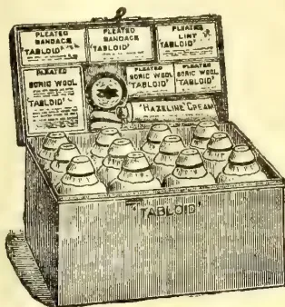
Measurements: 8½ × 4½ × 6½ in
'TABLOID' MEDICINE CASENo. 258 (The Settler's)
Fitted with the world-famed 'TABLOID' Brand MEDICINES, BANDAGES, etc. The medicines are perfectly reliable in hot or damp climates. They are prepared in accurate doses ready for dispensing and are quite palatable. In climate-proof metal case (black japanned).
Price in London 28/0
'Tabloid' Medical Equipments are obtainable
at the principal pharmacies in all countries
BURROUGHS WELLCOME & Co., LONDON
NEW YORK
MONTREAL
SYDNEY
CAPE TOWN
MILAN
SHANGHAI
BUENOS AIRES
x.r 293
ALL RIGHTS RESERVED
IDEAL FOR TROPICAL AGRICULTURISTS
overcome. So far the yields of rubber from mature trees on African plantations have been small. Funtumia elastica appears to behave very much like Ficus elastica (Rambong) in so far that copious yields on first tappings give way to unprofitable yields very quickly, and a long rest is necessary before economical tapping can be indulged in. Manihot, to judge from the published reports of well-known East African companies, does not give more than 12 to 15 ounces per tree per annum. Such yields compare very badly with those from three to four year old Hevea trees in Malaya; when contrasted with the yields from older Hevea trees in the East they make a very poor showing.
HIGH YIELDS IN THE EAST.It is true that some Eastern estates appear to have been tapped as vigorously as they possibly could, and perhaps the high yields recorded in the past will not be annually repeated; should this transpire, the Manihot and Funtumia trees may be in a better position, comparatively. .... There is no clear statement that the trees of the Pataling Rubber Estates had been overtapped, but the trend of the Chairman's remark is very much to the effect. That a company paying such large and handsome dividends should, in its ninth year of existence, have to admit that tapping overhead had been adopted is serious. There may be some excuse for young companies, having no previous experience, and being desirous of entering the dividend stage, tapping the trees in an exacting manner; but there can
be no satisfactory explanation of such faulty work on estates as old as Pataling. .... Tapping operations have a marked effect on the reserve food supplies and the recuperative powers of the trees. Drastic or too frequent tapping, whether of Hevea, Manihot, or Funtumia trees, means a lowering of annual yields and premature death. A long and healthy life for the trees should be aimed at. This can only be assured by removing the minimum quantity of bark and allowing the maximum period of time for renewal of bark. —India Rubber Journal, March 30.
CAMPHOR IN INDIA'S WETTEST DISTRICT.The camphor trees planted in the Government Farm at Wahjian below the plateau of Cherrapunji, have now reached a stage fit for cutting for distribution, and experiments were started in May last. A small still, modelled on those used in Ceylon, was constructed at a cost of Rs. 80. In the first trial distillation 35 lb. of twigs and leaves yielded 1¾ oz. of crude camphor. Of experiments in propagating the camphor trees by root cuttings and layerings out of 30 root cuttings put down at the commencement of the rains, 20 have succeeded and out of 50 layers 10 have proved successful. —Statesman, April 19.
476The Supplement to the Tropical AgriculturistThe good results obtained by estate owners in the Montana, especially in the departments of Cuzco, Puno, Junin, and Huanuco have greatly stimulated the rubber industry of Peru. The forests in these regions contain a very large proportion of caucho trees, which have to be dealt with under special regulations. The Government, therefore, decided to adopt two separate forms of contract for concessions. The first form is for the leasing of a few hectares of land; for the term of ten years, upon the condition that no trees shall be cut down or destroyed, and a royalty of four shillings for every one hundred-and-one pounds of rubber extracted must be paid by the concessionaires, together with the export duty, which amounts to eight cents of a Peruvian sol (about 2d.) per kilogram of ordinary rubber, and five cents of a sol on caucho, payable at the Custom House, upon the exportation of the rubber. The second form of contract is for the renting of "estradas gomeras," or rubber walks. Each round, or walk contains one hundred-and-fifty rubber-bearing trees, and the concessionaire is required to pay a rent of five-pence per annum for each walk, and the same amount for each two acres of ground upon which the trees are situated. This is, of course, in addition to the ordinary export duty. To gain a concession under either of these forms of contract, the prospective lessee must first employ an expert surveyor, who must be nominated by the Government; plans must then be drawn up and also accepted by the Minister of Industries. The concessionaire is required to give a guarantee, at the rate of two shillings, nominal value of the bonds of the internal debt, for each two acres of land occupied by the rubber concession. In the case of the first form of contract, ten shillings must likewise be deposited in the same bonds. The interest from these deposits is either paid, or accumulates in favour of the concessionaire. It is easily seen that these are wise regulations, for they prevent large tracts of land lying idle through apathy, or want of means, on the part of the lessees, and the deposit has the advantage of not being an objectionable tax, but merely a small investment. The policy of the Peruvian Government is certainly most generous, and is well calculated to protect and advance the india-rubber industry. Under the first form of contract the Government only participates in the results; should no rubber be extracted from the trees, then the State requires the concessionaire to pay nothing. Under the second form of contract the Government requires such a small rent that nearly all the rubber enterprises of Peru, working under those conditions, are paying well. The absolute and perpetual ownership of Montana lands can be acquired at the rate of ten shillings for every two-and-a-half acres.
The next most important State in Southern Brazil is Paraná, the staple industry of which is the preparation of maté or Brazilian tea. The shrub, from which the leaves for making this tea
are collected, grows wild in the great forests of the interior, and thousands of labourers are employed in gathering the leaves, which are then dried over fires made of woods which, when burning, give off aromatic fumes. The process of "drying" lasts for about twenty-four hours, after which the shrivelled leaves are ground to a coarse powder and sewn up in hide bags ready for export. Maté tea, which is the universal beverage of South America, is prepared for drinking in the following manner: The powdered leaves are placed in a small bowl, and boiling water is then poured upon them causing an infusion. A long silver or china tube, having a perforated bulb at its lower extremity, is next placed in the tea, which is sucked up the tube in the same manner as drinks from American soda-fountains. Maté forms a hygienic kind of tea which, although much appreciated in South America, is as yet little known in Europe. During the Paraguayan War both armies used this beverage with excellent results. During protracted engagements, and when it was necessary to undertake long and rapid marches, the soldiers were almost exclusively fed on maté, and the commanding officers of both forces testify to the increased powers of physical endurance which it gave the troops under their command. The War Ministries of Germany and the United States are now experimenting with this invigorating beverage. The "peons," or cowboys of the Brazilian prairies, upon rising in the morning take a bowl of maté, and are then capable of riding hard through the sweltering heat of a tropical day without any food whatever, their only proper meal being taken in the evening, when the cool night breezes awaken life and energy. The exportation of maté from this State to the various countries of South America is very considerable, amounting in one year to the value of £1,600,000.
Dr. P. H. Bahr [the expert, who is now in Ceylon, investigating "sprue."—ED. C.O.] in his "Notes on the Avifauna of the Fiji Islands" (Ibis, April 1912), says: "Two events have happened since Finsch, Hartlaub, and Layard wrote on the zoology of Fiji, which have profoundly modified the proportional status of the local avifauna. I refer to the introduction—to my mind, an almost criminal act—of the mongoose and the mynah (Acridotheres tristis) from India. The former of these pests was introduced some twenty-five years ago to keep in check the number of rats which were destroying the sugar cane. The result, as elsewhere, has been that the rats are still found in plenty, whereas the more defenceless birds have suffered. To such an extent has the mongoose increased that it is now a common and obvious feature of the landscape. The rearing of domestic fowls has become almost an impossibility. Within the confines of our garden in Suva I had little difficulty in killing over thirty of these animals in less than a fortnight by
and Magazine of the Ceylon Agricultural Society.—May, 1912. 477means of two mongoose-traps. I frequently observed the mongoose spring on and successfully catch small birds feeding in the long grass. It has taken to climbing trees, and therefore the species building in more or less accessible positions, such as the parrots and the lorics, have suffered most. The pigeons, which place their nests in the more slender branches, have to a much larger extent escaped. The harmless ground snakes, once so highly prized by the Fijians as an article of food, have disappeared from Vitilevu, and it is said that even the land crabs have shared the same fate. Luckily, however, the ravages of the mongoose are confined at present to the two larger islands, Vitilevu and Vanualevu, where sugar is grown on an extensive scale. The lovely and fertile island of Taviuni, in spite of certain ill-advised attempts at introduction, which happily have so far been frustrated, still remains free from this pest, and a sanctuary to the birds peculiar to it." [Our naturalist readers will call to mind the similar disastrous results which followed the introduction of the mongoose into Jamaica, as described by the late W. E. D. Scott, of Princeton, in his charming volume The Story of a Bird Lover, 1903 (pp. 312-313).—Ed.]
In view of the correspondence on jungle fowl which has recently been published in the Field, it may be of interest to the writers and others to note what Dr P H Bahr has to say on the jungle fowl of Fiji, where he spent a year (1910-11) in studying the avifauna of that group of islands. His notes on the subject appear in the April number of the Ibis. According to Layard (Ibis, 1876) the wild jungle fowl of Fiji, the familiar crow of which is such a characteristic feature in these palm-clad islands, was introduced by Capt. Cook. On the other hand, Dr B G Corney, for twenty years chief medical officer of the colony, thinks that fowls existed in Fiji long before the coming of Capt. Cook. It is pointed out that on the advent of the missionaries wild fowls were found in every island of the group. The bird is called "toa" by the natives, and, according to Dr Corney, "a small variety existed in Tahiti when the first ship (H. M. S. "Dolphin") discovered it in 1766. The story that Quiros discovered Tahiti in 1606 is a gross error, but is repeated in most encyclopædias and similar works." If the fowl had been introduced into Tahiti in 1766, it is most likely that it would have reached Fiji at some earlier period. Moreover, there is no evidence that Cook did more than touch at the island of Vatoa, the south-easterly limit of the Fiji group. The introduction of the mongoose sealed the fate of the jungle fowl in Vitilevu. On the small islands off the coast of Vitilevu it is abundant, especially on Bequaa and Mokagai, whence I was presented with a pair of these birds. Though much harassed by the mongoose, we managed to keep them alive for a year, and several young were raised. The male, a typical jungle cock in appearance, became very familiar and with difficulty could be kept out of the bedrooms. On Taviuni these birds are still abundant; the planters are in the habit of shooting them with a rifle, using a tame fowl, which is trained to crow as a lure.—Field, April 20.
The situation in the coconut oil market is almost anomalous. While some leading interests raised prices for all descriptions, other leading interests scored a reduction. Thus on the one hand Cochin is quoted at 10½c., and Ceylon at 10c. per pound, a rise in each case of ½c. over the prices quoted last week. On the other hand, Cochin is quoted at 9½c., Ceylon at 8.80c., and copra at 8½c. per pound—a decline of a fraction of a point for each description. Prices in both cases are for oil on spot, but both sets are largely nominal as trading has not been large in volume. Comparatively little oil arrived during the week, but the supplies on hand are said to be ample to meet all present requirements. As a result the future positions are offered at only slight discounts. Cochin at 9.40c., Ceylon at 8.80c., and copra at 8.50c. per pound. Marseilles quotes 89 francs per 100 kilos for copra, and London cabled. Friday, a quotation for April-May delivery of Ceylon at £38 15s. per ton.
The imports of coconut oil during February were 4,059,830 pounds, valued at $328,862. In February, 1911, the imports were 5,055,904 pounds, valued at $413,226.
Washington, April 5, 1912.—Intimations are given by the members of the Finance Committee of the United States Senate that it will probably be a week or ten days before further consideration is given to the bill that has passed the House of Representatives revising the chemical schedule of the tariff law.
The formal brief prepared by the National Conference of Soap Manufacturers as submitted to the committee is declared to represent 75 per cent. of the production of common and laundry soaps. The object of this brief is to show that
entering into the production of laundry soaps, and an elaborate statement relating to various imported oils, etc., are referred to in the brief, which is signed by soap manufacturing concerns.
Discussing in detail the use of the various oils, alkalies, and resin employed in common soap industry, all of these oils being imported, the brief summarises [one] as follows:—
"Coconut oil should remain on the free list, where it is now, and, so far as can be ascertained, always has been. This oil is almost entirely produced in the East Indies and other foreign countries. Coconut oil was for many years chiefly used in the manufacture of the better grades of toilet and bath soaps. Relying upon the continued supply of duty-free coconut oil, that oil has been more and more used in the manufacture of common or laundry soaps, and now constitutes one of the principal ingredients thereof. The public has reaped the benefit of these improvements. The price of coconut oil, however, with its enlarged use, has steadily advanced, and to-day is at a point where it would be impossible to furnish a soap of the present
478The Supplement to the Tropical Agriculturistsuperior quality at current prices if a duty is imposed upon coconut oil.
"Where hard water is used the use of coconut oil is essential to obtain a good lathering or cleansing soap. This is also true where salt water must be used. So that, in large sections of the country and on seagoing vessels, coconut oil soaps are indispensable. The imposition of a duty on coconut oil will result in increasing the price, or diminishing the quality at a given price, of soaps of the character described. It
WILL IN NO WISE BENEFIT THE INSIGNIFICANT COPRA-CRUSHING INDUSTRY
in this country, because it should be expressed within a short time after the gathering of the copra. For this reason the oil produced in the East Indies and other foreign countries is of superior grade for soap-making purposes, whereas the oil expressed here is inferior in quality, because the oil-expressing industry is so distantly situated from the copra-gathering sections.
"It is proposed to impose a duty of -cent. per pound upon coconut oil. The public has become accustomed to the sale to them of a certain sized cake of soap at a fixed price. The trade conditions which have thus been established, through custom and long usage, would not permit an increase of this price. The necessary result, therefore, would be that the size of the cake of soap would have to be reduced and the burden would fall on the consuming public."
—New York Oil Reporter, April 8.
A Rangoon correspondent writes:—"The cultivation of Pernambuco Tree Cotton was first attempted some years ago, by Miss Haswell of the American Baptist Mission of Moulmein, and in consequence of her success
SEVERAL SMALL PLANTATIONS HAVE BEEN STARTED BY BURMANS
during the past two years, apart from the large ones included in grants to Europeans. Pernambuco is mainly cultivated, though there are also one or two Caravonica plantations. Cultivation by the small cultivators is casual in the extreme. Holes are dug in taungyas at intervals of 6 feet by 7 feet into which seeds are dibbled in the first rains of May. Usually three or four seeds are put into one hole and all seeds germinating are allowed to survive. Frequently the cotton is sown mixed with taungya paddy. The most suitable soils seems to be a sandy loam, though the plants do fairly well on something approaching laterite; Jungle is as a rule kept down, but there is no clean weeding, manuring and no attempt to deal with insect-pests.
"The cost of cultivation is very low—hardly exceeding Rs.15 per acre. The number of bolls recently obtained from a tree in a first-year plantation was 25, while from a second-year plantation as many as 40 bolls were obtained. The yield of a second-year tree averaged 7 oz. of uncleaned cotton, yielding 25 per cent. of lint; and assuming that trees are planted 6 feet by 7 feet, the yield of an acre would be about 8,000 oz. or 500 lb. uncleaned cotton, equivalent to
125 lb. of lint and 375 lb. of seed. The Karens, who have now taken to Tree Cotton cultivation, say that 1,000 trees give 100 viss of cotton in the first year, and that this yield is largely increased in the second and subsequent years. The quality of the cotton produced is good and the staple is fairly long. Owing to the demand for seed, the local price has so far been unduly high, namely, 12 annas per viss of uncleaned cotton, and last year the price was even higher, being Re.1. A large sample of ginned cotton recently sent to Liverpool realised 8 pence per pound. On this basis the value of the produce of an acre of cotton after ginning works out to about Rs.62-8, giving a very appreciable profit.
"There is a distinct future for Pernambuco Cotton in the Amherst district, but the people do not at present seem to realise that it is a crop that repays intensive cultivation and that it requires manuring and careful weeding for the first year at least. Even under present conditions an outturn of over 100 lb. of lint to the acre is not despicable; and proper cultivation should double the number of bolls over a given area. The future of cotton in this district is of all the greater importance owing to the gradual decline in the fertility of the orange groves and the necessity of finding a suitable substitute. When the new service of district agriculturists is started, it would be worth while for the Agricultural Department to experiment with a small area properly cultivated in this district. Advice could then be given with regard to the best and cheapest manure; and if a chemical manure is necessary it might be possible to retail it. Another question which might be considered is whether it would not be more profitable to cultivate it as an annual, the plants being sown 3 feet by 3 feet instead of 6 feet by 7 feet as in the case of a standard crop."—Capital, May 2.
An invention that has caused no little excitement in the textile world, says the United States Consul at Reichenberg, Austria, consists of a process of treatment of common straw, whereby it is now possible to secure therefrom a fibre suitable for spinning. The discoverers themselves assert that their success far exceeds their original expectations. The influence of this new material upon the textile industry will be far-reaching. While the entire method is not revealed, it appears that the straw is reduced to a jelly-like substance by boiling, causing the separation of the fibre from the outer shell, and the fibre is then treated in hot-air machines. To this product is added another fibrous material, but never more than 20 per cent., so that fully 80 per cent. is straw. The resulting "stuff" has many of the characteristics of the "fore" yarn used in jute spinning. The principal advantages claimed by the inventors are that the new fibre has all the merits of the yarns now produced; that the cost is only one-half that of similar products; that the weight is 40 per cent. less; and that the goods are in every way desirable. Experts who have examined this material are agreed as to the truth of these claims.—London Chamber of Commerce Journal, for April.
and Magazine of the Ceylon Agricultural Society.—May, 1912.479We took occasion recently to draw attention to the very favourable forward contracts entered into by plantation companies, not only for 1912, but for 1913. The list is now rapidly growing, and up to the time of writing the top price of 4s 9½d has been obtained by the Java Amalgamated Rubber Estates, Ltd., who have sold forward six tons for delivery January to June, both months inclusive, of next year. The total list to date is as follows:—
| Name of Company | Tons sold. | Price. |
|---|---|---|
| Lavant .. | 9 | 4s 4d |
| Jeram .. | 6 | 4s 4d |
| Serdang Central .. | 6 | 4s 4d |
| Langkat Sumatra .. | 6 | 4s 4d |
| Bandar Sumatra .. | 6 | 6d |
| Jugra .. | 78 | 4s 6d |
| Gula Kalumpong .. | 12 | 4s 6d |
| Rubana .. | 12 | 4s 6d |
| Straits Rubber .. | 24 | 4s 6d |
| Tali Ayer .. | 12 | 4s 6d |
| Glenshiel .. | 6 | 4s 7½d |
| Sumatra Para .. | 24 | 4s 7½d |
| Sungei Kruit .. | 12 | 4s 7d |
| Kuala Selangor .. | 36 | 4s 8d |
| Sungei Kruit .. | 12 | 4s 8d |
| Nordanal .. | 24 | 4s 8d |
| United Serdang .. | 9 | 4s 8½d |
| Gula Kalumpong .. | 18 | 5s 9d |
| United Sumatra .. | 12 | 5s 9d |
| Sumatra Consolidated R. E. .. | 1 | 4s 9d |
| Jaya Amalgamated .. | 2 | 4s 9d |
| Bagan Serai .. | 6 | 4s 9d |
| Batak Rabbit .. | 6 | 4s 9d |
| Glenshiel .. | 6 | 4s 9d |
| Kurau .. | 6 | 4s 9d |
| Rubana .. | 6 | 4s 9d |
| Straits R. Co. .. | 24 | 4s 9d |
| Tali Ayer .. | 6 | 4s 9d |
| Java Amalgamated .. | 6 | 4s 9½d |
It is quite certain that many other sales will be added to the list, especially by those companies who intend making sure of a minimum price, for part of their crops, during a year when large crops will undoubtedly come forward.
This policy is one which renders shareholders more or less independent of the fluctuations in price for which our commodity is noted. By some it is regarded as gambling or rank speculation, but by others it is regarded as wise. As a matter of fact it is the only prudent course to adopt, especially when by selling such a small portion the companies practically guarantee a dividend to the shareholders. We would be against any plantation company selling the whole of its crop except at a ridiculously high price; given a definite, though perhaps small, dividend by the sale of a fraction of the year's crop we think shareholders can rightly take their risks on the balance.
It is true that in entering into forward contracts the sellers have to take unusual precaution, and frequently go to extra expense in order that the solvency of the buyer can be guaranteed. The usual brokerage for ordinary sales is per cent.; for forward contracts in which the broker guarantees the solvency of the buyer the commission is 1 per cent., or equal to 0.7 per lb. of rubber selling at 5s. 10d. per lb.
When, as is occasionally necessary, rubber has to be bought in against the contract, the seller is
sometimes charged a further commission. It is against these commissions which many plantation owners are objecting. We believe, from the representations made to us, that some minimum scale of brokerage for forward sales would lead to more business being done. A clearing house might also make a reasonable representation on this point.
Meanwhile it is a matter for surprise that the demand for plantation sorts has become so keen, manufacturers having evidently overcome many of the difficulties formerly experienced by them. It is remarkable that the price for 1913 plantation rubber should be nearly as high as that of spot fine hard Para. Surely this is another sound argument why plantation Para should be quoted as the premier grade instead of fine hard, which is gradually being overtaken in quantity and actual demand.—India Rubber Journal, March 23
A colony which is on the eve of launching an Agricultural Department of its own must needs take an interest in the operations of other Crown Colonial departments of agriculture working under tropical conditions.
From a recent issue of the Demarara Daily Mail to hand, we find that the work of the Agricultural Department of British Guiana is being carried on in the face of some opposition, but it is reassuring to find a responsible member of the Legislature pressing its claims in vigorous terms. He is reported to have said that he was not prepared to hamper the work of the department one iota: and that in an agricultural colony one must support the Department that was responsible for the progress of Agriculture.
We can only trust that the same liberal spirit will actuate our own Legislative Councillors, and that the new Department of Agriculture will be allowed full scope for carrying on its legitimate work without let or hindrance.
A matter of deep concern both in British Guiana as well as Ceylon is the conservancy of the Coconut industry by providing means for protecting it against the devastating action of disease. This colony has fortunately enjoyed immunity from any serious disorder affecting the Coconut palm, but the Western tropics would appear to be more liable to the incursions of insect enemies and the depredations of fungoid diseases, and it is found necessary to make special provision beforehand for dealing with such contingencies. In the discussion on the question of financial aid in this connection the Colonial Engineer, Mr. J. H. W. Park, (who was the late Assistant Director of Irrigation in Ceylon) illustrated the point he was urging by reference to his experience in this Colony. He is reported to have said that some 300,000 palms had had to be destroyed in Ceylon as the result of this Government being unwilling to adopt prompt measures to deal with an invasion of coconut caterpillars. The il-
480The Supplement to the Tropical Agriculturistlustration would appear to have had a desirable effect, but we are sorry that this should have been at the expense of this Colony; the more so as we cannot verify the figures quoted by Mr Park. The reference is probably to the depredations of the black-headed caterpillar (Nephantis Serinopa) investigated some years ago by the Government Entomologist in the Batticaloa district with which this pest is chiefly associated. A report by Mr Green on this enemy of the Coconut palm will be found on page 68 of the appendix in the Coconut Planters' Manual, published by Messrs A M & J Ferguson at this office.
Still another subject of local interest, which is engaging attention in British Guiana, is that of loan banks. In Ceylon we do not seem to have got beyond the legislative stage and the practical application of the ordinance passed not long ago has yet to be effected. We read in the report referred to of a recommendation that the Executive Government in British Guiana should loan sums not exceeding 2,500 dollars in the aggregate to such banks; and that while the value of each share may vary from 1 to 5 dollars, no member shall own more than 100 dollars' worth of shares.
With the advent of the new Director of Agriculture, to whom Sir Hugh Clifford referred in high terms of commendation at the last meeting of Council, we feel sure that a fillip will be given to the development of many measures, for dealing with the practical solution of agricultural problems which have been waiting so long to be dealt with by the authoritative head of the Department concerned.
We take this opportunity of joining with the Hon. the Colonial Secretary in congratulating the Colony on the acquisition of the man that has been long wanted.
On one of the lawns near the cactus house at Kew there is now a magnificent example of the pulque plant Agave atrovirens, from the llano or plains of Apam Mexico. For many years this plant has been a striking object among the many species of agave cultivated in the cactus house, its age being about thirty years. Until the pole-like flower spike commenced to develop there was ample head room in the house for the plant, huge though it is; but when the spike reached the roof, the end of the house was removed and the plant run out on planks and rollers to its present position where, unless the weather of the next few weeks disagrees with it, the flower spike should be at its best towards the end of June. At present the spike is about 12ft. high and 6in. in diameter, but, judging by a specimen which flowered about twenty-five years ago, it should attain a height of 25ft., with numerous branches arranged candelabra fashion, and bear a large number of yellow lily-like flowers. The leaves are arranged in an enormous rosette about 12ft. in diameter, and they are about 8 ft. long, 10 in wide, very thick and solid, their colour glaucous green, their margins clothed with short spines, and the apex armed with a long sharp spike. In a broad
sense this is one of the American aloes or century plants, whose life period varies from ten to fifty years, or even longer, according to circumstances, but they
ALL FLOWER ONLY ONCE AND THEN PERISH.
A. atrovirens is of exceptional economic interest, as from it is prepared the fermented drink called pulque, the favourite beverage of the Mexicans, who cultivate the plant on an extensive scale for the sake of the sweep sap which it secretes when it has arrived at maturity and is about to flower. The sap is obtained by cutting off the top of the flower stalk at any early stage and hollowing out the stem to form a cup into which the sap flows, and is removed several times each day until it ceases to run. The sap is then placed in bull-hide vats to ferment, a kind of yeast being added to hasten fermentation, the entire process resulting in the end in a variety of wine, resembling in colour and general appearance the weissbier of Germany. It is an agreeable wholesome drink, being a valuable nutrient as well as a mild stimulant, as it contains from 4 to 8 per cent. of alcohol. Pulque is said to be good for inflammatory and catarrhal conditions of the bladder and kidneys, and to be an almost unfailing remedy for what is known as Bright's disease. It is now prescribed by American physicians, who even send their patients to Mexico to drink fresh preparations of it, as it is liable to secondary fermentation a few hours after it has been made, which renders it unwholesome.
There are countries in the British Empire where the conditions of soil and temperature are such as would favour the growth of this agave; for example the plains round Johannesburg, where, to those engaged in the mines, a plant that yields both wine and medicine and requires practically no cultivation would be a blessing. There is a useful fibre also in the leaves of this plant, not so good perhaps as sisal hemp, but good enough for many purposes. If once established in a country this agave would reproduce itself naturally, and most likely with great prodigality, by means of seeds and stem bulbs, which it bears in profusion. Of course it might prove a nuisance by providing a cheap intoxicating drink to natives, thus reducing their value as workers. It is worth trying on a small scale, anyhow.—Field, April 13.
In our last issue we asked if any of our readers knew of the largest piece of raw rubber on record. We referred to a biscuit weighing 559 lb., which was exhibited at the Rubber Exhibition of 1908, and also to a block which figured at several tyre exhibitions, and weighed about 8 cwt. This week we are enabled, by the courtesy of the St. Helen's Cable and Rubber Co., Ltd., Warrington and London, to publish a photograph of a piece of Fine Hard Para, which they bought about five or six years ago. This block weighed nearly half-a-ton, to be exact 1,100 lb., and was shown at several exhibitions about the country. It is claimed that this is the largest piece of rubber ever imported.—India Rubber Journal, April 20.
THE
TROPICAL AGRICULTURIST
AND
MAGAZINE OF THE
CEYLON AGRICULTURAL SOCIETY.
VOL. XXXVIII,
COLOMBO, JUNE 15TH, 1912,
No. 6.
SEED SELECTION IN PADDY.
It is related of one of the great Emperors of China, who lived more than 3000 years ago, that one day, when walking on the border of a rice field, he noticed a rice plant which excelled its neighbours in size and luxuriance. He forthwith decreed that the seed of this plant should be carefully preserved, and that his royal name should be specially associated with its progeny. From this plant a strain of rice is said to have sprung which excelled all previously known varieties in yield and vigour. It spread over the whole country, and all men blessed the name of the Emperor as they consumed the increased rations which were thus secured to them.
Whether a result of equal importance could be produced again in an equally simple manner is perhaps doubtful, but there is no doubt that by careful selection the yield from a field of paddy can be materially increased. Even in a field of transplanted paddy where the whole crop appears to have grown uniformly to an even height, it will be found on closer examination that individual plants differ enormously among themselves in the number of tillers which they produce and in the weight of grain yielded. Evidence bearing upon this point derived from the crop of paddy grown at the Experiment Station, Peradeniya, during the season 1910-11, was published in the Tropical Agriculturist for September last, and from that account the following passages are quoted.
“On the paddy field at the Peradeniya Experiment Station an area was selected which was bounded by a single bund, and which might therefore be expected to be fairly uniform as regards soil composition. Here five plots were marked out, each 20 feet square, or rather less than hundredth of an acre, and on these paddy seedlings were transplanted singly at different distances. Paddy was also transplanted close up to the edge of each plot all round—an important precaution for two reasons: first, because only in this way can the plots be regarded as fair samples of a larger area; and secondly, because birds and other enemies which always attack an experimental plot under the impression that some special delicacy must be growing there are in this way more or less circumvented. The remainder of the field was transplanted, according to what appears to be the local practice, in bunches of six to ten plants about 6 inches apart.
482[JUNE, 1912."The plots with their yields were as follows :—
| Plot | Distance. | Number of Plants per Acre. |
Yield in Bushels per Acre. |
|
|---|---|---|---|---|
| Bunches 6 × 6 | ... | ... | ... | |
| A | 4 × 4 | ... | 392,040 | 32 |
| B | 6 × 6 | ... | 174,240 | 37 |
| C | 8 × 8 | ... | 98,010 | 60 |
| D | 10 × 10 | ... | 62,726 | 60 |
| E | 12 × 12 | ... | 43,560 | 52 |
| ... | 18 | |||
"From each of the transplanted plots 100 plants were separately gathered, the number of tillers or fruiting stalks sent up by each plant was separately counted, and the grain from each plant was separately weighed. I had therefore 500 definite observations of weight to select from. The results of these operations were as follows :—
Number of Plants having different Weights of Grain in Grammes.
| Plot | ... | 2 | 4 | 6 | 8 | 10 | 12 | 14 | 16 | 18 | 20 | 22 | 24 | 26 | 28 | 30 | 32 | 34 | 36 | 38 | 40 | 42 |
|---|---|---|---|---|---|---|---|---|---|---|---|---|---|---|---|---|---|---|---|---|---|---|
| A | 4 × 4 | ... | 21 | 24 | 25 | 15 | 10 | 4 | 1 | |||||||||||||
| B | 6 × 6 | ... | 5 | 18 | 22 | 20 | 24 | 5 | 5 | 1 | ||||||||||||
| C | 8 × 8 | ... | . | 3 | 9 | 10 | 12 | 20 | 16 | 15 | 7 | 4 | 1 | 1 | . | 1 | ||||||
| D | 10 × 10 | ... | . | . | 2 | 9 | 5 | 9 | 14 | 16 | 14 | 7 | 6 | 5 | 6 | 2 | 4 | . | . | . | . | 1 |
| E | 12 × 12 | ... | 3 | 16 | 16 | 21 | 8 | 10 | 8 | 10 | 6 | . | . | 2 | . | . | . | . | . | . | . | 1 |
| Total | ... | 29 | 61 | 74 | 75 | 59 | 48 | 44 | 41 | 28 | 11 | 7 | 8 | 6 | 3 | 4 | . | . | . | . | . | 1 |
"The weights in the above table are given, as they were recorded, in grammes, 28 of which go to an ounce.
Attention is specially directed to the single plant of plot D which yielded 42 grammes of grain as against an average of 16 grammes from the remainder of the plot. The hope was entertained that a specially good yield might be obtained from the progeny of this plant, and it will be found that this was not disappointed.
Number of Tillers.
| Plot | ... | ... | 1 | 2 | 3 | 4 | 5 | 6 | 7 | 8 | 9 | 10 | 11 | 12 | 13 | 14 | 15 | 16 | |
|---|---|---|---|---|---|---|---|---|---|---|---|---|---|---|---|---|---|---|---|
| A | 4 × 4 | ... | ... | 2 | 19 | 33 | 18 | 20 | 6 | 1 | . | 1 | |||||||
| B | 6 × 6 | ... | ... | 6 | 19 | 35 | 24 | 11 | 3 | 2 | |||||||||
| C | 8 × 8 | ... | ... | . | 4 | 9 | 28 | 21 | 14 | 18 | 5 | . | 1 | ||||||
| D | 10 × 10 | ... | ... | . | 1 | 8 | 6 | 14 | 13 | 18 | 20 | 7 | 3 | 5 | 3 | 1 | . | . | 1 |
| E | 12 × 12 | ... | ... | 2 | 13 | 15 | 20 | 21 | 6 | 9 | 9 | 2 | 2 | . | 1 | . | . | 1 | |
| Total | ... | ... | 10 | 56 | 100 | 96 | 87 | 42 | 48 | 38 | 10 | 6 | 5 | 4 | 1 | . | . | 1 |
"It will be seen at once that both the number of tillers and the weight of grain depend a good deal on the distance of transplanting. Each plot, however, generally contains one or two plants which are notably superior to the remainder, and by sowing separately the seed gathered from these we may hope to see some definite improvement in future generations."
The seed from the two best plants in each plot was selected for further sowing, that is to say, from the two plants which produced the greatest weight of seed. The seed from each plant was broadcasted in a separate isolated patch in October, 1911, and the seedlings were transplanted a month later into the same five plots as before. In order to minimize error the sequence of plots was reversed, that is to say the offspring of the best plants of plot A were transplanted in plot E and those from plot B in plot D. The distance of transplanting was one foot apart in
JUNE, 1912.]483each direction throughout all the plots. Each plot should therefore have contained two sets of 200 seedlings each, but as there were not enough seedlings available to fill plots C, D and E, the vacant space was filled up with other seedlings planted at the same distance, the position of the plants under experiment being carefully noted.
The plants were harvested at the beginning of May, 1912, and the result is given in the following table.
| Plot. | Weight of grain from Parent plant, grammes. | No of plants. | Total weight of grain, grammes. | Weight of grain per plant, grammes. | Bushels per acre (calculated.) | Bushels per acre from parent plots. | Planting Distance in parent plots. |
|---|---|---|---|---|---|---|---|
| A 1 | 24 | 155 | 4,458 | 29 | 45 | 18 | 12 |
| 2 | 23 | 161 | 3,565 | 22 | 37 | 18 | 12 |
| B 3 | 42 | 172 | 6,131 | 36 | 61 | 52 | 10 |
| 4 | 30 | 130 | 4,811 | 37 | 51 | 52 | 10 |
| C 5 | 28 | 75 | 2,232 | 30 | 45 | 60 | 8 |
| 6 | 24 | 141 | 4,004 | 28 | 43 | 60 | 8 |
| D 7 | 18 | 66 | 1,251 | 19 | 31 | 60 | 6 |
| 8 | 14 | 23 | 848 | 36 | 63 | 60 | 6 |
| E 9 | 13 | 22 | 508 | 23 | 34 | 37 | 4 |
| 10 | 12 | 17 | 194 | 11 | 22 | 37 | 4 |
If we disregard plots 8, 9 and 10*, where the irregular result may be attributed, in part at least, to the very small number of plants grown, several interesting conclusions present themselves.
The first section of plots A, B, C, etc., contained in each case the offspring of the better of the two plants selected in the preceding generation. In the present generation the yield per acre is better in each case for the offspring of the heavier yielding parent.
The average weight of grain per plant from the best plot (D) of the preceding crop was 17 grammes. The average weight from all the present plots was 29 grammes. That is to say the average for the whole of the second crop was nearly double that for the best plot of the first crop. The 1911-12 crop from unselected seed was probably rather better as a whole than the 1910-11 crop, but a considerable part of the improvement on the experimental plots can only be attributed to selection.
The calculated crop per acre from the offspring of the best selected plant—the plant which produced 42 grammes of seed in the preceding generation—(Plot B 3) exceeds the average crop from all the selected plants by 16 bushels or 35 per cent. There can be no doubt that the crop from this plot (B 3) would exceed the crop from unselected seed by a very much greater amount.
From the evidence so far available we arrive at the conclusion that the crop from an acre of paddy can be increased 100 per cent. by transplanting alone as compared with the usual method of broadcasting. The further improvement which can be obtained in a single generation by rigorous seed selection may safely be put down at least at 50 per cent.
Selection of plants which tiller well further enables the distance of transplanting to be considerably increased without loss of crop, thus materially re-
* Plot E gave a very bad result in both seasons. There was no reason for supposing that there was any material difference in the conditions affecting plant growth between the remaining plots.
Review.484[JUNE, 1912.ducing the labour required for the transplanting process. The amount of seed required for transplanting at 12 × 12 inches is also very small—not more than bushel per acre.
Time was unfortunately not available for the separate weighing of the grain from each plot during the present season. The number of tillers on each plant was, however, counted by an assistant with the following result:—
| Plot. | NUMBER OF TILLERS.* | Number of plants. | ||||||||||||||||
|---|---|---|---|---|---|---|---|---|---|---|---|---|---|---|---|---|---|---|
| 2 | 4 | 6 | 8 | 10 | 12 | 14 | 16 | 18 | 20 | 22 | 24 | 26 | 28 | 30 | 32 | 34 | ||
| A 1 | ... | ... | 9 | 26 | 25 | 42 | 22 | 15 | 7 | 5 | 1 | 2 | ... | ... | 1 | ... | ... | 155 |
| 2 | ... | 13 | 9 | 25 | 43 | 36 | 23 | 6 | 2 | 1 | ... | 1 | ... | ... | ... | ... | ... | 159 |
| B 3 | 1 | ... | 1 | 6 | 20 | 22 | 28 | 32 | 35 | 16 | 7 | 1 | 1 | 1 | ... | ... | ... | 171 |
| 4 | ... | ... | 1 | 4 | 12 | 12 | 30 | 19 | 15 | 20 | 8 | 6 | 4 | 1 | ... | ... | ... | 132 |
| C 5 | ... | ... | 3 | 5 | 3 | 12 | 14 | 11 | 11 | 8 | 4 | ... | 2 | 1 | ... | ... | 1 | 75 |
| 6 | ... | 6 | 7 | 16 | 16 | 22 | 28 | 17 | 15 | 8 | 3 | 1 | ... | ... | 1 | ... | ... | 140 |
| D 7 | ... | 2 | 4 | 11 | 10 | 15 | 13 | 7 | 2 | 2 | ... | ... | ... | ... | ... | ... | ... | 66 |
| 8 | 1 | 1 | ... | 3 | 7 | 4 | 4 | 2 | 1 | ... | ... | ... | ... | ... | ... | ... | ... | 23 |
| E 9 | ... | ... | 2 | 1 | 6 | 6 | 2 | 3 | 2 | ... | ... | ... | ... | ... | ... | ... | ... | 22 |
| 10 | ... | ... | 2 | 5 | 4 | ... | 4 | ... | 2 | ... | ... | ... | ... | ... | ... | ... | ... | 17 |
| Total. | 2 | 22 | 38 | 102 | 146 | 171 | 168 | 112 | 92 | 60 | 23 | 11 | 7 | 3 | 2 | ... | 1 | 960 |
Just as in regard to the character of weight of grain, so in regard to the character of tillering the offspring of the best plants stands first. Comparing plot B of the present generation with plot D of the preceding one, the average number of tillers has been increased from about 7 to about 15, or more than doubled. The average has in fact been raised almost to the value of the exceptional plant selected. A small part of this result may be due to the increased space available—12 inches × 12 instead of 10 × 10. In the season 1910-11 however, the 12 × 12 plot failed to tiller as well as the 10 × 10 plot.
Exceptional plants again occur—one had as many as 34 tillers—which would have afforded excellent material for further selection had it been possible to pay personal attention to the harvesting of the crop. The effect of selection appears, however, to have been already amply demonstrated.
We venture to express the hope that the seed obtained in these experiments will prove a valuable asset to the new Ceylon Department of Agriculture, and we hope that experiments which show so much promise will be carried further by that Department and the seed distributed. It would perhaps show too optimistic a temperament to express any confidence that the final result will be an increase in the total crop of paddy produced in Ceylon and not a diminution in the area cultivated.
By H. N. RIDLEY, C.M.G., F.R.S.
This book deals somewhat comprehensively, in the space of 450 pages, with the varieties, history and distribution, methods of cultivation including suit-
able climates and soils, preparation, pests, exports and uses of Vanilla, Nutmegs, Cloves, Allspice, Cinnamon, Pepper, Cardamoms, Chilies and other tropical spices.
The book is largely a compilation and a considerable amount of literature has
* In this table 1 and 2, 3 and 4 etc., are placed together.
JUNE, 1912.]485Saps and Exudation.been ransacked in its preparation. We may note in passing that we have failed to recognise in what order the bibliographies which follow most of the chapters are arranged. The order is certainly neither alphabetical nor chronological.
Although the work will doubtless be of use to planters and others interested in the products described, we are scarcely convinced that a book of 160,000 words confined to the subject of spices can fully justify its existence, unless it contains the result of real research upon the subject. By judicious compression a readable book of half the size and far greater attractions might have been produced which would still have contained practically all the information here given. Little attention appears to have been paid to spices in recent years by Tropical Departments of Agriculture, and the fact that some parts of the text of this book are almost as old-fashioned as its illustrations is not entirely the fault of the writer who had to make use
of such material as was available. The fact that tables of exports and the like have a distressing habit of terminating in the early eighties, might, however, have been avoided by further research.
Among minor points we would suggest that the word bean is scarcely applicable to a pod of vanilla (p. 56).
This brief notice has been made up of somewhat free criticism. We may add that the volume before us is the work of a competent authority, and is distinctly better in quality than many similar books on tropical products which appear to have found a ready sale. Our chief quarrel with it is that our knowledge of the author's qualifications, capabilities and experience convinces us that he might have made it so much better if he had spent more time upon it.
The printing and paper are excellent but the illustrations vary much in quality and are very antiquated in type.
R. H. L.
Readers of the Tropical Agriculturist may be interested to know that the single old Hevea tree at Heneratgodu which has already yielded 240 lbs. of dry rubber in three years (1909-1911), has again surpassed all previous records with a yield of 17 lbs. for the month of February, 1912.
An account of the yields from this tree during 1911 will be found in the Circulars and Agricultural Journal of the Royal Botanic Gardens, Ceylon, Vol. VI., No. 8. published in April last. The tree was not tapped in January but was tapped every day in February, which is generally a poor yielding month (the system of tapping now under trial is to tap daily during alternate months). The highest yield was obtained on the 18th of the month, namely 665 cc of latex and 299
grammes of dry rubber. The percentage of dry rubber in the latex obtained during the month was 44, and the proportion of scrap was 13 per cent. of the total dry rubber obtained. It is expected that the yield for April will considerably exceed that for February and thus create a fresh record.
R. H. L.
(By G. A. POGSON, Brit, Consul at Para.)
(From the Board of Trade Journal, No. 787, pp. 661-662. London, December 28, 1911.)
(Bulletin of the Bureau of Agricultural Intelligence and of Plant-Diseases 3rd Year—Number 2, February 1911.)
In the State of Para a law provides for the grant of concessions to national and
Gums, Resins,486[JUNE, 1912,foreign companies registered in the State for the cultivation of rubber (Hevea Brasiliensis), cacao, nuts, etc. The privileges offered include grants of public land up to 200,000 hectares (about 494,000 acres); reduction by 50 per cent. of the export duties and State dues upon the rubber, etc., produced, during the first ten years from the date of the first shipment, decreasing by 10 per cent. for each decade up to fifty years; reduction of State railway rates and of the freight charges by steamship lines subvented by the State; waiving for ten years of the industrial and professional State and Municipal imposts upon the company's premises.
The concessionaire companies will be obliged, among other things, to plant not less than 50,000 rubber trees during the first five years of the concession, and 20,000 trees annually after that period, to comply as regards their produce, with the instructions of the Department of Agriculture; and to concede to the Government the supervision of the whole activity of the companies. In case of failure to plant a minimum of 50,000 rubber trees within the first five years, the concession will become void. The State Government will try to obtain from the Federal Government, on behalf of the concessionaires, a suspension of taxation as regards the importation of machinery and anything else required for the preparation and cultivation of the soil.
BY SIR HENRY A. BLAKE, C.G.M.G.*
(From the India Rubber World, Vol. XLV., No. 6, March 1, 1912.)
Two stalwart young London judges playing "pull devil pull baker," with various sheets of rubber gave me my
* Ex-Governor of Ceylon, Hong Kong and other British Colonies; President of the 1908 and 1911 International Rubber and Allied Trades Exhibitions, London; and President of the European Committee of the Coming New York Rubber Exposition.
first introduction to the practical testing of sheet and biscuit rubber in the prize competition at the first rubber exhibition held in the beautiful Botanic Gardens at Peradeniya in Ceylon. The rubber was being tested for tensile strength, tenuity, and resilience. This was in the year 1906.
In 1873 the first seeds of the Hevea Brasiliensis were brought to the Royal Botanic Gardens at Kew by Mr. Wickham, whose success in obtaining them and sending them to England, showed great readiness and resource. The seeds were intended for India, but as there was at the time a scare against the possible introduction of plant diseases into India that Government refused to receive them, and they were sent to Ceylon instead, where a plantation was made at Heneratgoda Botanic Gardens. From those trees, now large forest trees, came the seeds that have spread the cultivation of Hevea Brasiliensis from Ceylon to Java and Papua in the east.
In Ceylon the young trees were planted as shade trees for the tea and in some cases as avenues along the roadsides. For many years nobody seemed to realize the value of the latex. At length, when cutting some shade trees, an intelligent observer pointed out that this was the basis of the rubber for which high prices were being obtained. At once owners of quantities of these shade trees found themselves comparatively rich men. Prices continued to rise, and in 1905, 6 and 7 feverish anxiety was shown to take up and plant lands suitable for rubber. In 1910 the price of rubber rose to 12s. per pound, and the shares of producing companies mounted with amazing rapidity. Immense fortunes were made by some, and rubber properties were considered inexhaustible sources of wealth.
At the close of 1905, it was proposed that an exhibition of everything connected with the planting and preparation of rubber should be held. The extraction of the latex and its preparation were so far very simple. The latex was poured into soup plates, where it coagulated,
JUNE, 1912.]487Saps and Exudations.Next day it was rolled out by a bottle to about one-quarter of an inch thick, washed and placed in a drying room. When dried it was ready for the market.
The exhibition was opened in September, 1906, and here, for the first time, was brought together all that was known of the various processes connected with plantation rubber. It may be mentioned that the gold medal for the best biscuits was won by Ceara rubber biscuits grown at an elevation of 3,500 feet. During this exhibition papers were read and discussed that dealt with every phase of the important industry and a mass of information was recorded that was of importance for all rubber growers.
This first exhibition showed how much remained to be investigated, not alone in the propagation of the trees and in the chemistry of the latex, but also in the effects upon the trees, of the different modes of tapping and the means to be taken for combating the pests of various kinds that began to present themselves.
Hundreds of thousands of acres were taken up in India, Ceylon, Malaya and Java for rubber plantations; Africa was exploited east and west; Central America was examined with a view of cultivating Ceara and other rubber trees, and South America, the original home of the Hevea Brasiliensis, was being searched from the Atlantic to the Pacific for locations likely to attract investors; when it was proposed that an exhibition should be held in London, in which all countries interested in this now colossal business should join in mutual inquiry and friendly competition. The industry had advanced with extraordinary rapidity, and there seemed to be no bounds to its expansion in Europe and America.
The proposal received an enthusiastic response from all parts of the world. The exhibition was held at Olympia in London, from the 14th to the 26th of September, 1908, and contained exhibits of all existing forms of rubber, while practical planters, and scientific experts from east and west, vied with each other in friendly interchange of opinions, and valuable discussions of the papers read
before the International Conference during the twelve days of the exhibition.
The result was considered very satisfactory. The exhibition had brought together producers and manufacturers from the East, from Europe and the United States of America, and brought under the notice of investors, possibilities hitherto not appreciated while the rapid growth of demand assuaged the fear of over production. The collocation of the papers submitted to this conference and edited by Dr. Spence, P.H.D., F.I.C., shows within its 300 pages how wide a field was covered by the discussions, and how valuable were the facts and experiments thus placed at the disposal of the conference. At the close of the exhibition, it was felt that these International Exhibitions and Conferences of men engaged in the great industry so rapidly expanding into a position in the first rank of world's commerce, ought to be continued, where the fellow workers of every nation might draw from a common store of knowledge, experience useful to all, and help each other forward in their efforts to increase the supply of Nature's products for the benefit of mankind.
It was decided that an exhibition on the same line should take place in 1911, and it was felt especially that the manufacturers should be invited to participate, in the hope that fuller indication might be given of the particular form in which plantation rubber should be presented to the market. Much had been done since the first Ceylon exhibition, but in the range of caoutchouc producing plants there was much still to be learned, as also in the process of securing the latex at the least cost to the health of the trees, and in its preparation as crepe, blanket, sheet or block for the market. Vulcanization is also a vital process on which the last word has not been said; while the consumer is invited to contemplate new uses that may add materially to his comfort and possibly decrease his expenditure in the future.
This third exhibition was held at the Agricultural Hall in London, from June
Gums, Resins,488[JUNE, 1912.]24 to July 14, and was again a brilliant success. There was a considerable increase in the number of British and foreign manufacturers and new sources of supply were shown. Brazil retained her pre-eminence, not alone as a source of supply, but as furnishing a standard of perfection. Great advances have been made in the details connected with the production of plantation rubber and improved machinery was much in evidence. There was a demonstration of a new process for the production of synthetic rubber, that may yet find a place in the rubber market.
Once more the salutary principle was adopted of making the exhibition the opportunity for holding an international conference, the outcome of which may be seen in the admirable souvenir of the proceedings since published. Prizes were given by the India Rubber World, of New York, for the best system of extracting latex from the Castilloa Elastica; by the India Rubber Journal of London, for the best sample of plantation rubber; by Grenier's Rubber News, Federated Malay States, for the best sample from Malay States; by the Association des Planteurs de Caoutchouc, for best sample from Dutch East Indies, and by the West India Committee for best samples of rubber, and balata from the West Indies.
During the exhibition it became known that an international exhibition on somewhat similar lines was projected for New York, and now that the project has materialized, further progress will doubtless be made in the solution of many problems with which rubber planters and manufacturers have still to deal. Great as is the production in sight, the horizon of demand is ever widening. One hundred and forty years ago, its only known practical use was as an eraser of pencil marks. To-day it ministers to the wants of the infant in his cradle, as well as to the comfort of the aged, while in one form or another it enters with frequency into the countless demands of civilization.
Among the exhibits at the Agricultural Hall, there was one that promised
important developments. This was a section of rubber prepared for road-work but not yet fulfilling all the necessary conditions that would enable it to compete with the quarry and the forest for the preparation of road surfaces for heavy traffic. That this difficulty will be overcome, there can be no doubt, and when it has been, any possible doubt of a limitless demand will vanish like a moving mist. Silent streets with the cessation of the turmoil and roar of traffic, would in relief of brain fag to the busy worker, be the most potent factor for health and strength ever offered to the business men and women of great cities, while imperviousness to water would obliterate dust and mud, carry off equally heavy rains or melting snows and save the endless labour on frost upheavals every spring that try the equanimity of dwellers in New York.
There is a giant in the path whose name is "skid," but Jack the Giant Killer will emerge from some busy inventive brain and demolish the skid by a non-slip grip surface that will withstand wear and tear and secure safety in all weathers in horse or motor. From which side of the Atlantic will he emerge? There's the rub!
(Bulletin of the Bureau of Agricultural Intelligence and of Plant-Diseases.
3rd Year--Number 2, February 1912.)
Dubosc Andre. Le Caoutchouc.—Revue generale de chimie pure et appliquée. 111e Anne, Tome 14, N. 24, pp. 421-429.—Lamy Torrilhon. Exposition internationale du Caoutchouc a Londres.—Journal d'Agriculture tropicale, 11e Annee, N. 125, pp. 323-329.—J. Hurbert Res, par Lamy-Torrilhon. Les arbres a Caoutchouc et les reserves de Caoutchouc de cueillette de la region amazonienne.—Journal d'Agriculture tropicale, 11e Annee, N. 126, pp. 361-363. Paris, Decembre 1911.
The great extension of the applications of rubber has led to the exami-
JUNE, 1912.]489Saps and Exudations.nation of the problems of its production. The apprehension that one day the natural supply of the Brazilian forests might fail and the hope of competing in the sale of this valuable product have resulted in natural resources being sought for everywhere in the forests of Asia and Africa, and have caused the question to be studied from the point of view of cultivation, turning to account the climate and soil of the tropical countries under the dominion of the Great European Nations. The same reasons, however, at the same time urged industry and science towards a solution of that very problem by entirely divergent paths, viz. the regeneration of the rubber of used articles, the creation of rubber substitutes, and finally one of the most attractive and difficult problems, the chemical synthesis of rubber. And indeed the possibility of increasing the production and limiting the causes of waste and loss of the raw material seems to set at rest all fears as to a shortage of the commodity, although consumption is still increasing. The natural reserves are for that matter sufficient in number and in wealth to meet the most enormous demands, pending other resources being added thereto in order to regulate and lower the price of the product.
The world's consumption of rubber is calculated by M. A. Dubosc as being, for 1911, 85,000 tons, with a co-efficient of increase of 8% per annum, which would raise the total world's consumption to 180,000 tons about 1920, and the business turnover calculated by Sir H. Blake at 1,100 million per year, would attain to more than thousand million francs.
Of the whole of this enormous consumption, the greatest part is supplied by Brazil with its wild rubber, Para, which also ranks highest in point of quality. In 1910 Brazil is said to have produced 38,000 tons of Para, that is, one half of the world's consumption.
Each great producing region appears to have its special rubber plant. In Brazil the area of Amazonas, which is the principal producing centre, amounts to nearly million sq. kilometers
(2,509,000 sq. miles) i.e., 12 times the area of France. In all parts of this State there are found one or another of the varieties of Hevea or Castilloa but especially that wonderful tree, Hevea Brasiliensis, which, with well-conducted tapings can, when mature, at about 35 years, yield up to 12 kgs (25.4 lb.) of rubber. The number of trees standing in the two States of Para and Amazonas is estimated at 200 million. In the State of Amazonas, the field of working of the natural "seringaes" (rubber estates) is growing day by day, in consequence of exploration being carried to the very remotest ramifications of the great rivers, which are the confluent of the Amazon; unfortunately the impossibility, almost, of transport make the cost price unremunerative. Still the reserves of rubber ripe for tapping in the Amazonian region are not limited to the great number of Hevea Brasiliensis forming the principal wealth of that country. They are also formed by other natural rubber bearing species of appreciable value, at least equal to that of some famous plants of other countries.
While in the Southern part of the basin of the Amazon, Hevea brasiliensis occupies the leading place, Hevea benthamiana supplies the best quality rubber north of the Amazon, especially in the basin of the Rio Negro.
On the Rio Negro there are, however, a certain number of other species of Hevea, the economic value of which is not well-known as yet, such as Hevea lutea, apiculata, rigidifolia, minor, etc.
Hevea guyauensis and some allied species supply what is called in Brazil the "Borracha fraca" or poor rubber.
The genus Micrandra has not been studied much as yet from the point of view of the value of its product, but according to Ule, a species disseminated in the Upper Basin of the Amazon, M. siphonoides yields a good product. Of the genus Sapium, represented in the region by at least a dozen trees, only S. Taburi is known as supplying a good quality rubber. This tree is fairly frequent in the alluvial soils of the Amazon
62 Gums, Resins,490[JUNE, 1912.and its southern confluent. It might be worked with much greater success if some instrument were used for tapping which would get at the laticiferous vessels without touching the wood.
Castilloa Ulei, commonly called the "caucho," is distributed almost throughout the whole Amazonian region, but the largest reserves of this rubber-bearing species exist in the southern part of the State of Para.
Lastly Manihot Glaziovii and Hancornia speciosa must be mentioned. Manihot extends along the coast from the south of Para to the province of Parahyba, while Hancornia only becomes important beyond that Province, whence it descends along the coast down to Sao Paulo, while at the same time it makes its way inward as far as the south of the province of Matto Grosso. It will be seen that the extent of rubber production in Brazil is not restricted by the number or variety of producing trees, although the principal sources will remain Hevea Brasiliensis, Castilloa and Manihot, especially the first. We have seen that more than 200 million plants are contained in the Brazilian stands of Hevea. The yield of a Hevea is estimated at 5 kgs (11 lb.) per season, which would make one thousand million kgs, or a million tons of rubber per season. Present exportation, it will be remembered, is only 38,000 tons and the consumption of the world 85,000 tons. The conclusion which logically follows and which all competent men have adopted is that Brazilian production will successfully hold the field against all other production if a serious effort is made towards judicious exploitation of this immense wealth. M. Hubert concluded his lecture at the International Rubber Exhibition in London by stating that the reserves of rubber bearing trees in the Amazonian region appear inexhaustible. It is, he said, only a question of greater facility of communication to enable them to be worked and more suitable methods to be adopted for collecting the rubber in order to spare the trees. But it must further be added
that the hygienic conditions of the country and the industry of rubber gathering and coagulation itself must be carefully studied, because the question of rubber will in the future be one of great importance, and among the different producing countries, Brazil is by far the most advantageously situated from this point of view. M. Lecomte* describes the economic condition of this production in Brazil. A frightful death rate is decimating the population of rubber gatherers in the upper parts of the river and is due chiefly to bad food and excesses of every description, which weaken the men, making them fall easy victims to the malignant fever and the beri-beri which are endemic in these wet woody regions, where the sun can never purify the soil covered with decomposing organic substances.
In order to realise clearly, independently of the very powerful philanthropic arguments, the economic difference produced by this state of things, it is sufficient to compare the working costs of different producing regions. M. Lecomte calculates them for Brazil at 2,515 francs per hectare (£40 4s 9d per acre), while Stanley Arden reckons 816 francs per hectare (£13 1s 1d per acre) in Malaya, Bray 886 francs per hectare (£14 2s 1d) in the Dutch East Indies. Rousselet 885 (£14 2s 2d) for the Congo and finally M. Fauchere indicates the amount of 471 francs (£7 10s 8d) for Madagascar.
As to the Brazilians, says M. Lamy-Torrilhon, they are perfectly well aware of what they have to do if they wish to retain the predominant position in the rubber market. At the present time they have quality and quantity of the product in their favour; but they must devote the whole of their activity to restoring the destroyed forests as near as possible to the shipping ports, they must multiply roads, must facilitate the importation of labour and, above all, not abandon their methods of curing, which, owing to the qualities it im-
* Le Caoutchouc et la Gutta. Paris, September, 1911.
JUNE, 1912.]491Saps and Exudations.parts to their rubber, forms the brand of their products.
Three laws were passed on the 17th May 1911, for the protection and extension of the rubber industry in the State of Para; the second of these laws authorises the Brazilian Government to contract a loan abroad intended for protecting rubber production.†
From the India Rubber Journal, Vol. XLIII., No. 5, February 3rd, 1912.)
The attempt to standardise plantation rubber by including first grade crepe and sheet in the term "first quality latex" has been quite a success, in so far that it has facilitated business in plantation futures. Forward contracts made in past years have generally been open to criticism, mainly because the sales were based on specified samples. Even to-day some contracts are made on samples submitted, but only when an estate turns out a special quality of crepe, smoked sheet or block which cannot be confused with similar grades from other plantations. Samples, like prices, are apt to change; estate managers cannot always turn out twin rubber in point of colour, thickness, surface and size every month in the year, hence the difficulty of strictly carrying out the terms of contracts made on samples only.
In the future it is very probable that sellers will insist on the option of delivering rubber to meet forward contracts in the form (1) crepe, (2) smoked sheet, (3) unsmoked sheet. At the moment there is a very keen demand for good thick crepe, unsmoked. It must not be assumed that this means inferiority of all other forms of plantation rubber; it is the demand of the moment and must only be regarded as such.
Planters would, we imagine, be only too pleased to supply crepe in preference
to smoked sheet, and proprietors too would be anxious to meet such a demand if only on account of the saving of expenditure necessarily incurred in smoking rubber. If we are to accept the assurances of many manufacturers, crepe is not the form of rubber which serves them best. The tearing and maceration to which rubber in this form has been subjected are said to destroy the nerve of the crude product, the deterioration being specially noticeable in samples fresh from the estate. On the other hand we are told that sheet rubber, not having been passed through tearing rollers, is of better quality, and when smoked is capable of being kept for quite a long period by the manufacturers. It is for these reasons that we expect a recurrence of the demand for smoked sheet in the near future, when market requirements for crepe have been satisfied. In the meantime planters will be well advised if they try to make themselves familiar with the preparation of crepe and smoked sheet. Crepe in any form should not be smoked; it should, from the manufacturer's point of view, be made in the thick blanket form.
It will surprise a few to learn that a considerable quantity of rubber has been sold forward for delivery during 1912. Many contracts were entered into during last year, and the first quarter of 1912 has shown a large addition to the list.
In the early days the majority of forward contracts were entered into by companies who, for reasons best known to themselves, found the necessary accommodation thereby. In some few cases a price of 4s. per lb. was regarded as abnormally high and a forward contract was entered into in the belief that such a figure was not likely to be exceeded. Last year opinion on the subject was divided, some believing that business of this character was speculative in a high degree and could only be entered into by directors imbued with the spirit of gambling. Today one's view is much larger. Supplies are coming forth in very large quantities from the East; fluctuation in prices has been so great
† See B., July 1911, No. 2,182; February 1912, No. 273.
Gums, Resins,492[JUNE, 1912.that even outsiders look upon the crude rubber market as the most speculative and uncertain in existence, and high prices are still ruling. Under these circumstances many directors consider it their duty to make certain, while the opportunity exists, to sell sufficient produce forward to the shareholders. Providing only a portion of the crop is sold forward we see no harm in the business, so long as the prices secured are above the normal. To refuse to sell forward even a part of the crop at a high price, when the future is extremely uncertain on all points except that of huge
supplies, might be taken as a reflection on the common sense of those in authority. We maintain that the first duty of directors is to see that, given opportunity, profits are definitely earned. There are several companies, who, though producing large crops, have never sold a fraction of the crop forward; it would be interesting if those responsible sent us a statement of average prices realised.
The following list shows the forward contracts published in these columns from July 1st, 1911, up to date;—
| Company. | Price per lb. | Quantity in Tons. | Period of Delivery. |
|---|---|---|---|
| s. d. | |||
| Selangor ... | 5 0 av. | 60 | January-July-December |
| Batu Caves ... | 4 11½ | 33 | February-December |
| Ulu Rantau ... | 5 0½ | 10 | March-December |
| 4 9 | 24 | January-December | |
| Mount Austin ... | 5 1 | 15 | January-June |
| 5 0½ | 45 | April-December | |
| Sungei Kapar ... | 4 10 | 24 | January-December |
| Serdang Central ... | 4 8 | 12 | January-December |
| Sungei Choh ... | 4 10 | 12 | January-December |
| Yatiyantota ... | 4 9½ | 16 | May-December |
| Linggi ... | 4/3 to 4/4 | 60 | January-December |
| 4 9¾ | 7½ | April-June | |
| 4 9½ | 7½ | January-March | |
| 4 9 | 15 | July-December | |
| 4 8½ | 30 | January-December | |
| General Ceylon ... | 4 10 | 18 | January-September |
| Sungei Selak ... | 4 11 | 3 | April-June |
| 4 9 | 12 | July-December | |
| Klanang ... | 4 11 | 12 | January-December |
| 4 6½ | 12 | January-December | |
| Neboda ... | 4 10 | 24 | February-December |
| Kuala Selangor ... | 4 8 | 30 | January-June |
| 4 7½ | 30 | July-December | |
| Sungei Reyla ... | 4 8 | ||
| Jeram ... | 5 0½ | 3 | January-March |
| do ... | 4 6 | 9 | April-December |
| Yataderia ... | 4 8 | 18 | January-December |
| Mergui ... | 4 8½ | 12 | January-December |
| 4 7½ | 24 | January-December | |
| Doranakande ... | 4 9 | 3 | October-December |
| Singapore United ... | 4 6 | 12 | January-December |
| Seaport ... | 4 6 | 9 | January-December |
| Allagar ... | 4 6 | 18 | January-December |
| Bandar Sumatra ... | 4 7 | 6 | January-December |
| Langkat Sumatra ... | 4 6½ | 12 | January-December |
| Sumatra Para ... | 4 10 | 6 | January-June |
| Seremban ... | 4 11½ | 18 | April-December, 1912 |
| Sungei Way ... | 5 0 | 11 | February-December |
| 4 11 | 12 | July-December | |
| Cicely ... | 5 0 | 48 | January-December |
| Consol Estate ... | 4 11 | 11 | February-December |
| Began Serai ... | 5 0½ | 4½ | April-December |
| Glenshiel ... | 4 6½ | 6 | January-December |
| 4 9 | 3 | January-June | |
| 4 8½ | 6 | January-December | |
| 4 10 | 6 | July-December |
| Company. | Price per lb. |
Quantity in Tons. |
Period of Delivery. |
|---|---|---|---|
| s. d. av. | |||
| Damansara ... .. | 5 0 | 5 | January-December |
| Harpenden ... .. | 5 0 | 24 | January-December |
| Rubana ... .. | 4 6 | 24 | January-December |
| 4 6½ | 12 | January-December | |
| 4 9 | 12 | January-December | |
| 5 0 | 12 | January-December | |
| Straits Rubber... .. | 4 6 | 90 | January-December |
| 4 6½ | 12 | January-December | |
| 4 9 | 24 | January-December | |
| 5 0 | 36 | January-December | |
| 5 0 | 6 | January-June | |
| Sungei Kruit ... .. | 5 1¼ | 6 | January-December |
| Tali Ayer ... .. | 4 6 | 18 | January-December |
| 4 9 | 18 | January-June | |
| 5 0 | 12 | January-December | |
| Gula Kalumpong ... .. | 4 9 | 18 | January-December |
| 4 8½ | 18 | January-December | |
| 4 11½ | 20 | March-December | |
| United Sumatra ... .. | 4 10 | 6 | January-June |
| Anglo-Malay ... .. | 4 7 | 12 | January-December |
| 4 6 | 12 | January-December | |
| 4 6 | 15 | January-December | |
| London Asiatic ... .. | 4 6 | 12 | January-December |
| United Serdang ... .. | 4 6 | 15 | January-December |
| Sapumalkande ... .. | 4 6 | 12 | January-December |
| Bukit Panjong... .. | 5 0 | 10 | March-December |
| Deviturai ... .. | 5 0 | 11 | February-December |
| Bukit Mertajam ... .. | 5 1 | 6 | February-December |
| Parambe ... .. | 4 9 | 6 | January-December |
| Kapar Para ... .. | 4 9 | 44 | February-December |
BY W. HARRIS, F.L.S.,
Superintendent of Public Gardens.
(From the Bulletin of the Department of Agriculture, Vol. 2, No. 5, 1912.)
A great deal of interest has recently been evinced in the question of cultivating the castor oil plant as a field crop in Jamaica for the production of its seeds which at present are commanding high prices, owing it is said, to shortages in supplies from the usual sources.
Numerous enquiries have been addressed to this Department for information as to the cultivation required, yield per acre to be expected, etc.
In Jamaica the plant grows practically everywhere from sea level to 5,000 feet altitude in a semi-wild state in abandoned provision fields and in waste
places generally, but it is not cultivated and no reliable data are available as to the yields obtained locally or other information that would be useful to intending growers. The following notes have been put together, therefore, in the hope that they will be helpful to those who are thinking of taking up the cultivation of this crop.
In the collation of these notes I have made free use of information contained in the Yearbook of the United States Department of Agriculture for 1904; the Transvaal Agricultural Journal, vol. 4-6; the annual Report of the Transvaal Department of Agriculture for 1904-05; and the Bulletin of the Imperial Institute, vol. IX, No. 1.
The Castor seed plant is one of the most interesting in the world's flora.
Oils and Fats.494[JUNE, 1912.]Tropical in its origin, the antiquity of its culture is attested, first, by seeds found in the Sarcophagi of the ancient Egyptians, and, later, by records of the utility of the plant in the earliest writings of the Hindus.
It is supposed to be indigenous to Africa but has been carried by the many migrations of men in the course of ages to all parts of the tropical and subtropical world. A perennial in tropical climates it often attains the dimensions of a large bush or small tree, twenty feet or over in height.
There are numerous varieties of castor seed plants, some of which have been considered distinct species by botanists, but are now generally believed to be merely cultivated or geographical forms of one variable and widely distributed species—(Ricinus communis, Linn.)
The leaves are large and handsome on long foot-stalks arranged alternately on the stem; palmate, glaucous, green or reddish in colour, divided deeply into 8 or 10 lobes, which have serrated margins. The flowers, of two sexes, are produced in panicle racemes, which terminate the branches; they are usually bluish-green in colour, but may assume a reddish hue, as in the variety known as "lividus." The short-stalked staminate flowers are produced at the base of the inflorescence and the pistillate ones on the upper part. The fruit is a dry, 3-celled, 3-seeded capsule, usually covered with sharp prominences, rarely smooth. The seeds vary much in colour, size and shape; they are usually oval, flattened on one side, and of a mottled gray colour with a conspicuous white, caruncle at the hilum end. When ripe, the capsules of some varieties dehisce and scatter the seeds to a considerable distance. This peculiarity probably accounts for the wide distribution of the plant in countries, such as Brazil, to which it is not a native. The method of seed-dispersal should be borne in mind by the cultivator, as seed is liable to be lost if the capsules are allowed to remain too long on the plants.
For practical purposes the numerous forms of the castor plant may be grouped into two classes, the larger-seeded and the small-seeded kinds. The former are the more prolific in the yield of seeds, and the oil obtained from them is suitable for lubricating and industrial purposes; the small-seeded varieties yield finer oil that is preferred for use in medicine.
Climate and Soil.—As a rough guide to the climatic conditions necessary for the production of castor seed it may be stated that where maize can be grown successfully the castor plant may be expected to succeed. A well-drained sandy loam is the most suitable soil for it, but being an exhaustive crop it demands good preparatory cultivation. The land should be well ploughed and harrowed, or cultivated to a moderately fine tilth. Very loose sandy soils or heavy clays are alike unsuitable.
The plant requires a fair amount of moisture, and rainfall after sowing the seed is essential to ensure good germination; but after the root system has developed less moisture is needed and its cultivation appears to be restricted by excessive rainfall.
Sowing the Seed and Cultivation.—In the Transvaal it is recommended that the seed should be sown in hills 9 feet apart; 4 to 6 seeds being planted in each hill and covered to the depth of about one inch with fine soil.
When planting large areas it is advisable to leave roadways every ten or twelve rows in order to allow the access of carts to remove the crop from the field.
It is well to soak the seed in warm water for twenty-four hours before sowing. This treatment softens the hard seed-coat and tends to ensure quick and uniform germination. When the young plants are from 9 to 12 inches high they should be thinned out, leaving only the strongest one in each hill.
The method here recommended will require about 22 lbs. of seed to the acre. Some saving may be effected by re-
JUNE, 1912.]495Oils and Fatsducing the number of seeds to be planted in each hill to 3; if the seed is fresh and good and the weather conditions are favourable it is very improbable that all three seeds will fail to germinate.
Elsewhere it is recommended that the seeds should be planted in rows 5 or 6 feet apart and at a similar distance in the rows, smaller seeded kinds being planted closer, say about 3 feet between the rows and 18 inches between the plants in the rows, and it is stated that about 10 lbs. of seed of the large seeded varieties will be required to plant an acre, and about 14 lbs. in the case of small-seeded kinds.
From our knowledge of the plant here these distances seem to be too close and those recommended for the Transvaal appear to be better suited for a perennial crop.
In India the cultivation of castor plants may be divided into two broad classes. The large-seeded varieties are generally grown during the monsoon rainfall; in some parts they are grown as field crops but more usually as a border to cotton or sugar-cane fields, or mixed with potatoes, cereals or some leguminous crop, and frequently in small patches in house gardens.
The small-seeded varieties are usually grown as field crops, being sown at the end of the monsoon and the commencement of the cold weather.
It is stated that the plant soon exhausts the soil and it is recommended that a pure crop should not be taken from the same land more than once in five or six years.
If virgin land is not available for the crop, natural or artificial manures are applied to keep up the supply of available nitrogen, potash and phosphoric acid.
Although the plant is not cultivated in Jamaica, we know that semi-wild bushes in waste places continue to produce fair crops of seed for ten years or more, and if this result can be obtained
without cultivation or care, it seems reasonable to expect that cultivated plants would produce paying crops for at least five or six years.
Time to plant in Jamaica.—Having ploughed and prepared the land it would appear that the best time to plant the seed in Jamaica is towards the end of September, just before the October rains commence.
Manuring.—For the first crop at least, a good mulch of stable litter or other refuse will be beneficial and will probably supply all the nutriment required. It will also prevent the growth of weeds and retain sufficient moisture in the soil during the dry months in the early part of the year.
The substances taken up by the plant are partly locked up in the trunk, roots, stems, leaves, etc., of the plant, but are largely concentrated in the seeds and capsules. In any case, only the two latter are sold off the land. Assuming that 1,000 lbs. of seeds and 800 lbs. of husks or capsules are removed from each acre per annum, the beans would contain about
35 lbs. of combined nitrogen,
4 ,, potash,
14 ,, phosphoric acid,
while the capsules or husks would probably contain
13 lbs. of combined nitrogen,
46 ,, potash,
2 ,, phosphoric acid.
Thus, if the capsules and their contents be removed from the farm, the soil would be robbed of about
48 lbs. of combined nitrogen,
50 ,, potash,
16 ,, phosphoric acid,
per acre per annum, which is about the loss suffered by land bearing a good crop of wheat—according to Warrington this amounts to (30 bushels of grain and 3,000 lbs. of straw per acre).
| In grain. lbs. |
In straw. lbs. |
Total; lbs. |
|
|---|---|---|---|
| Nitrogen ... | 34 | 16 | 50 |
| Potash ... | 9.3 | 19.5 | 28.8 |
| Phosphoric acid | 14.2 | 6.9 | 21.1 |
Thus castor oil (seeds and husks) remove about the same quantity of nitrogen, distinctly more potash, but less phosphoric acid from land than is removed by a crop of wheat.
But the really saleable portion of the crop from the castor oil plants is the oil, which like other true oils, contains only carbon, hydrogen and oxygen, and is free from nitrogen and mineral matter.
Consequently the grower of castor oil should restore to the soil the capsules or husks and the "cake" left after the extraction of the oil. Under these conditions he would remove from the farm nothing but what was produced from the air and water, and his soil would be unchanged in the amount of plant food which it contained, except for the small quantities of material locked up in the woody matter of the trees.
Under these conditions, his soil should not be impoverished by the production of castor beans, but should on the contrary become more and more fertile since the plant food contained in it should be gradually rendered more available to plants.
Pruning.—All things being favourable the young plants are likely to make vigorous growth and some pruning will be necessary to encourage them to assume a spreading, bushy habit.
Crops.—In the fourth or fifth month after sowing the flowering begins, and in the sixth the capsules are formed. The picking is taken in hand in the seventh month and terminates with the ninth.
Harvesting.—When ripe the capsules become hard and brown, and spread out somewhat on the stalk on which they are borne. At this stage the spikes should be removed from the plant by cutting. This should be done rapidly as soon as the capsules show signs of ripening, as if left too long on the plant they are liable to dehisce and scatter the seeds. When the collecting has once commenced the whole crop should be looked over about once a week. Owing to the irregular ripening of the crop,
the harvesting is a somewhat tedious process, but as the work involved is not laborious, it can be done by women and children. In the United States an endeavour has been made to produce a type of plant which ripens the capsules in any cluster at the same time. The work of harvesting such plants is considerably lessened, and there is a smaller loss of seed. The collected capsules should be placed in bags or in a box-waggon, and conveyed from the field to a drying shed. Where buildings are not available for their reception, a drying floor in the open may be easily made by sweeping clean a piece of firm, level ground, and enclosing it with boards or sheet iron from 4 to 6 feet high, to prevent the seeds being scattered and lost when the capsules open. Provision against rain must be made if an open-air drying ground is used. The capsules should be spread on the floor, exposed to the sun and air, and occasionally turned over. In less than a week most of them will have opened and shed their seed. The empty husks should then be removed and the seeds swept together and collected. The pieces and husk and other debris with which they are mixed should be removed by winnowing, either by hand or by passing the seeds through a fanning machine. In some varieties the capsules do not readily open, and it is then advisable to beat them, or wooden rollers can be drawn over them by a pony whose hoofs are protected by being padded with flannel or sacking. In some parts of India the capsules are stacked in heaps in a building, and covered with straw and weighted. After about a week the outer husk is soft and rotten. They are then exposed to the sun, and beaten to free the seeds. Another process sometimes adopted is to bury the capsules until the outer husk has decayed and set free the seed. The seed should be stored in a dry place until sold or pressed for oil.
In countries where the castor plant is not systematically cultivated, but where it grows wild or semi-cultivated, and labour is cheap, the collection and preparation of seeds on the lines indicated
JUNE, 1912.]497Oils and Fats.above should be encouraged. The numerous uses to which the castor oil is now applied ensures a ready sale for the castor seed, and the present market value of the latter provides, as a rule, ample remuneration for the labour involved.
Yields.—In India, when grown as a mixed crop, the yield of seed per acre is about 250 lbs., and when grown as a pure crop is from 500 to 900 lbs. per acre.
In the United States the yield is said to be from 900 lbs. to 1,350 lbs. per acre when grown on suitable soil and with good cultivation.
In Brazil it is cultivated that in the castor plantations each plant yields from 4.5 to 11.25 lbs. of seed, and I venture to think that with good cultivation the yield in Jamaica will be similar to that obtained in Brazil.
Uses of Castor Oil.—Castor oil is now extensively used in countries which manufacture large quantities of calicoes and coloured cotton goods.
The United Kingdom is the greatest European consumer,* and of the other principal consuming countries the United States ranks easily among the first.
The functions that castor oil performs in industry and in the arts are of great economic importance, as becomes apparent from a consideration of the varied uses to which its peculiar properties adapt it.
The popular red, formerly known as Adrianople red, but now commonly as Turkey-red, famous for the permanency, intensity, and beauty of its colour, owes its quality of exceptional fastness to castor oil.
Probably the next most important channel of consumption is the drug trade. In addition to its common use as a pur-
gative, rheumatism, lumbago, skin affections, cramps, colds, and a host of other ills were popularly believed to yield to its curative properties; in fact, medicinal use was a highly important element in the castor-oil trade.
Castor oil has many other and varied uses. In British India it is reputed, among other uses, to be extensively used as a lamp oil, and reports of no ancient date even refer to it as the illuminating agent in railway cars. Castor oil also has in some countries extensive uses as a lubricant. In Australia the chief use is officially stated to be for this purpose. To a limited extent this oil is used for lubricating purposes in the United States. As is well known, the mechanical function of lubricating oils is to form a coating or cushion between rotary surfaces, thus keeping them free from contact and preventing loss of power through friction. To this purpose castor-oil, being heavy bodied, viscous, and non-drying, is in most cases well adapted. It is the heaviest of fatty oils, having a density of 0.96, and is particularly adapted to the oiling of fast-moving machinery because the heat generated keeps it in a liquid state. Castor oil also has properties that adapt it to use in the dressing of leather and a demand for limited quantities exists in the United States, especially in country districts, for domestic use in oiling and softening boots, shoes and harness.
There are at present very considerable areas of non-irrigable lands in dry districts in Jamaica which are, therefore, unsuitable for the cultivation of sugar-cane, bananas or other staple crops, consequently yielding little or nothing of value, that might be planted with the castor bean plant and made to produce profitable if not handsome returns for the benefit of the owners.
63 498[JUNE, 1912.](From the Indian Agriculturist, Vol. XXXVII., No. 4, April 1, 1912.)
A Correspondent writes to the Indian Planters' Gazette :—
I have for a considerable time been searching for a British subject, a man of science, and a chemist, who could give an impartial opinion about the respective merits of Natural Indigo and "Synthetic Indigotin," and I have found him in Lieutenant-Colonel George Ranking, B.A., M.D., late professor of Chemistry at the Medical College, Calcutta; a man of undoubted capacity, and one who had done a considerable amount of research work in connection with the chemistry of Indigo manufacture in India. If this scientist who was on the spot had been employed by the planters in 1898 instead of a man from a Technical School, where Synthetic Indigotin is driven into the very blood of the pupils, the result would have been very different from what it is, and the indigo industry would have been saved much grievous loss, and what is more the planters would have been told the truth long ago, which they can't discern even yet, though it is staring them in the face!
Colonel Ranking writes as follows :—
Dear Sir,—I have recently revived my interest in the subject of Indigo manufacture, and have read some of the correspondence, which has been passing, on the comparative values of the natural Indigo, and the synthetic products which have been presented to the public under the name of "Indigo."
As some of the Behar planters will remember, it is very many years ago (1881) that I first entered the field of research into the chemistry of the manufacture of Indigo from the plant. The process was very imperfectly understood at that time even by the leading chemists of the day,
and, finding myself led to investigate the process of Indian manufacture from the point of view of the scientific chemist, to make a long story short, I arrived at a conclusive result, upon which I based and patented a process for the improvement of Indigo manufacture. That patent was attacked under the provisions of Act XV. of 1859 (which was the Act by which patents were then regulated) and was declared invalid, on the ground that my specification was bad in law, in that the substance which I asserted to exist in the vat liquor of the steeping vat (white Indigo), did not in fact exist, and consequently that the reactions stated by me in my specification to take place, the final result of which reaction was Indigo-blue, could not take place.
The logic of this was unimpeachable had the major premise been accurate—which, as I propose to show, it was not.
The Court gave its decision mainly upon the evidence of two Calcutta chemists, both of them Professors, whose opinion rightly carried great weight. Both these gentlemen swore affidavits to the effect that the chemical reactions stated by me to occur could not and did not occur because the "Indigo white" which I alleged to be present, and relied upon as the essential starting point of my reactions, had in point of fact, no existence in the vat-liquor.
As a result the patent was invalidated at heavy pecuniary loss to me. I could not afford to appeal, though I knew perfectly well I was right, and the learned Professors were wrong. I did not blame them; they gave their opinion in accordance with their knowledge.
Now, mark the result. Within two years my researches were confirmed by Goppelsraeder, a German chemist; while the highest authority on the Chemistry of Dyestuffs to-day writes as follows, speaking of the steeping vat: "The liquid now (i.e., after fermentation) consisting of a solution of Indigo white." Here, nearly thirty years later than my
JUNE, 1912.]499Dye Stuffs.work, comes a statement which shows that with all the advance of chemical knowledge during that period of time, original contention as to the chemical process in the Indigo vat was absolutely correct, and holds the field.
It has been necessary for me to write these details in order to show planters that in the matter of Indigo my opinion may, after all, be worth attention in view of what is to follow. I have no axe of my own to grind, nor do I own one rupee worth of Indigo property, but, just as my original investigations were begun from a scientific interest in indigo manufacture, so now I am influenced solely by a desire to do what I can to avert the ruin which seems to threaten the industry. There must be living many Indigo planters in Behar and Champarun, who remember me personally, and will realise that I should not write this letter, did I not feel that I have, in virtue of my special study of the subject, advice to offer which is worth following. It would, I feel, be ungrateful indeed, in view of all the generous hospitality and good-fellowship which I enjoyed during the years I spent among them at Segoulie, from so many of the planters, were I to abstain from telling them and their successors what is, in my opinion, a sine qua non if the Indigo industry is to be saved. It is "up to them" to follow my advice or not. At least I will do what I feel to be due to them.
The position then is. The Indigo industry is seriously threatened by the advent of "synthetic." I purposely omit the word Indigo after "synthetic" because that product is from the dyers' point of view not "Indigo." By this I mean, that whereas natural "Indigo" contains numerous chemical bodies, all of which are important from the point of view of dyeing power, "synthetic" contains only one of them, viz., "Indigotin," which is of any value to the dyer. Planters have been misled by having it drummed into their ears that the value of "Indigo" is to be measured by the percentage of "Indigotin" it contains,
Now I have no hesitation in saying that this statement is false. The value of any dyestuff is to be gauged simply and solely by its dyeing power. I shall return to this point later. The natural "Indigo" is acknowledged be the most important dyestuff known, owing to its great fastness, a quality in which it is unsurpassed by any other blue dyestuff." This is a quotation from the highest authority on dyestuffs at the present day. Now to what does natural Indigo owe this pre-eminence? Is it solely to Indigotin? Emphatically, No. It is to the other chemical bodies which it contains in company with its Indigotin, bodies be it observed, which are not and cannot be contained in any synthetic imitation of Indigo, which has no more right (if indeed as much right) to be called "Indigo" than Margarine has to be called "Butter." Consequently, any tests of commercial "Indigo" based upon the percentage of Indigotin contained in a given sample, even if they are reliable are absolutely without value in arriving at an estimate of the worth of that sample as a dyestuff. Listen to the words of the leading authority on dyeing. Dr. I Merritt Mathews, in his Laboratory Manual of Dyeing and Textile Chemistry (New York, 1909) says, "In the testing of a dyestuff sample for its money-value it is, of course, necessary to test it in comparison with another sample of the same (or a strictly similar) dyestuff of a known or established money-value."
These words go to the root of the matter, and, obviously true as they are, I beg planters to weigh them carefully and consider their bearing upon the question of Indigo values. At present Indigo samples are, I understand, estimated solely on the basis of percentage of Indigotin, and even this is estimated by methods which are admittedly unreliable. This results in many "marks" of high dyeing value being relegated to inferior positions, and consequently selling at far less than their actual money-value. Let me urge upon the planting community to act upon the unbiased
Fibres.500[JUNE, 1912.statement, quoted above as to the only useful method of testing the money-value of a dyestuff and to insist upon their various marks of Indigo being tested in that way, viz., by accurate comparative tests of dyeing power. If they will only take a firm stand upon this one point, I am convinced that they will have nothing to fear from competition with "synthetic" so-called Indigoes and that in due time Indigo and its industry will be rehabilitated,
I have said all there is for me to say, and it now remains for planters to save their industry by the one means left to them. If they turn a deaf ear, I can only regret it, but I hope that advice based on sound knowledge, and absolutely disinterested, may appeal to them even at the eleventh hour.—Yours, etc.
GEORGE RANKING.
Formerly Professor of Chemistry, Medical College, Calcutta.
Beech Lawn, Park Town, Oxford,
3rd February, 1912.
(From the Department of Agriculture, Madras, Vol. III., Bulletin No. 64, 1911.)
The following note embodies the results of nine years' working of this plantation, which was opened in 1910-1912 with the object of testing whether the agave, more particularly A. Sisalana, could be successfully cultivated on waste land, of which there is a fairly large area in this district (Anantapur) and if so what the average acre yield of fibre per annum was likely to be:—
The plantation, the soil of which is a poor red gravelly loam was laid out in plots of A. Americana, A. Sisalana, A. Cantula and Furcraea gigantea, young plants being obtained from various parts of India, all of which with the exception of the third-named grew well.
In 1907-1908, when the plants were six years old, the plantation in the meantime having been kept fairly free from weeds and from cattle trespass, the percentage of fibre in A. Americana, A. Sisalana and Furcraea gigantea was tested, the figures obtained being 1.4 per cent., 3.0 per cent. and 3.4 per cent., respectively, and in the same year regular cuttings in an experimental plot of A. Sisalana were begun.
The plants in this plot were spaced out at distances of 8 feet from row to row and of 6 feet in the rows, i.e., at
the rate of 900 plants per acre, and with the exception of 1908-1909 when three cuttings were made, two cuttings were taken from them each year. The weight of leaf was noted each year and a small quantity of fibre extracted to test the percentage, the average figures for which work out at practically per cent.
Figures for four years have now been obtained and are tabulated below:—
| Year. | Average number of leaves cut per plant. | Average Weight per leaf. | Weight of leaf per acre. | Yield of fibre per acre. |
|---|---|---|---|---|
| 1907-1908... | 15 | .7 | 10,038 | 351 |
| 1908-1909... | 24 | .58 | 12,284 | 430 |
| 1909-1910... | 13 | .53 | 6,842 | 240 |
| 1910-1911... | 15 | .47 | 6,258 | 219 |
| Average ... | 17 | .6 | ... | 310 |
Working from the basis of 900 plants per acre an average number of 17 leaves per annum fit for cutting, of an average weight of 6 lb. and with the percentage of fibre recorded above, the annual yield of fibre from this land, the nature of which has already been described, and in this district with a low annual rainfall of 23 inches, may be put in round figures at 300 lb. per acre.
The value of this fibre in London from specimens sent to the Imperial Institute, South Kensington, is estimated at Rs. 480 per ton. The cost of cutting and extraction which here must be done by hand is, however, excessive, as much as Rs. 420
JUNE, 1912.]501Drugs and Medicinal Plants.per ton, thus leaving a totally inadequate margin for other working expenses and profit.
The conclusion arrived at is therefore that, while the sisal plant can be successfully grown here, without some cheap
mechanical means of extracting the fibre, its cultivation for this purpose will not be profitable.
(Sgd.) G. R. HILSON,
Dy. Director of Agriculture,
Northern Division, Bellary.
(From the Chemist and Druggist, No. 1670, Vol. LXXX., January 27, 1912.)
The forty-ninth annual report of the Superintendent of Cinchona Cultivation in Bengal (Major A. T. Gage, M.B., I.M.S.) for the year 1910-11, which has recently been issued, contains much that is interesting, chiefly from a planter's point of view. The report, which gives full details of the working of the undertakings, divides itself into three heads—the progress of the plantations, the harvesting of the crop, and the work at the factory. As regards the first, the year was a favourable one for the production of cinchona, there being on March 31, 1911, 2,544,817 trees, the bulk of which was Ledgeriana. The harvest of dry bark yielded 500,900 lb., or an increase of 174,340 lb. in the corresponding year. This was supplemented by purchases of 338,266 lb. of Java-grown C. Ledgeriana and 32,882 lb. of Java grown hybrid bark. Altogether the total quantity of bark worked up in the factory was 911,725 lb. This yielded 39,980 lb., or 638,880 oz. of quinine and 150 lb. of residual alkaloid, the yield of quinine exceeding that of the previous year by 16,883 lb., or 270,128 oz. The percentage of quinine obtainable from the home-grown bark was rather less, however—3.28, against 3.67 per cent. in the preceding year. This the Director ascribes to the rather large but unavoidable mixture of immature bark resulting from the “thinning” operations on the Munsong plantation that were rendered necessary by the luxuriant growth of certain blocks on that plantation; on the other hand, the Java bark showed a yield of practically 6 per cent.,
22,238 lb. of quinine being produced, from the 371,148 lb. purchased. Reference is next made to technical work in the factory, and the methods being adopted to bring about a more economic working. It is also of interest that continued experiments in the line of working out a method of quinine extraction cheaper than the present one have been undertaken by Messrs. Shaw and Richardson throughout the year, but conditions, although promising, are scarcely ripe enough yet for presenting definite proposals.
Under the heading of “factory charges” we find that the cost of quinine made from Java bark (reckoning the rupee at 1s. 4d.) was equal to 8d. per oz., and that from the home-grown bark 6d. per oz. This is arrived at in the following manner:—
After deducting the amount spent on purchase of bark, on the improvement of the factory and other items not directly concerned with actual manufacture, the cost of manufacture and packing of the quinine-sulphate works out to Rs. 1.15 (2s. 7d.) per lb. If the cost of the proportion used up in the factory during the year of the total quantity of Java-grown bark purchased be estimated in proportion to the sum spent on the total quantity of bark purchased, the cost of the quinine sulphate yielded by the Java-grown bark works out at Rs. 5.4 (7s.) per lb. so that the total cost of quinine sulphate in the Java-grown bark was Rs. 7.3 (9s. 7d.) per lb. The average unit rate for bark at the Amsterdam auctions during 1910-11 was 3.15 Dutch cents. The quinine percentage in plantation bark being 3.28 this comes out—on the Dutch unit rate being con-
Drugs and Medicinal Plants.502[JUNE, 1912.verted into Indian currency—to practically Rs. 4. (5s. 4d.) per lb. of sulphate of quinine. Adding to this Rs. 1.15, the result comes out at Rs. 5.15 (7s. 11d.) per lb., or practically 6d. per oz., as the total cost of the quinine manufactured from the plantation bark.
The question thus arises, why should the Indian Government buy Java Bark to manufacture quinine costing 8d. per oz. when they can buy their requirements of the alkaloid in the open market or direct from the Java factory at round about 6½d. per oz.? As regards the issue of quinine sulphate, there was a decline of 1,005 lb., to 22,893 lb., part of this being due to the lessened demand from the Inspector-General of Prisons, Bengal, for quinine for pice-packets, only 5,200 lb. being indented for, as against 9,280 lb. during 1909-10. There was a considerable increase in the quantity sold to Government officers, dispensaries, and medical missions, the total rising from 1,992 lb. to 2,506 lb. in the year under review. The stock account shows that on March 31, 1911, there was in store 48,664 lb. of quinine, which reserve the Director states is now practically equal to a two years' supply at the present demand for quinine. This looks as if the factory maintains a very much heavier stock than is necessary, and when it is remembered that there are always large unsold supplies of quinine and febrifuge in the hands of postmasters and others, it looks as if a great deal of money is locked up uselessly. Cinchona febrifuge is not now manufactured, as the demand is insignificant. The profit and loss account shows that after deducting non-recurring charges (amounting to Rs. 1,007) there is a balance of Rs. 20,796 (£1,386.) profit on the year's working. The moral to be drawn from the report is that India is overstocked with quinine, and yet the Government absorbs several millions of quinine tablets bought in the European market.
(From the British and Colonial Druggist, Vol. LXI, No. 16, April 19th, 1912.)
The issue of the B. & C. D., January 26th, contained a precis of the International Opium Convention, which had been signed at the Hague on the previous Tuesday. It was exclusive to our pages, and was the first intimation to the trade of the general trend of the important decisions arrived at by the contracting parties. We have now received a full printed report of the proceedings issued by the Netherlands Minister of Foreign Affairs, and comprising an official account in French of the discussions and resolutions, together with a volume of documents, also a summary of the minutes in English.
These throw considerable additional light on the motives and aspirations of the various participants, and give some idea of the prospects of the decisions being translated into reciprocal laws. With the humanitarian principle underlying this co-operative effort in the reformation of peoples addicted to the drug habit, we, of course, concur; besides tending to the emancipation of fellow humans, it has the material advantage of improving the morale of those Eastern people who are brought in contact with Western nations, and also ultimately of improving the countries of the former for commercial exploitation by the latter, the economic loss, notably of China, through the baneful effects of opium, affecting not only the Celestial Empire, but all the leading nations. The difficulties, however, of securing a world linking of nations in the regulation of the trade are considerable, although they have undoubtedly been advanced by the convention agreed to by 12 countries on January 23rd. This convention dealt with the matter sectionally, prescribing general regulations for the regulation of (1) raw opium, (2) prepared opium, (3)
JUNE, 1912.]505Drugs and Medicinal Plants.medicinal opium, morphine, cocaine, &c., and laying down (4) a system of legislative co-operation to suppress smuggling of opium in China, and also opium smoking there, and (5) the processes of acceptance of the convention by other nations and its ratification. In the respective chapters it is thus provided that the production and distribution of raw opium shall be controlled by laws or regulations of each contracting country which shall limit the number of ports or towns for importation or exportation by authorised persons, and in specially marked packages if above 5 kilos. weight; or if one country forbid import the others would forbid export, so far as that particular country is concerned. Similarly, in respect of prepared opium, each contracting power, so far as its peculiar conditions admit, agreed to the gradual suppression of the manufacture of, and internal traffic in, this article; importation and exportation was to be prohibited, either immediately or as soon as possible and, in the case of countries not able to do so at once, similar regulations to those for the export of raw opium to apply. Then in regard to item 3, medicinal opium, morphine, cocaine, &c.—a phase of the matter which was dealt with largely through the insistence of Great Britain—the contracting Powers agreed that manufacture, sale, and use should be restricted by laws and regulations to medical and legitimate purposes only, and that for that object manufacture should be limited to authorised premises or places; persons engaged in any stage of the commerce should be licensed or make an official declaration to the authorities, and a strict account should be kept by them of the quantities handled—this not necessarily to apply to medical prescriptions and sales by pharmacists. Such a condition of affairs was to be applied to medicinal opium, to all preparations containing more than 0·2 per cent. of morphine, or more than 0·1 per cent. heroin, and to all new derivatives of morphine, cocaine, or alkaloid of opium, which occasion similar abuse.
Thus a fairly close network is proposed to be wound round the articles
indicated, and the chief obstacles at the moment are the Powers who were not represented at the Congress. Those who signed were Germany, the United States, China, France, Great Britain (including India), Italy, Japan, the Netherlands, Persia, Portugal, Russia, and Siam. The list includes nations of great diplomatic influence and power, which will no doubt be brought to bear on the countries which did not participate. With those who signed were three of the chief producers of raw opium—India, China, and Persia; the two first have a reciprocal arrangement for the gradual suppression of cultivation, and Persia—from which of course, we get some of our pharmaceutical supplies—was professedly fanatical in its desire to squash the trade in all its aspects, although in doing so it would make a great sacrifice. As an earnest, Persia pointed out that last year it passed a law under which every exportation of raw opium was to be controlled and stamped by the Government, and that its laws aimed, in eight years, at the suppression of opium smoking in its own territory; moreover, in the deliberations it wanted all prepared opium entering commerce to be regarded as contraband, seized and confiscated. Persia was, however, the first to ask why the absent countries were not represented at the Conference, it being obvious that those countries, if they did not subsequently sign, would be free to cultivate the poppy and produce opium. This view was emphasised also by France and Portugal. the latter unsuccessfully endeavouring by resolution to show that co-operation by non-represented nations was indispensable. This was unacceptable to the British delegation. The invitations had been issued, it appears, to those attending the Shanghai conference, in which Turkey did not participate. The non-signatory countries are the Argentine, Austria Hungary, Belgium, Bolivia, Bulgaria, Chili, Colombia, Costa Rica, Cuba, Denmark, Dominica, Ecuador, Spain, Greece, Guatemala, Haiti, Honduras, Luxemburg, Mexico, Montenegro, Nicaragua, Norway, Panama, Paraguay, Peru, Roumania, Salvador;
Drugs and Medicinal Plants.504[JUNE, 1912.]Servia, Sweden, Switzerland, Turkey, Uruguay and Venezuela. Of these the abstentions of Turkey, Bolivia and Peru are most important. The French representatives emphasised the necessity of Turkey joining in, and also the considerable quantity of coca produced in Peru and Bolivia, the latter being endorsed by Portugal and Russia. As regards Turkey, the Persian representative said he was "informally aware that the conclusions of our humanitarian work should decidedly appeal to Turkey, and would not be rejected by her," whilst, more particularly in reference to the South American States, Dr. Hamilton Wright, on behalf of the United States, said his Government had never any fear that the other countries would not adhere to the recommendations of the Conference.
The extremes to which some of the countries were prepared to go to coerce others into line was indicated by Dr. Wright's suggestion of an Article that in the event of non-signatory countries not adhering in two years their product should be outlawed and beyond the pale of legitimate commerce, but Mr. Max-Müller (Great Britain) pointed out that this would be contrary to most favoured nation treatment; if they admitted morphine, &c., from one country they could not refuse to admit it from countries which enjoyed such treatment without denouncing the treaty. Holland wanted to be even more drastic—opium, &c., to be withdrawn from international commerce, such commerce to be reserved for the Governments, Mr. Cremer, the Dutch representative, actually presented a draft convention providing for the transfer of opium from one Government to another. The consuming countries would deliver annually in advance to the producing countries the quantities required, and the producing country would determine the price and communicate it to the consuming countries seven months before the year of consumption begins. This system would necessarily involve the manufac-
ture of morphine and other derivatives, and the Government would have to feed their industrials with supplies of raw materials. Mr. Cremer found several countries to support his plan, and vowed that a future convention would find that they would have to resolve upon it. The United States, however, whilst in sympathy with, could not accept it because their Government is adverse to a monopoly in any article. Portugal, on the other hand, stood out for the gradual suppression of the trade as being more conducive to the support of other countries, and this was the line on which the Convention ultimately proceeded. The Dutch idea was based on the principle that smuggling was the greatest enemy of the opium reformer, and it certainly appears so, in view of the following statement included in a memorandum presented by the Chinese delegation:—
"It is generally agreed that large quantities of morphine are yearly smuggled into China, especially through the ports of Swatow, Amoy, Hongkong, Formosa, Macao, Ningpo and Dalry. The existing laws place obstacles in the path of duly qualified medical men and chemists, but offer unlimited freedom to unscrupulous dealers in procuring these harmful drugs. Morphine is even more easily smuggled into the country than opium. Its lightness, its white colour, and its strong action all favour this. One doctor says a local chemist promised large orders to a drug firm if the latter would agree to enclose 1 lb. of morphia in every barrel of boric acid ordered by him. Again Dr. Gray says it is mixed up with wheat flour, from which it can be separated by immersing in water and then evaporating. Its export from Japan and Europe through the post is well known.
"In the year 1910 when cocaine statistics were first kept, the declared quantity imported into China was 36,533 oz., of which Amoy claimed 36,102. The Cocaine Laws came into force the same year and the importation (open, that is
JUNE, 1912.]505Drugs and Medicinal Plants.to say) suddenly dropped to 96 oz., during the first three months of the year. Evidently, as in the case of morphine, the importers found smuggling more profitable.
Of considerable significance against violent measures of suppression was a lengthy exposition by Sir Wm. Meyer, identified with India, of the importance of opium in domestic remedies in our great Eastern Empire, the argument being that thousands of the Indian population were never treated by a doctor, that they obtained their medical supplies at regular intervals, and that among these custom and experience had given a prominent place to opium and its preparation. His statement of the value of opium against malaria was refuted, but his general observations found endorsement in Sir William Collins' observation, that the distinction between the medical and non-medical uses of opium was not so easy as thought, and that he had yet to learn that the therapeutic value of this drug was any less because it was not administered by a medical man.
Turning to some of the details of the Convention, the provision to restrict the transit of opium through a limited number of ports or places was more absolute at first than finally, the qualification that the differences of commercial conditions should be taken into account being introduced on Germany's representation that she had a great number of Customs Houses on her frontier, the choice of any one of which for exportation was dictated by celerity and freight charges, and that the Government could not undertake to dictate to traders in this respect; moreover opium would not only be involved in this restriction for that drug was packed with many other substances, which would also be delayed in transit to the consumer.
The proposal that the package for special making should exceed 5 kilos in weight was also of German initiation,
64but smaller parcels may possibly be dealt with by the Universal Postal Union. A motion by China that the packages exported by any one country per month should not exceed a certain number was not accepted.
Sir William Collins provided the conference with the basis of its third chapter, viz., that dealing with the medicinal products. This was the resolution apply. In the proposed restrictive laws to medicinal opium and the preparations containing certain proportions as indicated above. As bearing on the scope of therapeutic requirements in this matter, he gave particulars of hospital requirements. Codeine, it will be observed, was not specifically mentioned in the Convention. There was an interesting argument as to the toxicity of this alkaloid. Dr. Kerp (Germany) maintained that it had not been established that codeine creates either a mania or habit. Sir Wm. Collins pointed to the work of Cushman and Sainbury to the effect that codeine was, though to a less extent, a drug of addiction. Mr. Finger (U. S. A.) urged that the primary use of codeine had led to the use of morphine, and Dr. Wu (China) said that morphia maniacs, when morphia was cut off, resorted to codeine to satisfy their craving. In the end, however, a tie in the voting resulted, on the chairman's refusal to give a casting vote, in the British delegation reversing its decision and throwing in its lot with the German representatives, whose view was thus adopted; but codeine can be included in the provision as regards new discoveries.
The keenness of some of the delegations was demonstrated in their desire to apply the restrictive regulations to hypodermic syringes. America and France made suggestions along these lines, but the British and German representatives doubted the wisdom of the step as it would involve another industry, and syringes did not become noxious agents unless charged with the guilty fluid.
Edible Products.506[JUNE, 1912.This review of the outstanding questions which engaged the attention of the Conference indicates the substantial progress made towards the materialisation of what is obviously the set determination of the leading nations of the world to regulate commerce in dangerous habit-forming drugs. From the resolutions of the Shanghai Conference to the conventional agreement of the Hague is a great step. That such influential Powers will not relax their efforts for the consummation of their idea of a world-wide set of regulations cannot be doubted. Already we have evidence of further adhesions to the arrangement being sought, as indicated by a request to Canada. Turkey is beyond question the
great prize remaining to be captured. The hopeful views expressed in this respect at the Conference are probably father to the thought, but the Porte, ever under obligations in the family of nations, will find it difficult to continually oppose the desires of other more powerful countries to whom she is politically and economically indebted, and the possibility of a future convention "outlawing" her product in certain conditions may tend in time to bring her consent. For, those who have commercial interests in opium, morphine, cocaine and similar bodies the position is unfortunate, but it is a case (to use a colloquialism) of "'it' im 'ard,' e aint got many friends."
BY E. ELLIOTT.
(Continued from page 403.)
During this period the steady advance already noticed in paddy cultivation happily continued, without check up to and inclusive of the year 1903, when the maximum was reached and a crop of 13½* millions was secured off an area of 716,000 acres, largely owing to the very favourable rainfall 114 inches, and the average production for the five years 1898-03 was over 11½ M. B. P.
* The B. B. returns add to another million, due to Mr. Lushington (who was acting as Government Agent at the time) instead of accepting the headmen's returns basing his estimate of crops for Batticaloa on an average production of 35 Bushels per acre. Having commuted the district and had other considerable experience in it, I am decidedly of opinion this is too high a figure and have accordingly knocked off one million which still gives an average of 20 B. per acre, as against 17 fixed by me as Grain Commissioner
Though the rainfall in the next two years was somewhat less (80 and 90 inches) the crops were only slightly reduced. But there was a considerable falling off in 1906, when the rainfall registered at Colombo (during the agricultural year 1905-6) was only 69 inches and was short, especially in the parts largely dependent in the N. E. monsoon. For though there was a decidedly wet November, which admitted of a fair extent being sown, the drought which subsequently prevailed affected the outturn. Thus at Batticaloa, though the area was 69,000 acres the crop was under ½ M. B. P., in spite of the extensive irrigation works, but these depend for their supply on streams starting in the outlying Badulla hills, where the average rainfall is under 75 inches, but was much less both in 1906 and 7 as evidenced by the Uva crops of those years being only about half of the preceding five years. Notwithstanding this adverse influence, it is satisfactory to be able to record that the area cultivated through-
in 1885. Mr. Hopkins, who succeeded Mr. Lushington, expresses his doubts of the returns for 1904, prepared on the same basis. The same reduction has been made from the 1904 figures prepared on the same basis.
JUNE, 1912.]507Edible Products.out the island was 643,000 acres, and the production only a little under 10 M. B. P. figures, however, which were never reached in the most favourable years of the eighties, and though disclosing a temporary set back, to which every branch of agriculture is liable,* do not justify the tone of despondency and depression disclosed in some of the recently published official reports. (S. VI. of 1908.)
Owing to the comparative failure of the S. W. monsoon in 1906, the rainfall for the agricultural year 1906-7, only amounted to 66 inches; but the N. E. was good in October and November, with the usual result that there was a larger sowing 694,000 acres, and an increased crop M. B. P., though the crop in Batticaloa was much damaged by the Cyclone, which wrought such havoc, especially to the coconut plantations. But in the Seven Korales it was a record year, with a sowing of 101,000 acres and the enormous crop of over 2 M. B. P., the result it is said of the local irrigation works and especially the restoration of the village tanks by the cultivators themselves, which had been in progress for some years previous.
The average crops for this quinquennial period (1903-7) was 12.3 M. B. P., or over double that of 1862-6 and the cultivated area has increased 50 % in the same interval.
The capital expenditure on irrigation likely to further paddy production during the period covered by this review may be taken as having almost ceased in 1896, more especially as the subsequent very heavy outlay has been principally on the extensive works hardly any of which are in full working as I write. It will therefore fall probably to some other a few years hence to trace the further development of the industry
* Thus I see that owing to drought, it now takes a sixth more coconuts to make a candy of copra than it did some years ago (see report of Planters' Association for 1911), Mr. Saxton reports that the villagers living round Maho station sent away by rail 420 tons of rice, the equivalent of 30,000 Bushels of Paddy.
under these additions, but I feel this article would be incomplete if I did not include some notice of the action taken during Sir W. Ridgeway's vigorous sway.
This fortunate Governor inherited a nest egg of Rs. 450,000, being the unexpected balance of the Irrigation Fund accumulated in his predecessor's regime; and soon discovered for himself the weak points in the administration already specified by me, and the action taken is disclosed in the following extracts from his closing address to the Legislative Council in 1903. "The want of satisfactory results was not due to the fault of any individual or any particular Board, but rather to inherent defects of the system, on which irrigation schemes were conceived, adopted and carried into execution.—I decided to revise the Irrigation Department and to constitute it a branch of the Public Works Department with Mr. H. Parker as Irrigation Assistant to the Director."
Under these arrangements, the expenditure for the four years (1896-9) rose to Rs. 1,358,000; about one third of which was spent in the Northern Province, almost entirely on the Giant's Tank. In the North-Central Province (Rs. 180,000) the Nachchaduwa scheme was started and the provision sluices to regulate the discharge of the water from Minneria was taken in hand.
Under the Walawe channel there was a considerable development of cultivation, which brought to light that owing to defects in the consideration of the Channel their actual discharge was less than had been designed, and which necessitated additional outlay to increase the flow, including the raising of the anicut on the river.
In the Eastern Province good progress was made with the Vaganeri scheme. In the North-West the further development of the Deduru Oya, and the restoration of the village tanks received attention. But as possibly becomes the beginning of a new Century, a fresh departure and an enlarged policy was initiated. Heretofore all the expenditure on the development of Paddy cultivation by
Edible Products,508[JUNE, 1912.the aid of irrigation had been met from the current revenue of the island and "Festina lente," a suitable description of the action taken. But "in view of a financial prosperity, unparalleled in the history of the Colony" Sir W. Ridge-way considered that the time had arrived, when in lieu of the annual contribution of Rs. 200,000 to set aside a sum of five millions of rupees for special irrigation works, half provided by loan and other half from savings in the hands of the C. I. B. and partly from current revenue."
To carry out this "ambitious programme" a separate Irrigation Department was created in 1896 with Mr. H. T. S. Ward as the first director and "that experienced and capable officer Mr. Parker as Chief Assistant." Of course a large subordinate staff of Engineers, Inspectors etc., had also to be provided, so the outlay in established salaries and allowances rose from Rs. 115,000 for four years (1896-99) to Rs. 777,000 during the next four. It is gratifying to find that out of this increase due provision was made for the cost of supervision of the communal labour performed by villagers themselves in the repair of tanks. The annual value of this is reported to be now Rs. 225,000 and the cost of superintendence Rs. 52,500, chiefly in the North-Western Province where during the four years (1898-02) the total quantity was over 672,000 cubes; in the North-Central 547,000, and in the Northern 145,000.
Concurrently by an ordinance amending the Irrigation ordinance previously in force, the Provincial Boards were abolished and their advisory duties transferred to the Government Agents, the maximum irrigation rate which could be imposed by the C. I. B. was increased from Rs. 1.1 to Rs. 2 per acre and the maximum maintenance rate from 10 to 50 cents per acre. The Crown was further given a vote in proportion to the area of crown land to be benefitted at all meetings of proprietors held in connection with irrigation schemes, and the C. I. B. were given the right to deter-
mine under what conditions new irrigation works should be undertaken.
Mr. Ward, the recently retired Director, has most obligingly placed at my disposal his reports for the six years (1900-06) which fully post me up in what has been accomplished since I left the island. With his well-known energy, it is no surprise to learn how fully the new programme has been carried out, and accompanied by a professional examination of a large extent of the northern portion of the island, which has laid down the wonderful system of irrigation carried out by "giants of old" and finally exploded the idea (which I regret is originally attributed to Turnour in reference to Kalawewa) that these large works were "stupendous monuments of misapplied human labour."
From the figures given in these reports I find that the total expenditure in round numbers from 1896-06 was Rs. 6,866,000 distributed as follows:—
| Construction of new works | Rs. 3,088,000 |
| Interim Maintenance of same | 60,000 |
| Staff 1900-06 | 1,516,000 |
| Surveys " | 145,000 |
| Miscellaneous | 321,000 |
Total Rs. 5,130,000 |
|
| Addition to former works | 885,000 |
| Staff 1896-99 | 115,000 |
| Maintenance older works | 505,000 |
| Repairs, etc. | 736,000 |
Rs. 6,866,000 |
Of the above sum the utmost that can be charged against what may be termed the "old works" is Rs. 1,736,000 leaving a balance of Rs. 5,130,000 which has been expended in connection with works some not completed and others so recently finished as not to have perceptibly affected the cultivation prior to 1906. This sum should therefore be "carried forward" in suspense as it were to await the pecuniary return of relied on to Government, and a still further addition to the food of the country. As the author of this famous policy on retiring left on record he had started and left
JUNE, 1912.]509Edible Products.for completion to his successors an "ambitious programme" including a large immediate outlay and an inevitable long wait for a return, conditions justified by the "unparalleled financial condition of the Colony."
Of the ultimate realisation of these hopes personally I have no doubt, judging by a careful consideration and experience of the past, but in view of unfortunate incredulity in such matters so generally prevalent it is not surprising that in 1905 it was announced that "the policy of the present day is to push forward the completion and full development of existing works and to refrain from the initiation of new schemes of any magnitude until greater advantage is taken of the facilities for paddy cultivation that have already been supplied" (Keane's report XLV, 1905).
This policy was accompanied by fresh legislation (16 of 1906). I have not seen the text of the ordinance but understand its provisions are "far reaching"; and that two of the principal changes were the abolition of the Central Irrigation Board, and the limit of the water rate.
For the purposes of this investigation I have compiled very fully details of the cultivation and production of paddy in the island going back to 1832, when the new system of voluntary commutation in the Kandyan districts was started. As these are too voluminous to publish, I have embodied a summary of the detailed figures in the two statements I will now proceed to discuss.
The first is an abstract in quinquennial periods designed to show at a glance the development which has taken place—as follows:—
| Period. | Area cultd. in 000 Acres. | Range of production in M. B. P. | Average Rainfall. Inches. | ||
|---|---|---|---|---|---|
| Average. | Max : | Min : | |||
| 1833-41 | — | 6 | 7·2 | 4·2 | ... |
| 1842-6 | — | 5·6 | 6·7 | 5·2 | ... |
| 1847-51 | * | 5·37 | 6·1 | 4·2 | ... |
| 1852-6 | — | 5·7 | 6·6 | 5·1 | 73 |
| 1857-61 | — | 6·04 | 6·8 | 5·5 | 78 |
| 1862-6 | 456 | 6·07 | 6·9 | 5·1 | 70 |
| 1867-71 | 480 | 6·4 | 7·3 | 5·3 | * |
| 1872-6 | 515 | 7·05 | 8 | 6 | 79 |
| 1878-82 | 581 | 8·6 | 10 | 7·3 | 99 |
| 1883-87 | 588 | 8·36 | 9·2 | 7·6 | 92 |
| 1888-92 | 574 | 9·2 | 10 | 8·1 | 97 |
| 1893-7 | 589 | 10·7 | 11·8 | 9·3 | 85 |
| 1898-1903 | — | 11· | 13·8 | 10 | 85 |
| 1903-07 | 687 | 12·3 | 12·7 | 10 | 80 |
* Returns incomplete.
In the foregoing, the figures prior to 1862 are based on the returns as they appear in the Government Blue Books uncollated, or corrected, but these are incomplete as regards the areas cultivated, and give estimates for production, which look exaggerated when compared with the later more reliable figures, especially as regards the crops of the North-Western Province, which
are put at over a million Bushels in nine years between 1845-61 as against six times between 1862-77. The figures however bear out the statement already made of a decline in production in the forties subsequent to the abolition of Rajakaria, but indicate some improvement in the first half of the fifties and a further advance in the five years, subsequent to the passing of the Irriga-
Edible Products.510[JUNE, 1912.tion Ordinance, of which Batticaloa contributed 85,000 Bushels under Birch's energetic administration.
In 1860 the attention of the Governor was called by the Secretary of State to the unsatisfactory and inconsistent statistics in the Colonial Blue Books, and Sir Charles McCarthy issued instructions which appear to have had the desired effect to a great extent. An improvement as regards agricultural statistics was their publication by districts, which has rendered it more possible to correct palpable errors as already explained.
I will accordingly use these more reliable figures in discussing the development of the industry during the past 50 years.
The important point which the above return clearly indicates is the steady improvement and extension since the passing of the Irrigation Ordinance in 1856. The earliest and most marked results were secured at Batticaloa, where, aided by the irrigation works initiated during Sir Henry Ward's administration, the production averaged 1.1 M. B. P. (1866-71) or about four times what it had been between 1851-6.
In the next period (1872-6) the crops of the whole island averaged 7 M. B. P. off 530,000 acres, with a rainfall of 74"; but they rose to 8 M. B. P. in 1876 under the influence of a fall of 92".
From thence onwards, there was a regular "wet cycle" for a period of fifteen years, during which the rainfall as registered at Colombo averaged 96", in the agricultural twelve-month ending on the 30th April in each year. This was of course most favourable to cultivation in the Sinhalese districts, especially the North-Western Province, with its enormous area of suitable land. On the other hand the returns disclose that the N. E. monsoon was frequently deficient and consequently the districts which chiefly depend on it, had short crops. This was specially the case at Batticaloa, where extension had gone ahead too fast, and outstripped the capacity of the irrigation works, which are largely
dependent for this supply on streams, rising in the outlying lower ranges of Uva, where the entire rainfall is under 80" even in ordinary years, and three-fourths of it is contributed by the N. E. On the other hand the heavy wet appears to have been unfavourable to the Kegalle district, where there was a considerable reduction in the crops from 1884 to 1892.
However, in spite of these defections, the very favourable climatic conditions in other parts of the island, aided by the irrigation works in the Southern and North-Central Provinces, led to a considerable advance both in production and acreage as follows:—
1878-82—8.6 M. B. P. off 581,000 acres.
1888-92—9.2 M. B. P. off 574,000 acres.
Though the average rainfall for the years 1893 to '97 was reduced to 85", there was a further increase to 11.8 M. B. P. in 1896 (R. F. 93") and the average of the period was 10.7 M. B. P. off 589,000 acres. This was due to a satisfactory recovery of Batticaloa in both respects and to increased production in the Western Province, which had been improving since 1878, and reached its maximum in 1882.
With much the same climatic conditions there was another satisfactory advance during the next period (1897-1902) to 11.6 M. B. P. and 663,000 acres. In 1903, there was an exceptionally heavy rainfall (114") and the magnificent crop of 13.8 M.B.P., off 716,000 acres, the highest ever attained in Ceylon. But though the other four years were deficient in rain, the average crop for the period again showed an increase to 12.3 M.B.P. off 687,000 acres.
With fully two-thirds of the paddy lands of the Island dependent for their water supply on the direct rainfall, it is not surprising that the dry cycle which has prevailed since 1904 has led to somewhat smaller crops, but it is gratifying to find that the lowest is practically 10 M.B.P. in 1906, when the Rainfall was only 69". This result was largely due to an almost total failure in Batticaloa,
JUNE, 1912.]511Edible Products.where through a fair fall of 22 inches in the previous November led to a considerable area (67,000 acres) being cultivated and sown, the drought in December and following four months almost entirely destroyed the growing crop. In 1907, though the Batticaloa crops were much injured by the Cyclone which did so much damage in the East coast, there was a good N.E. which was favourable, especially in the North-West Province, where the crops produced 2·3 M.B.P. largely owing it is reported to the restoration of the village tanks in the Seven Korales. The gross production was thus raised once more to over 11·5 M.B.P. though the entire rainfall was only 66", while in 1909 when the Rainfall sank to 56 inches, it was still above the 11 M.B.P.
The average for these four years of short water supply and drought (68") is 10·9 M.B.P. off 656,000 acres, figures nevertheless are only 11 % below the maximum period and contrast favorably with those of former years, thanks to "irrigation" as will be more detailed presently.
But before doing so it will be interesting to review shortly the contribution of each Province to the development set out above.
(To be continued.)
(Extracts.)
BY HAROLD H. MANN, D.Sc.,
Principal, Agricultural College, Poona;
N. V. JOSHI, B.A., B.Sc., L.Ag., and
N. V. KANITKAR, B. Ag.
(From the Memoirs of the Department of Agriculture in India, Vol. II., No. 3, February, 1912.)
Very early in the study of agricultural conditions in Western India, attention was called to the peculiar system of preparing the seedbed in which rice is grown for transplanting, which was and is very widespread, indeed almost universal, in the country from the Nervabudda on the north to Kanara in the
south. This system consists in burning cowdung, the branches of trees and shrubs, straw, dried grass, or other combustible materials on the ground on which the seed is to be sown, and from which the seedlings are afterwards to be transplanted. This process is called rab.
By all the agricultural population who grow rice within the limits we have mentioned, this operation is considered of great importance, and many go so far as to say that unless it is done it is impossible to obtain rice seedlings fit to transplant. It is, however, a very troublesome system to work. The cowdung required is very large in amount, and the quantity required precludes its use as a manure in other directions. The branches required have now frequently to be brought from long distances, as the trees which furnish them have often been destroyed in the neighbourhood of the rice tracts, so that a very large amount of trouble is required to get and burn the materials on the rice seedbed. But, in spite of this it is continued, and very generally continued, in the area indicated until the present day.
In the present account of this process, and the experiments we have made in connection with it, we will divide the subject as follows:—
What then are the general conclusions to which the whole of the foregoing results lead. It must be recognised that the present is a first study, and being this, we may consider the results as provisional. Particularly, the short section which deals with the biological effect of
Edible Products.512[JUNE, 1912.heating the soil under the conditions of rice culture in Western India must be regarded as only an opening of the subject. But subject to revision in the light of future investigation we may summarize the conclusions which we have so far reached as follows:—
1. The rab process, as used in the preparation of the seedbed for rice in Western India, owes its efficiency to two causes—the heating of the soil, and the ash and other manurial material left on the land. The actually increased returns in the improved seedlings obtained, vary very much, but normally the weight of the seedlings obtained is from one and a half times to twice as great as without the treatment.
2. Of this increase nearly sixty per cent. is due to the effect of heating, and the balance to the ash and other materials added.
3. Taking the effect of heating alone, with which the present study deals, it may be said that during ordinary burning with cowdung rab, the temperature at inch deep does not go beyond 110°C. and at 1 inch deep not beyond 85°C. The whole heating process does not last longer than to 2 hours.
4. The result of heating the soil to 75°C. was only very slight at any time.
5. At temperatures higher than this, a very great increase in fertility resulted up to a maximum at about 125°C. Beyond this point (at 150°C.), the effect appears to be less.
6. The greatest effect is produced when the heating is conducted immediately before the sowing of the crop. If the soil is heated six weeks before the rice is sown, the effect is a little less; while if conducted three months before sowing, comparatively little effect is obtained.
7. This action of heating affects the growth of the plants. On speed of germination it has no beneficial effect,—apparently sometimes slightly retarding the process. This retarding does not appear to be due to the production of a deleterious substance.
8. The heating of the soils in question does lead to the production of a considerably increased supply of assimilable mineral plant foods in the soil, and of soluble organic matter. Very little of the benefit of heating can be due to this cause, because very little effect was produced when growing rice plants were treated with extracts of such heated soil.
9. The heating of the soils in question also materially changes the physical condition of the soil, in that a large part of the viscous, sticky, "clay" substance is brought into a condition in which it will not remain suspended in water. This effect is a very passing one, the mere keeping of the air-dry soil for six weeks being sufficient to materially reduce it, while it has disappeared after three months.
10. The power to precipitate soil in the way described under (9) is shared by the oilcake which is most effective as a rab substitute (safflower cake) and by no other among the cakes at our disposal. A material like gypsum which has a similar precipitating effect gives an increase in yield of about one-quarter the amount produced by heating the soil. Further addition of gypsum beyond the quantity required to precipitate the viscous matter to the extent done by the heating process, gives no further increase in yield.
11. The change in the physical condition of the soil by the action of heat is one of the causes, though only secondary cause of the beneficial effect of the rab process.
12. The heating process has the effect of destroying a very large proportion of the active aerobic life of the soil, but even when kept in an air-dry condition the organisms rapidly again multiply, till, six weeks after the heating, the aerobic activity is far greater than in the unheated sample. The difference disappears on further keeping of the soil.
13. The fertility of the soil is not dependent on the presence of large number of soil organisms at the moment when
JUNE, 1912.]513Edible Products.the plants are growing. The fertility of a heated soil is greatest when the aerobic organisms present are fewest.
Such are the provisional conclusions to which our experiments directly lead. It only remains to consider what bearing they have on the actual practical methods of preparing the rice seed-bed in Western India. Considered from this point of view, the principal conclusion we have so far been able to reach, is that no method not involving a greater actual out-of-pocket expenditure, seems likely to yield results which are obtained with the combined application of heat and of wood ashes to the soil which is given in the rab process.
This being the case, it would seem that attention should be largely concentrated on obtaining the application of these by a less wasteful method than the ordinary burning of rab. Our experiments clearly indicate that if the heating effect is obtained, combined with the application of the wood ashes, it matters little how it is brought about.
Now the rab process is obviously wasteful of heat and of fuel, if our explanation of the object to be attained is the correct one. No one can doubt this who has watched closely the actual practice in vogue, and we feel confident that the quantity of fuel—that is to say, of cowdung, of branches, and of the other materials employed—could be reduced to, at most, one-quarter of the amount at present used if, instead of its being spread over the surface of the soil, the latter could be burnt in heaps. At first sight this would seem difficult if not impossible, but we feel this is a superficial view. The area to be burnt is small, not amounting to more than five gunthas per acre of rice: the soil to be heated, consists only of the surface layer to one inch deep. Thus to plant one acre of rice would require the heaping up and burning of a comparatively small amount of soil.
The chief difficulties in this seem to be as to how best it can be carried out, and to ascertain this should be the next direction that experimental work should
take. It would not seem difficult to devise a reasonable method, requiring far less fuel and trouble in collecting fuel than is submitted to now. That soil, especially a heavy sticky, clayey soil like that in these regions, can be so burnt in heaps is proved by the former common practice of so burning in Europe, and by the practice in the fen district of England at the present day. And in this direction the solving of the difficulties, both of the cultivators and of those who are anxious to prevent the damage to the forests and trees in the rice tracts of the Deccan and Konkan, seems most probably to lie.
BY H. Q. LEVY, Agricultural Instructor, 1912,
Definitions.
Article II.
(From the Journal of the Jamaica Agricultural Society, Vol. XVI., No. 2, February, 1912.)
February, March, and April, are the best months to plant bananas, so as to meet the highest prices during the following Spring. The only districts where I would advocate October planting would be in localities that have no March, April, or May rains, for the seed sucker must have sufficient moisture to start a healthy growth from the eyes. In the rich interior lands situated at more or less high elevations, it has been the practice to plant from October to December, most of the cultivators arguing that the district being colder during the winter months, planting should of necessity take place earlier. This I have demonstrated by actual experience to be a fallacy. When this experiment was conducted, the bananas were not planted through yams, cocoos, etc., as is usually the practice. The land was forked before planting, and also well drained.
It is no use planting before the ground has had a chance to get warm after the
65 Edible Products.514[JUNE, 1912.chills of November, December, and January. The land in most cases being richer than in the lowlands, and the rainfall more copious and evenly distributed throughout the growing period, the plants have plenty of time from the end of February when planted, to October to make their full growth. All those who give against this proposition, I would ask to try planting in both months, viz., October and end of February, or first week in March, choosing land of equal fertility, and giving both the same cultivation. I do not wish to imply that bananas planted in October will not meet the good prices, but with this practice you have two extra cleanings, and the suckers will
probably shoot the following October, such bunches in the higher hills taking five and a half to six months to reach maturity, and even at that, possessing small ill-shaped fingers and an unprepossessing dark green colour, whereas fruit planted from February to April start shooting in January to March, taking from two and a half in the case of the later shoot to three and a half months for the earlier period to get to the round full stage. The following table represents two results of tests for the time taken by fruit to mature from date of shooting. The tests were conducted in the higher mountains of St. Ann, and the fruit was grown on rich alluvial clay :—
| 1. | Sucker planted | October | marketed | round | full | fruit | March, |
|---|---|---|---|---|---|---|---|
| 2. | " | November | " | " | " | " | " |
| 3. | " | December | " | " | " | " | " |
| 4. | " | January | " | " | " | " | " |
| 5. | " | February | " | " | " | " | April |
| 6. | " | March | " | " | " | " | May |
| 7. | " | " | " | " | " | " | June |
On the lower slopes and levels adjacent to the sea coast, suckers shooting in October, November, and December, mature about a month earlier.
Fields, wherever practicable, should be lined, so as to have each stool equidistant from one another. This need not be an expensive operation, as the small cultivator, with a rod cut to the required length, and some withes knotted together, can do quite accurate lining, or at any rate sufficiently so for all practical purposes. The rows should run at right angles, or square to one another. An easy method of laying out a right angle is the following. Stretch your head or first line down the longest, and if possible, the most level side of your field. Stick in peg No. 1 at any part of this line, the centre for reference. From peg No. 1 measure six feet along the line, and place another peg, No. 2. Again from No. 1 measure another distance eight feet, as near square with pegs No. 1 and 2 as possible. Put in another peg, No. 3; the distance between No. 2 and 3 should be ten feet, if rot,
move No. 3 peg in the necessary direction until you get that distance, being particular that the distance between No. 1 and 3 has not varied from eight feet the angle formed by pegs No. 2, 1, and 3, will be a right angle. Attach a line from No. 1 past No. 3 just barely touching the latter, and peg along both lines from No. 1 your required distance, the balance is plain sailing.
I would advocate the following distances, either one of which will give good results : planting to separate suckers to each hole, which gives you 222 holes to the acre or 444 suckers, and , a single seed sucker to each hole, or 361 per acre. Some planters advocate , carrying two suckers to each stool, but this distance I would never advise, except only one sucker be carried in every alternate stool, the opposite stool in adjacent rows carrying two each, so that the one carrying two will always face that having only one. If you attempt to grow over 450 suckers per acre, although your land may be so fertile that you get a good proportion of straights, and there might be a chance
JUNE, 1912.]515Edible Products.of your reaping the plant crop during the months of high prices, you will invariably find your ratoons sway out. Planting at I could never recommend, but or , carrying three suckers per stool, may be, and is, I believe, practised with success on the St. Catherine plains but with the aid of irrigation. I would certainly not put forward such distances for other parts of the island.
For feet. make holes two feet six inches square 16 inches deep, and for feet 18 inches square 16 inches deep, larger holes may be used with advantage, but the cost of making them will be correspondingly greater, and if the land has been well forked the advantage will be small but I cannot pass from this part without deprecating the use of very small holes. The disadvantages are many, and I can think of no advantage beyond that of cheapness.
These may be divided into five descriptions, each may be planted, if required, but must be treated in a certain way to obtain best results.
1. Sword.—Some planters wholly give against this form of sucker, yet in certain situations they will be found better than any other, viz., in supplying "gall" spots in established fields also adjacent to overhanging trees that for some reason have been left in the field, they are the only form of sucker that make a good and vigorous growth on the outside rows next to partial or heavy wood land. A sword sucker to be of value as a plant must be at least six feet high, and not more than eight feet. They should be planted in an upright position with all the leaves trimmed off, except the unopened heart one.
2. A Sword cut back to within eight inches of the bulb, this instead of being planted in an upright or slanting position, as is often done, should be placed flat on its side in the hole, the heart eye will then "pop" through the part
laying uppermost, and in time form quite a good sucker. These should only be used on moist soils, for the bulb being small, on dry land there is a tendency to dry out. Do not plant this kind of sucker therefore unless better cannot be procured.
3. The Maiden Sucker, cut back to within four or six inches of the bulb, and measuring anything from eight inches to fourteen inches across the cut surface; this is undoubtedly the best seed sucker of all, but unfortunately cannot always be secured, as sometimes a high price must be paid for them. The heart eye should be destroyed, all roots cleaned off, and outside eyes cut away with the exception of the most pronounced one. It is not advisable to allow the heart eye to grow and form the plant, for unless the seed sucker be fairly young, there is a tendency for the plant to form a new bulb on top of the old one, this new bulb growing somewhat out of the ground, the first wind that comes along bowls it over; also if the seed sucker be old, say of eight to ten months growth, the resultant plant never gives more than a six or seven hand bunch the first crop.
A Maiden Sucker should always be planted in an upright position so long as the hole is of sufficient depth to allow a covering up of at least eight inches over the eye. Planting them slanting, as is sometimes done, nearly always denotes a niggardly cultivator, for so as to save the cost for a large hole, he makes them shallow, and has to resort to this method to get sufficient covering of earth for the eye, which he places either to the side or underneath.
4. Heads or bulbs of suckers from which fruit has been cut if fresh i.e. the yam still showing a white colour and no signs of "sourness," can be safely used, but any large eyes having a "neck" where attached to the bulb must be cut off, and only one well pronounced eye left to grow.
5. Split Heads. Sometimes when heads are very large they are cut in halves, one eye being left on each piece. I would
Edible Products.516[JUNE, 1912.]not advise the planting of this form of seed sucker unless your land is fairly moist (but not wet) or you are certain of rain in the immediate future, as a head split in two soon dries out if left exposed or planted in dry soil.
Some planters select seed suckers from two weeks to a month in advance of planting, putting them in heaps from two feet six inches to three feet high covering the heaps with banana trash to keep in the moisture. I have tried this method, but failed to get any better results than when I planted freshly gathered suckers, except in cases where I had to resort to indifferent ones, and was forced to adopt this plan to find out which had growing eyes and those that were barren. So long as the eyes on your suckers are good, and fairly well developed, plant them right away.
Suckers to be used for planting, no matter of what description, should be carefully gathered. I know this is no easy matter when they have to be dug from stools growing in stiff clay soils, but care should be taken that they are injured as little as possible, especially in the case of sword or young maiden suckers, you must avoid wringing them, i.e., bending the soft part of the sucker just where it joints the bulb. Any sucker so injured is practically worthless.
(To be Continued.)
BY HOWARD NEWPORT,
Instructor in Tropical Agriculture, Cairns.
(From the Queensland Agricultural Journal, Vol. XXVIII., Part 3, March, 1912.)
In and around some of the oldest townships of North Queensland one frequently comes across imported trees and plants possessing a high economic value, the properties, the name, and often even the very existence of which is unknown to the present settlers.
In such places as Cooktown, Cardwell, Bowen, and the Herbert River district many such valuable trees and shrubs are to be seen. These are mostly in the gardens surrounding some of the oldest houses or sites of old residences, in Botanical Gardens or what were once such, and often, on isolated spots in perhaps the middle of a grazing paddock or patch of secondary scrub, that make the sites of the original home-steads of early farmers or settlers of which nothing now remains to indicate a once flourishing garden but an irregular group or broken avenue of such trees. Among these the mango is usually conspicuous, but the taste and fancy of the original and long gone pioneer is exemplified in the varieties and kinds of trees, that, evidently chosen with wisdom, collected and obtained with difficulty, and planted and tended with the greatest care, must often never have attained maturity or fruited during his time, and now wastes its value and rarity on, a too often, totally unappreciative owner.
In many such instances the individual tastes of the pioneer, born possibly of an acquaintance with, and appreciation of, certain fruits, nuts, &c., in some other tropical country, will no doubt account for the existence of particular species; but in very many instances, though actual trace of their origin is lost, the distribution of economic plants to localities specially suited to their successful propagation can be largely accounted for by the work of the Acclimatisation Society of Bowen Park, Brisbane, in the early days of its existence, and to membership of it by the early settlers thirty and possibly forty years ago.
No doubt, also, many other plants, shrubs, and trees of interest to the settler as reminding him of other climes, or the establishment of which was judged as within the realms of possibility, were thus obtained, planted and subsequently lost. Also doubtless numbers of such more or less uncommon trees have been destroyed, even after showing their adaptability to their new conditions, either purposely or unintentionally by later settlers who "knew not Joseph."
JUNE, 1912.]517Edible Products.In some instances trees and plants of this nature have, by reason of their unusual fruit or some other characteristic, attracted attention and been re-identified, or vague or curiously twisted names and more or less legendary ideas of their uses are retained.
One thing particularly noticeable among these economic trees, &c., that have, so to speak, never "caught on" with the later generation of settlers, on account most probably of their affording no indication of an immediate cash realization of their products, is that they were in nearly every instance of excellent quality. Hence the old group of mango trees in the old paddock, the stray citrus tree now surrounded and all but killed out by scrub, and the old tree in an old back garden, has a fruit frequently surpassing in sweetness as well as in other respects the average present-day type.
Some of these unusual trees belong to drier countries, and the past season, bordering in parts on drought, has possibly resulted in an unusually prolific fruiting. In a recent visit to Cardwell a specimen of the Cashew Nut (Anacardium occidentale) was found in bearing. Though very uncommon, several of these trees also exist on the Herbert River, but the best specimens are among the two or three to be found in and around Cardwell.
This tree is a native of both the East and West Indies. There are many varieties with varying properties and uses, some of them poisonous; but two are edible—a red and a yellow fruited variety. It was a fairly well grown specimen of the yellow-fruited variety that was brought to me for identification, with the story that children were very fond of the acid juiciness of the fruit, but that one child in particular, and other people at various times, had experienced painful burning of the lips and tongue on biting the seed or seed case. To those not acquainted with the nature of this peculiar fruit the accompanying "snapshot" will show that it is a fruit somewhat pear-shaped,
some 3 in. long by 2 in. to in. thick, and that it has its seed (kidney shaped) below and clear from—instead of, as is usual in fruit, surrounded by—the pulp.
It is this very nut, however, that is the reason of this tree being thought as highly of as it is in most Eastern countries, being, when prepared, the Cashew or Promotion nut of commerce, one of the most prized delicacies in the way of dessert table nuts and a favourite ingredient of sweetmeats of both the East and the West Indies.
Though this highly prized nut is grown on the tree unprotected by pulp and in a position apparently defenceless from the attack of birds and animals, Nature has afforded it another and singularly effective means of protection. From the first moment of pollination the seed or nut monopolises the available plant food, quickly attaining its full size. Meanwhile the pulp portion of the fruit appears merely as a somewhat thickened stalk or stem above the boomerang-shaped seed. At this stage the nut is a bright-green colour, but from now on, as the fruit proper grows and ripens, the nut merely matures, and in doing so shrinks slightly and changes from a green to a dull-grey colour. When thoroughly ripe the fruit can be eaten, and may be preserved or dried in the usual way, but is generally very acid, and is not thought much of. The nuts at this time may be collected, but must be treated with respect. They are not edible in the raw state at all. The outer grey shell is tough, and when cut open exudes an oil which quickly turns black on exposure to the air. This oil is known as Cashew Apple oil, Cardoil, or Cardole, and is a dangerous corrosive poison; the effect on the skin, especially of the lips or face, if the raw nut be bitten, is very similar to that of crude carbolic acid. The oil of this species is more or less volatile, or, at any rate, can be rendered innocuous by heat, and hence the nuts before use or even shelling are, in the East treated by being roasted. At first the very fumes are disagreeably acrid, but when these have
Edible Products.518[JUNE, 1912.passed off the outer skin or husk can be readily broken away, disclosing the kernel still covered by a skin similar to that of an almond, but usually a greenish-grey in colour. In this form the nuts are marketed, but are often reroasted, and the final skin removed before appearing on the dessert table, and when so prepared are not only free from any disagreeable acidity, but are undoubtedly of a very fine flavour.
The Cashew Apple oil or Cardole, as opposed to a bland oil obtained from the cured or cooked kernels, is used medicinally in India, and sometimes as a poison. In a nearly allied species Semecarpus anacardium—the Indian marking Nut—the same acrid oil is found to an even greater extent. The fruit is similar, but smaller and the kernel of the nut very small and never used. These nuts are collected and stored by the Indian “dhobie” (washerman), and used by him for marking clothes. The top of the nut is cut off, and a pen, or sharpened piece of wood, dipped into the thick black semi-liquid contents, with which marks made on cloth will never wash out. Of the same genus are the “Tar” trees of North Queensland (Semecarpus australis), specimens of which are to be seen on the Cairns esplanade. These trees exude a similar black acrid matter (hence the colloquial name) not only from the nuts, but also from the bark, roots, and leaves, but which apparently is rather less oily in nature than that of the edible Cashew Nut.
The fruit of these Tar trees is similar in shape and form to the true Cashew Nut, though smaller, but the “tar” is exactly similar in effect to the oil of the nut, and many instances are on record where children have been more or less seriously affected by inadvertent contact with it on some part of the body. Blindness is said to be the inevitable result of a particle of this sap getting into the eye, and at the Yarrabah Aboriginal Mission Station, where the aboriginal boys on hot nights sometimes prefer to sleep in the open, it is stated that they have been
affected with an irritation of the skin by merely sleeping on the ground under these trees.
The trees are evergreen, rough barked, and often crooked and knotted. They prefer sandy soil, and hence are often found on or near the seashore. The fruit of this species is sufficiently unusual to generally attract attention, and a word of warning against allowing children to bite or play with the green or raw nuts under the fruit of the edible species, and against even touching any part whatever of the indigenous Australian species, may not come amiss, and may save a great deal of inconvenience and pain.
(From the Journal d'Agriculture tropicale, 11e année, No. 121, pp. 197-195 Paris, 1911.)
BY M. DE SORNAY.
(Bulletin of the Bureau of Agricultural Intelligence and of Plant-Diseases, 2nd Year—Numbers 8, 9, 10.
August-September-October 1911.)
The custard apple (Anona squamosa) is a fruit very much sought after for its exquisite flavour. It has an agreeable aroma and is classified among the best in Mauritius.
These fruits may attain a diameter of 5 to 12 cm. (2 to 5 inches) according to the conditions under which they grow. The fruit is spherical, areolar and covered with round, sometimes bulky, tubercles.
They present different appearances, and it may be observed that sometimes the contour of the areoles is pink, sometimes white, while the general tint is yellowish green.
This tint varies with the climatic conditions of the locality. The black spots which often colour these tubercles are most probably due to insect stings. The mesocarp or pulp is white and its proportion varies.
The plants are sown in beds and afterwards transplanted in well manured
JUNE, 1912.]519Edible Products.light soil. Flowering occurs in two or three years. The way in which the plant thrives depends on early care in cultivation; and the beauty of the fruit depends on the climatic conditions of the place. In hot and dry regions, when the plants grow vigorously in light soils, the fruits are superior. In a moist locality they will remain stunted and produce small and inferior fruits.
According to the analyses contained in the tables published by the writer, the custard apples, on reaching maturity, have 46.75 % of skin, 45.55 of pulp and 7.69 % of seed.*
Their composition is 63.94 per cent. of water, 33.68 per cent. of organic substances and 2.38 per cent. of ash. With regard to the composition of the pulp, which, as stated, forms 45.55 per cent. of the fruit, it is as follows:—
| Water | .. | ... | 38.06 |
| Ash | ... | ... | 0.33 |
| Fibre | ... | ... | 0.42 |
| Fat | ... | ... | 0.83 |
| Sugary substances | ... | ... | 0.72 |
| Non-nitrogenous substances | ... | ... | 4.54 |
| Proteids | ... | ... | 0.65 |
| 45.55 | |||
Examination of the ash suggests that its relatively high grade of potassium and phosphoric acid indicates that proper manuring when planting, and other fertilizers applied a little before blooming will give excellent results.
* H. C. Prinsen Geerligs (Chem. Zeit. 1897, 21, 719) gives analyses of the Anona muricata reticulata and squamosa, natives of Java.
The smaller A. squamosa contains a less proportion of sugar than the two others. The analysis is: 50 per cent. of pulp, 38 per cent. of skin and 12 per cent. seed. In 100 per cent. of pulp, there was 0.5 per cent. of saccharose, 5.4 per cent. of glucose and 3.6 per cent. of fructose; total of sugary substances 9.50 per cent. The Anona reticulata contained 10.42 per cent. of sugary substances and the A. muricata 11.62 per cent.
Cf. Jahresbericht über Agriculture-Chemie, Neue Folge XX, 1897, pp. 309-310. Berlin, 1898. The Anona is cultivated successfully at neggio-Calabria in Italy.
(From the Indian Agriculturist, Vol. XXXVII., No. 4, April 1, 1912.)
An Agricultural Leaflet issued by the Department of Agriculture, Madras, says:—
In this Presidency jaggery is prepared from the toddy of various palms and from the juice of the sugarcane. The product from the palms is distinguished from the other by prefixing to the word jaggery the name of the palm from which it is made; the present paper deals only with cane jaggery. This jaggery (Telugu, bellam,—Tamil, vellam) is obtained by evaporating the juice expressed from the cane to such an extent that the mass solidifies on cooling.
For successful jaggery making, canes should be milled only when they are properly ripe. Sugarcane generally ripens in ten to twelve months, though some varieties take longer to mature. The cane crop usually puts on a yellow appearance as it ripens, but this may also be caused long before the canes are ripe by irregular or deficient irrigations, by insufficient manuring or by bad cultivation. When canes are properly ripe they stop growing, all the leaves appear to spring from one and the same point, shrivel up and remain erect instead of bending down. In a well-grown crop, if the side leaves are dead and the eye-buds are fully developed and firm almost to the top of the cane, it may be considered to be quite ripe. At this stage the cane contains the greatest quantity of pure sugar. As it is very difficult to judge accurately if the canes are ripe, the safest plan is to make a few trial boilings, to see if the juice yields a reasonable amount of jaggery. Unripe canes may contain a great quantity of total solids in this juice, but the jaggery from these is liable to run into molasses in the rainy weather owing to high percentage of impure sugar.
A cane crop is to be watered a few days before it is cut, as this increases the juice and produces better jaggery.
Edible Products.520[JUNE, 1912.As the crop approaches maturity, the ryot should get ready his milling place and furnace in a suitable site close to the cane garden, avoiding having to carry canes to long distances. A shed is to be put up very close to the boiling place, to provide shelter for the jaggery while cooling and solidifying, and to store the produce. It is advisable to erect a pandal over the milling place, to protect the canes and cattle from the hot sun while working in the day.
The oven or furnace is the first thing to be attended to. In several parts of the Presidency the defective furnace in use—a single open pit with a broad gateway—for jaggery making causes considerable loss because of the extra fuel required. With such a furnace, in addition to trash (the dried leaves of the sugarcane) and megass (the remains of the canes after the juice has been pressed out) extra fuel worth Rs. 25 to Rs. 30 per acre is necessary but with the one described below it is not necessary to spend a pie for additional fuel except for the first few buildings, and this may be got from the previous year's surplus. The main feature of the furnace is the ash chamber with the draught passage. It is partly built up. A mound 3 feet high is raised and one side of it is made nearly vertical. From this side an opening 14 inches wide and 2 feet high is made into the fire-pit formed in the centre of the mound. It is in the form of a cup with sides sloping toward the middle and is so constructed that at the top there is left an opening which is a little smaller than the diameter of the pan. At the bottom of the fire-pit an iron grating about 21" square is placed through which ashes fall down into the ash chamber. Fuel is fed from the opening, noted above, situated near the milling yard and generally to the leeward side. A tunnel passes out of the ash chamber, at right angles to the opening of the fire-pit above, through which ashes can be drawn out by means of a rake whenever required. This is perfectly placed on the windward side to provide good draught into the fire-pit through the grating, and facilitate complete
burning of the fuel. The ash chamber is circular, about 4 feet at bottom, 1½ feet at top and 4 feet deep. It is in the form of an inverted cup. The grating—a perforated iron sheet 21" square with 9 holes, each 3½" in diameter—rests on the top of the ash pit and over this a layer of mud 3 to 4 inches thick (keeping the holes open) may be plastered to protect the iron sheet from melting. The top of the fire-place is almost of the same diameter as the bottom of the pan so that the bottom of the pan rests on the edge of the oven exposing the maximum surface to the fire. The inside of the fire-pit, ash chamber and draught passage may be lined with mud bricks which will become burnt in course of time. On one side of the mound a platform is to be made towards the shed for placing the pan when removed from the fire-place, to store juice in a reservoir and to provide moving place for workmen. Such a furnace costs about Rs. 4 or 5 if of mud only, and Rs. 12 when lined with sun-dried bricks.
Iron mills only can be recommended and they can be bought for Rs. 60 to Rs. 150 depending on the size of the mill, the frame and the number of rollers. For further advice write to the Deputy Director of Agriculture of the Division.
The next consideration is about the proper pan to use. Different forms of pans are in use and a shallow pan with as big a diameter as possible is recommended. Such iron pans about 7 feet in diameter can be had from Godavari at Rs. 30 to 35. These last for a number of years but the bottoms are to be replaced once in three years, at a cost of Rs. 10. In Coimbatore district similar pans with 5 feet at bottom and 7 feet at top are available at Rs. 20 to 24 each.
Having secured the necessary things and extra fuel for initial boilings, crushing may be commenced. The cutting of canes is done by a knife close to the ground, but an inch stubble is left if the crop is to be ratooned. The tops are cut off with sickle and used as fodder. The dead leaves are then stripped off with the sickle and used as fuel or for
JUNE, 1912.]521Edible Products.thatching sheds. Only sufficient canes for the day's crushing are to be cut as otherwise, those left over without being milled will ferment. The stripped canes are then carried to the mill and crushed. Pots which can be easily moved and cleaned are essential, and for this reason earthen pots buried in the ground are bad. Ordinary kerosine tins do very well and they should be well cleaned and dried each day.
As soon as a tin is full, the juice should be carefully poured through a cloth or wire gauze to remove the bits of cane, leaf, etc., which fall in.
The evaporating pan is now placed on the furnace and juice poured in through a strainer. About 600 lbs. or 15 kerosine tins-full of juice is a fair charge for a pan to yield 4 to 5 maunds (100 to 125 lbs.) of jaggery according to the richness of the juice. A small quantity of lime is added to reduce the acidity of cane juice before boiling. The quantity to be added to each pan depends on the variety of cane, richness of juice, time of cutting, presence of juice from diseased, lodged and immature canes and many other factors. No definite idea can be given as to the exact amount of lime to be added, as this can be judged only by actual experience, but about one ollock ( Madras measure) of thick milk of lime will be generally sufficient for each charge. Excess of lime spoils the colour of the jaggery. Then the fire is started with the fuel obtained from the trash and megass. Each day the megass is spread out to dry for the fuel of the next day. There should be a low fire throughout the process of boiling and especially so after the juice has become concentrated. This is why firewood in big logs is condemned as it produces too hot a flame which spoils the proper consistency of jaggery. The fuel should be of such a kind that the fire can be continuously fed by small quantities thrown into the fire-place. On no account the pan must be heated till the charge is full or else the scum will not rise properly and cannot be removed. As the fresh juice approaches
the boiling point, it froths up, carrying the scum and most of the impurities to the surface. This is the first scum and should be removed very carefully without disturbing the liquid down below. This is best done by means of a small shallow bamboo basket or an iron sieve fixed to one end of a thin bamboo. This allows the pure juice to run through, while retaining the scum on its surface. A certain amount of juice goes along with the scum, and most of it can be got back by a simple device. The scum may be put in a big flower pot with a hole at the side close to the bottom. The hole may be plugged with a piece of cloth. After the whole scum is put in and allowed to settle, the juice being heavier goes to the bottom after a few hours and can be drawn out and added to the next pan. After the first scum is removed the juice boils briskly and a second scum appears. This is rather thin and should be removed. Afterwards it collects in small quantities on the sides of the pan and can be removed from time to time. Some people add diluted milk, white of the egg or an extract of Bhindi to purify the juice further to get a better colour. In about hours time, a stage is reached when the juice rises almost to the top of the pan and finally boils down forming large bubbles owing to the thickness of the juice. At this stage, it is the practice, in some places, to add ghee, butter, gingelly oil, coconut oil or milk of coconut, to add a certain amount of peculiar flavour to the jaggery. The addition of oil prevents the liquid boiling over. Now the fire should be lowered gradually. When the evaporation is complete, the syrup assumes a yellow colour and should then be constantly stirred with a wooden hoe made by fixing a semi-circular piece of wood to one end of a long bamboo. In jaggery making the syrup is boiled to such a consistency that it solidifies when cooled. To know this point a few drops of the syrup are poured in cold water in an earthen tray in the form of a circular thread. If this can be formed into a hard pellet the pan is ready for removing. At
66 Horticulture.522[JUNE, 1912.the right stage, the pan is removed from the oven, and the contents cooled by a stirring constantly with wooden hoes or paddles. The slowly solidifying juice may then be run on to mats or into moulds or earthern pots according to the local practice. A convenient mould used in Coimbatore consists of a large log on one side of which numerous square holes are cut, so that the jaggery is produced in small cubes which are very convenient for marketing.
The best jaggery ought to have a yellowish brown colour, and should exhibit crystalline grains distinctly. When a scratch is made the stuff must be hard and present a white surface. Such a jaggery fetches the highest price.
4. A proper pan should be used to boil juice in a short time and with less fuel.
5. Canes should not be allowed to remain long after cutting without being milled.
6. Juice should be boiled immediately after crushing and should be strained properly.
7. Lime in proper proportion should be added to reduce acidity of juice before boiling.
8. All the scum must be very carefully removed.
9. Care should be taken not to boil the juice very briskly over a very hot flame from firewood.
10. The pan must be removed from the fire-place at the right time.
11. Jaggery to be made into moulds to suit local taste and market.
12. Jaggery should be carefully tied into bundles in cane trash for storing, if not immediately sold.
(Signed) D. BALAKRISHNAMURTI,
Farm Manager.
(Being a Paper read by the Rev. W. Wilks, M. A., Secretary of the R.H.S., at the Affiliated Societies' Annual Conference held on October 11, 1911.)
(From the Journal of the Royal Horticultural Society, Vol. XXXVII. Part 3, 1912.)
I venture to think there is no more fertile ground for error and misunderstanding, and consequent friction, than is provided by the wording of many of our Flower-show Schedules. Speaking with more than a quarter of a century of practical experience in forming and interpreting Schedules, I am profoundly impressed by the subtleties and limitations of language to express clearly and accurately the meaning intended by the Schedule-maker with absolute exactness
—and yet of all things a Schedule should be exact. The very nature of the subjects involved—both floral and individual—render the task most difficult. Flowers, fruits, and vegetables, all three are so full of variations and complexities of nature and definition, that only wide experience, intimate knowledge of garden life, and a thorough understanding of the genius of the English language, can enable anyone to frame a schedule successfully. As to the individual element in the difficulty, there are some who, on the issue of an Act of Parliament, a County Bye-law, or a Flower-Show Schedule, at once set to work to discover its discrepancies and loopholes, and to manipulate them to their own advantage. Here, therefore, I would give my first advice. When a Schedule-maker has drawn up his Schedule, attack it actively from a quibbler's point of view, and get
JUNE, 1912.]523Horticulture.two or three competent friends to do so also; or if there is a show Committee, then each of its members should revise it, for when once issued, they are both collectively and individually responsible for its smooth working. By this means many doubtful points, or points capable of diverse interpretation, and inexact definitions are sure to be discovered, and can be rectified which would otherwise remain undetected, until misunderstanding and heart-burnings arise on the show day itself.
During the last year or two I have been carefully collecting examples of errors in Schedules which have come under my own supervision, and of the difficulties arising therefrom:—and this paper has been written in order to bring a few of these actual examples to your notice. For just as the interpretation of the common law of our land is based upon the cases tried in the Courts, as explaining and establishing it, so, somewhat similarly, the interpretation of the laws governing a Flower Show will be better understood if examples of defective, inexact, or erroneous wording of Schedules or the misunderstanding of them by exhibitors, are considered. And as the R.H.S. Code of Rules for Judging, the latest revision of which was published this summer, has become, or is becoming the generally accepted code throughout this country, and the Colonies, I shall, as far as possible, bring these Rules to bear on the points considered.
As I open this Code of Rules, my eyes immediately catch these lines in the Preface: "Too great stress cannot be laid upon the necessity which exists that Schedules should be framed with the utmost care and exactness. Too frequently indefiniteness, or looseness and ambiguity of expression . . . are responsible for much of the dissatisfaction which so often arises."
The following are actual examples of such inexactness of expression:—
1. Class for "The Best Display of Preserved Fruits,"
This immediately suggests the question "What is meant by the word 'preser-
ved'?" Is it bottled fruit, or is it jams, or is it dried fruit—or is it all or any of them? The Schedule nowhere gives any clue to the interpretation of the word, and an intending exhibitor must decide for himself which he will show, and risk loss of points or even disqualification. The Schedule could so easily have used the word 'bottled' instead of 'preserved,' if bottled fruits only were intended; or if the wider scope of "any preservation" was allowed it should have run "Display of Preserved Fruits; Bottled, Dried, and Jams all admissible."
Perhaps you will say, "But anyone could have written to the Secretary." Well, now, as it happens, one exhibitor did so write, and the reply was that "Bottled fruit was meant"—and, of course, that exhibitor showed only bottled stuff. And what was the issue? That exhibitor's bottled fruit was superior to anyone else's, but the judges gave the first prize to a collection of bottled fruit and jams, with one or two specimens of dried fruit, holding that the larger and more varied exhibit overpassed the slight superiority of the other's bottled fruit, and that as the variation was distinctly permissible, according to the Schedule, they could not accept the interpretation of the Secretary, especially as it would disqualify all the other exhibitors, who, had, one and all, included jam in their display.
2. A Class for "A Basket of Vegetables."
There were several entries for this; all the competitors but one showed their produce in boxes, and the box-staged vegetables happened to be best, and got all the prizes awarded. Thereupon the one basket exhibitor lodged a protest—and rightly—but was told that "basket" simply meant a "receptacle of any kind"! Now, if that was meant, why did not the Schedule say so? The word "basket" has a definite and specific meaning in horticulture, and in our language, and cannot possibly be interpreted to mean "any" receptacle, which might be a tin-pot or a basin,
Horticulture.524[JUNE, 1912.All the exhibitors showing in boxes ought in all fairness, to have been disqualified.
3. My next example deals with the difference of "or" from "and."
These two small words are the innocent cause of repeated difficulty. A class reads, "Six vases of cut flowers—indoor and outdoor." In this class an exhibitor staged outdoor flowers only, and being disqualified, argued that "and" implied a choice of either. He was wrong. The word "or" would of course, have allowed the alternative, but the use of the word "and" demanded the inclusion of some at least of both in the exhibit. And further, if either one or both were intended, both "and" and "or" should be used with a stroke between them, thus, "and—or."
4. Misdirection by Committees.
Letters of complaint frequently reach me under some such circumstances as this: A is not an amateur according to the rules of a certain local society. But he makes representations to the Secretary, or to the Committee, which lead them to sanction his showing as amateur. This is, of course, all unknown beforehand to the other exhibitors. He wins the first prize, and B—my correspondent—and C and D who are all three undoubtedly amateurs under the rules of the society concerned, do not, Can you wonder they protest?
What reasons the Committee had for deciding as they did, and permitting A to show as an amateur, they themselves know; but it illustrates the folly and injustice of making rules and not abiding by them rigidly. A may be said, not unnaturally, to want to get some advantage from which the wording of the Schedule, strictly interpreted, excludes him, possibly somewhat unfairly. The Committee recognize this, and instead of altering the rule which bears unfairly on him, make an exception in his favour and allow him to enter the desired class. B, C, and D lose and feel that a great injustice has been done them, and jealousies and heart-burnings
are aroused which it may take years to allay. And so, because the Committee has not rigidly held to its Schedule, it finds itself in this unfortunate dilemma. It has violated its own Schedule, has set up what appears to the others to be an unfair competition, and has caused a miscarriage of justice for which there is no remedy. The Committee of a Show is all-powerful, and if it told A he might show as an amateur, A is in no way to blame for doing so, and all protests by B are useless. But it can never be either politic or right for a committee to depart from its own rules. They must always be literally and strictly interpreted according to the genius of the English language. If the rule is wrong, revise it by all means on the first possible occasion; call a special meeting of the Society if needs be; but a rule, so long as it exists, should be adhered to. The R. H. S. Code of Rules for judging says, "The Rules and Regulations under which the show is held cannot too clearly be stated" (Sec. 25). Even "Alterations in the arrangements should be avoided, except in cases of actual necessity, and then every possible means of publicity should be resorted to for making them generally known (Sec. 26).
Whilst considering disputes between committees and exhibitors I feel bound to notice another most unfortunate and frequent source of trouble. An Exhibitor has worked with diligence and care to produce prize stuff, and has attained a leading position, say, as a grower of vegetables, in the district. Year after year he carries off all the first prizes in the vegetable classes. Perhaps jealousy and certainly disappointment, takes hold of his fellow-competitors, and they leave off, or threaten to leave off, showing against him. Fear for the future success of the Show and the Society at once springs up in the minds of the Committee. They find—or if they cannot find, possibly they manufacture—a reason for disqualifying or excluding the too successful exhibitor; and they think to have saved the Show, but by a somewhat unjust, or at least a questionable
JUNE, 1912.]525Horticulture.act. Rather should they have sought, by a remodelling of the Schedule, to have overcome the difficulty of the position. So many ways offer themselves. For examples exhibitors can be restricted to a stated number of classes (say eight or ten, or any other number), leaving an ample number for less successful growers to compete in; or they may be restricted to certain classes thus: "Exhibitors in classes 1, 4, 7, and 10 cannot enter in 2, 3, 5, 6, 8, and 9," and so on. A better way possibly than either of these is to put a maximum limit on the amount of money value which any one exhibitor may take—allowing him to show in any number of classes in which he is qualified to show, but making a clearly worded rule that as soon as his prizes mount up to the maximum value allowed to any one exhibitor to take, he drops, ipso facto, out of all further competition, being credited with the honour of having been adjudged first or second or third in other classes, but being bebarred from taking the money attached to such classes, beyond the maximum amount fixed.
The confusion of these two terms, or their careless substitution one for the other, often land Schedule-makers in far-reaching difficulties. Here is an example which occurred only a few days ago. The Schedule reads thus: "Fruit—Collection of six varieties; White and Black Grapes allowed." The first prize was won by a collection containing (1) Black Grapes; (2) White Grapes; (3) Figs (4) Peaches; (5) Nectarine 'Pineapple'; (6) Nectarine 'Humboldt'—and, very naturally, the two dishes of Nectarines raised vigorous protests from other exhibitors. And yet the protests will not stand for a moment, as all the Schedule asks for is "six varieties of fruit," 'Pineapple' and 'Humboldt' are distinct and undoubted "varieties" of Nectarines: no one could possibly call them the same. At the same time, from the words "White and Black Grapes allowed," it is evident that what the writer of the Schedules meant was "six
kinds"; otherwise, why say that a white variety and a black variety of Grapes are allowed if only varieties were meant? But it is no use meaning one thing if you say or write another. And in the case of a Schedule the judges are bound to adhere to the printed words. And if the words "six varieties" are printed, any exhibitor may show six dishes of varieties of any one fruit—say, six varieties of Peaches or of Pears or of Grapes, always provided they are all distinct—or he might show four varieties of Peaches, or any other conceivable combination of six distinct varieties. Whereas, if the word "kind" had been printed, this exhibitor would have been rightly disqualified for including two dishes of varieties of Nectarines in his collection. 'Pineapple' and 'Humboldt' are not different kinds of fruit, but different varieties of the same kind—namely, Nectarine. The R. H. S. Code of Rules for Judging, Sections 1 and 2, defines very clearly what, for Show purposes, are to be considered kinds and varieties.
Many difficulties arise over the words "hardy" flowers, and "annuals." For example, Section 195 A of the Rules reads thus: "In the case of annuals (unless specially forbidden) colour variation is always allowed in the bunches." And here is a case in point. A Schedule asked for "A Collection of Annuals—six distinct varieties." A competitor staged Shirley Poppies as one variety—of course, with mixed colours. A protest was lodged on account of the colour variation, but the Committee rightly disallowed it. Shirley Poppies, being an annual, the mixture of colour was therefore permissible.
Here is another instance. I am asked, In a class for "Cactus Dahlias—not less than six varieties," would not the words "six colours" be more accurate, as the variety is one? Here there can be no confusion by the use of the word variety, because the colour variations in Dahlias sufficiently indicate the "varieties" of that plant.
Again, in a class for "Six varieties of Hardy Spring Flowers," two varieties of
Horticulture.526[JUNE, 1912., St. Brigid Anemone' were put up. To do so was perfectly admissible. Had the wording been "six kinds," the exhibit of course would have been disqualified.
The use of the word "distinct" also brings its difficulties. There was a class for "Eight Stove or Greenhouse Plants distinct." One exhibitor has two Caladiums amongst his eight, and another two Coleus; in each case the plants showed a distinct difference of colour. The word "distinct" may in some quarters have gained the specialized meaning of "distinct kinds," but the wording of such a class is, to say the least, ambiguous. It is obviously open to question whether "distinct kinds" or distinct varieties" is meant. The addition of either of the two words would have avoided all doubt and made the competition fair.
Before leaving the words "kind" and "variety," may I point out that the rule allowing a mixture of colour for annuals no longer applies to Sweet Peas. This flower having been so highly specialized of recent years the Sweet Pea Society has decided to require only one variety in a bunch, unless it be stated in the Schedule that the colours may be mixed.
6. The following three cases refer to Foliage:
(1) "Own foliage." A class required flowers to be shown "with own foliage." This means foliage cut from the same plant or same variety of plant as that which bore the bloom, the object being to show the characteristics of the foliage of the particular variety shown. For example, if 'Glorie de Dijon' Rose with own foliage was asked for, all the foliage must have been cut either from actually the same plant or plants as the blooms have come from or from other 'Gloire de Dijon' Roses. If foliage of 'La France' or of 'Marie van Houtte' or of any other variety save 'Gloire de Dijon' were used, the exhibit would of course be disqualified. Or if a particular Carnation or a particular Sweet Pea "with own foliage" were asked for, the only foliage used
must have come from plants of the particular variety of Carnation or Sweet Pea named; but it need not have come from the identical plants from which the blossoms shown were gathered—all that is required being that the blossoms and the foliage shall both be of the variety asked for and of none other. (2) "Any foliage" or "Added foliage" means that foliage of plants other than that of the flowers may be mixed with them. An exhibitor in an "added foliage" class staged Sweet Peas, and for foliage used that of Everlasting Peas. He was fully justified in doing so, for the Schedule allowed any foliage and excluded none; but he had the misfortune to be fairly disqualified. (3) Gypsophila. Gypsophila is not foliage, but is a flower; and therefore a class requiring or permitting any or added foliage is not satisfied by using Gypsophila. A class permitting it should say distinctly, "Gypsophila allowed with, or instead of, other foliage."
Schedule-makers cannot too closely adhere to Rules 180 and 197 concerning herbaceous exhibits, and judges cannot know them too accurately. For example, I was once asked to say whether Montbretia and Seedling Pinks are allowable in the following class: "The best nine bunches of Herbaceous Cut Flowers—Not less than six specimens. No bulbous allowed."
First as to the Montbretia. Rule 184 describes herbaceous as "Plants with flower-stems which die down to the ground yearly, but having rootstocks remaining alive through several winters. For garden purposes 'rootstock' includes all bulbs, corms, and tubers."
Now, the rootstock of Montbretia is a corm, and therefore is clearly eligible for the class, the only specially excluded plants being "bulbous."
Seedlings pinks were on the other hand, irregular. Rule 185 includes Pinks among suffruticose plants, and they certainly do not agree with the habit of growth required by the word
JUNE, 1912.]527Horticulture."herbaceous." Rule 186 says: "Such plants as Carnations and Pinks are open to disqualification under 'herbaceous.'" They certainly do not die down in winter, but are evergreen—and are, in fact, dwarf, hardwooded, shrubby plants.
8. Saladings. The following is a very badly-worded class: Collection of Salads—six distinct kinds."
This is what was meant: "A collection of vegetables used for Salads." As the class stood it might have been interpreted to require an exhibition of a cook's art—six prepared salads—though even then the words "distinct kinds" are not clear, unless Lettuce salad, Potato salad, Onion Salad, Cucumber salad, Fruit salad, Asparagus salad, and such like kinds are meant.
Note also in passing that unless the Schedule distinctly allows them to be exhibited as fruits, Tomatoes, though fruit are accounted as vegetables, being used nine-hundred and ninety-nine times as such to once as fruit. Vegetable Marrows, Pumpkins, Cucumbers are the same. If it is desired to account any of them as fruit, the Schedule must distinctly say so.
Broadly considered, any vegetable produce may be used as salading according to the skill of the cook in preparing it and the taste of the consumer. Potato, salad, for example, is a great favourite with many; so too are Asparagus salads with all who have tasted them, and fruit salads are commoner than either. But it is more than doubtful whether any judges would allow Potatoes and Asparagus, and certainly not Raspberries, Peaches, Pineapples, and Plums, to be shown as "salad plants." It might possibly be wise in future for Schedules, instead of asking for salad plants or saladings, to be worded, "vegetables ordinarily used uncooked as salads"; this would exclude Potatoes, Asparagus, and Fruit; though it would leave a difficulty with regard to Beet, which is ordinarily cooked before being put on salads. In Show-salads, however, the Beet need not be cooked.
Some Schedule-makers love to use words that are indefinite. What, for instance, does the word "dissimilar," so beloved of many, mean? I take the following at random: "Twelve Herbaceous Plants Dissimilar," and "Nine Asters Dissimilar."
Now, it is evident that if, as I fancy, China Asters are intended then dissimilar can only mean "Different colours"; and, if so, does it only mean "different colours" when applied to twelve herbaceous plants? If, on the contrary, it means something much more stringent as applied to herbaceous plants, why does it not mean the same with China Asters?—and yet, how could it? Would it not have been just as easy to write "distinct colours," if that is what is meant, or distinct varieties, if that is meant, or "distinct kinds," if that is intended? As for "similar" and "dissimilar," an exhibitor may well wonder what the words mean. Are three men differently dressed similar or dissimilar men? Are three children—one with a black, one with a white, and one with a blue frock—similar or dissimilar children? They are certainly similar men and similar children, but they are dissimilarly dressed. And it is exactly the same way with nine China Asters: they are similar flowers of dissimilar colour. Will you then, disqualify them because they are from one point of view "similar," or accept them because they are from another point of view "dissimilar"? Either action would be equally defensible, I think.
Much more could be said, but this is enough to indicate some of the commonest difficulties in Schedules; and, taken with the Rules for Judging, it may be helpful. If any one should recognize difficulties which they have personally referred to me, I hope they will not think this Paper a violation of confidence, as no one knows whence the examples cited come, or how often others have fallen into precisely the same difficulties as themselves. The making of a really
Miscellaneous Useful Products.528[JUNE, 1912.exact Schedule is, indeed, a matter of no little difficulty.
May I point out, in concluding, that the R.H.S. Code of Rules, which have been revised this year, may be obtained in the Office?
(Illustrated.)
ODONTADENIA HARRISII ranks among the most beautiful of tropical flowering climbers. At Peradeniya, where it was first introduced in 1887, it grows luxuriantly, draping an isolated Cassia tree and forming graceful festoons from branch to branch. It blossoms at least twice a year, chiefly in the moist months and after a spell of dry weather. The
large bell-shaped flowers, which resemble those of Allamanda in form, are of a beautiful salmon-yellow, streaked with crimson on the inner side of the tube, the corolla ending in a prettily scolloped and wavy margin. They are borne in profusion towards the ends of the branches, the latter being weighted down by the heavy trusses of blossom. The flowers are very pleasantly and delicately scented, suggesting freshly picked primroses. Unfortunately the plant never sets seed here, but responds extremely slowly to propagation by layering under special care. The plant was formerly known as Dipladenia Harrisii, and though the specific name has been retained here, the proper name of the plant is Odontadenia speciosa.
H. F. M.
(Illustrated.)
Ivory-nut Palm, or Corozo-nut (Phytelephas macrocarpa).—A slow-growing palm, with handsome pinnate erect leaves, 10 to 15 feet long, native of Central America. It was introduced at Peradeniya Gardens in 1850, and has flowered and fruited here at irregular intervals during the last fifteen years. For many years stemless, the palm forms in time a short prostrate stem. It is dicecious (male and female flowers being borne on different plants), so that it is necessary to have a plant of both sexes in order to obtain fertile seed. The large whitish seeds (contained in large round
clusters of spikey fruits, produced at the base of the palm) become very hard as they ripen, and are known as "vegetable ivory." They are in demand for making superior buttons, articles of ornaments, &c., and are said to command at present about 34s. per cwt. The source of supply is confined to Central America, and the annual average production is about 48 million pounds, all of which is exported. Other palm seeds are also used to some extent as vegetable ivory, as the Raphia vinifera of West Africa, and the Coquilla nuts (Attalea funifera) of Brazil. The seeds of the Talipot palm (Corypha umbraculifera) are commonly worked into buttons and articles of ornament in Ceylon.
H. F. M.
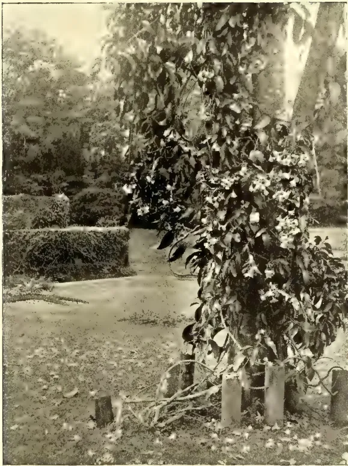
A black and white photograph of a flowering climber, Odontadenia harrisii, growing on a support in a garden setting. The plant is densely covered in leaves and small, light-colored flowers. It is trained over a wooden post and a low wall. The background shows a garden with other plants and a path.Photo by H. F. Macmillan.
ODONTADENIA HARRISII.
A BEAUTIFUL FLOWERING CLIMBER.
[Faint page: no legible print of its own could be verified; text withheld (stage 4 review list)]
This image is a scan of a blank page. The paper has a light cream or off-white color with a subtle texture. There are a few very small, faint dark specks scattered across the surface, which appear to be scanning artifacts or dust particles. No text, lines, or other markings are present on the page.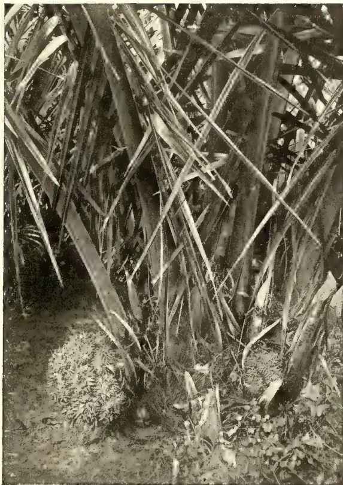
Photo by H. F. Macmillan
PHYTELEPHAS MACROCARPA.
IVORY-NUT PALM.
By E. ERNEST GREEN,
Government Entomologist.
Until a few weeks ago, I had regarded this insect as a rare curiosity. In a period of thirty years, during which I have been collecting Ceylon insects of all kinds, I had taken only three adult examples of the species. Quite recently, it has cropped up as a troublesome pest of fruit and vegetables, and numerous specimens have been sent in—almost simultaneously—from various parts of the Island, from Haputale, Nuwara Eliya, Maskeliya, Panadura, and Galle. The same species has been collected in the Kandy district.
All reports tell the same tale of serious injury to unripe fruit, especially Oranges. Other fruits attacked are:—
Tree Tomato (Cyphomandra betacea), Passion fruit, Peaches, Plums, and Cape Gooseberry (Physalis peruviana). Amongst vegetables, Beans, Peas, and Vegetable Marrows have suffered. Even Cabbages are attacked, but the damage in this case is not so marked. The insect takes its nourishment by thrusting its beak deep into the fruit and sucking the juices. The result is that the punctured fruit drops off long before it is ripe. In the case of Beans and Peas, the immature pods shrivel and wither. One correspondent writes:—"They swarm on the oranges, sometimes ten or twelve to one fruit, and suck the juice."
The species is not confined to Ceylon, but occurs also in various parts of India. In the Andaman Islands, the Nicobar Islands, Burma, throughout the Malayan Archipelago to Australia, and in Tropical and Southern Africa.
It is difficult to explain this sudden local increase of such an insect as Leptoglossus. It belongs to the bug tribe Hemiptera, a family that is generally protected by a noisome smell (and probably an equally objectionable taste.) Birds
are not partial to insects of this tribe, nor are bugs commonly subject to internal parasites. Under these circumstances, it is perhaps still more remarkable that the insect has hitherto remained so scarce. It is certainly not held in check by any restriction of food, for its taste in fruit appears to be wide and diverse. They may possibly be decimated by some fungal or bacterial disease: but the factors that govern the increase or restriction of many of our insects are still obscure.
The accompanying figure will give an idea of the appearance of the insect:—
![A detailed scientific illustration of the Paddle-legged Bug (Leptoglossus membranaceus). The insect is shown from a dorsal perspective, facing forward. It has a broad, shield-shaped body with a reddish-brown coloration. A prominent, dark, V-shaped band is visible across the front of its body. Its antennae are long and slender, extending forward. The forelegs are relatively short and stout, while the hind legs are significantly enlarged and flattened, giving it a 'paddle-legged' appearance. The wings are folded flat against its back, showing a pattern of dark spots. A vertical scale bar is positioned to the left of the insect's body, indicating its size.](dad8ddb69b3482bfdd9c96c94a0e539f_13_img.webp)
It is of a dull brown colour above, with a reddish yellow band across the front part of the body, a minute ochreous spot in the centre of each wing-cover, and a row of ochreous spots on the lateral margins of the hind-body. The whole underside is thickly mottled with reddish yellow spots, and the antennæ are conspicuously barred with the same colour. The enlarged hind legs, each with a flattened expansion on the tibia, distinguish this species from any of its allies and afford a character which suggests 'Paddle-legged Bug' as an appropriate popular name. The adult insect measures from three-quarters to seven-eighths of an inch in length.
The only common bug with which it may be confused is the 'Dadap Bug,' Anoplocnemis phasianus (see T. A., September, 1905, p. 410). That insect
67 Scientific Agriculture.530[JUNE, 1912.is somewhat similar in form but is without the paddles on the hind legs.
It must not be supposed that these paddle-like organs indicate an aquatic habit. They are merely ornamental and serve no special purpose.
The young insects resemble the adults, but are smaller and wingless.
I have not seen the eggs, but judging from the habits of allied species, they are probably deposited in clusters on the twigs and leaves of plants.
Remedial measures. Sucking insects, that draw their nourishment from below the surface of the plant, are not amenable to treatment by stomach poisons. Any such poison sprayed upon the plant remains on the surface and is not absorbed by the insect. Even if it were possible to poison the sap, the remedy would be more harmful than the disease.
Contact poisons are usually employed against sucking insects, but here again we are met by the difficulty of applying a contact poison sufficiently strong to kill such large creatures, without seriously injuring the foliage and young shoots of the plant. Kerosene Emulsion, Vermisapon, MacDougall's Solution, etc., could be used with safety and effect in the early stages of the insect, while their bodies are comparatively soft and un-
protected by wing-cases, but the pest is usually not observed until it has arrived at the mature hard-shelled stage.
Under such conditions the only practicable remedy is to collect and destroy the insects as thoroughly as possible. Every female that is killed may prevent a brood of perhaps fifty young ones. The simplest way to collect them is to beat or shake the branches over a sheet. This should be done very early in the morning or at dusk, when the bugs are comparatively sluggish. In the middle of the day they are very active and, when the branches are disturbed, will take wing and fly off to another tree. Even then they may be caught in rough nets made of mosquito netting or thin cloth, or on bamboo winnowing trays smeared with tar or some other sticky substance. This last is the method commonly employed by the rice cultivators to catch the 'Paddy bug.'
I have not had an opportunity of determining whether these particular insects are attracted by light. If they are so, the crusade could be continued by night, by exposing small lanterns placed in basins containing kerosene and water.
Whatever method is employed should be carried out thoroughly and energetically, to ensure the destruction of the bulk of the brood before the insects have desposed their eggs.
(Les principes de la circulation de l'eau dans les terrains meubles et leurs applications).—Verhandlungen der zweiten Internationalen Agrogeologenkonferenz, IV, pp. 117-124. Stockholm, 1911.)
(Bulletin of the Bureau of Agricultural Intelligence and of Plant-Diseases, 3rd Year—Number 3, March, 1912.)
According to the writer, the water contained by a tilled soil can be present in the four following conditions :
1) Capillary Condition.—The water fills all the interstices and further, each soil particle adheres to its neighbour by means of a layer of water which exercises a capillary attraction. At the exact point of capillary saturation, the mass of soil and water shows a certain cohesion and the water does not percolate.
2) Intermediate Condition.—When through trituration, the conditions are altered of a soil completely saturated with a quantity of water corresponding to the volume of the spaces between the particles, these spaces increase, and the
JUNE, 1912.]531Scientific Agriculture.water is no longer able to fill them. The water then retires and the soil particles are merely united by small drops of water; further, the particles are enclosed by a film of liquid continuous with the drops. But the air circulates between the particles and the drops.
In this condition, certain soils lose their plasticity while still retaining a certain cohesion.
3) Pellicular Condition.—When soil is continuously worked, it dries rapidly on account of the circulation of the air through the mass. The dimension of the droplets of water which unite the soil particles decreases to the point where capillary attraction ceases, and the water exists then in the state known to physicists as "superficial condition" and which we call pellicular, that is to say, it forms an invisible covering to the particles, but the soil has still a humid appearance. In this condition the particles adhere to one another as long as the film retains a certain thickness, but the soil has entirely lost its plastic property.
4) Apparently Dry Condition.—If soil is dried still further, there is no longer sufficient water to cover the particles and produce adherence, for it retires into their microscopic cracks and minute cavities; the water content of the soil, in such a case, depends upon the mineralogical nature of the particles.
From further remarks of the author, it is clear that the soils which plant roots reach are generally saturated with water in the pellicular state, except in the following cases where the imbibition is capillary.
a) In the case of the first few centimetres below the surface after fairly heavy rain, but this capillary imbibition does not however continue.
b) In less absorptive strata, such as exist at a slight depth.
c) At the level of the water-containing strata, or where these are situated little below the surface.
From this it may be deduced, that it is not enough to study, as is usually done,
the maximum absorption capacity of the soil (capillary condition) but also the method of the water circulation in the pellicular condition. A plant lives upon water and the nutritive substances dissolved in the latter, and thus diminishes the thickness of the pellicular layer in its immediate neighbourhood as a result the water layer spreads out evenly between the particles and makes its way particularly towards the roots. Generally speaking, it may be said that the amount of water and of the nutritive substances used by the plant does not depend only upon the water content of the soil, but also upon the velocity of the circulation in proportion to the quantity. The maximum rate of circulation does not, however, always depend upon the maximum of imbibition; this is especially the case in clay soils.
Every soil can be described by means of diagrams giving the proportion of water and the speed of its rise (capillary and pellicular). A combination of the two diagrams would give the optimum degree of imbibition for the development of a plant.
By this method, a rational method of irrigation and drainage could be established.
(From the Department of Agriculture Mysore State Bulletin, No. 2, 1912.)
Previous to his retirement in 1908, Dr. Lehmann, formerly Agricultural Chemist to the Government of Mysore, planned certain important experiments on the cultivation of paddy. The nature of these experiments is briefly described by him in his last, or 9th, Annual Report for the year 1907-08, pages 19-21, where he also indicates the various numbered plots that are to be used for the different experiments.
These experiments have been carried on ever since his retirement and the number and character of the results obtained now warrant their being published as a bulletin of the Department,
Scientific Agriculture.532[JUNE, 1912.Before recording the results obtained, it will be well for us to give a brief survey of the nature of the experiments and the character of the plots used.
In his 6th Annual Report for the year 1904-05, Dr. Lehmann has given a plan of the wet area of the Farm and, on the accompanying map (Plate II), the area set apart for paddy experiments is shown, as is also the way the plots have been used for the various experiments that have been carried out. As will be seen, the area is divided into two ranges, B and C. The individual plots contain each one-tenth of an acre, the smallest amount of land which may be considered sufficient for field experiments. The plots are fifty links wide and two-hundred long and are separated from each other by permanent bunds three feet wide. These bunds have, for primary object the prevention of the lateral spread of manures in the irrigation water. Each range and each plot can be irrigated and drained independently of the others and this practice is, of course, followed in all experiments.
Previous to beginning the experiments, five crops of paddy were grown under as similar conditions as possible to test the relative fertility of the different plots. In the case of the third crop, practically, no grain was produced, a phenomenon which has been reported from various parts of Mysore in unfavourable seasons and the cause for which is, at present, not known. The results of the remaining four crops were used in ascertaining the relative fertility of the various plots and only those plots which showed the greatest amount of uniformity in yield were used for immediate experiments. The others have since then been kept cropped under similar conditions, with the result that some more of them showed sufficient uniformity to be used for experimental purposes in 1910. As the experiments conducted on these latter plots are of great practical interest, the results of them are included in the present bulletin. The methods of standardising the experimental plots have already been discussed by Dr. Lehmann
in his various reports, so nothing further need be said here on that subject.
The experiments that have, up to the present, been carried out deal with the following questions:—
1. Cultivation experiments dealing with deep and shallow ploughing, ploughing the land immediately after harvest as against leaving the land unploughed till just before transplantation, sowing sprouted seeds dry, broad-cast sowing and transplantation.
2. Manurial experiments dealing with the use of artificial manures, castor poonac and green manures.
3. Rotational experiments dealing with the rotation of paddy with an unirrigated crop.
4. Seed selection by means of the so-called "salt water method."
1. With regard to paddy cultivation, the view that better results can be obtained by ploughing the land immediately after harvest than by leaving the land in stubble and ploughing in puddle immediately before transplantation, appears to be erroneous.
2. Deep ploughing has not yielded uniformly better results than shallow ploughing in paddy fields and so cannot at present be recommended. A large body of results of experiments extending over several years more will be necessary before definite conclusions can be reached on this point.
3. Green manuring can be recommended as a cheap and efficient method of increasing the fertility of paddy lands. Where two crops of paddy a year are raised it is necessary to sow the green manure seed in the paddy some one or two weeks before the harvest to allow for a sufficient period of growth. Both sunn hemp and cow pea can be recommended for use as green manures.
4. Castor cake has not uniformly paid for itself as a manure for paddy in the experiments described here but a combination of small quantities of it with
JUNE, 1912.]533Scientific Agriculture.green manure would probably prove decidedly profitable. Other and cheaper poonacs might be profitably substituted for castor.
5. Saltpetre is not a profitable manure for paddy and has produced no decided increase in the yield over unmanured plots. It has been uniformly at a great loss.
6. A complete artificial fertiliser composed of saltpetre, basic slag, potassium sulphate while producing a decided increase in the yield was, owing to the dearness of the manures, used at a great loss.
7. In general it seems fairly clear that organic manures rich in nitrogen which can be obtained cheaply or at a moderate price are the ones to be recommended for use in paddy cultivation. The results obtained by the use of milled fish in Madras bear out this statement. The use of costly artificial manures which, in the minds of many who have a smattering of information on agricultural subjects, have a special virtue, cannot at all be recommended in the light of our present experience. The use of bone meal as a manure for paddy has been shown to be advantageous in other parts of India and in Japan and might be tried with advantage here especially in connection with green manures. The use of lime in small quantities along with green manures is also a question which will receive the attention of the Agricultural Department in experiments now being planned.
8. The results of the rotation experiments are not such as to yield us definite information. It seems probable, however, that the rotation of paddy with a suitable leguminous crop would be profitable.
9. The salt water method of selecting paddy seed which is widely practised in Japan appears to be a practical method for bringing about a decided increase in the yield which can be applied at very slight expense by any land-holder or raiayat in Mysore.
As a result of a tour of inspection in the western part of the State during the autumn of 1910, it was decided to carry out demonstrations of single seedling transplantation and green manuring for paddy at various centres in the western part of Kadur District and the south-western part of Shimoga District. Later in the spring of 1911, similar work was taken up in co-operation with the Kadur District Agricultural Association in villages in the neighbourhood of Chikmagalur. The results are, at the time of going to press, only partially available but as those which have been received are decidedly interesting I have thought it desirable to include them here.
The areas that were available for single seedling transplantation were usually small but, as far as possible, areas of about one-tenth acre were selected. These have, in each case, been compared with equal areas near by which were transplanted according to the local custom. The number of seedlings usually planted together differs very greatly in different parts, varying from about seven seedlings per bunch at Yedahalli to about forty per bunch at Agumbe. The reason usually given for planting such a large number of seedlings together is the danger of the seedlings being washed away by the heavy monsoon rains. In only one case was this difficulty experienced in the single seedling plots, viz., at Nalur where replanting had to be done. It must be remembered, however, that where one officer has to conduct demonstrations of this character over a tract over thirty miles wide he cannot stop and choose the most favourable weather for transplanting in any one place.
The following table gives the results of the single seedling transplantations as far as they are up to the present available ;—
Scientific Agriculture.534[JUNE, 1912.| Place. | Extent of each plot. | Single seedling transplantation. | Local transplantation. | Percentage of increase by former practice. | |||
|---|---|---|---|---|---|---|---|
| Grain and straw. | Grain. | Grain and straw. | Grain. | Grain and straw. | Grain. | ||
| Lakkavalli | Sq. ft. 4,968 |
1,872 | 472 | 1,472 | 462 | 27 | 2 |
| Yedahalli | 4,500 | 1,473 | Not Threshed | 1,287 | Not Threshed | 14 | ... |
| Agumbe ... | 1,525 | 228 | 169 | 196 | 148 | 16 | 14 |
| Nabala ... | 5,325 | 503 | 347 | 462 | 317 | 9 | 9 |
| Megarvalli | 950 | 360 | 264 | 290 | 174 | 24 | 32 |
| Nalur ... | 950 | 400 | 150 | 225 | 75 | 77 | 100 |
| Ajjamkere | 2,700 | 360 | 257 | 350 | 227 | 3 | 13 |
| Tirulebile | 4,648 | 423 | 297 | 396 | 263 | 7 | 13 |
An examination of these figures shows throughout an increase of crop as a result of transplanting single seedlings. In two cases, the difference has been very large indeed but, as in these cases the demonstration plots were very small (about 1-50th acre), the figures lose a good deal of their value. However, in the other cases the difference in yield has been quite sufficiently marked to show clearly the superiority of single seedling transplantation and many of the landholders on whose lands these demonstrations were carried out have expressed their intention of going in for this method of planting on a large scale during the coming season.
The green manuring demonstrations were carried out on a larger scale, an acre being sown with the green manure seed
(Sunn hemp) in all cases where the returns are at present available. The plots given by the owners for sowing the green manure seed were usually very poor ones that had little or no manure the previous year. In the demonstrations here recorded, the green manure seed was sown almost immediately after the paddy harvest in December—January and was ploughed in after the early spring rains and ploughed in a week or so before transplantation. In the extreme west of the State, the early spring rains are rather uncertain and where there has been a delay in sowing the green manure crop owing to failure of early rains, it is likely to be drowned out by the heavy monsoon rains in the first or second week of June. This is the reason why the seed was sown soon after the harvest of the paddy.
The Available Results are given in the following table:—
| Place variety of paddy. | Period of growth | Extent of green manured & check plots acre | Yields on green-manured plots | Yields on Check plots under local treatment | Percentage increase by green manuring | ||
|---|---|---|---|---|---|---|---|
| Grain and straw | Grain | Grain and straw | Grain | ||||
| Yedahalli ... | 178 | Acres 1 |
lbs. 17,416 |
lbs. Not Threshed |
lbs. 12,432 |
lbs. Not Threshed |
40 |
| Agumbe ... | 186 | 1 | 7,500 | .. | 5,600 | .. | 34 |
| Nabala ... | 188 | 1 | 5,627 | 3,060 | 3,376 | .. | 66 |
| Megarvalli ... | 188 | 1 | 10,685 | 3,975 | 9,780 | 3,620 | 9 |
| Tirulebile ... | 191 | 1 | 4,823 | 2,327 | 3,564 | Not Threshed | 35 |
It will be noticed that yield of grain for only a part of the plots is given. This is because, at the time of going to press, threshing has not been completed and the yield for the other plots is, therefore, not yet available.
A word of explanation with regard to the manuring of the check plots in this series of demonstrations is necessary. These check plots were not ones that received no manure whatever but ones which received cattle manure at the rate of 8 to 12 cart-loads per acre. So the results of the application of green manure are even greater than are indicated by the figures. The fact must be emphasized that it is only in very rare cases that a landholder or raiyat has or is able to obtain sufficient cattle manure to manure all his paddy land in any one year and it is, in fact, a usual custom to apply the cattle manure to one-third or one-half the area to be planted in paddy and then the following year or years to manure that part which was not manured the year before. In this way, the land receives an application of manure once every two or three years. Thus we see that, even if the green manure produced no greater effect than the cattle manure, still its use would be of great value for, by means of it, agriculturists are enabled to manure all their land every year and thus can keep it at a high state of fertility. Probably the best plan would be to apply the cattle manure at the rate of about fifteen cart-loads per acre to as much land as can be treated with the stock available and to sow a green manure crop on the remaining paddy land. In order to preserve a green crop from the depredation of wild beasts, which are, of course, more numerous in the western part of the State, it is necessary to put a fence around it and the plan suggested above would reduce the cost of fencing in any one year to the lowest amount possible. The cost of fencing has been variously estimated at from Rs. 3 to Rs. 5 per acre. The latter figure is certainly too high and it must
also be remembered that when once fencing materials have been gathered they can be kept and used year after year. Even with the cost of fencing at Rs. 5 per acre I feel certain that the growing of a green manure crop would pay. It is possible, however, that it would pay better in those parts where danger of damage by wild beasts is great, to sow an inedible leguminous weed like Crotolaria striata even though it does not add as much nitrogen to the soil. Tests to settle this point will be carried out during the coming season.
The results of this demonstration work must be considered as very satisfactory, both as regards green manuring and single seedling transplantation. The results from the remaining plots in villages near Chikmagalur, where the harvest has not yet been completed, promise to be equally satisfactory. This extremely important work will be continued and extended just as rapidly as the staff available for the proposes will admit and efforts are being made to enlist the co-operation of Agricultural Associations and individual landholders to as great an extent as possible.
A still more striking example of the beneficial effects of green manure for paddy is given by some results just obtained on the Farm. In the case of two very uniform plots on which paddy is being grown in rotation with sugar cane, one plot was sown with cow pea as a green manure while the other was left unmanured. The green cuttings of cow pea amounted to 10,900 lbs. per acre and the resulting yield of paddy was at the rate of 2,830 lbs. of grain per acre. On the unmanured plot, the yield paddy was only 1,320 lbs. of grain per acre, so in this case the sowing and ploughing in of a green manure crop has more than doubled the yield of paddy. In this case, of course, only one crop of paddy was taken from the land in a year, so that the green manure crop had a very much better opportunity to grow than was the case with the experiments mentioned in the body of this bulletin.
536[JUNE, 1912.MINUTES of a meeting of the Committee of Agricultural Experiments held at the Experiment Station, Peradeniya, on 9th May, 1912.
Present :—The Acting Director, R. B. Gardens, the Hon'ble Mr. E. Rosling, Messrs. W. N. Tisdall, H. A. Beachcroft, M. Kelway Bamber, and the Government Entomologist (Ag. Secretary).
E. ERNEST GREEN.
Acting Secretary, Comm. Agr. Exp.
EXPERIMENT STATION, PERADENIYA.
PROGRESS REPORT.
MARCH 7TH TO MAY 9TH, 1912.
MANAGEMENT.—Mr. J. A. Holmes severed his connection with the Experiment Station on March 19th. I have proposed to Government that Mr. H. A. Deutrom should act temporarily as Superintendent, but have not yet received any instructions in the matter.
TEA.—The dadaps on plot 149 were pruned and mulched on 7th May. The weight of green material was 1,972 lbs.
The recent prolonged drought interfered with flush. There has been considerable improvement since the advent of rain in April.
Plots 146-150, which were tipped in March, yielded an average of 327 lbs. of green leaf per acre in April. The remaining plots averaged 464 lbs. per acre.
The jungle bordering the tea plots has been cut back for a distance of about 10 feet.
Weeds have recently been troublesome on account of the wet weather, and labour has not been available for dealing with them effectively.
CACAO.—Dadap stumps have been planted in most of the experimental plots with a view to replacing the old trees which it is proposed gradually to remove.
One round of canker work was accomplished. Canker has been unusually bad of late, and the cost of such a round has increased to Rs. 2.98 per acre.
The young cacao plots have been manured according to the programme authorised at the last meeting. It has been found necessary to separate the plots by longitudinal drains with catch pits. Dadaps have been supplied where necessary.
The dadaps in the young cacao plots—63-67 have been pruned, the yields for the four plots being as follows :—
| Plot 63 | ... | ... | 208 lbs |
| „ 64 | ... | ... | 64 „ |
| „ 65 | ... | ... | 485 „ |
| „ 66 | ... | ... | 208 „ |
HEVEA RUBBER.—The majority of the trees are now in full foliage, and many of them are fruiting.
Tapping is being carried out on plots 79, 80, 82 and 87.
A statement is given of the results for January, February and March from the experiments begun this year.
JUNE, 1912.]537Miscellaneous.Plants derived from seeds specially selected at Heneratgodu mainly from a single tree which yielded 240 lbs. of dry rubber in three years, have been planted out on plots 14 and 15 at a distance of 20 x 20 feet. Members may be interested to know that the same tree yielded 17 lbs. of dry rubber in February. This is believed to constitute a record up to date, although the yield for April is expected to be still greater.
The Castilloa, Ceara and other Manihot rubbers are not being tapped.
GREEN MANURES.—New plots of Cajanus indicus, Tephrosia purpurea, Indigofera anil, I. hirsuta, Soy beans and Crotalaria incana have been established.
Plots of 1/100 acre recently cut have yielded as follows:—
| Leucaena glauca No. 1 | ... 156 lbs. |
| do ,, 2 | ... 83 ,, |
| Tephrosia candida | ... 191 ,, |
MAIZE.—Seed of Hickory King has been selected from the last crop and will shortly be planted. It is proposed to try ear-row selection on an acre of ground.
A tenth of an acre has been sown with various crosses.
PADDY.—The main crop is ready for harvesting and is suffering from the wet
weather. The lateness of the crop is due to the difficulty of obtaining Sinhalese labour at the proper season.
Plots sown with specially selected seed have been harvested with the following results:—
| Plot | 1 | 2 | 3 | 4 | 5 | 6 | 7 | 8 | 9 | 10 |
| Yield per | ||||||||||
| sq. foot | 22 | 19 | 30 | 25 | 22 | 21 | 15 | 31 | 17 | 11 |
The last 4 plots were small.
Plot 3 from the best plant of the previous generation yielded at the rate of 60 bushels per acre though planted at 12" x 12", a distance which has been shown to be too great for the maximum yield.
MISCELLANEOUS.—The yams obtained from Messrs. J. P. Abraham & Bros., Heneratgodu, which were planted out in November, have just sprouted after a lapse of five months.
The ginger has been an entire failure.
Four varieties of sugar cane have been planted out in plot 17 at a distance of 6 feet apart.
The present village labour turn out is 30 to 40 per cent. short, due largely to its being the harvesting season.
The fruit plots are doing well.
R. H. LOCK.
| Total Rubber. | Average per Tree. | |||||
|---|---|---|---|---|---|---|
| Jan. | Feb. | Mar. | Jan. | Feb. | Mar. | |
| 82 C. Single V cuts started June 1911, alternate days | 2915 | 1720 | 2040 | 73 | 43 | 51 |
| 87 A. Northway serrated knife; alternate days | ... 1265 | 975 | 865 | 50.6 | 39 | 34.6 |
| 87 B. Quarters daily; alternate months | ... 3480 | ... | 2634 | 139.2 | ... | 105.3 |
| 87 C. Full herring bone do do | ... 3170 | ... | 2667 | 126.8 | ... | 106.7 |
| 87 D. do do alternate days | ... 1850 | 1735 | 1739 | 74 | 69.4 | 69.5 |
| 87 E. Quarters; alternate days | ... 1720 | 1505 | 1535 | 68.8 | 60.2 | 61.4 |
| Full herring bone. Total for 3 months | 11.101 | grammes... | 24.4 | lbs. from 50 trees. | ||
| Quarters do | 10.874 | do | ... 23.9 | ,, from 50 trees. | ||
| Alternate days; average per month | 1.681 | do | ||||
| Daily; alternate months do | 1.490 | do | ||||
Minutes of a meeting of the Board of Agriculture, held at the Council Chamber at 12 noon on Thursday the 9th May 1912.
His Excellency the Governor presided.
There were also present:—The Hon'ble Sir Hugh Clifford, Sir Solomon Dias Bandaranaike, the Hon'ble Mr. Bernard Senior, the Hon'ble Mr. P. Arunachalam, the Hon'ble Mr. Hector Van Cuylenburg, Messrs. J. Harward, E. B. Denham, R. S. Templeton, W. A. de Silva and C. Drieberg (Secretary).
The minutes of the previous meeting held on the 8th March, 1912, were read and confirmed.
Sir Solomon Bandaranaike moved and Mr. Templeton seconded the adoption of the Progress Report, which was duly adopted.
Statements of Expenditure for March and April were tabled.
Reports on the Nuwara Eliya Show were also tabled.
On the motion of the Hon'ble Mr. Van Cuylenburg, seconded by Sir Solomon Bandaranaike, the following resolution was unanimously adopted:—"That this Society vote a sum of Rs. 15,000 towards the general cost of the All-Ceylon Exhibition, to serve as a guarantee fund."
Mr. W. A. de Silva moved and Mr. Denham seconded the following resolution, which was also unanimously passed:—"That this Society vote a sum of Rs. 2,500 towards the cost of a Seed Store (for distribution of seed), Model School Garden, Silk-house and Apiary at the All-Ceylon Exhibition."
In the unavoidable absence of the writer, Mr. Fred. Lewis, the Secretary read his paper entitled "Chenas."
C. DRIEBERG,
Secretary, C.A.S.
Since the meeting of the Board held on March 7 last, the following have joined the Society as members:—The Hon. Mr. P. Ramanathan, the Hon. Mr. J. N. Tisseverasinghe, Messrs. H. M. Drummond Hay, R. P. P. Weerasuriya, S. Weerakkody, E. Buultjens, St. John Jonklaas, Ong Gyork Lin, A. J. Kellow, J. Homer Vanniasingham, Paul Peiris, and K. Kantapodi.
His Excellency the Governor has been pleased to appoint Mr. Edgar Turner to be a Vice-President, in succession to Sir W. Duff Gibbon, who has left the Island
Inspection Work.The Secretary toured in the Matara District (Morawak and Weligam korales, Gangaboda and Kandapoda pattus), visited Bandaragama and Nuwara Eliya, and addressed meetings convened at Marambe, Telijjawila, and Galapitimada.
The itinerary of Mr. N. Wickremaratne, Agricultural Instructor, Galle, included Hambantota, Tissa, Kamburupitiya, Marambe, Hapugala, Deniyaya, Pallegama, Walasimulla, Kirama, Katuwana, Tangalla, Hikkaduwa, Ambalangoda, Baddegama, Nagoda, and Akimmana.
Mr. L. A. D. Silva, Agricultural Instructor, Ratnapura, visited Marapona, Weralupe, Puswella, Kuruwita, and Eratna, and put in a week's work in the Kalutara District.
Mr. S. Chelliah, Agricultural Instructor, Jaffna, has been busy in the Eastern Province initiating work on new lines for the guidance of Mr. Sathasivam, the Instructor stationed at Batticaloa, whose time has been taken up with the experimental garden at Tampiluvil and the cotton plantation at Samanturai.
Mr. W. Molegode, Agricultural Instructor, Central Province, reports that the average of the maha crops was poorer than usual, probably due to the heavy rains during December, when the
JUNE, 1912.]539Miscellaneous.maha crop was blossoming. No damage was done by paddy flies. Rats appeared in certain parts of Harispattu and Dumbara, but did not do much harm. Mr. Molegode covered over 250 miles by road and about 225 by train during March, and his itinerary included Galagedara, Nugewela, Weuda, Pilessa, Matale, Madipola, Alutgama, Porakagama, Madawela, Palapathwela, Telдениya, Udispattu, and Urugala.
Mr. A. Madanayake, Agricultural Instructor, Kurunegala, visited Dandagamuwa, Pannala, Makandura, Kankaniyamulla, Hettipola, Nikaweratiya, Diullegoda, Palalla, Polpitigama, Ambanpola, Wariyapola, Mannekulama, and Dambeliyadda.
Mr. P. B. M. Bandaranayake, Agricultural Instructor, Hambantota, has been chiefly occupied in the large paddy area at Tissa.
Mr. Jayasuriya, Agricultural Instructor, Kegalla, is devoting his time to the gardens at Dedigama, Undugoda, Pindeniya, and Kegalla.
Mr. M. J. A. Karunanayake, Agricultural Instructor, Colombo, has been in charge of the Seed Store since his tour in the North-Central Province, which included the Nuwaragam palata, Kalagam palata, and Tamankaduwa District. He reports that gingelly (sesamum) is cultivated to a considerable extent at certain centres—e.g., Kekirawa—and that the oil finds its way to Matale and thence to Colombo. Another product that is carried outside the Province is tobacco, for which the Tamankaduwa District appears to be specially suitable. At present cultivation is practically in the hands of people from the low-country. Though coconuts do well under the bunds of tanks, the area cultivated is small, and capable of extension. The protection of the young palms from wild animals is, however, a serious difficulty. At Polonnaruwa much damage is being caused by porcupine. The area under paddy is very limited considering the large stretches of suitable land. This is particularly so in
Tamankaduwa, where the irrigable area is very great. The reasons for this state of stagnation are said to be the meagre population, the want of cattle, and the contentment of the villager with the conditions of chena cultivation, which provides him with practically all his necessaries—kurakkan, vegetables, chillies, &c. To these should be added the apathy and poverty of the people, attributable to a great extent to the malarious character of the climate. The inability of the cultivator to adapt himself to the rules and regulations laid down by the Irrigation Department often results in his missing a season, owing to his not being ready to begin the preparation of his fields when water is issued for cultivation. Only a fraction of the immense area available under Minneriya tank has yet been taken up. The restoration of Topawewa tank is looked forward to as likely to be of great practical utility. It is gratifying to hear of five or six enterprising individuals who are making a determined effort to carry on paddy cultivation on up-to-date lines, and this pioneer work is deserving of success.
The Ratamahatmaya of Beligal korale (Mr. L. B. Nugawela) reports that of the Rascadam paddy sown by him last maha, part was unfortunately damaged by the December floods, but the remainder yielded a very satisfactory crop. The village cultivators are satisfied that Rascadam is a variety that should do well in the district. The seed was procured through the Society from the Madras Agricultural Department. The field on which transplanting and manuring with bone meal was tried gave excellent results, and that in spite of the drought that prevailed early in the year. No other field in the neighbourhood gave a similar yield. In fact, on other fields there was not more than half the usual crop, while the field in question yielded two amunams (10 bushels) more than it previously did, and furnished a valuable object lesson to the cultivators.
Miscellaneous.540[JUNE, 1912.]Mr. W. Molegoda, Agricultural Instructor, forwards the following details of an experiment in transplanting paddy :—
“Four fields, each of one pela sowing extent, or about half an acre each, were transplanted as follows :—
| 1st pela, | the distance of transplanting | was 6 in. by 6 in. |
| 2nd | do | do 9 in. by 9 in. |
| 3rd | do | do 9 in. by 12 in. |
The fourth pela was transplanted in the ordinary methods, that is, at distances varying from 3 to 5 in., in bunches of three or four plants in a hole, but in the other three plots individual plants were put. The yields were as follows :—
| B. | L. | M. | |
|---|---|---|---|
| 1st plot yielded | ... | 24 | 2 1 |
| 2nd plot yielded | ... | 31 | 0 2 |
| 3rd plot yielded | ... | 20 | 5 0 |
| 4th plot yielded | ... | 28 | 7 0 |
There was scarcely any difference observable in the growth of plants in 1, 2, and 3, but in plot 4 the plants were not as robust as in the others. The cost of transplanting was Rs. 2.50 per plot. Though unfortunately no exact record of the grain sown was kept, there was a decided saving of seeds by planting individual plants. The usual return obtainable from the above four pelas when transplanted in the ordinary way is between 115 and 120 bushels, but as in the last maha season even the very best fields in the district did not give the usual return, I am well satisfied with the results obtained by transplanting.
Mr. L. A. D. Silva, Agricultural Instructor, Ratnapura District who was on special duty in the Rayigam korale, ploughed a number of fields with the “Meston” and “Goiya” ploughs at Rayigama, Wedagama, Wewita, Kalupane, and Talagala. Each field has an adjoining field prepared in the usual way by means of the native plough. The arrangements for this experiment were made by Mr. J. A. Wirasinghe, Mudaliyar of Rayigam korale, who will report results after the harvest.
Mr. M. A. Jayasinghe, Inquirer into Crimes, Nagoda, reports having raised the yield of a field from 150 to 250 bags
of paddy by using 8 cwt. of a manure mixture made up of castor cake, bone dust, and kainit. A bag is equal to 12 kurunies (1½ bushel). The sowing extent of the field is 20 bags. The manure was applied ten days before sowing.
In this connection the conclusions arrived at by Dr. Coleman, of the Mysore Department of Agriculture, are worthy of attention. He found as the result of his trials, that saltpetre is not a profitable manure for the paddy, that a complete fertilizer (consisting of saltpetre, basic slag, and sulphate of potash) is unsuitable for the same reason; that castor cake, or preferably some other cheap poonac manure, particularly if used in moderate doses in combination with green manure, is more likely to prove profitable; that cheap organic manures rich in nitrogen (such as milled fish) are to be recommended; that bone meal, particularly with green manure, may be employed with advantage; that green manuring is the cheapest and most efficient means of increasing the fertility of paddy land, and of green manure crops, Sunn Hemp (Crotalaria juncea = S. hana) and Cowpea (Vigna catiang = S. gas-mé or li-mé) are to be preferred.
The following are Messrs. Freudenberg & Co.’s reports of outturn of lint and seed from the cotton grown at Kalalgamuwa Experimental Garden :—Sea Island, 1 : 2; Abassi, 1 : 1.86; Black Rattler (No. 1), 1 : 1.93; Black Rattler (No. 2), 1 : 1.85. The cotton is being consigned to Liverpool.
Mr. C. K. Sathasivam, Agricultural Instructor, Eastern Province, reports well of the cotton experiment at Samanturai, where 10 acres of Crown land were made available. The land has been apportioned among five cultivators, who hold 2 acres each, one cultivated with cotton and the other with chena grains.
Cotton is being grown in some of the villages near Balalla garden, from where seeds have been obtained. The Agricultural Instructor in charge is having the seed cotton collected for despatch to Colombo.
JUNE, 1912.]541Miscellaneous.On the suggestion of the Government Agent, North-Western Province, arrangements are being made to start a cotton garden at Hettipola, to be planted during the next north-east monsoon rains.
The price of cotton is just at present down owing to the large American output, but this depression is not likely to last long.
Messrs. Freudenberg & Co. are arranging to have a special cotton exhibit at the All-Ceylon Exhibition in July next, and will probably demonstrate the ginning of both spinning cotton and kapok.
A very large consignment of grafted fruit plants for May planting is expected almost immediately. The demand for plants of good varieties even among members (who have the advantage of getting them at cost price) does not appear to have been yet met, and orders still continue to come in. So far good reports have been received of the different kinds of imported mangoes, but the fruiting of the oranges would appear to be delayed. The grapes that have fruited are not so sweet as they might be, and this fact has been impressed upon the nurserymen from whom plants are obtained. The sapodilla or sapota grafts have come into fruit in various places, and have proved to be of good flavour. The advantage of securing fruit from this slow-developing tree within three or four years is a very decided one.
The plants of the seedless pumelo received from Siam have all been distributed. Mr. D. J. Blazé, of Ipoh, Perak, kindly sent the Secretary a specimen of what is considered the best variety of pumelo in the Straits Settlements, believed to have been introduced from Java. The fruit which arrived in good condition, was found to be sweet almost to a fault and contained only two seeds, which do not appear to be fertile. Mr. Blazé has been written to as to the possibility of securing plants.
Mr. N. Wickremaratne, Agricultural Instructor, in a report dated March
22, states that on the suggestion of Mr. Conroy, late Assistant Government Agent, Kegalla, he took steps to plant up all the circuit bungalows in the Kegalla District with fruit trees. A consignment of grafted and seedling plants, consisting of mango, orange, rambutan, sapodilla, nam-nam, durian, pomegranate, and custard apple, was secured through the Agricultural Society. These were distributed among the circuit bungalows at Dedigama, Pinnewela, Pindeniya, and Undugoda, and some were planted in the Kegalla garden. Another consignment to replace the failures is expected in May. These gardens will in time be centres for the distribution of plants and seeds, as the circuit bungalows are associated with the Village Tribunals, to which so many people flock. Fruit nurseries are being laid down in the Kegalla garden, and similar nurseries will be established in connection with the other gardens. Already a number of residents in the district are taking up fruit cultivation, now that they know where to get the plants they want.
The paddy fly (Leptocorisa linearis) did serious damage to the crop in the Hambantota District during the early part of April. On receipt of a telegram from Mr. Harry Jayawardane, Mudaliyar of Giruwa Pattu West, Mr. N. Wickremaratne, Agricultural Instructor, was directed to proceed to the spot. Leaflets in the vernacular, containing instructions how to deal with the pest, were freely distributed, and Lefroy's bag for capturing the fly was used wherever practicable. The Instructor reports that it is usual for the fly to make its appearance between February and May, but its occurrence in such large numbers is attributable to irregular sowing, resulting in the fields blossoming successively instead of simultaneously, and so allowing the fly to migrate from field to field. The pest attacks the ears at a particular stage, that is, just when the grain is setting, so that once the seed gets past this stage and hardens it is practically safe. Lefroy's bag has been
Miscellaneous.542[JUNE, 1912.used with good effect in South-India, where the Secretary with Mr. Wickremaratne saw it worked, and a trial of it made in the North-Central Province gave satisfactory results.
Specimens of grape leaves and insects found to be destroying them in the Bandaragama experiment garden were submitted to the Government Entomologists who reported as follows:—
“The insect consisted of a few membracidae, a small hymenopteron, and two chrysomelid beetles. It is the latter that are responsible for the damage to the vine leaves. The chrysomelids are nearly all destructive pests, and have the habit of riddling leaves in this manner. Spraying with arsenic will kill the beetles; but as there are objections to the employment of mineral poisons, it would be more convenient to use a deterrent, such as Bordeaux mixture. This will not kill the insect, but will render the foliage unpalatable, which is all you want.”
Mr. Green, reporting on specimens of insects submitted to him by Mr. A. Madanayake, Agricultural Instructor, North-Western Province, as found on cotton plants at Balalla experimental garden, writes: “The insect is the common ‘red cotton stainer’ (Dysdereus cingulatus). The best course is to collect and destroy the insect by hand. This may be done by a winnowing tray and a small tin containing kerosine. The tray is held under the plants, which are then tapped or shaken. The insects fall into the tray and are dropped into the tin of oil. Any insecticide strong enough to kill the insect would be injurious to the plant. If the lint is infested by the insects, they may be driven off by exposure to the sun.”
In his despatch No. 70 dated February 20, the Right Hon. the Secretary of State forwarded to His Excellency the Governor the following report from Professor Dunstan, Director of the Imperial Institute:—
“The consignment of margosa seed, which is the subject of this report, was
forwarded to the Imperial Institute by the Secretary of the Ceylon Agricultural Society, and is referred to in his letters No. 512 dated February 27, 1911, and No. 2,614 dated September 30, 1911. The seed was forwarded at the request of the Imperial Institute in order that its commercial value might be ascertained.
“The consignment weighed about 3 cwt., and consisted of unshelled seeds, each composed of a thin woody shell and a single soft oily kernel. The seeds were in very good condition on arrival at the Imperial Institute, and showed no signs of mouldiness or ‘heating.’ The kernels were yellow internally, and had the odour of garlic, which is characteristic of margosa kernels.
“The consignment was forwarded to a large firm of soap makers, who had expressed a wish to carry out technical trials with margosa seed. After making a detailed examination of the seed the firm furnished the following report:—
The seeds consisted of shell 54·2 per cent. and kernel 45·8 per cent. The kernels were found to have the following composition:—
| Per Cent. | |
|---|---|
| Fat ... | 59·25* |
| Moisture ... | 4·65 |
| Proteins ... | 20·53 |
| Carbohydrates ... | 9·10 |
| Ash ... | 3·44 |
| Woody fibre ... | 3·03 |
* Equivalent to a yield of about 31 per cent. on the whole seeds.
The fat was of soft consistence. When extracted by a solvent from the kernels it was yellowish in colour, but when obtained by crushing the entire seed it was dark greenish-brown. The fat obtained by the latter method was found to have the following constants:—
| Per Cent. | |
|---|---|
| Saponification value ... | 193·90 |
| Free fatty acids, expressed as oleic acid ... | 5·37 |
| Unsaponifiable matter ... | 0·34 |
| Glycerine ... | 9·61 |
The fatty acids were examined, with the following results:—
| Per Cent. | |
|---|---|
| Specific gravity ... | 0.8569 |
| Iodine value, per cent. | 66.70 |
| Titer test | 40.80°C. |
The crude expressed fat furnished a soap of inferior yellowish-brown colour. After refining the fat was lighter in colour, and gave a fair, dull, greenish-yellow soap. The colour of the fat and of the soap made from it are, however, very poor.
“The manufacturers stated that the smell of garlic given off by the seeds was almost intolerable when they were heated before being crushed, and would render it quite impossible to express the fat from these seeds on a large scale in any oil mill situated in a town. They added that the oil on account of its odour would command only a relatively low price, unless the smell could be removed by treatment with superheated steam or otherwise.
“It will be seen from the above results that the fat expressed from these margosa seeds from Ceylon was of poor quality for soap making purposes, chiefly on account of its dark colour and very unpleasant odour. A further examination of the fat is being made at the Imperial Institute to ascertain whether the odour can be removed by any simple process; but taking into consideration the fact that some such treatment would always be necessary, and that only a small quantity of seed appears to be available, it seems unlikely that a market can be found in Europe for margosa seed from Ceylon.”
Professor Dunstan, writing to His Excellency the Governor under date February 16, considers that there are good prospects for an export trade in mee kernels (Bassia longifolia). He points out that Indian mowra kernels (Bassia latifolia) realize £11 per ton in the United Kingdom, and mee kernels being richer in oil should fetch £1 to £2 in excess of this price. Two hundred-weights of the kernels have been des-
patched to the Imperial Institute for technical trials, which are now in progress.
Considering the important position to which the coconut industry has attained it is a matter for regret that there are still so many cultivators who cannot see the advantages of a better system of cultivation. With a view to improving, or at least attempting to improve, the scandalously neglected coconut gardens to be found in the villages, the Secretary has issued a leaflet in the vernacular, entitled “Hints to the Village Coconut Cultivator,” in which the advantages to be gained by greater attention of the trees are set forth, and how this may be done is explained. Copies are available for free distribution. The following is the English text:—
One of the commonest mistakes in coconut cultivation is too close planting. You must not suppose that by putting as many plants as possible on an acre you will increase their produce. Plants want light and air, which they do not get when closely planted. Again, the roots require a certain ground space for their proper development, and from which to obtain their food. To restrict this area means to reduce the food supply. The usual distance for planting coconut is 25 ft. by 25 ft., which gives about 70 trees per acre; but in native gardens they are allowed to grow much closer together, so that from 80 to 100 trees are not uncommonly found on one acre. Even 25 ft. by 25 ft. is now considered to be too close, and for the best results 30 ft. by 30 ft. is reckoned the proper distance; this gives 48 trees per acre. A small number of well cultivated trees will give a better yield than a large number of trees crowded together on the same area.
It is of great importance to select good seed for planting in your nurseries. By taking a little trouble in this matter you will gain much. Remember that the seed nut contains the germ of the future tree, and that if your seed nuts are not good, you cannot expect to have robust
Miscellaneous.544[JUNE, 1912.and prolific tress. The difference in the cost of a good and bad seed nut is only a few cents, and it is better to incur the extra cost than to later on lose a great deal by the cultivation of inferior trees. Consider that the seed nuts you plant are to produce trees that are intended to serve you and your descendants for from sixty to eighty years, and do not grudge the extra expense of getting good nuts for planting.
Another common mistake is not planting the seedlings sufficiently deep. A hole not less than 3 ft. cube should be provided for each plant and the nut of the seedling should be from 6 to 12 in. below the surface, according as the soil is heavy or light. Put only good surface soil into the hole when planting.
It is a great advantage to have the land clean from the beginning, since the trees come to maturity much sooner, the cost of maintenance is reduced, and facilities are provided for proper tillage and for dealing with pests of all kinds. If it is necessary to allow grass to come up on the land for cattle pasture, leave a circle of at least 6 ft. radius around each tree free from all vegetation, and always keep this area in good tilth.
In manuring a tree (whatever may be the manure) do not pile it round the trunk. The feeding roots are not to be found there. Therefore, in applying manure leave a space of at least 3 ft. radius from the trunk and apply the manure in the outer space of 3 ft. width. Before manuring the surface soil in this area should be scraped away till the rootlets are seen, then the ground should be loosened by means of a fork, and the manure spread and covered up with the surface soil previously removed. If only cattle manure is to be used, 12 or 15 baskets per tree should be given, but this is seldom possible. By reducing the cattle manure to 5 or 6 baskets and adding 4 lb. bone meal, 2 lb. crushed bone, 4 lb. crushed fish, and 4 lb. kainit, good results will follow. This manuring should be done every other year, and it is advisable to dig or plough up the soil every alternate year and apply lime at
the rate of 5 or 6 lb. per tree. The coconut palm responds readily to manuring, and may be reckoned upon to repay the cost of manure, provided it is carefully applied and proper tillage practised. Manure without tillage is almost useless. Advantage should be taken of the beneficial action of leguminous plants (such as pila, hana, &c.), either to grow them between the rows of palms (which could be done before the trees completely shade the ground), or collect the green stuff from outside and apply it to the land. By tillage and manure on the lines indicated it should be possible to raise the yield per tree from 15 or 20 nuts to 45 or 60 nuts per annum.
To assist the coconut palm to withstand drought, keep the surface soil all over the land, or at least round the tree, constantly stirred so as to break up the passages by which water is drawn up to the surface and carried away as vapour. Another good practice is to mulch round the trees with any kind of decaying matter, and in this way protect the ground from the desiccating action of the sun.
The cultivation of sugar cane for sugar production, for some years confined to the Galle District, is now entirely a native industry, which the Agricultural Instructor of the Province reports is profitable under the conditions it is conducted. He furnishes the following details. The cost of cultivation per acre does not exceed Rs. 40 to Rs. 45; the yield at the first cutting is about 20 cwt. crude sugar and 40 gallons of treacle, the market value of which would be about Rs. 210. The cultivator delivers his canes at the nearest mill and gets two-thirds of the output of sugar. It is suggested that a better variety of cane should be introduced, but this has already been done by the Society by the introduction of the cane registered as "B 208," cuttings of which are now growing in a nursery.
Mr. N. A. S. Jayasuriya, of Meetiya-goda, Hikkaduwa, writes in high praise
JUNE, 1912.]545Miscellaneous.of the cluster sweet potato introduced by the Society from New South Wales about two years ago. Sweet potatoes are, as is well known, extensively grown in the Southern Province, and the introduction of this new prolific variety is much appreciated by cultivators. The same correspondent reports having raised 12 lb. of soy beans from an ounce of seed procured from the Society. He has distributed the seed with a view to encouraging cultivation on chena lands.
Mr. L. A. D. Silva, Agricultural Instructor, is getting pepper cultivation taken up in the villages in the Ratnapura District.
Mr. E. R. Gooneratne, Gate Mudaliyar of Galle, who is keenly interested in sericulture, has offered a site for a silk farm in the Southern Province. The offer is under consideration pending a consultation with the management of the Peradeniya silk farm.
The Nuwara Eliya Agri-Horticultural Show, which is an annual fixture, was held on April 8 and 9. The reports of judges are laid on the table; the exhibits were up to the usual standard.
Arrangements for the forthcoming All-Ceylon Exhibition are well in hand, and if the season is not marred by rain there should be a very attractive display. Mr. E. B. Denham, C.C.S., has been appointed Joint Secretary, as it has been found that the duties of the Secretary are quite beyond the scope of one officer.
C. DRIEBERG,
Secretary.
Colombo, May 9, 1912.
(From the Queensland Agricultural Journal, Vol. XXVIII., Pt. 4, April, 1912.)
As a good deal of misunderstanding exists as to the real meaning of the term "dry farming," now the opportunity has presented itself, an explan-
ation of it will be given. The term originated in America, and was used in order to distinguish all farming dependent on rainfall from that carried out with irrigation, the latter being termed "wet farming." Though the meaning is the same, and its application has not been restricted, it is now generally used to designate farming in districts where the rainfall is limited or erratic, and where the energies of the farmer to be successful must be devoted to the conservation of moisture in the soil in such a manner as to be available to the crops when required. There have been and still are, many systems advised in order to bring about such results, but no hard-and-fast rule can be laid down, as so many factors present themselves which have different influences requiring different methods of procedure.
The remarkable results attained by Professor Campbell with his system led to its being given world-wide publicity, with the result that it came under the notice of the Department of Agriculture, and immediate steps were taken to ascertain by practical application the relative value of the system as applied to Queensland conditions with the result that a sub-surface packer was ordered, and the present experiments at this farm laid down in 1907.
Up to this last season the results could not be said to bear on the value or otherwise of the system, as the seasons in some instances were excessively wet, in another rust destroyed the crop, and in another hail greatly depreciated the yield. Last season (1911) the conditions were ideal, as from the time the crop was sown until it was out in ear—a period of four months—only eleven falls of rain were experienced, giving a grand total of 1.55 in., equal to .15 each fall. From then until the crop was harvested (17th October), 2.18 in rain was recorded. The yield was 19.2 bushels to the acre, the variety being Bunge No. 1. The preparation of the seed bed, which was commenced in December, 1909, necessitated the following previous to being sown on 8th May, 1911:—
69Miscellaneous.
546
[JUNE, 1912.
| £ | s. | d. | |
|---|---|---|---|
| Ploughing, four times, at 5s. 9d. per acre ... |
1 | 3 | 0 |
| Harrowing seven times, at 9d. per acre ... |
0 | 5 | 3 |
| Cultivating two times, at 3s. 2d. per acre ... |
0 | 6 | 4 |
| Packing one time, at 2s. per acre ... |
0 | 2 | 0 |
Total cost preparation... £1 16 7
In addition to the preparation, the crop was harrowed twice during growth.
The approximate cost, of producing the crop was as follows per acre:—
| £ | s. | d. | |
|---|---|---|---|
| Preparation of seed bed, per acre | 1 | 16 | 7 |
| Harrowing, twice during growth, 2 at 9d. ... |
0 | 1 | 6 |
| Seed, bushel, at 5s. ... | 0 | 2 | 6 |
| Manure, cwt.; at 6s. ... | 0 | 4 | 6 |
| Drilling rate, 8 acres, day labour 1 Man, at 6s. 6d. ... |
0 | 0 | 9 |
| 3 Horses, at 2s. 6d. ... | 0 | 0 | 11 |
| Harvesting rate, 8 acres, day labour 3 Men, at 6s. 6d. ... |
0 | 2 | 5 |
| 3 horses, at 2s. 6d. ... | 0 | 0 | 11 |
| Bags ... | 0 | 3 | 0 |
| Twine... | 0 | 0 | 1 |
| Wear and tear, machinery ... | 0 | 0 | 6 |
| Oil ... | 0 | 0 | 3 |
Total cost production ... £2 14 0
Value of crop, 19 1-5 bushels,
at 4s. ... 3 16 9
Profit per acre ... £1 2 9
Though, as before stated, the seasons and other circumstances have prevented any real definite results being obtained with this system, this has not prevented a comparison being obtained with other portions worked under methods looked upon as being suitable for the district. So far, the results do not point in favour of the adoption of Campbell's system as advocated, as the annual yields have been equal to and in some instances better than the biennial yields off the Campbell block for half the labour expended in preparation.
Though such is the case, the soil moisture analyses for the twelve months ending November, 1911, of four classes of land, made by the Agricultural Chemist (Mr. J. C. Brunnich), demonstrate the efficacy of Campbell's system as a moisture conserver, as a perusal of the following tabulated list will show:—
| Month. | Grass Paddock— Virgin Soil. |
Ordinary Cultivation. | Campbell's Dry System. |
Bare Fallow. | Rainfall between Samples. .77 9.72 5.39 1.14 .04 .49 1.39 .74 .05 1.29 1.83 |
||||||||||||
|---|---|---|---|---|---|---|---|---|---|---|---|---|---|---|---|---|---|
| 6" | 16" | 26" | 36" | 6" | 16" | 26" | 36" | 6" | 16" | 26" | 36" | 6" | 16" | 26" | 36" | ||
| December, 1910. | 7.99 | 7.90 | 7.57 | 6.92 | 7.51 | 16.61 | 14.39 | 13.50 | 12.10 | 12.40 | 13.51 | 14.35 | 8.30 | 9.05 | 9.71 | 11.90 | |
| January, 1911 | 15.6 | 26.6 | 12.6 | 11.45 | 8.7 | 15.2 | 10.5 | 10.7 | lost | 19.2 | 18.05 | 16.9 | 11.1 | 15.1 | 13.9 | 14.1 | |
| February | 6.30 | broken | 11.60 | 11.62 | 7.03 | 16.55 | 14.75 | 13.92 | 14.79 | 20.02 | 19.10 | 17.55 | 9.52 | 18.56 | 15.64 | 14.35 | |
| March | 5.08 | 5.44 | 9.45 | 11.04 | 6.70 | 12.71 | 9.90 | 10.42 | 12.36 | 17.43 | 17.11 | 17.84 | 10.64 | 9.65 | 8.99 | 13.19 | |
| April | 15.84 | 6.77 | 6.98 | 7.90 | 12.20 | 13.76 | 12.75 | 13.02 | 10.45 | 19.19 | 16.75 | 16.56 | 11.40 | 10.42 | 11.50 | 17.25 | |
| May | 10.72 | 10.39 | 9.38 | 6.90 | 7.87 | 15.53 | 14.24 | 13.26 | 12.30 | 17.96 | 16.83 | 15.81 | 10.56 | 11.55 | 11.32 | 12.70 | |
| June | 1.65 | 7.80 | 7.80 | 9.40 | 4.84 | 12.62 | 12.20 | 11.05 | 8.22 | 14.60 | 15.80 | 12.80 | 4.90 | 14.50 | 14.95 | 14.10 | |
| July | 2.97 | 9.05 | 8.25 | 8.26 | 6.56 | 8.62 | 9.38 | 11.40 | 4.37 | 13.48 | 11.9 | 13.85 | 7.0 | 11.10 | 12.68 | 18.9 | |
| August | 4.82 | 8.82 | 8.21 | 7.33 | 7.75 | 12.98 | 11.96 | 12.63 | 15.40 | 18.40 | 15.05 | 15.45 | 13.55 | 14.75 | 13.53 | 14.29 | |
| September | 9.54 | 8.28 | 5.85 | 9.71 | 9.24 | 13.50 | 11.77 | 11.37 | 16.75 | 15.08 | 14.0 | 14.10 | 12.52 | 10.89 | 9.96 | 13.42 | |
| October | 11.45 | 8.45 | 7.43 | 7.34 | 10.36 | 12.30 | 12.40 | 14.20 | 12.48 | 14.51 | 15.18 | 15.63 | 11.83 | 13.63 | 12.52 | 14.81 | |
| November | 1.83 | 5.99 | 7.71 | 6.72 | 4.35 | 7.62 | 10.20 | 9.6 | 6.05 | 6.26 | 11.45 | 12.80 | 9.09 | 14.50 | 13.50 | 13.64 | |
| Average | 8.06 | 9.54 | 8.56 | 8.71 | 7.75 | 13.16 | 12.03 | 12.08 | 11.66 | 15.71 | 15.34 | 15.30 | 10.03 | 12.80 | 12.35 | 13.96 | |
BY M. E. COUCHMAN, I.C.S.,
Director of Agriculture, Madras.
(From the Agricultural Journal of India, Vol. VI., Pt. III, July, 1911.)
At the Sixth Annual Session of the South India Association, Madras, Mr. M. E. Couchman, I.C.S., Director of Agriculture, Madras, read a paper on "Difficulties in the Improvement of Indian Agriculture." He said:—
"The object of this paper is to allay the impatience which finds occasional expression that more rapid progress is not being made in the improvement of Indian Agriculture. This criticism comes from the educated classes. The general attitude of the Agricultural classes towards the department is still that of the land-holders of another province, who, when summoned to meet the head of the province in conference and asked what their wants were in Agricultural matters, replied more land, more water, and to be left alone by the Government.
"I have therefore, taken advantage of your invitation to place before you as the representatives of the educated classes of Madras some of the reasons why progress in the introduction of agricultural improvements must always be slow and especially so in India.
"In doing this, I shall not dwell upon the ordinary administrative difficulties which impede all branches of Indian administration and especially those who seek to remove long-standing prejudices or to change old customs and have to rely only on persuasion to achieve their objects. You are familiar with all these difficulties. You know the dislike and suspicion of official interference which are still so strong in the villages. The Tamil proverb that a village which is often visited by the king will never prosper, is still representative of the ideas of the average villager. It is easy to make too much of these difficulties; although we have but a very small establishment as yet, we find that a properly trained and sympathetic sub-
ordinate who really knows his business can, without very much difficulty, gain the ear of the cultivating classes and persuade them to try our suggestion, provided he has some real improvement to recommend to them. The difficulties which I shall try to describe to-day are those of general application fundamental to the subject.
"In Tolstoi's great book, Anna Karenina, there is a vivid description of the various hindrances that an educated man meets with when he tries to influence his tenants to adopt what seem to him more up-to-date methods of agriculture.
"Constantin Levin bought a hay-making machine. The man who drove it disliked the long arms of the machine waving over his head and took steps to put it out of order. He bought English ploughs but his peasants broke them because they were too lazy to lift them up when turning at the end of the furrow. He imported English cattle but they were suffered to die for want of ordinary attention. He set apart a portion of a field for seed, but his men cut this before it was ripe, because it was the easiest to cut. In another of his books Tolstoi lays his finger on the right place, when he says that an agricultural reformer must first study the mind of the peasant, because this is the most important of all agricultural conditions, and it is this which we must study before we consider the other elements of the problem.
"Superficial observers in all countries are in the habit of deriding the farming classes as ignorant and obstinate, blindly following the obsolete practices of their forefathers and inasmuch as farmers seldom write books, judgment goes against them by default: I should like you to consider for a moment why it is that farmers as a class are more conservative than the rest of the world and whether they are wrong in being so.
"A farmer is brought up on the land from his earliest days. Year after year he witnesses the same majestic procession of the seasons. The same crops are
Miscellaneous.548[JUNE, 1912.sown and harvested at the same times. Every act of his life is guided by the regular and unvarying movements of nature, and the farmer himself may be said to be a part of nature's system. It is far otherwise with the physician, the lawyer and the merchant. They have necessarily to study the fickle thing by whose favour they live,—human nature with its thousand varying modes and fancies. Their minds are, therefore, necessarily always on the alert for signs of change. One year a doctor must, if he wishes to be popular, recommend the operation for appendicitis. Another year he must insist on the virtues of the Bulgarian milk bacillus. The piece goods merchant knows that the pattern which sold last year may be out of favour this year. There are so many lawyers here that I should be afraid to give specific instances for that profession, but I believe I am right in saying that different clients require different handling and, with due respect, the same may be said of the judges themselves. It is, in fact, our occupations which mould our characters, and the occupation of a farmer is such as to make him a conservative. Looking into the matter more closely, we must admit that very often change is uncalled for in agricultural methods. It is contrary to human nature to expect the average man to incur exertions in excess of what suffices for his needs. So long as he can live comfortably on the scale demanded by his standard of living, there is no need for change. Life in many parts of India is still so simple that over large tracts there is no call for agricultural improvement. The need for improvement only arises because even the remotest villages are connected up with the outside world, which is always changing.
"To foresee the need for change, to recognise the slight indications which herald its advent, requires not only a scientific training but very special gifts of insight and imagination. A common error is to suppose that because the peasant gives an absurd reason for rejecting a proposed change in his
methods, his opposition to it is irrational. He may know by instinct that the suggested improvement is no improvement at all, because it is out of harmony with his general system of cultivation, but he would never be able to express this idea and hence gives the first reason which comes into his head. Most of the critics of the farmer's conservatism are ill-equipped for the task of setting him right, and every language probably has old stories, the moral of which is that the man who listens to his neighbour's advice comes to a bad end.
"One difficulty, then, common to all countries, is that the farming classes are necessarily conservative and are usually right in being so. When, therefore, we have a real improvement to put before them, they are apt to turn a deaf ear.
"This difficulty is present in a special degree in India where not only are all classes more conservative than in the West, but the separation between the educated classes and the agricultural is more complete than elsewhere, resulting in a want of knowledge on the one side and of confidence on the other. The agricultural department has a double task to overcome this difficulty. It has to try to interest the agricultural classes in education and the educated classes in agriculture.
"Only second to the difficulty of overcoming the conservatism of the farmer comes the difficulty of finding improvements which can be safely recommended to him. Occasionally the example of the agricultural departments of other countries is held up to us for imitation. It should be remembered that the agricultural department of a country like America or Africa has an easy task before it compared with ours. In those countries the farmers are still opening up virgin land, or only just beginning to feel the need for intensive cultivation. The experts of the Department have the experience of older countries to guide them in their work. The farmers of new countries are many of them not professional farmers at all but adventurous spirits who have been attracted
JUNE, 1912.]549Miscellaneous.to the new country by a love of adventure or the hope of making a fortune. They are, therefore, in need of advice and are anxious to have it. Moreover, the ailments of youth are easier to cure than those of age. The agricultural experts of those countries may be compared to physicians treating a child for a case of measles. In India we are prescribing for a patient of advanced age suffering from general debility. The farmers of this country have behind them the experience of thousands of years of cultivation and have therefore learnt all that actual experience can teach them. There is nothing new in this country. We have lately been told that even aeroplanes were known in India long ago. It is a fact that painful experience has already taught nearly all that there is to learn about the seasons and the management of the soil, though by no means all the cultivators follow their better judgment. This knowledge is unevenly distributed, and one task of the department is to introduce good practices from one part of the country into another. Another field of work, of course, lies in those matters, where physical science has discovered facts which the experience of practical farmers could never come across. The field of possible improvement is, however, far narrower than in new countries and progress must, therefore, be slower. I may, however, point out that in countries where politics enter into agriculture, the reports of the agricultural department cannot safely be taken at their face value. We do not know what the farmers of those countries really think about them. Another very important point the force of which will be felt more, as soon as we have come to the end of the few obvious improvements which can be discovered without any research, is that all scientific agriculture, and all agricultural literature up to the last few years, deals with the agriculture of temperate climates, and is founded on research work done outside the tropics. Hence in India we have to throw away almost all our knowledge of applied agricultural science, and fall
back on first principles, and work out our proposed improvements from the beginning. For example, many of the methods, which farmers follow in England for cleaning the land and preparing the soil to receive the seed, are based upon the effects of the severe European winter, and quite different methods have to be worked out here. As regards research, the number of scientific men in India is so small and so much of their time is at present taken up in work of organisation and teaching that little time remains for research. We must have patience till we have produced an Indian school of agriculture with a numerous body of workers. It is seldom that any great discovery is made at one step by one man. The competition and co-operation of many men devoted to the same studies is necessary before much progress in agricultural research can be expected. We must learn before we can teach. Many years of research and experimental work will be required before we can fully understand the agricultural practices of Indian cultivators, and till we do understand them, any improvements we may be able to make in them will be due more to good luck than to a solid foundation of real knowledge.
"I may then sum up the chief difficulties which hamper the progress of Agricultural improvement, as, first, the want of knowledge regarding Indian agriculture. Second, the fact that in India so much practical knowledge has already been discovered by the experience of generations that there is less scope for a rapid advance than in new countries; and thirdly, that the Indian cultivator possesses in an intensified form the conservatism of the farmer common to all countries, and that, owing to the separation of classes here, the difficulty of breaking down that conservatism is greater here than elsewhere. The last difficulty, however, is the least of the three. Our experience is that the Madras cultivator is by no means unwilling to take up a new thing if it is really an improvement. The rapid
Miscellaneous.550[JUNE, 1912.spread of Cambodia or American Cotton in Tinnevelly, Ramnad, and Madura districts in the last few years is a most encouraging sign that a really good new crop can be introduced very rapidly.
"For introducing such improvements as can already be safely recommended we need more trained men. To remove the difficulty of want of knowledge, we want more workers in the field of research. Ample facilities have been provided for both purposes at Coimbatore. As I have pointed out on a recent occasion, the prospects from a pecuniary point of view are not to be despised, especially when it is remembered that the department is a new and expanding one. For a man of means who is on the look-out for an interesting and useful career I cannot imagine one which has more attractions.
"What I would ask our critics to bear in mind is this. It is far from easy to point to positive improvements suitable for any particular village without knowledge of the locality. We are often pressed to send itinerant lecturers broadcast through the villages and it is assumed that qualified lecturers are to be had at a moment's notice and that agriculture can be taught by lectures in the same way that law or arithmetic is taught. Agriculture is an applied science, and its application must vary in a great or less degree with every small variation of local conditions. Lecturers on the general principles of agriculture would be useless to ryots who are not used to deducing their practice from theory. The only thing which appeals to them is definite advice. If a new crop is to be recommended to them, the exact kind of soil suitable for it, the exact time to sow it, the exact method of cultivation must be laid down, and if the advice given is, owing to any special circumstances in the village, impracticable, the cultivator will conclude that his would-be adviser does not know his business and will not listen to him.
"And it is absurd to blame him for this attitude. He cannot afford to engage in an experiment. You will see,
therefore, how it is not possible for a lecturer to start-to-night from Mylapore and lecture to the ryots of Ganjam on paddy cultivation if he has not been there before and does not know the local practices and seasons. We must in short learn before we can teach, and we must not blame the cultivators if they are somewhat hard to persuade. Time and patience will overcome both difficulties. The essential thing is to avoid giving ill-considered advice which would retard all progress indefinitely."
(Bulletin of Agricultural Statistics—January 1912).
The January number, which commences the third volume of the Bulletin of Agricultural Statistics has been published to-day by the International Institute of Agriculture, (Villa Umberto I, Rome).
The figures referring to the cereal harvest in the Southern Hemisphere, are the same as those published last month, with the addition of a few data of the probable harvest area.
A small table gives the areas sown to wheat, rye, barley and oats during the past autumn.
The areas sown to wheat, compared with the areas sown during the corresponding period of 1910 are as follows: Belgium 104 %, Spain 95 %, France 112.1 %, Great Britain 106 %, Canada 97.1 %, United States 98.7 %, India 99 %. Sowing, which is now finished, was done, on the whole, under good conditions, and germination is uniform.
The final returns of the cereal harvest in 1911 are given for Norway, Sweden and Canada. In the latter country the wheat harvest is given as 58,746,008 quintals, and oats as 53,697,553 quintals being 143.9 % and 107.6 % respectively of the previous year's crops.
Figures for the production of wine in the whole of France have now been received, and show a total production
JUNE, 1912.]551Miscellaneous.44,885,550 quintals as compared with 28,529,964 quintals in 1910. The single Numerical Statement of the production of wine in Spain, France, Hungary, Italy, Luxemburg, Roumania, Switzerland, Algeria, and Tunis is now 141.2% as compared with 136.4% last month.
The Bulletin also contains a table showing the production of cotton in the United States, Mexico, India, and Egypt, which four countries produce some of the total cotton crop of the Northern Hemisphere. The production in 1911 was as follows: United States 32,303,378 quintals; Mexico 347,420 quintals; India 5,628,176 quintals; Egypt 2,860,012 quintals, giving a total of 41,139,086 quintals or an increase of 15.8% above the production of the same four countries in 1910.
January 20th, 1911.
(From the Journal of Royal Society of Arts, May, 1912.)
One of the great sources of future wealth in Honduras will be found in the forests where mahogany grows, as there are thousands of acres where the timber is to be found in its primitive isolation. The fact that the mahogany forest, or even the mahogany grove, is non-existent makes for the high value of the wood. True, mahogany is the familiar dark coloured hard wood largely used for household furniture, supplied by a tree native in Mexico, Central America, Panama, Colombia, Venezuela and the Caribbean Sea. The tree sometimes grows to a height of one hundred feet, with a diameter measurement of twelve feet. Frequently trees are found that five men joining hands cannot circle. A decoction made from the bark was considered a remedy for fever, while the Aztecs used the seeds as one of the ingredients of a cosmetic. Its period of growth covers, perhaps, two hundred years, which fact, in connection with the limited area where mahogany is found, makes difficult the compilation of accurate data descriptive of the botanical history of the tree. Accord-
ing to a recent report by the International Union of American Republics, the principal false mahoganies are African or Senegal (the true tree grows in Nigeria), Australian (a eucalyptus), Ceylon Mahogany, Indian (the toona tree in Bengal), Madeira mahogany (Persea indica, or canary wood), bastard mahogany, and in the United States, California and mountain mahogany. Logging for mahogany is carried on to-day in the same primitive manner that served in collecting the wood in early days. In the main it is the process used in the forests of the United States and Canada, with minor modifications because of special climatic conditions. Fortunately the trees are found near the coast. The trees are cut in the rainy season. A man climbs to the highest limbs that will afford him the best view of the forest. He marks down the mahogany by its conspicuous yellow-reddish leaves, then descends and leads the cutters through the jungle, hacking a road as they go, till the mahogany tree is found. Then saws and axes are applied always at the time of the waning moon. The superstition that calls for the cutting of the trunk by the light of the waning moon is based on good botanical grounds, for experience has shown that the mahogany tree is freer from sap, sounder, and of a richer colour at that period. And the cool of the night offers the best time for the hard work, so the wisdom of the custom is apparent. The hauling of the fallen trunk to a stream is the work of oxen still, and must be done in the dry season when the ground is hard. Once in the stream, a raft is made, and floating is carried on just as in any logging country. At the ship's side the logs are immediately hoisted aboard to avoid the ravages of the boring toredo. London is the great mahogany market. It is well known that the wood is noted for its hardness, durability, beautiful colour and grain, and in the diversity of these qualities lies the value of the hewn trunk. There are two main differences in grain pattern, the close-grained mahogany, the best of which comes from Cuba and Jamaica, and the wide-grained, also known as baywood, the mahogany of Honduras.
552MARKET RATES FOR TROPICAL PRODUCTS.(From Lewis & Peat's Monthly Prices Current, London, 24th April, 1912.)
| QUALITY. | QUOTATIONS. | QUALITY. | QUOTATIONS. | ||||
|---|---|---|---|---|---|---|---|
| ALOES, Socotrine cwt. | Fair to fine | 65s a 70s | INDIARUBBER. (Contd.) | Common to good | 1s 9d a 2s 9d | ||
| Zanzibar & Hepatic " | Common to good | 50s a 8s 6d | Borneo | Good to finer red | 3s 10d a 4s 3d | ||
| ARROWROOT (Natal) lb. | Fair to fine | 8d a 9d | Java | Low white to prime red | 1s 6d a 3s | ||
| BEES' WAX, cwt. | Penang | Fair to fine red ball | 3s 10d a 4s 7d | ||||
| Zanzibar Yellow " | Slightly drossy to fair | £7 a £7 2/6 | Mozambique | Sausage, fair to good | 3s 6d a 4s 6d | ||
| East Indian, bleached " | Fair to good | £7 17/6 a £8 2/6 | Nyassaland | Fair to fine ball | 2s a 4s 2d | ||
| unbleached " | Dark to good genuine | £5 17/6 a £6 12/6 | Madagascar | Fr to fine pinky & white | 2s 9d a 3s 6d | ||
| Madagascar " | Dark to good palish | £6 17s 6d a £7 2s | New Guinea | Majunga & blk coated | 2s a 2s 6d | ||
| CAMPHOR, Japan " | Refined | 1s 5½d a 1s 8d | INDIGO, E.I. Bengal | Niggers, low to good | 6d a 3s 3d | ||
| China " | Fair average quality | 140s | Ordinary to fine ball | 2s 6d a 3s 6d | |||
| CARDAMOMS, Tuticorin | Good to fine bold | 4s a 4s 2d | Shipping mid to gd violet | 3s 2d a 3s 6d | |||
| Malabar, Tellicherry | Middling lean | 3s 3d a 3s 6d | Consuming mid. to gd. | 2s 6d a 3s | |||
| Calicut | Good to fine bold | 3s 2d a 3s 4d | Ordinary to middling | 2s 3d a 2s 6d | |||
| Mangalore " | Brownish | 2s 10d a 3s | Oudes Middling to fine | 2s 6d a 2/8 nom. | |||
| Ceylon, Mysore " | Med brown to fair bold | 3s 3d a 4/3 nom. | Mid. to good Kurpah | 2s 2d a 2s 6d | |||
| Malabar " | Small fair to fine plump | 2s 9d a 4s 6d | Low to ordinary | 1s 6d a 2s | |||
| Seeds, E. I. & Ceylon " | Fair to good | 2s 10d a 3s | MACE, Bombay & Penang | Mid. to fine Madras | None here | ||
| Ceylon Long Wild " | Fair to good | 3s 6d a 3s 7d | per lb. | Pale reddish to fine | 2s 3d a 2s 6d | ||
| CASTOR OIL, Calcutta, " | Shelly to good | 6d a 2s 3d | Java | Ordinary to fair | 2s a 2s 2d | ||
| CHILLIES, Zanzibar cwt. | Good 2nds | 3½d a 4d | Bombay | " " good pale | 2s a 2s 4d | ||
| Japan " | Dull to fine bright | 40s a 45s | MYRABOLANES, cwt | Wild | 6d a 7d | ||
| CINCHONA BARK.-lb. | Fair bright small | 2s 8d a 3s 6d | Bombay | UG and Coconada | 4s 6d a 5s | ||
| Ceylon | Crown, Renewed | 3½d a 7d | Bengal | Jubblepe | 4s 9d a 6s 6d | ||
| Org. Stem | 2d a 6d | NUTMEGS-- | Bhimlies | 4s 10½d a 6s 9d | |||
| Org. Stem | 1½d a 4½d | Singapore & Penang " | Rhajope, &c. | 4s 6d a 5s 9d | |||
| Renewed | 3d a 5½d | Calcutta | 3s 9d a 4s 3d | ||||
| Root | 1½d a 4d | 64's t 57's | 10d a 1s | ||||
| CINNAMON, Ceylon 1sts | Good to fine quill | 1s 3d a 1s 7d | 80's | 7½d | |||
| per lb. 2nds | " " | 1s 4d a 1s 6d | 110's | 6d | |||
| 3rds | " " | 1s a 1s 5d | NUTS, ARECA cwt. | Ordinary to fair fresh | 14s a 15s | ||
| 4ths | " " | 1s a 1s 4d | NUX VOMICA, Cochin | Ordinary to good | 9s 6d a 12s 6d | ||
| Chips, &c. | Fair to fine bold | 2½d a 3d | per cwt. Bengal | " " | 7s 6d | ||
| CLOVES, Penang lb. | Dull to fine bright pkd. | 11d a 1s 1d | Madras | " " | 7s 6d a 8s 6d | ||
| Amboyna " | Dull to fine | 9d a 10d | OIL OF ANISEED " | Fair merchantable | 5s 8d | ||
| Ceylon " | Fair " fine " | 7½d a 9d | CASSIA " | According to analysis | 3s 6d a 2s 3d | ||
| Zanzibar " | Fair and fine bright | 6½d a 7d | LEMONGRASS " | Good flavour & colour | 4½d | ||
| Stems " | Fair | 2½d | NUTMEG " | Dingy to white | 1½d a 1¾d | ||
| COFFEE | CINNAMON " | Ordinary to fair sweet | 2½d a 1s 4d | ||||
| Ceylon Plantation cwt. | Medium to bold | 80s a 113s | CITRON ELLE " | Bright & good flavour | 1s 1½d | ||
| Native | Good ordinary | Nominal | ORCHELLA WEED--cwt | ||||
| Liberian " | Fair to bold | 70s a 80s | Ceylon " | Fair | 10s Nom. | ||
| COCOA, Ceylon Plant. " | Special Marks | 71s a 90s | Madagascar " | Fair | 10s " | ||
| Native Estate " | Red to good | 64s a 70s | PEPPER--(Black) lb. | ||||
| Java and Celebes " | Ordinary to red | 40s a 67s | Alleppy & Tellicherry | Fair | 5½d | ||
| COLOMBO ROOT " | Small to good red | 25s a 80s | Ceylon " | " to fine bold heavy | 5½d a 5½d | ||
| CROTON SEEDS, sift. cwt. | Middling to good | 15s a 20s | Singapore " | Fair | 5½d | ||
| CUBEBS " | Dull to fair | 70s a 75s | Acheen & W. C. Penang | Dull to fine | 5½d a 6d | ||
| GINGER, Bengal, rough " | Ord. stalky to good | 150s a 170s | (White) Singapore " | Fair to fine | 7½d a 9d | ||
| B & C " | Fair | 35s nom. | Siam " | Fair | 8d | ||
| Calicut, Cut A " | Small to fine bold | 80s a 85s | Penang " | Fair | 7½d | ||
| Cochin Rough " | Small and medium | 60s a 70s | Muntok " | Fair | 8½d | ||
| Japan " | Common to fine bold | 40s a 45s | RHUBARB, Shenzi | Ordinary to good | 1s 9d a 2s 9d | ||
| ANIMI, Zanzibar " | Small and D's | 40s | Canton " | Ordinary to good | 1s 5d a 1s 8d | ||
| Unsplit | 31s | High Dried " | Fair to fine flat | 9d a 10½d | |||
| SUM AMMONIACUM " | Ord. blocky to fair clean | 40s a 72s 6d | Dark to fair round | 7½d a 8½d | |||
| Pale and amber, str. srts | £12 10s a £14 5s | SAGO, Pearl, large | Fair to fine | 15s a 19s | |||
| little red | £11 a £12 | medium " | " " | 17s a 18s 6d | |||
| Bean and Pea size ditto | 75s a £9 10s | small " | " " | 14s 6d a 15s | |||
| Fair to good red sorts | 27 a £9 | SEEDLAC cwt. | Ordinary to gd. soluble | 45s a 60s | |||
| Med. & bold glassy sorts | £5 a £8 | SENNA, Tinnevelly | Good to fine bold green | 5d a 8½d | |||
| Madagascar " | Fair to good palish | 24 a £8 15s | Fair greenish | 3d a 4½d | |||
| red | 24 a £7 10s | Commonspecky and small | 1½d a 2½d | ||||
| BABIC E. I. & Aden " | Ordinary to good pale | 35s a 45s nom. | SHELLS, M. o'PEARL-- | Small to bold | 80s a 177s 6d | ||
| Turkey sorts " | Sorts to fine pale | 37s 6d a 57s 6d | Egyptian cwt. | " " | 72s 6d a 195s | ||
| Ghatti " | Reddish to good pale | 27s 6d a 36s " | Bombay " | " " | £13 2/6 a £15 7/6 | ||
| Kurrachee " | Dark to fine pale | 27s 6d a 35s " | Mergui " | Fair to good | £10 10s a £14 5s | ||
| Madras " | Clean fr. to gd. almonds | £10 a £12 | Manilla " | Sorts | 26s a 75s | ||
| ASSAFETIDA " | com. stony to good block | 50s a £9 | Banda " | Mid. to fine bl'k not stony | 9s a 10s | ||
| KINO " | Fair to fine bright | 6d a 1s | FAMARINDS, Calcutta... | Stony and inferior | 4s a 5s | ||
| MYRRH, Aden sorts cwt | Middling to good | 52s 6d a 62s 6d | per cwt. Madras | ||||
| Somali " | Good to fine white | 50s a 62s 6d | TORTOISESHELL-- | Small to bold | 12s a 29s | ||
| OLIBANUM, drop " | Middling to fair | 45s a 50s | Zanzibar, & Bombay lb. | Pickings | 12s 6d a 23s | ||
| pickings " | Low to good pale | 35s a 40s | TURMERIC, Bengal cwt. | Fair | 22s | ||
| siftings " | Slightly foul to fine | 12s 6d a 27s 6d | Madras " | Finger fair to fine bold | 25s a 27s | ||
| INDIA RUBBER lb. | Fine Fara bis. & sheets | 2s a 22s 6d | Do. " | Bulbs | 18s a 20s | ||
| Ceylon, Straits, Malay Straits, etc. | Ceara | 5s | Cochin " | Finger fair | 21s | ||
| Crepe ordinary to fine | 5s 1d a 5s 2d | VANILLOES-- | Bulbs | 15s | |||
| Fine Block | 5s 2d | Mauritius 1st | Gd crystallized 3½ a 3½ in | 13s a 18s 6d | |||
| Scrap fair to fine | 4s 3d a 4s 5d | Madagascar 2nds | Foxy & reddish 3½ a | 13s a 16s | |||
| Assam | Plantation | 4s 2d | Seychelles 3rds | Lean and inferior | 12s 6d a 13s 6d | ||
| Rangoon | Fair II to ord. red No. 1 | 3s 6d a 4s | VERMILLION | Fine, pure, bright | 2s 11d | ||
| " " | 2s a 2s 9d | WAX, Japan, squares | Good white hard | 43s | |||
COMPILED AND EDITED BY A. M. & J. FERGUSON.
No. 6.]
JUNE, 1912.
[Vol. X.
Mr. Friedrichsen, the representative of the German Potash Syndicate, who has been conducting a tour of Ceylon at the instance of Messrs. Freudenberg & Co., for the purpose of securing information as to the possibility of tobacco cultivation in Ceylon, has concluded his visit and left for India on Monday.
In course of conversation with Mr S. Freudenberg, our representative learned that Mr. Friedrichsen is firmly of opinion that tobacco can be successfully cultivated in Ceylon, provided that the native can be got to recognise due care in its cultivation. Up to the present this care has not been accorded the plant. The "passive resistance" attitude of the native grower has to be overcome before tobacco can be grown here successfully.
In the expert's opinion, the soil and the climate is quite unsuitable for the growth of the plant, but Ceylon tobacco will not be used for some time to come for the wrappings, for which Sumatra leaf is famous. Ceylon tobacco will provide good fillings, but Sumatra will have to be used for the wrapping. Mr. Friedrichsen is also of opinion that Government should come to the assistance of those who are engaged in fostering this as a new industry. "Government, of course," said Mr. Freudenberg, "have conducted experiments but they were unsuccessful, and this in the expert's opinion was due to lack of skilled labour and the fact that the experiment was not of sufficiently long duration." "Two to three years," said Mr. Freudenberg "is nowhere near sufficient, and the experiments should be spread over ten years, at least, to get a representative idea. Take the case of rubber, or coconuts, here: you have to wait several years before you get any return,
People should not expect to get a return immediately."
"But in the case of rubber or tea or coconuts you have a proved, paying industry," said our representative, "and people are more inclined to wait for their profits for an industry which has proved its paying powers."
Mr. Freudenberg agreed, but added that it was absolutely necessary to get an industry for the people of Jaffna. "And it has to be cotton or tobacco," he added. The tobacco, he also pointed out, would improve. After the first year the best of the seed grown would be used for extending cultivation, and so each year the tobacco would gradually become better. The question of labour will have to have some attention, and Mr. Friedrichsen was of opinion that trained Chinese coolies should be obtained from Sumatra for the work of curing, etc., which needs treatment by an expert.
Our representative asked if the cost would not be very heavy for Chinese indentured labour but Mr. Freudenberg replied that he did not, think so, and pointed out the good price which could be secured for good tobacco. They did not anticipate getting such a fine leaf as that from Sumatra, but all they were anxious to do was to get a tobacco which would be suitable for the home market instead of merely for local consumption.
Capital was, however, wanted; and the amount of this that would be required would, of course depend upon the area to be cultivated. Mr. Freudenberg pointed out that a syndicate was in existence which had been doing what they could at Dumbara; but they would have to receive other aid. The syndicate had been growing tobacco at Teldeniya, and samples had been sent home. The expert had expressed himself in favourable terms upon the sample he saw here. The Teldeniya tobacco was much better than that grown at Maha Iluppalama.
70
554The Supplement to the Tropical AgriculturistRUBBER INDUSTRY IN THE F.M.S.INTERVIEW WITH MR. E. G. MONEY.
Mr E G Money of Messrs. Boustead Bros., who returned recently after a business trip to the Straits and F.M.S., had some interesting remarks to make with regard to the Rubber Industry in Malaya. In the course of an interview our representative learned that he had visited estates in Selangor, Perak and Negri Sembilan, he said. In reply to an enquiry as to what were the most noticeable features on the Rubber estates he saw since his last visit, Mr Money said, "Well, there is no definite estatement to make applying to the whole country. The features of different rubber estates in different parts of the country are different. The general condition of the estates I visited was very good and the growth of young rubber, very satisfactory. In the case of estates in flat alluvial coast lands labour, generally speaking, is more plentiful and cheaper than in the case of estates which are on undulating or hilly country. This is due to the fact that the latter districts are not so healthy. In the undulating districts of the interior malarial fever gives a lot of trouble, and the death rate among the Tamil coolies employed on these estates is very high. Consequently much of the work on these estates has to be done by Chinese labour, which is expensive. The cost of production is, therefore, in this case often very high."
TAPPING."What system of tapping do you find most generally practised now? What are its advantages?"
"The systems of tapping which seem to be most generally practised are the
QUARTER HERRING-BONE, AND THE BASAL V., commencing at 18 inches from the base of the tree. I am inclined to think the latter is the best method of tapping, since it does not involve the removal of bark high up in young trees where comparatively little latex is obtained."
"How do Javanese coolies answer for tapping and in rubber estate work generally? How do they compare with Chinese and Tamils?"
"Javanese coolies are employed to a considerable extent on some estates. On others there are practically no Javanese employees. Good Javanese coolies make good tappers. Javanese labour is not as cheap as Tamil labour, but from what I heard I should imagine that an indentured Javanese labour force would be considerably preferable to Chinese labour."
"In what parts of Malaya is extension of rubber cultivation proceeding most vigorously?"
"The answer to that is, extension of cultivation of rubber is proceeding practically in every direction; and there are a great number of private individuals in the Malay States at the present time who are busily engaged in planting rubber. I noticed also that there is a great deal of rubber planting carried on by natives, mostly in small blocks of anything from 10 to 50 or 100 acres."
MANURING OF RUBBER."Have you heard of any results from manuring of rubber in the F. M. S.?"
"Manuring of rubber has not yet, apparently, been undertaken to any extent. But I think it will be begun before long. A good deal of forking of the soil is being done together with the application of lime, in most cases with very beneficial and quickly noticeable results, in the growth of the trees and the yield of those which are in bearing. I am inclined to think, however, the
VERY LARGE YIELDSgiven by some of the older estates during the past two or three years have been obtained by too rapid removal of bark; and such yields cannot possibly be maintained as a regular thing. I saw some old rubber in various places which, I should imagine, it would pay before very long, to cut out and re-plant. I refer, of course, only to places where trees have originally been too closely planted and excessively and badly tapped. Such rubber will not hold its own in
COMPETITION WITH THE YOUNG AND BETTER STUFFCOMING ON—a competition which is sure to come about before long. It is customary to go on tapping throughout the year. I am inclined to think that it would probably pay
BEST TO STOP TAPPING ALTOGETHER FOR FROM ONE TO TWO MONTHS,during the spring, while the trees are wintering. During this time the tree is in a somewhat feeble state and comparatively little latex is obtained, while the bark is being continuously removed at the usual rate. Alternate day tapping is, I think, mostly practised in the Malay States in case of young rubber. I think if the trees were allowed to rest and the bark saved during the month or two referred to, daily tapping might be resorted to, during the months of October, November, and December, when the trees are in a state of active production, and with better all round results."
"The shareholders of companies, who are accustomed to receive monthly reports of the crops of rubber obtained, would have to be informed where it was proposed to adopt this policy,
and Magazine of the Ceylon Agricultural Society.—June, 1912.555The correspondence which we published in our last number on the subject of Copra Drying methods is here continued.
Kandawala Mills, Negombo, May 14th.
DEAR SIR,—All coconut desiccators are aware of the comparatively low outturn of desiccated coconut as compared with the outturn of copra from the same number of nuts of equal quality; for instance, from 100 lb. of fresh kernel I obtained 48½ lb. of desiccated and dried parings and from the same weight of kernel I obtained 58½ lb. of well sun-dried copra. Allowing ½ lb. loss through wastage in desiccating and loss of milk while washing the kernels, there is a difference of about 8½ lb. in favour of copra out of 100 lb. of fresh kernels. The only explanation for this loss can be that it is caused by the coconut rapid drying of the desiccated through greater heat being employed, about 200 deg., and the extremely rapid current of hot air passed through the grated coconut in the desiccators. A less rapid current of air and a lower temperature would be detrimental to the flavor and keeping quality of the finished article.
Now for the bearing of this on the drying of copra. As the process of desiccating grated nuts occupies only about 20 minutes it ought to be possible to dry copra very much more rapidly than by sun-drying (which takes 5 days) or grill drying methods (which takes about 3 days). But will it be economical to do so—and will the rapid drying not be done at the expense of weight and the loss of oil (the most valuable ingredient) in the copra?
I constructed a drying house with brick heating flues which turned out paper-white copra in less than 24 hours, but I soon discontinued the process as my copra buyers (native oil millers) reported an enormous loss in the percentage of oil, and I found out myself that it took a disproportionately larger number of nuts to the candy of copra.
I was not able to control the temperature in the drying room as I pleased. The most successful native copra-drier I know boasts of being able to turn out the best white copra by grill drying and using 6 to 8 per cent less nuts, but he takes 5 days and nights to finish drying his copra. His method is continuous day and night drying at a comparatively low temperature, firing only one continuous row or rope of shells, while firing 3 or 4 rows with occasional letting down the heat for hours is the general rule. And my friend believes it more economical to dry by his method than by sun-drying.
Those who have on my advice adopted this plan of slow drying confirm my friend's experience.
I incline to the belief that a continuous slow current of air at about 130-140 (the exact temperature should be a matter to be determined by experiments) will dry copra perhaps in about three days and nights with the least amount of raw kernel per candy of dried copra and with the least loss of oil to the copra. A rapid drying in ten hours must be attended with enormous loss of oil and take about 15% more kernel.
JOHN D. VANDERSTRAATEN.
[The above has elicited an interesting communication from our correspondent, "B.", who describes the Samoan system of copra drying, one which is performed in the short space of 24 hours and which evidently needs continuous attention. Mr. Vanderstraaten's surprise at the disparity between the outturn of desiccated nut and copra from equally heavy kernels is explained by "B." and he gives further recommendations as to length of time required for sun drying and artificial drying, in order to make the comparisons just. In conclusion he mentions one or two points from which further elucidation from Mr. Vanderstraaten would be welcome.]
Negombo, May 21st.
DEAR SIR,—I had not the time before now to offer a few remarks on Mr. Vanderstraaten's letter on the above subject.
If it will interest Mr. V. and others interested in copra drying, I will attempt to describe the Samoan system as far as I remember it. The "plan" given me was a rough sketch on a sheet of paper and was drawn in my office.
The nuts in Samoa are collected off the ground. They are split open with a hatchet in the husk as at Batticaloa. "Boys," i.e. coolies, are tasked at 500 lb. a day, to remove the kernels with knives in bits. The drying-room is heated with flues, somewhat after the manner of Mr. V.'s drying-room. The furnace is outside. The drying-room has three layers of trays. Flues pass between each layer of trays. The lowest flue, which is in communication with the furnace, is of masonry. The other flues are of sheet-iron. As drying goes on, the lowest lot of trays are pulled out and placed on the top, and the top layer at the bottom. Narrow openings at the back of the room, between each layer of trays, let in
556The Supplement to the Tropical Agriculturista current of fresh air into the coconuts so as to keep them sweet—as far as I remember, the drying process was said to occupy 24 hours.
I do not think Mr. V., or anyone else, should feel surprise at the disparity between the out-turn of desiccated nut and copra from kernels of equal weight. Mr. V. thinks that the loss of milk in washing, and the higher temperature, at which desiccating is done, explains the disparity in weights. There can be no doubt about it. I do not think the comparison between the out-turn was complete. I do not think five days' sun-drying sufficient. I used to have my copra seven days in the sun. It will be interesting if Mr. V. will carry on the experiment under equal conditions, i.e., dry the copra also in the desiccator, and communicate results. A comparison might also be instituted between this copra, and copra dried in the grill for four days, not three.
I cannot quite understand Mr. V. when he compares his friend's one continuous row of shells with the general rule of three or four rows. How is the one row—and how are the three or four rows—placed? I wish to know the size of the grill so as to find out what heat one row of shells can impart to the copra, and the distance apart of the three or four rows.
According to the general system, the cooling down of the copra is necessary to allow of it being turned over, top layer down and vice versa. With continuous night-and-day drying at a low temperature, it strikes me that if the copra is not turned over, there must be only a single layer on the grill; otherwise the drying will be uneven. To have one single layer in the grill for five days and nights will want very large drying accommodation.—Truly yours,
B.
A correspondent in our last number propounded the question Is thinning out of rubber planted 20 feet by 10 feet necessary? and answered it himself in the negative. The following letter on the same subject is the opinion of a well-known practical planter.
Neboda, May 14th.
DEAR SIR,—I do not consider Para Rubber planted 20 ft. by 10 ft. too close, provided it is thinned out soon after the 6th or 7th year from planting, to approximately 100 trees per acre in Lowcountry. It requires careful selection to do this. If 50 per cent of the closely planted trees in old clearings had been thinned out years ago,
we should have far larger trees; and renewed bark, better matured, to look forward to.
There is much need of more light, even in clearings planted at wider distances than 20 ft. by 10 ft. as they get older. (Personally I should plant much wider.)
I doubt if your correspondent would thin out 20 ft. by 10 ft. trees as long as he saw 4s 6d coming along!—but when the 'cow' ran dry, who would get the 4s. 6d.?—I am, etc.
R. J. B.
A great deal has been written from time to time on the subject of wilting or withering tea leaf preparatory to rolling. An Assam correspondent is quite right when he says that a natural wither is preferable to an artificial one—every planter knows that perfectly well—and also that "no process has yet been discovered which will insure a better wither leaf." He writes to the Indian Planters' Gazette, May 4:—"There must be some way of accelerating a natural wither and I feel sure that there are many teamakers, who if they had the opportunity and the money, could give us a system which would overcome all our difficulties in this first process of manufacture." This statement is considered somewhat wide of the mark. There are certain conditions necessary to obtain a perfect wither, to which both the leaf and the weather contribute, and which are only attainable at certain seasons of the year. Indian scientific officers have investigated the subject and written learnedly on it, but they have not discovered nature's secret. Planters, being no better off than they were before, are conservative, and hold to their own ideas, and work on their respective systems which they have learnt by experience are the best.
A visitor from Queensland called at our office recently and promised us a few seeds of the Spring Cucumber. We have not heard of this variety being introduced here as yet. This cucumber, which some people find suits them who cannot digest the ordinary cucumber, grows freely and fruits abundantly on poor soil. It is used green as an ordinary cucumber or boiled as a vegetable marrow. When ripe it assumes a brilliant orange colour and is then eaten as fruit.
and Magazine of the Ceylon Agricultural Society.—June, 1912.557The cultivation of and trade in rice (paddy) in Burma, though in some respects resembling the system in vogue in Ceylon, are much in advance of local methods—as we gather from a report in the Indian Trade Journal. It is astonishing to find how little “business” is done here, and what an important trade exists there. Rice cultivation as carried on in Burma may consist of one of four crops:—(1) An early-rain paddy yielding a small crop harvested in September; (2) A late-rain crop harvested in Nov., consisting of a short-lived paddy grown on high-lands where water is limited, or in small areas on most farms to supply an early supply of grain for home consumption and to provide for repayment of debts; (3) A long-lived late-rain crop which is the most regular and important cultivation of the country; (4.) Dry weather paddy raised where conditions in respect of water supply are favourable.
Ploughing for the main crop (No. 3) begins in June just after the first rains, when nurseries are sown for transplanting in July-August. The harvest begins in November and goes on according to locality till January.
Reaping is done by hand, and for taking in the crop Indian labour is drawn upon—as the indigenous population is inadequate to cope with the extensive operations.
The Burman soil is of extraordinary fertility being renovated by annual deposits of silt. The climate is peculiarly constant, and adverse climatic conditions, which induce famines, are practically unknown. Crops are thus comparatively easily raised, and the yield obtained is as a rule over and above the requirements of the cultivator and his family. But the major part of the grain crop has to be turned into cash at once to meet the demands of the money lender (as well as of Government) since most of the cultivators are in debt, the causes of which it is not necessary to go into fully here. The Director of Agriculture (Mr. Clayton) has, however, given it as his opinion that indebtedness is mainly due to the rapid transition from conditions of self-sufficing natural economy to those of fully developed money economy attended by the commercialisation of agriculture. At the time of the British occupation paddy cultivation was limited; the grain was worth only Rs.10 to Rs.20 per 100 baskets (5,000 lb.) But a rapid development of the paddy industry followed, and the necessary capital had to be borrowed at exorbitant rates of interest.
The rapidity of this development may be gathered from the fact that whereas 20 years
ago the average export averaged 839,000 tons, in 1810-11, the export of husked paddy alone from Burma averaged for the 3 years ending 1910-11 no less than 1,450,000 tons. The recent rise in price has also been extraordinary. The average price of paddy in Rangoon in the three harvest months (January to March) during the ten years 1901-1910 was Rs.106 per 100 baskets of 46 lb. each. In 1911 it rose to Rs.146. These high rates have induced such reckless selling (with attendant hardships) that it has been seriously considered whether official interference should not restrict exportation—particularly in view of the fact that it is not the cultivator who is the gainer by high prices. The millers usually purchase through brokers who advance money to the cultivators, and complete their purchases at the harvest. It is the middleman who always comes off best by the transaction. The rate of purchase varies according to length of time before harvest, price likely to rule at harvest and the status of the borrower. It may vary from Rs. 30 to Rs. 80 per 100 baskets. The operation of co-operative Societies now being established is likely to minimise the evils that follow from this lack of capital. From the threshing floor (where threshing is done much in the same way as in Ceylon) the paddy is commonly transported in bulk. If carts are used, they are lined with matting; but most of the paddy going to seaports is carried by boat. Much of the rail-carried grain is also conveyed in bulk, being stored in covered waggons with drop-doors. Some of the railway lines, however, insist on bagged paddy.
During the harvest months the congestion at all channels of exportation is so intense, that mountains of paddy, consisting of thousands of tons, are to be seen along the line waiting for freight. They lie in the open and generally quite unprotected from the weather. On the top of each mound is stuck a pole carrying a lamp for night watching—the watchman usually making his couch on the top of the pile. As may be expected there is considerable loss by night under these circumstances. One wonders how such a risky—almost reckless—system came into practice. The reason is no doubt that the cultivator needs a considerable sum at harvest to meet the demands of the money-lender, and the Revenue Officer (the Government, be it said to its credit, rarely pressing till about March, and at times allowing further time to admit of the cultivator holding on for better prices), while there are no facilities for safe storage.
And here in Ceylon, which in days gone by is said to have supplied India, we are importing instead of exporting rice!
558The Supplement to the Tropical AgriculturistThis progressive State has of late given a good deal of attention to its Agricultural affairs, and the work of its Department under Dr. Lehmann, and his successor Dr. Coleman, has been of a high order. Both these officers have devoted much time to investigation and demonstrations which are bound to bear good fruit.
In the report for 1910-1911 which has just reached us, there is much of interest from the local point of view.
The enquiry as to the action of green-manures on the Ragi (local kurakkan of our chenas) has gone to prove the great value of leguminous crops in increasing the yield of grain.
It has been found that, under similar conditions, and during the same period of growth Surn-hemp (Hana. S.) adds 30 to 50 lb. of nitrogen per acre, cow-pea 20 to 40 lb., sword-bean 10 to 30 lb., green-grain 15 to 30 lb. and black-grain (Ulundu. S.) 6 to 30 lb.
A trial of the Campbell Surface-packer showed that under suitable circumstances it is possible to increase the yield of grain by 130 lb. by means of surface packing. Reference is made to a dry-land lucerne which should prove a very useful addition to our local fodder supply. The particular strains mentioned came from America, and though it is too early to speak definitely of their suitability, for Indian (and Ceylon) conditions, the prospects of success, according to Dr. Coleman, are bright.
The results of experiments in the manuring of paddy are of special value. In accordance with experience in Japan (but contrary to that in Bengal and Travancore) the use of Nitrate of Potash has not been found to be economical. Indeed, the general results obtained from the use of the artificial manures may be said to have been unsatisfactory, and the only decidedly profitable fertilising medium is considered to be green manure.
Dr. Coleman favours seed and plant selection among indigenous varieties of cultivated crops as a much more certain means of improvement than the introduction of new varieties of seed from other parts.
In Mysore, sugar-cane is an important cultivation, and considerable attention is naturally given to experiments connected with it.
It is interesting to find that the spread of a fungoid disease of the areca-nut palm is being checked by adopting spraying as a remedy, and that the Bombay Agricultural Department are planning to work on the same lines.
Under the head of Entomology reference is made to three serious pests; viz., the rice grasshopper (Hieroglyphus banian) of which the life history has been carefully worked out, Amsacta Albistriga, which is destructive to young crops, and Colemania Sphenarioides, the Deccan grasshopper, is also a general feeder.
We can quite sympathise with Dr. Coleman in his wish for an additional Staff, in view of the enormous amount of work revealed by his report. Apparently he is the chief of all the three Departments of Chemistry, Mycology and Entomology, as we find only an assistant provided for the work of each. In spite, however, of this disability, it must be gratifying to him to find the Government recording their appreciation of the good work done by the Director and his Staff.
The Imperial Institute, in the series of commercial handbooks on the commercial resources of the tropics, has just issued an interesting book on "Cocoa, its cultivation and preparation", by Mr W H Johnson, F.L.S., director of agriculture in Southern Nigeria, and formerly Director of Agriculture on the Gold Coast, and in the territories of the Mozambique Co., Portuguese East Africa. The work is comprehensive and well illustrated. Among its chapters are: Historical; Botanical; Climatic requirements of cocoa trees; Soil requirements of the cocoa tree; Laying out a cocoa plantation; Shading and intercrops for cocoa; Propagation; Planting, cultivating and pruning; Manuring; Results of manurial experiments in various countries; Diseases, Vegetable parasites and epiphytes; Harvesting and transporting; Cocoa fermentation; Methods of fermentation; Washing and sun drying; Yield and expenditure; and Commercial cocoa, its manufacture and uses. The book is issued by Mr John Murray of Albemarle St., London, W., and the price is five shillings.
H. M. Legation at Caracas report, under date March 22nd, that a complete drought has prevailed in Venezuela so far this year, with the result that half the cocoa crop is lost, and some persons connected with the cocoa trade are in financial difficulties. The collection of balata and rubber in the Orinoco region has also been almost impossible for the same reason.—Board of Trade Journal, April 25.
and Magazine of the Ceylon Agricultural Society.—June, 1912.559Colombo, May 14th.
SIR,—In all countries encouragement is given to the manufacture of industrial alcohol—for it is not only one of the staple necessities of an enormous number of industries, but subject to price would replace liquid fuel and petrol as a means of energy.
The importance that non-producing mineral oil countries place upon it, is, that it should be the main source of a large agricultural development.
More potatoes and turnips are grown for alcohol production than for edible requirements. France and Germany lead the way and both Governments strain every effort to encourage these industries.
In 1903, the French Government gave a special prize of 100,000 francs to the best performance in the Paris-Vienna motor-car race, to the driver using alcohol instead of petrol. I used it myself in that race and it gave great satisfaction. The fastest car in the race, Monsieur de Knyff's Panhard, was also driven on alcohol fuel. But the demand for industrial alcohol is so great and the supply so inadequate to meet the demand, that the price is maintained beyond one competitive (sic) as a fuel. Yet it can be manufactured at a price that could beat mineral fuels out of the market.
The importance is shown by the following returns of production from figures I have before me:—
| Gallons. | ||||
|---|---|---|---|---|
| United States | twelve months ending | 1905 | 147,510,794 | |
| Germany | do | do | 1905 | 200,053,119 |
| France | do | do | 1905 | 12,475,043 |
| Great Britain | do | do | 1905 | 3,667,357 |
| Belgium | do | do | 1905 | 924,421 |
England is the largest user of industrial alcohol and Germany's best customer. Yet Brachvogel estimates that the States alone could use 300,000,000 gallons if the price could be reduced. The fluctuation of the price depends entirely upon the potato crops and between the years 1900-5 it reached a minimum of 6-9 pence and 18-41 pence maximum per gallon. The industry is an ever-growing one and must continue to grow as other industries extend. But there is a greater possibility even than that, for there is no limit to the demand, subject to the price, and continually new industries are calling for it.
In Ceylon there flourishes a plant grown by the natives, merely as an edible, and that will grow on practically every soil, that is far more fitted than the potato, and will yield a far higher return and produce cheaper alcohol than
either potatoes or turnips. It will grow anywhere and I have seen it grown all over the island. It can be planted on coconut estates between the trees. It should yield about 20 tons to the acre and can be depended upon to yield a sure crop. An extensive cultivation would reduce the price to somewhere in the neighbourhood of Rs. 5 per ton and would pay the planters handsomely. The yield in alcohol should be in the neighbourhood of 26 gallons to the ton or about 520 gallons per acre, at a cost (without manufacturer's cost which is trivial) of about Rs. 110, with handling, or 21-8 cents per gallon. My figures are based upon practical averages and not theoretical values.
In previous correspondence I pointed out the possibility of a combined sugar and distillery industry of value to the planter; but the possibility of the cultivation and utilisation of this particular plant surpasses the imagination.
The trouble in the East has been that industrial undertakings have hardly been given a thought to, and that the value of agricultural pursuits has run in narrow grooves.
Until rubber came into favour edible and drinkable bases appear to have been the governing influence; and the study of one particular thing that of the whole community. But the wide-awake Ceylon planter is, I feel sure, open to examine new sources of profit and agricultural development, and I venture to believe my figures will interest him. That I do not for the moment divulge what particular plant I refer to will, I am sure, be excused—for there is nothing patentable about it or the distillation of it—an art which I might here say requires no experimenting with, as has been suggested by the Colonial Secretary with reference to Excise matters. Every theoretical and practical value is ordinary laboratory work and divulged in a few hours. I have, however, had the honour of passing on these facts to the Secretary of State.
But I would point out that very shortly I will place my services gratuitously before the Planters' Association, and I feel sure they will give me a willing hearing and I will give them facts, figures and results, and if need be practical demonstration. But it will hardly need that. A brewer's chemist will answer all questions and the mere name of the plant will be sufficient for him to give a report upon.
It must, however, be remembered that distillers of industrial alcohol in other countries estimate their probable profits with the addition of the higher prices obtained for drinkable alcohols, blending alcohols, wine fortifiers and
560The Supplement to the Tropical AgriculturistManihot Glaziovii for normal tropical climates.
Manihot Dichotoma for rather dry regions.
Manihot Piauiensis for light sandy soil only in rather dry regions.
These three varieties are very suitable for elevations; especially Dichotoma and Piauiensis which have been successfully planted up to 5,500 feet.
carefully prepared and tested, we supply for trial orders, postage paid to all countries, in
Parcels of 10 lbs. net at £3,
after receipt of money order or cheque.
10 lbs. contain about 3,700 seeds of Dichotoma or Piauiensis; about 6,300 seeds of Glaziovii; if requested the parcels can also be assorted, according to orders in two or three of these varieties.—Prices for bags of 135 lbs. on application.
Hamburg 1.
Telegraphic-Address: "Gevekind Hamburg."
:: A. B. C. Code 5th Edition. ::
exported alcohol for these purposes—none of which are classified under industrial alcohol.
If distillation of industrial alcohol and the development of agriculture for this purpose is to be extended in Ceylon then its possible existence is killed in embryo by the restriction of the industry within the limits of Government's monopolised stills and the type of still and distillery legislatively limited to that type that will not produce industrial alcohol at a market value.
I am quite aware of the limits of Government's proposed distilleries and the combined fifteen would not produce 200,000 gallons per annum and the cost would be at least 1,000 per cent. higher. The yield would be uncertain and the average between wide limits for the manufacturing plant is not laid down upon sterile or pasteurized principles—absolutely essential to sure work and calculations.
I am not touching here upon the Excise question—beyond explaining how it aims a death-blow at a possible extension of agriculture and industries. An extension so vast that it affects the whole civilised world in every industry and would add a source of wealth to the British
Empire second to none and wrest from other nations an industry—or rather its extension.
Leaving alone for the moment all questions of temperance and morality, or how it should be controlled, I place this statement before your public, Sir, and place myself entirely at the services of Government or the Planters' Association to give facts and figures to go upon and to verify my statements herein contained.
There is a far deeper reason that enforces a civilised Government to give free scope to individualism in the art of distillation than appears to be appreciated. Agriculture and industrial ventures depend more largely upon it than is understood by the lay mind and I believe my figures, that 374,933,734 gallons were manufactured in five countries in twelve months will reveal the importance of this mighty industry to our Ceylon planters.
The United States in the same year used 29,927,325 bushels of grain, 18,425,853 gallons of molasses from the refineries other than cane sugar and 2,161,903 gallons of cane sugar molasses, totalling 147,810,794 gallons of produced alcohol for industrial purpose. To this must be added 5,448,584 gallons produced from fruits.
and Magazine of the Ceylon Agricultural Society.—May, 1912.561Germany on the other hand used produce more suitable to her climate thus :—
| Potatoes | .. | 2,900,461 | tons |
| Rye and Barley | .. | 312,775 | do |
| Corn and other grains | .. | 144,259 | do |
| Beet Molasses | .. | 45,497 | do |
| Refuse | .. | 2,273,474 | gallons |
| Seed fruits | .. | 2,317,880 | do |
| Stone fruits | .. | 5,049,372 | do |
| Wine less (grape) | .. | 14,109,293 | do |
| Other farinious material | .. | 3,004,881 | tons. |
Without exception everything is agricultural produce.
Ceylon—I know no more of the East—produces one in particular—and scores of farinaceous and fruit productions that yield a higher return than anything grown in the West.
The whole question of Excise from the industrial—and not the moral—point of view is one that should be given the greatest attention to by the planters.
If the Secretary of the P. A. cares to communicate with me I am at his disposal and would be quite prepared to lay a paper before his Committee.—Yours obediently,
D. M. WEIGEL.
From a “First Paper” on the above by George F. Mitchell, Scientific Assistant, Drug-Plant, Poisonous-Plant, Physiological and Fermentation Investigations, Bureau of Plant Industry, United States Department of Agriculture, and Secretary, United States Board of Tea Experts, we quote the following interesting extract :—
A careful comparison of the labour required in the field and factory work of a given tea area in the Orient and at Pinehurst shows that in the Orient at least twice as many labourers are required as at Pinehurst, where mechanical devices in the field and factory are used. It is granted that wages are much higher in this country, even among the Southern negroes, although of late years wages have materially advanced in parts of the Orient. Thus a difference in the cost of labour, which would appear to condemn the attempt to establish a tea industry here, does not exist to the extent usually believed. However, economy makes it necessary to substitute for hand labour improved and often special forms of agricultural implements.
Although there are probably not more than five flushes, there may be twenty or more pickings due to the fact that all the shoots in a flush do not develop at the same time; hence pluckings are necessary at frequent intervals to keep pace with the continued development.
At Pinehurst the plucking is done by coloured children, who, with proper supervision, soon become expert in their task, and, if available statistics are correct, equal and sometimes surpass the tea pickers of the Orient in the quality and quantity of leaf plucked.
Under favourable conditions the children average each day about 40 pounds of green leaf, which equals 10 pounds of dry tea; but some have plucked as much as 75 pounds, which is equivalent to 18½ pounds of dry tea. At present the Pinehurst gardens yield annually up to 600 pounds of finished tea per acre, depending on the variety and age of the plants, fertility of the soil, rainfall, temperature and fineness of plucking.
An interesting experiment has been made at Pinehurst in raising tea under shelter sufficient to protect the plants from the direct sunlight. It is also done in Japan, where the finished product is styled “sugar” tea and is highly appreciated, commanding an extra high price. The content of their is very large and that of tannin quite small as compared with other teas. The leaves attain a very large size, are quite silky, and assume a decided blue colour. The cup qualities are excellent, being delicate in flavour, free from astringency, and fairly fragrant.
At Pinehurst a garden of two-thirds of an acre has been covered with a frame, elevated so that the mules may plow under it, and spread with a rather open wire mesh on which the screen is placed. [At first a covering of matting was used, which was rolled up at nightfall and spread in the morning during the development of a flush, but kept rolled up for a few days after the tea had been gathered. This procedure was too expensive in labour, and now pine straw spread over the woven wire is kept in place during the whole of the cropping season. Nevertheless, in view of the small yield, the cost of production is high, although the finished tea readily brings $5 a pound.—Tea and Coffee Trade Journal, April.
We have already shown why this species of plant has been a disappointment in Behar. The Behar climatic conditions are uncongenial to it. But in Ceylon we have conditions practically similar to those that prevail in Java, and if in Java 32,000 lb of green plant can be obtained from one acre, then it should be obtained from
71 562The Supplement to the Tropical Agriculturistone acre in Ceylon. The Baron tells us that a second cutting from a crop grown in Ceylon this season has already given 14,500 lb of green plant and that the prospects of a good third cutting are very hopeful.
In Behar Java thrived only in the very best lands, but in Ceylon, a climate so thoroughly suited to it, such a careful selection of land will probably not be necessary. Given this big yield of green plant per acre, and taking as correct what Baron Schrottky tells us about paste, let us see what he predicts for Ceylon.
Ordinarily speaking 100 lb of green plant gives lb of standard indigo paste, and it has already been arranged that this be sold, landed at Colombo, at 8 annas per lb. Given an outturn of 32,000 lb of green plant per acre, one acre will give 800 lb of standard paste, the value of which will be Rs 400, and it must be acknowledged that this is a very satisfactory result. As will be shown later on, this means a return of nearly 100 per cent on one's money.
This is a point on which one must speak with some reserve. The Behar planter is much averse to scientific methods of manufacture, and the proof of this is that, although so many processes have been tried in Behar during the last 20 years there is hardly a factory that does not work in the ordinary way nowadays.
As a rule they have been found too expensive and the buyers of indigo have generally set their faces against them. The Baron enumerates four different processes in the one manufacture and people think this means too many chemicals and a prohibitive expense. He has claimed that by his processes he has obtained not lb. from 100 maunds of green plant but as much as lb. This means 1,067 lb. of standard paste valued at Rs.533.
This is a marked increase, but people are inclined to say:—Such a nice profit can be obtained from a yield of lb. of standard paste per 100 maunds of plant, why ply for a higher result by using materials which may ruin everything? As is well known the Baron's glucoside process was tried in 1906 and 1907, and planters who tried it commented favourably on it; and yet no one in Behar is trying it at the present day. In answer to these objections the Baron says he introduced this process in 1906 and only perfected it last year and that the indigo made by it at first was boycotted by buyers, who would not take any indigo with chemicals in it. The stuff being unsaleable, the planters naturally abandoned the process.
The Baron in his pamphlet quotes letters from certain dyers in England who are giving his standard paste a trial. The fact that they are giving it a trial and that they are inclined to look upon it with a favourable eye would show that since his process has been perfected, anything injurious to the indigo made has been eliminated, for we presume the paste on trial has been manufactured by his scientific methods.
Men like dyers, before trying an article, generally assure themselves of how the stuff has been exactly made. It is rather early to pronounce a definite opinion on this part of the Baron's scheme; but, as he knew that his indigo was boycotted because it contained matter which was considered injurious, it is most likely that he has now avoided this danger. We have seen that a large acre outturn may be expected, that the paste will probably be a success and that it is possible the results will be even more satisfactory by the employment of scientific methods of manufacture. Now comes the all-important question of costs, and we only wish the Baron had been a little more explicit in his details on this point.
Given 32,000 lb. of green leaf per acre and lb. of standard paste per 100 lb. of green leaf he calculates the expenses per acre at R200 (the selling price of the paste made being R400), but he adds there is the further cost of rent of land and of the factory.
We would like to know exactly what these R200 include. We presume it includes all charges for chemicals and manufacture, and that factory would include all other charges. Where is that important expense, the price of Java indigo seed, included? This seed is very expensive, costing in the neighbourhood of R60 per maund and each acre will require R15 of seed.
However, this may be only an initial expense, for we see no reason why seed should not be grown in Ceylon successfully. This has proved an utter failure in Behar; but, as has been pointed out before, Behar conditions are not suited to Java indigo.
If Ceylon can grow an indigo, which gives somewhere about 32,000 lb. of green plant per acre, and if the Baron can sell the paste made at 8 annas lb. landed in Colombo and the expenses are kept down to, at the most, R250 per acre, then the indigo industry should thrive in Ceylon. Baron Schrottky adds to these profits R148 per acre—value of seeth. Such a profit could only be reckoned on in the event of tea and other planters buying the seeth from the factory.
and Magazine of the Ceylon Agricultural Society.—June, 1912.563Fibres, Cotton, Grain, Oil Seeds, Hides and Skins, Timber, Rubber, Drugs, Wool, Ores, Mica, Gums, Tea, Cocoa, Coffee, Copra, Sugar, etc., are being regularly dealt in; Keymer, Son & Co., being selling Agents for Estates, Mills and Exporters.
Samples valued. Best ports for Shipments indicated.
The management of Estates undertaken. Capital found for the development or purchase of valuable properties.
KEYMER, SON & CO.,
Cables:
Whitefriars,
KEYMER, LONDON.
LONDON, E.C.
(Same address since 1844).
In the previous article in Capital, already referred to, it was pointed out that many things had been and were being tried to take the place of indigo—rhea, cotton, flax, jute, sugarcane, etc. Most of these have disappeared, and we may safely predict they will never be revived again. One alone—sugarcane—has survived and it has come to stay.—Indian Planters' Gazette, May 25.
(TO THE EDITOR, "INDIAN PLANTERS' GAZETTE.")
21, Clarendon Crescent, Edinburgh, April 11.
DEAR SIR,—An Indigo Planter writes me as follows:—"I think the Synthetic should be dyed according to the Badische directions, and with the stuff just as it is sold." If it is dyed as it is sold, it may contain "refined indigo," which would be a fraud, and if it does not dye in an indigo vat, it proves that it is not indigo. Then what comes of the scientific contention that Synthetic Indigotin is pure indigo, quite free of impurities and adulterations? Again, he says, "there is no use in analysing for 'fakes!' We know that it is the additional stuff put in the paste by the makers which brings it so near indigo; but if they can bring the stuff to resemble indigo in any way they like or can, the result is the same to us, provided their stuff will stand exposure, etc." That's utter nonsense! Flour and blue stone can be made to resemble indigo, but no man of intelligence could hold that it was "pure indigo" or any of the other "fakes" that are generally used, Unless "Syn-
thetic indigotin" and water can dye as well as indigo, it is only, a fraudulent competitor, and should be denounced accordingly, just as one would Logwood blue or Alizarin blue passed off as indigo. There must be no adulteration whatever of any kind, and every sample and every brand of these Synthetic paste should be thoroughly analysed before being tried in any way in competition with indigo, for, if a sample is "faked" with refined indigo, cake indigo, or any other colour, it can't be genuine. That is perfectly clear, and the only way to get rid of possible frauds of this nature is to take indigo entirely out of the hands of its present manipulators, and to educate the public to distinguish indigo from all subterfuges, and to demand the real article, and prosecute those who won't supply it. If the Behar men won't do that, the Ceylon planters will. To leave the trade in a state of dereliction as at present, is not only insane folly, but fatuous idioecy, of which Britons should be the last people in the world to encourage! My friend's argument amounts to this, that if any unscrupulous person challenges Behar Indigo against 20 per cent. Synthetic paste and adds 10 per cent. or 20 per cent. refined indigo to it, he may well boast that the Synthetic is equal to indigo. A proper analysis, however, would knock all that on the head and the silly planter who would accept the paste without analysing it! The same planter also quotes a case where I know more about the dyer than he does, but care not, at present, to divulge his name. I am etc.,
K. N. MACDONALD,
—Indian Planters' Gazette, May 11.
564The Supplement to the Tropical AgriculturistMr. A S Bloomfield writes us from Melbourne, under date 22nd February, stating that he has just returned from a trip to New Guinea, and enclosing some photographs obtained there. He is convinced that the Para rubber tree will grow in New Guinea as well as, if not better, than in any other country in the Tropics. The tree with the native standing by it is three years and one month old, and has a girth at 3 feet from the ground of 24 inches. The other photograph represents part of a small clearing of three years and six months old rubber, which has not had the best of treatment with regard to weeding, yet compares very favourably with trees of a similar age in other countries. These two photographs were taken on the property of Sir Rupert Clarke's Papua Rubber Plantation Pty., Ltd.
Photograph No. 3 represents a tree two years and seven months old on the property of the Galley Reach Rubber Estates, Ltd, which adjoins that of the Papua Rubber Plantation Pty., Ltd., and No. 4 shows a line of trees on the same estates.
One thousand acres have been planted by the two companies in this locality, and excellent facilities as regards transit are afforded owing to the fact that they are situate only 40 miles from Port Moresby (the capital of British New Guinea), and produce can be taken from the plantations themselves by water to Port Moresby Wharf. On the Galley Reach Estate lines some 9 feet wide have been cleared down the line of trees, and the intervening spaces between the next line of trees have been planted with sweet potatoes and passiflora, which keeps down the lalang grass.—India-Rubber Journal, April 6.
The following information is from the report by H.M. Consul at Batavia (Mr J W Stewart) on the trade of Java, Sumatra, &c. in 1911, which will shortly be issued:—
The exports of Java tea during the years 1910 and 1911 were as follows:—
| To. | 1910. lb. |
1911. lb. |
|---|---|---|
| Netherlands .. | 18,804,300 | 22,649,400 |
| United Kingdom .. | 18,074,800 | 15,501,500 |
| Australia .. | 2,226,800 | 5,678,600 |
| Singapore, for transhipment to North China & Russia .. | 8,973,700 | 8,237,600 |
| Russia .. | 106,500 | 2,005,300 |
| Canada and America .. | 193,400 | 408,800 |
| Other countries .. | 2,256,700 | 1,142,300 |
| Total .. | 41,639,200 | 53,518,500 |
A fair number of the Java rubber estates have now reached the productive stage, but the majority of these only began to tap on an extended scale towards the end of 1911, and no information on the subject of production, cost, &c., has yet been published.
Some statistics of this nature have been obtained privately, but these refer mainly to a few young estates situated in one part of the island. That Java estates can produce rubber of a superior quality is unquestioned, and so far as can be judged from the figures at present available the outlook is by no means discouraging, returns from the more advanced plantations showing a steadily increasing production per tree, and low cost. A few estates complain of labour difficulties, but as the industry develops and the cultivation of rubber becomes more familiar to the natives, these troubles will no doubt gradually disappear. Tapping is readily learnt by the coolies, and managers generally express themselves as satisfied with the daily task performed.
Exports of rubber from Java during 1911 amounted to 982,600 lb., as compared with 156,700 lb. during the preceding year, but some considerable part of this represents wild rubber from outlying islands.—Board of Trade Journal, May 2.
The following information is from the report by the British Vice-Consul at Medan (Mr A L Mathewson) on the trade of the East Coast of Sumatra in 1911, which will shortly be issued:—
The cultivation of plantation rubber is already one of the most important industries in Sumatra and bids fair to be a factor of very considerable importance in future in furthering the development of the east coast of the island. It is calculated that approximately five-eighths of the whole capital invested is British. One or two hitherto unexploited districts have been opened up, and there is little doubt that even more would have been done in this direction had better means of communication by road and rail been available. A large number of companies intend to plant little or nothing further in 1912, but several are preparing to plant considerable areas.
Reliable statistics as to the amount of capital invested in the rubber industry in Sumatra and the area under plantation rubber are unobtainable. Returns show at the end of 1911 approximately 130,000 acres planted, of which over
and Magazine of the Ceylon Agricultural Society.—June, 1912.565125,000 acres are under Hevea Brasiliensis. It has been estimated that at the end of 1911 there were 50 British rubber companies working in Sumatra, with an issued capital of approximately £5,000,000, and a nominal capital of about £6,200,000. The capital invested in the cultivation of rubber on the east coast of Sumatra is approximately—British, £5,000,000, Dutch £3,000,000, German, £80,000, Belgian, £62,000, and Swedish, £20,000, a total of £8,162,000.
Some 30 companies are now producing rubber, but the majority of them have only recently commenced tapping, and that on a very small scale. Official figures are not yet available, but it is estimated that the quantity of plantation rubber exported from the east coast of Sumatra during 1911 amounted to approximately 677 tons, of which about 550 tons were shipped to London.—Board of Trade Journal, May 9.
The majority of investors in rubber plantation companies have long since realised that the most rapid growth and the largest yields are to be associated with estates in the Malay Peninsula; in fact, it would be no exaggeration to say that an average yield of 250 lb. per acre per annum can be expected from six-year-old trees in Malaya, as against one of 155 lb. per acre in Ceylon. These satisfactory results were not known to the pioneers, but it is a peculiar coincidence that the Malay Peninsula appears to have been selected by Government authorities as an area which would stand a somewhat heavy rate of taxation. It has been suggested by many leaders of the plantation industry that the reason why costs of production are so much higher in Malaya than elsewhere is that the taxes in the form of rent payable to the Government each year, drainage assessments, and the ad valorem duty of 2½ per cent are excessively high, and represent several pence per lb on the cost of rubber. Some little correspondence has been published in the press with regard to this, Government officials maintaining that it is by no means criminal to tax a successful industry, and to use the revenue derived by such means for the development of poorer states.
While we admit that all this taxation has quite a marked effect on the cost of production, we cannot agree with the suggestion sometimes thrown out that taxation in Malaya is the main
offender. In the first place, we know only to our regret that the costs of cooly labour in Malaya are far in excess of those in Ceylon; in point of fact the dollar in Malaya appears to be only equal to the rupee of Ceylon in its purchasing capacity. Again we know that a salary of £500 or £700 in Malaya for young managers is very frequent, whereas in Ceylon such a salary would be considered quite good, and would only be given to men with considerable experience. Ceylon will always on account of these difficulties be able to stand the strain of smaller annual returns. Cooly costs, costs of European management, and even also of London management, are far greater today in connection with rubber than they have ever been with tea companies in other countries. We, therefore, think that these features must in fairness be allowed for when criticism is being offered on the subject of taxation by Government, and its effect on the cost of producing rubber.—India Rubber Journal, Apr 20.
Experiments in the cultivation of tea and other sub-tropical products are being carried out by the Imperial Russian Government at an estate at Chakva, near Batoum. The estate consists of about 43,000 acres and covers what was formally a hopeless tangle of rank vegetation. During the last few years a considerable portion of this territory has been cleared and improved. It has a western frontage of about two miles along the Black Sea, from which it stretches eastwards, and is enclosed by a semi-circle of hills affording protection against the cold winds from the mountains. The soil is principally red clay, black earth, and sandstone, with a little limestone in patches. The fields are partly on the plains and partly on the low hills, which in some cases have been terraced as a protection against erosion. During the early stages about 3,000 bushels were planted to the acre, but this number has been increased until about 4,400 bushels are now crowded into that area. The leaf is picked four times during the season, the first picking yielding the superior quality, although the second is more abundant, and curing is done in a modern factory, where every care is taken to ensure cleanliness. The machinery used in cleaning, curling and packing is mostly of British manufacture. The Chakva tea somewhat resembles in taste the teas of Ceylon and India, and it is sold principally in Poland and Central Asia. A few trial shipments have been made to the United States, but no regular demand from this market has developed as a result.—American Grocer,
566The Supplement to the Tropical AgriculturistA correspondent writes:—"The Tibetans now declare that they will not allow any more Chinamen to enter their country and have prohibited all imports from China, including tea. It is expected that the Dalai Lama will shortly return to Lhasa. It is stated that the Tibetans have stocks of tea at Lhasa and other places for two or three years, but prices are already rising, and bricks of tea (about two seers each) of the lowest and medium grades, which usually sell at 8 and 12 trancas respectively, now cost 12 and 20 trancas. The actual value of a tranca may be taken as equal to four annas. Tibetans do not like the flavour of Indian tea, but if planters could match the taste and consistency of Chinese brick tea, an outlet might be found for Tea Garden refuse which is at present unsaleable. It may, of course, be taken for granted, that China will not give up her hold on Tibet, and that fresh troops will be sent to reconquer the country; but whether China can do that at present—or when—is difficult to say."—Capital, April 18.
The Board of Trade have received reports, through the Foreign Office, from H.M. Consular Officers at Shanghai, Hankow, Kiukiang and Foochow, with regard to the probable effect of the revolutionary disturbances upon the tea trade of China this season. These reports may be summarised as follows:—
It is at present too early to predict the amount of the new season's total crop; but so far as is known, the tea trees in the tea-growing districts have not been damaged, and there is no reason to anticipate a shortage in the crop itself. It is feared, however, that there may be a serious shortage in the supplies available for export, owing to financial difficulties. The financing of the crop is usually arranged by foreign firms through native (Chinese) banks; but, owing to the almost complete disappearance of these banks, especially at Hankow and at Shanghai, it will probably be necessary for the foreign firms to finance the growers up country themselves.
There is, moreover, owing to the disturbances a feeling of considerable uncertainty as to whether money sent to growers will actually reach its destination; it is understood that certain firms have applied for military guards to escort the convoys carrying money to the tea-growing districts.
It is consequently anticipated that the supplies for export will be late in coming forward; and that there will be a shortage in the total supply available for export variously estimated at from 20 to 35, 40 or even 50 per cent. High prices are expected to rule as the result of the shortage. It is expected that the so-called "first crop" teas will be particularly affected.
In this connection it may be mentioned that the "brick" tea trade in the Kiangsi district was seriously interfered with last year; there was a delay of nearly three months in starting work in the brick tea factories, and prices advanced considerably. Foreign merchants engaged in the brick tea trade (which is mainly carried on with Russia) anticipate a very short supply again this year.—Board of Trade Journal, May 2.
According to returns now published, the export of Japan tea for the last season was very active. The total export during the period from May 1, 1911, to the end of February last amounted to 40,158,939 lb., an increase of 2,260,181 lb., on the figures for the preceding year. Hitherto the export of tea has seldom exceeded 40,000,000 lb. Not only has a remarkable increase been shown in the quantity, but the price was also maintained at a good figure throughout the season. The shipment of leaf during last season to the under-mentioned places compares with that of the preceding season as follows:—
| New York | 11,902,372 | 14,600,239 |
| Chicago | 13,913,536 | 17,198,209 |
| Pacific Coast | 8,050,280 | 5,304,791 |
| Canada | 4,032,266 | 3,055,700 |
The shipment from each port in Japan last season was as follows:—
| Shimizu | 24,255,603 | lb. |
| Yokohama | 9,223,258 | " |
| Kobe | 5,596,711 | " |
| Yokkaichi | 1,083,890 | " |
It is held that the principal cause for the increase in the shipment is that the importation of coloured tea into America was prohibited from May last year, at which time the colouring of tea both for export and home use in Japan was prohibited. This course proved successful, and the credit of Japan tea in America much increased.
While the prospect of the tea trade this year would seem to be promising, it is thought the presidential election in America in November next may disturb trade as usual, and may affect the export of tea as well as other articles.—North-China Herald, April 13
and Magazine of the Ceylon Agricultural Society.—June, 1912.567Washington, March 29.—As officially published by the Treasury Department today the 1912 regulations for the importation of teas and announcing the standards differ in only a few respects from those in force last year. The differences include the so-called Read test for detecting colouring matter in teas and in stiffer regulations against the presence of dust, paraffin or facing matter.
The final paragraphs of the regulations relate to the detection of dust and other foreign substances in teas. They read as follows :
Tea dust or broken leaf mixed with other teas or separate, made to imitate gunpowder or other teas, with the use of paste or gum or any other substance, must be rejected.
If the examiner suspects the presence of paraffin or any similar substance, he should make the following test in comparison with the standards : Spread the tea between two sheets of unglazed white paper. Place thereon a hot iron. The greasy substance, if any, will appear on the paper, and if not equal to the standard the tea shall be rejected.
When comparing teas with respective standards, care should be used by the examiners not to confuse particles of charcoal, charred leaves, and stems with coloring or facing matter.
In the regulation relating to the presence of extraneous matters in teas it is explained that the word "unintentional" is used in order not to penalise an accidental admixture of outside matter into the tea, in such small quantities as to affect its purity.—Tea and Coffee Trade Journal, April.
A new edition has been issued of the excellent little pamphlet on Ceylon
COMPILED FOR INTENDING SETTLERS BY THE
EMIGRANTS' INFORMATION OFFICE
(34, Broadway, Westminster, S.W.). The area under tea is now put at about 400,000 acres, but in the low country a considerable extent is interplanted with rubber. Tea flourishes from a few feet above sea level to an elevation of 7,000 ft. Tea land in full bearing at a high elevation has been sold for as much as £120 per acre. The average value of young tea in bearing is about £30 per acre. The cost of production is from 3d. to 6½d. per pound, and the average price realised in England is 6d.
to 19d. per pound. Up to 1,100 lb. of tea per acre have been gathered on the lower levels; an average yield of 300 lb. to 450 lb. per acre is a fair estimate. The area planted with rubber is now about 200,000 acres; in 1904 it was 25,000 acres. In the latter year the exports of rubber amounted to 77,212 lb.; last year they were about 6½ million pounds. Insistence is laid on the fact that there are
except for those who have capital to invest, or who can support themselves for a few years by private means. It may be a number of years before a salary is paid. Anyone who is attracted by the prospects is advised to communicate with the London house of a Ceylon company, or with ex-Ceylon residents who may be able to give introduction to estate managers. Boots and leather articles should be taken out, but it is advisable to defer the purchase of thin clothing until after arrival. Everything necessary can be obtained in Colombo and the other towns.—Field, April 6.
The following information is from the report by H. M. Consul at Iquitos (Mr. G B Michel) on the trade of that district in 1911, which will shortly be issued :—The outlook for the rubber industry during the year 1912 is a gloomy one. Official statistics show that the exports of rubber have been declining since 1907, and although the smaller quantity exported in 1910 was counterbalanced by the high prices of that year, in 1911 there was a deficiency of 212 tons with prices of an average of 50 per cent. under those of the year before.—Board of Trade Journal, May 9.
Great attention is being bestowed nowadays, in several coconut-growing countries, to improved methods both of cultivation and of preparation of coconut products for the market, writes a correspondent to the Madras Mail. And in this connection it is interesting to learn that
which is now distinct and separate from the Government of East Africa, has just visited Southern India with the object of securing, as free or unindentured emigrants, 12 families who are wanted in the Protectorate to help,
568The Supplement to the Tropical Agriculturistcarry out the local Government's endeavours to improve the standard of coconut cultivation, which is apparently not very high. The idea would appear to be the gradual
CONVERSION OF MIXED GARDENS OF CLOVE AND COCONUT INTO EXCLUSIVELY COCONUT GARDENS,
and should this be realised, Zanzibar may cease to be the world's largest supplier of cloves, its gardens having hitherto produced about four-fifths of the clove crops of the world. Doubtless, the authorities of the Protectorate realise that coconuts will in future serve as a better foundation of prosperity than spices, of which latter, however, the clove is not the only one largely raised in Zanzibar, pepper, cinnamon and other descriptions being also considerably produced and exported, in addition to which gum, copal and rubber represent fairly important items in the list of exports.
THE TERMS OFFERED
to the dozen families were particularly attractive. For the first year after arrival they will be permitted to cultivate where they like in the coconut and clove areas, while in the rice area each family will be given up to three acres rent free. After the first year special land purchase facilities will be afforded, and for the next three years the work these emigrants will be required to do will be the conversion of mixed clove and coconut gardens, into purely coconut gardens, and we note that each family is required to take its own native hand implements. Moreover, the
EMIGRANTS ARE INVITED TO TAKE GOATS, CATTLE AND POULTRY,
which they would be able to raise under favourable conditions. Labour conditions in the Protectorate would seem to be particularly good, as it is said that in the close season a man and his wife working together can earn Rs 1-8 a day, besides which they may, if they choose, take up the ordinary plantation labour under which the men at present employed are said to earn Rs 2-4 a month. Then, task work conditions are exceptionally good from the labourer's point of view, involving large wages and plenty of leisure. Altogether, the attractions are undoubtedly great, but, having regard to the general conditions of Indian emigration, it is not surprising to learn that
COMPLETE SUCCESS HAS NOT ATTENDED THIS ZANZIBAR EMIGRATION EXPERIMENT
of inviting entire Indian households, men, women and children, to found new homes and seek fortunes under strange skies, not, however, that the emigrants would be entirely among strangers, for there are already at present 35,000 Indians in Zanzibar, all from the Bombay side and chiefly Mahomedans, with a sprinkling of enterprising Bunias. The official referred to has only succeeded to the extent of securing a number of adult male emigrants who have undertaken to take over their families in the event of their finding the conditions of existence suitable for their women and children. It is perhaps superfluous to state that
THE LABOUR HAS ALL BEEN RECRUITED ON THE MALABAR COAST.
A few years ago, owing to insufficiency of labour in Zanzibar and Pemba, the authorities had to import labourers for the gathering of the clove crop, and even then the supply was in defect and the native population had to be attracted to the work by the offer of liberal terms. Whatever may be the reason for the decision to replace cloves by coconuts, there can be no doubt that the reduction of the Zanzibar clove area will affect the world's supply of this spice, the distributing centre of which has long been Bombay, from where cloves imported from Zanzibar and Pemba are sent to all parts of India, being also largely exported to China and Japan. In India, cloves are raised only to a very limited extent, and it might be worth while to experiment with this cultivation with a view to its extension.—Statesman, May 16.
JAGGERY MANUFACTURE.
PRACTICAL DEMONSTRATION AT COIMBATORE.
Madras, April 10.—An interesting demonstration in improved methods of manufacturing jaggery was given by Mr R C Wood, Superintendent of the Government Agricultural Farm and Principal of the Central Agricultural College, Coimbatore. Sugarcane is one of the staple crops of the district and jaggery manufactured there is sent in large quantities to the Bombay Presidency. About 300 sugarcane growers and manufacturers from all parts of the district attended the demonstration. Pamphlets in English and Tamil describing the improved process were distributed, and during the practical demonstration questions were replied to and explanations given to those who had any doubts regarding the new process. Many of the sugarcane growers took away with them canes from the farm for seed purposes, while others decided to substitute the new process of manufacture for that hitherto used.—Statesman.
CASSAVA AS A PRODUCER OF ALCOHOL.
Adverting to Mr D M Weigel's letter, appearing on page 559, a correspondent surmises that the plant referred to as producing cheaper alcohol than either potatoes or turnips must be the Cassava or Manioc, grown in many parts of the island as an edible; but he fears Mr Weigel's estimate of crop (20 tons to the acre) is far too high, while the price quoted (Rs 5 a ton) is far too low, considering that at present a lb. of the yam is selling at three or four cents. Mr Weigel also overlooks the exhausting nature of the plant. Even if the Government were to stop all thieving and cattle trespass, our correspondent thinks it would not pay the planters handsomely, as Mr Weigel asserts, at Rs 5 a ton however extensive the cultivation might be. In this connection we are reminded of a remark made during the Peradeniya Rubber Exhibition in 1906 that a good deal of the Tapioca grown in the Federated Malay States re-appeared later as Scotch Whisky!
and Magazine of the Ceylon Agricultural Society.—June, 1912.569ELEVEN GOLD MEDALS
Pure, Rich,
Thick, Eating
('GOLDEN BUTTERFLY' BRAND)
The Whipping Cream—better than Devonshire Cream
DIRECTIONS—Add one-third quantity ordinary milk, or less, according to thickness you wish the cream to whip, beat thoroughly, flavour and sweeten according to taste, and you have a delicious whipped cream equal in every respect to that made from fresh cream.
No preservative, thickening, or colouring matter of any kind used. Absolutely pure.
Guaranteed to keep good for 12 months unopened,
at all seasons — in key-opening, sterilised cans.
Of all Retailers. Wholesale: Miller & Co., Colombo.
STILL WANTS TO DO PIONEERING WORK IN
NORTH-CENTRAL PROVINCE.
Syndicate with £7,000 [Capital.
Mr. W. Wicherley, who is well-known in Ceylon, is again in the island in connection with his project to open up the North-Central Province. In conversation with our representative Mr. Wicherley stated that he is the chief shareholder in a syndicate of four, who are anxious to take land in the North Central Province and do some pioneering work there. They have a capital of seven thousand pounds, and the other members of the Syndicate are friends of Mr. Wicherley at home. He is anxious to get a thousand acres at least from the Government but as the auction and various other formalities are not yet completed it is not at all certain when the project will be commenced.
Mr. Wicherley says that the Wanni district, although looked upon as waste land has a fine future before it as a district for forming Tamil settlements. In his opinion Government have a fine opportunity here, especially when the Indo-Ceylon railway is completed, for transforming this area. If they will not allow private pioneers to get the quantity of land they require they should utilise the convict
labour for clearing the jungle. Government could charge enhanced prices for the land so cleared, and he feels sure that planters would readily snap up the land thus available. "I myself, and the syndicate, I am here for would readily take up ten thousand acres of the land so cleared," he says.
The district, continued Mr. Wicherley, is suitable for three crops, these being Ceara Rubber, tobacco and cotton. The jungle is short and can be dealt with fairly easily, but the difficulty is in getting suitable labour. When the Indo-Ceylon Railway is complete he believes that a large number of Tamils will come down to settle in the island, and if suitable settlements were formed in the Wanni District there would be plenty of labour, village labour, available and suitable for this work. He is of opinion that Government should give better facilities for men who are willing to undertake the pioneering work. He stated that he does not anticipate dealing with coconuts, but will confine himself to the production of Ceara rubber.
Mr. Wicherley stated that they were doing remarkably well in German South Africa with Ceara rubber, and this year's yields have shown an increase over last year by one hundred and fifty per cent. The trees are behaving remarkably well, and trees at three years and under
72 570The Supplement to the Tropical Agriculturistare being tapped. Last year 26,000 lb. of rubber were obtained from trees three years old, and this year it is anticipated that 70,000 lb. of rubber will be obtained from trees of this age. Tapping is done on the pricking system, but the coolies are now being taught to tap on the half herring-bone system, three feet from the ground and in foot sections. Tapping is conducted every other day and in the dry weather, and the average crop per tree is three-quarters of a lb.
On his present visit Mr Wicherley has brought out a new rubber coagulating machine of his own invention. It is a very compact structure measuring eight feet by four feet. It can easily be conveyed to estates, and the latex carried to it. By a simple rotary motion the rubber is coagulated and smoked, and can be turned out about eighteen pounds per hour. The blocks are a quarter of an inch thick and nine inches long. He made a number of experiments with it in England, but at first the machine was a failure. By continuous experiment the machine was got to work successfully and now can be turned out for a few pounds. The process is of course a secret one. The patent was opposed by Mr Wickham, but according to Mr Wicherley the latter was defeated. He hopes to get to work with the machine in a very few weeks.
Mr Wicherley has also brought out a number of varieties of seeds from Brazil which he is going to take to Peradeniya for experimental purposes, some of the seeds are those of the oil nut palm which he says grows very rapidly and ought to do very well here. Another variety is the Coquinto, which means small coconut, and which he states is a very useful one.
He will spend about four months in Ceylon and then goes to Malaya, and afterwards Burma, and then home.
A Consular report for 1911 on the trade of Amsterdam and the Netherlands points out that the arrivals of Java tea at Amsterdam were again less during 1911 as compared with previous years, numbering 136,800 cases, as against 157,600 and 174,400 cases in 1910 and 1909 respectively. The results obtained from the rubber industry during 1911 show a considerable advance on previous years, and it is expected that the arrivals on this market will increase very rapidly during the next few years as the plantations in the colonies attain full productions. The total arrivals of rubber of all kinds at Amsterdam amounted to 240 tons, of which 146 tons were Hevea and Ficus from Java, the remainder being miscellaneous kinds. Reference is made to the use of coffee substitutes, chiefly coffee adulterated with chicory and roasted beans of various kinds, which is increasing considerably in the Netherlands, probably in consequence of the rise in the price of coffee. —H. & C. Mail, May 17.
Negombo, 29th May, 1912.
All interested in coconuts, as planters or manufacturers, are delighted with the splendid weather we are having. If we had the direction of it, we would not be able to ordain it better than now. We have bright sunshine with occasional showers of rain. This prevents the soil becoming sodden on average lands. But most of Negombo town is very low-lying, and in some places must be below sea-level. Houses in these places have all the walls damp and the floors wet with moisture. There is very little movement of the water, yet one does not hear of mosquitoes and malaria.
MR. DUPONT, THE DIRECTOR OF THE BOTANICAL GARDENS AT THE SEYCHELLES
was in the Island a few months ago. He is an ardent Agriculturist and has qualified as an Agricultural Chemist. Being interested in coconuts, he paid me a visit at Horrekelle. I have just received a letter from him, dated the 7th February. The only foreign post-mark it bears is "Aden, May 14th." I cannot account for the delay. What he writes about coconuts is: "I shall always be interested in your work, and whenever any new system is discovered in Ceylon for the treatment of coconut trees, please drop me a word of information. I think you have much to do with regard to manuring, but
YOU MUST HAVE AN EXPERIMENTAL FIELD WORKED AT GOVERNMENT EXPENSE,
and a programme thoughtfully established with the aid of planters of standing and scientists like Bamber and Lock."
I have made this suggestion before now, only I did not suggest it being carried out at Government expense. I trust, Sir, that you will back up the suggestion that Scientists, including Mr. C Driemberg, should choose out plots on representative estates in different districts, and direct their cultivation, at the expense of the proprietors, the cultivation to include ploughing, harrowing, green manuring, &c., &c., &c. If results are carefully noted and published, they would be of much use to all interested in coconuts.
In this connection I may say that I was very much interested in the
TABLE PUBLISHED IN YOUR DIRECTORY, OF THE ACREAGE UNDER COCONUTS
in every part of the world. I find that Ceylon has the largest acreage under coconuts in the world — 770,000 acres, the next being S. America with 500,000 acres. The interest of the information given would have been intensified, if you could have given a table of exports of all the products of the palm in the different countries I have enumerated. I have always heard it said that our crops cannot affect prices, as they are a drop in the bucket (not ocean). The acreage under coconuts in Ceylon is about one-fourth of the acreage under coconuts in the whole world. — B.
and Magazine of the Ceylon Agricultural Society.—June, 1912.
571
TRADE MARK BRAND
Outfits ranging from pocket First-Aid
(as illustrated) to
equipments
for large
estates,
mines,
etc.
No. 710 'TABLOID' FIRST-AID
Ideal for individual use.
Can be constantly carried
in pocket, saddle-bag, etc.
In scarlet enamelled metal.
Price in London 2/0
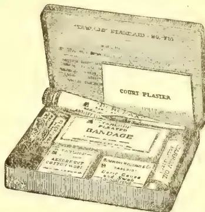
Obtainable at the principal pharmacies in all countries
BURROUGHS WELLCOME & CO., LONDON
xx 392
ALL RIGHTS RESERVED
Colombo, May 31st.
SIR,—Referring to your Negombo correspondent's remarks about the coconut position, it would be interesting to have some reliable data for his statement that Ceylon has in cultivation one-quarter of the world's acreage in coconuts.
The available figures of the world's shipments of copra for 1911 excluding Ceylon show a total of:—
441,512 tons.
| The Ceylon figures for 1911 are roughly:— | |
|---|---|
| Copra ... | 38,444 tons. |
| Coconut Oil ... | 25,613 " |
| Desiccated Coconut ... | 14,555 " |
| Coconuts ... | 7,800 " |
| Poonac ... | 10,700 " |
Total... 97,112 tons.
If the figures representing other countries exports of coconut oil, coconuts, &c., were given, they would further tell against the calculation that this island has such a predominant interest as your correspondent indicates unless, of course, it could be shown that the Ceylon yield was, compared with other countries, out of proportion to its acreage under cultivation.—Yours faithfully,
P.B
A Kyoto dispatch says that an ancient camphor-tree, about 120 feet high and 12 feet in diameter, standing on the grounds of the Yasaka shrine, in the city was almost burned down about midnight Wednesday. The tree was looked upon with great veneration by Kyoto people as the shin-boku (or sacred to the shrine), being supposed to be over ten centuries old. The fire started in the hollow of the tree, and continued to rage till about six o'clock Thursday morning, despite the hard efforts of the fire-men to extinguish it. The flames which seemed apparently subdued for a time, regained strength about eight o'clock and began to burn with redoubled vigour. Then about fifteen fire-men climbed to the top of the tree through the fire and smoke and poured water into the hollow from above. This desperate step proved entirely successful and the obstinate fire was at last completely suppressed. The tree, however, has been charred, so that it is feared that it will not survive the disaster. It is supposed that some beggars, who were seeking shelter in the hollow, which was large enough to accommodate five or six persons easily, built a fire which getting out of their control, developed into such serious dimensions.—Japan Times, March 30.
572The Supplement to the Tropical AgriculturistIn Brazil they are recognising the fact that under existing conditions the rubber industry is not in a position to compete with the plantation enterprise of the Middle East. On the subject of the large—and improved—dividends declared by some Middle East plantation rubber companies which have been converted from a rupee to a sterling basis, the "Brazilian Review" says:—"This sort of thing means so many more nails in the coffin of Brazil's rubber industry, unless there is a very rapid move for better conditions."
It should be noted that the President of the Brazilian Republic has signed a decree approving the regulations of law which provides for
The main provisions of the law are as follows:—(1) The encouragement of the extractive industry and the cultivation of the principal rubber producing trees; (2) the establishment of refineries and factories for the making of rubber goods; (3) granting of aid to immigrants on their arrival and to labourers already settled in the Amazon Valley; (4) to improve methods of transport and reduce freights in the Amazon Valley; (5) to establish centres for the production of food stuffs in the Amazon Valley; (6) to look into and legalise the titles by which land is held in the Federal Territory of the Acre; (7) to hold triennial exhibitions in Rio embracing everything relating to the rubber industry; (8) to make arrangements with the States producing seringa rubber for the reduction of export duties and for the protection and expansion of the rubber trade.
Apropos the product of the Amazon country and the statement made with reference to it, viz., that "every ton of rubber costs a human life," the "India Rubber World" of New York discusses the health conditions of that region. It says: "It is quite likely that each year's output of rubber from the Amazon costs 20,000 human lives, perhaps more. This extreme mortality is attributable to a variety of reasons—primarily to the climate conditions, which render it almost impossible for a white man to live in that region; to the swamp fevers; the dreaded beri-beri; the wild animals, and still worse the poisonous snakes of the jungles; to the unescapable pests of mosquitoes and other insects; to the extremely unwholesome food and worse drink, the typhoid-producing water; to the feeble preventive measures so far taken and the inadequate remedial agencies hitherto employed. All of these combine to create conditions under which human life is well-nigh impossible.
"Over against this compare the conditions that obtain in plantation countries, and especially in those sections where the largest and most prosperous plantations have been started. Here the labourers, or the greater part of them, live under the most sanitary conditions possible in a tropical climate. They are wholesomely fed, and given pure water to drink. They are adequately sheltered; they are protected as far as possible from mosquitoes and other disease-bearing insects; they are kept under expert
medical surveillance and given prompt medical attention; with the result that they enjoy better health than labourers engaged in other occupations in the same community. In other words, in a large plantation district, rubber gathering instead of being destructive of life is a preserver of health, and a conservor of life. . . . It is not necessary to make a nice analysis for the purpose of detecting just what percentage of this fortunate situation is attributable to the working of the planter's heart and how much to the operation of the planter's head. The fact remains that a plantation of rubber is as free from human sacrifice as almost any line of human endeavour." Those who have lived for a year or two on some rubber plantations in the Mid-East may not be quite so impressed with the attractions of this vivid picture in its applications to health but by comparison with wild rubber conditions it will be generally admitted that your New York contemporary is right when it says, "the constantly increasing proportion of plantation rubber not only makes for the commercial stability of the whole rubber industry, but for its humaneness."—H. & C. Mail, May 17.
In reply to a "Student of Statistics" who wrote expressing surprise at the slow progress made by tea-drinking in countries like France and Germany, a "Student of the Tea Market" points out that in these countries the place of tea has hitherto been taken chiefly by wine and beer, coffee and chocolate, and that it is a very hard thing to break down national customs, especially in eating and drinking. The tea market student goes on to say there are indications that these prejudices are gradually being overcome, but this has not been done without much pains and cost to the representatives of the Indian and Ceylon planting communities, by whom, however, for a number of years past, a steady propaganda has been kept going, more particularly in Germany, Belgium, Australia, Southern Scandinavia, and, to a smaller extent, in France and Italy. He then refers to "a special commissioner, resident in Germany, devoting his entire time and effort to the introduction of Indian teas into that and surrounding countries. For the moment owing to the great prosperity of the tea industry, there is a tendency to relax these efforts, but it will, in my view, be a very great pity if this should occur. Should production again tend to outstrip consumption by the older tea drinking countries—which are few in number comparatively—prices might again fall to an unremunerative level, as they did not more than five or six years ago, and then the advantage of having fresh channels opened up would be of inestimable advantage. It is therefore sincerely to be hoped," he adds, "that those in authority (and they possess the means in the shapes of the Indian Cess and the Ceylon 'Thirty Committee's Funds') will not relax their efforts, but continue to peg away not only in Germany, but in other European countries, educating, by every possible means, the peoples there to the advantages to be derived from the use of pure and good tea."
—H. & C. Mail, May 17.
and Magazine of the Ceylon Agricultural Society.—June, 1912.573Mr A Chatterton wrote as follows to the Madras Government on May 10th :—
In the Noyel valley to the south and east of Coimbatore sugarcane cultivation is more concentrated than in almost any other part of the Presidency, and I propose that this plant should be established in the village of Singanallur on some land close to the main road at a point about five miles from Coimbatore. I have recently made a careful inspection of the various possible sites at which the plant can be erected, and I find that it is impossible to locate the plant in the centre of the tracts covered with sugarcane owing to the fact that during the crushing season the land is more or less under water and being black-cotton soil it is quite impassable for carts. The site selected is close to the main road and easy transport is possible for the sugarcane grown on the garden lands of Uppilipalayam and for all the cane grown in Singanallur near the road. The land is a piece of stony-waste of extremely little agricultural value, and I think it will be possible to obtain as much as we want for a small annual rental. If the experiment proves successful and it is desirable to make the experimental station a permanent one, steps can be taken to acquire the land permanently. I have been unable to make any definite agreement with the man, as at present he is away on a pilgrimage. Should any difficulties arise, which however I do not anticipate, in respect to obtaining a lease of the land, I would request that Government will allow me to acquire an area of about two acres, the land compensation for which will not, I imagine, exceed Rs. 300.
Under the present system of
the ryot sets up his mill and an evaporating pan in a corner of the sugarcane field and the lead to the mill is consequently a very short one. I think there is no doubt that with the plant which it is proposed to erect we shall be able to obtain a better class of jaggery, because I intend to put that operation in charge of the most skilled jaggery boiler I can find, and I am already in communication with the officers of the Agricultural Department in respect to this point. The experiment will be designed to ascertain from what distance it would pay ryots to bring their sugarcane to the mill to have it made into jaggery in preference to employing bullock driven mills in their own fields. The system on which I propose work should be conducted is that the ryot should bring his cane to the mill and that the juice should be extracted and manufactured into jaggery and the jaggery minus a certain percentage should be returned to him, a sufficient portion being retained to cover the working cost of the plant. I propose, in the first instance, to deduct 20 per cent of the jaggery manufactured. This is possibly more than is necessary, but it is difficult to get accurate data regarding the cost of carrying on the work. I propose that the jaggery retained should be sold and, if at the end of the working season we find that we have taken too large a percentage of the product, I would then
make to each ryot a pro rata distribution of the surplus available. These proposals have already been explained to the ryots of Singanallur and a number of them have agreed to try the experiment. During the first year's working a considerable amount of experimental work will have to be done and I would suggest that the cost of this should not be charged against the ryots as it may possibly unduly delay the development of the system.
The estimate I submit amounts to Rs. 10,000 and provides for the purchase of a 12 horse-power oil engine and a 18 in. by 12 in. sugar mill which I think will be capable of dealing with tons of sugarcane per hour. It will be most convenient to explain the necessity for the various items in the estimate by describing the process of working which it is proposed to adopt. The juice from the mill will be run into a small sump from which it will be pumped by a diaphragm pump worked off the axle of the mill into one or the other of the two measuring tanks. In this way, it will be possible to determine exactly the quantity of juice obtained from the cane brought by a particular ryot. At the outset, each ryot's juice will be boiled down separately so that we may accurately ascertain the quantity of jaggery produced from the juice yielded by the cane. A weighing machine is also provided which will enable us to weigh the cane when necessary and to weigh the jaggery after it is made. From the measuring tanks which will be fixed in position the juice will be drawn off into large buckets carried on wheels and by this means transferred to the boiling pans, of which it is proposed in the first instance to erect twenty of the ordinary circular type and one set of four boiling pans in series. The engine will require a shed with a galvanised iron roof, but over the rest of the plant I only propose to use a thatched roof as cheaply constructed as possible. Till the experiment has been made we cannot say with absolute certainty that it will prove a success. Unforeseen difficulties may possibly occur and at the outset I wish to avoid as far as possible incurring any expenditure on permanent work. Assuming that we do not meet with success as anticipated at Singanallur, it might be desirable to shift the plant to some other place, and if this has to be done it will, with the arrangements proposed prove a comparatively simple business. A considerable quantity of water will be required to work the plant and keep the pans clean. There is no well within about 200 yards of the site of the proposed installation and, to start with, I propose carting the water, but if at the outset the experiment promises well it will be well to have borings made on the site and sink a small well for the purpose of obtaining the water required. The estimate provides a lump sum of Rs. 980 for working expenses. These are estimated at about Rs. 30 a day and it is impossible to say how many days' work will be done during the season. If the plant is kept fully at work for sixty days, its earnings may be expected to amount to a very considerable sum, as I think we ought to count on a net profit of at least Rs. 20 per working day.
As the cane crushing season begins at Singanallur on the 1st July and continues
574The Supplement to the Tropical Agriculturistthrough the months of August and September it is desirable that we should have the plant ready at work on the 1st July and there will be no difficulty about this if Government were pleased to accord sanction to purchase the oil-engine locally. All the other plant including the sugar mill will be of local manufacture and the oil-engine I propose to procure from Messrs Massy & Co., and that it should be of the usual type which we supply to ryots for driving pumps. A number of these engines are now in stock and they can be procured without any delay. I have, therefore, to request that very early orders may be passed on these proposals.
The Government have passed the following order:—
The Government approve Mr Chatterton's proposal for the erection at Singanallur of a small central plant for crushing sugarcane and making jaggery as an experimental measure during the present sugarcane season at an estimated cost of Rs. 10,000. The Government sanction the local purchase of the plant required for the experiment, as it is necessary that the plant should be erected before July next in order that the work may be commenced with the commencement of the sugarcane season.
The land required for the experimental station should be acquired for temporary occupation under the provisions of the Land Acquisition Act.
In regard to the proposal to deduct and sell on behalf of Government 20 per cent. of the jaggery manufactured to cover the working cost of the plant and to make each ryot a pro rata distribution of the surplus deduction if any, at the end of the season, Mr Chatterton will be requested to explain whether any special establishment will be necessary.
He is requested to report at the end of the season on the results of the experiment and on the question of renewing it next season.—M. Mail, June 3.
We have from time to time, as our readers are aware, devoted space to information about the cultivation of camphor and some of our later articles had reference to the experiments carried out under the supervision of Mr B J Eaton, Chemist to the F.M.S. Government. Mr Eaton has issued a bulletin in connection with the experiments made, from which we learn that in his opinion the industry would prove quite remunerative in the Federated Malay States if carried out on the lines suggested in the bulletin, that is fairly close planting to form hedges, with about 700 trees per acre, pruning being carried out two or three times per annum. Mr Eaton tells us that in order to run a distilling plant economically an area of at least 100 acres should be planted up. The camphor tree appears to thrive in this country on comparatively poor laterite soil if well drained, and the cheapest land, provided it is not swampy, should be obtained. The plant, we are told, will not ex-
haust the land as all the prunings after distillation can be returned to the soil and used as a mulch; so that practically no mineral matter is removed.
The only apparatus necessary is a suitable boiler capable of evaporating from 40 to 30 gallons of water per hour with a still of about 150 to 200 cubic feet capacity capable of holding a ton of prunings together with a suitable condenser of the type described in the Bulletin. This apparatus can be erected in a suitable galvanized building and should not cost more than about $2,000 to $3,000. The chief difficulty at present is the question of the propagation of plants owing to the poor germination of seed obtained from Japan. Seedlings, which are very satisfactory, are probably too expensive and further experiments are required in methods for propagating from cuttings. Mr Eaton estimates that the cost of bringing an acre into bearing, assuming the trees to be pruned for the first time at 3 years of age, should not be more than £15 to £20. The following should prove of interest to anyone who might feel disposed to give camphor cultivation a trial.
The total cost of production per 100 lb of camphor worked out by Mr Eaton is as follows:—
| $ cts. | |
|---|---|
| Cost of collection, transport, etc., of 154,000 lb of prunings | 14 00 |
| Cost of distillation fuel, etc., including boiler attendant | 10 00 |
| Cost of packing, shipping, etc. | 3 00 |
| Total cost | 27 00 |
Market price of 100 lb of crude camphor $60.00
The profit, therefore, on the 100 lb. is $33.00
Profit per acre of 700 trees with three year prunings per year is estimated by Mr Eaton at $60—$80.—Grenier's Rubber News, May 25.
We are induced to return to the subject of rubber schools by perusal of an interesting article on the subject appearing in the columns of "Commerce," Calcutta, which strongly advocates the establishment of rubber schools in the Tropics on the lines of the one which has been inaugurated in London. What we should like to see is the establishment of a rubber school or lecture room in Kuala Lumpur for the benefit of young Assistants just out from home. Its scope might be even extended and made to be useful to older planters who, perchance, may be in need of a wrinkle or two on a subject with which they are not thoroughly acquainted. We would suggest, in this connection, that a lecture room might, with untold advantages, be provided at the Agricultural Station, Kuala Lumpur, and a series of lectures be arranged for during the year, from which young Assistants would derive considerable benefit not only for themselves but for those who employ them. How many initial mistakes might be saved if Assistants were properly guided in the right way and we could not think of a better way and a surer way to do this than by the means we have indicated,
and Magazine of the Ceylon Agricultural Society.—June, 1912.575There is no lack of talent among our scientists and older planters in this country and we feel sure that if the Government took an interest in the subject the services of many a leading planter could be enlisted in the cause. The Director of Agriculture, in our opinion, would be the fittest person to take a leading part in the Rubber School. Lectures from him, as well as, say, from Mr Bancroft, Mycologist, Mr Spring, and Mr B J Eaton on the scientific side would do more good from a practical point of view than all the Bulletins put together. The Medical aspects of rubber could be entrusted into the safe and able hands of Dr Malcolm Watson, while Labour hints would be ably handled by men like Mr Harvey, Mr Macfadyen and others. As we have said there is no lack of available talent and many names occur to us as being suitable for the role of lecturer. Perhaps the suggestion put forward by us can be improved upon and made more useful but we shall rest content if we have been the means to induce interest in the subject and from which might result what we fain would wish to see established—a rubber school in our midst.—Grenier's Rubber News, May 25.
Karachi, June 1.—Nothing will be done this year in Sind with American cotton, outside the Government farms. Seed sufficient for 4,000 acres was ordered from the United States, but owing to various difficulties it will arrive too late for sowing this year. Over 3,000 acres would have been sown on the Jamrao tract and 1,000 acres in Upper Sind. For dealing with the latter area a gin was to be erected at Jacobabad by a Syndicate of Bombay Cotton Brokers. It was arranged that when the Semindars brought their cotton to gin they would be paid half the value, payment for the remainder being made after sales at Bombay or Liverpool. In this way all trouble with auction sales and bad ginning which occurred with Egyptian cotton grown in Jamrao would be avoided. A new Experimental and Demonstration Farm is being opened at Larkana, in Sind, where work on rice and general crops will be carried out.—M. Mail.
The results which are being obtained from Coffee Robusta in Java, coupled with the most promising outlook for the same product, in that island, in the near future, has caused some people to consider whether it would not have been a wiser policy if we in Malaya had gone in for a more mixed policy in planting than has been done. It is true that some of our estates have a second string to their bow either in the shape of tin, of coconuts, of tapioca or of coffee but these, it will be admitted, form the minority. The bulk of our plantations are wedded to rubber alone. Java has followed a polygamous policy and, apparently, is beginning to direct attention to herself, and that as a result there is every likelihood of shares in Java companies going up before we are very much older. It is
a pity, we think, that Coffee Robusta has not been planted on a much larger scale than has been done, for where it is being grown it is doing uncommonly well and we have only to cite the case of Sungei Sedu, one of our most promising estates, to prove the truth of this assertion. Of course we may be told that in the case of Java the rubber planters in that country had no alternative in view of the slow growth of the rubber in that island but that would be no answer to our contention that we should have grown more Coffee Robusta in this country. The fact of the matter is that we were so obsessed by rubber in 1910 that we had no thought for anything else. Nothing was good enough for us but rubber, rubber, rubber but there are many now who must be sorry that they did not strike out into other lines as well. Coconuts too have been very much neglected while not the slightest attempt has been made to grow tea though more than one planter has told us that there are some parts of the Peninsula where the tea bush would thrive. It must not be deduced from the foregoing remarks that we would like to see rubber supplemented by some other product—that would be diametrically opposed to our mission—but really we would like to see more interest taken than is done at present in other products—a policy which would, we think, add to the wealth, the beauty and welfare of this favoured country, the soil of which is suitable for the growth of not only one product, like rubber, but of a variety of products, which could be grown alongside the staple one.—Grenier's Rubber News, May 25.
Tobacco is being cut and cured in all parts of this District. The price now paid by village traders for tobacco in plants to be cured and sold to merchants is not less than that paid last year. The quantity of last year's tobacco remaining in stock for export to Travancore during the next Malayalam year is estimated at about 3,800 cadies. This year's crop was estimated at a meeting of tobacco merchants held last month at about 8,000 cadies. There will, therefore, be
AVAILABLE IN JAFFNA A QUANTITY MORE THAN SUFFICIENT FOR TWO YEARS, the quantity of this tobacco allowed to be imported to Travancore in one year being 5,745 cadies. Tobacco is a perishable article which, if kept more than a certain period, will become damaged. In spite of the tempting price now prevailing, which may not last if the supply exceeds the demand, our cultivators will do well to restrict the area of tobacco cultivation and to cultivate other products such as manioca, chillies, plantain, onion, &c., for which there is good demand locally as well as in other parts of the Island. There can be no doubt that, if not this year certainly during next year, a deadlock will occur if the production of tobacco in this District will go on at this rate, and the result will be heavy loss not only to the cultivators but also to the merchants who will be obliged to have in Jaffna large stocks of tobacco of previous years which will deteriorate in value and also become damaged by natural process.—“Hindu Organ”, May 29.
576The Supplement to the Tropical AgriculturistDear Sir,—Perhaps there are some readers of your “Rubber News” who would like to hear of the actual working of an estate in my charge. The palms in partial and full bearing are about 80%, the young palms the remaining 20%. The manure now being applied and the system on which it is done will increase the number of nuts enormously. At present the average of partial and full bearing trees is 45 nuts. The cost of work for the past season has been as follows:—
| Per Candy (¼ ton) | |
|---|---|
| $ cts. | |
| Picking, gathering and carting | 1 05 |
| Making Copra | 1 97 |
| Borers, Beetles and stem disease | 82 |
| Propping | 1 46 |
| Transport, 1/12 by cart 2/25 by rail | 3 37 |
| Weeding | 2 63 |
| Roads and drains | 20 |
| Manuring (½ the estate each year) | 7 66 |
| Salaries, Visiting, Hospital, Loss on rice, Insurance, Watchers, Lines, Wells, Tools, Carts and Bulls, etc. (General Charges) |
8 26 |
| 27 42 |
The average price for copra in Colombo for the past season was about 80/- (at present it is 86/-), so there remains a profit of about 52/58 candy. Of course brokerage and Colombo agency charges have to be deducted.
An estate planted at the rate of 60 to 65 trees to the acre and giving 60 nuts per tree and taking 1,200 to 1,250 to the candy would give 150/- per acre profit equal to £10.—Yours,
“CEYLON.”
—Grenier's Rubber News, May 25.
No. 1,253 of May 17, 1912.—ROBERT BRIDGE.—“Improvements in machines for washing, macerating, crepeing, and similarly treating india-rubber.”
ABSTRACT.—This invention relates to improvements in washing, macerating, crepeing and like machines employed in the treatment of india-rubber, the invention particularly referring to the two roller type of machine. In this class of machine the object is to provide improvements in means in or connected with the adjustment of the rollers, means for enabling the resultant rubber sheet to be guided back into the nip of
the rollers when required and improved straining arrangements for the water employed in the washing or like operations part of such improvements consisting of a syphon arrangement to enable clear water to overflow from one machine to another or to a source of water supply, a further object being to prevent splashing of the water on to the operator and particularly on to his feet, since the water is very often mixed with acetic or other acid which has a tendency to injure the feet of the operator, a still further object in these latter arrangements being to prevent water splashing outside the machine at any part and also to stop any oil from the roller bearings passing along the rollers where it would injure the rubber being treated.
The improvements are:—(1) Shaping the nuts of the roll adjusting screws with projecting arms which are passed through slots in the machine frame, and are then rotated a quarter of a revolution so that the arms engage with shoulders prepared in the frame to take the end thrust of the screws; (2) making the operating shaft which drives the worm gear connecting the adjusting screws in two parts, coupled by means of a clutch so as to be able to operate the screws simultaneously or independently for adjustment purposes; (3) the employment of a hopper or tank above the rolls for directing and straining the water or other washing liquid, a straining tank in communication with it below the rollers and a further filtering receptacle below that fitted with a syphoning arrangement; (4) an improved water supply pipe adapted to give an adjustable sheet water spray; (5) a hinged or slidable door at the back of the second trough and an anti-splash plate between the second and third receptacles. Six claims: two sheets of drawings.
No. 1,255 of May 20, 1912.—GEORGE CROLL.—“Improvements in the manufacture of green tea.”
ABSTRACT.—Freshly plucked tea leaf is placed in any suitable machine or receptacle as at present employed and treated with superheated steam produced by passing steam from any boiler through heated coils or in any other well-known manner, before passing it through the leaf. After this treatment the leaf is passed through any suitable heating or drying apparatus before rolling to remove some of the original moisture of the fresh leaf and to fix the soluble constituents and produce the tough and gummy condition of leaf necessary for perfect rolling with a minimum production of broken tea. The employment of superheated steam for the purpose described and, in conjunction with it, the further partial drying of the leaf before the rolling process is claimed. Two claims.—E. HUMAN, Registrar of Patents.—Gazette.
This image is a scan of a blank page. The paper has a light beige or cream-colored tint. There are several small, dark specks scattered across the surface, which appear to be scanning artifacts or dust particles. No text, lines, or other markings are present on the page. This image is a scan of a blank page. The paper has a light beige or cream-colored tint. There are a few very small, dark specks scattered across the surface, which appear to be scanning artifacts or dust particles. No text, lines, or other markings are present on the page. This image shows a blank, aged page with a light beige or cream color. The surface has a subtle texture and slight discoloration, characteristic of old paper. There are no markings, text, or illustrations on the page.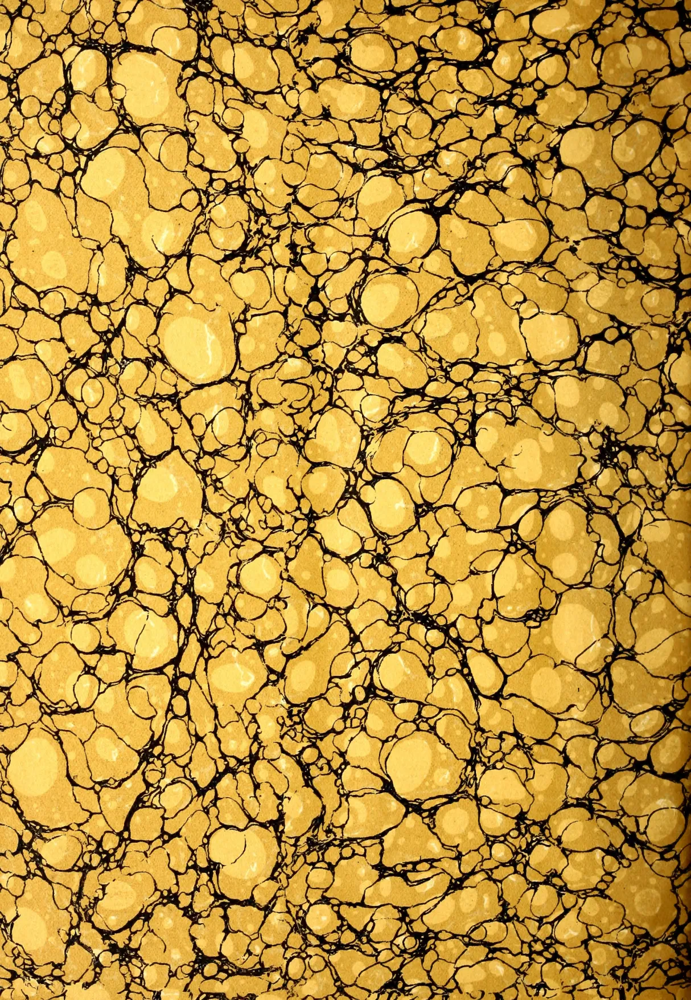
This image displays a classic marbled pattern, often referred to as 'stone' or 'shell' marble. The composition is dominated by large, irregular, rounded shapes in a warm, golden-yellow hue. These shapes vary in size and are distributed across the entire frame. They are separated by a complex network of thin, dark, vein-like lines that create a sense of depth and organic movement. The overall effect is reminiscent of a cross-section of a stone or a natural, crystalline structure. The lighting appears to be coming from the upper left, creating subtle highlights on the edges of the yellow shapes and casting soft shadows within the dark veins.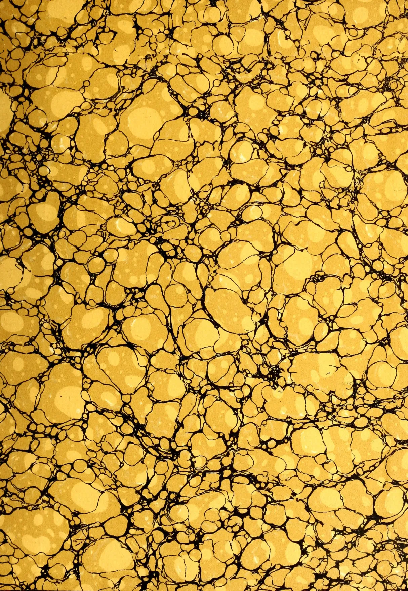
This image displays a classic marbled pattern, often referred to as 'stone' or 'shell' marbling. The composition is dominated by a dense, intricate network of irregular, rounded shapes in various shades of yellow and gold. These shapes vary in size and are separated by thin, dark, winding lines that create a sense of depth and complexity. The overall effect is reminiscent of a microscopic view of biological tissue or a detailed representation of a stone's grain. The lighting appears to be coming from the upper left, creating subtle highlights on the edges of the yellow shapes and giving the pattern a three-dimensional quality.